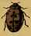
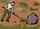
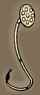

English - Kannada Dictionary
ಇಂಗ್ಲಿಷ್ - ಕನ್ನಡ ನಿಘಂಟು
(l ಎಂದೂ ಸಹ ಪ್ರಯೋಗ) (ಬಹುವಚನ Ls ಯಾ L’s).
- ಎಲ್: ಇಂಗ್ಲಿಷ್ ವರ್ಣಮಾಲೆಯ ಹನ್ನೆರಡನೆಯ ಅಕ್ಷರ.
- (ರೋಮನ್ ಸಂಖ್ಯೆ) 50, ಉದಾಹರಣೆಗೆ CL = 150, XL = 40.
- L ಆಕಾರದ ವಸ್ತು, ಮುಖ್ಯವಾಗಿ ಎರಡು ಕೊಳಾಯಿಗಳ ಚೌಕಮೂಲೆಯ ಸಂಧಿ, ಸೇರುವೆ.
- (ಅಮೆರಿಕನ್ ಪ್ರಯೋಗ, ಆಡುಮಾತು) = el.
- Lake.
- (ಬ್ರಿಟಿಷ್ ಪ್ರಯೋಗ) learner driver.
- Liberal.
- Licentiate
- (ಜೀವವಿಜ್ಞಾನ) Linnaeus.
- Lire.
- left.
- line.
- litre(s).
- length.
- (ಪ್ರಾಚೀನ ಪ್ರಯೋಗ) (ಹಣದ ವಿಷಯದಲ್ಲಿ) pound(s).
(ಹಣದ ವಿಷಯದಲ್ಲಿ) (ಸಂಖ್ಯೆಯ ಹಿಂದೆ ಬಂದಾಗ) ಪೌಂಡು(ಗಳು): £ 10 = ಹತ್ತು ಪೌಂಡುಗಳು. £ E = Egyptian pound(s).
- Library Association.
- Los Angeles.
- (ಅಮೆರಿಕನ್ ಪ್ರಯೋಗ) (ಅಧಿಕೃತ ಅಂಚೆ ಬಳಕೆಯಲ್ಲಿ) Louisiana.
(ರಸಾಯನವಿಜ್ಞಾನ) lanthanum (ಧಾತು).
Louisiana(3).
- (ಮುಖ್ಯವಾಗಿ ದಕ್ಷಿಣ ಆಹ್ರಿಕ) ಗಾಡಿ ಪಾಳೆಯ; ಬಂಡಿಬೀಡು; ಬಂಡಿಬಿಡಾರ; ವಾಹನ ವೃತ್ತ; ಮುಖ್ಯವಾಗಿ ವೃತ್ತಾಕಾರದಲ್ಲಿ ಬಂಡಿಗಳನ್ನು ಸುತ್ತಲೂ ನಿಲ್ಲಿಸಿ ಏರ್ಪಡಿಸಿದ ನೆಲೆ, ಬೀಡು, ಪಾಳೆಯ.
- (ಸೈನ್ಯ) ಸಶಸ್ತ್ರ ವಾಹನ ಮಾಳ; ಶಸ್ತ್ರಸಜ್ಜಿತ ವಾಹನಗಳನ್ನು ನಿಲ್ಲಿಸುವ ಸ್ಥಳ.
- (ವಾಹನಗಳನ್ನು) ಚಕ್ರ ಬೀಡು ನಿಲ್ಲಿಸು; ಸುತ್ತುಪಾಳೆಯ ರಚಿಸು; ವೃತ್ತಾಕಾರವಾಗಿ ನಿಲ್ಲಿಸು.
- (ಜನರನ್ನು) ವಾಹನಪಾಳೆಯದಲ್ಲಿಡು.
ಗಾಡಿಬೀಡು ಬಿಡು; ವಾಹನ ಪಾಳೆಯ ಹೂಡು.
- Labour.
- Labrador.
- ಸಾಂಕೇತಿಕ – ಧ್ವಜ, ಬಾವುಟ, ನಿಶಾನೆ.
- (ರೋಮನ್ ಸೈನಿಕ ಲಾಂಛನಗಳೊಂದಿಗೆ ಕ್ರಿಶ್ಚಿಯನ್ ಲಾಂಛನಗಳನ್ನು ಸೇರಿಸಿದ, ಕಾನ್ಸ್ಟಂಟೈನ್ ದಿ ಗ್ರೇಟ್ ಎಂಬ ರೋಮನ್ ಚಕ್ರವರ್ತಿಯ) ಸಾಮ್ರಾಜ್ಯ – ಧ್ವಜ, ಬಾವುಟ, ನಿಶಾನೆ.
(ಸಾಹಿತ್ಯಕ)
- ನಡುಕ; ಅಲುಗಾಟ; ಅಳ್ಳಾಟ.
- ಶಕ್ತಿಗುಂದು(ವಿಕೆ); ಶಕ್ತಿಹ್ರಾಸ; ಬಲಗುಂದುವಿಕೆ.
- ಅಧಃಪತನ.
- ಲೇಬಲ್ಲು; ಹೆಸರು ಪಟ್ಟಿ; ಗುರುತು – ಪಟ್ಟಿ, ಚೀಟಿ; ಒಂದು ವಸ್ತುವಿನ ಸ್ವರೂಪ, ಗುಣ, ಮಾಲಿಕ, ಹೆಸರು, ವಿಳಾಸ, ರವಾನೆ ಸ್ಥಳ, ಮೊದಲಾದವನ್ನು ಬರೆದು ಆ ವಸ್ತುವಿಗೆ ಕಟ್ಟುವ, ಅಂಟಿಸುವ ಕಾಗದ, ಲೋಹ, ಮೊದಲಾದವುಗಳ – ಬಿಲ್ಲೆ, ಪಟ್ಟಿ.
- (ಮುಖ್ಯವಾಗಿ ಹೀನಾರ್ಥಕ ಪ್ರಯೋಗ) ತಲೆಬರಹ; ತಲೆಚೀಟಿ; ವ್ಯಕ್ತಿ, ಕಲಾಕೃತಿ, ಮೊದಲಾದವನ್ನು ವರ್ಗೀಕರಿಸುವ ಸಣ್ಣ ವಿಶೇಷಣ, ಯಾ ಪದಗುಚ್ಛ.
- ಚೀಟಿ; ಲೇಬಲ್ಲು:
- ಉಡುಪಿಗೆ ಹೊಲಿದ, ತಯಾರಕರ ಹೆಸರನ್ನುಳ್ಳ ಸಣ್ಣ ಬಟ್ಟೆ.
- ಹ್ಯಾಷನ್ ಯಾ ರೆಕಾರ್ಡಿಂಗ್ ಕಂಪೆನಿಯ ಹೆಸರು, ಲೋಗೋ ಯಾ ಟ್ರೇಡ್ ಮಾರ್ಕು: brought it out under his own label ಅವನದೇ ಹೆಸರಿನಲ್ಲಿ (ಟ್ರೇಡ್ಮಾರ್ಕಿನಲ್ಲಿ) ಅದನ್ನು ಹೊರತಂದ.
- ಗ್ರಾಮಹೋನ್ ತಟ್ಟೆಯ ಮಧ್ಯದಲ್ಲಿ ಅದರ ವಿವರಗಳನ್ನು ಅಂಟಿಸಿದ ಕಾಗದದ ಚೂರು.
- ಸ್ಟಾಂಪು; ಪಾರ್ಸಲ್ ಮೊದಲಾದವುಗಳ ಮೇಲೆ ಇರುವ ತಲೆಚೀಟಿ, ಅಂಟು ಚೀಟಿ.
- ಲೇಬಲ್ಲು; ನಿಘಂಟಿನಲ್ಲಿ ಪದದ ಅರ್ಥ ವಿವರಿಸುವಾಗ, ಅದರ ವಿಷಯ, ದಾಖಲೆ, ರಾಷ್ಟ್ರೀಯತೆ, ಮೊದಲಾದವನ್ನು ತಿಳಿಸುವ ಪದ.
- (ವಾಸ್ತುಶಿಲ್ಪ) (ಮಳೆಯ ನೀರು ಕೆಳಗಿನ ಭಾಗಕ್ಕೆ ಬೀಳದಂತೆ ತಡೆಯುವ) ಚೆಜ್ಜ; ಸಜ್ಜ; ಮುಂಸೂರು; ಮುಂಚಾಚು.
- (ವಂಶಲಾಂಛನ ವಿದ್ಯೆ) ಸಾಮಾನ್ಯವಾಗಿ ಮೂರು ಕೆಳ ಮುಖವಾದ ಚಾಚಿಕೆಗಳಿರುವ ಅಡ್ಡಲಾದ ಪಟ್ಟಿ, ಗೆರೆ ಯಾ ಕಂಬಿಗಳಿರುವ, ಜ್ಯೇಷ್ಠಪುತ್ರನ ಲಾಂಛನ.
- ಲೇಬಲ್ ಹಚ್ಚು; ಗುರುತು ಪಟ್ಟಿ, ತಲೆಚೀಟಿ ಮೊದಲಾದವನ್ನು – ಅಂಟಿಸು, ಹಚ್ಚು, ಕಟ್ಟು.
- ( ಅಕರ್ಮಕ ಕ್ರಿಯಾಪದ ಸಹ) ವರ್ಗೀಕರಿಸು; ತಲೆಚೀಟಿ ಹಚ್ಚು; ಪಟ್ಟಿಮಾಡು; ಒಂದು ವರ್ಗಕ್ಕೆ ಸೇರಿಸು: the bottle was labelled poison ಆ ಸೀಸೆಯನ್ನು ವಿಷವೆಂದು ವರ್ಗೀಕರಿಸಲಾಯಿತು. labelled them as irresponsible ಅವರನ್ನು ಬೇಜವಾಬ್ದಾರಿ ಎಂದು ಪಟ್ಟಿ ಮಾಡಲಾಯಿತು.
- ಲೇಬಲಿಸು; ಪದಾರ್ಥದಲ್ಲಿನ ಅಣುಗಳನ್ನು ಗುರುತಿಸುವುದಕ್ಕಾಗಿ ಅಣುವಿನಲ್ಲಿರುವ ಪರಮಾಣು ಅಥವಾ ಪರಮಾಣುಗಳನ್ನು ಗುರುತಿಸಬಹುದಾದ (ಸಾಮಾನ್ಯವಾಗಿ ವಿಕಿರಣಪಟು) ಪರಮಾಣುವಿನಿಂದ ಪಲ್ಲಟಿಸು.
- ಲೇಬಲ್ ಮಾಡಿದ; ಪಟ್ಟಿ ಮಾಡಿದ; ತಲೆಚೀಟಿ ಹಚ್ಚಿದ; ಲೇಬಲ್ ಹಚ್ಚಿ ಗುರುತಿಸಿದ.
- ಲೇಬಲಿತ; ಲೇಬಲಿಸಿದ; ಅಣುಗಳನ್ನು ಗುರುತಿಸಲಿಕ್ಕಾಗಿ ಅದರಲ್ಲಿನ ಪರಮಾಣು ಅಥವಾ ಪರಮಾಣುಗಳನ್ನು ಗುರುತಿಸಬಹುದಾದ (ಸಾಮಾನ್ಯವಾಗಿ ವಿಕಿರಣಶೀಲ) ಪರಮಾಣುವಿನಿಂದ ಪಲ್ಲಟಿಸಿದ.
ಲೇಬಲರ್; ಲೇಬಲ್ ಹಚ್ಚುಗ; ಯಂತ್ರದ ಸಹಾಯದಿಂದ ಯಾ ಕೈಯಿಂದ ಲೇಬಲ್ಲನ್ನು, ಚೀಟಿಯನ್ನು ಅಂಟಿಸುವವ.
labiumನ ಬಹುವಚನ.
- ತುಟಿಗಳ; ಓಷ್ಠ್ಯ.
- (ಪ್ರಾಣಿವಿಜ್ಞಾನ, ಅಂಗರಚನಾಶಾಸ್ತ್ರ)
- ತುಟಿಯ; ಓಷ್ಠ್ಯ.
- ಓಷ್ಠಸದೃಶ; ತುಟಿಯಂಥ; ತುಟಿಯಂತಿರುವ; ತುಟಿಯಂತೆ ಕೆಲಸಮಾಡುವ.
- (ದಂತವೈದ್ಯ) ಓಷ್ಠ್ಯ; ತುಟಿಗೆ ಸೇರಿಕೊಂಡಿರುವ, ತುಟಿಯ ಪಕ್ಕದಲ್ಲಿರುವ ಹಲ್ಲಿನ ಭಾಗದ.
- (ಧ್ವನಿವಿಜ್ಞಾನ) (ಧ್ವನಿಯ ವಿಷಯದಲ್ಲಿ) ಓಷ್ಠ್ಯ; ತುಟಿಗಳನ್ನು ಮುಚ್ಚಿ ಯಾ ಹತ್ತಿರ ತಂದು ಉಚ್ಚರಿಸುವ.
- (ಧ್ವನಿವಿಜ್ಞಾನ) ಓಷ್ಠ್ಯ (ಧ್ವನಿ); ಓಷ್ಠಜ(ಧ್ವನಿ); ತುಟಿಗಳನ್ನು ಮುಚ್ಚಿ ಯಾ ಹತ್ತಿರ ತಂದು ಉಚ್ಚರಿಸುವ (ಉದಾಹರಣೆಗೆ p, b, f, v, m, w, ಪ, ಬ, ಮ, ವ) ವ್ಯಂಜನಗಳು ಮತ್ತು ತುಟಿಗಳನ್ನು ದುಂಡಗೆ ಮಾಡಿ ಉಚ್ಚರಿಸುವ (ಉದಾಹರಣೆಗೆ ಉ, ಊ, ಓ) ಸ್ವರಗಳು.
- ತುಟಿ(ಯಂಥ ಭಾಗ).
ಓಷ್ಠ್ಯೋಚ್ಚಾರ; ಓಷ್ಠ್ಯಧ್ವನಿ ಬರುವಂತೆ ಉಚ್ಚರಿಸುವ ಅಭ್ಯಾಸ (ಉದಾಹರಣೆಗೆ ಲವಣ ಪದದ ಲಕಾರವನ್ನು ವಕಾರದಂತೆ ಉಚ್ಚರಿಸುವುದು).
ಓಷ್ಠ್ಯೀಕರಣ ಯಾ ಓಷ್ಠ್ಯೀಭವನ; ಓಷ್ಠ್ಯಧ್ವನಿ ಬರುವಂತೆ ಯಾ ಆಗುವಂತೆ ಮಾಡುವುದು; ತುಟಿಗಳನ್ನು ತಾಗಿಸಿ ಯಾ ದುಂಡು ತಿರುವಿ ಉಚ್ಚಾರ ಮಾಡುವುದು.

ಓಷ್ಠ್ಯೀಕರಿಸು:
- ತುಟಿ ತಾಗಿಸಿ ಯಾ ದುಂಡಾಗಿಸಿ ಉಚ್ಚಾರ ಮಾಡು.
- ಓಷ್ಠ್ಯಧ್ವನಿ ಆಗುವಂತೆ ಮಾಡು.
ಓಷ್ಠ್ಯವಾಗಿ; ತುಟಿಯಿಂದ – ಆಗುವಂತೆ ಯಾ ಆದಂತೆ.
(ಸಂಗೀತ) ತುಟಿಕೊಳಲು; ಮುಖಮುರಲಿ; ಆರ್ಗನ್ ವಾದ್ಯದಲ್ಲಿ ತುಟಿಗಳಿರುವ ಕೊಳಲು.
ಯೋನಿಯ ಹೊರತುಟಿ; ಭಗದ ಬಾಹ್ಯೋಷ್ಠ; ಯೋನಿಯ ಬಾಯಿಯ ಹೊರಮಡಿಕೆ.
ಯೋನಿಯ ಒಳತುಟಿ; ಭಗದ ಅಂತರೋಷ್ಠ; ಯೋನಿಯ ಬಾಯಿಯ ಒಳಮಡಿಕೆಗಳು.
(ಸಸ್ಯವಿಜ್ಞಾನ) ಓಷ್ಠಿತ(ಸಸ್ಯ); ತುಟಿಗಳಂತೆ ಒಂದು ದಳ ಇನ್ನೊಂದರ ಮೇಲೆ ಚಾಚಿಕೊಂಡಿರುವ, ಇಪ್ಪಾಲಾದ ಪುಷ್ಪಪಾತ್ರೆ ಯಾ ದಳವೃತ್ತ ಉಳ್ಳ ಸಸ್ಯ.
- (ಸಸ್ಯವಿಜ್ಞಾನ) ಓಷ್ಠಿತ; ಓಷ್ಠರೂಪಿ; ತುಟಿಯಾಕಾರದ; ಅಧರಾಕೃತಿಯ; ನಳಿಕೆಯಾಕಾರದ ದಳವೃತ್ತ ಯಾ ಪುಷ್ಪಪಾತ್ರೆಯು ಇಪ್ಪಾಲಾಗಿದ್ದು, ಒಂದು ದಳದ ಮೇಲೆ ಇನ್ನೊಂದು ಚಾಚಿಕೊಂಡಿರುವ.
- (ಸಸ್ಯವಿಜ್ಞಾನ ಮತ್ತು ಪ್ರಾಣಿವಿಜ್ಞಾನ) ಓಷ್ಠಿತ; ಓಷ್ಠಾಕಾರದ; ಅಧರರೂಪಿ; ಅಧರಾಕಾರದ; ತುಟಿಯಂಥ; ತುಟಿಯಾಕಾರದ.
(ರಸಾಯನವಿಜ್ಞಾನ) ಅಸ್ಥಿರ; ಭಂಗುರ; (ಅಣುವಿನಲ್ಲಿರುವ ಪರಮಾಣು ಯಾ ಪರಮಾಣು ಗುಚ್ಛದ ವಿಷಯದಲ್ಲಿ) ಸುಲಭವಾಗಿ ಬದಲಾಯಿಸುವ ಯಾ ಪಲ್ಲಟಿಸಬಹುದಾದ.
(ರಸಾಯನವಿಜ್ಞಾನ) ಭಂಗುರತೆ; ಅಸ್ಥಿರತೆ; ಸ್ಥಾನಚ್ಯುತಿ ಯಾ ಬದಲಾವಣೆಯನ್ನು ಹೊಂದುವಿಕೆ.
ಓಷ್ಠ್ಯ ಯಾ ಸೋಷ್ಠ; “ತುಟಿಗಳ ಯಾ”, “ತುಟಿಗಳು ಮತ್ತು” ಎಂಬ ಅರ್ಥಗಳ ಶಬ್ದಗಳ ರಚನೆಯಲ್ಲಿ ಬಳಸುವ ಸಮಾಸ ಪೂರ್ವಪದ.
(ಧ್ವನಿಯ ವಿಷಯದಲ್ಲಿ) ದಂತೋಷ್ಠ್ಯ; ತುಟಿ ಮತ್ತು ಹಲ್ಲುಗಳಿಂದ ಹುಟ್ಟುವ, ಉದಾಹರಣೆಗೆ: f, v.
(ಧ್ವನಿಯ ವಿಷಯದಲ್ಲಿ) ಓಷ್ಠತಾಲವ್ಯ; ತುಟಿಗಳು ಮತ್ತು ತಾಲುವಿನ ಹಿಂಭಾಗದ ಸಹಾಯದಿಂದ ಹುಟ್ಟುವ, ಉದಾಹರಣೆಗೆ w.
(ಬಹುವಚನ labia ಉಚ್ಚಾರಣೆ ಲೇಬಿಅ).
- (ಸಾಮಾನ್ಯವಾಗಿ ಬಹುವಚನ ದಲ್ಲಿ) (ಅಂಗರಚನಾಶಾಸ್ತ್ರ) ಯೋನಿತುಟಿ(ಗಳು); ಭಗೋಷ್ಠ(ಗಳು); ಯೋನಿಯ ಮುಖದಲ್ಲಿರುವ ತುಟಿಯಂಥ ಮಡಿಕೆ(ಯ ಭಾಗ).
- ಲೇಬಿಯಮ್; ತುಟಿ; ಓಷ್ಠ:
- ಕೀಟಗಳ ಮತ್ತು ಚಿಪ್ಪುಜೀವಿಗಳ ಬಾಯಿಯ ತಳ.
- ಉದರಪಾದಿಗಳ ಚಿಪ್ಪಿನ ಬಾಯಿಯಲ್ಲಿ ಕಾಣುವ ಒಳತುಟಿಯಂಥ ಬಾಗ.
- (ಸಸ್ಯವಿಜ್ಞಾನ) ತುಟಿಗಳಂತಿರುವ ದಳವಲಯದಲ್ಲಿಯ (ಮುಖ್ಯವಾಗಿ ಕೆಳಗಿನ) ತುಟಿ.
ಲಬಾರಟರಿಯ; ಲಾಬರಟರಿಯ; ಪ್ರಯೋಗಶಾಲೆಯ:
- ಪ್ರಯೋಗಶಾಲೆಯಂಥ.
- ಪ್ರಯೋಗಶಾಲೆಯನ್ನು ಬಳಸಿಕೊಳ್ಳುವ.
ಲಬಾರಟರಿ; ಲಾಬರಟರಿ; ಪ್ರಯೋಗಶಾಲೆ; ಪ್ರಯೋಗಾಲಯ; ಪ್ರಯೋಗ ಮಂದಿರ; ವೈಜ್ಞಾನಿಕ ಪ್ರಯೋಗಗಳನ್ನು, ಮುಖ್ಯವಾಗಿ ರಾಸಾಯನಿಕ ಪ್ರಯೋಗಗಳನ್ನು ನಡೆಸಲು, ಬೋಧನೆಗೆ ಯಾ ಔಷಧಗಳು ಮತ್ತು ರಾಸಾಯನಿಕಗಳನ್ನು ತಯಾರಿಸುವುದಕ್ಕೆ ಸಿದ್ಧಪಡಿಸಿರುವ ಕೊಠಡಿ ಯಾ ಕಟ್ಟಡ (ರೂಪಕವಾಗಿ ಸಹ): laboratory of the mind ಮನಸ್ಸಿನ ಪ್ರಯೋಗಶಾಲೆ; ಮಿದುಳು. laboratory of ideas ಕಲ್ಪನೆ ಕಮ್ಮಟ; ವಿಚಾರಾಲಯ; ಭಾವನೆಗಳ, ಕಲ್ಪನೆಗಳ, ಅಭಿಪ್ರಾಯಗಳ, ವಿಚಾರಗಳ – ಆಕರ, ಮೂಲಸ್ಥಾನ, ಜನ್ಮಸ್ಥಾನ.
(ಮುಖ್ಯವಾಗಿ ಪ್ರಯೋಗಶಾಲೆಗಳ ಪ್ರಯೋಗಗಳಲ್ಲಿ ಬಳಸುವ) ಪ್ರಾಯೋಗಿಕ ಪ್ರಾಣಿ, ಉದಾಹರಣೆಗೆ ಇಲಿ, ಮೊಲ, ಮೊದಲಾದವು.
- ದುಡಿಮೆಯ; ಪ್ರಯಾಸದ; ಶ್ರಮದ; ಶ್ರಮಸಾಧ್ಯ.
- (ಮುಖ್ಯವಾಗಿ ಸಾಹಿತ್ಯ ಶೈಲಿಯ ವಿಷಯದಲ್ಲಿ) ತಿಣುಕಿ ಬರೆದ; ಕಷ್ಟಪಟ್ಟು ಬರೆದಂತಿರುವ; ಸರಾಗವಿಲ್ಲದೆ, ಓಟವಿಲ್ಲದೆ, ಬಹುಶ್ರಮದಿಂದ ಯಾ ಪ್ರಯಾಸದಿಂದ – ರಚಿಸಿದಂತೆ ಕಾಣುವ.
- ಶ್ರಮಶೀಲ; ಕಷ್ಟಪಟ್ಟು ಕೆಲಸ ಮಾಡುವ.
- ಬಹು ಶ್ರಮದಿಂದ; ಕಷ್ಟಪಟ್ಟು, ಪ್ರಯಾಸದಿಂದ – ದುಡಿದು.
- (ಶೈಲಿ ಮೊದಲಾದವುಗಳ ವಿಷಯದಲ್ಲಿ) ಪ್ರಯಾಸದಿಂದ ಬರೆದಂತೆ.
- ಶ್ರಮಶೀಲತೆ; ಕಷ್ಟಪಟ್ಟು ದುಡಿಯುವಿಕೆ; ಪ್ರಯಾಸಪಟ್ಟು ಕೆಲಸಮಾಡುವ ಗುಣ.
- ಶ್ರಮಸಾಧ್ಯತೆ.
- (ಸಾಹಿತ್ಯಶೈಲಿ ಮೊದಲಾದವುಗಳ ವಿಷಯದಲ್ಲಿ) ತಿಣುಕಿದಂತಿರುವಿಕೆ; ಅತಿಪ್ರಯಾಸದ ಲಕ್ಷಣಗಳನ್ನು ತೋರಿಸುವಂತಿರುವಿಕೆ.
(ಅಮೆರಿಕನ್ ಪ್ರಯೋಗಮತ್ತು ಆಸ್ಟ್ರೇಲಿಯ labor).
- ದುಡಿತ; ದುಡಿಮೆ; ಗೆಯ್ಮೆ; ಶ್ರಮದ ಕೆಲಸ; ದೇಹದ ಯಾ ಮನಸ್ಸಿನ ಶ್ರಮ.
- (ಸಾಮಾಜಿಕ) ದುಡಿಮೆ; ಪರಿಶ್ರಮ; ಸಮಾಜದ ಆವಶ್ಯಕತೆಗಳನ್ನು ಒದಗಿಸಲು ಉಪಯೋಗವಾಗುವ ದುಡಿಮೆ.
- ಕೆಲಸಗಾರರು; ದುಡಿಮೆಗಾರರು; ಕಾರ್ಮಿಕರು; ಕರ್ಮಚಾರಿಗಳು; ಶ್ರಮಜೀವಿಗಳು.
- (Labour) ಲೇಬರ್ ಪಾರ್ಟಿ; ಕಾರ್ಮಿಕ ಪಕ್ಷ; ರಾಜಕೀಯ ಪಕ್ಷವಾಗಿ ಏರ್ಪಟ್ಟ ಜೀತಗಾರರು, ಕಾರ್ಮಿಕರು.
- ಕಷ್ಟಕೆಲಸ; ಪ್ರಯಾಸದ ಪ್ರಯತ್ನ; ಅಸಾಧಾರಣ ಶಕ್ತಿ, ಸಾಹಸಗಳನ್ನು ಕೋರುವ ಕೆಲಸ.
- ಹೆರಿಗೆ ನೋವು; ಪ್ರಸವ – ವೇದನೆ, ಸಂಕಟ; ಹೆರಿಗೆಬೇನೆ; ಪ್ರಸವ ಪ್ರಕ್ರಿಯೆ.
- labour of love ಪ್ರೀತಿಯ ದುಡಿಮೆ; ಇಷ್ಟದ ಕೆಲಸ; ಪ್ರಿಯಶ್ರಮ; ಪ್ರಿಯಪ್ರಯಾಸ; ಲಾಭದ ಯಾ ಬಹುಮಾನದ ಆಸೆ ಇಲ್ಲದೆ ಕೇವಲ ಪ್ರೀತಿಯಿಂದ ಮಾಡುವ ಕೆಲಸ, ಪಡುವ ಶ್ರಮ.
- lost labour ಬರಡುಗೆಲಸ; ವ್ಯರ್ಥಶ್ರಮ; ವೃಥಾ ಶ್ರಮ; ನಿಷ್ಫಲ ಪ್ರಯತ್ನ.
- in labour ಪ್ರಸವ ವೇದನೆಯಲ್ಲಿ; ಹೆರಿಗೆ ನೋವು ತಿನ್ನುತ್ತಾ.
labour of Hercules (ಯಾ Herculean labour) ಭಗೀರಥ ಪ್ರಯತ್ನ; ಅತ್ಯಧಿಕ ಬಲ; ಭೀಮಶ್ರಮ; ಭೀಮಸಾಹಸ; ಬಹಳ ಸಾಮರ್ಥ್ಯ ಸಾಹಸಗಳನ್ನು ಕೋರುವ ಕೆಲಸ, ಸಾಹಸ.
(ಅಮೆರಿಕನ್ ಪ್ರಯೋಗ ಮತ್ತು ಆಸ್ಟ್ರೇಲಿಯ labor).
- (ಪ್ರಾಚೀನ ಪ್ರಯೋಗ ಯಾ ಕಾವ್ಯಪ್ರಯೋಗ) ನೆಲವನ್ನು ಉಳು.
- ಲಂಬಿಸು; ಬೆಳಸು; ಅತಿಯಾಗಿ ವಿಸ್ತರಿಸು; ವಿಸ್ತಾರವಾಗಿ ಪ್ರತಿಪಾದಿಸು; ಬಹಳವಿವರವಾಗಿ, ಕೂಲಂಕಷವಾಗಿ ಹೇಳು, ತಿಳಿಸು; ದೀರ್ಘವಾಗಿ ನಿರೂಪಿಸು: I will not labour the point ಆ ಅಂಶವನ್ನು ನಾನು ಲಂಬಿಸುವುದಿಲ್ಲ.
- ಕ್ಷಪಡು; ಶ್ರಮಿಸು; ದುಡಿ; ಕಷ್ಟಪಟ್ಟು ಕೆಲಸಮಾಡು.
- (ಒಂದು ಗುರಿಯ ಸಾಧನೆಗೆ, ಒಂದು ಕೆಲಸ ಮಾಡುವುದಕ್ಕೆ) ಹೆಣಗು; ಪ್ರಯಾಸ ಪಡು: laboured to fulfil his promise ಕೊಟ್ಟ ಮಾತನ್ನು ಪೂರೈಸಲು ಹೆಣಗಿದ.
- (ಅನನುಕೂಲ ಯಾ ಭ್ರಮೆಯಿಂದ) ತೊಂದರೆಪಡು; ಕ್ಲೇಶಪಡು; ಕ್ಲೇಶಕ್ಕೊಳಗಾಗು: laboured under universal disapproval ಸಾರ್ವತ್ರಿಕ ಅಸಮ್ಮತಿಯಿಂದ ಕ್ಲೇಶಕ್ಕೊಳಗಾದ.
- (ತೊಂದರೆ ಯಾ ಕಷ್ಟದಿಂದ) ಮುಂದುವರಿ; ಮುಂದೆ ಸಾಗು: laboured slowly up the hill ನಿಧಾನವಾಗಿ ಪ್ರಯಾಸದಿಂದ ಬೆಟ್ಟ ಹತ್ತಿದ.
- (ಹಡಗಿನ ವಿಷಯದಲ್ಲಿ) ಒಲೆದಾಡು; ಹೊರಳುತ್ತ ಸಾಗು; ಎದ್ದುಬಿದ್ದು ಸಾಗು; ಏಳುತ್ತ ಬೀಳುತ್ತ ಹೋಗು.
labour in vain ವ್ಯರ್ಥ ಪ್ರಯತ್ನ ಮಾಡು.
ದುಡಿಮೆ ಪಾಳೆಯ; ಕೈದಿಗಳು ಕಷ್ಟಪಟ್ಟು ದುಡಿಯಬೇಕಾಗಿರುವ ಪಾಳೆಯ, ಬೀಡು.
ಕಾರ್ಮಿಕರ ದಿನ; ಲೇಬರ್ ದಿನ:
- ಮೇ ಡೇ; ಮೇ ತಿಂಗಳ ಒಂದನೇ ತಾರೀಖು.
- ಅಮೆರಿಕದ ಸಂಯುಕ್ತ ಸಂಸ್ಥಾನಗಳು ಮತ್ತು ಕೆನಡಾಗಳಲ್ಲಿ ಕಾರ್ಮಿಕರ ಗೌರವಾರ್ಥವಾಗಿ ಆಚರಿಸುವ ಸೆಪ್ಟೆಂಬರ್ ತಿಂಗಳ ಮೊದಲ ಸೋಮವಾರ.
- ಬಹಳ ಲಂಬಿಸಿದ; ಅತಿವಿಸ್ತೃತ.
- ಬಹಳ ಶ್ರಮದಿಂದ ಮಾಡಿದಂತೆ ತೋರುವ; ತಿಣುಕಿ ಮಾಡಿದ; ತಾನಾಗಿ, ಸಹಜವಾಗಿ ಬಂದದ್ದಲ್ಲದ, ಆದದ್ದಲ್ಲದ.
(ಅಮೆರಿಕನ್ ಪ್ರಯೋಗ laborer).
- ದುಡಿಮೆಗಾರ; ಜೀತಗಾರ; ಶ್ರಮಜೀವಿ; ಶ್ರಮಿಕ.
- ಕೂಲಿ; ಕಾರ್ಮಿಕ; ಕರ್ಮಚಾರಿ; ಜಾಣ್ಮೆ ಯಾ ತರಬೇತಿಗಿಂತ ಬಲ ಯಾ ತಾಳ್ಮೆ ಹೆಚ್ಚಾಗಿ ಬೇಕಾಗಿರುವ ಕೂಲಿ ಕೆಲಸ ಮಾಡುವವನು.
(ಬ್ರಿಟಿಷ್ ಪ್ರಯೋಗ) (ಆಡುಮಾತು ಯಾ ಚರಿತ್ರೆ) ಕಾರ್ಮಿಕ ವಿನಿಮಯ ಕಚೇರಿ; ಉದ್ಯೋಗ ವಿನಿಮಯ ಕೇಂದ್ರ; ಕೆಲಸಗಾರರು ಬೇಕಾಗಿರುವ ಸ್ಥಳಗಳಿಗೆ ಕೆಲಸ ಅಪೇಕ್ಷಿಸುವವರನ್ನು ಒದಗಿಸುವ ಸರ್ಕಾರಿ ಕಚೇರಿ.
ಕಾರ್ಮಿಕ ಬಲ; ಮುಖ್ಯವಾಗಿ ಒಂದು ಕಾರ್ಖಾನೆಯಲ್ಲಿ ಕೆಲಸ ಮಾಡುತ್ತಿರುವ ಒಟ್ಟು ಕಾರ್ಮಿಕರು.
ಕಾರ್ಮಿಕಾಧಿಕ್ಯದ: ಶ್ರಮಿಕ ಪ್ರಧಾನ; (ಒಂದು ಕೆಲಸದ ಬಗೆಯ ವಿಷಯದಲ್ಲಿ) ಕಾರ್ಮಿಕ ದಳ ಯಾ ಸಂಖ್ಯೆ ಹೆಚ್ಚಾಗಿ ಬೇಕಾದ.
(ಅಮೆರಿಕನ್ ಪ್ರಯೋಗ laborite.). ಲೇಬರ್ ಪಕ್ಷದವನು; ಲೇಬರ್ ಪಕ್ಷದ ಸದಸ್ಯ ಯಾ ಅನುಯಾಯಿ.
ಕಾರ್ಮಿಕ ಸರಬರಾಯಿ; ಬೇಡಿಕೆಗೆ ಅನುಗುಣವಾಗಿ ಕಾರ್ಮಿಕರನ್ನು ಬೇಕಾಗಿರುವೆಡೆಗೆ ಒದಗಿಸುವುದು.
ಲೇಬರ್ ಪಕ್ಷ:
- ಕಾರ್ಮಿಕರ ಹಿತಾಸಕ್ತಿಗಳನ್ನು ಕಾಪಾಡಲು ರಚಿಸಿದ ಬ್ರಿಟನ್ನಿನ ರಾಜಕೀಯ ಪಕ್ಷ.
- ಇತರ ದೇಶಗಳಲ್ಲಿ ಇಂಥದೇ ರಾಜಕೀಯ ಪಕ್ಷ.
ಶ್ರಮ, ದುಡಿಮೆ – ಉಳಿಸುವ; (ಸಾಧನ, ಯೋಜನೆ, ಮೊದಲಾದವುಗಳ ವಿಷಯದಲ್ಲಿ) ಕೆಲಸವನ್ನು ಕಡಿಮೆ ಮಾಡುವ ಯಾ ಇಲ್ಲದಂತೆ ಮಾಡುವ.
(ಅಮೆರಿಕನ್ ಪ್ರಯೋಗ) ಕಾರ್ಮಿಕ(ರ) ಸಂಘ; ಶ್ರಮಿಕ ಸಂಘ.
labrum ಪದದ ಬಹುವಚನ.
ಲಾಬ್ರಡಾರ್:
- ಅಮೆರಿಕದ ನ್ಯೂಹೌಂಡ್ಲಂಡ್ ಮೂಲದ ತಳಿಯಿಂದ ಇಂಗ್ಲೆಂಡಿನಲ್ಲಿ ಅಭಿವೃದ್ಧಿ ಮಾಡಿದ, ಕಪ್ಪು ಯಾ ಹೊಂಬಣ್ಣದ ಕೂದಲಿನ, ಅಗಲ ತಲೆ ಮತ್ತು ಎದೆ ಉಳ್ಳ, ಅಂಧರನ್ನು ಕರೆದೊಯ್ಯುವುದು ಮೊದಲಾದವುಗಳಿಗಾಗಿ ಬಳಸುವ ನಾಯಿ.
- ಈ ನಾಯಿ ತಳಿ.
ತುಟಿಯೊಡವೆ; ಓಷ್ಠಾಭರಣ; ಅಧರಾಲಂಕಾರ; ತುಟಿಯ ತುದಿಯಲ್ಲಿ ರಂಧ್ರ ಮಾಡಿ ಆಭರಣವಾಗಿ ತೊಡಿಸಿದ (ಪ್ರಾಣಿಯ) ಚಿಪ್ಪು, ಎಲುಬು, ಮೊದಲಾದವು.
ಲೇಬ್ರಮ್; ಕೀಟದ ಬಾಯಿಯ ಮೇಲ್ತುಟಿ; ಊಧ್ವೋಷ್ಠ.
- ಚಕ್ರಭೀಮನ ಕೋಟೆ; ಚಕ್ರವ್ಯೂಹ; ತೊಳಸುಬಳಸಿನ ಹಾದಿಗಳ ಕಟ್ಟಡ; ಹೊಕ್ಕುಬಳಸಲು ಕಷ್ಟವಾದ ಯಾ ಗೊಂದಲ ಉಂಟುಮಾಡುವ ದಾರಿಗಳುಳ್ಳ ಯಾ ಮಾರ್ಗದರ್ಶನವಿಲ್ಲದೆ ದಾರಿ ಕಂಡುಹಿಡಿಯಲು ಸಾಧ್ಯವಿಲ್ಲದಂತೆ ಹಲವು ದಾರಿಗಳಿಂದ ಕೂಡಿ ತೊಡಕಾಗಿಯೂ ಕ್ರಮಬದ್ಧವಲ್ಲದೆಯೂ ಇರುವ ಕಟ್ಟಡ.
- ತೊಡಕಾದ ರಚನೆ; ಜಟಿಲ ವ್ಯವಸ್ಥೆ.
- (ಅಂಗರಚನಾಶಾಸ್ತ್ರ) ಒಳಗಿವಿ; ಅಂತರಕರ್ಣ; ಎಲುಬು ಮತ್ತು ಪೊರೆ ಉಳ್ಳ ಕಾಲುವೆಗಳೂ, ಕುಹರಗಳೂ ಉಳ್ಳ, ಒಳ ಕಿವಿಯ ಸಂಕೀರ್ಣ ರಚನೆ.
- ಜಟಿಲ ಸ್ಥಿತಿ; ಬಹಳ ತೊಡಕಿನ ಪರಿಸ್ಥಿತಿ; ಗೋಜಲಿನ, ಸಿಕ್ಕುಸಿಕ್ಕಾದ – ಸ್ಥಿತಿ.
- ಚಕ್ರಭೀಮನ ಕೋಟೆಯಂಥ; ಸುತ್ತುಬಳಸಿನ ಹಾದಿಗಳಿರುವ.
- ತೊಳಸಂಬಟ್ಟೆಯ; ತೊಡಕು ರಚನೆಯ; ಜಟಿಲ; ಗೋಜಲಿನ.
- ಜಟಿಲ, ಸಂಕೀರ್ಣ – ಪರಿಸ್ಥಿತಿಯ.
- (ಅಂಗರಚನಾಶಾಸ್ತ್ರ) ಒಳಗಿವಿಗೆ, ಅಂತರಕರ್ಣಕ್ಕೆ – ಸಂಬಂಧಿಸಿದ.
ಲಾಬಿರಿಂತೊಡಾನ್; (ಅಷ್ಟಾ)ವಕ್ರದಂತಿ; ತೊಡಕುತೊಡಕಾದ ದಂತವಿನ್ಯಾಸವಿದ್ದ, ಈಗ ವಂಶನಷ್ಟವಾಗಿರುವ, ಒಂದು ಉಭಯಚರಜೀವಿ.

ವಕ್ರದಂತದ; ತೊಡಕು ಹಲ್ಲಿನ; ತೊಡಕುತೊಡಕಾದ ದಂತವಿನ್ಯಾಸವುಳ್ಳ.
Leading Aircraftman.
ಅರಗು; ಲಾಕ್ಷಾ; ‘ಲಾಕ್’ ಕೀಟ ಸ್ರವಿಸುವ, ವಾರ್ನಿಷ್ ಮೊದಲಾದವುಗಳನ್ನು ತಯಾರಿಸಲು ಬಳಸುವ ರಾಳ.

- ಲೇಸು; ಕಸೂತಿ ಪಟ್ಟಿ; ಜಾಲರಿ ಪಟ್ಟಿ; ಹೆಣಿಗೆಯ ಪಟ್ಟಿ; ಕುಪ್ಪಸ, ಒಳಉಡುಪು, ಅಂಗಿ, ಮೊದಲಾದವುಗಳ ಅಲಂಕಾರಕ್ಕಾಗಿ ಬಳಸುವ, ಮುಖ್ಯವಾಗಿ ಹತ್ತಿ ಯಾ ಜರತಾರಿಯ, ಹೆಣೆದ ಪಟ್ಟಿ.
- (ಬೂಟ್ಸು, ಒಳಕುಪ್ಪಸ, ಮೊದಲಾದವುಗಳನ್ನು ಎಳೆದುಕಟ್ಟಲು ಬಳಸುವ) ನವಾರ; ಲಾಡಿ; ದಾರ; ಹುಡಿ; ಹುರಿ.
- ಲೇಸು; ಕಸೂತಿ ಬಟ್ಟೆ; ಚಿತ್ತಾರದ ಹೆಣಿಗೆ ಬಟ್ಟೆ; ಸೂಕ್ಷ್ಮರಚನೆಯ ಜರತಾರಿ, ಸರಿಗೆ, ಕಲಾಬತ್ತು, ನೀರಾಜಿ – ಬಟ್ಟೆ; ಹತ್ತಿ, ಉಣ್ಣೆ, ರೇಷ್ಮೆ, ಲೋಹ, ಮೊದಲಾದವುಗಳಿಂದ ಮಾಡಿದ ದಾರದಿಂದ ಚಿತ್ರರಚನೆಯಾಗಿ ಹೆಣೆದ ಅಲಂಕಾರದ ಬಟ್ಟೆ: gold lace ಚಿನ್ನದ ಕಲಾಬತ್ತು ಪಟ್ಟಿ. silver lace ಬೆಳ್ಳಿ ಕಲಾಬತ್ತು ಪಟ್ಟಿ.
- (ಬೂಟ್ಸು ಮೊದಲಾದವನ್ನು ಷೂಲೇಸು, ಹುರಿ, ನವಾರ, ತೊಗಲಿನ ದಾರ, ಮೊದಲಾದವುಗಳಿಂದ) ಕೂಡಿಸಿ – ಕಟ್ಟು, ಬಿಗಿ.
- (ಬಿಗಿ ಲಾಡಿ ಎಳೆದು) ಸೊಂಟ – ಬಿಗಿ, ಕಟ್ಟು.
- (ಹಾಲು, ಕಾಹಿ, ಬಿಯರ್, ಮೊದಲಾದವುಗಳಿಗೆ) ಮದ್ಯ ಬೆರಸು; ಮದ್ಯ ಬೆರಸಿ ರುಚಿಕಟ್ಟು; ಮದ್ಯ ಬೆರಸಿ ಚುರುಕಾಗಿಸು.
- (ಬಣ್ಣಬಣ್ಣದ ಪಟ್ಟಿಗಳಿಂದ, ರೇಖೆಗಳಿಂದ) ಚಿತ್ರಿಸು: cheek laced with blood ರಕ್ತ(ದ ರೇಖೆಗಳಿಂದ) ಚಿತ್ರಿತವಾದ ಕೆನ್ನೆ.
- ಕಲಾಬತ್ತು ಅಂಚುಕಟ್ಟು; ಜರತಾರಿ, ಸರಿಗೆ, ಮೊದಲಾದವುಗಳ ಪಟ್ಟಿಗಳಿಂದ ಅಲಂಕರಿಸು.
- (ಹುರಿ ಮೊದಲಾದವನ್ನು) ಪೋಣಿಸು; ಹೆಣೆ; ಮಧ್ಯೆ ತೂರಿಸು.
- (ಆಡುಮಾತು) (ಬಾರಿನಿಂದ, ಚಾವಟಿಯಿಂದ) ಬಾರಿಸು; ಹೊಡೆ; ಬಡಿ: lace into person ಒಬ್ಬನಿಗೆ ಚಾವಟಿಯಿಂದ ಬಾರಿಸು.
- (ಆಡುಮಾತು) ಸೋಲಿಸು.
- ಸರಿಗೆ ಹಾಕು; ಸರಿಗೆದಾರ ಮೊದಲಾದವನ್ನು ಒಳನೆಯ್ದು ಯಾ ಕಸೂತಿ ಹಾಕಿ (ಬಟ್ಟೆಯನ್ನು) ಅಲಂಕರಿಸು.
(ಆಡುಮಾತು)
- (ಬಾರಿನಿಂದ, ಚಾವಟಿಯಿಂದ) ಹೊಡೆ; ಬಡಿ.
- ಸೋಲಿಸು.
- lace into = $^2$lace ಅಕರ್ಮಕ ಕ್ರಿಯಾಪದ \((1, 2)\).
- lace up = $^2$lace ಸಕರ್ಮಕ ಕ್ರಿಯಾಪದ \((1)\).
ಚಿತ್ತಾರದ ಗಾಜು; ಅಲಂಕಾರದ ಚಿತ್ರಪಟ್ಟಿಯ ಮಾದರಿಯಂಥ ಚಿತ್ತಾರವುಳ್ಳ ವೆನಿಸ್ಸಿನ ಗಾಜಿನ ಸಾಮಾನು.
ಲೇಸ್ ತಯಾರಕ; (ಮುಖ್ಯವಾಗಿ ವೃತ್ತಿಯಾಗಿ) ಲೇಸು, ಜಾಲರಿ ಪಟ್ಟಿ, ಹೆಣಿಗೆಪಟ್ಟಿ – ತಯಾರಿಸುವವ.
ಲೇಸ್ ತಯಾರಿಕೆ; (ಮುಖ್ಯವಾಗಿ ವೃತ್ತಿಯಾಗಿ) ಲೇಸನ್ನು, ಕಸೂತಿ ಬಟ್ಟೆಯನ್ನು ತಯಾರಿಸುವ ಕೆಲಸ, ಕಲೆ.
ಕಸೂತಿ ಮೆತ್ತೆ; ಚಿತ್ತಾರದ ಮೆತ್ತೆ; ಚಿತ್ರಕಸೂತಿ ಕೆಲಸಮಾಡುವವಳು ತೊಡೆಯ ಮೇಲಿಟ್ಟುಕೊಳ್ಳುವ ಚಿತ್ರ ಕೆಲಸದ ಮೆತ್ತೆ.
ಹರಿಯಬಲ್ಲ; ಸಿಗಿಯಬಹುದಾದ; ಸೀಳಬಹುದಾದ; ಬಗೆಯಬಲ್ಲ.
- (ಮುಖ್ಯವಾಗಿ ಮಾಂಸಖಂಡವನ್ನು ಯಾ ಅಂಗಾಂಶವನ್ನು) ಬಗೆ; ಹರಿ; ಬಗಿ; ಸಿಗಿ; ಸೀಳು; ಬಗೆದುಹಾಕು; ಹರಿದುಹಾಕು; ಸಿಗಿದುಬಿಡು.
- (ಹೃದಯವನ್ನು, ಮನಸ್ಸನ್ನು) ನೋಯಿಸು; ಹಿಂಸಿಸು; ಸಂಕಟಪಡಿಸು; ಚಿತ್ರಹಿಂಸೆ ಮಾಡು; ಹಿಂಸೆಪಡಿಸು.

- ವಿದೀರ್ಣ; ವಿದಾರಿತ; ಬಗೆದ; ಸಿಗಿದ; ಹರಿದುಹೋದ.
- = lacerated.
- ವಿದಾರಿತ; ವಿದೀರ್ಣ; ಸಿಗಿದು ಹಾಕಿದ; ಬಗಿದು ಹಾಕಿದ; ಕೋಚುಕೋಚಾಗಿ ಹರಿದ.
- ಬಹಳ ನೊಂದ; ಸಂಕಟಕ್ಕೀಡಾದ; ಚಿತ್ರಹಿಂಸೆಗೆ ಗುರಿಯಾದ.
- (ಸಸ್ಯವಿಜ್ಞಾನ, ಪ್ರಾಣಿವಿಜ್ಞಾನ) ಕೋಚುಕೋಚಾದ; ಏಣು ಯಾ ಮೊನೆ ಒಂದು ಕ್ರಮವಿಲ್ಲದ; ಕೋಚುಕೋಚಾಗಿ ಸೀಳಿರುವ.
- ವಿದಾರಣ; ಸಿಗಿತ; ಸೀಳುವಿಕೆ; ಬಗಿಯುವುದು.
- ಕೋಚುಕೋಚು ಆಗಿರುವುದು.
- ಬಗಿದ ಯಾ ಸಿಗಿದ ಗಾಯ ಮೊದಲಾದವು.

ವಿದಾರಕ; ಬಗೆಯುವ; ಹರಿಯುವ. ಸಿಗಿಯುವ; ಸೀಳುವ.
ಹಲ್ಲಿಯನ್ನೂ ಒಳಗೊಂಡಂತೆ, ಲಾಸರ್ಟಿಲಿಯ ಉಪಗಣದ, ಯಾವುದೇ ಸರೀಸೃಪ.

ರೇಷ್ಮೆಕಸೂತಿ; ರೇಷ್ಮೆಯ ದಾರದಿಂದ ಯಾ ಪಟ್ಟಿಯಿಂದ ಅಲಂಕಾರವಾಗಿ ಹೆಣೆದು ಮಾಡಿದ ಕಸೂತಿ ಕೆಲಸ.
(‘ಷೂ’ನ ವಿಷಯದಲ್ಲಿ) ಲೇಸ್ನಿಂದ ಯಾ ಲೇಸ್ಗಳಿಂದ ಕಟ್ಟಿದ.
ಲೇಸ್ವಿಂಗ್; ಎಲೆಯಂಥ ಪೊರೆಯ ರೆಕ್ಕೆಗಳುಳ್ಳ ಕೀಟ.
‘ಪ್ಲೇನ್’ಮರದ ದಾರು.
- (ನ್ಯಾಯಶಾಸ್ತ್ರ) ಕರ್ತವ್ಯಲೋಪ; ನ್ಯಾಯ ಕರ್ತವ್ಯವನ್ನು ನಿರ್ವಹಿಸುವುದರಲ್ಲಿನ ಉಪೇಕ್ಷೆ, ಅಶ್ರದ್ಧೆ.
- (ನ್ಯಾಯಶಾಸ್ತ್ರ) ಹಕ್ಕು ಸ್ಥಾಪನೆ, ರಿಯಾಯಿತಿ ಗಳಿಕೆ, ಮೊದಲಾದವುಗಳಲ್ಲಿ, ತಡ; ನಿಧಾನ; ವಿಳಂಬ; ಸಾವಕಾಶ; ಕಾಲಾತ್ಯಯ.
- (ದಂಡನೀಯ) ಕರ್ತವ್ಯಚ್ಯುತಿ; ಕರ್ತವ್ಯಲೋಪ; ಉಪೇಕ್ಷೆ.
ದಕ್ಷಿಣ ಇಟಲಿಯಲ್ಲಿರುವ ವೆಸೂವಿಯಸ್ ಬೆಟ್ಟದಲ್ಲಿ ಬೆಳೆದ ದ್ರಾಕ್ಷಿಯಿಂದ ತಯಾರಿಸಿದ, ಹಲವಾರು ಬಗೆಯ ಮದ್ಯಗಳಲ್ಲೊಂದು.

- ಕಣ್ಣೀರಿನ; ಕಂಬನಿಯ; ಅಶ್ರುವಿನ, ಕಣ್ಣೀರಿಗಾಗಿ ಇರುವ.
- (ಸಾಮಾನ್ಯವಾಗಿ lacrimal ಎಂದು ಪ್ರಯೋಗ) (ಅಂಗರಚನಾಶಾಸ್ತ್ರ) ಅಶ್ರುಸ್ರಾವಕ; ಅಶ್ರುಕಾರಕ; ಅಶ್ರುಕಾರಿ; ಅಶ್ರುಸ್ರವಿ; ಕಣ್ಣೀರನ್ನು ಸ್ರವಿಸುವುದಕ್ಕೆ ಸಂಬಂಧಿಸಿದ: lachrymal duct ಅಶ್ರುಕಾರಕ ನಾಳ.

- = lachrymal vase.
- (ಬಹುವಚನದಲ್ಲಿ) (ಸಾಮಾನ್ಯವಾಗಿ lacrimals ಎಂದು ಪ್ರಯೋಗ) ಅಶ್ರುಸ್ರವಿಗಳು; ಅಶ್ರುಸ್ರಾವಕಾಂಗಗಳು; ಅಶ್ರುಕಾರಕಾಂಗಗಳು; ಅಶ್ರುಸಂಬದ್ಧಾಂಗಗಳು; ಕಣ್ಣೀರಿಗೆ ಸಂಬಂಧಿಸಿದ ಅಶ್ರುನಾಳ ಮೊದಲಾದ ಅವಯವಗಳು.
ಅಶ್ರುನಾಳ.
ಅಶ್ರುಗ್ರಂಥಿ.
ಅಶ್ರುಕೋಶ; ಕಣ್ಣೀರು ಸಂಚಿ; ಕಂಬನಿಚೀಲ.
(ಚರಿತ್ರೆ) ಅಶ್ರುಕರಂಡ; ಕಣ್ಣೀರು ದಾನಿ; ಕಂಬನಿಸೀಸೆ; ಶವಸಂಸ್ಕಾರ ಸಮಯದಲ್ಲಿ ದುಃಖಸಂತಪ್ತರ ಕಣ್ಣೀರನ್ನು ಸಂಗ್ರಹಿಸುವ ಸೀಸೆ.
(ಔಪಚಾರಿಕ) ಅಶ್ರುಪಾತ; ಕಣ್ಣೀರು ಸುರಿತ; ಅಶ್ರುಸ್ರಾವ; ಅಶ್ರುಧಾರೆ.
ಕಂಬನಿಸುರಿಕ; ಅಶ್ರುಸ್ರಾವಕ; ಅಶ್ರುಕಾರಕ; ಕಣ್ಣನ್ನು ಕೆರಳಿಸುವ ಯಾ ಕಂಬನಿ ಬರಿಸುವ ವಸ್ತು ಯಾ ಅನಿಲ.

(ಔಪಚಾರಿಕ)
- ಕಣ್ಣೀರಿನ; ಕಂಬನಿಯ; ಅಶ್ರುವಿನ.
- ಕಣ್ಣೀರು ಬರಿಸುವ; ಅಶ್ರುಕಾರಿ; ಅಶ್ರುಸ್ರಾವಕ.
ಕಣ್ಣೀರು ಸೀಸೆ; ಕಣ್ಣೀರು ದಾನಿ; ಪುರಾತನ ರೋಮನ್ನರ ಸಮಾಧಿಗಳಲ್ಲಿ ಕಂಡುಬರುವ, ಕಂಬನಿ ಪಾತ್ರೆಯೆಂದು ಭಾವಿಸಲಾಗಿರುವ ಗಾಜಿನ ಸಣ್ಣ ಸೀಸೆ.
ಕಣ್ಣೀರು ಬಾಂಬು; ಅಶ್ರು – ಬಾಂಬು, ಸ್ಫೋಟಕ; ಸಿಡಿದು, ಕಣ್ಣೀರು ಸುರಿಸುತ್ತಾ ನಿಶ್ಚೇತನವಾಗುವಂತೆ ಮಾಡುವ ಸಿಡಿಗುಂಡು, ಬಾಂಬು.
(ಔಪಚಾರಿಕ)
- ಅಶ್ರುಪೂರ್ಣ; ಕಣ್ಣೀರು ತುಂಬಿದ; ಕಂಬನಿ ಸುರಿಸುವ.
- ಅಳುವ; ಅಳುಬುರುಕ: a lachrymose fellow ಅಳುಬುರುಕ ಮನುಷ್ಯ.
- ಕಣ್ಣೀರು ತುಂಬಿ; ಕಂಬನಿ ಸುರಿಸುತ್ತಾ.
- ಅಳುತ್ತಾ.
ಕಸೂತಿಯಂತೆ; ಲೇಸನ್ನು ಯಾ ಕಸೂತಿ ಬಟ್ಟೆಯನ್ನು ಹೋಲುವಂತೆ.
ಕಸೂತಿ(ಬಟ್ಟೆ)ಯಂತಿರುವಿಕೆ.
- ಜರತಾರಿ ಹೆಣಿಗೆ; ಕಲಾಬತ್ತು ಮೊದಲಾದವುಗಳಿಂದ (ಮುಖ್ಯವಾಗಿ ಯೂನಿಹಾರ್ಮ್ಗಳನ್ನು) ಅಲಂಕರಿಸುವುದು.
- (ಬೂಟ್ಸು ಮೊದಲಾದವನ್ನು ಕಟ್ಟುವ) ದಾರ; ಹುರಿ; ನವಾರ; ಲಾಡಿ.
- ಕಸೂತಿಯ – ಜರತಾರಿ, ಕಲಾಬತ್ತು, ಸರಿಗೆ, ನೀರಾಜಿ, ಬಟ್ಟೆ, ಮೊದಲಾದವು.
- (ಆಹಾರ ಯಾ ಪಾನೀಯಕ್ಕೆ ಬೆರೆಸಿದ) ಸ್ವಲ್ಪ ಪ್ರಮಾಣದ ಮದ್ಯ.
- (ನೌಕಾಯಾನ) (ಹಾಯಿ ಮೊದಲಾದವನ್ನು ಕಟ್ಟಲು ಬರುವ) ಹುರಿ, ದಾರ, ಮೊದಲಾದವು.
- ಹೊಡೆತ; ಬಡಿತ; ಏಟು.
- (ಯಂತ್ರಶಾಸ್ತ್ರ) (ಕಬ್ಬಿಣದ ತೊಲೆ ಮೊದಲಾದವನ್ನು ಒಂದಕ್ಕೊಂದು ಜೋಡಿಸುವ) ಪಟ್ಟಿ, ಗಡಾರಿ, ಮೊದಲಾದವು.
- (ಗಾರೆ ಕೆಲಸ) ನೊರಜು ಕಲ್ಲಿನ ಗೋಡೆಯೊಳಗಿನ ಒಂದು ವರಿಸೆಯ ಇಟ್ಟಿಗೆ ಸುತ್ತು ಯಾ ರಚನೆ.
(ಸಸ್ಯವಿಜ್ಞಾನಮತ್ತು ಪ್ರಾಣಿವಿಜ್ಞಾನ) ಕ್ರಕಚಿಕೆ; ಏಣು ಕಚ್ಚುಕಚ್ಚಾಗಿರುವಿಕೆ.

ಕೊರತೆ; ಊನ; ಕೊರೆ; ರಾಹಿತ್ಯ; ಅಭಾವ; ನ್ಯೂನತೆ; ಇಲ್ಲದಿರುವುದು: a lack of talent ಪ್ರತಿಭೆಯ ಕೊರತೆ.
- for lack of ಇಲ್ಲದ್ದರಿಂದ; ಅಭಾವದಿಂದ: went hungry for lack of money ಧನಾಭಾವದಿಂದ ಉಪವಾಸವಿದ್ದ.
- no lack of (ಏನೂ) ಕೊರತೆಯಿಲ್ಲ; ಅಭಾವವಿಲ್ಲ.

ಇಲ್ಲದಿರು; ರಹಿತವಾಗಿರು; ಕಡಿಮೆ ಹೊಂದಿರು; ನ್ಯೂನವಾಗಿರು; ಸಾಲದೆ ಇರು; ಸಾಕಾದಷ್ಟನ್ನು ಹೊಂದಿರದೆ ಇರು: lacks confidence ಆತ್ಮವಿಶ್ವಾಸ ಇಲ್ಲದಾಗಿದೆ. he lacks courage ಅವನಿಗೆ ಧೈರ್ಯ ಕಡಿಮೆಯಾಗಿದೆ, ಧೈರ್ಯವಿಲ್ಲ.
lack for ಇಲ್ಲದಿರು; ಇಲ್ಲವಾಗು; ರಹಿತವಾಗು; ಅಭಾವವಾಗಿರು; ಕೊರತೆಯಾಗಿರು; ಸಾಲದಿರು; ಕಡಿಮೆಯಾಗಿರು; ಇಲ್ಲದೆ ಹೋಗು: they lacked for nothing ಅವರಿಗೆ ಏನೂ ಕೊರತೆಯಾಗಿರಲಿಲ್ಲ; ಬೇಕಾದುದೆಲ್ಲವೂ ಅವರ ಬಳಿ ಇದ್ದಿತು.
- be lacking ಅವಶ್ಯವಾದಾಗ ಇಲ್ಲದಿರು, ಒದಗದಿರು: money for the project is still lacking ಯೋಜನೆಗೆ ಬೇಕಾದ ಹಣ ಇನ್ನೂ ಒದಗಿಲ್ಲ.
- be lacking in (something) (ಯಾವುದರದೇ) ಸಾಕಷ್ಟು ಇಲ್ಲದಿರು; ಸಾಕಾಗದಿರು: lacking in strength ಶಕ್ತಿ ಸಾಲದೆ.
- ಬಳಲಿದಂತೆ ನಟಿಸುವ; ದಣಿದಂತೆ ತೋರಿಸಿಕೊಳ್ಳುವ; ಬಳಲಿಕೆಯ ಸೋಗಿನ; ಆಯಾಸ ಪ್ರದರ್ಶನ ಮಾಡುವ.
- ಉತ್ಸಾಹಶೂನ್ಯ; ನಿರುತ್ಸಾಹದ; ಉದಾಸೀನ; ಲವಲವಿಕೆ ಇಲ್ಲದ; ಯಾವುದಕ್ಕೂ ಮನಸ್ಸಿಲ್ಲದ.
- ನೀರಸ; ಜಡ.
- ಸೋಗಿನ; ನಟನೆಯ; ಆಡಂಬರ ಪ್ರದರ್ಶನದ; ಹಾವಭಾವ ನಟಿಸುವ.
- ಪ್ರತಿಷ್ಠೆ ಜಂಬಗಳ; ಇಲ್ಲದ ದೊಡ್ಡತನ ಮತ್ತು ಮರ್ಯಾದೆಗಳನ್ನು ಪ್ರದರ್ಶಿಸುವ.
- ಬಳಲಿದಂತೆ ನಟಿಸುವ.
- ಉತ್ಸಾಹವಿಲ್ಲದೆ; ಲವಲವಿಕೆ ಇಲ್ಲದೆ.
- ಜಡತ್ವದಿಂದ.
- ನಟಿಸುತ್ತ; ಸೋಗಿನಿಂದ; ಆಡಂಬರ ಪ್ರದರ್ಶಿಸುತ್ತ.
- ದೊಡ್ಡಸ್ತಿಕೆಯಿಂದ; ಪ್ರತಿಷ್ಠೆ ತೋರಿಸುತ್ತ.
- ಬಳಲಿಕೆಯ ಸೋಗು.
- ವಿಷಣ್ಣತೆ; ಉತ್ಸಾಹ ಶೂನ್ಯತೆ; ಔದಾಸೀನ್ಯ.
- ಜಡತ್ವ.
- ಆಡಂಬರ ಪ್ರದರ್ಶನ; ಸೋಗು; ನಟನೆ.
- ದೊಡ್ಡಸ್ತಿಕೆಯ ಸೋಗು, ಪ್ರದರ್ಶನ.


- (ಹೀನಾರ್ಥಕ ಪ್ರಯೋಗ) ಚಮಚ; ದಾಸ; ಗುಲಾಮ; ದಾಸ್ಯದಿಂದ ವರ್ತಿಸುವ ಅಭಿಮಾನಿ, ಅನುಯಾಯಿ.
- ಪರೋಪಜೀವಿ; ಪರಪುಟ್ಟ.
- (ಚರಿತ್ರೆ) (ಸಾಮಾನ್ಯವಾಗಿ ಪೋಷಾಕು ತೊಟ್ಟ) ಅಡಿಯಾಳು; ಸೇವಕ; ಜವಾನ.
- ದಾಸ; ಕಿಂಕರ; ತೈನಾತಿ; ಅತಿವಿನೀತ; ಅಡಿಯಾಳಿನಂತೆ ನಡೆಯುವವನು.

- ಆಜೂಜುವಾರಿ ಮಾಡು; ಮರ್ಜಿ ಹಿಡಿ; ದಾಸಾನುದಾಸನಾಗಿ ವರ್ತಿಸು; ಅತಿ ದೈನ್ಯದಿಂದ ವರ್ತಿಸು.
- ಹಾಜರಾಳಾಗಿರು; ಹಾಜರು ಸೇವಕನಾಗಿರು.
ದಾಸ ಚಿಟ್ಟೆ (ಇದರ ಮರಿ ಹುಳುವಿನ ಮೈಮೇಲಿನ ಪಟ್ಟೆಗಳು ಸೇವಕನ ಪೋಷಾಕನ್ನು ಹೋಲುತ್ತವೆ).
- ಇಲ್ಲದ; ಇಲ್ಲವಾದ; ಅಭಾವದ; ರಹಿತ; ನ್ಯೂನ; ಕೊರತೆಯ: he was found lacking in stamina ಆತನಿಗೆ (ತಡೆದುಕೊಳ್ಳುವ) ತಾಕತ್ತಿಲ್ಲವೆಂದು ಕಂಡುಬಂತು. money was lacking ದುಡ್ಡಿರಲಿಲ್ಲ. is lacking in determination ದೃಢಸಂಕಲ್ಪ ಇಲ್ಲ.
- (ಆಡುಮಾತು) ಬುದ್ಧಿಯಿಲ್ಲದ; ಬೌದ್ಧಿಕ ಕೊರತೆಯಿರುವ; ಬೌದ್ಧಿಕವಾಗಿ ಸಾಮಾನ್ಯ ಮಟ್ಟಕ್ಕಿಂತ ಕಡಿಮೆಯಿರುವ.

ಹೊರತು; ಇಲ್ಲದೆ; ರಹಿತವಾಗಿ; ಅಭಾವದಿಂದ: lacking equipment we would not continue climbing the mountain ಸಾಧನ ಸಲಕರಣೆಗಳಿಲ್ಲದ್ದರಿಂದ ನಾವು ಪರ್ವತಾರೋಹಣ ಮುಂದುವರಿಸಲಾಗಲಿಲ್ಲ.


(ಅಮೆರಿಕನ್ ಪ್ರಯೋಗ lackluster).
- (ಕಣ್ಣು ಮೊದಲಾದವುಗಳ ವಿಷಯದಲ್ಲಿ) ಕಳೆಯಿಲ್ಲದ; ಮಂಕಾದ; ಕಾಂತಿರಹಿತ; ನಿಸ್ತೇಜ: lacklustre eyes ಕಾಂತಿಯಿಲ್ಲದ ಕಣ್ಣುಗಳು.
- ನೀರಸ; ನಿಸ್ಸತ್ತ್ವ; ನಿರ್ಜೀವ: lacklustre performance ನೀರಸ ಪ್ರದರ್ಶನ.
- (ಗ್ರೀಸಿನ) ಲಕೋನಿಯದವನು; ಸ್ಪಾರ್ಟ್ ದೇಶದವನು.
- ಅವರ ಭಾಷೆ.
- (ಭಾಷಣ ಶೈಲಿ ಯಾ ಬರಹದ ಶೈಲಿಯ ವಿಷಯದಲ್ಲಿ) ಮಿತಭಾಷೆಯ; ಚುಟುಕಾದ; ಸಂಕ್ಷೇಪವಾದ; ಸೂತ್ರಪ್ರಾಯವಾದ; ಸಂಗ್ರಹವಾಗಿ ಹೇಳುವ.
- (ವ್ಯಕ್ತಿಯ ವಿಷಯದಲ್ಲಿ) ಮಿತಭಾಷಿ; ಹೆಚ್ಚು ಮಾತುಗಳನ್ನು ಬಳಸದ; ಸೂತ್ರಪ್ರಾಯವಾಗಿ ಮಾತಾಡುವ.
- ಸಂಕ್ಷೇಪವಾಗಿ; ಸಂಗ್ರಹವಾಗಿ.
- ಅಡಕ ಮಾತಿನಲ್ಲಿ; ಸಂಕ್ಷಿಪ್ತ ಶೈಲಿಯಲ್ಲಿ; ಕೆಲವೇ ಶಬ್ದಗಳಲ್ಲಿ.
- ಸೂತ್ರೋಕ್ತಿ; ಸೂಕ್ತಿ; ಸಂಕ್ಷಿಪ್ತ ಹೇಳಿಕೆ.
- ಅಡಕಮಾತು; ಸೂತ್ರಶೈಲಿ’ ಸೂತ್ರಪ್ರಾಯವಾದ ಮಾತು.
ಲಾಕರ್:
- ವಾರ್ನೀಸು; ಮೆರುಗು; (ಮದ್ಯಸಾರದಲ್ಲಿ ಅರಗನ್ನು ಕರಗಿಸಿ ಮಾಡಿದ ಯಾ ಸಂಶ್ಲೇಷಿತ ಪದಾರ್ಥಗಳಿಂದ ಮಾಡಿದ. ಹಿತ್ತಾಳೆ, ಮರ, ಮೊದಲಾದವುಗಳನ್ನು ರಕ್ಷಿಸಲು ಅವಕ್ಕೆ ಬಳಿಯುವ) ಒಂದು ಬಗೆಯ ಬಣ್ಣದ ದ್ರವ.
- ತಲೆಗೂದಲನ್ನು ಒಂದು ಶೈಲಿಯಲ್ಲಿಡಲು ಅದಕ್ಕೆ ತುಂತುರಿಸುವ ಒಂದು ರಾಸಾಯನಿಕ ವಸ್ತು.
- ಲಾಕರ್ ಮರದ ಜೀವರಸ.
- ಮೆರುಗೆಣ್ಣೆ; ಸಾಮಾನುಗಳಿಗೆ ಮೆರುಗು ಕೊಡಲು ಬಳಸುವ, ಜಪಾನಿನ ಒಂದು ಬಗೆಯ ಮರದಿಂದ ದೊರಕುವ ರಾಳ.
- ಮೆರುಗು ಸಾಮಾನು; ಮೆರುಗೆಣ್ಣೆ ಬಳಿದ ಸಾಮಾನು.

ವಾರ್ನೀಸು ಬಳಿ; ಮೆರುಗೆಣ್ಣೆ – ಬಳಿ, ಹಚ್ಚು, ಲೇಪಿಸು.
ಲಾಕರ್ ಮರ; ಮರಗಳಿಗೆ ಮೆರುಗು ಕೊಡಲು ಬಳಸುವ ಸಸ್ಯರಸವನ್ನು ಹೊಂದಿರುವ, ಪೂರ್ವ ಏಷ್ಯದ ಒಂದು ಮರ.


lachrymation ಪದದ ರೂಪಾಂತರ.
ಲಕ್ರಾಸ್; ಬಲೆಯುಳ್ಳ ದಾಂಡಿನಿಂದ ಆಡುವ, ಹಾಕಿ ಆಟದಂಥ ಚೆಂಡಾಟ.


lachrymationನ ರೂಪಾಂತರ.
(ಜೀವರಸಾಯನ ವಿಜ್ಞಾನ) ಲಾಕ್ಟೇಸ್; ಹಾಲಿನಂಥ, ಬೀಟ ಗೆಲಾಕ್ಟೊಸೈಡ್ಗಳನ್ನು ಜಲವಿಭಜಿಸುವ ಎನ್ಸೆಮು.

(ಸಸ್ತನಿಗಳ ವಿಷಯದಲ್ಲಿ) ಹಾಲು ಕೊಡು; ಹಾಲನ್ನು ಸ್ರವಿಸು, ಉತ್ಪತ್ತಿ ಮಾಡು.
(ರಸಾಯನವಿಜ್ಞಾನ) ಲಾಕ್ಟೇಟ್; ಲಾಕ್ಟಿಕ್ ಆಮ್ಲದ ಯಾವುದೇ ಲವಣ ಯಾ ಎಸ್ಟರು.
- ಹಾಲೂಡಿಕೆ; ಮೊಲೆಯೂಡಿಸುವುದು; ಸ್ತನ್ಯ ಕೊಡುವುದು; ಸ್ತನ್ಯದಾನ.
- ಹಾಲೂರಿಕೆ; ಕ್ಷೀರೋತ್ಪತ್ತಿ; ಹಾಲೊಸರುವಿಕೆ; ಮೊಲೆಹಾಲು ಒಸರುವುದು; ಮೊಲೆಯಲ್ಲಿ ಹಾಲು ತುಂಬುವುದು.

- ಹಾಲಿನ; ಕ್ಷೀರದ.
- ಅನ್ನರಸನಾಳದ; ಅನ್ನಕ್ಷೀರ (ಯಾ ಇತರ ಕ್ಷೀರದ್ರವ) ವಾಹಕದ.
(ಬಹುವಚನದಲ್ಲಿ) ಅನ್ನಕ್ಷೀರ ವಾಹಕ (ನಾಳಗಳು); ಅನ್ನರಸನಾಳ(ಗಳು).
- ಕ್ಷೀರಾಭತೆ; ಹಾಲಿನಂತಿರುವುದು; ಹಾಲಿನಂತೆ ಕಾಣುವಿಕೆ.
- ಹಾಲು; ಕ್ಷೀರ; ಹಾಲಿನಂಥ ರಸ, ದ್ರವ.
- ಹಾಲಿನಂಥ; ಕ್ಷೀರಾಭ; ಹಾಲಿನಂತಿರುವ; ಹಾಲಿನಂತೆ ಕಾಣುವ.
- ಕ್ಷೀರಿ; ಕ್ಷೀರಸ್ರವಿ; ಕ್ಷೀರದಾಯಿ; ಹಾಲಿನಂತಹ ರಸ ಸ್ರವಿಸುವ, ನೀಡುವ.
(ರಸಾಯನವಿಜ್ಞಾನ)
- ಹಾಲಿನ ಯಾ ಹಾಲಿಗೆ ಸಂಬಂಧಿಸಿದ; ಕ್ಷೀರದ.
- ಹಾಲಿನಿಂದ ಪಡೆದ; ಕ್ಷೀರ.
(ರಸಾಯನವಿಜ್ಞಾನ) ಲಾಕ್ಟಿಕ್ ಆಮ್ಲ; ದುಗ್ಧಾಮ್ಲ; ಕ್ಷೀರಾಮ್ಲ; ಹಾಲು ಹುಳಿಯಾದಾಗ ಅದರಲ್ಲಿ ರೂಪುಗೊಳ್ಳುವ ಕಾರ್ಬನಿಕ ಆಮ್ಲ, ${\rm CH}_3. {\rm CH(OH)}. {\rm COOH}$.
ಕ್ಷೀರೋತ್ಪಾದಕ; ಕ್ಷೀರದಾಯಿ; ಹಾಲು ಯಾ ಹಾಲಿನಂಥ ದ್ರವವನ್ನು – ಕೊಡುವ, ಒಸರುವ, ಸ್ರವಿಸುವ.
ಕ್ಷೀರ-, ಹಾಲಿನ, ಹಾಲಿಗೆ ಸಂಬಂಧಿಸಿದ ಎಂಬರ್ಥಗಳಲ್ಲಿ ಬಳಸುವ ಸಮಾಸ ಪೂರ್ವಪದ
(ಬಹುವಚನ lactobacilli ಲಾಕ್ಟೋಬಸಿಲೈ). (ಜೀವವಿಜ್ಞಾನ) ಲಾಕ್ಟೋಬಾಸಿಲಸ್; ಲಾಕ್ಟಿಕ್ ಆಮ್ಲವನ್ನು ಉತ್ಪತ್ತಿ ಮಾಡುವ ಬಾಸಿಲಸ್.
ಕ್ಷೀರಮಾಪಕ; ಹಾಲಿನ ಸಾಂದ್ರತೆಯನ್ನು ಪರೀಕ್ಷಿಸುವ ಉಪಕರಣ.

(ರಸಾಯನವಿಜ್ಞಾನ) ಲಾಕ್ಟೋನ್; ಯಾವುದೇ ಹೈಡ್ರಾಕ್ಸಿ ಆಮ್ಲದಲ್ಲಿರುವ ಕಾರ್ಬಾಕ್ಸಿಲ್ ಗುಂಪು ಅದೇ ಅಣುವಿನಲ್ಲಿರುವ ಹೈಡ್ರಾಕ್ಸಿಲ್ ಗುಂಪಿನೊಂದಿಗೆ ವರ್ತಿಸಿ ಉತ್ಪತ್ತಿಮಾಡುವ ಆಂತರಿಕ ಎಸ್ಟರ್.
ಲಾಕೊಪ್ರೋಟೀನ್; ಹಾಲಿನಲ್ಲಿರುವ ಆಲ್ಬುಮಿನ್ ಬಳಗದ ಪ್ರೋಟೀನು.
ಕ್ಷೀರದರ್ಶಕ; ಹಾಲಿನಲ್ಲಿರುವ ಕೆನೆಯ ಪ್ರಮಾಣವನ್ನು ತೋರಿಸುವ ಸಲಕರಣೆ.
(ರಸಾಯನವಿಜ್ಞಾನ) ಲಾಕ್ಟೋಸ್; ಹಾಲಿನಲ್ಲಿರುವ ಗ್ಲೂಕೋಸ್ ಮತ್ತು ಗೆಲಾಕ್ಟೋಸ್ಗಳ ಸಂಯೋಗದಿಂದ ಆದ ಒಂದು ದ್ವಿಶರ್ಕರ (ಡೈಸಾಕರೈಡ್).
(ರಸಾಯನವಿಜ್ಞಾನ) (ಬಹುವಚನ lacunae ಉಚ್ಚಾರಣೆ ಲಕ್ಯೂನೀ, ಯಾ lacunas).
- (ಮುಖ್ಯವಾಗಿ ಪುರಾತನ ಹಸ್ತಪ್ರತಿ, ಪುಸ್ತಕ, ಮೊದಲಾದವುಗಳಲ್ಲಿ) ಲುಪ್ತಭಾಗ; ತೆರಪು; ಅಂತರ; ಖಾಲಿಭಾಗ; ಬಿಡುತಿ ಭಾಗ; ಕಾಣೆಯಾಗಿರುವ, ಲೋಪವಾಗಿರುವ – ಭಾಗ.
- (ಅಂಗರಚನಾಶಾಸ್ತ್ರ) (ಮುಖ್ಯವಾಗಿ ಮೂಳೆಯಲ್ಲಿನ) ಕುಳಿ; ಕುಹರ; ದೊಗರು; ತಗ್ಗು.
- ತೆರಪಿನ; ಬಿಡುವಿನ; ಅಂತರದ; ಲುಪ್ತಭಾಗದ; ಬಿಡುತಿಭಾಗದ; ಖಾಲಿಭಾಗದ.
- ತೆರಪಿರುವ; ಅಂತರವಿರುವ; ಲೋಪಭಾಗವಿರುವ; ಬಿಡುತಿ ಭಾಗವುಳ್ಳ; ಖಾಲಿಭಾಗದಿಂದ ಕೂಡಿದ.
- (ಮುಖ್ಯವಾಗಿ ಮೂಳೆಯಲ್ಲಿನ) ಕುಳಿಯ; ಕುಹರದ.
- ತೆರಪು ಭಾಗಗಳು ಹೆಚ್ಚಾಗಿರುವ; ಖಾಲಿ ಭಾಗಗಳಿಂದ ತುಂಬಿದ.
- ಕುಳಿಗಳಿರುವ; ಕುಹರಗಳಿಂದ ಕೂಡಿದ.
(ಔಪಚಾರಿಕ) ಸಾರಸ:
- ಸರೋವರಗಳ ಯಾ ಅವುಗಳಿಗೆ ಸಂಬಂಧಿಸಿದ.
- ಸರೋವರದಲ್ಲಿ ಯಾ ಅದರ ಪಕ್ಕದಲ್ಲಿ ವಾಸಿಸುವ ಯಾ ಬೆಳೆಯುವ.
ಸರೋಗೃಹಯುಗ; ಕೆರೆ ಮನೆಗಳ ಯುಗ; ಸರೋವರದ ನೆಲದಲ್ಲಿ ಉದ್ದದ ದಸಿಗಳನ್ನು ನೆಟ್ಟು ಅವುಗಳ ಮೇಲೆ ಮನೆಕಟ್ಟಿ ವಾಸಿಸುತ್ತಿದ್ದ ಕಾಲ.
(ಬ್ರಿಟಿಷ್ ಪ್ರಯೋಗ) Leading Aircraft-woman.
ಲೇಸ್ನಂಥ; ಕಸೂತಿ ಬಟ್ಟೆಯನ್ನು ಹೋಲುವ; ಲೇಸ್ ರಚನೆಯನ್ನು ಹೋಲುವ.

- ಹುಡುಗ; ತರುಣ; ಹೈದ; ಮಾಣಿ; ಹರೆಯದವ.
- ತರುಣ ಮಗ.
- (ಮುಖ್ಯವಾಗಿ ಬಹುವಚನದಲ್ಲಿ) (ಆಡುಮಾತು)
- ವ್ಯಕ್ತಿ; ಆಸಾಮಿ; ಇಸಮು.
- (ಮುಖ್ಯವಾಗಿ ಕುಡಿತ, ಕೆಲಸ, ಮೊದಲಾದವುಗಳಲ್ಲಿನ) ಜತೆಗಾರ; ಸಂಗಾತಿ; ಗೆಳೆಯ: he’s one of the lads ಅವನು ಸಂಗಾತಿಗಳಲ್ಲಿ ಒಬ್ಬ.
- (ಆಡುಮಾತು)
- ಕೆಚ್ಚಿನ, ಜೋರಿನ – ವ್ಯಕ್ತಿ.
- ಫಟಿಂಗ; ಠಕ್ಕ; ಪೋಕರಿ: he’s quite a lad ಅವನು ಶುದ್ಧ ಫಟಿಂಗ.
- (ಬ್ರಿಟಿಷ್ ಪ್ರಯೋಗ) (ಯಾವುದೇ ವಯಸ್ಸಿನ) ಕಾಸ್ತಾರ; ಕುದುರೆಯಾಳು; ಕುದುರೆ ಚಾಕರ; ಕುದುರೆ ಲಾಯದವ.
(labdanum ಎಂದೂ ಪ್ರಯೋಗ) ಲಾಡನಮ್; ‘ಸಿಸ್ಟಸ್’ ಕುಲದ ಸಸ್ಯಗಳಲ್ಲಿ ದೊರಕುವ, ಪರಿಮಳ ದ್ರವ್ಯಗಳ ತಯಾರಿಕೆಯಲ್ಲಿ ಬಳಸುವ ಒಂದು ಬಗೆಯ ಅಂಟು ರಾಳ.
- (ಮರ ಯಾ ಲೋಹದ) ಏಣಿ; ನಿಚ್ಚಣಿಗೆ.
- (ಬ್ರಿಟಿಷ್ ಪ್ರಯೋಗ) ಏಣಿ ತೆರಪು; ಕಾಲುಚೀಲ ಮೊದಲಾದವುಗಳ ಹೆಣಿಗೆ ಹಾಕುವಲ್ಲಿ ಅನೇಕ ಸಾಲುಗಳಲ್ಲಿ ಉದ್ದಕ್ಕೂ ಹೆಣಿಗೆ ತಪ್ಪಿ ಹೋಗುವುದರಿಂದ ಉಂಟಾಗುವ ಏಣಿಯಂತಹ ಖಾಲಿ ಜಾಗ.
- ಏಣಿ; ಸೋಪಾನ; ಕ್ರಮಬದ್ಧ ಶ್ರೇಣಿಯ ವ್ಯವಸ್ಥೆ, ರಚನೆ.
- (ರೂಪಕವಾಗಿ) ಸಾಧನ; ಲೋಕದಲ್ಲಿ ಮೇಲೇರಲು, ಉದ್ದೇಶ ಸಾಧಿಸಲು ಬಳಸುವ ಸಾಧನ, ಉಪಾಯ.
- kick down the ladder ಹತ್ತಿದ ಬಳಿಕ ಏಣಿ ಒದ್ದುಬಿಡು; ಮೇಲೇರಿದ ಬಳಿಕ ಅದಕ್ಕೆ ಸಹಾಯಕರಾಗಿದ್ದ ಮಿತ್ರರನ್ನು ಯಾ ಸಾಧನವಾಗಿದ್ದ ಉದ್ಯೋಗವನ್ನು ಕೈಬಿಡು, ತೊರೆ, ತ್ಯಜಿಸು, ತಳ್ಳಿಬಿಡು.
- the topmost rung of fortune’s ladder ಅದೃಷ್ಟದ ಶಿಖರ, ಕೊನೆಯ ಮೆಟ್ಟಿಲು; ಒಳ್ಳೆಯ ದೆಸೆಯ ಕೋಡು, ಶಿಖರ, ಅತ್ಯುನ್ನತ ಸ್ಥಾನ.
- the lowest rung of fortune’s ladder ದುರದೃಷ್ಟ; ದುರ್ದಶೆ; ಅಧೋಗತಿ.

(ಬ್ರಿಟಿಷ್ ಪ್ರಯೋಗ) (ಕಾಲುಚೀಲ ಮೊದಲಾದವುಗಳಲ್ಲಿ, ಉದ್ದಕ್ಕೂ ಎಳೆ ತಪ್ಪಿಸಿ) ಏಣಿ ತೆರಪು ಮಾಡು.
(ಬ್ರಿಟಿಷ್ ಪ್ರಯೋಗ) (ಕಾಲುಚೀಲ ಮೊದಲಾದವುಗಳ ಹೆಣಿಗೆಯಲ್ಲಿ ಉದ್ದಕ್ಕೂ ಎಳೆ ತಪ್ಪಿ ಹೋಗುವುದರಿಂದ) ಏಣಿ ತೆರಪು ಕಾಣಿಸು, ಉಂಟಾಗು.
ಏಣಿಬೆನ್ನು ಕುರ್ಚಿ; ಏಣಿಯನ್ನು ಹೋಲುವ ಬೆನ್ನುಳ್ಳ, ನೆಟ್ಟಗಿರುವ ಕುರ್ಚಿ.
ಏಣಿಯೆತ್ತುಗ; ಸರಪಣಿಯ ಸುತ್ತ ಬಕೆಟ್ಟುಗಳನ್ನು ಅಳವಡಿಸಿದ, ನೀರೊಳಗಿಂದ ಪದಾರ್ಥಗಳನ್ನು ಎತ್ತುವ ಏಣಿಯಂಥ ಸಾಧನ.
(ಕಾಲುಚೀಲ ಮೊದಲಾದವುಗಳಲ್ಲಿ) ಏಣಿತೆರಪು ಆಗದ, ಬೀಳದ.
(ಕಸೂತಿ ಕೆಲಸದಲ್ಲಿ) ಏಣಿ ಹೊಲಿಗೆ; ಅಡ್ಡ ಟಾಕು.
ಏಣಿ (ಕ್ರಿಡಾ) ಸ್ಪರ್ಧೆ; ಆಟಗಾರರ ಪಟ್ಟಿಯಲ್ಲಿನ ಪ್ರತಿಯೊಬ್ಬ ಸ್ಪರ್ಧಿಯೂ ತನ್ನ ಮೇಲಿರುವ ಸ್ಪರ್ಧಿಯನ್ನು ಸೋಲಿಸಿ ಮೇಲುಮೇಲಕ್ಕೆ ಹೋಗುವ ಕ್ರೀಡಾಸ್ಪರ್ಧೆ.
(ಆಡುಮಾತು) ಹೈದ; ಹುಡುಗ; ಬಾಲಕ.
- (ಹಡಗಿಗೆ) ಸಾಮಾನು ಹೇರು; ಸರಕು ತುಂಬು.
- (ಸಾಮಾನನ್ನು) ಹಡಗಿನಲ್ಲಿ ಹೇರಾಗಿ, ಸರಕಾಗಿ ತುಂಬಿ ಕಳುಹಿಸು.
(ಹಡಗಿನ ವಿಷಯದಲ್ಲಿ) ಸರಕು, ಹೊರೆ, ಸಾಮಾನು ತುಂಬಿಕೊ.
- (ವಾಹನ, ಪ್ರಾಣಿ, ವ್ಯಕ್ತಿ, ಮರ, ಮೇಜು, ಮೊದಲಾದವುಗಳ ವಿಷಯದಲ್ಲಿ) ಹೇರಿದ; ಭಾರ ಹೊತ್ತ.
- (ಮನಸ್ಸಾಕ್ಷಿ, ಆತ್ಮ, ಮೊದಲಾದವುಗಳ ವಿಷಯದಲ್ಲಿ, ಪಾಪ, ದುಃಖ, ಮೊದಲಾದವುಗಳ) ಹೊರೆ ಹೊತ್ತ; ಭಾರ ಹೊತ್ತ.
(ಆಡುಮಾತು) (ನಡತೆಯಲ್ಲೂ, ಮಾತಿನ ಉಚ್ಚಾರಣೆಯಲ್ಲೂ) ಡಂಭಾಚಾರದ; ಆಡಂಬರ, ಡಂಭ, ದೊಡ್ಡಸ್ತಿಕೆ, ಸೋಗು – ತೋರಿಸುವ.
- (ಆಡುಮಾತು) ಡಾಂಭಿಕ; ಡಂಭಾಚಾರದವನು; ಮಾತು, ಗತ್ತುಗಳಲ್ಲಿ ಆಡಂಬರ, ಡಂಭ, ದೊಡ್ಡಸ್ತಿಕೆಯ ಸೋಗು ಹಾಕುವವನು.
- (ಮಾತು, ಗತ್ತು, ಮೊದಲಾದವುಗಳಲ್ಲಿ) ಡಂಭ; ದೊಡ್ಡಸ್ತಿಕೆಯ ಸೋಗು.
lady ಪದದ ಬಹುವಚನ.
(ಕ್ವಾಡ್ರಿಲ್ ಎಂಬ ನೃತ್ಯದ) ಒಂದು ಚಲನೆ, ನೃತ್ಯಗತಿ.
ಹೆಂಗಸರ ಅಟ್ಟ; ಮಹಿಳಾ ಗ್ಯಾಲರಿ; ಸ್ತ್ರೀಯರು ಕೂಡುವ ಸ್ಥಳ; ಇಂಗ್ಲೆಂಡಿನ ಶಾಸನ ಸಭೆಯಲ್ಲಿ ಮಹಿಳೆಯರಿಗಾಗಿ ಮೀಸಲಾದ ಗ್ಯಾಲರಿ.
ಮಹಿಳಾರಾತ್ರಿ; ಹೆಂಗಸರ ರಾತ್ರಿ; ಗಂಡಸರ ಕ್ಲಬ್ಬು ಮೊದಲಾದವುಗಳಲ್ಲಿ ಹೆಂಗಸರನ್ನು ಆಹ್ವಾನಿಸಿರುವ ರಾತ್ರಿ ಸಮಾರಂಭ.
ಹೆಂಗಸರ ಶೌಚಾಲಯ; ಸ್ತ್ರೀಶೌಚಗೃಹ; ಹೆಂಗಸರ (ಶೌಚದ) ಕೋಣೆ; ಹೋಟೆಲು, ಕಚೇರಿ, ಮೊದಲಾದ ಸಾರ್ವಜನಿಕ ಸ್ಥಳಗಳಲ್ಲಿ ಹೆಂಗಸರಿಗಾಗಿ ಇರುವ ಶೌಚಗೃಹ.

(ಸ್ವಿಟ್ಸರ್ಲೆಂಡಿನ ಎಂಗಡಿನ್ ಪ್ರದೇಶದ) ರೀಟೋರೊಮಾನಿಕ್ ಉಪಭಾಷೆ.
- (ಹಡಗು ಮೊದಲಾದವುಗಳು ಸಾಗಿಸುವ) ಸರಕು; ಮಾಲು.
- (ಹಡಗಿಗೆ ಸರಕು) ಹೇರುವುದು; ತುಂಬುವುದು; ತುಂಬಿಕೆ.
ಲಡೀನೋ:
- ಸ್ಪನಿಷ್ ಮೂಲದ ಯೆಹೂದಿಯ ಸ್ಪನಿಷ್ ಪ್ರಾಂತ ಭಾಷೆ.
- ಮಧ್ಯ ಅಮೆರಿಕದಲ್ಲಿ (ಸೆಂಟ್ರಲ್ ಅಮೆರಿಕ) ಸ್ಪನಿಷ್ ಮಾತನಾಡುವ ಬಿಳಿಯ.
(ದ್ರವವನ್ನು ಒಂದು ಪಾತ್ರೆಯಿಂದ ಇನ್ನೊಂದಕ್ಕೆ) ಸೌಟಿನಿಂದ ತುಂಬಿ ಹಾಕು.
ladle out (ಮುಖ್ಯವಾಗಿ ಧಾರಾಳವಾಗಿ) ಹಂಚು; ವಿತರಿಸು.
ಸೌಟು(ಭರ್ತಿ): ಸೌಟಿನಲ್ಲಿ ಹಿಡಿಯುವಷ್ಟು ಪದಾರ್ಥ.
ಸೌಟುಗ; ಸೌಟಿನಿಂದ ತುಂಬಿ ಹಾಕುವವ.
- ಮಹಿಳೆ; ಕುಲೀನೆ; ಆರ್ಯೆ; ಆಢ್ಯೆ; ಲೇಡಿ; ಸಮಾಜದ ಉಚ್ಚವರ್ಗದ ಯಾ ಮೇಲ್ತರಗತಿಯ ಹೆಂಗಸು.
- (Lady). ಶ್ರೀಮಂತೆ; ಶ್ರೀಮಂತ ಕುಟುಂಬದ ಹೆಂಗಸರು, ನೈಟ್ ಪದವಿ ಪಡೆದವರ ಹೆಂಡತಿಯರು, ಅವರ ವಿಧವೆಯರು, ಮೊದಲಾದವರ ಹೆಸರಿನ ಹಿಂದೆ ಸೇರಿಸುವ ಗೌರವ ಬಿರುದು: Lady Mayoress (ಲಾರ್ಡ್) ಮೇಯರನ ಹೆಂಡತಿ.
- (ಕೆಲವೊಮ್ಮೆ ವಿಶೇಷಣವಾಗಿ) ಹೆಣ್ಣು; ಸ್ತ್ರೀ: lady clerk ಗುಮಾಸ್ತಳು. lady doctor ವೈದ್ಯೆ. lady president ಅಧ್ಯಕ್ಷೆ. lady dog ಹೆಣ್ಣು ನಾಯಿ. ask that lady over there ಅಲ್ಲಿರುವ ಹೆಂಗಸನ್ನು ಕೇಳು.
- (ಆಡುಮಾತು) ಹೆಂಡತಿ; ಪತ್ನಿ: your good lady ನಿನ್ನ ಹೆಂಡತಿ.
- (ಆಡುಮಾತು) ನಲ್ಲೆ; ಪ್ರಿಯೆ; ಪ್ರೇಯಸಿ; ಪ್ರಣಯಿನಿ; ಪುರುಷನ ಪ್ರೀತಿಪಾತ್ರಳು.
- ಒಡತಿ; ಯಜಮಾನಿ; ಗೃಹಿಣಿ; ಯಾಜಮಾನ್ಯ ಮಾಡುವವಳು ಯಾ ಹೊಂದಿರುವವಳು: lady of the house ಮನೆಯ ಯಜಮಾನಿ; ಯಜಮಾನಿತಿ; ಮನೆಯೊಡತಿ; ಮನೆಯ ಪಾರುಪತ್ಯ ನೋಡಿಕೊಳ್ಳುವವಳು.
- (ಬಹುವಚನದಲ್ಲಿ) (ಸಂಬೋಧನ ರೂಪದಲ್ಲಿ) ಮಹಿಳೆಯರು; ಪ್ರೇಕ್ಷಕರಲ್ಲಿ ಸ್ತ್ರೀ ವರ್ಗ: ladies and gentlemen (ಸ್ತ್ರೀ ಪುರುಷರು ಸೇರಿರುವ ಸಭೆಯನ್ನು ಸಂಬೋಧಿಸುವಾಗ) ಮಹಿಳೆಯರೇ, ಮಹನೀಯರೇ.
- (ಚರಿತ್ರೆ) ಪ್ರಣಯಿನಿ; ಒಬ್ಬ ಗಂಡಸಿನ, ಮುಖ್ಯವಾಗಿ ‘ನೈಟ್’ನ, ಪ್ರೀತಿ ನಿಷ್ಠೆಗೆ ಪಾತ್ರಳಾದ ಹೆಂಗಸು.
- (ಏಕವಚನದಲ್ಲಿ ಕಾವ್ಯಪ್ರಯೋಗ ಯಾ ಪಾಮರ ಪ್ರಯೋಗ, ಸಾಮಾನ್ಯವಾಗಿ ಬಹುವಚನದಲ್ಲಿ ಸಂಬೋಧನ ರೂಪ) ಮಹಿಳೆಯರು.
- ಮಹಿಳೆ; ಶ್ರೀಮತಿ; ಹೆಂಗಸನ್ನು ಗೌರವಪೂರ್ವಕವಾಗಿ ಸಂಬೋಧಿಸುವಾಗ ಬಳಸುವ ಪದ.
- (ಸಾಮಾನ್ಯ ಮಟ್ಟದ ವೃತ್ತಿಗಳಲ್ಲಿರುವವರು ಉನ್ನತ ಮಟ್ಟದವರಂತೆಯೇ ತಮ್ಮನ್ನು ಕಾಣಬೇಕೆಂದು ಅಪೇಕ್ಷಿಸಿದಾಗ ಅವರಿಗೆ ಬಳಸುವ ಗೌರವ ವಿಶೇಷಣವಾಗಿ) ಮಹಿಳೆ; ಶ್ರೀಮತಿ. lady cook ಅಡಿಗೆಯಾಕೆ; lady nurse ಮಹಿಳಾ ನರ್ಸು.
- find the lady =three-card trick.
- lady-in-waiting ರಾಣಿಯ ಯಾ ರಾಜಕುಮಾರಿಯ – ಸೆಜ್ಜೆವಳ್ತಿ, ಚೇಟಿ.
- lady of the bedchamber (ಬ್ರಿಟಿಷ್ ಪ್ರಯೋಗ) = ಪದಗುಚ್ಛ \((2)\).
- lady’s bedstraw ಗಾಲಿಯಂ ಕುಲದ, ಹಳದಿ ಹೂಗಳನ್ನು ಬಿಡುವ ಜಾತಿ.
- my dear lady (ಸಾಮಾನ್ಯ ಮಹಿಳೆಯನ್ನು ಸಂಬೋಧಿಸುವ ರೀತಿಯಲ್ಲಿ) ಅಮ್ಮ; ಅವ್ವ; ತಾಯಿ.
- my good lady = ಪದಗುಚ್ಛ \((5)\).
- my lady (ಆಳುಗಳು ಶ್ರೀಮಂತೆಯನ್ನು ಸಂಬೋಧಿಸುವಾಗ) ನನ್ನೊಡತಿ.
- my lady wife (ಹಾಸ್ಯ ಪ್ರಯೋಗ) ನನ್ನ ಹೆಂಡತಿ.
- old lady (ಆಡುಮಾತು)
- ತಾಯಿ; ಮಾತೆ;
- ಹೆಂಡತಿ ಯಾ ಉಪಪತ್ನಿ.
- Our Lady ಮೇರಿಕನ್ಯೆ; ಮೇರಿ ಕನ್ನಿಕೆ.
- our sovereign lady ನಮ್ಮ ಮಹಾರಾಣಿ.
- painted lady ಕಪ್ಪು ಮತ್ತು ಬಿಳಿ ಚುಕ್ಕೆಗಳಿರುವ, ಕಿತ್ತಳೆಗೆಂಪು ಬಣ್ಣದ ಒಂದು ಚಿಟ್ಟೆ.
- the Ladies (or Ladiesx) (ಬ್ರಿಟಿಷ್ ಪ್ರಯೋಗ) ಹೆಂಗಸರ ಸಾರ್ವಜನಿಕ ಶೌಚಾಲಯ.
lady of easy virtue ಸುಲಭಾಂಗನೆ; ಸುಲಭ ಸ್ತ್ರೀ; ನಡತೆಗೆಟ್ಟ ಹೆಣ್ಣು; ಲಂಪಟೆ; ಸೂಳೆ.
ಕನ್ಯೆಪೀಠ; ಮೇರಿಕನ್ಯೆಯ ಚರ್ಚಿನಲ್ಲಿ ಪವಿತ್ರ ಕನ್ಯೆಗೆ ಅರ್ಪಿಸಿದ ಧ್ಯಾನಪೀಠ, ಪೂಜಾಪೀಠ.
- ಲೇಡಿಬರ್ಡ್; ಕೆಂಗಂದು ಮೈಮೇಲೆ ಕಪ್ಪು ಮಚ್ಚೆಗಳುಳ್ಳ ಜೀರುಂಡೆಯಂಥ, ದುಂಬಿ ಜಾತಿಯ ಕೀಟ. 
- ನಲ್ಲೆ; ಪ್ರಿಯತಮೆ.
ದಾನಮ್ಮ; ದಾನಬ್ಬೆ; ಹಿತಚಿಂತಕಿ; ಹಳ್ಳಿ ಮೊದಲಾದವುಗಳಲ್ಲಿನ, ಪರೋಪಕಾರಿಯಾದ ಯಾ ಇತರರ ಹಿತಚಿಂತನೆಯಲ್ಲಿ ತೊಡಗಿದ ಹೆಂಗಸು.
(ಗಾಯಗೊಂಡವರು ಮೊದಲಾದವರನ್ನು ಎತ್ತಿಕೊಂಡು ಹೋಗಲು ಇಬ್ಬರು ತಮ್ಮ ಕೈ ತೆಕ್ಕೆ ಹಾಕಿಕೊಂಡು ಮಾಡುವ) ಕೈ ತೆಕ್ಕೆ ಕುರ್ಚಿ; ಕೈಕುರ್ಚಿ.
ಮೇರಿಕನ್ಯೆ ಮಂದಿರ; ದೊಡ್ಡ ಚರ್ಚಿನೊಳಗೆ ಮೇರಿ ಕನ್ಯೆಗೆಂದು ಅರ್ಪಿತವಾದ ಭಾಗ ಯಾ ಧ್ಯಾನಮಂದಿರ.
(ಮಾರ್ಚಿ 25ರಂದು ಬರುವ) ಮೇರಿಕನ್ಯೆ ದಿನಾಚರಣೆ; ಇಂಗ್ಲೆಂಡ್ ಮೊದಲಾದ ಕಡೆಗಳಲ್ಲಿ ಗೇಣಿ ಮೊದಲಾದವು ಪ್ರಾರಂಭವಾಗುವ ಯಾ ಕೊನೆಯಾಗುವ, ತ್ರೆಮಾಸಿಕ ಗೇಣಿ ಕಂತು ಮೊದಲಾದವನ್ನು ಕಟ್ಟಬೇಕಾದ ದಿನ.

ಲೇಡಿಹರ್ನ್; ಎತ್ತರಕ್ಕೆ ತೆಳುವಾಗಿ ಬೆಳೆಯುವ ಒಂದು ಬಗೆಯ ಜರಿ ಗಿಡ.
- ಲೇಡಿಯಾಗಿಸಿದ; ಗೌರವಾನ್ವಿತ ಮಹಿಳೆಯನ್ನಾಗಿಸಿದ.
- ಮಹಿಳೆಯೆಂದು – ಕರೆಯಲಾದ, ಕರೆಯಲ್ಲಟ್ಟ.
- ಕುಲೀನ ಸ್ತ್ರೀಯ ಸೋಗು ಧರಿಸಿದ; ಗೌರವ ಮಹಿಳೆಯ ದೊಡ್ಡಸ್ತಿಕೆಯನ್ನು ಪ್ರದರ್ಶಿಸುವ.
(ಅಮೆರಿಕನ್ ಪ್ರಯೋಗ) ಲೇಡಿಹಿಂಗರ್; ಬೆರಳಿನ ಆಕಾರದಲ್ಲಿರುವ, ಸ್ಪಂಜಿನಂತಿರುವ ಕೇಕು.
- ಲೇಡಿಯಾಗಿಸು; ಗೌರವಾನ್ವಿತ ಮಹಿಳೆಯನ್ನಾಗಿಸು.
- ಮಹಿಳೆ ಎಂದು ಕರೆ, ಸಂಬೋಧಿಸು.
- ಕುಲೀನ ಸ್ತ್ರೀ ಲಕ್ಷಣ; ಗೌರವ ಮಹಿಳಾಗುಣ; ಶ್ರೀಮಂತೆಗೆ ಇರಬೇಕಾದ ಗುಣಗಳು.
- (ಸಾಮೂಹಿಕವಾಗಿ) ಹೆಂಗಸರು; ಸ್ತ್ರೀಯರು; ಮಹಿಳೆಯರು; ಮಹಿಳಾವರ್ಗ; ಸ್ತ್ರೀವರ್ಗ.
ಹೆಂಗಳ್ಳ; ಹೆಂಬೇಡ; ಸ್ತ್ರೀಚೋರ; ಹೆಂಗಸರನ್ನು ಬಲೆಗೆ ಹಾಕಿಕೊಳ್ಳುವವನು.
- ಗೌರವ ಮಹಿಳೆಯಂಥ; ಗೌರವ ಮಹಿಳೆಯ ನಡವಳಿಕೆ ಮೊದಲಾದವನ್ನು ಉಳ್ಳ.
- ಮಹಿಳೆಗೆ ತಕ್ಕ; ಮಹಿಳಾಯೋಗ್ಯ.
- (ಗಂಡಸಿನ ವಿಷಯದಲ್ಲಿ) ಹೆಣ್ಣುಬುರುಕ; ಹೆಣ್ಣಿಗನಾದ; ಸ್ತ್ರೈಣ.
ನಲ್ಲೆ; ಪ್ರಿಯೆ; ಪ್ರಿಯತಮೆ.
ಲಾರ್ಡ್ ಮೇಯರನ ಹೆಂಡತಿ.
(ಅಶಿಷ್ಟ, ಹೀನಾರ್ಥಕ ಪ್ರಯೋಗ) ಆಡಂಬರದ ಹೆಂಗಸು.
ಹತ್ತಿ, ದಾರ, ಬಟ್ಟೆ, ಮೊದಲಾದವುಗಳ ಸುರುಳಿ.
ಲೇಡೀಸ್ ಕುಷನ್; ಪಾಚಿಯಂತೆ ಕಾಣುವ ಸಾಕ್ಸಿಹ್ರಾಗ ಕುಲದ ಸಸ್ಯ.
- (ಪ್ರಾಚೀನ ಪ್ರಯೋಗ) ಹೆಣ್ತನ; ಸ್ತ್ರೀತ್ವ; ಹೆಂಗಸುತನ; ಹೆಂಗಸಾಗಿರುವಿಕೆ.
- ಕುಲೀನ ಸ್ತ್ರೀತ್ವ; ಗೌರವ ಮಹಿಳೆಯಾಗಿರುವಿಕೆ.
her (or your or their) ladyship (or ladyships)
- (ಶ್ರೀಮಂತ ಕುಟುಂಬದ ಹೆಂಗಸನ್ನು ಯಾ ಹೆಂಗಸರನ್ನು, ‘ನೈಟ್’ ಪದವಿ ಪಡೆದವರ ಹೆಂಡತಿಯನ್ನು ಗೌರವಪೂರ್ವಕವಾಗಿ ಸಂಬೋಧಿಸುವಲ್ಲಿ ಪ್ರಯೋಗ) ಶ್ರೀಮಂತೆ(ಯರೆ)!
- (ಹಾಸ್ಯ ವ್ಯಂಗ್ಯವಾಗಿ) (ದೊಡ್ಡಸ್ತಿಕೆ ತೋರಿಸುವ ಹೆಂಗಸನ್ನು ಸಂಬೋಧಿಸುವಲ್ಲಿ) ಮಹಿಳಾಮಣಿ(ಯರೆ)!.
ಪಟ್ಟೆಪಟ್ಟೆ ಗುರುತಿರುವ ಒಂದು ಬಗೆಯ ಹುಲ್ಲು.
ಹೆಂಗಸಿನ ಸಹಾಯಕಿ; ಚೇಟಿ; ಸೈರಂಧ್ರಿ.
ಸ್ತ್ರೀಲೋಲ; ಹೆಂಗಸರ ಒಡನಾಟವನ್ನು ಅತಿಯಾಗಿ ಬಯಸುವ ವ್ಯಕ್ತಿ.
ಹಳದಿ ಛಾಯೆಯ ಹಸಿರು ಹೂ ಬಿಡುವ ಗುಲಾಬಿ ಬಳಗದ ಗಿಡ.
ಸ್ವೈರ್ಯಾಂತಿಸ್ ಕುಲದ ಸೀತಾಳ ಗೆಡ್ಡೆ.
‘ಕಾನ್ವೆಂಟ್’ ಯಾ ಸಂನ್ಯಾಸಿನಿ ಮಠದ ಮುಖ್ಯಸ್ಥೆ.
(ವೈಜ್ಞಾನಿಕ ಶಬ್ದಗಳಲ್ಲಿ) ಎಡ-, ವಾಮ-, ಎಡಗಡೆಗೆ ಯಾ ಎಡಗಡೆಯ ಎಂಬರ್ಥಗಳಲ್ಲಿ ಬಳಸುವ ಸಮಾಸ ಪೂರ್ವಪದ.
(ರಸಾಯನವಿಜ್ಞಾನ) ವಾಮಭ್ರಾಮಕ; ಎಡಮುರಿ; (ಧ್ರುವೀಕೃತ ಬೆಳಕಿನ ಧ್ರುವೀಕರಣ ಸಮತಲವನ್ನು ತಿರುಗಿಸಬಲ್ಲ ಸಂಯುಕ್ತಗಳ ವಿಷಯದಲ್ಲಿ) ಎಡಕ್ಕೆ ತಿರುಗಿಸುವ.

- ಬಹು ನಿಧಾನವಾಗಿ ಹೋಗು; ಜೊತೆಗೆ ಹೆಜ್ಜೆ ಹಾಕದಿರು; ಹಿಂದೆ ಬೀಳು.
- (ಅಮೆರಿಕನ್ ಪ್ರಯೋಗ) (ಬಿಲಿಯರ್ಡ್ಸ್) ಯಾವ ಆಟಗಾರ ಆಟ ಆರಂಭಿಸಬೇಕೆಂಬುದನ್ನು ತೀರ್ಮಾನಿಸಲು, ಪ್ರಾರಂಭಿಕ ಹೊಡೆತಗಳನ್ನು ಹೊಡೆ.

- ತಡ; ವಿಳಂಬ.
- ನಿಧಾನಗತಿ; ಮಂದಗತಿ.
- (ಭೌತವಿಜ್ಞಾನ)
- ವಿಳಂಬ; ಚಲನೆಯಲ್ಲಾಗಲಿ, ಘಟನೆ ನಡೆಯುವುದರಲ್ಲಿ ಆಗಲಿ ಆಗುವ ನಿಧಾನ, ವಿಳಂಬ.
- ವಿಳಂಬ(ದ ಪ್ರಮಾಣ).
lag of tide ಭರತದ ವಿಳಂಬ; ವೀಚೀ ವಿಳಂಬ; ನಿತ್ಯ ಕಾಣಿಸಿಕೊಳ್ಳುವ ಭರತದ ಸರಾಸರಿ ಕಾಲಕ್ಕಿಂತ ಹುಣ್ಣಿಮೆ ಮತ್ತು ಅಮಾವಾಸ್ಯೆಗಳಲ್ಲಿ ಅದು ಎಷ್ಟು ತಡವಾಗುವುದೋ ಆ ಅವಧಿ.

ಉಷ್ಣರೋಧಕವನ್ನು ಹೊದಿಸು.
(ಕುದಿಪಾತ್ರೆ ಮೊದಲಾದವಕ್ಕೆ ಹೊದಿಸಿರುವ) ಉಷ್ಣರೋಧಕ ಹೊದಿಕೆ ಯಾ ಅದರ ಒಂದು ತುಂಡು.

(ಅಶಿಷ್ಟ) ಕೈದಿ; ಬಂದಿ; ಸೆರೆಯಾಳು: old lag ಹಳೆಯ ಕೈದಿ.

(ಅಶಿಷ್ಟ)
- ಜೈಲಿಗೆ ಕಳುಹಿಸು.
- ದಸ್ತಗಿರಿ ಮಾಡು; ಕೈದು ಮಾಡು; ಬಂಧಿಸು.
ಮುಂದೆ ಮತ್ತೆ ಪಡೆಯಲು ಅನುಕೂಲವಾಗುವಂತೆ ತೇಲುಬುರುಡೆ ಮೊದಲಾದವನ್ನು ಕಟ್ಟಿರುವ, ಸಮುದ್ರದ ತಳದಲ್ಲಿ ಬಿದ್ದಿರುವ ಸರಕು ಯಾ ಮುಳುಗಿದ ಹಡಗಿನ ಭಗ್ನಾವಶೇಷಗಳು.
ಲಾಗರ್; ತೆಳುಬಣ್ಣದ, ಉಕ್ಕೇರುವ, ತೀಕ್ಷ್ಣವಲ್ಲದ ಒಂದು ತೆರನ ಬಿಯರು (ಮದ್ಯ).
(ಆಡುಮಾತು) ಅತಿ ಕುಡಿತದಿಂದ ಕೆಟ್ಟದಾಗಿ ವರ್ತಿಸುವ ತರುಣ.

ಹಿಂದಾಳು; ವಿಳಂಬಿ; ಮಂದಗಾಮಿ; ಹಿಂದೆ ಬೀಳುವವನು; ನಿಧಾನ ಮಾಡುವವನು.

ತಡವಾದ; ವಿಳಂಬವಾದ; ಮಂದಗತಿಯ; ಹಿಂದೆ ಬೀಳುವ; ಬಹು ನಿಧಾನವಾಗಿ ಹೋಗುವ.

ತಡ; ವಿಳಂಬ; ಹಿಂದೆ ಬೀಳುವಿಕೆ.
(ಬಾಯ್ಲರು, ಪೈಪುಗಳು, ಮೊದಲಾದವುಗಳಿಗೆ ಒದಗಿಸುವ) ಉಷ್ಣರೋಧಕ ಹೊದಿಕೆ.

ತಡವಾದ; ನಿಧಾನವಾದ; ವಿಳಂಬವಾದ; ಮಂದಗತಿಯ; ಹಿಂದೆ ಬೀಳುವ: lagging footsteps ನಿಧಾನವಾದ ಹೆಜ್ಜೆಗಳು.
(ಅಮೆರಿಕನ್ ಪ್ರಯೋಗ) ಬೋನಸ್ಸು ಯಾ ಇನಾಮು; ಬೋನಸ್ ಆಗಿ ಯಾ ಇನಾಮಾಗಿ ಕೊಟ್ಟ ವಸ್ತು.
(ಪ್ರಾಣಿವಿಜ್ಞಾನ) (ಮೊಲವೂ ಸೇರಿದಂತೆ) ಲಾಗಮಾರ್ಹ್ ಗಣದ ಯಾವುದೇ ಸಸ್ತನಿ.
- ಲಗೂನು; ತಗ್ಗಾದ ಮರಳು ದಂಡೆ, ಹವಳದ ದಿಬ್ಬ, ಮೊದಲಾದವುಗಳ ಮೂಲಕ ಸಮುದ್ರದಿಂದ ಬೇರ್ಪಡಿಸಿದ ಉಪ್ಪು ನೀರಿನ ಹರವು.
- ಆವೃತ ಜಲಭಾಗ; ಸಮುದ್ರದಲ್ಲಿ ಹವಳದ ದಿಬ್ಬ ಸುತ್ತುವರಿದಿರುವ ಜಲಭಾಗ; ಹವಳ ದ್ವೀಪದ ನಡುವೆ ಅಲ್ಲಲ್ಲಿ ಇರುವ ಜಲಭಾಗ.
- (ಅಮೆರಿಕನ್ ಪ್ರಯೋಗ, ಆಸ್ಟ್ರೇಲಿಯ, ನ್ಯೂಸಿಲೆಂಡ್) ದೊಡ್ಡ ಸರೋವರದ ಯಾ ನದಿಯ ಸಮೀಪವಿರುವ, ಚಿಕ್ಕದಾದ ಸಿಹಿನೀರು ಸರೋವರ.
- ಕೃತಕ ಕೊಳ; ಊರಿನ ರೊಚ್ಚು, ಕಾರ್ಖಾನೆ ರೊಚ್ಚು, ಮೊದಲಾದವುಗಳನ್ನು ಆಕ್ಸಿಡೀಕರಣದಿಂದ ಸಂಸ್ಕರಿಸಿದ, ಹೆಚ್ಚು ಆಳವಿಲ್ಲದ ಕೃತಕ ಕೊಳ.
(ಸಂಗೀತ) ಧ; ಧೈವತ; ಸ್ವರಾಷ್ಟಕದ ಆರನೆಯ ಸ್ವರ.
ಜ್ವಾಲಾಮುಖಿಯ (ಭಗ್ನಾವಶೇಷಗಳುಳ್ಳ) ಮಣ್ಣಿನ – ಪ್ರವಾಹ, ಹರಿವು.
ಲೌಕಿಕವಾಗಿ; ಐಹಿಕ ರೀತಿಯಲ್ಲಿ; ಪಾದ್ರಿಯಲ್ಲದವನ ರೀತಿಯಲ್ಲಿ.
ಶ್ರೀಸಾಮಾನ್ಯರ, ಪಾದ್ರಿಯಲ್ಲದವರ ತತ್ತ್ವಗಳು ಯಾ ಪ್ರಭಾವ.
ಲೌಕಿಕೀಕರಣ:
- ಲೌಕಿಕವನ್ನಾಗಿಸುವುದು.
- ಲೌಕಿಕರ ವಶಕ್ಕೆ ಒಪ್ಪಿಸುವುದು.
- ಉದ್ಯೋಗದಲ್ಲಿ ಲೌಕಿಕರಿಗೂ ಜನಸಾಮಾನ್ಯರಿಗೂ ಅವಕಾಶ ನೀಡುವುದು, ಪಾದ್ರಿಗಳಲ್ಲದವರನ್ನು ಸೇರಿಸಿಕೊಳ್ಳುವುದು.

ಲೌಕಿಕೀಕರಿಸು; ಲೌಕಿಕವನ್ನಾಗಿ ಮಾಡು:
- ಪಾದ್ರಿಗಳ ಯಾ ಚರ್ಚಿನ ಅಧಿಕಾರ, ಪ್ರಭಾವಗಳಿಂದ ವಿಮೋಚಿಸು, ಹೊರತುಪಡಿಸು.
- (ಪಾಠಶಾಲೆ ಮೊದಲಾದವನ್ನು) (ಪಾದ್ರಿಗಳಲ್ಲದ) ಲೌಕಿಕರ ಅಧೀನಪಡಿಸು.
- (ಉದ್ಯೋಗದಲ್ಲಿ) ಲೌಕಿಕರಿಗೂ ಜನಸಾಮಾನ್ಯರಿಗೂ ಅವಕಾಶ ಕೊಡು; ಪಾದ್ರಿಗಳಲ್ಲದವರನ್ನೂ ಸೇರಿಸಿಕೊ.
(ಆಡುಮಾತು) ಆರಾಮವಾಗಿ ಒರಗಿರುವ; ವಿಶ್ರಮಿಸಿಕೊಳ್ಳುತ್ತಿರುವ.
ತಂತಿಕಾಗದ; ತಯಾರಿಸುವ ಕಾಲದಲ್ಲಿ ಬಳಸಿದ ತಂತಿಗಳ ಪರಿಣಾಮದಿಂದ ತಂತಿ ಗುರುತುಗಳು ಎದ್ದು ಕಾಣುವ ಕಾಗದ.
ಹೊಲಿದ ಕಸೂತಿ; ಸಾಲುಗಳನ್ನು ಅನುಸರಿಸಿ ದಾರದ ಹೊಲಿಗೆ ಹಾಕಿರುವ ಕಸೂತಿ.
- ಕಾಡುಮೃಗಗಳ – ಹಕ್ಕೆ, ಇಕ್ಕೆ, ವಿಶ್ರಾಂತಿ ಸ್ಥಾನ.
- ವ್ಯಕ್ತಿಯ ಅಡಗುದಾಣ; tracked him to his lair ಜಾಡು ಹಿಡಿದು ಅವನ ಅಡಗುದಾಣ ಪತ್ತೆ ಹಚ್ಚಿದ.
- (ಸಾಕು ಪ್ರಾಣಿಗಳ) ಇಕ್ಕೆ; ಹಕ್ಕೆ; ಕೊಟ್ಟಿಗೆ; ಮಲಗುದಾಣ.
- (ಬ್ರಿಟಿಷ್ ಪ್ರಯೋಗ) ತಂಗು – ದೊಡ್ಡಿ, ಕೊಟ್ಟಿಗೆ; ವ್ಯಾಪಾರಕ್ಕಾಗಿ ಹೊಡೆದುಕೊಂಡು ಹೋಗುವ ದನಗಳು ತಂಗಲು ಏರ್ಪಡಿಸಿದ ಹಂಗಾಮಿ ಕೊಟ್ಟಿಗೆ, ಆವರಣ.
- ಕೊಟ್ಟಿಗೆಯಲ್ಲಿ ಕೂಡು; ದೊಡ್ಡಿಗೆ ಸೇರಿಸು.
- (ಸ್ಕಾಟ್ಲೆಂಡಿನಲ್ಲಿ) (ನೀರು, ಕೊಚ್ಚೆ, ಮೊದಲಾದವುಗಳಲ್ಲಿ) ಮುಳುಗಿಸು, ಅದ್ದು.
- ಹಕ್ಕೆಯಲ್ಲಿ, ಕೊಟ್ಟಿಗೆಯಲ್ಲಿ ತಂಗು.
- ತಂಗುದೊಡ್ಡಿಗೆ – ಹೋಗು, ಸೇರು.
- ಮುಳುಗು; ಮುಳುಗಿರು; ಹೊರಳಾಡು.
(ಆಸ್ಟ್ರೇಲಿಯ, ಅಶಿಷ್ಟ) ಸೊಗಸುಗಾರ ಪುಟ್ಟಶಾಮಿ; ಷೋಕಿಲಾಲ; ಢಾಳಾಗಿ ವೇಷಭೂಷಣ ಧರಿಸಿ ಮೆರೆಯುವ ತರುಣ ಯಾ ಗಂಡಸು.
ಸೊಗಸುಗಾರ ಪುಟ್ಟಶಾಮಿಯಂತೆ ಉಡಿಗೆತೊಡಿಗೆ ತೊಡು ಯಾ ಆಡು; ಷೋಕಿಲಾಲನಂತೆ ವರ್ತಿಸು ಯಾ ವೇಷಭೂಷಣ ತೊಡು.
- (ದನಗಳನ್ನು) ತಂಗು ದೊಡ್ಡಿಯಲ್ಲಿ ಕೂಡುವುದು.
- ತಂಗುದೊಡ್ಡಿ(ಯ ಸ್ಥಳ, ವ್ಯವಸ್ಥೆ).
(ಸ್ಕಾಟ್ಲೆಂಡ್) ಜಮೀನುದಾರ; ಭೂಮಾಲಿಕ; ಭೂಮಿದಾರ.
(ಸ್ಕಾಟ್ಲೆಂಡ್) ಜಮೀನುದಾರಿ; ಭೂಮಾಲಿಕತ್ವ.
ಸುಶಿಕ್ಷಿತಳಾದ ಯಾ ಚೆಲುವೆಯಾದ ವೇಶ್ಯಾಂಗನೆ.
ನಿರುಪಾಧಿಕ ಸ್ವಾತಂತ್ರ್ಯ; ಪರಮ ಸ್ವಾತಂತ್ರ್ಯ; ನಿರ್ಬಂಧರಾಹಿತ್ಯ; ನಿರಂಕುಶತೆ; ಸ್ವಚ್ಛಂದತೆ; ಸ್ವೈರತೆ; ಅಂಕೆಯಿಲ್ಲದಿರುವಿಕೆ.
(ಮುಖ್ಯವಾಗಿ ವ್ಯಾಪಾರ, ಕೈಗಾರಿಕೆ, ಮೊದಲಾದವಲ್ಲಿ ಸರ್ಕಾರದ) ತಾಟಸ್ಥ್ಯ – ನೀತಿ, ಧೋರಣೆ; ವ್ಯಾಪಾರ ಸ್ವಾತಂತ್ರ್ಯ; ವ್ಯಕ್ತಿ ವ್ಯವಹಾರದಲ್ಲಿ ಸರ್ಕಾರ ಪ್ರವೇಶಿಸದಿರುವುದು.
ಪರ್ಮಿಟ್ಟು; ಪಾಸು; ಪ್ರವೇಶ ಚೀಟಿ; ಪ್ರವೇಶಕ್ಕೆ ಅನುಮತಿ ಕೊಡುವ ದಾಖಲೆ.
- (ಮತಧರ್ಮ ಯಾ ವೃತ್ತಿಯೊಂದರ ವಿಷಯದಲ್ಲಿ) ಶ್ರೀಸಾಮಾನ್ಯತೆ; ಲೌಕಿಕತೆ; ಜನಸಾಮಾನ್ಯನಾಗಿರುವುದು; ಲೌಕಿಕನಾಗಿರುವುದು.
- ಶ್ರೀಸಾಮಾನ್ಯರು; ಲೌಕಿಕರು; ವೃತ್ತಿಗ ಯಾ ಪಾದ್ರಿ ಅಲ್ಲದವರು.
ಸರಸ್ಸು; ಸರೋವರ; ದೊಡ್ಡಕೆರೆ.
- the Lakes = Lake District.
- the Great Lake ಅಟ್ಲಾಂಟಿಕ್ ಸಾಗರ.
- the Great Lakes ಮಹಾಸರೋವರಗಳು; ಅಮೆರಿಕ ಸಂಸ್ಥಾನಗಳಿಗೂ, ಕೆನಡಾ ದೇಶಕ್ಕೂ ಗಡಿಯಾಗಿರುವ ಐದು ಮಹಾ ಸರೋವರಗಳು.
- ಲಾಕಿ ಬಣ್ಣ; ಮೊದಲು ಅರಗಿನಿಂದ ಮಾಡುತ್ತಿದ್ದ, ಈಗ ಹಲವು ಬೇರೆ ವಸ್ತುಗಳಿಂದ ತಯಾರಿಸುವ, ಕಡುಗೆಂಪಿನ ವರ್ಣದ್ರವ್ಯ ಯಾ ಕೆಂಪುರಂಗು.
- ಲೇಕ್:
- ನೆಯ್ದ ಬಟ್ಟೆಗೆ ಬಣ್ಣ ಕಚ್ಚಿಸಲು ರಂಗು ಹಾಗೂ ವರ್ಣಬಂಧಕಗಳ ಕ್ರಿಯೆಯಿಂದಾದ ಸಂಯುಕ್ತ.
- ದ್ರಾವ್ಯ ರಂಗು ಹಾಗೂ ವರ್ಣ ಬಂಧಕಗಳಿಂದಾದ, ಅದ್ರಾವ್ಯ ಉತ್ಪನ್ನ.
ಲೇಕ್ ಡಿಸ್ಟ್ರಿಕ್ಟ್; ಇಂಗ್ಲಂಡಿನ ವೆಸ್ಟ್ ಮೂರ್ಲಂಡ್, ಕಂಬರ್ಲಂಡ್ ಮತ್ತು ಲ್ಯಾಂಕಷೈರ್ಗಳಲ್ಲಿನ ಸರೋವರ ಪ್ರದೇಶಗಳು.
ಸರೋವರ(ಗೃಹದ)ವಾಸಿ.
ಸರೋಗೃಹ; ಸರೋವಸತಿ; ಸರೋವರದ – ಮನೆ, ವಾಸಗೃಹ; ಸರೋವರದ ತಳದಲ್ಲಿ ದಸಿಗಳನ್ನು ನೆಟ್ಟು ಅವುಗಳ ಮೇಲೆ ಕಟ್ಟುತ್ತಿದ್ದ (ಇತಿಹಾಸ ಪೂರ್ವಕಾಲದ) ವಾಸದ ಮನೆ.
ಲೇಕ್ಲಂಡ್ ಟೆರಿಯರ್:
- ‘ಲೇಕ್ ಡಿಸ್ಟ್ರಿಕ್ಟ್’ನ, ಗಿಡ್ಡನಾದ ಇಂಗ್ಲೆಂಡಿನ ನಾಯಿತಳಿ.
- ಈ ತಳಿಯ ನಾಯಿ.
ಸರೋವರಗಳಿಲ್ಲದ.
ಕೆರೆ; ಪುಟ್ಟ ಸರೋವರ.
ಕೆರೆಪಕ್ಕದ; ಕೆರೆ ದಂಡೆಯ; ಸರೋವರ ಸಮೀಪದ; ಸರೋವರದ ತಟದ.

(ಭಾರತ) ಲಕ್ಷ; ಒಂದು ನೂರು ಸಾವಿರ (ರೂಪಾಯಿಗಳು ಮೊದಲಾದವು).

(ಈಗ ಸಾಮಾನ್ಯವಾಗಿ Lallans) (ಸ್ಕಾಟ್ಲೆಂಡ್) ಲಾಬನ್ ಉಪಭಾಷೆ; ಲೋಲಂಡ್ಸ್ ಪ್ರದೇಶದ (ಮುಖ್ಯವಾಗಿ ಸಾಹಿತ್ಯಕ) ಉಪಭಾಷೆ.
(ಸ್ಕಾಟ್ಲೆಂಡ್) ಸ್ಕಾಟ್ಲೆಂಡಿನ ಲೋಲಂಡ್ಸ್ ಪ್ರದೇಶದ, ಪ್ರದೇಶಕ್ಕೆ ಸೇರಿದ.
- ಲಕಾರೋಚ್ಚಾರ; “ರ”, ಅನ್ನು “ಲ” ಎಂದು ಉಚ್ಚರಿಸುವುದು.
- (ಮುಖ್ಯವಾಗಿ ಚಿಕ್ಕ ಮಕ್ಕಳ) ಗೊಜಗು; ಅಸ್ಪಷ್ಟ ಮಾತು; ತೊದಲು ನುಡಿ.
(ಅಮೆರಿಕನ್ ಪ್ರಯೋಗ, ಅಶಿಷ್ಟ)
- ಅಲೆದಾಡು; ಅಂಡಲೆ.
- ಒಲುಮೆಯಿಂದ ಮುದ್ದಾಡು; ಪ್ರೀತಿಯಿಂದ ಅಪ್ಪು.
Lamentations (ಬೈಬಲಿನ ಹಳೆ ಒಡಂಬಡಿಕೆ).
(ಅಶಿಷ್ಟ) ಬೆತ್ತ ಮೊದಲಾದವುಗಳಿಂದ – ಬಡಿ, ಹೊಡೆ, ಬಾರಿಸು, ಚೆಚ್ಚು, ಬಡಿ, ( ಅಕರ್ಮಕ ಕ್ರಿಯಾಪದ ಸಹ): lam out against (or into) the intruder ಮಧ್ಯೆ ಪ್ರವೇಶಿಸಿದವನನ್ನು ಚಚ್ಚು.

(ಅಮೆರಿಕನ್ ಪ್ರಯೋಗ, ಅಶಿಷ್ಟ) ಪರಾರಿ; ಬೇಗನೆ ತಪ್ಪಿಸಿಕೊಂಡು ಓಡಿಹೋಗುವುದು.
- on the lam (ಅಮೆರಿಕನ್ ಪ್ರಯೋಗ, ಅಶಿಷ್ಟ) (ಮುಖ್ಯವಾಗಿ ಪೊಲೀಸರಿಂದ) ತಪ್ಪಿಸಿಕೊಂಡು ಓಡಿಹೋಗುತ್ತಾ, ಅವಿತುಕೊಳ್ಳುತ್ತಾ.
- take it on the lam ಅವಸರವಾಗಿ ಓಡಿಹೋಗು, ಪರಾರಿಯಾಗು.
ಲಾಮ; ಟಿಬೆಟ್ಟಿನ ಯಾ ಮಂಗೋಲಿಯದ ಬೌದ್ಧ ಗುರು, ಸಂನ್ಯಾಸಿ.
- Dalai Lama (ಉಚ್ಚಾರಣೆ ಡೆಲಿ ಲಾಮ) ದಲೈ ಲಾಮ; ಟಿಬೆಟ್ಟಿನ ಪ್ರಧಾನ ಬೌದ್ಧ ಗುರು.
- Panchen or Tashi Lama ಪಂಚೆನ್ ಯಾ ತಷಿ ಲಾಮ; ಟಿಬೆಟ್ಟಿನ ಉಪಪ್ರಧಾನ ಲಾಮ; ದಲೈ ಲಾಮನ ತರುವಾಯದ ಸ್ಥಾನದ ಲಾಮ.
ಲಾಮ ಧರ್ಮ; ಲಾಮಗಳು ಬೋಧಿಸುವ ಮತತತ್ತ್ವಗಳು, ಸಂಪ್ರದಾಯಗಳು, ಆಚಾರಗಳು (ಮುಖ್ಯವಾಗಿ ವಿಶೇಷ ಮತ ಪ್ರಕ್ರಿಯೆಗಳಿಂದ, ಆಚರಣೆಗಳಿಂದ, ಪರಂಪರೆಗಳಿಂದ ಕೂಡಿದ ಟಿಬೆಟ್ಟಿನ ಮಹಾಯಾನ ಬೌದ್ಧಧರ್ಮ).
ಲಮಾರ್ಕ್ ವಾದಿ; ಲಮಾರ್ಕ್ ಸಿದ್ಧಾಂತದ ಅನುಯಾಯಿ.
ಲಮಾರ್ಕೀಯ; ಲಮಾರ್ಕನ ಯಾ ಅವನ ಸಿದ್ಧಾಂತಕ್ಕೆ ಸಂಬಂಧಿಸಿದ.
ಲಮಾರ್ಕ್ – ವಾದ, ಸಿದ್ಧಾಂತ; ಜೀವಿಯು ತನ್ನ ಜೀವಮಾನದಲ್ಲಿ ಗಳಿಸಿಕೊಂಡ ಲಕ್ಷಣಗಳು ಮುಂದೆಯೂ ಅನುವಂಶಿಕವಾಗಿ ಸಾಗುವುವು ಎಂಬ, ಹತ್ತೊಂಬತ್ತನೆಯ ಶತಮಾನದ ಹ್ರಾನ್ಸಿನ ಸಸ್ಯ ವಿಜ್ಞಾನಿ ಹಾಗೂ ಪ್ರಾಣಿವಿಜ್ಞಾನಿ ಲಮಾರ್ಕ್ ಪ್ರತಿಪಾದಿಸಿದ ವಿಕಾಸವಾದ.
(ಬಹುವಚನ lamaseries). ಲಾಮಮಠ; ಲಾಮ ವಿಹಾರ; ಟಿಬೆಟ್ಟಿನ ಲಾಮಗಳ ಮಠ.

- ಕುರಿಮರಿ.
- (ಆಹಾರವಾಗಿ ಉಪಯೋಗಿಸುವ) ಕುರಿಮರಿ ಮಾಂಸ.
- ಕಿರಿಯ ಕ್ರಸ್ತ; ಎಳೆ ವಯಸ್ಸಿನ ಕ್ರೈಸ್ತ; ಕ್ರೈಸ್ತ ಸಮುದಾಯದ, ಶಿಷ್ಯ ವರ್ಗದ, ಕಿರಿಯ ಸದಸ್ಯ.
- ಪರಮ ಸಾಧು; ಸೌಮ್ಯ ಯಾ ಶಾಂತ ವ್ಯಕ್ತಿ.
- ಮುಗ್ಧ; ಕೃತ್ರಿಮವರಿಯದವನು; ಏನೂ ತಿಳಿಯದವನು.
- ಕೈಲಾಗದವನು; ಅಶಕ್ತ; ದುರ್ಬಲ.
- (ವ್ಯಾಪಾರ ಮೊದಲಾದವುಗಳಲ್ಲಿ ಸುಲಭವಾಗಿ) ಟೋಪಿ ಬೀಳುವವನು; ಮೋಸ ಹೋಗುವವನು; ಮೋಸಕ್ಕೆ ಪಕ್ಕಾಗುವವನು.
- (ಒಬ್ಬನ) ಪ್ರೀತಿಪಾತ್ರ; ಮುದ್ದು: you are a lamb but it is not fair ನೀನು ನನ್ನ ಮುದ್ದು ಚಿನ್ನ ಹೌದು, ಆದರೆ ನೀನು ಮಾಡಿರುವುದು ಸರಿಯಲ್ಲ.
The Lamb (of God) ಏಸುಕ್ರಿಸ್ತ.
- as well be hanged (or hung) for a sheep as for a lamb ಹೇಗೂ ಪಾಪದಲ್ಲಿ ತೊಡಗಿದ್ದೀಯೆ, ಅದನ್ನು ಧೈರ್ಯವಾಗಿ ಕೊನೆಮುಟ್ಟಿಸು; ಪಾಪಕ್ಕಂತೂ ಕೈಹಾಕಿದ್ದೀಯೆ, ಅದನ್ನು ಮುಗಿಸಿಯೇ ಬಿಡು, ಪೂರ್ತಿ ಮಾಡಿಯೇ ಬಿಡು.
- fox in lamb’s skin = ನುಡಿಗಟ್ಟು \((4)\).
- like a lamb (ಕುರಿಮರಿಯಂತೆ) ವಿಧೇಯನಾಗಿ; ಸಾಧುವಾಗಿ; ಸ್ವಲ್ಪವೂ ವಿರೋಧಿಸದೆ; ಎದುರಾಡದೆ; ಎದುರುಬೀಳದೆ; ಪ್ರತಿಭಟಿಸದೆ; ತಲೆ ಬಗ್ಗಿಸಿಕೊಂಡು; ಉಸಿರೆತ್ತದೆ; ಬಾಯಿಮುಚ್ಚಿಕೊಂಡು.
- wolf in lamb’s skin ಗೋಮುಖವ್ಯಾಘ್ರ; ಆಷಾಢಭೂತಿ; ಕುರಿವೇಷದ ತೋಳ.

- (ಗಬ್ಬದ ಕುರಿಗಳನ್ನು) ಆರೈಸು; ಆರೈಕೆ ಮಾಡು: lamb ewes ಗಬ್ಬವಾದ ಕುರಿಗಳನ್ನು ನೋಡಿಕೊ, ಆರೈಸು, ಆರೈಕೆ ಮಾಡು.
- (ಕರ್ಮಣಿಪ್ರಯೋಗದಲ್ಲಿ) (ಕುರಿಗಳ ವಿಷಯದಲ್ಲಿ) ಈಯಲ್ಪಡು.
ಕುರಿಮರಿ ಹಾಕು.
(ಆಡುಮಾತು)
- ಹೊಡೆ; ಚೆಚ್ಚು; ಸದೆಬಡಿ.
- ತೀವ್ರವಾಗಿ ಟೀಕಿಸು; ಕಟುವಾಗಿ ಖಂಡಿಸು.
- ಲಾಮ್ಡ: ಇಂಗ್ಲಿಷಿನ L ಅಕ್ಷರಕ್ಕೆ ಸಂವಾದಿಯಾದ ಗ್ರೀಕ್ ವರ್ಣಮಾಲೆಯ ಹನ್ನೊಂದನೆಯ ಅಕ್ಷರ. $(\Lambda \lambda)$.
- $(\lambda)$ ಅಲೆಯುದ್ದ (ತರಂಗದೂರ) ಎನ್ನುವುದಕ್ಕೆ ಬಳಸುವ ಸಂಕೇತ.
ಲಕಾರೀಕರಣ; ಲಕಾರೋಚ್ಚಾರ; ರಕಾರವನ್ನು ಲಕಾರದಂತೆ ಉಚ್ಚರಿಸುವುದು.
ಲಾಮ್ಡಾಕಾರದ; ಲಾಮ್ಡ್ $(\Lambda)$ ಆಕೃತಿಯ: lambdoid suture ಲಾಮ್ಡ ಹೊಲಿಗೆ; ತಲೆಬುರುಡೆಯ ಮೇಲ್ಭಾಗದ ಪಕ್ಕದ ಮೂಳೆಗಳನ್ನೂ ಹಿಂದಲೆಯ ಮೂಳೆಯನ್ನೂ ಕೂಡಿಸುವ ಸೇರುವೆ.
- ಸೌಮ್ಯಪ್ರಕಾಶ; ಮೃದು, ಮಿದು ಬೆಳಕು.
- ಕಣ್ಣು, ಆಕಾಶ, (ಮೊದಲಾದವುಗಳ ವಿಷಯದಲ್ಲಿ) ಮೃದು ಕಾಂತಿ.
- (ಬುದ್ಧಿಯ ವಿಷಯದಲ್ಲಿ) ನಯವಾದ ಸೊಬಗು.
- (ಉರಿಯ ವಿಷಯದಲ್ಲಿ) ಸುಡದೆ ಸುಳಿದಾಡುವ; ಮೇಲ್ಮೈಯನ್ನು ಸುಡದೆ ಹಗುರವಾಗಿ (ಒಂದರ ಮೇಲೆ) ಆಡುತ್ತಿರುವ.
- (ಬೆಳಕಿನ ವಿಷಯದಲ್ಲಿ) ಮಿದುಬೆಳಕಿನ; ಸೌಮ್ಯ ಪ್ರಕಾಶದ; ತೀಕ್ಷ್ಣವಲ್ಲದ; ಮೃದುವಾದ.
- (ಕಣ್ಣು, ಆಕಾಶ, ಮೊದಲಾದವುಗಳ ವಿಷಯದಲ್ಲಿ) ಮಂದ ಪ್ರಕಾಶದ; ಮೃದುಕಾಂತಿಯ; ಸೌಮ್ಯ ಪ್ರಕಾಶದಿಂದ ಕೂಡಿದ.
- (ಬುದ್ಧಿ, ಚಮತ್ಕಾರ, ಮೊದಲಾದ) ನಯಸೊಬಗಿನ.
- (ಉರಿಯ ವಿಷಯದಲ್ಲಿ) ಸುಡದೆ ಮೇಲೆ ಸುಳಿದಾಡುತ್ತಾ.
- (ಬೆಳಕಿನ ವಿಷಯದಲ್ಲಿ) ಸೌಮ್ಯಪ್ರಕಾಶದಿಂದ.
- (ಕಣ್ಣು ಮೊದಲಾದವುಗಳ ವಿಷಯದಲ್ಲಿ) ಮೃದುಕಾಂತಿಯಿಂದ ತುಂಬಿ.
- (ಬುದ್ಧಿಯ ವಿಷಯದಲ್ಲಿ) ನಯ ಸೊಬಗಿನಿಂದ.
- (ಗಬ್ಬದ ಕುರಿಯ) ಆರೈಕೆದಾರ; ಗಬ್ಬದ ಕುರಿಗಳನ್ನು ಆರೈಕೆ ಮಾಡುವವನು.
- ಗಬ್ಬದ ಕುರಿ.
ಲಾಂಬರ್ಟ್; ಯಾವುದೇ ಮೇಲ್ಮೈ ಪ್ರಕಾಶವನ್ನು ಅಳೆಯುವಾಗ ಬಳಸುವ ಮಾನ, ಚದರ ಸೆಂಮೀ. ಒಂದು ಲ್ಯೂಮೆನ್.
ಲ್ಯಾಂಬೆತ್ ಸಮ್ಮೇಳನ; ಕ್ರೈಸ್ತ ಆಂಗ್ಲಿಕನ್ ಪಂಗಡದ ಸರ್ವಬಿಷಪ್ಪರ ಸಮ್ಮೇಳನ, ಸಭೆ.
ಲಾಂಬೆತ್ ಪದವಿ; ಆರ್ಚ್ ಬಿಷಪ್ ಆಹ್ ಕಾಂಟರ್ಬರಿ ನೀಡುವ ಗೌರವ ಪದವಿ.
ಕುರಿಮರಿತನ; (ಕುರಿಮರಿಯ) ಎಳೆತನ, ಎಳಮೆ.
- ಪುಟಾಣಿ ಕುರಿಮರಿ.
- ಪುಟಾಣಿ; ಪೋರ; ಚಿಣ್ಣ; ಎಳೆಯ.
- ಕುರಿಮರಿಯಂಥ; ಕುರಿಮರಿಯನ್ನು ಹೋಲುವ.
- ಸಾಧುವಾದ; ಸೌಮ್ಯಸ್ವಭಾವದ.
- ವಿನೀತ; ಪ್ರತಿಭಟಿಸದ; ನಮ್ರ ಸ್ವಭಾವದ.
- ಮುಗ್ಧ; ಏನೂ ಅರಿಯದ.
- (ಅಮೆರಿಕನ್ ಪ್ರಯೋಗ) ಇಳಿ – ತೆರೆ, ಪರದೆ; ಬಾಗಿಲು ಕಿಟಕಿಗಳ ಯಾ ಬೆಂಕಿಗೂಡಿನ ಮೇಲಿಂದ ಅಲಂಕಾರವಾಗಿ ಇಳಿಯಬಿಡುವ ವಸ್ತ್ರ, ಬಟ್ಟೆಯ ಹೊದಿಕೆ.
- (ವಂಶಲಾಂಛನ ವಿದ್ಯೆ) = mantling.
ಕುರಿಭಕ್ಷ್ಯ; ಕುರಿಮರಿಯ ತರಡು ತರಿದು ಅದರಿಂದ ತಯಾರಿಸಿದ ಖಾದ್ಯ.
(ಉಣ್ಣೆ ಇರುವ) ಕುರಿಮರಿ – ತೊಗಲು, ಚರ್ಮ.
ಕೋಸುಂಬರಿ ಮಾಡಲು ಬಳಸುವ, ‘ವಲೆರಿಯನೆಲ ಲೊಕಸ್ಟ’ ಕುಲದ ಒಂದು ಗಿಡ.
(ಬ್ರಿಟಿಷ್ ಪ್ರಯೋಗ) (ಸಸ್ಯವಿಜ್ಞಾನ) ಹೇಸಲ್ ಗಿಡದ ಹೂಗೊಂಚಲು.
(ಕಾಲುಚೀಲ ಮೊದಲಾದವುಗಳಿಗೆ ಬಳಸುವ) ಕುರಿಮರಿ ಉಣ್ಣೆ.
- (ಅವಯವದ, ಮುಖ್ಯವಾಗಿ ಪಾದದ ಯಾ ಕಾಲಿನ ವಿಷಯದಲ್ಲಿ) ಊನವಾದ; ಕುಂಟಾದ; ಕುಂಟನಾದ; ಕುಂಟುವ; ಹೆಳವನಾದ; ನಡೆಯಲಾರದ: lame in his right leg ಬಲಗಾಲು ಕುಂಟಾದ.
- (ವಾದ, ಕಥೆ, ನೆಪ, ಮೊದಲಾದವುಗಳ ವಿಷಯದಲ್ಲಿ) ಕುಂಟು; ಅಸಮರ್ಪಕವಾದ; ಅತೃಪ್ತಿಕರವಾದ.
- (ಪದ್ಯ ಮೊದಲಾದವುಗಳ ವಿಷಯದಲ್ಲಿ) ಓಟವಿಲ್ಲದ; ಕುಂಟುವ; ಸರಾಗವಾದ ಹರಿವಿಲ್ಲದ; ಎಡವುತ್ತಾ ಸಾಗುವ.
lame of (or in) a leg ಕಾಲು – ಕುಂಟಾದ, ಊನವಾದ.
- ಕುಂಟು(ವಂತೆ) ಮಾಡು; ಕುಂಟುಗೊಳಿಸು; ಕುಂಟಿಸು.
- ಊನಮಾಡು; ಊನಗೊಳಿಸು; ದುರ್ಬಲಗೊಳಿಸು; ಶಕ್ತಿಗುಂದಿಸು (ರೂಪಕವಾಗಿ ಸಹ).
ಜರತಾರಿ ಬಟ್ಟೆ; ಸರಿಗೆ ವಸ್ತ್ರ; ಕಲಾಬತ್ತು ಬಟ್ಟೆ; ಚಿನ್ನದ ಯಾ ಬೆಳ್ಳಿಯ ಕಲಾಬತ್ತು ಸೇರಿಸಿ ಹೆಣೆದ ಬಟ್ಟೆ.
(ಬಟ್ಟೆ, ಉಡುಪು, ಮೊದಲಾದವುಗಳ ವಿಷಯದಲ್ಲಿ) ಸರಿಗೆಯ; ಕಲಾಬತ್ತಿನ; ಜರತಾರಿಯ; ಚಿನ್ನದ ಯಾ ಬೆಳ್ಳಿಯ ಕಲಾಬತ್ತು ಸೇರಿಸಿ ಹೆಣೆದ.
(ಅಮೆರಿಕನ್ ಪ್ರಯೋಗ) (ಆಡುಮಾತು) ದಡ್ಡ; ಗುಗ್ಗು; ಪೆದ್ದ; ಗಾಂಪ.
- ಅಂಗವಿಕಲ(ವ್ಯಕ್ತಿ); ವಿಕಲಾಂಗ; ಅಂಗಹೀನ; ಊನಾಂಗ.
- ಅಶಕ್ತ; ದುರ್ಬಲ ವ್ಯಕ್ತಿ.
- ಷೇರುಕಟ್ಟೆ ಬಾಕಿದಾರ; ಷೇರುಕಟ್ಟೆಯಲ್ಲಿ ಕೊಡಬೇಕಾದ ಹಣಕಟ್ಟಲು ತಪ್ಪಿದವನು.
- ಅಶಕ್ತ ಸಂಸ್ಥೆ; ಹಣದ ವಿಷಯದಲ್ಲಿ ತನ್ನ ಒಪ್ಪಂದಗಳನ್ನು ಪಾಲಿಸಲು ಶಕ್ತಿಯಿಲ್ಲದ ವಾಣಿಜ್ಯ ಮೊದಲಾದ ಸಂಸ್ಥೆ.
- (ಅಮೆರಿಕನ್ ಪ್ರಯೋಗ) ವಿಕಲಾಧಿಕಾರಿ; ಮತ್ತೆ ಚುನಾಯಿತನಾಗದಿರುವುದರಿಂದ ನಿವೃತ್ತನಾಗಲಿರುವ ಅಧಿಕಾರಿ (ಮುಖ್ಯವಾಗಿ ಅಧ್ಯಕ್ಷ).
ಲಮೆಲ; ಪಟಲ; ತೆಳುಪೊರೆ; ತೆಳುಹೆರೆ:
- ಮುಖ್ಯವಾಗಿ ಮೂಳೆಯ ಊತಕದ ತೆಳುವಾದ ಪೊರೆ, ಹೆರೆ.
- (ಸಸ್ಯವಿಜ್ಞಾನ) ಕ್ಲೋರೊಪ್ಲಾಸ್ಟ್ನಲ್ಲಿಯ ತೆಳುಪೊರೆಯ ಮಡಿಕೆ.
ಲಮೆಲಗಳಿಂದಾದ ಯಾ ಲಮೆಲಗಳಾಗಿ ಅಳವಡಿಸಿದ; ತೆಳುಪೊರೆಗಳಿರುವ; ಪಟಲಿತ; ತೆಳುಪೊರೆಗಳಾಗಿ ಜೋಡಿಸಿದ, ರಚಿಸಿದ.
- ಪಟಲಿತ; ಲಮೆಲಗಳಿಂದಾದ ಯಾ ಲಮೆಲಗಳಿರುವ.
- ಲಮೆಲ ಆಕೃತಿಯ; ಪಟಲಾಕೃತಿಯ; ತೆಳು ಪೊರೆಯಾಕಾರದ.
ತೆಳು – ಪೊರೆ, ಪಟಲ ಎಂಬರ್ಥದ ಸಮಾಸ ಪೂರ್ವಪದ.
ಇಚ್ಚಿಪ್ಪು ಮೃದ್ವಂಗಿ; ಎರಡು ವಿಭಾಗಗಳಿಂದ ಯಾ ಕವಾಟಗಳಿಂದ ಆದ ಚಿಪ್ಪುಳ್ಳ ಯಾವುದೇ ಜಲಜೀವಿಯಾದ ಮೃದ್ವಂಗಿ, ಉದಾಹರಣೆಗೆ ಸಿಂಪಿ.
ಕವಲುದವಡೆ ಜೀರುಂಡೆ; ಲಮೆಲಿಕಾರ್ನಿಯ ವಂಶದ, ಪಟಲಿತ ಸ್ವರ್ಶಾಂಗಗಳುಳ್ಳ ಜೀರುಂಡೆ; ಕೋಳಿ ಜೀರುಂಡೆ ಮೊದಲಾದ ಯಾವುದೇ ಜೀರುಂಡೆ.
ಪಟಲಾಕಾರದ; ತೆಳು ಪೊರೆಯ ರೂಪದ, ಆಕೃತಿಯ.
- (ತೀವ್ರವಾದ ದುಃಖ ಸೂಚನೆಯ) ಅಳು; ಗೋಳು; ಗೋಳಾಟ; ವಿಲಾಪ; ಪ್ರಲಾಪ; ರೋದನ.
- ಮರಣಗೀತೆ; ಚರಮಶ್ಲೋಕ; ಶೋಕಗೀತೆ.
- (ಒಬ್ಬರಿಗಾಗಿ, ಒಂದು ವಸ್ತುವಿನ ವಿಷಯವಾಗಿ) ಅಳು; ಗೋಳಾಡು; ಗೋಳುಗರೆ; ಹಲುಬು; ಪ್ರಲಾಪಿಸು: nightingales lament without ceasing ನೈಟಿಂಗೇಲ್ ಹಕ್ಕಿಗಳು ನಿರಂತರವಾಗಿ ಹಲುಬುತ್ತವೆ.
- ಮರುಗು; ವಿಷಾದಿಸು; ದುಃಖಿಸು; ದುಃಖಪಡು; ವ್ಯಥೆಪಡು: lamented the loss of his ticket ತನ್ನ ಟಿಕೆಟ್ಟು ಕಳೆದುಹೋದುದಕ್ಕೆ ವಿಷಾದಿಸಿದ.
lament of (or over) ಮರುಗು; ವ್ಯಥೆಪಡು; ವಿಷಾದಿಸು; ದುಃಖಿಸು.
- (ಘಟನೆ, ವಿಧಿ, ಸ್ಥಿತಿ, ನಡತೆ, ಮೊದಲಾದವುಗಳ ವಿಷಯದಲ್ಲಿ) ಶೋಚನೀಯ; ಶೋಚ್ಯ; ವ್ಯಥೆಪಡಬೇಕಾದ.
- (ಪ್ರಾಚೀನ ಪ್ರಯೋಗ) ದುಃಖಕರ; ದುಃಖಭರಿತ.

- ಶೋಚನೀಯವಾಗಿ.
- ವ್ಯಥೆಯಿಂದ; ದುಃಖದಿಂದ.
- ಅಳುವುದು; ರೋದನ.
- ಅಳು; ವಿಲಾಪ.
Lamentations of Jeremiah ಜೆರಿಮೆಯನ ವಿಲಾಪಗಳು; ಕ್ರಿಸ್ತಪೂರ್ವ 6ನೇ ಶತಮಾನದಲ್ಲಿ ಜೆರೂಸಲಮ್ ನಾಶವಾದುದನ್ನು ಕುರಿತ ಬೈಬಲ್ಲಿನ ಹಳೆಯ ಒಡಂಬಡಿಕೆಯಲ್ಲಿರುವ ಪ್ರಕರಣ.
ಅಳುವವ; ರೋದಕ; ವಿಲಾಪಕ; ದುಃಖಿಸುವವ.
ದುಃಖಿಸುವಂತೆ; ಹಲುಬುವಂತೆ; ಗೋಳಾಡುವ ರೀತಿಯಲ್ಲಿ.

(ಬಹುವಚನ laminae ಉಚ್ಚಾರಣೆ ಲಾಮಿನೀ). (ಲೋಹ, ಶಿಲೆ, ಮೂಳೆ, ಶಿಲಾಸ್ತರ, ಸಸ್ಯದ ಊತಕ, ಮೊದಲಾದವುಗಳ) ಹಾಳೆ; ರೇಕು; ಪೊರೆ; ತೆಳು – ಪದರ, ಪಟಲ, ಫಲಕ, ತಗಡು.
- ಪದರುಪದರಾದ; ಫಲಕಾಕೃತಿಯ; ಪದರುಗಳುಳ್ಳ; ರೇಕುಗಳಿಂದ ಕೂಡಿದ.
- ಪಟಲೀಯ:
- ಪಟಲವನ್ನೊಳಗೊಂಡ.
- (ಹರಿವಿನ ವಿಷಯದಲ್ಲಿ) ಪ್ರಕ್ಷುಬ್ಧವಾಗಿರದೆ ಸೀದಾ ಹರಿಯುವ.

- (ಲೋಹವನ್ನು) ರೇಕುಗಳಾಗಿ ಬಡಿ; ಹಾಳೆಗಳಾಗಿ ಲಟ್ಟಿಸು.
- (ಯಾವುದೇ ವಸ್ತುವಿಗೆ) ಲೋಹದ ರೇಕು, ಪ್ಲಾಸ್ಟಿಕ್ ಹಾಳೆ – ಹೊದಿಸು; ಫಲಕ ಅಂಟಿಸು.
- ಪದರದ ಮೇಲೆ ಪದರವಿಟ್ಟು – ರಚಿಸು, ತಯಾರಿಸು.
- (ವಸ್ತುವನ್ನು) ರೇಕುಗಳಾಗಿ, ಪದರಗಳಾಗಿ – ಸೀಳು.
(ವಸ್ತುವಿನ ವಿಷಯದಲ್ಲಿ) ರೇಕುಗಳಾಗಿ, ಹಾಳೆಗಳಾಗಿ – ಸೀಳಿಹೋಗು, ಸೀಳು.

ಲಾಮಿನೇಟು; ರೇಕು ಹಾಕಿದ ಯಾ ಪ್ಲಾಸ್ಟಿಕ್ ಹಾಳೆ ಮೊದಲಾದವನ್ನು ಅಂಟಿಸಿದ ವಸ್ತು ಯಾ ರಚನೆ; ಮುಖ್ಯವಾಗಿ ಗಟ್ಟಿಯಾದ ಯಾ ಬಾಗುವಂಥ ವಸ್ತುವಾಗಿ ಬಿಗಿಗೊಳಿಸಿದ ತೆಳು ಪದರಗಳ ವಸ್ತು.
ಪದರ ಪದರವಾದ; ರೇಕುರೇಕಾದ; ಪದರ ಯಾ ಪದರಗಳ ಆಕಾರದ.
- ರೇಕುಗಳಾಗಿ ಬಡಿಯುವುದು.
- (ಬಡಿದು ಯಾ ಲಟ್ಟಿಸಿ ಯಾ ಸೀಳಿ ತಯಾರಿಸಿದ ಲೋಹ, ಪ್ಲಾಸ್ಟಿಕ್ಕು, ಮೊದಲಾದವುಗಳ) ತಗಡು; ರೇಕು; ಪದರ.
- ಪದರ ಪದರವಾಗಿ ಸೀಳುವುದು.
- (ವಸ್ತುವಿಗೆ) ಫಲಕ, ಪ್ಲಾಸ್ಟಿಕ್ ಹಾಳೆ, ಮೊದಲಾದವನ್ನು ಹೊದಿಸುವುದು.
- (ವಸ್ತುಗಳಿಗೆ ಅಂಟಿಸಿದ ಲೋಹ ಮೊದಲಾದವುಗಳ) ಹೊದಿಕೆ; ಕವಚ.
- ಪದರದ ಮೇಲೆ ಪದರ ಇಟ್ಟು ತಯಾರಿಸುವುದು.
- ಪದರ ರಚನೆ; ಪದರದ ಮೇಲೆ ಪದರವಿಟ್ಟು ಮಾಡಿದ ರಚನೆ.
ಲಾಮಿನೇಟರ್; ಮುಖ್ಯವಾಗಿ ಪ್ಲಾಸ್ಟಿಕ್ ಲಾಮಿನೇಟುಗಳನ್ನು, ಹಾಳೆಗಳನ್ನು ಮಾಡುವ ವ್ಯಕ್ತಿ ಯಾ ಸಂಸ್ಥೆ.
ಸ್ವಲ್ಪ – ಕುಂಟುವ, ಕುಂಟಾದ; (ಕಾಲು) ರವಷ್ಟು ಊನವಾದ.
- ಕುಂಟುತ್ತಾ; ನಡೆಯಲಾಗದೆ; ಹೆಳವನಂತೆ.
- ಅಸಮರ್ಪಕವಾಗಿ; ಅತೃಪ್ತಿಕರವಾಗಿ.
ಕುಂಟು; ಪಂಗುತ್ವ; ಕುಂಟುವಿಕೆ; ಹೆಳವತನ.
(ಇಂಗ್ಲೆಂಡಿನಲ್ಲಿ ಹಿಂದೆ ಸುಗ್ಗಿಯ ಹಬ್ಬದ ದಿನವಾಗಿ ಆಚರಿಸುತ್ತಿದ್ದ) ಆಗಸ್ಟ್ ಮೊದಲನೆಯ ತಾರೀಖು.
latter Lammas (ಹಾಸ್ಯ ಪ್ರಯೋಗ) ಇಲ್ಲದ – ದಿನ, ತಾರೀಖು; ಎಂದಿಗೂ ಬಾರದ ದಿನ.

ಗಡ್ಡದ ರಣಹದ್ದು; ಜಿಪೇಟಸ್ ಬಾರ್ಬಟಸ್ ಕುಲದ, ರೆಕ್ಕೆ ಬಿಚ್ಚಿದಾಗ ಕೆಲವೊಮ್ಮೆ ಮೂರು ಮೀಟರುಗಳಷ್ಟು ಅಗಲವಾಗುವ, ಕೊಕ್ಕಿನ ಎರಡೂ ಕಡೆಯೂ ಗಡ್ಡದಂಥ ಕಪ್ಪು ಗರಿಗಳುಳ್ಳ ದೊಡ್ಡ ರಣಹದ್ದು.
- ದೀಪ; ಲಾಂಪು; ಸತತವಾಗಿ ಬೆಳಕನ್ನು ಒದಗಿಸುವ ಸಾಧನ, ಮುಖ್ಯವಾಗಿ:
- ವಿದ್ಯುದ್ದೀಪ (ಸಾಮಾನ್ಯವಾಗಿ ಹೋಲ್ಡರು ಮತ್ತು ಷೇಡು ಯಾ ಹೊದಿಕೆಯುಳ್ಳದ್ದು): bedside lamp ಹಾಸಿಗೆ ಮಗ್ಗುಲಿನ ಲಾಂಪು.
- ಎಣ್ಣೆದೀಪ; ಎಣ್ಣೆ, ಬತ್ತಿ ಕೂಡಿದ ದೀವಿಗೆ, ಸೊಡರು.
- ಉರಿವ ಮೇಣದ ಬತ್ತಿ, ಅನಿಲಧಾರೆ, ಬಿಳಿಗಾವು ತಂತಿ ಯಾ ಇತರ ಬೆಳಕು ನೀಡುವ ವಸ್ತುವನ್ನು ಇರಿಸಿರುವ, ಗಾಜು ಮೊದಲಾದಪಾರದರ್ಶಕ ಬುರುಡೆ, ಪಾತ್ರೆ.
- ಹಲವಾರು ಕಾಯಿಲೆಗಳಿಗೆ ಚಿಕಿತ್ಸೆಯಾಗಿ ಬಳಸುವ, (ಮುಖ್ಯವಾಗಿ ನೇರಳಾತೀತ ಯಾ ರಕ್ತಾತೀತ ವಿಕಿರಣವನ್ನು) ಹೊರಸೂಸುವ ಸಾಧನ.
- ಜ್ಞಾನ ದೀವಿಗೆ; ಅಧ್ಯಾತ್ಮಜ್ಯೋತಿ; ಆಶಾಕಿರಣ; ಜ್ಞಾನದೀಪ; ಆಧ್ಯಾತ್ಮಿಕ ಯಾ ಬೌದ್ಧಿಕ ಸ್ಫೂರ್ತಿಯ ನೆಲೆ, ಅಕರ.
- (ಕಾವ್ಯಪ್ರಯೋಗ) ಸೂರ್ಯ, ಚಂದ್ರ ಯಾ ನಕ್ಷತ್ರ.
smell of the lamp
- (ಬರೆಹ ಮೊದಲಾದವುಗಳ ವಿಷಯದಲ್ಲಿ) ದೀರ್ಘವ್ಯಾಸಂಗದ, ರಾತ್ರಿಯ ಓದಿನ, ನಿದ್ರೆಗೆಟ್ಟು ವ್ಯಾಸಂಗ ಮಾಡಿದ – ಚಿಹ್ನೆ ತೋರು.
- (ಶೈಲಿ ಮೊದಲಾದವುಗಳಲ್ಲಿ) ಪ್ರಯಾಸಪಟ್ಟು ಬರೆದಂತೆ ಕಾಣು; ತಿಣಿಕಿ ಬರೆದಂತಿರು.

- ದೀಪವಿಡು; ದೀಪಗಳನ್ನು – ಹಾಕು, ಒದಗಿಸು; to lamp the church ಚರ್ಚಿಗೆ ದೀಪ ಒದಗಿಸಲು.
- (ದೀಪದಿಂದಲೋ ಎಂಬಂತೆ) ಬೆಳಗು; ಬೆಳಗಿಸು; ಪ್ರಕಾಶಗೊಳಿಸು; ಬೆಳಕು ಚೆಲ್ಲು; ಪ್ರಕಾಶಬೀರು; ಕಾಂತಿಬೀರು; the falling stars lamping the red horizon ಬೀಳುತ್ತಿರುವ ನಕ್ಷತ್ರಗಳು ಕೆಂಪು ಗಗನದಂಚನ್ನು ಬೆಳಗಿಸುತ್ತಾ.
- (ಅಮೆರಿಕನ್ ಪ್ರಯೋಗ, ಅಶಿಷ್ಟ) ನೋಡು: nobody even lamped its number ಯಾರೂ ಅದರ ಸಂಖ್ಯೆಯನ್ನು ಕೂಡ ನೋಡಲಿಲ್ಲ.
(ಕಾವ್ಯಪ್ರಯೋಗ) ಬೆಳಗು; ಹೊಳೆ; ಪ್ರಕಾಶಿಸು; ಬೆಳಕು ಬೀರು: an evil fire out of their eyes came lamping ಅವರ ಕಣ್ಣುಗಳಿಂದ ಒಂದು ಕೆಟ್ಟ ಬೆಂಕಿ ಹೊಳೆಯುತ್ತಾ ಹೊಮ್ಮಿತು.

ಲಾಂಪಸ್; (ಹಿಂದೆ ಚೀನಾದಿಂದ ಬರುತ್ತಿದ್ದ) ಒಂದು ಬಗೆಯ ಕಿಂಕಾಪು ಬಟ್ಟೆ.
ದೀಪದ ಮಸಿ, ಕಪ್ಪು; ದೀಪದ ಹೊಗೆಯ ಕಪ್ಪಿನಿಂದ ತಯಾರಿಸಿದ ವರ್ಣದ್ರವ್ಯ.
ದೀಪದ ಚಿಮಣಿ; ಎಣ್ಣೆ ದೀಪದ, ಮೇಣದ ಬತ್ತಿಯ ಜ್ವಾಲೆಯ ಸುತ್ತ ಹಾಕುವ ಗಾಜಿನ ಬುರುಡೆ.
ಲಾಂಪ್ಹೋಲ್ಡರು; ದೀಪಧಾರಕ; ಮುಖ್ಯವಾಗಿ ವಿದ್ಯುದ್ದೀಪಕ್ಕೆ ಆಧಾರವೊದಗಿಸುವ ಸಾಧನ.
(ಅಲಂಕಾರವಾದ ಗಾಜಿನ) ದೀಪದ ಬುರುಡೆ; ದೀಪಾಲಂಕಾರಗಳಲ್ಲಿ ಬಳಸುವ ಎಣ್ಣೆ ಬತ್ತಿಗಳುಳ್ಳ (ಸಾಮಾನ್ಯವಾಗಿ ಬಣ್ಣದ) ಗಾಜಿನ – ಬುಡ್ಡಿ, ಬುರುಡೆ.
- ಲಾಂದ್ರವಿಲ್ಲದ; ದೀಪವಿಲ್ಲದ.
- ಬೆಳಕಿಲ್ಲದ; ಕತ್ತಲೆಯ; ಕತ್ತಲಾದ.
ದೀಪ – ಪ್ರಕಾಶ, ಕಾಂತಿ, ಜ್ಯೋತಿ; ದೀಪದ ಯಾ ದೀಪಗಳ ಬೆಳಕು.
- (ಚರಿತ್ರೆ) ಬೀದಿದೀಪಗಳನ್ನು ಹೊತ್ತಿಸುವವ.
- (ಅಮೆರಿಕನ್ ಪ್ರಯೋಗ) ದೀಪಜ್ವಾಲಕ; ದೀಪದ ಕಡ್ಡಿ; ದೀಪ ಹೊತ್ತಿಸಲು ಬಳಸುವ ಕಡ್ಡಿ.
like a lamplighter ವೇಗವಾಗಿ; ಬೇಗನೆ; ಕ್ಷಿಪ್ರವಾಗಿ; ತ್ವರೆಯಿಂದ.

(ವ್ಯಕ್ತಿ ಮೊದಲಾದವರ ಮೇಲಿನ) ನಿಂದಾಲೇಖನ; ತೀಕ್ಷ್ಣ ವಿಡಂಬನ; ಕಟು ಕಟಕಿ ಬರೆಹ; ಲೇವಡಿ ಬೈಗುಳ ಬರೆಹ.
(ಒಬ್ಬನನ್ನು ಕುರಿತು) ನಿಂದಾಲೇಖನ ಬರೆ; ಉಗ್ರ ವಿಡಂಬನೆ ರಚಿಸು; ಕಟು ಕಟಕಿಯನ್ನಾಡು; (ಬರೆಹದಲ್ಲಿ) ಲೇವಡಿ, ಗೇಲಿ, ಕುಚೋದ್ಯ – ಮಾಡು.
- ನಿಂದಾಲೇಖನಾಭ್ಯಾಸ; ಕಟಕಿಯ ಅಭ್ಯಾಸ; ಕಟು ವಿಡಂಬನ ಬರೆಯುವ ಅಭ್ಯಾಸ.
- ಕಟಕಿಯ ಗುಣ; ಲೇವಡಿ ಮನೋಭಾವ.
ನಿಂದಾಲೇಖಕ; ಬೈಗುಳ ಬರೆಹಗಾರ.
ಲಾಂದ್ರಕಂಬ; ಬೀದಿಯ ದೀಪಕ್ಕೆ ಆಧಾರವಾಗಿರುವ ಎತ್ತರವಾದ ಕಂಬ.
ದೀಪದ ಮುಸುಕು; ದೀಪದ ಮರೆ; ದೀಪದ ತೀವ್ರತೆಯನ್ನು ತಗ್ಗಿಸಲು ಯಾ ಅದರ ಬೆಳಕನ್ನು ಒಂದೆಡೆಗೆ ನಿರ್ದೇಶಿಸಲು ಬಳಸುವ ಅರೆಪಾರಕ ಮರೆ, ಮುಸುಕು.
- (ವಾಯುವ್ಯ ಇಂಗ್ಲೆಂಡಿನ) ಲಾಂಕಷೈರ್ನವನು; ಲಾಂಕಾಸ್ಟರಿನವನು ಯಾ ಅಲ್ಲಿ ಹುಟ್ಟಿದವನು.
- (ಚರಿತ್ರೆ) ಲಾಂಕಾಸ್ಟರ್ ಪಕ್ಷದವನು; ಇಂಗ್ಲೆಂಡಿನ ಗುಲಾಬಿ ಯುದ್ಧಗಳಲ್ಲಿ, ಕೆಂಪುಗುಲಾಬಿ ಪಕ್ಷಕ್ಕೆ ಯಾ ಲಾಂಕಾಸ್ಟರ್ ಡ್ಯೂಕನಾದ ಜಾನ್ ಆಹ್ ಗಾಂಟ್ ಎಂಬುವವನ ಪಕ್ಷಕ್ಕೆ ಸೇರಿದವನು.

- (ಇಂಗ್ಲೆಂಡಿನ) ಲಾಂಕಷೈರಿನ; ಲಾಂಕಾಸ್ಟರಿನ.
- ಇಂಗ್ಲೆಂಡಿನ ಗುಲಾಬಿ ಯುದ್ಧಗಳಲ್ಲಿ (ವಾರ್ ಆಹ್ ದಿ ರೋಸಸ್) ಕೆಂಪು ಗುಲಾಬಿ (ರೆಡ್ ರೋಸ್) ಪಕ್ಷಕ್ಕೆ ಯಾ ಜಾನ್ ಆಹ್ ಗಾಂಟ್ ಎಂಬುವನ ಪಕ್ಷದ ಯಾ ಪಕ್ಷಕ್ಕೆ ಸೇರಿದ.
- ಈಟಿ; ಭಲ್ಲೆ; ಭರ್ಜಿ; ಶೂಲ; ಭಲ್ಲೆಯ.
- (ಮೀನನ್ನು ತಿವಿದು ಕೊಲ್ಲಲು ಯಾ ಈಟಿಗಾಳದಿಂದ ಹಿಡಿದು ತಿಮಿಂಗಿಲವನ್ನು ಕೊಲ್ಲಲು ಬಳಸುವ) ಶೂಲ; ಭಲ್ಲೆಯಂಥ ಆಯುಧ.
- (ಲೋಹವನ್ನು ಸುಡಲು ಆಮ್ಲಜನಕವನ್ನು ಒದಗಿಸುವ) ಲೋಹದ ಕೊಳವೆ.
- = lancer.
break a lance with (ಸಾಮಾನ್ಯವಾಗಿ for ಯಾ with ಒಡನೆ) ವಾದಿಸು; ವಾದ ಮಾಡು.
- (ಶಸ್ತ್ರವೈದ್ಯ)
- ಶೂಲದಿಂದ ಚುಚ್ಚು; ಈಟಿಶಸ್ತ್ರದಿಂದ ಇರಿ.
- ಶೂಲದಿಂದ ಛೇದಿಸು; ಶೂಲದಿಂದ ಚುಚ್ಚಿ, ಕೊಯ್ದು ಯಾ ಕತ್ತರಿಸಿ – ತೆರೆ, ತೆರೆಸು.
- ಭಲ್ಲೆಯಿಂದ – ತಿವಿ, ಇರಿ, ಚುಚ್ಚು.
- (ಕಾವ್ಯಪ್ರಯೋಗ) ಎಸೆ; ಬೀರು; ಬಿಸಾಡು.
ಭೇದಿಸಿ ಮುಂದೆ ಹೋಗು; ಕತ್ತರಿಸಿ ಮುನ್ನುಗ್ಗು: bombers buzz and lance towards the shore ಬಾಂಬರ್ ವಿಮಾನಗಳು ರೊಯ್ ಗುಡುತ್ತಾ ತೀರದ ಕಡೆಗೆ ಭೇದಿಸಿ ಮುನ್ನುಗ್ಗುವುವು.
ಲಾನ್ಸ್ ಬಾಂಬರ್ಡಿಯರ್; ಪದಾತಿ ಸೈನ್ಯದ ಲಾನ್ಸ್ ಕಾರ್ಪೊರಲ್ಗೆ ಸಂವಾದಿಯಾದ, ಇಂಗ್ಲೆಂಡಿನ ರಾಯಲ್ ಆರ್ಟಿಲರಿಯ ಒಂದು ಹುದ್ದೆ.
ಲಾನ್ಸ್ಕಾರ್ಪೊರಲ್; ಸಾಮಾನ್ಯ ಸಿಪಾಯಿಯ ಸಂಬಳದ ಮೇಲೆ ಹಂಗಾಮಿಯಾಗಿ ಕಾರ್ಪೊರಲ್ ಕೆಲಸ ಮಾಡುತ್ತಿರುವ ನಾನ್ ಕಮಿಷನ್ಡ್ ಅಧಿಕಾರಿ.
ಲಾನ್ಸ್ಲಿಟ್; 2ರಿಂದ 4 ಅಂಗುಲ ಉದ್ದವಿರುವ, ಬ್ರಂಕಿಯೊಸ್ಟಮಿಡೀ ವಂಶಕ್ಕೆ ಸೇರಿದ, ತೀರಪ್ರದೇಶಗಳ ಮರಳಿನಲ್ಲಿ ಬಿಲ ಕೊರೆಯುವ, ಮೀನಿನಂಥ, ಚಿಕ್ಕ ಅಕಶೇರುಕ ಕಡಲ ಜೀವಿ.
- (ಚರಿತ್ರೆ) ಈಟಿರಾವುತ; ಭಲ್ಲೆ ಅಶ್ವಾರೋಹಿ; ಹಿಂದೆ ಭಲ್ಲೆಯನ್ನು ಧರಿಸುತ್ತಿದ್ದ ರಾವುತದಳದ ಸೈನಿಕ.
- (ಬಹುವಚನ ದಲ್ಲಿ)
- 8 ಯಾ 15 ಜೋಡಿಗಳು ಕುಣಿಯುವ ಒಂದು ಬಗೆಯ ಚೌಕ ಕುಣಿತ.
- ಈ ಕುಣಿತಕ್ಕೆ ಹೊಂದಿಸಿದ ಸಂಗೀತ.
ಲಾನ್ಸ್ ಸಾರ್ಜಂಟ್; (ಹಂಗಾಮಿಯಾಗಿ) ಸಾರ್ಜಂಟ್ ಕೆಲಸ ನೋಡುತ್ತಿರುವ ಕಾರ್ಪೊರಲ್.
ಶೂಲ; ಈಟಿಕೆ; ಶಸ್ತ್ರಕ್ರಿಯೆಯಲ್ಲಿ ಬಳಸುವ, ರಕ್ತ ಹೊರಡಿಸಲು, ಚುಚ್ಚಲು ಅನುಕೂಲಿಸುವಂತೆ, ಸಾಮಾನ್ಯವಾಗಿ ಇಕ್ಕಡೆ ಹರಿತದ ಏಣುಳ್ಳ ಮತ್ತು ಮೊನಚಾದ ತುದಿಯುಳ್ಳ ಈಟಿಯಂಥ ಒಂದು ಶಸ್ತ್ರ.
ಈಟಿ ಕಮಾನು; ಈಟಿಯ ತುದಿಯಂತಿರುವ ಚೂಪು ಕಮಾನು; ಮೊನಚಾದ ನೆತ್ತಿಯುಳ್ಳ ಕಮಾನು.
- (ಕಿಟಕಿಯ ವಿಷಯದಲ್ಲಿ) ಮೊನಚು ನೆತ್ತಿಯ ಯಾ ಮೊನಚು ಕಮಾನಿರುವ; ಈಟಿನೆತ್ತಿಯುಳ್ಳ.
- (ಚರ್ಚಿನ ವಿಷಯದಲ್ಲಿ) ಈಟಿಕಿಟಕಿಗಳುಳ್ಳ; ಶೂಲಗವಾಕ್ಷಗಳುಳ್ಳ.
ಈಟಿ ಬೆಳಕು; ಈಟಿಯಂತಿರುವ ಕಿಟಕಿಯಿಂದ ತೂರಿಬರುವ ಬೆಳಕು.
ಲಾನ್ಸ್ – ದಾರು, ಮರ; ಗಾಡಿಯ ಈಚು, ಮೀನುಗೋಲು, ಮೊದಲಾದವುಗಳಿಗೆ ಬಳಸುವ, ಸುಲಭವಾಗಿ ಮುರಿಯದ, ಬಾಗಿಬೀಗುವ, ಆಕ್ಸಂಡ್ರ ಲಾನ್ಸಿಯಲಟ ಕುಲದ ವೆಸ್ಟ್ ಇಂಡೀಸ್ನ ಒಂದು ಮರ ಯಾ ಅದರ ದಾರು.
(ನೋವಿನ ವಿಷಯದಲ್ಲಿ) ತೀವ್ರವಾದ; ತೀಕ್ಷ್ಣವಾದ; ಇರಿಯುವ; ಚುಚ್ಚುವ; ಚಳುಕುಂಟುಮಾಡುವ.
Lancashire.

- ಭೂಭಾಗ; ಸಮುದ್ರ, ನೀರು, ಎಂಬುವಕ್ಕೆ ಪ್ರತಿಯಾಗಿ ಭೂಮಿಯ ಮೇಲ್ಮೈಯ ಗಟ್ಟಿಭಾಗ.
-
- ನೆಲ; ಭೂಮಿ; ಜಮೀನು; ಭೂಪ್ರದೇಶ; ದೇಶದ ವಿಸ್ತಾರ, ಹರವು.
- (ಬಳಕೆ, ಗುಣಮಟ್ಟ, ಮೊದಲಾದವುಳ್ಳ) ಭೂಮಿ; ಜಮೀನು: arable land ಸಾಗುವಳಿ ಮಾಡಬಹುದಾದ ಜಮೀನು; ವ್ಯವಸಾಯ ಯೋಗ್ಯ ಜಮೀನು. building land ಕಟ್ಟಡದ ಜಮೀನು.
- ದೇಶ; ನಾಡು; ರಾಜ್ಯ; ರಾಷ್ಟ್ರ: a land of dreams ಕನಸುಗಳ ನಾಡು.
- ಭೂಸ್ವತ್ತು; ಭೂಸ್ಥಿತಿ.
- (ಬಹುವಚನದಲ್ಲಿ) ಭೂಮಿಕಾಣಿ; ಜಮೀನುಗಳು; ಹೊಲಗದ್ದೆ; ಎಸ್ಟೇಟುಗಳು.
- ಕೋವಿಯ ಒಳಗಂಡಿಯಲ್ಲಿ ಗುಂಡು ಹೋಗಲು ಮಾಡಿರುವ ಜಾಡುಗಳನ್ನು ಬಿಟ್ಟು ಉಳಿದ ಭಾಗ, ಮೈ
- (ಸ್ಕಾಟ್ಲಂಡ್) ಹಲವಾರು ಮನೆಗಳುಳ್ಳ ಕಟ್ಟಡ; ಬಹುಗೃಹ ಸೌಧ.
- (ದಕ್ಷಿಣ ಆಹ್ರಿಕ) (ಬೇಲಿಯಿಂದ ಸುತ್ತುವರಿದ) ಸಾಗುವಳಿ ಜಮೀನು; ಕೃಷಿಭೂಮಿ.
- (ನೀರ್ಗಾಲುವೆಗಳಿಂದ ಬೇರ್ಪಡಿಸಿದ) ಸಾಗುವಳಿ ಜಮೀನಿನ ಯಾ ಹುಲ್ಲುಗಾವಲಿನ ಪಟ್ಟಿ ಯಾ ಪ್ರದೇಶ.
- land of hope and glory ಕೀರ್ತಿ ಭರವಸೆಗಳ ನಾಡು.
- travel by land ಭೂಮಾರ್ಗವಾಗಿ ಸಂಚರಿಸು, ಪ್ರಯಾಣ ಮಾಡು.
- how the land lies ಏನು ಸಂದರ್ಭ; ಪರಿಸ್ಥಿತಿ ಎಂಥದ್ದು; ಸ್ಥಿತಿಗತಿ ಹೇಗಿದೆ; ವ್ಯವಹಾರ ಎಂತಿದೆ.
- in the land of the living (ಹಾಸ್ಯ ಪ್ರಯೋಗ) ಇನ್ನೂ ಜೀವಂತವಾಗಿರುವ, ಬದುಕಿರುವ, ಜೀವಸಹಿತ ಇರುವ.
- land of $^1$cakes ಸ್ಕಾಟ್ಲಂಡು
- land of Nod ನಿದ್ದೆ; ನಿದ್ದೆನಾಡು; ನಿದ್ರಾಲೋಕ.
- land of $^1$promise ಸ್ವರ್ಗ; ಸುಖಧಾಮ; ಬಯಸಿದ ಯಾ ನಿರೀಕ್ಷಿಸಿದ ಯಾವುದೇ ಸುಖದ ನೆಲೆ.
- land of the leal ಪುಣ್ಯಲೋಕ; ಸ್ವರ್ಗ.
- land of the living ಬದುಕಿನ ಲೋಕ; ಈ – ಜೀವಮಾನ, ಬಾಳು, ಬದುಕು; ಇಹಲೋಕ.
- (ಹಡಗು ಮೊದಲಾದವನ್ನು) ದಡ – ಸೇರಿಸು, ಮುಟ್ಟಿಸು.
- (ವಿಮಾನ, ಅದರ ಪ್ರಯಾಣಿಕರು, ಮೊದಲಾದವನ್ನು) ಕೆಳಕ್ಕಿಳಿಸು; ಕೆಳಗಿಳಿಸು; ಧರೆಗಿಳಿಸು; ಭೂಮಿ ಯಾ ನೀರಿನ ಮೇಲೆ ಇಳಿಸು.
- (ಮೀನನ್ನು) ದಡಕ್ಕೆ ತರು.
- (ಆಡುಮಾತು) (ಒಂದು ಸ್ಥಳಕ್ಕೆ, ದೆಶೆಗೆ, ಸ್ಥಾನಕ್ಕೆ) ತರು: landed her in trouble ಅವಳನ್ನು ತೊಂದರೆಗೆ ಸಿಕ್ಕಿಹಾಕಿಸಿತು.
- (ಆಡುಮಾತು) (ವ್ಯಕ್ತಿ ಮೊದಲಾದವರಿಗೆ ಏಟು ಮೊದಲಾದವನ್ನು) ಹೊಡೆ; ಕೊಡು: landed him one in the eye ಕಣ್ಣಿಗೆ ಹೊಡೆದನು.
- (ಆಡುಮಾತು) (ಸಮಸ್ಯೆ ಮೊದಲಾದವನ್ನು) ಒಡ್ಡು; ನೀಡು.
- (ಹಡಗು, ವಾಹನ, ಮೊದಲಾದವುಗಳಿಂದ, ವ್ಯಕ್ತಿ, ಸರಕು, ಮೊದಲಾದವನ್ನು) ಇಳಿಸು; ಕೆಳಕ್ಕಿಳಿಸು.
- (ಆಡುಮಾತು) (ಹುದ್ದೆ, ಬಹುಮಾನ, ಮೊದಲಾದವನ್ನು, ಮುಖ್ಯವಾಗಿ ತೀವ್ರ ಸ್ಪರ್ಧೆಯನ್ನು ಎದುರಿಸಿ) ಗೆಲ್ಲು; ಗಳಿಸು; ಸಂಪಾದಿಸು; ಗಿಟ್ಟಿಸು; ಪಡೆ: land a good contract ಒಳ್ಳೆ ಗುತ್ತಿಗೆ ಗಳಿಸು, ಗಿಟ್ಟಿಸು.
- (ಜಾಕಿಯು ಕುದುರೆಯನ್ನು) ಮೊದಲನೆಯದಾಗಿ, ಪ್ರಥಮ ಸ್ಥಾನದಲ್ಲಿ ಬರುವಂತೆ – ತರು, ಮಾಡು.
- (ಹಡಗು ಮೊದಲಾದವು) ದಡಸೇರು; ತೀರ ಮುಟ್ಟು; ಕರೆ ತಲುಪು.
- (ವಿಮಾನ, ಹಡಗು, ಮೊದಲಾದವುಗಳಿಂದ) ಇಳಿ; ಕೆಳಗಿಳಿ; ನೆಲಕ್ಕೆ ಇಳಿ: landed at the harbour ರೇವಿನಲ್ಲಿ ಇಳಿಯಿತು.
- (ರೂಪಕವಾಗಿ ಸಹ) (ನೆಗೆದ, ಕುಪ್ಪಳಿಸಿದ ತರುವಾಯ) ನೆಲ – ತಾಕು, ಮುಟ್ಟು: catch the ball before it lands ನೆಲ ಮುಟ್ಟುವುದಕ್ಕಿಂತ ಮುಂಚೆ ಚೆಂಡು ಹಿಡಿ.
- (ವಿಮಾನ, ಪಕ್ಷಿ, ಪ್ಯಾರಾಷೂಟುಗಾರ, ಮೊದಲಾದವರ ವಿಷಯದಲ್ಲಿ) (ನೆಲ ಯಾ ನೀರಿನ ಮೇಲೆ) ಇಳಿ; ಕೆಳಗಿಳಿ.
- (ಆಡುಮಾತು) (ಆತ್ಮಾರ್ಥಕ ಸಹ) ಒಂದು ಗೊತ್ತಾದ ಸ್ಥಳಕ್ಕೆ, ದೆಶೆಗೆ, ಸ್ಥಾನಕ್ಕೆ – ಬರು, ಸೇರು, ತಲುಪು, ಮುಟ್ಟು: landed up in France ಹ್ರಾನ್ಸ್ಗೆ ಹೋಗಿ ತಲುಪಿದ. landed up penniless ನಿರ್ಗತಿಕ ಸ್ಥಿತಿ ಮುಟ್ಟಿದ.
- (ಕುದುರೆ ಜೂಜಿನಲ್ಲಿ) ಮೊದಲನೆಯದಾಗಿ ಬರು; ಮೊದಲ ಸ್ಥಾನ ಗಳಿಸು.
- land on one’s feet ಕಷ್ಟ, ನಷ್ಟ, ಕಾಯಿಲೆ, ಮೊದಲಾದವುಗಳಿಂದ (ಮುಖ್ಯವಾಗಿ ಅದೃಷ್ಟದ ಮೂಲಕ) – ಪಾರಾಗು, ಬಚಾವಾಗು, ಬೇಗನೆ ಸುಧಾರಿಸಿಕೊ.
- land up or land up in = $^2$land ಅಕರ್ಮಕ ಕ್ರಿಯಾಪದ \((5)\).
- land up doing (something) (ಆಡುಮಾತು) (ಮುಖ್ಯವಾಗಿ ಮನಸ್ಸಿಲ್ಲದಿದ್ದರೂ, ಇಚ್ಛೆಯಿಲ್ಲದಿದ್ದರೂ) ಕೊನೆಯಲ್ಲಿ (ಯಾವುದನ್ನೋ) ಮಾಡು ಯಾ ಮಾಡುವಂತಾಗು: they landed up not only having to apologize but also offering to pay ಅವರು ಕ್ಷಮೆ ಬೇಡುವುದಷ್ಟೇ ಅಲ್ಲದೆ ಹಣ ಕಟ್ಟಿಕೊಡಲೂ ಒಪ್ಪಿಗೆ ನೀಡಬೇಕಾಯಿತು.
- land up in = ನುಡಿಗಟ್ಟು \((2)\).
(ಬಹುವಚನ Lander ಉಚ್ಚಾರಣೆ ಲೆಂಡರ್). ಲಂಟ್:
- ಜರ್ಮನಿ ಸಂಯುಕ್ತ ಗಣರಾಜ್ಯದ ಪ್ರಾಂತ.
- ಆಸ್ಟ್ರಿಯದ ಪ್ರಾಂತ.
- (ಯಜಮಾನ ನೇಮಿಸಿರುವ) ಜಮೀನು – ವಹಿವಾಟು, ಮೇಲ್ವಿಚಾರಣೆ.
- ಭೂಮಿಕಾಣಿ ಏಜೆನ್ಸಿ; ಭೂಸ್ವತ್ತು ಮೊದಲಾದವುಗಳ ಮಾರಾಟ, ವಹಿವಾಟು ನಡೆಸುವ ಸಂಸ್ಥೆ.
- (ಯಜಮಾನನು ನೇಮಿಸಿರುವ) ಜಮೀನುಗಳ ಮೇಲ್ವಿಚಾರಕ.
- ಜಮೀನು ಏಜೆಂಟು; ಭೂಮಿ ಏಜೆಂಟು; ಭೂಸ್ವತ್ತು ಮಾರಾಟ ಮೊದಲಾದವುಗಳ ಏಜೆಂಟು, ವಹಿವಾಟುದಾರ.
- ಸಣ್ಣ ಲಾಂಡಾ ಬಂಡಿ, ಗಾಡಿ.
- (ಚರಿತ್ರೆ) ಹಿಂದಿನ ಆಸನಗಳ ಮೇಲೆ, ಮಡಿಚಬಲ್ಲ ಚಾವಣಿ ಇರುವ ಒಂದು ಕಾರು.

ಭೂ ಬ್ಯಾಂಕು; ಜಮೀನು ಆಧಾರದ ಬ್ಯಾಂಕು; ಅಡಮಾನ ಬ್ಯಾಂಕು; ಜಮೀನಿನ ಆಧಾರದ ಮೇಲೆ ಅದರ ವೆಚ್ಚಗಳಿಗೆ ಹಣ ಒದಗಿಸುವ ಬ್ಯಾಂಕು.
ನೆಲವಾಯು; ನೆಲಗಾಳಿ; ಭೂಮಾರುತ; ನೆಲದ ಕಡೆಯಿಂದ ಸಮುದ್ರದ ಕಡೆಗೆ, ಮುಖ್ಯವಾಗಿ ರಾತ್ರಿ ವೇಳೆ ಬೀಸುವ ಗಾಳಿ.
ನೆಲಸೇತುವೆ; ಭೂಸೇತುವೆ; ಎರಡು ಭಾರಿ ಭೂಪ್ರದೇಶಗಳನ್ನು ಕೂಡಿಸುವ ಕಿರಿದಾದ ಭೂಭಾಗ.
ನೆಲಸಾರಿಗೆ; ಭೂಸಾಗಣೆ; ಭೂಮಾರ್ಗವಾಗಿ ಸಾಮಾನು ಮೊದಲಾದವುಗಳ ಸಾಗಾಣಿಕೆ.
ನೆಲನಳ್ಳಿ; ಕಾರ್ಡಿಸೋಮ ಗ್ವಾನ್ಹ್ಯೂಮಿ ಕುಲದ, ಭೂಮಿಯ ಬಿಲಗಳಲ್ಲಿ ವಾಸಿಸುವ ಮತ್ತು ಸಂತಾನೋತ್ಪತ್ತಿಗಾಗಿ ಅಧಿಕ ಸಂಖ್ಯೆಯಲ್ಲಿ ಸಮುದ್ರಕ್ಕೆ ವಲಸೆ ಹೋಗುವ ನಳ್ಳಿ ಯಾ ಏಡಿ.
(ಚರಿತ್ರೆ) (ದಕ್ಷಿಣಆಹ್ರಿಕದ ಹಳ್ಳಿಗಾಡಿನ) ಮ್ಯಾಜಿಸ್ಟ್ರೇಟು; ನ್ಯಾಯಾಧೀಶ.

- ಬಂದು – ಇಳಿದ, ಸೇರಿದ, ತಲುಪಿದ, ಮುಟ್ಟಿದ: newly-landed ಆಗತಾನೇ ಬಂದಿಳಿದ; ಹೊಸದಾಗಿ ಬಂದು ತಲುಪಿದ.
- ದಡ – ತಲುಪಿದ, ಸೇರಿದ, ಮುಟ್ಟಿದ: newly-landed ಹೊಸದಾಗಿ ದಡ ತಲುಪಿದ.
- ಭೂಸ್ವಾಮ್ಯವುಳ್ಳ; ಭೂಮಿಯ ಹಕ್ಕನ್ನು ಪಡೆದಿರುವ: landed gentry ಭೂಸ್ವಾಮ್ಯವುಳ್ಳ ಕುಲೀನರು.
- ಭೂಮಿ ಕಾಣಿಯುಳ್ಳ; ಜಮೀನುಳ್ಳ; ಭೂಸ್ವತ್ತುಳ್ಳ: landed property ಭೂಸ್ವತ್ತು.
- landed estate ಭೂಮಿಕಾಣಿ; ಹೊಲ ಗದ್ದೆ; ಭೂಸ್ವತ್ತು; ಹೊಲಗದ್ದೆ.
- the landed interest ಹಿಡುವಳಿದಾರರು; ಜಮೀನುದಾರರು; ಭೂಮಾಲೀಕರು.
- ದಡ ಸೇರುವವನು ಯಾ ನೆಲ ತಲುಪುವವನು.
- ಗ್ರಹನೌಕೆ; ಗ್ರಹದ ಮೇಲೆ ಹೋಗಿ ಇಳಿದ ಯಾ ಇಳಿಯುವಂತೆ ಯೋಜಿಸಿದ ಗಗನನೌಕೆ.
- (ನೌಕಾಯಾನ)
- ಕರೆಗಾಣ್ಕೆ; ನೆಲಗಾಣ್ಕೆ; ತೀರದರ್ಶನ; ಭೂದರ್ಶನ; ಕಡಲ ಪ್ರಯಾಣದಲ್ಲಿ ಯಾ ವಾಯುಯಾನದಲ್ಲಿ ಮುಖ್ಯವಾಗಿ ಮೊದಲನೆಯ ಸಲ ನೆಲ ಕಾಣುವುದು.
- ಭೂಸಮೀಪನ; ತೀರ ಸಮೀಪನ; ಹಡಗು ದಡವನ್ನು ಮುಟ್ಟುವುದಕ್ಕಿಂತ, ವಿಮಾನ ನೆಲ ಮುಟ್ಟುವುದಕ್ಕಿಂತ ಮುಂಚಿನ ಹಂತ.
- ಭೂ ಕುಸಿತ; ನೆಲಕುಸಿತ.
- bad landfall ತಪ್ಪು, ತಪ್ಪೆಣಿಕೆ – ಭೂಸ್ವರ್ಶ; ಲೆಕ್ಕಾಚಾರಕ್ಕೆ ವ್ಯತಿರಿಕ್ತವಾಗಿ ಯಾ ಎಣಿಕೆಗೆ ವಿರುದ್ಧವಾಗಿ ಕರೆ ಯಾ ಭೂಭಾಗ ಮುಟ್ಟುವುದು.
- good landfall (ನೌಕಾಯಾನ) ಸರಿಯಾದ ಭೂ ಸ್ಪರ್ಶ; ಎಣಿಸಿದಂತೆ ತೀರ ತಲುಪುವುದು; ಲೆಕ್ಕಾಚಾರದಂತೆ ಭೂಭಾಗ ಯಾ ಕರೆ ಮುಟ್ಟುವುದು.
ನೆಲಭರ್ತಿ; ಭೂಭರ್ತಿ;
- ಭೂಮಿಯ ಒಳಗೆ ಕೆಲಸಕ್ಕೆ ಬಾರದ, ಬೇಡದ ವಸ್ತುಗಳನ್ನು ಹೂತುಹಾಕುವುದು.
- ಹೀಗೆ ಹೂತುಹಾಕಿದ ವಸ್ತು.
ನೆಲಪಡೆ(ಗಳು); ಭೂಸೈನ್ಯ(ಗಳು).
ಭೂರೂಪ; ಭೂಮಿಯ ಮೇಲ್ಮೈಯ ಸಹಜ ಲಕ್ಷಣ.
(ಬ್ರಿಟಿಷ್ ಪ್ರಯೋಗ) ಬೇಸಾಯಗಾತಿ; ಕೃಷೀವಲೆ; (ಮುಖ್ಯವಾಗಿ ಯುದ್ಧಕಾಲದಲ್ಲಿ) ವ್ಯವಸಾಯದ ಕೆಲಸ ಮಾಡುವ ಹೆಂಗಸು.

ಭೂಹರ; ಜಮೀನು – ಹರ, ಹಾರಿ; ಜಮೀನನ್ನು ಕಬಳಿಸುವವನು:
- ಮುಖ್ಯವಾಗಿ ಐರ್ಲಂಡಿನಲ್ಲಿ ಉಳುವವನನ್ನು ಒಕ್ಕಲೆಬ್ಬಿಸಿ ಜಮೀನನ್ನು ಆಕ್ರಮಿಸಿದವನು.
- ಅಕ್ರಮವಾಗಿ ಸರಕಾರಿ ಜಮೀನನ್ನು ಸ್ವಾಧೀನ ಪಡಿಸಿಕೊಳ್ಳುವವನು.
(ಅಮೆರಿಕನ್ ಪ್ರಯೋಗ) ಭೂಮಾನ್ಯ; ಭೂದತ್ತಿ; ಸಾರ್ವಜನಿಕ ಭೂಮಿ ಯಾ ಜಮೀನನ್ನು ದತ್ತಿಯಾಗಿ ಕೊಡುವುದು.
(ಅಮೆರಿಕನ್ ಪ್ರಯೋಗ) ಭೂಮಾನ್ಯದ ಕಾಲೇಜು; 1862 ಮತ್ತು 1890ರ ಶಾಸನಗಳ ಪ್ರಕಾರ ಭೂಮಿಯನ್ನು ದತ್ತಿಯಾಗಿ ಪಡೆದ ಸರ್ಕಾರಿ ಕಾಲೇಜು.
(ಸ್ತ್ರೀಲಿಂಗ landgravine ಉಚ್ಚಾರಣೆ ಲಾನ್ಡ್ಗ್ರವೀನ್). (ಚರಿತ್ರೆ) ಲಾಂಡ್ಗ್ರೇವ್:
- ಒಂದು ಪ್ರದೇಶದ ಮೇಲೆ ಅಧಿಕಾರವ್ಯಾಪ್ತಿಯುಳ್ಳ ಶ್ರೀಮಂತ, ‘ಕೌಂಟ್’.
- ಕೆಲವು ಜರ್ಮನ್ ಕುಲೀನ ವರ್ಗದವರ ಪದವಿ.
(ಚರಿತ್ರೆ) ‘ಲಾಂಡ್ಗ್ರೇವ್’ನ ಸ್ಥಾನ, ಅಧಿಕಾರವ್ಯಾಪ್ತಿ ಯಾ ಪ್ರಾಂತ.
- ಜಮೀನುದಾರ; ಭೂಮಾಲೀಕ.
- ವರ್ಗದಾರ; ಹಿಡುವಳಿದಾರ; ಗೇಣಿದಾರ; ಸಾಗುವಳಿದಾರ.
ಭೂ ದಾಹ; ನೆಲದ ಹಸಿವು; ಜಮೀನು ಸಂಪಾದಿಸುವ ಅತ್ಯಾಶೆ.
ನೆಲದ ಹಸಿವುಳ್ಳ; ಜಮೀನು ಹಸಿವೆಯ; ಭೂದಾಹದ; ಜಮೀನು ಸಂಪಾದಿಸುವ ಅತ್ಯಾಶೆಯುಳ್ಳ.
-
- ದಡಸೇರುವುದು; ದಡ ಮುಟ್ಟುವಿಕೆ.
- ದಡ ಸೇರಿದ್ದು.
- ಇಳಿದಾಣ; ವಿಮಾನ, ಹಡಗು, ಮೊದಲಾದವುಗಳಿಂದ ಇಳಿಯುವ ಸ್ಥಳ.
- ಲ್ಯಾಂಡಿಂಗು:
- ನಡುನಿಲ್ಲೆಡೆ; ಮಹಡಿ ಮೆಟ್ಟಲಿನ ಚೌಕಿ; ನಿಲ್ಲೆಡೆ ಮೆಟ್ಟಿಲು; ಒಂದರಿಂದೊಂದಕ್ಕೆ ಏರಿ ಹೋಗುವ ಮೆಟ್ಟಿಲು ಸಾಲುಗಳ ಮಧ್ಯೆ ಯಾ ಮೇಲೆ ಯಾ ಕೆಳಗಡೆ ಇರುವ ಜಗುಲಿ.
- ಮಹಡಿ ಮೇಲಿನ ಕೋಣೆಗಳಿಗೆ ಒಯ್ಯುವ ನಡವೆ, ಓಣಿ.
forced landing ಬಲವಂತದ ಇಳಿತ; ಅನಿವಾರ್ಯದ ಅವರೋಹ; ವಿಮಾನ ಮೊದಲಾದವು ಅನಿವಾರ್ಯವಾಗಿ ಇಳಿಯುವುದು ಯಾ ಅವುಗಳನ್ನು ಬಲವಂತದಿಂದ ಇಳಿಸುವುದು.
ಇಳಿಸು ದೋಣಿ; ಅವರೋಹ ದೋಣಿ; (ಮುಖ್ಯವಾಗಿ ಸೈನ್ಯ ಹಾಗೂ ಸಾಮಾನು ಸರಂಜಾಮುಗಳನ್ನು) ದಡಕ್ಕೆ ಒಯ್ಯುವ, ಸಾಗಿಸುವ ಹಲವಾರು ರೀತಿಯ ದೋಣಿ ಯಾ ನಾವೆಗಳಲ್ಲೊಂದು.

ಇಳಿಗೇರು; ಅವರೋಹ ಗೇರು; ಲಾಂಡಿಂಗ್ ಗೇರು; ವಿಮಾನವನ್ನು ನೆಲಕ್ಕಿಳಿಸಲು ಅದರ ತಳದಲ್ಲಿ ಒದಗಿಸಿರುವ, ಚಕ್ರವುಳ್ಳ ರಚನೆ [ಇದು ವಿಮಾನ ಇಳಿಯುವಾಗ ಮಾತ್ರ ಹೊರಬಂದು ಇಳಿತದ ಆಘಾತವನ್ನು ತಡೆದುಕೊಳ್ಳುತ್ತದೆ. ಉಳಿದ ಸಮಯದಲ್ಲಿ (ಹಾರಾಟದಲ್ಲಿ) ವಿಮಾನದ ಒಡಲೊಳಕ್ಕೆ ಸೇರುತ್ತದೆ].
ಇಳಿಸುಬಲೆ; ಹಿಡಿದ ದೊಡ್ಡ ಮೀನುಗಳನ್ನು ದಡಕ್ಕೆ ಒಯ್ಯುವ ಬಲೆ.
ಇಳಿತೆಪ್ಪ; ತೇಲಟ್ಟಣಿಗೆ; ತೇಲುತೆಪ್ಪ; ಜನರನ್ನೂ ಸಾಮಾನನ್ನೂ ಹಡಗಿನಿಂದ ಇಳಿಸುವ (ತೇಲು) ತೆಪ್ಪ.
ಲಾಭಬಡುಕ ಜಮೀನು ವ್ಯಾಪಾರಿ; ಅತಿ ಲಾಭಾಕಾಂಕ್ಷೆಯ ಜಮೀನು ಮಾರಾಟಗಾರ.
- ಒಡತಿ; ಯಜಮಾನಿ; ಮನೆಯೊಡತಿ; ಮನೆ, ಮನೆಯ ಭಾಗ, ಕೋಣೆಗಳು, ಮೊದಲಾದವನ್ನು ಬಾಡಿಗೆದಾರನಿಗೆ ಬಾಡಿಗೆಗೆ ಕೊಡುವವಳು.
- ಹೋಟೆಲು, ವಸತಿಗೃಹಗಳ ಒಡತಿ.
- ಜಮೀನುದಾರಿಣಿ.
(ಸಾಮಾನ್ಯವಾಗಿ ಬಹುವಚನದಲ್ಲಿ ಪ್ರಯೋಗ) ಭೂ – ವಿಧಿ(ಗಳು), ಶಾಸನ(ಗಳು), ಕಾಯಿದೆ(ಗಳು), ಕಾನೂನು(ಗಳು).
ಲೆಂಡ್ಲರ್:
- ತ್ರಿತಾಳದ ಒಂದು ಬಗೆಯ ಆಸ್ಟ್ರಿಯನ್ ಕುಣಿತ, ಡಾನ್ಸು.
- ಈ ಕುಣಿತದ ಸಂಗೀತ.
ಭೂರಹಿತ; ಭೂಮಿಯಿಲ್ಲದ; ಜಮೀನಿಲ್ಲದ.
ನೆಲಸಂಪರ್ಕ, ಭೂಸಂಪರ್ಕ (–ಸಾಧನ); ನೆಲದ ಮೇಲೆ ಸಮಾಚಾರ ಒಯ್ಯುವ ದೂರಸಂಪರ್ಕ ಸಾಧನ.
ಭೂವೇಷ್ಟಿತ; ನೆಲಾವೃತ; (ಬಹುಮಟ್ಟಿಗೆ ಯಾ ಸಂಪೂರ್ಣವಾಗಿ) ನೆಲ ಸುತ್ತುವರಿದ.
(ಮುಖ್ಯವಾಗಿ ಸ್ಕಾಟ್ಲಂಡ್) ಅಲೆಮಾರಿ; ಅಂಡಲೆಯುವವನು; ಕೆಲಸ ಕಾರ್ಯವಿಲ್ಲದೆ ಪೋಲಿ ತಿರುಗುವವ.
- ಜಮೀನುದಾರ; ಹಿಡುವಳಿದಾರ; ಭೂಮಾಲೀಕ; ಜಮೀನಿನ ಒಡೆಯ.
- ಮಾಲೀಕ; ಒಡೆಯ; ಜಮೀನು, ಮನೆ, ಮನೆಯ ಒಂದು ಭಾಗ, ಮೊದಲಾದವನ್ನು ಬಾಡಿಗೆದಾರನಿಗೆ ಬಾಡಿಗೆಯ ಮೇಲೆ ಕೊಡುವವನು.
- (ಹೋಟೆಲು, ವಸತಿಗೃಹ, ಮೊದಲಾದವುಗಳ) ಒಡೆಯ; ಮಾಲೀಕ.
- ಜಮೀನ್ದಾರಿ ಪದ್ಧತಿ; ಗೇಣಿದಾರರಿಂದ ಗೊತ್ತಾದ ಗುತ್ತಿಗೆ ಪಡೆದು, ಭೂಸ್ವಾಮ್ಯ ಅನುಭವಿಸುವ ವ್ಯವಸ್ಥೆ, ಪದ್ಧತಿ.
- ಈ ವಾದದ ಪ್ರತಿಪಾದನೆ.
- ನೆಲವಾಸಿ; ಭೂವಾಸಿ; ಜೀವಮಾನವನ್ನೆಲ್ಲ ನೆಲದ ಮೇಲೆಯೇ ಕಳೆಯುವವನು.
- (ನೌಕಾಯಾನ) ನೆಲದ ದಡ್ಡ; ಸಮುದ್ರದ ಯಾ ಹಡಗುಗಳ ವಿಷಯ ಏನೂ ತಿಳಿಯದವನು.
- ಹೆಗ್ಗುರುತು; ಒಂದು ಪ್ರಾಂತ ಮೊದಲಾದವುಗಳಲ್ಲಿ ಕಣ್ಣಿಗೆ ಎದ್ದು ಕಾಣುವ ವಸ್ತು.
- (ಒಂದು ದೇಶ, ಜಮೀನು, ಮೊದಲಾದವುಗಳ ಬಾಂದು ಮೊದಲಾದ) ಎಲ್ಲೆ ಗುರುತು; ಗಡಿಗುರುತು.
- (ಇತಿಹಾಸದ) ಸ್ಥಿತ್ಯಂತರ ಸೂಚಕ, ಯುಗವರ್ತಕ – ಘಟನೆ ಯಾ ಬದಲಾವಣೆ; ಇತಿಹಾಸದ ಗತಿಯಲ್ಲಿ ಆಗುವ ಸ್ಥಿತ್ಯಂತರಗಳನ್ನು ಸೂಚಿಸುವ ಘಟನೆ.
ಭೂರಾಶಿ; ವಿಶಾಲವಾದ ಭೂಪ್ರದೇಶ.
- ಭೂಸ್ಫೋಟಕ; ನೆಲಸಿಡಿ (ಗುಂಡು); ಭೂಮಿಯೊಳಗೆ ಹುದುಗಿಸಿದ ಯಾ ಭೂಮಿಯ ಮೇಲೆ ಇಟ್ಟ – ಸಿಡಿಗುಂಡು, ಸ್ಫೋಟಕ.
- ಪ್ಯಾರಾಷೂಟ್ ಸ್ಫೋಟಕ; ಪ್ಯಾರಾಷೂಟಿನಿಂದ ನೆಲಕ್ಕಿಳಿಸುವ ಸಿಡಿಗುಂಡು.
(ಹಾಸ್ಯ ಪ್ರಯೋಗ) ಭೂಶಾಹಿ; ಜಮೀನುಶಾಹಿ; ಜಮೀನುದಾರರ ವರ್ಗ.
ಜಮೀನುದಾರ; ಭೂಸ್ವಾಮಿವರ್ಗದವನು.
(ಅಮೆರಿಕನ್ ಪ್ರಯೋಗ) ಭೂಕಚೇರಿ; ಭೂ ನೋಂದಣಿ ಕಚೇರಿ; ಸಾರ್ವಜನಿಕರ ಜಮೀನು ಮೊದಲಾದವುಗಳನ್ನು ನೋಂದಣಿ ಮಾಡುವ ಸರ್ಕಾರಿ ಕಚೇರಿ.
(ಅಮೆರಿಕನ್ ಪ್ರಯೋಗ) ಭಾರಿ ವ್ಯಾಪಾರ; ಭರ್ಜರಿ ವ್ಯಾಪಾರ.
ಭೂಮಾಲೀಕ; ಭೂಸ್ವಾಮಿ; ಜಮೀನ್ದಾರ; ಜಮೀನಿನ ಸ್ವಾಮ್ಯವುಳ್ಳವನು.


- ಭೂದೃಶ್ಯ; ಯಾವುದೇ ನೈಸರ್ಗಿಕ ಯಾ ಕಾಲ್ಪನಿಕ ಭೂಪ್ರದೇಶವೊಂದರ ಹೊರಮೈಯ ದೃಶ್ಯ.
- ಭೂದೃಶ್ಯ ಚಿತ್ರ; ಯಾವುದೇ ಪ್ರದೇಶದ ಭೂದೃಶ್ಯದ ಚಿತ್ರ.
- ಭೂದೃಶ್ಯ ಚಿತ್ರಣ (ಕಲೆ); ಯಾವುದೇ ಪ್ರದೇಶದ ಭೂದೃಶ್ಯವನ್ನು ಚಿತ್ರಿಸುವ ಕಲೆ ಯಾ ಕಲಾವಿಧಾನ.
- (ನಕ್ಷಾ ನಮೂನೆ, ಚಿತ್ರಕಲೆ, ಮೊದಲಾದವಲ್ಲಿ) ಚಿತ್ರ ಮೊದಲಾದವುಗಳ ಅಗಲ ಎತ್ತರಕ್ಕಿಂತ ಹೆಚ್ಚಾಗಿರುವುದು.
( ಅಕರ್ಮಕ ಕ್ರಿಯಾಪದ ಸಹ)
- ಭೂದೃಶ್ಯವಾಗಿಸು; ಭೂದೃಶ್ಯ ವಿನ್ಯಾಸಮಾಡು; ಮುಖ್ಯವಾಗಿ ವಿಶಾಲವಾದ ಭೂಪ್ರದೇಶವನ್ನು, ನೈಸರ್ಗಿಕ ದೃಶ್ಯವನ್ನು ಹೋಲುವಂತೆ ಮಾಡು; ಭೂದೃಶ್ಯ ಶಿಲ್ಪದ ಯಾ ತೋಟಗಾರಿಕೆಯ ಮೂಲಕ ಪ್ರದೇಶವೊಂದನ್ನು ಸುಂದರಗೊಳಿಸು.
- ಭೂದೃಶ್ಯ ವಿನ್ಯಾಸ ಯಾ ಭೂದೃಶ್ಯ ತೋಟಗಾರಿಕೆ ಮಾಡು; ಆ ವೃತ್ತಿಗಳಲ್ಲಿ ತೊಡಗು.
ಭೂದೃಶ್ಯಶಿಲ್ಪಿ; ಭೂದೃಶ್ಯ – ವಿನ್ಯಾಸಿ, ವಿನ್ಯಾಸಕಾರ; ಮುಖ್ಯವಾಗಿ ವಿಶಾಲವಾದ ಭೂಪ್ರದೇಶ, ನಗರಪ್ರದೇಶ, ಮೊದಲಾದವನ್ನು ನೈಸರ್ಗಿಕ ದೃಶ್ಯವಾಗಿ ಕಾಣುವಂತೆ ವಿನ್ಯಾಸ ಗೊಳಿಸುವವನು.
ಭೂದೃಶ್ಯಶಿಲ್ಪ; ವಿಶಾಲವಾದ ಭೂಪ್ರದೇಶ, ನಗರಪ್ರದೇಶ, ಮೊದಲಾದವನ್ನು, ನೈಸರ್ಗಿಕ ದೃಶ್ಯವನ್ನು ಹೋಲುವಂತೆ ವಿನ್ಯಾಸಗೊಳಿಸುವ ಕಲೆ, ವಾಸ್ತುಶಿಲ್ಪ ವಿಧಾನ.
ಭೂದೃಶ್ಯಮಾಲಿ; ನೈಸರ್ಗಿಕ ದೃಶ್ಯವನ್ನು ಹೋಲುವಂತೆ ವಿಶಾಲ ಪ್ರದೇಶ, ತೋಟ, ಜಮೀನು, ಮೊದಲಾದವನ್ನು ವಿನ್ಯಾಸಗೊಳಿಸುವವನು.
ಭೂದೃಶ್ಯ ತೋಟಗಾರಿಕೆ; ಪ್ರಕೃತಿದೃಶ್ಯಗಳನ್ನನುಕರಿಸಿ ಮಾಡಿದ ಉದ್ಯಾನರಚನೆ ಯಾ ಆ ಕಲೆ ಯಾ ಆ ವೃತ್ತಿ.
ಮರದಲ್ಲಿರುವಂತೆ ರೇಖಾವಿನ್ಯಾಸಗಳಿರುವ ಯಾ ಗೆರೆಗಳುಳ್ಳ ಒಂದು ಬಗೆಯ ಅಮೃತಶಿಲೆ; ವೃಕ್ಷಾಂಕಿತ ಅಮೃತಶಿಲೆ; ಮರದ ಗುರುತುಳ್ಳ ಹಾಲುಗಲ್ಲು.
ಭೂದೃಶ್ಯ ಚಿತ್ರಗಾರ.
ಭೂಸೈನಿಕ ವೃತ್ತಿ.
ಮರಹೇನು; ಹಳೆಯ ಮರದ ಕೊರಡು ಮೊದಲಾದವುಗಳಲ್ಲಿ ವಾಸಿಸುವ ಒಂದು ಬಗೆಯ ಕೀಟ.
- ನೆಲಕುಸಿತ; ನೆಲಸರಿತ; ಭೂಕುಸಿತ; ಭೂಪಾತ; ಇಳಿಜಾರು ಪ್ರದೇಶದಲ್ಲಿ, ಪರ್ವತ, ಕಡಿಬಂಡೆ, ಮೊದಲಾದವುಗಳಿಂದ ಅನಾಮತ್ತಾಗಿ ಭೂಮಿ ಕುಸಿಯುವುದು, ಕೊಚ್ಚಿ ಬೀಳುವುದು.
- ಭಾರಿ, ಪ್ರಚಂಡ – ಬಹುಮತ; ಮುಖ್ಯವಾಗಿ ಚುನಾವಣೆಯಲ್ಲಿ ಒಂದು ಪಕ್ಷಕ್ಕೆ ಅನಿರೀಕ್ಷಿತವಾಗಿ ಪ್ರಚಂಡ ಬಹುಮತ ದೊರೆಯುವಿಕೆ.
ಅನಾವಿಕ; ನಾವಿಕನಲ್ಲದವನು; ನೆಲವಾಸಿ.
ಹೆಬ್ಬಲೆಯುರುಳು; ಉರುಳುವ ಹೆಬ್ಬಲೆ; ಸಮುದ್ರತೀರದ ಮೇಲೆ ದೊಡ್ಡ ಅಲೆಗಳ ಉರುಳು.

(ಚರಿತ್ರೆ) ನೆಲತೆರಿಗೆ; ಭೂಕಂದಾಯ; ಭೂಸ್ವತ್ತಿನ ಆಧಾರದ ಮೇಲೆ ಹಾಕಿದ ಕಂದಾಯ.
ನೆಲಬಿಗಿ; ಸಿಪಾಯಿ ಕಂಬ; ಗೋಡೆ ಮೊದಲಾದವು ಭದ್ರವಾಗಿರುವಂತೆ ಅವನ್ನು ನೆಲಕ್ಕೆ ಬಂಧಿಸಿರುವ ತೊಲೆ, ದೂಲ, ಕಂಬಿ.

- (ಸ್ಕಾಟ್ಲಂಡ್) ಗ್ರಾಮೀಣ; ಗ್ರಾಮಕ್ಕೆ ಸಂಬಂಧಿಸಿದ: landward-population ಹಳ್ಳಿಗಾಡಿನ ಜನತೆ.
- ಭೂಪ್ರದೇಶದ – ಕಡೆ ಇರುವ, ದಿಕ್ಕಿನಲ್ಲಿರುವ: on the landward side, Madras is surrounded by plains ಭೂಪ್ರದೇಶದ ಕಡೆ ಮದ್ರಾಸು ಮೈದಾನ ಪ್ರದೇಶಗಳಿಂದ ಸುತ್ತುವರಿದಿದೆ.
ನೆಲಗಾಳಿ; ಭೂವಾಯು; ಭೂಮಾರುತ; ಭೂಮಿಯಿಂದ ಸಮುದ್ರದತ್ತ ಬೀಸುತ್ತಿರುವ ಗಾಳಿ.
ನೆಲದೋಣಿ; ಭೂನಾವೆ; ಸಮುದ್ರತೀರ ಮೊದಲಾದವುಗಳಲ್ಲಿ ವಿಹಾರಕ್ಕಾಗಿ ಬಳಸುವ, ಗಾಲಿಗಳೂ ಹಾಯಿಪಟಗಳೂ ಇರುವ ವಾಹನ, ಓಡುದೋಣಿ.
- (ಸಾಮಾನ್ಯವಾಗಿಬೇಲಿಗಳ ನಡುವಣ) ಓಣಿ; ಕಿರುದಾರಿ.
- (ಸಾಮಾನ್ಯವಾಗಿ ಹಳ್ಳಿಯ) ಕಿರುಬೀದಿ; ಗಲ್ಲಿ; ಓಣಿ; ಸಂದಿ; ಇಕ್ಕಟ್ಟಾದ ಬೀದಿ.
- ಜನರ ಸಾಲುಗಳ ನಡುವಣ ಹಾದಿ.
- (ರಸ್ತೆಯಲ್ಲಿ ಒಬ್ಬರ ಹಿಂದೆ ಒಬ್ಬರು ಯಾ ವಾಹನಗಳು ಒಂದರ ಹಿಂದೆ ಒಂದು ಸಂಚರಿಸಲು ಗುರುತಿಸಿದ) ಓಣಿ; ಪಟ್ಟೆ; ಸೀಳು – ಹಾದಿ, ದಾರಿ; three-lane highway ಮೂರು ಓಣಿಗಳ ಹೆದ್ದಾರಿ.
- (ಪಂದ್ಯದಲ್ಲಿ ಓಟಗಾರ, ಹುಟ್ಟು ಹಾಕುವವನು, ಈಜುಗಾರ, ಮೊದಲಾದವರು ಹೋಗುವ) ಓಣಿ; ಪಟ್ಟಿ; ನೆಲ ಯಾ ಜಲ – ಪಥ.
- ನೌಕಾಪಥ; ಹಡಗುಹಾದಿ; ಹಡಗಿನ ದಾರಿ; ದೊಡ್ಡ ಜಹಜುಗಳ ಸಂಚಾರಕ್ಕಾಗಿ ಕಡಲಲ್ಲಿ ಗೊತ್ತುಮಾಡಿರುವ ದಾರಿ: ocean lane ಸಾಗರ ಪಥ.
- ವಿಮಾನಪಥ; ವಿಮಾನವು ಸಾಮಾನ್ಯವಾಗಿ ಸಂಚರಿಸುವ ಪಥ.
- red lane ಗಂಟಲು.
- the Lane
- (ಲಂಡನ್ ನಗರದ) ಡ್ರೂರಿ ಲೇನ್ ಎಂಬ ಬೀದಿ.
- ಡ್ರೂರಿ ಲೇನ್ ನಾಟಕಶಾಲೆ.
it’s a long lane that has no turning ಬದಲಾವಣೆ – ಬಂದೇ ಬರಬೇಕು, ಆಗಿಯೇ ಆಗಬೇಕು, ಅನಿವಾರ್ಯವೇ.
ಲಾಂಗ್ಲೌಹ್; ಹಳ್ಳಿಗಾಡು ಸ್ಕೀಯಿಂಗ್; ಅಂಗಾಲಿಗೆ ಜಾರು ಹಾವುಗೆ ಬಿಗಿದುಕೊಂಡು ಕಾಡುಮೇಡುಗಳ ಮೂಲಕ ಜಾರುವುದು ಯಾ ಹೀಗೆ ಜಾರುವ ಪಂದ್ಯ.
ಮುಳ್ಳುನಳ್ಳಿ; ಕಂಟಕನಳ್ಳಿ; ಮೈಮೇಲೆ ಮುಳ್ಳುಗಳಿರುವ ನಳ್ಳಿ.
ಒಂದು ಬಗೆಯ ನಾರ್ವೆ ನಳ್ಳಿ.
(ಸ್ಕಾಟ್ಲಂಡ್) ಹಳೆಯ ದಿನಗಳಲ್ಲಿ; ಹಳೆಗಾಲದಲ್ಲಿ; ಹಳೆಯ ಕಾಲದಲ್ಲಿ; ಹಿಂದಿನ – ದಿನಗಳಲ್ಲಿ, ಕಾಲದಲ್ಲಿ.

(ಸ್ಕಾಟ್ಲಂಡ್) ಹಳೆಯ – ದಿನಗಳು, ಕಾಲ; ಹಿಂದಿನ – ದಿನಗಳು, ಕಾಲ.
- ಭಾಷೆ; ಅಂಗೀಕೃತ ರೀತಿಯಲ್ಲಿ ಪದಗಳನ್ನು ಬಳಸುವ, ಆಡುವ ಯಾ ಬರೆಯುವ ರೂಪದ, ಮಾನವ ಸಂವಹನದ ವಿಧಾನ; ಅರ್ಥನೀಡುವ, ವಾಗಿಂದ್ರಿಯಜನ್ಯನಾದಗಳ ಒಂದು ವ್ಯವಸ್ಥೆ.
- (ಒಂದು ದೇಶ, ಜನಾಂಗ, ಮೊದಲಾದವುಗಳ) ಭಾಷೆ; ನುಡಿ: speaks several languages ಹಲವಾರು ಭಾಷೆಗಳನ್ನು ಆಡುತ್ತಾನೆ.
- ವಾಕ್ಶಕ್ತಿ; ಮಾತನಾಡುವ ಶಕ್ತಿ.
- ಭಾಷೆ:
- (ವ್ಯಕ್ತಿಯ) ಭಾಷಾಶೈಲಿ; ಮಾತಿನ ವರಸೆ; ಅಭಿವ್ಯಕ್ತಿಯ ಶೈಲಿ; ಭಾಷೆಯ ಯಾ ಮಾತಿನ ಬಳಕೆ, ಪ್ರಯೋಗ: his language was poetic ಅವನ ಭಾಷೆ ಕಾವ್ಯಮಯವಾಗಿತ್ತು. hasn’t the language to express it ಅದನ್ನು ವ್ಯಕ್ತಪಡಿಸಲು ಅವನಲ್ಲಿ ಮಾತಿಲ್ಲ.
- (ಕಂಪ್ಯೂಟರ್) ‘ಪ್ರೋಗ್ರಾಂ’ಗಳನ್ನು ಬರೆಯಲು ಬೇಕಾದ ಸಂಕೇತಗಳ ಮತ್ತು ನಿಯಮಗಳ ವ್ಯವಸ್ಥೆ.
- (ಯಾವುದೇ) ಅಭಿವ್ಯಕ್ತಿ ವಿಧಾನ: sign language ಸಂಜ್ಞಾಭಾಷೆ.
- ಸಾಹಿತ್ಯ ಶೈಲಿ; ಸಾಹಿತ್ಯಕ ಪದಪ್ರಯೋಗ.
- (ಒಂದು ವೃತ್ತಿ, ವರ್ಗ, ಮೊದಲಾದವುಗಳ) ವಿಶಿಷ್ಟಭಾಷೆ; ಪರಿಭಾಷೆ.
- ಪದಗಳು ಮತ್ತು ಪದಪ್ರಯೋಗ; ಶಬ್ದಗಳು ಮತ್ತು ಅವುಗಳ ಬಳಕೆ.
- ಕೆಟ್ಟಭಾಷೆ; ದುರ್ಭಾಷೆ; ಆಣೆ, ಬೈಗುಳ, ನಿಂದೆ, ಶಾಪ, ಮೊದಲಾದವು ತುಂಬಿದ ಮಾತು: didn’t like his language ಅವನ ಕೆಟ್ಟ ಭಾಷೆ ಹಿಡಿಸಲಿಲ್ಲ.
- bad language = language(8).
- finger language ಬೆರಳು ಭಾಷೆ; ಬೆರಳು ನುಡಿ; ಅಂಗುಲಿಭಾಷೆ; ಬೆರಳುಗಳಿಂದ ವಾಡಿಕೆಯಲ್ಲಿರುವ ಸನ್ನೆಗಳನ್ನು ಮಾಡಿ ವ್ಯವಹರಿಸುವುದು; ಬೆರಳು ಸನ್ನೆಯ ಭಾಷೆ.
- language of flowers ಹೂಭಾಷೆ; ಹೂನುಡಿ; ಪುಷ್ಪಭಾಷೆ; ಬಗೆಬಗೆಯ ಹೂವುಗಳಿಗೆ ಬೇರೆಬೇರೆ ಸಂಕೇತಾರ್ಥಗಳನ್ನು ಕೊಟ್ಟು ಅವುಗಳ ಮೂಲಕ ವ್ಯವಹರಿಸುವ, ಮಾತನಾಡುವ ವಿಧಾನ.
- strong language ಕಟು ನುಡಿ; ಉಗ್ರಭಾಷೆ; ಭಾವಾತಿರೇಕವನ್ನು ತೋರಿಸುವ ಭಾಷೆ.
speak the same language ಒಂದೇ ದೃಷ್ಟಿ, ಅಭಿಪ್ರಾಯ, ಅಭಿವ್ಯಕ್ತಿ ಶೈಲಿ, ಮೊದಲಾದವನ್ನು ಹೊಂದಿರು.
ಭಾಷಾ ಪ್ರಯೋಗಾಲಯ; ವಿದೇಶೀ ಭಾಷೆಯನ್ನು ಕಲಿಯಲು ಟೇಪ್ರೆಕಾರ್ಡರುಗಳು ಮೊದಲಾದ ಸಾಧನಗಳಿಂದ ಸಜ್ಜಿತವಾದ ಕೋಣೆ.
(ಸಾಮಾನ್ಯವಾಗಿ ಆಧುನಿಕ ಅನ್ಯಭಾಷೆಯ ವಿಷಯದಲ್ಲಿ) ಭಾಷಾ ಬೋಧಕ.
ಬೆರಳು – ಬಿಸ್ಕತ್ತು ಯಾ ಚಾಕಲೇಟು; ಬೆರಳಿನ ಆಕಾರದಲ್ಲಿರುವ, ತೆಳುವಾದ, ಗರಿಗರಿಯಾದ ಬಿಸ್ಕತ್ತು ಯಾ ಚಾಕಲೇಟ್ ತುಂಡು.
(ಲ್ವಾರ್ ನದಿಯ ದಕ್ಷಿಣ ಪ್ರದೇಶದಲ್ಲಿ ಮಾತನಾಡುತ್ತಿದ್ದ, ಆಧುನಿಕ ಪ್ರೊವೆನ್ಸಾಲ್ ಭಾಷೆಯ ಮೂಲವಾದ) ಮಧ್ಯಯುಗದ ಹ್ರೆಂಚ್ಭಾಷೆ.
(ಲ್ವಾರ್ ನದಿಯ ಉತ್ತರಪ್ರದೇಶದಲ್ಲಿ ಮಾತನಾಡುತ್ತಿದ್ದ, ಆಧುನಿಕ ಹ್ರೆಂಚ್ಭಾಷೆಯ ಮೂಲವಾದ) ಮಧ್ಯಯುಗದ ಹ್ರೆಂಚ್ಭಾಷೆ.
- ಜಡ; ಮಂದ; ನಿಷ್ಕ್ರಿಯ; ಅಲಸ.
- ಶಕ್ತಿಗುಂದಿದ; ನಿರ್ವೀರ್ಯ; ಉತ್ಸಾಹಶೂನ್ಯ; ಹುರುಪಿಲ್ಲದ; ಶಕ್ತಿ, ಉತ್ಸಾಹಗಳು ಕಡಿಮೆಯಾದ ಯಾ ಇಲ್ಲದ.
- ಶ್ರಮ ವಹಿಸಲು ಯಾ ಶ್ರಮಿಸಲು ಇಚ್ಛೆಯಿಲ್ಲದ; ಕಷ್ಟಪಡಲು ಇಷ್ಟಪಡದ.
- ಮಂದಸ್ವಭಾವದ; ಮಂಕುಬಡಿದಂತಿರುವ.
- (ಭಾವನೆಗಳು ಮೊದಲಾದವುಗಳ ವಿಷಯದಲ್ಲಿ)
- ಸತ್ತ್ವವಿಲ್ಲದ; ಬಲವಿಲ್ಲದ.
- ಆಸಕ್ತಿರಹಿತ; ನಿರಾಸಕ್ತಿಯ.
- (ವ್ಯಾಪಾರ ಮೊದಲಾದವುಗಳ ವಿಷಯದಲ್ಲಿ) ಭರಾಟೆಯಿಲ್ಲದ; ಲವಲವಿಕೆ ಇಲ್ಲದ; ಚಟುವಟಿಕೆ ಇಲ್ಲದ; ಚುರುಕಿಲ್ಲದ; ಚೈತನ್ಯಶೂನ್ಯ.
- ಕ್ಷೀಣಬಲದ; ದುರ್ಬಲ; ಅಶಕ್ತ; ಶಕ್ತಿಹೀನ; ನಿಶ್ಯಕ್ತ.
- ನೀರಸ; ಸ್ವಾರಸ್ಯವಿಲ್ಲದ; ಸಪ್ಪೆ(ಯಾದ).
- ಮಂಕಾದ; ಮಬ್ಬಾದ; ಕಳೆಯಿಲ್ಲದ; ನಿಸ್ತೇಜ; ಮ್ಲಾನ.
- ಅತಿ ನಿಧಾನವಾದ; ಪಟುತ್ವವಿಲ್ಲದ; ಚುರುಕಾಗಿರದ.
- ಜಡತ್ವದಿಂದ; ಅಲಸಿಕೆಯಿಂದ.
- ನಿರ್ವೀರ್ಯವಾಗಿ; ಹುರುಪಿಲ್ಲದೆ; ಶಕ್ತಿ, ಉತ್ಸಾಹಗಳು ಕಡಿಮೆಯಾಗಿ ಯಾ ಇಲ್ಲದೆ.
- ಶ್ರಮಪಡಲು ಇಚ್ಛೆಯಿಲ್ಲದೆ; ಕಷ್ಟಪಡಲು ಹಿಂದೆಗೆಯುತ್ತ.
- ಮಂದ ಸ್ವಭಾವದಿಂದ; ಮಂಕುಬಡಿದಂತೆ ವರ್ತಿಸುತ್ತ.
- ಲವಲವಿಕೆಯಿಲ್ಲದೆ; ಚಟುವಟಿಕೆ ಇಲ್ಲದೆ; ಚುರುಕಿಲ್ಲದೆ.
- ಆಸಕ್ತಿಯಿಲ್ಲದೆ.
- ಸಪ್ಪೆಯಾಗಿ; ನೀರಸವಾಗಿ.
- ಮಂಕಾಗಿ; ನಿಸ್ತೇಜವಾಗಿ.
- ಅತಿ ನಿಧಾನವಾಗಿ; ಪಟುತ್ವವಿಲ್ಲದೆ.
- ದುರ್ಬಲವಾಗಿ.
- ಜಡತ್ವ; ಆಲಸ್ಯ.
- ನಿರ್ವೀರ್ಯತೆ; ಉತ್ಸಾಹಶೂನ್ಯತೆ; ಹುರುಪಿಲ್ಲದಿರುವಿಕೆ; ಶಕ್ತಿ, ಉತ್ಸಾಹಗಳು ಕಡಿಮೆಯಾಗಿರುವುದು ಯಾ ಇಲ್ಲದಿರುವುದು.
- ಶ್ರಮದಲ್ಲಿ ಅನಿಚ್ಛೆ; ಕಷ್ಟಪಡಲು ಹಿಂದೆಗೆಯುವಿಕೆ.
- ಮಂದಪ್ರವೃತ್ತಿ; ಮಂಕುಬಡಿದಂತಿರುವಿಕೆ.
- ಚುರುಕಿಲ್ಲದಿರುವಿಕೆ; ಲವಲವಿಕೆ, ಚಟುವಟಿಕೆ ಇಲ್ಲದಿರುವಿಕೆ; ಜೀವಕಳೆಯೇ ಇಲ್ಲದಿರುವುದು.
- ನಿರಾಸಕ್ತಿ; ಆಸಕ್ತಿಹೀನತೆ.
- ನೀರಸತೆ; ಸಪ್ಪೆಯಾಗಿರುವುದು.
- ನಿಸ್ತೇಜತೆ; ಮಂಕಾಗಿರುವಿಕೆ.
- ಅತಿ ನಿಧಾನ ಪ್ರವೃತ್ತಿ.
- ದುರ್ಬಲ ಮನೋವೃತ್ತಿ ಯಾ ನಡವಳಿಕೆ.
- ಕ್ಷೀಣಿಸು; ಕ್ಷಯಿಸು; ಸೊರಗು; ನಿತ್ರಾಣಗೊಳ್ಳು; ಶಕ್ತಿಗುಂದಿರು; ನಿರ್ವೀರ್ಯವಾಗು ಯಾ ನಿರ್ವೀರ್ಯವಾಗಿರು.
- ದುಃಸ್ಥಿತಿಯಲ್ಲಿರು; ದುಃಸ್ಥಿತಿಗೆ ಒಳಗಾಗಿರು; ದುರ್ಬಲಗೊಳಿಸುವ ಯಾ ನಿರುತ್ಸಾಹ ಗೊಳಿಸುವ ಸ್ಥಿತಿಯಲ್ಲಿ ಬದುಕು; ಬಲಗುಂದಿಸುವ ಯಾ ಮನಕುಗ್ಗಿಸುವ, ಸನ್ನಿವೇಶದಲ್ಲಿ, ಪರಿಸ್ಥಿತಿಯಲ್ಲಿ – ಜೀವಿಸು, ವಾಸಿಸು: languished in poverty for years ಅನೇಕ ವರ್ಷಗಳು ಬಡತನಕ್ಕೆ ಸಿಕ್ಕಿಬಿದ್ದಿದ್ದ. languishing under foreign domination ವಿದೇಶೀ ಪ್ರಭುತ್ವದ ಅಡಿಯಲ್ಲಿ ಸೊರಗುತ್ತಾ.
- ಕುಸಿ; ಕುಗ್ಗಿ ಹೋಗು.
- ಕೊರಗು; ಹಂಬಲಿಸು; ಹಾತೊರೆ: languish for love ಪ್ರೇಮಕ್ಕಾಗಿ ಹಾತೊರೆ. languish for sympathy ಸಹಾನುಭೂತಿಗಾಗಿ ಹಂಬಲಿಸು.
- ಜೋಲು ಮೋರೆ ಹಾಕು; ಸಪ್ಪೆ ಮುಖ ಹಾಕಿಕೊ.
- ಮರುಕ ನಟಿಸು: ಅತಿ ಭಾವುಕತೆಯ, ದಯಾರ್ದ್ರತೆಯ ಸೋಗು ಹಾಕು.
languish under (ಮುಖ್ಯವಾಗಿ ಚಿಂತಾಕುಲತೆ, ಸೆರೆವಾಸ, ಮೊದಲಾದವುಗಳಿಂದ) ನರಳು.
- ಕ್ಷೀಣವಾಗಿ; ಶಕ್ತಿಗುಂದಿದಂತೆ; ನಿರ್ವೀರ್ಯನಾಗಿ.
- ಚುರುಕುಗುಂದಿ; ಚುರುಕಿಲ್ಲದೆ; ತೀವ್ರತೆಯಿಲ್ಲದೆ.
- ಹಾತೊರೆಯುತ್ತಾ; ಕೊರಗುತ್ತಾ.
- ಜೋಲುಮೋರೆ ಹಾಕಿಕೊಂಡು; ವಿಷಣ್ಣನಾಗಿ; ಮರುಕ ಹುಟ್ಟಿಸುವಂಥ ವೇಷ ತಾಳಿಕೊಂಡು.
- ಅನಾರೋಗ್ಯ (ಸ್ಥಿತಿ); ನಿತ್ರಾಣ; ಸೊರಗಿದ ಸ್ಥಿತಿ.
- ಕೊರಗು; ಹಂಬಲಿಕೆ.
- (ಬಹುವಚನದಲ್ಲಿ) ದುಃಖಗಳು; ಕಷ್ಟಗಳು.
- ಆಲಸ್ಯ; ಜಡತ್ವ; ಚುರುಕಾಗಿಲ್ಲದಿರುವಿಕೆ.
- ವಿಷಣ್ಣತೆ; ಮನಸ್ಸು ಕುಗ್ಗಿದ ಸ್ಥಿತಿ.
- ಪ್ರೇಮಯಾತನೆ.
- ಜೋಲು ಮೋರೆ ಹಾಕಿಕೊಂಡಿರುವಿಕೆ; ಮರುಕ ಹುಟ್ಟಿಸುವಂತಿರುವಿಕೆ.
- ನಿಶ್ಯಕ್ತಿ; ನಿತ್ರಾಣ; ದೌರ್ಬಲ್ಯ; ಬವಳಿ; ಕ್ಷೀಣಸ್ಥಿತಿ; ಬಲಗುಂದಿರುವಿಕೆ.
- ದಣಿವು; ಬಳಲಿಕೆ; ಸುಸ್ತು; ಆಯಾಸ.
- ಆಲಸ್ಯ; ಜಡತೆ; ಲವಲವಿಕೆ, ಚಟುವಟಿಕೆ, ಚುರುಕು, ಪಟುತ್ವ – ಇಲ್ಲದಿರುವುದು.
- ನಿರಾಸಕ್ತಿ; ನಿರುತ್ಸಾಹ; ಮಾಂದ್ಯ; ಖಿನ್ನತೆ; ಮ್ಲಾನತೆ; ಕುಗ್ಗಿ ಹೋದ ಸ್ಥಿತಿ.
- ಮೃದುವಾಗಿ, ಮೆತ್ತಗಾಗಿ ಹೋಗಿರುವ ಮನಃಸ್ಥಿತಿ; ಮನೋದಾರ್ಢ್ಯ ಕುಂದಿರುವುದು.
- (ಗಾಳಿ, ಆಕಾಶ, ಮೊದಲಾದವುಗಳ ವಿಷಯದಲ್ಲಿ) ಭಾರವಾಗಿ ತೋರುವ, ವ್ಯಾಕುಲಗೊಳಿಸುವಂಥ – ನಿಶ್ಚಲತೆ, ನೀರವತೆ.
- ನಿಶ್ಯಕ್ತಿಯ; ನಿತ್ರಾಣದ; ದೌರ್ಬಲ್ಯದ; ಬವಳಿಯ; ಬಲಹೀನತೆಯ; ಕ್ಷೀಣಸ್ಥಿತಿಯ.
- ದಣಿವಿನ; ಬಳಲಿಕೆಯ; ಸುಸ್ತಿನ; ಆಯಾಸದ.
- ಆಲಸ್ಯದ; ಜಡತೆಯ; ಲವಲವಿಕೆ, ಚಟುವಟಿಕೆ, ಚುರುಕು, ಪಟುತ್ವ – ಇಲ್ಲದ.
- ನಿರಾಸಕ್ತಿಯ; ನಿರುತ್ಸಾಹದ; ಮಾಂದ್ಯದ; ಕುಗ್ಗಿಹೋದ ಸ್ಥಿತಿಯ.
- (ಮನಸ್ಸು) ಮೆತ್ತಗಾಗಿ ಹೋಗಿರುವ; ಸ್ಥೈರ್ಯ ಕುಂದಿದ.
- (ಗಾಳಿ, ಆಕಾಶ, ಮೊದಲಾದವುಗಳ ವಿಷಯದಲ್ಲಿ) ಹೃದಯ ಭಾರವೆನಿಸುವಂತೆ ಮಾಡುವ – ನಿಶ್ಚಲತೆಯ, ನೀರವತೆಯ, ಮೌನದ.
- ಕ್ಷೀಣತೆಯಿಂದ; ನಿತ್ರಾಣದಿಂದ; ದೌರ್ಬಲ್ಯದಿಂದ; ಬವಳಿಗೊಂಡು; ಬಲಹೀನತೆಯಿಂದ.
- ದಣಿವಿನಿಂದ; ಬಳಲಿಕೆಯಿಂದ; ಸುಸ್ತಾಗಿ; ಆಯಾಸಗೊಂಡು.
- ಆಲಸ್ಯದಿಂದ; ಜಡತೆಯಿಂದ; ಲವಲವಿಕೆ, ಚಟುವಟಿಕೆ, ಚುರುಕು, ಪಟುತ್ವ – ಇಲ್ಲದೆ.
- ನಿರಾಸಕ್ತಿಯಿಂದ; ನಿರುತ್ಸಾಹದಿಂದ.
- (ಮನಸ್ಸಿನ) ಸ್ಥೈರ್ಯಗುಂದಿ.
- (ಗಾಳಿ, ಆಕಾಶ, ಮೊದಲಾದವುಗಳ ವಿಷಯದಲ್ಲಿ) ಹೃದಯ ಭಾರವೆನಿಸುವಂತೆ ನೀರವವಾಗಿ; ವ್ಯಾಕುಲಗೊಳಿಸುವಂತೆ ನಿಶ್ಯಬ್ದವಾಗಿ, ಮೌನವಾಗಿ.
ಲಾಂಗೂರ್; ಲಾಂಗೂಲಿ; ಮುಸುವ; ಬುಕ್ಕ; ಮುಜು; ಭಾರತದಲ್ಲಿ ಸಾಮಾನ್ಯವಾಗಿ ಕಂಡುಬರುವ, ಉದ್ದನೆಯ ಬಾಲದ, ಮುಖ್ಯವಾಗಿ ಪ್ರಿಸ್ಬಿಟಿಸ್ ಕುಲಕ್ಕೆ ಸೇರಿದ, ಹಲವಾರು ಕಪಿಗಳಲ್ಲೊಂದು.
(ಹಲ್ಲಿನ ವಿಷಯದಲ್ಲಿ) ವಿದಾರಕ; (ವಿ)ಚ್ಛೇದಕ; ಹರಿಯಲು, ಸೀಳಲು, ಸಿಗಿಯಲು – ಅನುಕೂಲವಾದ.

(ಬಹುವಚನ laniaries). ಕೋರೆಹಲ್ಲು; ಸಿಗಿಯಲು, ಹರಿಯಲು, ಸೀಳಲು ಅನುಕೂಲವಾದ ಹಲ್ಲು.
ತುಪ್ಪಟ ಬೆಳೆಯುವ; ಉಣ್ಣೆ ಕೊಡುವ.
- (ಹುಲ್ಲು ಮೊದಲಾದವುಗಳ ವಿಷಯದಲ್ಲಿ) ನೀಳವಾಗಿ ಜೋತಿರುವ; ಉದ್ದವಾಗಿಯೂ ಜೋಲುತ್ತಲೂ ಇರುವ.
- (ಕೂದಲು ಮೊದಲಾದವುಗಳ ವಿಷಯದಲ್ಲಿ) ನೀಳಮೃದು; ಗುಂಗುರಿಲ್ಲದ; ನೇರವೂ ಮೆತುವೂ ಆಗಿರುವ.
- ಉದ್ದನೆ ಸಣಕಲ; ನೀಳ ಬಡಕಲ; ಉದ್ದ ಯಾ ಎತ್ತರವಾಗಿಯೂ, ಸಣಕಲಾಗಿಯೂ ಇರುವ.
- ಮುದುಡಿದ; ಚಿರುಟಿದ.
- ಬಡಕಲಾದ; ಸಣಕಲಾದ; ಮೈತುಂಬಿಲ್ಲದ.

(ಮನುಷ್ಯ, ಕೈಕಾಲುಗಳು, ಮೊದಲಾದವುಗಳ ವಿಷಯದಲ್ಲಿ) ನೀಳಬಡಕಲಾಗಿ; ಉದ್ದನೆ ಸಣಕಲಾಗಿ; ವಿಕಾರವಾಗಿ ಉದ್ದವಾಗಿಯೂ ಸಣಕಲಾಗಿಯೂ ಇರುವಂತೆ.
(ಮನುಷ್ಯ, ಕೈ ಕಾಲುಗಳು, ಮೊದಲಾದವುಗಳ ವಿಷಯದಲ್ಲಿ) ವಿಕಾರವಾಗಿ ಉದ್ದವಾಗಿಯೂ, ಸಣಕಲಾಗಿಯೂ ಇರುವಿಕೆ.
- (ಹುಲ್ಲು ಮೊದಲಾದವುಗಳ ವಿಷಯದಲ್ಲಿ) ಉದ್ದವಾಗಿಯೂ ಜೋಲುತ್ತಲೂ ಇರುವಂತೆ.
- (ಕೂದಲಿನ ವಿಷಯದಲ್ಲಿ) ಗುಂಗುರಿಲ್ಲದೆ ನೇರವಾಗಿಯೂ ಮೆತುವಾಗಿಯೂ ಇರುವಂತೆ.
- ಉದ್ದವಾಗಿಯೂ ಸಣಕಲಾಗಿಯೂ ಇರುವಂತೆ.
- ಮುದುಡಿದಂತೆ.
- ಬಡಕಲಾಗಿ; ಸಣಕಲಾಗಿ.

- (ಹುಲ್ಲು ಮೊದಲಾದವುಗಳ ವಿಷಯದಲ್ಲಿ) ಉದ್ದವಾಗಿಯೂ ಜೋಲುತ್ತಲೂ ಇರುವಿಕೆ.
- (ಕೂದಲಿನ ವಿಷಯದಲ್ಲಿ) ಗುಂಗುರಿಲ್ಲದೆ ನೇರವಾಗಿ, ಮೆತುವಾಗಿ ಇರುವಿಕೆ.
- ಉದ್ದವಾಗಿಯೂ ಸಣಕಲಾಗಿಯೂ ಇರುವಿಕೆ.
- ಮುದುಡಿರುವಿಕೆ.
- ಬಡಕಲಾಗಿರುವಿಕೆ; ಸಣಕಲು(ತನ).
(ಮನುಷ್ಯ, ಕೈಕಾಲುಗಳು, ಮೊದಲಾದವುಗಳ ವಿಷಯದಲ್ಲಿ) ವಿಕಾರವಾಗಿ ಉದ್ದವಾಗಿಯೂ ಸಣಕಲಾಗಿಯೂ ಇರುವ; ತೀರ ಬಡಕಲಾಗಿ, ಉದ್ದವಾಗಿ, ಅಂದವಿಲ್ಲದೆ ಇರುವ.
ದಕ್ಷಿಣ ಯೂರೋಪಿನ, ಹಾಲ್ಕೋ ಬೈಯಾರ್ಮಿಕಸ್ ಕುಲಕ್ಕೆ ಸೇರಿದ, (ಮುಖ್ಯವಾಗಿ ಹೆಣ್ಣು) ಡೇಗೆ, ಗಿಡುಗ ಯಾ ಸಾಳ್ವ.
(ಹೆಣ್ಣು ಡೇಗೆಗಿಂತ ಚಿಕ್ಕದಾಗಿರುವ) ಗಂಡು – ಡೇಗೆ, ಗಿಡುಗ ಯಾ ಸಾಳ್ವ.
ಲಾನೊಲಿನ್; (ಕುರಿಯ) ತುಪ್ಪಟದ ಕೊಬ್ಬು; ಉಣ್ಣೆಕೊಬ್ಬು; ಮುಲಾಮುಗಳ ತಯಾರಿಕೆಯಲ್ಲಿ ಬಳಸುವ, ಕುರಿಯ ತುಪ್ಪಟದಿಂದ ತೆಗೆಯುವ, ಒಂದು ಬಗೆಯ ಮೇದಸ್ಸು, ಕೊಬ್ಬು, ನೆಣ.
- ಜರ್ಮನಿಯ ಮೂಲದ ಒಂದು ಬಗೆಯ ಇಸ್ಪೀಟಾಟ.
- 16–17ನೇ ಶತಮಾನದ, ಜರ್ಮನ್ ಕೂಲಿ ಸೈನಿಕ.
ಲಾಂಟಾನ; ಚದುರಂಗ; ಸಾಮಾನ್ಯವಾಗಿ ಹಳದಿ ಯಾ ಕಿತ್ತಳೆ ಬಣ್ಣದ ಹೂಗಳನ್ನು ಬಿಡುವ, ಒಂದು ನಿತ್ಯ ಹಸಿರು ಗಿಡ.
- ಲಾಂದ್ರ; ಲಾಟೀನು:
- ಕಂದೀಲು; ಚಿಮಣಿ ದೀಪ: ಗಾಳಿ ತಡೆಯುವಂತೆ ಮುಖ್ಯವಾಗಿ ಗಾಜಿನ ಬುರುಡೆ ಯಾ ಚಿಮಣಿ ಮುಚ್ಚಿದ ದೀಪ.
- ವಿದ್ಯುತ್ ಮೊದಲಾದವುಗಳ ಅದೇ ಬಗೆಯ ದೀಪ.
- ಚಿಮಣಿ; ದೀಪದ ಸುತ್ತ ಹಾಕಿರುವ ಗಾಜು ಮೊದಲಾದವುಗಳ ಪಾರದರ್ಶಕ ಕೋಶ, ಬುರುಡೆ.
- ಬೆಳಕು ಮಾಳಿಗೆ; ಬೆಳಕು ಗೂಡು; ಕೊಠಡಿಯ ಮಾಳಿಗೆಯಲ್ಲಿ ಯಾ ಗುಮ್ಮಟದ ಮೇಲ್ಭಾಗ ಮತ್ತು ಪಕ್ಕಗಳಲ್ಲಿ ಗಾಜು ಹಲಗೆಗಳ ಮೂಲಕ ಒಳಕ್ಕೆ ಬೆಳಕು ಬೀಳುವಂತೆ ನಿರ್ಮಿಸಿರುವ ಬೆಳಕಿನ ಗೂಡು.
- ಗಾಳಿಗೂಡು; ಗಾಳಿ, ಬೆಳಕು, ಮೊದಲಾದವುಗಳಿಗಾಗಿ ನಿರ್ಮಿಸುವ ಇಂಥದೇ ರಚನೆ.
- (ಕಡಲಿನ) ದೀಪಸ್ತಂಭದ ಯಾ ದೀಪಗೃಹದ ಬೆಳಕಿನ ಕೋಣೆ.
- ಬೆಳಕು ಮೂತಿ; ಲಾಂದ್ರದ ಕೀಟವೆಂಬ ಜಾತಿಯ ಕೀಟಗಳ ಪ್ರಕಾಶಮಯವಾದ ಉದ್ದನೆಯ ಮೂತಿ.
- = magic lantern.
parish lantern (ಬ್ರಿಟಿಷ್ ಪ್ರಯೋಗ) ಚಂದ್ರ.
ಲಾಟೀನು ಮೀನು; ಮಿಕ್ಟೊಹಿಡೇ ವಂಶಕ್ಕೆ ಸೇರಿದ, ತಲೆ ಮತ್ತು ದೇಹದ ಅವಯವಗಳ ಮೇಲೆ ಹೊಳೆಯುವ ಅಂಗಗಳುಳ್ಳ, ಯಾವುದೇ ಆಳ ಸಮುದ್ರದ ಮೀನು.
ಲಾಂದ್ರ ಕೀಟ; ದೀಪದ ಹುಳು; ಲಾಟೀನು ಹುಳು; ಹುಲ್ಗೋರಿಡೇ ವಂಶದ, ಹಿಂದೆ ಹೊಳೆಯುವುದೆಂದು ನಂಬಲಾಗಿದ್ದ ಒಂದು ಕೀಟ.
ಮಾಯಾದೀಪ ಚಾಲಕ; ಮಾಯಾದೀಪದಲ್ಲಿ ಚಿತ್ರಗಳನ್ನು ತೋರಿಸುವವನು.
ಲಾಟೀನು ದವಡೆಯುಳ್ಳ; ಮುಖ ಬತ್ತಿ ಹೋದಂತೆ ತೋರಿಸುವ, ಉದ್ದವೂ ತೆಳುವೂ ಆದ ದವಡೆ ಮೂಳೆಗಳುಳ್ಳ.
ಲಾಟೀನು ದವಡೆಗಳು; ಲಾಂದ್ರ, ಕಂದೀಲು – ದವಡೆಗಳು; ಮುಖ ಬತ್ತಿ ಹೋದಂತೆ ತೋರಿಸುವ, ಉದ್ದವೂ ತೆಳುವೂ ಆದ ದವಡೆ ಮೂಳೆಗಳು.
ಮಾಯಾದೀಪದ (magic lantern) ಮೂಲಕ ಪ್ರಕ್ಷೇಪಿಸಲು ಬಳಸುವ ಸ್ಲೈಡು, ಜಾರುಫಲಕ.
ಲಾಟೀನಿನ ಆಕಾರದ ಗಿಯರುಚಕ್ರ.
(ರಸಾಯನವಿಜ್ಞಾನ) ಲಾಂತನೈಡ್ಗಳು; ವಿರಳ ಭಸ್ಮಧಾತುಗಳು; ಪರಮಾಣು ಸಂಖ್ಯೆ 39 ಉಳ್ಳ ಯಿಟ್ರಿಯಮ್ ಹಾಗೂ (ಕೆಲವು ವೇಳೆ ಯಿಟ್ರಿಯಮ್ ಬಿಟ್ಟು) ಪರಮಾಣು ಸಂಖ್ಯೆ 57 ಉಳ್ಳ, ಲಾಂತನಮ್ನಿಂದ ಪರಮಾಣು ಸಂಖ್ಯೆ 71 ಉಳ್ಳ ಲೂಟೀಷಮ್ವರೆಗಿನ ಹದಿನೈದು ಲೋಹಧಾತುಗಳು.
(ರಸಾಯನವಿಜ್ಞಾನ) ಲಾಂತನಮ್; ಪರಮಾಣು ಸಂಖ್ಯೆ 57, ಪರಮಾಣು ತೂಕ 138.9 ಉಳ್ಳ, ವಿರಳ ಭಸ್ಮಧಾತುಗಳ ಯಾ ಲಾಂತನೈಡುಗಳ ಕುಟುಂಬಕ್ಕೆ ಸೇರಿದ, ಮಿಶ್ರಲೋಹಗಳ ತಯಾರಿಕೆಯಲ್ಲಿ ಬಳಸುವ, ಬೆಳ್ಳಿಯಂತೆ ಹೊಳೆಯುವ ಲೋಹಧಾತು, ಸಂಕೇತ La.

ಭ್ರೂಣ ಕೇಶ; (ಮುಖ್ಯವಾಗಿ ಮಾನವ ಭ್ರೂಣದ ಶರೀರ ಮತ್ತು ಅಂಗಾಂಗಗಳ ಮೇಲಿನ) ಸೂಕ್ಷ್ಮವೂ ತೆಳುವೂ ಆದ ಕೂದಲು.
- ಕಟ್ಟು ಹಗ್ಗ; ಕತ್ತಿನ ಯಾ ಕಂಕುಳಿನ ಸುತ್ತಲೂ ತೂಗು ಹಾಕಿಕೊಂಡು ಚೂರಿ, ಸಿಳ್ಳು, ಮೊದಲಾದವನ್ನು ಕಟ್ಟಬಹುದಾದ ಹಗ್ಗ.
- (ನೌಕಾಯಾನ) ಬಿಗಿಸು ಹಗ್ಗ; ಯಾವುದನ್ನಾದರೂ ಬಿಗಿದು ಕಟ್ಟಲು ಬಳಸುವ ಚಿಕ್ಕ ಹಗ್ಗ.
- ಕೋವಿಕೊಳವಿ ಹಗ್ಗ; ತುಪಾಕಿಯನ್ನು ಯಾ ಫಿರಂಗಿಯನ್ನು ಹಾರಿಸಲು ಅದರ ಕೊಳವಿಗೆ ತಗುಲಿಸುವ ಹಗ್ಗ.
(ಮುಖ್ಯವಾಗಿ ಧರ್ಮದ ಯಾ ರಾಜಕೀಯದ ವಿಷಯದಲ್ಲಿ) ಉದಾಸೀನನಾದ; ಅನಾಸಕ್ತನಾದ.
(ಮುಖ್ಯವಾಗಿ ಧರ್ಮದ ಯಾ ರಾಜಕೀಯದ ವಿಷಯದಲ್ಲಿ) ಉದಾಸೀನ; ಅನಾಸಕ್ತ.

- ತೊಡೆ; ಅಂಕ; ಊರು; ಕುಳಿತಿರುವ ವ್ಯಕ್ತಿಯ ಸೊಂಟದಿಂದ ಮೊಣಕಾಲಿನವರೆಗಿನ ಭಾಗ(ರೂಪಕವಾಗಿ ಸಹ): sat on her lap ಅವಳ ತೊಡೆಯ ಮೇಲೆ ಕುಳಿತ.
- ಮಡಿಲು; ಉಡಿ; ಸೋಗಿಲು; ಏನನ್ನಾದರೂ ಹಿಡಿದು ಇಟ್ಟುಕೊಳ್ಳಲು ಮೇಲಕ್ಕೆತ್ತಿದ ಲಂಗದ ಮುಂಭಾಗ.
- (ಬೆಟ್ಟ ಗುಡ್ಡಗಳ) ಮಡಿಲು; ಉಡಿ; ನಡುವಣ ತಗ್ಗು ಪ್ರದೇಶ.
- (ಉಡುಪು, ಕುದುರೆಯ ಜೀನು, ಮೊದಲಾದವುಗಳ) ಜೋಲುತ್ತಿರುವ ಭಾಗ.
- ಕಿವಿಯ ಹಾಲೆ.
- in (or on) a person’s lap ಒಬ್ಬನ ಜವಾಬ್ದಾರಿಯಾಗಿ, ಹೊಣೆಯಾಗಿ.
- in the lap of luxury ಸುಖಭೋಗದ ಮಡಿಲಲ್ಲಿ; ಅತ್ಯಂತ ಸುಖಸ್ಥಿತಿಯಲ್ಲಿ.
- in the lap of the gods (ಘಟನೆ ಮೊದಲಾದವುಗಳ ವಿಷಯದಲ್ಲಿ) ದೈವೇಚ್ಛೆಯಲ್ಲಿ; ಅದೃಷ್ಟವಶದಲ್ಲಿ; ಭಗವತ್ಸಂಕಲ್ಪದ ಪ್ರಕಾರ.

- (ರೇಸಿನ) ಪಥದ ಒಂದು ಸುತ್ತು.
- (ಪ್ರವಾಸ ಮೊದಲಾದವುಗಳ) ಒಂದು – ಹಂತ, ಭಾಗ: we were on the last lap ನಾವು ಪ್ರಯಾಣದ ಕೊನೆಯ ಹಂತದಲ್ಲಿದ್ದೆವು.
- ಚಾಚು (ಪ್ರಮಾಣ); ಒಂದರ ಮೇಲೊಂದು ಕುಳಿತು ಚಾಚಿರುವ, ಹರಡಿರುವ ಪ್ರಮಾಣ.
- ಚಾಚು(ಭಾಗ); ಒಂದರ ಮೇಲೊಂದು ಕುಳಿತು ಚಾಚಿರುವ ಭಾಗ.
- ಹಾಸು; ಪದರ; ಹಾಳೆ; ಸುರುಳಿ:
- (ಹತ್ತಿಬಟ್ಟೆ ಮೊದಲಾದವುಗಳ ತಯಾರಿಕೆಯಲ್ಲಿ) ಹಾಸಿನ ಒಂದು ಸುತ್ತು; ಉರುಳೆಯ ಮೇಲೆ ಸುತ್ತಿದ ಒಂದು ಪದರ ಯಾ ಹಾಳೆ.
- ಕಂಡಿಕೆಯ ಯಾ ಉರುಳೆಯ ಮೇಲೆ ಸುತ್ತಿದ ಹಗ್ಗ, ರೇಷ್ಮೆ, ನೂಲು, ಮೊದಲಾದವುಗಳ ಒಂದು ಸುತ್ತು, ಸುರುಳಿ.
lap of honour ಗೌರವ ಸುತ್ತು; ಜಯಶಾಲಿಯಾದವ(ರು) ಆಟದ ಮೈದಾನ, ಓಟದ ಪಥ, ಮೊದಲಾದವುಗಳ ಮೇಲೆ ವಾಡಿಕೆಯಾಗಿ ಓಡುವ ಒಂದು ಸುತ್ತು.

- (ರೇಸಿನಲ್ಲಿ) ಪ್ರತಿಸ್ಪರ್ಧಿಯನ್ನು ಒಂದೋ ಯಾ ಹೆಚ್ಚೋ ಸುತ್ತುಗಳಿಂದ – ಹಿಂದೆಹಾಕು, ಹಿಂದೆ ಬೀಳಿಸು.
- (ಉಡುಪು ಮೊದಲಾದವನ್ನು, ಮುಖ್ಯವಾಗಿ ವ್ಯಕ್ತಿ ಮೊದಲಾದವರ ಸುತ್ತ) ಸುತ್ತು; ಸುರುಳಿಮಾಡು; ಮಡಿಚು.
- (ವ್ಯಕ್ತಿಯನ್ನು ಹೊದಿಕೆಗಳು ಮೊದಲಾದವುಗಳಿಂದ) ಸುತ್ತು; ಮುಚ್ಚು; ಆವರಿಸು.
- (ಮುದ್ದಿನಿಂದ, ಪ್ರೀತಿಯಿಂದ, ರಕ್ಷಿಸುವಾಗ) ತಬ್ಬಿಕೊ; ಅಪ್ಪಿಕೊ; ಆಲಿಂಗಿಸು.
- (ಪ್ರಭಾವಗಳು ಮೊದಲಾದವುಗಳ ವಿಷಯದಲ್ಲಿ) ಸುತ್ತುವರಿ; ಬಳಸು; ಆವರಿಸು.
- (ಕವಾಟ, ಮೇಲ್ಚಾವಣಿಯ ಹೆಂಚು, ಮೊದಲಾದವನ್ನು) ಒಂದರ ಏಣಿನ ಮೇಲೊಂದನ್ನಾಗಿಡು; ಒಂದರ ಅಂಚಿನ ಮೇಲೆ ಮತ್ತೊಂದು ಬರುವಂತೆ – ಹೊದಿಸು, ಜೋಡಿಸು, ಕೂರಿಸು, ಪೇರಿಸು.
ಒಂದರ ಮೇಲೊಂದು – ಕೂರು, ಹಾಯು, ಚಾಚು, ಅತಿಕ್ರಮಿಸು.

- (ಸಾಮಾನ್ಯವಾಗಿ ಪ್ರಾಣಿಯ ವಿಷಯದಲ್ಲಿ) ನೆಕ್ಕು; (ದ್ರವವನ್ನು) ನೆಕ್ಕಿ ಹೀರು; ನಾಲಗೆಯಿಂದ ಮೊಗೆದು ಕುಡಿ.
- (ದ್ರವವನ್ನು) ಆತುರಾತುರವಾಗಿ ಕುಡಿದುಬಿಡು.
- (ಗಾಳಿಮಾತು, ಹೊಗಳಿಕೆ, ಮೊದಲಾದವನ್ನು) ಆತುರದಿಂದ – ಸ್ವೀಕರಿಸು, ಹೀರು.
- (ನೀರಿನ ವಿಷಯದಲ್ಲಿ) ಲಪಲಪನೆ – (ತೀರದ ಮೇಲೆ) ಬಡಿ, (ದಡವನ್ನು) ತಾಗು.
(ಅಲೆಗಳು ಮೊದಲಾದವುಗಳ ವಿಷಯದಲ್ಲಿ) ಸಣ್ಣ ಅಲೆಯಲೆಯಾಗಿ, ಕಲರವವುಂಟಾಗುವಂತೆ ಚಲಿಸು.

- ಒಂದು ನೆಕ್ಕು; ಒಂದು ನೆಕ್ಕಿಗೆ ಬರುವಷ್ಟು (ದ್ರವ).
- (ಅಲೆಗಳು ತೀರದ ಮೇಲೆ ಅಪ್ಪಳಿಸಿದಾಗ ಆಗುವ) ಲಪಲಪ ಶಬ್ದ.
- (ನಾಯಿಗಳ) ಅಂಬಲಿ; ಗಂಜಿ; ದ್ರವಾಹಾರ.
- (ಅಶಿಷ್ಟ) ನೀರಾದ, ಸಪ್ಪೆಯಾದ – ಪಾನೀಯ, ಮದ್ಯ.
- (ಅಶಿಷ್ಟ) ಯಾವುದೇ ಮದ್ಯ.

ಸಾಣೆ – ಬಿಲ್ಲೆ, ಚಕ್ರ; ರತ್ನಕ್ಕೆ ಯಾ ಲೋಹಕ್ಕೆ ಮೆರುಗು ಕೊಡಲು, ಸಾಣೆ ಹಿಡಿಯುವ ತಿರುಗು ತಟ್ಟೆ.
(ರತ್ನ, ಲೋಹಗಳಿಗೆ) ಸಾಣೆ ಚಕ್ರದಿಂದ ಮೆರುಗು ಕೊಡು; ಸಾಣೆ ಹಿಡಿ.
(ಶಸ್ತ್ರವೈದ್ಯ) ಉದರದರ್ಶಕ; ಲಾಪರಸ್ಕೋಪ್; ಕಿಬ್ಬೊಟ್ಟೆಯ ಅಂಗಗಳನ್ನು ನೋಡಿ ಪರಿಶೀಲಿಸಲು ಕಿಬ್ಬೊಟ್ಟೆಯ ಹೊರಪದರದೊಳಕ್ಕೆ ತೂರಿಸುವ ದರ್ಶಕ ತಂತು, ತಂತಿ.
(ಶಸ್ತ್ರವೈದ್ಯ) ಉದರದರ್ಶನ; ಕಿಬ್ಬೊಟ್ಟೆಯ ಭಿತ್ತಿಯ ಮೂಲಕ ಯಾ ಯೋನಿಯ ಮೂಲಕ ಉದರದರ್ಶಕವನ್ನು ತೂರಿಸಿ ಉದರಕುಹರದ ಒಳಭಾಗವನ್ನು ಕಣ್ಣಾರ ನೋಡಿ ಪರೀಕ್ಷಿಸುವುದು.
ಕಿಬ್ಬೊಟ್ಟೆಯ (ಕೋಶ ಚರ್ಮಗಳ) ಶಸ್ತ್ರಚಿಕಿತ್ಸೆ, ಕೊಯ್ತ; ರೋಗ ನಿಧಾನಕ್ಕಾಗಿ ಉದರಕುಹರವನ್ನು ಕೊಯ್ಯುವುದು.
ಉಡಿ, ಮಡಿಲು – ನಾಯಿ; ಅಂಕಶ್ವಾನ; ತೊಡೆಯ ಮೇಲಿಟ್ಟುಕೊಂಡು ಮುದ್ದಿಸುವ ಪುಟ್ಟ ನಾಯಿ.
- (ಅಂಗಿಯ ವಿಷಯದಲ್ಲಿ) ಎದೆಯ ಭಾಗ ಹಿಮ್ಮಡಿಚಿದ.
- ಎದೆಯ ಭಾಗ ಹಿಮ್ಮಡಿಚಿದ ಅಂಗಿತೊಟ್ಟ.

ಮಡಿಲು; ಮಡಿಲು ತುಂಬ; ಉಡಿ ಭರ್ತಿ.
- ಕಲ್ಲುಕುಟಿಗ.
- ಶಾಸನಶಿಲ್ಪಿ; ಕಲ್ಲಿನ ಮೇಲೆ ಶಾಸನ ಕೆತ್ತುವವನು.

- ಶಿಲಾಸಂಬಂಧಿ; ಕಲ್ಲುಗಳಿಗೆ ಸಂಬಂಧಿಸಿದ: lapidary bee ಕಲ್ಲುಜೇನು; ಕಲ್ಲಿನ ಗೋಡೆ ಮೊದಲಾದವುಗಳಲ್ಲಿ ಗೂಡು ಕಟ್ಟುವ ಜೇನುಹುಳು.
- ಶಿಲಾಲಿಖಿತ; ಕಲ್ಲಿನ ಮೇಲೆ ಕೆತ್ತಿದ.
- (ಬರೆಹದ ವಿಷಯದಲ್ಲಿ) ಶಾಸನಪ್ರಾಯ; ಶಾಸನಯೋಗ್ಯ; ಶಾಸನಗಳಲ್ಲಿ ಬರೆಯಲು ತಕ್ಕಂತೆ ಗಂಭೀರವೂ ಸಂಕ್ಷಿಪ್ತವೂ ಆದ.
ರತ್ನಕಾರ; ರತ್ನಶಿಲ್ಪಿ; ರತ್ನಗಳನ್ನು – ಕಡೆಯುವವನು, ಕೊರೆಯುವವನು, ಕೆತ್ತುವವನು, ಸಾಣೆ ಹಿಡಿಯುವವನು, ಅವಕ್ಕೆ ಮೆರಗು ಕೊಡುವವನು.
(ಸಾಹಿತ್ಯಕ)
- ಕಲ್ಲು – ಹೊಡೆ, ಬೀರು.
- ಕಲ್ಲು ಹೊಡೆದು, ಬೀರಿ – ಕೊಲ್ಲು.
(ಸಾಹಿತ್ಯಕ)
- ಶಿಲಾವರ್ಷ; ಕಲ್ಲು – ಹೊಡೆಯುವುದು, ಬೀರುವುದು.
- ಕಲ್ಲು ಹೊಡೆದು, ಬೀರಿ – ಕೊಲ್ಲುವುದು.
ಶಿಲೀಕರಣ; ಕಲ್ಲಾಗಿಸುವಿಕೆ; ಕಲ್ಲಾಗಿ ಮಾಡುವಿಕೆ.
ಶಿಲೆಯಾಗಿಸು; ಶಿಲೀಕರಿಸು; ಕಲ್ಲಾಗಿಸು; ಕಲ್ಲಾಗಿ ಮಾಡು.
(ಭೂವಿಜ್ಞಾನ) (ಬಹುವಚನ) ಅಗ್ನಿ ಪರ್ವತಗಳಿಂದ ಹೊರಚಿಮ್ಮಿದ ಕಲ್ಲುಚೂರುಗಳು, ಶಿಲಾಶಕಲಗಳು.
(ಭೂವಿಜ್ಞಾನ) (ಏಕವಚನ) ಜ್ವಾಲಾಮುಖಿಗಳಿಂದ ಹೊರಬರುವ ಚಿಕ್ಕಚಿಕ್ಕ ಕಲ್ಲಿನಂಥ ಚೂರು ಯಾ ಗಾಜಿನಂಥ ತುಂಡು.
- ವೈಡೂರ್ಯ; ದಟ್ಟ ನೀಲಿಬಣ್ಣದ, ಪಾರದರ್ಶಕವಲ್ಲದ, ಗಂಧಕಯುಕ್ತ ಸಿಲಿಕೇಟ್ಗಳಿಂದಾದ ಒಂದು ಪ್ರಶಸ್ತ ಶಿಲೆ.
- ವೈಡೂರ್ಯದಿಂದ ತಯಾರಿಸಿದ ವರ್ಣದ್ರವ್ಯ.
- ವೈಡೂರ್ಯ ನೀಲಿ; ವೈಡೂರ್ಯದ ಬಣ್ಣ.
ತೊಡೆ – ಪೋಟಿ, ಜಂಟಿ; ತೊಲೆ, ಹಳಿಗಳು, ಮೊದಲಾದವುಗಳನ್ನು ಪೋಟಿ ಹಾಕುವಾಗ, ಪ್ರತಿಯೊಂದರ ಎರಡೂ ಕಡೆಯ ತುದಿಗಳ, ದಪ್ಪವನ್ನು ಅರ್ಧದಷ್ಟು ಕಡಿಮೆಮಾಡಿ, ಒಂದರ ಮೇಲೊಂದನ್ನು ಕೂರಿಸಿ ಜಂಟಿಹಾಕುವುದು.
ಲಾಪ್ಲಾಂಡಿನವನು; ಯೂರೋಪಿನ ಲಾಪ್ಲಾಂಡ್ನಲ್ಲಿ ಹುಟ್ಟಿದವನು, ವಾಸಿಸುವವನು ಯಾ ಆ ಮೂಲದವನು.

- ಲಾಪ್(ನು); ಉತ್ತರ ಸ್ಕಂಡಿನೇವಿಯದ, ಅಲೆಮಾರಿಯಾದ ಕುಳ್ಳ ಜನಾಂಗದವನು.
- ಲಾಪ್ ಭಾಷೆ; ಲಾಪ್ ಜನರ ಭಾಷೆ.

- ಚಿಕ್ಕ ಮಡಿಕೆ.
- (ಉಡುಪು ಮೊದಲಾದವುಗಳ) ಸಡಿಲವಾದ ಯಾ ಮೇಲ್ಪದರದ ತುಂಡು.
- ಜೋಲಾಡುವ ಯಾ ಸಡಿಲವಾದ ಮಾಂಸ, ಪೊರೆ, ಮೊದಲಾದವುಗಳ ತುಂಡು, ಕಿವಿಯ ಹಾಲೆ, ಮೊದಲಾದವು.
- = lapel.
- ಹೆಂಗಸಿನ ತಲೆಯುಡಿಗೆಯ ಮೇಲಿನ ನೇತಾಡುವ ಚುಂಗು.
- ಒಂದು ದೊಡ್ಡ ಪತಂಗಜಾತಿ.

(ತಲೆಯುಡಿಗೆಯ ವಿಷಯದಲ್ಲಿ) ನೇತಾಡುವ ಚುಂಗುಳ್ಳ.

(ಅಮೆರಿಕನ್ ಪ್ರಯೋಗ) ತೊಡೆ – ರಗ್ಗು, ಕಂಬಳಿ; ಮುಖ್ಯವಾಗಿ ಗಾಡಿ, ಬಸ್ಸು, ಮೊದಲಾದವುಗಳಲ್ಲಿ ಹೋಗುವಾಗ, ತೊಡೆ ಮತ್ತು ಕಾಲುಗಳ ಮೇಲೆ ಹೊದೆಯುವ ತುಪ್ಪುಳಿನ ಕಂಬಳಿ.
- (ಮರೆವು, ಮಾತು, ನಡೆನುಡಿ, ಮೊದಲಾದವುಗಳಿಂದ ಆದ) ತಪ್ಪು; ಕೈತಪ್ಪು; ಸಣ್ಣತಪ್ಪು; ಚಿಕ್ಕ ಪ್ರಮಾದ; ಅಚಾತುರ್ಯ; ಸ್ಖಾಲಿತ್ಯ; ಚ್ಯುತಿ; ನೆನಪು, ನಾಲಿಗೆ, ಯಾ ಲೇಖನಿ ಜಾರಿ ಹೋಗುವುದು.
- ನೈತಿಕ ಚ್ಯುತಿ; ದೌರ್ಬಲ್ಯದಿಂದ ಯಾ ಅಜಾಗರೂಕತೆಯಿಂದ – ದಾರಿ ತಪ್ಪುವುದು, ನೀತಿ ತಪ್ಪುವುದು, ಸರಿಯಾದ ಮಾರ್ಗದಿಂದ ಸರಿಯುವುದು.
- ಧರ್ಮಚ್ಯುತಿ; ಆಸ್ತಿಕತೆಯಿಂದ ದೂರ ಸರಿಯುವುದು ಯಾ ನಾಸ್ತಿಕತೆಗೆ ಬೀಳುವುದು.
- ಕಾಲಾವಧಿ; ಕಾಲಾವಕಾಶ; ಎರಡು ಸ್ಥಿತಿಗಳ ನಡುವಣ ಕಾಲದ ಅಂತರ: after a lapse of five years ಐದು ವರ್ಷಗಳ ಅಂತರದ ತರುವಾಯ.
- ಕಾಲಗತಿ; ಕಾಲದ – ಓಟ, ಹರಿವು, ಗತಿ.
- (ನ್ಯಾಯಶಾಸ್ತ್ರ) ರದ್ದು; ರದ್ದಿಯಾತಿ; ಲುಪ್ತಿ; ಬಳಸದೆ, ಷರತ್ತುಗಳನ್ನು ಪಾಲಿಸದೆ ಯಾ ಉಚಿತ ಕ್ರಮಗಳನ್ನು ಅನುಸರಿಸದೆ ಹೋದ ಕಾರಣದಿಂದ ಹಕ್ಕು ಯಾ ಸವಲತ್ತು – ರದ್ದಾಗುವುದು, ಲುಪ್ತವಾಗುವುದು, ಕೊನೆಗಾಣುವುದು, ಅಂತ್ಯವಾಗುವುದು.
- (ಇನ್ಷೂರನ್ಸ್) (ಕಾಲ ಕಾಲಕ್ಕೆ ಪ್ರೀಮಿಯಂ ಕಟ್ಟದಿರುವುದರಿಂದ) ಪಾಲಿಸಿ ರದ್ದಾಗುವುದು.
- (ಪ್ರಾಚೀನ ಪ್ರಯೋಗ ನೀರಿನ ವಿಷಯದಲ್ಲಿ) ಮಂದ – ಹರಿವು, ಗತಿ; ಮೆಲುಗತಿ; ನಿಧಾನವಾಗಿ ಹರಿಯುವುದು.
- ಅವನತಿ; ಅಧೋಗತಿಗೆ ಬೀಳುವುದು; ಹೀನಸ್ಥಿತಿಗೆ ಇಳಿಯುವುದು.

- ಪ್ರಯತ್ನದ ಯಾ ಶಕ್ತಿಯ ಅಭಾವದಿಂದಲೋ, ಕೊರತೆಯಿಂದಲೋ ಸ್ಥಾನವನ್ನು, ಮಟ್ಟವನ್ನು ಯಾ ಸ್ಥಿತಿಯನ್ನು – ಉಳಿಸಿಕೊಳ್ಳದೆ ಹೋಗು.
- ಹಿಮ್ಮರಳು; ಹಿಂದಿನ ಸ್ಥಿತಿಗೆ, ಪೂರ್ವಸ್ಥಿತಿಗೆ – ಮರಳು, ಹಿಂದಿರುಗು.
- ಅವನತಿ ಹೊಂದು; ಅಧೋಗತಿಗೆ ಬೀಳು; ಅಧಮಸ್ಥಿತಿಗೆ, ಹೀನಸ್ಥಿತಿಗೆ – ಇಳಿ.
- (ಷರತ್ತುಗಳನ್ನು ಪಾಲಿಸದ, ವಾರಸುದಾರರಿಲ್ಲದ, ಮೊದಲಾದ ಕಾರಣಗಳಿಂದ ಉಂಬಳಿ, ಆಸ್ತಿ, ಹಕ್ಕು, ಮೊದಲಾದವು) ತಪ್ಪಿಹೋಗು; ರದ್ದಾಗು; ಇಲ್ಲದಾಗು; ಕಳೆದುಹೋಗು; ಗತಿಸು; ಕೈಬಿಟ್ಟು ಹೋಗು ಯಾ ಬೇರಾರಿಗೋ ಸೇರಿ ಹೋಗು.
- (ಇನ್ಷೂರನ್ಸ್) (ಪ್ರೀಮಿಯಂ ಕಟ್ಟದೆ, ಪುನರ್ನವೀಕರಿಸದೆ ಹೋದುದರಿಂದ ಪಾಲಿಸಿ) ರದ್ದಾಗು; ಕೊನೆಗೊಳ್ಳು; ಸೀದುಹೋಗು.
- ಮೆಲ್ಲನೆ – ಸರಿ, ಜಾರು, ಹರಿ, ಬೀಳು, ಇಳಿ: lapse into silence ಮೌನಕ್ಕೆ ಇಳಿದ. lapse into sleep ನಿದ್ದೆಗೆ ಸರಿದ, ಬಿದ್ದ.
- (ಕಾಲದಂತೆ) ಕಳೆದುಹೋಗು; ಗತಿಸು.
- lapsed into heresy ಅಧರ್ಮಕ್ಕೆ ಮರಳಿದ.
- lapse from (something) into (something) ಒಂದು ಸ್ಥಿತಿಯಿಂದ ಮತ್ತೊಂದಕ್ಕೆ – ಹಿಂದಿರುಗು, ಹಿಮ್ಮರಳು.
- ತಪ್ಪಿಹೋದ; ಚ್ಯುತ; ಕೈಬಿಟ್ಟುಹೋದ; ರದ್ದಾಗಿ ಹೋದ.
- ಗತಿಸಿಹೋದ.
- ಹಿಮ್ಮರಳಿದ.
- ಚ್ಯುತ; ಪತಿತ.
(ಯಾವುದನ್ನೇ, ಮುಖ್ಯವಾಗಿ ಕ್ರೈಸ್ತಧರ್ಮವನ್ನು) ಬಿಟ್ಟುಹೋಗುವವನು; ತ್ಯಜಿಸುವವನು.
(ಪವನಶಾಸ್ತ್ರ) ಅವನತಿ ದರ; ವಾಯುಮಂಡಲದಲ್ಲಿ ಎತ್ತರಕ್ಕೆ ಹೋದಂತೆ ತಾಪ ಕಡಿಮೆಯಾಗುವ ದರ.
ಉಡಿಕಲ್ಲು; ಅಂಕಶಿಲೆ; ಮಡಿಲುಕಲ್ಲು; ಮೋಚಿಯವನು ಚರ್ಮವನ್ನು ಕುಟ್ಟುವುದಕ್ಕಾಗಿ ಮಡಿಲ ಮೇಲಿಟ್ಟುಕೊಳ್ಳುವ ಕಲ್ಲು.
ಹಲಗೆ ದೋಣಿ, ಹಲಗೆಗಳನ್ನು ಜೋಡಿಸಿ ಮಾಡಿದ ದೋಣಿ.
(ಬಹುವಚನ ಅದೇ) ಸಣ್ಣ ತಪ್ಪು; ಸ್ಖಾಲಿತ್ಯ; ಅಲ್ಪ ಪ್ರಮಾದ.
(ಬಹುವಚನ ಅದೇ). ಕೈತಪ್ಪು; ಲೇಖನದೋಷ; ಲೇಖನಿತಪ್ಪು; ಕೈತಪ್ಪಿ, ಲೇಖನಿ ತಪ್ಪಿ ಆದ ತಪ್ಪು.
ಬಾಯಿತಪ್ಪು; ವಾಗ್ದೋಷ; ಬಾಯಿತಪ್ಪಿ, ನಾಲಿಗೆ ತಪ್ಪಿ ಆದ ದೋಷ.
(ಮೈಕ್ರೋಕಂಪ್ಯೂಟರ್ ವಿಷಯದಲ್ಲಿ) ಲಾಪ್ಟಾಪ್; ಎಲ್ಲೆಂದರಲ್ಲಿ ಒಯ್ಯಬಹುದಾದ ಮತ್ತು ಪ್ರಯಾಣದಲ್ಲಿ ಬಳಸಬಹುದಾದ.
- ‘ಗಲಿವರ್ಸ್ ಟ್ರವಲ್ಸ್’ ಎಂಬ (ಇಂಗ್ಲಿಷ್ ಕಾದಂಬರಿಯಲ್ಲಿ ಬರುವ) ಲಪ್ಯೂಟ ದ್ವೀಪದ.
- ಮಿಥ್ಯಾಕಲ್ಪನೆಯ; ಭ್ರಾಂತಿಯ; ಕಾಲ್ಪನಿಕ; ಅಸಂಬದ್ಧ.
ಅಂಚು ವೆಲ್ಡು ಮಾಡು; ಅಂಚುಗಳು ಒಂದರ ಮೇಲೊಂದಿರುವಂತೆ ಬೆಸೆ, ವೆಲ್ಡು ಮಾಡು.

ಅಂಚು ವೆಲ್ಡಣೆ; ತುದಿಬೆಸುಗೆ; ಅಂಚುಗಳು, ತುದಿಗಳು ಒಂದರ ಮೇಲೊಂದಿರುವಂತೆ ಮಾಡಿದ ಬೆಸುಗೆ, ವೆಲ್ಡಣೆ.
ದೇವನ ಹಕ್ಕಿ; ಕೋಯಷ್ಟಿಕ; ಟಿಟ್ಟಿಭ; ಪ್ಲೋವರ್ ಜಾತಿಯ ಹಕ್ಕಿ; ವನಲಸ್ ವನಲಸ್ ಕುಲಕ್ಕೆ ಸೇರಿದ, ಕಪ್ಪು ಬಿಳುಪು ಗರಿಗಳುಳ್ಳ, ತಲೆಯ ಮೇಲೆ ಜುಟ್ಟುಳ್ಳ, ಕೀಚು ದನಿಯಲ್ಲಿ ಕೂಗುವ ಹಕ್ಕಿ.
- ಲಾರ್; ಪ್ರಾಚೀನ ರೋಮನರ ಮನೆದೇವರು, ಗೃಹದೇವತೆ, ಗೃಹಾಭಿಮಾನಿ ದೇವತೆ.
- ಸ್ವಗೃಹ; ಸ್ವಂತಮನೆ.
- (ಬಹುವಚನ lars ಉಚ್ಚಾರಣೆ ಲಾರ್ಸ್). (ಹೈಲಬೇಟಸ್ ಲಾರ್ ಕುಲದ, ಬರ್ಮ ದೇಶದ) ಬಿಳಿಗೈಯ ಗಿಬನ್ ವಾನರ; ಶ್ವೇತಹಸ್ತದ ಗಿಬನ್ನು.
(ನೌಕಾಯಾನ) (ಮುಂಭಾಗದಿಂದ ನೋಡುವಾಗ) ಹಡಗಿನ – ಎಡ(ಭಾಗ), ಎಡಪಕ್ಕ, ವಾಮಪಾರ್ಶ್ವ.
(ನೌಕಾಯಾನ) (ಮುಂಭಾಗದಿಂದ ನೋಡುವಾಗ) ಹಡಗಿನ – ಎಡ(ಭಾಗ)ದ, ಎಡಪಕ್ಕದ, ವಾಮಪಾರ್ಶ್ವದ.
ಕಳ್ಳ; ಚೋರ.
ಕಳ್ಳತನದ; ಚೌರ್ಯದ.
ಕಳ್ಳತನದಿಂದ; ಕಳ್ಳ ರೀತಿಯಲ್ಲಿ.
(ಬಹುವಚನ larcenies).
- ಕಳವು; ಕಳ್ಳತನ; ಚೌರ್ಯ.
- (ಬ್ರಿಟಿಷ್ ಪ್ರಯೋಗ) (ನ್ಯಾಯಶಾಸ್ತ್ರ) ಅಪಹಾರ; ಅಪಹರಣ; ಬೇರೊಬ್ಬನ ವಸ್ತುಗಳನ್ನು ತನ್ನ ಉಪಯೋಗಕ್ಕಾಗಿ ಬಳಸಿಕೊಳ್ಳಲು ತೆಗೆದುಕೊಂಡು ಬಿಡುವುದು (1968 ರಿಂದ theft ಎಂಬ ಪ್ರಯೋಗವನ್ನು ಬಳಸಲಾಗುತ್ತಿದೆ.).
- grand larceny ದೊಡ್ಡ ಕಳವು; 5 ಪೆನ್ನಿಗಳ (ಇಂಗ್ಲೆಂಡ್) ಯಾ 200 ಡಾಲರುಗಳ ಬೆಲೆಗಿಂತ ಹೆಚ್ಚು ಬಾಳುವ ಮಾಲಿನ ಕಳವು.
- petty larceny ಪುಟ್ಟ ಕಳವು; (ಇಂಗ್ಲೆಂಡ್) 5 ಪೆನ್ನಿಗಳಿಗಿಂತ ಕಡಿಮೆ ಬೆಲೆಯ ಮಾಲಿನ ಕಳವು.
ಲಾರ್ಚ್:
- ಲಾರಿಕ್ಸ್ ಕುಲಕ್ಕೆ ಸೇರಿದ, ಹೊಳಪು ಎಲೆಗಳುಳ್ಳ, ಚರ್ಮ ಹದಗೊಳಿಸಲು ಬಳಸುವ ಗಟ್ಟಿಮರವನ್ನು ಕೊಡುವ, ಒಂದು ಶಂಕುಧಾರಿ ಮರ.
- ಇದರ ದಾರು.
ಹಂದಿ – ಕೊಬ್ಬು, ಚರಬಿ, ನೆಣ, ತುಪ್ಪ; ಅಡುಗೆಗೆ ಯಾ ಔಷಧ ತಯಾರಿಕೆಗೆ ಬಳಸಲು, ಶುದ್ಧಿಮಾಡಿ ಕರಗಿಸಿದ, ಹಂದಿಯ ಕಿಬ್ಬೊಟ್ಟೆಯ ಕೊಬ್ಬು.
- (ಬೇಯಿಸುವ ಮೊದಲು) ಉಪ್ಪೂರಿಸಿದ ಹಂದಿಯ ಮಾಂಸದ ತುಂಡುಗಳನ್ನು ಬೇರೆ ಮಾಂಸ ಮೊದಲಾದವುಗಳ ನಡುವೆ ಸೇರಿಸು.
- (ಮಾತನ್ನು ಯಾ ಬರಹವನ್ನು ರೂಪಕಗಳು, ಪಾರಿಭಾಷಿಕ ಪದಗಳು, ಅನ್ಯಭಾಷಾ ಪದಗಳು, ಮೊದಲಾದವುಗಳಿಂದ) ಅಲಂಕರಿಸು.
(ವೈದ್ಯಶಾಸ್ತ್ರ) (ಜೀರ್ಣವಾಗಿ ಹೋದ ಊತಕದ ವಿಷಯದಲ್ಲಿ) ಹಂದಿ ಕೊಬ್ಬಿನಂತೆ – ಇರುವ, ಆಗಿರುವ.
- ಆಹಾರ ಪದಾರ್ಥಗಳನ್ನಿಡುವ – ಕೋಣೆ, ಬೀರು, ಗೂಡು, ಉಗ್ರಾಣ.
- (ಮುಖ್ಯವಾಗಿ ಚಳಿಗಾಲಕ್ಕಾಗಿ) ಕಾಡುಪ್ರಾಣಿಗಳು ಆಹಾರವನ್ನು ದಾಸ್ತಾನು ಮಾಡಿಕೊಳ್ಳುವ ಜಾಗ; ಕಾಡುಪ್ರಾಣಿಗಳ ಉಗ್ರಾಣ.
(ಇತರ ಮಾಂಸದ ನಡುವೆ ಸೇರಿಸಲು ಬಳಸುವ) ಹಂದಿಯ ಮಾಂಸದ (ಉಪ್ಪೂರಿಸಿದ) ತುಂಡು.
(ಅಡುಗೆಗೆ ಯಾ ಔಷಧಿಗೆ ಬಳಸಲು, ಶುದ್ಧಿ ಮಾಡಿ ಕರಗಿಸಿದ) ಹಂದಿಯ ಕಿಬ್ಬೊಟ್ಟೆಯ ಕೊಬ್ಬಿನ.
(ಬ್ರಿಟಿಷ್ ಪ್ರಯೋಗ) ಹಂದಿ ಕೇಕು; ಹಂದಿಯ ಕಿಬ್ಬೊಟ್ಟೆಯ ಕೊಬ್ಬು, ದ್ವೀಪ ದ್ರಾಕ್ಷಿ, ಮೊದಲಾದವುಗಳಿಂದ ತಯಾರಿಸಿದ ಒಂದು ಬಗೆಯ ಕೇಕು.
(ಅಶಿಷ್ಟ) ಷೋಕೀವೇಷದ; ಷೋಕೀಲಾಲನಂಥ; ಥಳಕು ಪಳಕಿನ; ಷೋಕೀಲಾಲನ ಬೆಡಗನ್ನು ತೋರುವ.
(ಬಹುವಚನ) (ರೋಮನ್ ಚರಿತ್ರೆ) ಮನೆ ದೇವರುಗಳು; ಗೃಹದೇವತೆಗಳು.
lares and penates
- ಗೃಹದೇವತೆಗಳು ಮತ್ತು ಕುಲದೇವತೆಗಳು; ಮನೆಯ ಯಾ ಕುಲದ ರಕ್ಷಕ ದೇವತೆಗಳು.
- ವಂಶದ ಯಾ ಮನೆತನದ ಪ್ರಿಯವಸ್ತುಗಳು.
- (ಅಳತೆ ಯಾ ವಿಸ್ತಾರದಲ್ಲಿ) ದೊಡ್ಡ; ಭಾರಿ.
- ದೊಡ್ಡಬಗೆಯ; ದೊಡ್ಡ: the large intestine ದೊಡ್ಡ ಕರುಳು.
- ವ್ಯಾಪಕವಾದ; ಸಮಗ್ರವಾದ; ವಿಶಾಲ ವ್ಯಾಪ್ತಿಯುಳ್ಳ; ಎಲ್ಲವನ್ನೂ ಒಳಗೊಳ್ಳುವ: large powers ವ್ಯಾಪಕವಾದ ಅಧಿಕಾರಗಳು.
- ದೊಡ್ಡ, ಭಾರಿ – ಪ್ರಮಾಣದ; ಬೃಹತ್ಪ್ರಮಾಣದ: large farmers ದೊಡ್ಡ ಬೇಸಾಯಗಾರರು.
- (ಪ್ರಾಚೀನ ಪ್ರಯೋಗ)
- ಉದಾರ(ವಾದ); ಹೇರಳ; ಧಾರಾಳವಾದ: large views ಉದಾರ ಅಭಿಪ್ರಾಯಗಳು. large charity ಧಾರಾಳವಾದ ದಾನ.
- ದಯಾಪರ; ದಯಾಳುವಾದ.
- ದಾನಶೀಲ; ಕೊಡುಗೈಯ.
- (ಕಲಾನಿರೂಪಣೆಯ ವಿಷಯದಲ್ಲಿ)
- ಮುಕ್ತ; ಸ್ವತಂತ್ರ; ತಡೆಯಿಲ್ಲದ; ನಿರ್ಬಂಧವಿಲ್ಲದ.
- ಸರಾಗವಾದ; ಸಲೀಸಾದ.
- ಸ್ಥೂಲವಾದ; ಒಟ್ಟಿನಲ್ಲಿಯ; ಒಟ್ಟಾರೆಯ.
- ಒಟ್ಟು – ನೋಟದ, ದೃಷ್ಟಿಯ; ಸಮಗ್ರವಾದ.
large of limb (ಮನುಷ್ಯರ ವಿಷಯದಲ್ಲಿ) ದೊಡ್ಡ ಕೈಕಾಲುಗಳುಳ್ಳ.
( ಪದಗುಚ್ಛಗಳಲ್ಲಿ ಮಾತ್ರ ಪ್ರಯೋಗ).
- at large
- ಬಿಡುಗಡೆ ಹೊಂದಿ; ಮುಕ್ತನಾಗಿ; ನಿರ್ಬಂಧವಿಲ್ಲದೆ; ಸ್ವತಂತ್ರನಾಗಿ.
- ಇಡಿಯಾಗಿ; ಸಂಪೂರ್ಣವಾಗಿ.
- (ಕಥನ ಮೊದಲಾದವುಗಳಲ್ಲಿ) ಸವಿಸ್ತಾರವಾಗಿ; ವಿವರಗಳೊಡನೆ.
- ಸಮುದಾಯವಾಗಿ; ಸಾಮುದಾಯಿಕವಾಗಿ; ಒಟ್ಟಿನಲ್ಲಿ: popular with the people at large ಒಟ್ಟು ಜನಸಮುದಾಯದ ಅನುರಾಗಕ್ಕೆ ಪಾತ್ರನಾಗಿ.
- ಸ್ಥೂಲವಾಗಿ; ಒಟ್ಟಾರೆ; ನಿಷ್ಕೃಷ್ಟವಾಗಿರದೆ; ನಿರ್ದಿಷ್ಟಪಡಿಸದೆ; ನಿರ್ದಿಷ್ಟ ಗುರಿಯಿಲ್ಲದೆ: scatters imputations at large ದೋಷಾರೋಪಣೆಗಳನ್ನು ಒಟ್ಟಾರೆ ಎರಚುತ್ತ ಹೋಗುತ್ತಾನೆ.
- gentleman at large
- ನಿರ್ದಿಷ್ಟ ಕರ್ತವ್ಯಗಳಿಲ್ಲದ ಆಸ್ಥಾನಿಕ.
- ಯಾವ ಒಂದು ಉದ್ಯೋಗವೂ ಇಲ್ಲದವನು; ಕೆಲಸವಿಲ್ಲದವನು; ನಿರುದ್ಯೋಗಿ ಮಹಾಶಯ.
- in large ದೊಡ್ಡ, ಭಾರಿ – ಪ್ರಮಾಣದಲ್ಲಿ; ಬೃಹತ್ಪ್ರಮಾಣದಲ್ಲಿ.
( ಪದಗುಚ್ಛಗಳಲ್ಲಿ ಮಾತ್ರ ಪ್ರಯೋಗ).
- $^2$by and large ಒಟ್ಟಿನಲ್ಲಿ; ಒಟ್ಟಾರೆ; ಎಲ್ಲವನ್ನೂ ಲೆಕ್ಕಕ್ಕೆ ತೆಗೆದುಕೊಂಡರೆ; ಗುಣದೋಷಗಳನ್ನೆಲ್ಲ ಪರ್ಯಾಲೋಚಿಸಿದರೆ: by and large, the proposed scheme is worthy of acceptance (ಗುಣದೋಷಗಳನ್ನೆಲ್ಲ ಪರಿಶೀಲಿಸಿದ ಮೇಲೆ) ಒಟ್ಟಿನಲ್ಲಿ ಈಗ ಮಂಡಿಸಿರುವ ಯೋಜನೆಯು ಸಭೆಯ ಅಂಗೀಕಾರಕ್ಕೆ ಯೋಗ್ಯವಾಗಿದೆ.
- bulk large ದೊಡ್ಡದಾಗಿ, ಬೃಹತ್ತಾಗಿ – ಕಾಣು.
- $^2$loom large.
- $^2$writ large ಎದ್ದುಕಾಣುವಂತೆ; ಸ್ಪಷ್ಟಗೋಚರ ವಾಗಿ; ಕಣ್ಣಿಗೆ ಹೊಡೆಯುವಂತೆ; ಸುಸ್ಪಷ್ಟವಾಗಿ.
ದೊಡ್ಡ ಕಾಲರಿ; 1000 ಕಾಲರಿ.
ಉದಾರ ಹೃದಯದ; ಧಾರಾಳ ಹೃದಯವುಳ್ಳ.
ಉದಾರಹೃದಯತೆ.
ಹೆಗ್ಗರುಳು; ದೊಡ್ಡ ಕರುಳು; ಮನುಷ್ಯ ಮತ್ತಿತರ ಕೆಲವು ಪ್ರಾಣಿಗಳಲ್ಲಿ ಕರುಳಿನ ಮೊದಲ ಭಾಗವಾದ ಸಣ್ಣ ಕರುಳನ್ನು ಹೊರತುಪಡಿಸಿ ಉಳಿದ ಕರುಳು ಮತ್ತು ಗುದದ್ವಾರಗಳನ್ನು ಒಳಗೊಂಡ ಕೆಳಭಾಗ.
- ಉದಾರವಾಗಿ; ಧಾರಾಳವಾಗಿ; ಕೊಡುಗೈಯಿಂದ.
- ಹೇರಳವಾಗಿ; ಪುಷ್ಕಲವಾಗಿ; ಸಮೃದ್ಧವಾಗಿ; ದೊಡ್ಡ ಪ್ರಮಾಣದಲ್ಲಿ; ಬೃಹತ್ಪ್ರಮಾಣದಲ್ಲಿ.
- ಬಹುವಾಗಿ; ಬಹುಮಟ್ಟಿಗೆ; ಹೆಚ್ಚು ಮಟ್ಟಿಗೆ: is largely due to him ಬಹುಮಟ್ಟಿಗೆ ಅವನೇ ಕಾರಣ.
- ಒಟ್ಟಾರೆ; ಸ್ಥೂಲವಾಗಿ.
- ವ್ಯಾಪಕ ದೃಷ್ಟಿಯಲ್ಲಿ; ಸಮಗ್ರ ನೋಟದಲ್ಲಿ.
ದೊಡ್ಡ ಮನಸ್ಸಿನ; ಉದಾರ ಮನಸ್ಕ; ಉದಾರ ಮನಸ್ಸುಳ್ಳ.
ದೊಡ್ಡಮನಸ್ಸು; ಉದಾರ ಮನಸ್ಸು.
ದೊಡ್ಡದಾಗಿಸು; ದೊಡ್ಡದಾಗಿ ಬೆಳೆಸು.
ದೊಡ್ಡದಾಗು; ದೊಡ್ಡದಾಗಿ ಬೆಳೆ; ವರ್ಧಿಸು.
- (ಗಾತ್ರ, ಪ್ರಮಾಣ, ಮೊದಲಾದವುಗಳಲ್ಲಿ) ಬೃಹತ್ತು (ಆಗಿರುವಿಕೆ): ದೊಡ್ಡದಾಗಿರುವಿಕೆ; ಭಾರಿಯಾಗಿರುವಿಕೆ.
- ವಿಸ್ತಾರ; ವೈಶಾಲ್ಯ; ವಿಶಾಲತೆ; ವ್ಯಾಪಕತೆ.
ಭಾರಿ ಪ್ರಮಾಣದ; ಬೃಹತ್ಪ್ರಮಾಣದ; ಭಾರಿ ಗಾತ್ರದ; ಬೃಹದ್ಗಾತ್ರದ; ಭಾರಿ ಪ್ರಮಾಣದಲ್ಲಿ ಸಿಕ್ಕುವ ಯಾ ತಯಾರುಮಾಡುವ.
- ಇನಾಮು; ಬಕ್ಷೀಸು; ಸಂತೋಷ ಸಮಾರಂಭದಲ್ಲಿ, ಮುಖ್ಯವಾಗಿ ಉನ್ನತ ಅಂತಸ್ತಿನವನು ಧಾರಾಳವಾಗಿ ಕೊಟ್ಟ ಹಣ ಯಾ ಉಡುಗೊರೆ.
- ಉದಾರ ದಾನ; ಧಾರಾಳ ಕೊಡುಗೆ.
(ಸಂಗೀತ) ವಿಲಂಬಗತಿಯಲ್ಲಿ; ನಿಧಾನಗತಿಯಲ್ಲಿ; ಮಂದಗತಿಯಲ್ಲಿ.
(ಸಂಗೀತ) ವಿಲಂಬಗತಿಯ; ನಿಧಾನಗತಿಯ.
(ಸಂಗೀತ) (ಬಹುವಚನ larghettos). ವಿಲಂಬಗತಿಯ ನಡೆ.
ದೊಡ್ಡದೆನಿಸುವ; ಸ್ವಲ್ಪ ಮಟ್ಟಿಗೆ ದೊಡ್ಡದಾದ.
(ಸಂಗೀತ) ವಿಳಂಬ ಗಂಭೀರ – ನಡೆ, ನಿರೂಪಣೆ; ವಿಳಂಬಕಾಲದಲ್ಲಿ ವಿಸ್ತಾರವಾಗಿ ಗಂಭೀರ ಶೈಲಿಯಲ್ಲಿ ಮಾಡುವ ನಿರೂಪಣೆ.
- = $^1$lasso.
- ಕಟ್ಟು ಹಗ್ಗ; ಕುದುರೆ ಮೊದಲಾದವನ್ನು ಕಟ್ಟಿಹಾಕುವ (ಮುಖ್ಯವಾಗಿ ದನಕಾಯುವವರು ಬಳಸುವ) ಹಗ್ಗ.
ಲಾರ್ಕ್:
- ಮರಳಿನಂಥ ಕಂದುಬಣ್ಣದ ಗರಿಗಳುಳ್ಳ, ಕಾಲಿನ ಹಿಂದೆ ಉದ್ದವಾದ ಉಗುರುಗಳುಳ್ಳ, ಅಲಾಡಿಡೇ ವಂಶಕ್ಕೆ ಸೇರಿದ, ರಾಗವಾಗಿ ಹಾಡುವ ಒಂದು ಚಿಕ್ಕ ಪಕ್ಷಿ (ಮುಖ್ಯವಾಗಿ skylark ಬಾನಾಡಿ).
- ಬೇರೆ ವಂಶಕ್ಕೆ ಸೇರಿದ ಇತರ ಕೆಲವು ಹಕ್ಕಿಗಳು: meadowlark, titlark.
- rise with the lark ಬೇಗ ಏಳು; ಹೊತ್ತಿಗೆ ಮುಂಚೆ ಏಳು; ಕೋಳಿ ಕೂಗುವ ಹೊತ್ತಿಗೆ, ಬೆಳಗಿನ ಜಾವದಲ್ಲಿ – ಏಳು.
- to catch larks ಬಾನಾಡಿ ಹಿಡಿ; ಸಿಗದಿದ್ದುದನ್ನು ಹಿಡಿಯಹೋಗು; ಇಲ್ಲದ್ದನ್ನು ಸಾಧಿಸು; ಅಸಂಭವವಾದದ್ದನ್ನು ಸಾಧಿಸು: if the sky falls, we shall catch larks ಬಾನು ಬಿದ್ದಲ್ಲಿ ಬಾನಾಡಿಗಳನ್ನು ಹಿಡಿಯಬಹುದು (ಅಸಂಭವವಾದ ಸಲಹೆ ಬಂದಾಗ, ವ್ಯಂಗ್ಯವಾಗಿ ಕೊಡುವ ಉತ್ತರ).
(ಆಡುಮಾತು)
- ಕುಣಿದಾಟ; ನಲಿದಾಟ; ಮಜಾ; ಮೋಜು: what a lark! ಎಂಥ ತಮಾಷೆ! ಎಷ್ಟು ಮಜಾ!
- ಮೋಜಿನ ಪ್ರಸಂಗ; ವಿನೋದಕರ ಘಟನೆ.
- ಹಾಸ್ಯ; ಜೋಕು; ತಮಾಷೆ.
- (ಬ್ರಿಟಿಷ್ ಪ್ರಯೋಗ) (ಯಾವುದೇ ಬಗೆಯ) ಚಟುವಟಿಕೆ, ಕೆಲಸ, ಮೊದಲಾದವು: fed up with his digging lark ಅವನ ಅಗೆಯುವ ಕೆಲಸ ನನಗೆ ಚಿಟ್ಟು ಹಿಡಿಸಿದೆ.
(ಆಡುಮಾತು) ಕುಣಿದಾಡು; ನಲಿದಾಡು; ಮಜಾ ಮಾಡು.
- ಬಾನಾಡಿಪಾದಿ; ಕಿತ್ತಳೆ ಬಣ್ಣದ ಅಂದವಾದ ಹೂಬಿಡುವ, ಕುದುರೆ ಸವಾರನು ಕಾಲಿನ ಹಿಮ್ಮಡಿಗೆ ತೊಡುವ, ಮುಳ್ಳುಗಾಲಿಯಂಥ ಪುಷ್ಪಪಾತ್ರವಿರುವ, ಉದ್ಯಾನಗಳಲ್ಲಿ ಬೆಳೆಸುವ ಕಸ್ತೂರಿ ಬಳಗದ ಒಂದು ಬಳ್ಳಿ.
- ಕಾಡುಸಾಸಿವೆ; ತಿನ್ನಬಹುದಾದ, ಕಟುರುಚಿಯ ಎಲೆಗಳುಳ್ಳ, ಭಾರತದಲ್ಲಿ ಬೆಳೆಯುವ ಒಂದು ಸಸ್ಯಜಾತಿ.
ಮೋಜು ಸ್ವಭಾವ; ನಲಿದಾಡುವಿಕೆ; ಮಜಾ ಮಾಡುವಿಕೆ.
ಕುಣಿದಾಟದ; ನಲಿದಾಟದ; ಮೋಜಿನ; ಮಜಾ ಕೊಡುವ; ವಿನೋದಕರ.
(ಆಡುಮಾತು ಯಾ ಹಾಸ್ಯ ಪ್ರಯೋಗ) ಕಲಿಸು; that’ll larn you ಅದು ನಿನಗೆ ಕಲಿಸುತ್ತದೆ.
(ಆಡುಮಾತು ಮತ್ತು ಯಾ ಹಾಸ್ಯ ಪ್ರಯೋಗ) ಕಲಿ.
(ಆಸ್ಟ್ರೇಲಿಯ) (ಸಾಮಾನ್ಯವಾಗಿ ಚಿಕ್ಕ ವಯಸ್ಸಿನ) ಬೀದಿಪುಂಡ; ಪೋಕರಿ; ಪೋಲಿ; ಗೂಂಡಾ; ಫಟಿಂಗ; ರೌಡಿ.
(ಆಡುಮಾತು) ಬಡಿ; ಚಚ್ಚು; ತದಕು; ಸದೆಬಡಿ.
(as) happy as Larry (ಎಂಬ ನುಡಿಗಟ್ಟಿನಲ್ಲಿ ಪ್ರಯೋಗ) (ಆಡುಮಾತು) ತುಂಬ ಖುಷಿಯಾಗಿ; ಬಹಳ ಮಜವಾಗಿ.
ಲಾರ್ವ:
- ಮರಿಹುಳು; ಮೊಟ್ಟೆಯಿಂದ ಹೊರಬಂದ ಬಳಿಕ ಗೂಡುಕಟ್ಟುವವರೆಗಿನ ಕೀಟದ ರೂಪ, ಉದಾಹರಣೆಗೆ ಕಂಬಳಿಹುಳು (caterpillar).
- ತಾಯಿಯ ಗರ್ಭದಿಂದ ಯಾ ಮೊಟ್ಟೆಯಿಂದ ಹೊರಬಂದಾಗ, ಸಂಪೂರ್ಣ ಬೆಳೆದ ಸ್ಥಿತಿಗಿಂತ ಭಿನ್ನವಾಗಿದ್ದು, ಇನ್ನೂ ರೂಪಾಂತರ ಹೊಂದಲಿರುವ ಯಾ ರೂಪಾಂತರ ಹೊಂದುವುದಕ್ಕೆ ಮುಂಚಿನ ಅಪೂರ್ಣ ರೂಪ, ಉದಾಹರಣೆಗೆ ಕಪ್ಪೆಯ ಗೊದಮೊಟ್ಟೆ ಮರಿ, ಬಾಲದ ಮರಿ.
- ಲಾರ್ವದ; ಲಾರ್ವಕ್ಕೆ ಸಂಬಂಧಿಸಿದ.
- ಲಾರ್ವದಂಥ.
- ಲಾರ್ವಸ್ಥಿತಿಯ.
ಲಾರ್ವದ, ಲಾರ್ವದಂಥ, ಲಾರ್ವಕ್ಕೆ ಸಂಬಂಧಿಸಿದ ಎಂಬರ್ಥಗಳಲ್ಲಿ ಬಳಸುವ ಸಮಾಸ ಪೂರ್ವಪದ.
ಲಾರ್ವನಾಶಕ; ಮರಿಹುಳು ನಾಶಕ; ಲಾರ್ವವನ್ನು ಕೊಲ್ಲಲು ಬಳಸುವ ಪದಾರ್ಥ.
- ಗಳಕುಹರದ; ಕಂಠ ಕುಹರದ; ಗಂಟಲಗೂಡಿನ; ದನಿಪೆಟ್ಟಿಗೆಯ, ಅದಕ್ಕೆ ಸಂಬಂಧಿಸಿದ, ಅದರ ಸಂಬಂಧದಲ್ಲಿ ಬಳಸುವ.
- (ಧ್ವನಿವಿಜ್ಞಾನ) ಕಂಠಕುಹರಜನ್ಯ; ಗಂಟಲಗೂಡಿನ ದನಿಪೆಟ್ಟಿಗೆಯಿಂದ ಯಾ ಅದನ್ನು ಅಮುಕುವುದರಿಂದ ಉತ್ಪತ್ತಿಯಾಗುವ.
(ಧ್ವನಿವಿಜ್ಞಾನ) ಕಂಠ ಕುಹರಧ್ವನಿ; ಗಂಟಲಿನ ದನಿಪೆಟ್ಟಿಗೆಯಿಂದ ಹೊರಡುವ, ಪ್ರಾಗಿಂಡೋಯೂರೋಪಿಯನ್ ಭಾಷೆಯಲ್ಲಿ ಇದ್ದಿತೆಂದು ಊಹಿಸಲಾಗಿರುವ ಒಂದು ಧ್ವನಿ ವಿಶೇಷ.
ಕಂಠಕುಹರೀಯ:
- ಗಂಟಲಗೂಡಿನ ಉರಿಯೂತ(ಕ್ಕೆ ಸಂಬಂಧಿಸಿ)ದ.
- ಗಂಟಲಗೂಡಿನ ಉರಿಯೂತ ಸ್ವಭಾವದ.
ಗಂಟಲಗೂಡಿನ, ಕಂಠಕುಹರದ – ಉರಿಯೂತ; ಗಂಟಲಿನ ದನಿಪೆಟ್ಟಿಗೆಯ ಉರಿಯೂತ.
ಕಂಠಕುಹರಶಾಸ್ತ್ರ; ಗಂಟಲಿನ ದನಿಪೆಟ್ಟಿಗೆಯ ಮತ್ತು ಅದರ ರೋಗಗಳನ್ನು ಕುರಿತ ಶಾಸ್ತ್ರ.
ಕಂಠಕುಹರದರ್ಶಕ; ಗಂಟಲಿನ ಗೂಡಿನಲ್ಲಿರುವ ದನಿಪೆಟ್ಟಿಗೆಯ ಒಳಭಾಗವನ್ನು ಪರೀಕ್ಷಿಸಲು ಉಪಯೋಗಿಸುವ ಕನ್ನಡಿಯಿಂದ ಕೂಡಿದ ಉಪಕರಣ.
ಕಂಠಕುಹರಕೃಂತನ; ಮುಖ್ಯವಾಗಿ ಉಸಿರಾಟಕ್ಕೆ ಬೇರೆ ದಾರಿ ಕಲ್ಪಿಸಲು ಕೊರಳ ಹೊರಗಿನಿಂದ ಗಂಟಲಗೂಡಿನ ದನಿಪೆಟ್ಟಿಗೆಗೆ ರಂಧ್ರಮಾಡುವುದು.
ಗಂಟಲಗೂಡು; ಕಂಠಕುಹರ; ಧ್ವನಿಪೆಟ್ಟಿಗೆ; ಮನುಷ್ಯರಲ್ಲಿ ಮತ್ತು ಇತರ ಸಸ್ತನಿಗಳಲ್ಲಿ ಧ್ವನಿತಂತುಗಳನ್ನು ಒಳಗೊಂಡಿರುವ ಮತ್ತು ಶ್ವಾಸಕೋಶಗಳಿಗೆ ಗಾಳಿ ಹೋಗುವ ಮಾರ್ಗವಾಗಿರುವ, ಟೊಳ್ಳಾದ ಮಾಂಸಲ ಅಂಗ.
(ಬಹುವಚನ) ಲಸಾಂಜ; ತುರಿದ ಮಾಂಸ ಮತ್ತು ಚೀಸ್ ಸಾಸಿನ ಜತೆ ಬಡಿಸುವ, ಹಾಳೆಗಳ ಯಾ ಅಗಲವಾದ ರಿಬ್ಬನ್ ಆಕಾರದಲ್ಲಿ ಬೇಯಿಸಿದ ಹಿಟ್ಟು.
- ಕಾಮುಕ(ನಾದ); ವಿಷಯಲಂಪಟ(ನಾದ).
- ಕಾಮಪ್ರಚೋದಕ; ಕಾಮ ಕೆರಳಿಸುವ.
- ಕಾಮುಕನಾಗಿ; ವಿಷಯಲಂಪಟನಾಗಿ.
- ಕಾಮಪ್ರಚೋದಕವಾಗಿ; ಕಾಮಕೆರಳಿಸುವ ರೀತಿಯಲ್ಲಿ.
- ಕಾಮುಕತೆ; ವಿಷಯಲಂಪಟತ್ವ.
- ಕಾಮಪ್ರಚೋದಕತೆ; ಕಾಮಕೆರಳಿಸುವ ಲಕ್ಷಣ.
- ಲೇಸರ್ನಲ್ಲಿ ಯಾ ‘ಲೇಸರ್’ನಂತೆ ಕೆಲಸ ಮಾಡು, ವರ್ತಿಸು.
- (ಒಂದು ವಸ್ತುವಿನ ವಿಷಯದಲ್ಲಿ) ಲೇಸರ್ನಲ್ಲಿ ಬಳಸುವ ಭೌತಿಕ ಪ್ರಕ್ರಿಯೆಗೆ ಒಳಗಾಗು; ಲೇಸರಿಗೊಳಗಾಗು.

(light amplification by stimulated emission of radiation ಎಂಬ ಪದಗಳ ಮೊದಲಕ್ಷರಗಳಿಂದ ರಚಿತವಾದ ಪದ) (ಭೌತವಿಜ್ಞಾನ) ಲೇಸರ್; ಒಂದೇ ದಿಕ್ಕಿನಲ್ಲಿ ಸಾಗುವ ತೀಕ್ಷ್ಣವಾದ ಸಂಸಕ್ತ ಬೆಳಕಿನ ದೂಲವನ್ನು ಉತ್ಪತ್ತಿ ಮಾಡುವ ಸಾಧನ.
ಲೇಸರ್ ದೃಶ್ಯ; ಲೇಸರ್ ನೆರವಿನಿಂದ ಒಂದು ಬಿಲ್ಲೆಯ ಮೇಲೆ ದಾಖಲಿಸಿರುವ ದೃಕ್ಸಂಜ್ಞೆಗಳನ್ನು ಪುನರುತ್ಪಾದಿಸುವ ವ್ಯವಸ್ಥೆ.
- (ಬಾರುಕೋಲಿನಿಂದ, ಕಶೆಯಿಂದ, ಚಾವಟಿಯಿಂದ) ಹೊಡೆ; ಬಾರಿಸು; ಬಡಿ; ತೀಡು; ಪ್ರಹರಿಸು.
- ನಿಂದಿಸು; ಜರೆ; ಮೂದಲಿಸು; ಬೈಗುಳದ – ಮಳೆಗರೆ, ಮಳೆ ಸುರಿಸು; ಮಾತಿನ ಚಾವಟಿ ಬೀಸು; ವಾಕ್ ಪ್ರಹಾರ ಮಾಡು.
- (ಚಾವಟಿಯಿಂದ ಹೊಡೆದು ಮಾಡುವಂತೆ)
- ಕೆರಳಿಸು; ಉದ್ರೇಕಿಸು.
- (ಆತ್ಮಾರ್ಥಕ) ಕೆರಳಿಸಿಕೊ; ಉದ್ರೇಕಿಸಿಕೊ: lash oneself into a fury ರೊಚ್ಚಿಗೇಳು; ಕ್ರೋಧಾವೇಶ ತಂದುಕೊ; ರೌದ್ರ ತಾಳು.
- (ಹಗ್ಗ, ಹುರಿ, ಮೊದಲಾದವುಗಳಿಂದ) ಬಿಗಿ; ಬಂಧಿಸು; ಕಟ್ಟಿಹಾಕು.
- (ಮಳೆ, ಗಾಳಿ, ಅಲೆಗಳು, ಮೊದಲಾದವುಗಳ ವಿಷಯದಲ್ಲಿ) ಬಡಿ; ಅಪ್ಪಳಿಸು; ಬಾರಿಸು.
- (ಕೈಕಾಲು, ಬಾಲ, ಮೊದಲಾದವನ್ನು) ಜಾಡಿಸು; ಥಟ್ಟನೆ ಬಲವಾಗಿ ಬೀಸು.
- ಬಲವಾಗಿ – ಹೊಡೆ, ಚಚ್ಚು, ತದಕು.
- (ಕುದುರೆಯ ವಿಷಯದಲ್ಲಿ) ಬಲವಾಗಿ ಒದೆ.
- (ರಭಸದಿಂದ) ಸುರಿ ಯಾ ಹರಿ.
- (ಯಾವುದೇ ಒಂದಕ್ಕೆ) ಬಿರುಸಾಗಿ ಹೊಡೆ; ಜೋರಾಗಿ ಬಡಿ; ಬಲವಾಗಿ – ಡಿಕ್ಕಿಯಾಗು, ಅಪ್ಪಳಿಸು.
lash down (something) (ಯಾವುದೋ ಒಂದನ್ನು) ಹಗ್ಗದಿಂದ – ಬಿಗಿ, ಕಟ್ಟಿಹಾಕು.
- lash out
- ಜಾಡಿಸು; ಮಾತಿನ ಪೆಟ್ಟು ಕೊಡು; ರೋಷಾವೇಶದಿಂದ ಮಾತಾಡು.
- ದುಂದುವೆಚ್ಚಮಾಡು; ಹಣವನ್ನು ಪೋಲು ಮಾಡು.
- lash somebody (into something) ಯಾರನ್ನೇ (ಯಾವುದಕ್ಕಾದರೂ) ಕೆರಳಿಸು, ಪ್ರಚೋದಿಸು: lash the audience into frenzy ಶ್ರೋತೃಗಳನ್ನು ಹುಚ್ಚಿಗೆಬ್ಬಿಸು.
- lash to (or together) ಯಾವುದಕ್ಕೇ (ಯಾ ಪರಸ್ಪರ) ಕಟ್ಟಿಹಾಕು.

- (ಬಾರುಕೋಲು, ಚಾವಟಿ, ಕಶೆ, ಚಡಿ, ಮೊದಲಾದವುಗಳಿಂದ ಕೊಟ್ಟ) ಏಟು; ಹೊಡೆತ; ಬಡಿತ; ಪ್ರಹಾರ.
- ಚಾವಟಿಯ ಬಾರು; ಹಗ್ಗ ಮೊದಲಾದವುಗಳ ಬಾಗುವ ಭಾಗ.
- (ಸಾಮಾನ್ಯವಾಗಿ ಬಹುವಚನದಲ್ಲಿ) = eyelash.
- ಪ್ರಚೋದನೆ; ಹೊಡೆದು ಯಾ ಬಡಿದು ಎಬ್ಬಿಸುವ ಯಾ ಮುನ್ನೂಕುವ ಪ್ರಭಾವ.
the lash ಚಾವಟಿ ಶಿಕ್ಷೆ; ಶಿಕ್ಷೆಯಾಗಿ ಕೊಟ್ಟ – ಚಾವಟಿಯೇಟು, ಕಶಾಪ್ರಹಾರ.
- (ಕೈಕಾಲು, ಬಾಲ, ಮೊದಲಾದವನ್ನು) ಥಟ್ಟನೆ ಬೀಸುವಂಥ ಯಾ ಜಾಡಿಸುವಂಥ ಪ್ರಾಣಿ.
- ರಭಸದಿಂದ ಸುರಿಯುವವನು, ಸುರಿಸುವವನು, ಹರಿಸುವವನು.
- ಬಿರುಸಾಗಿ ಹೊಡೆಯುವವನು; ಜೋರಾಗಿ ಬಡಿಯುವವನು; ಅಪ್ಪಳಿಸುವವನು.
- (ಕುದುರೆಯ ವಿಷಯದಲ್ಲಿ) ಬಲವಾಗಿ ಒದೆಯುವಂಥದು.
- (ಬಾರುಕೋಲಿನಿಂದ, ಚಾವಟಿಯಿಂದ) ಹೊಡೆಯುವವನು; ಬಡಿಯುವವನು; ಅಪ್ಪಳಿಸುವವನು.
- (ಅಲೆಗಳ ವಿಷಯದಲ್ಲಿ) ಬದಿಯುವಂಥವು; ಅಪ್ಪಳಿಸುವಂಥವು.
- ನಿಂದಿಸುವವನು; ಮೂದಲಿಸುವವನು; ವಾಕ್ಪ್ರಹಾರ ಮಾಡುವವನು.
- ಕೆರಳಿಸುವವನು; ಉದ್ರೇಕಿಸುವವನು.
- (ಹಗ್ಗ, ಹುರಿ, ಮೊದಲಾದವುಗಳಿಂದ) ಬಂಧಿಸುವವನು; ಬಿಗಿಯುವವನು; ಕಟ್ಟಿಹಾಕುವವನು.
- (ಬ್ರಿಟಿಷ್ ಪ್ರಯೋಗ) ಮುಖ್ಯವಾಗಿ
- ಕಟ್ಟೆಯ ಯಾ ಏರಿಯ ಮೇಲೆ ನುಗ್ಗಿ ಹರಿಯುವ ನೀರು.
- ಕಟ್ಟೆಯ, ಏರಿಯ ಕೆಳಗಿನ ಹೊಂಡ, ಹಳ್ಳ.
- ಚಾವಟಿ ಹೊಡೆತ; ಬಡಿತ; ಏಟು.
- (ಹಗ್ಗ, ಹುರಿ, ಮೊದಲಾದವುಗಳಿಂದ) ಬಿಗಿಯುವುದು; ಬಂಧಿಸುವುದು; ಕಟ್ಟಿಹಾಕುವುದು.
- (ಬಿಗಿಸುವ) ಹಗ್ಗ; ಹುರಿ.
- ಚಾವಟಿ; ಚಡಿ; ಕಶೆ.
- ಜೋರಾಗಿ ಹೊಡೆಯುವಂತೆ; ಕಶಾಪ್ರಹಾರದಂತೆ.
- ಮಾತಿನ ಪೆಟ್ಟು ಕೊಡುವ ಹಾಗೆ; ಮಾತಿನಿಂದ ಜಾಡಿಸುವ ರೀತಿಯಲ್ಲಿ.
(ಬ್ರಿಟಿಷ್ ಪ್ರಯೋಗ) (ಬಹುವಚನ) (ಆಡುಮಾತು) (ಯಾವುದರದೇ) ಧಂಡಿ; ಹೇರಳ; ಪುಷ್ಕಲ; ಧಾರಾಳ; ಯಥೇಚ್ಛ: lashings of cream on one’s fruit salad ಹಣ್ಣಿನ ಚೂರುಗಳ ಮೇಲೆ ಧಂಡಿಯಾಗಿ ಕ್ರೀಮು.
ಲಷ್ಕರ್ದಳ; ಭಾರತದ ಶಸ್ತ್ರಸಜ್ಜಿತ ಗುಡ್ಡಗಾಡು ದಳ.
ಕಣ್ಣೆವೆಯಿಲ್ಲದ; ರೆಪ್ಪೆಯಿಲ್ಲದ.
ಹಂಗಾಮಿಯಾದ ಯಾ ಸುಧಾರಿತ – ರಚನೆ, ವ್ಯವಸ್ಥೆ.
ಕೆಟ್ಟ ಚಪ್ಪಟೆ ವಜ್ರ; ಚಪ್ಪಟೆಯಾಗಿ, ವಿರೂಪವಾಗಿ ದೋಷಯುತವಾಗಿ – ಇರುವ ವಜ್ರ.
(ಮುಖ್ಯವಾಗಿ ಸ್ಕಾಟ್ಲೆಂಡ್ ಮತ್ತು ಉತ್ತರ ಇಂಗ್ಲೆಂಡುಗಳಲ್ಲಿ ಯಾ ಕಾವ್ಯಪ್ರಯೋಗ.)
- ಹುಡುಗಿ; ಬಾಲೆ; ತರಳೆ; ಪೋರಿ.
- ಇನಿಯೆ; ನಲ್ಲೆ; ಪ್ರಿಯೆ; ಮನದನ್ನೆ.
ಆಹ್ರಿಕದ (ಬಹುವೇಳೆ) ಮಾರಕವಾದ ವೈರಸ್ ಜ್ವರ.
- ಆಯಾಸ; ಸುಸ್ತು; ದಣಿವು; ಬಳಲಿಕೆ; ಶ್ರಮ; ಆಲಸ್ಯ; ಆಲಸಿಕೆ.
- ನಿರುತ್ಸಾಹ; ನಿರಾಸಕ್ತಿ; ಜಡತೆ; ಶ್ರಮಪಡಲು ಯಾ ಆಸಕ್ತಿ ವಹಿಸಲು ಇಚ್ಛೆಯಿಲ್ಲದಿರುವುದು.
(ಬಹುವಚನ lassos ಯಾ lassoes). ಕುಣಿಕೆ ಹಗ್ಗ; ಕೊರಳ ಹಗ್ಗ; ಕಂಠಪಾಶ; ದಕ್ಷಿಣ ಅಮೆರಿಕನ್ ಪ್ರಯೋಗದಲ್ಲಿ ದನ ಮೊದಲಾದವನ್ನು ಹಿಡಿಯಲು ಅವುಗಳ ಕತ್ತಿಗೆ ಎಸೆಯುವ, ಜೀರು ಕುಣಿಕೆಯುಳ್ಳ ಹಗ್ಗ, ಬಾರು.

(ವರ್ತಮಾನಕಾಲ ಪ್ರಥಮಪುರುಷ ಏಕವಚನ lassoes, ಭೂತರೂಪ ಮತ್ತು ಭೂತಕೃದಂತ lassoed). (ಮುಖ್ಯವಾಗಿ ಉತ್ತರ ಅಮೆರಿಕದಲ್ಲಿ ದನ ಮೊದಲಾದವನ್ನು) ಕುಣಿಕೆ ಪಾಶ ಎಸೆದು, ಕೊರಳ ಹಗ್ಗ ಬೀಸಿ – ಹಿಡಿ.
ದನ ಮೊದಲಾದವನ್ನು ಕುಣಿಕೆಹಗ್ಗ ಹಾಕಿ ಹಿಡಿಯುವವ.
- ಕೊನೆಯ; ಕಡೆಯ; ಅಂತ್ಯದ; ಅಂತಿಮ; ಆಖೈರಿನ; ಇತರ ಎಲ್ಲವೂ ಆದ ತರುವಾಯದ; ಕೊನೆಯಲ್ಲಿ ಬರುವ: the last two ಕಡೆಯ ಎರಡು. the last to be consulted ಸಲಹೆ ಕೇಳಿದವರ ಪೈಕಿ ಕಡೆಯವನು.
- (ಈಗ ಹೇಳುತ್ತಿರುವ ಯಾ ಸೂಚಿಸುತ್ತಿರುವ ಕಾಲಕ್ಕೆ) ಹಿಂದಿನ; ಪೂರ್ವದ; ಹೋದ; ಕಳೆದ; ಸಂದ: in the last fortnight ಕಳೆದ ಪಕ್ಷದಲ್ಲಿ. last Christmas ಹಿಂದಿನ ಕ್ರಿಸ್ಮಸ್ ಹಬ್ಬದಲ್ಲಿ. last week ಹೋದ ವಾರ.
- (ಕ್ರಮದಲ್ಲಿ) ಹಿಂದಿನ; ಮುಂಚಿನ; ಮೊದಲಿನ: got on at the last station ಹಿಂದಿನ ನಿಲ್ದಾಣದಲ್ಲಿ ಹತ್ತಿಕೊಂಡ. the last letter ಮುಂಚಿನ ಕಾಗದ; ಹಿಂದಿನ ಪತ್ರ. the last baby ಹಿಂದಿನ ಮಗು.
- ಕೊಟ್ಟಕೊನೆಯದಾದ; ಕಟ್ಟಕಡೆಯ; ಆಖೈರಿನ (ಎಲ್ಲವೂ ಆಗಿ) ಕೊನೆಯದಾಗಿ ಉಳಿದಿರುವ: the last biscuit ಕೊನೆಯ ಬಿಸ್ಕತ್ತು. our last chance ನಮ್ಮ ಕಟ್ಟಕಡೆಯ ಯಾ ಅಂತಿಮ ಅವಕಾಶ.
- ತೀರಾ ಅಸಂಭವದ; ಎಳ್ಳಷ್ಟೂ ಇಷ್ಟವಿಲ್ಲದ; ಸ್ವಲ್ಪವೂ ಉಚಿತವಲ್ಲದ. ತಕ್ಕುದಲ್ಲದ: I should be the last to do it ಅಂಥದನ್ನು ಮಾಡಲು ನನಗೆ ಎಳ್ಳಷ್ಟೂ ಮನಸ್ಸಿಲ್ಲ.
- (ದರ್ಜೆಗಳಲ್ಲಿ) ಕಡೆಯ; ಕೊನೆಯ; ಅಂತಿಮ; ಅತ್ಯಂತ, ತೀರ – ಕೆಳಗಿನ, ಕೆಳಮಟ್ಟದ, ಕೀಳಾದ: the last place ಕೊನೆಯ ಸ್ಥಾನ.
- (ಮುಖ್ಯವಾಗಿ ಬಾಳಿನ ಯಾ ಐಹಿಕ ಪ್ರಪಂಚದ) ಕೊನೆಯ; ಅಂತ್ಯದ; ಅವಸಾನದ: last days (ಬಾಳಿನ) ಕೊನೆಯ ದಿನಗಳು; ಅವಸಾನಕಾಲ.
- (ನಿರ್ಣಾಯಕ, ಅಸಂದಿಗ್ಧ ಎಂಬ ಅರ್ಥಗಳಲ್ಲಿ) ಕಡೆಯ; ಆಖೈರಿನ; ಕೊನೆಯ; ಅಂತ್ಯ; ಅಂತಿಮ: has said the last word in the matter ಈ ವಿಷಯದಲ್ಲಿ ಅವನು ಹೇಳಿದ್ದೇ ಕೊನೆಯ ಮಾತು.
- ಇತ್ತೀಚಿನ; ಇದೀಗಿನ; ಸದ್ಯದ; ಇದೀಗ ಬಳಕೆಯಲ್ಲಿರುವ: the last thing in shirts ಷರ್ಟುಗಳ ಹಾಷನ್ನಿನಲ್ಲಿ ಇತ್ತೀಚಿನದು.
- ಅತ್ಯಂತ; ತೀರ; ಎಲ್ಲಕ್ಕಿಂತಲೂ ಮುಖ್ಯವಾದ: it is of the last importance ಅದು ಅತ್ಯಂತ ಮುಖ್ಯವಾದದ್ದು.
- last but one ಉಪಾಂತ್ಯದ್ದು; ಕೊನೆಯಿಂದ ಎರಡನೆಯದು.
- last day ಕ್ರೈಸ್ತಮಹಾವಿಚಾರಣೆಯ ದಿನ; ಕಡೆಯ ತೀರ್ಪಿನ ದಿನ.
- second last = ಪದಗುಚ್ಛ \((1)\).
- the four last things (ಮರಣ, ಕಡೆಯ ತೀರ್ಪು, ಸ್ವರ್ಗ, ನರಕಗಳೆಂಬ ಕ್ರೈಸ್ತಧರ್ಮದ) ಚರಮ ಚತುಷ್ಕ; ಅಂತಿಮ ಚತುಷ್ಟಯ.
- the Last Supper ಅಂತಿಮ ರಾತ್ರಿಯೂಟ, ಭೋಜನ; (ಹೊಸ ಒಡಂಬಡಿಕೆಯಲ್ಲಿರುವಂತೆ) ಕ್ರಿಸ್ತನನ್ನು ಶಿಲುಬೆಗೇರಿಸಿದ ಹಿಂದಿನ ರಾತ್ರಿ ಕ್ರಿಸ್ತನೂ ಅವನ ಅನುಯಾಯಿಗಳೂ ಮಾಡಿದ ಊಟ.
- last but not least ಕಡೆಯದಾದರೂ, ಕಡೆಯಲ್ಲಿ ಹೇಳುತ್ತಿದ್ದರೂ ಕಡಿಮೆಯದಲ್ಲದ; ಕೊನೆಯಲ್ಲಿ ತಿಳಿಸಿದರೂ ಅಮುಖ್ಯವಲ್ಲದ.
- on one’s last legs.
- the last straw
- ಕೊನೆಯ (ಹುಲ್ಲು)ಕಡ್ಡಿ; ಈಗಾಗಲೇ ಕಷ್ಟವಾಗಿರುವುದನ್ನು ಯಾ ಹೊರೆಯಾಗಿರುವುದನ್ನು ದುಸ್ಸಹವಾಗಿಸುವ, ಸಹಿಸಲು ಅಸಾಧ್ಯವಾಗಿಸುವ – ತುಸು ಹೆಚ್ಚಿನದು.
- ಸಹನೆಯ, ತಾಳ್ಮೆಯ – ಮಿತಿ.
- the last word
- ಕೊನೆಯ ಮಾತು; ಆ ಖೈರು ಮಾತು; ಅಂತಿಮವಾದ ಯಾ ಖಚಿತವಾದ ಹೇಳಿಕೆ: his is the last word on this subject ಈ ವಿಷಯದಲ್ಲಿ ಅವನದೇ ಕೊನೆಯ ಮಾತು.
- (ಬಹುವೇಳೆ in ಜೊತೆಗೆ) ಇತ್ತೀಚಿನ ಹ್ಯಾಷನ್ನು.
- ಎಲ್ಲ ಆದ ಮೇಲೆ; ಕೊನೆಗೆ; ಕೊನೆಯಲ್ಲಿ; ಕಡೆಗೆ; ಎಲ್ಲರ ಯಾ ಎಲ್ಲದರ ನಂತರ, ತರುವಾಯ: last came and last did go (ಎಲ್ಲರೂ ಆದ ಮೇಲೆ) ಕೊನೆಯಲ್ಲಿ ಬಂದ, ಕೊನೆಯಲ್ಲಿ ಹೋದ; ಕೊನೆಗೆ ಬಂದು ಕೊನೆಗೆ ಹೋದ.
- ಹಿಂದೆ; ಈ ಮೊದಲು; ಇದಕ್ಕೆ ಮುಂಚೆ; ಪ್ರಕೃತಕಾಲಕ್ಕೆ ಹಿಂದಿನ ಸಂದರ್ಭದಲ್ಲಿ; when did you see him last? ಇದಕ್ಕೆ ಮುಂಚೆ ಅವನನ್ನು ನೀನು ನೋಡಿದ್ದು ಎಂದು?
- (ಎಣಿಕೆಯಲ್ಲಿ) ಕಡೆಯದಾಗಿ; ಕೊನೆಯದಾಗಿ; ಅಂತಿಮವಾಗಿ: in the last place ಕಡೆಯದಾಗಿ; ಕೊನೆಯದಾಗಿ.
(ಸ್ಥಳದಿಂದ ಸ್ಥಳಕ್ಕೆ, ಸರಕಿನಿಂದ ಸರಕಿಗೆ ಬೇರೆ ಬೇರೆಯಾಗಿರುವ) ಯಾವುದೇ ತೂಕ, ಗಾತ್ರ, ಪ್ರಮಾಣ ಇವುಗಳ ವಾಣಿಜ್ಯದ ಅಳತೆ, ಮಾನ: last of wool ಉಣ್ಣೆಯ 12 ಮೂಟೆಗಳು ಯಾ 4368 ಪೌಂಡುಗಳು. last of herrings ಹೆರಿಂಗ್ ಮೀನುಗಳ 12 ಬ್ಯಾರಲ್ಲುಗಳು. last of malt ಮೊಳಕೆ ಧಾನ್ಯದ 10 ಕ್ವಾರ್ಟರು (200 ಪೌಂಡು) ಯಾ 80 ಬುಷಲ್ಗಳು (640 ಗ್ಯಾಲನ್).
- ಕೊನೆಯದು; ಕೊನೆಯಲ್ಲಿ ಹೇಳಿದ, ಸೂಚಿಸಿದ – ವ್ಯಕ್ತಿ, ವಸ್ತು ಯಾ ವಿಷಯ: the last (person, thing) ಕೊನೆಯಲ್ಲಿ ಹೇಳಿದ (ವ್ಯಕ್ತಿ ಯಾ ವಸ್ತು).
- ಹಿಂದಿನದು; ಇತ್ತೀಚಿನದು (ಪತ್ರ ಮೊದಲಾದವು): as I said in my last ಹಿಂದಿನ ಕಾಗದದಲ್ಲಿ ನಾನು ಹೇಳಿದಂತೆ.
- ಕೊನೆಯ ಮಾತು; ಅಂತಿಮ ಪ್ರಸ್ತಾಪ: shall never hear the last of it ಈ ವಿಷಯದಲ್ಲಿ ಕೊನೆಯ ಮಾತನ್ನು ಎಂದಿಗೂ ಕೇಳುವಂತೆಯೇ ಇಲ್ಲ; ಇದಕ್ಕೆ ಕೊನೆಯೇ ಇಲ್ಲ; ಈ ವಿಷಯ ಮುಗಿಯುವಂತೆಯೇ ಇಲ್ಲ.
- ಕೊನೆಯ ನೋಟ; ಅಂತಿಮ ದರ್ಶನ: that was the last I ever saw him ಅದೇ ನಾನು ಅವನನ್ನು ಕೊನೆಯ ಬಾರಿಗೆ ಕಂಡದ್ದು; ನನಗೆ ಅದೇ ಅವನ ಕಡೆಯ ದರ್ಶನ.
- ಕೊನೆಯ, ಅಂತಿಮ – ಕ್ರಿಯೆ; ಕೆಲವು ಕ್ರಿಯೆಗಳ ಅಂತಿಮ ಆವೃತ್ತಿ: breathe one’s last ಕೊನೆಯ ಉಸಿರೆಳೆ; ಕಡೆಯ ಬಾರಿ ಉಸಿರೆಳೆ. look one’s last ಕೊನೆಯ, ಅಂತಿಮ ನೋಟ ನೋಡು; ಸಾಯು.
- ಕೊನೆ; ಅಂತ್ಯ; ಅಂತಿಮ ಕ್ಷಣ.
- ಸಾವು; ಮರಣ.
- at (long) last
- ಕಟ್ಟಕಡೆಗೆ; ಕಡೆಗೂ; ಕೊನೆಗೂ.
- ಬಹಳ ತಡವಾದ ಮೇಲೆ; ದೀರ್ಘ ವಿಳಂಬದ ಬಳಿಕ; ಬಹಳ ಕಾಲ, ಪ್ರಯತ್ನ, ಮೊದಲಾದವುಗಳ ತರುವಾಯ.
- to (or till) the last ಅಂತ್ಯದವರೆಗೂ; ಕೊನೆಯವರೆಗೂ (ಮುಖ್ಯವಾಗಿ ಸಾವಿನವರೆಗೂ): he died protesting his innocence to the last ತಾನು ನಿರಪರಾಧಿಯೆಂದು ಕೊನೆಯವರೆಗೂ ಸಾರುತ್ತಲೇ ಅವನು ಸತ್ತ.
- ಸಾಕಾಗು; ಬಾಳು; ಬಾಳಿಕೆಬರು; ಒಂದು ನಿರ್ದಿಷ್ಟ ಯಾ ಸಾಕಷ್ಟು ಕಾಲದವರೆಗೆ ಉಳಿದಿರು ಯಾ ಸಾಕಾಗುವಂತಿರು ಯಾ ಜೀವದಿಂದಿರು: will last out ಅಷ್ಟು ಕಾಲವೂ ನಡೆಯುತ್ತದೆ; ಅಷ್ಟು ಕಾಲಕ್ಕೂ ಸಾಕಾಗುತ್ತದೆ, ಬಾಳಿಕೆ ಬರುತ್ತದೆ. enough food to last us a week ನಮಗೆ ಒಂದು ವಾರಕ್ಕೆ ಸಾಕಾಗುವಷ್ಟು ಆಹಾರ. the battery lasts and lasts ಬ್ಯಾಟರಿ ಬಹಳ ಕಾಲ ಬಾಳಿಕೆ ಬರುತ್ತದೆ.
- ನಡೆ; ಸಾಗು; ನಡೆದು ಬರು: ಒಂದು ನಿರ್ದಿಷ್ಟ ಕಾಲದವರೆಗೆ ಆಗು, ಮುಂದುವರಿ: the journey lasts an hour ಪ್ರಯಾಣ ಒಂದು ಗಂಟೆಯವರೆಗೆ ಆಗುತ್ತದೆ. will last me eight months ನನಗೆ (ಅದು) ಎಂಟು ತಿಂಗಳ ಕಾಲ ಬರುತ್ತದೆ, ಎಂಟು ತಿಂಗಳಿಗೆ ಆಗುತ್ತದೆ. will last my time ನಾನು ಬದುಕಿರುವವರೆಗೆ ಇರುತ್ತದೆ.
last out ಹಿಂದೆ ಹೇಳಿದಷ್ಟು ಕಾಲದವರೆಗೂ ಯಾ ಸೂಚಿತವಾದಷ್ಟು ಕಾಲದವರೆಗೂ ಸಾಕಾಗು ಯಾ ಇರು.
ಮೋಚಿಯಚ್ಚು; ಕೆರ, ಜೋಡು, ಮೊದಲಾದವಕ್ಕೆ ಆಕಾರ ಕೊಡಲು ಯಾ ಅವನ್ನು ರಿಪೇರಿ ಮಾಡಲು ಮೋಚಿಯವನು ಬಳಸುವ ಮರದ ಯಾ ಲೋಹದ ಅಚ್ಚು.
stick to one’s last ಗೊತ್ತಿದ್ದಷ್ಟೇ ಮಾಡು; (ತನಗೆ) ತಿಳಿಯದ ವಿಷಯಕ್ಕೆ ಕೈ ಹಾಕದಿರು, ಕೈಹಚ್ಚದಿರು ಯಾ ಪ್ರಯತ್ನಿಸದಿರು; ತಾನು ದಕ್ಷ ಯಾ ಕುಶಲನಾಗಿರುವ ಕೆಲಸ, ವೃತ್ತಿ ಯಾ ಕ್ಷೇತ್ರದಲ್ಲಿಯೇ ಮುಂದುವರಿ.
ತಡೆತ; ತ್ರಾಣ; ಬಾಳುವ ಶಕ್ತಿ.
ಮರಣ ಸಂಕಟ; ಪ್ರಾಣಸಂಕಟ; ಸಾವು ಸನ್ನಿಹಿತವಾಗುವಾಗ ಉಂಟಾಗುವ ನೋವು, ಸಂಕಟ.
(ಕ್ರೈಸ್ತಧರ್ಮ) ಕಡೆಯ ತೀರ್ಪಿನ ದಿನ; (ಪ್ರಳಯದ ತರುವಾಯ ದೇವರು ಮೃತರ ಬಗ್ಗೆ ನಡೆಸುವ) ಅಂತಿಮ ವಿಚಾರಣೆ ದಿನ.
- ಸ್ಥಿರವಾದ; ನಿತ್ಯವಾದ; ಶಾಶ್ವತವಾದ; ಚಿರವಾದ: lasting benefit ಶಾಶ್ವತವಾದ ಉಪಕಾರ.
- ಬಾಳುವ; ಬಾಳಿಕೆಬರುವ; ತಡೆದು ನಿಲ್ಲುವ; ತಾಳುವ.
ಸ್ಥಿರವಾಗಿ; ನಿತ್ಯವಾಗಿ; ಚಿರಕಾಲ; ಶಾಶ್ವತವಾಗಿ.
ಸ್ಥಿರತೆ; ನಿತ್ಯತೆ; ಚಿರತ್ವ; ಶಾಶ್ವತತೆ.
ಅಂತಿಮ ಮಹಾ ವಿಚಾರಣೆ; (ಕೆಲವು ನಂಬಿಕೆಗಳಲ್ಲಿ) ಪ್ರಪಂಚದ ಅಂತ್ಯದಲ್ಲಿ ದೇವರು ನಡೆಸುವ ಮಹಾ ವಿಚಾರಣೆ.
ಕಡೆಯದಾಗಿ; ಆಖೈರಾಗಿ; ಕೊನೆಯದಾಗಿ; ಅಂತಿಮವಾಗಿ.
ಕಡೆಯಲ್ಲಿ, ಇತ್ತೀಚೆಗೆ, ಇದೀಗ – ಮಾಡಿದ.
ಪೂರ್ವೋಕ್ತ; ಕೊನೆಯಲ್ಲಿ, ಇದೀಗ – ಹೇಳಿದ.
(ಒಂದು ಪ್ರಮುಖ ಘಟನೆಗೆ) ಕೊನೆಯ ಕ್ಷಣ; ತುಸು ಮುಂಚಿನ ಕಾಲ; ಕಡೆಯ ಘಳಿಗೆ (ಸಾಮಾನ್ಯವಾಗಿ ಕೂಡುಗೆರೆಯೊಂದಿಗೆ, ವಿಶೇಷಣವಾಗಿ ಪ್ರಯೋಗ).
(ಬ್ರಿಟಿಷ್ ಪ್ರಯೋಗ) ಕೊನೆಯ, ಅಂತಿಮ ಕಹಳೆ; ಸೈನಿಕ ಶವಸಂಸ್ಕಾರ ಮೊದಲಾದವುಗಳಲ್ಲಿ ಊದುವ ಕಹಳೆ.
(ಬಹುವಚನ) ಅಂತಿಮ ಗೌರವ; ಕೊನೆಯ ನಮನ; ಮೃತ ಸಂಸ್ಕಾರ ಕಾಲದಲ್ಲಿ ಹಾಜರಾಗಿರುವ ಮೂಲಕ ಮೃತವ್ಯಕ್ತಿಗೆ ತೋರಿಸುವ ಗೌರವ: pay one’s last respects (ಅಂತ್ಯಸಂಸ್ಕಾರ ಕಾಲದಲ್ಲಿ) ಅಂತಿಮ ಗೌರವ ಸಲ್ಲಿಸು.
ಅಂತಿಮ ಸಂಸ್ಕಾರ; ಮರಣ ಕಾಲದಲ್ಲಿ, ಅಂತಿಮ ಶಯ್ಯೆಯಲ್ಲಿ ನಡೆಸುವ ಧಾರ್ಮಿಕ ವಿಧಿಗಳು.
ಸಾವು; ಮರಣ; ಕೊನೆಯ ನಿದ್ದೆ; ಅಂತಿಮ ನಿದ್ರೆ.
(ಆಡುಮಾತು) (ಮುಖ್ಯವಾಗಿ ಮಲಗುವುದಕ್ಕೆ ಮುನ್ನ ಮಾಡುವ ಕೊನೆಯ ಕೆಲಸ ಯಾ ಕಾರ್ಯದ ವಿಷಯದಲ್ಲಿ) ಕೊನೆಯಲ್ಲಿ; ಕಡೆಯದಾಗಿ; ಅಂತಿಮವಾಗಿ.
ಕೊನೆಯ ಮಾತುಗಳು; ಅಂತಿಮ ನುಡಿಗಳು; ವ್ಯಕ್ತಿಯ ಮರಣಕಾಲದ ಮಾತುಗಳು; ಸಾಯುತ್ತಿರುವಾಗ ಆಡುವ ಮಾತುಗಳು.
latitude.
ಲಾಟಕೀಯ (ತಂಬಾಕು); (ಮುಖ್ಯವಾಗಿ ತಂಬಾಕು ಮಿಶ್ರಣಗಳಲ್ಲಿ ಬಳಸುವ) ತುರ್ಕಿ ದೇಶದ ತಂಬಾಕು.
- (ಹೊರಗಿನಿಂದ ಸನ್ನೆ ಮೊದಲಾದವುಗಳ ಸಹಾಯದಿಂದ ತೆರೆಯಲಾಗುವ, ಬಾಗಿಲಿನ ಯಾ ಹೆಬ್ಬಾಗಿಲಿನ) ಎತ್ತಗುಳಿ; ತಾಳ.
- ಲಾಚ್; (ಬಾಗಿಲು ಮುಚ್ಚಿದಾಗ ತಾನಾಗಿಯೇ ಆಗುಳಿ ಹಾಕಿಕೊಳ್ಳುವ, ಹೊರಗಿನಿಂದ ಬೀಗದ ಕೈ ಹಾಕಿಯೇ ತೆಗೆಯಬೇಕಾಗುವ) ಹೊರಬಾಗಿಲಿನ ಸ್ಪ್ರಿಂಗ್ ಬೀಗ.
on the latch ಲಾಚ್ ಹಾಕಿದ; ಸ್ಪ್ರಿಂಗ್ ಬೀಗ ಮಾತ್ರ ಹಾಕಿದ; ಬೀಗ ಹಾಕದ.

ಲಾಚ್ ಹಾಕಿ ಮುಚ್ಚು; ಸ್ಪ್ರಿಂಗ್ ಬೀಗವಿರುವ ಯಾ ಅಗುಳಿ ಬೀಗವಿರುವ ಬಾಗಿಲನ್ನು ಮುಚ್ಚು, ಬಂಧಿಸು.
ಲಾಚ್ ಹಾಕಿಕೊ; ಬೀಗ ಹಾಕಿಕೊ.
latch on to (ಆಡುಮಾತು)
- ತಗುಲಿಕೊ; ತಗುಲಿಸಿಕೊ; ಅಂಟಿಸಿಕೊ; ಅಂಟಿಕೊ.
- ಅರ್ಥ ಮಾಡಿಕೊ.
(ಪ್ರಾಚೀನ ಪ್ರಯೋಗ) ಬೂಟ್ಸು ಬಾರು; ಬೂಟ್ಸನ್ನು ಕಟ್ಟುವ ಯಾ ಬಿಗಿಯುವ ಬಾರು, ದಾರ.
ಲಾಚ್ಕೀ; ಸ್ಪ್ರಿಂಗ್ ಬೀಗದ ಬೀಗದ ಕೈ ಯಾ ಹೊರ ಬಾಗಿಲಿನ ಕೀಲಿಕೈ.
latchkey child ಲಾಚ್ಕೀ ಮಗು; ಬೀಗದ ಕೈ ಮಗು; ಕೀಲಿ ಮಗು; ಶಾಲೆ ಮುಗಿಸಿಕೊಂಡು ಬಂದ ನಂತರ ಮನೆಯ ಬಾಗಿಲನ್ನು ತಾನೇ ತೆರೆದುಕೊಂಡು ಒಳಕ್ಕೆ ಬರುವಂತೆ ಹೊರಬಾಗಿಲಿನ ಬೀಗದ ಕೈಯನ್ನು ಕೊಟ್ಟಿರುವ ಮಗು.
- (ನಿಗದಿಯಾದ ಯಾ ವಾಡಿಕೆಯಾದ) ಹೊತ್ತು, ಕಾಲ – ಮೀರಿದ; ತಡವಾದ; ವಿಳಂಬವಾದ: was late for dinner ಊಟಕ್ಕೆ ಹೊತ್ತು ಮೀರಿ ಬಂದ. a late milk delivery ಹಾಲಿನ ವಿಳಂಬ ವಿತರಣೆ; ತಡವಾಗಿ ಮಾಡಿದ ಹಾಲಿನ ಬಟವಾಡೆ. too late to go ಹೋಗಲು ಬಹಳ ಹೊತ್ತು ಮೀರಿದ.
- (ಹಗಲಿನಲ್ಲೋ, ರಾತ್ರಿಯಲ್ಲೋ, ಒಂದು ನಿರ್ದಿಷ್ಟ ಕಾಲಾವಧಿಯಲ್ಲೋ) ಬಹಳ ಹೊತ್ತು ಕಳೆದ; ಬಹುಹೊತ್ತಾಗಿರುವ: late dinner ತಡವಾದ ರಾತ್ರಿಯೂಟ. late hours ತಡವಾಗಿ ಮಲಗುವುದು ಯಾ ಏಳುವುದು.
- (ಕಾಲಾವಧಿ, ಬೆಳವಣಿಗೆ, ಮೊದಲಾದವುಗಳಲ್ಲಿ) ತಡವಾಗಿ; ವಿಳಂಬವಾಗಿ; ಬಹಳ ಕಾಲ ಸರಿದ ಬಳಿಕ: late Latin ಅರ್ವಾಚೀನ ಲಾಟಿನ್ ಭಾಷೆ; ಲಾಟಿನ್ ಭಾಷೆಯ ಬೆಳವಣಿಗೆಯಲ್ಲಿ ಬಹಳ ಕಾಲ ಕಳೆದ ಬಳಿಕ ರೂಪುಗೊಂಡ ಲಾಟಿನ್ ರೂಪ.
- (ಹೂ ಕಾಯಿ ಬಿಡುವುದು, ಮಾಗುವುದು, ಮೊದಲಾದವುಗಳಲ್ಲಿ) ತಡವಾಗುವ; ವಿಳಂಬವಾಗುವ; ನಿಧಾನವಾಗುವ: late oranges ತಡವಾಗಿ ಬಿಟ್ಟ ಕಿತ್ತಳೆ ಹಣ್ಣುಗಳು.
- ಮಾಜಿ:
- ಗತಿಸಿದ; ದಿವಂಗತ; ಮೃತ; ಸಂದ; ಈಗ ಬದುಕಿಲ್ಲದ.
- ಹಿಂದಿನ; ಹಿಂದೆ ಪದವಿಯಲ್ಲಿದ್ದ; ಈಗ ಆ ಸ್ಥಾನಮಾನಗಳಿಲ್ಲದ: the last Prime Minister ಮಾಜಿ ಪ್ರಧಾನಿ; ದಿವಂಗತ ಯಾ ಹಿಂದಿನ ಪ್ರಧಾನಿ.
- ಹಿಂದಿನ; ಈಗಿಲ್ಲದ; ಹಿಂದೆ ಇದ್ದ: my last residence ಹಿಂದಿನ ನನ್ನ ನಿವಾಸ.
- ಇತ್ತೀಚಿನ; ಈಚೆಗಿನ; ಇದೀಗಿನ; ಮೊನ್ನೆ ಮೊನ್ನೆಯ: the last floods ಇತ್ತೀಚಿನ ಪ್ರವಾಹಗಳು, ನೆರೆಗಳು.
- at (the) latest ಅದಕ್ಕೆ ಮುಂಚೆ ಅಲ್ಲದಿದ್ದರೂ ಕೊನೆಯ ಪಕ್ಷ ಆ ಕಾಲಕ್ಕೆ ಯಾ ಆ ಕಾಲವನ್ನು ಮೀರದೆ: on Monday at (the) latest (ಮುಂಚೆ ಅಲ್ಲದಿದ್ದರೂ) ಕೊನೆಯ ಪಕ್ಷ ಸೋಮವಾರದಂದು.
- of last years ಕಳೆದ ಕೆಲವು ವರ್ಷಗಳಲ್ಲಿ; ಇತ್ತೀಚಿನ ವರ್ಷಗಳಲ್ಲಿ.
- it’s never too last to mend (ಒಬ್ಬನ ಶೀಲ, ನಡತೆ, ಮೊದಲಾದವುಗಳನ್ನು) ಸುಧಾರಿಸಿಕೊಳ್ಳಲು, ತಿದ್ದಿಕೊಳ್ಳಲು ಕಾಲ ಎಂದಿಗೂ ಮಿಂಚಿರುವುದಿಲ್ಲ; ತಿದ್ದಿಕೊಳ್ಳಲು ಎಂದಿಗೂ ಸಾಧ್ಯ.
- last in the day (ಆಡುಮಾತು) ಕಾಲ ಮಿಂಚಿದ ಮೇಲೆ, ಮುಖ್ಯವಾಗಿ ಉಪಯೋಗವಾಗದಷ್ಟು ತಡವಾದ ಮೇಲೆ.
- the latest ಇತ್ತೀಚಿನ (ಸುದ್ದಿ, ಹ್ಯಾಷನ್ನು, ಮೊದಲಾದವು): have you heard the latest ಇತ್ತೀಚಿನ ಸುದ್ದಿ ಕೇಳಿದ್ದೀಯಾ?
- ಹೊತ್ತುಮೀರಿ; ಗೊತ್ತಾದ, ನಿಶ್ಚಯಿಸಿದ – ಕಾಲಮೀರಿ; ತಡವಾಗಿ; ವಿಳಂಬವಾಗಿ; arrived late ತಡವಾಗಿ ಬಂದ.
- ತರುವಾಯ; ಅನಂತರ; ಆಮೇಲೆ; ಬಹುಕಾಲದ ಬಳಿಕ: this happened later on ಇದು ಅನಂತರ ನಡೆಯಿತು.
- ಬಹುಕಾಲ; ಬಹಳ, ತುಂಬ – ಹೊತ್ತಿನವರೆಗೂ: we sat late ನಾವು (ರಾತ್ರಿ) ಬಹಳ ಹೊತ್ತಿನವರೆಗೂ ಕುಳಿತಿದ್ದೆವು.
- (ಕಾವ್ಯಪ್ರಯೋಗ) ಇತ್ತೀಚೆಗೆ; ಇದೀಗ; ಮೊನ್ನೆ ಮೊನ್ನೆ; ಈಗ ಸ್ವಲ್ಪ ಹಿಂದೆ: I sent thee late a rosy wreath ಇತ್ತೀಚೆಗೆ ನಾನು ನಿನಗೆ ಒಂದು ಗುಲಾಬಿ ಹಾರವನ್ನು ಕಳುಹಿಸಿದೆ.
- ಈಚಿನ ಘಟ್ಟದಲ್ಲಿ; ಬೆಳವಣಿಗೆ ಮೊದಲಾದವುಗಳ ಅನಂತರದ ಹಂತದಲ್ಲಿ: traces remained as late as the Vijayanagar times ವಿಜಯನಗರದ ಕಾಲದಷ್ಟು ಈಚಿನವರೆಗೂ ಆ ಕುರುಹುಗಳು ಉಳಿದಿದ್ದವು.
- of late ಈಚೆಗೆ; ಇತ್ತೀಚೆಗೆ.
- sooner or later, early or late, soon or late ಈಗಲೋ ಆಗಲೋ; ಬೇಗನೆಯೋ ನಿಧಾನವಾಗಿಯೋ; ಇಂದೋ ಮುಂದೋ ಯಾವಾಗಲಾದರೂ, ಎಂದಾದರೂ ಒಂದು ದಿನ.
- better late than never ಮಾಡದೆಯೇ ಇರುವುದಕ್ಕಿಂತಲೂ ತಡ(ವಾಗಿ ಮಾಡುವುದು) ಉತ್ತಮ.
- late in the day (ಆಡುಮಾತು) ಕೊನೆಕೊನೆಗೆ; ಅಂತ್ಯದಲ್ಲಿರುವಾಗ; ಎಲ್ಲವೂ ಮುಗಿಯುತ್ತಿರುವಾಗ ಯಾ ಮುಗಿಯುವ ಹೊತ್ತಿಗೆ; (ಮುಖ್ಯವಾಗಿ) ಕಾರ್ಯಕ್ರಮ ಮೊದಲಾದವು ನಿಷ್ಕಾರಣವಾಗಿ ತಡವಾದ ಘಟ್ಟದಲ್ಲಿ, ಹಂತದಲ್ಲಿ.
ತಡವಾಗಿ ಬರುವವನು ಯಾ ಬಂದವನು.
(ಹಡಗಿನ ವಿಷಯದಲ್ಲಿ) ಲಟೀನ್ ಹಾಯಿಪಟ ಯಾ ತ್ರಿಕೋನಾಕಾರದ ಹಾಯಿಪಟದಿಂದ ಸಜ್ಜುಗೊಂಡ.
(ಬ್ರಿಟಿಷ್ ಪ್ರಯೋಗ) ತಡವಿನ ತೆರ; ವಿಳಂಬ ಶುಲ್ಕ; ತಡವಾದ ರುಸುಮು; ಕಾಗದಪತ್ರಗಳನ್ನು ತಡವಾಗಿ ಅಂಚೆಗೆ ಹಾಕುವಾಗ ಅದಕ್ಕೆ ತೆರವಾಗಿ ಹಚ್ಚುವ ಸ್ಟಾಂಪಿನ ಬೆಲೆ.
ಇತ್ತೀಚೆಗೆ; ಮೊನ್ನೆಮೊನ್ನೆ; ಈಚೀಚೆಗೆ; ಈಗೀಗ; ನೆನ್ನೆಮೊನ್ನೆ.
- ಅಡಗಿರುವಿಕೆ; ಗುಪ್ತಸ್ಥಿತಿ.
- ಅವ್ಯಕ್ತ ಸ್ಥಿತಿ; ಅಪ್ರಕಟ ದಶೆ; ಅಂತರ್ಗತವಾಗಿರುವಿಕೆ.
- ಸುಪ್ತತೆ; ಅನಭಿವ್ಯಕ್ತಿ; ಅಪ್ರಕಾಶಸ್ಥಿತಿ; ವಿಕಾಸವಾಗಿಲ್ಲದಿರುವಿಕೆ.
ಲಾ ಟಿನ್; ಮಧ್ಯ ಮತ್ತು ಪಶ್ಚಿಮ ಯೂರೋಪಿನ ಎರಡನೇ ಕಬ್ಬಿಣಯುಗದ ಸಂಸ್ಕೃತಿಗೆ ಸಂಬಂಧಿಸಿದ.
ತಡ; ವಿಳಂಬ; ಕಾಲಮೀರುವಿಕೆ; ತಡವಾಗುವಿಕೆ; ತಡಮಾಡುವಿಕೆ.
- ಅಡಗಿರುವ; ಗುಪ್ತ.
- ಸುಪ್ತ; ಅವ್ಯಕ್ತ; ಅಪ್ರಕಟ; ಅಪ್ರಕಟಿತ; ಅಂತರ್ಗತ; ಒಳಗಿದ್ದರೂ ಹೊರಗೆ ಕಾಣದಿರುವ.
- ಸುಪ್ತ; ಅನಭಿವ್ಯಕ್ತ; ಅಪ್ರಕಾಶ; ವಿಕಾಸಗೊಳ್ಳದಿರುವ.
(ಭೌತವಿಜ್ಞಾನ) ಗುಪ್ತೋಷ್ಣ; ಸುಪ್ತೋಷ್ಣ; ಸ್ಥಿರ ತಾಪ ಮತ್ತು ಒತ್ತಡಗಳಲ್ಲಿ ವಸ್ತುಗಳನ್ನು ಘನಸ್ಥಿತಿಯಿಂದ ದ್ರವ ಯಾ ಅನಿಲ ಸ್ಥಿತಿಗಾಗಲಿ, ದ್ರವಸ್ಥಿತಿಯಿಂದ ಅನಿಲ ಸ್ಥಿತಿಗಾಗಲಿ ಪರಿವರ್ತಿಸಲು ಅಗತ್ಯವಾಗುವ ಉಷ್ಣ.
(ಛಾಯಾಚಿತ್ರಣ) ಗುಪ್ತ ಬಿಂಬ; ಇನ್ನೂ ಸ್ಫುಟವಾಗಿ ಮೂಡಿಸಿ ಗೋಚರವಾಗುವಂತೆ ಮಾಡಿರದ ಬಿಂಬ.
- ಅಡಗಿರುವ, ಗುಪ್ತ – ಸ್ಥಿತಿಯಲ್ಲಿ.
- ಸುಪ್ತಸ್ಥಿತಿಯಲ್ಲಿ; ಅಂತರ್ಗತವಾಗಿ; ಅವ್ಯಕ್ತವಾದ ಯಾ ಅಪ್ರಕಟವಾದ ಅವಸ್ಥೆಯಲ್ಲಿ.
- ಸುಪ್ತಾವಸ್ಥೆಯಲ್ಲಿ, ವಿಕಾಸಗೊಂಡಿರದೆ; ಅಪ್ರಕಾಶ ಸ್ಥಿತಿಯಲ್ಲಿ.
ಪೂಜಕ, ಆರಾಧಕ, ಒಂದು ವಸ್ತು ಯಾ ವ್ಯಕ್ತಿಯನ್ನು ಆರಾಧನೆ ಮಾಡುವವ ಎಂಬರ್ಥದಲ್ಲಿ ಬಳಸುವ ಸಮಾಸ ಪೂರ್ವಪದ: idolater ವಿಗ್ರಹಾರಾಧಕ.

- ಪಕ್ಕದ; ಪಾರ್ಶ್ವಸ್ಥ; ಪಾರ್ಶ್ವದ; ಪಕ್ಕಕ್ಕಿರುವ; ಪಕ್ಕದಲ್ಲಿ ಯಾ ಪಕ್ಕದ ಕಡೆ ಇರುವ.
- ಪಾರ್ಶ್ವದ; (ವಂಶದ) ಅಡ್ಡ – ಶಾಖೆಯ, ಕವಲಿನ; ಪಾರ್ಶ್ವ ಶಾಖೆಯ; ಮಗ್ಗುಲು ಪೀಳಿಗೆಯ; ಕುಟುಂಬದ ಪೀಳಿಗೆಯ ಮೂಲಪುರುಷನ ಸೋದರನ ಯಾ ಸೋದರಿಯ ಸಂತಾನದ.
- (ಧ್ವನಿವಿಜ್ಞಾನ) ಪಾರ್ಶ್ವಿಕ; ನಾಲಗೆಯ ಒಂದು ಅಥವಾ ಎರಡೂ ಪಕ್ಕಗಳ ಮೂಲಕ ಉಸಿರು ಹೊರಬರುವಾಗ ಹುಟ್ಟುವ.
lateral branch (of family). (ವಂಶದ) ಅಡ್ಡ – ಕವಲು, ಶಾಖೆ; ಪಾರ್ಶ್ವಶಾಖೆ.
- ಪಕ್ಕ; ಪಕ್ಕದ್ದು; ಪಕ್ಕದ ಭಾಗ; ಪಾರ್ಶ್ವ; ಪಾರ್ಶ್ವಭಾಗ.
- ಪಕ್ಕದ ವಸ್ತು; ಪಕ್ಕದಲ್ಲಿರುವ ವಸ್ತು; (ಮುಖ್ಯವಾಗಿ) ಪಕ್ಕದ ಕೊಂಬೆ ಯಾ ಪಾರ್ಶ್ವಶಾಖೆ.
- (ಧ್ವನಿವಿಜ್ಞಾನ) ಪಾರ್ಶ್ವಿಕ ಧ್ವನಿ, ವರ್ಣ, ಉದಾಹರಣೆಗೆ ಲ, ಳ.
(ಪ್ರಾಣಿವಿಜ್ಞಾನ) ಪಾರ್ಶ್ವರೇಖೆ; ಪಕ್ಕಗೆರೆ; ಕಂಪನ ಗ್ರಹಿಸುವ ಕೆಲಸ ಮಾಡುವ ಸಂವೇದನಾಂಗಗಳ ಸಾಲೇ ಇರುವ, ಮೀನಿನ ಪಕ್ಕದಲ್ಲಿರುವ, ಕಣ್ಣಿಗೆ ಕಾಣುವ ರೇಖೆ.
ಪಕ್ಕದಲ್ಲಿ; ಪಾರ್ಶ್ವದಲ್ಲಿ; ಪಕ್ಕಕ್ಕೆ; ಪಾರ್ಶ್ವಕ್ಕೆ.
ಪರೋಕ್ಷ ಪರಿಹಾರ; ಅತಾರ್ಕಿಕ ಪರಿಹಾರ; ವಕ್ರತರ್ಕ; ಅಶಾಸ್ತ್ರೀಯ ಚಿಂತನೆ; ಪರೋಕ್ಷ ಯಾ ಅಸಾಂಪ್ರದಾಯಿಕ ಯಾ ಅತಾರ್ಕಿಕವಾಗಿ ಕಾಣುವಂತಹ ವಿಧಾನಗಳಿಂದ ಸಮಸ್ಯೆಗಳನ್ನು ಪರಿಹರಿಸುವ ವಿಧಾನ.
ರೋಮ್ನಲ್ಲಿರುವ ಸೇಂಟ್ ಜಾನ್ ಲಾಟರನ್ ಮಹಾಚರ್ಚಿನಲ್ಲಿ ನಡೆಯುವ ವೆಸ್ಟರ್ನ್ ಚರ್ಚಿನ ಐದು ಸಾಮಾನ್ಯ ಪರಿಷತ್ತುಗಳಲ್ಲೊಂದು.
(ಭೂವಿಜ್ಞಾನ) ಲಾಟರೈಟ್; ಜಂಬುಮಣ್ಣು; ಕೆಲವು ಬಗೆಯ ಶಿಲೆಗಳ ಸವೆತದಿಂದ ಉಂಟಾಗುವ, ಮುಖ್ಯವಾಗಿ ಕಬ್ಬಿಣದ ಆಕ್ಸೈಡ್ ಮತ್ತು ಅಲ್ಯೂಮಿನಿಯಂ ಹೈಡ್ರಾಕ್ಸೈಡುಗಳಿಂದ ಕೂಡಿದ, ಕಡಿಮೆ ಸಿಲಿಕ ಉಳ್ಳ, ಭಿದುರವಾದ ಮತ್ತು ಗಾಳಿಯಲ್ಲಿ ಗಟ್ಟಿಯಾಗುವ, ಉಷ್ಣವಲಯ ಪ್ರದೇಶಗಳಲ್ಲಿ ರಸ್ತೆಗಳನ್ನು ಮಾಡಲು ಬಳಸುವ, ಒಂದು ಬಗೆಯ ಕೆಂಪು ಯಾ ಹಳದಿ ಜೇಡಿ ಮಣ್ಣು.
(ಭೂವಿಜ್ಞಾನ)
- ಲಾಟರೈಟಿನ; ಜಂಬುಮಣ್ಣಿನ.
- ಜಂಬುಮಣ್ಣನ್ನು ಹೋಲುವ; ಜಂಬುಮಣ್ಣಿನ ಸ್ವಭಾವದ.
- (ಮರಗಿಡಗಳ) ಹಾಲು; ಸಸ್ಯಕ್ಷೀರ; ಕೆಲವು ಸಸ್ಯಗಳನ್ನು ಕತ್ತರಿಸಿದಾಗ ಬರುವ ಬಿಳಿಯ ನಸುಹಳದಿ ಸ್ನಿಗ್ಧದ್ರವ, ಮುಖ್ಯವಾಗಿ ವಾಣಿಜ್ಯೋದ್ದೇಶಗಳಲ್ಲಿ ಬಳಸುವ ರಬ್ಬರ್ ಹಾಲು.
- ಲೇಟೆಕ್ಸ್; ಕೃತಕ ರಬ್ಬರು.
(ಮಾಳಿಗೆಯ ಹೆಂಚು ಹೊದಿಸಲು ಆಧಾರವಾಗಿ ಯಾ ಕಂಬಿಯ ಚೌಕಟ್ಟುಗಳು ಹಾಗೂ ಕಿಟಕಿಯ ವೆನಿಷಿಯನ್ ತೆರೆಗಳು ಇವುಗಳನ್ನು ಹಾಕುವ ಅಡ್ಡಿಪಟ್ಟಿಗಳಾಗಿ, ಬಳಸುವ) ರೀಪು; ರಿಪೀಸುಪಟ್ಟಿ; ಮರದ ದಬ್ಬೆ; ತೆಳುವಾದ ಕಿರಿಯಗಲದ ಮರದ ಪಟ್ಟಿ: as thin as a lath (ವ್ಯಕ್ತಿಗಳ ವಿಷಯದಲ್ಲಿ) (ಮರದ) ದಬ್ಬೆಯಂತೆ ತೆಳ್ಳಗಿರುವ.
lath and plaster (ಒಳಗೋಡೆಯ ಮುಖಗಟ್ಟು, ಚಾವಣಿಯ ಒಳಗಟ್ಟು, ತಡಕೆ ಗೋಡೆಗಳು, ಮೊದಲಾದವುಗಳಿಗೆ ಬಳಸುವ) ದಬ್ಬೆ ಮತ್ತು ಗಾರೆ ಸಾಮಾನು.
(ಬ್ರಿಟಿಷ್ ಪ್ರಯೋಗ) (ಚರಿತ್ರೆ) (ಇಂಗ್ಲೆಂಡಿನ) ಕೆಂಟ್ ಕೌಂಟಿಯ ಆಡಳಿತ ಜಿಲ್ಲೆಗಳಲ್ಲೊಂದು.
ಲೇತು ಬಂಧನಿ; ಕಡೆಯಬೇಕಾದ ವಸ್ತುವನ್ನು ಕಡೆತ ಯಂತ್ರದ ಕೇಂದ್ರಗಳಿಗೆ ಯಾ ಹಿಡಿಕೆಗಳಿಗೆ ಬಂಧಿಸುವ, ಜೋಡಿಸುವ ಸಲಕರಣೆ.
ಲೇತು ಪೀಠ; ಚರಕಿಪೀಠ; ಚರಕಿಯ ಭಾಗಗಳನ್ನು ತಕ್ಕಂತೆ ಅಳವಡಿಸಲು ತುದಿಯಿಂದ ತುದಿಗೆ ಗಾಡಿಯುಳ್ಳ ಲೇತಿನ, ಚರಕಿ ಯಂತ್ರದ – ತಳಚೌಕಟ್ಟು, ಅಡಿಮಣಿ.


- (ನೀರಿನಲ್ಲಿ ಉಜ್ಜಿದ) ಸಾಬೂನು ಮೊದಲಾದವುಗಳ – ನೊರೆ, ಬುರುಗು, ಘೇನ.
- (ಮುಖ್ಯವಾಗಿ ಕುದುರೆಯ) ನೊರೆ ಬೆವರು.
- (ರೂಪಕವಾಗಿ) ಉದ್ವೇಗ; ಉದ್ರೇಕ; ವ್ಯಾಕುಲ; ತಳಮಳ; ಕ್ಷೋಭೆ; ದುಗುಡ.
- (ಮುಖ್ಯವಾಗಿ ಕ್ಷೌರಕ್ಕಾಗಿ ಗಡ್ಡ ಮೊದಲಾದವಕ್ಕೆ) ನೊರೆ – ಬಳಿ, ಹಚ್ಚು.
- (ಆಡುಮಾತು) ಹೊಡೆ; ಬಡಿ; ಚಚ್ಚು; ಅಪ್ಪಳಿಸು.
- (ಸಾಬೂನಿನ ವಿಷಯದಲ್ಲಿ) ನೊರೆ – ಬರಿಸು, ಎಬ್ಬಿಸು; ನೊರೆಗೂಡಿಸು.
- (ಕುದುರೆಯ ವಿಷಯದಲ್ಲಿ) ನೊರೆಬೆವರು ಹರಿಸು.
- ಹೊಡೆತ; ಬಡಿತ; ಅಪ್ಪಳಿಸುವಿಕೆ.
- ನೊರೆ ಬರಿಸುವಿಕೆ ಯಾ ನೊರೆ ಬರುವಿಕೆ.
- ನೊರೆಗೂಡಿದ; ನೊರೆ ತುಂಬಿದ.
- ನೊರೆ ಕಚ್ಚಿಕೊಂಡಿರುವ; ನೊರೆ – ಉಗುಳುವ, ಹರಿಸುವ.
- ನೊರೆಯಂಥ.
- ನೊರೆನೊರೆಯಾಗಿರುವ; ನೊರೆ ಕಟ್ಟಿಕೊಂಡಿರುವ.
- (ರೂಪಕವಾಗಿ) ತೀರ ಉದ್ವೇಗದ; ಅತ್ಯುದ್ರೇಕಗೊಂಡಿರುವ; ತುಂಬ ಕೆರಳಿದ; ತೀವ್ರವಾಗಿ ದುಗುಡಗೂಡಿದ.
(ಭಾರತ) ಲಾಠಿ; ಲಠ್ಠ; ಭಾರತದಲ್ಲಿ ಮುಖ್ಯವಾಗಿ ಪೊಲೀಸಿನವರು ಆಯುಧವಾಗಿ ಬಳಸುವ, ಕಬ್ಬಿಣದ ಕಟ್ಟುಹಾಕಿದ, ಉದ್ದವೂ ಭಾರವೂ ಆದ ದೊಣ್ಣೆ.
- (ಗೋಡೆ, ಚಾವಣಿ, ಮೊದಲಾದವುಗಳಿಗೆ ಬಳಸುವ) ದಬ್ಬೆ; ರಿಪೀಸು; ರೀಪು.
- (ಗೋಡೆ, ಚಾವಣಿ, ಮೊದಲಾದವುಗಳಿಗೆ) ರೀಪು ಕಟ್ಟುವಿಕೆ; ದಬ್ಬೆ ಕಟ್ಟುವುದು.
(ಮರದ) ದಬ್ಬೆಯಂತೆ (ತೆಳ್ಳಗೆ) ಇರುವ; ರಿಪೀಸು ಪಟ್ಟಿಯಂತೆ (ತೆಳ್ಳಗೆ) ಇರುವ.
latex ಪದದ ಬಹುವಚನ.
(ಬಹುವಚನ) (ಮುಖ್ಯವಾಗಿ ಒಂದು ದೇಶದ ಸಮಾಜ ವ್ಯವಸ್ಥೆಯ ಸ್ವರೂಪ ಸೂಚಕವಾದ) ಭಾರಿ ಜಮೀನ್ದಾರಿಗಳು; ದೊಡ್ಡ ಎಸ್ಟೇಟುಗಳು.
- ಲಾಟಿನ್ (ಭಾಷೆ); ಪ್ರಾಚೀನ ರೋಮ್ ಮತ್ತು ಅದರ ಸಾಮ್ರಾಜ್ಯದ ಇಟಲಿಯ ಬಾಷೆ.
- (ರೋಮನ್ ಚರಿತ್ರೆ)
- ಮಧ್ಯ ಇಟಲಿಯಲ್ಲಿರುವ ಪ್ರಾಚೀನ ಲಾಟಿಯಮ್ಮಿನ ನಿವಾಸಿ.
- ಪ್ರಜಾತ್ವ ಹಕ್ಕುಳ್ಳ ಇಟಲಿಯ ಪ್ರಜೆ.
- classical Latin (ಕ್ರಿಸ್ತಪೂರ್ವ 75ರಿಂದ ಕ್ರಿಸ್ತಶಕ 200ರ ವರೆಗಿನ, ಅನಂತರದ ರಿಪಬ್ಲಿಕನ್ ಮತ್ತು ಆದಿ ರೋಮನ್ ಸಾಮ್ರಾಜ್ಯದ ಮಹಾಕವಿಗಳೂ ಲೇಖಕರೂ ಬಳಸಿದ) ಕ್ಲಾಸಿಕಲ್ ಲಾಟಿನ್.
- late Latin (ಕ್ರಿಸ್ತಶಕ 200ರಿಂದ ಕ್ರಿಸ್ತಶಕ 600ರವರೆಗಿನ) ಅರ್ವಾಚೀನ ಲಾಟಿನ್ (ಭಾಷೆ).
- medieval Latin (ಕ್ರಿಸ್ತಶಕ 600ರಿಂದ 1500ರವರೆಗಿನ) ನಡು ಲಾಟಿನ್; ಮಧ್ಯಯುಗದ ಲಾಟಿನ್.
- modern Latin. (ಕ್ರಿಸ್ತಶಕ 1500ರಿಂದ ಇತ್ತೀಚೆಗಿನ) ಆಧುನಿಕ ಲಾಟಿನ್.
- old Latin (ಕ್ರಿಸ್ತಪೂರ್ವ 75ಕ್ಕೆ ಹಿಂದಿನ) ಹಳೆಯ, ಪ್ರಾಚೀನ-ಲಾಟಿನ್ ಭಾಷೆ.
- popular Latin = ಪದಗುಚ್ಛ \((9)\).
- silver Latin ಬೆಳ್ಳಿಲಾಟಿನ್; ರಜತ ಲಾಟಿನ್; ಕ್ರಿಸ್ತಶಕ ಒಂದನೇ ಶತಮಾನದ, ರೋಮ್ನ ರಜತಯುಗದ, ಸಾಹಿತ್ಯಕ ಲಾಟಿನ್ ಭಾಷೆ.
- thievesx Latin ಕಳ್ಳರು ಮೊದಲಾದವರ ಸಂಕೇತ ಭಾಷೆ.
- vulgar Latin (ಕ್ಲಾಸಿಕಲ್ ಯುಗದ) ಆಡು(ಮಾತಿನ) ಲ್ಯಾಟಿನ್; ವ್ಯವಹಾರದ ಲ್ಯಾಟಿನ್; ಜನಪದ ಲ್ಯಾಟಿನ್; ಜನಸಾಮಾನ್ಯರು ಆಡುತ್ತಿದ್ದ ಲ್ಯಾಟಿನ್ ಭಾಷೆ.
- (ರೋಮನ್ ಚರಿತ್ರೆ) ಲಾಟಿಯಮ್ ದೇಶದ ಯಾ ಅದರ ಪ್ರಾಚೀನ ನಿವಾಸಿಗಳ.
- ಪ್ರಾಚೀನ ರೋಮನರ.
- ಲಾಟನ್ನಿನ; ಪ್ರಾಚೀನ ರೋಮನ್ ಭಾಷೆಯ ಯಾ ಆ ಭಾಷೆಯಂಥ ಯಾ ಆ ಭಾಷೆಯಲ್ಲಿರುವ.
- (ಜನಗಳ ವಿಷಯದಲ್ಲಿ) ರೋಮನ್ ಪದ್ಧತಿಗಳನ್ನು, ಆಚಾರಗಳನ್ನು ವಂಶಪಾರಂಪರ್ಯವಾಗಿ ಪಡೆದಿರುವ.
- ಲಾಟಿನ್ನಿನಿಂದ ಬೆಳೆದು ಬಂದ ಭಾಷೆಗಳಲ್ಲಿ ಯಾವುದಾದರೂ ಒಂದನ್ನು ಬಳಸುವ ದೇಶಗಳ ಯಾ ಜನರ (ಮುಖ್ಯವಾಗಿ ಹ್ರಾನ್ಸ್ ಮತ್ತು ಸ್ಪೇನಿನ).
- ರೋಮನ್ ಕಾಥೊಲಿಕ್ ಚರ್ಚಿನ.
the Latin peoples ಲ್ಯಾಟಿನ್ ಜನಾಂಗಗಳು; ಹ್ರಾನ್ಸ್, ಸ್ಪೇನ್, ಪೋರ್ಚುಗಲ್, ಇಟಲಿ, ಮೊದಲಾದ ದೇಶಗಳ ಜನ.
ಲಾಟಿನ್ ಅಮೆರಿಕ; ಸ್ಪನಿಷ್ ಯಾ ಪೋರ್ಚುಗೀಸ್ ಭಾಷೆ ಪ್ರಧಾನ ಭಾಷೆಯಾಗಿರುವ ಮಧ್ಯ ಮತ್ತು ದಕ್ಷಿಣ ಅಮೆರಿಕಗಳ ಭಾಗಗಳು.
ಲಾಟಿನ್ ಅಮೆರಿಕನ್; ಲಾಟಿನ್ ಅಮೆರಿಕದ ವ್ಯಕ್ತಿ.
ಲಾಟಿನ್ ಅಮೆರಿಕದ; ಲಾಟಿನ್ ಅಮೆರಿಕದ ಯಾ ಅದಕ್ಕೆ ಸಂಬಂಧಿಸಿದ.
ಲಾಟಿನ್ನಿನ ಲಕ್ಷಣದ; ಲಾಟಿನ್ ಭಾಷೆಯ ಸ್ವಭಾವದ.
(ಯಾವುದೇ ಪದ ಮೊದಲಾದವಕ್ಕೆ ಲಾಟಿನ್ ಸಮಾನಪದ ಕೊಡುವಲ್ಲಿ ಬಳಸುವ) ಲಾಟಿನ್ನಿನಲ್ಲಿ; ಲಾಟಿನ್ ಭಾಷೆಯಲ್ಲಿ.
ಲಾಟಿನ್ ಭಾಷೆಯ ಪ್ರಯೋಗ ಯಾ ಲಕ್ಷಣ.
ಲಾಟಿನ್ ವಿದ್ವಾಂಸ; ಲಾಟಿನ್ ಬಲ್ಲವನು; ಲಾಟಿನ್ (ಭಾಷೆ, ಸಾಹಿತ್ಯ ಹಾಗೂ ಶಾಸ್ತ್ರ ಗ್ರಂಥಗಳಲ್ಲಿ) ಪಂಡಿತ.
- ಲಾಟಿನ್ ಮಾತಾಡುವ ಯಾ ಬರೆಯುವ ರೀತಿ.
- ಲಾಟಿನ್ ಶೈಲಿಯ ಯಾ ವ್ಯಾಕರಣದ ಲಕ್ಷಣ.
ಲಾಟಿನೀಕರಣ:
- (ಪದಕ್ಕೆ) ಲಾಟಿನ್ ರೂಪ ಕೊಡುವುದು.
- ಲಾಟಿನ್ನಿಗೆ ಭಾಷಾಂತರ; ಲಾಟಿನ್ನಿಗೆ ಭಾಷಾಂತರಿಸಿ ಹೇಳುವುದು ಯಾ ಬರೆಯುವುದು.
- ಪ್ರಾಚೀನ ರೋಮನರ, ಲಾಟಿನ್ ಜನಾಂಗಗಳ ಯಾ ಲಾಟಿನ್ ಚರ್ಚಿನ, ಭಾವನೆಗಳು, ಪದ್ಧತಿಗಳು, ಮೊದಲಾದವುಗಳಿಗೆ ಹೊಂದಿಸುವುದು, ಹೊಂದಿಕೊಳ್ಳುವಂತೆ ಮಾಡುವುದು.
- ಲಾಟಿನ್ ಭಾಷಾ ವಿಧಾನದ ಅನುಸರಣೆ; ಲಾಟಿನ್ ಭಾಷೆಯಲ್ಲಿನ ರೂಪಗಳು, ನುಡಿಗಟ್ಟುಗಳು, ವ್ಯಾಕರಣ, ಮೊದಲಾದವನ್ನು ಬಳಸುವುದು ಯಾ ಅನುಸರಿಸುವುದು.
(ಪದವನ್ನು) ಲಾಟಿನೀಕರಿಸು:
- (ಪದಕ್ಕೆ) ಲಾಟಿನ್ ರೂಪ ಕೊಡು.
- ಲಾಟಿನ್ಗೆ ಭಾಷಾಂತರಿಸು; ಲಾಟಿನ್ನಿನಲ್ಲಿ ಹೇಳು.
- ಪ್ರಾಚೀನ ರೋಮನರ, ಲಾಟಿನ್ ಜನಾಂಗಗಳ, ಲಾಟಿನ್ ಚರ್ಚಿನ, ಭಾವನೆಗಳು, ಪದ್ಧತಿಗಳು, ಮೊದಲಾದವುಗಳಿಗೆ ಹೊಂದಿಕೊಳ್ಳುವಂತೆ ಮಾಡು.
ಲಾಟಿನೀಕರಿಸು; ಲಾಟಿನ್ ಭಾಷಾ ವಿಧಾನ ಅನುಸರಿಸು; ಲಾಟಿನ್ ಭಾಷೆಯಲ್ಲಿನ ರೂಪಗಳು, ನುಡಿಗಟ್ಟುಗಳು, ವ್ಯಾಕರಣ, ಮೊದಲಾದವನ್ನು ಬಳಸು ಯಾ ಅನುಸರಿಸು.

ಲಾಟಿನೀಕಾರಿ; ಲಾಟಿನೀಕಾರ:
- (ಪದಕ್ಕೆ) ಲಾಟಿನ್ ರೂಪ ಕೊಡುವವನು.
- ಲಾಟಿನ್ – ಭಾಷಾಂತರಕಾರ, ಅನುವಾದಕ; ಲಾಟಿನ್ಗೆ ಭಾಷಾಂತರಿಸುವವನು.
- ಪ್ರಾಚೀನ ರೋಮನರ, ಲಾಟಿನ್ ಜನಾಂಗಗಳ, ಲಾಟಿನ್ ಚರ್ಚಿನ ಭಾವನೆಗಳು, ಪದ್ಧತಿಗಳು, ಮೊದಲಾದವುಗಳಿಗೆ ಹೊಂದಿಕೊಳ್ಳುವಂತೆ ಮಾಡುವವನು.
- ಲಾಟಿನ್ ಭಾಷಾವಿಧಾನ ಅನುಸರಿಸುವವನು; ಲಾಟಿನ್ ರೂಪಗಳು, ನುಡಿಗಟ್ಟುಗಳು, ವ್ಯಾಕರಣ, ಮೊದಲಾದವನ್ನು ಬಳಸುವವನು ಯಾ ಅನುಸರಿಸುವವನು.
ಲಾಟಿನ್ – ಬರದ, ಗೊತ್ತಿಲ್ಲದ; ಲಾಟಿನ್ ಭಾಷೆ ತಿಳಿಯದ.
(ಅಮೆರಿಕನ್ ಪ್ರಯೋಗ) ಅಮೆರಿಕದ ಸಂಯುಕ್ತ ಸಂಸ್ಥಾನಗಳಲ್ಲಿರುವ ಲಾಟಿನ್ ಅಮೆರಿಕದ ನಿವಾಸಿ.
ಲಾಟಿನ್ – ವಿಭಾಗ, ಮೊಹಲ್ಲಾ; ಮಧ್ಯಯುಗದಲ್ಲಿ ಲಾಟಿನ್ ಮಾತನಾಡುತ್ತಿದ್ದ, ಅದರ ಅಸಾಂಪ್ರದಾಯಿಕ ಜೀವನವಿಧಾನಗಳಿಗೆ ಹೆಸರುವಾಸಿಯಾದ, ಶತಮಾನಗಳ ಕಾಲದಿಂದ ವಿದ್ಯಾರ್ಥಿಗಳು ಮತ್ತು ಕಲಾವಿದರು ಗುಂಪುಗೂಡುತ್ತಿರುವ, ಪ್ಯಾರಿಸಿನ ಸಿಯೆನ್ ನದಿಯ ದಕ್ಷಿಣಕ್ಕಿರುವ ಪ್ರದೇಶ.
- (ಭೂಗೋಳಶಾಸ್ತ್ರ) ಅಕ್ಷಾಂಶ; ಭೂಮಿಯ ಮೇಲ್ಮೈ ಮೇಲಿನ ಯಾವುದೇ ಬಿಂದುವಿಗೆ ಸಂಬಂಧಿಸಿದಂತೆ (ಸಾಮಾನ್ಯವಾಗಿ ಉತ್ತರ ಯಾ ದಕ್ಷಿಣ ಎಂಬುದನ್ನು ಸೂಚಿಸಿ ನಿರೂಪಿಸುವ) ಆ ಬಿಂದುವನ್ನೂ ಭೂಕೇಂದ್ರವನ್ನೂ ಸೇರಿಸುವ ಸರಳರೇಖೆಗೂ ವಿಷುವದ್ವೃತ್ತಕ್ಕೂ ಇರುವ, ಡಿಗ್ರಿಗಳು ಮತ್ತು ಮಿನಿಟ್ಗಳಲ್ಲಿ ನಿರೂಪಿಸಲಾಗುವ, ಕೋನ.
- (ಸಾಮಾನ್ಯವಾಗಿ ಬಹುವಚನದಲ್ಲಿ) (ಮುಖ್ಯವಾಗಿ ಉಷಾಂಶಕ್ಕೆ ಸಂಬಂಧಿಸಿದಂತೆ) ಪ್ರದೇಶಗಳು: warm latitudes ಬೆಚ್ಚನೆಯ ಪ್ರದೇಶಗಳು.
- (ಪ್ರಾಚೀನ ಪ್ರಯೋಗ) ಹರವು; ವ್ಯಾಪ್ತಿ; ವೈಶಾಲ್ಯ; ಪೂರ್ಣವಿಸ್ತಾರ: understood in its proper latitude ಅದನ್ನು ಉಚಿತ ವ್ಯಾಪ್ತಿಯಲ್ಲಿ ಅರಿತರೆ; ಅದರ ಇತಿಮಿತಿ ತಿಳಿದು ಅದನ್ನು ಅರಿತರೆ.
- (ಅರ್ಥ ವಿವರಣೆ, ವ್ಯಾಖ್ಯಾನ, ಕ್ರಿಯೆ ಯಾ ಅಭಿಪ್ರಾಯಗಳಲ್ಲಿ):
- ಔದಾರ್ಯ; ಮನೋವೈಶಾಲ್ಯ; ಉದಾರ – ಭಾವ, ವರ್ತನೆ; ಸಂಕುಚಿತ ಭಾವ, ಮನೋವೃತ್ತಿ ಇಲ್ಲದಿರುವುದು: was allowed much latitude ಬಹಳ ಔದಾರ್ಯ ತೋರಿಸಲಾಗಿತ್ತು.
- ಸ್ವಾತಂತ್ರ್ಯ; ಮುಕ್ತ ಅವಕಾಶ; ನಿಯಂತ್ರಣ ಇಲ್ಲದಿರುವಿಕೆ.: they allow their children too much latitude ಅವರು ತಮ್ಮ ಮಕ್ಕಳಿಗೆ ಅತಿಯಾದ ಸ್ವಾತಂತ್ರ್ಯ ಕೊಟ್ಟಿದ್ದಾರೆ.
- ಸಹನೆ; ಸಹಿಷ್ಣುತೆ; ಆಚಾರ, ವಿಚಾರ ಭೇದಗಳನ್ನು ಸಹಿಸಿಕೊಳ್ಳುವುದು, ಅವುಗಳಿಗೆ ಮುಕ್ತ ಅವಕಾಶಕೊಡುವುದು.
- (ಖಗೋಳ ವಿಜ್ಞಾನ) ಖಾಗೋಳಿಕ ಅಕ್ಷಾಂಶ; (ಯಾವುದೇ ಖಾಗೋಳಿಕ ಬಿಂದುವಿಗೆ ಸಂಬಂಧಿಸಿದಂತೆ) ಆ ಬಿಂದುವನ್ನೂ ಕ್ರಾಂತಿವೃತ್ತದ ಕೇಂದ್ರವನ್ನೂ ಸೇರಿಸುವ ಗೆರೆಗೂ ಕಾಂತಿವೃತ್ತಕ್ಕೂ ಇರುವ ಕೋನ.
- (ಹಾಸ್ಯ ಪ್ರಯೋಗ) ಅಗಲ: hat with great latitude of brim ತುಂಬ ಅಗಲದ ಅಂಚಿನ ಹಾಟು.
- high latitudes ಹೆಚ್ಚಿನ ಅಕ್ಷಾಂಶದ ಪ್ರದೇಶಗಳು; ಉತ್ತರ ಮತ್ತು ದಕ್ಷಿಣ ಧ್ರುವಗಳ ಹತ್ತಿರದ ಪ್ರದೇಶಗಳು.
- low latitudes ಕಡಿಮೆ ಅಕ್ಷಾಂಶದ ಪ್ರದೇಶಗಳು; ವಿಷುವದ್ವೃತ್ತದ ಸಮೀಪದ ಪ್ರದೇಶಗಳು.

(ಮುಖ್ಯವಾಗಿ ಭೂಗೋಳಿಕ) ಅಕ್ಷಾಂಶದ ಯಾ ಅದಕ್ಕೆ ಸಂಬಂಧಿಸಿದ.
(ಮುಖ್ಯವಾಗಿ ಭೌಗೋಳಿಕ) ಅಕ್ಷಾಂಶೀಯವಾಗಿ; ಅಕ್ಷಾಂಶಕ್ಕೆ ಸಂಬಂಧಿಸಿದಂತೆ.
(ಮುಖ್ಯವಾಗಿ ಧಾರ್ಮಿಕ ವಿಷಯದಲ್ಲಿ) ಉದಾರ (ಮನಸ್ಸಿನ, ಮನೋಭಾವದ); ಸಹಿಷ್ಣುತೆಯ; ಬೇರೆಬೇರೆ ಮತಧರ್ಮಗಳ ಪೂಜಾವಿಧಾನಗಳ ನಡುವೆ ಪಕ್ಷಪಾತ ಯಾ ಒಲವು ತೋರದ.
(ಮುಖ್ಯವಾಗಿ ಧಾರ್ಮಿಕ ವಿಷಯಗಳಲ್ಲಿ) ಉದಾರಿ; ಉದಾರಮನಸ್ಕ; ಸಹಿಷ್ಣು; ಬೇರೆಬೇರೆ ಮತಗಳ ಪೂಜಾವಿಧಾನಗಳ ನಡುವೆ ಪಕ್ಷಪಾತ ಯಾ ಒಲವು ತೋರದವ.
(ಮುಖ್ಯವಾಗಿ ಧಾರ್ಮಿಕ ವಿಷಯದಲ್ಲಿ) ಉದಾರತೆ; ಔದಾರ್ಯ; ಉದಾರಮನಸ್ಕತೆ; ಸಹಿಷ್ಣುತೆ; ಪಕ್ಷಪಾತ ಯಾ ಒಲವು ತೋರದ ಸಿದ್ಧಾಂತ.
(ದೇವತಾಶಾಸ್ತ್ರ) ದೇವರಿಗೆ ಮಾತ್ರ ಸಲ್ಲಿಸುವ ಪರಮಪೂಜೆ, ಪರಮಾರಾಧನೆ.
(ಮುಖ್ಯವಾಗಿ ಕ್ಯಾಂಪು, ಸೈನಿಕರ ಪಾಳೆಯ, ಆಸ್ಪತ್ರೆ, ಮೊದಲಾದವುಗಳಲ್ಲಿನ) ಕಕ್ಕಸು; ಪಾಯಿಖಾನೆ(ಮನೆ); ಶೌಚಗೃಹ; ಸಂಡಾಸ.
ಪೂಜೆ, ಆರಾಧನೆ ಎಂಬರ್ಥದ ಸಮಾಸ ಪೂರ್ವಪದ: idolatry ವಿಗ್ರಹಾರಾಧನೆ; ಮೂರ್ತಿಪೂಜೆ. lordolatry ಪ್ರಭು, ಸ್ವಾಮಿ – ಪೂಜೆ.
- ಲಾಟನ್; (ಹಿಂದೆ ಸ್ಮಾರಕವಸ್ತುಗಳ ನಿರ್ಮಾಣದಲ್ಲಿ ಬಳಸುತ್ತಿದ್ದ, ತಾಮ್ರ, ಸತು, ಸೀಸ ಮತ್ತು ತವರಗಳನ್ನು ಬೆರೆಸಿ ತಯಾರಿಸಿದ ಒಂದು) ಮಿಶ್ರಲೋಹ.
- ತವರದ ತಗಡು.
- ಲೋಹದ ತೆಳುತಗಡು ಯಾ ತಗಡುಗಳಾಗಿ ಮಾಡಿದ ಲೋಹ.
- ದ್ವಿತೀಯ; ಉತ್ತರ; ಹಿಂದೆ ಯಾ ಮೇಲೆ ಹೇಳಿದ ಎರಡರ ಪೈಕಿ ಎರಡನೆಯ ಯಾ ಇಬ್ಬರ ಪೈಕಿ ಎರಡನೆಯ: many support the former alternative, but I favour the latter ಅನೇಕರು ಮೊದಲನೆಯ ಪರ್ಯಾಯವನ್ನು ಬೆಂಬಲಿಸುತ್ತಾರೆ, ಆದರೆ ನನಗೆ ಎರಡನೆಯದು ಇಷ್ಟ.
- (ಮೂರು ಯಾ ಹೆಚ್ಚು ವ್ಯಕ್ತಿ ಯಾ ವಸ್ತುಗಳಲ್ಲಿ) ಕೊನೆಯ ಯಾ ಕೊನೆಯಲ್ಲಿ ಸೂಚಿಸಿದ; ಅಂತಿಮ.
- (ಒಂದು ಯುಗದ, ಪ್ರಪಂಚದ ಇತಿಹಾಸದ, ಒಂದು ಅವಧಿಯ) ಕಡೆಯ, ಅಂತ್ಯ, ಕೊನೆಯ, ಉತ್ತರ – ಭಾಗದ; ಅಂತಿಮ ಅವಧಿಯ: in these latter days (ಪ್ರಪಂಚದ ಇತಿಹಾಸದ) ಕಡೆಯ ಈ ದಿನಗಳಲ್ಲಿ. in the latter part of his life ಅವನ ಬದುಕಿನ ಅಪರಾವಧಿಯಲ್ಲಿ. the latter half of the year ವರ್ಷದ ಉತ್ತರಾರ್ಧದಲ್ಲಿ.
- ಇತ್ತೀಚಿನ; ಈಗೀಗಿನ; ಈಚೀಚಿನ; ಇಂದಿನ ದಿನಗಳ: in the latter days ಇತ್ತೀಚಿನ ದಿನಗಳಲ್ಲಿ.
- (ಪ್ರಾಚೀನ ಪ್ರಯೋಗ) ತರುವಾಯದ; ಅನಂತರದ; ಎರಡನೆಯ.
- latter grass (ಮೊದಲನೆ ಕೊಯ್ಲಿನ ಬಳಿಕ ಬೆಳೆಯುವ) ಎರಡನೆಯ (ಹುಲ್ಲು) ಬೆಳೆ.
- latter math = aftermath.
- the latter (ಮೇಲೆ ಹೇಳಿದ್ದರಲ್ಲಿ) ಎರಡನೆಯ ಯಾ ಕೊನೆಯ ವ್ಯಕ್ತಿ ಯಾ ವಸ್ತು.
latter end
- (ಅವಧಿಯೊಂದರ) ಕೊನೆ; ಅಂತ್ಯ; ಸಮಾಪ್ತಿ.
- ಸಾವು; ಮರಣ.
ಆಧುನಿಕ; ಈಚಿನ; ಇತ್ತೀಚಿನ; ಉತ್ತರಕಾಲೀನ; ಆಕ್ಷೇಪಣೀಯವಾದಷ್ಟು ಈಚಿನ, ಹೊಸದಾದ.
(ಕ್ರೈಸ್ತಧರ್ಮ) ಮಾರ್ಮನ್ ಪಂಥದವರು (ತಮ್ಮನ್ನು ಕರೆದುಕೊಳ್ಳುವ ಹೆಸರು.).
- (ಬಾಳಿನ ಯಾ ಯಾವುದೇ ಯುಗದ ಅವಧಿಯ) ಕೊನೆಯಲ್ಲಿ; ಉತ್ತರಭಾಗದಲ್ಲಿ; ಅಂತ್ಯದಲ್ಲಿ; ಕೊನೆಗೆ.
- ಇಂದು; ಇತ್ತೀಚೆಗೆ; ಈಚೀಚೆಗೆ; ಈಗೀಗ; ಇಂದಿನ ದಿನಗಳಲ್ಲಿ.
(ಅಮೆರಿಕನ್ ಪ್ರಯೋಗ) ಕಾಲಮೀರಿದ ಬುದ್ಧಿ; ಪಶ್ಚಿಮ ಬುದ್ಧಿ; (ಮುಖ್ಯವಾಗಿ ಕಾಲ ಯಾ ಅವಕಾಶ ಕಳೆದುಹೋದ ಮೇಲೆ) ಪ್ರತ್ಯುತ್ತರ ಮೊದಲಾದವನ್ನು ಕೊಡಲು ಮಾಡುವ ಆಲೋಚನೆ.
ಜಾಲರಿ ಸೇತುವೆ; ಜಾಲಕದಂತೆ ರಚಿಸಿದ, ಉಕ್ಕಿನ ಪಟ್ಟಿಗಳ ಸೇತುವೆ.
- ಜಾಲಕ, ಜಾಲರಿ – ಹಾಕಿದ.
- ಜಾಲರಿಯಂತಿರುವ.
ಜಾಲರಿ – ಜಂತಿ, ದೂಲ, ಚೌಕಟ್ಟು; ಎರಡು ಉದ್ದವಾದ ಸರಳು ಪಟ್ಟಿಗಳನ್ನು ಮೂಲೆಯಿಂದ ಮೂಲೆಗೆ ಹಾಯುವ ಅಡ್ಡಪಟ್ಟಿಗಳಿಂದ ಕೂಡಿಸಿ ಜಾಲರಿಯನ್ನು ಹೋಲುವಂತೆ ಮಾಡಿದ ಭಾರಿ ಜಂತಿ ಯಾ ಸರಕಟ್ಟು.
ಜಾಲರಿ ಕಿಟಕಿ:
- ಅನೇಕ ರಂಧ್ರಗಳಿರುವ ಯಾ ಕಂಡಿಗಳಿರುವ ಕಿಟಕಿ.
- ವಜ್ರಾಕೃತಿಯ ಸಣ್ಣಗಾಜಿನ ಹಲಗೆಗಳನ್ನು ಸೀಸದ ಚೌಕಟ್ಟಿನಲ್ಲಿ ಕೂರಿಸಿ ಮಾಡಿದ ಕಿಟಕಿ.
ಜಾಲರಿ ಜೋಡಣೆ; ಜಾಲರಿ ಹಾಕುವುದು.
- (ಸೋವಿಯಟ್ ಸೋಷಲಿಸ್ಟ್ ರಿಪಬ್ಲಿಕ್ಸ್ಗೆ ಸೇರಿದ) ಲಾಟ್ವಿಯ ರಾಜ್ಯದವನು; ಬಾಲ್ಟಿಕ್ ಸಮುದ್ರದ ರೀಗಾ ಕೊಲ್ಲಿಯ ಬಳಿ ವಾಸಿಸುವ ಲೆಟ್ ಜನಾಂಗದವನು.
- ಲಾಟ್ವಿಯ ಮೂಲದವನು.
- ಲಾಟ್ವಿಯದ ಭಾಷೆ.
ಲಾಟ್ವಿಯ ರಾಜ್ಯದ ಯಾ ಅದರ ಜನರ ಯಾ ಆ ಭಾಷೆಯ ಯಾ ಅವುಗಳಿಗೆ ಸಂಬಂಧಿಸಿದ.
(ಸಾಹಿತ್ಯಕ) ಶ್ಲಾಘಿಸು; ಸ್ತುತಿಸು; ಪ್ರಶಂಸಿಸು; ಕೊಂಡಾಡು; ಹಾಡಿ ಹೊಗಳು; ಸ್ತೋತ್ರ ಮಾಡು.
- ಸ್ತೋತ್ರ; (ಮುಖ್ಯವಾಗಿ) ಸ್ತೋತ್ರ ರೂಪವಾದ – ಹೊಗಳಿಕೆ, ಶ್ಲಾಘನೆ.
- (ಬಹುವಚನದಲ್ಲಿ) (ಕ್ರೈಸ್ತಧರ್ಮ) ಮುಂಜಾನೆ ಸ್ತೋತ್ರ; ಪ್ರಾತಃಸ್ತುತಿ; ಸುಪ್ರಭಾತ ಸ್ತೋತ್ರ; ರೋಮನ್ ಕ್ಯಾಥೊಲಿಕ್ ಚರ್ಚಿನಲ್ಲಿ ಬೆಳಗಿನ ಮೊದಲ ಪ್ರಹರದಲ್ಲಿ ಹೇಳುವ ಸ್ತೋತ್ರ.
- ಸ್ತುತಿ; ಸ್ತೋತ್ರಗೀತೆ.
ಶ್ಲಾಘನೀಯತೆ; ಪ್ರಶಂಸಾರ್ಹತೆ; ಮೆಚ್ಚತಕ್ಕ, ಹೊಗಳತಕ್ಕ ಗುಣ.
- ಮೆಚ್ಚತಕ್ಕ; ಹೊಗಳತಕ್ಕ; ಶ್ಲಾಘನೀಯ; ಪ್ರಶಂಸನೀಯ; ಸ್ತುತ್ಯ: a laudable idea ಮೆಚ್ಚತಕ್ಕ ಭಾವನೆ.
- (ವೈದ್ಯಶಾಸ್ತ್ರ) (ಸ್ರಾವಗಳ ವಿಷಯದಲ್ಲಿ) ಒಳ್ಳೆಯ; ಕೆಟ್ಟಿಲ್ಲದ; ಆರೋಗ್ಯವಾದ; ದೋಷವಿಲ್ಲದ.
ಮೆಚ್ಚತಕ್ಕಂತೆ; ಹೊಗಳತಕ್ಕಂತೆ; ಶ್ಲಾಘನೀಯವಾಗಿ; ಪ್ರಶಂಸನೀಯವಾಗಿ; ಸ್ತುತ್ಯವಾಗಿ.
(ಹಿಂದೆ ನಿದ್ರಾಜನಕ ಹಾಗೂ ನೋವು ನಿವಾರಕವಾಗಿ ಬಳಸುತ್ತಿದ್ದ) ಅಹೀಮಿನ ಮದ್ಯಾರ್ಕ; ಅಹೀಮು ದ್ರಾವಣ.
(ಔಪಚಾರಿಕ) ಸ್ತುತಿ(ಸುವಿಕೆ); ಸ್ತೋತ್ರ; ಶ್ಲಾಘನೆ; ಪ್ರಶಂಸೆ; ಕೊಂಡಾಟ; ಹಾಡಿ ಹೊಗಳುವಿಕೆ.
ಸ್ತಾವಕ; ಸ್ತುತಿಪಾಠಕ; ಪ್ರಶಂಸಕ; ಶ್ಲಾಘಿಸುವವ; ಕೊಂಡಾಡುವವ; ಹಾಡಿ ಹೊಗಳುವವ; ಹೊಗಳುಭಟ್ಟ.
ಸ್ತುತಿಸುವ; ಹೊಗಳಿಕೆಯ; ಪ್ರಶಂಸನೀಯವಾದ.
- ನಗುತ್ತ – ಹೇಳು, ನುಡಿ, ವ್ಯಕ್ತಪಡಿಸು.
- ನಕ್ಕುನಕ್ಕು, ನಗುತ್ತ (ಒಬ್ಬ ವ್ಯಕ್ತಿಯನ್ನು) ಒಂದು ಸ್ಥಿತಿಗೆ ತರು: laughed them into agreeing ನಗುತ್ತಾ ಅವರನ್ನು ಒಪ್ಪಿಸಿದ, ಒಪ್ಪುವಂತೆ ಮಾಡಿದ.
- (ವ್ಯಕ್ತಿಯ ಅಭ್ಯಾಸ, ನಂಬಿಕೆ, ಮೊದಲಾದವನ್ನು) ನಕ್ಕು ಬಿಡಿಸು; ಹಾಸ್ಯ, ಕುಚೋದ್ಯ, ಲೇವಡಿ, ಅಪಹಾಸ್ಯ, ಗೇಲಿ ಮಾಡಿ – ಬಿಡಿಸು.
- ನಗು.
- ತಮಾಷೆ, ಗೇಲಿ, ಹಾಸ್ಯ, ಲೇವಡಿ – ಮಾಡು: laughed at us for going ಹೋದುದಕ್ಕೆ ನಮ್ಮನ್ನು ಲೇವಡಿ ಮಾಡಿದ.
- (ಮುಖ್ಯವಾಗಿ ಕಾವ್ಯಪ್ರಯೋಗ) ನಗು; ನಗುವಿನ ಧ್ವನಿಮಾಡು; ನಗುವನ್ನು ಜ್ಞಾಪಿಸುವಂಥ ಶಬ್ದ, ಧ್ವನಿ – ಮಾಡು.
- (ನೀರು, ದೃಶ್ಯ, ಪಯಿರು, ಮೊದಲಾದವು) ನಲಿದಾಡು; ಕುಣಿದಾಡು; ಹೊಳೆ; ಥಳಥಳಿಸು; ನಳನಳಿಸು.
- be laughing ನಗುತ್ತಿರು; ಅದೃಷ್ಟದ ಯಾ ಯಶಸ್ಸಿನ ಸ್ಥಿತಿಯಲ್ಲಿರು.
- laugh at
- ತಮಾಷೆ, ಹಾಸ್ಯ, ಲೇವಡಿ, ಅಪಹಾಸ್ಯ, ಗೇಲಿ – ಮಾಡು.
- ಮುಗುಳುನಗುತ್ತ, ನಗುಮುಖದಿಂದ, ಹಸನ್ಮುಖದಿಂದ – ನೋಡು.
- laugh away
- (ವಿಷಯವನ್ನು) ನಕ್ಕು – ತಳ್ಳಿಹಾಕು, ತಿರಸ್ಕರಿಸು.
- ತಮಾಷೆ ಮಾಡುತ್ತಾ, ವಿನೋದದಲ್ಲಿ ಕಾಲಕಳೆ.
- laugh down ನಕ್ಕು – ಬಾಯಿಮುಚ್ಚಿಸು, ಸುಮ್ಮನಿರಿಸು, ಸುಮ್ಮನಾಗಿಸು.
- laugh off (embarrassment etc.) (ಸಂಕೋಚ, ಮುಜುಗರ, ಪೇಚಾಟ, ಮೊದಲಾದವನ್ನು) ನಕ್ಕು – ಕಳೆ, ನಿವಾರಿಸು, ಪರಿಹರಿಸು, ತೊಲಗಿಸು, ಹೋಗಲಾಡಿಸು.
- laugh over ನಗುನಗುತ್ತಾ ಚರ್ಚಿಸು.
- laugh to scorn ನಕ್ಕು ಮೂದಲಿಸು; ನಕ್ಕು ತಿರಸ್ಕಾರಕ್ಕೆ, ಅಪಹಾಸ್ಯಕ್ಕೆ – ಗುರಿ ಮಾಡು.
- don’t make me laugh (ಆಡುಮಾತು, ವ್ಯಂಗ್ಯವಾಗಿ) ನನಗೆ ನಗು – ತರಬೇಡ, ಬರಿಸಬೇಡ; ನೀನು ಹೇಳುತ್ತಿರುವುದು – ಹಾಸ್ಯಾಸ್ಪದ, ಅಸಂಬದ್ಧ, ನಗೆಗೇಡು.
- he laughs best who laughs last ಕಡೆಯಲ್ಲಿ ನಗುವವನೇ ಕಡುಜಾಣ; ಅವಸರಪಟ್ಟು ಹಿಗ್ಗಬಾರದು; ಮೊದಲಿಗೇ, ಮೊದಲೇ ಹಿಗ್ಗಿನಿಂದ ಉಬ್ಬಬಾರದು.
- laugh in a person’s face ಬಹಿರಂಗವಾಗಿ ಒಬ್ಬನನ್ನು ಜರೆ, ತಿರಸ್ಕಾರ ತೋರಿಸು, ತುಚ್ಛವಾಗಿ ಕಾಣು.
- laugh in (or up) one’s sleeve ಒಳಗೊಳಗೇ, ತನ್ನೊಳಗೇ – ನಗು, ವಿನೋದಪಡು; ಮರೆಯಲ್ಲಿ, ಗುಟ್ಟಾಗಿ – ನಗು: the gods laugh in their sleeve to watch man doubt and fear ಮಾನವನು ಶಂಕಿಸುವುದನ್ನೂ ಹೆದರುವುದನ್ನೂ ನೋಡಿ ದೇವತೆಗಳು ಒಳಗೊಳಗೇ ನಗುತ್ತಾರೆ.
- laugh on the other side of one’s face or laugh on wrong side of mouth ನಗುವಿನಿಂದ ಅಳುವಿಗೆ, ಹಿಗ್ಗಿನಿಂದ ಕುಗ್ಗಿಗೆ, ವಿನೋದದಿಂದ ವಿಷಾದಕ್ಕೆ, ಸಂತೋಷದಿಂದ ದುಃಖಕ್ಕೆ – ತಿರುಗು, ಬೀಳು.
- laugh (person, opinion, etc.) out of court (ವ್ಯಕ್ತಿಗೆ, ಅಭಿಪ್ರಾಯ, ಮೊದಲಾದವಕ್ಕೆ) ಪ್ರತ್ಯುತ್ತರ ಕೊಡುವ, ವಿವರಣೆ ನೀಡುವ ಅವಕಾಶವನ್ನು ಕುಚೋದ್ಯದಿಂದ ಯಾ ಗೇಲಿಯಿಂದ ತಪ್ಪಿಸು.

- ನಗು; ನಗೆ; ನಗುವಿನ ಧ್ವನಿ: join in the laugh ನಗುವಿಗೆ ಸೇರಿಕೊ; (ಮುಖ್ಯವಾಗಿ ಗೇಲಿಗೆ ಗುರಿಯಾದವನು ಸರಸವಾಗಿ) ನಗುವವರೊಂದಿಗೆ ತಾನೂ ಸೇರಿಕೊಂಡು ಯಾ ಒಂದಾಗಿ ನಗು.
- ನಗುವಿಕೆ; ನಗುವುದು; ಹಸಿತ; ನಗುವ ಕ್ರಿಯೆ.
- (ವ್ಯಕ್ತಿಯು) ನಗುವ ರೀತಿ.
- (ಆಡುಮಾತು) ಹಾಸ್ಯಾಸ್ಪದವಾದ, ನಗೆ ಬರಿಸುವ ವಸ್ತು: that’s a laugh ಅದೊಂದು ಹಾಸ್ಯಾಸ್ಪದವಾದುದು.
break into a laugh ಥಟ್ಟನೆ ನಗಲಾರಂಭಿಸು; ಇದ್ದಕ್ಕಿದ್ದಂತೆ, ಹಠಾತ್ತಾಗಿ ನಗಲು ಶುರುಮಾಡು, ಪ್ರಾರಂಭಿಸು.
- have (or get) the laugh of (or on) person = ನುಡಿಗಟ್ಟು \((2)\).
- have the last laugh on ಕೊನೆಯಲ್ಲಿ ಗೆಲ್ಲು; ಅಂತಿಮ ಜಯ ಪಡೆ; ಮೊದಲು ಸೋತಂತೆ ಕಂಡರೂ ಕೊನೆಯಲ್ಲಿ ಗೆಲ್ಲು; ಕೊನೆಯ ನಗು ನಿನ್ನದಾಗಿರಲಿ, ನಿನ್ನದಾಗಿ ಮಾಡಿಕೊ; ಕೊನೆಯಲ್ಲಿ ಜಯಶೀಲನಾಗು.
- have the laugh on one’s side ಎದುರಾಳಿಯನ್ನು ತಿರುಗು ಮುರುಗು ಮಾಡು; ಕೆಳಗೈಯಾಗಿದ್ದವನು ಮೇಲುಗೈಯಾಗು; ಪರಿಸ್ಥಿತಿಯನ್ನು ವಿಪರ್ಯಾಸಗೊಳಿಸಿ ಎದುರಾಳಿಯನ್ನು ಸೋಲಿಸು; ಹಾಸ್ಯ ಮಾಡುತ್ತಿದ್ದವನನ್ನು ಹಾಸ್ಯಕ್ಕೆ ಗುರಿಪಡಿಸು; ನಗೆಗಾರನನ್ನು ನಗೆಗೇಡಿಯಾಗಿಸು.
ನಗು – ಬರಿಸುವ, ಹುಟ್ಟಿಸುವ; ತಮಾಷೆಯ; ನಗೆಗೇಡಿನ; ನಗೆಪಾಟಲಿನ; ಹಾಸ್ಯಾಸ್ಪದ.

ನಗು – ಬರಿಸುವಂತೆ, ಹುಟ್ಟಿಸುವಂತೆ; ಹಾಸ್ಯಾಸ್ಪದವಾಗಿ.
- ನಗುವವ; ನಗೆಗಾರ; ನಗುವಿನ ಚಟವುಳ್ಳವನು.
- ಗೇಲಿಗಾರ; ಲೇವಡಿಗಾರ; ಕುಚೋದ್ಯಗಾರ; ಹೀಯಾಳಿಸುವವನು; ಅಪಹಾಸ್ಯ ಮಾಡುವವ.
- (ಅದರ ವಿಚಿತ್ರವಾದ ಕೂಗಿನಿಂದಾಗಿ ಈ ಹೆಸರು ಪಡೆದ) ಒಂದು ಬಗೆಯ ಪಾರಿವಾಳ.

ನಗೆ; ನಗುವುದು ನಗುವಿಕೆ.
no laugh matter ನಗುವಂಥದ್ದಲ್ಲ; ಗಂಭೀರವಾದ ವಿಷಯ.
(ರಸಾಯನವಿಜ್ಞಾನ) ಹಾಸಾನಿಲ; ನಗೆವಾಯು; ಹಿಂದೆ ಆಮ್ಲಜನಕವಿಲ್ಲದೆ ಬಳಸುತ್ತಿದ್ದ, ಸೇವಿಸಿದಾಗ ಲವಲವಿಕೆಯನ್ನುಂಟುಮಾಡುವ, ಅಲ್ಪಾವಧಿಯ ಅರಿವಳಿಕವಾಗಿ ಬಳಸುವ, ನೈಟ್ರಸ್ ಆಕ್ಸೈಡ್, ${\rm N}_2{\rm O}$.
- ನಗುತ್ತಾ.
- ನಗುವ ರೀತಿಯಲ್ಲಿ.
ನಗೆಗೇಡು; ನಗೆಪಾಟಲು; ಹಾಸ್ಯಾಸ್ಪದ; ನಗೆಗೆ, ಹಾಸ್ಯಕ್ಕೆ, ಕುಚೋದ್ಯಕ್ಕೆ ಪಾತ್ರವಾದ, ಗುರಿಯಾದ ವ್ಯಕ್ತಿ, ವಸ್ತು ಯಾ ಸಂಗತಿ.
ನಗೆ; ನಗು; ಹಾಸ; ನಗುವಿಕೆ ಯಾ ನಗುವ ಶಬ್ದ.
ಮರಳ ಹಾವು ಮೀನು; ಉಬ್ಬರದ ಸಮಯದಲ್ಲಿ ಕರೆಯ ಮರಳಲ್ಲಿ ಹುದುಗಿಕೊಳ್ಳುವ, ಒಂದು ಬಗೆಯ ಕಡಲ ಹಾವುಮೀನು.
- (ಮುಖ್ಯವಾಗಿ ಹೊಸ ನೌಕೆಯನ್ನು) ನೀರಿಗಿಳಿಸು; ನೀರಿನಲ್ಲಿ ತೇಲಿಬಿಡು.
- (ಕ್ಷಿಪಣಿಯನ್ನು) ಹಾರಿಸು; ಉಡಾಯಿಸು; ಎಸೆ; ಪ್ರಕ್ಷೇಪಿಸು.
- (ಏಟನ್ನು) ಕೊಡು; ಹೊಡೆ; ಬಿಗಿ.
- (ಟೀಕೆ, ಖಂಡನೆ) ಮಾಡು; ಬೀರು.
- (ಬೆದರಿಕೆ) ಹಾಕು; ಪ್ರಯೋಗಿಸು.
- (ತೀರ್ಪನ್ನು) ಜಾರಿಮಾಡು; ಜಾರಿಗೆ ಕೊಡು; ಕಾರ್ಯಗತಗೊಳಿಸು.
- (ವ್ಯಕ್ತಿಯನ್ನು ಉದ್ಯಮ, ಕಾರ್ಯರಂಗ, ಮೊದಲಾದವುಗಳಲ್ಲಿ) ತೊಡಗಿಸು; ತೊಡಗುವಂತೆ ಮಾಡು; (ಅವಕ್ಕೆ) ಹಚ್ಚು.
- (ವ್ಯಕ್ತಿ, ರಾಕೆಟ್ಟು, ಉದ್ಯಮ, ಮೊದಲಾದವನ್ನು) (ಒಂದು ಮಾರ್ಗದಲ್ಲಿ) ಹೋಗುವಂತೆ ಮಾಡು; ಕಳುಹಿಸು.
- (ಕಾರ್ಯ, ಉದ್ಯಮ, ಮೊದಲಾದವನ್ನು) ಮೊದಲು ಮಾಡು; ಶುರುಮಾಡು; ಪ್ರಾರಂಭಿಸು; ಉಪಕ್ರಮಿಸು: laugh an attack ಆಕ್ರಮಣ ಪ್ರಾರಂಭಿಸು.
- (ಹೊಸ ಉತ್ಪನ್ನವನ್ನು, ಮಾಲನ್ನು) (ಪ್ರಚಾರ ಮೊದಲಾದವುಗಳಿಂದ) ವಿಧಿವತ್ತಾಗಿ, ಮಾರುಕಟ್ಟೆಗೆ – ಪ್ರವೇಶ ಮಾಡಿಸು, ಬಿಡು.
- (ಮುಖ್ಯವಾಗಿ ಮಹತ್ವಾಕಾಂಕ್ಷೆಯ ಉದ್ಯಮಕ್ಕೆ) ನುಗ್ಗು; ಕೈಹಾಕು; ಹೊರಡು.
- (ಸಿಕ್ಕಾಬಟ್ಟೆ ಖರ್ಚು, ಕಟುವಾದ ಭಾಷೆ, ಮೊದಲಾದವಕ್ಕೆ) ತೊಡಗು; ಮೊದಲುಮಾಡು: launch out into expense ಹಿಂದುಮುಂದು ನೋಡದೆ ವೆಚ್ಚಮಾಡು: launch out into strong language ಕಟುವಾಗಿ ಮಾತನಾಡಲು ತೊಡಗು; ಕಟುವಾದ ಭಾಷೆ ಪ್ರಯೋಗಿಸು.
- launch out
- ಹಣದ ಹೊಳೆ ಹರಿಸು; ಹಣವನ್ನು ಧಾರಾಳವಾಗಿ ವೆಚ್ಚಮಾಡು.
- ಮಾತಿನ ಮಳೆ ಸುರಿಸು; ದೀರ್ಘವಾಗಿ ಮಾತನಾಡು; ವಿಸ್ತಾರವಾಗಿ ವಿವರಿಸು.
- launch out at (somebody) (ಯಾರ ಮೇಲಾದರೂ) ಆಕ್ರಮಣವೆಸಗು; ದೈಹಿಕವಾಗಿ ಯಾ ಮಾತುಗಳಿಂದ ಆಕ್ರಮಣ ಮಾಡು.
(ನೌಕೆಯನ್ನು) ಸಮುದ್ರಕ್ಕೆ ಬಿಡುವುದು; ನೀರಿಗೆ ಇಳಿಸುವಿಕೆ.
ಲಾಂಚು:
- (ಕಡಲತೀರಕ್ಕೆ ಹೋಗುವುದಕ್ಕೂ ಇತರ ಹಡಗುಗಳು ಮೊದಲಾದವನ್ನು ಭೇಟಿಯಾಗುವುದಕ್ಕೂ ಉಪಯೋಗಿಸುವ) ಯುದ್ಧನೌಕೆಯ ಅತ್ಯಂತ ದೊಡ್ಡ ದೋಣಿ; ಕಾಳಗದ ಹಡಗಿನ ಹೆದ್ದೋಣಿ: admiral’s launch ನೌಕಾಸೇನಾಧಿಪತಿಯ ದೋಣಿ; ನೌಕಾಸೇನಾಧಿಪತಿಯ ಉಪಯೋಗಕ್ಕಾಗಿ ಮಾಡಿದ ಮೇಲ್ಚಪ್ಪರವುಳ್ಳ ಯಾ (ಊಟದ, ಮಲಗುವ) ಕೋಣೆಯುಳ್ಳ ದೋಣಿ.
- (ನದಿ ಮೊದಲಾದವುಗಳ ಮೇಲೆ, ಯಂತ್ರದಿಂದ ನಡೆಯುವ) ಮೋಟಾರು ದೋಣಿ; ವಿಹಾರದೋಣಿ.
ಲಾಂಚರು; (ಮುಖ್ಯವಾಗಿ) ರಾಕೆಟ್ಟನ್ನು ಉಡಾಯಿಸುವ ಕಾಲದಲ್ಲಿ ಅದನ್ನು ಹಿಡಿದುಕೊಳ್ಳುವ ಸಾಧನ ಯಾ ಹಿಡಿದುಕೊಳ್ಳಲು ಮಾಡಿರುವ ಏರ್ಪಾಡು, ವ್ಯವಸ್ಥೆ.
ಉಡಾವಣೆ – ಕಟ್ಟೆ, ಪೀಠ, ಜಗುಲಿ, ವೇದಿಕೆ; ರಾಕೆಟ್ಗಳನ್ನು ಹಾರಿಸುವುದಕ್ಕಾಗಿ ಅದಹ್ಯ ಪದಾರ್ಥಗಳಿಂದ ನಿರ್ಮಿಸಿದ ಕಟ್ಟೆ.
ಉಡಾವಣೆ ನೆಲೆ; ಉತ್ಕ್ಷೇಪ ನಿವೇಶನ; ರಾಕೆಟ್ ಹಾರಿಸಲು ಬಳಸುವ ನಿವೇಶನ.
- (ಬಟ್ಟೆ, ಲಿನನ್, ಮೊದಲಾದವನ್ನು) ಒಗೆದು ಚಲುವೆ, ಮಡಿ, ಇಸ್ತ್ರಿ, ಮೊದಲಾದವನ್ನು ಮಾಡು.
- (ಬಟ್ಟೆ ಮೊದಲಾದವುಗಳನ್ನು) ಒಗೆ; ಮಡಿಮಾಡು.
- (ಸಂಶಯಾಸ್ಪದವಾದ ಯಾ ಅಕ್ರಮ ಮೂಲದ ಹಣವನ್ನು ಕ್ರಮಬದ್ಧ, ಕಾನೂನುಬದ್ಧ ಆಗಿ ಕಾಣುವಂತೆ ಮಾಡಲು ಅದನ್ನು) ವರ್ಗಾಯಿಸು; ಖಾತಾಂತರಗೊಳಿಸು; ಖಾತೆ ಬದಲಾಯಿಸು.
ಲಾಂಡರ್; ಲೋಹನಲೆ; ದ್ರವಗಳನ್ನು, ಮುಖ್ಯವಾಗಿ ಕರಗಿದ ಲೋಹವನ್ನು, ಸಾಗಿಸಲು ಬಳಸುವ ಕೊಳವೆ, ನಾಳ.
ಮಡಿವಾಳ; ಚಲುವೆಗಾರ; ಬಟ್ಟೆ ಒಗೆದು ಮಡಿ ಮಾಡುವ ವ್ಯಕ್ತಿ.
ಚಲುವೆಖಾನೆ; ಒಗೆಯುವ ಗೃಹ; ಚಲುವೆ – ಮನೆ, ಗೃಹ, ಮಳಿಗೆ, ಒಗೆತದ ಮನೆ; ಸಾರ್ವಜನಿಕ ಉಪಯೋಗಕ್ಕಾಗಿ ಸ್ವಯಂಚಾಲಿತ ಚಲುವೆ ಮಾಡುವ ಯಂತ್ರಗಳಿರುವ ಮನೆ ಯಾ ಮಳಿಗೆ.
ಅಗಸಗಿತ್ತಿ; ಮಡಿವಾಳಗಿತ್ತಿ; ಮಡಿವಾಳಿತಿ; ಮುಖ್ಯವಾಗಿ ಕಸುಬಾಗಿ ಬಟ್ಟೆ ಒಗೆಯುವವಳು.
- ಲಾಂಡ್ರಿ; ದೋಬಿಖಾನೆ; ಅಗಸನ, ಮಡಿವಾಳನ – ಅಂಗಡಿ; ಬಟ್ಟೆಗಳನ್ನು ಒಗೆದು ಚಲುವೆ ಮಾಡುವ ಅಂಗಡಿ, ಮನೆ.
- ದೋಬಿ, ಅಗಸನ – ಬಟ್ಟೆಗಳು; ಒಗೆಯುವ ಬಟ್ಟೆಗಳು; ಚಲುವೆಗಾಗಿ, ಮಡಿಮಾಡಲು ಕಳುಹಿಸಿದ ಬಟ್ಟೆಗಳು.
- ಒಗೆದ ಬಟ್ಟೆಗಳು; ಚಲುವೆಯಾದ, ಮಡಿಮಾಡಿದ – ಬಟ್ಟೆಗಳು.
- ಲಾರೆಲ್ಧಾರಿ; ಲಾರೆಲ್ ಎಲೆಗಳ ದಂಡೆಯನ್ನು ಧರಿಸಿದ; ಲಾರೆಲ್ ಕಿರೀಟಪತ್ರ ಧರಿಸಿದ.
- (ದಂಡೆಯ ವಿಷಯದಲ್ಲಿ) ಲಾರೆಲ್ ಎಲೆಯಿಂದ ಮಾಡಿದ ಯಾ ಕೂಡಿದ.
- ಕವಿಪ್ರಶಸ್ತಿಗೆ ಅರ್ಹನಾದ; ಕವಿ ಗೌರವಕ್ಕೆ ಯೋಗ್ಯನಾದ; ಕವಿಯಾಗಿ ಲಾರೆಲ್ ಎಲೆಗಳ ಶಿರೋಮಾಲೆಗೆ ಯಾ ಕಿರೀಟಕ್ಕೆ ಅರ್ಹನಾದ.
- ಪ್ರಶಸ್ತಿ ವಿಜೇತ; ಶ್ರೇಷ್ಠ ಸೃಜನಶೀಲ ಯಾ ಬೌದ್ಧಿಕ ಸಾಧನೆಗಾಗಿ ಗೌರವಿಸಲ್ಪಡುವ ವ್ಯಕ್ತಿ: Nobel laureate ನೊಬೆಲ್ ಪ್ರಶಸ್ತಿವಿಜೇತ.
- (Laureate) ಆಸ್ಥಾನಕವಿ; ರಾಜಕವಿ; ಬ್ರಿಟನ್ನಿನ ಅರಮನೆಯ ಸದಸ್ಯನೆಂದು ಪರಿಗಣಿಸಲ್ಪಟ್ಟು ಗೌರವ ಧನವನ್ನು ಪಡೆಯುತ್ತಾ ರಾಜ್ಯದ ವಿಶೇಷ ಸಂದರ್ಭಗಳಿಗಾಗಿ ಕವನಗಳನ್ನು ಬರೆಯುವ ಕವಿ.
Poet Laureate = $^2$laureate(2).
ಆಸ್ಥಾನ ಕವಿಯ ಪದವಿ; ರಾಜಕವಿಯ ಹುದ್ದೆ.
- (ಪ್ರಾಚೀನ ಪ್ರಯೋಗ) = $^1$bay(1).
- (ಏಕವಚನ ಯಾ ಬಹುವಚನದಲ್ಲಿ) ವಿಜಯಮಾಲೆ; ಜಯಪರ್ಣ; ಜಯಪತ್ರೆ; ಜಯದ ಯಾ ಕವಿತಾ ಪ್ರಶಸ್ತಿಯ ಸಂಕೇತವಾದ ‘ಬೇ’ ಮರದ ಎಲೆಗಳು.
- (ಬಹುವಚನ ದಲ್ಲಿ) ಗೌರವ; ವಿಶೇಷ ಮನ್ನಣೆ.
- ‘ಬೇ’ ಮರದ ಎಲೆಯಂತೆ ಹೊಳೆಯುವ ಕಡುಹಸುರು ಎಲೆಗಳುಳ್ಳ ಯಾವುದೇ ಸಸ್ಯ: cherry laurel, Japanese laurel, mountain laurel.
- reap laurels ಪ್ರಶಸ್ತಿ ಪಡೆ; ಕೀರ್ತಿಗಳಿಸು; ಹೆಸರುಗಳಿಸು; ಖ್ಯಾತಿಹೊಂದು.
- win laurels =ಪದಗುಚ್ಛ \((1)\).
- look to one’s laurels ಸ್ಥಾನ ಉಳಿಸಿಕೊ; ಖ್ಯಾತಿ ಕಾಪಾಡಿಕೊ; ಗೌರವ ಕಾಯ್ದುಕೊ; ಹೆಸರು ಉಳಿಸಿಕೊ; ತನ್ನ ಖ್ಯಾತಿ, ಹಿರಿಮೆಗೆ, ಉಚ್ಚಸ್ಥಾನಕ್ಕೆ ಲೋಪಬರದಂತೆ ಎಚ್ಚರಿಕೆಯಿಂದಿರು; ಇತರರು ತನ್ನನ್ನು ಮೀರಿಸದಂತೆ ನೋಡಿಕೊ: new developments in industry are forcing old firms to look to their laurels ಕೈಗಾರಿಕೆಯ ಹೊಸ ಬೆಳವಣಿಗೆಗಳು ಹಳೆಯ ವಾಣಿಜ್ಯ ಸಂಸ್ಥೆಗಳನ್ನು ಅವುಗಳ ಖ್ಯಾತಿಗೆ (ಹಿರಿಮೆಗೆ) ಲೋಪ ಬರದಂತೆ ಎಚ್ಚರವಹಿಸಲು ಒತ್ತಾಯಪಡಿಸುತ್ತಿವೆ.
- rest on one’s laurels (ಗಳಿಸಿರುವುದಕ್ಕಿಂತ) ಹೆಚ್ಚಿನ ಗೌರವಕ್ಕೆ, ಖ್ಯಾತಿಗೆ – ಶ್ರಮಿಸದಿರು, ಪ್ರಯತ್ನಿಸದಿರು.
ಲಾರಲ್ ಮಾಲೆ, ಹಾರ, ದಂಡೆ – ಮುಡಿಸು, ಹಾಕು.
ಲಾರಸ್ಟೈನಸ್; ವೈಬರ್ನಮ್ ಟೈನಸ್ ಕುಲದ, ಚಳಿಗಾಲದಲ್ಲಿ ಒತ್ತಾಗಿಯೂ ಹೊಳಪಾಗಿಯೂ ಇರುವ ಹಸಿರು ಎಲೆಗಳನ್ನೂ, ಬಿಳಿ ಯಾ ನಸುಗುಲಾಬಿ ಬಣ್ಣದ ಹೂವುಗಳನ್ನೂ ಬಿಡುವ, ನಿತ್ಯಹರಿದ್ವರ್ಣದ ಒಂದು ಪೊದೆ.
(ಬ್ರಿಟಿಷ್ ಪ್ರಯೋಗ) (ಆಡುಮಾತು) lavatory (ಎಂಬುದರ ಸಂಕ್ಷಿಪ್ತ).
ಲಾವ:
- ಕಲ್ಲುನೀರು; ಶಿಲಾರಸ; ಶಿಲಾದ್ರವ; ಜ್ವಾಲಾಮುಖಿಯಿಂದ ಹರಿಯುವ ದ್ರವರೂಪದ ಶಿಲೆ, ಕಲ್ಲು.
- ಲಾವ ಶಿಲೆ; ಜ್ವಾಲಾಮುಖಿಯ ಕಿಟ್ಟ; ಶಿಲಾದ್ರವ ಆರಿದ ಮೇಲೆ ಆಗುವ ಘನ ಪದಾರ್ಥ.
- (ರೋಮನ್ ಕ್ಯಾಥೊಲಿಕ್ ಚರ್ಚು)
- (ಪ್ರಭುಭೋಜನ ಸಂಸ್ಕಾರದಲ್ಲಿ) (ವಿಧಿಪೂರ್ವಕ) ಹಸ್ತಪ್ರಕ್ಷಾಲನ; ಯಾಜಕನ ಕೈಗಳನ್ನು ವಿಧಿವತ್ತಾಗಿ ತೊಳೆಯುವುದು.
- (ಈ) ಹಸ್ತಪ್ರಕ್ಷಾಲನಕ್ಕೆ ಬಳಸುವ ಕೈಚೌಕ ಯಾ ಬೋಗುಣಿ.
- ಸಂನ್ಯಾಸಿ ಮಠದ ಕೈತೊಳೆಯುವ ತೊಟ್ಟಿ, ಬಾನೆ.
- ವಾಷ್ಬೇಸಿನ್ನು; (ಕೈ, ಮುಖ) ತೊಳೆಯುವ ಬೋಗುಣಿ, ತೊಟ್ಟಿ, ಯಾ ಪಾತ್ರೆ.
(ವೈದ್ಯಶಾಸ್ತ್ರ) ತೊಳೆತ; (ಪ್ರಯೋಗ)ಕ್ಷಾಲನ; ದೇಹದೊಳಗಿನ ಕೋಶವನ್ನು, ಉದಾಹರಣೆಗೆ ದೊಡ್ಡಕರುಳು ಯಾ ಹೊಟ್ಟೆಯನ್ನು, ಔಷಧ ದ್ರವದಿಂದ ಯಾ ನೀರಿನಿಂದ ತೊಳೆಯುವುದು.
(ಔಪಚಾರಿಕ) ತೊಳೆಯುವುದು; ತೊಳೆತ; ಕ್ಷಾಲನ; ಪ್ರಕ್ಷಾಲನ.
(ಮುಖ್ಯವಾಗಿ ಹಾಸ್ಯದ ವಿಷಯದಲ್ಲಿ) ಕಕ್ಕಸಿನ; ಶೌಚಾಲಯದ; ಕಕ್ಕಸಿಗೆ ಸಂಬಂಧಿಸಿದ ಯಾ ಅವುಗಳ ಬಳಕೆಗೆ ಸಂಬಂಧಿಸಿದ.
- ಕಕ್ಕಸು; ಪಾಯಿಖಾನೆ; ಮಲಮೂತ್ರಗಳನ್ನು ವಿಸರ್ಜಿಸುವ, ಸಾಮಾನ್ಯವಾಗಿ ಅವುಗಳನ್ನು ಹೊರ ಸಾಗಿಸಲು ಹರಿಯುವ ನೀರಿನ ಏರ್ಪಾಟಿರುವ ಪಾತ್ರೆ ಇರುವ–
- ಕೋಣೆ; ಶೌಚದ ಕೋಣೆ.
- ಮನೆ; ಶೌಚಾಲಯ.
- ವಿಭಾಗ.
- (ಅಮೆರಿಕನ್ ಪ್ರಯೋಗ) ಕೈ, ಮುಖ ತೊಳೆಯುವ ವ್ಯವಸ್ಥೆ ಇರುವ ಕೋಣೆ, ವಿಭಾಗ.
(ಸಾಹಿತ್ಯಕ)
- (ಮೈ) ತೊಳೆ; ಸ್ನಾನಮಾಡಿಸು; ಮೀಯಿಸು.
- (ಹೊಳೆ ಮೊದಲಾದವು)
- ಹರಿ; ಪ್ರವಹಿಸು.
- (ಒಂದಕ್ಕೆ) ತಾಗು; ಬಡಿ; ಹೊಡೆ; ಅಪ್ಪಳಿಸು.

- ಲಾವಿಂಡರ್ (ಸಸ್ಯ): ಸುವಾಸನಾ ದ್ರವ್ಯಕ್ಕಾಗಿ ಬೆಳೆಯುವ, ನೀಲಿ, ನೇರಳೆ ಯಾ ಗುಲಾಬಿ ಬಣ್ಣದ ಸುಗಂಧಭರಿತ ಹೂಗಳನ್ನು ಬಿಡುವ, ಲವಂಡುಲ ಕುಲಕ್ಕೆ ಸೇರಿದ, ನಿತ್ಯಹರಿದ್ವರ್ಣದ ಹಲವಾರು ಚಿಕ್ಕಪೊದೆಗಳಲ್ಲಿ ಒಂದು.
- (ಬಟ್ಟೆ, ಲಿನನ್, ಮೊದಲಾದವುಗಳಿಗೆ ಹುಳು ತಿನ್ನದಂತೆ ಸುವಾಸನೆ ಬರಿಸಲು ಬಳಸುವ) ಲಾವಿಂಡರ್ ಸಸ್ಯದ ಒಣಗಿಸಿದ ಹೂವುಗಳು ಮತ್ತು ಕಾಂಡಗಳು ಯಾ ಕಡ್ಡಿಗಳು.
- ನಸುಕೆನ್ನೀಲಿ ಬಣ್ಣ; ಸ್ವಲ್ಪ ಕೆಂಪು ಛಾಯೆಗೂಡಿದ ನಸುನೀಲಿಯ ಬಣ್ಣ.
lay up in lavender ಮುಂದಿನ ಉಪಯೋಗಕ್ಕಾಗಿ – ಎಚ್ಚರಿಕೆಯಿಂದ ತೆಗೆದಿಡು, ಜೋಪಾನ ಮಾಡು.

(ಬಟ್ಟೆಗಳ ಮಧ್ಯೆ) ಲ್ಯಾವಿಂಡರ್ ಹೂಗಳನ್ನು, ಕಡ್ಡಿಗಳನ್ನು ಇಡು.

ಲಾವಿಂಡರ್ ಪನ್ನೀರು; ಲಾವಿಂಡರ್ ಹೂವುಗಳಿಂದ ಬಟ್ಟಿಯಿಳಿಸಿ ತೆಗೆದು, ಮದ್ಯಸಾರವನ್ನೂ ಪನ್ನಂಬರವೆಂಬ ಸುಗಂಧ ದ್ರವ್ಯವನ್ನೂ ಸೇರಿಸಿ ತಯಾರಿಸಿದ ಸುಗಂಧ ದ್ರವ.
ಲೇವರ್; ಕಡಲ – ಪಾಚಿ, ಶೈವಲ, ಹಾವಸೆ; ಹಾಳೆಯಂಥ ಪರ್ಣಾಂಗಗಳುಳ್ಳ, ಮುಖ್ಯವಾಗಿ ಪಾರ್ಹಿರ ಅಂಬಿಲಿಕಾಲಿಸ್ ಕುಲಕ್ಕೆ ಸೇರಿದ, ತಿನ್ನಬಹುದಾದ, ಬಗೆಬಗೆಯ ಕಡಲ ಪಾಚಿಗಳಲ್ಲಿ ಒಂದು.
- (ಬೈಬ್ಲ್) ಪ್ರಕ್ಷಾಲನ ಪಾತ್ರೆ; ಯೆಹೂದ್ಯ ಪಾದ್ರಿಗಳು ಕೈ, ಮುಖ ಮಜ್ಜನಕ್ಕಾಗಿ ಯಾ ಶಾಸ್ತ್ರಸ್ನಾನಕ್ಕಾಗಿ ಬಳಸುವ ಗಂಗಾಳ, ಬೋಗುಣಿ, ದೊಡ್ಡ ಹಿತ್ತಾಳೆ ಪಾತ್ರೆ.
- (ಪ್ರಾಚೀನ ಪ್ರಯೋಗ)
- ಸ್ನಾನದ ಯಾ ಕೈ, ಮುಖ ತೊಳೆಯುವ ಬೋಗುಣಿ.
- ಚಿಲುಮೆ ಬೋಗುಣಿ.
- ತೀರ್ಥ ಪಾತ್ರೆ.
ಲೇವರ್ ಬ್ರೆಡ್ಡು; ಲೇವರ್ ಪಾಚಿಯನ್ನು ಕುದಿಸಿ, ಓಟ್ಸ್ ಹಿಟ್ಟಿನಲ್ಲಿ ಅದ್ದಿ ಕರಿದ, ವೇಲ್ಸ್ನ ಒಂದು ಬಗೆಯ ಭಕ್ಷ್ಯ.
- ಯಥೇಚ್ಛ; ಯಥೇಷ್ಟ; ವಿಪುಲ; ಪುಷ್ಕಲ; ಅದ್ದೂರಿ; ದುಂದಿನ; ಅತಿ ಧಾರಾಳದ; ಧಾರಾಳವಾಗಿ ಕೊಡುವ ಯಾ ಉತ್ಪತ್ತಿ ಮಾಡುವ.
- ಅತ್ಯಧಿಕ; ದಂಡಿ; ವಿಪರೀತ; ಅಮಿತ; ಅತಿಯಾದ; ಸಮೃದ್ಧವಾದ; ಹೇರಳ; ಯಥೇಚ್ಛ.
- ಕೊಡುಗೈಯ; ಧಾರಾಳವಾದ; ಕೃಪಣತೆಯಿಲ್ಲದ; ಕಾರ್ಪಣ್ಯವಿಲ್ಲದ.

(ಹಣ, ಪ್ರಯತ್ನ, ರಕ್ತ, ಮೆಚ್ಚಿಕೆ, ಮೊದಲಾದವನ್ನು) ಧಾರಾಳವಾಗಿ – ಖರ್ಚು ಮಾಡು, ಚೆಲ್ಲು, ಸುರಿ, ಸುರಿಸು; ಯಥೇಚ್ಛವಾಗಿ – ಮಾಡು, ನೀಡು, ಕೊಡು.
- ಯಥೇಷ್ಟವಾಗಿ; ವಿಪುಲವಾಗಿ; ಪುಷ್ಕಲವಾಗಿ; ಅದ್ದೂರಿಯಾಗಿ; ಧಾರಾಳವಾಗಿ; ದುಂದಿನಿಂದ.
- ವಿಪರೀತವಾಗಿ; ಹೇರಳವಾಗಿ; ದಂಡಿಯಾಗಿ; ಸಮೃದ್ಧವಾಗಿ; ಯಥೇಚ್ಛವಾಗಿ.
- ವಿಪುಲತೆ; ಪುಷ್ಕಲತೆ; ಅದ್ದೂರಿತನ.
- ದುಂದುಗಾರಿಕೆ; ಅತಿ ಧಾರಾಳತನ.
- ನಾಯಶಾಸನ; ವಿಧಿನಿಬಂಧನೆ; ನ್ಯಾಯಸಂಹಿತೆ; ಕಾನೂನುಸಂಹಿತೆ; ಕಾನೂನು ಕಟ್ಟಳೆ; ಒಂದು ಸಮಾಜವು ಅನುಸರಿಸಲು ಬದ್ಧವೆಂದು ಅಂಗೀಕರಿಸಿರುವ, ಶಾಸನಸಭೆಯಿಂದ ರಚಿತವಾದ ಅಥವಾ ಸಂಪ್ರದಾಯರೂಢಿಯಿಂದ ಸಿದ್ಧವಾದ ನಿಯಮಗಳು, ಕಟ್ಟಳೆಗಳು, ರಿವಾಜುಗಳು ಯಾ ಅವುಗಳ ಮೂರ್ತರೂಪ: the law forbids, allows ಕಾನೂನು ನಿಷೇಧಿಸುತ್ತದೆ, ಅವಕಾಶ ಕೊಡುತ್ತದೆ. the law of the land ನಾಡಿನ ಕಾನೂನು; ದೇಶದ ನಾಯಶಾಸನ. forbidden under the Indian law ಭಾರತದ ಕಾನೂನಿನ ಪ್ರಕಾರ ನಿಷೇಧಿಸಲಾಗಿದೆ.
- ವಿಧಿ; ನಿಯಮ; ಕಟ್ಟಳೆ; ಕಾನೂನು; ಕಾಯಿದೆ; ನ್ಯಾಯಶಾಸನದ ಒಂದು ನಿಯಮ.
- ಕಾನೂನುಗಳ – ನಿಯಂತ್ರಣ ಶಕ್ತಿ, ಅಧಿಕಾರ, ಪ್ರಭಾವ.
- ಕಾನೂನುಪಾಲನೆ; ಸಮಾಜದ ನ್ಯಾಯಪರಿಪಾಲಿತ ಸ್ಥಿತಿ; ನ್ಯಾಯಪರಿಪಾಲನೆ; ನ್ಯಾಯದ ಬಗ್ಗೆ ಗೌರವ, ಭಯಭಕ್ತಿ: law and order ಕಾನೂನು ವ್ಯವಸ್ಥೆ; ನ್ಯಾಯ ಪರಿಪಾಲನೆ ಮತ್ತು ಶಿಸ್ತು; ಶಾಸನ ಮತ್ತು ವ್ಯವಸ್ಥೆ.
- ನ್ಯಾಯಶಾಸ್ತ್ರ; ವಿಧಿಶಾಸ್ತ್ರ; ವ್ಯವಹಾರ ಧರ್ಮಶಾಸ್ತ್ರ; ಸಾಮಾಜಿಕ ವ್ಯವಸ್ಥೆಯಾಗಿ ಯಾ ಅಧ್ಯಯನದ ವಿಷಯವಾಗಿ ಕಾನೂನುಗಳ ಸಂಹಿತೆ, ಸಮೂಹ: learned in the law ನ್ಯಾಯಶಾಸ್ತ್ರ ಪ್ರವೀಣ, ಪರಿಣತ; ನ್ಯಾಯಶಾಸ್ತ್ರದಲ್ಲಿ ವಿಶೇಷ ಜ್ಞಾನ ಪಡೆದ. read law ನ್ಯಾಯಶಾಸ್ತ್ರ ಓದು; ಕಾನೂನುಗಳನ್ನು, ಕಾಯಿದೆಗಳನ್ನು ಅಭ್ಯಾಸ ಮಾಡು.
- ನ್ಯಾಯಶಾಸ್ತ್ರದ – ಒಂದು ವಿಭಾಗ, ಶಾಖೆ; ನಿರ್ದಿಷ್ಟ ಶಾಖೆಗೆ ಸಂಬಂಧಪಟ್ಟ ಕಾನೂನುಗಳು, ಕಾಯಿದೆಗಳು: commercial law ವಾಣಿಜ್ಯ ನ್ಯಾಯಶಾಸ್ತ್ರ. law of contract ಕರಾರು – ಕಾಯಿದೆ, ನ್ಯಾಯ, ಕಾನೂನು; ಕರಾರಿಗೆ ಸಂಬಂಧಿಸಿದ ಕಾಯಿದೆ.
- ಕಾನೂನು; ಕಟ್ಟಪ್ಪಣೆ; ನಿರ್ಬಂಧಕ್ಕೊಳಪಡಿಸುವ, ಬದ್ಧಪಡಿಸುವ, ಕಟ್ಟುಮಾಡುವ – ಶಕ್ತಿ, ಬಲ: their word is law ಅವರ ಮಾತೇ ಕಾನೂನು.
- ವಕೀಲಿ; ನ್ಯಾಯವೃತ್ತಿ; ನ್ಯಾಯವಾದಿ ವೃತ್ತಿ, (ಸಾಮಾನ್ಯವಾಗಿ) the law ವಕೀಲ ವೃತ್ತಿ. bred to the law ವಕೀಲವೃತ್ತಿಗೆ ತರಪೇತು ಪಡೆದ.
- (ಆಡುಮಾತು) ಪೊಲೀಸರು; ಕಾನೂನು ರಕ್ಷಕರು: the law ಪೊಲೀಸರು.
- (ಧರ್ಮ ಯಾ ನೈತಿಕ ನ್ಯಾಯಕ್ಕೆ ಎದುರು ಪದವಾಗಿ) ಕಾನೂನುನ್ಯಾಯ; ಶಾಸನ ನ್ಯಾಯ; ಶಾಸನಸಭೆಯಿಂದ ಅಂಗೀಕೃತವಾದ ಮತ್ತು ಲೋಕ ವ್ಯವಹಾರದಲ್ಲಿ ರೂಢಿಯಿಂದ ಒಪ್ಪಿರುವ, ನ್ಯಾಯ.
- (ಬಹುವಚನದಲ್ಲಿ) = jurisprudence.
- ಕೋರ್ಟು ಪರಿಹಾರ; ಕಾನೂನು (ಮೂಲಕದ) ಪರಿಹಾರ.
- ಪರಿಹಾರ ಕೋರ್ಟು; ಪರಿಹಾರ (ಕೊಡುವ) ನ್ಯಾಯಾಲಯ.
- ಕೋರ್ಟು ವ್ಯವಹಾರ; ನ್ಯಾಯಸ್ಥಾನದಲ್ಲಿ ಕಟ್ಟಳೆ, ವ್ಯವಹಾರ: go to law ಕೋರ್ಟಿಗೆ ಹೋಗು; ಖಟ್ಲೆಹಾಕು; ದಾವಾ ಹಾಕು; ಕಾನೂನು, ಕಾಯಿದೆ – ಕ್ರಮ ಜರುಗಿಸು.
- (ಆಟ, ಜೀವನರಂಗ, ಕಲಾವಿಧಾನ, ಮೊದಲಾದವುಗಳಲ್ಲಿನ) ನಿಯಮ; ರೀತಿ; ರಿವಾಜು; ಕ್ರಮ; ವಿಧಾನ; ನಡವಳಿಕೆ; ಕಾರ್ಯವಿಧಿ; ಕಾರ್ಯ ನಡೆಸುವ ನಿಯಮ ಯಾ ರೀತಿ.
- ಪ್ರಕೃತಿ, ನಿಸರ್ಗ – ನಿಯಮ; ನಿಸರ್ಗದ ಕ್ರಮಬದ್ಧತೆ, ನಿಯತತೆ; ಪ್ರಕೃತಿಯ ಘಟನೆಗಳಲ್ಲಿನ ನಿಯಮಾನುಸರಣೆ: where they saw chance, we see law ಅವರು ಆಕಸ್ಮಿಕ ಎಂದು ಕಂಡುದರಲ್ಲಿ ನಾವು (ಪ್ರಕೃತಿ) ನಿಯಮವನ್ನು ಕಾಣುತ್ತೇವೆ. the law of nature ಪ್ರಕೃತಿ ನಿಯಮ.
- ಸೂತ್ರ; ವಿಧಿ; ನಿಮಯ; (ಮುಖ್ಯವಾಗಿ) ನಿರ್ದಿಷ್ಟ ಪರಿಸ್ಥಿತಿಗಳ, ಘಟನೆಗಳ ಸರಣಿಯಲ್ಲಿ ಕಂಡುಬರುವ, ನಿಯತವಾದ ಅನುಕ್ರಮವನ್ನು ಯಾ ಸಂಬಂಧವನ್ನು ತಿಳಿಸುವ, ಸೂತ್ರಬದ್ಧವಾದ ಯಾ ವಿವರಣಾತ್ಮಕವಾದ ನಿರೂಪಣೆ: the law of gravitation ಗುರುತ್ವಾಕರ್ಷಣ ಸೂತ್ರ. Newton’s law ನ್ಯೂಟನ್ನನ ಸೂತ್ರ, ನಿಯಮ.
- ದೇವಾದೇಶಗಳು; ಧರ್ಮಸಂಹಿತೆ; ಬೈಬಲ್ಲಿನಲ್ಲಿ ಯಾ ಇತರ ಮೂಲಗಳಲ್ಲಿ ಪ್ರಕಟವಾದ ದೈವಾಜ್ಞೆಗಳು, ಭಗವದುಪದೇಶಗಳು.
- (ಮೋಸಿಸ್ಸನು ರಚಿಸಿದುದೆಂದು ಪ್ರತೀತಿಯುಳ್ಳ) ಬೈಬಲ್ಲಿನ ಹಳೆಯ ಒಡಂಬಡಿಕೆಯ ಮೊದಲ ಐದು ಪ್ರಕರಣಗಳ – ವಿಧಿಗಳು, ಉಪದೇಶಗಳು: Law of Moses ಮೋಸಿಸ್ಸನ ವಿಧಿಗಳು.
- ನ್ಯಾಯಪದ್ಧತಿ; ನ್ಯಾಯವ್ಯವಸ್ಥೆ: court of law ನ್ಯಾಯಸ್ಥಾನ; ನ್ಯಾಯಾಲಯ; ನ್ಯಾಯ ಕಚೇರಿ.
- ( ಆಖ್ಯಾತಕ ಪ್ರಯೋಗ) (ತೀರ್ಪುಗಳು, ತೀರ್ಮಾನಗಳು, ಅಭಿಪ್ರಾಯಗಳು, ಮೊದಲಾದವುಗಳ ವಿಷಯದಲ್ಲಿ) ಒಪ್ಪಿಗೆಯಾದುದು; ಅಂಗೀಕೃತವಾದುದು; ಸಮ್ಮತವಾದುದು; ಸಂಗತವಾದದ್ದು; ಸರಿಯಾದದ್ದು: good law ಸಂಗತ ಕಾನೂನುಗಳಿಂದ ಸಿದ್ಧಿಸಿದ್ದು. bad law ಸಂಗತ ಕಾನೂನುಗಳಿಂದ ಸಿದ್ಧವಾಗದ್ದು. it may be commonsense, but it is not law ವ್ಯವಹಾರದೃಷ್ಟಿಯಿಂದ ಅದು ಸರಿ, ಆದರೆ ಕಾಯಿದೆ ದೃಷ್ಟಿಯಿಂದಲ್ಲ; ಅದು ವ್ಯವಹಾರಸಮ್ಮತವಾಗಿರಬಹುದು, ಆದರೆ ಕಾನೂನುಸಮ್ಮತವಲ್ಲ.
- ಕಾನೂನರಿವು; ನ್ಯಾಯಶಾಸ್ತ್ರಜ್ಞಾನ; ಕಾನೂನು ತಿಳಿವಳಿಕೆ.
- (ಕ್ರೀಡೆ) ಬೇಟೆಪ್ರಾಣಿಗೆ ಯಾ ಪಂದ್ಯದಲ್ಲಿ ಸ್ಪರ್ಧಿಗೆ ಕೊಟ್ಟ ರಿಯಾಯತಿ, ಕಾಲಾವಕಾಶ, ಪ್ರಾರಂಭಾನುಕೂಲ: the fox having obtained a little law of its pursuers, slips away ಬೆನ್ನಟ್ಟಿದವರಿಂದ ಸ್ವಲ್ಪ ಕಾಲಾವಕಾಶ (ರಿಯಾಯಿತಿ) ಪಡೆದು ನರಿ ತಪ್ಪಿಸಿಕೊಂಡು ಹೋಗುತ್ತದೆ.
- (ಸಾಮಾನ್ಯ ಅರ್ಥದಲ್ಲಿ) ಸವಡು; ಕಾಲರಿಯಾಯಿತಿ; ಕಾಲಾವಕಾಶ; ಬಿಡುವು; ವಿರಾಮ; ವ್ಯವಧಾನ; ರಿಯಾಯಿತಿಯಾಗಿ ಕೊಟ್ಟ ಹೆಚ್ಚು ಅವಧಿ.
- at (or in) law ನ್ಯಾಯಶಾಸನದ ಪ್ರಕಾರ; ಕಾನೂನಿನ ಪ್ರಕಾರ; ಕಾಯಿದೆಯ ಅನುಸಾರ: son-in-law ಅಳಿಯ (ಮೂಲತಃ ಕಾನೂನಿನ ಪ್ರಕಾರ ಮದುವೆಯಾದ ಎಂಬ ಅರ್ಥದಿಂದ ಜನ್ಯವಾದ ಪದ).
- give the law to ಮತ್ತೊಬ್ಬನ ಮೇಲೆ ತನ್ನ ಇಚ್ಛೆಯನ್ನು ಹೊರಿಸು.
- have the law of (or on) person (ವ್ಯಕ್ತಿಯ ಮೇಲೆ) ದಾವಾಹಾಕು; ಖಟ್ಲೆ, ತಕ್ಸೀರು, ಮೊಕದ್ದಮೆ – ಹೂಡು; (ವ್ಯಕ್ತಿಯನ್ನು) ಕೋರ್ಟಿಗೆ ಎಳೆ.
- international law ಅಂತರರಾಷ್ಟ್ರೀಯ ಕಾನೂನು; ಅಂತಾರಾಷ್ಟ್ರೀಯ ನ್ಯಾಯಶಾಸ್ತ್ರ; ರಾಷ್ಟ್ರಗಳ ಪರಸ್ಪರ ವ್ಯವಹಾರ ಸಂಬಂಧವನ್ನು ನಿಯಂತ್ರಿಸುವ ಶಾಸನ.
- law of diminishing returns (ಅರ್ಥಶಾಸ್ತ್ರ) ಪ್ರತಿಫಲಾಪಚಯ ಸೂತ್ರ; ಫಲಹ್ರಾಸ ಸೂತ್ರ; ಫಲಾಪಚಯ ನಿಯಮ; ಕೂಲಿ, ಬಂಡವಾಳ ತೆರಿಗೆ, ಮೊದಲಾದವುಗಳ ಉತ್ಪಾದನೆಗೆ ಕಾರಣವಾದ ಅಂಶಗಳನ್ನು ಒಂದು ನಿರ್ದಿಷ್ಟವಾದ ಮಟ್ಟಕ್ಕಿಂತ ಹೆಚ್ಚು ಮಾಡಿದರೆ, ಆ ಹೆಚ್ಚುವರಿಗೆ ತಕ್ಕಂತೆ ಉತ್ಪಾದನೆ ಏರುವುದಿಲ್ಲವೆಂಬ ಸಿದ್ಧಾಂತ.
- law of nations ರಾಷ್ಟ್ರಗಳ ನ್ಯಾಯ; ಅಂತರರಾಷ್ಟ್ರೀಯ ನ್ಯಾಯ.
- take the law of (or on) person = ಪದಗುಚ್ಛ \((3)\).
- the Law Courts (ಬ್ರಿಟಿಷ್ ಪ್ರಯೋಗ) (ಮುಖ್ಯವಾಗಿ) ಲಂಡನ್ನಿನ ಶ್ರೇಷ್ಠ ನ್ಯಾಯಸ್ಥಾನಗಳ ಮಂದಿರ.
- the law of evidence ಸಾಕ್ಷ್ಯವಿಧಿ; ಸಾಕ್ಷ್ಯದ ಕಾನೂನು; ಸಾಕ್ಷ್ಯದ, ಪ್ರಮಾಣದ – ನಾಯಶಾಸ್ತ್ರ.
- the law of the land ನಾಡಿನ ಕಟ್ಟಳೆ; ದೇಶದ ನ್ಯಾಯ ಶಾಸನ.
- the law of the Medes and Persians ಮಾರ್ಪಡಿಸಲಾಗದ ಕಟ್ಟಳೆ; ಅಚಲಿತ, ಬದಲಾಯಿಸಲಾಗದ – ನಿಯಮ.
- be a law unto oneself ತನ್ನದೇ ದಾರಿ ಹಿಡಿ; ತಾನು ನಡೆದದ್ದೇ ದಾರಿ ಎನ್ನು; ತಾನು ಮಾಡಿದ್ದೇ ನ್ಯಾಯ ಎನ್ನು; ಸಂಪ್ರದಾಯವನ್ನು ಲಕ್ಷಿಸದಿರು.
- go to law ಕಾನೂನು ಕ್ರಮ ಜರುಗಿಸು; ಕೋರ್ಟಿಗೆ ಹೋಗು; ಖಟ್ಲೆ ಹಾಕು.
- lay down the law
- ಅಧಿಕಾರತವಾಗಿ ಹೇಳು, ಮಾತನಾಡು.
- ಸೊಕ್ಕಿನಿಂದ ಹುಕುಂ ಮಾಡು; ದರ್ಪದಿಂದ ಆಜ್ಞೆ ಮಾಡು.
- necessity knows no law ದರದಿಗೆ ಕಾನೂನು ತಡೆ ಇಲ್ಲ; ಅಗತ್ಯ ಕಾನೂನಿಗೆ ಮೀರಿದ್ದು; ಆವಶ್ಯಕತೆಗೆ ಕಾನೂನಿನ ಹಂಗಿಲ್ಲ; ಆವಶ್ಯಕತೆ ನ್ಯಾಯನಿಯಮಗಳನ್ನು, ಕಾನೂನಿನ ಪವಿತ್ರತೆಯನ್ನು ಲೆಕ್ಕಿಸುವುದಿಲ್ಲ.
- take the law into one’s own hands ತಾನೇ ಕಾನೂನನ್ನು ಕೈಗೆ ತೆಗೆದುಕೊ; ತಾನೇ ಕಾನೂನು ಚಲಾಯಿಸು; ತನಗಾದ ಅನ್ಯಾಯಕ್ಕೆ ತಾನೇ ಬಲಪ್ರಯೋಗ ಮಾಡಿ ಪರಿಹಾರ ಪಡೆ; ಕಾನೂನಿಗೆ ಮೊರೆಹೋಗದೆ ನೇರವಾಗಿ ಕಾರ್ಯಕ್ರಮ ತೆಗೆದುಕೊ; ತನಗೆ ನ್ಯಾಯವೆನಿಸಿದ್ದನ್ನು ತಾನೇ ಮಾಡು.
ನ್ಯಾಯಬದ್ಧ; ನ್ಯಾಯಕ್ಕೆ ತಲೆಬಾಗುವ; ಕಾಯಿದೆಗೆ ವಿಧೇಯನಾದ; ಕಾನೂನು ಪಾಲಿಸುವ.
ನ್ಯಾಯಬದ್ಧತೆ; ಕಾನೂನುಪಾಲನೆ; ನ್ಯಾಯಪಾಲನೆ; ಕಾನೂನುವಿಧೇಯತೆ; ನ್ಯಾಯಾನುಸರಣೆ.
ಕಾನೂನುಭಂಜಕ; ಕಾನೂನು ಮುರಿಕ; ಕಾನೂನನ್ನು ಪಾಲಿಸದವನು, ಮುರಿಯುವವನು.
ಕಾನೂನುಭಂಗ; ಕಾನೂನು ಭಂಜನೆ; ಕಾನೂನು ಮುರಿಯುವುದು, ಪಾಲಿಸದಿರುವುದು.
ಕಾನೂನುಭಂಜಕ; ಕಾನೂನುಭಂಗದ; ಕಾನೂನು ಮುರಿಯುವ.
ಕರುವಿನ ರಟ್ಟು – ತೊಗಲು, ಚರ್ಮ; ನ್ಯಾಯಶಾಸ್ತ್ರ ಪುಸ್ತಕಗಳಿಗೆ ರಟ್ಟು ಕಟ್ಟುವಾಗ ಬಳಸುವ ಕರುವಿನ, (ಬಣ್ಣ ಹಾಕದ) ತೊಗಲು.
(ಬ್ರಿಟಿಷ್ ಪ್ರಯೋಗ) ಕಾನೂನುಕೇಂದ್ರ; ನ್ಯಾಯಕೇಂದ್ರ; ಕಾನೂನು ವಿಷಯಗಳಲ್ಲಿ ಸಲಹೆ ನೀಡುವ, ಸರ್ಕಾರದ ಧನಸಹಾಯದಿಂದ ನಡೆಯುವ, ಸ್ವತಂತ್ರವಾದ ಸಂಸ್ಥೆ.
- ಕೋರ್ಟು; ನ್ಯಾಯಾಲಯ; ನ್ಯಾಯಸ್ಥಾನ; ನ್ಯಾಯ ಕಚೇರಿ.
- ನ್ಯಾಯಮಂಡಲಿ.
(ನ್ಯಾಯಶಾಸ್ತ್ರ) ಕಾಯಿದೆ ಹ್ರೆಂಚು; ಇಂಗ್ಲಿಷ್ ಕಾನೂನಿನಲ್ಲಿ ಹಾಗೂ ಕಾನೂನು ಪುಸ್ತಕಗಳಲ್ಲಿ ಬಳಸುವ ಆಂಗ್ಲೋ – ನಾರ್ಮನ್ ಭಾಷೆಯ ಪದಗಳು.
- ಕಾನೂನು, ಕಾಯಿದೆ – ಬದ್ಧ; ಕಾಯಿದೆಶೀರು; ಶಾಸನವಿಹಿತವಾದ; ಶಾಸನಬದ್ಧವಾದ.
- ಕಾನೂನಿನಿಂದ – ಗೊತ್ತುಮಾಡಲ್ಪಟ್ಟ, ನಿಯೋಜಿಸಲ್ಪಟ್ಟ, ನೇಮಕವಾದ.
- (ಕಾನೂನು ರೀತಿಯ) ಅರ್ಹತೆಯುಳ್ಳ; ಯೋಗ್ಯತೆಯುಳ್ಳ; ಮಾನ್ಯತೆ ಪಡೆದ; ಶಾಸನದ ಅಂಗೀಕಾರ ಪಡೆದ.
- ನಿಷಿದ್ಧವಲ್ಲದ; ಅನಿಷಿದ್ಧ; ಕಾನೂನು ಉಲ್ಲಂಘಿಸದ; ಕಾನೂನಿಗೆ ವಿರುದ್ಧವಾಗಿರದ.
- (ಮಗುವಿನ ವಿಷಯದಲ್ಲಿ) ಕಾನೂನು ಬಾಹಿರವಲ್ಲದ; ಧರ್ಮ ಸಂತಾನದ; ನ್ಯಾಯಸಮ್ಮತ.
- ನ್ಯಾಯಸಮ್ಮತವಾಗಿ; ಶಾಸನವಿಹಿತವಾಗಿ.
- ಕಾನೂನುರೀತ್ಯಾ – ನೇಮಿಸಲ್ಪಟ್ಟಂತೆ, ಗೊತ್ತು ಮಾಡಿದ ರೀತಿಯಲ್ಲಿ.
- ಶಾಸನಬದ್ಧ ಅರ್ಹತೆಯುಳ್ಳಂತೆ.
- ಕಾನೂನು ಪ್ರಕಾರವಾಗಿ; ಶಾಸನ ರೀತಿಯಲ್ಲಿ.
- (ಮಗುವಿನ ವಿಷಯದಲ್ಲಿ) ಕಾನೂನುಸಮ್ಮತವಾಗಿ; ಧರ್ಮ ಸಂತಾನದ್ದಾಗಿ; ನ್ಯಾಯಬಾಹಿರವಲ್ಲದೆ.
- ನ್ಯಾಯಸಮ್ಮತತೆ; ಕಾನೂನುರೀತ್ಯಾ ಅಂಗೀಕಾರವಾಗಿರುವಿಕೆ.
- ಕಾನೂನುರೀತ್ಯಾ ನಿಯೋಜಿತವಾಗಿರುವಿಕೆ, ಗೊತ್ತಾಗಿರುವುದು, ನೇಮಕಗೊಂಡಿರುವಿಕೆ.
- ಕಾನೂನಿಗೆ ಅನುಸಾರವಾಗಿ ಅರ್ಹತೆಯಿರುವಿಕೆ.
- (ಮಗುವಿನ ವಿಷಯದಲ್ಲಿ) ಕಾನೂನುಬದ್ಧವಾಗಿರುವಿಕೆ; ಧರ್ಮಸಂತಾನದ್ದಾಗಿರುವಿಕೆ.
ನ್ಯಾಯನಿಬಂಧಕಾರ; ನ್ಯಾಯವಿಧಾಯಕ; ನ್ಯಾಯಸಂಹಿತೆಗಾರ; ಕಾನೂನನ್ನು (ಮುಖ್ಯವಾಗಿ ಕಾನೂನುಗಳ ಸಂಹಿತೆಯನ್ನು) ರಚಿಸುವವನು, ವಿಧಿಸುವವನು.

(ಬ್ರಿಟಿಷ್ ಪ್ರಯೋಗ) ದಸ್ತೈವಜಿನ ಹಸ್ತಾಕ್ಷರ; ದಸ್ತೂರದ ಕೈಬರಹ; ಕಾನೂನು ಪತ್ರಗಳನ್ನೂ ದಸ್ತೈವಜುಗಳನ್ನೂ ಬರೆಯುವಾಗ ಬಳಸುವ ದಸ್ತೂರದ, ಬಿಕ್ಕಲಂನ ಯಾ ಕೈಬರಹದ ಶೈಲಿ, ರೀತಿ.
(ಅಶಿಷ್ಟ) ಆಹಾ! ಅಬ್ಬ! (ಆಶ್ಚರ್ಯಸೂಚಕ ಪದ).
lawk-a-mussy (ಅಶಿಷ್ಟ) ದೇವರು ದಯೆತೋರಲಿ! ದೇವರ ಕೃಪೆಯಿರಲಿ!
ಕಾಯಿದೆ ಲಾಟಿನ್ನು; ಮೊದಮೊದಲಿನ ಇಂಗ್ಲಿಷ್ ನ್ಯಾಯನಿಬಂಧನೆಗಳು ಇರುತ್ತಿದ್ದ ಅಸಂಸ್ಕೃತ ಲಾಟಿನ್ ಭಾಷೆ.
- (ದೇಶ ಮೊದಲಾದವುಗಳ ವಿಷಯದಲ್ಲಿ)
- ಕಾನೂನುರಹಿತ; ಕಾನೂನೇ ಇಲ್ಲದ; (ನ್ಯಾಯ) ಶಾಸನರಹಿತ.
- ಕಾನೂನು ಜಾರಿಯಲ್ಲಿಲ್ಲದ.
- ಕಾನೂನು ಲಕ್ಷಿಸದ; ಶಾಸನ ಪಾಲಿಸದ; ಶಾಸನೋಲ್ಲಂಘನೆ ಮಾಡುವ; ಕಾನೂನಿನ ಹತೋಟಿಯಿಲ್ಲದ; ಶಾಸನದ ನಿಯಂತ್ರಣವಿಲ್ಲದ.
- ಸ್ವಚ್ಛಂದ; ಸ್ವೈರದ; ನಿರಂಕುಶ; ಲಂಗುಲಗಾಮಿಲ್ಲದ; ಹತೋಟಿಗೆ ಮೀರಿದ.
- (ದೇಶ ಮೊದಲಾದವುಗಳ ವಿಷಯದಲ್ಲಿ) ಕಾನೂನೇ ಇಲ್ಲದಂತೆ; ಕಾನೂನುರಹಿತವಾಗಿ.
- ನ್ಯಾಯವನ್ನು ಲಕ್ಷಿಸದೆ; ಕಾನೂನನ್ನು ಉಲ್ಲಂಘಿಸಿ.
- ಸ್ವಚ್ಛಂದವಾಗಿ; ನಿರಂಕುಶವಾಗಿ; ಸ್ವೈರದಿಂದ; ಲಂಗುಲಗಾಮಿಲ್ಲದಂತೆ.
- ಕಾನೂನು ರಹಿತತೆ; ಕಾನೂನು – ಇಲ್ಲದಿರುವಿಕೆ, ಜಾರಿಯಲ್ಲಿಲ್ಲದಿರುವಿಕೆ.
- ನ್ಯಾಯನಿರ್ಲಕ್ಷ್ಯ; ಶಾಸನೋಲ್ಲಂಘನೆ.
- ಸ್ವೇಚ್ಛಾಚಾರ; ನಿರಂಕುಶತೆ; ಸ್ವೈರವರ್ತನೆ; ಸ್ವಚ್ಛಂದತೆ; ಹತೋಟಿ ಮೀರಿರುವಿಕೆ.
(ಬ್ರಿಟಿಷ್ ಪ್ರಯೋಗ) ಲಾ ಲಾರ್ಡ್:
- ಅಪೀಲು ಮಂಡಲಿಯ ಸದಸ್ಯ; ಲಾರ್ಡ್ ಆಹ್ ಅಪೀಲ್ ಇನ್ ಆರ್ಡಿನರಿ ಎಂಬ ಪಾರ್ಲಿಮಂಟಿನ ಲಾರ್ಡ್ಸ್ ಸಭೆಯ ಅಪೀಲು ವಿಚಾರಣಾ ಮಂಡಲಿಯ ಸದಸ್ಯ.
- ಪಾರ್ಲಿಮಂಟಿನ ಲಾರ್ಡ್ಸ್ ಸಭೆಯ ನ್ಯಾಯವ್ಯವಹಾರವನ್ನು ನಡೆಸಲು ಅಧಿಕಾರ ಹೊಂದಿರುವ ಸದಸ್ಯ.
(ನ್ಯಾಯ) ಶಾಸನಕಾರ; ಶಾಸಕ.
(ಅಮೆರಿಕನ್ ಪ್ರಯೋಗ) ಕಾನೂನನ್ನು ಜಾರಿಗೊಳಿಸುವ ಅಧಿಕಾರಿ, ಮುಖ್ಯವಾಗಿ ಷೆರಿಹ್ ಯಾ ಪೊಲೀಸಿನವ.
ವಾಣಿಜ್ಯ – ನ್ಯಾಯಶಾಸ್ತ್ರ, ಕಾನೂನು, ಕಾಯಿದೆ; ವ್ಯಾಪಾರ ವಾಣಿಜ್ಯಗಳನ್ನು ನಿಯಂತ್ರಿಸುವ ಕಾಯಿದೆಗಳು, ನ್ಯಾಯ ನಿಬಂಧನೆಗಳು.
- (ತೋಟ, ಉದ್ಯಾನವನ, ಮೊದಲಾದವುಗಳಲ್ಲಿನ) ಹಸಲೆ; ಹುಲ್ಲುಮೈದಾನ; ಲಾನು; ಹುಲ್ಲುಗಾವಲು (ಪ್ರದೇಶ); ಹುಲ್ಲು ಬೆಳೆದ ನೆಲ.
- ಹುಲ್ಲುಹಾಸು; ಹುಲ್ಲುಮೈದಾನ; ಹುಲ್ಲುಹಾಸಿನ ವಿಹಾರ ಸ್ಥಳ ಯಾ ತೋಟ; ಹುಲ್ಲನ್ನು ಒತ್ತಾಗಿ ಬೆಳೆಸಿ ಅಂದವಾಗಿ ಕತ್ತರಿಸಿರುವ ವಿಹಾರ ಪ್ರದೇಶ ಯಾ ಮೈದಾನ.
- (ಪ್ರಾಚೀನ ಪ್ರಯೋಗ) ಕಾಡಿನ ಮಧ್ಯದ ಬಯಲು.
ಲಾನ್ ಬಟ್ಟೆ; ಮುಖ್ಯವಾಗಿ ಬಿಷಪ್ಪನ ಅಂಗಿಯ ತೋಳಿಗೆ ಉಪಯೋಗಿಸುವ ಒಂದು ಬಗೆಯ ನಯವಾದ ಲಿನನ್ ಯಾ ಹತ್ತಿ ಬಟ್ಟೆ.
(ಬ್ರಿಟಿಷ್ ಪ್ರಯೋಗ) ಲಾನು ಮರಳು; ಹುಲ್ಲುಮರಳು; ಹುಲ್ಲುಗೊಬ್ಬರ; ಹುಲ್ಲು ಮೈದಾನಗಳಿಗಾಗಿ ಬಳಸುವ, ಮರಳು, ಕಳೆನಾಶಕಗಳು ಮತ್ತು ರಸಗೊಬ್ಬರಗಳ ಮಿಶ್ರಣ.
ಲಾನ್ ಜರಡಿ; ಲಾನ್ ಯಾ ರೇಷ್ಮೆ ಬಟ್ಟೆಯಿಂದ ಮಾಡಿದ ಜರಡಿ, ಒಂದರಿ.
ಹುಲ್ಲು ಸಿಂಪಿಣಿ(ಗ); ಹುಲ್ಲುಸೇಚಕ; ಹುಲ್ಲಿಗೆ ನೀರೆರೆಯುವ ಯಂತ್ರ; ಉದ್ಯಾನದಲ್ಲಿ ಬೆಳೆಸಿರುವ ಹುಲ್ಲಿಗೆ ನೀರನ್ನು ಸಿಂಪಡಿಸುವ ಯಂತ್ರ.
ಲಾನ್ ಟೆನಿಸ್; ಹುಲ್ಲು ಟೆನಿಸ್; ಸಾಮಾನ್ಯವಾಗಿ ಹೊರಾಂಗಣದ, ಸಮತಟ್ಟಾದ, ಹುಲ್ಲು ಮೈದಾನದಲ್ಲಿ ಆಡುವ ಟೆನಿಸ್ ಆಟ.
- ಹುಲ್ಲು ಮೈದಾನದಂಥ; ಹುಲ್ಲುಗಾವಲನ್ನು ಹೋಲುವ.
- ಹುಲ್ಲುಹಾಸಿನ; ಅಂದವಾಗಿ ಕತ್ತರಿಸಿದ ಹುಲ್ಲು ಇರುವ.
- ಲಾನ್ ಬಟ್ಟೆಯಿಂದ ಮಾಡಿದ.
- ಲಾನ್ ಉಡುಪು ಧರಿಸಿದ.
- ಲಾನ್ ಬಟ್ಟೆಯನ್ನು ಹೋಲುವ.
ಕಾನೂನು ಅಧಿಕಾರಿ; ನ್ಯಾಯಾಧಿಕಾರಿ; ಕಾನೂನಿಗೆ ಸಂಬಂಧಪಟ್ಟ ವ್ಯವಹಾರಗಳಲ್ಲಿ ಆಡಳಿತ ನಡೆಸುವ ಯಾ ಸಲಹೆ ಕೊಡುವ ಅಧಿಕಾರಿ (ಮುಖ್ಯವಾಗಿ ಅಟಾರ್ನಿ ಜೆನರಲ್, ಸಾಲಿಸಿಟರ್ ಯಾ ಲಾರ್ಡ್ ಅಡ್ವೊಕೇಟ್).
(ರಸಾಯನವಿಜ್ಞಾನ) ಲರೆನ್ಸಿಯಮ್; ಯುರೇನಿಯಂಗಿಂತ ಹೆಚ್ಚಿನ ಪರಮಾಣು ಸಂಖ್ಯೆಯುಳ್ಳ, ಕೃತಕವಾಗಿ ತಯಾರಿಸಿದ, ವಿಕಿರಣಪಟು ಲೋಹಧಾತು.
ಕದನ ಕಾನೂನುಗಳು; ಸುಸಂಸ್ಕೃತ ರಾಷ್ಟ್ರಗಳು ಅಂಗೀಕರಿಸಿದ, ಸಮರನಿರತ ರಾಷ್ಟ್ರದ ಕಾರ್ಯಗಳ ಮೇಲೆ ವಿಧಿಸಿದ ಇತಿಮಿತಿಗಳು.
ವಕೀಲಿ ಸಾಮಗ್ರಿ ವ್ಯಾಪಾರಿ; ವಕೀಲರಿಗೆ ಬೇಕಾಗುವ, ಬರವಣಿಗೆಯ ಸಾಮಾನುಗಳನ್ನು ಮಾರುವ, ದಸ್ತೈವಜುಗಳನ್ನು ಕಾನೂನಿಗನುಸಾರವಾಗಿ ದಪ್ಪಕ್ಷರದಲ್ಲಿ ಬರೆದುಕೊಡುವ ಕೆಲಸ ವಹಿಸಿಕೊಳ್ಳುವ ವ್ಯಾಪಾರಿ.
(ಹಕ್ಕು ಸ್ಥಾಪನೆ ನ್ಯಾಯಸ್ಥಾನದಲ್ಲಿ ಹೂಡುವ) ದಾವೆ; ಮೊಕದ್ದಮೆ; ವ್ಯಾಜ್ಯ; ಖಟ್ಲೆ.
- ನ್ಯಾಯಶಾಸ್ತ್ರದ ಪರಿಭಾಷೆ; ಕಾನೂನಿನಲ್ಲಿ ಬಳಸುವ ಪದ ಯಾ ಮಾತು.
- (ವರ್ಷದಲ್ಲಿ) ನ್ಯಾಯಾಲಯಗಳ – ಕಾರ್ಯಾವಧಿ, ವಿಚಾರಣೆ ಕಾಲ; ನ್ಯಾಯಾಲಯಗಳು ಕೆಲಸ ಮಾಡುವ ವರ್ಷದ ಭಾಗ; ವಿಚಾರಣೆ ನಡೆಸಲು ಯಾ ವಿಚಾರಣೆಗೆ ಕುಳಿತುಕೊಳ್ಳಲು ಗೊತ್ತುಪಡಿಸಿದ ಕಾಲಾವಧಿ.
- ಲಾಯರು; ವಕೀಲ; ನ್ಯಾಯವಾದಿ; ಮುಖ್ಯವಾಗಿ ಅಟಾರ್ನಿ ಸಾಲಿಸಿಟರ್ (ಸಲಹೆ ವಕೀಲ).
- ನ್ಯಾಯ ವಿಚಕ್ಷಣ; ನ್ಯಾಯಶಾಸ್ತ್ರ – ಪಂಡಿತ, ಪ್ರವೀಣ, ಪರಿಣತ.
Penang lawyer ಪೆನಾಂಗಿನ ತಾಳೆಯ (ಮರದ) ಕೈಗೋಲು.
- ವಕೀಲನ; ಲಾಯರನ.
- ಲಾಯರನಂಥ.
- ಸಡಿಲವಾದ; ಅಳ್ಳಕವಾದ; ಶಿಥಿಲವಾದ; ಬಿಗಿಯಿಲ್ಲದ.
- ದಟ್ಟವಲ್ಲದ; ನಿಬಿಡವಲ್ಲದ; ಒತ್ತಾಗಿಲ್ಲದ; ಅಸಾಂದ್ರ; ಜಾಳುಜಾಳಾದ: lax fibre ಜಾಳುಜಾಳಾದ ಬಟ್ಟೆ.
- ಅಸಡ್ಡೆಯ; ಅಲಕ್ಷ್ಯದ; ಲಕ್ಷ್ಯಕೊಡದ; ಎಚ್ಚರಿಕೆ ವಹಿಸದ; ಅಜಾಗರೂಕತೆಯ.
- ಸಡಿಲ; ಕಟ್ಟುನಿಟ್ಟಿಲ್ಲದ; ನಿಯಮನಿಷ್ಠೆಯಿಲ್ಲದ: man of lax morals ಸಡಿಲ ನೀತಿಯ ಮನುಷ್ಯ.
- ಖಚಿತವಲ್ಲದ; ಅಸ್ಪಷ್ಟ; ಅನಿಷ್ಕೃಷ್ಟ; lax ideas ಅಸ್ಪಷ್ಟ ಭಾವನೆಗಳು.
- (ಧ್ವನಿವಿಜ್ಞಾನ) ಶಿಥಿಲ; ಶಿಥಿಲೋಚ್ಚಾರಣೆಯ; ಸಡಿಲೋಚ್ಚಾರದ; ಮಾಂಸಖಂಡಗಳನ್ನು ಸಡಿಲಗೊಳಿಸಿ ಉಚ್ಚರಿಸಿದ.


ವಿರೇಚಕ; ಭೇದಿಯೌಷಧ; ಜುಲಾಬಿನ ಮದ್ದು; ಮಲವಿಸರ್ಜನೆ ಮಾಡಿಸುವ ಔಷಧ.
- ಸಡಿಲತೆ; ಶಿಥಿಲತೆ; ಶೈಥಿಲ್ಯ.
- ಅಸಾಂದ್ರತೆ; ಜಾಳು; ದಟ್ಟವಲ್ಲದಿರುವಿಕೆ; ಒತ್ತಾಗಿಲ್ಲದಿರುವಿಕೆ.
- ಅಸಡ್ಡೆ; ಅಲಕ್ಷ್ಯ; ಅಜಾಗರೂಕತೆ.
- ಕಟ್ಟುನಿಟ್ಟಿಲ್ಲದಿರುವಿಕೆ.
- ಖಚಿತವಲ್ಲದಿರುವಿಕೆ; ಅಸ್ಪಷ್ಟತೆ; ಅನಿಷ್ಕೃಷ್ಟತೆ.
- (ಧ್ವನಿವಿಜ್ಞಾನ) (ಉಚ್ಚಾರಣೆಯಲ್ಲಿ) ಶಿಥಿಲತೆ; ಶೈಥಿಲ್ಯ.
- ಸಡಿಲವಾಗಿ; ಬಿಗಿಯಿಲ್ಲದೆ.
- ಒತ್ತಾಗಿಲ್ಲದೆ; ದಟ್ಟವಾಗಿಲ್ಲದೆ.
- ಅಲಕ್ಷ್ಯವಾಗಿ; ಅಜಾಗರೂಕತೆಯಿಂದ.
- ಕಟ್ಟುನಿಟ್ಟಿಲ್ಲದೆ; ಸಡಿಲವಾಗಿ.
- ಅಸ್ಪಷ್ಟವಾಗಿ; ಖಚಿತವಲ್ಲದ ರೀತಿಯಲ್ಲಿ.
- (ಧ್ವನಿವಿಜ್ಞಾನ) (ಉಚ್ಚಾರಣೆಯಲ್ಲಿ) ಶಿಥಿಲವಾಗಿ.
(ಭೂತರೂಪ ಮತ್ತು ಭೂತಕೃದಂತ laid ಉಚ್ಚಾರಣೆ ಲೇಡ್)
- (ಒಂದು ಸಮತಲದ ಮೇಲೆ) (ಮುಖ್ಯವಾಗಿ ಅಡ್ಡಡ್ಡಲಾಗಿ) ಇಡು; ಇರಿಸು; ಹಾಸು; ಮಡಗು; ಮಲಗಿಸು.
- (ಒಂದು ನಿರ್ದಿಷ್ಟ ಯಾ ಗೊತ್ತಾದ ಸ್ಥಾನ ಯಾ ಸ್ಥಿತಿಯಲ್ಲಿ) ಇಡು; ಇರಿಸು; ನಿಲ್ಲಿಸು; ಸ್ಥಾಪಿಸು: laid his hand on her arm ಅವಳ ತೋಳಿನ ಮೇಲೆ ತನ್ನ ಕೈಯನ್ನಿಟ್ಟನು. lay a carpet on the floor ಯಾ lay the floor with a carpet ನೆಲದ ಮೇಲೆ ಜಮಖಾನೆ ಹಾಸು. lay the land fallow ಜಮೀನನ್ನು ಪಾಳು ಬಿಡು.
- ಹಾಕು; ಸ್ಥಾಪಿಸು: lay the foundations ತಳಪಾಯ ಹಾಕು.
- (ಹೆಣ್ಣು ಪಕ್ಷಿಯ ವಿಷಯದಲ್ಲಿ) (ಮೊಟ್ಟೆ) ಇಡು; ಹಾಕು.
- ಮಲಗುವಂತೆ – ಕೆಡೆ, ಕೆಡವು; ಅಡ್ಡಡ್ಡಲಾಗಿ ಕೆಳಕ್ಕೆ ಬೀಳಿಸು.
- (ಗಾಳಿ, ಮಳೆಗಳ ವಿಷಯದಲ್ಲಿ) (ಪಯಿರನ್ನು) ನೆಲಕ್ಕೆ – ಕೆಡವು; ಬೀಳಿಸು, ಉರುಳಿಸು.
- (ಸಮುದ್ರ, ಗಾಳಿ, ಧೂಳು, ಶಂಕೆ, ಭಯ, ಭೂತ, ಮೊದಲಾದವನ್ನು) ಅಣಗಿಸು; ಅಡಗಿಸು; ನಿವಾರಿಸು; ಶಾಂತಮಾಡು; ಶಮನಗೊಳಿಸು: what shall we do to lay his doubts? ಅವನ ಶಂಕೆಗಳನ್ನು ನಿವಾರಿಸಲು ನಾವೇನು ಮಾಡಬೇಕು?
- (ವಿಷಯವನ್ನು, ಸಂಗತಿಯನ್ನು) ಪರಿಶೀಲನೆಗಾಗಿ – ಇಡು, ಇರಿಸು, ಮಂಡಿಸು: the foreign secretary etc. will lay the papers on the table ವಿದೇಶ ಕಾರ್ಯದರ್ಶಿ ಮೊದಲಾದ(ಶಾಸನಸಭೆಯ) ಸದಸ್ಯರ ಅವಗಾಹನೆಗಾಗಿ ಕಾಗದ ಪತ್ರಗಳನ್ನು ಮೇಜಿನ ಮೇಲೆ ಇಡುತ್ತಾರೆ.
- (ಆಧಾರವಾಗಿ ಯಾ ಪ್ರಾರಂಭವಾಗಿ) ಇಡು; ಸ್ಥಾಪಿಸು.
- (ವ್ಯಕ್ತಿಯ ಮೇಲೆ) ತಪ್ಪು ಹೊರಿಸು; ಆಪಾದನೆ ಮಾಡು; ತಪ್ಪನ್ನು (ವ್ಯಕ್ತಿಯ) ತಲೆಗೆ ಕಟ್ಟು, ಸೆರಗಿಗೆ ಕಟ್ಟು.
- (ಒಂದು ಸ್ಥಳದಲ್ಲಿ) ಸ್ಥಾಪಿಸು; ನೆಲೆಗೊಳಿಸು: the scene of the tale is laid in Mysore ಕಥೆಯ ದೃಶ್ಯದ ನೆಲೆ ಮೈಸೂರಿನಲ್ಲಿದೆ.
- (ಬಲೆ, ಜಾಲ, ಬೋನು, ಮೊದಲಾದವನ್ನು) ಇಡು; ಇರಿಸು; ಹಾಕು; ಒಡ್ಡು; ಉರುಳಿಡು: lay a snare, trap ಬೋನಿಡು.
- (ಯೋಜನೆ, ಹಂಚಿಕೆ, ಮೊದಲಾದವನ್ನು) ತಯಾರಿಸು; ಸಿದ್ಧ ಮಾಡು; ಹಾಕು.
- (ಮೇಜನ್ನು ಊಟಕ್ಕಾಗಿ) ಸಿದ್ಧಮಾಡು; ಅಣಿ ಮಾಡು.
- (ಬೆಂಕಿ ಮಾಡಲು) ಕಟ್ಟಿಗೆ ಮೊದಲಾದವನ್ನು – ಸಿದ್ಧಗೊಳಿಸು, ಅಣಿಗೊಳಿಸು.
- (ಯಾವುದೇ ಮೇಲ್ಮೈ ಮೇಲೆ) (ಜಮಖಾನೆ, ಒಣಹುಲ್ಲು, ಮೊದಲಾದವನ್ನು) ಹಾಸು; ಹೊದೆಸು; ಹರಡು.
- (ಯಾವುದೇ ಮೇಲ್ಮೈ ಮೇಲೆ) (ಲೋಹವನ್ನು) ಹಚ್ಚು; ಹೊದಿಸು.
- (ಬಣ್ಣ ಮೊದಲಾದವನ್ನು ಮೇಲ್ಮೈ ಮೇಲೆ ವರಿಸೆಗಳಾಗಿ) ತೊಡೆ; ಬಳಿ; ಹಚ್ಚು; ಲೇಪಿಸು; ಸವರು.
- (ಅಶಿಷ್ಟ) (ಮುಖ್ಯವಾಗಿ ಹೆಂಗಸನ್ನು) ಸಂಭೋಗಿಸು; ಸಂಭೋಗ ಮಾಡು.
- (ಹಣ, ತಲೆ, ಪ್ರಾಣ, ಮೊದಲಾದವನ್ನು) ಒಡ್ಡು; ಬಾಜಿಕಟ್ಟು; ಪಣವೊಡ್ಡು; ಪಂಥವಾಗಿಡು; ಪೈಜೆಯಿಡು; ಬಾಜಿಯಾಗಿಡು: I lay you ten to one that he wins ಅವನು ಗೆಲ್ಲುತ್ತಾನೆಂದು ನಾನು ಒಂದಕ್ಕೆ ಹತ್ತು ಬಾಜಿ ಕಟ್ಟುತ್ತೇನೆ.
- ತೊಡಗಿಸು: lay hounds on scent ವಾಸನೆಯಿಂದ ಸುಳಿವು ತಿಳಿಯಲು, ಜಾದು ತಿಳಿಯಲು ಬೇಟೆ ನಾಯಿಗಳನ್ನು ತೊಡಗಿಸು, ಬಿಡು.
- (ಅಂಗ ಮೊದಲಾದವನ್ನು) ನಿರ್ದಿಷ್ಟ ಸ್ಥಾನದಲ್ಲಿಟ್ಟುಕೊ: horse laid his ears back ಕುದುರೆ ತನ್ನ ಕಿವಿಗಳನ್ನು ಹಿಂದಕ್ಕೆ ಇಟ್ಟುಕೊಂಡಿತು.
- (ಫಿರಂಗಿಯನ್ನು) (ಗುರಿಗೆ ಹೊಡೆಯಲು) ಸರಿಯಾದ ಜಾಗದಲ್ಲಿರಿಸು; ತಕ್ಕ ಸ್ಥಾನದಲ್ಲಿರಿಸು.
- (ಮುಖ್ಯವಾಗಿ ಯಾವುದಕ್ಕೋ ಹಕ್ಕನ್ನು) ಹೂಡು; ಮಂಡಿಸು; ಮುಂದೊಡ್ಡು; ಮುಂದಿಡು: lay claim to ಹಕ್ಕು ಹೂಡು.
- (ಅರ್ಜಿದಾರನ ವಿಷಯದಲ್ಲಿ) (ನಷ್ಟ ಪರಿಹಾರದ ಮೊತ್ತವನ್ನು) ನಿಶ್ಚಯಿಸು; ಗೊತ್ತು ಮಾಡು; ನಿರ್ಧರಿಸು; ನಿರ್ಣಯಿಸು.
- (ಕೇಡನ್ನು ಯಾವುದೇ ಕಾರಣದ) ಪರಿಣಾಮವಾಗಿ, ಪರಿಣಾಮವೆಂದು – ನಿರೂಪಿಸು, ತೋರಿಸು.
- (ದಂಡ, ಆಜ್ಞೆ, ಆಭಾರ, ದೂರು, ನಿಂದೆ, ಹೊರೆ, ತೆರಿಗೆ) ಹಾಕು; ಹೊರಿಸು; ವಿಧಿಸು; ಹೇರು.
- (ಕೋಲು ಮೊದಲಾದವನ್ನು) ಕೆಳಕ್ಕೆ – ತರು, ಬರಿಸು, ಇಳಿಸು.
- (ಅಸ್ತಿಭಾರ, ನೆಲ, ಇಟ್ಟಿಗೆಗಳು, ನೀರಿನಡಿಯ ಕೇಬಲ್ಗಳನ್ನು, ಮುಖ್ಯವಾಗಿ ಅಡ್ಡಡ್ಡಲಾಗಿ) ಇಡು; ಹೊರಿಸು; ಅಣಿಯಾಗಿಸು; ಅಣಿಗೊಳಿಸು; ಅಳವಡಿಸು.
- (ಹುರಿಯನ್ನು ಯಾ ಎಳೆಗಳನ್ನು) ಹೊಸೆದು (ಹಗ್ಗ) ಮಾಡು.
- (ನೌಕಾಯಾನ) (ಭೂಮಿ ಮೊದಲಾದವುಗಳ ವಿಷಯದಲ್ಲಿ) ದಿಗಂತಕ್ಕಿಂತ ಕೆಳಗೆ ಕಾಣುವಷ್ಟು ದೂರ (ಹಡಗನ್ನು) – ತೆಗೆದುಕೊಂಡು ಹೋಗು, ಒಯ್ಯು, ಒಯ್ಯಿ, ನಡೆಸು.
- (ಯೋಜನೆ, ನಿವೇಶನಗಳನ್ನು) (ಒಂದು ಯೋಜನೆಯ ಪ್ರಕಾರ) ರೂಪಿಸು; ವಿನ್ಯಾಸ ಮಾಡು; ರೂಪುಗೊಳಿಸು; ರೂಪುರೇಖೆ ರಚಿಸು: lay the ground ನೆಲದ (ಮುಖ್ಯವಾಗಿ ಮನೆ ಕಟ್ಟುವ ಜಾಗ, ತೋಟದ ಭೂಮಿ, ಮೊದಲಾದವುಗಳ) ವಿನ್ಯಾಸ ರಚಿಸು.
(ನೌಕಾಯಾನ ಯಾ ಅಸಂಸ್ಕೃತ)
- = $^1$lie.
- (ಹೆಣ್ಣು ಪಕ್ಷಿಯ ವಿಷಯದಲ್ಲಿ) ಮೊಟ್ಟೆ – ಇಡು, ಹಾಕು.
- lay aboard (ಒಳಕ್ಕೆ ನುಗ್ಗಿ ಆಕ್ರಮಣ ಮಾಡುವುದಕ್ಕಾಗಿ) ಒಂದು ಹಡಗಿನ ಪಕ್ಕಕ್ಕೆ ಮತ್ತೊಂದು ಹಡಗನ್ನು ತೆಗೆದುಕೊಂಡು ಹೋಗು, ನಡೆಸು.
- lay about (ಆಡುಮಾತು) ಹೊಡೆ; ಬಡಿ; ಇಕ್ಕು; ಚಚ್ಚು.
- lay about one
- ಸುತ್ತಲೂ ಹೊಡೆ; ಎಲ್ಲ ಕಡೆಯಿಂದಲೂ ಹೊಡೆ: he drew his sword and laid about him ಅವನು ಕತ್ತಿಯನ್ನು ಸೆಳೆದು ಸುತ್ತಲೂ ಬೀಸಿದನು.
- (ರೂಪಕವಾಗಿ) ಸಿಕ್ಕಾಪಟ್ಟೆ ಖಂಡಿಸು; ಗೊತ್ತುಗುರಿಯಿಲ್ಲದೆ ಟೀಕಿಸು.
- lay aside (or by)
- (ಉಪಯೋಗ, ಆಚರಣೆ, ಯೋಚನೆಗಳನ್ನು) ನಿಲ್ಲಿಸಿ ಬಿಡು; ಬಿಟ್ಟು ಬಿಡು; ಕೈ ಬಿಡು; ಪಕ್ಕಕ್ಕಿರಿಸು; ಬದಿಗಿಡು; ತೊರೆ; ತ್ಯಜಿಸು.
- (ಹಣ ಮೊದಲಾದವನ್ನು ಮುಂದಿನ ಉಪಯೋಗಕ್ಕಾಗಿ) ಮಿಗಿಸು; ಎತ್ತಿಡು; ಉಳಿಸು; ಉಳಿತಾಯ ಮಾಡು.
- lay back ನೆಟ್ಟಗಿದ್ದುದನ್ನು ಹಿಂದಕ್ಕೆ ವಾಲಿಸು, ವಾಲುವಂತೆ ಮಾಡು.
- lay bare
- ಬೆತ್ತಲೆಮಾಡು; ನಗ್ನಗೊಳಿಸು.
- ಬಯಲು ಮಾಡು; ಹೊರಗೆಡಹು; ಬಹಿರಂಗಗೊಳಿಸು; ರಟ್ಟುಮಾಡು.
- lay blows (ಏಟು) ಹೊಡಿ; ಚಚ್ಚು; ಬಾರಿಸು.
- lay claim to ತನ್ನದೇ ಎಂದು ವಾದಿಸು; ಹಕ್ಕುಹೂಡು.
- lay down
- (ನೆಲ ಮೊದಲಾದವುಗಳ ಮೇಲೆ) ಇಡು; ಇರಿಸು; ಮಡಗು.
- (ಅಧಿಕಾರ, ಆಸೆಗಳನ್ನು) ಬಿಟ್ಟುಬಿಡು; ತೊರೆ; ತ್ಯಜಿಸು; ಬಿಟ್ಟುಕೊಡು.
- (ನಿಯಮ, ತತ್ತ್ವ. ಮಾರ್ಗಗಳನ್ನು) ಹಾಕು; ವಿಧಿಸು; ರಚಿಸು; ರೂಪಿಸು; ನಿರ್ದಿಷ್ಟ ರೂಪದಲ್ಲಿ ಇಡು.
- (ಬಾಜಿ ಹಣ) ಕೊಟ್ಟುಬಿಡು.
- ಪಣವೊಡ್ಡು; ಬಾಜಿಕಟ್ಟು.
- (ಹಡಗನ್ನು) ಕಟ್ಟು; ನಿರ್ಮಿಸು ಯಾ ಕಟ್ಟಲು ಪ್ರಾರಂಭಿಸು.
- (ರೈಲು ಮಾರ್ಗವನ್ನು) ಹಾಕು; ನಿರ್ಮಿಸು; ರಚಿಸು ಯಾ ರಚಿಸಲು ಪ್ರಾರಂಭಿಸು.
- (ದ್ರಾಕ್ಷಾಮದ್ಯವನ್ನು ನೆಲಮಾಳಿಗೆಯಲ್ಲಿ) ಇಡು; ಶೇಖರಿಸು; ದಾಸ್ತಾನುಮಾಡು; ಸಂಗ್ರಹಿಸಿಡು; ಕೂಡಿಡು.
- (ನಕ್ಷೆ ಮೊದಲಾದವನ್ನು) ಕಾಗದದ ಮೇಲೆ – ನಮೂದಿಸು, ಬರೆದಿಡು.
- (ಪ್ರಾಣವನ್ನು) ಬಲಿಕೊಡು; ತ್ಯಾಗಮಾಡು; ತೆರು; ಅರ್ಪಿಸು; ಆಹುತಿಕೊಡು.
- (ಹುಲ್ಲು, ಕುದುರೆ ಮೇವು, ಮೊದಲಾದವನ್ನು ಬೆಳೆಸಿ) ಜಮೀನನ್ನು ಹುಲ್ಲುಗಾವಲನ್ನಾಗಿ – ಮಾಡು, ಬದಲಾಯಿಸು.
- (ಮುಖ್ಯವಾಗಿ ಜನಪ್ರಿಯ ಸಂಗೀತವನ್ನು) ಧ್ವನಿಮುದ್ರಿಸು; ರೆಕಾರ್ಡು ಮಾಡು.
- lay hold on (or of)
- ಹಿಡಿದುಕೊ; ಹಿಡಿ; ಭದ್ರವಾಗಿ ಹಿಡಿದುಕೊ.
- (ರೂಪಕವಾಗಿ) (ಎದುರಾಳಿಯ ಕೊರತೆ, ದೌರ್ಬಲ್ಯ, ಮೊದಲಾದವನ್ನು)ಸ್ವಪ್ರಯೋಜನಕ್ಕೆ ಬಳಸಿಕೊ.
- lay in
- (ತನಗೋಸ್ಕರ) ಕೂಡಿಡು; ಶೇಖರಿಸು; ಸಂಗ್ರಹಿಸಿಕೊ.
- (ಆಡುಮಾತು) ಏಟುಗಳ ಮಳೆಯನ್ನು – ಕರೆ, ಸುರಿಸು; ಒಂದೇ ಸಮನೆ ಹೊಡೆ, ಬಡಿ.
- lay into (ಆಡುಮಾತು) ಸದೆಬಡಿ; ಚಚ್ಚಿಹಾಕು; ಚೆನ್ನಾಗಿ ಶಿಕ್ಷಿಸು ಯಾ ಬಯ್ಯು.
- lay it on = ಪದಗುಚ್ಛ \((7)\).
- lay off
- (ಕೆಲಸವಿಲ್ಲದಿರುವುದರಿಂದ ತಾತ್ಕಾಲಿಕವಾಗಿ) ಕೆಲಸದಿಂದ – ತೆಗೆದುಹಾಕು, ವಜಾಮಾಡು; ಮನೆಗೆ ಕಳುಹಿಸು.
- (ಆಡುಮಾತು) (ಮಾಡುವುದನ್ನು) ನಿಲ್ಲಿಸು; ಬಿಟ್ಟುಬಿಡು.
- lay on
- (ಉಪಾಹಾರ, ಮನರಂಜನೆ, ವಾಹನ, ಮೊದಲಾದ ಸೌಲಭ್ಯ, ಸೌಕರ್ಯಗಳನ್ನು) ಒದಗಿಸು; ದೊರಕಿಸು.
- (ತೆರಿಗೆ, ದಂಡ, ಆಜ್ಞೆ, ಮೊದಲಾದವನ್ನು) ಹಾಕು; ವಿಧಿಸು; ಹೊರಿಸು; ಹೇರು.
- (ಏಟುಗಳನ್ನು) ಬಾರಿಸು; ಕೊಡು; ಹಾಕು.
- (ಬಣ್ಣ ಮೊದಲಾದವನ್ನು) ಬಳಿ; ಹಚ್ಚು; ಸವರು; ಲೇಪಿಸು; ತೊಡೆ.
- (ಬಲವಾಗಿ) ಏಟು ಹಾಕು; ಹೊದೆ; ಬಡಿ.
- (ಚಾಟಿ ಮೊದಲಾದವುಗಳಿಂದ) ಬಲವಾಗಿ ಬಾರಿಸು.
- (ಅನಿಲ, ನೀರು, ವಿದ್ಯುಚ್ಛಕ್ತಿಗಳನ್ನು ಸರಬರಾಜು ಮಾಡುವ) ಕೊಳವೆ ಮೊದಲಾದವನ್ನು – ಹಾಕು, ಒದಗಿಸು.
- lay out
- ಹರಡು; ಹರವು.
- ಪ್ರದರ್ಶಿಸು; ಪ್ರಕಟಗೊಳಿಸು; ಅನಾವರಣಮಾಡು; ಕಾಣುವಂತೆ ತೆರೆದಿಡು.
- (ಕಳೇಬರವನ್ನು) ಹೂಳಲು ಸಿದ್ಧಪಡಿಸು, ತಯಾರು ಮಾಡು.
- (ಆಡುಮಾತು) ಹೊಡೆದು – ಪ್ರಜ್ಞೆತಪ್ಪಿಸು, ಮೂರ್ಛೆ ಬೀಳಿಸು.
- (ಮೈದಾನ, ನಿವೇಶನ, ಉದ್ಯಾನಗಳನ್ನು) ನಕಾಸೆಯ, ನಕ್ಷೆಯ ಪ್ರಕಾರ – ರೂಪಿಸು, ವಿನ್ಯಾಸ ಮಾಡು, ವ್ಯವಸ್ಥೆಗೊಳಿಸು.
- (ಹಣ) ಖರ್ಚು ಮಾಡು; ವ್ಯಯಮಾಡು; ವೆಚ್ಚಮಾಡು.
- (ಆತ್ಮಾರ್ಥಕ) (ಯಾವುದೋ ಒಂದನ್ನು ಮಾಡಲು) ಶ್ರಮಪಡು; ಶ್ರಮವಹಿಸು; ಕಷ್ಟತೆಗೆದುಕೊ: laid themselves out to help ಸಹಾಯ ಮಾಡಲು ತಾವೇ ಶ್ರಮ ವಹಿಸಿದರು.
- (ಅಶಿಷ್ಟ) ಕೊಲ್ಲು; ಸಾಯಿಸು; ಕೊಂದುಹಾಕು.
- (ಆಡುಮಾತು) (ಹುಟ್ಬಾಲ್ ಮೊದಲಾದವುಗಳಲ್ಲಿ) (ಆಟಗಾರನನ್ನು) ತಾತ್ಕಾಲಿಕವಾಗಿ ಆಟವಾಡದಿರುವಂತೆ ಮಾಡು; ತಾತ್ಕಾಲಿಕವಾಗಿ ಕುಳ್ಳಿರಿಸು, ಹೊರಕ್ಕೆ ಕಳುಹಿಸು, ಆಚೆಗೆ ದೂಡು.
- (ಮುಷ್ಟಿಯುದ್ಧದಲ್ಲಿ ಮಲ್ಲನಿಗೆ) ಪ್ರಜ್ಞೆ ತಪ್ಪಿಸು.
- lay (stress, weight, emphasis) on (or upon) ಒತ್ತಿಹೇಳು; ಪ್ರಾಧಾನ್ಯಕೊಡು; ಮುಖ್ಯವೆಂದು ಪರಿಗಣಿಸು.
- lay table, cloth, breakfast, etc. ಊಟಕ್ಕೆ ಅಣಿಗೊಳಿಸು, ಸಿದ್ಧತೆಮಾಡು; ಕುರ್ಚಿ, ಮೇಜು, ಹಾಸು, ತಿಂಡಿತೀರ್ಥ, ಮೊದಲಾದವನ್ನು ಅಣಿಮಾಡು.
- lay up
- ಶೇಖರಿಸಿಡು; ಸಂಗ್ರಹಿಸಿಡು; ಕೂಡಿಡು; ಎತ್ತಿಡು; ತೆಗೆದಿಡು.
- (ವಾಹನವನ್ನು, ಹಡಗನ್ನು) ಬಳಕೆಯಿಂದ ತೆಗೆದುಬಿಡು.
- (ಹಣವನ್ನು) ಉಳಿಸು; ಮಿಗಿಸು; ಉಳಿತಾಯ ಮಾಡು.
- (ಕರ್ಮಣಿಪ್ರಯೋಗ) ಹಾಸಿಗೆ ಹಿಡಿದಿರು; ಕಾಯಿಲೆ ಮಲಗಿರು.
- (ಕರ್ಮಣಿಪ್ರಯೋಗ) (ಕಾಯಿಲೆ ಮೊದಲಾದವುಗಳಿಂದ) ಮನೆಯೊಳಗಿರು.
- (ಹಗ್ಗವನ್ನು) ಅಡ್ಡಡ್ಡಲಾಗಿ ಪೇರಿಸು.
- lay a charge (ವ್ಯಕ್ತಿಯ ಮೇಲೆ) ದೋಷಾರೋಪಣೆ ಮಾಡು; ದೋಷ – ಹೊರಿಸು, ಕೂರಿಸು; ಆಪಾದನೆ ಹೊರಿಸು.
- lay an information ಕಾನೂನನ್ನನುಸರಿಸಿ ಆಪಾದನೆ ಹೊರಿಸು; ಕಾಯಿದೆ ಪ್ರಕಾರ ತಪ್ಪು ಹೊರಿಸು.
- lay at (or to) the door of (ಜವಾಬ್ದಾರಿ, ತಪ್ಪು, ಮೊದಲಾದವನ್ನು) ಮೇಲೆ ಹೊರಿಸು; ಮೇಲೆ ಆರೋಪಿಸು.
- lay by the $^1$heels.
- ದಸ್ತಗಿರಿ ಮಾಡು; ಕೋಳ ತೊಡಿಸು.
- (ಎದುರಾಳಿಯನ್ನು) ಕಾಲು ಹಿಡಿದು ಎತ್ತಿ ಎಸೆ.
- lay down one’s arms ಕೈದುಗಳನ್ನು ಕೆಳಗಿಡು; ಅಸ್ತ್ರಗಳನ್ನು ಕೆಳಗಿಡು; ಶರಣಾಗತನಾಗು.
- lay down the $^1$law.
- lay fast ಸೆರೆಯಲ್ಲಿಡು; ಬಂಧನದಲ್ಲಿಡು.
- lay (fault) to person’s charge (ತಪ್ಪನ್ನು) ವ್ಯಕ್ತಿಯದೆನ್ನು; ವ್ಯಕ್ತಿಯ ತಲೆಗೆ ಕಟ್ಟು.
- lay great store by (or on or upon) ಹೆಚ್ಚು ಬೆಲೆಯುಳ್ಳದ್ದಾಗಿ ಭಾವಿಸು; ಹೆಚ್ಚು ಬೆಲೆಕೊಡು; ಮಹತ್ವದ್ದೆಂದು ತಿಳಿ.
- lay hands on
- ತುಡುಕು; ಹಿಡಿದುಕೊ.
- ವಶಪಡಿಸಿಕೊ; ಸ್ವಾಧೀನಪಡಿಸಿಕೊ; ತನ್ನದಾಗಿಸಿಕೊ.
- ಸ್ವಂತಕ್ಕಾಗಿ ಬಳಸಿಕೊ; ತನಗಾಗಿ ಉಪಯೋಗಿಸಿಕೊ.
- (ಯಾರ ಮೇಲಾದರೂ) ಕೈಮಾಡು; ಹಲ್ಲೆ ಮಾಡು; ಆಕ್ರಮಣ ಮಾಡು.
- ಸಿಕ್ಕು; ದೊರೆ; ಕಾಣು: cannot lay my hands upon it ಅದು ನನ್ನ ಕೈಗೆ ಸಿಕ್ಕುವಂತಿಲ್ಲ.
- (ಕ್ರೈಸ್ತಧರ್ಮ) ಸ್ಥಿರೀಕರಿಸುವಾಗ ಯಾ ದೀಕ್ಷೆ ನೀಡುವಾಗ ಕೈಗಳನ್ನು ಮೇಲೆ ಇಡು.
- lay hands on oneself ಆತ್ಮಹತ್ಯೆ ಮಾಡಿಕೊ; ಪ್ರಾಣ ಕಳೆದುಕೊ.
- lay heads together ಸಮಾಲೋಚಿಸು; ಸಮಾಲೋಚನೆ ನಡೆಸು; ಕೂಡಿ ಮಾತನಾಡು, ಆಲೋಚಿಸು.
- lay it on thick (or with a trowel) (ಆಡುಮಾತು) ಅತಿಯಾಗಿ, ಮಿತಿಮೂರಿ – ಹೊಗಳು; ವಿಪರೀತ ಮುಖಸ್ತುತಿ ಮಾಡು.
- lay low ಸೊಕ್ಕು ಮುರಿ; ಹಮ್ಮಡಗಿಸು; ಅಹಂಕಾರ ಅಡಗಿಸು; ತಲೆ ತಗ್ಗುವಂತೆ, ಬಗ್ಗುವಂತೆ – ಮಾಡು.
- lay one’s $^2$account with (ಯಾವುದನ್ನೇ) ಲೆಕ್ಕಾಚಾರದಲ್ಲಿ ಸೇರಿಸಿಕೊ.
- lay one’s bones (ನಿರ್ದಿಷ್ಟ ಪ್ರದೇಶವೊಂದರಲ್ಲಿ) ಸಮಾಧಿಯಾಗು; ಶರೀರ – ತ್ಯಜಿಸು, ಬಿಡು; ದೇಹತ್ಯಾಗ ಮಾಡು.
- lay one’s $^1$hand on (ಯಾವುದೇ ವಸ್ತು) ಕೈಗೆ ಸಿಕ್ಕು; ದೊರೆ; ಲಭ್ಯವಾಗು.
- lay one’s hopes on (ಒಬ್ಬನ, ಒಂದರ) ಮೇಲೆ ಆಸೆ ಇಡು; ಮೇಲೆ ಭರವಸೆ ಇಟ್ಟುಕೊ.
- lay on your oars (ಹುಟ್ಟುಗಳನ್ನು ನೀರಿನಲ್ಲಿ ಇಳಿಬಿಟ್ಟು) ಹುಟ್ಟು ಹಾಕುವುದನ್ನು ನಿಲ್ಲಿಸು.
- lay open
- (ಅಂಗದ ಮೇಲಿನ) ಚರ್ಮವನ್ನು ಸೀಳು.
- ವಿವರಿಸು; ವಿಶದಗೊಳಿಸು.
- ತೆರೆದಿಡು; ತೆರೆದು ತೋರಿಸು; ಬಹಿರಂಗಪಡಿಸು; ಪ್ರದರ್ಶಿಸು; ಪ್ರಕಟಿಸು.
- lay open to (ಟೀಕೆ, ಖಂಡನೆ, ಮೊದಲಾದವುಗಳಿಗೆ) ಒಡ್ಡು; ಒಳಪಡಿಸು; ಪಕ್ಕಾಗುವಂತೆ ಮಾಡು.
- lay person under contribution (ವ್ಯಕ್ತಿಯನ್ನು) ತೆರುವಂತೆ, ಕೊಡುವಂತೆ – ಮಾಡು.
- lay person under necessity (ವ್ಯಕ್ತಿಯನ್ನು) ಕಟ್ಟುಬೀಳುವಂತೆ ಮಾಡು; ಒತ್ತಾಯಿಸು; ಒತ್ತಾಯಕ್ಕೆ ಸಿಲುಕಿಸು; ಕಟ್ಟಿಗೆ ಬೀಳಿಸು, ಒಳಗಾಗಿಸು.
- lay person under obligation (ಸಹಾಯ ಮೊದಲಾದವನ್ನು ಮಾಡಿ, ವ್ಯಕ್ತಿಯನ್ನು) ಋಣಿಯಾಗಿಸು; ಋಣಿಯಾಗಿ ಮಾಡು; ದಾಕ್ಷಿಣ್ಯಕ್ಕೊಳಗಾಗಿಸು; ಹಂಗಿಗೆ ಬೀಳಿಸು.
- lay seize to
- ಮುತ್ತಿಗೆ ಹಾಕು.
- ಮೇಲಿಂದ ಮೇಲೆ ಬೇಡಿಕೊ; ದುಂಬಾಲು ಬೀಳು; ಯಾಚಿಸು; ಅಂಗಲಾಚಿಕೊ.
- lay the fire ಹೊತ್ತಿಸುವುದಕ್ಕೆ ಸೌದೆಯನ್ನು, ಉರುವಲನ್ನು – ಜೋಡಿಸು, ಅಣಿಮಾಡು, ಸಿದ್ಧಪಡಿಸು.
- lay to heart (ಏನಾದರೂ ವಿಷಯವನ್ನು) ಮನಸ್ಸಿಗೆ ತೆಗೆದುಕೊ; ಗಂಭೀರವಾಗಿ ಚಿಂತಿಸು; ತೀರ್ವವಾಗಿ ಪರ್ಯಾಲೋಚಿಸು.
- lay to sleep (or rest)
- ಮಲಗಿಸು.
- (ರೂಪಕವಾಗಿ) ಹೂಳು; ಗೋರಿಮಾಡು; ಸಮಾಧಿ ಮಾಡು.
- lay wait ಕಾದಿರು; ಹೊಂಚು ಹಾಕಿಕೊಂಡಿರು.
- lay waste ಹಾಳುಗೆಡವು; ನೆಲಸಮ ಮಾಡು; ಧ್ವಂಸಮಾಡು.
- ಯಾವುದಾದರೂ ಒಂದು (ಮುಖ್ಯವಾಗಿ ದೇಶ) ಇರುವ – ರೀತಿ, ಸ್ಥಾನ ಯಾ ದಿಕ್ಕು.
- (ಅಶಿಷ್ಟ) ಸಂಭೋಗದಲ್ಲಿನ ಜೊತೆಗಾರ್ತಿ.
- (ಹಗ್ಗದ ಎಳೆಗಳ, ಹುರಿಯ) ತಿರುಚು; ತಿರುಚಿನ ಮೊತ್ತ ಯಾ ದಿಕ್ಕು.
- ಉದ್ಯೋಗ; ಕಸುಬು; ವೃತ್ತಿ; ಕೆಲಸ; ಜೀವನೋಪಾಯ.
in lay (ಹೇಂಟೆಯ ವಿಷಯದಲ್ಲಿ) ನಿಯತಕಾಲಿಕವಾಗಿ ಮೊಟ್ಟೆ ಹಾಕುತ್ತಿರುವ.
- ಲೌಕಿಕ; ಅದೀಕ್ಷಿತ; (ಕ್ರೈಸ್ತ) ದೀಕ್ಷೆ ಪಡೆದಿಲ್ಲದ; ಕ್ರೈಸ್ತ ಪಾದ್ರಿಯಲ್ಲದ: lay-preachers (ಕ್ರೈಸ್ತ) ದೀಕ್ಷೆ ಪಡೆಯದ ಯಾ ಅದೀಕ್ಷಿತ ಧರ್ಮೋಪದೇಶಕರು.
- (ಕ್ರೈಸ್ತಧರ್ಮ) ಅದೀಕ್ಷಿತ ಉಪದೇಶಕನ ಯಾ ಅವನು ಮಾಡಿದ.
- (ಮುಖ್ಯವಾಗಿ ನ್ಯಾಯಶಾಸ್ತ್ರಕ್ಕೆ ಯಾ ವೈದ್ಯಶಾಸ್ತ್ರಕ್ಕೆ ಸಂಬಂಧಪಟ್ಟ ಹಾಗೆ) ಕಸಬಿನವನಲ್ಲದ; ವೃತ್ತಿಗೆ ಸೇರದ; ಅಪರಿಣತ; ತಜ್ಞನಲ್ಲದ; ಅತಜ್ಞ; ಪರಿಶ್ರಮವಿಲ್ಲದ: the prevention of disease is too technical for lay interference ರೋಗ ನಿವಾರಣೆಯು ಅಪರಿಣತರು ತಲೆಹಾಕಕೂಡದಂಥ ತಾಂತ್ರಿಕ ವಿಷಯ.
- (ವೃತ್ತಿ) ಪರಿಣತರಲ್ಲದವರ; ಅಪರಿಣತರ ಯಾ ಅವರು ಮಾಡಿದ.
- ಹಾಡುಗಬ್ಬ; ಗೀತಕವನ; ಕಥನ ಕವನ; ಹಾಡುವುದಕ್ಕಾಗಿ ರಚಿಸಿದ ಚಿಕ್ಕ ಭಾವಗೀತೆ ಯಾ ಕಥನಕವಿತೆ.
- (ಕಾವ್ಯಪ್ರಯೋಗ) ಹಾಡು; ಗೀತೆ; ಕವನ; ಪದ್ಯ.
- (ಕಾವ್ಯಪ್ರಯೋಗ) ಹಕ್ಕಿಗಳ ಹಾಡು, ಉಲಿ.
(ಬ್ರಿಟಿಷ್ ಪ್ರಯೋಗ) ತಿರುಗಾಳಿ; ಅಲೆಯಾಳಿ; ಅಲೆಮಾರಿ (ಸ್ವಭಾವದವನು ಯಾ ಚಾಳಿಯವನು); ಅಂಡಲೆಯುವವ.
ಕಾಯಕದಣ್ಣ; ಕಾಯಕದ ತಮ್ಮ; (ಕ್ರೈಸ್ತ)ಮತ ದೀಕ್ಷೆಯನ್ನು ಪಡೆದು ಪಾದ್ರಿ ಉಡುಪನ್ನು ಧರಿಸುವ, ಆದರೆ ಇತರ ಕರ್ತವ್ಯಗಳಿಂದ ವಿನಾಯತಿ ಪಡೆದು, ದೈಹಿಕ ದುಡಿಮೆಯಲ್ಲಿ ನಿಯುಕ್ತನಾಗಿರುವವನು ಯಾ ತೊಡಗಿರುವವನು.
- (ಬ್ರಿಟಿಷ್ ಪ್ರಯೋಗ) ನಿಲುಗಡೆ ಪಕ್ಕ; ಪಾರ್ಶ್ವಪಥ:
- ವಾಹನ ಸಂಚಾರಕ್ಕೆ ಅಡ್ಡಿಯಾಗದಂತೆ ವಾಹನಗಳನ್ನು ನಿಲ್ಲಿಸಲು ಅಗಲ ಮಾಡಿದ ರಸ್ತೆಯ ಪಕ್ಕದ ಪಟ್ಟಿ, ಜಾಗ.
- ಕಾಲುವೆಯ ಯಾ ರೈಲುಹಾದಿಯ ಮೇಲೆ ಮಾಡಿದ ಅಂಥದೇ ವ್ಯವಸ್ಥೆ.
- (ಆಸ್ಟ್ರೇಲಿಯ ಮತ್ತು ನ್ಯೂಸಿಲಂಡ್) ಮುಂಗಡ ಠೇವಣಿ; ಯಾವುದೇ ಪದಾರ್ಥವನ್ನು ಮುಂದೆ ಕೊಳ್ಳುವ ಸಲುವಾಗಿ ಅದನ್ನು ಕಾದಿರಿಸಲು ಮುಂಚೆ ಕೊಡುವ ಹಣ, ಇಡುವ ಠೇವಣಿ.
- ಚರ್ಚುಗಾಯಕ; ಕೆಥೀಡ್ರಲ್ ಯಾ ಕೊಲಿಜಿಯೇಟ್ ಚರ್ಚಿನ ಗಾಯಕ; (ಕ್ರೈಸ್ತ) ಪ್ರಮುಖ ಆರಾಧನಾ ಮಂದಿರದ ಯಾ ಕಾಲೇಜು ಚರ್ಚಿನ ಗಾಯಕ.
- ಪಾರಿಷ್ ಅಧಿಕಾರಿ; ಪ್ರಾಂತ ಕ್ರೈಸ್ತಮಂದಿರದ ಲೌಕಿಕ ಅಧಿಕಾರ.
- (ಚರ್ಚಿನ) ಲೌಕಿಕ ಯಾ ದೀಕ್ಷೆ ಪಡೆಯದ ಸದಸ್ಯತ್ವ.
- ಲೌಕಿಕ ಸಹಭಾಗಿತ್ವ; ಪ್ರಭುಭೋಜನದಲ್ಲಿ ಲೌಕಿಕರೂ ಭಾಗವಹಿಸುವಿಕೆ ಯಾ ಸಂಸ್ಕಾರ ಪಡೆಯುವಿಕೆ.
ಹಡಗಿಗೆ ಸರಕನ್ನು ತುಂಬಲು ಯಾ ಹಡಗಿನಿಂದ ಸರಕನ್ನು ಇಳಿಸಲು ಕೊಡುವ ಒಂದು ದಿನದ ಅವಕಾಶ.
(ಕ್ರೈಸ್ತಧರ್ಮ) ಲೌಕಿಕ ಡೀಕನ್; ಡೀಕನ್ ವರ್ಗಕ್ಕೆ ಸೇರಿದ್ದು ಲೌಕಿಕ ಉದ್ಯೋಗವನ್ನೂ ಮಾಡುವವ.
- ಪದರ; ಸ್ತರ; ವರಿಸೆ; ಮುಖ್ಯವಾಗಿ ಮೇಲ್ಮೈ ಮೇಲೆ ಹರಡಿರುವ ಹಲವಾರು ಪದರುಗಳಲ್ಲಿ ಒಂದು.
- (ಸಾಮಾನ್ಯವಾಗಿ ಸಮಾಸಪದಗಳಲ್ಲಿ) ಸ್ಥಾಪಕ; ಇಡುವ ವ್ಯಕ್ತಿ ಯಾ ವಸ್ತು: brick layer ಇಟ್ಟಿಗೆ ಜೋಡಿಸುವವನು.
- ಮೊಟ್ಟೆ ಕೋಳಿ; ಮೊಟ್ಟೆಯಿಡುವ ಯಾ ಮೊಟ್ಟೆಯಿಡಲು ಸಾಕುವ ಕೋಳಿ.
- (ತೋಟಗಾರಿಕೆ) ಹೂತಿಟ್ಟ ರೆಂಬೆ; ಸಸಿ ಮಾಡಲು ನೆಲದಲ್ಲಿ ಹೂತಿಟ್ಟ ಆದರೆ ಮೂಲ ಗಿಡಕ್ಕೆ ಅಂಟಿಕೊಂಡಿರುವ ರೆಂಬೆ ಯಾ ಟೊಂಗೆ.
- ಬಾಜಿಗಾರ; ಪಣ ತೊಡುವವನು; ಬಾಜಿ ಕಟ್ಟುವವನು.
- ಕಾಗದ ಬಿಡಿಸುವವ; ಒತ್ತಿದ ಮೇಲೆ ಕೈಯಿಂದ ಮಾಡಿದ ಕಾಗದದ ಹಾಳೆಗಳನ್ನು ಹೆಲ್ಟಿನಿಂದ ಯಾ ಉಣ್ಣೆಯ ಅಚ್ಚಿನಿಂದ ತೆಗೆಯುವ ಕೆಲಸಗಾರ.
- ಈಡು ಸೈನಿಕ; ಉದ್ದೇಶಿಸಿದ ದಿಕ್ಕಿಗೆ ಬಂದೂಕನ್ನು ತಿರುಗಿಸಿಡುವ ಸೈನಿಕ ತಂಡಕ್ಕೆ ಸೇರಿದವನು.
- (ಬಹುವಚನದಲ್ಲಿ) ಒರಗಿದ ಪೈರು; ಮಲಗಿದ ಪೈರು; ನೆಲಕ್ಕೊರಗಿದ ಪೈರಿನ ಪಟ್ಟೆಗಳು.
- ಸಿಂಪಿ – ಪಾತಿ, ಮಡಿ; ಚಿಪ್ಪು ಜೀವಿಗಳು ಬೆಳೆಯುವ ಯಾ ಅವನ್ನು ಬೆಳೆಸುವ ಸಮುದ್ರದ ತಳಭಾಗ.
- bad layer ಚೆನ್ನಾಗಿ ಮೊಟ್ಟೆಯಿಡದ ಕೋಳಿ.
- good layer ಚೆನ್ನಾಗಿ ಮೊಟ್ಟೆಯಿಡುವ ಕೋಳಿ.
- layers and backers (ಕುದುರೆ ಮೊದಲಾದವುಗಳ) ಪರವಾಗಿ ಮತ್ತು ವಿರೋಧವಾಗಿ ಬಾಜಿಕಟ್ಟುವವರು.
- ಪದರ ಪದರವಾಗಿ ಜೋಡಿಸು; ಸ್ತರಗಳಾಗಿ ವ್ಯವಸ್ಥೆಮಾಡು, ಏರ್ಪಡಿಸು.
- (ಕೂದಲನ್ನು) ಮೆಟ್ಟಲು ಮೆಟ್ಟಲಾಗಿ ಕತ್ತರಿಸು.
- (ತೋಟಗಾರಿಕೆ) (ರೆಂಬೆಯನ್ನು ನೆಲದಲ್ಲಿ ಹೂತಿಟ್ಟು, ಗಿಡದ) ಸಸಿ – ಬೆಳೆಸು, ಮಾಡು; ಸಸ್ಯವೃದ್ಧಿ ಮಾಡು.
(ಪೈರಿನ ವಿಷಯದಲ್ಲಿ) ಮಳೆ ಯಾ ಗಾಳಿಯಿಂದ ನೆಲಕ್ಕೊರಗು; ನೆಲಕ್ಕೆ ಮಲಗು.
ಪದರ ಕೇಕು; ಪದರಗಳ ನಡುವೆ ಇತರ ಪದಾರ್ಥಗಳನ್ನಿಟ್ಟು ಮಾಡಿದ ಕೇಕು.
ಪದರುಪದರಾದ; ಸ್ತರಸ್ತರವಾಗಿರುವ:
- ಪದರುಗಳುಳ್ಳ; ಸ್ತರಗಳಿಂದ ಕೂಡಿದ.
- ಪದರುಗಳಾಗಿ – ವಿಭಾಗವಾಗಿರುವ ಯಾ ಜೋಡಿಸಿರುವ.
- ಪದರುಗಳಿಂದ ತುಂಬಿರುವ.
ಒಪ್ಪಗಾರ; ಹೂಳಲು ಹೆವನ್ನು ಸಿದ್ಧಗೊಳಿಸುವವ.
ಚಿಗುರು, ಅಂಕುರ ಮೂಡುವ, ಹೂತಿಟ್ಟ ಬುಡ ಯಾ ಟೊಂಗೆ.
ಶಿಶು, ಕೂಸು – ಸಜ್ಜು; ಶಿಶುವಿನ ಬಟ್ಟೆಬರೆ; ಆಗತಾನೇ ಹುಟ್ಟಿದ ಮಗುವಿಗೆ ಆವಶ್ಯಕವಾದ ಬಟ್ಟೆ, ಹಾಸಿಗೆ, ಪ್ರಸಾಧನ ವಸ್ತುಗಳು.
- ಮಾದರಿ ಗೊಂಬೆ; ಮಾನವ ವಿಗ್ರಹ, ಪ್ರತಿಮೆ; ಮನುಷ್ಯನ ಗೊಂಬೆ; ಮನುಷ್ಯಾಕೃತಿ ಮಾದರಿ; ಉಡುಪು ಮೊದಲಾದವನ್ನು ಹಾಕಿ ಮಾದರಿ ನೋಡುವುದಕ್ಕಾಗಿ ಮರದ ತುಂಡುಗಳನ್ನು ಸೇರಿಸಿ ರಚಿಸಿದ, ಕಲಾವಿದರು ಬಳಸುವ ಮನುಷ್ಯಾಕೃತಿ.
- (ಕಾದಂಬರಿ ಮೊದಲಾದವುಗಳಲ್ಲಿನ) ಅವಾಸ್ತವಿಕ – ಪಾತ್ರ, ವ್ಯಕ್ತಿ.
- ಅನಾಮಧೇಯ; ಅಗಣ್ಯ (ಮನುಷ್ಯ); ಅಪ್ರಧಾನ ವ್ಯಕ್ತಿ; ಲೆಕ್ಕಕ್ಕಿಲ್ಲದವನು; ಗಣನೆಗೆ ಬಾರದ ವ್ಯಕ್ತಿ.
(ಬ್ರಿಟಿಷ್ ಪ್ರಯೋಗ) ಪಾರ್ಲಿಮಂಟಿನ ಶ್ರೀಮಂತ ಸಭೆಯ ನ್ಯಾಯವ್ಯವಹಾರ ಕಾರ್ಯದಲ್ಲಿ ಭಾಗವಹಿಸದ ‘ಪಿಯರ್’ ಅಂತಸ್ತಿನ ಸದಸ್ಯ; ‘ಲಾ ಲಾರ್ಡ್’ ಅಲ್ಲದ ‘ಪಿಯರ್’ ಅಂತಸ್ತಿನವನು.
- ಲೌಕಿಕ; ಪಾದ್ರಿಯ ದೀಕ್ಷೆ ಪಡೆದಿಲ್ಲದ ಚರ್ಚಿನ ಸದಸ್ಯ.
- ಅಪರಿಣತ; ಪ್ರವೀಣನಲ್ಲದವ; ತಜ್ಞನಲ್ಲದವ; ಸಾಮಾನ್ಯ (ವ್ಯಕ್ತಿ); ಯಾವುದೇ ವೃತ್ತಿಯ, ಕಲೆಯ ಯಾ ಶಾಸ್ತ್ರದ (ಮುಖ್ಯವಾಗಿ ನ್ಯಾಯಶಾಸ್ತ್ರ ಯಾ ವೈದ್ಯಶಾಸ್ತ್ರದ) ಪರಿಶ್ರಮ, ವಿಶೇಷಜ್ಞಾನ – ಇಲ್ಲದವನು.
- ಲೇಆಹ್:
- ಹಂಗಾಮಿ ವಜಾ; ತಾತ್ಕಾಲಿಕ ನಿವೃತ್ತಿ; ಕೆಲಸಗಾರರನ್ನು ತಾತ್ಕಾಲಿಕವಾಗಿ ವಜಾ ಮಾಡುವುದು ಯಾ ಕೆಲಸದಿಂದ ತೆಗೆದುಹಾಕುವುದು.
- ಹಂಗಾಮಿ ವಜಾಕಾಲ; ಹೀಗೆ ಕೆಲಸಗಾರರನ್ನು ತಾತ್ಕಾಲಿಕವಾಗಿ ವಜಾ ಮಾಡಿರುವ ಕಾಲ.
- ಮಂದಕಾಲ; ಚಟುವಟಿಕೆಯಿಲ್ಲದ, ಬಿರುಸಿಲ್ಲದ, ಚುರುಕಿಲ್ಲದ – ಕಾಲ, ಅವಧಿ.
- (ನಿವೇಶನ, ಭೂಮಿ, ಮೊದಲಾದವುಗಳ) ವಿನ್ಯಾಸರಚನೆ; ವಿನ್ಯಾಸ – ಮಾಡುವುದು, ರೂಪಿಸುವುದು.
- (ನಕಾಸೆ, ಮುದ್ರಿತ ವಿಷಯ, ಜಾಹೀರಾತು, ಮೊದಲಾದವುಗಳ) ವಿನ್ಯಾಸ (ಕ್ರಮ); (ಅವನ್ನು) ಜೋಡಣೆ ಮಾಡಿರುವ ಯಾ ರೂಪಿಸಿರುವ ರೀತಿ, ವಿಧಾನ.
- ವಿನ್ಯಸ್ತ ಯಾ ವಿನ್ಯಾಸಗೊಂಡ ಯಾ ವಿನ್ಯಾಸ ಪಡೆದ ವಸ್ತು.
- (ಪುಸ್ತಕ, ವೃತ್ತ ಪತ್ರಿಕೆ, ಮೊದಲಾದವುಗಳ) ವಿನ್ಯಾಸ; ರೂಪ; ರಚನೆ.
(ಪ್ರಯಾಣ ಮೊದಲಾದವುಗಳಲ್ಲಿ ಮುಂದಿನ ಸ್ಥಳಕ್ಕೆ ಹೊರಡುವುದಕ್ಕೆ ಮುಂಚಿನ) ಬಿಡುವು; ಕಾಯುವ ಕಾಲ.
- (ಕ್ರೈಸ್ತಧರ್ಮ) ಆರಾಧನೆ ಮಾಡಿಸುವ ಲೌಕಿಕ; ಧರ್ಮಾರಾಧನೆಗಳನ್ನು ನಡೆಸಲು ಅಧಿಕಾರ ಪಡೆದಿರುವ ಲೌಕಿಕ.
- ಸಾಮಾನ್ಯ ಓದುಗ; ಪಂಡಿತನಲ್ಲದ, ಪರಿಣತನಲ್ಲದ ಓದುಗ.
ಉಪ ಚಾಲಕದಂಡ; ಆವರ್ತದಂಡ; ಯಂತ್ರದ ಪ್ರಮುಖ ಶಕ್ತಿಪ್ರಸರಣ ವಿಧಾನಕ್ಕೆ ಸೇರಿರದ ಎರಡನೆಯ ಚಾಲಕದಂಡ.
(ಕ್ರೈಸ್ತಧರ್ಮ) ಕಾಯಕದಕ್ಕ; ಕಾಯಕದ ತಂಗಿ; ಮತದೀಕ್ಷೆಯನ್ನು ಪಡೆದು ಪಾದ್ರಿ ಉಡುಪನ್ನು ಧರಿಸುವ, ಆದರೆ ಇತರ ಕರ್ತವ್ಯಗಳಿಂದ ವಿನಾಯಿತಿ ಪಡೆದು ದೈಹಿಕ ದುಡಿಮೆಯಲ್ಲಿ ನಿಯುಕ್ತಳಾಗಿರುವವಳು ಯಾ ತೊಡಗಿರುವವಳು.
(ಬ್ರಿಟಿಷ್ ಪ್ರಯೋಗ) ತಿಪ್ಪೆಯ ರಾಶಿ; ಕಸದ ಗುಡ್ಡೆ; ಗೊಬ್ಬರದ ಗುಪ್ಪೆ.
(ಪ್ರಾಚೀನ ಪ್ರಯೋಗ) ಬಡರೋಗಿ; ದರಿದ್ರರೋಗಿ; ವ್ಯಾಧಿಪೀಡಿತ ಬಡವ; ದರಿದ್ರನೂ ರೋಗಿಯೂ ಆದವನು (ಮುಖ್ಯವಾಗಿ ಕುಷ್ಠರೋಗಿ).

- ಬಡರೋಗಿಗಳ (ಮುಖ್ಯವಾಗಿ ಕುಷ್ಠರೋಗಿಗಳ) ಆಸ್ಪತ್ರೆ.
- ಸೋಂಕು(ರೋಗಿ) – ಮನೆ ಯಾ ಹಡಗು; ಸಾಂಕ್ರಾಮಿಕ ರೋಗಗಳಿಂದ ಸಂಪರ್ಕ ನಿಷೇಧಿಸುವ ಕಟ್ಟಡ ಯಾ ಹಡಗು; ಸೋಂಕು ಜಾಡ್ಯಗಳನ್ನು ಹರಡಬಹುದಾದವರನ್ನು ಪ್ರತ್ಯೇಕವಾಗಿಟ್ಟಿರುವ ಕಟ್ಟಡ ಯಾ ಹಡಗು.
- (ನೌಕೆಯ) ಕೋಷ್ಠ (ಭಾಗ); ಉಗ್ರಾಣ(ಸ್ಥಳ); ಸಾಮಾನು ವಿಭಾಗ; ಸಾಮಾನು ಸರಂಜಾಮುಗಳನ್ನಿಡಲು ಬಳಸುವ, ಹಡಗಿನ ಅಟ್ಟಗಳ ಮಧ್ಯದಲ್ಲಿರುವ ಹಡಗಿನ ಹಿಂಭಾಗದ ಜಾಗ.
ಸೋಮಾರಿಯಾಗಿ ಕಾಲತಳ್ಳು; ಮೈಗಳ್ಳನಾಗಿ ಕಾಲಕಳೆ; ಕಾಲಹರಣ ಮಾಡು.
(ಆಡುಮಾತು) ಸೋಮಾರಿಯಾಗಿರು; ಮೈಗಳ್ಳನಾಗಿರು; ಕೆಲಸಗಳ್ಳನಾಗಿರು; ಅಲಸಿಯಾಗಿರು.

ಸೋಮಾರಿಯಾಗಿ; ಮೈಗಳ್ಳನಾಗಿ; ಆಲಸ್ಯದಿಂದ.
ಸೋಮಾರಿತನ; ಮೈಗಳ್ಳತನ; ಆಲಸ್ಯ.
- ಮೈಗಳ್ಳನಾದ; ಕೆಲಸಗಳ್ಳನಾದ; ಸೋಮಾರಿಯಾದ; ದುಡಿಯಲು ಮನಸ್ಸಿಲ್ಲದ.
- ಸೋಮಾರಿತನವನ್ನುಂಟುಮಾಡುವ; ಅಲಸತೆಯನ್ನು ಹುಟ್ಟಿಸುವ.
- ಸೋಮಾರಿಗೆ – ಅರ್ಹವಾದ, ಸರಿಯಾದ; ಅಲಸಿಗನಿಗೆ ತಕ್ಕ.
- (ನದಿಯ ವಿಷಯದಲ್ಲಿ) ಮಂದಗತಿಯ; ನಿಧಾನವಾಗಿ ಚಲಿಸುವ.
ಆಲೂಗೆಡ್ಡೆ ಪಾತಿ; ಇಕ್ಕೆಡೆಯಲ್ಲೂ ಕಾಲುವೆಯಿರುವ ಆರಡಿ ಅಗಲದ ಆಲೂಗೆಡ್ಡೆಯ ಪಾತಿ.
(ಬಹುವಚನ ಅದೇ). (ಆಡುಮಾತು) ಸೋಮಾರಿ; ಅಲಸಿ; ಅಲಸಿಗ; ಮೈಗಳ್ಳ.
ಚಲನವಾಹಕ ಚಕ್ರ; ಎರಡು ಹಲ್ಲುಚಕ್ರಗಳ ಯಾ ಎರಡು ಚಕ್ರಗಳ ನಡುವೆ ಚಲನೆಯನ್ನು ಸಾಗಿಸುವ ಹಲ್ಲುಚಕ್ರ.
ತಿರುಗು – ಪೀಠ, ಸ್ಟ್ಯಾಂಡು; ಮೇಜಿನ ಮೇಲೆ ತಿರುಗುವ ವ್ಯವಸ್ಥೆಯುಳ್ಳ, ಅನ್ನಪಾನಾದಿಗಳ ಸ್ಟ್ಯಾಂಡು, ಬಡು.
pound or pounds (weight).
(ಕ್ರಿಕೆಟ್) leg-bye(s), leg-byed.
London Broadcasting Company.
Lance-Bombardier.
(ಕ್ರಿಕೆಟ್) leg before wicket.
- loco citato (in the passage etc. cited).
- lower case.
- letter of credit.
(ಚರಿತ್ರೆ) London County Council.
Lance-Corporal.
lethal dose (ಸಾಮಾನ್ಯವಾಗಿ ಇದರ ತರುವಾಯ ಒಂದು ಸಂಖ್ಯೆಯಿದ್ದು, ಅದು ಔಷಧಿಯ ಇಂಥ ಒಂದು ಪ್ರಮಾಣದಿಂದ ಸತ್ತ ಒಟ್ಟು ಪ್ರಾಣಿಗಳ ಶೇಕಡವಾರು ಪ್ರಮಾಣವನ್ನು ಸೂಚಿಸುತ್ತದೆ).
Lord.
Leading (Seaman etc.).
Licentiate in Dental Surgery.
ನಾಮಪದಗಳನ್ನು ರೂಪಿಸುವ ಉತ್ತರಪ್ರತ್ಯಯ ಮುಖ್ಯವಾಗಿ
- ಸಾಧನಗಳ ಯಾ ಉಪಕರಣಗಳ ಹೆಸರುಗಳನ್ನು ರಚಿಸುವಾಗ: handle, thimble.
- ಪ್ರಾಣಿಗಳ ಮತ್ತು ಸಸ್ಯಗಳ ಹೆಸರುಗಳನ್ನು ರಚಿಸುವಲ್ಲಿ: beatle, thistle.
- ಅಲ್ಪಾರ್ಥಕ ಹೆಸರುಗಳನ್ನು ರಚಿಸುವಲ್ಲಿ: bramble.
- (ಮೂಲತಃ) ಅಲ್ಪಾರ್ಥಕ ನಾಮವಾಚಕಗಳನ್ನು ರೂಪಿಸುವ ಉತ್ತರಪ್ರತ್ಯಯ: angle, castle, mantle, syllable.
- -al ಅಂತ್ಯದ ಅರ್ಥವನ್ನು ಕೊಡುವ ನಾಮವಾಚಕ ಗಳನ್ನು ರೂಪಿಸುವ ಉತ್ತರಪ್ರತ್ಯಯ: battle, cattle.
ಅನೇಕವೇಳೆ ಅರ್ಹವಾದ, ಯೋಗ್ಯವಾದ, –ಕ್ಕೆ ಈಡಾಗುವ, ಮೊದಲಾದಅರ್ಥಗಳುಳ್ಳ ಕ್ರಿಯಾಪದಪದಗಳಿಂದ ಗುಣವಾಚಕ ಗಳನ್ನು ರಚಿಸುವ ಉತ್ತರಪ್ರತ್ಯಯ: brittle, fickle, little.
ಕ್ರಿಯಾಪದಗಳನ್ನು ರೂಪಿಸುವ ಉತ್ತರಪ್ರತ್ಯಯ: ಮುಖ್ಯವಾಗಿ ಪದೇ ಪದೇ ಆಗುವ ಕಾರ್ಯ ಯಾ ಚಲನೆಯನ್ನು, ಯಾ ಅಲ್ಪಾರ್ಥಕ ಕ್ರಿಯಾಪದಗಳನ್ನು ರೂಪಿಸುವ ಉತ್ತರಪ್ರತ್ಯಯ: bubble, crumple, dazzle, twinkle, wriggle.
(ಬ್ರಿಟಿಷ್ ಪ್ರಯೋಗ) Local Education Authority.
(ಕಾವ್ಯಪ್ರಯೋಗ) ಮೈದಾನ; ಬಯಲು; ಮುಖ್ಯವಾಗಿ ಹುಲ್ಲುಗಾವಲು ಯಾ ಗೋಮಾಳ ಯಾ ಸಾಗುವಳಿ ಭೂಮಿ.
(ಬೇರೆಬೇರೆ ಜಿಲ್ಲೆಗಳಲ್ಲಿ ಬೇರೆಬೇರೆ ವಿಧಗಳನ್ನನುಸರಿಸಿ 300, 200, 120 ಯಾ 80 ಗಜಗಳ ಪ್ರಮಾಣದ) ನೂಲಿನ – ಅಳತೆ, ಪ್ರಮಾಣ.
- ಯಾವುದೇ ಪದಾರ್ಥದ ಮೂಲಕ (ದ್ರವವನ್ನು) – ತೊಟ್ಟಿಕ್ಕಿಸು, ಒಸರಿಸು, ತೂರಿ ಹೋಗುವಂತೆ ಮಾಡು.
- (ತೊಗಟೆ, ಅದುರು, ಭಸ್ಮ ಯಾ ಮಣ್ಣಿನ ಮೂಲಕ) ದ್ರವವನ್ನು – ತೊಟ್ಟಿಕ್ಕಿಸು, ತೂರಿ ಹೋಗುವಂತೆ ಮಾಡು.
- ತೊಗಟೆ, ಅದುರು, ಭಸ್ಮ ಯಾ ಮಣ್ಣಿನ ಮೂಲಕ ದ್ರವವನ್ನು – ತೊಟ್ಟಿಕ್ಕಿಸು, ತೂರಿಹೋಗುವಂತೆ ಮಾಡು.
- ಹೀಗೆ (ಕರಗುವ ವಸ್ತುವನ್ನು) ತೆಗೆದುಹಾಕು, ಪ್ರತ್ಯೇಕಿಸು, ಬೇರ್ಪಡಿಸು.
(ಕರಗುವ ವಸ್ತುವಿನ ವಿಷಯದಲ್ಲಿ) ತೆಗೆದುಹಾಕಲ್ಪಡು; ಪ್ರತ್ಯೇಕಿಸಲ್ಪಡು; ಬೇರ್ಪಡು.
- (ಮುಖ್ಯವಾಗಿ ಮಾರ್ಗದರ್ಶಿಯಾಗಿ ಯಾ ದಾರಿ ತೋರಿಸುತ್ತ ಯಾ ಮುಂದೆ ಹೋಗುತ್ತ ಯಾ ಕೈಹಿಡಿದುಕೊಂಡು ವ್ಯಕ್ತಿಯನ್ನು, ಯಾ ಕತ್ತಿಗೆ ಹಗ್ಗ ಮೊದಲಾದವನ್ನು ಹಾಕಿ ಪ್ರಾಣಿಯನ್ನು) ಕರೆದುಕೊಂಡು ಹೋಗು; ಕರೆದೊಯ್ಯು; ನಡೆಸಿಕೊಂಡು, ಹಿಡಿದುಕೊಂಡು ಯಾ ಎಳೆದುಕೊಂಡು ಹೋಗು.
- (ಕ್ರಿಯೆಗಳನ್ನು ಯಾ ಅಭಿಪ್ರಾಯಗಳನ್ನು) ನಿರ್ದೇಶನ ಮಾಡು; ಮಾರ್ಗದರ್ಶನ ಮಾಡು.
- (ತರ್ಕ, ವಾದ, ಉದಾಹರಣೆ, ಮೊದಲಾದವುಗಳ ಮೂಲಕ) ತರು; ಒಯ್ಯು; ಹೋಗುವಂತೆ ಯಾ ಬರುವಂತೆ ಮಾಡು; ಮಾರ್ಗದರ್ಶನ ಮಾಡು: what led you to that conclusion? ಯಾವುದು ನಿನ್ನನ್ನು ಆ ತೀರ್ಮಾನಕ್ಕೆ ಒಯ್ದಿತು?
- (ರಸ್ತೆ ಮೊದಲಾದವುಗಳ ವಿಷಯದಲ್ಲಿ) ಪ್ರವೇಶ ಕಲ್ಪಿಸು; ತಲುಪಲು ದಾರಿ, ಮಾರ್ಗ – ಒದಗಿಸು; ನಿರ್ದಿಷ್ಟ ಸ್ಥಾನಕ್ಕೆ ಯಾ ಗಂತವ್ಯಕ್ಕೆ ಒಯ್ಯು: this door leads you into a small room ಈ ಬಾಗಿಲು ಸಣ್ಣದೊಂದು ಕೋಣೆಗೆ ದಾರಿ(ಯಾಗಿದೆ). this road leads you to Mysore ಈ ರಸ್ತೆ ಮೈಸೂರಿಗೆ ಒಯ್ಯುತ್ತದೆ.
- (ಇತರರನ್ನು) ಮೀರಿಸು; ಇತರರಿಗಿಂತ – ಮೇಲಿರು, ಮೇಲಾಗಿರು, ಉತ್ತಮವಾಗಿರು; ಮುಂದಾಗಿರು: leads others in runs scored ರನ್ನು ಗಳಿಸುವುದರಲ್ಲಿ ಇತರರನ್ನು ಮೀರಿಸಿದ್ದಾನೆ.
- (ಮುಖ್ಯವಾಗಿ ನಿರ್ದಿಷ್ಟ ರೀತಿಯ ಜೀವನ ಮೊದಲಾದವನ್ನು) ನಡೆಸು; ಕಳೆ; ಸಾಗಿಸು; ಬಾಳು: lead a miserable existence ಕಾರ್ಪಣ್ಯದ, ದಾರಿದ್ರ್ಯದ ಜೀವನವನ್ನು ನಡೆಸು. lead a double life ಇಬ್ಬಗೆಯ ಬಾಳು ಬಾಳು; ಹೊರಗೊಂದು ಒಳಗೊಂದು ಇರುವ ಬದುಕನ್ನು ಬದುಕು.
- ಮೊದಲಿಗನಾಗು; ಪ್ರಥಮನಾಗು; ಮೊದಲ ಸ್ಥಾನ, ಅಗ್ರಸ್ಥಾನ ಪಡೆ: lead the dance ನೃತ್ಯದಲ್ಲಿ ಮೊದಲಿಗನಾಗು. leads the world in sugar production ಸಕ್ಕರೆ ಉತ್ಪಾದನೆಯಲ್ಲಿ ಪ್ರಪಂಚದಲ್ಲೇ ಅಗ್ರಸ್ಥಾನ ಪಡೆದಿದೆ.
- ನಡೆಸು; ಮುಂದಾಳತ್ವ ವಹಿಸು; ನೇತೃತ್ವ ವಹಿಸು; ನಿರ್ದೇಶಿಸು; ನಿರ್ದೇಶನ ಮಾಡು: lead orchestra, band, chorus, etc. ವಾದ್ಯ ಗೋಷ್ಠಿ, ತಂಡ, ಮೇಳಗೀತ, ಮೊದಲಾದವನ್ನು ತಾನು ನುಡಿಸಿ ಯಾ ಹಾಡಿ ನಿರ್ದೇಶಿಸು. leads a team of researchers ಸಂಶೋಧಕರ ತಂಡದ ನೇತೃತ್ವ ವಹಿಸುತ್ತಾನೆ.
- ತೋರಿಸಿ ಹೇಳಿಕೊಡು; ದೃಷ್ಟಾಂತ ಕೊಟ್ಟು ನಿರ್ದೇಶನ ಮಾಡು.
- (ಹ್ಯಾಷನ್ನಿಗೆ) ಮಾದರಿ – ಹಾಕು, ರೂಪಿಸು.
- (ಸಂಗೀತಗಾರರ ತಂಡದಲ್ಲಿ) ಮುಖ್ಯ ವಾದಕ ಯಾ ಗಾಯಕನಾಗಿರು; ಪ್ರಧಾನವಾದಕ ಯಾ ಹಾಡುಗಾರ ಆಗಿರು.
- (ಇಸ್ಪೀಟು ಆಟ)
- ಒಂದು ಪಟ್ಟಿನಲ್ಲಿ ಮೊದಲನೆಯ ಎಲೆಯಾಗಿ – ಇಳಿಸು, ತೂರು, ಆಡು.
- ಒಂದು ಪಟ್ಟಿನಲ್ಲಿ ಮೊದಲ ಆಟಗಾರನಾಗು; ಮೊದಲು ಎಲೆ – ಹಾಕುವವನಾಗು, ಇಳಿಸುವವನಾಗು.
- (ಮೊದಲನೆ ಎಲೆ ಹಾಕುವಾಗ) ಒಂದೇ ರಂಗಿಗೆ ಸೇರಿದ ಎಲೆಗಳಲ್ಲೊಂದನ್ನು – ಹಾಕು, ಆಡು.
- (ಕಥೆಯ ವಿಷಯದಲ್ಲಿ) (ವರ್ತಮಾನ ಪತ್ರಿಕೆಯ ಯಾ ಅದರ ಭಾಗದ ವಿಷಯದಲ್ಲಿ) ಪ್ರಮುಖವಾಗಿರು; ಪ್ರಧಾನವಾಗಿರು: the royal wedding will lead the front page ಅರಸನ ವಿವಾಹ ಪತ್ರಿಕೆಯ ಪ್ರಧಾನ ಸುದ್ದಿಯಾಗುತ್ತದೆ.
- (ಹಗ್ಗ, ನೀರು, ಮೊದಲಾದವನ್ನು) ಕಪ್ಪಿ, ರಾಟೆ, ಕಾಲುವೆ, ಮೊದಲಾದವುಗಳ ಮೂಲಕ – ಹಾದು ಹೋಗುವಂತೆ ಮಾಡು, ಹಾಯಿಸು.
- (ಉದ್ದೇಶ, ಸಂದರ್ಭಗಳ ವಿಷಯದಲ್ಲಿ) ಮುಂದಾಳಾಗಿ ನಡೆಸು; ಮಾರ್ಗದರ್ಶಕನಾಗು; ಮಾರ್ಗದರ್ಶಿಯಾಗು; ಕರೆದೊಯ್ಯಿ: curiosity led him to Delhi ಕುತೂಹಲ ಅವನನ್ನು ದೆಹಲಿಗೆ ಕರೆದೊಯ್ದಿತು.
- (ಸೇನಾ ನಾಯಕನ ವಿಷಯದಲ್ಲಿ) ಚಲನವಲನಗಳನ್ನು – ನಡೆಸು, ನಿರ್ದೇಶಿಸು.
- (ಸ್ಕಾಟಿಷ್ ಭಾಷೆಯಲ್ಲಿ) (ದವಸ, ಧಾನ್ಯ, ಮೊದಲಾದವನ್ನು) ಬಂಡಿಯಲ್ಲಿ ಸಾಗಿಸು.
- ಪ್ರಭಾವ ಬೀರು ಯಾ ಮಾಡಲು ಪ್ರೇರಿಸು: lead one to suppose etc. ಭಾವಿಸುವಂತೆ (ವ್ಯಕ್ತಿಯನ್ನು) ಪ್ರಭಾವಗೊಳಿಸು; ಪ್ರೇರಿಸು.
- (ಸಾಕ್ಷಿಯನ್ನು) ಉತ್ತರ ಗರ್ಭಿತವಾದ, ಉತ್ತರಸೂಚಕವಾದ, ಉತ್ತರ ಸೂಚಿಸುವಂಥ ಪ್ರಶ್ನೆಗಳನ್ನು ಕೇಳು; ತನಗೆ ಬೇಕಾದ ಉತ್ತರ ಅಡಗಿರುವ ಯಾ ಬರುವ ಪ್ರಶ್ನೆಗಳನ್ನು ಹಾಕು; (ಉತ್ತರ) ಸೂಚಕ ಪ್ರಶ್ನೆ ಹಾಕು; ಉತ್ತರಗರ್ಭಿತ ಪ್ರಶ್ನೆ ಕೇಳು.
- (ಪಕ್ಷದ) ಅಧಿಕೃತ ನಿರ್ದೇಶಕ ಯಾ ವಕ್ತಾರಾಗಿರು.
- (ಬ್ರಿಟಿಷ್ ಪ್ರಯೋಗ) (ಮೊಕದ್ದಮೆಯಲ್ಲಿ) ಪ್ರಧಾನ ನ್ಯಾಯವಾದಿಯಾಗಿ, ಮುಖ್ಯ ವಕೀಲನಾಗಿ – ವಕಾಲತ್ತು ವಹಿಸು ( ಅಕರ್ಮಕ ಕ್ರಿಯಾಪದ ಸಹ).
- ನಡೆಸು; ಮಾರ್ಗದರ್ಶನ ಮಾಡು; ದಾರಿ ತೋರಿಸು: Gandhi led and the others followed ಗಾಂಧಿ ದಾರಿ ತೋರಿಸಿದರು, ಇತರರು ಅನುಸರಿಸಿದರು.
- ಮೊದಲು ಹೋಗು; ಪ್ರಾರಂಭಿಸು: lead off ಪ್ರಾರಂಭಿಸು; ಶುರುಮಾಡು.
- (ಆಟದಲ್ಲಿ ಯಾ ಪಂದ್ಯದಲ್ಲಿ) ಮುಂದಿರು; ಪಂದ್ಯದ ಒಂದು ಹಂತದಲ್ಲಿ ಮೊದಲಾಗಿರು, ಮುಂದಿರು, ಮೊದಲಿಗನಾಗಿರು: Bombay led in the first innings ಬೊಂಬಾಯಿ ಮೊದಲನೆಯ ಆಟದ ಸರದಿಯಲ್ಲಿ ಮುಂದಿತ್ತು.
- (ರೂಪಕವಾಗಿ) (ಕೊನೆಗೆ) ಒಯ್ಯು; ಉಂಟುಮಾಡು; ಪರಿಣಮಿಸು: this led to confusion ಇದು ಗೊಂದಲಕ್ಕೆ ಒಯ್ದಿತು, ಗೊಂದಲದಲ್ಲಿ ಪರಿಣಮಿಸಿತು, ಗೊಂದಲವನ್ನುಂಟು ಮಾಡಿತು. what does all this lead to? ಇದೆಲ್ಲ ಕೊನೆಗೆ ಎಲ್ಲಿಗೆ ಒಯ್ಯುತ್ತದೆ?
- (ಮುಷ್ಟಿಕಾಳಗ) (ಒಂದು ನಿರ್ದಿಷ್ಟ ಹೊಡೆತದಿಂದ) ಆಕ್ರಮಣ ಪ್ರಾರಂಭಿಸು; ದಾಳಿ ಮಾಡು: lead with a left ಎಡಗೈ ಹೊಡೆತದಿಂದ ಆಕ್ರಮಣ ಮಾಡು.
- (ಯಾವುದೇ ಕ್ಷೇತ್ರದಲ್ಲಿ) ಮುಂದಾಗಿರು; ಪ್ರಮುಖ, ಪ್ರಧಾನ ಆಗಿರು; ಸರ್ವೋತ್ಕೃಷ್ಟವಾಗಿರು.
- (ವೃತ್ತ ಪತ್ರಿಕೆಯ ವಿಷಯದಲ್ಲಿ) ಒಂದು ನಿರ್ದಿಷ್ಟ ವಿಷಯವನ್ನು ಮುಖ್ಯ ವೃತ್ತಾಂತವಾಗಿ ಬಳಸು: led with the Stock Market crash ಬಂಡವಾಳ ಮಾರುಕಟ್ಟೆಯ ಕುಸಿತವನ್ನು ಮುಖ್ಯ ವೃತ್ತಾಂತವಾಗಿ ಮಾಡಿದೆ.
- ಮನವೊಲಿಸಿ ಮುಂದೆ ನಡೆಸು; ಪುಸಲಾಯಿಸಿ ಕರೆದೊಯ್ಯು: he is easier led than driven ಅವನನ್ನು ಮುಂದೆ ಅಟ್ಟುವುದಕ್ಕಿಂತ ಮನವೊಲಿಸಿ ನಡೆಸುವುದು ಸುಲಭ.
- (ರಸ್ತೆ ಮೊದಲಾದವುಗಳ ವಿ) ದಾರಿಯಾಗಿರು; ಹಾದಿಯಾಗಿರು; ಒಂದು ಕಡೆಗೆ – ಒಯ್ಯು, ಕರೆದೊಯ್ಯು: this road leads to Mysore ಈ ರಸ್ತೆ ಮೈಸೂರಿಗೆ ಒಯ್ಯುತ್ತದೆ; ಈ ರಸ್ತೆ ಮೈಸೂರಿಗೆ ದಾರಿ: this path leads uphill ಹಾದಿ ಈ ಬೆಟ್ಟದ ಮೇಲಕ್ಕೆ ಕೊಂಡೊಯ್ಯುತ್ತದೆ.
- (ಇಸ್ಪೀಟಾಟ)
- ಒಂದು ಪಟ್ಟಿನಲ್ಲಿ ಮೊದಲನೆಯ ಎಲೆಯಾಗಿ ಹಾಕು, ಇಳಿಸು.
- ಮೊದಲನೆ ಆಟಗಾರನಾಗಿ ಎಲೆ ಇಳಿಸುವಾಗ ಒಂದೇ ರಂಗಿಗೆ ಸೇರಿದ ಎಲೆಗಳಲ್ಲೊಂದನ್ನು ಹಾಕು.
- ಒಂದು ಪಟ್ಟಿನಲ್ಲಿ ಮೊದಲನೆಯ ಆಟಗಾರನಾಗಿರು: lead upto ಮುಂದಿನ ಆಟಗಾರನ ಕೈಯಿಂದ ಹೆಚ್ಚು ಬೆಲೆಯ ಎಲೆ ಹೊರಗೆ ಬರುವಂತೆ ಎಲೆ ಇಳಿಸು.
- lead astray ಅಡ್ಡದಾರಿಗೆ ಎಳೆ; ತಪ್ಪುದಾರಿ ಹಿಡಿಸು; (ಮುಖ್ಯವಾಗಿ) ಪಾಪಕಾರ್ಯ ಮೊದಲಾದವಕ್ಕೆ ಪ್ರೇರೇಪಿಸು.
- lead away (ಸಾಮಾನ್ಯವಾಗಿ ಕರ್ಮಣಿಪ್ರಯೋಗದಲ್ಲಿ ಬಳಕೆ) ವಿಚಾರಮಾಡದೆ ಅನುಸರಿಸುವಂತೆ ಮಾಡು; ತಪ್ಪುದಾರಿಗೆ ಒಯ್ಯು.
- lead off
- (ನೃತ್ಯ, ಸಂಭಾಷಣೆ) ಶುರುಮಾಡು; ಪ್ರಾರಂಭಿಸು.
- (ಆಡುಮಾತು) ಶಾಂತಿ ಕಳೆದುಕೊ; ಕೋಪಗೊಳ್ಳು.
- lead on
- ಉದ್ದೇಶಿಸಿದ್ದಕ್ಕಿಂತ ಹೆಚ್ಚು ದೂರ ಹೋಗುವಂತೆ ಪುಸಲಾಯಿಸು.
- ತಪ್ಪುದಾರಿಗೆಳೆ; ಮೋಸಹೋಗಿಸು ಯಾ ವಂಚಿಸು: she led him to think that she was in love with him ತಾನು ಅವನನ್ನು ಪ್ರೀತಿಸುವುದಾಗಿ ಭಾವಿಸುವಂತೆ ಅವನನ್ನು ಅವಳು ವಂಚಿಸಿದಳು.
- lead the way ದಾರಿತೋರಿಸು; ಮೊದಲು ಹೋಗು; ಮುಂದಾಳಾಗು; ನಡೆಯಲ್ಲಿ, ಓಟದಲ್ಲಿ ಮುಂದಾಗು (ರೂಪಕವಾಗಿ ಸಹ).
- lead up to
- (ವಿಷಯಕ್ಕೆ) ಪೂರ್ವಸಿದ್ಧತೆ ಮಾಡು.
- (ವಿಷಯಕ್ಕೆ ಕ್ರಮವಾಗಿ) ತರು; ತಂದುಬಿಡು; ಪ್ರವೇಶ ಮಾಡಿಸು.
- (ವಿಷಯದ ಕಡೆಗೆ) ಸಂಭಾಷಣೆಯನ್ನು, ಮಾತುಕತೆಯನ್ನು ತಿರುಗಿಸು.
- all roads lead to Rome ಎಲ್ಲದರ ಪರಿಣಾಮವೂ ಒಂದೇ; ಎಲ್ಲವೂ ಒಂದೇ ಪರಿಣಾಮಕ್ಕೆ ಒಯ್ಯುತ್ತವೆ.
- lead by the hand ಕೈಹಿಡಿದುಕೊಂಡು ನಡೆಸು; ಮಗುವನ್ನು ನಡೆಸುವಂತೆ ನಡೆಸು; ಮಾರ್ಗದರ್ಶಿಯಾಗು.
- lead by the nose ಮೂಗುದಾರ ಹಾಕಿ ಎಳೆದುಕೊಂಡು ಹೋಗು; ತನ್ನಿಚ್ಛೆ ಬಂದಂತೆ ನಡೆಸು, ಒಯ್ಯು; ತನಗೆ ಬೇಕಾದ ಹಾಗೆ ಇನ್ನೊಬ್ಬನು ಗೊತ್ತಿಲ್ಲದಂತೆಯೇ ಮಾಡುವಂತೆ ಪ್ರೇರಿಸು; ಹೇಳಿದ ಹಾಗೆ ಕೇಳುವಂತೆ ಮಾಡು.
- lead (person) a $^2$dance.
- ಉಪಯೋಗಕ್ಕೆ ಬಾರದ ಕೆಲಸದಲ್ಲಿ ತೊಡಗಿಸು.
- ಕಾಟ ಕೊಡು; ಕೋಟಲೆಗೊಳಿಸು.
- lead one a life (ವ್ಯಕ್ತಿಯನ್ನು) ಎಡೆಬಿಡದೆ ಕಾಡು, ಪೀಡಿಸು.
- lead up the garden (path) (ಆಡುಮಾತು) ದಾರಿ ತಪ್ಪಿಸು; ಹಾದಿ ತಪ್ಪಿಸು; ಮರುಳುಗೊಳಿಸು; ಮೋಹಗೊಳಿಸು; (ಪುಸಲಾಯಿಸಿ) ತಪ್ಪುದಾರಿಗೆ ಎಳೆ.
- lead woman to the altar ಹೆಂಗಸನ್ನು – ಮದುವೆಯಾಗು, ವಿವಾಹವಾಗು, ಕೈಹಿಡಿ, ಹಸೆಮಣೆಗೆ ಕರೆದೊಯ್ಯು.
- ಮಾರ್ಗದರ್ಶನ; ಉದಾಹರಣೆ; ನಿದರ್ಶನ; ಮೇಲ್ಪಂಕ್ತಿ: follow the lead of (-ನ) ಮೇಲ್ಪಂಕ್ತಿಯನ್ನು ಅನುಸರಿಸು.
- ಅಗ್ರಸ್ಥಾನ; ಮುಂದಾಳುತನ; ಮುಂದಾಳುತ್ವ; ನೇತೃತ್ವ; ನಾಯಕತ್ವ: is in the lead ಅಗ್ರಸ್ಥಾನದಲ್ಲಿದ್ದಾನೆ. take the lead
- ನಾಯಕತ್ವವಹಿಸು; ಮುಂದಾಳಾಗು.
- (ಆಟ, ಪಂದ್ಯಗಳಲ್ಲಿ) ಮುಂದಿನವನಾಗು; ಮುಂದೆ ಹೋಗು.
- ಅಧಿಕ್ಯ; ಹೆಚ್ಚುವರಿ; ಇತರ ಸ್ವರ್ಧಾಳುಗಳಿಗಿಂತ ಮುಂದೆ ಇರುವ ಪ್ರಮಾಣ: a lead of ten yards ಹತ್ತು ಗಜಗಳ ಆಧಿಕ್ಯ.
- ಸುಳಿವು (ಮುಖ್ಯವಾಗಿ ಒಂದು ಸಮಸ್ಯೆಯ ಪರಿಹಾರಕ್ಕೆ ಮೊದಲೇ ದೊರೆತದ್ದು): is the first real lead in the case ಕೇಸಿನಲ್ಲಿ ನಿಜವಾಗಿ ಮೊದಲು ದೊರೆತ ಸುಳಿವು.
- (ನಾಯಿ ಮೊದಲಾದವನ್ನು) ಕರೆದೊಯ್ಯುವ ಹಗ್ಗ, ಹುರಿ, ಸರಪಣಿ, ಮೊದಲಾದವು.
- ವಾಹಕ; ವಿದ್ಯುದಾಕರದಿಂದ ಉಪಕರಣಕ್ಕೆ ವಿದ್ಯುತ್ತನ್ನು ಒದಗಿಸುವ ಸಾಧನ (ಮುಖ್ಯವಾಗಿ ತಂತಿ).
- ಮುಖ್ಯ ಪಾತ್ರ; ನಾಯಕ ಪಾತ್ರ.
- ಮುಖ್ಯ ಪಾತ್ರಧಾರಿ; ಮುಖ್ಯ ಪಾತ್ರ ವಹಿಸುವವನು.
- ಪ್ರಮುಖ ಸುದ್ದಿ; ವೃತ್ತಪತ್ರಿಕೆ ಯಾ ನಿಯತಕಾಲಿಕದಲ್ಲಿ ಅತ್ಯಂತ ಮಹತ್ತ್ವ ಕೊಟ್ಟಿರುವ ಸುದ್ದಿ.
- (ಇಸ್ಪೀಟು) ಮೊದಲಿಳಿತ; ಮೊದಲಿಳಿತದ ಹಕ್ಕು: return lead ಜೊತೆಗಾರ ಇಳಿದ ರಂಗನ್ನೇ ಹಾಕುವುದು.
- (ಇಸ್ಪೀಟು) ಮೊದಲಿಳಿಸಿದ ಕಾರ್ಡು.
- ಇಳಿದೂರ; ಒಂದು ಸುತ್ತು ತಿರುಗಿಸಿದಾಗ ಸ್ಕ್ರೂಮೊಳೆ ಒಳಗಿಳಿದ ಪ್ರಮಾಣ.
- (ಮುಖ್ಯವಾಗಿ ಜಲಯಂತ್ರಕ್ಕೆ ಹೋಗುವ) ತೋಡುಗಾಲುವೆ.
- ನೀರ್ಗಲ್ಲ ಮೈದಾನದಲ್ಲಿರುವ ಕಾಲುವೆ.
give one a lead ಮಾಡಿ ತೋರಿಸು; ತಾನು ಮೊದಲು ಮಾಡಿ (ಮುಖ್ಯವಾಗಿ ಬೇಟೆಯಲ್ಲಿ ಬೇಲಿಯನ್ನು ಮೊದಲು ಹಾರಿ) ಮತ್ತೊಬ್ಬನನ್ನು ಪ್ರೋತ್ಸಾಹಿಸು.
- (ರಸಾಯನವಿಜ್ಞಾನ) ಸೀಸ; ಸೀಸದ ಸಲೆಡ್; ಅದುರಿನಲ್ಲಿ ಸ್ವಾಭಾವಿಕವಾಗಿ ದೊರೆಯುವ, ಕಟ್ಟಡ ಹಾಗೂ ಮಿಶ್ರಲೋಹಗಳ ತಯಾರಿಕೆಯಲ್ಲಿ ಬಳಸುವ, ಪರಮಾಣು ಸಂಖ್ಯೆ 82, ಪರಮಾಣು ತೂಕ 207 ಉಳ್ಳ, ನಸುನೀಲಿ – ಊದಾ ಬಣ್ಣದ, ಮೃದುವಾದ, ತಗಡಾಗಿ ಬಡಿಯಬಹುದಾದ, ಭಾರವಾದ ಲೋಹಧಾತು, ಸಂಕೇತ Pb.
- = graphite.
- (ಪೆನ್ಸಿಲ್ನಲ್ಲಿ ಬರೆಯಲು ಬಳಸುವ) ಸೀಸ.
- (ಬಹುವಚನದಲ್ಲಿ) (ಬ್ರಿಟಿಷ್ ಪ್ರಯೋಗ) ಚಾವಣಿಗೆ ಹೊದೆಸಲು ಬಳಸುವ ಸೀಸದ – ಹಾಳೆಗಳು, ತಗಡುಗಳು, ಪಟ್ಟಿಗಳು.
- ಸೀಸ ಹೊದೆಸಿದ (ಮುಖ್ಯವಾಗಿ ಅಡ್ಡನೆಯ) ಚಾವಣಿಯ ಭಾಗ.
- (ಬಹುವಚನದಲ್ಲಿ) (ಬ್ರಿಟಿಷ್ ಪ್ರಯೋಗ) (ಜಾಲಂದರದ ಯಾ ಬಣ್ಣದ ಕಿಟಕಿಗಳ ಗಾಜು ಹಲಗೆಗಳನ್ನು ಹಿಡಿದುಕೊಂಡಿರುವ) ಸೀಸದ ಚೌಕಟ್ಟು.
- (ಮುದ್ರಣ) ಲೆಡ್; ಸೀಸದ ಯಾ ಲೋಹದ ತುಂಡು; ಸಾಲುಗಳ ಮಧ್ಯೆ ಇಡುವ ಯಾ ಜಾಗವನ್ನು ಬಿಡಿಸುವ ಸೀಸದ ಯಾ ಲೋಹದ ಪಟ್ಟಿ.
- ಆಳದ ಗುಂಡು; ನೀರಿನ ಆಳ ಕಂಡುಹಿಡಿಯಲು ಬಳಸುವ ಸೀಸದ ಗುಂಡು: cast the lead ಆಳ ಅಳೆಯುವ ಗುಂಡನ್ನು ಯಾ ಆಳದ ಗುಂಡನ್ನು – (ಇಳಿ)ಬಿಡು: heave the lead ಆಳದ ಗುಂಡನ್ನು ಎತ್ತು.
- arm the lead (ಆಳದ ಸ್ವರೂಪವನ್ನು ತಿಳಿಯಲು) ಆಳದ ಗುಂಡಿನ ಪೊಳ್ಳಿಗೆ ಚರಬಿ ತುಂಬು.
- ounce of lead ಬಂದೂಕಿನ (ಸೀಸದ) ಗುಂಡು, ಗೋಲಿ.
- red lead ಸಿಂಧೂರ; ಚಂದ್ರ; ಉಜ್ವಲ ಕೆಂಪು ಬಣ್ಣದ ಸೀಸದ ಆಕ್ಸೈಡು, ${\rm Pb}_3{\rm O}_4$.
- white lead ಸಹೇದು; ಪ್ರತ್ಯಾಮ್ೀಯ ಸೀಸದ ಕಾರ್ಬೊನೇಟು.
swing the lead (ಅಶಿಷ್ಟ) (ಸಿಪಾಯಿ ಯಾ ನಾವಿಕ) ಕೆಲಸ ತಪ್ಪಿಸಿಕೊಳ್ಳಲು ರೋಗ ನಟಿಸು; ಕೆಲಸಕ್ಕೆ ಹಿಂದೇಟುಹಾಕು; ಮೈಗಳ್ಳತನ ಮಾಡು.
- ಸೀಸ – ಕವಿಸು, ಹೊದಿಸು; ಸೀಸದಿಂದ ಮುಚ್ಚು.
- ಸೀಸದ ಭಾರ ಹೇರು.
- (ಕಿಟಕಿಯ ಗಾಜುಗಳಿಗೆ) ಸೀಸದ ಚೌಕಟ್ಟು ಹಾಕು.
- (ಮುದ್ರಣ) ಲೆಡ್ ಹಾಕು; (ಮುದ್ರಣದ ಸಾಲುಗಳನ್ನು) ತೆಳು ಸೀಸಪಟ್ಟಿಗಳಿಂದ ಪ್ರತ್ಯೇಕಿಸು.
(ಬಂದೂಕಿನ ನಳಿಗೆಯ ವಿಷಯದಲ್ಲಿ) ಸೀಸದಿಂದ ಯಾ ಸೀಸ ಹತ್ತಿಕೊಂಡು ಕೊಳೆಯಾಗು.
- ಕರೆದೊಯ್ಯಬಲ್ಲ; ನೇಯ; ಕರೆದುಕೊಂಡು ಹೋಗಬಲ್ಲ.
- ಹೇಳಿದಂತೆ ಕೇಳುವ; ಮನವೊಲಿಸಿ ಮುಂದೆ ನಡೆಸಿಕೊಂಡು ಹೋಗಬಹುದಾದ; ಮಾರ್ಗದರ್ಶನಕ್ಕೆ ಒಳಪಡುವ.
(ಕೂದಲನ್ನು ಕಪ್ಪಾಗಿಸಲು ಬಳಸುವ) ಸೀಸದ – ಹಣೆಗೆ, ಬಾಚಣಿಗೆ.
- ಸೀಸದ ಯಾ ಸೀಸದಂಥ.
- ಭಾರವಾದ; ನಿಧಾನವಾದ; ಹೊರೆಯಾದ: leaden limbs ಭಾರವಾದ ಅವಯವಗಳು; ನಿಧಾನವಾಗಿ ಚಲಿಸುವ ಅಂಗಗಳು.
- ಜಡ; ನಿಷ್ಕ್ರಿಯ.
- ಸತ್ತ್ವಗುಂದಿಸುವ; ನಿಶ್ಚೇತನಗೊಳಿಸುವ: leaden rule ಜಡ ನಿಯಮ.
- ಸೀಸದ ಬಣ್ಣದ: leaden skies ಸೀಸದ ಬಣ್ಣದ ಆಕಾಶ.
sleep’s leaden sceptre ಪ್ರಜ್ಞೆತಪ್ಪಿಸುವ ನಿದ್ದೆಯ ಶಕ್ತಿ.
- ಭಾರವಾಗಿ; ಹೊರೆಯಾಗಿ.
- ಜಡವಾಗಿ; ನಿಷ್ಕ್ರಿಯವಾಗಿ.
- ಸತ್ವಗುಂದಿಸುವಂತೆ.
- ಭಾರವಾಗಿರುವಿಕೆ; ಹೊರೆಯಾಗಿರುವಿಕೆ.
- ಜಡವಾಗಿರುವಿಕೆ; ನಿಷ್ಕ್ರಿಯವಾಗಿರುವಿಕೆ.
ಒತ್ತುಸೀಲು; ಒತ್ತುಸೀಸ; ತಂತಿಗಳ ತುದಿಗಳನ್ನು ಭದ್ರಪಡಿಸಲು ಬಳಸುವ ಒತ್ತಿದ ಸೀಸ.
ನಿಷ್ಪ್ರಯೋಜಕ ಯಾ ಕೆಲಸಕ್ಕೆ ಬಾರದ ಕತ್ತಿ.
- ನೇತಾರ; ನಾಯಕ; ಮುಂದಾಳು; ಮುಖಂಡ; ಮುಖ್ಯಸ್ಥ; ಮಾರ್ಗದರ್ಶಕ; ಮಾರ್ಗದರ್ಶಿ; ಮುಂದೆ ನಡೆಸುವವನು ಯಾ ಕರೆದೊಯ್ಯುವವನು ಯಾ ದಾರಿತೋರಿಸುವವನು: follow my leader ನನ್ನ ನಾಯಕನನ್ನು ಹಿಂಬಾಲಿಸುವೆ.
- (ವಾದ್ಯಮೇಳದ) ಪ್ರಮುಖ ಬಾಜಕ; ಪ್ರಧಾನ ವಾದಕ; (ಬ್ರಿಟನ್ನಿನಲ್ಲಿ) ಪ್ರಧಾನ ಪಿಟೀಲು ವಾದಕ.
- (ಅಮೆರಿಕನ್ ಪ್ರಯೋಗ) ಆರ್ಕೆಸ್ಟ್ರಾದ – ನಿರ್ವಾಹಕ, ನಡೆಸುವವನು, ನಾಯಕ.
- (ಬ್ರಿಟಿಷ್ ಪ್ರಯೋಗ) = leading article.
- ತುದಿಕಟ್ಟು; ಛಾಯಾಚಿತ್ರ ಹಿಲ್ಮ್ ಯಾ ಧ್ವನಿಮುದ್ರಿಸುವ ಟೇಪು ಮೊದಲಾದವುಗಳನ್ನು ಉರುಳಿಗೆ ಸುತ್ತಲು ಅವುಗಳ ತುದಿಗೆ ಹಾಕುವ ಲೋಹದ ಕಟ್ಟು ಯಾ ಬಿಗಿ – ಪಟ್ಟಿ, ಟೇಪು.
- (ಕಾಂಡದ ಯಾ ಮುಖ್ಯ ರೆಂಬೆಯ ತುದಿಯಲ್ಲಿ ಬೆಳೆಯುವ) ಹೊಡೆ; ಕುಡಿ; ಚಿಗುರು.
- (ಬಹುವಚನ ದಲ್ಲಿ) (ಮುದ್ರಣ) ಚುಕ್ಕೆ – ಸಾಲು, ಗೀಟು, ಪಂಕ್ತಿ; ಬಿಂದು ಪಂಕ್ತಿ; ಕಣ್ಣಿಗೆ ಸಹಾಯಕವಾಗಿ ಹಾಕುವ ಚುಕ್ಕೆಗಳ ಅಥವಾ ಚಿಕ್ಕಗೀಟುಗಳ ಸಾಲು.
- (ಒಂದು ತಂಡದಲ್ಲಿರುವ ಯಾ ಒಂದರ ಹಿಂದೊಂದು ಬರುವ ಸಾಲಿನ) ಮುಂಗುದುರೆಗಳು; ಅಗ್ರಾಶ್ವಗಳು.
- ಮುಖ್ಯ ಪೃಚ್ಛಕ; ಮೊಕದ್ದಮೆಯಲ್ಲಿ ಮುಖ್ಯ ಪ್ರಶ್ನೆಗಳನ್ನು ಕೇಳುವ ನ್ಯಾಯವಾದಿ.
- ಸ್ನಾಯುರಜ್ಜು.
- leader of House of Commons and House of Lords (ಬ್ರಿಟನ್) ಶಾಸನ ಸಭಾನಾಯಕ; ಹೌಸ್ ಆಹ್ ಕಾಮನ್ಸ್ ಮತ್ತು ಹೌಸ್ ಆಹ್ ಲಾರ್ಡ್ಸ್ ಸಭೆಗಳಲ್ಲಿ ಸರಕಾರ ಪಕ್ಷದ ಮುಖ್ಯಸ್ಥ.
- Queen’s or King’s leader (ಇಂಗ್ಲೆಂಡಿನ) ರಾಣಿಯ ಯಾ ರಾಜನ ನ್ಯಾಯವಾದಿ, ವಕೀಲ.
ಉಪಸಂಪಾದಕೀಯ; (ಸಂಪಾದಕೀಯ ಮುದ್ರಣಾಕ್ಷರಗಳಲ್ಲಿಯೇ ಮುದ್ರಿಸಿದ) ಅಗ್ರಲೇಖನವಾದ ಮೇಲೆ ಬರುವ ಚಿಕ್ಕ ಸಂಪಾದಕೀಯ ಲೇಖನ.
ನಾಯಕರಹಿತ; ಅನಾಯಕ; ಮುಖ್ಯಸ್ಥನಿಲ್ಲದ; ಮುಖಂಡನಿಲ್ಲದ.
ನಾಯಕತ್ವ; ಮುಖಂಡತ್ವ; ಮುಂದಾಳುತನ.
(ಪೆಟ್ರೋಲಿನ ವಿಷಯದಲ್ಲಿ) ಸೀಸರಹಿತ; ಸೀಸವಿಲ್ಲದ; ಟೆಟ್ರಈಥೈಲ್ ಲೆಡ್ ಸೇರಿಸಿಲ್ಲದ.
- ಪ್ರಸ್ತಾವನೆ; ಪೀಠಿಕೆ; ಪ್ರಾರಂಭ; ಶುರು ಮಾಡಲು ಬಳಸುವ ವಿಷಯ.
- (ವಿದ್ಯುದ್ವಿಜ್ಞಾನ) ಅಂತರ್ವಾಹಿ; ಒಳತಂತಿ; ನಿಸ್ತಂತು ಗ್ರಾಹಕವನ್ನು ಹೊರಗಿನ ಏರಿಯಲ್ಗೆ ತಗುಲಿಸುವ ವಿದ್ಯುದ್ವಾಹಕ ತಂತಿ.
- ನಯನ; ಕರೆದೊಯ್ಯುವ; ಸಾಗಿಸುವ.
- ನಿರ್ದೇಶಿಸುವ; ದಾರಿತೋರುವ; ಮಾರ್ಗದರ್ಶನ ಮಾಡುವ.
- ಮುಖ್ಯ; ಪ್ರಧಾನ; ಪ್ರಮುಖ.
- ನಯನ; ಕರೆದೊಯ್ಯುವುದು; ಸಾಗಿಸುವುದು.
- ನಿರ್ದೇಶನ; ದಾರಿತೋರಿಸುವುದು; ಮಾರ್ಗದರ್ಶನ (ಮಾಡುವುದು).
men of light and leading (ಮಾರ್ಗದರ್ಶನ ಮಾಡಲು ಯೋಗ್ಯರಾದ) ಪ್ರಭಾವಶಾಲಿಗಳು; ಪ್ರಭಾವಬೀರಲು ಯೋಗ್ಯರಾದ ಮಾರ್ಗದರ್ಶಕ ವ್ಯಕ್ತಿಗಳು.
(ಇಂಗ್ಲೆಂಡಿನ) ರಾಯಲ್ ಏರ್ ಹೋರ್ಸ್ನಲ್ಲಿ ‘ಏರ್ಕ್ರಾಹ್ಟ್ಮನ್’ಗಿಂತ ಮೇಲಿನ ದರ್ಜೆ.
- (ಬ್ರಿಟಿಷ್ ಪ್ರಯೋಗ) ಸಂಪಾದಕೀಯ; (ವೃತ್ತಪತ್ರಿಕೆಯಲ್ಲಿ ಸಂಪಾದಕನ ಅಭಿಪ್ರಾಯವನ್ನು ಸುದೀರ್ಘವಾಗಿ ಅಭಿವ್ಯಕ್ತಗೊಳಿಸುವ) ಅಗ್ರಲೇಖನ.
- (ವ್ಯಾಪಾರ) ಅಗ್ಗ ಸರಕು; ಇತರ ಸಾಮಾನುಗಳಿಗೆ ಗಿರಾಕಿ ಹೊಂದಿಸಲು ಅಗ್ಗವಾಗಿ ಮಾರುವ ಸರಕು.
(ನಾಟಕ) ಪ್ರಧಾನ ಪಾತ್ರಗಳು; ಪ್ರಧಾನ ನಟ ವಾಡಿಕೆಯಾಗಿ ಅಭಿನಯಿಸುವ ಪಾತ್ರಗಳು.
(ನ್ಯಾಯಶಾಸ್ತ್ರ) ದೃಷ್ಟಾಂತ – ವ್ಯಾಜ್ಯ, ಮೊಕದ್ದಮೆ; (ಪೂರ್ವ) ನಿದರ್ಶನ ಮೊಕದ್ದಮೆ; ಇತರ ಮೊಕದ್ದಮೆಗಳನ್ನು ತೀರ್ಮಾನಿಸಲು ನಿದರ್ಶನವಾಗಿ ಬಳಸುವ ಯಾ ನಿದರ್ಶನ ಒದಗಿಸುವ ಮೊಕದ್ದಮೆ.
(ಬ್ರಿಟಿಷ್ ಪ್ರಯೋಗ)
- (ಮೊಕದ್ದಮೆಯೊಂದರಲ್ಲಿ ಒಂದು ಪಕ್ಷದ ಪರವಾಗಿ ವಾದಿಸುವ ಇಬ್ಬರು ಅಥವಾ ಹೆಚ್ಚು ಮಂದಿ ವಕೀಲರ ತಂಡದಲ್ಲಿ) ಪ್ರಧಾನ ವಕೀಲ; ಹಿರಿಯ ವಕೀಲ.
- (ಸಂಚಾರಿ ನ್ಯಾಯಾಲಯಗಳಲ್ಲಿ ವಾದಿಸುವ) ಸರ್ಕಾರಿ ಅಥವಾ ಹಿರಿಯ ವಕೀಲ.
- (ವಿಮಾನದ ರೆಕ್ಕೆ ಮೊದಲಾದವುಗಳ) ಮುನ್ನಂಚು; ಅಗ್ರ ಅಂಚು; ಮುಂಭಾಗದ ಅಂಚು.
- (ಇಲೆಕ್ಟ್ರಾನಿಕ್ಸ್) ಸ್ಪಂದನಾಧಿಕ್ಯ ಭಾಗ; ವಿದ್ಯುತ್ ಪ್ರವಾಹದ ಸ್ಪಂದನದಲ್ಲಿ ಯಾ ಏರಿಳಿತಕ್ರಿಯೆಯಲ್ಲಿ ವೈಶಾಲ್ಯ ಅಥವಾ ವಿಚಲನ ಹೆಚ್ಚಾಗುವ ಭಾಗ.
ಮುಖ್ಯ, ಪ್ರಧಾನ, ಪ್ರಮುಖ – ನಟಿ; ನಾಟಕದಲ್ಲಿ ನಾಯಕಿಯ ಪಾತ್ರ ವಹಿಸುವ ನಟಿ.
ನಾಯಕ; ನೇತಾರ; ಪ್ರಮುಖ ಹಾಗೂ ಪ್ರಭಾವಶಾಲಿ ವ್ಯಕ್ತಿ.
ಮುಖ್ಯ, ಪ್ರಧಾನ, ಪ್ರಮುಖ – ನಟ; ನಾಟಕದಲ್ಲಿ ಪಾತ್ರ ವಹಿಸುವ ನಟ.
(ಯಾವುದೇ ಸ್ವರಶ್ರೇಣಿಯ ಆಧಾರ ಸ್ವರಕ್ಕೆ ಒಯ್ಯುವ) ಪ್ರಧಾನ ಸ್ವರ:
- ಯಾವುದೇ ಸ್ವರಶ್ರೇಣಿಯಲ್ಲಿಯ ಸಪ್ತಮ ಯಾ ಏಳನೆಯ ಸ್ವರ.
- ಯಾವುದೇ ಸ್ವರಶ್ರೇಣಿಯ ಆಧಾರಸ್ವರದ ಕೆಳಗಿನ ಅರ್ಧಸ್ವರ.
ಸೂಚಕ ಪ್ರಶ್ನೆ; ಬೇಕಾಗುವ ಉತ್ತರವನ್ನು ಹೊರಸೆಳೆಯುವ ಪ್ರಶ್ನೆ.
ರಾಯಲ್ ನೇವಿ (ಬ್ರಿಟಿಷ್ ನೇವಿ)ಯಲ್ಲಿ ಬೇಸನ್ನದು ಅಧಿಕಾರಿ (NCO) ಗಿಂತ ಕೆಳಗಿನ ಅಧಿಕಾರಿ.
ಮೂಗುಕೋಲು; ಗೂಳಿಯ ಮೂಗಿನ ಉಂಗುರಕ್ಕೆ ಕಟ್ಟಿರುವ ಕೋಲು.
- ನಡಗೆ – ದಾರ, ಹಗ್ಗ, ಪಟ್ಟಿ; ಹಿಂದೆ ಮಕ್ಕಳಿಗೆ ನಡಗೆ ಕಲಿಸಲು ಬಳಸುತ್ತಿದ್ದ ಪಟ್ಟಿ, ದಾರ, ಮೊದಲಾದವು.
- ದಮನಕಾರಿಯಾದ ಮೇಲ್ವಿಚಾರಣೆ, ಉಸ್ತುವಾರಿ, ಹತೋಟಿ ಯಾ ನಿಯಂತ್ರಣ.
in leading-strings ಶಿಷ್ಯವೃತ್ತಿಯಲ್ಲಿ; ಕಲಿಕೆಯ – ಹಂತದಲ್ಲಿ, ಸ್ಥಿತಿಯಲ್ಲಿ.
ಸೀಸವಿಲ್ಲದ; ಸೀಸಕರಹಿತ.
ಪ್ರಾರಂಭ; ಉಪಕ್ರಮ; ಶುರು; ಮೊದಲು ಮಾಡುವುದು.
(ಸಾಮಾನ್ಯವಾಗಿ ಸೀಡರ್ ಮರದೊಳಗೆ ಇಟ್ಟಿರುವ) ಸೀಸದ ಕಡ್ಡಿ.
ಸೀಸದ ನಂಜು; ಸೀಸಕ ವಿಷ; ಸೀಸ ವಿಷ ಪ್ರಯೋಗ; ಸೀಸವನ್ನು ದೇಹದೊಳಕ್ಕೆ ತೆಗೆದುಕೊಳ್ಳುವುದರಿಂದ ಉಂಟಾಗುವ ತೀವ್ರ ವಿಷವೇರಿಕೆ.
(ಬಂದೂಕುಗಳಲ್ಲಿ ಒಂದೇ ಬಾರಿಗೆ ತುಂಬಿ ಹಾರಿಸಬಹುದಾದ) ಸೀಸದ ಗುಂಡು.
ಸೀಸದಾಳು; ಸೀಸದ ನಾವಿಕ; ಆಳವನ್ನು ಕಂಡುಹಿಡಿಯಲು ಸೀಸದ ಗುಂಡನ್ನು ಸಮುದ್ರದೊಳಕ್ಕೆ ಇಳಿಬಿಡುವ ಮತ್ತು ಅಲ್ಲಿಂದ ಮೇಲಕ್ಕೆತ್ತುವ ನಾವಿಕ.
ಉತ್ಪಾದನಾಕಾಲ; ಉತ್ಪಾದಕ ಅವಧಿ; ಉತ್ಪಾದನಾ ಪ್ರಕ್ರಿಯೆಯು ಆರಂಭವಾಗುವುದರಿಂದ ಹಿಡಿದು ಪೂರ್ಣಗೊಳ್ಳುವವರೆಗಿನ ಅವಧಿ.
(ನೀರಿನ ಕೊಳಾಯಿಗಳನ್ನು ಕೂಡಿ ಸೇರಿಸುವ ಎಳೆಎಳೆಗಳಾಗಿರುವ) ಸೀಸದ – ಚುಂಗು, ಎಳೆಗೊಂಡೆ, ತುಪ್ಪಟ.
- ಸೀಸದ ಕೆಲಸ; ಸೀಸದ ಬೆಸುಗೆಯ ಯಾ ಬೆಸುಗೆಯವನ ಕೆಲಸ.
- ಕಿಟಕಿಯ ಗಾಜಿನ ಯಾ ಗಾಜುಗಾರನ ಕೆಲಸ.
- ಸೀಸದ ಕಾರ್ಖಾನೆ; ಸೀಸದ ಅದುರನ್ನು ಕರಗಿಸುವ ಕಾರ್ಖಾನೆ.
- ಕಿಟಕಿಯ ಗಾಜಿನ ಯಾ ಗಾಜುಗಾರನ ಕೆಲಸ.
ಚಿತ್ರಮೂಲ; ಕಪ್ಪು ಹೂವು ಬಿಡುವ ಒಂದು ಸಸ್ಯಜಾತಿ.

(ಬಹುವಚನ leaves ಉಚ್ಚಾರಣೆ ಲೀವ್ಸ್).
- (ಸಾಮಾನ್ಯವಾಗಿ ಹಸುರು) ಎಲೆ; ಪರ್ಣ; ಪತ್ರ.
- ಎಸಳು; ದಳ; ಪಕಳೆ: floral leaf ಹೂವಿನ ದಳ. rose leaf ಗುಲಾಬಿ ಎಸಳು.
- ಎಲೆಗಳು; ಎಲೆಗುಂಪಲು; ತಳಿರಿಕೆ; ಪತ್ರಾವಳಿ; ಪರ್ಣಸಮೂಹ.
- ಎಲೆಬಿಟ್ಟಿರುವ ಸ್ಥಿತಿ; ಪರ್ಣಭರಿತ ಸ್ಥಿತಿ: a tree in leaf ಎಲೆಬಿಟ್ಟಿರುವ ಮರ. comes into leaf ಎಲೆ ಬಿಡಲಿದೆ.
- (ಸಾಮೂಹಿಕವಾಗಿ) ಹೊಗೆಸೊಪ್ಪು ಯಾ ಟೀ ಎಲೆ.
- (ಮುಖ್ಯವಾಗಿ ಪುಸ್ತಕದ) ಹಾಳೆ; ಪಾನು, ಮುಖ್ಯವಾಗಿ ಎರಡು ಪುಟ.
- (ಮುಖ್ಯವಾಗಿ ಚಿನ್ನ ಯಾ ಬೆಳ್ಳಿಯ, ಅಥವಾ ಕೊಂಬು, ಅಮೃತಶಿಲೆ, ಬಳಪದಕಲ್ಲು, ಮೊದಲಾದವುಗಳ) ರೇಕು; ವರಕು; ತಗಡು; ಬಹು ತೆಳುವಾದ ಪದರ, ಹಾಳೆ.
- (ಬಾಗಿಲು, ಮುಚ್ಚಳ, ಮೇಜು, ಮೊದಲಾದವುಗಳ) ಹಾಳೆ; ರೆಕ್ಕೆ; ಕಪಾಟು; ಕವಾಟ; ತಿರುಗಣಿ ಹಾಕಿ ಸೇರಿಸಿದ ಭಾಗ; ಸರಿಯುವ ಯಾ ಕೀಲುಗೂಡಿಸಿರುವ ಭಾಗ.
- ಎತ್ತುಸೇತುವೆಯ ಚಲಿಸುವ ಭಾಗ ಯಾ ಚಲಭಾಗಗಳಲ್ಲೊಂದು.
- (ಬಂದೂಕಿಗೆ, ಕೀಲುಗೂಡಿಸಿ ಸೇರಿಸಿರುವ) ಗುರಿದೃಷ್ಟಿ; (ಕೀಲಿನಿಂದಾಗಿ ಅತ್ತಿತ್ತ ಸರಿಯುವ) ಗುರಿಯಿಡುವ ಭಾಗ.
- (ಚಾಲಕ ಚಕ್ರಕ್ಕೆ ಸಂಬಂಧಿಸಿದ) ಹಲ್ಲುಚಕ್ರದ ಹಲ್ಲು(ಗಳಲ್ಲೊಂದು).
- ಮೇಜನ್ನು ವಿಸ್ತರಿಸಲು ಅದಕ್ಕೆ ತೂರಿಸಿದ, ಜಂಟಿಸಿದ ಹೆಚ್ಚುವರಿ ಭಾಗ.
- (ಅಮೆರಿಕನ್ ಪ್ರಯೋಗ) ಹಂದಿಯ ಮೂತ್ರಪಿಂಡಗಳ ಸುತ್ತಲೂ ಇರುವ ಕೊಬ್ಬು ಯಾ ಕೊಬ್ಬಿನ ಪದರ.
fall of the leaf ಮಾಗಿಕಾಲ; ಎಲೆ ಉದುರುವ ಕಾಲ.
- take a leaf out of person’s $^1$book. ಒಬ್ಬನನ್ನು ಅನುಕರಿಸು; ಒಬ್ಬನ ಮೇಲ್ಪಂಕ್ತಿಯನ್ನು ಅನುಸರಿಸು; ಒಬ್ಬನು ನಡೆದಂತೆ ನಡೆ, ಮಾಡಿದಂತೆ ಮಾಡು.
- turn over a new leaf ನಡತೆ ತಿದ್ದಿಕೊ; ಒಳ್ಳೆಯ ಹಾದಿಗೆ ತಿರುಗು; ಸನ್ಮಾರ್ಗದಲ್ಲಿ ತೊಡಗು.
(ಅಮೆರಿಕನ್ ಪ್ರಯೋಗ) (ಪುಸ್ತಕ ಮೊದಲಾದವುಗಳ) ಪುಟಗಳನ್ನು – ತಿರುವಿ ಹಾಕು, ಮಗುಚಿ ಹಾಕು: leafed through the old newspapers ಹಳೆಯ ಸುದ್ದಿ ಪತ್ರಿಕೆಗಳ ಪುಟಗಳನ್ನು ಮಗುಚಿದ.
ಎಲೆ ಬಿಡು; ಎಲೆಯೊಡೆ; ಎಲೆಚಿಗುರು: the tree leafing in the spring ವಸಂತ ಮಾಸದಲ್ಲಿ ಎಲೆ ಬಿಡುವ ಮರ.
leaf through = $^2$leaf ಸಕರ್ಮಕ ಕ್ರಿಯಾಪದ.
- ಎಲೆಗಳು; ಎಲೆಗುಂಪಲು; ಪತ್ರಾವಳಿ.
- ಪರ್ಣಚಿತ್ರ; ಎಲೆಚಿತ್ತಾರ; ಪರ್ಣಾಲಂಕಾರ; ಅಲಂಕಾರಕ್ಕಾಗಿ ಕೆತ್ತಿದ, ಬಿಡಿಸಿದ – ಎಲೆಗಳ ಆಕಾರ, ಚಿತ್ರ.
ಎಲೆಗಳಿರುವ; ಎಲೆಬಿಟ್ಟ; ಪರ್ಣಭರಿತ: broad-leafed ಅಗಲ ಎಲೆಗಳಿರುವ.

- = foliage.
- (ಗಿಡ ಮೊದಲಾದವುಗಳ ವಿಷಯದಲ್ಲಿ) ಪರ್ಣಭರಿತತೆ; ಎಲೆಗಳಿಂದ ಕೂಡಿರುವಿಕೆ, ತುಂಬಿರುವಿಕೆ.
ಎಲೆರೆಕ್ಕೆ ಕೀಟ; ಪರ್ಣರೆಕ್ಕೆ ಕೀಟ; ಗಿಡದ ಎಲೆಯನ್ನು ಹೋಲುವ ರೆಕ್ಕೆಗಳುಳ್ಳ ಕೀಟ.
ಅಪರ್ಣ; ಪರ್ಣರಹಿತ; ಎಲೆಗಳಿಲ್ಲದ: a leafless tree ಎಲೆಗಳಿಲ್ಲದ ಮರ; ಅಪರ್ಣವೃಕ್ಷ; ಬೋಳುಮರ.

ಅಪರ್ಣತೆ; ಪರ್ಣರಹಿತತೆ; ಎಲೆಗಳಿಲ್ಲದಿರುವಿಕೆ.
- (ಸಸ್ಯವಿಜ್ಞಾನ) ಪರ್ಣಕ; ಸಂಯುಕ್ತ ಎಲೆಗೆ ಸೇರಿದ ಒಂದು ಬಿಡಿ ಎಲೆ.
- ಪರ್ಣಕ; ಚಿಗುರೆಲೆ.
- (ಮುದ್ರಿತ) ಹಸ್ತಪತ್ರಿಕೆ; (ಮುಖ್ಯವಾಗಿ ಉಚಿತವಾಗಿ ಹಂಚಲು ಮುದ್ರಿಸಿ, ಹೊಲಿಯದೆ ಮಡಿಸಿದ) ಕಾಗದದ ಸಣ್ಣ ಹಾಳೆ.
ಪರ್ಣಸದೃಶ; ಎಲೆಯಂಥ; ರಚನೆಯಲ್ಲಿ ಯಾ ಕಾರ್ಯದಲ್ಲಿ ಎಲೆಯನ್ನು ಹೋಲುವ.

ಎಲೆಕೊರೆಗ; ಎಲೆಗಳನ್ನು ಕೊರೆದು ತಿನ್ನುವ ಕೋರಿಹುಳು, ಮರಿಹುಳು.
ಎಲೆಮಣ್ಣು; ಮುಖ್ಯವಾಗಿ ಕೊಳೆಯುವ ಎಲೆಗಳಿಂದಾದ ಪುಡಿಮಣ್ಣು.
ಎಲೆಮೂತಿ ಬಾವಲಿ; ಮೂತಿಗೆ ಎಲೆಯಂಥ ಉಪಾಂಗವಿರುವ ಬಾವಲಿ.
ಎಲೆಸ್ಪ್ರಿಂಗು; ಲೋಹದ ಪಟ್ಟಿಗಳಿಂದ ಮಾಡಿದ ಎಗರುಪಟ್ಟಿ.

ಎಲೆಯ – ಕಾವು, ತೊಟ್ಟು, ವೃಂತ.
- ಎಲೆಯುಳ್ಳ; ಪರ್ಣಭರಿತ; ಎಲೆ ತುಂಬಿದ: a leafy forest ಎಲೆ ತುಂಬಿದ ಕಾಡು: a leafy vegetable ಎಲೆ(ಯುಳ್ಳ) ತರಕಾರಿ.
- ಪರ್ಣಕೃತ; ಎಲೆಗಳಿಂದ ಮಾಡಿದ: a leafy bed ಪರ್ಣಶಯ್ಯೆ; ಎಲೆಯ ಹಾಸಿಗೆ.
- ಎಲೆಯಂಥ; (ಎಲೆಯಂತೆ) ತೆಳುವಾಗಿರುವ; ಹಾಳೆಯಂಥ; ರೇಕಿನಂಥ: a leafy layer ತೆಳುವಾದ ಪದರ; ಎಲೆಯಂಥ ಪದರ.
- (ಪರಸ್ಪರ ರಕ್ಷಣಿಗೆ ಮತ್ತು ಸಹಾಯಕ್ಕೆ ಯಾ ಸಮಾನ ಹಿತಸಾಧನೆಗೆ ಮಾಡಿಕೊಂಡ) ಸಂಧಿ; ಒಪ್ಪಂದ; ಒಡಂಬಡಿಕೆ; ಕರಾರು.
- (ಮುಖ್ಯವಾಗಿ ಪರಸ್ಪರರ ರಕ್ಷಣೆ ಅಥವಾ ಸಹಕಾರಕ್ಕಾಗಿ ಒಡಂಬಡಿಕೆಗೆ ಮಾಡಿಕೊಂಡ ರಾಷ್ಟ್ರಗಳ ಯಾ ವ್ಯಕ್ತಿಗಳ) ಕೂಡಲು; ಕೂಟ; ಒಕ್ಕೂಟ; ಸಂಘ.
- ಲೀಗು:
- ಚಾಂಪಿಯನ್ಷಿಪ್ಗಾಗಿ ಒಂದು ನಿರ್ದಿಷ್ಟ ಕಾಲಾವಧಿಯಲ್ಲಿ ಪರಸ್ಪರ ಸ್ಪರ್ಧಿಸುವ ಕ್ರೀಡಾಕ್ಲಬ್ಬುಗಳ ಒಂದು ಗುಂಪು.
- (ಕ್ರೀಡೆಗಳಲ್ಲಿ ಯಾ ರೂಪಕವಾಗಿ) ಸ್ಪರ್ಧಿವರ್ಗ; ಸ್ವರ್ಧಿಸುವವರ ಗುಂಪು, ವರ್ಗ.
- in league (with) ಒಡಗೂಡಿ; ಒಗ್ಗೂಡಿ; ಜೊತೆಗೆ ಸೇರಿಕೊಂಡು; ಶಾಮೀಲಾಗಿ; ಷರೀಕಾಗಿ.
- League of Nations ಲೀಗ್ ಆಹ್ ನೇಷನ್ಸ್: (1919ರಲ್ಲಿ ಆದ ಶಾಂತಿಯ ಒಪ್ಪಂದದಂತೆ ಯುದ್ಧಗಳಾಗದಂತೆ ಮಾಡುವ ಉದ್ದೇಶದಿಂದ ಸ್ಥಾಪಿಸಿದ) ರಾಷ್ಟ್ರಗಳ ಸಂಘ.
- Primrose League (ಇಂಗ್ಲೆಂಡಿನ ಬೆಂಜಮಿನ್ ಡಿಸ್ರೇಲಿಯ ನೆನಪಿಗಾಗಿ ಸ್ಥಾಪಿಸಿದ) ಕನ್ಸರ್ವೆಟಿವ್ ಸಂಘ.
- Solemn League and covenant (ಇಂಗ್ಲಂಡಿನಲ್ಲೂ ಸ್ಕಾಟ್ಲಂಡಿನಲ್ಲೂ ಪ್ರೆಸ್ಬಿಟೇರಿಯನ್ ಧರ್ಮವನ್ನು ಸ್ಥಾಪನೆಮಾಡಿದ) ವಿಧಿವಿಹಿತವಾದ ಒಡಂಬಡಿಕೆ (1643).
(ವರ್ತಮಾನ ಪ್ರಥಮಪುರುಷ ಏಕವಚನ leagues, ಭೂತರೂಪ leagued, ವರ್ತಮಾನ ಕೃದಂತ leaguing).
(ಸಂಘ ಮೊದಲಾದವುಗಳನ್ನು) ಒಡಗೂಡಿಸು; ಒಗ್ಗೂಡಿಸು; ಒಕ್ಕೂಟವಾಗಿಸು; ಒಕ್ಕೂಟಗೊಳಿಸು.
(ಇನ್ನೊಬ್ಬ ವ್ಯಕ್ತಿ, ಸಂಘ, ಮೊದಲಾದವುಗಳೊಂದಿಗೆ) ಒಡಗೂಡು; ಒಕ್ಕೂಟವಾಗು; ಒಗ್ಗೂಡು; ಜೊತೆಗೆ ಸೇರಿಕೊ.
leagued together (or with) ಒಟ್ಟಾದ; ಜೊತೆಗೂಡಿದ; ಒಕ್ಕೂಟವಾದ.
(ಪ್ರಾಚೀನ ಪ್ರಯೋಗ) ಲೀಗು; ರಸ್ತೆಯ (ವಿವಿಧ ಪ್ರಮಾಣಗಳ, ಸಾಮಾನ್ಯವಾಗಿ ಮೂರು ಮೈಲಿಯ) ಉದ್ದದ ಅಳತೆ, ಪ್ರಯಾಣದೂರ.
- ಲೀಗ್ – ಹುಟ್ಬಾಲು, ಕಾಲ್ಚೆಂಡಾಟ; ಲೀಗಿನ ಸದಸ್ಯಸಂಘಗಳು ತಮ್ಮಲ್ಲಿ ಯಾರು ಅಗ್ರಪಟ್ಟಕ್ಕೆ ಅರ್ಹರೆಂಬುದನ್ನು ನಿರ್ಧರಿಸಲು ಆಡುವ ಕಾಲ್ಚೆಂಡಿನ ಸ್ಪರ್ಧಾತ್ಮಕ ಪಂದ್ಯ, ಪಂದ್ಯದಾಟ.
- (ಬ್ರಿಟಿಷ್ ಪ್ರಯೋಗ) ಹದಿನೆಂಟು ಮಂದಿ ತಂಡಗಳ ನಡುವೆ ಆಡುವ ರಗ್ಬಿ ಲೀಗ್ ಕಾಲ್ಚೆಂಡಾಟ.
(ಮುಖ್ಯವಾಗಿ ಅಮೆರಿಕನ್ ಪ್ರಯೋಗ) ಲೀಗಿನ ಸದಸ್ಯ.
ಲೀಗ್ ಟೇಬಲ್; ಲೀಗ್ಪಟ್ಟಿ; ಶ್ರೇಯಾಂಕ ಪಟ್ಟಿ;
- ಶ್ರೇಯಾಂಕವನ್ನು ತೋರಿಸುವ ಲೀಗ್ ಸ್ಪರ್ಧಾಳುಗಳ ಪಟ್ಟಿ.
- ಶ್ರೇಯಾಂಕವನ್ನು ತೋರಿಸುವ ಯಾವುದೇ ಪಟ್ಟಿ.
- (ಹಳೆಯದಾದುದರಿಂದಲೋ, ಒಡೆದುದರಿಂದಲೋ ಪಾತ್ರೆ, ಕೊಳವೆ, ಕಾಲುವೆ, ಏರಿ, ಮೊದಲಾದವುಗಳಲ್ಲಿ ಆಗುವ, ದ್ರವ ಯಾ ಅನಿಲ ಹೊರಕ್ಕೆ ಹರಿಯುವ, ಸೋರುವ, ಒಳತೂರುವ) ಒಡಕು; ಬಿರುಕು; ಸಂದು; ತೂತು; ರಂಧ್ರ; ಸೋರುಗಂಡಿ; ತೂರುಗಂಡಿ.
- ಸೋರಿಕೆ; ಸೋರುದ್ರವ; ರಂಧ್ರದ ಮೂಲಕ ಒಳಕ್ಕೆ ಯಾ ಹೊರಕ್ಕೆ ಸೋರಿ ಹೋಗುವ, ಹರಿಯುವ ಪದಾರ್ಥ.
- ಸೋರಿಕೆ; ಸೋರುವುದು; ಸೋರುವಿಕೆ.
- ವಿದ್ಯುತ್ಸೋರಿಕೆ; ವಿದ್ಯುದಾವೇಶ ಹೀಗೆ ಸೋರುವುದು. 5 ಸೋರಿಕೆ ವಿದ್ಯುತ್ತು; ಸೋರಿಹೋಗುವ ವಿದ್ಯುತ್ತು.
- ಗುಟ್ಟು ಸೋರಿಕೆ; ರಹಸ್ಯ ಸೋರಿಕೆ; ಗೋಪ್ಯವಾದ ಮಾಹಿತಿಯನ್ನು ಉದ್ದೇಶಪೂರ್ವಕವಾಗಿ ಹೊರಗೆಡಹುವುದು.
spring a leak ತೂತುಬೀಳು; ತೂತಾಗು; ಸೋರುಗಂಡಿ ಬೀಳು; ತೂರುಗಂಡಿ ಬಿದ್ದಿರು.
have (or take) a leak (ಅಶಿಷ್ಟ) ಉಚ್ಚೆ ಹೊಯ್ಯು; ಮೂತ್ರ ವಿಸರ್ಜನೆ ಮಾಡು.
- (ದ್ರವ ಯಾ ಅನಿಲವನ್ನು) ಸೋರಿಸು; ಹೊರ ಸೋರುವಂತೆ ಮಾಡು.
- (ದ್ರವ ಯಾ ಅನಿಲವನ್ನು ಕಂಡಿಯ ಮೂಲಕ) ಒಳ – ತೂರಿಸು, ನುಗ್ಗಿಸು.
- (ಗುಟ್ಟನ್ನು, ಗುಟ್ಟಿನ ಸಮಾಚಾರವನ್ನು) ಉದ್ದೇಶಪೂರ್ವಕವಾಗಿ ಹೊರಗೆಡಹು, ಬಯಲುಮಾಡು, ರಟ್ಟು ಮಾಡು, ಬಿಟ್ಟುಕೊಡು, ಹೊರಗೆಹಾಕು.
- (ದ್ರವ, ಅನಿಲ, ಮೊದಲಾದವುಗಳ ವಿಷಯದಲ್ಲಿ) ತೂತಿನ ಮೂಲಕ
- ಸೋರು; ಸ್ರವಿಸು; ಹೊರಹೋಗು; ಹೊರಬರು.
- ಒಳತೂರು; ಒಳನುಗ್ಗು.
- (ಗುಟ್ಟು, ಗುಟ್ಟಿನ ಸಮಾಚಾರಗಳ ವಿಷಯದಲ್ಲಿ) ಬಯಲಾಗು; ಹೊರಬೀಳು; ಹೊರಬರು; ರಟ್ಟಾಗು.
leak out (ಗುಟ್ಟು ಮೊದಲಾದವುಗಳ ವಿಷಯದಲ್ಲಿ) = $^2$leak ಅಕರ್ಮಕ ಕ್ರಿಯಾಪದ \((2)\).
- ಸ್ರವಣ; ಸ್ರವ; ಸ್ರಾವ; ಸೋರಿಕೆ.
- ಸ್ರವಿಸಿದ್ದು; ಸ್ರಾವ; ಸೋರಿ ಹೋದದ್ದು ಯಾ ತೂರಿ ಒಳಹೊಕ್ಕದ್ದು.
-
- ಗುಟ್ಟನ್ನು ಉದ್ದೇಶಪೂರ್ವಕವಾಗಿ ಹೊರಗೆಡಹುವುದು, ಬಯಲು ಮಾಡುವಿಕೆ.
- ಗುಟ್ಟು ಬಯಲಾಗುವಿಕೆ, ರಟ್ಟಾಗುವಿಕೆ.
- ಹಣದ ಮಂಗಮಾಯ; (ಹಣ ತಿಂದು ಹಾಕಿರಬೇಕೆಂಬುದಕ್ಕೆ ಸೂಚನೆಯಾಗಿ ಸಮಜಾಯಿಷಿ ಕೊಡಲಾಗದಂತೆ) ಹಣ ಕಾಣದಾಗುವುದು.
ಲೀಕರ್; ಸೋರುಪಾತ್ರೆ; ಸ್ರವಣ ಪಾತ್ರೆ; ಡಬ್ಬಗಳಲ್ಲಿ ಸಂರಕ್ಷಿಸುವ ವಸ್ತುಗಳಿಗಾಗಿ ಬಳಸುವ, ಸೋರುವ ವ್ಯವಸ್ಥೆಯುಳ್ಳ ಪಾತ್ರೆ.
ಸ್ರಾವಕತೆ; ಸೋರುವಿಕೆ; ಸ್ರವಣ.
- ಸೋರುವ; ಸ್ರಾವಕ; ತೂತುಬಿದ್ದ; ಒಡಕುಳ್ಳ.
- ಗುಟ್ಟು ಹೊರಗೆಡಹುವ (ಸ್ವಭಾವದ).
(ಸ್ಕಾಟ್ಲೆಂಡ್) ಸ್ವಾಮಿಭಕ್ತಿಯುಳ್ಳ; ನಂಬಿಕೆಯ; ನಿಷ್ಠೆಯ; ಪ್ರಾಮಾಣಿಕ.
- (ದೇಹ ಮೊದಲಾದವನ್ನು) ಬಗ್ಗಿಸು; ಒರಗಿಸು; ಓಲಿಸು; ಬಾಗಿಸು: leaned her head upon her arm ತನ್ನ ತಲೆಯನ್ನು ತೋಳಿನ ಮೇಲೆ ಒರಗಿಸಿದಳು.
- (ವಸ್ತು ಮೊದಲಾದವನ್ನು) ಓಲಿಸಿ ನಿಲ್ಲಿಸು; ವಾಲಿಸಿ ಇಡು; ಓರೆಯಾಗಿಡು: lean the ladder against the wall ಏಣಿಯನ್ನು ಗೋಡೆಗೆ ಒರಗಿಸಿಡು.
- (ದೇಹ, ವಸ್ತು, ಮೊದಲಾದವುಗಳ ವಿಷಯದಲ್ಲಿಆಧಾರಕ್ಕಾಗಿ) ಒರಗು; ಆನು; ಓಲು; ಬಾಗು; ಒರಗಿರು: lean against the wall ಗೋಡೆಯನ್ನು ಒರಗಿ ನಿಲ್ಲು.
- ಓಲಿಕೊಂಡು, ಓರೆಯಾಗಿ, ವಾಲಿ, ಬಾಗಿ – ನಿಲ್ಲು: leaning tower ಓಲು ಗೋಪುರ.
- ಅವಲಂಬಿಸು; ಆಶ್ರಯಿಸು; ಆಧರಿಸು; ನೆಚ್ಚು; ನೆಮ್ಮು: not to lean on his father ತನ್ನ ತಂದೆಯನ್ನು ಅವಲಂಬಿಸುವುದಿಲ್ಲವೆಂದು.
- (ಕರುಣೆ, ಕ್ಷಮೆ, ಮೊದಲಾದವುಗಳ ಕಡೆ) ಓಲಿರು; ವಾಲು; ಒಲವಿರು.
- (ಒಂದು ಪಕ್ಷ, ಅಭಿಪ್ರಾಯ, ವ್ಯಕ್ತಿ, ಮೊದಲಾದವುಗಳ ಬಗ್ಗೆ) ಪಕ್ಷಪಾತವಿರು; ಒಲವು ಹೊಂದಿರು; ವಾಲು: leaned towards a teaching career ಅಧ್ಯಾಪನ ವೃತ್ತಿಯ ಕಡೆ ಓಲಿದ, ವಾಲಿದ.
- lean on (ಅಶಿಷ್ಟ) ನಿರ್ದಿಷ್ಟ ರೀತಿಯಲ್ಲಿ ನಡೆಯುವಂತೆ, ವರ್ತಿಸುವಂತೆ (ವ್ಯಕ್ತಿಯ ಮೇಲೆ) ಪ್ರಭಾವ ಬೀರು, ಒತ್ತಡ ತರು; (ವ್ಯಕ್ತಿಯನ್ನು) ಒತ್ತಾಯಿಸು, ಬಲಾತ್ಕರಿಸು.
- lean over backwards.
- (ಸಂಭವನೀಯ ಒಲವು, ಪಕ್ಷಪಾತ, ಮೊದಲಾದವುಗಳನ್ನು ತಪ್ಪಿಸಲು) ತೀರ ವಿರುದ್ಧ ದಿಕ್ಕಿಗೆ, ಕಡೆಗೆ – ಹೋಗು, ಬಾಗು; ಯಾವುದೋ ಪ್ರಭಾವದಿಂದ ದೂರವಾಗಲು ಯಾ ಹೊರಬರಲು ಸಾಕಷ್ಟು ಯಾ ಬಹು ದೂರ ಹೋಗು.
- (ಯಾರನ್ನೇ ಒಪ್ಪಿಸುವುದು ಮೊದಲಾದವುಗಳಲ್ಲಿ) ತನ್ನ ಕೈಲಾದದ್ದನ್ನೆಲ್ಲಾ ಮಾಡು; ಪೂರ್ಣ ಪ್ರಯತ್ನ ಮಾಡು.
- lean upon (ಸೈನ್ಯ) ರಕ್ಷಣೆಯಾಗಿ ಪಕ್ಕದಲ್ಲಿಟ್ಟುಕೊಂಡಿರು.
- ಮಾಂಸದ ತೆಳುವಾದ ಭಾಗ.
- ಓಲು(ವೆ); ವಾಲು; ಒಲವು; ಒಲೆತ; ಓಲಿಕೆ: has a decided lean to the right ನಿಶ್ಚಿತವಾಗಿ ಬಲಕ್ಕೆ ಓಲಿಕೆ ಇದೆ; ಖಂಡಿತವಾಗಿಯೂ ಬಲಕ್ಕೆ ವಾಲಿದೆ.
- (ವ್ಯಕ್ತಿಯ ಯಾ ಪ್ರಾಣಿಯ ವಿಷಯದಲ್ಲಿ) ತೆಳ್ಳಗಿನ; ತೆಳುವಾದ; ಕೃಶಕಾಯದ; ಪುಷ್ಟವಾಗಿರದ; ಸಪುರಾದ; ಸಣಕಲಾದ; ಬಡಕಲಾದ; ಹೆಚ್ಚು ಕೊಬ್ಬಿಲ್ಲದ; ತುಂಬಿಕೊಂಡಿಲ್ಲದ.
- (ಮಾಂಸದ ವಿಷಯದಲ್ಲಿ) ಕೊಬ್ಬಿರದ; ಕೊಬ್ಬಿಲ್ಲದ; ಚರಬಿಯಿಲ್ಲದ; ಬರಿ ಸ್ನಾಯುವಾಗಿರುವ.
- ಸ್ವಲ್ಪದ; ಅಲ್ಪ ಪ್ರಮಾಣದ; ಸುಮಾರಾದ; ಸಾಲದಾಗಿರುವ: lean crop ಸುಮಾರಾದ ಯಾ ಸ್ವಲ್ಪ ಪ್ರಮಾಣದ ಬೆಳೆ.
- ಹಸನಾಗಿರದ; ಒಳ್ಳೆಯ ಗುಣಮಟ್ಟದ್ದಲ್ಲದ.
- ಸತ್ತ್ವವಿಲ್ಲದ; ಸಾರವಿಲ್ಲದ: ಪುಷ್ಟಿದಾಯಕವಲ್ಲದ; ಪುಷ್ಟಿಕರವಲ್ಲದ: lean diet ಪುಷ್ಟಿಕರವಲ್ಲದ ಊಟ, ತಿಂಡಿ.
- ಲಾಭಕರವಲ್ಲದ; ಪ್ರತಿಫಲ ದೊರೆಯದ.
lean years ದುರ್ಭಿಕ್ಷದ ವರ್ಷಗಳು; ಬರಗಾಲ; ಬಹಳ ಕಡಿಮೆ ಬೆಳೆಯ ವರ್ಷಗಳು.
- ಓಲುವೆ; ಪ್ರವಣತೆ.
- ಒಲವು; ಪ್ರವೃತ್ತಿ.
- ಕೃಶವಾಗಿ; ತೆಳುವಾಗಿ.
- ಬಡಕಲಾಗಿ.
- ಪುಷ್ಟಿರಹಿತವಾಗಿ.
- ಸ್ವಲ್ಪವಾಗಿ; ಸಾಲದಾಗಿ.
- (ಭೂಮಿಯ ವಿಷಯದಲ್ಲಿ) ಸಾರಹೀನವಾಗಿ; ಫಲವತ್ತಾಗಿಲ್ಲದೆ.
- ಕೃಶತೆ; ಕಾರ್ಶ್ಯ; ತೆಳುವು; ತೆಳುವಾಗಿರುವುದು.
- ಬಡಕಲುತನ; ಸಣಕಲುತನ.
- ಪುಷ್ಟಿರಹಿತತೆ.
- ಸ್ವಲ್ಪವಾಗಿರುವಿಕೆ; ಸಾಲದಾಗಿರುವಿಕೆ.
- (ಭೂಮಿ, ನೆಲ, ಮೊದಲಾದವುಗಳ) ಸಾರಹೀನತೆ; ಫಲಹೀನತೆ; ಅಫಲವತ್ತತೆ; ಬಂಜರು ಸ್ಥಿತಿ.
- (ಮನೆಯ ಗೋಡೆಗೆ ಹಾಕಿದ) ಒಪ್ಪಾರು.
- ಒಪ್ಪಾರು ಮನೆ; ಸೂರು ಮತ್ತೊಂದು ದೊಡ್ಡ ಕಟ್ಟಡಕ್ಕೆ ಯಾ ಗೋಡೆಗೆ ಒರಗಿ ನಿಂತಿರುವ ಮನೆ.
leapt (ಉಚ್ಚಾರಣೆ ಲೆಪ್ಟ್)).
ಹಾರಿಸು; ನೆಗೆ(ಯಿ)ಸು: leap a horse across a ditch ಕಂದಕದ ಆಚೆಗೆ ಕುದುರೆಯನ್ನು ನೆಗೆ(ಯಿ)ಸು.
- (ರಭಸದಿಂದ) ಜಿಗಿ; ಚಿಮ್ಮು; ಹಾರು; ನೆಗೆ; ಎಗರು; ಲಂಘಿಸು; ದುಮುಕು.
- (ಬೆಲೆಗಳು ಮೊದಲಾದವುಗಳ ವಿಷಯದಲ್ಲಿ) ಜಿಗಿ; ವಿಪರೀತವಾಗಿ ಏರು, ತೇಜಿಯಾಗು.
- leap to the eye ತಕ್ಷಣ ದೃಗ್ಗೋಚರವಾಗು; ಕೂಡಲೇ ಕಣ್ಣಿಗೆ – ಬಡಿ, ಬೀಳು, ಕಾಣಿಸು.
- look before you leap ನೋಡಿ ನುಗ್ಗು; ಆಳ ನೋಡಿ ನೀರಿಗಿಳಿ; ದುಡುಕಿ ಕಾರ್ಯ ಮಾಡಬೇಡ.
- (ರಭಸದಿಂದ) ನೆಗೆತ; ಜಿಗಿತ; ಹಾರಿಕೆ; ಲಂಘನ; ಎಗರು; ಕುಪ್ಪಳಿಕೆ; ಎಗರಿಕೆ; ದುಮುಕುವಿಕೆ.
- ದಾಟುಜಾಗ; ಹಾರುದಾಣ; ಲಂಘ್ಯ, ಲಂಘನೀಯ, ಯಾ ಲಂಘಿತ – ದೂರ; ನೆಗೆದು ದಾಟಬೇಕಾದ ಯಾ ದಾಟಿದ ಯಾ ಎಲ್ಲಿಂದ ನೆಗೆಯುವೆವೋ ಆ ಸ್ಥಳ, ಜಾಗ, ದೂರ, ಮೊದಲಾದವು.
- advance by leaps and $^4$bounds. ರಭಸದಿಂದ – ಮುಂದುವರಿ, ಪ್ರಗತಿ ಪಡೆ; ಬೇಗ ಅಭಿವೃದ್ಧಿ ಹೊಂದು.
- leap in the $^2$dark. ಕತ್ತಲೆಯಲ್ಲಿ ನೆಗೆತ; ದುಡುಂ ಪ್ರವೇಶ; ದಿಢೀರ್ ಪ್ರವೇಶ; ಹಠಾತ್ ಪ್ರವೇಶ; ದುಡುಕು ಹೆಜ್ಜೆ; ಮುಂದಾಲೋಚನೆಯಿಲ್ಲದೆ, ಹುಚ್ಚುಧೈರ್ಯದಿಂದ ಕೈಗೊಂಡ ಕಾರ್ಯ.
ಅಧಿಕ ದಿನ; ಹೆಚ್ಚುವರಿ ದಿನ; ಹೆಬ್ರುವರಿ 29ನೆಯ ತಾರೀಖು.
ಕುಪ್ಪಳಿಸುವವನು; ಹಾರುವವನು(ಳು); ಲಂಘಕ; ನೆಗೆಯುವವನು(ಳು); ಮುಖ್ಯವಾಗಿ ಸರ್ಕಸ್ ಮೊದಲಾದವುಗಳಲ್ಲಿ ಹಾರುವ, ನೆಗೆಯುವ ಡೊಂಬರಾಟದವನು(ಳು).


- ಕಪ್ಪೆ ಕುಪ್ಪಳ ಆಟ ಆಡು; ಕಪ್ಪೆ ಕುಪ್ಪಳಿಸುವಂತೆ ಮುಂದುವರಿ (ರೂಪಕವಾಗಿ ಸಹ).
- (ರೂಪಕವಾಗಿ) ತಲೆ ಮೆಟ್ಟಿ ಹಾರು ( ಸಕರ್ಮಕ ಕ್ರಿಯಾಪದ ಸಹ).
- (ಇಬ್ಬರು ಯಾ ಹೆಚ್ಚು ಜನರು ಯಾ ವಾಹನಗಳು ಮೊದಲಾದವುಗಳ ವಿಷಯದಲ್ಲಿ) ಒಬ್ಬರನ್ನೊಬ್ಬರು, ಒಂದನ್ನೊಂದು ಪರ್ಯಾಯವಾಗಿ ದಾಟಿ ಹೋಗು ( ಸಕರ್ಮಕ ಕ್ರಿಯಾಪದ ಸಹ).
ಅಧಿಕ (ದಿನದ) ವರ್ಷ; ನಾಲ್ಕು ವರ್ಷಗಳಿಗೊಮ್ಮೆ ಬರುವ, ಹೆಬ್ರುವರಿಯಲ್ಲಿ 29 ದಿನಗಳು, ಎಂದರೆ ಒಂದು ದಿನ ಹೆಚ್ಚಾಗಿರುವ, 366 ದಿನಗಳಿರುವ ವರ್ಷ.
(ಹಾಸ್ಯ ಪ್ರಯೋಗ) ಅಧಿಕ ವರ್ಷದ ಮದುವೆ ಪ್ರಸ್ತಾಪ; ಅಧಿಕ ದಿನ ಬರುವ ವರ್ಷದಷ್ಟೇ ವಿರಳವಾದ, ಹೆಣ್ಣು ತಾನಾಗಿಯೇ ಗಂಡಸಿಗೆ ನೀಡುವ ಮದುವೆ ಸೂಚನೆ, ಪ್ರಸ್ತಾಪ.
(ಭೂತರೂಪ ಮತ್ತು ಭೂತಕೃದಂತ learned ಉಚ್ಚಾರಣೆ ಲರ್ನ್ಡ್ ಯಾ learnt ಉಚ್ಚಾರಣೆ ಲರ್ನ್ಟ್).
- (ಒಂದು ವಿಷಯದಲ್ಲಿ, ಅಧ್ಯಯನ, ಅನುಭವ, ಮತ್ತೊಬ್ಬರಿಂದ ಕಲಿಕೆ, ಮೊದಲಾದವುಗಳ ಮೂಲಕ) ಕಲಿ; ಅಭ್ಯಾಸ, ಅಧ್ಯಯನ – ಮಾಡು; ಜ್ಞಾನ ಸಂಪಾದಿಸು.
- (ಕಲೆ ಮೊದಲಾದವುಗಳಲ್ಲಿ) ಚಾತುರ್ಯ ಪಡೆ; ಕೌಶಲ, ನೈಪುಣ್ಯ – ಸಂಪಾದಿಸು.
- ಒಂದು ನಿರ್ದಿಷ್ಟ ಸಾಮರ್ಥ್ಯವನ್ನು ಯಾ ಶಕ್ತಿಯನ್ನು – ಪಡೆದುಕೊ, ಗಳಿಸಿಕೊ, ಯಾ ಬೆಳೆಸಿಕೊ: learn to swim ಈಜುವ ಸಾಮರ್ಥ್ಯ ಬೆಳೆಸಿಕೊ.
- (ಬಾಯಿಗೆ) ಗಟ್ಟಿ ಮಾಡು; ಬಾಯಿಪಾಠ ಮಾಡು; ಕಂಠಸ್ಥವಾಗಿಸು: learn by heart ಉರು – ಹಚ್ಚು, ಹೊಡೆ; ಕಂಠಪಾಠವಾಗಿ, ಬಾಯಿಪಾಠವಾಗಿ – ಗಟ್ಟಿಮಾಡು.
- ಅರಿ; ತಿಳಿ; ಗ್ರಹಿಸು; ಒಬ್ಬರ ಹೇಳಿಕೆಯಿಂದ ಯಾ ಸ್ವಂತ ಪರಿಶೀಲನೆಯಿಂದ ಒಂದು ವಿಷಯವನ್ನು ತಿಳಿದುಕೊ.
- (ಪ್ರಾಚೀನ ಪ್ರಯೋಗ ಯಾ ಅಶಿಷ್ಟ) ಹೇಳಿಕೊಡು; ಕಲಿಸು; ಬೋಧಿಸು: I will learn him a thing or two ಬೇಕಾದರೆ ಒಂದೆರಡು ವಿಷಯಗಳನ್ನು ನಾನೇ ಅವನಿಗೆ ಹೇಳಿ ಕೊಡುತ್ತೇನೆ.
- ಕಲಿ; ಶಿಕ್ಷಣ ಪಡೆ; ತಿಳಿದುಕೊ; ಗ್ರಹಿಸು; ಜ್ಞಾನ ಯಾ ನೈಪುಣ್ಯ ಗಳಿಸು: learn rapidly ಬೇಗನೆ ಕಲಿ.
- (ಬೇರೆಯವರಿಂದ ಸುದ್ದಿ ಪಡೆದು ಯಾ ತಾನೇ ನೋಡಿ) ವಿಚಾರ ತಿಳಿ; ವಿಷಯ ಅರಿತುಕೊ: I am sorry to learn of (or about) your illness ನಿನ್ನ ಅನಾರೋಗ್ಯದ ವಿಷಯ ತಿಳಿದು ನನಗೆ ವ್ಯಥೆಯಾಗಿದೆ.
learn by rote = learn(4) ಸಕರ್ಮಕ ಕ್ರಿಯಾಪದ.
- I am (or have) yet to learn (ಸಾಮಾನ್ಯವಾಗಿ ಅಪನಂಬಿಕೆಯ ಸೂಚನೆಯೊಡನೆ) ನಾನಿನ್ನೂ ತಿಳಿದುಕೊಳ್ಳಬೇಕಾಗಿದೆ; ನನಗಿನ್ನೂ ಗೊತ್ತಿಲ್ಲ.
- learn one’s lesson.
- show somebody to learn the ropes (ಯಾವುದಾದರೂ ಒಂದನ್ನು ಮಾಡುವ) ವಿಧಾನಗಳನ್ನು ಯಾ ನಿಯಮಗಳನ್ನು ಒಬ್ಬನಿಗೆ ವಿವರಿಸು.
- we live and learn (ಹೊಸ ಯಾ ಅನಿರೀಕ್ಷಿತ ಸಮಾಚಾರ ಮೊದಲಾದವುಗಳ ಬಗ್ಗೆ ಆಶ್ಚರ್ಯ ಸೂಚಿಸಲು ಬಳಸುವ ಉದ್ಗಾರ) ನಾವು ಬದುಕಿದ್ದು ಕಲಿಯುತ್ತಿದ್ದೇವೆ.
ತಿಳಿದುಕೊಳ್ಳಬಹುದಾದ; ಅರಿಯಬಲ್ಲ; ಗ್ರಹಿಸಬಲ್ಲ; ಗ್ರಾಹ್ಯ.
- ಚೆನ್ನಾಗಿ – ಓದಿದ, ಕಲಿತ; ಬಲ್ಲಿದನಾದ; ವಿದ್ಯಾವಂತನಾದ; ಹೆಚ್ಚು ವ್ಯಾಸಂಗ ಮಾಡಿದ.
- ಪಾಂಡಿತ್ಯದ; ಪಾಂಡಿತ್ಯವುಳ್ಳ; ಪಾಂಡಿತ್ಯಪೂರ್ಣ; ಪಾಂಡಿತ್ಯ ತೋರುವ: a learned work ಪಾಂಡಿತ್ಯಪೂರ್ಣ ಕೃತಿ.
- (ಭಾಷೆ, ವೃತ್ತಿ, ಮೊದಲಾದವುಗಳ ವಿಷಯದಲ್ಲಿ) ಸುಶಿಕ್ಷಿತರು, ಪಂಡಿತರು – ಅವಲಂಬಿಸಿರುವ, ಅಭ್ಯಾಸ ಮಾಡುತ್ತಿರುವ; ಪಂಡಿತರ; ವಿದ್ವಾಂಸರ; ವಿದ್ಯಾವಂತರ: a learned society ವಿದ್ವಾಂಸರ ಸಂಘ.
- ವಿದ್ವತ್ಪೂರ್ಣವಾದ; ವಿದ್ವಾಂಸರ ಆಸಕ್ತಿಗಳಿಗೆ ಸಂಬಂಧಿಸಿದ: learned journal ವಿದ್ವತ್ಪತ್ರಿಕೆ.
- (ಭಾಷೆಯಲ್ಲಿನ ಪದಗಳ ವಿಷಯದಲ್ಲಿ) ಪಾಂಡಿತ್ಯಪೂರ್ಣವಾದ; ವಿದ್ವತ್ಸಹಜವಾದ; ಪಂಡಿತರಿಂದ (ಹೊಸದಾಗಿ) ಪ್ರಯೋಗಕ್ಕೆ ಬಂದ.
- (ಬ್ರಿಟಿಷ್ ಪ್ರಯೋಗ) (ನ್ಯಾಯವಾದಿ ಮೊದಲಾದವರನ್ನು ಗೌರವದಿಂದ ಕರೆಯುವಾಗ) ವಿದ್ವಾಂಸ; ವಿದ್ವನ್ಮಾನ್ಯ; ಪಂಡಿತನಾದ: my learned friend ನನ್ನ ವಿದ್ವನ್ಮಿತ್ರ, ಪಂಡಿತಮಿತ್ರ. my learned brother ನನ್ನ ವಿದ್ವಾಂಸ ಸೋದರ.
ಘನಪಾಂಡಿತ್ಯದಿಂದ; ವಿದ್ವತ್ಪೂರ್ಣವಾಗಿ.
ಘನಪಾಂಡಿತ್ಯ; ವಿದ್ವತ್ಪೂರ್ಣತೆ.
- ಕಲಿಯುವವನು; ವಿದ್ಯಾರ್ಥಿ; ಶಿಕ್ಷಣಾರ್ಥಿ; ಅಭ್ಯಾಸಿ: a slow learner ನಿಧಾನವಾಗಿ ಕಲಿಯುವವನು.
- = learner driver.
ಲರ್ನರ್ ಡ್ರೈವರ್; ಮೋಟಾರು ವಾಹನಾಭ್ಯಾಸಿ; ಮೋಟಾರು ವಾಹನ ಓಡಿಸುವುದನ್ನು ಕಲಿಯುತ್ತಿರುವವನು, ಮತ್ತು ವಾಹನ ಓಡಿಸುವ ಪರೀಕ್ಷೆಯಲ್ಲಿ ಇನ್ನೂ ಉತ್ತೀರ್ಣನಾಗದವ.
- ಕಲಿಕೆ; ಶಿಕ್ಷಣ; ಅಭ್ಯಾಸ; ಒಂದು ಉದ್ಯೋಗ ಮೊದಲಾದವನ್ನು ಕಲಿಯುವಿಕೆ, ಅಭ್ಯಾಸ ಮಾಡುವಿಕೆ.
- (ಮುಖ್ಯವಾಗಿ ಭಾಷೆ, ಸಾಹಿತ್ಯ, ಚರಿತ್ರೆ, ಮೊದಲಾದವುಗಳ) ವ್ಯಾಸಂಗದಿಂದ ಪಡೆದ – ಜ್ಞಾನ, ಪಾಂಡಿತ್ಯ, ಪರಿಣತಿ, ವಿದ್ವತ್ತು, ಅರಿವು, ವಿದ್ಯೆ, ತಿಳಿವಳಿಕೆ: book learning ಪುಸ್ತಕ ಜ್ಞಾನ.
- (ಪರಂಪರೆಯಿಂದ ಬಂದ) ಜ್ಞಾನ; ಸಂಚಿತ ಜ್ಞಾನ: Assyrian learning of the past ಪುರಾತನ ಅಸಿರಿಯನರ ಜ್ಞಾನಸಂಚಯ.
the new learning ಹೊಸ – ಅರಿವು, ಅಧ್ಯಯನ, (ಮುಖ್ಯವಾಗಿ 16ನೆಯ ಶತಮಾನದ ಇಂಗ್ಲೆಂಡಿನಲ್ಲಿ ಪ್ರಾರಂಭವಾದ) ಗ್ರೀಕ್ ಅಧ್ಯಯನ.
ಗುತ್ತಿಗೆ ಮಾಡಬಹುದಾದ; ಗೇಣಿಗೆ ಬಿಡಬಹುದಾದ.
- ಗುತ್ತಿಗೆ; ಗೇಣಿ; ಲಾವಣಿ; ಭೋಗ್ಯ.
- ಗುತ್ತಿಗೆ ಕರಾರು; ಗೇಣಿ ಚೀಟಿ; ಭೋಗ್ಯಪತ್ರ.
- by lease
- ಗುತ್ತಿಗೆಯ ಯಾ ಗೇಣಿಯ ಮೂಲಕ.
- ಗುತ್ತಿಗೆಗೆ ಯಾ ಗೇಣಿಗೆ.
- on lease = ಪದಗುಚ್ಛ \((1)\).
- put out to lease ಭೋಗ್ಯಕ್ಕೆ ಹಾಕು; ಗುತ್ತಿಗೆಗೆ ಕೊಡು.
- (ವ್ಯಕ್ತಿಯ ವಿಷಯದಲ್ಲಿ) (ಆರೋಗ್ಯ ಸುಧಾರಣೆ, ಆತಂಕಗಳ ಪರಿಹಾರ, ಮೊದಲಾದವುಗಳಿಂದಾಗಿ) ಹೆಚ್ಚು ಚಟುವಟಿಕೆಯಿಂದ ಮುಂದೆ ಜೀವಿಸುವ ನಿರೀಕ್ಷೆ, ಭರವಸೆ.
- (ವಸ್ತುವಿನ ವಿಷಯದಲ್ಲಿ) ರಿಪೇರಿಯ ತರುವಾಯ ಮತ್ತೆ ಬಹಳ ಕಾಲ ಉಪಯೋಗಕ್ಕೆ ಬರುವ ಭರವಸೆ.
- ಗುತ್ತಿಗೆಗೆ ಕೊಡು; ಗೇಣಿ ಕೊಡು.
- ಗುತ್ತಿಗೆ ಹಿಡಿ; ಗೇಣಿಗಾಗಿ ತೆಗೆದುಕೊ.
- ಅಡ್ಡಹಾಯ್ಕೆ; ಮಗ್ಗದಲ್ಲಿ ಹಾಸುನೂಲೆಳೆಗಳು ಒಂದನ್ನೊಂದು ಅಡ್ಡಹಾಯುವುದು.
- (ಹಾಸುನೂಲೆಳೆಗಳನ್ನೆತ್ತುವ) ಕುಣಿಕೆ ಹುರಿ.
ಹಿಂಗುತ್ತಿಗೆ; ಹಿಂಗೇಣಿ; ಆಸ್ತಿಯನ್ನು ಕೊಂಡ ತರುವಾಯ ಅದನ್ನು ಹಿಂದೆ ಗುತ್ತಿಗೆ ಮಾಡುತ್ತಿದ್ದವನಿಗೇ ಮತ್ತೆ ಗುತ್ತಿಗೆಗೆ ಕೊಡುವುದು.
- ಗುತ್ತಿಗೆ ಜಮೀನು; ಗೇಣಿನೆಲ; ಗುತ್ತಿಗೆಯ ಆಧಾರದ ಮೇಲೆ ಪಡೆದಿರುವ ಆಸ್ತಿ.
- ಗುತ್ತಿಗೆ; ಗೇಣಿ; ಗುತ್ತಿಗೆಯ ಆಧಾರದ ಮೇಲೆ ಆಸ್ತಿ ಪಡೆದಿರುವುದು.
ಗುತ್ತಿಗೆಯ; ಗುತ್ತಿಗೆಯ ಮೇಲೆ ಹೊಂದಿರುವ, ಪಡೆದಿರುವ.
ಗೇಣಿದಾರ; ಗುತ್ತಿಗೆದಾರ.
- (ಬೇಟೆಯ ಯಾ ಬೇಟೆಯಟ್ಟಿಕೊಂಡು ಹೋಗುವ ನಾಯಿಗಳನ್ನು ಹಿಡಿದಿರುವ) ತೊಗಲ – ಪಟ್ಟಿ, ಹಗ್ಗ, ಬಾರು.
- (ಬೇಟೆನಾಯಿ, ಮೊಲ, ಮೊದಲಾದವುಗಳ) ತ್ರಿಕ; ತ್ರಯ; ಮೂರರ ತಂಡ.
- (ನೇಯ್ಗೆ) ಬೆದ; ಹಾಸು ನೂಲೆಳೆಗಳನ್ನೆತ್ತುವ ಸಾಲುಕುಣಿಕೆ ಹುರಿಗಳಲ್ಲೊಂದು.
- hold in leash ಸ್ವಾಧೀನದಲ್ಲಿ, ಹತೋಟಿಯಲ್ಲಿ, ಹಿಡಿತದಲ್ಲಿ, ಅಂಕೆಯಲ್ಲಿ – ಇಟ್ಟುಕೊ; ನಿಯಂತ್ರಿಸು.
- straining at the leash ಆರಂಭಿಸಲು ಹಾತೊರೆಯುತ್ತಿರುವ; ಶುರುಮಾಡಲು ತವಕಿಸುತ್ತಿರುವ.
- (ತೊಗಲು ಬಾರಿನಿಂದ) ಒಟ್ಟಿಗೆ ಕಟ್ಟು; (ಕಟ್ಟಿ) ಹಿಡಿದುಕೊ.
- ತಡೆ; ನಿಗ್ರಹಿಸು.
(ಬೈಬ್ಲ್) ಸುಳ್ಳು; ಸುಳ್ಳಾಟ; ಸುಳ್ಳು ಹೇಳುವುದು.
- ಅತ್ಯಂತ – ಸಣ್ಣ, ಸ್ವಲ್ಪ; ಅತ್ಯಲ್ಪ; ಕನಿಷ್ಠ ಪ್ರಮಾಣದ; ಲಘುತಮ.
- (the ನಂತರ, ಮುಖ್ಯವಾಗಿ ನಿಷೇಧಾರ್ಥಕ ಪದದೊಂದಿಗೆ) ಸ್ವಲ್ಪವೂ; ಚೂರೂ: it does not make the least difference ಸ್ವಲ್ಪವೂ ವ್ಯತ್ಯಾಸವಿಲ್ಲ; ಅದು ಸ್ವಲ್ಪವೂ ವ್ಯತ್ಯಾಸವಾಗುವುದಿಲ್ಲ.
- (ಒಂದು ಜಾತಿಯ ಯಾ ಬಗೆಯ ವಿಷಯದಲ್ಲಿ) ಅತಿ ಚಿಕ್ಕ; ಅತ್ಯಂತ ಸಣ್ಣ; ಪುಟ್ಟ: least sparrow ಅತಿ ಚಿಕ್ಕ ಗುಬ್ಬಚ್ಚಿ.
- least common denominator
- ಅನೇಕ ಭಿನ್ನರಾಶಿಗಳ ಛೇದಗಳ (ಲಘುತಮ) ಸಾಮಾನ್ಯ ಅಪವರ್ತ್ಯ.
- (ರೂಪಕವಾಗಿ) ಸಾಮಾನ್ಯ ಗುಣ: (ವರ್ಗವೊಂದರ ಅಭಿರುಚು, ಆಭಿಪ್ರಾಯ ಗಳಲ್ಲಿನ) ಸಾಮಾನ್ಯ ಗುಣ, ವಿಷಯ, ಲಕ್ಷಣಇತ್ಯಾದಿ.
- least common multiple (ಸಂಕ್ಷಿಪ್ತ L.C.M.) ಲಘುತಮ ಸಾಮಾನ್ಯ ಅಪವರ್ತ್ಯ (ಲ.ಸ.ಅ.); ಎರಡು ಅಥವಾ ಹೆಚ್ಚು ಬೇರೆ ಬೇರೆ ಸಂಖ್ಯೆಗಳನ್ನು ಅಪವರ್ತನವಾಗಿ ಹೊಂದಿರುವ ವಿವಿಧ ಅಪವರ್ತ್ಯಗಳಲ್ಲಿ ಕನಿಷ್ಠತಮವಾದುದು.
line of least resistance ಅತ್ಯಂತ ಸುಲಭವಾದ ದಾರಿ; ಅಬಾಧಿತ ಮಾರ್ಗ; ಅಡೆತಡೆಗಳಿಲ್ಲದ, ಪ್ರತಿರೋಧವಿಲ್ಲದ ಹಾದಿ; ಅಪ್ರತಿಹತ ಪಥ.
ಅತ್ಯಂತ ಸಣ್ಣದು; ಅತಿ ಸ್ವಲ್ಪದ್ದು; ಕನಿಷ್ಠ ಪ್ರಮಾಣದ್ದು.
- at least
- ಕನಿಷ್ಠ ಪಕ್ಷ; ಅಷ್ಟಾದರೂ ಯಾವ ಸಂದರ್ಭದಲ್ಲೇ ಆದರೂ; ಏನೇ ಆದರೂ.
- ಕನಿಷ್ಠ ಪಕ್ಷ; ಬಹಳ ಕಡಿಮೆ ಎಂದರೆ; ಎಷ್ಟು ಕೊಂಚವೆಂದರೂ.
- at the least = ಪದಗುಚ್ಛ \((1b)\).
- in the least (ಸಾಮಾನ್ಯವಾಗಿ ನಿಷೇಧಾರ್ಥಕ ಪದಗಳ ಮುಂದೆ ಬಂದಾಗ)
- ಅತ್ಯಲ್ಪವಾಗಿ; ಬಹಳ ಕಡಿಮೆ; ಕನಿಷ್ಠ ಪ್ರಮಾಣದಲ್ಲಿ.
- ಕೊಂಚವೂ; ಸ್ವಲ್ಪವೂ: not in the least offended ಕೊಂಚವೂ ಮನಸ್ಸಿಗೆ ನೋವಾಗಿಲ್ಲ, ಅಸಮಾಧಾನವಾಗಿಲ್ಲ.
- the least = ಪದಗುಚ್ಛ \((3)\).
- least said soonest mended ಮಾತಾಡಿದಷ್ಟೂ ಕೆಲಸ ಹಾಳು; ಮಾತು ಮೀರಿದಷ್ಟೂ ಕೆಲಸ ಕೆಡುವುದು ಹೆಚ್ಚು; ಚರ್ಚಿಸಿದಷ್ಟೂ (ಕೆಲಸ) ಇನ್ನೂ ಕೆಡುತ್ತದೆ; ಮಾತು ಎಷ್ಟು ಕಡಿಮೆ ಮಾಡಿದರೆ ಅಷ್ಟು ಬೇಗ ಕೆಲಸ ಸರಿಹೋಗುತ್ತದೆ.
- to say the least (or the least of it) ಸಂಕ್ಷಿಪ್ತವಾಗಿ, ಸ್ವಲ್ಪದರಲ್ಲಿ ಹೇಳುವುದಾದರೆ: that is doubtful, to say the least ಸ್ವಲ್ಪದರಲ್ಲಿ ಹೇಳುವುದಾದರೆ, ಅದು ಸಂಶಯಾಸ್ಪದವಾದದ್ದು.
ಅತಿ; ತೀರಾ; ಅತ್ಯಲ್ಪವಾಗಿ; ಕನಿಷ್ಠ ಪ್ರಮಾಣದಲ್ಲಿ: the least important of the reasons ಅವುಗಳಲ್ಲಿ ತೀರಾ ಅಮುಖ್ಯ ಕಾರಣವೆಂದರೆ.
(ಅಸಂಸ್ಕೃತ ಯಾ ಪ್ರಾಂತೀಯ ಪ್ರಯೋಗ) ಅಥವಾ ಎಷ್ಟೇ ಕಡಿಮೆಯಾದರೂ; ಅಥವಾ ಅಷ್ಟಾದರೂ.
(ಬ್ರಿಟಿಷ್ ಪ್ರಯೋಗ) (ಬೀಸುವ, ಸುತ್ತುವ ಯಂತ್ರ, ಮೊದಲಾದವುಗಳಿಗೆ ನೀರು ಸಾಗಿಸುವ) ತೆರೆಗಾಲುವೆ; ಮುಚ್ಚಿರದ ಕಾಲುವೆ.
- (ಉಪಯೋಗಕ್ಕೆ ಒದಗುವಂತೆ ಹದಗೊಳಿಸಿದ) ಚರ್ಮ; ಚಕ್ಕಳ; ತೊಗಲು.
- ಉಜ್ಜುದೊಗಲು; ಮೆರುಗುದೊಗಲು; ಮೆರುಗು ಬರಲು ಉಜ್ಜುವ ತೊಗಲಿನ ತುಂಡು.
- (ಯಾವುದೇ ಸಾಮಾನಿನ) ತೊಗಲಿನ ಭಾಗ.
- (ಅಶಿಷ್ಟ) (ಕ್ರಿಕೆಟ್ ಯಾ ಕಾಲ್ಚೆಂಡಾಟದ) ಚೆಂಡು.
- (ಬಹುವಚನ ದಲ್ಲಿ) ಚರ್ಮದ – ಬಟ್ಟೆಗಳು, ಉಡುಪುಗಳು (ಮುಖ್ಯವಾಗಿ ಕಣಕಾಲ ಕಾಪು ಯಾ ಮೊಣಕಾಲ ಷರಾಯಿ ಚಲ್ಲಣ); ಮೋಟಾರ್ ಸೈಕಲ್ಲಿನ ಸವಾರಿಗೆ ತೊಡುವ ಉಡುಪು.
- ತೊಗಲಿನ ಹಗ್ಗ ಯಾ ಬಾರು: stirrup leather ರಿಕಾಪಿನ ತೊಗಲುಪಟ್ಟಿ; ಬಾರು.
- American leather (ಬ್ರಿಟಿಷ್ ಪ್ರಯೋಗ) ಬಣ್ಣ ಹಾಕಿದ ಒಂದು ಬಗೆಯ ಮೇಣಗಪ್ಪಟ.
- patent leather ಕಪ್ಪು ಮೆರುಗು ತೊಗಲು; ಕಪ್ಪು ಮೆರುಗಿನ ನಯವಾದ ಮೇಲ್ಮೈ ಕೊಟ್ಟಿರುವ ಹದಮಾಡಿದ ತೊಗಲು.
ಚರ್ಮದ; ಚರ್ಮ, ತೊಗಲು – ಇವುಗಳಿಂದ ಮಾಡಿದ, ತಯಾರಿಸಿದ.
- ತೊಗಲು ಹೊದಿಸು; ತೊಗಲ ಕಾಪು ಹಾಕು.
- ಬಾರಿಸು; ಹೊಡೆ.
- ತೊಗಲಿನಿಂದ ಒರೆಸು ಯಾ (ಮೆರುಗು ಕೊಡಲು ಮೊದಲಿಗೆ ತೊಗಲಪಟ್ಟಿಯಿಂದ) ಉಜ್ಜು.
ತೊಗಲು (ಬೆನ್ನಿನ) ಅಮೆರಿಕನ್ ಪ್ರಯೋಗ; ದಪ್ಪ ತೊಗಲಿನಂಥ ಚಿಪ್ಪುಳ್ಳ, ಕಡಲಿನ ದೊಡ್ಡ ಆಮೆ.
ತೊಗಲುಬಟ್ಟೆ; ತೊಗಲಿನಂತೆ ಕಾಣುವ ರೀತಿಯಲ್ಲಿ ಬಣ್ಣ ಬಳಿದ ಗಟ್ಟಿಯಾದ ಬಟ್ಟೆ.
ಕೃತಕ ತೊಗಲು; ತೊಗಲುಕಾಗದ; ತೊಗಲು ಬಟ್ಟೆ; ರಟ್ಟು ಕಟ್ಟುವುದು ಮೊದಲಾದವಕ್ಕೆ ಬಳಸುವ ತೊಗಲನ್ನು ಹೋಲುವಂತೆ ತಯಾರಿಸಿದ ಕಾಗದ, ಬಟ್ಟೆ.
ಮಡ್ಡಿ; ದಡ್ಡ.
(ಕ್ರಿಕೆಟ್ ಆಟದಲ್ಲಿ) ಹೀಲ್ಡ್ ಮಾಡುವುದು; ಚೆಂಡು ಕಾಯುವುದು.
ತೊಗಲಿನಂತಿರುವಿಕೆ.
(ಬಾರಿನ) ಹೊಡೆತ; ಹೊಡೆಯುವುದು.
- (ಬ್ರಿಟಿಷ್ ಪ್ರಯೋಗ) ಗಟ್ಟಿಚರ್ಮದ – ಮರಿಹುಳು, ಕಂಬಳಿಹುಳು.
- (‘ಮಾನಕಾಂತಿಡೇ’ ವಂಶದ, ಗಟ್ಟಿ ಚರ್ಮದ) ಒಂದು ಬಗೆಯ ಕಡಲ ಮೀನು.
(ಪ್ರಾಚೀನ ಪ್ರಯೋಗ) ತೊಗಲಿನ; ತೊಗಲಿನಿಂದ ಮಾಡಿದ.
(ನೌಕಾಯಾನ, ಅಶಿಷ್ಟ) (ಯಾ ಮುಖ್ಯವಾಗಿ ಅಮೆರಿಕನ್ ಪ್ರಯೋಗದಲ್ಲಿ) ಯುದ್ಧದ ಹಡಗಿನಲ್ಲಿ ಕೆಲಸ ಮಾಡುವ ಸೈನಿಕ.
ಚರ್ಮಕಾಗದ; ರಾಸಾಯನಿಕವಾಗಿ ಸಂಸ್ಕರಿಸಿ, ಕಚ್ಚಾ ಚರ್ಮದಂತೆ ಕಾಣುವ ಹಾಗೆ ಮಾಡಿದ ಹತ್ತಿಯ ಕಾಗದ.
ಚರ್ಮವೃಕ್ಷ; ಗಡುಸು ತೊಗಟೆಯುಳ್ಳ ಹಲವು ಬಗೆಯ ಮರಗಳು.
- (ರೂಪದಲ್ಲಿ ಯಾ ಆಕಾರದಲ್ಲಿ) ತೊಗಲಿನಂತಿರುವ.
- (ಮುಖ್ಯವಾಗಿ ಮಾಂಸದ ವಿಷಯದಲ್ಲಿ) ಒರಟಾದ; ಗಡುಸಾದ; ಮೃದುವಲ್ಲದ.
- (ಸ್ಥಳ, ವ್ಯಕ್ತಿ, ಮೊದಲಾದವನ್ನು) ಬಿಡು; ಬಿಟ್ಟು ಹೊರಡು; ಹೊರಟುಹೋಗು; ಬಿಟ್ಟು ಹೋಗು; ಅಲ್ಲಿ ಇರದಾಗು: left him an hour ago ಅವನನ್ನು ಒಂದು ಗಂಟೆಯ ಹಿಂದೆ ಬಿಟ್ಟು ಹೋದೆ. leave the track ರಸ್ತೆ ಬಿಟ್ಟು ಹೋಗು; ಜಾಡು ತಪ್ಪು; ದಾರಿ ತಪ್ಪಿ ನಡೆ. leave here (ವಾಹನ, ಪಾದರಕ್ಷೆ, ಮೊದಲಾದವನ್ನು) ಇಲ್ಲಿ ಬಿಡು.
- (ವಸ್ತು, ಗುರುತು, ಮೊದಲಾದವನ್ನು) ಬಿಡು; ಬಿಟ್ಟು ಹೋಗು; ಉಳಿಸಿ ಹೋಗು; ಉಳಿಸು; ಜೊತೆಯಲ್ಲಿ ತೆಗೆದುಕೊಂಡು ಹೋಗದಿರು: left a slimy trail ಲೋಳೆಯ ಜಾಡು ಉಳಿಸಿ ಹೋಯಿತು. left a bad impression ಕೆಟ್ಟ ಅಭಿಪ್ರಾಯ ಬಿಟ್ಟು ಹೋಗಿದ್ದಾನೆ. has left his gloves ಕೈಗವಸನ್ನು ಬಿಟ್ಟು ಹೋಗಿದ್ದಾನೆ. leave a permanent scar ಶಾಶ್ವತವಾದ ಗಾಯದ ಕಲೆಯನ್ನು ಉಳಿಸು. six from seven leaves one ಏಳರಲ್ಲಿ ಆರು ತೆಗೆದರೆ ಒಂದು ಉಳಿಯುತ್ತದೆ.
- (ವಾಸಸ್ಥಳ, ಹಾಜರಾತಿ, ಕೆಲಸ, ಸಂಸ್ಥೆ, ಹುದ್ದೆ, ಮೊದಲಾದವನ್ನು) ಬಿಡು; ತ್ಯಜಿಸು; ತೊರೆ ( ಅಕರ್ಮಕ ಕ್ರಿಯಾಪದ ಸಹ): has left the school ಶಾಲೆಯನ್ನು ಬಿಟ್ಟುಹೋದ; ಶಾಲೆಗೆ ಹಾಜರಾಗುತ್ತಿಲ್ಲ. I am leaving for another firm ನಾನು ಬೇರೊಂದು ಕಂಪನಿ ಸೇರಲು (ಇದನ್ನು) ಬಿಡುತ್ತಿದ್ದೇನೆ.
- ಕೈಬಿಡು; ತ್ಯಜಿಸು; ತೊರೆ; ಕೈಬಿಡು; (ಪರಿ)ತ್ಯಾಗಮಾಡು.
- (ಒಬ್ಬನು ಸತ್ತ ಅನಂತರದಲ್ಲಿ ಇರುವಂತೆ) ಬಿಡು; ಬಿಟ್ಟು, ಉಳಿಸಿ – ಹೋಗು: leaves a wife and three children ಹೆಂಡತಿ ಮತ್ತು ಮೂರು ಮಕ್ಕಳನ್ನು ಬಿಟ್ಟು ಹೋಗಿದ್ದಾನೆ.
- (ಉತ್ತರಾಧಿಕಾರಿಗೆ ಆಸ್ತಿ, ಗುಣ, ಮೊದಲಾದವನ್ನು) ಬಿಟ್ಟುಹೋಗು.
- (ವ್ಯಕ್ತಿ, ವಸ್ತು, ಮೊದಲಾದವನ್ನು ಅಡ್ಡಿಪಡಿಸದೆ ಯಾ ನೆರವು ನೀಡದೆ ತಮ್ಮಷ್ಟಕ್ಕೆ ತಾವು ಒಂದು ಕೆಲಸ ಮೊದಲಾದವನ್ನು ಮಾಡಲು) ಬಿಡು; ಅವಕಾಶ ಕೊಡು: he left him to shift for himself ಅವನ ಪಾಡು ಅವನೇ ನೋಡಿಕೊಳ್ಳಲಿ ಎಂದು ಅವನನ್ನು ಬಿಟ್ಟ. leave the future to take care of itself ಭವಿಷ್ಯ ಯಾ ಮುಂದಕ್ಕೆ ಏನಾದರೂ ಆಗಲಿ ಎಂದು ಸುಮ್ಮನಿರು.
- (ಅಪ್ಪಣೆ, ಸಲಹೆ, ಪತ್ರ, ಸುದ್ದಿ, ಮೊದಲಾದವನ್ನು ಒಬ್ಬನ ಜವಾಬ್ದಾರಿಗೆ) ಬಿಡು; ಕೊಟ್ಟು ಹೋಗು; ಬಿಟ್ಟುಹೋಗು; ವಹಿಸಿ ಯಾ ಒಪ್ಪಿಸಿ ಹೋಗು; ಇಟ್ಟುಹೋಗು: he left his servant in charge of the house ಅವನು ಮನೆಯನ್ನು ತನ್ನ ಆಳಿಗೆ ವಹಿಸಿಹೋದ. I’ll leave the matter in your hands ನಾನು ಈ ವಿಷಯವನ್ನು ನಿನ್ನ ಕೈಯಲ್ಲಿಟ್ಟಿದ್ದೇನೆ, ನಿನಗೆ ಒಪ್ಪಿಸಿದ್ದೇನೆ. leave it to me ಅದನ್ನು ಯಾ ಅದರ ವಿಷಯ ನನಗೆ ಬಿಡು. leave nothing to chance ಯಾವುದನ್ನೂ ಅದೃಷ್ಟಕ್ಕೆ ಬಿಡಬೇಡ.
- ಬಳಸದೆ, ವ್ಯವಹರಿಸದೆ – ಬಿಡು; ಕೈಬಿಡು: leaving aside many a detail ಅನೇಕ ವಿವರಗಳನ್ನು ಬಿಟ್ಟು.
- (ಕರ್ಮಣಿಪ್ರಯೋಗ) ಉಳಿ; ಮಿಗು; ಉಳಿದುಬಿಡು; ಉಳಿತಾಯವಾಗು: one ton of coal is left ಒಂದು ಟನ್ ಕಲ್ಲಿದ್ದಲು ಮಿಕ್ಕಿದೆ, ಉಳಿದಿದೆ.
- ಒಂದು ನಿರ್ದಿಷ್ಟ ಸ್ಥಿತಿಯಲ್ಲಿ ಯಾ ಸ್ಥಾನದಲ್ಲಿ ಇರಲು ಬಿಡು ಯಾ ಇರುವಂತೆ ಮಾಡು: leave the door open ಬಾಗಿಲು ತೆರೆದಿರುವಂತೆ ಬಿಡು. the performance left them unmoved ಪ್ರದರ್ಶನ ಅವರನ್ನು ಉತ್ಸಾಹಗೊಳಿಸದೆ ಹೋಯಿತು. leave nothing that is necessary undone ಅಗತ್ಯವಾದುದನ್ನು ಮಾಡದೆ ಬಿಡಬೇಡ, ಇರಬೇಡ.
- (ತನ್ನ ಗೈರುಹಾಜರಿಯಲ್ಲಿ ಕೆಲಸವೊಂದನ್ನು ಮಾಡುವುದು, ನೋಡಿಕೊಳ್ಳುವುದು, ಸಂಗ್ರಹಿಸುವುದು, ತಲುಪಿಸುವುದು, ಮೊದಲಾದವುಗಳಿಗಾಗಿ ವಸ್ತುವೊಂದನ್ನು ಬೇರೆಯವರಿಗೆ) ಬಿಡು; ವಹಿಸು: leave it to you, sir ಅದನ್ನು ನಿಮಗೇ ಬಿಡುತ್ತೇನೆ ಯಾ ಬಿಟ್ಟಿದ್ದೇನೆ, ಸ್ವಾಮಿ; ನಿಮ್ಮಿಷ್ಟ ಬಂದಂತೆ ಮಾಡಿ.
- ಬಿಡು; ವರ್ಜಿಸು; ತಿನ್ನುವುದನ್ನು, ಸೇವಿಸುವುದನ್ನು ಯಾ ವ್ಯವಹಾರವನ್ನು ಬಿಡು.
- (ಸ್ಥಳ ಮೊದಲಾದವನ್ನು ಒಂದು ನಿರ್ದಿಷ್ಟ ದಿಕ್ಕಿನಲ್ಲಿರುವಂತೆ) ಬಿಡು; ಬಿಟ್ಟುಕೊಂಡು ಹೋಗು, ನಡೆ, ಹಾದುಹೋಗು: leave the college on the left ಕಾಲೇಜು ಕಟ್ಟಡವನ್ನು ಎಡಕ್ಕೆ ಬಿಟ್ಟು ನಡೆ; ಕಾಲೇಜನ್ನು ಎಡಕ್ಕೆ ಬಿಟ್ಟು ಹಾದುಹೋಗು.
(ಸಾಮಾನ್ಯವಾಗಿ ಒಂದೆಡೆಗೆ) ಹೊರಡು; ಹೋಗು: we leave tomorrow ನಾವು ನಾಳೆ ಹೊರಡುತ್ತೇವೆ. leave for Mysore ಮೈಸೂರಿಗೆ ಹೋಗು.
- leave behind
- (ತೆಗೆದುಕೊಂಡು ಬರದೆ ಯಾ ಹೋಗದೆ) ತ್ಯಜಿಸಿ ಹೋಗು; ಬಿಟ್ಟು ಹೋಗು: I have left behind my keys ನಾನು ಬೀಗದ ಕೈಗಳನ್ನು ಬಿಟ್ಟು ಬಂದಿದ್ದೇನೆ. this suitcase I must leave behind ಈ ಸೂಟ್ಕೇಸನ್ನು ನಾನು ಹಿಂದೆ ಬಿಟ್ಟು ಹೋಗಬೇಕು.
- (ಪರಿಣಾಮವಾಗಿ ಯಾ ಗುರುತಾಗಿ) ಉಳಿಸಿಹೋಗು; ಬಿಟ್ಟು ಹೋಗು.
- ಮೀರಿಸು; ಮುಂದೆ ಹೋಗು; ಹಿಂದುಳಿಸು; ಹಿಂದಕ್ಕೆ ಹಾಕು: he left Milton and Locke behind ಅವನು ಮಿಲ್ಟನ್ ಮತ್ತು ಲಾಕ್ರನ್ನು ಮೀರಿಸಿದ.
- leave hold of ಹಿಡಿತ ಬಿಡು; ಕೈ ಸಡಿಲಿಸು.
- leave off
- ನಿಲ್ಲಿಸು; ಮುಂದುವರೆಸದಿರು; ಬಿಟ್ಟುಬಿಡು: leaves his wig off ವಿಗ್ ಧರಿಸುವುದನ್ನು ಬಿಟ್ಟಿದ್ದಾನೆ.
- (ಪದ್ಧತಿ, ಚಾಳಿ, ಕೆಲಸ, ಮೊದಲಾದವನ್ನು) ನಿಲ್ಲಿಸಿಬಿಡು; ಕೈಬಿಡು; ಅಂತ್ಯಗೊಳಿಸು; ಕೊನೆಗಾಣಿಸು: they left off work early ಬೇಗನೆ ಅವರು ತಮ್ಮ ಕೆಲಸವನ್ನು ನಿಲ್ಲಿಸಿದರು.
- ನಿಂತುಹೋಗು; ಅಂತ್ಯವಾಗು; ನಿಲ್ಲು; ಮುಗಿಯು; ಕೊನೆಗಾಣು; ಕೊನೆಮುಟ್ಟು: here the printed story leaves off ಇಲ್ಲಿಗೆ ಸರಿಯಾಗಿ ಮುದ್ರಿತವಾದ ಕಥೆ ನಿಂತುಹೋಗುತ್ತದೆ.
- leave out (ಸೇರಿಸದೆ) ಬಿಟ್ಟುಬಿಡು; ಕೈಬಿಡು.
- leave over (ಬ್ರಿಟಿಷ್ ಪ್ರಯೋಗ) (ಸದ್ಯಕ್ಕೆ) ಬಿಟ್ಟರು; (ತಾತ್ಕಾಲಿಕವಾಗಿ) ನಿಲ್ಲಿಸಿರು: the matter might be left over for the present ಸದ್ಯಕ್ಕೆ ಆ ವಿಷಯವನ್ನು ಕೈ ಬಿಡಬಹುದು.
- leave undone ಮಾಡದೆ ಹಾಗೆಯೇ – ಉಳಿಸು, ಬಿಡು.
- leave unsaid ಹೇಳದೆ, ಪ್ರಸ್ತಾಪಿಸದೆ ಹಾಗೆಯೇ ಬಿಡು.
- left luggage ಬಿಟ್ಟ ಲಗೇಜು; (ಸ್ವಲ್ಪಕಾಲದ ತರುವಾಯ ಮತ್ತೆ ಪಡೆಯುವಂತೆ, ಮುಖ್ಯವಾಗಿ ರೈಲ್ವೆ ನಿಲ್ದಾಣದಲ್ಲಿ) ಬಿಟ್ಟು ಹೋದ ಲಗೇಜು, ಸಾಮಾನು ಸರಂಜಾಮು; ತಾತ್ಕಾಲಿಕವಾಗಿ ಇಟ್ಟು ಹೋದ ಸಾಮಾನು.
- be left with
- (ಒಂದು ಭಾವನೆ ಮೊದಲಾದವನ್ನು) ಉಳಿಸಿಕೊ.
- (ಜವಾಬ್ದಾರಿ ಮೊದಲಾದವುಗಳ) ಹೊರೆ ಹೊತ್ತಿರು.
- be well left ಒಳ್ಳೆಯ ಪಿತ್ರಾರ್ಜಿತ ಆಸ್ತಿ ಮೊದಲಾದವನ್ನು ಹೊಂದಿರು ಯಾ ಅವುಗಳಿಗೆ ಬಾಧ್ಯನಾಗಿರು.
- get left (ಆಡುಮಾತು)
- ತ್ಯಕ್ತವಾಗು; ಕೈ ಬಿಡಲಾಗು; ಕಷ್ಟದಲ್ಲಿ ತೊರೆಯಲ್ಪಡು.
- ಸೋಲಿಸಲ್ಪಡು.
- have left ಉಳಿದಿರು: has no friends left ಸ್ನೇಹಿತರು ಯಾರೂ ಉಳಿದಿಲ್ಲ.
- leave a bad taste in the mouth (ಅನುಭವಗಳ ವಿಷಯದಲ್ಲಿ) ಕಹಿ (ಅನುಭವ) ಉಳಿಸಿ ಹೋಗು; (ತರುವಾಯ) ಹೇಸಿಗೆ, ಕೋಪ, ನಾಚಿಕೆ, ಮೊದಲಾದ ಭಾವಗಳನ್ನು ಉಂಟುಮಾಡು.
- leave a $^3$card on ಬಂದಿದ್ದುದಾಗಿ ತಿಳಿಸು; ಭೇಟಿ ಚೀಟಿ ಬಿಟ್ಟುಬರು.
- leave alone
- (ಒಂದರ) ಗೋಜಿಗೆ, ಗೊಡವೆಗೆ, ತಂಟೆಗೆ ಹೋಗದಿರು: leave that paper alone ಆ ಕಾಗದದ ತಂಟೆಗೆ ಹೋಗಬೇಡ. afraid that she would be left alone ತನ್ನನ್ನು ಒಂಟಿಯಾಗಿ ಬಿಟ್ಟುಹೋಗಬಹುದೆಂಬ ಭಯದಿಂದ. leave the beer alone tonight ಈ ರಾತ್ರಿ ಬಿಯರಿನ ತಂಟೆಗೆ ಹೋದೀಯೆ; ಈ ರಾತ್ರಿ ಬಿಯರ್ ಮುಟ್ಟಬೇಡ.
- (ಒಂದರೊಡನೆ) ವ್ಯವಹಾರ ನಡೆಸದಿರು.
- ಅಡ್ಡಿಪಡಿಸದಿರು; ನಡುವೆ ತಲೆ ಹಾಕದಿರು.
- leave a person cool (or cold) ಇದು ನನ್ನನ್ನು ಸ್ವಲ್ಪವೂ ಉತ್ಸಾಹಗೊಳಿಸುವುದಿಲ್ಲ, ಉದ್ವೇಗಗೊಳಿಸುವುದಿಲ್ಲ.
- leave a person to himself (or herself)
- ಅವನಷ್ಟಕ್ಕೆ (ಯಾ ಅವಳಷ್ಟಕ್ಕೆ) ಅವನನ್ನು (ಯಾ ಅವಳನ್ನು) ಬಿಟ್ಟುಬಿಡು; ಅವನು ಯಾ ಅವಳು ಬೇಕಾದ್ದನ್ನು ಮಾಡಿಕೊಳ್ಳಲಿ, ತಡೆಯಬೇಡಿ.
- (ವ್ಯಕ್ತಿಯನ್ನು) ಒಂಟಿಯಾಗಿರುವಂತೆ, ಏಕಾಂಗಿಯಾಗಿರುವಂತೆ – ಬಿಡು.
- leave be (ಆಡುಮಾತು) ತೊಂದರೆ ಮಾಡದಿರು; ಮಧ್ಯೆ ಪ್ರವೇಶಿಸದಿರು, ತಲೆ ಹಾಕದಿರು.
- leave go (ಆಡುಮಾತು) ಹಿಡಿತ, ನಿಯಂತ್ರಣ – ಸಡಿಲಿಸು.
- leave in the lurch ನಡುನೀರಿನಲ್ಲಿ ಕೈಬಿಡು; ಕಷ್ಟದಲ್ಲಿ – ತೊರೆ, ಕೈಬಿಡು.
- leave it at that (ಆಡುಮಾತು) ಆ ಮಾತನ್ನು ಯಾ ವಿಷಯವನ್ನು ಯಾ ಕೆಲಸವನ್ನು – ಅಲ್ಲಿಗೇ ಬಿಡು, ಅಷ್ಟಕ್ಕೇ ಬಿಡು; ಮತ್ತೇನೂ ಮಾಡಹೋಗಬೇಡ; ಇನ್ನೂ ಹೆಚ್ಚು ಅದನ್ನು ಟೀಕಿಸಬೇಡ.
- leave much (or a lot etc.) to be desired ಸ್ವಲ್ಪವೂ ತೃಪ್ತಿಕರವಾಗಿಲ್ಲದಿರು; ತೀರ ಅತೃಪ್ತಿಕರವಾಗಿರು: his performance leaves much to be desired ಅವನ ಕೆಲಸದಲ್ಲಿ ಬಹಳ ಕೊರತೆಗಳು ತುಂಬಿವೆ; ಅವನ ಕೆಲಸ ಸ್ವಲ್ಪವೂ ತೃಪ್ತಿಕರವಾಗಿಲ್ಲ, ಚೆನ್ನಾಗಿಲ್ಲ.
- leave no stone unturned ಸಾಧ್ಯವಾದ – ಎಲ್ಲಾ ಪ್ರಯತ್ನಗಳನ್ನೂ ಮಾಡು, ಎಲ್ಲಾ ಸಾಧನಗಳನ್ನೂ ಬಳಸು, ಎಲ್ಲಾ ಮಾರ್ಗಗಳನ್ನೂ ಅವಲಂಬಿಸು.
- leave out ಬಿಟ್ಟುಬಿಡು; ಹೊರಗುಳಿಸು; ಸೇರಿಸದಿರು ಯಾ ಹೆಸರಿಸದಿರು: leave me out of this quarrel ಈ ಜಗಳದಲ್ಲಿ ನನ್ನನ್ನು ಸೇರಿಸಬೇಡ; ಈ ಜಗಳದಿಂದ ನನ್ನನ್ನು ಹೊರಗುಳಿಸು.
- leave (someone) holding the baby (ಒಬ್ಬನಿಗೆ) ಬೇಕಿಲ್ಲದ, ಅನಪೇಕ್ಷಿತವಾದ ಜವಾಬ್ದಾರಿಗಳನ್ನು ವಹಿಸು, ಹೊರಿಸು.
- leave (someone) to his (or her) own devices = ನುಡಿಗಟ್ಟು \((9)\).
- leave (something) out of account (or consideration)
- (ಒಂದನ್ನು) ಲಕ್ಷಿಸದಿರು; ಉಪೇಕ್ಷಿಸು; ಪರಿಗಣಿಸದೆ ಹೋಗು; ಲೆಕ್ಕಕ್ಕೆ ತೆಗೆದುಕೊಳ್ಳದೆ ಹೋಗು.
- (ಒಂದನ್ನು) ಅಮುಖ್ಯವೆಂದು ಎಣಿಸು.
- leave well alone (ಸರಿಯಾಗಿ, ತೃಪ್ತಿಕರವಾಗಿ ನಡೆಯುತ್ತಿರುವುದರ ಮಧ್ಯೆ) ತಲೆ ಹಾಕಬೇಡ; ಸರಿಯಾಗಿರುವುದನ್ನು ಅದರಷ್ಟಕ್ಕೆ ನಡೆಯಲು ಬಿಡು; ಅದಕ್ಕೆ ಅಡ್ಡಿ ಪಡಿಸಬೇಡ.
- leave word with (ಯಾವನಿಗಾದರೂ ತಲುಪಿಸಲು ಒಬ್ಬನಿಗೆ) ಸುದ್ದಿನೀಡು; ಸಮಾಚಾರ ತಿಳಿಸು; ವಿಷಯ ತಿಳಿಸು.
- left at the post (ಪಂದ್ಯ ಮೊದಲಾದವುಗಳ) ಆರಂಭದಿಂದಲೇ – ಹಿಂದೆ ಬಿದ್ದ, ಹಿಂದುಳಿದ, ಸೋಲಿಸಲ್ಪಟ್ಟ, ಸೋತುಹೋದ.
- left for dead ಉಳಿಯಲು ಅಸಾಧ್ಯವೆಂದು ಕೈಬಿಟ್ಟ; ರಕ್ಷಿಸಲು ಸಾಧ್ಯವಿಲ್ಲವೆಂದು ತೊರೆದ.
- nothing was left to accident (ಪ್ರತಿಯೊಂದು ವಿವರವನ್ನೂ ಕೂಲಂಕಷವಾಗಿ ಗಮನಿಸಲಾಗಿದೆ ಎಂಬರ್ಥದಲ್ಲಿ) ಗಮನಿಸದೆ ಯಾವುದನ್ನೂ ಅದರಷ್ಟಕ್ಕೆ ಬಿಟ್ಟಿಲ್ಲ; ತನ್ನಷ್ಟಕ್ಕೆ ತಾನೇ ನಡೆಯಲಿ ಎಂದು ಕೈಬಿಟ್ಟಿಲ್ಲ.
(ಬಿಲ್ಯರ್ಡ್ಸ್ ಆಟ) (ಒಂದು ಹೊಡೆತ ಪೂರೈಸಿದ ಬಳಿಕ) ಚೆಂಡಿನ ಯಾ ಚೆಂಡುಗಳ ಸ್ಥಾನ.
- ಅಪ್ಪಣೆ; ಅನುಜ್ಞೆ; ಅನುಮತಿ.
- (ಪೂರ್ಣ ಪ್ರಯೋಗ leave of absence) (ಗೈರುಹಾಜರಿ) ರಜೆ; ಸೂಟಿ; ಬಿಡತಿ; ಸೇನೆ, ನಾವೆ, ಕಚೇರಿ, ಪಾಠಶಾಲೆ, ಮೊದಲಾದವುಗಳಲ್ಲಿ ಕೆಲಸಕ್ಕೆ ಗೈರುಹಾಜರಾಗಲು ಪಡೆದ ಅನುಮತಿ.
- (ಹೀಗೆ ಪಡೆದ) ರಜಾಕಾಲ; ರಜಾವಧಿ.
- leave of absence = $^3$leave(2).
- on leave ರಜದ, ರಜೆಯ – ಮೇಲೆ.
- ticket of leave ಅನುಮತಿ ಚೀಟಿ; ಶಿಕ್ಷೆಯ ಅವಧಿಯ ಒಂದು ಭಾಗವನ್ನು ಅನುಭವಿಸಿರುವ ಸೆರೆಯಾಳಿಗೆ ಯಾ ಅಪರಾಧಿಗೆ, ಕೆಲವು ನಿರ್ಬಂಧಗಳನ್ನು ಹಾಕಿ ಸ್ವಾತಂತ್ರ್ಯ ಕೊಡುವ ಬಿಡತಿ, ಪರವಾನಗಿ.
- by (or with) your leave (ಸಲಿಗೆ ಯಾ ಸ್ವಾತಂತ್ರ್ಯ ವಹಿಸಿದುದಕ್ಕಾಗಿ, ಅಹಿತವಾದ ಹೇಳಿಕೆಗೆ ಪೀಠಿಕೆಯಾಗಿ, ಅನೇಕ ವೇಳೆ ವ್ಯಂಗ್ಯವಾಗಿ ಕ್ಷಮೆ ಬೇಡುವಾಗ ಹೇಳುವ) ತಮ್ಮ – ಅಪ್ಪಣೆಯಿಂದ, ಅಪ್ಪಣೆಯಂತೆ.
- take one’s leave ವಿದಾಯ ಹೇಳು; ಬೀಳ್ಕೊಡು.
- take one’s leave of (ಯಾರನ್ನಾದರೂ) ಬೀಳ್ಕೊಳ್ಳು; (ಒಬ್ಬನಿಗೆ) ವಿದಾಯ ಹೇಳು.
- take leave of one’s senses ಬುದ್ಧಿಕೆಡು; ತಲೆಕೆಡು; ಬುದ್ಧಿಗೆ ವಿದಾಯ ಹೇಳು.
- take leave to ಧೈರ್ಯ ಮಾಡು ಯಾ ಸಾಹಸಮಾಡು.
- on leave ರಜೆಯ ಮೇಲೆ; ರಜೆಯಲ್ಲಿ; ಅನುಮತಿ ಪಡೆದು ಕೆಲಸದಿಂದ ಗೈರುಹಾಜರಾಗಿರುವಾಗ.
ರಜಾ ಮುರುಕ; ರಜೆ ಮುಗಿದ ಮೇಲೂ ಕೆಲಸಕ್ಕೆ ಹಾಜರಾಗದೆ ಉಳಿದುಬಿಡುವ ನಾವಿಕ.
- ಸಪರ್ಣ; ಎಲೆಗಳಿರುವ.
- (ಬಾಗಿಲಿನ ವಿಷಯದಲ್ಲಿ) ಕದಗಳಿರುವ.
- (ಪುಸ್ತಕದ ವಿಷಯದಲ್ಲಿ) ಹಾಳೆಗಳಿರುವ.
(ನಿರ್ದಿಷ್ಟ ರೂಪದ ಯಾ ಸಂಖ್ಯೆಯ)
- (ಗಿಡದ ವಿಷಯದಲ್ಲಿ) ಎಲೆಗಳಿರುವ: four-leaved clover ನಾಲ್ಕೆಲೆ ಯಾ ಚತುಷ್ಪರ್ಣಿ ಲವಂಗ. red-leaved ಕೆಂಪೆಲೆಯ.
- (ಪುಸ್ತಕದ ವಿಷಯದಲ್ಲಿ) ಹಾಳೆಗಳಿರುವ.
- (ಬಾಗಿಲಿನ ವಿಷಯದಲ್ಲಿ) ಕದಗಳುಳ್ಳ.
- ಕಿಣ್ವ; ಹುದುಗು; ನಾದಿದ ಹಿಟ್ಟನ್ನು ಹುಳಿಹಿಡಿಸಲು ಯಾ ಹುಳಿಯಿಸಲು ಸೇರಿಸಿರುವ ವಸ್ತು.
- (ಮುಖ್ಯವಾಗಿ) ಹುಳಿ ಹಿಟ್ಟು; ಹುದುಗುಹಿಟ್ಟು; ಹುಳಿ ಹಿಡಿಯಿಸುವ ಯಾ ಬರಿಸುವ ಹಿಟ್ಟು; ಹುಳಿಯಿಸುವ ಹಿಟ್ಟು.
- (ರೂಪಕವಾಗಿ) ವ್ಯಾಪಕ ಪ್ರಭಾವ; ಹರಡಿ ಹದಗೊಳಿಸುವ, ಪರಿವರ್ತಿಸುವ ಪ್ರಭಾವ: the leaven of wit in his talk ಅವನ ಮಾತನ್ನು ಹದಗೊಳಿಸುವ ಹಾಸ್ಯೋಕ್ತಿ.
- (ಯಾವುದಾದರೂ ಗುಣದ) ವಾಸನೆ; ಛಾಯೆ; ಬೆರಕೆ.
the old leaven ಪ್ರಾಕೃತ ಯಾ ಪಾಮರ ಸ್ಥಿತಿಯ ಚಿಹ್ನೆಗಳು.
- (ನಾದಿದ ಹಿಟ್ಟಿಗೆ) ಹುದುಗುಹಾಕಿ – ಹುಳಿಹಿಡಿಸು, ಹುಳಿಯಿಸು.
- (ರೂಪಕವಾಗಿ) ವ್ಯಾಪಿಸಿ ಪರಿವರ್ತಿಸು; ಹದಗೊಳಿಸು; ಹದಕೊಡುವ ವಸ್ತು ಸೇರಿಸಿ ಮಾರ್ಪಡಿಸು.
leaven with ಹದಕೊಡುವ ವಸ್ತು ಸೇರಿಸಿ ಪರಿವರ್ತಿಸು.
ಬೀಳ್ಗೊಳ್ಳುವಿಕೆ; ಬೀಳ್ಕೊಡುಗೆ; ವಿದಾಯ.
(ಬಹುವಚನ) (ಮುಖ್ಯವಾಗಿ ನಿರುಪಯುಕ್ತವಾದ) ಮಿಕ್ಕದ್ದು; ಉಳಿಕೆ; ಶೇಷ; ಎಂಜಲು; ಉಚ್ಛಿಷ್ಟ; ಅವಶಿಷ್ಟ.

ಲೆಬನೀಸ್; ಮಧ್ಯ ಪ್ರಾಚ್ಯದ ಲೆಬನನ್ ದೇಶದ ಯಾ ಅದಕ್ಕೆ ಸಂಬಂಧಿಸಿದ.
(ಬಹುವಚನ ಅದೇ) ಲೆಬನೀಸ್; ಲೆಬನಾನಿಗ:
- ಲೆಬನನ್ನಲ್ಲಿ ಹುಟ್ಟಿದವ; ಲೆಬನನ್ ರಾಷ್ಟ್ರೀಯ.
- ಲೆಬನೀಸ್ ಮೂಲದವ.
ಜೀವಾವಕಾಶ; ಜರ್ಮನರು ತಮ್ಮ ಸಹಜ ಬೆಳವಣಿಗೆಗೆ ಆವಶ್ಯಕವೆಂದು ಭಾವಿಸಿದ ಭೂ ಪ್ರದೇಶ, ಕ್ಷೇತ್ರ.
(ಆಡುಮಾತು)
- ಕಾಮಿ, ಕಾಮುಕ – ಆಗಿರು.
- ಕಾಮುಕನಾಗಿ ವರ್ತಿಸು; ಕಾಮುಕ ಭಾವನೆ ಹೊಂದಿರು.
(ಆಡುಮಾತು)
- ಕಾಮ(ನೆ); (ಮುಖ್ಯವಾಗಿ) ಲೈಂಗಿಕ ಭಾವನೆ; ತೀವ್ರವಾದ ಕಾಮುಕ ಭಾವನೆ.
- = lecher.
ವ್ಯಭಿಚಾರಿ; ಕಾಮುಕ; ವಿಷಯ ಲಂಪಟ; ಕಚ್ಚೆಹರುಕ; ಹಾದರಿಗ.
ವಿಷಯಲಂಪಟ(ತೆಯ); ಹಾದರದ; ಕಾಮುಕ; ಕಚ್ಚೆಹರುಕತನದ; ವ್ಯಭಿಚಾರದ.
ವ್ಯಭಿಚಾರಿಯಾಗಿ; ಲಂಪಟನಾಗಿ; ಕಾಮುಕತೆಯಿಂದ; ಕಚ್ಚೆಹರುಕತನದಿಂದ.
ಕಾಮುಕತೆ; ವಿಷಯಲಂಪಟತೆ; ಕಚ್ಚೆಹರುಕತನ.
ವಿಷಯಲಂಪಟತೆ; ಹಾದರ; ವ್ಯಭಿಚಾರ; ಕಚ್ಚೆಹರುಕತನ.
(ರಸಾಯನವಿಜ್ಞಾನ) ಲೆಸಿತಿನ್;
- ಮೇದಸ್ಸಿನ ಬಳಗದ, ಪ್ರಾಣಿಗಳು, ಮೊಟ್ಟೆ ಲೋಳೆ ಮತ್ತು ಕೆಲವು ಗಿಡಗಳಲ್ಲಿ ಸಹಜವಾಗಿ ಕಾಣಬರುವ, ಹಾಸೊಲಿಪಿಡ್ ಗುಂಪುಗಳಲ್ಲಿ ಒಂದು ಹಾಸಾರಿಕ್ ಆಮ್ಲ ಸಂಯುಕ್ತ.
- ಆಹಾರಪದಾರ್ಥಗಳು ಮೊದಲಾದವನ್ನು ಎಮಲ್ಷನ್ನಾಗಿ ಪರಿವರ್ತಿಸಲು ಬಳಸುವ, ಈ ಸಂಯುಕ್ತದಿಂದ ಮಾಡಿದ ಒಂದು ಪದಾರ್ಥ.
ನಿಲುಪೀಠ; ವಾಚನಪೀಠ:
- ಮುಖ್ಯವಾಗಿ ನಿಂತುಕೊಂಡು ಬೈಬಲ್ಲಿನ ಪಾಠಗಳನ್ನು ಓದಿ ಹೇಳಲು ಚರ್ಚಿನಲ್ಲಿ ಬಳಸುವ ನಿಲುಮೇಜು.
- ಹಾಡುಮೇಜು; ಗಾಯಕಪೀಠ; ಚರ್ಚಿನ ಗಾಯಕ ತಂಡವು ಗಾಯನ ಪುಸ್ತಕವನ್ನು ಮುಂದೆ ಇಟ್ಟುಕೊಳ್ಳುವ ಮೇಜು.
- ಭಾಷಣಕಾರ, ಉಪನ್ಯಾಸಕಾರ, ಮೊದಲಾದವರು ಬಳಸುವ ಇಂಥದೇ ಮೇಜು.
ಪಠನ; ವಾಚನ; ನಿರ್ದಿಷ್ಟ ಗ್ರಂಥದಲ್ಲಿ ಯಾ ಗ್ರಂಥದ ಆವೃತ್ತಿಯಲ್ಲಿ ಕಂಡುಬರುವ ಗ್ರಂಥಭಾಗದ ಪಠನ ಯಾ ವಾಚನ.
- ವಾಚನಪಟ್ಟಿ; ವಾಚನಸೂಚಿ; ಚರ್ಚಿನಲ್ಲಿ ಪ್ರಾರ್ಥನಾ ಕಾಲದಲ್ಲಿ ಓದಲು ಗೊತ್ತುಮಾಡಿರುವ ಬೈಬಲ್ ಭಾಗಗಳ ಪಟ್ಟಿ.
- ಅಂಥ ಪಠನ ಭಾಗಗಳುಳ್ಳ ಪುಸ್ತಕ; ಪಠನ ಯಾ ವಾಚನ ಸಂಗ್ರಹ.
ಪಾಠಕ; ವಾಚಕ; ಬೈಬಲ್ಲಿನ ಪ್ರಾರ್ಥನಕಾಲದಲ್ಲಿ ಪಠನ ಮಾಡುವವ.
ತನ್ನ ಸ್ವಂತ ಭಾಷೆಯ ಮೂಲಕ ಬೋಧಿಸಲು, ಮುಖ್ಯವಾಗಿ ವಿದೇಶದ ವಿಶ್ವವಿದ್ಯಾನಿಲಯವೊಂದರಲ್ಲಿ ನೇಮಕವಾಗಿರುವ ಉಪನ್ಯಾಸಕಿ ಯಾ ರೀಡರು.
- (ಸಾಮಾನ್ಯವಾಗಿ ಬೋಧನೆಗಾಗಿ, ಒಂದು ವಿಷಯದ ಮೇಲೆ, ಶ್ರೋತೃಗಳ ಯಾ ತರಗತಿಯ ವಿದ್ಯಾರ್ಥಿಗಳ ಮುಂದೆ ಮಾಡುವ) ಉಪನ್ಯಾಸ; ಭಾಷಣ; (ಪಾಠ) ಪ್ರವಚನ.
- ವಾಗ್ದಂಡನೆ; ಖಂಡನೆ; ಛೀಮಾರಿ; ಖಂಡಿಸಲು ಯಾ ಛೀಮಾರಿ ಹಾಕಲು ಮಾಡುವ ಗಂಭೀರವಾದ ದೀರ್ಘಭಾಷಣ.
read (one) a lecture ತಪ್ಪುಹಿಡಿದು ಖಂಡಿಸು ಯಾ ಛೀಮಾರಿ ಹಾಕು; ವಾಗ್ದಂಡನೆ ಮಾಡು.
- ಖಂಡಿಸು; ವಾಗ್ದಂಡನೆ ಮಾಡು; ಛೀಮಾರಿಹಾಕು; ತಪ್ಪುಹಿಡಿದು ಬುದ್ಧಿ ಹೇಳು: he lectured his son regularly ಅವನು ತನ್ನ ಮಗನಿಗೆ ನಿರಂತರವಾಗಿ ವಾಗ್ದಂಡನೆ ಮಾಡಿದ.
- ಉಪನ್ಯಾಸದಿಂದ (ತರಗತಿಗೆ ಯಾ ಶ್ರೋತೃಗಳಿಗೆ) ಶಿಕ್ಷಣ ನೀಡು ಯಾ ಮನರಂಜನೆ ನೀಡು.
- (ಒಂದು ವಿಷಯದ ಮೇಲೆ) ಉಪನ್ಯಾಸ ಕೊಡು; ಭಾಷಣಮಾಡು; ಪ್ರವಚನ ನೀಡು.
- (ತರಗತಿ ಮೊದಲಾದವಕ್ಕೆ ಉಪನ್ಯಾಸದ ಮೂಲಕ) ಪಾಠಹೇಳು.
- ಭಾಷಣಕಾರ; ಉಪನ್ಯಾಸಕ; ಪ್ರವಚನಕಾರ.
- (ಅಮೆರಿಕನ್ ಪ್ರಯೋಗ) ಕಾಲೇಜುಗಳಲ್ಲಿಯ ಅಧ್ಯಾಪಕ.
- ಉಪನ್ಯಾಸಕ – ವೃತ್ತಿ, ಉದ್ಯೋಗ.
- (ಕಾಲೇಜಿನ) ಅಧ್ಯಾಪಕತ್ವ.
(ಗ್ರೀಕ್ ಪ್ರಾಕ್ತನಶಾಸ್ತ್ರ) ಕಿರಿದಾದ ಕತ್ತುಳ್ಳ, ತೆಳುವಾದ, ಅಲಂಕಾರದ ಕಲಶ.
light-emitting diode.
lead ಧಾತುವಿನ ಭೂತರೂಪ ಮತ್ತು ಭೂತಕೃದಂತ.
- ಅನುಚರ; ಆಶ್ರಿತ; ಬೆನ್ನು ಬಿದ್ದವ.
- ಭಟ್ಟಂಗಿ; ಹೊಗಳುಭಟ್ಟ.
- ಪರೋಪಜೀವಿ; ಪರಪುಟ್ಟ.
(ಕಾಸ್ತಾರ ಮೊದಲಾದವರು) ನಡೆಸಿಕೊಂಡು ಹೋಗುವ ಹೆಚ್ಚಿನ ಕುದುರೆ.
(ಬಹುವಚನ) ತೊಗಲುಚಡ್ಡಿ; ಬವೇರಿಯ ಮೊದಲಾದ ಕಡೆಗಳಲ್ಲಿ ಗಂಡಸರು ಧರಿಸುವ ತೊಗಲಿನ ಚಡ್ಡಿ, ಚಲ್ಲಣ.
- ಬಡು; ಗೋಡೆ ಮೊದಲಾದವುಗಳಿಂದ ಮುಂಚಾಚಿದ ಕಿರಿಯಗಲದ ಸಮತಲದ ಭಾಗ.
- ಬಂಡೆಚಾಚು; ಬಂಡೆಯ ಯಾ ಬೆಟ್ಟದ ಬದಿಯಿಂದ ಹೊರಟ ಬಡುವಿನಂಥ ಚಾಚು.
- (ಮುಖ್ಯವಾಗಿ ನೀರೊಳಗಿನ) ಬಂಡೆಗಳ (ಉಬ್ಬು) ಸಾಲು.
- (ಗಣಿಗಾರಿಕೆ) ಲೋಹಶಿಲಾಸ್ತರ; ಲೋಹವನ್ನೊಳಗೊಂಡ ಕಲ್ಲಿನ ಪದರ.
ಬಡುವಿರುವ; ಬಡುಗಳಿರುವ; ಮುಂಚಾಚುಳ್ಳ.
- ಲೆಡ್ಜರು; ವರ್ಗ, ಖಾತೆ, ಕಿರ್ದಿ – ಪುಸ್ತಕ; ವ್ಯಾಪಾರದ ಲೇವಾದೇವಿ ಲೆಕ್ಕಗಳನ್ನು, ಸಂಗ್ರಹರೂಪದಲ್ಲಿ, ಸರಕು ಮತ್ತು ಗಿರಾಕಿಗಳ ಹೆಸರಿನಲ್ಲಿ ವರ್ಗೀಕರಿಸಿ ಬರೆದಿಡುವ, ಅಗಲ ಕಿರಿದಾಗಿಯೂ, ಉದ್ದ ಹೆಚ್ಚಾಗಿಯೂ ಇರುವ, ವ್ಯಾಪಾರದ ಮುಖ್ಯ ಲೆಕ್ಕದ ಪುಸ್ತಕ.
- ಗೋರಿಯ ಹಾಸುಗಲ್ಲು; ಸಮಾಧಿಯ ಚಪ್ಪಟೆ ಶಿಲೆ.
- (ಕಟ್ಟಡದ ಮುಖಕ್ಕೆ ಸಮಾನಾಂತರವಾಗಿರುವ) ಸಾರುವೆಯ ಅಡ್ಡಮರ.
ನೆಟ್ಟ ಅಲಗು; ಬಟ್ಟೆ ಕತ್ತರಿಸುವ ಯಂತ್ರದಲ್ಲಿ ಚಲಿಸದಂತೆ ನೆಟ್ಟಿರುವ ಸ್ಥಾಯಿ ಅಲಗು.
ನೆಟ್ಟಗಾಳ; ಸೀಸದ ಗುಂಡು ಎಲೆಗಳನ್ನು ತಳದಲ್ಲಿ ಕುಳಿತಿರುವಂತೆ ಮಾಡುವ ಒಂದು ಬಗೆಯ ಗಾಳ.
- ಬಡುವಿನಂಥ.
- ಬಂಡೆಚಾಚುಗಳಿರುವ.
- (ಮುಖ್ಯವಾಗಿ ನೀರಿನಡಿ) ಬಂಡೆಯುಬ್ಬುಗಳಿರುವ.
- (ಮುಖ್ಯವಾಗಿ) ಲೋಹಸ್ತರಗಳಿರುವ; ಲೋಹಪದರಗಳಿಂದ ಕೂಡಿದ: fields are ledgy in places ಜಮೀನುಗಳು ಅಲ್ಲಲ್ಲಿ ಲೋಹಸ್ತರಗಳಿಂದ ಕೂಡಿವೆ.
- (ಪಕ್ಕದ ವಸ್ತುವಿನಿಂದ ದೊರೆತ) ಮರೆ; ಆಶ್ರಯ; ಕಾಪು; ರಕ್ಷಣೆ.
- (ಪೂರ್ಣ ಪ್ರಯೋಗ lee side) ಮರೆಯಿರುವ ಕಡೆ; ಗಾಳಿಗೆ ವಿಮುಖವಾದ ಕಡೆ; ಗಾಳಿ ಮರೆಯ ಯಾ ಗಾಳಿ ಬೀಸದ, ಗಾಳಿಗೆ ಎದುರಾಗಿರದ – ಕಡೆ.
under the lee of (ಯಾವುದೋ ಒಂದರ) ಮರೆಯಲ್ಲಿ: worked in the lee of the great ದೊಡ್ಡವರ ಆಶ್ರಯದಲ್ಲಿ ಕೆಲಸ ಮಾಡಿದ.
(ಹಡಗಿನ) ಮಗ್ಗುಲು ಹಲಗೆ; ಪಕ್ಕ(ದ) ಹಲಗೆ; ಹಡಗು ಮೊದಲಾದವು ಪಕ್ಕಕ್ಕೆ ಸರಿಯುವುದನ್ನು ತಪ್ಪಿಸಲು ಹಡಗಿನ ಹೊರ ಮಗ್ಗುಲಲ್ಲಿ ನೀರಿನೊಳಕ್ಕೆ ಬಿಟ್ಟಿರುವ ಹಲಗೆ.
like a leech ಜಿಗಣೆಯಂತೆ ಬಿಡದೆ ಅಂಟಿಕೊಂಡಿರುವ; ಬಿಡದೆ ಕಚ್ಚಿಕೊಂಡಿರುವ.
(ಪ್ರಾಚೀನ ಪ್ರಯೋಗ ಯಾ ಹಾಸ್ಯ ಪ್ರಯೋಗ) ವೈದ್ಯ; ಚಿಕಿತ್ಸಕ; ಡಾಕ್ಟರು.
- (ಹಡಗಿನ) ಚೌಕ ಹಾಯಿಯ (ನೆಟ್ಟನೆಯ ಯಾ ಇಳಿಜಾರು) ಪಕ್ಕ; (ಲಂಬ ಭಾಗದ ಯಾ ಓರೆಭಾಗದ) ಅಂಚು.
- ಹಡಗಿನ ಮುಂಭಾಗದಿಂದ ಹಿಂಭಾಗದವರೆಗೆ ಹರಡಿರುವ ಹಾಯಿಪಟದ, (ಕೂವೆಕಂಬ ಯಾ ಅದನ್ನು ಬಿಗಿದಿರುವ ಹಗ್ಗಗಳಿಂದ) ದೂರವಾಗಿರುವ ಪಕ್ಕ.
(ಪ್ರಾಚೀನ ಪ್ರಯೋಗ) ವೈದ್ಯ (ವಿದ್ಯೆ); ರೋಗ ವಾಸಿ ಮಾಡುವ ವಿದ್ಯೆ, ಕಲೆ.
ಲೀಕ್:
eat the leek (ಆದ) ಅಪಮಾನವನ್ನು ನುಂಗಿಕೊ, ಸಹಿಸಿಕೊ.
ಗಾಳಿಮರೆಯ ಕಡೆಯ; ಗಾಳಿಗೆ ಅತ್ಯಂತ ಮರೆಯಾದ ಕಡೆಯ.
(ಮುಖ್ಯವಾಗಿ ಕಪಟ, ಕಾಮುಕ, ಕುಹಕ – ಭಾವದ) ಓರೆನೋಟ, ಕೋರೆದೃಷ್ಟಿ, ಕುಡಿನೋಟ – ಬೀರು.
(ಕಪಟ, ಕಾಮುಕ, ಕುಹಕ-ಭಾವದ) ಓರೆನೋಟ; ಕೋರೆದೃಷ್ಟಿ; ಕುಡಿನೋಟ; ಕಡೆಗಣ್ಣಿನ ನೋಟ; ಕಪಟನೋಟ; ಕುಹಕದೃಷ್ಟಿ; ಕಾಮುಕ ಕಟಾಕ್ಷ.
(ಅಶಿಷ್ಟ)
- ಹುಷಾರು; ಜಾಗರೂಕತೆ.
- ಕಳ್ಳಕೊರಮತನ.
(ಕಪಟ, ಕಾಮುಕ, ಕುಹಕ ಭಾವದ) ಓರೆನೋಟ ಬೀರುತ್ತಾ; ಕುಡಿನೋಟ ಎಸೆದು.
(ಅಶಿಷ್ಟ)
- ಹುಷಾರಿನ; ಜಾಗರೂಕತೆಯ.
- ಕಳ್ಳಕೊರಮನಂಥ.
(ಬಹುವಚನ)
- (ಮದ್ಯ ಮೊದಲಾದವುಗಳ) ಮಷ್ಟು; ಗಷ್ಟು; ಚರಟ; ಮಡ್ಡಿ; ಗಸಿ: drink (or drain) to the lees ಗಸಿಯನ್ನೂ ಬಿಡದೆ ಕುಡಿ; ಪೂರ್ತಿ ಕುಡಿದು ಬಿಡು; ಖಾಲಿ ಮಾಡು; ಮುಗಿಸಿಬಿಡು; ಬರಿದುಮಾಡು.
- ಕಸ; ಕಳಪೆ; ಕಸರು.
ಗಾಳಿಮರೆಯ ತೀರ; ಹಡಗಿನ ಗಾಳಿಮರೆಯ ಕಡೆಯ ತೀರ.
ಗಾಳಿಮರೆಯ ಕಡೆ; ಹಡಗಿನ ಯಾ ಯಾವುದೇ ವಸ್ತುವಿನ ಗಾಳಿಮರೆಯ ಕಡೆ; ಗಾಳಿ ಬೀಸದ ಪಕ್ಕ.
(ಚರಿತ್ರೆ)
- (ಪೂರ್ಣ ಪ್ರಯೋಗ Court leet) (ಇಂಗ್ಲೆಂಡಿನ ಕೆಲವು ಜಮೀನುದಾರರು ವರ್ಷಕ್ಕೊಮ್ಮೆ ಯಾ ವರ್ಷಕ್ಕೆ ಎರಡು ಬಾರಿ ನಡೆಸುತ್ತಿದ್ದ) ನಾಯ ಪಂಚಾಯತಿಯ ಸಭೆ.
- ಇಂಥ ನ್ಯಾಯಸಭೆಗಳ ಅಧಿಕಾರ ವ್ಯಾಪ್ತಿ.
- ಈ ಸಭೆಗಳ ಅಧಿಕಾರವ್ಯಾಪ್ತಿಗೆ ಒಳಪಟ್ಟ ಜಿಲ್ಲೆ ಯಾ ಪ್ರದೇಶ.
(ಸ್ಕಾಟ್ಲೆಂಡ್) (ಒಂದು ಹುದ್ದೆಗೆ) ಆಯ್ಕೆಯಾದ ಯಾ ಆರಿಸಲಾದ ಅಭ್ಯರ್ಥಿಗಳ ಪಟ್ಟಿ ಯಾ ಯಾದಿ.
ಗಾಳಿಮರೆಯ ಪಕ್ಕದ; ಮಾಳಿಮರೆಯ ಕಡೆಯ.
ಗಾಳಿಮರೆಯ – ಕಡೆಗೆ, ಪಕ್ಕಕ್ಕೆ.
ಗಾಳಿಮರೆಯ – ದಿಕ್ಕು, ಪಕ್ಕ: to leeward ಗಾಳಿಮರೆಯ ದಿಕ್ಕಿಗೆ, ಪಕ್ಕಕ್ಕೆ. on the leeward of ಗಾಳಿಮರೆಯ ದಿಕ್ಕಿನಲ್ಲಿ, ಪಕ್ಕದಲ್ಲಿ.
(ಹಡಗಿನ ವಿಷಯದಲ್ಲಿ) ಗಾಳಿಮರೆಯ ಕಡೆ ಸರಿಯುವಂತೆ.
(ಪ್ರಾಚೀನ ಪ್ರಯೋಗ) ತೀರಾ ಗಾಳಿಮರೆಯ ದಿಕ್ಕಿನ, ಪಕ್ಕದ; ಅತ್ಯಂತ ಗಾಳಿಮರೆಯ ಕಡೆಯ.
- ಮಗ್ಗಲು ಸರಿತ; ಅಡ್ಡಸರಿತ; ಸಾಗಬೇಕಾದ ಮಾರ್ಗದಿಂದ ಹಡಗು ತನ್ನ ಗಾಳಿಮರೆಯ ಕಡೆಗೆ ಅಡ್ಡಡ್ಡಲಾಗಿ ಸರಿಯುವುದು ಯಾ ಹಾಗೆ ಸರಿದ ಪ್ರಮಾಣ.
- ಸ್ವಲ್ಪ ಆಚೆಈಚೆ ಹೋಗಲು ಇರುವ ಅವಕಾಶ; ಕಾರ್ಯಸ್ವಾತಂತ್ರ್ಯ.
- (ಅಮೆರಿಕನ್ ಪ್ರಯೋಗ) ಸುರಕ್ಷಿತತೆಯ ಮಿತಿ, ಅವಕಾಶ.
make up leeway ಕೊರತೆಯಾದದ್ದನ್ನು, ಅರಕೆಯಾದದ್ದನ್ನು, ಕಳೆದುಹೋದದ್ದನ್ನು ಕೂಡಿಸಿಕೊಳ್ಳಲು ಪ್ರಯಾಸಪಡು; ದುಃಸ್ಥಿತಿಯಿಂದ ತಪ್ಪಿಸಿಕೊಳ್ಳಲು ಒದ್ದಾಡು: have much leeway to make up ಪರಿಸ್ಥಿತಿಯನ್ನು ಹದಗೊಳಿಸಿಕೊಳ್ಳಲು ಇನ್ನೂ ಮೊದ್ದಾಡುತ್ತಿರು; ಮಾಡಬೇಕಾದ ಕೆಲಸದಲ್ಲಿ ಹಿಂದೆ ಬಿದ್ದಿರು.
- ಎಡ; ವಾಮ; ಎಡದ; ಎಡಪಕ್ಕದ; ಎಡಮಗ್ಗುಲ; ಎಡಗಡೆಯ; ಎಡಗಡೆಯಲ್ಲಿರುವ; ಎಡಬದಿಯ; ಎಡಕಕ್ಷೆಯ; ಸವ್ಯ; ವಾಮಪಾರ್ಶ್ವದ.
- (ಒಬ್ಬ ವ್ಯಕ್ತಿಯ ಯಾ ವಸ್ತುವಿನ) ಎಡಕ್ಕಿರುವ; ಎಡಬದಿಯ; ಎಡಗೈ – ಹತ್ತಿರದ, ಎದುರಿಗಿರುವ.
- (Left ಎಂದೂ ಪ್ರಯೋಗ) (ರಾಜನೀತಿಶಾಸ್ತ್ರ) ಎಡಪಕ್ಷದ; ವಾಮಪಕ್ಷದ; ವಾಮಪಂಥದ.
- left $^4$bower. ಅದೇ ಬಣ್ಣದ ಬೇರೆ ಗುಲಾಮ.
- on the left hand of ಎಡಭಾಗದಲ್ಲಿ; ವಾಮಪಾರ್ಶ್ವದಲ್ಲಿ; ಎಡಗಡೆ.
- have two left feet ಒಡ್ಡೊಡ್ಡಾಗಿರು; ಅಂದಗೆಟ್ಟಿರು.
- marry with the left hand ವಾಮಪಾಣಿಗ್ರಹಣ, ವಾಮವಿವಾಹ ಮಾಡಿಕೊ; ವಿಲೋಮ ಮದುವೆ ಮಾಡಿಕೊ; (ಶ್ರೀಮಂತ ಮೊದಲಾದವರ ವಿಷಯದಲ್ಲಿ) ತನ್ನ ಪದವಿ, ವಂಶ, ಮೊದಲಾದವುಗಳಿಗೆ ಸಲ್ಲದ ಕೆಳ ಅಂತಸ್ತಿನ ಹೆಣ್ಣನ್ನು ಮದುವೆ ಮಾಡಿಕೊ.
- over the left shoulder (ವಿರಳ ಪ್ರಯೋಗ) (ಅಶಿಷ್ಟ) ತದ್ವಿರುದ್ಧಾರ್ಥದ; ಹೇಳಿದುದಕ್ಕೆ ವಿರುದ್ಧವಾಗಿ – ತಿಳಿದುಕೊಳ್ಳಬೇಕಾದ ಯಾ ಅರ್ಥ ಮಾಡಬೇಕಾದ.

ಎಡದಲ್ಲಿ; ಎಡಭಾಗಕ್ಕೆ; ಎಡಬದಿಯಲ್ಲಿ; ವಾಮಪಾರ್ಶ್ವದಲ್ಲಿ.
left and right ಎಡಬಲಗಳಲ್ಲಿ; ಎಲ್ಲಾ ಕಡೆಗಳಲ್ಲಿ.

- ಎಡಗೈ; ವಾಮಹಸ್ತ.
- ಎಡಪಕ್ಕ; ಎಡಗಡೆ; ಸವ್ಯ; ವಾಮಭಾಗ.
- ಎಡದಿಕ್ಕು.
- (ಮುಷ್ಟಿಯುದ್ಧ)
- ಎಡಗೈ.
- ಎಡಗೈ – ಹೊಡೆತ, ಪೆಟ್ಟು, ಗುದ್ದು; ವಾಮಹಸ್ತಾಘಾತ.
- (ರಾಜನೀತಿಶಾಸ್ತ್ರ)
- ವಾಮಪಕ್ಷ; ತೀವ್ರ ಸಮಾಜವಾದಿ ಗುಂಪು ಯಾ ವಿಭಾಗ.
- ವಾಮಪಕ್ಷೀಯರು; ತೀವ್ರಗಾಮಿಗಳು; (ಮೊದಲಿಗೆ ಯೂರೋಪಿನ ಕೆಲವು ಶಾಸನಸಭೆಗಳಲ್ಲಿ ಸಭಾಧ್ಯಕ್ಷನ ಎಡಭಾಗದಲ್ಲಿ ಕುಳಿತುಕೊಳ್ಳುತ್ತಿದ್ದ) ತೀವ್ರ ಸುಧಾರಣಾವಾದಿಗಳ ಗುಂಪು.
- (ಯಾವುದೇ ಗುಂಪಿನ) ಪ್ರಗತಿಶೀಲರು; ಪುರೋಗಾಮಿಗಳು; ಸುಧಾರಣಾವಾದಿಗಳು; ನವೀನರು; ನವಪಂಥೀಯರು; ಮುಂದುವರೆದವರು ಯಾ ಹೊಸತನ್ನು ತರುವವರು.
- ಎಡರಂಗ; ನಾಟಕಶಾಲೆಯಲ್ಲಿ ಪ್ರೇಕ್ಷಕರಿಗೆ ಎಡಭಾಗದಲ್ಲಿರುವ ರಂಗದ ಪ್ರದೇಶ.
- (ಮುಖ್ಯವಾಗಿ ಕವಾಯತಿನ ನಡಿಗೆಯಲ್ಲಿ) ಎಡಗಾಲು.
- (ಸೈನ್ಯದ) ಎಡಭಾಗ; ವಾಮಕಕ್ಷೆ.

(ನದಿಯ) ಎಡದಂಡೆ; ವಾಮಪಾರ್ಶ್ವ; ಹರಿಯುವ ದಿಕ್ಕಿನ ಎಡಭಾಗದಲ್ಲಿರುವ ದಂಡೆ.
ಎಡಮೈದಾನ; (ಬೇಸ್ಬಾಲ್ ಆಟ) ಚೆಂಡನ್ನು ಎಸೆಯುತ್ತಿರುವಾಗ (ಪಿಚರ್) ಬ್ಯಾಟುಗಾರನ ಎಡಗಡೆ ಇರುವ ಮೈದಾನದ ಹೊರ ಭಾಗ.
- ಎಡಗೈ; ವಾಮಹಸ್ತ.
- ಎಡಭಾಗ; ವಾಮಪಾರ್ಶ್ವ; ವ್ಯಕ್ತಿಯ ಎಡಗಡೆಗೆ ಇರುವ ಪ್ರದೇಶ ಯಾ ದಿಕ್ಕು.
- (ವ್ಯಕ್ತಿ ಯಾ ವಸ್ತುವಿನ) ಎಡ; ಎಡಪಕ್ಕದ; ಎಡಗಡೆಗಿರುವ; ಎಡದಿಕ್ಕಿಗಿರುವ: left-hand drive ಎಡಗೈ ಚಾಲನೆ.
- ಎಡಗೈಯಿಂದ ಮಾಡಿದ: left-hand blow ಎಡಗೈ ಏಟು.
- (ಹಗ್ಗದ ವಿಷಯದಲ್ಲಿ) ಎಡಮುರಿ; ಎಡಕ್ಕೆ ತಿರುಚಿ ಹೊಸೆದ.
- = left-handed(6).

- ಎಡಚ; ಲೊಟ್ಟ; ರೊಡ್ಡಗೈಯ; ಸವ್ಯ; ಎಡಗೈಯನ್ನೇ ಹೆಚ್ಚಾಗಿ ಬಳಸುವ.
- (ಸಲಕರಣೆಯ ವಿಷಯದಲ್ಲಿ) ಎಡಗೈಯ; ಎಡಗೈ ಬಳಕೆಯ; ಎಡಗೈಯ ಉಪಯೋಗಕ್ಕೆ ಹೊಂದಿಸಿದ, ತಕ್ಕ.
- (ಏಟಿನ ವಿಷಯದಲ್ಲಿ) ಎಡಗೈಯ; ಎಡಗೈಯಿಂದ ಕೊಟ್ಟ.
- ಎಡಗಡೆಯ; ಎಡಗಡೆಗೆ ತಿರುಗುವ ಯಾ ತಿರುಗಿದ.
- (ರೇಸ್ಕೋರ್ಸಿನ ವಿಷಯದಲ್ಲಿ) ವಾಮಾವರ್ತಪಥದ; ಅಪ್ರದಕ್ಷಿಣವಾಗಿ – ತಿರುಗುವ, ತಿರುಗಿದ.
- (ಸ್ಕ್ರೂ ಮೊಳೆಯ ವಿಷಯದಲ್ಲಿ) ಎಡ ತಿರುಪಿನ; ಎಡಗಡೆಗೆ ತಿರುಗಿಸಿ ಮುಡುಕುವ; ಅಪ್ರದಕ್ಷಿಣವಾಗಿ ತಿರುಗಿಸಿ ತಿರುಪನ್ನು ಒಳನೂಕುವ.
- ಒಡ್ಡೊಡ್ಡಾದ; ಎಡವಟ್ಟಿನ; ವಿಕಾರವಾದ; ನಾಜೂಕಿಲ್ಲದ.
- (ಪ್ರಶಂಸೆಯ ವಿಷಯದಲ್ಲಿ) ಸಂದಿಗ್ಧವಾದ; ಸಂಶಯಾತ್ಮಕವಾದ; ಇಬ್ಬಂದಿಯ; ಎರಡು ಕಡೆಗೂ ತಟ್ಟುವ.
- ಕುಟಿಲ; ಕಪಟದ; ಕೃತ್ರಿಮದ; ಪ್ರಾಮಾಣಿಕವಲ್ಲದ; ನಿಜವಲ್ಲದ; ಕುಹಕದ.
- (ಮದುವೆಯ ವಿಷಯದಲ್ಲಿ) = morganatic(1).
- ಎಡಗೈಯಿಂದ.
- (ಪ್ರಶಂಸೆ ಮೊದಲಾದವುಗಳ ವಿಷಯದಲ್ಲಿ) ಸಂದಿಗ್ಧವಾಗಿ ಯಾ ಅಪ್ರಾಮಾಣಿಕವಾಗಿ.
ಎಡಚುತನ; ರೊಡ್ಡಗೈತನ; ಸವ್ಯಸಾಚಿತ್ವ.
- ಎಡಚ; ಎಡಗೈ ಆಟಗಾರ.
- ಎಡಗೈ ಏಟು.
lefty ಪದದ ರೂಪಾಂತರ.
(ರಾಜನೀತಿಶಾಸ್ತ್ರ) ತೀವ್ರವಾದಿತ್ವ; ವಾಮಪಕ್ಷೀಯತೆ; ವಾಮಪಂಥ; ತೀವ್ರಪಕ್ಷದವರ – ಧೋರಣೆ, ಆದರ್ಶಗಳು.

ತೀರ ಎಡದ; ಅತ್ಯಂತ ಎಡಗಡೆಯ.
(ಬಹುವಚನ)
- ಉಚ್ಛಿಷ್ಟ; ಎಂಜಲು; ತಿಂದು ಉಳಿದದ್ದು.
- ಶೇಷ; ಇತರರು ಉಪಯೋಗಿಸಿದ ನಂತರ ಉಳಿದ ವಸ್ತುಗಳು.
ಎಡತಿರುವು.

- (ಸೈನ್ಯದ) ಎಡಭಾಗ; ವಾಮಕಕ್ಷೆ; ಎಡಪಕ್ಷ.
- (ರಾಜಕೀಯ ಪಕ್ಷವೊಂದರ) ತೀವ್ರವಾದಿ ಯಾ ಸಮಾಜವಾದಿ ಗುಂಪು.
- (ಮೈದಾನದಲ್ಲಿ ಆಡುತ್ತಿರುವ ಹುಟ್ಬಾಲ್ ಮೊದಲಾದ ಆಟಗಳ) ಎಡಪಕ್ಕ; ವಾಮಭಾಗ.
ಸಮಾಜವಾದಿ; ಎಡಪಕ್ಷದ; ವಾಮಪಕ್ಷದ; ವಾಮಪಂಥದ.
- ಸಮಾಜವಾದಿ; ವಾಮಪಂಥಿ.
- (ಹುಟ್ಬಾಲ್ ಮೊದಲಾದ ಆಟಗಳಲ್ಲಿ ಆಡುತ್ತಿರುವ ತಂಡದ) ಎಡಭಾಗದಲ್ಲಿ ಆಡುತ್ತಿರುವವ; ಎಡಪಕ್ಕದ ಆಟಗಾರ.

(ಆಡುಮಾತು)
- ಎಡಚ; ಕೆಲಸಗಳಿಗೆ ಎಡಗೈ ಬಳಸುವವ.
- (ರಾಜನೀತಿಶಾಸ್ತ್ರ) ವಾಮಪಂಥೀಯ.
- (ಮನುಷ್ಯ ಯಾ ಪ್ರಾಣಿ ನಡೆಯಲು ಯಾ ನಿಲ್ಲಲು ಬಳಸುವ) ಕಾಲು.
- ಕಾಲು; ಸೊಂಟದಿಂದ ಹರಡಿನವರೆಗಿನ ಭಾಗ.
- (ಆಹಾರವಾಗಿ ಬಳಸುವ) ಪ್ರಾಣಿಯ, ಮೃಗದ – ಕಾಲು.
- ಕೃತಕ ಕಾಲು: wooden leg ಮರದ ಕಾಲು. cork leg ಬೆಂಡಿನ ಕಾಲು.
- (ಉಡುಪಿನ) ಕಾಲು; ಕಾಲನ್ನು ಪೂರ್ತಿ ಯಾ ಭಾಗಶಃ ಮುಚ್ಚುವ ಉಡುಪಿನ ಭಾಗ.
- (ಮೇಜು, ಕುರ್ಚಿ, ಮಂಚ, ಮೊದಲಾದವುಗಳ) ಕಾಲು; ಆಸರೆ; ಊರೆ; ಆಧಾರ.
- ಕಾಲು; ಒದೆ ಕೊಟ್ಟಿರುವ, ಉದ್ದವಾಗಿ ತೆಳ್ಳಗಿರುವ ಆಸರೆ, ಮುಖ್ಯವಾಗಿ ಕಂಬ.
- (ಕ್ರಿಕಿಟ್) ಲೆಗ್(ಸ್ಥಾನ); ಬೋಲರನ್ನು ಎದುರಿಸುತ್ತಿರುವ ಬಲಗೈ ದಾಂಡುಗಾರನ ಸ್ಥಾನದ ಎಡ ಪಕ್ಕದ ಹಿಂಭಾಗ.
- (ದೂರ ಯಾನ ಯಾ ಪ್ರಯಾಣದ) ಒಂದು ಘಟ್ಟ, ಮಜಲು, ಹಂತ.
- ಲೆಗ್:
- ವರಸೆ; ಪಾಳಿ; ಸುತ್ತು; ರಿಲೇ ಓಟದ ಪಂದ್ಯದಲ್ಲಿನ ಒಂದು ಹಂತ, ಘಟ್ಟ.
- (ಎರಡು ಯಾ ಹೆಚ್ಚು ಆಟಗಳು ಕೂಡಿ ಆಗಿರುವ ಒಂದು ಸುತ್ತಿನಲ್ಲಿ) ಒಂದು ಆಟ.
- ಸ್ಪರ್ಧೆಯಲ್ಲಿನ ಒಂದು – ಹಂತ, ಘಟ್ಟ.
- ಕಾಲು; ಕವಲೊಡೆದಿರುವ, ಕವಲಿನಂತಿರುವ ವಸ್ತುವಿನ ಒಂದು ಕವಲು, ಶಾಖೆ.
- (ನೌಕಾಯಾನ) ಯಾನ ದೂರ; ಯಾನದ ವರಸೆ, ಘಟ್ಟ, ಮಜಲು; ದಿಕ್ಕು ಬದಲಾಯಿಸದೆ ನೆಟ್ಟಗೆ ಸಾಗುತ್ತಿರುವ ಹಡಗು ಯಾವುದೇ ಒಂದು ನೇರದಲ್ಲಿ ಚಲಿಸುವ ದೂರ.
- (ಪ್ರಾಚೀನ ಪ್ರಯೋಗ) ಒಂದು ಕಾಲನ್ನು ನೇರವಾಗಿಟ್ಟುಕೊಂಡು, ಇನ್ನೊಂದನ್ನು ಹಿಂದಕ್ಕೆ ಸರಿಸಿ ಕೊಂಚ ಬಾಗಿಸಿ ಮಾಡುವ ಒಂದು ಬಗೆಯ ಪ್ರಣಾಮ.
- (ಬ್ರಿಟಿಷ್ ಪ್ರಯೋಗ) ವಂಚಕ; ಮೋಸಗಾರ.
- (ಯಂತ್ರ ಮೊದಲಾದವುಗಳ) ಕಾಲು; ಆಸರೆ; ಊರೆಗೂಟ, ಊರೆಗೋಲು, ಮೊದಲಾದವು.
- (ರೇಖಾಗಣಿತ) ಭುಜ; ತ್ರಿಭುಜದಲ್ಲಿ ಆಧಾರ ಯಾ ತಳರೇಖೆಯನ್ನು ಬಿಟ್ಟರೆ ಉಳಿಯುವ ಎರಡು ಭುಜಗಳಲ್ಲಿ ಒಂದು.
- have no legs (ಆಡುಮಾತು) (ಗಾಲ್ ಚೆಂಡಿನ ವಿಷಯದಲ್ಲಿ) ಅಪೇಕ್ಷಿತ ಸ್ಥಾನವನ್ನು ತಲುಪಲು ಸಾಕಷ್ಟು ಆವೇಗ ಇಲ್ಲದಿರು; ಗುರಿ ಮುಟ್ಟಲು ಸಾಕಷ್ಟು ಆವೇಗ ಇಲ್ಲದಿರು; ಗುರಿ ಮುಟ್ಟಲು ಸಾಕಷ್ಟು ವೇಗವಿಲ್ಲದಿರು.
- hit to leg (ಕ್ರಿಕೆಟ್) ಲೆಗ್ ಕಡೆಗೆ ಯಾ ದಿಕ್ಕಿಗೆ (ಚೆಂಡನ್ನು) ಹೊಡೆ.
- leg before wicket (ಸಂಕ್ಷಿಪ್ತ lbw) ಕಾಲುತಡೆ; ಕಾಲಡ್ಡಿ; ವಿಕೆಟ್ಟಿನತ್ತ ಹೋಗುವ ಚೆಂಡನ್ನು ದಾಂಡುಗಾರನ ಕಾಲು ಅಕ್ರಮವಾಗಿ ತಡೆದಾಗ ಆಗುವ ತಪ್ಪು.
- leg of mutton ಕುರಿಮಾಂಸದ ಕಾಲು.
- short leg, square leg (ಕ್ರಿಕೆಟ್) ಮೈದಾನದ ವಿವಿಧ ಸ್ಥಳಗಳಲ್ಲಿ ನಿಂತಿರುವ ಹೀಲ್ಡರುಗಳು. (ಚಿತ್ರಕ್ಕೆ $^2$cricket ನೋಡಿ).
- all legs (ಯುವಕನ ವಿಷಯದಲ್ಲಿ) ಅತಿಯಾಗಿ ಬೆಳೆದು ವಿಕಾರವಾಗಿರುವ.
- bone in one’s leg ಕುಂಟು ನೆಪ.
- $^1$fall. on one’s legs (or feet) ಕಷ್ಟದಿಂದ ಪೂರ್ತಿ ಪಾರಾಗು; ತೊಂದರೆಯಿಂದ ಪೂರ್ಣವಾಗಿ – ತಪ್ಪಿಸಿಕೊ, ಮುಕ್ತನಾಗು.
- feel (or find) one’s legs ಎದ್ದು ನಿಂತುಕೊಳ್ಳುವ, ಓಡಾಡುವ ಯಾ ನಡೆದಾಡುವ ಶಕ್ತಿ, ತ್ರಾಣ – ಗಳಿಸು, ಪಡೆ.
- give a person leg up ಕುದುರೆ ಮೊದಲಾದವನ್ನು ಹತ್ತಲು, ಏರಲು ಯಾ ಕಷ್ಟ, ಅಡಚಣೆ ದಾಟಲು ಒಬ್ಬನಿಗೆ – ನೆರವಾಗು, ಸಹಾಯ ಮಾಡು.
- give leg-bail ಓಟಕೀಳು; ಕಂಬಿಕೀಳು; ಪರಾರಿಯಾಗು.
- have the legs of ಇನ್ನೂ ವೇಗವಾಗಿ ಯಾ ದೂರ ಹೋಗುವ ಸಾಮರ್ಥ್ಯ ಪಡೆದಿರು.
- keep one’s legs ಬೀಳದಿರು; ಕುಸಿಯದಿರು; ಬೀಳದೆ ನಿಂತಿರು, ನಡೆಯುತ್ತಿರು.
- make a leg (ಪ್ರಾಚೀನ ಪ್ರಯೋಗ) ಒಂದು ಕಾಲನ್ನು ಹಿಂದಕ್ಕಿಟ್ಟು ನಮಿಸು, ಪ್ರಣಾಮ ಮಾಡು.
- not have a leg to stand on (ತನ್ನ ವಾದಕ್ಕೆ ವಾಸ್ತವಾಂಶಗಳ ಯಾ ಯುಕ್ತಕಾರಣಗಳ) ಯಾವುದೇ ಆಧಾರವಿಲ್ಲದಿರು.
- on one’s hind legs = ನುಡಿಗಟ್ಟು \((12)\).
- on one’s (or its) last legs
- ಸಾವಿನಂಚಿನಲ್ಲಿ; ಸಾವನ್ನು ಯಾ ಅಂತ್ಯವನ್ನು ತಲುಪಿ, ಸಮೀಪಿಸಿ.
- ಅಳಿವಿನಂಚಿನಲ್ಲಿ; ತನ್ನ ಉಪಯುಕ್ತತೆ ಮೊದಲಾದವುಗಳ ಅಂತ್ಯದಲ್ಲಿ.
- pull one’s leg (ಆಡುಮಾತು) (ಪರಿಹಾಸ ಮೊದಲಾದವುಗಳಿಂದ ಒಬ್ಬನನ್ನು) ಅವಿವೇಕಿಯಾಗಿ ತೋರುವಂತೆ ಮಾಡು; ಬೆಪ್ಪು – ಮಾಡು, ಹಿಡಿಸು.
- put one’s $^1$best leg (or foot) foremost (or forward)
- ಆದಷ್ಟು ಜೋರಾಗಿ ಹೋಗು; ಬಿರುಸಾಗಿ ನಡೆ; ಬೀಸುಗಾಲು ಹಾಕು.
- ಶಕ್ತಿಮೀರಿ ಶ್ರಮಿಸು; ಮುಂದಕ್ಕೆ ಬರಲು ಯಾ ಮೇಲಕ್ಕೇರಲು ಸಾಧ್ಯವಾದುದನ್ನೆಲ್ಲ ಮಾಡು.
- set (one) on one’s legs ಒಬ್ಬನನ್ನು ಸ್ವಾವಲಂಬಿಯನ್ನಾಗಿ ಮಾಡು; ತನ್ನ ಕಾಲ ಮೇಲೆಯೇ ನಿಲ್ಲುವಂತೆ ಮಾಡು.
- shake a leg ಕುಣಿ; ನರ್ತಿಸು; ನೃತ್ಯ ಮಾಡು.
- show a leg ಹಾಸಿಗೆಯಿಂದ ಏಳು.
- stand on one’s own legs ಸ್ವಾವಲಂಬಿಯಾಗಿರು; ತನ್ನ ಕಾಲಿನ ಮೇಲೆ ನಿಲ್ಲುವಂತಾಗು.
- stretch one’s legs ವ್ಯಾಯಾಮಕ್ಕಾಗಿ ಕಾಲುನೀಡು, ಕಾಲಾಡಿಸು, ನಡೆದಾಡು.
- take to one’s legs ಕಾಲಿಗೆ ಬುದ್ಧಿ ಹೇಳು; ಕಂಬಿಕೀಳು; ಓಡಿಹೋಗು.
- the $^1$boot is on the other leg ನಿಜಸ್ಥಿತಿಯು (ಒಬ್ಬನು ಹೇಳುತ್ತಿರುವುದಕ್ಕೆ ಯಾ ಆರೋಪಿ ಸುತ್ತಿರುವುದಕ್ಕೆ) ವ್ಯತಿರಿಕ್ತವಾಗಿದೆ: you are blaming me, but the boot is on the other leg ನೀನು ನನ್ನನ್ನು ದೂರುತ್ತಿದ್ದೀಯೆ, ನಿಜಸ್ಥಿತಿಯಾದರೋ ಅದಕ್ಕೆ ವ್ಯತಿರಿಕ್ತವಾಗಿದೆ.
- walk etc. off one’s legs ನಡೆಸಿ ನಡೆಸಿ (ಮೊದಲಾದವನ್ನು ಮಾಡಿ) ಸುಸ್ತು ಮಡು; ಕಾಲು ಬಿದ್ದು ಹೋಗುವಂತೆ ಯಾ ಕುಸಿಯುವಂತೆ ಮಾಡು.
ಕಾಲಿನಿಂದ ದೋಣಿ ನಡೆಸು; ಸುರಂಗದ ಪಕ್ಕವನ್ನು ಕಾಲಿಂದ ಮೆಟ್ಟಿ ಸುರಂಗ ಕಾಲುವೆಯಲ್ಲಿ ದೋಣಿಯನ್ನು ನಡೆಸು ಯಾ ಮುಂದೆ ಹೋಗುವಂತೆ ಮಾಡು.
leg it (ಆಡುಮಾತು) ವೇಗವಾಗಿ ನಡೆ ಯಾ ಓಡು.
- (ಉಯಿಲಿನ ಮೂಲಕ ಬಿಟ್ಟ, ಕೊಟ್ಟ) ಹಣ; ವಸ್ತು; ಆಸ್ತಿ; ಸ್ವತ್ತು; ರಿಕ್ಥ; ದಾಯ.
- ಪೂರ್ವಾರ್ಜಿತ – ಆಸ್ತಿ, ಸ್ವತ್ತು; ವಾರಸಿಂದ ಬಂದ ಆಸ್ತಿಪಾಸ್ತಿ; ಹಿಂದಿನವರಿಂದ ಪರಂಪರೆಯಾಗಿ ಪಡೆದ ಸ್ವತ್ತು, ವಸ್ತು, ಯಾ ಗುಣ: legacy of corruption ಪರಂಪರಾಗತವಾಗಿ ಬಂದ ಭ್ರಷ್ಟಾಚಾರ.
ಆಸ್ತಿ ಬಡುಕ; ಆಸ್ತಿ ಬೇಟೆಗಾರ; ತನಗೆ ಆಸ್ತಿ ಬಿಟ್ಟು ಹೋಗಲೆಂಬ ಆಸೆಯಿಂದ ಹಣವಂತರಾದ ಮುದುಕರನ್ನು ಆಶ್ರಯಿಸುವವನು, ಆದರಿಸುವವನು.
- ಕಾನೂನಿನ; ಶಾಸನದ; ಕಾನೂನಿಗೆ ಸಂಬಂಧಿಸಿದ; ನ್ಯಾಯಶಾಸ್ತ್ರದ; ನ್ಯಾಯಶಾಸ್ತ್ರೀಯ.
- ಶಾಸನಾಧಾರವುಳ್ಳ; ಕಾನೂನನ್ನು ಆಧರಿಸಿದ.
- ಕಾನೂನುಬದ್ಧ; ಶಾಸನಬದ್ಧ; ಕಾಯಿದೆಬದ್ಧ.
- ಕಾನೂನಿಗೆ ಒಳಪಡುವ; ಶಾಸನದ ವ್ಯಾಪ್ತಿಗೆ ಒಳಪಟ್ಟ.
- ವಿಧ್ಯುಕ್ತ; ಶಾಸನೋಕ್ತ.
- ವಿಧಿಬದ್ಧ; ಕಾನೂನುಬದ್ಧ; ಕಾನೂನಿಗೆ ಅನುಗುಣವಾದ.
- (ಧರ್ಮನ್ಯಾಯಕ್ಕಿಂತ ಭಿನ್ನವಾಗಿ) ಶಾಸನದಿಂದ ಮಾನ್ಯತೆ ಪಡೆದ; ಕಾನೂನು ಮಾನ್ಯತೆಯ; ಶಾಸನಪುರಸ್ಕೃತವಾದ.
- (ದೇವತಾಶಾಸ್ತ್ರ) ಮೋಸಸ್ಸನ ಶಾಸನದ.
- (ದೇವತಾಶಾಸ್ತ್ರ) (ಮೋಕ್ಷಕ್ಕೆ ಸಾಧನ ಭಕ್ತಿಯಲ್ಲ ಕರ್ಮಾಚರಣೆ ಎನ್ನುವ) ಕರ್ಮಮಾರ್ಗ ನ್ಯಾಯದ; ಕಾಯಕ ಸೂತ್ರದ, ತತ್ತ್ವದ.
ನ್ಯಾಯ ಸಹಾಯ; ಕಾನೂನು ನೆರವು; ಕೋರ್ಟು ವ್ಯವಹಾರದ ಖರ್ಚು ವೆಚ್ಚಕ್ಕಾಗಿ, ಕೆಲವು ಸಂದರ್ಭಗಳಲ್ಲಿ ಸರಕಾರದಿಂದ ಕೊಡಲಾಗುವ ನೆರವು, ಧನಸಹಾಯ.
(ಆಡುಮಾತು) ಕಾನೂನು ಪರಿಭಾಷೆ; ಶಾಸನ ಭಾಷೆ; ಕಾನೂನಿಗೆ ಸಂಬಂಧಿಸಿದ ಕಾಗದ ಪತ್ರಗಳ ತಾಂತ್ರಿಕ ಪರಿಭಾಷೆ.
ಕಾನೂನು ಕಟ್ಟುಕಥೆ; ಕಲ್ಪಿತ – ಶಾಸನ. ಕಾನೂನು; ಮುಖ್ಯವಾಗಿ ಕಾನೂನು ವಿಷಯದಲ್ಲಿಒಂದು ಉಪಯುಕ್ತವಾದ ಗುರಿಸಾಧನೆಗಾಗಿ ನಿಜವೆಂದು ನಂಬುವ ದೃಢ ಹೇಳಿಕೆ.
(ಅಮೆರಿಕನ್ ಪ್ರಯೋಗ) (ಬ್ಯಾಂಕು ಮೊದಲಾದವುಗಳ) ವಿಧ್ಯುಕ್ತ, ಕಾನೂನುಬದ್ಧ – ರಜಾ(ದಿನ).
- ಅತಿಸೂತ್ರನಿಷ್ಠ; ವಿಧಿಪರಾಯಣತೆ; ನಿಯಮಕ್ಕೆ, ಸೂತ್ರಕ್ಕೆ ಅತಿಯಾಗಿ ಅಂಟಿಕೊಳ್ಳುವುದು, ಅತಿ ಪ್ರಾಶಸ್ತ್ಯ ಕೊಡುವುದು.
- (ದೇವತಾಶಾಸ್ತ್ರ) ವಿಧಿಪ್ರಾಧಾನ್ಯವಾದ; ಸುವಾರ್ತೆಗಿಂತ (ದೇವರ ಆಜ್ಞೆಗಳು, ಶ್ರುತಿಪ್ರಕಾಶಿತ ವಿಷಯಗಳು, ಮೊದಲಾದವುಗಳನ್ನೊಳಗೊಂಡ ಬೈಬಲಿನ) ನ್ಯಾಯ ಯಾ ವಿಧಿಭಾಗಕ್ಕೆ ಪ್ರಾಶಸ್ತ್ಯ ಕೊಡುವುದು.
- (ದೇವತಾಶಾಸ್ತ್ರ) ಕರ್ಮಪ್ರಾಧಾನ್ಯ ವಾದ; ಕರ್ಮಪಾರಮ್ಯ ವಾದ; ದೇವರು ಮಾನವನ ಪಾಪಗಳನ್ನು ಹೋಗಲಾಡಿಸಿ, ಅವನನ್ನು ಉದ್ಧಾರ ಮಾಡುವುದು ಅವನು ಮಾಡಿದ ಕರ್ಮಗಳ ಆಧಾರದ ಮೇಲೆಯೇ ಎಂಬ ವಾದ.
- ಕಾನೂನುವಾದಿ; ಶಾಸನವಾದಿ; ನ್ಯಾಯಸಮರ್ಥನ ವಾದಿ; ಎಲ್ಲವನ್ನೂ ಕೇವಲ ಕಾನೂನಿನ ದೃಷ್ಟಿಯಿಂದಲೇ ಪರಿಶೀಲಿಸುವವನು.
- (ದೇವತಾಶಾಸ್ತ್ರ) ಕರ್ಮಪ್ರಾಧಾನ್ಯವಾದಿ; ಕರ್ಮಪಾರಮ್ಯವಾದಿ.
- ಕಾನೂನುವಾದಿ; ಶಾಸನವಾದದ; ಕೇವಲ ಕಾನೂನು ದೃಷ್ಟಿಯ; ಎಲ್ಲವನ್ನೂ ಕಾನೂನಿನ ದೃಷ್ಟಿಯಿಂದಲೇ ಪರಿಶೀಲಿಸುವ.
- (ದೇವತಾಶಾಸ್ತ್ರ) ಕರ್ಮಪ್ರಾಧಾನ್ಯವಾದದ; ಕರ್ಮಪಾರಮ್ಯವಾದೀ.
ಕಾನೂನು ವಾದದಿಂದ; ಶಾಸನವಾದದ ರೀತಿಯಲ್ಲಿ; ಎಲ್ಲವನ್ನೂ ಕೇವಲ ಕಾನೂನುರೀತ್ಯಾ ಪರಿಶೀಲಿಸುವಂತೆ.
- ವಿಧಿಬದ್ಧತೆ; ನ್ಯಾಯಬದ್ಧತೆ; ನ್ಯಾಯಸಮ್ಮತವಾಗಿರುವುದು.
- = legalism.
- (ಬಹುವಚನದಲ್ಲಿ) ಕಾನೂನು (ವಿಧಿಸಿದ) ಹೊಣೆಗಾರಿಕೆಗಳು; ವಿಧ್ಯುಕ್ತ ಜವಾಬ್ದಾರಿಗಳು.
ಕಾನೂನು ಬದ್ಧಗೊಳಿಸುವಿಕೆ; ವಿಧಿಬದ್ಧಗೊಳಿಸುವಿಕೆ.
- ವಿಧಿಬದ್ಧಗೊಳಿಸು; ಕಾನೂನುಬದ್ಧವಾಗಿಸು.
- ಕಾನೂನು ಸಮ್ಮತವಾಗಿಸು; ಶಾಸನಸಮ್ಮತವಾಗಿಸು; ಕಾನೂನಿಗೆ, ಕಾನೂನಿನ ಚೌಕಟ್ಟಿಗೆ ಹೊಂದಿಸು(ವಂತೆ ಮಾಡು).
ಕಾಯಿದೆಯಂತೆ; ವಿಧ್ಯುಕ್ತವಾಗಿ; ಶಾಸನೋಕ್ತವಾಗಿ; ವಿಧಿಪೂರ್ವಕವಾಗಿ; ನ್ಯಾಯಕ್ಕನುಗುಣವಾಗಿ; ಕಾನೂನುಬದ್ಧವಾಗಿ.
ಕಾನೂನುಕ್ರಮ; ಕೋರ್ಟಿನ ಕ್ರಮ, ಕಟ್ಟಳೆ.
ವಿಧ್ಯುಕ್ತ ವಿಚ್ಛೇದ; ಕಾನೂನುಬದ್ಧ ಅಗಲಿಕೆ; ಗಂಡಹೆಂಡಿರು ವಿವಾಹಿತರಾಗಿದ್ದುಕೊಂಡು ಬೇರೆ ಬೇರೆಯಾಗಿ ವಾಸಿಸುವ ಕಾನೂನುಬದ್ಧ ಏರ್ಪಾಟು.
- (ಹಣದ ವಿಷಯದಲ್ಲಿ) ವಿಧಿಮಾನ್ಯ; ಕಾನೂನುಮಾನ್ಯ ಸಾಲಗಾರನು ತನಗೆ ಬರಬೇಕಾದ ಸಾಲಕ್ಕಾಗಿ (ಸಾಮಾನ್ಯವಾಗಿಚಿನ್ನದಿಂದ ಮಾಡಿರದ ನಾಣ್ಯಗಳಿಗೆ ಒಂದು ಗೊತ್ತಾದ ಮೊತ್ತದವರೆಗೆ) ಒಪ್ಪಿಗೆಯಿಂದ ತೆಗೆದುಕೊಳ್ಳಲೇಬೇಕೆಂದು ವಿಧಾಯಕವಾಗಿರುವ ರೂಪದ ಹಣ.
- (ಹಣದ ವಿಷಯದಲ್ಲಿ) ವಿಧಿಮಾನ್ಯ, ಕಾನೂನುಮಾನ್ಯ ಚಲಾವಣೆ.
ಲೆಗಟ್:
- ಪೋಪನ ಪ್ರತಿನಿಧಿಯಾಗಿ ನೇಮಕಗೊಂಡ ಕ್ರೈಸ್ತಪಾದ್ರಿ.
- (ರೋಮನ್ ಚರಿತ್ರೆ) ರೋಮನ್ ಜನರಲ್ನ ಸಹಾಯಕ.
- (ರೋಮನ್ ಚರಿತ್ರೆ) ರೋಮನ್ ಪ್ರಾಂತದ ರಾಜ್ಯಪಾಲ ಯಾ ಉಪ ರಾಜ್ಯಪಾಲ.
- (ಪ್ರಾಚೀನ ಪ್ರಯೋಗ) ರಾಯಭಾರಿ ಯಾ ನಿಯೋಗಿ.
(ಉಯಿಲಿನ ಮೂಲಕ) ಆಸ್ತಿ ಬಿಟ್ಟು ಹೋಗು; ಆಸ್ತಿ ವಹಿಸಿಕೊಡು; ದಾಯ ಕೊಡು.
give and legate = $^2$legate.
(ಒಂದು ವಿಶಿಷ್ಟ ಕೆಲಸದ ಸಲುವಾಗಿ ಸರ್ವಾಧಿಕಾರವುಳ್ಳ) ಪೋಪನ ಅತ್ಯುನ್ನತ ಪ್ರತಿನಿಧಿ.
ದಾಯಗ್ರಾಹಿ; ದಾಯಗ್ರಾಹಕ; ರಿಕ್ಥಗ್ರಾಹಕ; ಉಯಿಲಿನ – ಆಸ್ತಿ ಪಡೆಯುವವನು, ಆಸ್ತಿ ವಹಿಸಿಕೊಳ್ಳುವವನು.
ಪೋಪ್ ಪ್ರತಿನಿಧಿಯ ಅಧಿಕಾರ, ಪದವಿ, ಅಂತಸ್ತು.
ಪೋಪನ ಪ್ರತಿನಿಧಿಯ; ಪೋಪ್ ಪ್ರತಿನಿಧಿಯ, ನೇತೃತ್ವದ.
- ನಿಯೋಗಿ – ವರ್ಗ, ತಂಡ, ಮಂಡಳಿ.
- ದೂತಾವಾಸ; ನಿಯೋಗಿ ನಿವಾಸ; ನಿಯೋಗಿಯ ಅಧಿಕಾರಗೃಹ.
- = legateship.
- ನಿಯೋಗಿ ಪ್ರೇಷಣ; ಪ್ರತಿನಿಧಿಯನ್ನು, ನಿಯೋಗಿಯನ್ನು – ಕಳುಹಿಸುವುದು.
- (ಮುಖ್ಯವಾಗಿ ರಾಯಭಾರಿಯ ಅಂತಸ್ತು ಇಲ್ಲದ) ನಿಯೋಗಿಯ ಕಚೇರಿ ಮತ್ತು ಅವನ ಪರಿವಾರ.
(ಸಂಗೀತ) ಅವಿಚ್ಛಿನ್ನವಾಗಿ; ಸ್ವರಗಳ ನಡುವೆ ನಿಲ್ಲಿಸದೆ ಹೊಂದಿಕೊಂಡು ನಯವಾಗಿ ನುಡಿಯುತ್ತ.
(ಸಂಗೀತ) ಅವಿಚ್ಛಿನ್ನಗತಿಯ; ಸ್ವರಗಳ ನಡುವೆ ನಿಲ್ಲಿಸದೆ ಹೊಂದಿಕೊಂಡು ಸರಾಗವಾಗಿ, ನಯವಾಗಿ ನುಡಿಯುವ.
- (ಸಂಗೀತ) ಲಿಗಾಟೋ; ಅವಿಚ್ಛಿನ್ನ ಗತಿ; ಸ್ವರಗಳ ನಡುವೆ ನಿಲ್ಲಿಸದೆ, ಹೊಂದಿಸಿಕೊಂಡು ನಯವಾಗಿ ನುಡಿಸುವ ಸಂಗೀತ ರೀತಿ.
- (ಸಂಗೀತ) ಅವಿಚ್ಛಿನ್ನ ಕೃತಿ; ಸ್ವರಗಳ ನಡುವೆ ನಿಲ್ಲಿಸದೆ, ನಯವಾಗಿ ನುಡಿಸಿಕೊಂಡು ಹೋಗುವ ಸಂಗೀತಕೃತಿ.
ರಿಕ್ಥದಾಯಿ; ರಿಕ್ಥದಾಯಕ; ದಾಯದಾಯಿ; ದಾಯಕರ್ತ; ಉಯಿಲಿನ ಮೂಲಕ ಆಸ್ತಿಬಿಟ್ಟು ಹೋಗುವವನು, ಆಸ್ತಿ ವಹಿಸಿಕೊಡುವವನು.
(ಕ್ರಿಕೆಟ್) ಲೆಗ್ ಬ್ರೇಕು:
- ನೆಲಕ್ಕೆ ಬಡಿದ ತರುವಾಯ ಬಲಗೈ ಬ್ಯಾಟುಗಾರನ ಎಡಪಕ್ಕಕ್ಕೆ ತಿರುಗುವಂತೆ ಎಸೆದ ಚೆಂಡು.
- ಅಂತಹ ತಿರುವು.
(ಕ್ರಿಕೆಟ್) ಲೆಗ್ಕಟರು; ವೇಗದ ಲೆಗ್ ಬ್ರೇಕು.
- ಆಖ್ಯಾನ; ಆಖ್ಯಾಯಿಕೆ; ಪುರಾಣ ಕಥೆ; ಚಾರಿತ್ರಿಕವೆಂದು ಜನರು ಸಾಮಾನ್ಯವಾಗಿ ಅಂಗೀಕರಿಸುವ, ಪರಂಪರೆಯಿಂದ ಬಂದ ಐತಿಹ್ಯ, ಸಂಗತಿ.
- ಆಖ್ಯಾಯಿಕೆಗಳು; ಪುರಾಣ ಕಥೆಗಳು; ಐತಿಹ್ಯಗಳು.
- ಇಂಥ ಸಾಹಿತ್ಯ ಯಾ ಪರಂಪರೆ.
- ಜನಸಾಮಾನ್ಯರಲ್ಲಿ ಪ್ರಚುರವಾಗಿರುವ, ಆದರೆ ಆಧಾರರಹಿತವಾದ, ನಂಬಿಕೆ, ಶ್ರದ್ಧೆ.
- (ಆಡುಮಾತು) ದಂತಕಥೆ; ಅಂಥ ನಂಬಿಕೆಗಳ ವಸ್ತು, ವ್ಯಕ್ತಿ: became a legend in his own lifetime ಅವನ ಜೀವಿತಕಾಲದಲ್ಲಿಯೇ ದಂತಕಥೆಯಾದ.
- (ಮುಖ್ಯವಾಗಿ ನಾಣ್ಯದ, ಪದಕದ ಮೇಲೆ ಕೆತ್ತಿದ ಯಾ ಅಚ್ಚೊತ್ತಿದ) ಬರೆಹ; ಆಲೇಖ; ಆಲೇಖ್ಯ; ಲೇಖನ; ಅಂಕನ; ಸೂಕ್ತಿ.
- (ಮುದ್ರಣ)
- (ಮುದ್ರಿತವಾದ ಚಿತ್ರ, ನಕ್ಷೆ, ಮೊದಲಾದವುಗಳ ಮೇಲಿನ) ತಲೆಬರಹ; ಶಿರೋನಾಮೆ.
- ವಿವರಣೆ; ಭೂಪಟ ಮೊದಲಾದವುಗಳ ಮೇಲೆ ಬರೆದಿರುವ, ಅದರಲ್ಲಿ ಬಳಸಿರುವ ಸಂಕೇತಗಳನ್ನು ವಿವರಿಸುವ ಬರೆಹ.
- (ಚರಿತ್ರೆ)
- ಸಾಧುಚರಿತ; ಸಂತಚರಿತ್ರೆ; ಸಾಧುವಿನ ಯಾ ಸಂತನ ಜೀವನ ಕಥೆ.
- ಸಂತಚರಿತ ಸಂಗ್ರಹ; ಸಂತಕಥಾಸಂಗ್ರಹ; ಸಾಧುಸಂತರ ಜೀವನಕಥೆ ಮೊದಲಾದವುಗಳ ಸಂಗ್ರಹ.
- in legend ಚರಿತ್ರೆಯಲ್ಲಿ; ಪುರಾಣ ಕಥೆಯಲ್ಲಿ; ಐತಿಹ್ಯದಲ್ಲಿ.
- the (Golden) Legend (ಚರಿತ್ರೆ) (13ನೆಯ ಶತಮಾನದಲ್ಲಿ ಇಂಗ್ಲಿಷಿನಲ್ಲಿ ಸಂಗ್ರಹಿಸಿದ) ಸಾಧುಸಂತರ ಜೀವನ ಕಥಾಸಂಗ್ರಹ.
- ಪುರಾಣದಂತೆ; ಪುರಾಣ ಪ್ರಸಿದ್ಧವಾದ ರೀತಿಯಲ್ಲಿ.
- ಪುರಾಣಕಥೆಗಳಲ್ಲಿ ಬರುವಂತೆ; ಐತಿಹ್ಯವಾಗಿ.
- ಪೌರಾಣಿಕ; ಐತಿಹ್ಯದ; ಪುರಾಣದ.
- ಪುರಾಣದಂಥ.
- ಪುರಾಣಕ್ಕೆ ಸಂಬಂಧಿಸಿದ.
- ಪುರಾಣಪ್ರಸಿದ್ಧ; ಪುರಾಣದ ಕಥೆಗಳಲ್ಲಿ ಬರುವ, ಚಿತ್ರಿಸಿರುವ.
- (ಆಡುಮಾತು) ಪುರಾಣಾರ್ಹ; ಪುರಾಣ ಯೋಗ್ಯ; ಪುರಾಣಕ್ಕೆ ವಿಷಯವಾಗುವಷ್ಟು ಅಸಾಧಾರಣವಾದ.
- ಪುರಾಣವನ್ನಾಧರಿಸಿದ; ಪುರಾಣಾಧಾರದ.
- ಐತಿಹ್ಯಗಳು; ಪುರಾಣಗಳು; ದಂತಕಥೆಗಳು.
- ಸಂತಕಥಾ ಸಂಗ್ರಹ; ಮುಖ್ಯವಾಗಿ ಸಾಧುಸಂತರ ಜೀವನ ಕಥಾಸಂಗ್ರಹ.
- ಆಖ್ಯಾನಕಾರ; ಪೌರಾಣಿಕ; ಆಖ್ಯಾಯಿಕೆಗಳನ್ನು ಬರೆಯುವವನು: historians and modern legendaries ಇತಿಹಾಸಕಾರರು ಮತ್ತು ಆಧುನಿಕ ಆಖ್ಯಾನಕಾರರು.
(ಸಾಮೂಹಿಕವಾಗಿ) ದಂತಕಥೆಗಳು; ಐತಿಹ್ಯಗಳು: its heritage of romantic legendry ಅದರ ಪರಂಪರಾಗತವಾದ ರಮ್ಯ ಐತಿಹ್ಯಗಳು.
- ಕೈಚಳಕ; ಹಸ್ತಕೌಶಲ.
- ಗಾರುಡಿ; ಇಂದ್ರಜಾಲ; ಕಣ್ಕಟ್ಟು.
- ಮೋಸ; ವಂಚನೆ; ಠಕ್ಕು.
- ಕುತರ್ಕ; ತರ್ಕಾಭಾಸ.
(ಸಂಗೀತ) ಪ್ರಸ್ತಾರ ಬಾಹ್ಯರೇಖೆ; ಸ್ವರಪ್ರಸ್ತಾರ ರೇಖೆಯ ಆಚೆಗಿರುವ ಸ್ವರಗಳನ್ನು ಸೂಚಿಸಲು ಪ್ರಸ್ತಾರ ರೇಖೆಗಳ ಕೆಳಗೆ ಯಾ ಮೇಲೆ ಎಳೆದಿರುವ ಸಣ್ಣ ಗೆರೆ.
ಕಾಲುಳ್ಳ; ಕಾಲಿರುವ; ಪಾದಿ; ಕಾಲಿನ: a legged table ಕಾಲುಳ್ಳ ಮೇಜು. hairy legged ಕೂದಲು ತುಂಬಿದ ಕಾಲಿನ; ರೋಮಪಾದಿ.
ಕಾಲಿನಿಂದ ತಳ್ಳಿ ದೋಣಿ ನಡೆಸುವವನು; ಸುರಂಗದ ಪಕ್ಕವನ್ನು ಕಾಲಿಂದ ಮೆಟ್ಟಿ ಸುರಂಗ ಕಾಲುವೆಯಲ್ಲಿ ದೋಣಿ ನಡೆಸುವವನು.
ಉದ್ದಗಾಲಿರುವಿಕೆ; ನಿಡುಗಾಲುಗಳಿರುವಿಕೆ.
- (ಹುಡುಗ, ಕುದುರೆ ಮರಿ, ನಾಯಿಮರಿ, ಮೊದಲಾದವುಗಳ ವಿಷಯದಲ್ಲಿ) ಉದ್ದಗಾಲಿನ; ನಿಡುಗಾಲಿನ; ನೀಳ ಸಣಕಲು ಕಾಲುಗಳುಳ್ಳ.
- (ಹೆಂಗಸಿನ ವಿಷಯದಲ್ಲಿ) ಆಕರ್ಷಕವಾದ ಉದ್ದಗಾಲುಗಳುಳ್ಳ.
- (ಮುಖ್ಯವಾಗಿ ಸಸ್ಯಗಳ ವಿಷಯದಲ್ಲಿ) ಉದ್ದಕಾಂಡದ.
- (ಟೊಪ್ಪಿ ಮೊದಲಾದವಕ್ಕೆ ಬಳಸುವ) ಹೆಣೆದ ಹುಲ್ಲು.
- ಇದರಿಂದ ಮಾಡಿದ ಹಾಟು, ಟೊಪ್ಪಿಗೆ.
- (Leghorn) ಗಟ್ಟಿಮುಟ್ಟಾದ, ಮನೆಯಲ್ಲಿ ಸಾಕುವ, ಒಂದು ಬಗೆಯ ಪಕ್ಷಿ ಯಾ ಅದರ ತಳಿ.
(ಓದಲು) ಸ್ಪಷ್ಟತೆ; ಸ್ಫುಟತೆ; ವಿಶದತೆ; ಸುಲಭವಾಗಿ ಓದುವಂತಿರುವಿಕೆ.
(ಕೈ ಬರವಣಿಗೆ, ಮುದ್ರಣ, ಮೊದಲಾದವುಗಳ ವಿಷಯದಲ್ಲಿ) ಸ್ಪಷ್ಟವಾದ; ಸ್ಫುಟವಾದ; ಸುಲಭವಾಗಿ ಓದಲಾಗುವ.
ಸ್ಪಷ್ಟವಾಗಿ; ಸ್ಫುಟವಾಗಿ; ಸುಲಭವಾಗಿ ಓದುವಂಥ ರೀತಿಯಲ್ಲಿ.
- ಲೀಜನ್; (ಪುರಾತನ ರೋಮನ್ ಸೈನ್ಯದಲ್ಲಿ 3000–6000 ಪದಾತಿಗಳು, ಸುಮಾರು 300 ಅಶ್ವ ಸೈನ್ಯವೂ ಇರುತ್ತಿದ್ದ) ಸೈನ್ಯದಳ.
- ದೊಡ್ಡ ಸಮೂಹ; ದೊಡ್ಡ ಸಂಖ್ಯೆ; ದೊಡ್ಡ ಗುಂಪು; ಅಪಾರ ಸಂಖ್ಯೆ.
- (ವ್ಯವಸ್ಥಿತವಾದ) ದೊಡ್ಡ ಸಂಘ, ಸಂಸ್ಥೆ; ಮಹಾ – ಸಂಘ, ಸಂಸ್ಥೆ.
- American Legion (ಅಮೆರಿಕನ್ ಪ್ರಯೋಗ) ಅಮೆರಿಕನ್ ಲೀಜನ್; 1919ರಲ್ಲಿ ರಚಿತವಾದ ಮಾಜಿ ಸೈನಿಕರ ಸಂಘ.
- foreign legion (ಮುಖ್ಯವಾಗಿ ಆಧುನಿಕ ಹ್ರೆಂಚ್ ಸೈನ್ಯದಲ್ಲಿರುವ) ವಿದೇಶಿ ಸ್ವಯಂಸೇವಕ ಯೋಧರ ದಳ.
- Legion of Honour (ಹ್ರಾನ್ಸಿನಲ್ಲಿ 1802ರಲ್ಲಿ ಸ್ಥಾಪಿಸಿದ) ಒಂದು ಪ್ರಶಸ್ತಿ.
- Royal British Legion (ಯುನೈಟೆಡ್ ಕಿಂಗ್ಡಮ್ನಲ್ಲಿ 1921ರಲ್ಲಿ ಸ್ಥಾಪಿತವಾದ) ಬ್ರಿಟಿಷ್ ಮಾಜಿ ಯೋಧರ (ಈಗ ಯೋಧೆಯರೂ ಇರುವ) ಸಂಘ.
ಅಪಾರ ಸಂಖ್ಯೆಯಲ್ಲಿರುವ; ಅಸಂಖ್ಯಾತ: his good works have been legion ಅವನ ಒಳ್ಳೆಯ ಕೃತಿಗಳು ಅಸಂಖ್ಯಾತ.
(ದಳವೊಂದಕ್ಕೆ ಸೇರಿದ) ಸೈನಿಕ; ದಳದ ಸೈನಿಕ.
(ಕಾವ್ಯಪ್ರಯೋಗ) ದಳದಳಗಳಾಗಿ ವ್ಯೂಹ ರಚಿಸಿದ: like legioned soldiers ದಳದಳಗಳಾಗಿ ವಿಂಗಡಿಸಿದ, ವಿಭಜಿಸಿದ ಸೈನಿಕರಂತೆ.
ಲೀಜನಲ; ಲೀಜನೇರ್ ರೋಗಕಾರಕವಾದ ‘ಲೀಜನಲ ನ್ಯುಮೋಹಿಲ’ ಎಂಬ ರೋಗಾಣು, ಬ್ಯಾಕ್ಟೀರಿಯ.
ಲೀಜನೇರ್:
- ವಿದೇಶೀ ಸ್ವಯಂಸೇವಕಯೋಧರ ದಳದ (foreign $^1$legion) ಸದಸ್ಯ.
- ಅಮೆರಿಕನ್ ಲೀಜನ್ (American $^1$legion)ನ ಯಾ ರಾಯಲ್ ಬ್ರಿಟಿಷ್ ಲೀಜನ್ನ (Royal British legion) ಸದಸ್ಯ.
ಲೀಜನೇರ್ ಕಾಯಿಲೆ, ರೋಗ; 1976ರಲ್ಲಿ ಅಮೆರಿಕನ್ ಲೀಜನ್ (American $^1$legion) ಸಭೆಯಲ್ಲಿ ತಲೆದೋರಿದ ಒಂದು ಬಗೆಯ ಬಾಕ್ಟೀರಿಯಾಗಳಿಂದ ಬರುವ ನ್ಯುಮೋನಿಯ ರೋಗ.
ಕಾಲುಬೇಡಿ; ಕಾಲು ಕೋಳ; ಕಾಲಿಗೆ ಹಾಕುವ ಕೋಳ, ಬೇಡಿ.
- ಶಾಸನ ರಚಿಸು; ಕಾನೂನು ಮಾಡು.
- ಕಾನೂನಿನ ಪ್ರಕಾರ ಅವಕಾಶ – ಕಲ್ಪಿಸು, ಮಾಡಿಕೊಡು.
- ಶಾಸನ, ಕಾಯಿದೆ, ಕಾನೂನು – ರಚನೆ; ಶಾಸನ, ಕಾನೂನು ಮಾಡುವುದು.
- (ಸಾಮೂಹಿಕವಾಗಿ) ಕಾನೂನುಗಳು; ಶಾಸನಗಳು.
- ಶಾಸಕ; ವಿಧಾಯಕ; ಶಾಸನ, ಕಾನೂನು ರಚಿಸುವ ಅಧಿಕಾರವುಳ್ಳ.
- ಶಾಸನರಚನೆಯ; ಕಾನೂನು ರಚನೆಗೆ ಸಂಬಂಧಿಸಿದ.
ವಿಧಾಯಕವಾಗಿ; ಶಾಸನ ರಚಿಸುವ ರೀತಿಯಲ್ಲಿ.
(ವಿರಳ ಪ್ರಯೋಗ)
- ಶಾಸನ ಮಾಡುವ ಅಧಿಕಾರವುಳ್ಳ.
- ಶಾಸನಾಧಿಕಾರಿಯ.
- ಶಾಸನಾಧಿಕಾರದ.
ಶಾಸಕಿ; ಶಾಸನಸಭೆಯ ಸದಸ್ಯೆ.
(ಒಂದು ರಾಜ್ಯದ, ರಾಷ್ಟ್ರದ) ಶಾಸನ ಸಭೆ; ಶಾಸಕಾಂಗ; ನ್ಯಾಯವಿಧಾಯಕ ಸಭೆ.
ನ್ಯಾಯಶಾಸ್ತ್ರ ಪಂಡಿತ, ವಿಶಾರದ.
- ಔರಸತೆ.
- ನ್ಯಾಯ, ವಿಧಿ, ಕಾನೂನು – ಸಮ್ಮತಿ.
- ತರ್ಕಸಮ್ಮತಿ; ಯುಕ್ತತೆ; ಔಚಿತ್ಯ.
- (ಮಗುವಿನ ವಿಷಯದಲ್ಲಿ) ಔರಸ; ವಿಧಿವತ್ತಾದ ವಿವಾಹದಿಂದ ಹುಟ್ಟಿದ; ಧರ್ಮಸಂತಾನದ (ತಂದೆ, ತಾಯಿ, ಜನನ, ಕಾಲ, ಸಂತತಿ, ಮೊದಲಾದವುಗಳ ವಿಷಯದಲ್ಲಿಸಹ ಪ್ರಯೋಗ).
- ಶಾಸನ, ಕಾನೂನು, ಕಾಯಿದೆ, ನ್ಯಾಯ – ಸಮ್ಮತ.
- ಯುಕ್ತ; ಉಚಿತ; ಕ್ರಮಬದ್ಧವಾದ.
- ತಾರ್ಕಿಕವಾಗಿರುವ; ಯುಕ್ತಿಯುಕ್ತ; ತರ್ಕಾನುಸಾರ ಒಪ್ಪಬಹುದಾದ; ತಾರ್ಕಿಕ ನ್ಯಾಯಾನುಸಾರ ಅಂಗೀಕರಿಸಬಹುದಾದ.
- (ರಾಜನ ಹಕ್ಕುಬಾಧ್ಯತೆಗಳ ವಿಷಯದಲ್ಲಿ) ಖಚಿತವಾದ ವಂಶಪಾರಂಪರ್ಯದ ಹಕ್ಕುಳ್ಳ; ನ್ಯಾಯವಾದ ಹಕ್ಕುಳ್ಳ.
- ಸಂಪ್ರದಾಯವಿಹಿತವಾದ.
- (ನಾಟಕದ ವಿಷಯದಲ್ಲಿ) ನಿಜವಾದ; ಅಸಲಿ; ಶಾಸ್ತ್ರೀಯವಾದ.
- (ಶಾಸನದ ಮೂಲಕ ಯಾ ಪ್ರಮಾಣದ ಪೂರ್ವಕ) ಕಾನೂನು ಮನ್ನಣೆ ಕೊಡು; ನ್ಯಾಯಸಮ್ಮತ ಮಾಡು; ಕಾಯಿದೆಬದ್ಧವಾಗಿಸು.
- (ಶಾಸನ ರೀತ್ಯಾ) ಸಮರ್ಥನೆಮಾಡು; (ಕಾನೂನುರೀತ್ಯಾ) ಸಮರ್ಥನೆಯಾಗಿರು.
ಅಸಲಿ ನಾಟಕ; ಸಂಗೀತಪ್ರಹಸನ, ವಿಡಂಬನ ದೃಶ್ಯಾವಳಿ, ಮೊದಲಾದವುಗಳಿಂದ ಭಿನ್ನವಾದ, ಗಂಭೀರವಾದ, ಶಾಸ್ತ್ರೀಯವಾದ ನಾಟಕ.
- ನ್ಯಾಯಸಮ್ಮತವಾಗಿ; ನ್ಯಾಯರೀತಿಯಾಗಿ.
- ಯುಕ್ತತೆಯಿಂದ; ಅರ್ಹವಾಗಿ; ಔಚಿತ್ಯಪೂರ್ಣವಾಗಿ.
- ಔರಸೀಕರಣ; (ಮಕ್ಕಳು, ಸಂತತಿ, ಮೊದಲಾದವುಗಳ ವಿಷಯದಲ್ಲಿ) ವಿಧಿಬದ್ಧವಾಗಿ, ವಿಧಿವತ್ತಾಗಿ, ಧರ್ಮಸಮ್ಮತವಾಗಿ ಹುಟ್ಟಿದವು ಎಂದು ಸಮರ್ಥಿಸುವುದು.
- ವಿಧಾಯಕೀಕರಣ; ಕಾನೂನುಸಮ್ಮತವಾಗಿಸುವಿಕೆ; ನ್ಯಾಯಸಮ್ಮತಮಾಡುವಿಕೆ.


ಔರಸತಾವಾದ; (ಮುಖ್ಯವಾಗಿ ಸ್ಪೇನ್ ಮತ್ತು ಹ್ರಾನ್ಸ್ ದೇಶಗಳ ಚರಿತ್ರೆಯಲ್ಲಿ) ನೇರವಾದ ಸಂತತಿಯ ಹಕ್ಕುಳ್ಳ ದೊರೆಯ ಯಾ ದೊರೆತನಕ್ಕೆ ಅಂಥ ಹಕ್ಕು ಹೂಡಿದವನ ಪಕ್ಷ ವಹಿಸುವುದು.
ಔರಸತಾವಾದಿ.
- ಕಾನೂನು ಸಮ್ಮತವಾಗಿಸುವಿಕೆ; ಶಾಸನಬದ್ಧವಾಗಿಸುವಿಕೆ.
- ಸಮರ್ಥನೆಯಾಗಿರುವಿಕೆ; ಸಮರ್ಥಿಸುವಂತೆ ಇರುವಿಕೆ.
- ಕಾನೂನು ಸಮ್ಮತವಾಗಿಸು; ಶಾಸನಬದ್ಧವಾಗಿಸು; ನ್ಯಾಯ ಸಮ್ಮತವಾಗಿಸು.
- ಸಮರ್ಥನೆಯಾಗು; ಸಮರ್ಥಿಸುವಂತಾಗು.
ಕಾಲಿಲ್ಲದ.
ಕಾಲಾಳು; ಓಡಾಡಿ ಸುದ್ದಿ ಸಂಗ್ರಹಿಸುವುದು, ಸಾಮಾನು ಸಂಗ್ರಹಿಸುವುದು ಮೊದಲಾದವುಗಳಿಗಾಗಿ ನೇಮಕವಾದ ವ್ಯಕ್ತಿ.
ಲೆಗೊ; ಪರಸ್ಪರ ಕೂಡಿಕೊಳ್ಳುವ ಘನಾಕಾರ ಮೊದಲಾದ ರೂಪಗಳಲ್ಲಿರುವ ಪ್ಲಾಸ್ಟಿಕ್ ತುಂಡುಗಳಿಂದ ಯಾ ಬ್ಲಾಕುಗಳಿಂದ ಕೂಡಿದ ಒಂದು ಕಟ್ಟಡ ನಿರ್ಮಾಣದ ಆಟದ ಸಾಮಾನು.
ಕುರಿಕಾಲು ಹಾಯಿಪಟ; ಕುರಿಮಾಂಸದ ಕಾಲಿನ ಆಕಾರವಿರುವ ಹಡಗಿನ ಪಟ, ಹಾಯಿಪಟ.
ಕುರಿಕಾಲು ತೋಳು; ಕುರಿಮಾಂಸದ ಕಾಲಿನ ಆಕಾರವಿರುವ ಹೆಂಗಸರ ಉಡುಪಿನ ತೋಳು.
(ಆಡುಮಾತು) ಬೆಪ್ಪುಗೊಳಿಸಿಕೆ; ಒಬ್ಬನನ್ನು ಬೆಪ್ಪನನ್ನಾಗಿ ಮಾಡುವುದು ಯಾ ಮಾಡುವ ಪ್ರಯತ್ನ.
(ಕುಳಿತಿರುವ ರೋಗಿ ಮೊದಲಾದವರಿಗೆ) ಕಾಲಾಸರೆ; ಕಾಲುಮಣೆ; ಪಾದಪೀಠ; ಕಾಲಿಟ್ಟುಕೊಳ್ಳುವ ಆಧಾರ.
ಕಾಲುಜಾಗ; ಪಾದಾವಕಾಶ; ಕುಳಿತ ವ್ಯಕ್ತಿಯ ಕಾಲುಗಳನ್ನು ನೀಡಿಕೊಳ್ಳಲು ಇರುವ ಅವಕಾಶ, ಜಾಗ.
ಕಾಲು ಪ್ರದರ್ಶನ; ಹೆಂಗಸರು ಅತ್ಯಂತ ಕಡಿಮೆ ವೇಷಧರಿಸಿ (ತುಂಡುಲಂಗ, ಮೊದಲಾದವನ್ನು ಧರಿಸಿ) ಕಾಲುಗಳನ್ನು ತೋರಿಸುವ ಒಂದು ರೀತಿಯ ಪ್ರದರ್ಶನ.
(ಕ್ರಿಕೆಟ್) ಲೆಗ್ ಸ್ಲಿಪ್; ವಿಕೆಟ್ಟಿನ ಹಿಂಭಾಗದಲ್ಲಿ ‘ಲೆಗ್’ ಕಡೆಗೆ ಬ್ಯಾಟುಗಾರನು ತಳ್ಳಬಹುದಾದ ಚೆಂಡನ್ನು ತಡೆಯಲು ನಿಲ್ಲಿಸಿರುವ ಕ್ಷೇತ್ರರಕ್ಷಕ, ಹೀಲ್ಡರು.
(ಕ್ರಿಕೆಟ್) ಲೆಗ್ ಸ್ಪಿನ್; ಪುಟವೆದ್ದ ಮೇಲೆ ಚೆಂಡು ‘ಲೆಗ್’ ಕಡೆಯಿಂದ ತಿರುಗುವಂತೆ ಮಾಡಿದ ‘ಸ್ಪಿನ್’ ಬೌಲಿಂಗು.
(ಕ್ರಿಕೆಟ್) ಲೆಗ್ ಸ್ಟಂಪು; ‘ಲೆಗ್’ ಸ್ಥಾನದ ಹತ್ತಿರದ – ಸ್ಟಂಪು, ಗೂಟ, ಗುರಿಕೋಲು.
(ಕ್ರಿಕೆಟ್) ಲೆಗ್ ತಂತ್ರ; ಹೆಚ್ಚು ಮಂದಿ ಹೀಲ್ಡರುಗಳನ್ನು ದಾಂಡುಗಾರನ ಎಡಪ್ರಾಂತದಲ್ಲಿ ತುಂಬಿ ಅವನ ಎಡಕ್ಕೇ ಬೋಲ್ ಮಾಡುವ ಸೂತ್ರ, ವಿಧಾನ.
(ಕ್ರಿಕೆಟ್) ಲೆಗ್ಬಲೆ; ಲೆಗ್ಟ್ರಪ್; ‘ಲೆಗ್’ ಕಡೆ ವಿಕೆಟ್ ಸಮೂಪದಲ್ಲಿ ನಿಂತಿರುವ ಹೀಲ್ಡರುಗಳ ತಂಡ.
- ದ್ವಿದಳಧಾನ್ಯ ಸಸ್ಯದ (ತಿಂಗಳ ಹುರುಳಿ, ಅವರೆ, ತೊಗರಿ, ಬಟಾಣಿ, ಮೊದಲಾದವುಗಳ)
- ಕಾಯಿ; ಕೋಡುಕಾಯಿ.
- ಬೀಜಕೋಶ; ಶಿಂಬೆ.
- ಕಾಳು.
- (ತಿಂಗಳ ಹುರುಳಿ, ಬಟಾಣಿ ಬಳಗದ) ಯಾವುದೇ ದ್ವಿದಳಧಾನ್ಯದ – ಸಸ್ಯ ಯಾ ತರಕಾರಿ.
ದ್ವಿದಳ ಧಾನ್ಯದ; ದ್ವಿದಳಧಾನ್ಯದಂಥ; ಲೆಗ್ಯುಮಿನೇಸೀ ವಂಶದ ಹುರುಳಿ, ಬಟಾಣಿಗಳನ್ನೊಳಗೊಂಡ, ಬೀಜಕೋಶಗಳಲ್ಲಿ ಬೀಜಗಳು ಹುದುಗಿರುವ, (ಸಾಮಾನ್ಯವಾಗಿ ಬೇರಿನ ಸಣ್ಣಗಂಟುಗಳು ನೈಟ್ರೊಜನ್ನನ್ನು ನೆಲೆಗೊಳಿಸಲು ಸಮರ್ಥವಾಗಿರುವ) ಗಿಡಗಳ ಬಳಗದ ಯಾ ಅವುಗಳಂಥ.
ಕಾಲನ್ನು ಬೆಚ್ಚಗಿಡಲು ಬಳಸುವ, ಹರಡಿನಿಂದ ತೊಡೆಯವರೆಗೆ ಮುಚ್ಚುವ, ಕೊಳವೆಯಾಕಾರದ, ಹೆಣೆದ ಬಟ್ಟೆಯ ಕಾಲುಚೀಲ.
ಕಾಲುಕೆಲಸ; ಬಹಳ ಓಡಾಟ, ಪ್ರಯಾಣ, ಅಥವಾ ದೇಹಶ್ರಮ ಇರುವ ಕೆಲಸ.
ಗಾಜು ಕುಲುಮೆ; ಗಾಜಿಗೆ ಹದಕೊಡುವ ಕುಲುಮೆ.
ಜರ್ಮನ್ ತತ್ತ್ವಶಾಸ್ತ್ರಜ್ಞನಾದ ಜಿ. ಡಬ್ಲು. ಲೈಬ್ನಿಟ್ಸ್ (ಮರಣ 1716) ಯಾ ಅವನ ತತ್ತ್ವಗಳಿಗೆ ಸಂಬಂಧಿಸಿದ; ಮುಖ್ಯವಾಗಿ ಭೌತದ್ರವ್ಯವನ್ನು ಅವಿನಶ್ವರ, ಅವಿಭಜನೀಯ, ಮೂಲವಸ್ತುಗಳ ಒಂದು ಸಮೂಹ ಮತ್ತು ಚೇತನ ಮತ್ತು ಜಡದ್ರವ್ಯದ ನಡುವೆ ಒಂದು ಪೂರ್ವಸಿದ್ಧ ಸಾಮರಸ್ಯವಿದೆ ಎಂದು ಭಾವಿಸುವ.
(ಜರ್ಮನ್ ತತ್ತ್ವಶಾಸ್ತ್ರಜ್ಞ) ಲೈಬ್ನಿಟ್ಸ್ನ ಅನುಯಾಯಿ.
ಲೆಸ್ಟರ್; ಸಾಮಾನ್ಯವಾಗಿ ಕಿತ್ತಳೆ ಬಣ್ಣದ, ಮತ್ತು ಮೂಲತಃ ಲೆಸ್ಟರ್ಷೈರ್ನಲ್ಲಿ ಮಾಡುತ್ತಿದ್ದ, ಒಂದು ಬಗೆಯ ಗಟ್ಟಿ ಚೀಸು, ಗಿಣ್ಣು.
(ಇಂಗ್ಲೆಂಡಿನ) Leicestershire.
ಲೀಷ್ಮನಯಾಸಿಸ್; ಲೀಷ್ಮನ್ ಬೇನೆ; ಲೀಷ್ಮೇನಿಯ ಕುಲದ ಪರೋಪಜೀವಿ ಪ್ರೊಟೊಸೊವಗಳಿಂದಾಗುವ, ಒಂದು ಬಗೆಯ ಗಾಳದ ನೊಣ ಕಚ್ಚುವುದರಿಂದ ಹರಡುವ ರೋಗ.
ಮೀನೀಟಿ; ಮೀನು – ಭರ್ಜಿ, ಭಲ್ಲೆ; ತಿವಿದು ಮೀನು ಹಿಡಿಯಲು ಬಳಸುವ, ಮುಳ್ಳುಗಳಿರುವ ಈಟಿ.
- ಬಿಡುವು; ವಿರಾಮ (ಕಾಲ); ಆರಾಮ; ಪುರಸತ್ತು; ಅವಕಾಶ.
- ವಿರಾಮಮಜಾ; ವಿರಾಮಕಾಲವನ್ನು ಆರಾಮವಾಗಿ ಅನುಭವಿಸುವುದು.
- ವಿರಾಮಾವಕಾಶ; ವಿರಾಮದಿಂದ ದೊರೆತ ಅವಕಾಶ.
- at leisure
- ಕೆಲಸವೇನೂ ಇಲ್ಲದೆ; ವಿರಾಮವಾಗಿ; ಬಿಡುವಾಗಿ.
- (ಬೇಕೆಂದೇ) ನಿಧಾನವಾಗಿ; ಅವಸರಪಡದೆ; ಆತುರವಿಲ್ಲದೆ; ಸಾವಕಾಶವಾಗಿ.
- at one’s leisure (ತನಗೆ) ಬಿಡುವಿದ್ದಾಗ; ವಿರಾಮವಿದ್ದಾಗ; ಅವಕಾಶ ಸಿಕ್ಕಾಗ.
- wait one’s leisure ಒಬ್ಬನ ಸಮಯ ಕಾಯಿ; (ಒಬ್ಬ) ಬಿಡುವಾಗುವುದನ್ನು ಎದುರು ನೋಡುತ್ತಿರು.
marry in haste, repent at leisure ಆತುರಪಟ್ಟು ಮದುವೆಯಾಗಿ ಬಹುಕಾಲ ಪಶ್ಚಾತ್ತಾಪಪಡು.
ವಿರಾಮವುಳ್ಳ; ಬಿಡುವಿರುವ: the leisured classes ಬಿಡುವಿನ ವರ್ಗಗಳು.
ಪುರಸತ್ತು ಇಲ್ಲದ; ವಿರಾಮವಿಲ್ಲದ.
- ಬಿಡುವು; ಬಿಡುವು ಇರುವಿಕೆ.
- ಸಾವಕಾಶತೆ; ಸಾವಕಾಶವಾಗಿ, ನಿಧಾನವಾಗಿ ಮಾಡುವಿಕೆ.
- ಬಿಡುವಿರುವ; ವಿರಾಮವಿರುವ.
- ನಿಧಾನವಾಗಿ, ಸಾವಕಾಶವಾಗಿ ಯಾ ಸಾವಧಾನವಾಗಿ – ಮಾಡುವ ಯಾ ಮಾಡಿದ; ಆತುರಪಡದ: they opened fire in a leisurely manner ಅವರು ನಿಧಾನವಾಗಿ ಗುಂಡು ಹಾರಿಸಿದರು.
ಆರಾಮದ ಉಡುಪು; ಬಿಡುವಿನುಡುಪು; ವಿರಾಮದುಡುಪು; ಅನೌಪಚಾರಿಕ ಉಡುಪು, ಮುಖ್ಯವಾಗಿ ಓಟದ ಪಥದ ಸೂಟುಗಳು ಯಾ ಇತರ ಕ್ರೀಡಾ ಉಡುಪು.

- (ಸಂಗೀತ) ಪ್ರಧಾನ ಸ್ವರಪುಂಜ; ಆವರ್ತಕ ಸ್ವರಗುಚ್ಛ; ಗೀತ ನಾಟಕಗಳಲ್ಲಿ ಯಾವುದಾದರೂ ನಿರ್ದಿಷ್ಟ ಪಾತ್ರದ, ಪರಿಸ್ಥಿತಿಯ ಯಾ ಭಾವದ ಜೊತೆಗೆ ಸಂಬಂಧಪಡೆದ, ಅವು ಬರುವಾಗಲೆಲ್ಲ ಶ್ರುತವಾಗುವ ಸ್ವರಪುಂಜ.
- ಮುಖ್ಯ ವಿಷಯ; ಪ್ರಧಾನೋದ್ದೇಶ; ಆವರ್ತಕ ವಿಷಯ; ಕೃತಿಯ, ಗ್ರಂಥದ ಉದ್ದಕ್ಕೂ ಪದೇಪದೇ ಆವರ್ತವಾಗುವ ವಿಷಯ, ಸಂಗತಿ, ಪದ, ಪದಗುಚ್ಛ, ಭಾವ ಯಾ ಭಾವನೆ: faith in art has been the leitmotif of his autobiography ಕಲೆಯಲ್ಲಿಯ ನಂಬಿಕೆಯೇ ಅವನ ಆತ್ಮಚರಿತ್ರೆಯ ಪ್ರಧಾನ ವಿಷಯವಾಗಿದೆ.
ಲೆಕ್; ಕೂಡಲು; ಸಂಗಮಸ್ಥಾನ; ಕೂಟಸ್ಥಳ; ಕೂಟದ ಕಾಲದಲ್ಲಿ ಗಂಡುಹಕ್ಕಿಗಳ ಪ್ರದರ್ಶನ ಮತ್ತು ಹೆಣ್ಣುಹಕ್ಕಿಗಳೊಡನೆ ಸಂಭೋಗಕ್ಕಾಗಿ ಕೆಲವು ಬಗೆಯ ಹಕ್ಕಿ ಗುಂಪುಗಳು ಬಳಸುವ ಪ್ರದೇಶ.
lunar excursion module.
(ಪ್ರಾಚೀನ ಪ್ರಯೋಗ)
- ನಲ್ಲ ಯಾ ನಲ್ಲೆ; ಪ್ರಿಯತಮ ಯಾ ಪ್ರಿಯತಮೆ.
- ಮಿಂಡ; ವಿಟ; ಜಾರ; ಇಟ್ಟುಕೊಂಡವನು.
- ರಖಾವು; ಉಪಪತ್ನಿ; ಜಾರೆ; ಇಟ್ಟುಕೊಂಡವಳು.
- ಪೂರ್ವಪಕ್ಷ; ಅವಲಂಬಪ್ರತಿಜ್ಞೆ; (ವಾದದಲ್ಲಿ, ಪ್ರತಿಪಾದನೆಯಲ್ಲಿ, ಬಳಸುವ) ಸ್ವೀಕೃತ ಯಾ ಸಿದ್ಧಾಂತದ ಪ್ರತಿಜ್ಞೆ.
- ಶೀರ್ಷಿಕೆ; ವಿಷಯ ನಿರ್ದೇಶ; ವಿಷಯ ಸೂಚನೆ (ವಾಕ್ಯ); ಸಾಹಿತ್ಯ ಪ್ರಬಂಧದ, ನಿಘಂಟು ಪ್ರಕರಣದ, ಯಾ ಟಿಪ್ಪಣಿ, ಮೊದಲಾದವುಗಳ ಮೊದಲಿನಲ್ಲಿ ವಿಷಯ ಸೂಚಿಕೆಯಾಗಿ ಕೊಟ್ಟಿರುವ ಶೀರ್ಷಿಕೆ.
- (ಒಂದು ಚಿತ್ರ ಮೊದಲಾದವಕ್ಕೆ ಹಾಕಿದ) ಆದರ್ಶ – ವಚನ, ಸೂಕ್ತಿ, ವಾಕ್ಯ.
- (ಬಹುವಚನದಲ್ಲಿ lemmata) ಸೂಚಕ ಶೀರ್ಷಿಕೆ; ಟಿಪ್ಪಣಿಯ ವಿಷಯವನ್ನು ಯಾ ವಾದವನ್ನು ಸೂಚಿಸುವ ಶೀರ್ಷಿಕೆ.
(ಆಡುಮಾತು) let me ಎಂಬುದರ ಅಪಭ್ರಂಶ ರೂಪ.
- (ಗಜ)ನಿಂಬೆ(ಹಣ್ಣು); ಜಂಬೀರ.
- (ಗಜ)ನಿಂಬೆ ಗಿಡ; ಜಂಬೀರ ವೃಕ್ಷ.
- ನಿಂಬೆ ಹಳದಿ; ನಸು ಹಳದಿ ಬಣ್ಣ.
- (ಆಡುಮಾತು) ಎಳೆನಿಂಬೆಕಾಯಿ; ದುರ್ಬಲನಾದ ಯಾ ಅಸಮರ್ಪಕನಾದ ಯಾ ನಿರಾಶಾಜನಕನಾದ – ವ್ಯಕ್ತಿ.
salt of lemon ಮಸಿಯ ಕಲೆಯನ್ನು ಹೋಗಲಾಡಿಸಲು ಬಳಸುವ ಪೊಟಾಸಿಯಮ್ ಆಕ್ಸಲೇಟ್ ಯಾ ಟೆಟ್ರಾಕ್ಸಲೇಟ್ ಲವಣ.
ಲೆಮನೇಡು:
- ನಿಂಬೆ(ಹುಳಿ)ಪಾನಕ; ಇಂಗಾಲಾಮ್ಲ ವಾಯು ಹುದುಗಿಸಿ, ಸಕ್ಕರೆ ಬೆರೆಸಿ, ನಿಂಬೆಹಣ್ಣಿನ ರಸ ಹಾಕಿ ಮಾಡಿದ ಪಾನಕ.
- ಕೃತಕವಾಗಿ ತಯಾರಿಸಿದ ಇಂಥದೇ ಪಾನಕ.
ಲೆಮನ್ ಬಾಮ್; ನಿಂಬೆಯ ವಾಸನೆ ಮತ್ತು ರುಚಿಯ ಎಲೆಗಳುಳ್ಳ, ಮೆಲಿಸಅಹಿಸಿನಾಲಿಸ್ ಕುಲದ, ಪೊದೆಗಿಡ.
ನಿಂಬೆಮುರಬ್ಬ; ನಿಂಬೆ ಚೀಸು; ನಿಂಬೆಗಿಣ್ಣು; ನಿಂಬೆರಸ, ಬೆಣ್ಣೆ, ಮೊಟ್ಟೆ, ಸಕ್ಕರೆ ಹಾಕಿ ತಯಾರಿಸಿದ ಕೆನೆಚೀಸಿನಂತಿರುವ – ಮುರಬ್ಬ, ಗಿಣ್ಣು.
ನಿಂಬೆ (ಹಣ್ಣಿನ ರುಚಿ ಕಟ್ಟಿದ) – ಬತ್ತಾಸು, ಮಿಠಾಯಿ.
ನಿಂಬೆ ಜೆರೇನಿಯಂ; ನಿಂಬೆ ವಾಸನೆಯುಳ್ಳ, ಪೆಲರ್ಗೋನಿಯಂ ಕ್ರಿಸ್ಟಂ ಕುಲದ, ಒಂದು ಬಗೆಯ ಕಾಡುಸೊಪ್ಪು.
ನಿಂಬೆಹುಲ್ಲು; ನಿಂಬೆಯ ವಾಸನೆಯಿರುವ ಎಣ್ಣೆಯನ್ನು ಕೊಡುವ, ಸಿಂಬೊಪೊಗನ್ ಕುಲದ, ಯಾವುದೇ ಸುವಾಸನೆಯ ಹುಲ್ಲು.
ಲೆಮನ್ ಕೇಲೈ; ಸೋಡಿಯಮ್ ಬೈಕಾರ್ಬೊನೇಟ್ ಮತ್ತು ಟಾರ್ಟಾರಿಕ್ ಆಮ್ಲಗಳನ್ನು ನೀರಿಗೆ ಸೇರಿಸಿ ತಯಾರಿಸಿದ ಒಂದು ಪಾನೀಯ.
ಲೆಮನ್ ಗಿಡ: (ಗಜ)ನಿಂಬೆ ವಾಸನೆಯಿರುವ, ವರ್ಬೇನ ವಂಶದ ಒಂದು ಪೊದೆಗಿಡ.
ನಿಂಬೆಹಣ್ಣಿನ ಕಡುಬು; ನಿಂಬೆಹಣ್ಣಿನ ರಸಹಾಕಿ ಮಾಡಿದ ಒಂದು ಭಕ್ಷ್ಯ.
ನಿಂಬೆ(ಹಣ್ಣಿನ) ಸೋಡಾ ಶರಬತ್ತು; ಸೋಡಾ ಪಾನೀಯಕ್ಕೆ ನಿಂಬೆರಸ ಸೇರಿಸಿದ ಪಾನೀಯ.
ನಿಂಬೆ ಹಿಂಡುಗ; ನಿಂಬೆರಸ ಹಿಂಡುವ ಯಾ ಕಿವಿಚುವ ಸಲಕರಣೆ.
‘ತೈಮಸ್ ಸಿಟ್ರಿಓಡರಸ್’ ಕುಲದ, ನಿಂಬೆ ವಾಸನೆಯ ಎಲೆಗಳುಳ್ಳ, ಒಂದು ಬೇರು.
ನಿಂಬೆಹಣ್ಣಿನಂಥ; ನಿಂಬೆಹಣ್ಣಿನ ರುಚಿಯುಳ್ಳ.
- (ವ್ಯಕ್ತಿಯ ಬಳಕೆಗಾಗಿ ವಸ್ತುವನ್ನೋ ಅದರ ಸಮಾನ ಬೆಲೆಯನ್ನೋ ಹಿಂದಿರುಗಿಸುವ ಷರತ್ತಿನ ಮೇಲೆ) ಕಡ ಕೊಡು; ಎರವಲು ಕೊಡು.
- (ಹಣವನ್ನು) ಬಡ್ಡಿಗಾಗಿ – ಕಡ ಕೊಡು, ಸಾಲ ಕೊಡು.
- (ತಾತ್ಕಾಲಿಕವಾಗಿ ಯಾವುದೇ ವಸ್ತುವನ್ನು) ನೀಡು; ಕೊಡು; ಒದಗಿಸು: lend assistance ಸಹಾಯನೀಡು. lends a certain charm ಮೋಹಕತೆಯನ್ನು ಕೊಡುತ್ತದೆ.
- (ಪದಾರ್ಥ ಮೊದಲಾದವನ್ನು) ಎರವಲಾಗಿ, ಬಾಡಿಗೆಗಾಗಿ – ಕೊಡು.
- (ಯಾವುದೋ ಒಂದು ನೀತಿಗೆ ಯಾ ಉದ್ದೇಶಕ್ಕೆ) ಹೊಂದಿಕೊ; ಅನುಕೂಲಿಸು; ಒದಗು; ಒದಗಿ ಬರು; ಸಹಾಯಕವಾಗು; ನೆರವಾಗು; ಎಡೆಗೊಡು; ಅವಕಾಶನೀಡು: the word lends itself to misinterpretation ಆ ಪದ ಅಪವ್ಯಾಖ್ಯಾನಕ್ಕೆ ಅವಕಾಶ ನೀಡುತ್ತದೆ. ಎಡೆಗೊಡುತ್ತದೆ.
- lend a hand ಸಹಾಯಮಾಡು; ಕೈನೀಡು; ನೆರವಾಗು.
- lend a helping hand = ನುಡಿಗಟ್ಟು \((1)\).
- lend an (or one’s) ear ಕಿವಿಗೊಡು; ಕಿವಿಗೊಟ್ಟು ಕೇಳು; ಆಲಿಸು.
- lend itself to (ಒಂದು ವಸ್ತುವಿನ ವಿಷಯದಲ್ಲಿ) ಹೊಂದು; ತಕ್ಕಂತಿರು; ಅನುಕೂಲವಾಗಿರು; ಉಚಿತವಾಗಿರು: a novel lending itself to dramatization ನಾಟಕವಾಗಿ ಪರಿವರ್ತಿಸಲು ತಕ್ಕುದಾಗಿರುವ ಕಾದಂಬರಿ.
- lend oneself to (ಒಂದು ನೀತಿ ಯಾ ಉದ್ದೇಶಕ್ಕೆ) ತನ್ನನ್ನು ಸರಿಹೊಂದಿಸಿಕೊ.
- lend person a box on the ear (ಪ್ರಾಚೀನ ಪ್ರಯೋಗ) ಕಪಾಳಕ್ಕೆ (ಒಂದೇಟು) ಕೊಡು, ಹೊಡೆ.
ಕಡ, ಸಾಲ, ಎರವಲು ಕೊಡಬಹುದಾದ ಯಾ ಕೊಡಲರ್ಹವಾದ.
ಸಾಲದಾತ; ಸಾಲದಾಯಿ; ಸಾಲಗಾರ; ಸಾಲಿಗ; ಸಾಲ, ಎರವಲು – ಕೊಡುವವನು.
ಸಾಲ(ದಾನ); ಸಾಲ ಕೊಡುವಿಕೆ; ಎರವಲು ಕೊಡುವುದು.
ಎರವಲು ಗ್ರಂಥಾಲಯ; ಪುಸ್ತಕಗಳನ್ನು ಬಾಡಿಗೆಗಾಗಿ ಕೊಡುವ ಪುಸ್ತಕ ಭಂಡಾರ.
(ಚರಿತ್ರೆ) ಲೆಂಡ್ಲೀಸ್ (ಪದ್ಧತಿ); ಲೇಣೆದೇಣೆ; ಕೊಡುಕೊಳ್ಳುವಿಕೆ; (ಬ್ರಿಟಿಷ್ ಸ್ವಾಮ್ಯದಲ್ಲಿನ ಸೈನ್ಯ ನೆಲೆಗಳ ಬಳಕೆಗೆ ಪ್ರತಿಯಾಗಿ ಅಮೆರಿಕ ಸಂಸ್ಥಾನಗಳು ಸಾಲವಾಗಿ ಕೊಡುತ್ತಿದ್ದ ಯುದ್ಧೋಪಕರಣಗಳು ಮೊದಲಾದವುಗಳಿಗೆ ಸಂಬಂಧಿಸಿದಂತೆ) 1941ರಲ್ಲಿ ಬ್ರಿಟನ್ ಮತ್ತು ಅಮೆರಿಕ ಸಂಯುಕ್ತ ಸಂಸ್ಥಾನಗಳ ನಡುವೆ ನಿಯೋಜಿಸಿಕೊಳ್ಳಲಾಗಿದ್ದ ಒಪ್ಪಂದದ ವ್ಯವಸ್ಥೆ.
- ಉದ್ದ; ನೀಳ; ನಿಡಿದು; ನೀಳು; ಲಂಬ; ಲಾಂಬಿ; ದೀರ್ಘತೆ.
- ಹೊತ್ತು; ಅವಧಿ; ವೇಳೆ; ಕಾಲಾವಧಿ; ಕಾಲದ ವ್ಯಾಪ್ತಿ: the length of a speech ಭಾಷಣಕ್ಕೆ ಹಿಡಿಯುವ ಹೊತ್ತು. a stay of some length ಕೊಂಚ ಕಾಲಾವಧಿಯ ಮೊಕ್ಕಾಮು.
- ಹರವು; ವಸ್ತು ಚಾಚುವಷ್ಟು, ವ್ಯಾಪಿಸುವಷ್ಟು – ದೂರ: at arm’s length ಕೈಯಳವು; ತೋಳು ಚಾಚುವಷ್ಟು ದೂರ. ships a cable’s length apart ಪರಸ್ಪರ ಒಂದು ಕೇಬಲಿನಷ್ಟು ದೂರವಿರುವ ಹಡಗುಗಳು.
- ಒಂದುದ್ದ; ಕುದುರೆ, ದೋಣಿ, ಮೊದಲಾದವುಗಳ ಪಂದ್ಯದಲ್ಲಿ ಅವು ಎಷ್ಟು ಮುಂದಿವೆಯೆಂಬುದನ್ನು ಹೇಳುವಾಗ ಒಂದು ಕುದುರೆ, ದೋಣಿ, ಮೊದಲಾದವುಗಳ ಉದ್ದದಷ್ಟು.
- ದೀರ್ಘ – ವ್ಯಾಪ್ತಿ, ವಿಸ್ತಾರ; ದೊಡ್ಡದಾದ ಹರವು; ನೀಳ: a length of hair ನೀಳಗೂದಲು.
- ಅಷ್ಟು ದೂರ; ಅಷ್ಟು ಮಟ್ಟು; ಸಮರ್ಥವಾಗಿ ಮಾಡುವುದರಲ್ಲಿಯ ಯಾ ಸಾಧಿಸುವುದರಲ್ಲಿಯ ಮಟ್ಟ, ಪ್ರಮಾಣ: went to great lengths ಬಹುದೂರ ಯಾ ಬಹಳವಾಗಿ ಪ್ರಯತ್ನಿಸಿದ. prepared to go to any length ಯಾವ ಮಟ್ಟಕ್ಕೆ ಬೇಕಾದರೂ, ಎಷ್ಟು ದೂರ ಬೇಕಾದರೂ ಹೋಗಲು ಸಿದ್ಧವಾದ.
- (ಛಂದಸ್ಸು) ಮಾತ್ರೆ; ಒಂದು ಸ್ವರದ ಯಾ ಉಚ್ಚಾರಣಾಂಶದ ಪ್ರಮಾಣ.
- (ಕ್ರಿಕೆಟ್)
- ಅಂತರ; ದೂರ; ವಿಕೆಟ್ಟಿಗೂ ಅದರ ಮುಂದೆ ಚೆಂಡು ಪುಟ ಏಳುವ ಸ್ಥಳಕ್ಕೂ ನಡುವಣ ದೂರ: bowler keeps a good length ಬೋಲರ್ ಚೆಂಡನ್ನು ವಿಕೆಟ್ಟಿನಿಂದ ಸರಿಯಾದ ದೂರದಲ್ಲಿ ಪುಟ ಏಳಿಸುತ್ತಿದ್ದಾನೆ.
- (ಚೆಂಡು ಪುಟಿಸುವ) ಸರಿಯಾದ – ದೂರ, ಅಂತರ.
- (ಬಟ್ಟೆಯ) ಒಂದು ನಿಗದಿಯಾದ ಉದ್ದ.
- (ಧರಿಸಿದಾಗಿನ) ಉಡುಪಿನ ಉದ್ದ.
- (ದೇಹದ ಪೂರ್ತಿಯಾದ) ಉದ್ದ(ದ ಪ್ರಮಾಣ).
- at full length
- ಪೂರ್ಣ ವಿಸ್ತಾರವಾಗಿ.
- ದೇಹವನ್ನು ಪೂರ್ತಿ ನೀಡಿಕೊಂಡು; ದೇಹವನ್ನು ಉದ್ದಕ್ಕೂ ಚಾಚಿ.
- at great length ಬಹಳ, ತುಂಬಾ – ವಿಸ್ತಾರವಾಗಿ.
- at length
- ಸುದೀರ್ಘವಾಗಿ; ಸವಿಸ್ತಾರವಾಗಿ; ತಪಶೀಲಾಗಿ; ವಿವರವಾಗಿ; ಚಾಚೂ – ತಪ್ಪದೆ, ಬಿಡದೆ; ಏನನ್ನೂ ಬಿಡದೆ; ಮೊಟಕು ಮಾಡದೆ.
- ಕಟ್ಟಕಡೆಗೆ; ಕೊನೆಗೆ; ಕೊನೆಗೂ; ಅಂತ್ಯದಲ್ಲಿ.
- ದೀರ್ಘಕಾಲಾನಂತರ; ಬಹುಕಾಲದ ಮೇಲೆ.
- at some length ಸಾಕಷ್ಟು ವಿಸ್ತಾರವಾಗಿ; ತಕ್ಕಷ್ಟು ವಿವರವಾಗಿ.
- good length ball ಸರಿಯಾದ ದೂರದ, ಅಂತರದ ಚೆಂಡು; ವಿಕೆಟ್ಟಿನಿಂದ ಸರಿಯಾದ ದೂರದಲ್ಲಿ ಪುಟ ಏಳುವಂತೆ ಬೋಲ್ ಮಾಡಿದ ಚೆಂಡು.
- keep one at arm’s length ಒಬ್ಬನೊಡನೆ ಸಲಿಗೆಯಿಂದ ವರ್ತಿಸಬೇಡ; ಒಬ್ಬನನ್ನು ದೂರ ಇಟ್ಟಿರು.
- not to go to the length of ಅಷ್ಟು ದೂರ ಹೋಗದಿರು; ಅಷ್ಟು ಸಾಹಸ ಮಾಡದಿರು: will not go to the length of asserting it ಅದನ್ನು ಸಾಧಿಸಿ ಹೇಳುವಷ್ಟು ದೂರ ಹೋಗಲೊಲ್ಲೆ; ಅದನ್ನು ಸಮರ್ಥಿಸುವ ಸಾಹಸಕ್ಕೆ ಹೋಗಲೊಲ್ಲೆ.
- to be prepared to go to any length ಯಾವುದಕ್ಕೂ ಸಿದ್ಧವಾಗಿರು; ಎಲ್ಲಕ್ಕೂ ತಯಾರಿರು; ಏನು ಬೇಕಾದರೂ ಮಾಡಲು ಸಿದ್ಧನಾಗಿರು.
- ಲಂಬಿಸು; ಉದ್ದಮಾಡು; ಉದ್ದವಾಗಿಸು; ಉದ್ದ – ಬೆಳೆಸು, ಹೆಚ್ಚಿಸು.
- (ಛಂದಸ್ಸು) (ಸ್ವರವನ್ನು, ಮಾತ್ರೆಯನ್ನು) ಲಂಬಿಸು.
ಉದ್ದವಾಗು; ಲಂಬಿಸು; ಉದ್ದ – ಹೆಚ್ಚಾಗು, ಬೆಳೆ.
ಲಂಬಕ; ವಿಸ್ತಾರಕ; ಲಂಬಿಸುವವ; ಉದ್ದವಾಗಿಸುವವ.
(ಭಾಷಣ, ಲೇಖನ, ಶೈಲಿ, ಭಾಷಣಕಾರ, ಮೊದಲಾದವರ ವಿಷಯದಲ್ಲಿ)
- ವಿಪರೀತ ಲಂಬಿಸಿ; ಬಹಳ ಉದ್ದವಾಗಿ; ಅತಿ ದೀರ್ಘವಾಗಿ, ವಿಸ್ತಾರವಾಗಿ, ವಿವರವಾಗಿ.
- ಶಬ್ದಗಳನ್ನು ಅತಿಯಾಗಿ ಬಳಸಿ; ಶಬ್ದಬಾಹುಳ್ಯದಿಂದ.
- ಬೇಸರ ಹಿಡಿಸುವಂತೆ; ಜುಗುಪ್ಸೆ ಹುಟ್ಟಿಸುವಂತೆ.
(ಭಾಷಣ, ಲೇಖನ, ಶೈಲಿ, ಭಾಷಣಕಾರ, ಮೊದಲಾದವರ ವಿಷಯದಲ್ಲಿ)
- ವಿಪರೀತ ಉದ್ದವಾಗಿರುವಿಕೆ; ಅತಿ ದೀರ್ಘತೆ.
- ಶಬ್ದಾಧಿಕ್ಯ; ಶಬ್ದಬಾಹುಳ್ಯ; ಅತಿಯಾಗಿ ಶಬ್ದಗಳನ್ನು ಬಳಸುವಿಕೆ.
- ಬೇಸರ ತರುವಿಕೆ; ಜುಗುಪ್ಸೆ ಹುಟ್ಟಿಸುವಂತಿರುವುದು.
(ಬ್ರಿಟಿಷ್ ಪ್ರಯೋಗ) ರಸ್ತೆಯ ಯಾ ರೈಲು ದಾರಿಯ ಒಂದು ವಿಭಾಗವನ್ನು ನೋಡಿಕೊಳ್ಳುವವ.
ಉದ್ದುದ್ದವಾಗಿ.

- ಬಹಳ ಉದ್ದವಾದ; ಅತಿದೀರ್ಘವಾದ.
- (ಭಾಷಣ, ಲೇಖನ, ಶೈಲಿ, ಭಾಷಣಕಾರ, ಮೊದಲಾದವರ ವಿಷಯದಲ್ಲಿ)
- ಬಹಳ ಉದ್ದವಾದ; ಅತಿದೀರ್ಘವಾದ; ವಿಪರೀತ ಲಂಬಿಸಿದ.
- ಶಬ್ದಬಾಹುಳ್ಯದ; ಅತಿಯಾಗಿ ಪದತುಂಬಿದ.
- ಬೇಸರ ಹಿಡಿಸುವ; ಜುಗುಪ್ಸೆ ತರುವ; ಚಿಟ್ಟು ಬರಿಸುವ.
- ಸಹನೆ; ತಾಳ್ಮೆ; ಸಹಿಷ್ಣುತೆ; ಸೈರಣೆ.
- ಮೃದುತ್ವ; ಸೌಮ್ಯತೆ; ದಯಾಪರತೆ.
- (ಶಿಕ್ಷೆ ಮೊದಲಾದವುಗಳ ವಿಷಯದಲ್ಲಿ) ಸೌಮ್ಯತೆ; ಕಠಿಣವಲ್ಲದಿರುವಿಕೆ.
- ಸಹಿಷ್ಣು; ಸಹನಶೀಲ; ಸೈರಣೆಯುಳ್ಳ.
- ಮೃದುವಾದ; ದಯಾಪರ; ದಯದಾಕ್ಷಿಣ್ಯಗಳಿಂದ ಕೂಡಿದ; ನಿಷ್ಠುರವಾಗಿರದ.
- (ಶಿಕ್ಷೆ ಮೊದಲಾದವುಗಳ ವಿಷಯದಲ್ಲಿ) ಸೌಮ್ಯವಾದ; ಕಠಿಣವಲ್ಲದ; ಉಗ್ರವಲ್ಲದ; ಕಠೋರವಲ್ಲದ.
- (ಪ್ರಾಚೀನ ಪ್ರಯೋಗ) ಉಪಶಾಮಕ; ಮಿದುಗೊಳಿಸುವ; ಮೃದುಕಾರಿಯಾದ: lenient balm ಉಪಶಾಮಕ ಮುಲಾಮು.
- ಸಹನೆಯಿಂದ; ಸೈರಣೆಯಿಂದ.
- ಮೃದುವಾಗಿ.
- (ಶಿಕ್ಷೆ ಮೊದಲಾದವುಗಳ ವಿಷಯದಲ್ಲಿ) ಸೌಮ್ಯವಾಗಿ; ಕಠೋರವಾಗಿಲ್ಲದೆ; ಉಗ್ರವಾಗಿಲ್ಲದೆ.
ಲೆನಿನ್ – ವಾದ, ಸಿದ್ಧಾಂತ; ರಷ್ಯದ ಮಹಾಕ್ರಾಂತಿಯ ನಾಯಕನಾದ ಲೆನಿನ್ (1870 – 1924) ಪ್ರತಿಪಾದಿಸಿದ ಕಮ್ಯೂನಿಸ್ಟ್ ಸಿದ್ಧಾಂತ ಮತ್ತು ರಾಜನೀತಿ.
ಲೆನಿನ್ವಾದಿ; ಲೆನಿನ್ ಪಂಥಿ; ಲೆನಿನ್ ಪಂಥದವನು; ಲೆನಿನ್ನನ ಯಾ ಅವನ ಸಿದ್ಧಾಂತದ ಅನುಯಾಯಿ.
(ಧ್ವನಿವಿಜ್ಞಾನ) (ಕೆಲ್ಟಿಕ್ ಭಾಷೆಗಳಲ್ಲಿ) ಮೃದೂಕರಣ; ಮೃದೂಚ್ಚಾರಣ; ಶಿಥಿಲೀಕರಣ; ಸ್ನಾಯುಬಿಗಿತ ಮತ್ತು ಶ್ವಾಸ ಬಲವನ್ನು ಕಡಿಮೆ ಮಾಡಿ ವ್ಯಂಜನವನ್ನು ಉಚ್ಚರಿಸುವ ಮೂಲಕ ಅದನ್ನು ಮೃದುಗೊಳಿಸುವ ಯಾ ಶಿಥಿಲಗೊಳಿಸುವ ಪ್ರಕ್ರಿಯೆ ಯಾ ಪರಿಣಾಮ: ಪ, ಟ ಗಳಿಗಿಂತ ಬ, ಡ ಗಳು ಶಿಥಿಲ ವ್ಯಂಜನಗಳು.
(ವೈದ್ಯಶಾಸ್ತ್ರ) ( ಉಪಸರ್ಗ) ಶಾಮಕ; ಶಮನಕಾರಿ; (ನೋವು ಮೊದಲಾದವನ್ನು) ಕಡಿಮೆ ಮಾಡುವ.
(ವೈದ್ಯಶಾಸ್ತ್ರ) ( ಉಪಸರ್ಗ) ಶಾಮಕ; ಉಪಶಮನಕಾರಿ; ನೋವು ಮೊದಲಾದವನ್ನು ಕಡಿಮೆ ಮಾಡುವ ಮೂಲಿಕೆ, ಮುಲಾಮು, ಮೊದಲಾದವು.
(ಸಾಹಿತ್ಯಕ)
- ದಯಾಪರತೆ; ಸೌಮ್ಯತೆ.
- ದಯೆ; ಕೃಪೆ; ಕರುಣೆ; ಕ್ಷಮೆ; ಕ್ಷಮಿಸುವ ಕ್ರಿಯೆ.
ಲೀನೋ; ಹೆಣೆಯಲು ಮುಂಚೆ ಹಾಸುದಾರಗಳನ್ನು ಜೋಡಿಯಾಗಿ ಹೊಸೆದು, ಜಾಲರಿ ಜಾಲರಿಯಾಗಿ ನೆಯ್ದ ಬಟ್ಟೆ.
- ಲೆನ್ಸು; ಮಸೂರ; ಯವ; ಬೆಳಕಿನ ರಶ್ಮಿಗಳನ್ನು ಕೇಂದ್ರೀಕರಿಸಬಲ್ಲ ಯಾ ಚದುರಿಸಬಲ್ಲ, ಒಂದೇ ಕಡೆ ಯಾ (ಸಾಮಾನ್ಯವಾಗಿ) ಎರಡೂ ಕಡೆ ಬಾಗಿರುವ ಮೈಯುಳ್ಳ ಗಾಜಿನ ಅಥವಾ ಬೇರಾವುದಾದರೂ ಪಾರದರ್ಶಕ ವಸ್ತುವಿನ ಬಿಲ್ಲೆ.
- ಲೆನ್ಸು; ಛಾಯಾಚಿತ್ರಣದಲ್ಲಿ ಬಳಸುವ ಲೆನ್ಸುಗಳ ಜೋಡಣೆ.
- (ಅಂಗರಚನಾಶಾಸ್ತ್ರ) = crystalline lens.
- (ಭೌತವಿಜ್ಞಾನ) ಲೆನ್ಸು; ಯವ; ಬೆಳಕು, ಶಬ್ದ, ಇಲೆಕ್ಟ್ರಾನುಗಳು, ಮೊದಲಾದವುಗಳ ಚಲನೆಯ ದಿಕ್ಕನ್ನು ನಾಭೀಕರಿಸಲು ಯಾ ಪರಿವರ್ತಿಸಲು ಬಳಸುವ ಒಂದು ಸಾಧನ.
ಲೆನ್ಸುಳ್ಳ; ಮಸೂರವುಳ್ಳ.
ಲೆನ್ಸ್ರಹಿತ; ಲೆನ್ಸಿಲ್ಲದ; ಮಸೂರರಹಿತ.
- (ಕ್ರೈಸ್ತಧರ್ಮ) ಲೆಂಟ್ ಕಾಲ; (ಮರುಭೂಮಿಯಲ್ಲಿ ಏಸುಕ್ರಿಸ್ತನು ಮಾಡಿದ ಉಪವಾಸದ ನೆನಪಿಗಾಗಿ ಕ್ರೈಸ್ತರು ಈ ಅವಧಿಯಲ್ಲಿ ವ್ರತೋಪವಾಸಗಳನ್ನು ಆಚರಿಸುವ) ಬೂದಿ ಬುಧವಾರದಿಂದ ಈಸ್ಟರ್ ಹಬ್ಬದ ಹಿಂದಿನ ದಿನದವರೆಗಿನ ನಲವತ್ತು ದಿನಗಳು.
- (ಬ್ರಿಟಿಷ್ ಪ್ರಯೋಗ) (ಬಹುವಚನದಲ್ಲಿ) (ಕೇಂಬ್ರಿಜ್ ವಿಶ್ವವಿದ್ಯಾನಿಲಯದಲ್ಲಿ) ಲೆಂಟ್ (ಕಾಲದಲ್ಲಿ ನಡೆಯುವ) ದೋಣಿ ಪಂದ್ಯಗಳು.
–ಕೂಡಿದ, ತುಂಬಿದಂಥ, –ಪೂರಿತ, –ಭರಿತ, –ಯುಕ್ತ, –ಮಯ ಎಂಬರ್ಥಗಳ ಗುಣವಾಚಕಗಳನ್ನು ರೂಪಿಸುವ ಉತ್ತರಪ್ರತ್ಯಯ: turbulent, pestilent, violent.
ಲೆಂಟ್ ಹಬ್ಬದ; ಲೆಂಟ್ ಅವಧಿಯಲ್ಲಿಯ; ಲೆಂಟ್ ಹಬ್ಬಕ್ಕೆ ಯಾ ಅವಧಿಗೆ ತಕ್ಕ ಯಾ ಉಚಿತವಾದ.
ಸಪ್ಪೆ ಮೋರೆ; ಉಪವಾಸದ ಮುಖ; ಉತ್ಸಾಹಶೂನ್ಯ ಮುಖ.
ಮಾಂಸವಿಲ್ಲದ (ಸಪ್ಪೆ) ಊಟ.
ಸ್ಥಾಯಿಜಲೀಯ; ನಿಂತ ನೀರಿನ; ಹರಿಯದೆ ನಿಂತಿರುವ ನೀರಿನ, ಅದಕ್ಕೆ ಸಂಬಂಧಿಸಿದ, ಅದರಲ್ಲಿ ಜೀವಿಸುವ.
(ಸಸ್ಯವಿಜ್ಞಾನ) ಉಬ್ಬುತೂತು; ಗುಪಟೆ, ಬುಗಟೆ – ರಂಧ್ರ; ದಾರುಯುಕ್ತ ಸಸ್ಯಗಳ ಕಾಂಡಗಳಲ್ಲಿ ಉಬ್ಬಿಕೊಂಡಿರುವ ರಂಧ್ರಗಳಲ್ಲೊಂದು (ಈ ರಂಧ್ರಗಳು ಸಸ್ಯಗಳ ಒಳಗಿನ ಊತಕಗಳಿಗೂ ಹೊರಗಿನ ವಾತಾವರಣಕ್ಕೂ ನಡುವೆ ಅನಿಲ ವಿನಿಮಯಕ್ಕೆ ಸಹಾಯ ಮಾಡುತ್ತವೆ).
- ಅವರೆಕಾಳಿನಂಥ; ಇಕ್ಕಡೆ ಯಾ ಇಮ್ಮೈ ಉಬ್ಬಿದ; ಎರಡು ಕಡೆಯೂ ಉಬ್ಬಿರುವ; ಉಭಯಪೀನ.
- ಕಣ್ಣಿನ – ಲೆನ್ಸಿನ, ಮಸೂರದ.
ಲೆಂಟಿಲ್:
- ಲೆನ್ಸ್ ಕ್ಯುಲಿನರಿಸ್ ಕುಲಕ್ಕೆ ಸೇರಿದ, ತಿನ್ನಬಹುದಾದ ಉಭಯಪೀನ ಬೀಜಗಳನ್ನು ಬಿಡುವ, ಅವರೆಕಾಳಿನ ಬಳಗದ ಸಸ್ಯ.
- (ಸಿಪ್ಪೆ ತೆಗೆದು ಆಹಾರಕ್ಕೆ ಬಳಸಬಹುದಾದ) ಇದರ ಬೀಜ.
ಅಲಸಿಕೆ; ಆಲಸ್ಯ; ಜಡತೆ; ಮಂದಸ್ಥಿತಿ.
(ಬ್ರಿಟಿಷ್ ಪ್ರಯೋಗ) ಮುಖ್ಯವಾಗಿ ಕಾಡು ನೆಲನೈದಿಲೆ, ಡಾಹೊಡಿಲ್.
(ಬ್ರಿಟಿಷ್ ಪ್ರಯೋಗ) ಲೆಂಟ್ ಅವಧಿ; ವಿಶ್ವವಿದ್ಯಾನಿಲಯದ ಶಿಕ್ಷಣ ವರ್ಷದಲ್ಲಿ ಲೆಂಟ್ ಹಬ್ಬದ ರಜಾ ಅವಧಿ.
- ಸಿಂಹನಕ್ಷತ್ರ; ಸಿಂಹದ ಆಕಾರದಲ್ಲಿದೆಯೆಂದು ಪರಂಪರೆಯಿಂದ ಭಾವಿತವಾಗಿರುವ ಒಂದು ನಕ್ಷತ್ರಮಂಡಲ.
- (ಖಗೋಳ ವಿಜ್ಞಾನ) ಸಿಂಹ(ರಾಶಿ); ರಾಶಿಚಕ್ರದ ಐದನೆಯ ರಾಶಿ.
- ಸಿಂಹರಾಶಿಯವ; ಸೂರ್ಯನು ಸಿಂಹರಾಶಿಯಲ್ಲಿರುವಾಗ ಹುಟ್ಟಿದವ.
ಸಿಂಹೋಲ್ಕೆ; ಸಿಂಹರಾಶಿಯಿಂದ ವಿಕಿರಣವಾಗಿ ಬರುವಂತೆ ತೋರುವ ಉಲ್ಕೆಗಳಲ್ಲೊಂದು.
(ಮುಖ್ಯವಾಗಿ ಪೋಪರಲ್ಲಿ ಒಬ್ಬನಾದ)
- ಲಿಯೋ ಎಂಬುವನ.
- ಲಿಯೋ ಎಂಬುವನಿಂದಾದ; ಲಿಯೋ ಸೃಷ್ಟಿಸಿದ.
- ಸಿಂಹದಂಥ; ಸಿಂಹಸದೃಶ; ಸಿಂಹರೂಪಿ; ಸಿಂಹವನ್ನು ಹೋಲುವ.
- ಸಿಂಹೀಯ; ಸಿಂಹಗಳ ಯಾ ಅವಕ್ಕೆ ಸಂಬಂಧಿಸಿದ.
ಲೀಯನೈನ್ ನಗರ; ನಾಲ್ಕನೆಯ ಲಿಯೋ ಎಂಬ ಪೋಪನು ಕೋಟೆ ಕಟ್ಟಿಸಿ ಬಲಪಡಿಸಿದ, ರೋಮ್ ನಗರದಲ್ಲಿನ ವಾಟಿಕನ್ ಅರಮನೆಯ ಸುತ್ತಲ ಭಾಗ.
- ಲೀಯನೈನ್ ಪದ್ಯ; ಮಧ್ಯಪ್ರಾಸವನ್ನೊಳಗೊಂಡು, ಹೆಕ್ಸಾಮೀಟರ್ ಛಂದಸ್ಸಿನಲ್ಲೋ, ಎಲಿಜಿಯಾಕ್ ಛಂದಸ್ಸಿನಲ್ಲೋ ಬರೆದ ಮಧ್ಯಕಾಲೀನ ಲ್ಯಾಟಿನ್ ಪದ್ಯಪಂಕ್ತಿ ಯಾ ಪಂಕ್ತಿಗಳು.
- ಮಧ್ಯಪ್ರಾಸವುಳ್ಳ ಇಂಗ್ಲಿಷ್ ಪದ್ಯಪಂಕ್ತಿ.
- American leopard ಜಾಗ್ವಾರ್ ಚಿರತೆ; ಅಮೆರಿಕದ ಚಿರತೆ.
- black leopard ಕರಿ, ಕಪ್ಪು – (ತೊಗಲಿನ) ಚಿರತೆ.
- hunting leopard ಚೀತಾ; ಬೇಟೆಚಿರತೆ; ಬೇಟೆಗಾಗಿ ಪಳಗಿಸಿದ ಭಾರತದ ಚಿರತೆ.
- snow leopard ಹಿಮ(ಪ್ರದೇಶದ) ಚಿರತೆ.
can the leopard change his spots? ಹುಟ್ಟುಗುಣ ಸುಟ್ಟರೆ ಹೋದೀತೆ? ಹುಟ್ಟುಗುಣ ಸುಟ್ಟರೂ ಬಿಡದು; ಹುಟ್ಟುಗುಣ ಘಟ್ಟಹತ್ತಿದರೂ ಬಿಡದು; ಹುಟ್ಟಿದ ಸುಳಿ ಬೋಳಿಸಿದರೆ ಹೋಗುತ್ತದೆಯೇ?
(ಪ್ರಾಣಿಗಳ ಹೆಸರುಗಳು ಮೊದಲಾದವುಗಳ ವಿಷಯದಲ್ಲಿ) ಚಿರತೆಯಂತೆ ಬೊಟ್ಟುಗಳುಳ್ಳ, ಮಚ್ಚೆಗಳುಳ್ಳ: leopard moth ಚಿರತೆ ಪತಂಗ.
ಹೆಣ್ಣು ಚಿರತೆ.
ದತ್ತೂರಿ ಬಳಗದ ಗಿಡ; ಡೊರನಿಕಮ್ ಕುಲಕ್ಕೆ ಸೇರಿದ, ಡೇಲಿಯದಂಥ ದೊಡ್ಡ ಹಳದಿ ಹೂಗಳನ್ನು ಬಿಡುವ, ದತ್ತೂರಿ ಬಳಗದ ಮುಳ್ಳುಗಿಡಗಳಲ್ಲೊಂದು.
- ಕುಷ್ಠರೋಗಿ; ತೊನ್ನ.
- (ನೈತಿಕ ಯಾ ಸಾಮಾಜಿಕ ಕಾರಣಗಳಿಗಾಗಿ) ಬಹಿಷ್ಕೃತ(ನಾದವನು); ದೂರ ಇಡಲ್ಪಟ್ಟವನು: a moral leper ನೀತಿ ಭ್ರಷ್ಟ; ನೀತಿಬಾಹಿರ.
ಲೆಪಿಡಾಪ್ಟರ ಕೀಟಶಾಸ್ತ್ರಜ್ಞ.
ಲೆಪಿಡಾಪ್ಟರ ಗಣಕ್ಕೆ ಸೇರಿದ; ಪೊರೆಯ ಶಲ್ಕವನ್ನು ಹೊದ್ದು, ಅನೇಕ ವೇಳೆ ಹೊಳೆಯುವ ಬಣ್ಣಗಳಿಂದ ಕೂಡಿದ ನಾಲ್ಕು ರೆಕ್ಕೆಗಳುಳ್ಳ, ಪತಂಗದ ಹುಳುಗಳನ್ನೂ ಚಿಟ್ಟೆಗಳನ್ನೂ ಒಳಗೊಂಡ ಕೀಟಗಣದ.
- ಶಶದ; ಕುಂದಿಲಿಯ ಯಾ ಮೊಲದ.
- ಮೊಲದಂಥ; ಮೊಲದ ಜಾತಿಯ; ಶಶ ಸದೃಶ.
(ಐರಿಷ್) ಲೆಪ್ರಕಾನ್; ಪುಟ್ಟ ತುಂಟ ಭೂತ; ಮೋಚಿಯ ವೇಷದಲ್ಲಿ ಕಾಣಿಸಿಕೊಂಡು, ನಿಧಿಯನ್ನು ಹೂತಿಟ್ಟಿರುವೆಡೆಗೆ ಒಯ್ಯುವುದೆಂದು ಐರ್ಲಂಡಿನ ಜನಪದದಲ್ಲಿ ನಂಬಲಾದ, ಒಂದು ಪುಟ್ಟ ತುಂಟ ಭೂತ.
- ಕುಷ್ಠರೋಗ; ತೊನ್ನು.
- (ಪ್ರಾಚೀನ ಪ್ರಯೋಗ) (ಯಾವುದೇ) ಅಸಹ್ಯಕರ ರೋಗ.
- (ರೂಪಕವಾಗಿ) ನೀತಿಭ್ರಷ್ಟತೆ; ದುರಾಚಾರ; ದುರ್ನೀತಿಯ ಸೋಂಕು.
- ಕುಷ್ಠರೋಗದಿಂದ ನರಳುತ್ತಿರುವ; ತೊನ್ನುಹತ್ತಿದ.
- ಕುಷ್ಠದ; ತೊನ್ನಿನ; ಕುಷ್ಠರೋಗವುಳ್ಳ; ಕುಷ್ಠರೋಗದ; ಕುಷ್ಠರೋಗದಂತಹ.
(ಪ್ರಾಣಿವಿಜ್ಞಾನ ಮತ್ತು ಸಸ್ಯವಿಜ್ಞಾನಗಳ ಪದಗಳಲ್ಲಿ) ನಯವಾದ, ಸಣ್ಣ, ತೆಳುವಾದ, ಸೂಕ್ಷ್ಮವಾದ, ಕೋಮಲವಾದ ಎಂಬರ್ಥಗಳಲ್ಲಿ ಬಳಸುವ ಸಮಾಸ ಪೂರ್ವಪದ: leptocephalic, leptodactyl.
ಕಿರಿದಾದ ತಲೆಬುರುಡೆಯುಳ್ಳ; ಚಿಕ್ಕ ಶೀರ್ಷಕಪಾಲದ.
ಲೆಪ್ಟೋಡಾಕ್ಟಿಲಿನ; ಉದ್ದವೂ, ತೆಳುವೂ ಆದ ಕಾಲ್ಬೆರಳುಗಳುಳ್ಳ.
ಲಾಪ್ಟೋಡಾಕ್ಟಿಲ್; ಉದ್ದವೂ, ತೆಳುವೂ ಆದ ಕಾಲ್ಬೆರಳುಗಳುಳ್ಳ ಒಂದು ಪಕ್ಷಿ.
ಲೆಪ್ಟನ್; ಡ್ರ್ಯಾಕ್ಮದ ನೂರನೇ ಒಂದು ಭಾಗದ ಬೆಲೆಯ ಒಂದು ಗ್ರೀಕ್ ನಾಣ್ಯ.
(ಭೌತವಿಜ್ಞಾನ) ಲೆಪ್ಟಾನ್; ಪ್ರಬಲ ಅಂತರಕ್ರಿಯೆಗಳಿಗೆ ಒಳಗಾಗದಿರುವ ಮತ್ತು 1/2 ಭ್ರಮಣ ಕ್ವಾಂಟಂ ಸಂಖ್ಯೆಯುಳ್ಳ ಇಲೆಕ್ಟ್ರಾನ್, ಮ್ಯುಆನ್, ನ್ಯೂಟ್ರಿನೊಗಳಂಥವನ್ನೊಳಗೊಂಡ ಉಪಪರಮಾಣು ಕಣಗಳ ಒಂದು ವರ್ಗ.
ಲೆಪ್ಟಸ್ಪಿರೋಸಿಸ್; ಲೆಪ್ಟೊಸ್ಪೈರ ಕುಲದ ಬಾಕ್ಟೀರಿಯಗಳಿಂದ ದಂಶಕಗಳು, ನಾಯಿಗಳು ಮತ್ತಿತರ ಸಸ್ತನಿಗಳಿಗೆ ಬರುವ, ಮತ್ತು ಮನುಷ್ಯರಿಗೂ ಹರಡಬಹುದಾದ ಒಂದು ಅಂಟುರೋಗ.
(ಜೀವವಿಜ್ಞಾನ) ಲೆಪ್ಟಟೀನ್; ಮಯೋಟಿಕ್ ಕೋಶವಿದಳನದಲ್ಲಿ ಆನುವಂಶಿಕ ಅದಲು ಬದಲು ಕ್ರಿಯೆ ನಡೆಯುವುದಕ್ಕೆ ಮುಂಚಿನ, ಕ್ರೋಮೊಸೋಮುಗಳು ಬಿಡಿಬಿಡಿಯಾಗಿ ಕಾಣಿಸಿಕೊಳ್ಳುವ ಹಂತ.
ಸಲಿಂಗಕಾಮಿನಿ; ಸಲಿಂಗಸ್ತ್ರೀಕಾಮಿ; ಇನ್ನೊಂದು ಹೆಣ್ಣನ್ನು ಕಾಮಿಸುವ ಹೆಣ್ಣು.

- ಹೆಂಗಸಿನ ಸಲಿಂಗಕಾಮಕ್ಕೆ ಸಂಬಂಧಿಸಿದ; ಸಲಿಂಗ ಸ್ತ್ರೀ ಕಾಮದ.
- (Lesbian) (ಗ್ರೀಸಿನ) ಲೆಸ್ಬಾಸ್ ದ್ವೀಪದ.
ಸಲಿಂಗ ಸ್ತ್ರೀಕಾಮ; ಸ್ತ್ರೀಯ ಸಲಿಂಗರತಿ; ಸ್ತ್ರೀಸ್ತ್ರೀರತಿ; ಹೆಣ್ಣುಹೆಣ್ಣುಗಳ ನಡುವಣ ಕಾಮ.
- (ಸಿವಿಲ್ ನ್ಯಾಯಶಾಸ್ತ್ರ) ರಾಜದ್ರೋಹ; (ಅನ್ಯ ರಾಷ್ಟ್ರಗಳ ವಿಷಯದಲ್ಲಿಹಾಸ್ಯದಲ್ಲೂ ಬಳಕೆ).
- ಸಾರ್ವಭೌಮನಿಗೆ ಯಾ ರಾಜನಿಗೆ ಮಾಡಿದ ಅವಮಾನ, ಮುಖಭಂಗ.
- ಧಾರ್ಷ್ಟ್ಯದ ನಡವಳಿಕೆ.
- ಹಾನಿ; ನಷ್ಟ.
- ಕೆಡುಕು; ಬಾಧೆ.
- (ವೈದ್ಯಶಾಸ್ತ್ರ) ಅಂಗಹಾನಿ; ಒಂದು ಅಂಗದ ಕ್ರಿಯೆಯಲ್ಲಿ ಯಾ ಅದರ ಅಂಗಾಂಶ ರಚನೆಯಲ್ಲಿ ರೋಗಸೂಚಕ ಬದಲಾವಣೆ.
- (ಗಾತ್ರ, ಪ್ರಮಾಣ, ಅವಧಿ, ಸಂಖ್ಯೆ, ಮೊದಲಾದವುಗಳ ಅಳತೆಯಲ್ಲಿ ಇನ್ನೊಂದಕ್ಕಿಂತ) ಸಣ್ಣ; ಚಿಕ್ಕ; ಕಡಿಮೆಯ; ಕಿರಿಯ (greater ಗೆ ವಿರುದ್ಧ ಪದ): in a less degree ಇನ್ನೂ ಕಡಿಮೆ ಮಟ್ಟದಲ್ಲಿ, ಪ್ರಮಾಣದಲ್ಲಿ.
- ಇನ್ನೂ ಕಡಿಮೆ ಅಳತೆಯ; ಇನ್ನೊಂದರಷ್ಟಿಲ್ಲದ (moreಗೆ ವಿರುದ್ಧ ಪದ): find less difficulty (ಅದಕ್ಕಿಂತ) ಇದರದು ಕಡಿಮೆ ಕಷ್ಟ. eat less meat ಮಾಂಸ ಇನ್ನೂ ಕಡಿಮೆ ತಿನ್ನು.
- (ವಿವಾದಾಸ್ಪದ ಪ್ರಯೋಗ) ಕಡಮೆ ಸಂಖ್ಯೆಯ: eat less biscuits ಬಿಸ್ಕತ್ತು ಕಡಮೆ ತಿನ್ನು.
- (ದರ್ಜೆ ಮೊದಲಾದವುಗಳ ವಿಷಯದಲ್ಲಿ) ಕೆಳ; ಕಡಮೆಯ; ಕಿರಿಯ; ಕಡಿಮೆ ದರ್ಜೆಯ; ಕಡಮೆ ವಯಸ್ಸಿನ: no less a person than X ಸಣ್ಣಪುಟ್ಟ ಮನುಷ್ಯರಲ್ಲ, X ರಷ್ಟು ದೊಡ್ಡ ವ್ಯಕ್ತಿ. James the Less ಕಿರಿಯ ಜೇಮ್ಸ್; ಏಸುವಿನ ಹನ್ನೆರಡು ಶಿಷ್ಯರಲ್ಲಿ, ಅಲೆಯಸನ ಮಗ ಜೇಮ್ಸ್.
to be less ಕುಗ್ಗು; ಬಡವಾಗು; ಕೃಶವಾಗು: may your shadow never be less ನೀನು ಎಂದಿಗೂ ಬಡವಾಗದಿರು; ದೇವರು ನಿನ್ನನ್ನು ಎಂದಿಗೂ ಬಡವಾಗದಂತೆ ಇಡಲಿ.
(ಇನ್ನೊಂದಕ್ಕಿಂತ) ಕಡಿಮೆಯಾಗಿ; ಕಡಿಮೆ ಪ್ರಮಾಣದಲ್ಲಿ.
- any (the) less (not ತರುವಾಯ ಪ್ರಯೋಗ) ಸ್ವಲ್ಪಮಟ್ಟಿಗೆ: was not any (the) less happy ಸ್ವಲ್ಪವೂ ಸಂತೋಷ ಕಡಿಮೆ ಮಾಡಿಕೊಳ್ಳಲಿಲ್ಲ.
- less and less ಕ್ರಮೇಣ ಕಡಿಮೆಯಾಗುತ್ತ. found the job less and less attractive ಕೆಲಸ ಕ್ರಮೇಣ ಆಕರ್ಷಣೆ ಕಳೆದುಕೊಳ್ಳುತ್ತಿರುವುದನ್ನು ಕಂಡ.
- less known (ಜನಕ್ಕೆ ಇನ್ನೊಂದಕ್ಕಿಂತ) ಕಡಿಮೆ(ಯಾಗಿ) ತಿಳಿದಿರುವ; ಅಲ್ಪ, ಕಡಿಮೆ – ಪ್ರಸಿದ್ಧಿಯ; ಹೆಚ್ಚು ಪ್ರಸಿದ್ಧವಲ್ಲದ.
- more or less ಹೆಚ್ಚು ಕಡಿಮೆ.
- much (or even or still) less ಇನ್ನೂ ಇಲ್ಲ; ಇಲ್ಲವೇ ಇಲ್ಲ; ಸ್ವಲ್ಪವೂ ಇಲ್ಲ; ಖಂಡಿತವಾಗಿಯೂ ಇಲ್ಲ. do not suspect him of negligence, much less of dishonesty ಅವನು ಅಸಡ್ಡೆಯಿಂದಿದ್ದಾನೆಂದು ಶಂಕಿಸಬೇಡ, ಅವನು ಅಪ್ರಾಮಾಣಿಕ ಎನ್ನುವುದನ್ನಂತೂ ಸ್ವಲ್ಪವೂ ಬೇಡ, ಖಂಡಿತ ಬೇಡ.
- no less ಕಡಮೆಯಲ್ಲದೆ; ಸಮನಾಗಿ.
- none the less ಆದರೂ; ಆದಾಗ್ಯೂ.
- not the less = ಪದಗುಚ್ಛ \((6)\)
(ಬೇರೊಂದಕ್ಕಿಂತ) ಕಡಮೆ; ಕದಮೆಯ ಮೊತ್ತ, ಅಳತೆ, ಸಂಖ್ಯೆ: cannot take less (ಅದಕ್ಕಿಂತ) ಕಡಮೆ(ಯ ಮೊತ್ತ) ತೆಗೆದುಕೊಳ್ಳಲಾರ; ಅದಕ್ಕಿಂತ ಕಡಮೆಗೆ ಒಪ್ಪಲಾರ. for less than Rs. 10 ಹತ್ತು ರೂ.ಗಿಂತ ಕಡಿಮೆ (ಮೊತ್ತದ) ಬೆಲೆಗೆ.
- far less ತೀರ ಕಡಮೆ.
- little less ಅಷ್ಟೇನೂ ಕಡಮೆಯಲ್ಲ.
- much less ಇನ್ನೂ ಕಡಿಮೆ; ತುಂಬ ಕಡಿಮೆ.
- nothing less ಕಡಿಮೆಯಾಗಿರದೆ; ಸಮನಾಗಿ; ಸಮಾನವಾಗಿ: expected nothing less than an attack ದಾಳಿಗಿಂತ ಕಡಮೆ ಬೇರೇನನ್ನೂ ನಿರೀಕ್ಷಿಸಿರಲಿಲ್ಲ.
- something less ಸ್ವಲ್ಪ ಕಡಮೆ; ತುಸು ಕಡಮೆ.
- in less than no time (ಹಾಸ್ಯ ಪ್ರಯೋಗ) ಒಂದು ಕ್ಷಣವೂ ಆಗುವುದಿಲ್ಲ, ಹಿಡಿಯುವುದಿಲ್ಲ; ಇಗೋ ಆಯಿತು; ಈಗಲೇ, ಕ್ಷಣ ಮಾತ್ರವೂ ತಡವಿಲ್ಲ; ಬೇಗ ಅಂದರೆ ಬೇಗ.
- less of your lip! ನಿಲ್ಲು, ನಿನ್ನ ನಾಲಿಗೆ ಸ್ವಲ್ಪ ಕಡಮೆಮಾಡು; ಸ್ವಲ್ಪ ಬಾಯಿ ಬಿಗಿಹಿಡಿ.
ಕಳೆದು; ತೆಗೆದು; ಉಳಿದು; ಬಾಕಿ; ಹೋಗಿ; ಕಡಿಮೆ; ಜಾತಾ: a year less three day ಮೂರು ದಿನ ಉಳಿದು ಯಾ ಜಾತಾ ಒಂದು ವರ್ಷ: made Rs. 10,000 less tax ತೆರಿಗೆ ಕಳೆದು 10,000ರೂ. ಸಂಪಾದಿಸಿದ.
ಗುಣವಾಚಕಗಳನ್ನು ಮತ್ತು ಕ್ರಿಯಾವಿಶೇಷಣಗಳನ್ನು ರೂಪಿಸುವ ನಿಷೇಧಾರ್ಥಕ ಉತ್ತರಪ್ರತ್ಯಯ.
- ( ನಾಮವಾಚಕಗಳಿಂದ ಗುಣವಾಚಕಗಳನ್ನು ರಚಿಸುವಲ್ಲಿ) ಇಲ್ಲದ, ವಿಮುಕ್ತ, ರಹಿತ, ಶೂನ್ಯ, ಹೀನ ಎಂಬ ಅರ್ಥಗಳಲ್ಲಿ ಬಳಕೆ: guileless, homeless.
- ( ಕ್ರಿಯಾಪದಗಳಿಂದ ಕ್ರಿಯಾವಿಶೇಷಣಗಳನ್ನು ರಚಿಸುವಲ್ಲಿ) ಇಲ್ಲದೆ, ವಿಮುಕ್ತವಾಗಿ, ರಹಿತವಾಗಿ, ಶೂನ್ಯವಾಗಿ ಎಂಬ ಅರ್ಥಗಳಲ್ಲಿ ಬಳಕೆ: doubtless, countless.
- (ನಾಮಪದವೂ ಅದರ ಸಜಾತೀಯ ಕ್ರಿಯಾಪದವೂ ಒಂದೇ ರೂಪ ಹೊಂದಿರುವ ಸಂದರ್ಭಗಳಲ್ಲಿ ಅಂತಹ ನಾಮಪದವನ್ನು ಅಂಶವಾಗಿ ಉಳ್ಳ ಸಂಯುಕ್ತಪದ ಯಾ ಸಮಾನಪದದ ಸಾದೃಶ್ಯದಿಂದ ರೂಪಿತವಾದ ಕ್ರಿಯಾಮೂಲವಾದ ಪದಗಳಲ್ಲಿ) ಮಾಡಲರಿಯದ, ಮಾಡಲಾರದ, ಅಶಕ್ತ, ಅಸಮರ್ಥ ಎಂಬ ಅರ್ಥಗಳಲ್ಲಿ ಬಳಕೆ: tireless, fathomless.
(ಕರಾರು ಪ್ರಕಾರ) (ಮನೆ, ನಾಟಕಶಾಲೆ, ಜಮೀನು, ಮೊದಲಾದವುಗಳ) ಗುತ್ತಿಗೆದಾರ; ಗೇಣಿದಾರ; ಅನುಭೋಗಿ; ಅನುಭವದಾರ; ಬಾಡಿಗೆದಾರ; ಭೋಗ್ಯದಾರ; ಕರಾರು ಪ್ರಕಾರ ಆಸ್ತಿಯನ್ನು ಹಿಡಿದಿರುವವನು, ಅನುಭವಿಸುತ್ತಿರುವವನು.
(ಕರಾರು ಪ್ರಕಾರ ಮನೆ, ನಾಟಕ ಶಾಲೆ, ಜಮೀನು, ಮೊದಲಾದವುಗಳ) ಗುತ್ತಿಗೆದಾರಿಕೆ; ಗೇಣಿದಾರಿಕೆ; ಅನುಭೋಗದಾರಿಕೆ; ಅನುಭವದಾರಿಕೆ; ಭೋಗ್ಯದಾರಿಕೆ.
ಇಳಿಸು; ಕುಗ್ಗಿಸು; ಕಡಮೆ ಮಾಡು.
ಕಡಮೆಯಾಗು; ಇಳಿ; ಕುಗ್ಗು; ಇಳಿದುಹೋಗು.
- (ಸಾಮಾನ್ಯವಾಗಿ ವಿಶೇಷವಾಗಿ ಪ್ರಯೋಗ) ಇನ್ನೊಬ್ಬನಷ್ಟು, ಇನ್ನೊಂದರಷ್ಟು ಯಾ ಉಳಿದವರಷ್ಟು, ಉಳಿದೆಲ್ಲದರಷ್ಟು – ಶ್ರೇಷ್ಠವಲ್ಲದ, ದೊಡ್ಡದಲ್ಲದ.
- ಲಘು; ಕಿರಿಯ; ಸಣ್ಣ; ಚಿಕ್ಕ: the Lesser Bear ಲಘು ಸಪ್ತರ್ಷಿ ಮಂಡಲ. the lesser evils of life ಜೀವನದ ಸಣ್ಣಪುಟ್ಟ ಪಾಪಗಳು.
ಇಲ್ಲದೆ, ರಹಿತವಾಗಿ ಎಂಬರ್ಥದ ಕ್ರಿಯಾವಿಶೇಷಣಗಳನ್ನು ರಚಿಸಲು ಬಳಸುವ ಉತ್ತರಪ್ರತ್ಯಯ.
ಭಾವಾರ್ಥದ ನಾಮವಾಚಕಗಳನ್ನು ರಚಿಸಲು ಬಳಸುವ ಉತ್ತರಪ್ರತ್ಯಯ.
- ಪಾಠ; ಒಂದು ಸಲ ಯಾ ಅವಧಿಯಲ್ಲಿ ಕಲಿಸಿದಷ್ಟರ ಪಾಠ.
- ಪಾಠಾವಧಿ; ಪಾಠಕಾಲ; ಒಂದು ಸಲದ ಪಾಠಕ್ಕೆ ನಿಗದಿಯಾದ ಕಾಲ.
- (ಬಹುವಚನದಲ್ಲಿ) (ಒಂದು ಪಠ್ಯ ವಿಷಯದ ವ್ಯವಸ್ಥಿತ) ಶಿಕ್ಷಣ; ಪಾಠ: gives lessons in dancing ನೃತ್ಯದ ಪಾಠ ಹೇಳಿಕೊಡುತ್ತಾನೆ. took lessons in French ಹ್ರೆಂಚ್ ಭಾಷೆಯ ಪಾಠ ಹೇಳಿಸಿಕೊಂಡ. give lessons in ಪಾಠ ಹೇಳು; ಒಂದು ಪಠ್ಯ ವಿಷಯದ ವ್ಯವಸ್ಥಿತ ಶಿಕ್ಷಣ ಕೊಡು.
- (ವಿದ್ಯಾರ್ಥಿ ಕಲಿತಿರುವ ಯಾ ಕಲಿಯಬೇಕಾದ) ಪಾಠ; ವಿಷಯ.
- ಪಾಠ; ಉತ್ತೇಜನೆ ಯಾ ಎಚ್ಚರಿಕೆ ಕೊಡುವ ಘಟನೆ, ನಿದರ್ಶನ, ವಾಗ್ದಂಡನೆ ಯಾ ಶಿಕ್ಷೆ: let his fate be a lesson to you ಅವನ ಗತಿ ನಿನಗೆ ಒಂದು ಪಾಠವಾಗಲಿ.
- ಪಾಠ; ಅನುಭವ ಯಾ ಅಧ್ಯಯನ ಕಲಿಸಿದ್ದು.
- (ಬೈಬಲಿನ) ಪಠನ ಭಾಗ; ಪ್ರಾತಃಕಾಲದ ಮತ್ತು ಸಾಯಂಕಾಲದ ಪ್ರಾರ್ಥನೆಗಳಲ್ಲಿ ಓದುವ, ಪಠಿಸುವ ಬೈಬಲಿನ ಭಾಗ.
- first lesson ಹಳೆಯ ಒಡಂಬಡಿಕೆಯ ಪಠನ.
- second lesson ಹೊಸ ಒಡಂಬಡಿಕೆಯ ಪಠನ.
- learn one’s lesson ಪಾಠ ಕಲಿ; ಒಂದು ನಿರ್ದಿಷ್ಟ (ಮುಖ್ಯವಾಗಿ ಅಹಿತಕರ) ಅನುಭವದಿಂದ ಬುದ್ಧಿ ಕಲಿ, ಅದರ ಲಾಭ ಪಡೆ ಯಾ ಆ ಅನುಭವವನ್ನು ನೆನಪಿನಲ್ಲಿಡು.
- teach a person a lesson ಪಾಠಕಲಿಸು; ಬುದ್ಧಿಕಲಿಸು; ಮುಖ್ಯವಾಗಿ ಯಾವುದೇ ಕೆಲಸವನ್ನು ಮುಂದೆ ಮಾಡದಂತೆ ಒಬ್ಬನನ್ನು ದಂಡಿಸು.
(ಪ್ರಾಚೀನ ಪ್ರಯೋಗ)
- ಬುದ್ಧಿ ಹೇಳು; ಪಾಠ, ಬುದ್ಧಿ – ಕಲಿಸು; ವಾಗ್ದಂಡನೆ ಮಾಡು; ಶಿಕ್ಸಿಸು.
- ಪಾಠ ಹೇಳು; ಶಿಕ್ಷಣ ನೀಡು.
- ಕಲಿಸು; ಅಭ್ಯಾಸ ಮಾಡಿಸು; ಶಿಕ್ಷಣ ಕೊಡು.
ಗುತ್ತಿಗೆಗೆ, ಗೇಣಿಗೆ, ಬಾಡಿಗೆಗೆ ಯಾ ಭೋಗ್ಯಕ್ಕೆ – ಕೊಡುವವನು.
- (ಹಾಗೆ) ಆಗದಿರಲೆಂದು; ಆಗದಂತೆ; ಆಗದ ಹಾಗೆ: lest we forget ನಾವು ಮರೆಯದಿರಲೆಂದು.
- (ಹಾಗೆ) ಆಗುವ ಶಂಕೆಯಿಂದ ಯಾ ಭಯದಿಂದ: afraid lest we should be late ನಾವು ತಡವಾಗುತ್ತೇವೆಂಬ ಶಂಕೆಯಿಂದ, ಭಯದಿಂದ.
(ವರ್ತಮಾನ ಕೃದಂತ letting, ಭೂತರೂಪ ಮತ್ತು ಭೂತಕೃದಂತ let).
- ಎಡೆಗೊಡು; ಅವಕಾಶಕೊಡು; ಆಸ್ಪದಗೊಡು: we let them go ನಾವು ಅವರನ್ನು ಹೋಗಗೊಟ್ಟೆವು.
- ಆಗಿಸು; ಆಗಮಾಡು; ಉಂಟುಮಾಡು; ಆಗುವಂತೆ ಮಾಡು: let me know ನನಗೆ – ತಿಳಿಸು, ತಿಳಿಯಪಡಿಸು, ತಿಳಿಯಹೇಳು, ತಿಳಿಯುವಂತೆ ಮಾಡು. let it be known ತಿಳಿಯುವಂತಾಗಲಿ; ತಿಳಿಯಪಡಿಸಲಿ.
- ಒಳಕ್ಕೆ ಬಿಡು; ಹೋಗಗೊಡು; ಪ್ರವೇಶಗೊಳಿಸು: let him into the house ಅವನನ್ನು ಮನೆಯೊಳಕ್ಕೆ ಬರಗೊಡು. let yourself in ಒಳ ಹೊಗು; ಪ್ರವೇಶಿಸು.
- (ರಹಸ್ಯ, ಗುಟ್ಟು, ಮೊದಲಾದವನ್ನು) ತಿಳಿಯಪಡಿಸು; ಹೊರಗೆಡಹು; ರಟ್ಟುಮಾಡು; ಬಹಿರಂಗ ಮಾಡು.
- ಒಂದರೊಳಗಿಡು; ಒಂದರಲ್ಲಿ ಹುದುಗಿಸು.
- (ಬ್ರಿಟಿಷ್ ಪ್ರಯೋಗ) (ಕೋಣೆಗಳು, ಭೂಮಿ, ಮೊದಲಾದವನ್ನು) ಬಾಡಿಗೆಗೆ ಕೊಡು: the house was let to the new tenant for a year ಮನೆಯನ್ನು ಹೊಸ ಬಾಡಿಗೆದಾರನಿಗೆ ಒಂದು ವರ್ಷ ಬಾಡಿಗೆಗೆ ಕೊಡಲಾಯಿತು.
- (ದ್ರವವನ್ನು, ಗಾಳಿಯನ್ನು) ಹರಿಯಬಿಡು; ಹರಿಸು; ಹರಿಯಿಸು; ಹರಿಯಲು ಯಾ ಹರಿದು ಹೋಗಲು – ಬಿಡು, ಅವಕಾಶ ಕಲ್ಪಿಸು, ಎಡೆಗೊಡು: let blood ರಕ್ತವನ್ನು ಹರಿಯಿಸು.
- (ಕೆಲಸದ ಗುತ್ತಿಗೆ) ಕೊಡು; ನೀಡು; ಮಂಜೂರು ಮಾಡು.
ಪ್ರಥಮ ಮತ್ತು ಉತ್ತಮ ಪುರುಷಗಳ ವಿಧ್ಯರ್ಥಕ ಕ್ರಿಯಾಪದಗಳಿಗೆ ಸಹಾಯಕವಾಗಿ ಪ್ರಯೋಗ:
- ಸೂಚನೆಗಳಲ್ಲಿ ಯಾ ಪ್ರೇರಣೆಗಳಲ್ಲಿ: let us pray ನಾವು ಪ್ರಾರ್ಥನೆ ಮಾಡೋಣ. let us try ಪ್ರಯತ್ನ ಮಾಡೋಣ.
- ಕೋರಿಕೆ ಯಾ ಆಜ್ಞೆಗಳಲ್ಲಿ: let there be light ಬೆಳಕು ಆಗಲಿ. let it be done at once ಅದನ್ನು ಕೂಡಲೇ ಮಾಡಬೇಕು.
- ಸ್ವೀಕೃತ ಕಲ್ಪನೆಗಳಲ್ಲಿ ಯಾ ಊಹೆಗಳಲ್ಲಿ: let AB be equal to CD. AB ಯು CDಗೆ ಸಮಾನವಾಗಿರಲಿ.
- ಅನುಮತಿ ಯಾ ಅವಕಾಶ ನೀಡುವಾಗ: let him do it ಅವನು ಅದನ್ನು ಮಾಡಲು ಬಿಡು.
- ಪ್ರತಿಭಟನೆ ಯಾ ಸವಾಲಿನಲ್ಲಿ: let him do his worst ಅವನು ತನ್ನ ಕೈಲಾದಷ್ಟು ಕೆಡಕು ಮಾಡಲಿ (ನೋಡೋಣ).
ಬಾಡಿಗೆಗೆ ಹೋಗು; ಬಾಡಿಗೆ – ಗಳಿಸು, ತರು: the rooms let well ಕೊಠಡಿಗಳು ಒಳ್ಳೆಯ ಬಾಡಿಗೆ ತರುತ್ತವೆ.
- let alone
- (ಆ ಅಂಶವನ್ನು) ಹೇಳದಿದ್ದರೂ; ಹೇಳದೆ ಬಿಟ್ಟರೂ; ಗಣನೆಗೆ ತೆಗೆದುಕೊಳ್ಳದಿದ್ದರೂ: has he the boldness, let alone the skill for it? ಅದಕ್ಕೆ ಬೇಕಾದ ನಿಪುಣತೆ ಹಾಗಿರಲಿ, ಕುಶಲತೆಯ ಮಾತಿರಲಿ (ಯಾ ಮಾತು ಹೋಗಲಿ ಯಾ ಮಾತು ಅಂತಿರಲಿ), ಧೈರ್ಯವಾದರೂ ಅವನಿಗಿದೆಯೇ?
- = ನುಡಿಗಟ್ಟು \((2)\).
- let be ಗೊಡವೆಗೆ, ಗೋಜಿಗೆ, ತಂಟೆಗೆ – ಹೋಗದಿರು, ಕೈ ಹಾಕದಿರು; ಅವನ ಯಾ ಅದರ ಪಾಡಿಗೆ ಅವನನ್ನು ಯಾ ಅದನ್ನು ಬಿಟ್ಟುಬಿಡು; ಅವನಷ್ಟಕ್ಕವನನ್ನು ಯಾ ಅದರಷ್ಟಕ್ಕದನ್ನು ಬಿಟ್ಟುಬಿಡು.
- let down
- ಇಳಿಸು; ಕೆಳಗಿಳಿಸು; ಕೆಳಕ್ಕೆ ಬಿಡು.
- (ಸಮಯದಲ್ಲಿ) ಬೆಂಬಲಿಸದಿರು; ಕೈಬಿಡು; ಕೈಕೊಡು; (ಕೆಳಕ್ಕೆ) ತಳ್ಳಿಬಿಡು.
- ನಿರಾಶೆಗೊಳಿಸು; ತೃಪ್ತಿದಾಯಕವಾಗದಿರು; ಆಶಾಭಂಗವುಂಟುಮಾಡು.
- (ಉಡುಪನ್ನು) ಉದ್ದಕ್ಕೆ ಬಿಡು; (ಮಡಿಸದೆ, ಎತ್ತಿ ಕಟ್ಟದೆ) ಕೆಳಕ್ಕೆ ಬಿಡು.
- (ಟೈರಿನ) ಗಾಳಿ ಬಿಡು; ಗಾಳಿ ಬರಿದು ಮಾಡು.
- let down gently (ಹಠಾತ್ತಾಗಿ ತೊರೆಯದೆ ಯಾ ಅಪಮಾನ ಮಾಡದೆ) ನಿಧಾನವಾಗಿ ಯಾ ಕ್ರಮೇಣ ಕೈಬಿಡು.
- let drop = ನುಡಿಗಟ್ಟು \((6)\).
- let fall
- (ಬೇಕೆಂದು ಯಾ ಕೈ ತಪ್ಪಿ) ಬೀಳಗೊಡು; ಬೀಳಿಸು.
- (ಸೂಚನೆಯನ್ನು ಯಾ ಅರ್ಥಪೂರ್ಣವಾದ ಮಾತನ್ನು, ಬೇಕೆಂದೇ ಯಾ ಆಕಸ್ಮಿಕವಾಗಿ) ಹೊರಗೆಡವು; ಹೊರಬೀಳಿಸು.
- (ಜ್ಯಾಮಿತಿ) ಒಂದು ಸರಳರೇಖೆಯ ಮೇಲೆ ಹೊರ ಬಿಂದುವೊಂದರಿಂದ ಒಂದು ಲಂಬ ರೇಖೆಯನ್ನು ಎಳೆ.
- let $^2$fly.
- (ಕ್ಷಿಪಣಿ ಮೊದಲಾದವನ್ನು) ಹಾರಿಬಿಡು; ಹಾರಿಸು; ಉಡಾಯಿಸು; ಉಡಾವಣೆ ಮಾಡು.
- (ಗುಂಡು, ಬಾಣ, ಮೊದಲಾದವನ್ನು) ಹೊಡೆ; ಹಾರಿಸು; ಎಸೆ; ಬಿಡು.
- ನಿಷ್ಠುರವಾಗಿ ಮಾತನಾಡು; ಕಟುವಾಗಿ ಮಾತನಾಡು.
- let go
- ಹೋಗಗೊಡು; ಹೋಗಬಿಡು.
- ಬಿಡುಗಡೆ ಮಾಡು, ಸ್ವತಂತ್ರಗೊಳಿಸು.
- ಹಿಡಿತ ಕಳೆದುಕೊ.
- ಕೈಬಿಡು; ಹಿಡಿತ ಬಿಡು ಯಾ ತ್ಯಜಿಸು.
- (ಮನಸ್ಸಿನಿಂದ) ತೊಲಗಿಸು; (ಒಂದರ ಬಗ್ಗೆ) ಚಿಂತಿಸುವುದನ್ನು ಯಾ ಮಾತಾಡುವುದನ್ನು ನಿಲ್ಲಿಸು.
- ತಡೆಯನ್ನು ತೆಗೆ; ನಿಯಂತ್ರಣವನ್ನು ತೆಗೆದು ಹಾಕು.
- let in
- ಒಳಕ್ಕೆ ಬಿಡು; ಬಾಗಿಲು ತೆರೆ; ಪ್ರವೇಶ ಮಾಡಿಸು; ಹೋಗಲು ಯಾ ಬರಲು ಅವಕಾಶ ಕೊಡು: let in a flood of light (ಬಾಗಿಲು ಮೊದಲಾದವನ್ನು ತೆರೆದು) ಬೆಳಕಿನ ಪ್ರವಾಹವನ್ನು ಒಳಕ್ಕೆ ಬಿಡು, ಹರಿಯಿಸು. this would let in all sorts of evils ಇದರಿಂದ ಎಲ್ಲ ಬಗೆಯ ಅನರ್ಥಗಳಿಗೂ ಬಾಗಿಲು ತೆರೆದಂತಾಗುತ್ತದೆ.
- (ಒಂದು ವಸ್ತುವನ್ನು) ಇನ್ನೊಂದರಲ್ಲಿ ನಾಟಿಸು, ಹುದುಗಿಸು.
- let (oneself or person) in for (ತನ್ನನ್ನೇ ಯಾ ವ್ಯಕ್ತಿಯನ್ನು) (ನಷ್ಟಕ್ಕೆ ಯಾ ಕಷ್ಟದಲ್ಲಿ) ಸಿಕ್ಕಿಸು; ಸಿಕ್ಕಿಬೀಳಿಸು.
- let (person) in on (ವ್ಯಕ್ತಿಗೆ ತನ್ನೊಂದಿಗೆ) ಸವಲತ್ತು, ಸುದ್ದಿ, ಮೊದಲಾದವುಗಳನ್ನು ಹಂಚಿಕೊಳ್ಳಲು ಅವಕಾಶ ಕೊಡು.
- let into
- ಒಳಕ್ಕೆ ಬಿಡು.
- ಒಂದನ್ನು (ಇನ್ನೊಂದರ ಮೇಲ್ಮೈಯಲ್ಲಿ) – ನಾಟಿಸು, ಸೇರಿಸು, ಹುದುಗಿಸು.
- (ಗುಟ್ಟು ಮೊದಲಾದವನ್ನು ಒಬ್ಬನಿಗೆ) ತಿಳಿಸು; (ಒಬ್ಬನನ್ನು) ಏಕಾಂತಕ್ಕೆ ತೆಗೆದುಕೊ.
- (ಏಟುಗಳಿಂದಲೋ, ಮಾತುಗಳಿಂದಲೋ) ಮೇಲೆ ಬೀಳು; ಮೇಲೆರಗು; ಹಲ್ಲೆ ಮಾಡು; ಆಕ್ರಮಣ ಮಾಡು.
- let loose (ನಾಯಿ, ರೋಷ, ಹುಚ್ಚ, ಮೊದಲಾದವನ್ನು) ಮುಕ್ತಗೊಳಿಸು; ನಿರ್ಬಂಧ ತೆಗೆದು ಸ್ವೇಚ್ಛೆಯಾಗಿ ಬಿಡು; ಕಟ್ಟು ಕಳಚಿ ಯಾ ಹರಿದು ಬಿಡು; (ನಾಯಿಯನ್ನು) ಸರಪಣಿ ಬಿಚ್ಚಿ ಬಿಡು.
- let me $^1$see (ಉತ್ತರ ಹೇಳುವ, ವಿವರ ಒದಗಿಸುವ ಮೊದಲು ಯಾ ತಾನು ಹೇಳಲಿರುವುದನ್ನು ಪುನರಾಲೋಚಿಸಬೇಕಾಗಬಹುದೆಂದು ಸೂಚಿಸುತ್ತಾ ಕಾಲಾವಕಾಶ ಬೇಕಾದಾಗ ಹೇಳುವ ಮಾತಾಗಿ) ಸ್ವ ಇರು – ನೋಡುತ್ತೇನೆ, ಯೋಚಿಸುತ್ತೇನೆ; ಸ್ವ ಯೋಚಿಸಿ ಹೇಳುತ್ತೇನೆ; ತಾಳು; ತಡೆ; ಇರು.
- let off
- (ಬಂದೂಕು, ಪಟಾಕಿ, ಹಾಸ್ಯ ಚಟಾಕಿ) ಹಾರಿಸು; ಹೊಡೆ.
- (ಬಾಂಬು ಮೊದಲಾದವನ್ನು) ಹಾರಿಸು; ಸಿಡಿಸು.
- (ವಾಹನ ಮೊದಲಾದವುಗಳಿಂದ) ಇಳಿಯಲು ಅವಕಾಶ ಕೊಡು; ಇಳಿಸು.
- (ದ್ರವ, ಅನಿಲ, ಆವಿ, ಮೊದಲಾದವನ್ನು) ಹೋಗವಿಡು; ಹರಿಯಬಿಡು.
- (ವ್ಯಕ್ತಿಯನ್ನು ದಂಡಿಸದೆ) ಮನ್ನಿಸು; ಕ್ಷಮಿಸು; ಮಾಫಿ ಮಾಡು.
- (ಬ್ರಿಟಿಷ್ ಪ್ರಯೋಗ) ದಂಡಿಸದೆ, ಬಲಾತ್ಕಾರ ಮಾಡದೆ, ಲಘುವಾದ ಶಿಕ್ಷೆಕೊಟ್ಟು – ಬಿಟ್ಟುಬಿಡು.
- (ಮುಖ್ಯವಾಗಿ ಕ್ರಿಕೆಟ್ಟಿನಲ್ಲಿ ಸಿಕ್ಕಿದ್ದ ಕ್ಯಾಚು ಹಿಡಿಯದೆ ಮೊದಲಾದ ಕಾರಣಗಳಿಂದ ಔಟಾಗಬೇಕಿದ್ದ ಸಂದರ್ಭದಿಂದ) ಪಾರು ಮಾಡು; ತಪ್ಪಿಸಿಕೊಳ್ಳುವ ಅವಕಾಶ ಕೊಡು.
- (ಮನೆಯ ಭಾಗ ಮೊದಲಾದವನ್ನು) ಬಾಡಿಗೆಗೆ ಕೊಡು.
- let off $^1$steam
- ನಿರೋಧಿಸಲ್ಪಟ್ಟ ಶಕ್ತಿಯನ್ನು ಹೊರಬಿಡು, ವಿಸರ್ಜಿಸು.
- ತಡೆದುಕೊಂಡಿದ್ದ ಭಾವೋದ್ರೇಕ ಹೊರಬಿಡು, ಪ್ರಕಟಿಸು.
- ರೇಗಾಡು; ಕೂಗಾಡು.
- let on (ಆಡುಮಾತು)
- ಗುಟ್ಟು – ರಟ್ಟು ಮಾಡು, ಹೊರಗೆಡವು.
- ನಟನೆ ಮಾಡು; ನಟಿಸು: let on that he had succeeded ಯಶಸ್ವಿಯಾಗಿದ್ದನೆಂದು ನಟಿಸಿದ.
- let oneself go
- (ಆ ಕ್ಷಣದ) ಉತ್ಸಾಹಕ್ಕೆ ವಶವಾಗು; ಆವೇಗಕ್ಕೆ ಒಳಗಾಗು.
- ಹಾಯಾಗಿರು; ಆರಾಮವಾಗಿರು; ತೊಂದರೆ ತೆಗೆದುಕೊಳ್ಳದಿರು.
- (ತನ್ನ ವೇಷಭೂಷಣ ಯಾ ಅಭ್ಯಾಸಗಳನ್ನು) ಅಲಕ್ಷಿಸು; ಉಪೇಕ್ಷಿಸು; ಕಡೆಗಣಿಸು; (ಅವಕ್ಕೆ) ಗಮನ ಕೊಡದಿರು.
- let oneself in (ಬೀಗದ ಕೈ ಮೊದಲಾದವುಗಳಿಂದ, ತಾನೇ ಬಾಗಿಲು ತೆಗೆದುಕೊಂಡು ರೂಮು, ಮನೆಗಳನ್ನು) ಒಳಹೋಗು; ಪ್ರವೇಶಿಸು.
- let out
- (ಬಾಗಿಲು ತೆರೆದು) ಹೊರಕ್ಕೆ ಬಿಡು.
- (ಒಬ್ಬನನ್ನು) (ಅಪರಾಧಿತ್ವದಿಂದ ಯಾ ಆರೋಪಗಳಿಂದ) ಬಿಡುಗಡೆ ಮಾಡು; ವಿಮುಕ್ತಿಗೊಳಿಸು; ಒಬ್ಬನ ಮೇಲೆ ಹೊರಿಸಿರುವ ಅಪರಾಧದ ದೂರನ್ನು ತಪ್ಪಿಸು.
- (ಗುಟ್ಟನ್ನು ಬಾಯಿತಪ್ಪಿ) ಬಿಟ್ಟು ಕೊಡು; ಹೇಳಿ ಬಿಡು; ಹೊರಗೆಡಹು.
- (ಉಡುಪನ್ನು) ಸಡಿಲಿಸು; ಸಡಿಲವಾಗಿಸು.
- (ಮುಖ್ಯವಾಗಿ ಹಲವಾರು ಬಾಡಿಗೆದಾರರಿಗೆ) ಬಾಡಿಗೆಗೆ ಕೊಡು.
- (ಕರಾರಿನ ಮೇಲೆ) ಗುತ್ತಿಗೆಗೆ ಕೊಡು.
- ಬಹಿರಂಗಪಡಿಸು; ಪ್ರಕಟಿಸು.
- (ವ್ಯಕ್ತಿ ಮೊದಲಾದವರನ್ನು) ತಪ್ಪಿಸಿಕೊಳ್ಳಲು ಬಿಟ್ಟುಬಿಡು; ತಪ್ಪಿಸಿಕೊಂಡು ಹೋಗಲು ಅವಕಾಶ ಮಾಡಿಕೊಡು.
- (ಕರ್ಮನಿರಪೇಕ್ಷವಾಗಿ) ಮುಷ್ಟಿಯಿಂದ – ಹೊಡೆ, ಬಡಿ, ಬಿಗಿ.
- ( ಅಕರ್ಮಕ ಕ್ರಿಯಾಪದ) ಹಿಮ್ಮಡಿಗಲಿಂದ – ಬಡಿ, ಅಪ್ಪಳಿಸು.
- ( ಅಕರ್ಮಕ ಕ್ರಿಯಾಪದ) ಬಿರುನುಡಿಗಳನ್ನಾಡು.
- let $^2$rip
- ಸಂಯಮವಿಲ್ಲದೆ ವರ್ತಿಸು, ಮುನ್ನುಗ್ಗು,ಮುಂದುವರಿ.
- ಜೋರಾಗಿ ಮಾತನಾಡು.
- (ಒಬ್ಬ ವ್ಯಕ್ತಿ ಯಾ ಒಂದು ವಸ್ತುವಿನ) ವೇಗಕ್ಕೆ ಅಡ್ಡ ಬರದಿರು; ವೇಗ ತಡೆಯದಿರು; ಮಧ್ಯೆ ಪ್ರವೇಶಿಸದಿರು;
- let $^1$slip
- ತೊಗಪಟ್ಟಿ ಕಳಚು; ಹಿಡಿದಿಟ್ಟಿರುವ ಬಾರಿನಿಂದ ಬಿಡುಗಡೆ ಮಾಡು.
- ಬಾಯಿತಪ್ಪಿ ನುಡಿ; ಎಚ್ಚರಿಕೆಯಿದೆ, ಅಜಾಗರೂಕತೆಯಿಂದ – ನುಡಿ.
- (ಸದವಕಾಶವನ್ನು) ಕಳೆದುಕೊ; ತಪ್ಪಿಸಿಕೊ; ಹಾಳು ಮಾಡಿಕೊ.
- let through ಮುಂದೆ ಹೋಗಲು ಬಿಡು; ಹಾಯ್ದು ಹೋಗಲು ಬಿಡು.
- let up (ಆಡುಮಾತು)
- ತೀವ್ರತೆ ತಗ್ಗು; ಬಿರುಸು ಕಡಿಮೆಯಾಗು.
- ಪ್ರಯತ್ನ – ಸಡಿಲಿಸು, ತಗ್ಗಿಸು, ಕಡಮೆ ಮಾಡು, ಶಿಥಿಲಗೊಳಿಸು.
- let well alone ಅನಾವಶ್ಯಕವಾಗಿ – ಕೈ ಹಾಕಬೇಡ, ಗೋಜಿಗೆ ಹೋಗಬೇಡ; ಅದರಷ್ಟಕ್ಕೆ ಅದನ್ನು ಬಿಡು.
- to let (ಮನೆ ಮೊದಲಾದವುಗಳ ವಿಷಯದಲ್ಲಿ) ಬಾಡಿಗೆಗೆ (ದೊರೆಯುತ್ತದೆ).
(ಬ್ರಿಟಿಷ್ ಪ್ರಯೋಗ) (ಮನೆ, ಕೋಣೆ, ಮೊದಲಾದವನ್ನು) ಬಾಡಿಗೆಗೆ ಬಿಡುವುದು ಯಾ ಹಾಗೆ ಬಾಡಿಗೆಗೆ ಬಿಟ್ಟದ್ದು: a long let ದೀರ್ಘ ಕಾಲ ಬಾಡಿಗೆಗೆ ಬಿಡುವುದು ಯಾ ಬಿಟ್ಟದ್ದು.
- (ಸ್ಕ್ವಾಷ್, ಲಾನ್ ಟೆನಿಸ್, ಮೊದಲಾದ ಆಟಗಳಲ್ಲಿ ಚೆಂಡಿಗೆ ಯಾ ಆಟಗಾರನಿಗೆ ಕೆಲವು ರೀತಿಗಳಲ್ಲಿ ಅಡ್ಡಿಯೊದಗಿ, ಆಟಗಾರನು ಮತ್ತೆ ಅದೇ ಸುತ್ತನ್ನು ಆಡಬೇಕಾಗಿ ಬರುವ) ತಡೆ; ಅಡ್ಡಿ.
- (ಪ್ರಾಚೀನ ಪ್ರಯೋಗ) ತಡೆ; ಅಡ್ಡಿ; ಆತಂಕ: without let or hindrance ಅಡ್ಡಿ ಆತಂಕ ಇಲ್ಲದೆ; ಅಡತಡೆಯಿಲ್ಲದೆ.
(ಪ್ರಾಚೀನ ಪ್ರಯೋಗ) ತಡೆ; ತಡೆ ಒಡ್ಡು; ಅಡ್ಡಿ ಪಡಿಸು; ಅಡ್ಡಿ ಮಾಡು.
- ಅಲ್ಪ, ಸಣ್ಣ, ಚಿಕ್ಕ, ಕಿರಿಯ ಎಂಬರ್ಥದ ನಾಮಪದಗಳನ್ನು ರೂಪಿಸುವ ಉತ್ತರಪ್ರತ್ಯಯ: ringlet, streamlet, flatlet, leaflet.
- (ಕೆಲವೊಮ್ಮೆ) ಉಡಿಗೆತೊಡಿಗೆಗಳನ್ನೋ ಭೂಷಣಗಳನ್ನೋ ಹೇಳುವ ನಾಮವಾಚಕಗಳಲ್ಲಿ ಬಳಸುವ ಉತ್ತರಪ್ರತ್ಯಯ: armlet, frontlet, anklet.
- -elನಿಂದ ಕೊನೆಗೊಳ್ಳುವ ಕೆಲವು ಹ್ರೆಂಚ್ ನಾಮವಾಚಕಗಳಿಂದ ಅಲ್ಪ, ಚಿಕ್ಕ ಎಂಬರ್ಥದ ಇಂಗ್ಲಿಷ್ ನಾಮಪದಗಳನ್ನು ರಚಿಸುವಾಗ ಸೇರಿಸುವ ಉತ್ತರಪ್ರತ್ಯಯ: chaplet, hamlet.
ನಿರಾಸೆ; ಆಶಾಭಂಗ.
- ಸಾಯಿಸುವ; ಕೊಲ್ಲುವ; ಮರಣಕಾರಿ; ಘಾತಕ; ಮಾರಕ; ಮೃತ್ಯುಕಾರಕ; ಮೃತ್ಯು ತರುವ; ಸಾವನ್ನುಂಟುಮಾಡುವ.
- ಸಾಯಿಸಲು ಸಾಕಾದ.
- ಸಾಯಿಸಬೇಕೆಂದೇ ಉದ್ದೇಶಿಸಿದ; ಮಾರಕಸಂಕಲ್ಪದ; ಘಾತುಕೋದ್ದೇಶದ; ಸಾಯಿಸುವ ಸಂಕಲ್ಪದಿಂದ ಮಾಡಿದ, ಯೋಜಿಸಿದ.
ಕೊಲ್ಲುಕೋಣೆ; ವಧಶಾಲೆ; ಪ್ರಾಣಿಗಳನ್ನು ಯಾತನೆಯಿಲ್ಲದೆ ಅನಿಲದಿಂದ ಕೊಲ್ಲುವ ಕೋಣೆ.
ಮಾರಕ ಡೋಸು; ಮಾರಕ ಪ್ರಮಾಣ; ಮನುಷ್ಯರಲ್ಲಿ ಯಾ ಪ್ರಾಣಿಗಳಲ್ಲಿ ಸಾವನ್ನು ತರುವ ವಿಷದ ಯಾ ಔಷಧಿಯ ಪ್ರಮಾಣ.

ಮಾರಕತೆ; ಘಾತಕತೆ; ಮೃತ್ಯುಕಾರಕತೆ; ಘಾತಕ ಶಕ್ತಿ ಯಾ ಲಕ್ಷಣ.
ಮಾರಕವಾಗಿ; ಮೃತ್ಯುಕಾರಕವಾಗಿ; ಸಾವನ್ನುಂಟುಮಾಡುವಂತೆ.
- (ವೈದ್ಯಶಾಸ್ತ್ರ) ರೋಗದ ಮಂಪರಿನ; ಅತಿನಿದ್ರೆಯುಳ್ಳ.
- ತಾಮಸ; ಜಡ; ಆಲಸ; ಜಡಸ್ವಭಾವದ; ಮಾಂದ್ಯ ಪ್ರಕೃತಿಯ; ಆಲಸ್ಯದಿಂದ ವರ್ತಿಸುವ; ತಾಮಸ ಸ್ಥಿತಿಯ ಯಾ ಪ್ರವೃತ್ತಿಯ.
- ನಿರಾಸಕ್ತಿಯ; ನಿರುತ್ಸಾಹದ; ಉತ್ಸಾಹಶೂನ್ಯ; ಚಟುವಟಿಕೆಯೇ ಇಲ್ಲದ.
- ಮಂಪರುಗೊಳಿಸುವ; ಜಡತೆಯನ್ನುಂಟು ಮಾಡುವ: lethargic music ಮಂಪರುಗೊಳಿಸುವಂಥ ಸಂಗೀತ.
- (ವೈದ್ಯಶಾಸ್ತ್ರ) ರೋಗದ ಮಂಪರಿನಿಂದ; ಅತಿನಿದ್ರೆಯಿಂದ.
- ತಾಮಸವಾಗಿ; ತಾಮಸ – ಸ್ಥಿತಿಯಿಂದ ಯಾ ಪ್ರವೃತ್ತಿಯಿಂದ; ಜಡವಾಗಿ; ಜಡಸ್ವಭಾವದಿಂದ; ಮಾಂದ್ಯ ಪ್ರಕೃತಿಯಿಂದ; ಆಲಸ್ಯದಿಂದ ಕೂಡಿ.
- ನಿರಾಸಕ್ತಿಯಿಂದ; ನಿರುತ್ಸಾಹದಿಂದ; ಉತ್ಸಾಹಶೂನ್ಯವಾಗಿ; ಚಟುವಟಿಕೆಯೇ ಇಲ್ಲದೆ.
- ಜಡತೆಯನ್ನುಂಟುಮಾಡುವಂತೆ; ಮಂಪರುಗೊಳಿಸುವಂತೆ.
- (ವೈದ್ಯಶಾಸ್ತ್ರ) ಅತಿನಿದ್ರೆ; ರೋಗದ ಮಂಪರು; ಮಿತಿಮೀರಿದಷ್ಟು ಕಾಲ ಮಾಡುವ ಅಸಹಜ ನಿದ್ರೆ.
- ತಾಮಸ (ಸ್ಥಿತಿ); ಜಡತೆ; ಮಾಂದ್ಯ; ಆಲಸ್ಯ.
- ನಿರಾಸಕ್ತಿ; ನಿರುತ್ಸಾಹ; ಉತ್ಸಾಹಶೂನ್ಯತೆ; ಚಟುವಟಿಕೆ ಇಲ್ಲದಿರುವುದು.
- (ಗ್ರೀಕ್ ಪುರಾಣ) ಲೀತೀ(ನದಿ); ಅದರ ನೀರನ್ನು ಕುಡಿದವರಿಗೆ ಹಿಂದಿನದೆಲ್ಲವೂ ಮರೆತು ಹೋಗುವಂತೆ ಮಾಡುವ, ಹೇಡೀಸ್ ಎಂಬ ಅಧೋಲೋಕದ ನದಿ.
- ಮರವು; ವಿಸ್ಮೃತಿ; ನೆನಪಳಿಕೆ; ಹಿಂದಿನದೆಲ್ಲವನ್ನೂ ಮರೆಯುವಿಕೆ.
- ಲೀತೀ ನದಿಯ.
- ಮರೆವಿನ; ವಿಸ್ಮೃತಿಯ; ಹಿಂದಿನದೆಲ್ಲವೂ ಮರೆತುಹೋಗುವ.
ಪಾರು; ಪಾರಾಗುವ ಅವಕಾಶ; ಪಾರಾಗುವ ಯಾ ತಪ್ಪಿಸಿಕೊಳ್ಳುವ ಅವಕಾಶ; ಮುಖ್ಯವಾಗಿ ಕ್ರಿಕೆಟ್ಟಿನಲ್ಲಿ ಹಿಡಿಯಬಹುದಾಗಿದ್ದ ಕಾಚನ್ನು ಬಿಡುವುದು ಮೊದಲಾದವುಗಳ ಮೂಲಕ ಒದಗಬಹುದಾಗಿದ್ದ ಔಟಾಗುವುದನ್ನು ತಪ್ಪಿಸಿಕೊಳ್ಳುವುದು.
ಪರಾರಿಯಾಗಲು, ತಪ್ಪಿಸಿಕೊಳ್ಳಲು – ಅವಕಾಶ.
let us ಎನ್ನುವುದರ ಹ್ರಸ್ವರೂಪ: let’s go now ನಾವು ಈಗ ಹೊರಡೋಣ.
- (ವರ್ಣಮಾಲೆಯ ಯಾ ಅಕ್ಷರಮಾಲೆಯ) ಅಕ್ಷರ; ವರ್ಣ; ಲಿಪಿ: capital letter ದೊಡ್ಡ ಅಕ್ಷರ. small letter ಸಣ್ಣ ಅಕ್ಷರ.
- (ಬಹುವಚನದಲ್ಲಿ) (ಆಡುಮಾತು) ಪದವಿ ಮೊದಲಾದವುಗಳನ್ನು ಪಡೆದವನ ಹೆಸರಿನ ಮುಂದೆ ಬರೆಯುವ ಪದವಿಯ ಮೊದಲಕ್ಷರಗಳು (ಉದಾಹರಣೆಗೆ ಬಿ.ಎ., ಬಿ.ಎಸ್ಸಿ.).
- (ಬಹುವಚನದಲ್ಲಿ) (ಆಡುಮಾತು) (ಅಮೆರಿಕನ್ ಪ್ರಯೋಗ) ಆಟಗಳು ಮೊದಲಾದವುಗಳಲ್ಲಿ ಪ್ರಾವೀಣ್ಯ ಸಾಧಿಸಿದ ಗುರುತಾಗಿ ಹಾಕುವ ಶಾಲೆ ಯಾ ಕಾಲೇಜಿನ ಮೊದಲಕ್ಷರ.
- (ಸಾಮಾನ್ಯವಾಗಿ ಅಂಚೆಯಲ್ಲಿ ಯಾ ದೂತನ ಮೂಲಕ ಕಳುಹಿಸಿದ) ಪತ್ರ; ಓಲೆ; ಕಾಗದ.
- (ಬಹುವಚನದಲ್ಲಿ) (ವಿವಿಧ ಉದ್ದೇಶಗಳಿಗಾಗಿ ವಿಧಿವತ್ತಾದ ರೂಪದಲ್ಲಿ ನೀಡಿದ ಯಾ ಬರೆದ, ವಿಳಾಸಸಹಿತವಾದ) ಪತ್ರ; ದಸ್ತಾವೇಜು.
- (ಯಾವುದೇ ಹೇಳಿಕೆಯ) ವಾಚ್ಯಾಂಶಗಳು: to the letter ಅಕ್ಷರಶಃ; ವಾಚ್ಯವಾದ ಒಂದು ಅಂಶವನ್ನೂ ಬಿಡದೆ. according to the letter of the law ಕಾನೂನಿನ ಪದಶಃ ವ್ಯಾಖ್ಯಾನದ ಪ್ರಕಾರ.
- ಅಕ್ಷರಾರ್ಥ; ಶಬ್ದಾರ್ಥ; ವಾಚ್ಯಾರ್ಥ; ಅಕ್ಷರಶಃ ಮಾಡಿದ ಅರ್ಥ: in letter and in spirit ಶಬ್ದತಃ ಮತ್ತು ಭಾವತಃ; ಅಕ್ಷರಶಃ ಹಾಗೂ ಭಾವದ ದೃಷ್ಟಿಯಿಂದ. according to the letter of the law ಕಾನೂನಿನ ಅಕ್ಷರಾರ್ಥಕ್ಕೆ ಅನುಸಾರವಾಗಿ, ಅನುಗುಣವಾಗಿ; ಕಾನೂನಿನ ಅಕ್ಷರಾರ್ಥದಂತೆ.
- (ಬಹುವಚನದಲ್ಲಿ)
- ಸಾಹಿತ್ಯ.
- ಗ್ರಂಥಜ್ಞಾನ; ಗ್ರಂಥ ಪರಿಚಯ.
- ಪಾಂಡಿತ್ಯ; ವಿದ್ವತ್ತು.
- ಲೇಖನೋದ್ಯೋಗ; ಲೇಖಕ ವೃತ್ತಿ; ಬರಹಗಾರಿಕೆ; ಬರಹಗಾರರ ಕಸುಬು: the profession of letters ಲೇಖಕ ವೃತ್ತಿ.
- (ಮುದ್ರಣ)
- ಅಚ್ಚು ಮೊಳೆಗಳು.
- ಅಚ್ಚಿನ ಮೊಳೆ.
- the commonwealth (or republic) of letters ಲೇಖಕ ಪ್ರಪಂಚ; ಗ್ರಂಥಕರ್ತರು; ಸಾಹಿತ್ಯಲೋಕ.
- letter of advice (ಸರಕುಗಳ ರವಾನೆ, ಹುಂಡಿ, ಮೊದಲಾದವುಗಳ ಪಾವತಿ ಮೊದಲಾದವನ್ನು ತಿಳಿಸುವ) ತಿಳಿವಳಿಕೆ ಪತ್ರ; ಸೂಚನೆ ಪತ್ರ.
- letter of comfort (ಮೂರನೆಯ ವ್ಯಕ್ತಿಯೊಬ್ಬರು ಬ್ಯಾಂಕಿನ ಸಾಲದ ವಿಷಯದಲ್ಲಿ ಕೊಡುವ, ಕಾನೂನು ಗ್ಯಾರಂಟಿಯಲ್ಲದ) ನಂಬಿಕೆಯ ಪತ್ರ; ಭರವಸೆಯ ಪತ್ರ.
- letter of credence (ಮುಖ್ಯವಾಗಿ ಒಂದು ಸರ್ಕಾರದಿಂದ ರಾಯಭಾರಿಯಾಗಿ ಹೋಗುವವನಿಗೆ ಆ ಸರ್ಕಾರದವರು ಕೊಡುವ) ಅಧಿಕಾರ ಪರಿಚಯ ಪತ್ರ.
- letter of $^1$credit ಖಾತ್ರಿಪತ್ರ; ಹಣಭರವಸೆಯ ಪತ್ರ; ಮತ್ತೊಂದು ಸ್ಥಳದಲ್ಲಿರುವ ಬಾಂಕು ಮೊದಲಾದವುಗಳಿಂದ ಒಂದು ಗೊತ್ತಾದ ಮೊತ್ತವನ್ನು ಪಡೆಯಲಾಗುವಂತೆ ಕೊಡುವ ನಂಬಿಕೆಪತ್ರ.
- letters of administration ನಿರ್ವಹಣ ಪತ್ರಗಳು; ಉಯಿಲು ಬರೆಯದೆ ಸತ್ತವನ ಆಸ್ತಿಯ ಆಡಳಿತ ನಡೆಸಲು ಕೊಟ್ಟ ಅಧಿಕಾರ ಪತ್ರಗಳು.
- letters of business (ಬ್ರಿಟಿಷ್ ಪ್ರಯೋಗ) (ಯಾವುದೇ ಪ್ರಮುಖ ವಿಷಯದಲ್ಲಿ ಸೂಕ್ತ ವಿಧಾನವನ್ನು ಅನುಸರಿಸಲು ಚರ್ಚಿನ ಯಾ ವಿಶ್ವವಿದ್ಯಾನಿಲಯದ ಶಾಸನಸಭೆಗೆ ರಾಜನು ಕೊಟ್ಟ ಅಧಿಕೃತ) ನಿರ್ವಹಣ ಪತ್ರ.
- letters of $^2$marque.
- ಶಸ್ತ್ರಸಜ್ಜಿತ ಹಡಗನ್ನು ಸಜ್ಜುಗೊಳಿಸಿ ಶತ್ರುಗಳ ವ್ಯಾಪಾರದ ಹಡಗುಗಳನ್ನು ವಶಪಡಿಸಿಕೊಳ್ಳಲು ನೀಡುವ ಪರವಾನೆ, ಅಧಿಕಾರ ಪತ್ರ.
- (ಏಕವಚನದಲ್ಲಿ) ಇಂಥ ಪರವಾನೆ ಪಡೆದ ಹಡಗು.
- letters $^1$patent.
- ಒಡೆತನದ ದಾಖಲೆ; ಸ್ವಾಮ್ಯದ – ಸನ್ನದು, ಹಕ್ಕು ಪತ್ರ; ಹಕ್ಕು, ಸ್ವಾಮ್ಯ, ಅಧಿಕಾರ, ಮೊದಲಾದವನ್ನು ಮುಖ್ಯವಾಗಿ ಯಾವುದಾದರೂ ಹೊಸ ತಯಾರಿಕೆಯನ್ನು ಮಾಡಲು, ಉಪಯೋಗಿಸಲು ಯಾ ಮಾರಲು ಒಂದು ಗೊತ್ತಾದ ಕಾಲಾವಧಿಗೆ (ಏಕಸ್ವಾಮ್ಯವಾಗಿ ಕೊಟ್ಟ) ಹಕ್ಕು ಪತ್ರ.
- ತಯಾರಿಕೆಯನ್ನು ಮಾಡಲು ಯಾ ಮಾರಲು ಸರಕಾರ ನೀಡುವ ವಿಶೇಷ ಹಕ್ಕಿನ ಅನುಮತಿ ಪತ್ರ.
- man of letters ಸಾಹಿತಿ; ವಿದ್ವಾಂಸ; ಲೇಖಕ.
- to the letter ಅಕ್ಷರಶಃ; ಅಕ್ಷರನಿಷ್ಠುರವಾಗಿ; ಪ್ರತಿಯೊಂದು ವಿವರವನ್ನೂ ಪಾಲಿಸುತ್ತ.
- ಯಾವುದರ ಮೇಲಾದರೂ ಅಕ್ಷರಗಳನ್ನು ಕೆತ್ತು, ರೇಖಿಸು, ಬರೆ.
- (ಪುಸ್ತಕದ ಹೆಸರು ಮೊದಲಾದವನ್ನು ರಟ್ಟಿನ ಮೇಲೆ) ಒತ್ತು; ಮುದ್ರಿಸು.
- ಅಕ್ಷರಕ್ರಮದಲ್ಲಿ ವಿಂಗಡಿಸು; ವರ್ಣಾನುಕ್ರಮದಲ್ಲಿ ವರ್ಗೀಕರಿಸು; ಅಕ್ಷರಗಳಿಂದ ವರ್ಗೀಕರಣ ಮಾಡು.
ಟಪಾಲು (ತೂಗುವ) ತಕ್ಕಡಿ; ಅಂಚೆಯ ಪತ್ರಗಳನ್ನು ತೂಗುವ ತಕ್ಕಡಿ.
ಲಕೋಟೆ ಬಾಂಬು; ಉಗ್ರಗಾಮಿಗಳು ಬಳಸುವ, ಅಂಚೆ ಲಕೋಟೆಯ ರೂಪದಲ್ಲಿರುವ ಸ್ಫೋಟಕ ಸಾಧನ.
ಟಪಾಲು ಪುಸ್ತಕ; ಪತ್ರವ್ಯವಹಾರದ ಪುಸ್ತಕ; ಪತ್ರ ವ್ಯವಹಾರವನ್ನೆಲ್ಲ ದಾಖಲೆಗಾಗಿ ನಕಲು ಮಾಡಿದ ಪುಸ್ತಕ.
(ಮುಖ್ಯವಾಗಿ ಬ್ರಿಟಿಷ್ ಪ್ರಯೋಗ) ಟಪಾಲು, ಅಂಚೆ – ಪೆಟ್ಟಿಗೆ; ಅಂಚೆಯ ಪತ್ರಗಳನ್ನು ರವಾನೆಗಾಗಿ ಹಾಕುವ ಪೆಟ್ಟಿಗೆ.
(ಬ್ರಿಟಿಷ್ ಪ್ರಯೋಗ) ಮಡಿಕೆ ಕಾರ್ಡು; ಬರೆದ ಮೇಲೆ ಮಡಿಸಿ ಅಂಟಿಸಲು ಅನುಕೂಲಿಸುವಂತೆ ಏಣಿಗೆ ಗೋಂದು ಬಳಿದಿರುವ ಅಂಚೆ ಕಾಗದ.
ಕಿಸೆಪುಸ್ತಕ; ವ್ಯವಹಾರದ ಕಾಗದ ಯಾ ಪತ್ರಗಳನ್ನು ಇಟ್ಟುಕೊಳ್ಳುವ ಪಾಕೆಟ್ ಬುಕ್ಕು.
- ಅಕ್ಷರಜ್ಞ; ಅಕ್ಷರ ಕಲಿತ.
- ಚೆನ್ನಾಗಿ ಓದಿರುವ; ಪಾಂಡಿತ್ಯವುಳ್ಳ; ವ್ಯುತ್ಪನ್ನ.
ಲಿಪಿಕಾರ; ಅಕ್ಷರಲೇಖಕ; ಅಕ್ಷರಕಾರ:
- ವಾಣಿಜ್ಯೋದ್ದೇಶಗಳಿಗಾಗಿ ಅಕ್ಷರಗಳನ್ನು ಬರೆಯುವವ.
- ಕಂಪೆನಿಯ ಹೆಸರುಗಳನ್ನೋ ಇತರ ಅಕ್ಷರಗಳನ್ನೋ ವಾಣಿಜ್ಯ ವಾಹನಗಳ ಮೇಲೆ ಬರೆಯುವವ.
- ಕಲ್ಲುಗಳ ಮೇಲೆ ಅಕ್ಷರಗಳನ್ನು ಕೆತ್ತುವ ಕುಶಲಕರ್ಮಿ.
ಲೆಟರ್ಹೆಡ್;
- ಸಾಮಾನ್ಯವಾಗಿಸಂಸ್ಥೆಯ ಹೆಸರು ಮತ್ತು ವಿಳಾಸವನ್ನೂ, ಉದ್ಯಮದ ಸ್ವರೂಪವನ್ನೂ ಮುದ್ರಿಸಿರುವ ಹಾಳೆ.
- ಹಾಗೆ ಮುದ್ರಿಸಿರುವ ಹಾಳೆಯ ಮೇಲಿನ ಶೀರ್ಷಿಕೆ, ತಲೆಬರಹ.
- ಲಿಪ್ಯಂಕನ; ಅಕ್ಷರಾಂಕನ; ಅಕ್ಷರಗಳನ್ನು ಬರೆಯುವ ಯಾ ಕೊರೆಯುವ ವಿಧಾನ.
- (ಪುಸ್ತಕ, ಶಾಸನ, ಮೊದಲಾದವುಗಳಲ್ಲಿ ಬಳಸಿರುವ) ಅಕ್ಷರ ನಮೂನೆ; ಲಿಪಿರೂಪ.
- (ಪ್ರಾಚೀನ ಪ್ರಯೋಗ) ನಿರಕ್ಷರಿ(ಯಾದ); ನಿರಕ್ಷರಕುಕ್ಷಿ(ಯಾದ) ಅಪಂಡಿತ; ಪಾಂಡಿತ್ಯವಿಲ್ಲದ.
- ಅನಕ್ಷರಸ್ಥ; ನಿರಕ್ಷರಸ್ಥ; ಓದು ಬರೆಹ ಬರದ.
- ಪತ್ರ ವ್ಯವಹಾರವಿಲ್ಲದ; ಕಾಗದ ಪತ್ರರಹಿತ.
- ಬರಹವಿಲ್ಲದ; ಲೇಖನವಿಲ್ಲದ.
ಅಕ್ಷರಬೀಗ; ಲಿಪಿಬೀಗ; ನಿರ್ದಿಷ್ಟ ಅಕ್ಷರಗಳನ್ನು ಜೋಡಿಸಿ ಬೀಗ ಹಾಕಿ ಆ ಪದವನ್ನು ಮತ್ತೆ ಜೋಡಿಸಿದರೆ ಮಾತ್ರವೇ ತೆರಯಲಾಗುವ ಬೀಗ.
ಪತ್ರ ವ್ಯವಹಾರದ ಕಾಗದ; ಪತ್ರಲೇಖನ ಕಾಗದ; ಪತ್ರ ಬರೆಯುವುದಕ್ಕೆ ಬಳಸುವ ಕಾಗದದ ನಮೂನೆ.
(ರಂಗಭೂಮಿ) ತನ್ನ ಪಾತ್ರವನ್ನು ಸಂಪೂರ್ಣವಾಗಿ ಅರಿತಿರುವ, ಒಂದಕ್ಷರ ಬಿಡದಂತೆ ಕಂಠಸ್ಥ ಮಾಡಿಕೊಂಡಿರುವ.
- (ಪುಸ್ತಕದಲ್ಲಿನ) ಪಠ್ಯ, ವಾಚನ, ಓದುವ – ಭಾಗ; ಸಚಿತ್ರಗ್ರಂಥವೊಂದರಲ್ಲಿ ಮುದ್ರಿತಚಿತ್ರಗಳನ್ನು ಬಿಟ್ಟು ಉಳಿದ ಪಠ್ಯಭಾಗ. lively pencil sketches.... dodge in and out among the letterpress ಸುಂದರ ರೇಖಾಚಿತ್ರಗಳು ಪಠ್ಯಭಾಗದ ನಡುವೆ ನುಗ್ಗಿ ನುಸುಳಿ ಹಾಯ್ದು ಹೋಗುತ್ತವೆ.
- ಚಿತ್ರವಿಷಯ; ಚಿತ್ರಗಳಿಗೆ ಸಂಬಂಧಿಸಿದ ಮುದ್ರಿತ ವಿಷಯ.
- ಉಬ್ಬು ಮುದ್ರಣ; ಉಬ್ಬಚ್ಚು ಮುದ್ರಣ; ಉಬ್ಬಿದ ಅಚ್ಚುಗಳ ಮೇಲೆ ಮಸಿ ಸವರಿ ಅದನ್ನು ಕಾಗದದ ಮೇಲೆ ಒತ್ತಿ ಮಾಡುವ ಮುದ್ರಣ ಯಾ ಮುದ್ರಣ ವಿಧಾನ.
- ಉಬ್ಬಚ್ಚು ಯಂತ್ರ; ಉಬ್ಬಚ್ಚನ್ನು ಒತ್ತಿ ಮುದ್ರಿಸುವ ಯಂತ್ರ.
- ಪತ್ರ ಗುಣದ; ವಾಣಿಜ್ಯ ಕಾಗದಪತ್ರಗಳನ್ನು ಮುದ್ರಿಸಲು ಬೇಕಾದ ಗುಣಮಟ್ಟದ.
- ಈ ಗುಣಮಟ್ಟದ ಮುದ್ರಣವನ್ನು ಹೊರತರುವ.
ಅಕ್ಷರ ಭಕ್ತಿ; ಅಕ್ಷರ, ಅಕ್ಷರಾರ್ಥ, ಶಬ್ದಾರ್ಥ, ವಾಚ್ಯಾರ್ಥ – ಶರಣತೆ; ಅಕ್ಷರನಿಷ್ಠುರತೆ; ಕಾನೂನು ಮೊದಲಾದವುಗಳ ಅರ್ಥವನ್ನು ಅಕ್ಷರಶಃ ಗ್ರಹಿಸುವುದು, ಅಕ್ಷರಶಃ ಅರ್ಥಕ್ಕೆ ಅತಿಯಾಗಿ ಕಟ್ಟುಬೀಳುವುದು, ಮಹತ್ವ ಕೊಡುವುದು.
- ಪತ್ರ ಲೇಖಕ:
- ಪತ್ರಕಾರ; ಕಾಗದ ಪತ್ರ ಬರೆಯುವ ವ್ಯಕ್ತಿ.
- ಪತ್ರಲೇಖಕ (ಯಂತ್ರ).
- ಪತ್ರಲೇಖನ ಕಲೆಯ ಬಗ್ಗೆ ಮಾರ್ಗದರ್ಶನ ನೀಡುವ ಪುಸ್ತಕ.
- ಪತ್ರ ಲೇಖನ.
- ಲೇಖ್ಯ ಬೋಧಿನಿ; ಪತ್ರಲೇಖನ ಕಲಿಸುವ ಪುಸ್ತಕ.
- (ಪ್ರಾಚೀನ ಪ್ರಯೋಗ) = $^2$Latvian.
- ಲೆಟಿಷ್, ಲಿತ್ವೇನಿಯನ್ ಮತ್ತು ಹಳೆಯ ಪ್ರಷ್ಯನ್ ಭಾಷಾಸಮುದಾಯದ ಯಾ ಆ ಜನಾಂಗಗಳ.
(ಪ್ರಾಚೀನ ಪ್ರಯೋಗ)
- = $^1$Latvian(2).
- = $^2$Lettish.
- ಲೆಟಿಷ್, ಲಿತ್ವೇನಿಯನ್ ಮತ್ತು ಹಳೆಯ ಪರ್ಷ್ಯನ್ ಭಾಷಾ ಸಮುದಾಯ ಯಾ ಆ ಜನಾಂಗಗಳು.
ಲೆಟಿಸ್:
- ಕೋಸಂಬರಿ ಮಾಡಲು ಬಳಸುವ ಗರಿಮುರಿಯಾಗಿರುವ ಒಂದು ಬಗೆಯ (ತೋಟದ) ಸೊಪ್ಪು.
- ಲೆಟಿಸ್ ಅನ್ನು ಹೋಲುವ ಯಾವುದೇ ಸೊಪ್ಪು.
- cabbage lettuce ಕೋಸುಗೆಡ್ಡೆಯಂಥ ಲೆಟಿಸ್.
- cos lettuce ಕೋಸ್ ಲೆಟಿಸ್; ಏಜಿಯನ್ ಸಮುದ್ರದಲ್ಲಿ ಡೊಡೆಕನೀಸ್ ದ್ವೀಪಸ್ತೋಮಕ್ಕೆ ಸೇರಿದ ಕೋಸ್ ದ್ವೀಪ (ಈಗ ಸ್ತಾನ್ಚಿಯೋ ದ್ವೀಪ)ದಲ್ಲಿ ಬೆಳೆಯುವ ಲೆಟಿಸ್ ಜಾತಿ.
- ತೀವ್ರತೆ ಕುಗ್ಗುವುದು, ಕಡಮೆಯಾಗುವುದು.
- ಪ್ರಯತ್ನಶೈಥಿಲ್ಯ; ಪ್ರಯತ್ನದ ತೀವ್ರತೆ ಕಡಮೆಯಾಗುವುದು, ಶಿಥಿಲವಾಗುವುದು.
ಲೇಊ; ರುಮೇನಿಯದ ನಾಣ್ಯ ಚಲಾವಣೆಯ ಏಕಮಾನ.
ಬಿಳಿಯ, ಬಿಳುಪಾದ, ಬಿಳುಪು, ಶ್ವೇತ ಎಂಬರ್ಥದ ಸಮಾಸ ಪೂರ್ವಪದ: leucocyte.
(leukocyte ಎಂದೂ ಪ್ರಯೋಗ)
- ಬಿಳಿಯ ರಕ್ತದ ಕಣ; ಶ್ವೇತ ರಕ್ತಕಣ.
- ಸನಾಭಿ ರಕ್ತಕೋಶ; ನ್ಯೂಕ್ಲಿಯಸ್ ಉಳ್ಳ ರಕ್ತದ ಜೀವಕೋಶ.
- ಬಿಳಿಯ ರಕ್ತಕಣ(ಲೂಕೊಸೈಟ್)ದ, ಅವುಗಳಿಗೆ ಸಂಬಂಧಿಸಿದ, ಯಾ ಅವುಗಳುಳ್ಳ.
- ಬಿಳಿಯ ರಕ್ತಕಣಗಳು ಅತಿಯಾಗಿ ಉಳ್ಳ.
ಲೂಕೋಮ; ಕಣ್ಣು ಹೂವು; ಕಣ್ಣಿನ ಕಾರ್ನಿಯದಲ್ಲಿ ಬಿಳಿ ಚುಕ್ಕೆಯಿರುವುದರಿಂದ ಅದು ಅಪಾರದರ್ಶಕವಾಗುವುದು.
(ವೈದ್ಯಶಾಸ್ತ್ರ) ಬಿಳಿಸೆರಗು; ಶ್ವೇತ ಪದರ; ಬಿಳುಪು ಹೋಗುವುದು; ಸ್ತ್ರೀ ಜನನಾಂಗದಿಂದ ಬಿಳಿ ಯಾ ನಸುಹಳದಿ ಬಣ್ಣದ ಆಮ ಯಾ ಸ್ನಿಗ್ಧ ದ್ರವ ಸೋರುವುದು.
(ಶಸ್ತ್ರವೈದ್ಯ) ಲ್ಯೂಕೊಟೋಮ್; ಮಿದುಳಿನ ಚಿಕಿತ್ಸೆಗೆ ಬಳಸುವ ತಿರುಗುವ ಅಲಗುಳ್ಳ ಒಂದು ಬಗೆಯ ಚಾಕು ಯಾ ಸೂಜಿ.
(ಶಸ್ತ್ರವೈದ್ಯ) ಲೂಕಾಟಮಿ; (ಹಿಂದೆ) ಕೆಲವು ಬಗೆಯ ಮಾನಸಿಕ ವ್ಯಾಧಿಗಳಿಗೆ ಚಿಕಿತ್ಸೆ ನೀಡುವುದಕ್ಕಾಗಿ ಮಿದುಳಿನೊಳಕ್ಕೆ ಚಾಕು ಹಾಕಿ ನರಗಳನ್ನು ಕತ್ತರಿಸುವುದು (= lobotomy).
(ಅಮೆರಿಕನ್ ಪ್ರಯೋಗ leukemia). (ವೈದ್ಯಶಾಸ್ತ್ರ) ಲೂಕೀಮಿಯ; ಬಿಳಿ ನೆತ್ತರು ರೋಗ; ರಕ್ತ ಕ್ಯಾನ್ಸರ್; ಮೂಳೆನೆಣ ಮತ್ತು ಇತರ ರಕ್ತ ಉತ್ಪಾದಿಸುವ ಅಂಗಗಳು ವಿಪರೀತ ಬಿಳಿಯ ರಕ್ತಕಣಗಳನ್ನು ತಯಾರಿಸುವ ಒಂದು ವ್ಯಾಧಿ.
- ಲೂಕೀಮಿಯದ, ಯಾ ಅದಕ್ಕೆ ಸಂಬಂಧಿಸಿದ ಯಾ ಆ ರೋಗ ತಗುಲಿದ.
- ಬಿಳಿಯ ರಕ್ತಕಣ ಹೆಚ್ಚಾಗಿ ಉತ್ಪಾದಿಸುವ.
Leviticus (ಹಳೆಯ ಒಡಂಬಡಿಕೆ).
ಲಿವಾಂಟ್ ಪ್ರದೇಶ; (ಅಲ್ಲಿರುವ ದ್ವೀಪಗಳೂ, ಅಕ್ಕಪಕ್ಕದ ದೇಶಗಳೂ ಸೇರಿದಂತೆ) ಮೆಡಿಟರೇನಿಯನ್ ಸಮುದ್ರದ ಪೂರ್ವಭಾಗ.

(ಬ್ರಿಟಿಷ್ ಪ್ರಯೋಗ) (ಮುಖ್ಯವಾಗಿ ಪಂಥ ಕಟ್ಟಿ ಯಾ ಜೂಜಿನಲ್ಲಿ ಒಡ್ಡಿ ಕಳೆದುಕೊಂಡ ಹಣವನ್ನು ಕೊಡದೆ) ಓಡಿಹೋಗು; ಓಡಿಬಿಡು; ಕಂಬಿಕೀಳು; ಪಲಾಯನ ಮಾಡು; ತಲೆತಪ್ಪಿಸಿಕೊಂಡು ಓಡು.
- (ಪೂರ್ವ ಮೆಡಿಟರೇನಿಯನ್ನಿನ) ಚಂಡಮಾರುತ; ಬಿರುಗಾಳಿ.
- (Levanter). (ಪೂರ್ವ ಮೆಡಿಟರೇನಿಯನ್ನಿನಲ್ಲಿರುವ) ಲಿವಾಂಟ್ ಪ್ರದೇಶದಲ್ಲಿ ಹುಟ್ಟಿದವ ಯಾ ವಾಸಿಸುವವ.

(ಪಂಥ ಹೂಡಿ ಯಾ ಜೂಜಿನಲ್ಲಿ ಒಡ್ಡಿ ಕಳೆದುಕೊಂಡ ಹಣವನ್ನು ಕೊಡದೆ) ಓಡಿಹೋಗುವವ; ಓಡಿಬಿಡುವವ; ಕಂಬಿಕೀಳುವವ; ತಲೆತಪ್ಪಿಸಿಕೊಂಡೋಡುವವ.
ಲಿವಾಂಟಿನ್ ಯಾ ಲಿವಾಂಟ್ನೊಡನೆ ವಾಣಿಜ್ಯ, ವ್ಯಾಪಾರ ನಡೆಸುವ.
ಲಿವಾಂಟ್ ಮೊರಾಕೊ; ಉತ್ತಮ ದರ್ಜೆಯ ದೊಡ್ಡ ಕಣ ವಿನ್ಯಾಸದ ಮೊರಾಕೊ ಚರ್ಮ.
(ಅಂಗರಚನಾಶಾಸ್ತ್ರ) ಎತ್ತುಸ್ನಾಯು; ಉತ್ಥಾಪಕ ಸ್ನಾಯು; ಯಾವುದೇ ಅಂಗ ಯಾ ಅಂಗಭಾಗವನ್ನು ಎತ್ತಲು ನೆರವಾಗುವ ಸ್ನಾಯು.
- (ಚರಿತ್ರೆ) ಬೆಳಗಿನ, ಮುಂಜಾನೆಯ, ಪ್ರಾತಃಕಾಲದ – ದರ್ಬಾರು.
- (ಚರಿತ್ರೆ) (ಯುನೈಟೆಡ್ ಕಿಂಗ್ಡಮ್ಮಿನಲ್ಲಿ) ರಾಜ ಯಾ ರಾಜನ ಪ್ರತಿನಿಧಿ, ರಾಣಿ ಯಾ ರಾಣಿಯ ಅಧಿಕೃತ ಪ್ರತಿನಿಧಿ ನಡೆಸುವ, (ಪುರುಷರಿಗೆ ಮಾತ್ರ ಸಂದರ್ಶನವೀಯುವ) ರಾಜಸಭೆ; ದರ್ಬಾರು.
- (ಪ್ರಾಚೀನ ಪ್ರಯೋಗ ಯಾ ಅಮೆರಿಕನ್ ಪ್ರಯೋಗ) ಭೇಟಿಗರ ತಂಡ; ಭೇಟಿಗಾರರ ಸಮೂಹ; ಸಂದರ್ಶಕರ ಸಮುದಾಯ; ಔಪಚಾರಿಕ ಸತ್ಕಾರಕೂಟದಲ್ಲಿ ಅತಿಥಿಗಳ ಕೂಟ.
(ಅಮೆರಿಕನ್ ಪ್ರಯೋಗ)
- ನೆರೆಯೊಡ್ಡು; ಪ್ರವಾಹತಡೆ; ನದಿಯ ನೆರೆಯನ್ನು ತಡೆಯಲು ಹಾಕಿದ ಅಣೆಕಟ್ಟು.
- ನದಿ ತಾನೇ ನಿರ್ಮಿಸಿ ಕೊಂಡ ನೈಸರ್ಗಿಕ ಒಡ್ಡು.
- ಇಳಿದಾಣ; ಹಡಗು ಮೊದಲಾದವುಗಳಿಂದ ಇಳಿಯುವ ಸ್ಥಳ.
- ಮಟ್ಟ; ಮಟ್ಟಕೋಲು; ರಸಮಟ್ಟ; ವಸ್ತುಗಳು ನೆಲಕ್ಕೆ ಸಮತಲವಾಗಿವೆಯೆ ಎಂಬುದನ್ನು ಪರೀಕ್ಷಿಸಲು ಬಳಸುವ ಸಲಕರಣೆ.
- ಮಟ್ಟ; ಸಮತಲ; ಸಮತಲ ರೇಖೆ ಯಾ ಪ್ರದೇಶ: on a level with ಇನ್ನೊಂದರೊಡನೆ ಒಂದೇ ಸಮತಲದಲ್ಲಿ.
- ತಲುಪಿದ – ಎತ್ತರ, ಮಟ್ಟ, ಯಾ ಮೌಲ್ಯ; ನಿಜವಾದ ಯಾ ಕಾಲ್ಪನಿಕ ಮಾನದಂಡದಲ್ಲಿನ ಸ್ಥಾನ: eye level ಕಣ್ಣೆತ್ತರ. sugar level in the blood ರಕ್ತದಲ್ಲಿ ಸಕ್ಕರೆಯ ಮಟ್ಟ. danger level ಅಪಾಯದ ಮಟ್ಟ.
- (ಸಾಮಾಜಿಕ, ಬೌದ್ಧಿಕ, ನೈತಿಕ ವಿಷಯಗಳಲ್ಲಿ) ಮಟ್ಟ; ದರ್ಜೆ; ಅಂತಸ್ತು.
- ಅಧಿಕಾರದ ಯಾ ಅಂತಸ್ತಿನ ಮಟ್ಟ: discussions at Cabinet level ಕ್ಯಾಬಿನೆಟ್ ಮಟ್ಟದಲ್ಲಿ ಚರ್ಚೆಗಳು.
- (ಸರ್ವೆ) ದೃಷ್ಟಿಯ ಹಾರಿಜ ರೇಖೆಯನ್ನು ಕೊಡುವ ಒಂದು ಸಾಧನ.
- (ಹೆಚ್ಚು ಕಡಮೆ) ಸಮತಲ, ಸಮತಟ್ಟು – ಪ್ರದೇಶ; ಸಮ ಭೂಮಿ; ಚಪ್ಪಟೆಯಾಗಿರುವ ನೆಲ.
- ಮಟ್ಟಸವಾದ ಭೂಮಿ.
- find one’s level
- ತನಗೆ ತಕ್ಕ ಮಟ್ಟ ಕಂಡುಕೊ; ತನ್ನ ಯೋಗ್ಯತೆಗೆ ಸರಿಯಾದವರೊಡನೆ ಸೇರು.
- (ದ್ರವದ ವಿಷಯದಲ್ಲಿ) ಮಟ್ಟಕಂಡುಕೊ; ಪರಸ್ಪರ ಸಂಪರ್ಕವಿರುವ ಪಾತ್ರೆಗಳಲ್ಲಿ ಯಾ ಪ್ರದೇಶಗಳಲ್ಲಿ ಒಂದೇ ಎತ್ತರ ತಲುಪು.
- on a level with
- (ಇನ್ನೊಂದರೊಡನೆ) ಒಂದೇ ಸಮತಲದಲ್ಲಿ.
- ಸಮಾನವಾಗಿ.
- on the level (ಆಡುಮಾತು)
- ನಿಜವಾದ; ದಿಟವಾದ; ಸತ್ಯವಾದ.
- ನಿಜವಾಗಿ; ದಿಟವಾಗಿ; ಸತ್ಯವಾಗಿ: is this information on the level? ಈ ಸುದ್ದಿ – ನಿಜವೆ? ಪ್ರಾಮಾಣಿಕವಾದದ್ದೆ?
- ಮಟ್ಟವಾದ; ಸಮತಲವಾದ; ಸಮಕೋನದಲ್ಲಿರುವ; ಲಂಬಸೂತ್ರಕ್ಕೆ ಲಂಬವಾದ.
- ಚಪ್ಪಟೆಯಾದ; ಸಪಾಟಾದ; ಮಟ್ಟಸವಾದ; ಸಮತಟ್ಟಾದ; ಉಬ್ಬುತಗ್ಗುಗಳಿಲ್ಲದ; ಏರುಪೇರಿಲ್ಲದ.
- (withಗೆ ಮುಂಚೆ)
- ಇನ್ನೊಂದು ಯಾವ ಹಾರಿಜ ತಲದಲ್ಲಿದೆಯೋ ಅದೇ ತಲದಲ್ಲಿರುವ.
- ಇನ್ನೊಂದರೊಡನೆ ಸಮಾನತೆಯುಳ್ಳ.
- (ಚಮಚದಲ್ಲಿರುವ ಪದಾರ್ಥದ ವಿಷಯದಲ್ಲಿ) ತಲೆಯೊಡೆದ; ಗೋಪುರವಾಗಿಲ್ಲದೆ ಚಮಚದ ಅಂಚಿನವರೆಗಿರುವ.
- (ಗುಣದ ವಿಷಯದಲ್ಲಿ) ಏರುತಗ್ಗಿಲ್ಲದ; ಒಂದೇ ಸಮನಾದ; ತಗ್ಗದಿರುವ ಯಾ ಕಡಿಮೆಯಾಗದಿರುವ.
- (ಶೈಲಿಯ ವಿಷಯದಲ್ಲಿ) ಮಟ್ಟಸವಾದ; ಸಮಭಾವದ; ಆಮೂಲಾಗ್ರವಾಗಿ ಸಮಮಟ್ಟದಲ್ಲಿರುವ.
- (ಮನೋವೃತ್ತಿ, ಮನಃಸ್ಥಿತಿ ಇವುಗಳ ವಿಷಯದಲ್ಲಿ) ಸಮಚಿತ್ತದ; ಸಮಬುದ್ಧಿಯ; ಸಮಸ್ಥಿತಿಯ.
- (ವಿವೇಚನೆ ಮೊದಲಾದವುಗಳ ವಿಷಯದಲ್ಲಿ) ಸಮತೂಕದ; ಸಮತೆಗೆಡದ; ಅಸಮವಲ್ಲದ; ಒಂದೇ ಸಮನಾದ.
- (ಪಂದ್ಯದ ವಿಷಯದಲ್ಲಿ) ಮುಖ್ಯ ಸ್ಪರ್ಧಿಗಳು ಸರಿಸಮವಾಗಿರುವ, ಹತ್ತಿರ ಹತ್ತಿರ ಸಮವಾಗಿರುವ.
do one’s level best (ಆಡುಮಾತು) (ಕರ್ತವ್ಯದಲ್ಲಿ) ಏನೂ ಲೋಪಮಾಡದಿರು; ಕೈಯಲ್ಲಾದಷ್ಟೂ ಪ್ರಯತ್ನಿಸು, ಮಾಡು.
(ಅಮೆರಿಕನ್ ಪ್ರಯೋಗ) ಭೂತರೂಪ ಮತ್ತು ಭೂತಕೃದಂತ levelled, ವರ್ತಮಾನ ಕೃದಂತ levelling).
- ಮಟ್ಟಸ ಮಾಡು; ಸಮತಟ್ಟು ಮಾಡು; ಸಮಮಟ್ಟಗೊಳಿಸು; ಸಮತಲಗೊಳಿಸು; ಒಂದೇ ಸಮ ಮಾಡು.
- ನೆಲಸಮಮಾಡು; ನೆಲಕ್ಕೆ – ಉರುಳಿಸು, ಕೆಡವು; ಭೂಮಟ್ಟ ಮಾಡು; ನೆಲ ಮಟ್ಟ ಮಾಡು: level something to (or with) the ground (ಯಾವುದನ್ನೇ) ನೆಲಸಮ ಮಾಡು. level (something) in the dust ಯಾವುದನ್ನೇ ನೆಲಕ್ಕೆ ಉರುಳಿಸು.
- (ಕ್ಷಿಪಣಿ ಯಾ ಬಂದೂಕನ್ನು) ಗುರಿಯಿಡು.
- (ವ್ಯಂಗದ ಮಾತು, ಟೀಕೆ, ಆಪಾದನೆ, ಮೊದಲಾದವನ್ನು) ಒಬ್ಬನ ಕಡೆಗೆ ಯಾ ವಿರುದ್ಧ ತಿರುಗಿಸು.
- (ತಾರತಮ್ಯಗಳನ್ನು) ತೊಡೆದುಹಾಕು; ಸಮಗೊಳಿಸು.
- ಒಂದೇ ಮಟ್ಟದಲ್ಲಿಡು, ಮಟ್ಟಕ್ಕೆ ಏರಿಸು ಯಾ ಇಳಿಸು.
- ( ಅಕರ್ಮಕ ಕ್ರಿಯಾಪದ ಸಹ) (ಸರ್ವೆ) (ಭೂಮಿಯ, ನೆಲದ) ಎತ್ತರದ ವ್ಯತ್ಯಾಸಗಳನ್ನು, ಏರುಪೇರುಗಳನ್ನು ಕಂಡುಹಿಡಿ.
- (ವಿರಳ ಪ್ರಯೋಗ) (ವ್ಯಕ್ತಿಯನ್ನು) ಹೊಡೆದು (ನೆಲಕ್ಕೆ) ಉರುಳಿಸು, ಕೆಡವು.
(ಅಶಿಷ್ಟ) ಸಾಚಾ ಆಗಿರು; ಪ್ರಾಮಾಣಿಕವಾಗಿರು.
- level down ಒಂದು ಮಟ್ಟಕ್ಕೆ ಇಳಿಸು.
- level off ಮಟ್ಟಕ್ಕೆ – ತರು ಯಾ ಬರು; ಸಾಹು ಮಾಡು; ಏರುಪೇರುಗಳಿಲದಂತೆ ಮಟ್ಟಸ ಮಾಡು.
- level out
- ಒಂದು ಮಟ್ಟಕ್ಕೆ ತರು ಯಾ ಬರು.
- ಭಿನ್ನಾಭಿಪ್ರಾಯಗಳನ್ನು ಹೋಗಲಾಡಿಸು.
- level up ಒಂದು ಮಟ್ಟಕ್ಕೆ ಏರಿಸು, ಎತ್ತು.
(ಬ್ರಿಟಿಷ್ ಪ್ರಯೋಗ) ಲೆವಲ್ ಕ್ರಾಸಿಂಗು; ರೈಲುದಾರಿ ಮತ್ತು ರಸ್ತೆಗಳು, ಯಾ ಎರಡು ರೈಲುದಾರಿಗಳು ಒಂದೇ ಮಟ್ಟದಲ್ಲಿ ಅಡ್ಡಹಾಯುವ ಜಾಗ.
ಸಮಚಿತ್ತದ; ಸಮಬುದ್ಧಿಯ; ಶಾಂತಚಿತ್ತದ; ವಿವೇಕದ.
ಸಮಚಿತ್ತದಿಂದ; ಸಮಬುದ್ಧಿಯಿಂದ; ಶಾಂತಚಿತ್ತದಿಂದ; ವಿವೇಕದಿಂದ.
ಸಮಚಿತ್ತತೆ; ಶಾಂತಚಿತ್ತತೆ; ವಿವೇಕಯುಕ್ತತೆ.
(ಅಮೆರಿಕನ್ ಪ್ರಯೋಗ leveler).
- ಸಮತಾವಾದಿ; ಅಂತಸ್ತು, ಅಧಿಕಾರ, ಮೊದಲಾದ ಎಲ್ಲ ಭೇದಗಳನ್ನು ಯಾ ತಾರತಮ್ಯಗಳನ್ನು ತೊಡೆದುಹಾಕಿ ಎಲ್ಲ ಮಾನವರನ್ನೂ ಸಮಗೊಳಿಸಬೇಕೆಂಬ ಸಿದ್ಧಾಂತವನ್ನು ಪ್ರತಿಪಾದಿಸುವವ ಯಾ ಸಮರ್ಥಿಸುವವನು.
- (Level) (ಚರಿತ್ರೆ) ಲೆವಲರ್; ಎಲ್ಲ ಬಗೆಯ ಭೇದಗಳನ್ನೂ ತೊಲಗಿಸಿ ಎಲ್ಲರನ್ನೂ ಸಮಗೊಳಿಸುವ ಉದ್ದೇಶಕ್ಕಾಗಿ 17ನೇ ಶತಮಾನದಲ್ಲಿ ಇಂಗ್ಲೆಂಡಿನಲ್ಲಿ ಸ್ಥಾಪಿತವಾದ ಒಂದು ಗುಪ್ತ ಸಂಸ್ಥೆಯ ಸದಸ್ಯ.
- ಸಮಕಾರಿ; ಸಮಕಾರಕ; ಎಲ್ಲರನ್ನೂ ಯಾ ಎಲ್ಲವನ್ನೂ ಸಮಗೊಳಿಸುವವನು ಯಾ ಸಮಗೊಳಿಸುವಂಥದು.
- ಸಮಗೊಳಿಸುವ ಶಕ್ತಿ.
- ಮಟ್ಟಸಕೋಲು; ಮಟ್ಟಗೋಲು; ಮಟ್ಟವನ್ನು ಸಮಮಾಡುವ ಸಲಕರಣೆ.
(ಯಂತ್ರದ ಭಾಗಗಳು ಮೊದಲಾದವನ್ನು ಒಂದು ಮಟ್ಟಕ್ಕೆ ಸರಿಯಾಗಿ ಜೋಡಿಸುವಲ್ಲಿ ಬಳಸುವ) ಮಟ್ಟ – ತಿರುವು, ತಿರುಪಣಿ.
- ಒಂದೇ ಮಟ್ಟದಲ್ಲಿ; ಸಮತಲದಲ್ಲಿ.
- ಸಮವಾದ ಮೇಲ್ಮೈಯಿಂದ ಕೂಡಿ.
- ಒಂದೇ ಮಟ್ಟ(ದಲ್ಲಿರುವಿಕೆ); ಸಮತಲವಾಗಿರುವಿಕೆ; ಸಮತಲತೆ.
- ಸಮಸ್ಥಿತಿ(ಯಲ್ಲಿರುವಿಕೆ).
(ಬ್ರಿಟಿಷ್ ಪ್ರಯೋಗ) ಸಮಾಂಕ; ಸಮ ಸಾಧನೆ; ಗೆಲ್ಲಂಕಗಳು ಯಾ ಸಾಧನೆಗಳು ಸಮನಾಗಿರುವುದು.
ಸಮಪಂಕ್ತಿಯ ಓಟ; ಎಲ್ಲರಿಗಿಂತಲೂ ಮುಂದೋಡುತ್ತಿರುವ ಬೇರೆ ಬೇರೆ ದಳಗಳ ಸ್ಪರ್ಧಿಗಳು ಒಂದೇ ಮಟ್ಟದಲ್ಲಿ ಯಾ ಪಂಕ್ತಿಯಲ್ಲಿ ಓಡುತ್ತಿರುವ ಓಟದ ಪಂದ್ಯ.
- (ಭಾರವಾದ ಯಾ ಹೂತಿರುವ ವಸ್ತುವನ್ನು ಮೀಟಿ ಎತ್ತಲು ಬಳಸುವ) ಮೀಟುಗೋಲು; ಸನ್ನೆ; ಸನ್ನೆಕೋಲು. 
- (ಯಂತ್ರಶಾಸ್ತ್ರ) ಸನ್ನೆ; ಮೀಟು – ಗೋಲು, ದಂಡ; ಭಾರವಾದ ವಸ್ತುವನ್ನು ಎತ್ತಲು ಯಾ ಸರಿಸಲು ಬಲ ಪ್ರಯೋಗಿಸಿ ಮೀಟುವ, ಆನಿಕೆಯೊಂದಕ್ಕೆ ಬಂಧಿಸಿರುವ ಗಡುಸಾದ, ಬಾಗದಿರುವ ಲೋಹದ ಮರ ಮೊದಲಾದವುಗಳ ಸರಳು, ಪಟ್ಟಿ ಯಾ ದಂಡ; “ಆನಿಕೆ” ಎಂಬ ಸ್ಥಿರ ಆಧಾರಭಾಗ, ಭಾರ ಮೀಟುವ ಎರಡನೆಯ ಭಾಗ ಮತ್ತು ಬಲಪ್ರಯೋಗಿಸುವ ಮೂರನೆಯ ಭಾಗ ಉಳ್ಳ, ಗಡುಸಾದ, ಬಾಗದ ಲೋಹದ ಸರಳು, ಪಟ್ಟಿ ಯಾ ದಂಡ.
- ಹಿಡಿ(ಕೆ); ಚಾಚು ಕೈ; ಯಾವುದೇ ಯಂತ್ರವನ್ನು ಚಾಲನೆ ಮಾಡುವ, ಚಾಚಿಕೊಂಡಿರುವ ಹಿಡಿ(ಕೆ).
- ಒತ್ತಾಯ; ಬಲಪ್ರಯೋಗ; ನೈತಿಕ ಒತ್ತಡ ಹೇರುವ ವಿಧಾನ.
- (ಬಂದೂಕಿನಲ್ಲಿ ಮದ್ದುಗುಂಡು ತುಂಬಲು ಕೋವಿಯನ್ನು ತೆರೆಯುವ) ಸನ್ನೆಕೀಲು.
- = lever watch.
- lever of first order ಮೊದಲನೆಯ ವರ್ಗದ ಸನ್ನೆ; ಆನಿಕೆಯ ಮೇಲಿರುವ ಸನ್ನೆಯ ಭಾಗ.
- lever of second order ಎರಡನೆಯ ವರ್ಗದ ಸನ್ನೆ; ಭಾರದ ಕೆಳಗಿರುವ ಸನ್ನೆ.
- lever of third order ಮೂರನೆಯ ವರ್ಗದ ಸನ್ನೆ; ಬಲಪ್ರಯೋಗಿಸುವ ಸ್ಥಾನದಲ್ಲಿನ ಸನ್ನೆ.
ಸನ್ನೆಯಿಂದ (ಯಾವುದನ್ನೋ)
- ಎತ್ತು.
- ಸರಿಸು.
- ಚಲನ ಮಾಡಿಸು; ಕೆಲಸ – ಮಾಡಿಸು, ನಡೆಸು.
ಸನ್ನೆಯನ್ನು ಬಳಸು; ಸನ್ನೆಯಿಂದ ಕೆಲಸ ಮಾಡು.
ಸನ್ನೆಯಂತೆ ಕೆಲಸ ಮಾಡುವ ಯಾ ಸನ್ನೆಯಿಂದ ನಡೆಯುವ ಎಂಬರ್ಥದ ಸಮಾಸ ಪೂರ್ವಪದ.
- ಸನ್ನೆ(ಯು ಮಾಡುವ) ಕೆಲಸ; ಸನ್ನೆಯ ಕಾರ್ಯ.
- ಸನ್ನೆ ಬಳಕೆ; ಸನ್ನೆ ಪ್ರಯೋಗ.
- ಸನ್ನೆ(ಯನ್ನು ಬಳಸುವ) ರೀತಿ.
- ಸನ್ನೆ – ಸಾಮರ್ಥ್ಯ, ಶಕ್ತಿ, ಬಲ; ಸನ್ನೆಯ ಬಳಕೆಯಿಂದ ಒದಗುವ (ಯಾಂತ್ರಿಕ) ಪ್ರಯೋಜನ, ಅನುಕೂಲ, ಲಾಭ.
- (ಪ್ರಭಾವ, ಅಧಿಕಾರ, ಬೆದರಿಕೆ, ಮೊದಲಾದ ಒಂದು ಉದ್ದೇಶ ಸಾಧಿಸಿಕೊಳ್ಳಲು ಬಳಸುವ) ಸಾಧನ; ಉಪಾಯ; ಮಾರ್ಗ; ವಿಧಾನ.
- ಸನ್ನೆ ವ್ಯವಸ್ಥೆ; ಸನ್ನೆ ತಂಡ; ಸನ್ನೆಗಳ ಸಮುದಾಯ; ವಿವಿಧ ತೆರನ ಸನ್ನೆಗಳ ಜೋಡಣೆ.
- (ಅಮೆರಿಕನ್ ಪ್ರಯೋಗ) (ವಾಣಿಜ್ಯ) = gearing.
- ಶಕ್ತಿ; ಸಾಮರ್ಥ್ಯ; ಪ್ರಭಾವ.
(ಮುಖ್ಯವಾಗಿ ಅಮೆರಿಕನ್ ಪ್ರಯೋಗ) ಹತೋಟಿ ಕ್ರಯ; ಹತೋಟಿ ಕೊಳ್ಳಿಕೆ; ಹೊರಗಿನ ಯಾ ಬಾಹ್ಯ ಬಂಡವಾಳದಿಂದ ಒಂದು ಕಂಪನಿಯ ವ್ಯವಸ್ಥಾಪಕ ಮಂಡಲಿಯು ಅದರ ಹತೋಟಿಗೆ ಬೇಕಾದಷ್ಟು ಷೇರುಗಳೆಲ್ಲವನ್ನೂ ಕೊಂಡುಕೊಳ್ಳುವುದು.
ಸನ್ನೆ – ವಿಮೋಚನೆ, ವಿಮುಕ್ತಿ, ಬಿಡುಗಡೆ; ಗಡಿಯಾರದ ಮುಖ್ಯ ಸ್ಪ್ರಿಂಗ್ ಭಾರ ಮುಂತಾದ ಶಕ್ತಿ ಆಕರದಿಂದ ಲೋಲಕಕ್ಕೆ ಯಾ ಗತಿ ನಿಯಂತ್ರಕ ಚಕ್ರಕ್ಕೆ ಶಕ್ತಿಯನ್ನು ಒದಗಿಸುವ, ನಿರ್ದಿಷ್ಟ ಕಾಲಾವಧಿ ಒಂದೊಂದು ಬಾರಿ ಮುಗಿದಾಗಲೂ ತಿರುಗುತ್ತಿರುವ ಹಲ್ಲುಗಾಲಿಯ ಒಂದು ಹಲ್ಲು ಸನ್ನೆಯೊಂದನ್ನು ಮೀಟಿಕೊಂಡು ಮುಂದಕ್ಕೆ ಹೋಗುವಂತೆ ಏರ್ಪಡಿಸಿರುವ ವ್ಯವಸ್ಥೆ.
(ಮುಖ್ಯವಾಗಿ ಮೊದಲನೆಯ ವರ್ಷ ನಡೆಯುತ್ತಿರುವ) ಮರಿ ಮೊಲ; ವರ್ಷ ತುಂಬದ ಮೊಲ.
ಸನ್ನೆ ಗಡಿಯಾರ; ಲೀವರ್ ಗಡಿಯಾರ; ಸನ್ನೆ ವಿಮೋಚನೆ ವ್ಯವಸ್ಥೆ ಇರುವ ಗಡಿಯಾರ.
(ತೆರಿಗೆ, ಸುಂಕ, ಮೊದಲಾದವುಗಳ ವಿಷಯದಲ್ಲಿ) ವಿಧಿಸಲಾಗುವ; ವಿಧಿಸಲರ್ಹ; ವಿಧಿಸಲು ತಕ್ಕ.
- (ಬೈಬ್ಲ್) ಸಮುದ್ರದ ಪೆಡಂಭೂತ; ಭೂತಾಕಾರದ ಪ್ರಾಣಿ.
- (ಆಯಾ ವರ್ಗದ ವಸ್ತುಗಳಲ್ಲಿ) ದೈತ್ಯ ಕಾಯದ್ದು; ಅತಿ ದೊಡ್ಡದು; ಭಾರೀ ವಸ್ತು.
- (ಮುಖ್ಯವಾಗಿ) ಭಾರೀ ಹಡಗು; ಬೃಹನ್ನೌಕೆ.
- (ಇಂಗ್ಲಿಷ್ ಸಮಾಜ ವಿಜ್ಞಾನಿ ಹಾಬ್ಸನ ಕೃತಿಯಲ್ಲಿ ಸೂಚಿಸಿರುವಂತೆ) ನಿರಂಕುಶ – ಪ್ರಭು, ಪ್ರಭುತ್ವ ಯಾ ರಾಷ್ಟ್ರ.
- (ಶಕ್ತಿಯಲ್ಲಿ) ದೈತ್ಯ; ಭೀಮ; ಅತಿ – ಬಲಶಾಲಿ, ಸತ್ತ್ವಶಾಲಿ; ಭೀಮಬಲದವನು; ಅಗಾಧ ಸಾಮರ್ಥ್ಯವುಳ್ಳವನು.
- (ಅಧಿಕಾರದಲ್ಲಿ) ಅತ್ಯುಚ್ಚ; ಪರಮೋಚ್ಚ.
- (ಐಶ್ವರ್ಯದಲ್ಲಿ) ಕುಬೇರ; ಅತಿ ಸಿರಿವಂತ.
- (ನಯವಾದ, ಒಂದೇ ಸಮನಾದ) ಪುಡಿಮಾಡು; ನುಣ್ಣನೆ ಚೂರ್ಣ ಮಾಡು, ಪುಡಿಮಾಡು; ಚೂರ್ಣೀಕರಿಸು.
- ನುಣ್ಣಗೆ – ಅರೆ, ಹಿಟ್ಟುಮಾಡು.
- ಚೂರ್ಣೀಕರಣ; ನಯವಾದ, ಒಂದೇ ಸಮನಾದ ಪುಡಿ ಮಾಡುವುದು.
- ಪೇಷಣ; ನುಣ್ಣಗೆ ಅರೆಯುವುದು.
(ಪ್ರಾಚೀನ ಪ್ರಯೋಗ)
- ಮಿಂಚು.
- ಮಿಂಚು; ಮಿಂಚಿನ ಒಂದು ಹೊಳಹು.
ನಿಯೋಗಪದ್ಧತಿ; (ಪ್ರಾಚೀನ ಯೆಹೂದ್ಯರು ಮೊದಲಾದ ಕೆಲವು ಜನಾಂಗಗಳಲ್ಲಿ ಬಳಕೆಯಲ್ಲಿದ್ದ) ಮೃತನ ಪತ್ನಿಯನ್ನು, ಕೆಲವು ಸಂದರ್ಭಗಳಲ್ಲಿ, ಆತನ ಸೋದರ ಮದುವೆಯಾಗಲೇಬೇಕೆಂಬ ಪದ್ಧತಿ, ಕಟ್ಟಳೆ.
(ಪ್ರಾಚೀನ ಯೆಹೂದ್ಯರು ಮೊದಲಾದ ಕೆಲವು ಜನಾಂಗಗಳಲ್ಲಿ ಬಳಕೆಯಲ್ಲಿದ್ದ) ನಿಯೋಗ ಪದ್ಧತಿಯ; ಮೃತನ ಪತ್ನಿಯನ್ನು ಆತನ ಸೋದರ ಮದುವೆಯಾಗಲೇ ಬೇಕೆಂಬ ಪದ್ಧತಿಯ, ಕಟ್ಟುಪಾಡಿನ, ಯಾ ಆ ಪದ್ಧತಿಗೆ ಸಂಬಂಧಿಸಿದ ಯಾ ಪದ್ಧತಿಗೆ ಅನುಸಾರವಾದ.
(ಮುಖ್ಯವಾಗಿ ಪ್ರೇತವನ್ನು) ಗಾಳಿಯಲ್ಲೇರಿ ತೇಲುವಂತೆ ಮಾಡು; ಎದ್ದು ಬಂದು ವಾಯುವಿನಲ್ಲಿ ಅಲೆದಾಡುವಂತೆ, ವಿಹರಿಸುವಂತೆ, ಮಾಡು.
(ಮುಖ್ಯವಾಗಿ ಪ್ರೇತವಾದಕ್ಕೆ ಸಂಬಂಧಪಟ್ಟಂತೆ ಪ್ರೇತವು) ಗಾಳಿಯಲ್ಲೇರಿ ತೇಲು; ಎದ್ದು ಬಂದು ವಾಯುವಿನಲ್ಲಿ ವಿಹರಿಸು, ಅಲೆದಾಡು.
- (ಪ್ರೇತದಂತೆ) ಗಾಳಿಯಲ್ಲಿ ಮೇಲೇರಿ ತೇಲುವಿಕೆ, ಅಲೆಯುವಿಕೆ.
- (ಪ್ರೇತವನ್ನು ಮಾಡುವಂತೆ) ಗಾಳಿಯಲ್ಲಿ ಮೇಲೇರಿಸಿ ತೇಲಿಸುವಿಕೆ; ವಾಯುವಿನಲ್ಲಿ ಅಲೆಯುತ್ತಿರುವಂತೆ ಮಾಡುವುದು.
ಪ್ರೇತೋತ್ಥಾಪಕ:
- ಪ್ರೇತವು ಮೇಲೇರಿ ಬಂದು ವಾಯುವಿನಲ್ಲಿ ಅಲೆಯುತ್ತದೆಂಬುದರಲ್ಲಿ ನಂಬಿಕೆಯಿರುವವನು.
- ಪ್ರೇತೋತ್ಥಾಪನ ಮಾಡುವವ; ಪ್ರೇತವು ಮೇಲೆದ್ದು ಬಂದು ಅಲೆಯುವಂತೆ ಮಾಡುವ ಶಕ್ತಿಯಿದೆಯೆಂದು ಹೇಳಿಕೊಳ್ಳುವವ.
ಲೀವೈ ಪಂಗಡದವನು; ಲೀವೈಟ್ (ತಂಡದವನು); ಮುಖ್ಯವಾಗಿ ಯೆಹೂದ್ಯರ ದೇವಸ್ಥಾನಗಳ ಅರ್ಚಕರಿಗೆ ಸಹಾಯಕರನ್ನು ಒದಗಿಸುವ ಶಾಖೆಗೆ ಸೇರಿದವನು.
- ಲೀವೈ ಸಂತತಿಯ; ಲೀವೈಟ್ ತಂಡದ.
- ಲೀವೈಟ್ (ತಂಡದವರ) ಮತಾಚರಣೆಯ, ಮತ ಸಂಪ್ರದಾಯದ.
- (ಬೈಬ್ಲ್) ಹಳೆಯ ಒಡಂಬಡಿಕೆಯ ಪ್ರಥಮ ಪಂಚಕದ ತೃತೀಯ ಪ್ರಕರಣವಾದ ಲೆವಿಟಿಕಸ್ಗೆ ಸಂಬಂಧಿಸಿದ.
(ಯೆಹೂದ್ಯ) ಲೀವೈಟ್ ಪಂಥದ ತತ್ತ್ವಗಳು, ಸಂಪ್ರದಾಯಗಳು.
(ಸಂಕ್ಷಿಪ್ತ Lev.) ಲಿವಿಟಿಕಸ್; ಲಿವಿಟಿಕಲ್ ತತ್ತ್ವಗಳು, ಸಂಪ್ರದಾಯಗಳನ್ನು ನಿರೂಪಿಸುವ ಬೈಬಲ್ಲಿನ ಹಳೆ ಒಡಂಡಿಕೆಯ ಪ್ರಥಮ ಪಂಚಕದ ತೃತೀಯ ಪ್ರಕರಣ.
- ವಿಚಾರಶೂನ್ಯತೆ; ವಿಚಾರರಹಿತತೆ.
- ಅಕಾಲಿಕ – ತಮಾಷೆ, ವಿನೋದ, ಹಾಸ್ಯ.
- ಚಾಂಚಲ್ಯ; ಚಪಲತೆ; ಚಂಚಲತೆ.
- ಹುಡುಗಾಟಿಕೆ; ಲಾಘವ(ತೆ); (ಘನತೆಯಿಲ್ಲದ ಯಾ ಗಾಂಭೀರ್ಯವಿಲ್ಲದ) ಹಗುರ – ನಡೆವಳಿಕೆ, ಸ್ವಭಾವ.
- (ಪ್ರಾಚೀನ ಪ್ರಯೋಗ) ಹಗುರತೆ; ಲಘಿಮೆ; ಲಾಘವ; ಹಗುರವಾಗಿರುವುದು; ತೂಕ ಕಡಿಮೆ ಇರುವುದು.
(ಅಮೆರಿಕನ್ ಪ್ರಯೋಗ) laevo- ಸಮಾಸ ಪೂರ್ವಪದದ ರೂಪಾಂತರ.
ಲೀವಡೋಪ; ವಾಮಾಭ್ರಾಮಕ ಡೋಪ; ಎಡಮುರಿ ಡೋಪ.
- (ಸುಂಕ, ದರ, ಮೊದಲಾದವನ್ನು) ಹಾಕು; ವಿಧಿಸು.
- (ಕಂದಾಯ, ತೆರಿಗೆ, ಚಂದಾ, ಮೊದಲಾದವನ್ನು) ಸಂಗ್ರಹಿಸು; ಎತ್ತು; ವಸೂಲು ಮಾಡು.
- (ಕಾನೂನು ಜಾರಿಮಾಡಿ, ವ್ಯಕ್ತಿಯ ಆಸ್ತಿಯಿಂದ ಯಾ ಸರಕುಗಳಿಂದ ನಿಗದಿಯಾದ ಮೊತ್ತವನ್ನು) ವಸೂಲುಮಾಡು: the debt was levied on the debtor’s goods ಸಾಲಗಾರನ ಸರಕಿನಿಂದ ಸಾಲ ವಸೂಲು ಮಾಡಲಾಯಿತು.
- (ಸರಕುಗಳನ್ನು) ಈ ರೀತಿ ವಶಪಡಿಸಿಕೊ.
- ಸುಲಿ; ಕೀಳು; ಪೀಕು; ಸುಲಿಗೆ ಮಾಡು: levy blackmail ಬೆದರಿಸಿ ಹಣಕೀಳು.
- (ಸೈನ್ಯಕ್ಕೆ ಸೈನಿಕರು, ಹಣ, ಮದ್ದುಗುಂಡು, ಮೊದಲಾದವನ್ನು) ಜಮಾಯಿಸು; ಸೇರಿಸು; ಸಂಗ್ರಹಿಸು; ಕೂಡಿಸು.
- (ಯುದ್ಧ) ಹೂಡು; ಮಾಡು.
- ಚಂದಾ, ತೆರಿಗೆ, ಮೊದಲಾದವುಗಳನ್ನು ಅಥವಾ ಕಾನೂನಿನ ತೀರ್ಪನ್ನು ಜಾರಿಗೊಳಿಸಲು ಆಸ್ತಿಯನ್ನು ಸಂಗ್ರಹಿಸುವುದು; ಸಂಗ್ರಹಣೆ; ವಸೂಲಿ.
- (ವಸೂಲು ಮಾಡಿದ) ತೆರಿಗೆ, ಚಂದಾ, ವಂತಿಗೆ, ಮೊದಲಾದವು(ಗಳ ಮೊತ್ತ).
- ಸೇನಾ – ಜಮಾವಣೆ, ದಾಖಲಾತಿ, ಸಂಗ್ರಹಣೆ; ಯುದ್ಧ ಮೊದಲಾದ ಕಾರಣಕ್ಕಾಗಿ ಕಡ್ಡಾಯವಾಗಿ ಜನರನ್ನು ಸೈನ್ಯಕ್ಕೆ ಸೇರಿಸಿಕೊಳ್ಳುವುದು.
- (ಬಹುವಚನದಲ್ಲಿ) ಸೈನ್ಯಕ್ಕೆ ಸೇರಿದ ಜನ.
- ಸೇನಾಸಂಗ್ರಹ; ದಾಖಲು ಮಾಡಿದ ಪಡೆ; ಹೊಸದಾಗಿ ಸೇನೆಗೆ ಸೇರಿಸಿಕೊಂಡವರು.
- ಸೈನ್ಯಕ್ಕೆ ಹೊಸದಾಗಿ ಸೇರಿಸಿಕೊಂಡವರ ಒಟ್ಟು ಸಂಖ್ಯೆ; ಸೇನಾ ದಾಖಲಾತಿ ಸಂಖ್ಯೆ, ಮೊತ್ತ.
- (ಗತಪ್ರಯೋಗ) ತುಚ್ಛ; ನೀಚ; ಕ್ಷುದ್ರ; ಕ್ಷುಲ್ಲಕ.
- ಕಾಮುಕ; ಲಂಪಟ; ಲಂಡ; ವ್ಯಭಿಚಾರ ಪ್ರವೃತ್ತಿಯ.
- ಹಲ್ಕಾ; ಬಂಡು; ಅಶ್ಲೀಲ; ಅಸಭ್ಯ; ಅಯೋಗ್ಯ; ಲಜ್ಜೆಗೇಡಿ; ಮರ್ಯಾದೆಯಿಲ್ಲದ.
- ಕಾಮುಕವಾಗಿ; ಲಂಪಟತೆಯಿಂದ; ಲಂಡತನದಿಂದ.
- ಅಶ್ಲೀಲವಾಗಿ; ಅಸಭ್ಯವಾಗಿ.
- ಕಾಮುಕತೆ; ಲಂಪಟತೆ; ಲಂಡತನ; ವ್ಯಭಿಚಾರ – ಪ್ರವೃತ್ತಿ, ಶೀಲ.
- ಅಶ್ಲೀಲತೆ; ಅಸಭ್ಯತೆ.
ಕಲ್ಲು; ದಿಮ್ಮಿ; ಹಿಡಿಕೆ; ಕಲ್ಲಿನ ಯಾ ಕಾಂಕ್ರೀಟಿನ ಭಾರಿ ದಿಮ್ಮಿಗಳನ್ನು ಎತ್ತಲು ಭದ್ರವಾಗಿ ಹಿಡಿದುಕೊಳ್ಳಲು ಬಳಸುವ ಕಬ್ಬಿಣದ ಸಲಕರಣೆ.
ಲೂಯಿಸ್ ಕೋವಿ; ತೋಟಾಗಳು ಹಾರುವ ಸ್ಥಳಕ್ಕೆ ತಂತಾನೆ ಬರುವಂಥ ಅರೆ, ಗಾಳಿಯಿಂದ ತಂಪಾಗುವ ವ್ಯವಸ್ಥೆ ಹೊಂದಿದ್ದು, ಗುಂಡು ಹಾರಿಸಿದಾಗ ಉತ್ಪತ್ತಿಯಾಗುವ ಅನಿಲದಿಂದಲೇ ಕೆಲಸ ಮಾಡುವ ಬಂದೂಕು.
- ಲೂಯಿಸೈಟ್; ಅಸೆಟಲೀನ್ ಮತ್ತು ಅರ್ಸೆನಿಕ್ ಟ್ರೈಕ್ಲೋರೈಡ್ಗಳ ಕ್ರಿಯೆಯಿಂದ ತಯಾರಿಸಬಹುದಾದ, ಯುದ್ಧೋದ್ದೇಶಕ್ಕೆ ತಯಾರಿಸಿದ್ದಾದರೂ ಇದುವರೆಗೆ ಎಂದೂ ಉಪಯೋಗಿಸಿರದ, ಬೊಬ್ಬೆ ಬರಿಸುವ ಒಂದು ಬೂದು ಬಣ್ಣದ ದ್ರವ, ಅನಿಲ, ${\rm CICH} = {\rm CH.AsCI}_2$.
- ಲೂಯಿಸೈಟ್; ಟೈಟೇನಿಯಮ್ ಉಳ್ಳ ಒಂದು ಖನಿಜ.
(ನ್ಯಾಯಶಾಸ್ತ್ರ) ನೆಲಸುನಾಡಿನ ಕಾನೂನು; ವ್ಯಕ್ತಿಯು ಕಾಯಂ ಆಗಿ ನೆಲಸಿರುವ ದೇಶದ ಕಾನೂನು.
(ಭಾಷಾಶಾಸ್ತ್ರ) ಪದಿಮೆ; ಮೂಲ – ಪದಾಂಶ, ಪದಖಂಡ; ಭಾಷೆಯೊಂದರ ಕನಿಷ್ಠ ಪದಭಾಗ; ಒಂದು ಅಥವಾ ಹಲವು ಪದಗಳಿಂದ ಕೂಡಿದ್ದು, ಅದರ ಖಂಡಗಳು ಯಾ ವಿಭಾಗಗಳು ಒಟ್ಟು ಪದದ ಅರ್ಥವನ್ನು ಸ್ವತಂತ್ರವಾಗಿ ಕೊಡದಿರುವ ಪದದ ಮೂಲಖಂಡ, ಪದದ ಮೂಲಾಂಶ.
(ನ್ಯಾಯಶಾಸ್ತ್ರ) ಕಟ್ಲೆ ನಾಡಿನ ಕಾನೂನು; ಮೊಕದ್ದಮೆ ದೇಶದ ಶಾಸನ; ಯಾವ ದೇಶದಲ್ಲಿ ಮೊಕದ್ದಮೆಯನ್ನು ಹೂಡಲಾಗಿದೆಯೋ ಆ ದೇಶದ ಕಾನೂನು.
- (grammatical, syntactical, ಎಂಬುವಕ್ಕೆ ವಿರುದ್ಧವಾಗಿ) (ಯಾವುದೇ ಭಾಷೆಯ) ಪದಗಳು; ಶಬ್ದಗಳ; ಮಾತುಗಳ.
- ನಿಘಂಟಿನ; (ಶಬ್ದ)ಕೋಶದ; ಕೋಶೀಯ.
- ನಿಘಂಟಿನ ರೀತಿಯ; ಕೋಶದಂಥ.
- ಪದಗಳ ಯಾ ಶಬ್ದಗಳ ದೃಷ್ಟಿಯಿಂದ.
- ನಿಘಂಟಿನಂತೆ; ಕೋಶದ ಪ್ರಕಾರ.
- ನಿಘಂಟಿನ, ಕೋಶದ – ರೀತಿಯಲ್ಲಿ.
- ಕೋಶಾರ್ಥ; ನಿಘಂಟುವಿನಲ್ಲಿ ಕೊಟ್ಟಿರುವ ಅರ್ಥ.
- ಪದಿಮಾರ್ಥ; ಭಾಷೆಯ ಮೂಲ ಪದಾಂಶದ ಅರ್ಥ.
ನಿಘಂಟುಕಾರ; ಕೋಶಕಾರ; ನಿಘಂಟನ್ನು ರಚಿಸುವವನು.
- ಕೋಶ ರಚನೆಯ.
- ನಿಘಂಟು ರಚನೆಗೆ ಸಂಬಂಧಿಸಿದ.
- ಕೋಶರಚನೆಯ ಪ್ರಕಾರ.
- ನಿಘಂಟು ರಚನೆಗೆ ಸಂಬಂಧಿಸಿದಂತೆ.
ನಿಘಂಟು ರಚನೆ; ಕೋಶ ರಚನೆ; ನಿಘಂಟನ್ನು, ಕೋಶವನ್ನು ತಯಾರಿಸುವ ಕೆಲಸ.
ನಿಘಂಟು ಶಾಸ್ತ್ರದ; ಕೋಶ ವಿಜ್ಞಾನದ.
ನಿಘಂಟುಶಾಸ್ತ್ರದ ಪ್ರಕಾರ; ಕೋಶವಿಜ್ಞಾನದ ರೀತಿಯಲ್ಲಿ.
ನಿಘಂಟುಶಾಸ್ತ್ರಜ್ಞ.
ನಿಘಂಟುಶಾಸ್ತ್ರ; ಕೋಶವಿಜ್ಞಾನ; ಪದಗಳ ರೂಪ, ಚರಿತ್ರೆ ಮತ್ತು ಅರ್ಥಗಳನ್ನು ಕುರಿತ ಅಧ್ಯಯನ.
- (ಮುಖ್ಯವಾಗಿ ಗ್ರೀಕ್, ಹೀಬ್ರೂ, ಸಿರಿಯಾಕ್, ಅರಾಬಿಕ್, ಮೊದಲಾದ ಭಾಷೆಗಳ) ನಿಘಂಟು; ಕೋಶ; ಕೋಷ.
- (ಒಬ್ಬ ವ್ಯಕ್ತಿ, ಭಾಷೆ, ಜ್ಞಾನಶಾಖೆ, ಮೊದಲಾದವುಗಳ) ಶಬ್ದಭಂಡಾರ; ಪದಸಂಗ್ರಹ; ಶಬ್ದಸಂಪತ್ತು.
ಪದಲಿಪಿ; ವರ್ಣಪದ ಪದ್ಧತಿ; ಅಕ್ಷರಪದ ಪದ್ಧತಿ; ಪ್ರತಿವರ್ಣವೂ ಯಾ ಅಕ್ಷರ ಸಂಕೇತವೂ ಒಂದು ಪದವನ್ನು ಸೂಚಿಸುವ ಬರವಣಿಗೆಯ (ಉದಾಹರಣೆಗೆ ಚೀನೀಯರ) ಪದ್ಧತಿ.
- ಶಬ್ದಗಳು; ಪದಗಳು.
- (ಒಂದು ಭಾಷೆಯ ಒಟ್ಟು) ಪದಸಂಪತ್ತು; ಶಬ್ದ ಭಂಡಾರ; ಪದಸಂಗ್ರಹ.
(ನ್ಯಾಯಶಾಸ್ತ್ರ) ಸ್ಥಾನಿಕ ಕಾನೂನು; ಒಂದು ವ್ಯವಹಾರ ನಡೆದಿರುವುದು, ಅಪರಾಧ ಯಾ ತಕ್ಸೀರು ಮಾಡಿರುವುದು, ಯಾ ಒಂದು ಆಸ್ತಿ ಇರುವುದು ಯಾವ ದೇಶದಲ್ಲೋ ಆ ದೇಶದ ಕಾನೂನು.
ಮುಯ್ಯಿಗೆ ಮುಯ್ಯಿ; ಪ್ರತೀಕಾರ ನ್ಯಾಯ; ಸ್ವರೂಪ ಮತ್ತು ಪ್ರಮಾಣಗಳಲ್ಲಿ ಅಪರಾಧಕ್ಕೆ ಸದೃಶವಾಗಿರುವ, ಸರಿಸಮನಾಗಿರುವ ಶಿಕ್ಷೆಯನ್ನು ನೀಡುವ ಕಾನೂನು.
ಹುಲ್ಲಿನ ಮೈದಾನ; ಶಾದ್ವಲ; ತೃಣಾವೃತ ಭೂಮಿ; ತಾತ್ಕಾಲಿಕವಾಗಿ ಹುಲ್ಲಿನಿಂದ ಮುಚ್ಚಿದ ನೆಲ.
ನೇರ ಜಾಡು; (ಸಾಮಾನ್ಯವಾಗಿಎರಡು ಬೆಟ್ಟಗಳ ನಡುವೆ ಸಾಗುವ) ಪ್ರಾಗೈತಿಹಾಸಿಕ ದಾರಿಯ ಊಹಾತ್ಮಕ ನೇರಜಾಡು, ಸರಳರೇಖೆ.
(ಹಾಲೆಂಡಿನ) ಲೈಡನ್ ನಗರ.
ಲೈಡನ್ ಬ್ಯಾಟರಿ; ಹಲವಾರು ಲೈಡನ್ ಜಾಡಿಗಳನ್ನು ಜೋಡಿಸಿ ತಯಾರಿಸಿದ ಬ್ಯಾಟರಿ.
ಲೈಡನ್ ಜಾಡಿ; ಸೀಸೆಯ ಹೊರಮೈ ಒಳಮೈಗಳೆರಡರ ಕೆಳಗಿನ ಅರ್ಧ ಭಾಗಕ್ಕೆ ಲೋಹದ ತಗಡು ಹೊದೆಸಿ, ಸೀಸೆಯ ಬಾಯಿಗೆ ಹಾಕಿರುವ ವಿದ್ಯುದ್ರೋಧಕ ಬಿರುಡೆಯ ಮೂಲಕ ತೂರಿಸಿದ ಲೋಹದ ಕಡ್ಡಿಯಿಂದ ಒಳ ತಗಡಿಗೆ ಸಂಪರ್ಕ ಕಲ್ಪಿಸಿರುವ, ಹಿಂದಿನ ಕಾಲದ ವಿದ್ಯುತ್ಸಂಚಾಯಕ, ವಿದ್ಯುತ್ ಕಂಡೆನ್ಸರ್.
ಬೆಳೆ ಮತ್ತು ಹುಲ್ಲುಗಳ ಪರ್ಯಾಯ ಕೃಷಿ; ಒಂದು ಫಸಲು ಬೆಳೆ ಇನ್ನೊಂದು ಫಸಲು ಹುಲ್ಲು – ಹೀಗೆ ಪರ್ಯಾಯವಾಗಿ ಬೆಳೆಯುವ ವ್ಯವಸಾಯ ಪದ್ಧತಿ.
low frequency.
(ಜೀವರಸಾಯನ ವಿಜ್ಞಾನ) luteinizing hormone.
left hand.
- Light Infantry.
- (ಅಮೆರಿಕನ್ ಪ್ರಯೋಗ) Long Island.
(ರಸಾಯನವಿಜ್ಞಾನ) lithium (ಧಾತು).
ಲಿ:
- (ಸುಮಾರು 633 ಗಜ ದೂರದ) ಚೀನೀ ಮೈಲಿ.
- (ಸುಮಾರು) 3/5 ಗ್ರೇನ್ ತೂಕದ ಚೀನೀ ತೂಕ.
- ಹೊಣೆ; ಜವಾಬ್ದಾರಿ; ಹವಾಲಿ; ಬಾಧ್ಯತೆ; ಹೊಣೆಗಾರಿಕೆ.
- ಹೊರೆ; ಹೊಣೆ ಹೊತ್ತಿರುವವನಿಗೆ ಹೊರೆ, ತೊಂದರೆ ಎಂದು ಪರಿಗಣಿಸಲ್ಪಟ್ಟ ವ್ಯಕ್ತಿ ಯಾ ವಸ್ತು.
- (ಒಬ್ಬನು) ಹೊಣೆ ಹೊತ್ತಿರುವುದು; ಸಲ್ಲಿಸಬೇಕಾದದ್ದು; ಪಾವತಿ ಮಾಡಬೇಕಾದದ್ದು.
- (ಮುಖ್ಯವಾಗಿ ಬಹುವಚನದಲ್ಲಿ) ಸಾಲಸೋಲಗಳು; ಹಣಕಾಸಿನ – ಹೊಣೆಗಾರಿಕೆಗಳು, ಜವಾಬ್ದಾರಿಗಳು.
- limited liability (ಬ್ರಿಟಿಷ್ ಪ್ರಯೋಗ) (ವ್ಯಾಪಾರ ಸಂಸ್ಥೆಯು ತನ್ನ ಸಾಲಗಳ ಬಗೆಗೆ ವಹಿಸಬೇಕಾದ) ಪರಿಮಿತ (ಮೊತ್ತದ) ಹೊಣೆಗಾರಿಕೆ; ಸೀಮಿತ – ಬಾಧ್ಯತೆ, ಹೊಣೆಗಾರಿಕೆ.
- limited(-liability) company ಪರಿಮಿತ ಹೊಣೆಗಾರಿಕೆಯ, ಸೀಮಿತ ಬಾಧ್ಯತೆಯ (ವ್ಯಾಪಾರ ಮೊದಲಾದವುಗಳ) ಸಂಸ್ಥೆ.
- ಕಾನೂನು ಮೇರೆಗೆ ಬಾಧ್ಯನಾದ; ಕಾಯಿದೆ ಪ್ರಕಾರ – ಹೊಣೆಗಾರನಾದ, ಜವಾಬ್ದಾರನಾದ: liable for his wife’s debts ಅವನ ಹೆಂಡತಿಯ ಸಾಲಗಳಿಗೆ (ಕಾನೂನು ಪ್ರಕಾರ) ಜವಾಬ್ದಾರನಾದ.
- (ತೆರಿಗೆಗೆ ಯಾ ದಂಡಕ್ಕೆ) ಒಳಗಾದ; ಒಳಪಟ್ಟ; ಈಡಾದ; ಗುರಿಯಾದ: liable to fines upto Rs. 300/- ಮುನ್ನೂರು ರೂಪಾಯಿಗಳ ವರೆಗಿನ ದಂಡಕ್ಕೆ ಗುರಿಯಾದ.
- (ಮಾಡಲು) ಕರ್ತವ್ಯಬದ್ಧನಾದ.
- (ಯಾವುದೇ ಅನಿಷ್ಟಕ್ಕೆ) ಈಡಾಗುವ; ಪಕ್ಕಾಗುವ; ಗುರಿಯಾಗುವ; ಒಳಗಾಗಬಹುದಾದ: liable to make mistakes ತಪ್ಪುಗಳನ್ನು ಮಾಡಬಹುದಾದ.
- (ಯಾವುದಕ್ಕೇ) ಹೊಣೆಗಾರನಾದ; ಜವಾಬ್ದಾರನಾದ; ಉತ್ತರದಾಯಿಯಾದ: liable for the consequences ಪರಿಣಾಮಗಳಿಗೆ ಜವಾಬ್ದಾರನಾದ.
- (ವಿವಾದಾತ್ಮಕ ಪ್ರಯೋಗ) ಸಂಭವಿಸಬಹುದಾದ; ಸಂಭವವಿರುವ; ಸಂಭವನೀಯ: difficulties are liable to occur ಕಷ್ಟಗಳು ಸಂಭವಿಸಬಹುದು. it is liable to rain ಮಳೆಯಾಗುವ ಸಂಭವವಿದೆ.
(ಆಡುಮಾತು) (liaise with, between)
- (ಒಂದರೊಡನೆ ಯಾ ಎರಡರ ನಡುವೆ) ಸಂಪರ್ಕ ಕಲ್ಪಿಸು; ಸಂಬಂಧ ಸ್ಥಾಪಿಸು.
- (ಒಂದರೊಡನೆ ಯಾ ಎರಡರ ನಡುವೆ) ಸಂಪರ್ಕ ಸಾಧನವಾಗಿರು.
- (ಮುಖ್ಯವಾಗಿ ಸೇನಾಬಲಗಳ ಯಾ ಸೇನಾದಳಗಳ ನಡುವಣ) ಸಂಬಂಧ; ಸಂಪರ್ಕ.
- (ಸ್ತ್ರೀ ಪುರುಷರ) ಅಕ್ರಮ (ಪ್ರಣಯ ಯಾ ದೇಹ) ಸಂಬಂಧ.
- (ಹ್ರೆಂಚ್ ಭಾಷೆಯಲ್ಲಿ) ಸಂಧ್ಯುಚ್ಚಾರಣೆ; ಸಾಮಾನ್ಯವಾಗಿ ಉಚ್ಚರಿಸದಿರುವ ಪದಾಂತ ವ್ಯಂಜನವನ್ನು ಸ್ವರದಿಂದ ಯಾ ಉಚ್ಚರಿಸದ ಹಕಾರದಿಂದ ಮೊದಲಾಗುವ ಪದದೊಡನೆ ಸೇರಿಸಿ ಒಟ್ಟಿಗೆ ಉಚ್ಚರಿಸುವುದು: d’Arthur ದಾ’ರ್ಥರ್.
- ‘ಸಾಸ್’ (ಒಂದು ಬಗೆಯ ಗೊಜ್ಜು) ಗಟ್ಟಿ ಬರಲು ಅದಕ್ಕೆ ಹಾಕುವ ವಸ್ತು.
ಸಂಪರ್ಕಾಧಿಕಾರಿ:
- ಮಿತ್ರ ಸೇನೆಗಳ ಯಾ ಒಂದೇ ಸೈನ್ಯದ ವಿವಿಧ ತುಕಡಿಗಳ ನಡುವೆ ಸಂಬಂಧ ಕಲ್ಪಿಸುವ ಅಧಿಕಾರಿ.
- ಅಂತೆಯೇ ಯಾವುದೇ ಸಂಸ್ಥೆಯ ವಿವಿಧ ಅಂಗಗಳ ಯಾ ವಿಭಾಗಗಳ ನಡುವೆ ಸಂಬಂಧ ಕಲ್ಪಿಸುವ ಅಧಿಕಾರಿ.
ಲಿಯಾನ; ಉಷ್ಣವಲಯದ ಕಾಡುಗಳಲ್ಲಿನ, ಗೋಡೆ ಮೊದಲಾದವುಗಳ ಮೇಲೆ ಹಬ್ಬಿಕೊಳ್ಳುವ, ಅನೇಕ ಬಗೆಯ ಬಳ್ಳಿ ಯಾ ಲತೆಗಳಲ್ಲಿ ಒಂದು.
ಸುಳ್ಳ; ಸುಳ್ಳುಗಾರ; ಸುಳ್ಳು ಹೇಳುವವನು; ಸಟೆಗಾರ; ಅನೃತವಾದಿ.
ಸುಳ್ಳುಪಗಡೆ; ದಾಳ ಹಾಕುವವನು ಎಸೆದ ದಾಳಗಳನ್ನು ಮುಚ್ಚಿಟ್ಟು, ಕೆಲವು ವೇಳೆ ಸುಳ್ಳು ಗರವನ್ನು ಹೇಳಬಹುದಾದ, ‘ಪೋಕರ್ ಡೈಸ್’ನಂಥ ಒಂದು ಬಗೆಯ ಜೂಜಾಟ.
(Lias) (ಭೂವಿಜ್ಞಾನ) ಲೈಅಸ್:
- ಜುರಾಸಿಕ್ ಯುಗದ ಶಿಲೆಗಳಲ್ಲಿ, ಪಳೆಯುಳಿಕೆಗಳಿಂದ ಕೂಡಿದ ಜೇಡಿಗಲ್ಲುಗಳು ಮತ್ತು, ಸುಣ್ಣಕಲ್ಲುಗಳುಳ್ಳ ತಳಸ್ತರಗಳು.
- ನೀಲಿ ಸುಣ್ಣಗಲ್ಲು; ನೈಋತ್ಯ ಇಂಗ್ಲೆಂಡಿನಲ್ಲಿ ಸಿಕ್ಕುವ ಒಂದು ಬಗೆಯ ನೀಲಿ ಬಣ್ಣದ ಸುಣ್ಣಕಲ್ಲು.
ಲೈಅಸ್ ಶಿಲಾಸ್ತರದ.
Liberal.
(ಆಡುಮಾತು) ಬಿಡುಗಡೆ; ವಿಮುಕ್ತಿ; ವಿಮೋಚನೆ: women’s lib ಸ್ತ್ರೀ ವಿಮೋಚನೆ.
- ತರ್ಪಣ; ಎರೆತ; ಯಾವುದೇ ದೇವತೆಗೆ ಪಾನೀಯವನ್ನು ತನಿ ಎರೆಯುವುದು.
- (ಯಾವುದೇ ದೇವತೆಯ ಹೆಸರಿನಲ್ಲಿ ಎರೆಯುವ ಯಾ ಎರೆದ) ಪಾನೀಯ; ಮದ್ಯ(ತರ್ಪಣ).
- (ಹಾಸ್ಯ ಪ್ರಯೋಗ) ಕುಡಿತ; ಮದ್ಯಪಾನ.
(ಆಡುಮಾತು) ಸ್ತ್ರೀವಿಮೋಚನ ವಾದಿ.
(ನ್ಯಾಯಶಾಸ್ತ್ರ)
- (ವ್ಯಕ್ತಿಗೆ ಅಪಕೀರ್ತಿ ತರುವ) ಪ್ರಕಟಿತ ಮಾನನಷ್ಟ ಲೇಖನ ಯಾ ಮಾನಹಾನಿ (ತರುವ) ಬರೆಹ: the greater the truth, the greater the lible ಎಷ್ಟೆಷ್ಟು ಸತ್ಯವೋ ಅಷ್ಟಷ್ಟು ಮಾನಹಾನಿ.
- ಮಾನಹಾನಿ ತರುವ ಬರೆಹದ ಪ್ರಕಟನೆ.
- (ಜನಬಳಕೆಯಲ್ಲಿ) ಸುಳ್ಳು – ಹೇಳಿಕೆ ಯಾ ಬರೆಹ; ಮಾನನಷ್ಟದ ಹುಸಿ ಹೇಳಿಕೆ; ಅಪಮಾನಕರ ನಿಂದೆ; ಮಿಥ್ಯಾರೋಪ; ಸುಳ್ಳುಸುಳ್ಳಾದ, ಮಾನನಷ್ಟವುಂಟುಮಾಡುವ ಲಿಖಿತ ಹೇಳಿಕೆ ಯಾ ಬರೆಹ.
- ಅಪಕೀರ್ತಿಕರ, ಅಪಮಾನಕರ ವಸ್ತು, ವಿಷಯ; ಅಸಮರ್ಪಕವಾದ ಕೆಲಸ ಯಾ ಕೃತಿ ಮಾಡಿದ್ದರಿಂದ ತನಗೇ ಅಪಕೀರ್ತಿ ತರುವಂಥದು: the portrait is a libel on himself ಆ ಭಾವಚಿತ್ರ ಅವನಿಗೇ ಅಪಕೀರ್ತಿ ತರುವಂಥದು. the book is a libel on human nature ಆ ಪುಸ್ತಕ ಮಾನವ ಸ್ವಭಾವಕ್ಕೆ ಅಪಮಾನಕರವಾಗಿದೆ.
- (ಸಿವಿಲ್ ಯಾ ಚರ್ಚಿನ ನ್ಯಾಯಶಾಸ್ತ್ರ) ವಾದಿಯ ಲಿಖಿತ ಹೇಳಿಕೆ, ಪ್ರಮಾಣ ಪತ್ರ.
- (ಸ್ಕಾಟ್ಲೆಂಡ್ ನ್ಯಾಯಶಾಸ್ತ್ರ) ಆಪಾದನೆಯ ಪ್ರಮಾಣ ಪತ್ರ; ಯಾವುದೇ ಆಪಾದನೆಯ ಆಧಾರಗಳನ್ನು ತಿಳಿಸುವ ಹೇಳಿಕೆ, ಪತ್ರ.
- (ನ್ಯಾಯಶಾಸ್ತ್ರ) ಮಾನನಷ್ಟ ಉಂಟುಮಾಡುವ, ಕ್ರಿಮಿನಲ್ ಕಾನೂನಿಗೆ ಒಳಪಡಿಸಬಹುದಾದ – ಪ್ರಕಟಣೆ.
- criminal libel ಅಪರಾಧೀಯ ಮಾನನಷ್ಟ ಹೇಳಿಕೆ; ಉದ್ದೇಶಪೂರ್ವಕವಾಗಿ ಮಾಡಿದ, ಶಾಶ್ವತ ರೂಪದಲ್ಲಿರುವ, ಮಾನಹಾನಿಕರ ಹೇಳಿಕೆ ಯಾ ಬರೆಹ.
- public libel ಮಾನಹಾನಿಕರ ಪ್ರಕಟನೆ; ನಿಂದಾತ್ಮಕ, ಅಶ್ಲೀಲ, ಅಪಮಾನಕರ ಯಾ ದೇಶದ್ರೋಹಕರ – ಹೇಳಿಕೆಯ ಪ್ರಕಟನೆ.
- ಮಾನನಷ್ಟಕರ ಹೇಳಿಕೆಗಳಿಂದ ಯಾ ಬರೆಹಗಳಿಂದ ಅವಮಾನಗೊಳಿಸು.
- ಮಿಥ್ಯಾರೋಪಮಾಡು; ಮಿಥ್ಯಾಪವಾದ ಹೊರಿಸು; ದ್ವೇಷದಿಂದ ಸುಳ್ಳು ಆರೋಪ ಹೊರಿಸು.
- (ನ್ಯಾಯಶಾಸ್ತ್ರ) ಮಾನನಷ್ಟ ಲೇಖನ ಪ್ರಕಟಿಸು.
- (ಚರ್ಚು ಮೊದಲಾದವುಗಳ ನ್ಯಾಯಶಾಸ್ತ್ರ) (ಒಬ್ಬನ ಮೇಲೆ) ಮೊಕದ್ದಮೆ ಹೂಡು; ದಾವೆ ಹಾಕು.
(ನ್ಯಾಯಶಾಸ್ತ್ರ) ಮಾನನಷ್ಟ ದಾವೆಗಾರ; ಮಾನಹಾನಿ ಮೊಕದ್ದಮೆಗಾರ; ಮಾನನಷ್ಟ ಮೊಕದ್ದಮೆ ಹೂಡುವವನು.
ಮಾನನಷ್ಟ ಮೊಕದ್ದಮೆಯಲ್ಲಿ ಆರೋಪಿ, ಆಪಾದಿತ; ಮಾನನಷ್ಟ ಮೊಕದ್ದಮೆಗೆ ಗುರಿಯಾದವನು; ಮಾನನಷ್ಟ ಮಾಡಿದ ದೂರು ಹೊತ್ತವನು.
ಮಾನಹಾನಿಕಾರ; ಮಾನನಷ್ಟ ಲೇಖನ ಪ್ರಕಟನಕಾರ.
- ಮಾನನಷ್ಟಕರವಾದ; ಮಾನಹಾನಿಕರ.
- ಅಪಮಾನಕರ; ಅಪಕೀರ್ತಿಕರ.
- ಮಾನನಷ್ಟವಾಗುವಂತೆ; ಮಾನನಷ್ಟಕರವಾಗಿ.
- ಅಪಕೀರ್ತಿಕರವಾಗಿ.
- ಹೇರಳ; ದಂಡಿ; ಸಮೃದ್ಧ; ವಿಪುಲ; ಪುಷ್ಕಲ; ಯಥೇಷ್ಟ; ಯಥೇಚ್ಛ: a liberal quantity ಹೇರಳವಾದ ಪ್ರಮಾಣ.
- ಉದಾರ; ಧಾರಾಳ; ಕೊಡುಗೈಯ; ಬಿಚ್ಚುಗೈಯ; ಮುಕ್ತಹಸ್ತ; ಕೈಹಿಡಿಯದೆ ಕೊಡುವ, ಕೊಟ್ಟ: a liberal donation ಧಾರಾಳವಾದ ದತ್ತಿ. a liberal giver ಉದಾರವಾದ ದಾನಿ.
- ತೆರೆದ ಮನಸ್ಸಿನ; ವಿಶಾಲ ಮನಸ್ಕ; ಉದಾರ ದೃಷ್ಟಿಯ; ಬಿಚ್ಚುಮನದ; ನಿಷ್ಪಕ್ಷಪಾತವಾದ; ಪೂರ್ವಗ್ರಹಗಳಿಲ್ಲದ: a man of liberal views and ideas ಉದಾರವಾದ ಅಭಿಪ್ರಾಯಗಳನ್ನು ಮತ್ತು ಭಾವನೆಗಳನ್ನು ತಳೆದ ವ್ಯಕ್ತಿ.
- ಉದಾರ; ಸಂಕುಚಿತವಲ್ಲದ; ಅತಿ ಕಟ್ಟುನಿಟ್ಟಿಲ್ಲದ; ನಿಷ್ಠುರವಲ್ಲದ: a liberal attitude towards children ಮಕ್ಕಳ ವಿಷಯದಲ್ಲಿ ಉದಾರವಾದ, ಅತಿ ಕಟ್ಟುನಿಟ್ಟಿಲ್ಲದ ಮನೋವೃತ್ತಿ.
- ಉದಾರ; ಅಕ್ಷರ ನಿಷ್ಠವಲ್ಲದ; ಅಕ್ಷರ ನಿಷ್ಠುರವಲ್ಲದ; ಕೇವಲ ಪದಶಃ ಅರ್ಥ ಮಾಡದ; ಅಕ್ಷರಾರ್ಥಕ್ಕೆ ಗಂಟುಬೀಳದೆ ಯಾ ಅತಿ ಮಹತ್ವ ಕೊಡದೆ ವಿಷಯಕ್ಕೆ, ವಿಷಯದ ಆಶಯಕ್ಕೆ ಮಹತ್ವ ಕೊಡುವ: a liberal translation ಉದಾರವಾದ ಭಾಷಾಂತರ.
- (ಶಿಕ್ಷಣದ ವಿಷಯದಲ್ಲಿ) ಉದಾರ; ಯಾವುದೇ ವೃತ್ತಿ ಯಾ ತಾಂತ್ರಿಕ ಶಿಕ್ಷಣವಲ್ಲದ; ಮನೋವೈಶಾಲ್ಯವನ್ನುಂಟುಮಾಡುವ ಉದ್ದೇಶ ಹೊಂದಿರುವ: liberal education ಉದಾರ ಶಿಕ್ಷಣ, ವಿದ್ಯಾಭ್ಯಾಸ.
- (ರಾಜನೀತಿಶಾಸ್ತ್ರ) ಉದಾರ; ಪ್ರಗತಿಪರ; ಪುರೋಗಾಮಿ; ಪಟ್ಟಭದ್ರ ಹಕ್ಕುಗಳನ್ನು ರದ್ದು ಮಾಡುವುದನ್ನು, ವೈಯಕ್ತಿಕ ಸ್ವಾತಂತ್ರ್ಯ, ಮುಕ್ತವ್ಯಾಪಾರ ಮತ್ತು ಪ್ರಜಾಸತ್ತಾತ್ಮಕ ರಾಜನೀತಿ ಮತ್ತು ಸಾಮಾಜಿಕ ಸುಧಾರಣೆಗಳನ್ನು ಎತ್ತಿ ಹಿಡಿಯುವ: a liberal statesman ಉದಾರವಾದಿ, ಪುರೋಗಾಮಿ – ರಾಜನೀತಿಜ್ಞ.
- (Liberal) (ಮುಖ್ಯವಾಗಿ ಬ್ರಿಟಿಷ್ ಪ್ರಯೋಗ) ಲಿಬರಲ್ (ಪಕ್ಷದ ಯಾ ಅದಕ್ಕೆ ಸಂಬಂಧಿಸಿದ); ಲಿಬರಲ್ ಪಕ್ಷದ ಬೆಂಬಲಿಗರ ಯಾ ಸದಸ್ಯರ ಯಾ ಅವರಿಗೆ ಸಂಬಂಧಿಸಿದ.
- (ದೇವತಾಶಾಸ್ತ್ರ) ಉದಾರ; ಪ್ರಗತಿಪರ; ಪುರೋಗಾಮಿ; ಸಂಪ್ರದಾಯ ಶರಣನಲ್ಲದ: a liberal preacher ಸಂಪ್ರದಾಯ ಶರಣನಲ್ಲದ, ಪ್ರಗತಿಪರನಾದ – ಧರ್ಮೋಪದೇಶಕ. liberal Protestant ಪ್ರಗತಿಪರ, ಸಂಪ್ರದಾಯ ಶರಣನಲ್ಲದ ಪ್ರಾಟೆಸ್ಟಂಟ್.
- ಉದಾರ ಅಭಿಪ್ರಾಯಗಳುಳ್ಳವನು; ಪ್ರಗತಿಪರ ಅಭಿಪ್ರಾಯಗಳುಳ್ಳವನು.
- (Liberal) (ಮುಖ್ಯವಾಗಿ ಬ್ರಿಟನ್ನಿನ) ಲಿಬರಲ್ ಪಕ್ಷದವನು, ಅದರ ಸದಸ್ಯ ಯಾ ಅನುಯಾಯಿ.
- (ಅಮೆರಿಕನ್ ಪ್ರಯೋಗ) (ವಿಜ್ಞಾನ, ತಂತ್ರಶಾಸ್ತ್ರ, ಮೊದಲಾದವಕ್ಕಿಂತ ಭಿನ್ನವಾಗಿ ಭಾಷೆ, ತತ್ತ್ವಶಾಸ್ತ್ರ, ಇತಿಹಾಸ, ಸಾಹಿತ್ಯ, ಮೊದಲಾದ ಅಧ್ಯಯನಗಳನ್ನೊಳಗೊಂಡ ಉದಾರ) ಕಲೆಗಳು; ಮಾನವಿಕ ಶಾಸ್ತ್ರಗಳು.
- ಉದಾರ ಶಾಸ್ತ್ರಗಳು; ಯೂರೋಪಿನ ಮಧ್ಯಯುಗದ ಶಿಕ್ಷಣ ಪದ್ಧತಿಯಲ್ಲಿನ ತ್ರಿಶಾಸ್ತ್ರಗಳು (ವ್ಯಾಕರಣ, ತರ್ಕ, ಅಲಂಕಾರ) ಮತ್ತು ಚತುಶ್ಯಾಸ್ತ್ರಗಳು (ಅಂಕಗಣಿತ, ಜ್ಯಾಮಿತಿ, ಖಗೋಳಶಾಸ್ತ್ರ ಮತ್ತು ಸಂಗೀತ).
(ಬ್ರಿಟಿಷ್ ಪ್ರಯೋಗ) ಉದಾರಶೀಲ ಸಂಪ್ರದಾಯವಾದಿ; ಸಾಂಪ್ರದಾಯಿಕ ನೀತಿಯನ್ನು ಉಳಿಸಿಕೊಂಡು ಬರಬೇಕೆಂದು ವಾದಿಸುವ, ಆದರೂ ಪ್ರಗತಿಪರ ಸುಧಾರಣೆಗಳಿಗೆ ಬೆಂಬಲ ಕೊಡುವ ರಾಜನೀತಿಜ್ಞ.
(ಬ್ರಿಟಿಷ್ ಪ್ರಯೋಗ) ಉದಾರ ಪ್ರಜಾಪ್ರಭುತ್ವವಾದಿ; ಲಿಬರಲ್ ಪಕ್ಷ ಹಾಗೂ ಸೋಷಿಯಲ್ ಡಿಮೊಕ್ರಟಿಕ್ ಪಾರ್ಟಿಗಳ ಸದಸ್ಯರಿಂದ ರಚಿತವಾದ ಪಕ್ಷದ ಸದಸ್ಯ.

- ಉದಾರಶೀಲತೆ; ಉದಾರಹೃದಯತೆ; ಅಸಂಕುಚಿತ ಮನೋವೃತ್ತಿ: marked by liberalism and tolerance ಉದಾರ ಮನೋವೃತ್ತಿ ಹಾಗೂ ಸಹಿಷ್ಣುತೆಗಳು ಎದ್ದು ಕಾಣುವ.
- (ರಾಜನೀತಿ, ಧರ್ಮ, ಸಮಾಜಸುಧಾರಣೆ, ಮೊದಲಾದವುಗಳ ವಿಷಯದಲ್ಲಿ) ಉದಾರ – ಸಿದ್ಧಾಂತ, ವಾದ.
ಉದಾರ – ವಾದಿ, ಸಿದ್ಧಾಂತಿ.
ಉದಾರವಾದದ; ಉದಾರತಾ ಸಿದ್ಧಾಂತದ.
- ಧಾರಾಳತನ; ಉದಾರತೆ; ಔದಾರ್ಯ; ಕೊಡುಗೈತನ; ಕೊಡುಗೈಯಾಗಿ ಕೊಡುವುದು.
- ಔದಾರ್ಯ; ಉದಾರಭಾವ; ಉದಾರಶೀಲತೆ.
- ನಿಷ್ಪಕ್ಷಪಾತತೆ.
- ವಿಶಾಲ ಮನಸ್ಕತೆ; ಹೃದಯವೈಶಾಲ್ಯ.
- ಉದಾರೀಕರಣ; ಉದಾರಗೊಳಿಸುವುದು; ಉದಾರಮಾಡುವುದು; ನಿಷ್ಠುರತೆ ತಗ್ಗಿಸುವುದು.
- ಉದಾರೀಭವನ; ಉದಾರವಾಗುವುದು; ನಿಷ್ಠುರತೆ ಕಡಮೆಯಾಗುವುದು.
ಉದಾರೀಕರಿಸು; ಉದಾರಗೊಳಿಸು.
ಉದಾರವಾಗು; ನಿಷ್ಠುರತೆ ಕಡಮೆಯಾಗು.
ಉದಾರಕ; ಉದಾರಕಾರಿ; ಉದಾರಗೊಳಿಸುವವನು; ನಿಷ್ಠುರತೆ ಕಡಮೆಗೊಳಿಸುವವನು.
- ಉದಾರವಾಗಿ; ಧಾರಾಳವಾಗಿ; ಕೊಡುಗೈಯಿಂದ; ಬಿಚ್ಚುಗೈಯಿಂದ; ಮುಕ್ತಹಸ್ತದಿಂದ.
- ಹೇರಳವಾಗಿ; ಸಮೃದ್ಧವಾಗಿ; ವಿಪುಲವಾಗಿ; ಪುಷ್ಕಲವಾಗಿ; ಯಥೇಷ್ಟವಾಗಿ; ದಂಡಿಯಾಗಿ.
- ಔದಾರ್ಯದಿಂದ; ಉದಾರಮನಸ್ಕನಾಗಿ; ರಾಗದ್ವೇಷವಿಲ್ಲದೆ; ತೆರೆದ ಮನಸ್ಸಿನಿಂದ; ನಿಷ್ಪಕ್ಷಪಾತ ಬುದ್ಧಿಯಿಂದ.
- ಪ್ರಗತಿಪರನಾಗಿ; ಪುರೋಗಾಮಿಯಾಗಿ; ಸಂಪ್ರದಾಯ ಶರಣನಲ್ಲದೆ.
- ಅಕ್ಷರಾರ್ಥಕ್ಕೆ ಅಂಟಿಕೊಳ್ಳದೆ; ಭಾವಕ್ಕೆ ಮಹತ್ವ ಕೊಟ್ಟು; ಸಾರಗ್ರಾಹಿಯಾಗಿ; ಉದಾರವಾಗಿ: he interprets the law liberally ಆತ ಶಾಸನವನ್ನು ಉದಾರವಾಗಿ ವ್ಯಾಖ್ಯಾನಿಸುತ್ತಾನೆ.
(ಬ್ರಿಟಿಷ್ ಪ್ರಯೋಗ) (1830ರಲ್ಲಿ ವಿಗ್ ಮತ್ತು ರ್ಯಾಡಿಕಲ್ ಪಕ್ಷಗಳ ಸದಸ್ಯರು ಸೇರಿ ರಚಿಸಿದ, ಕನ್ಸರ್ವೆಟಿವ್ ಪಕ್ಷದ ತತ್ತ್ವಗಳನ್ನು ವಿರೋಧಿಸುವ, ಪ್ರಗತಿಪರ ನೀತಿಯನ್ನು ಎತ್ತಿ ಹಿಡಿಯುವ, ಇಂಗ್ಲೆಂಡಿನ) ಲಿಬರಲ್ ಪಕ್ಷ; ಉದಾರಪಕ್ಷ.
(ಬ್ರಿಟಿಷ್ ಪ್ರಯೋಗ) (ಐರ್ಲೆಂಡಿನ ಬಗ್ಗೆ ಹೋಮ್ರೂಲ್ ನೀತಿಯ ವಿಷಯದಲ್ಲಿ ಭಿನ್ನಾಭಿಪ್ರಾಯವುಂಟಾದ ಕಾರಣ 1886ರಲ್ಲಿ ಲಿಬರಲ್ ಪಕ್ಷ ಬಿಟ್ಟು ಪ್ರತ್ಯೇಕಗೊಂಡ) ಲಿಬರಲ್ ಯೂನಿಯನ್ ಪಕ್ಷದವನು.
- ಬಿಡುಗಡೆಮಾಡು; ಬಿಡುಗಡೆಗೊಳಿಸು; ಸೆರೆತಪ್ಪಿಸು; ಬಂಧನದಿಂದ ಬಿಡಿಸು; ವಿಮುಕ್ತಗೊಳಿಸು; ವಿಮೋಚನೆಗೊಳಿಸು; ವಿಮೋಚಿಸು; ದಾಸ್ಯ ಮೊದಲಾದವುಗಳಿಂದ ಪಾರುಮಾಡು.
- (ದೇಶ ಮೊದಲಾದವನ್ನು ಆಕ್ರಮಣಕಾರಿಯಿಂದ ಯಾ ಶತ್ರುವಿನ ವಶದಿಂದ) ಬಿಡುಗಡೆ ಮಾಡು; ಸ್ವತಂತ್ರವಾಗಿಸು.
- (ವ್ಯಕ್ತಿಯನ್ನು, ಮುಖ್ಯವಾಗಿ ಲೈಂಗಿಕ ವ್ಯವಹಾರದಲ್ಲಿ, ಕಟ್ಟುನಿಟ್ಟಿನ ಸಾಮಾಜಿಕ ಸಂಪ್ರದಾಯಗಳಿಂದ) ಬಿಡುಗಡೆ ಮಾಡು; ಮುಕ್ತಗೊಳಿಸು; ಸ್ವತಂತ್ರವಾಗಿಸು.
- (ಅಶಿಷ್ಟ) ಕದಿ; ಅಪಹರಿಸು.
- (ರಸಾಯನವಿಜ್ಞಾನ) (ಮುಖ್ಯವಾಗಿ ಅನಿಲವನ್ನು ಸಂಯುಕ್ತ ಸ್ಥಿತಿಯಿಂದ ಯಾ ರಾಸಾಯನಿಕ ಸಂಯೋಗದಿಂದ) ಬಿಡುಗಡೆ ಮಾಡು; ವಿಮೋಚಿಸು.
- (ದೇಶ ಮೊದಲಾದವುಗಳ ವಿಷಯದಲ್ಲಿ) ಬಿಡುಗಡೆ ಪಡೆದ; ಸ್ವಾತಂತ್ರ್ಯ ಗಳಿಸಿದ; ವಿಮುಕ್ತ.
- (ವ್ಯಕ್ತಿಯ ವಿಷಯದಲ್ಲಿ, ಮುಖ್ಯವಾಗಿ ಲೈಂಗಿಕ ವಿಷಯಗಳಲ್ಲಿ ಸಮಾಜದ ಕಟ್ಟುನಿಟ್ಟಾದ ಸಂಪ್ರದಾಯಗಳಿಂದ) ಮುಕ್ತನಾದ; ಸ್ವತಂತ್ರ(ನಾದ).
- ವಿಮೋಚನೆ; ಬಂಧವಿಮುಕ್ತಿ; ಬಿಡುಗಡೆಗೊಳಿಸುವಿಕೆ.
- ವಿಮೋಚನಾ ಸ್ಥಿತಿ; ಬಂಧವಿಮುಕ್ತಿ; ಸ್ವಾತಂತ್ರ್ಯ.
ವಿಮೋಚನ ವಾದ; ಚರ್ಚಿನ ಹಿಡಿತದಿಂದ ಜನರನ್ನು ಬಿಡುಗಡೆಗೊಳಿಸಬೇಕೆಂಬ ವಾದ.
ವಿಮೋಚನ ವಾದಿ; ಚರ್ಚಿನ ಹಿಡಿತದಿಂದ ಜನರನ್ನು ಬಿಡುಗಡೆಗೊಳಿಸಬೇಕೆಂದು ವಾದಿಸುವವನು.
ವಿಮೋಚನ ವಾದದ; ಚರ್ಚಿನ ಹಿಡಿತದಿಂದ ಜನರನ್ನು ಬಿಡಿಸಬೇಕೆಂದು ವಾದಿಸುವ.
(ದೇವತಾಶಾಸ್ತ್ರ) ವಿಮೋಚನಾ ದೇವತಾಶಾಸ್ತ್ರ; ಸಾಮಾಜಿಕ, ರಾಜಕೀಯ ಮತ್ತು ಆರ್ಥಿಕ ದಬ್ಬಾಳಿಕೆಗಳಿಂದ ವಿಮೋಚನೆಯನ್ನು ಮೋಕ್ಷಕ್ಕೆ, ಆತ್ಯಂತಿಕ ವಿಮುಕ್ತಿಗೆ ಯಾ ಪರಮ ಮುಕ್ತಿಗೆ ಪೂರ್ವಭಾವಿ ಸ್ಥಿತಿಯೆಂದು ಪ್ರತಿಪಾದಿಸುವ ದೇವತಾಶಾಸ್ತ್ರ.
- (ತತ್ತ್ವಶಾಸ್ತ್ರ) ಸಂಕಲ್ಪ ಸ್ವಾತಂತ್ರ್ಯವಾದಿ; ಇಚ್ಛಾಸ್ವಾತಂತ್ರ್ಯವಾದಿ; ಮಾನವನು ನಿಯತಿಶರಣನಲ್ಲವೆಂದೂ ಅವನಿಗೆ ಸಂಕಲ್ಪ ಸ್ವಾತಂತ್ರ್ಯವಿದೆಯೆಂದೂ ನಂಬಿರುವವನು.
- (ರಾಜನೀತಿಶಾಸ್ತ್ರ) ಸ್ವಾತಂತ್ರ್ಯವಾದಿ:
- ಎಲ್ಲ ಜನಾಂಗಗಳೂ ಸ್ವತಂತ್ರವಾಗಿರಬೇಕೆಂಬ ತತ್ತ್ವವನ್ನು ಎತ್ತಿ ಹಿಡಿಯುವವನು.
- ಆಲೋಚನೆ, ನಂಬಿಕೆ, ನಡತೆ ಮತ್ತು ವ್ಯವಹಾರಗಳಲ್ಲಿ ಸ್ವಾತಂತ್ರ್ಯವಿರಬೇಕೆಂದು ವಾದಿಸುವವನು.
- ಸಂಕಲ್ಪ ಸ್ವಾತಂತ್ರ್ಯದಲ್ಲಿ ನಂಬಿಕೆಯಿರುವ.
- ಸ್ವಾತಂತ್ರ್ಯ ವಾದದ; ರಾಜಕೀಯ, ಆಲೋಚನೆ, ವೈಯಕ್ತಿಕ ನಡತೆ, ಮೊದಲಾದವುಗಳಲ್ಲಿ ಸ್ವಾತಂತ್ರ್ಯವನ್ನು ಬೇಕೆನ್ನುವ ಯಾ ಸಮರ್ಥಿಸುವ.
- (ತತ್ತ್ವಶಾಸ್ತ್ರ) ಸಂಕಲ್ಪ, ಇಚ್ಛಾ – ಸ್ವಾತಂತ್ರ್ಯವಾದ; ಮಾನವನಿಗೆ ಸಂಕಲ್ಪ ಸ್ವಾತಂತ್ರ್ಯವಿದೆಯೆಂಬ ಸಿದ್ಧಾಂತ.
- (ರಾಜನೀತಿಶಾಸ್ತ್ರ) ಸ್ವಾತಂತ್ರ್ಯವಾದ;
- ಎಲ್ಲ ಜನಾಂಗಗಳ ಸ್ವಾತಂತ್ರ್ಯದ ಹಕ್ಕನ್ನು ಎತ್ತಿ ಹಿಡಿಯುವ ವಾದ.
- ಆಲೋಚನೆ, ನಂಬಿಕೆ, ನಡತೆ, ಮೊದಲಾದವುಗಳಲ್ಲಿ ಸ್ವಾತಂತ್ರ್ಯವನ್ನು ಅನುಮೋದಿಸುವ ಯಾ ಸಮರ್ಥಿಸುವ ವಾದ.
ಸ್ವಾತಂತ್ರ್ಯ ಹಂತಕ; ಸ್ವಾತಂತ್ರ್ಯವನ್ನು ನಾಶ ಮಾಡುವವನು.
ಸ್ವಾತಂತ್ರ್ಯ ಹಂತಕ; ಸ್ವಾತಂತ್ರ್ಯವನ್ನು ನಾಶಗೊಳಿಸುವ.
- ಲಂಡ; ಲಂಪಟ; ದುರ್ವ್ಯಸನಿ; ವ್ಯಭಿಚಾರಿ; ಉಚ್ಛೃಂಖಲ.
- (ಧರ್ಮದ ವಿಷಯದಲ್ಲಿ) ಸ್ವತಂತ್ರವಿಚಾರಿ.
- ಸ್ವೇಚ್ಛಾಚಾರಿ; ಸ್ವಚ್ಛಂದವರ್ತಿ; ತನ್ನ ಇಚ್ಛೆಯ ಪ್ರಕಾರ, ಒಲವು ನಿಲುವುಗಳ ಪ್ರಕಾರ ನಡೆಯುವವನು(ಳು).
- ಲಂಡನಾದ; ಲಂಪಟನಾದ; ವ್ಯಭಿಚಾರಿಯಾದ; ದುರ್ವ್ಯಸನಿಯಾದ; ನೀತಿಗೇಡಿಯಾದ; ಉಚ್ಛೃಂಖಲ ವೃತ್ತಿಯ; ನೈತಿಕ ಕಟ್ಟುಪಾಡು, ಕಟ್ಟುಕಟ್ಟಳೆಗಳನ್ನು ಲೆಕ್ಕಿಸದ.
- (ಧರ್ಮದ ವಿಷಯದಲ್ಲಿ) ಸ್ವತಂತ್ರ ವಿಚಾರದ; ಸ್ವತಂತ್ರವಾಗಿ ಆಲೋಚನೆ ಮಾಡುವ.
- ಸ್ವೇಚ್ಛಾಚಾರದ; ಸ್ವಚ್ಛಂದ ವರ್ತನೆಯ; ಲಂಗು ಲಗಾಮಿಲ್ಲದ; ತನ್ನ ಇಚ್ಛೆಯ ಪ್ರಕಾರ, ಒಲವು ನಿಲುವುಗಳ ಪ್ರಕಾರ ನಡೆಯುವ.
- ಲಂಡತನ; ಲಂಪಟತೆ; ಅನೈತಿಕತೆ; (ಮುಖ್ಯವಾಗಿ) ವ್ಯಭಿಚಾರ.
- ಸ್ವೇಚ್ಛಾಚಾರ; ಸ್ವಚ್ಛಂದ ವೃತ್ತಿ.
- (ಧರ್ಮದ ವಿಷಯದಲ್ಲಿ) ಸ್ವತಂತ್ರ ವಿಚಾರವಂತಿಕೆ.
- ಸ್ವಾತಂತ್ರ್ಯ:
- ಸೆರೆ, ಸೆರೆಮನೆವಾಸ, ಗುಲಾಮಗಿರಿ ಯಾ ಬೇರೊಬ್ಬರ ನಿರಂಕುಶ ಹತೋಟಿಗಳಿಂದ – ಬಿಡುಗಡೆ, ವಿಮೋಚನೆ, ವಿಮುಕ್ತಿ.
- ಸ್ವಾತಂತ್ರ್ಯಮೂರ್ತಿ; ಸ್ವಾತಂತ್ರ್ಯದ ಮೂರ್ತರೂಪ; ಜೀವಂತ ವ್ಯಕ್ತಿಯಾಗಿ ಸ್ವಾತಂತ್ರ್ಯದ ಕಲ್ಪನೆ.
- ಕ್ರಿಯಾ ಸ್ವಾತಂತ್ರ್ಯ; ಇಷ್ಟಬಂದಂತೆ ವರ್ತಿಸುವ ಯಾ ಮಾಡುವ ಸ್ವಾತಂತ್ರ್ಯ, ಹಕ್ಕು, ಅಧಿಕಾರ.
- ಹಕ್ಕು; ಅಧಿಕಾರ; ಅವಕಾಶ; ಅನುಮತಿ; ನಿಯಮ, ಕಟ್ಟುಪಾಡುಗಳಿಂದ ವಿನಾಯಿತಿ.
- (ತತ್ತ್ವಶಾಸ್ತ್ರ) (ವಿಧಿ, ದೈವಸಂಕಲ್ಪ, ಕರ್ಮ ನಿಯಮಗಳ ಹಿಡಿತಕ್ಕೆ ಒಳಪಡದ ಜೀವರುಗಳ) ಸಂಕಲ್ಪ ಸ್ವಾತಂತ್ರ್ಯ; ಇಚ್ಛಾಸ್ವಾತಂತ್ರ್ಯ.
- (ಸಾಮಾನ್ಯವಾಗಿ ಬಹುವಚನದಲ್ಲಿ) (ಅನುಭೋಗ, ಸನ್ನದು, ಮೊದಲಾದವುಗಳಿಂದ ಬಂದಿರುವ) ವಿಶೇಷ ರಿಯಾಯತಿ, ಸವಲತ್ತು, ಹಕ್ಕು, ಸೌಲಭ್ಯ ಯಾ ಅಧಿಕಾರ.
- (ಏಕವಚನ ಯಾ ಬಹುವಚನ) (ಚರಿತ್ರೆ) ಸ್ವತಂತ್ರ ಪ್ರದೇಶ:
- (ಅನುಭೋಗ, ಸನ್ನದು, ಮೊದಲಾದವುಗಳ ಮೂಲಕ ಪಡೆದ) ವಿಶೇಷ ಸವಲತ್ತುಗಳು ಮೊದಲಾದವುಗಳುಳ್ಳ, ಮುಖ್ಯವಾಗಿ ನಗರದ ಎಲ್ಲೆಯ ಆಚೆ ಇದ್ದರೂ ನಗರದ ನಿಯಂತ್ರಣಕ್ಕೆ ಒಳಪಟ್ಟ ಪ್ರದೇಶ.
- ಸೆರೆಮನೆಯ ಹೊರಗೆ ಇರುವ, ಕೆಲವು ಖೈದಿಗಳು ವಾಸ ಮಾಡಬಹುದಾದ ಪ್ರದೇಶ.
- ಸ್ವತಂತ್ರಪ್ರವೃತ್ತಿ; ಸ್ವೇಚ್ಛಾಚಾರ; ಸ್ವೇಚ್ಛಾ ಪ್ರವೃತ್ತಿ; ಸ್ವಚ್ಛಂದ ಪ್ರವೃತ್ತಿ; ಸ್ವಚ್ಛಂದ ವೃತ್ತಿ; ಸಂಪ್ರದಾಯ ಯಾ ನಿಯಮಗಳನ್ನು ಲೆಕ್ಕಿಸದೆ ಮನಬಂದಂತೆ ನಡೆಯುವುದು.
- at liberty
- (ಮಾಡಲು) ಸ್ವತಂತ್ರನಾಗಿ; ಹಕ್ಕುಳ್ಳವನಾಗಿ; ಅಧಿಕಾರಿಯಾಗಿ; ಅನುಮತಿ ಹೊಂದಿ.
- ಸ್ವತಂತ್ರನಾಗಿ; ಬಿಡುಗಡೆ ಪಡೆದು; ಸೆರೆಯಲ್ಲಿಲ್ಲದೆ: set at liberty ಬಿಡುಗಡೆ ಮಾಡು; ವಿಮೋಚಿಸು; ಸ್ವತಂತ್ರಗೊಳಿಸು; ವಿಮುಕ್ತಿಗೊಳಿಸು.
- ಲಭ್ಯವಾಗಿ; ಬಿಡುವಾಗಿ; ಅವಕಾಶವುಳ್ಳವನಾಗಿ; ವಿರಾಮ ಹೊಂದಿ.
- liberty of conscience
- ಆತ್ಮಸಾಕ್ಷಿ ಸ್ವಾತಂತ್ರ್ಯ; ಮನಸ್ಸಾಕ್ಷಿಗನುಗುಣವಾಗಿ ನಡೆದುಕೊಳ್ಳುವ ಸ್ವಾತಂತ್ರ್ಯ.
- (ಮುಖ್ಯವಾಗಿ) ಧಾರ್ಮಿಕ ಸ್ವಾತಂತ್ರ್ಯ; ಮನಸ್ಸಾಕ್ಷಿಗೊಪ್ಪುವ ಧರ್ಮದಲ್ಲಿ ಶ್ರದ್ಧೆಯಿಡುವ, ಅಂಥ ಧರ್ಮವನ್ನಪ್ಪುವ ಸ್ವಾತಂತ್ರ್ಯ.
- liberty of the press ಪತ್ರಿಕಾ, ಪ್ರಕಟನ – ಸ್ವಾತಂತ್ರ್ಯ; ಮಾನನಷ್ಟಕ್ಕಾಗಿ ಯಾ ತಕ್ಸೀರು ಬರಹಗಳಿಗಾಗಿ ಶಿಕ್ಷೆಗಳನ್ನು ಅನುಭವಿಸಲು ಬದ್ಧನಾಗಿ, ಸರ್ಕಾರದ ಪೂರ್ವಭಾವಿ ಅನುಮತಿಯಿಲ್ಲದೆ ತನಗೆ ಬೇಕಾದುದನ್ನು ಅಚ್ಚು ಹಾಕಿ ಪ್ರಕಾಶಪಡಿಸುವ ಸ್ವಾತಂತ್ರ್ಯ.
- liberty of the subject ಪ್ರಜಾ ಸ್ವಾತಂತ್ರ್ಯ; ಸಂವಿಧಾನಬದ್ಧ ಆಳ್ವಿಕೆಯಲ್ಲಿ ಪ್ರಜೆಗೆ ಇರುವ ಹಕ್ಕುಗಳು.
- natural liberty ಸ್ವಾಭಾವಿಕ, ಸಹಜ, ನೈಜ – ಸ್ವಾತಂತ್ರ್ಯ; ಕಾಯಿದೆ ಕಟ್ಟಳೆಗಳೇ ಇಲ್ಲದ ಸ್ಥಿತಿ.
- take the liberty to do (or of doing) (ಯಾವುದೇ ಕೆಲಸವನ್ನು) ಮಾಡುವ ಸ್ವಾತಂತ್ರ್ಯವಹಿಸು, ತೆಗೆದುಕೊ.
- take liberties with
- (ವ್ಯಕ್ತಿಗಳೊಡನೆ ಅನುಚಿತ ಯಾ ತಗದ ಸಲಿಗೆಯಿಂದ – ವರ್ತಿಸು, ನಡೆದುಕೊ.)
- (ನಿಯಮಗಳು, ಸತ್ಯಾಂಶಗಳು, ಮೊದಲಾದವುಗಳನ್ನು) ಮನಬಂದಂತೆ – ಬಳಸು, ಬದಲಾಯಿಸು; ಉಚಿತ ರೀತಿಯಲ್ಲಿ ಅಲ್ಲದೆ ಬಳಸುವ ಸ್ವಾತಂತ್ರ್ಯ ವಹಿಸು.
(ಅಮೆರಿಕನ್ ಪ್ರಯೋಗದಲ್ಲಿ) ಸ್ವಾತಂತ್ರ್ಯ ಘಂಟೆ; 1776ರ ಜುಲೈ 4ರಂದು ಉತ್ತರ ಅಮೆರಿಕದ ವಸಾಹತುಗಳು ತಾವು ಬ್ರಿಟನ್ನಿಂದ ಸ್ವತಂತ್ರ ಎಂಬ ಘೋಷಣೆ ಪ್ರಕಟಿಸಿದಾಗ ಹೊಡೆದ, ಹಿಲಡೆಲಿಯದಲ್ಲಿರುವ ಗಂಟೆ.
(ಬ್ರಿಟಿಷ್ ಪ್ರಯೋಗ) (ನೌಕಾಯಾನ) ಸ್ವತಂತ್ರ ನೌಕೆ; (ಹಡಗನ್ನು ಬಿಟ್ಟು ತೀರದಲ್ಲಿಳಿಯಲು, ಪಟ್ಟಣಕ್ಕೆ ಹೋಗಲು ಅನುಮತಿಯಿರುವ) ಸ್ವತಂತ್ರ ನಾವಿಕರನ್ನುಳ್ಳ ನೌಕೆ.
(ಮೈಗೆ ಅಂಟಿಕೊಂಡಿರುವ) ಗುತ್ತನಾದ, ಹೆಂಗಸಿನ ಒಳಕುಪ್ಪಸ.
ಸ್ವೇಚ್ಛಾಸ್ಥಾನ; ಸ್ವಚ್ಛಂದ ಪ್ರದೇಶ; ತನ್ನ ಇಚ್ಛೆ ಬಂದಂತೆ ವರ್ತಿಸಬಹುದಾದ ಸ್ಥಳ.
ಸ್ವತಂತ್ರ ಕುದುರೆ; ಸರ್ಕಸ್ಸಿನಲ್ಲಿ ಸವಾರನಿಲ್ಲದೆಯೇ ಚಮತ್ಕಾರಗಳನ್ನು ಮಾಡಿ ತೋರಿಸುವ ಕುದುರೆ.
(ಬ್ರಿಟಿಷ್ ಪ್ರಯೋಗ) (ನೌಕಾಯಾನ) (ಹಡಗನ್ನು ಬಿಟ್ಟು ತೀರದಲ್ಲಿ ಇಳಿಯಲು, ಪಟ್ಟಣಕ್ಕೆ ಹೋಗಲು ಅಪ್ಪಣೆ ಪಡೆದ) ಸ್ವತಂತ್ರ ನಾವಿಕ.
(ಚರಿತ್ರೆ) ಲಿಬರ್ಟಿ ನೌಕೆ; ಎರಡನೆ ಮಹಾಯುದ್ಧದಲ್ಲಿ (1939–45). ಅಮೆರಿಕವು ನಿರ್ಮಿಸಿದ ಸರಕು ಹಡಗು.
- (ಮನಶ್ಶಾಸ್ತ್ರ) ಲಿಬಿಡೋವಿನ; ಕಾಮದ; ಸಹಜ ಮಾನಸಿಕ ಪ್ರೇರಣೆಯ, ಪ್ರಚೋದನೆಯ.
- ಕಾಮಾಸಕ್ತಿಯ; ಕಾಮುಕತೆಯ.
- (ಮನಶ್ಶಾಸ್ತ್ರ) ಲಿಬಿಡೋವಿನಿಂದ; ಕಾಮದಿಂದ; ಸಹಜ ಮಾನಸಿಕ ಪ್ರೇರಣೆಯಿಂದ, ಪ್ರಚೋದನೆಯಿಂದ.
- ಕಾಮುಕತೆಯಿಂದ; ಲಂಪಟತೆಯಿಂದ.
- (ಮನಶ್ಶಾಸ್ತ್ರ) ಲಿಬಿಡೋನಿನ; ಕಾಮದ; ಲಿಬಿಡೋಗೆ ಸಂಬಂಧಿಸಿದ; ಲಿಬಿಡೋವಿನಂಥ.
- ಕಾಮುಕ; ಕಾಮಾಸಕ್ತ; ಲಂಪಟ; ಕಾಮಾತುರ; ಕಾಮೋದ್ರಿಕ್ತ.
- (ಮನಶ್ಶಾಸ್ತ್ರ) ಲಿಬಿಡೋವಿನಂತೆ ಯಾ ಲಿಬಿಡೋಗೆ ಸಂಬಂಧಿಸಿದಂತೆ.
- ಕಾಮುಕವಾಗಿ; ಕಾಮಾತುರದಿಂದ.
- (ಮನಶ್ಶಾಸ್ತ್ರ) ಸಕಾಮತೆ; ಲಿಬಿಡೋಯುಕ್ತತೆ; ಲಿಬಿಡೋವಿನಿಂದ ಕೂಡಿರುವಿಕೆ.
- ಕಾಮುಕತೆ; ಕಾಮಾತುರತೆ.
- (ಮನಶ್ಶಾಸ್ತ್ರ) ಲಿಬಿಡೋ; ಕಾಮ; ಮಾನಸಿಕ ಪ್ರಚೋದನೆ, ಪ್ರೇರಣೆ; ಸುಪ್ತ ಮನಸ್ಸಿನ ಭಾಗವಾದ ಆನುವಂಶಿಕ ಸಹಜ ಪ್ರವೃತ್ತಿಗಳ ಆಕರವಾದ “ಇಡ್”ನಿಂದ ಜನ್ಯವಾದ ಸಹಜ ಶಕ್ತಿಗಳು ಮತ್ತು ಆಸಕ್ತಿಗಳು (ಮುಖ್ಯವಾಗಿ ಲೈಂಗಿಕಾಸಕ್ತಿಗೆ ಸಂಬಂಧಿಸಿದವು).
- (ಲೈಂಗಿಕ) ಕಾಮ; ಕಾಮಾಸಕ್ತಿ; ಕಾಮುಕತೆ; ಲಾಂಪಟ್ಯ; ಲಂಪಟತನ.
(ಬ್ರಿಟಿಷ್ ಪ್ರಯೋಗ) (ಚರಿತ್ರೆ) Liberal and Labour ಎಂಬುದರ ಸಂಕ್ಷಿಪ್ತ.
- ತುಲಾ; ತಕ್ಕಡಿಯ ಆಕಾರದಲ್ಲಿರುವ ನಕ್ಷತ್ರಗಳ ಗುಂಪು.
-
- ತುಲಾರಾಶಿ; ಏಳನೆಯ ರಾಶಿ.
- ತುಲಾ ಜಾತ; ಸೂರ್ಯನು ತುಲಾರಾಶಿಯಲ್ಲಿರುವಾಗ ಹುಟ್ಟಿದವನು.
ಗ್ರಂಥಪಾಲ(ಕ); ಗ್ರಂಥಾಲಯದ ಅಧಿಕಾರಿ.
ಗ್ರಂಥಪಾಲತ್ವ; ಗ್ರಂಥಾಲಯದ ಮೇಲಣ ಅಧಿಕಾರ.
- ಗ್ರಂಥ ಸಂಗ್ರಹ; ಪುಸ್ತಕ ಸಂಗ್ರಹ; ಪುಸ್ತಕ ಭಂಡಾರ; ಗ್ರಂಥ ಭಂಡಾರ.
- (ವ್ಯಕ್ತಿಯ ಸ್ವಂತ) ಪುಸ್ತಕ ಸಂಗ್ರಹ; ಗ್ರಂಥ ಸಂಗ್ರಹ.
- ಗ್ರಂಥಾಲಯ; ಗ್ರಂಥಾಗಾರ:
- ಪುಸ್ತಕಗಳನ್ನು ಸಂಗ್ರಹಿಸಿಟ್ಟಿರುವ ಕೊಠಡಿ ಯಾ ಕಟ್ಟಡ (ಓದಲು ಯಾ ಪರಾಮರ್ಶನೆಗಾಗಿ ಇರುವುದು, ಮಾರಾಟಕ್ಕಲ್ಲ).
- ಹಿಲ್ಮ್ಗಳು, ದಾಖಲೆಗಳು, ಕಂಪ್ಯೂಟರ್ ರೊಟೀನ್ಗಳು, ಮೊದಲಾದವುಗಳ ಇಂಥದೇ ಸಂಗ್ರಹ.
- ಅವುಗಳನ್ನು ಇಟ್ಟಿರುವ ಸ್ಥಳ, ಕಟ್ಟಡ.
- ಸಾರ್ವಜನಿಕ – ಗ್ರಂಥಾಲಯ, ಪುಸ್ತಕ ಭಂಡಾರ; ಪುಸ್ತಕ, ಹಿಲ್ಮ್, ಮೊದಲಾದವುಗಳ ಸಂಗ್ರಹವನ್ನು ನೋಡಿಕೊಳ್ಳಲು ನಿಯುಕ್ತವಾದ ಸಾರ್ವಜನಿಕ ಸಂಸ್ಥೆ.
- ಗ್ರಂಥಮಾಲೆ; ಪುಸ್ತಕಮಾಲೆ; ಗ್ರಂಥಾವಳಿ; ಒಂದು ನಿರ್ದಿಷ್ಟ ತತ್ತ್ವದ ಆಧಾರದ ಮೇಲೆ, ನಿರ್ದಿಷ್ಟ ಗುರಿಯನ್ನಿಟ್ಟುಕೊಂಡು ಪ್ರಕಟಿಸಿದ ಯಾ ಒಬ್ಬನೇ ಪ್ರಕಾಶಕನಿಂದ ಒಂದೇ ರೀತಿಯ ರಟ್ಟು ಮೊದಲಾದವುಗಳಲ್ಲಿ ಇರುವ ಏಕರೂಪದ ಮತ್ತು ಏಕಾಕಾರದ ಪುಸ್ತಕಗಳು: library of philosophy ತತ್ತ್ವಶಾಸ್ತ್ರದ ಗ್ರಂಥಮಾಲೆ.
- (ಮನೆಯಲ್ಲಿ ಸ್ವಂತ ಪುಸ್ತಕ ಸಂಗ್ರಹವನ್ನಿಟ್ಟಿರುವ, ಓದಲು, ಬರೆಯಲು ಬಳಸುವ) ಪುಸ್ತಕ ಕೊಠಡಿ; ಓದುವ ಕೋಣೆ.
- free library (ಬ್ರಿಟಿಷ್ ಪ್ರಯೋಗ) (ಸಾಮಾನ್ಯವಾಗಿ ಪೌರಸಭೆಯ ತೆರಿಗೆ ವಸೂಲಿಯಿಂದ ನಡೆಯುವ, ಓದುಗರು ರುಸುಮು ಕೊಡುವ ಅಗತ್ಯವಿಲ್ಲದ) ಬಿಟ್ಟಿ ಪುಸ್ತಕ ಭಂಡಾರ; ಉಚಿತ ವಾಚನಾಲಯ; ಪುಕ್ಕಟ್ಟೆ ಪುಸ್ತಕ ಭಂಡಾರ; ಮುಹತ್ತು ಗ್ರಂಥ ಭಂಡಾರ.
- lending library ಎರವಲು – ಗ್ರಂಥಾಲಯ, ಪುಸ್ತಕ ಭಂಡಾರ; ರುಸುಮು ಕೊಟ್ಟೋ ಉಚಿತವಾಗಿಯೋ ಪುಸ್ತಕಗಳನ್ನು ಎರವಲಾಗಿ ಪಡೆಯಬಹುದಾದ ಪುಸ್ತಕಾಲಯ.
- public library ಸಾರ್ವಜನಿಕ ಪುಸ್ತಕಭಂಡಾರ (= free library).
- reference library ಪರಾಮರ್ಶನ ಪುಸ್ತಕ ಭಂಡಾರ; (ಅಲ್ಲಿಯೇ ಅವಲೋಕಿಸಿ ವಿಷಯ ಸಂಗ್ರಹಿಸಲು ಅನುಕೂಲಿಸುವಂತೆ ಶಾಸ್ತ್ರೀಯ ಇಲ್ಲವೆ ಪಾರಿಭಾಷಿಕ ಗ್ರಂಥಗಳು, ಕೋಶಗಳು, ಮೊದಲಾದವನ್ನು ಒಳಗೊಂಡ) ಅವಲೋಕನ ಗ್ರಂಥಾಲಯ.
- walking library ಜೀವಂತ ಪುಸ್ತಕ ಭಂಡಾರ; ಸಜೀವ ಗ್ರಂಥಾಲಯ; ವಿದ್ಯಾನಿಧಿ; ಅನೇಕ ಶಾಸ್ತ್ರಾದಿಗಳ ಗ್ರಂಥಗಳನ್ನು ಹೃದ್ಗತ ಮಾಡಿಕೊಂಡಿರುವ ಉದ್ದಾಮ ಪಂಡಿತ.
ಪುಸ್ತಕ ಭಂಡಾರ ಪ್ರತಿ; ಗಂಥಾಲಯ ಪ್ರತಿ; ಗ್ರಂಥಾಲಯದಲ್ಲಿಡಲು ತಕ್ಕಂತೆ ಗಟ್ಟಿ ಯಾ ಭದ್ರವಾದ ರಟ್ಟು ಕಟ್ಟಿದ ಆವೃತ್ತಿ.
ಗ್ರಂಥಾಲಯ ಶಾಲೆ; ಲೈಬ್ರರಿ ಶಾಲೆ; ವಿಶ್ವವಿದ್ಯಾನಿಲಯದಲ್ಲಿ ಯಾ ಪಾಲಿಟೆಕ್ನಿಕ್ನಲ್ಲಿ ಗ್ರಂಥಪಾಲನೆಯ ಶಿಕ್ಷಣವನ್ನು ಕೊಡುವ ಕಾಲೇಜು, ಇಲಾಖೆ ಯಾ ವಿಭಾಗ.
ಗ್ರಂಥಾಲಯ ವಿಜ್ಞಾನ; ಗ್ರಂಥಾಲಯದ ವ್ಯವಸ್ಥೆ, ಆಡಳಿತ ತಾಂತ್ರಿಕ ಮಾಹಿತಿ, ಪರಾಮರ್ಶನ ಸೇವೆಗಳಿಗೆ ಸಂಬಂಧಿಸಿದ ಅಧ್ಯಯನ.
- (ತುಲಾದಂಡದಂತೆ)
- ಓಲಾಡು; ತೊನೆ; ಎರಡು ಕಡೆಯೂ ಮೇಲಕ್ಕೂ ಕೆಳಕ್ಕೂ ತೂಗಾಡು.
- ಅಲುಗಾಡು; ಕಂಪಿಸುತ್ತಿರು.
- ಸರಿದೂಗು; ಸಮತೂಕವಾಗಿ ನಿಲ್ಲು.
- ಓಲಾಡು; (ಆಕಾಶಕಾಯವೊಂದನ್ನು ಸುತ್ತು ಹಾಕುತ್ತಿರುವ ಇನ್ನೊಂದು ಆಕಾಶಕಾಯದ ವಿಷಯದಲ್ಲಿ) ಓಲಾಟದ ಪರಿಣಾಮವಾಗಿಯೇ ಎಂಬಂತೆ ಕೇಂದ್ರಸ್ಥಾನದಲ್ಲಿರುವ ಕಾಯಕ್ಕೆ ಇದಿರಾದ ಮುಖವನ್ನು ಅತ್ತಇತ್ತ ಸ್ವಲ್ಪ ಬದಲಾಯಿಸು.
(ಆಕಾಶಕಾಯದ, ಮುಖ್ಯವಾಗಿ ಚಂದ್ರನ) ಓಲಾಟ; ದೋಲ; ದೋಲನ; ಚಂದ್ರಬಿಂಬದ ಏಣಿನ ಬಳಿಯ ಭಾಗಗಳು ಪರ್ಯಾಯವಾಗಿ ಗೋಚರ ಮತ್ತು ಅಗೋಚರವಾಗುತ್ತಾ ಹೋಗುವುದು.
(ತುಲಾ ದಂಡದಂತೆ) ಓಲಾಡುವ; ದೋಲಾಯಮಾನ; ಆಂದೋಲವಾಗುವ; ಮೇಲಕ್ಕೂ ಕೆಳಕ್ಕೂ ತೂಗಾಡುವ.
ವಾಗ್ಗೇಯಕಾರ; ಗೀತಬಂಧಕಾರ; ಗೀತನಾಟಕದ ಯಾ ಸಂಗೀತ ಕೃತಿಯ ಪಾಠದ ಲೇಖಕ.
ಕೃತಿಪಾಠ; ಗೀತನಾಟಕದ ಯಾ ಸಂಗೀತಕೃತಿಯ ಸಾಹಿತ್ಯಭಾಗ, ಪಠ್ಯಭಾಗ, ಯಾ ಅದರ ಪುಸ್ತಕ.
ಲಿಬ್ರಿಯಮ್; ಶಾಮಕವಾಗಿ ಬಳಸುವ ಸ್ಫಟಿಕೀಯ ಔಷಧ.
- ಉತ್ತರಆಹ್ರಿಕದಲ್ಲಿರುವ ಆಧುನಿಕ ಲಿಬ್ಯಾ ದೇಶದ ಯಾ ಅದಕ್ಕೆ ಸಂಬಂಧಿಸಿದ.
- ಈಜಿಪ್ಟಿನ ಪಶ್ಚಿಮಕ್ಕಿರುವ ಪ್ರಾಚೀನ ಉತ್ತರಆಹ್ರಿಕದ.
- ಬರ್ಬರ ಭಾಷಾವರ್ಗದ ಯಾ ಅವುಗಳಿಗೆ ಸಂಬಂಧಿಸಿದ.
- ಹ್ಯಾಮಿಟಿಕ್ ಭಾಷಾ ಸಮುದಾಯದ.
- (ಕಾವ್ಯಪ್ರಯೋಗ) ಉತ್ತರ ಆಹ್ರಿಕದ.
- ಲಿಬ್ಯಾ ದೇಶೀಯ; ಉತ್ತರಆಹ್ರಿಕದ ಲಿಬ್ಯಾ ದೇಶದಲ್ಲಿ ವಾಸಿಸುವವನು ಯಾ ಹುಟ್ಟಿದವನು.
- ಬರ್ಬರ ಭಾಷೆ.
- ಹ್ಯಾಮಿಟಿಕ್ ಭಾಷಾ ಸಮುದಾಯ.
louse ಪದದ ಬಹುವಚನ.
- (ನಾಯಿ, ಬಂದೂಕು, ದೂರದರ್ಶನ ಸೆಟ್ ಯಾ ವಾಹನವನ್ನು ಪಡೆದಿರಲು ಯಾ ಬಳಸಲು, ಮದುವೆಯಾಗಲು, ಯಾವುದನ್ನೇ ಮುದ್ರಿಸಲು, ಬೋಧೆ ಮಾಡಲು, ಯಾ ಸಾರ್ವಜನಿಕ ರಸ್ತೆಯಲ್ಲಿ ವಾಹನ ನಡೆಸಲು, ಮುಖ್ಯವಾಗಿ ಸಾರಾಯಿ ವ್ಯಾಪಾರ ಮಾಡಲು, ಸರ್ಕಾರ ಮೊದಲಾದವುಗಳು ಕೊಡುವ) ಲೈಸನ್ಸು; ಅಧಿಕಾರ ಪತ್ರ; ಅಪ್ಪಣೆ ಚೀಟಿ; ಸನ್ನದು; ಪರವಾನೆ; ಪರವಾನಗಿ; ಪರ್ಮಿಟ್ಟು.
- ಅಪ್ಪಣೆ; ಅನುಮತಿ; ಅನುಜ್ಞೆ: have I your licence to remove the fence? ಬೇಲಿಯನ್ನು ತೆಗೆದುಹಾಕಲು ನನಗೆ ನಿನ್ನ ಅನುಮತಿ ಇದೆಯಷ್ಟೆ?
- (ಮುಖ್ಯವಾಗಿ ಮಿತಿಮೀರಿದ) ಕಾರ್ಯ ಸ್ವಾತಂತ್ರ್ಯ.
- ನ್ಯಾಯೋಲ್ಲಂಘನೆ; ಕಾನೂನನ್ನು ಕಡೆಗಣಿಸುವುದು.
- ಸ್ವೇಚ್ಛಾವರ್ತನೆ; ಸ್ವಚ್ಛಂದ ವೃತ್ತಿ; ಸ್ವಾತಂತ್ರ್ಯದ ದುರುಪಯೋಗ.
- ಅತ್ಯಾಚಾರ; ಸ್ವೈರ ವೃತ್ತಿ; ಸ್ವೈರಾಚಾರ.
- ಅನುಚಿತ ವರ್ತನೆ; ಅಸಭ್ಯ ವರ್ತನೆ; ಅಯೋಗ್ಯ ವರ್ತನೆ; ಮರ್ಯಾದೆಯನ್ನು ಕಡೆಗಣಿಸುವ, ರೀತಿನೀತಿಗಳ ಉಲ್ಲಂಘನೆ.
- (ಮುಖ್ಯವಾಗಿ ಪರಿಣಾಮಕ್ಕಾಗಿ ಬರಹಗಾರನು ಮಾಡುವ ವ್ಯಾಕರಣ, ಛಂದಸ್ಸು, ಮೊದಲಾದವುಗಳಲ್ಲಿ ಯಾ ಕಲಾವಿದನು ದೃಶ್ಯರಚನೆ ಮೊದಲಾದವುಗಳಲ್ಲಿ ಮಾಡುವ) ನಿಯಮೋಲ್ಲಂಘನೆ ಯಾ ವಾಸ್ತವಾಂಶಗಳ ಬದಲಾವಣೆ: poetic licence ಕವಿ(ತಾ) ಸ್ವಾತಂತ್ರ್ಯ.
- (ಯಾವುದಾದರೂ ವಿದ್ಯಾವಿಭಾಗದಲ್ಲಿಯ ಪ್ರವೀಣತೆಗಾಗಿ ವಿಶ್ವವಿದ್ಯಾನಿಲಯ ನೀಡುವ) ಪ್ರಶಸ್ತಿ ಪತ್ರ; ಯೋಗ್ಯತಾ ಪತ್ರ.
ಲೈಸನ್ಸು ಕೊಡಬಹುದಾದ; ಪರವಾನಗಿ ಕೊಡಬಹುದಾದ.
- (ಒಬ್ಬನಿಗೆ) ಅಪ್ಪಣೆ, ಅನುಮತಿ, ಅನುಜ್ಞೆ – ಕೊಡು.
- (ಕಟ್ಟಡ, ಆವರಣ, ಮೊದಲಾದವನ್ನು ಒಂದು ಗೊತ್ತಾದ ಉದ್ದೇಶಕ್ಕೆ, ಮುಖ್ಯವಾಗಿ ಮದ್ಯ ಮಾರಾಟಕ್ಕೆ ಮತ್ತು ಕುಡಿಯುವುದಕ್ಕೆ) ಲೈಸನ್ಸ್ ಕೊಡು; ಬಳಸಲು ಅಧಿಕಾರ, ಪರವಾನಗಿ, ಅನುಮತಿ – ಕೊಡು.
- (ಪುಸ್ತಕದ ಪ್ರಕಟಣೆಗೆ, ನಾಟಕ ಮೊದಲಾದವುಗಳ ಪ್ರದರ್ಶನಕ್ಕೆ) ಲೈಸನ್ಸ್ ಕೊಡು; ಅನುಮತಿ ಕೊಡು.
- (ಪ್ರಾಚೀನ ಪ್ರಯೋಗ) (ಯಾವುದನ್ನೇ ಮಾಡಲು ಯಾ ಯಾವುದೇ ಸಂಭವಿಸಲು) ಅವಕಾಶ – ಕೊಡು, ಒದಗಿಸು.
ಲೈಸನ್ಸ್ದಾರ; ಸನ್ನದುದಾರ; ಪರವಾನೆದಾರ; ಮುಖ್ಯವಾಗಿ ಮದ್ಯಮಾರಾಟ ಮಾಡಲು ಅಪ್ಪಣೆ ಪಡೆದವನು.
ಲೈಸನ್ಸ್ ದಾತ; ಲೈಸನ್ಸ್ ಕೊಡುವವನು; ಪರವಾನಗಿ ಕೊಡುವ ಅಧಿಕಾರಿ.
- licenser of plays (ನಾಟಕ ಪ್ರದರ್ಶನದ) ಲೈಸನ್ಸ್ ಅಧಿಕಾರಿ; ಕಾನೂನನ್ನು ಅನುಸರಿಸಿ ನಾಟಕದ ಪ್ರದರ್ಶನಕ್ಕೆ ಅಪ್ಪಣೆ ಕೊಡುವ ಪರವಾನಗಿ ಅಧಿಕಾರಿ.
- licenser of the press (ಚರಿತ್ರೆ) (ಗ್ರಂಥ) ಪ್ರಕಟಣೆಯ ಅನುಜ್ಞಾಧಿಕಾರಿ, ಅನುಮತಿದಾರ; ಕಾನೂನು, ನೀತಿ, ಶೀಲ, ಶಿಷ್ಟತೆ ಇವುಗಳಿಗೆ ಕುಂದಿಲ್ಲವೆಂದು ದೃಢವಾದಾಗ, ಪುಸ್ತಕದ ಪ್ರಕಟಣೆಗೆ ಅನುಮತಿ ಕೊಡುವ ಅಧಿಕಾರಿ.
- (ವಿಶ್ವವಿದ್ಯಾನಿಲಯದ ಸನ್ನದು ಯಾ ಪ್ರೌಢವಿದ್ಯೆಯ ಯಾ ಪರೀಕ್ಷಾ ಮಂಡಲಿಯ) ಪ್ರವೀಣತಾಪತ್ರ ಪಡೆದವನು.
- ಸನ್ನದು ಪಡೆದ ಪ್ರವಚನಕಾರ; ಅನುಜ್ಞಾತ ಮತಬೋಧಕ; ಮುಖ್ಯವಾಗಿ ಪ್ರೆಸಿಟೇರಿಯನ್ ಚರ್ಚಿನಲ್ಲಿ ಬೋಧಕನಾಗಿ ಇನ್ನೂ ನೇಮಕ ಪಡೆಯದಿದ್ದರೂ ಬೋಧಿಸುವ ಅಧಿಕಾರ ಪಡೆದಿರುವ ಉಪದೇಶಕ.
- ಸ್ವೈರವೃತ್ತಿಯ; ಸ್ವೇಚ್ಛಾಚಾರಿಯಾದ; ವಿಷಯಲಂಪಟನಾದ; ಕಾಮುಕ.
- (ಪ್ರಾಚೀನ ಪ್ರಯೋಗ) ಸ್ವೇಚ್ಛಾವೃತ್ತಿಯ; ಸ್ವಚ್ಛಂದವೃತ್ತಿಯ; ನಿಯಮೋಲ್ಲಂಘನೆಯ; ಎಲ್ಲರೂ ಒಪ್ಪಿರುವ ನಿಯಮಗಳನ್ನು ಯಾ ಸಂಪ್ರದಾಯಗಳನ್ನು ಉಲ್ಲಂಘಿಸುವ.
- ಸ್ವೈರವೃತ್ತಿಯಿಂದ; ಸ್ವೇಚ್ಛಾಚಾರಿಯಾಗಿ; ವಿಷಯಲಂಪಟನಾಗಿ; ಕಾಮುಕತೆಯಿಂದ.
- (ಪ್ರಾಚೀನ ಪ್ರಯೋಗ) ಸ್ವಚ್ಛಂದವಾಗಿ; ನಿಯಮಗಳನ್ನು ಉಲ್ಲಂಘಿಸಿ ಯಾ ಪಾಲಿಸದೆ.
- ಸ್ವೇಚ್ಛಾ ಪ್ರವೃತ್ತಿ; ಸ್ವೈರತೆ; ವಿಷಯಲಂಪಟತೆ; ಕಾಮುಕತೆ.
- (ಪ್ರಾಚೀನ ಪ್ರಯೋಗ) ನಿಯಮಗಳ ಯಾ ಸಂಪ್ರದಾಯಗಳ ಉಲ್ಲಂಘನೆ.
(ಬ್ರಿಟಿಷ್ ಪ್ರಯೋಗ) ಹೆಣ.
- (ಸಸ್ಯವಿಜ್ಞಾನ) ಕಲ್ಲುಹೂವು; ಲೈಕನ್; ಬಂಡೆಗಳು, ಮನೆಯ ಚಾವಣಿ, ಗೋಡೆಗಳು, ಮರಗಳ ಕಾಂಡಗಳು – ಇವುಗಳ ಮೇಲೆ ಬೆಳೆಯುವ ಶಿಲೀಂಧ್ರಗಳು (ಹಂಗಸ್ಗಳು) ಮತ್ತು ಪಾಚಿಗಳು (ಆಲ್ಗಗಳು) ಸೇರಿ ಆಗಿರುವ ಹಸಿರು, ಬೂದು ಯಾ ಹಳದಿ ಛಾಯೆಯ ಸಸ್ಯಜೀವಿ.
- (ವೈದ್ಯಶಾಸ್ತ್ರ) ಲೈಕನ್; ಕೆಂಪು ದದ್ದುಗಳಿಂದ ಕೂಡಿದ ಒಂದು ಚರ್ಮ ವ್ಯಾಧಿ.
ಕಲ್ಲುಹೂವು ಬೆಳೆದ; ಕಲ್ಲುಹೂವಿನಿಂದ ಮುಚ್ಚಿರುವ.
ಲೈಕನಾಲಜಿ; ಕಲ್ಲುಹೂ ವಿಜ್ಞಾನ; ಕಲ್ಲು ಹೂವುಗಳನ್ನು ಕುರಿತ ವೈಜ್ಞಾನಿಕ ಅಧ್ಯಯನ ಶಾಖೆ.
(ಚರ್ಮದ ವಿಷಯದಲ್ಲಿ) ಲೈಕನ್ ರೋಗ ತಗುಲಿರುವ.
(lych-gate ಎಂದೂ ಪ್ರಯೋಗ) (ಬ್ರಿಟಿಷ್ ಪ್ರಯೋಗ) ಶವಾಗಾರ ದ್ವಾರ; ಹೆಣದ ಮನೆಬಾಗಿಲು; ಶವ ಸಂಸ್ಕಾರಕ್ಕೆ ಪಾದ್ರಿಯು ಬರುವುದನ್ನು ಕಾಯುತ್ತಿರುವಾಗ ಹೆಣದ ಪೆಟ್ಟಿಗೆಯನ್ನಿಡಲು ಚರ್ಚಿನ ಸ್ಮಶಾನದ ಬಾಗಿಲಲ್ಲಿ ನಿರ್ಮಿಸಿರುವ ಚಾವಣಿಯುಳ್ಳ ಭಾಗ.
(ಬ್ರಿಟಿಷ್ ಪ್ರಯೋಗ) ಶವಾಗಾರ; ಹೆಣದ ಮನೆ; ಶವಸಂಸ್ಕಾರಕ್ಕೆ ಮುಂಚೆ ಶವಗಳನ್ನಿಟ್ಟಿರುವ ಮನೆ, ಕಟ್ಟಡ.
(ಬ್ರಿಟಿಷ್ ಪ್ರಯೋಗ) ಸಾವುಗೂಬೆ; ಯಮಗೂಬೆ; ಸಾವಿನ ಸೂಚನೆಯನ್ನು ಕೊಡುವುದೆಂದು ಜನ ನಂಬಿರುವ ಕಿರಿಚುಗೂಬೆ.
(ಬ್ರಿಟಿಷ್ ಪ್ರಯೋಗ) ಚಟ್ಟದ ಕಲ್ಲು; ಶವಪೆಟ್ಟಿಗೆ ಶಿಲೆ; ಶವಾಗಾರದ ಬಾಗಿಲ ಬಳಿ ಹೆಣದ ಪೆಟ್ಟಿಗೆಯನ್ನಿಡಲು ಒದಗಿಸಿರುವ ಕಲ್ಲು.
ವಿಧಿವಿಹಿತವಾದ; ನ್ಯಾಯಸಮ್ಮತವಾದ; ನಿಷಿದ್ಧವಲ್ಲದ.
ವಿಧಿವಿಹಿತವಾಗಿ; ನ್ಯಾಯ ಸಮ್ಮತವಾಗಿ; ನಿಷಿದ್ಧವಾಗಿರದೆ.
( ಅಕರ್ಮಕ ಕ್ರಿಯಾಪದ ಸಹ)
- ನೆಕ್ಕು; [ಆಹಾರದ ರುಚಿ ನೋಡಲು, ಬಾಯಿ ಒದ್ದೆ ಮಾಡಿಕೊಳ್ಳಲು ಯಾ (ಪ್ರಾಣಿಗಳ ವಿಷಯದಲ್ಲಿ) ಚೊಕ್ಕಟ ಮಾಡಲು] ನಾಲಿಗೆಯಿಂದ ಸವರು.
- ನೆಕ್ಕಿ ಒಳಕ್ಕೆ ಎಳೆದುಕೊ; ನೆಕ್ಕಿಹಾಕು.
- ನೆಕ್ಕಿ – ಒಂದು ರೂಪಕ್ಕೆ ಯಾ ಸ್ಥಿತಿಗೆ ತರು: licked it all up ಪೂರ್ತಿ ನೆಕ್ಕಿಹಾಕಿತು. licked it clean ನೆಕ್ಕಿ ಚೊಕ್ಕಟ ಮಾಡಿತು.
- (ಅಲೆ, ಜ್ವಾಲೆ, ಮೊದಲಾದವುಗಳ ವಿಷಯದಲ್ಲಿ) ಮುಟ್ಟಾಡು; ಮೇಲ್ಮೈ ಮೇಲೆ ಮೃದುವಾಗಿ, ಹಗುರವಾಗಿ – ಚಲಿಸು, ಆಡು.
- (ಜ್ವಾಲೆಯ ವಿಷಯದಲ್ಲಿ) ಮುಂದುವರಿಯುತ್ತ ಕಬಳಿಸಿ ಬಿಡು; ಕಬಳಿಸುತ್ತಾ ಸರಿ.
- (ಅಶಿಷ್ಟ) (ಒಬ್ಬನನ್ನು) ಚಚ್ಚು; ಜಡಿ; ಸದೆಬಡಿ.
- (ಅಶಿಷ್ಟ) (ಒಬ್ಬನ) (ದೋಷ ಮೊದಲಾದವನ್ನು) ಹೊಡೆದೋಡಿಸು.
- (ಅಶಿಷ್ಟ) (ಕಾಳಗದಲ್ಲಿ, ಸ್ಪರ್ಧೆಯಲ್ಲಿ) ಸೋಲಿಸು; ಗೆಲ್ಲು; ಮೀರಿಸು; ಮೇಲಾಗು.
- (ಅಶಿಷ್ಟ) ಬುದ್ಧಿಗೆ – ಎಟುಕದಿರು, ನಿಲುಕದಿರು; ತಲೆಗೆ ಹತ್ತದಿರು; ಅರ್ಥವಾಗದಿರು: this licks me ಇದು ನನ್ನ ಬುದ್ಧಿಗೆ ಮೀರಿದ್ದು.
(ಅಶಿಷ್ಟ) ಬೇಗ ಹೋಗು; ತ್ವರೆ ಮಾಡು: as hard as he could lick (ಅವನ) ಕೈಲಾದಷ್ಟು ವೇಗದಿಂದ ಹೋಗುತ್ತ.
- lick off ನೆಕ್ಕಿ ಮುಗಿಸು.
- lick up ನೆಕ್ಕಿ – ಹೀರು, ಗ್ರಹಿಸು, ಸೆಳೆದುಕೊ.
- lick a person’s boots (or shoes) ಇನ್ನೊಬ್ಬನ ಕಾಲನ್ನು, ಎಕ್ಕಡವನ್ನು – ನೆಕ್ಕು; ಅತಿ ದೈನ್ಯದಿಂದ ನರ್ತಿಸು; ದಾಸಾನುದಾಸನಾಗಿ ನಡೆದುಕೊ.
- lick one’s lips (or chops)
- (ಆಹಾರದ ರುಚಿ ಹತ್ತಿ ಯಾ ನಿರೀಕ್ಷಣೆಯಿಂದ) ತುಟಿ ಚಪ್ಪರಿಸು; ತುಟಿ ನೆಕ್ಕಿಕೊ; ನಾಲಿಗೆಯಿಂದ ತುಟಿ ಸವರಿಕೊ.
- (ತನ್ನ) ತೃಪ್ತಿಯನ್ನು, ಸಮಾಧಾನವನ್ನು ತೋರಿಸು.
- lick one’s wounds ಸೋತು ತೆಪ್ಪಗೆ ಕುಳಿತುಕೊ; ಪರಾಭವದಿಂದ ಮೂಲೆ ಹಿಡಿ.
- lick into shape ಸರಿಯಾದ ರೂಪ ಕೊಡು; ನೋಡಲು ತಕ್ಕಂತೆ ಯಾ ಕೆಲಸಕ್ಕೆ ಸಮರ್ಥವಾಗುವಂತೆ ಮಾಡು.
- licks creation ಎಲ್ಲವನ್ನೂ ಮೀರಿಸಿದೆ.
- lick the dust ಮಣ್ಣು ಮುಕ್ಕು; ಬಿದ್ದು ಹೋಗು; ಸೋತು ಹೋಗು.
- ನೆಕ್ಕುವುದು; ನೆಕ್ಕಾಟ; ಲೇಹನ.
- ಉಪ್ಪು ನೆಕ್ಕಲು; ಪ್ರಾಣಿಗಳು ಉಪ್ಪು ನೆಕ್ಕುವುದಕ್ಕೆ ಹೋಗುವ ಸ್ಥಳ (salt-lick).
- (ಆಡುಮಾತು) ವೇಗವಾಗಿ, ಬಿರುಸಾಗಿ – ಹೆಜ್ಜೆ ಹಾಕುವುದು: at a lick ಬಿರುಸಾಗಿ ಹೆಜ್ಜೆ ಹಾಕುತ್ತಾ. at full lick ಪೂರ್ತಿ ವೇಗವಾಗಿ; ದಾಪುಗಾಲು ಹಾಕುತ್ತಾ; ದೊಡ್ಡ ಹೆಜ್ಜೆ ಹಕುತ್ತಾ; ಬಹಳ ವೇಗವಾಗಿ.
- (ಆಡುಮಾತು)
- ಸ್ವಲ್ಪ, ಅಲ್ಪ – ಪ್ರಮಾಣ; ತುಸು ಪ್ರಮಾಣ: a lick of paint ಬಣ್ಣದ ತುಸು ಲೇಪ.
- ಬೇಗ ತೊಳೆಯುವುದು; ಕ್ಷಿಪ್ರಸ್ನಾನ.
- (ಕೋಲು ಮೊದಲಾದವುಗಳಿಂದ ಕೊಡುವ) ಚುರುಕೇಟು; ಹೊಡೆತ; ಬಡಿತ.
- a lick and a promise (ಆಡುಮಾತು) ಕೆಲಸವನ್ನು (ಮುಖ್ಯವಾಗಿ ಸ್ನಾನವನ್ನು) ಬೇಗ ಮಾಡಿ ಮುಗಿಸುವುದು; ಅವಸರವಾಗಿ ಪೂರೈಸುವುದು.
- at a great lick ಅತಿ ವೇಗವಾಗಿ.
ಲೇಹಕ; ನೆಕ್ಕುವ ವ್ಯಕ್ತಿ ಯಾ ವಸ್ತು.
- ಕಾಮುಕನಾದ; ಲಂಪಟ.
- ನಾಲಿಗೆಗೀಳಿನ; ಜಿಹ್ವಾಚಾಪಲ್ಯದ; ಭೋಜನ ಪ್ರಿಯ; ಭಕ್ಷ್ಯಪ್ರಿಯ; ತಿಂಡಿ ಗೀಳಿನ.
- ಅತಿ ಆಶೆಯ; ಗೀಳುಹಿಡಿದ; ದುರಾಶೆ ಪಡುವ; ಹಂಬಲಿಸುವ; ಬಾಯಿಬಾಯಿ ಬಿಡುವ: lickerish affection to gold ಚಿನ್ನಕ್ಕಾಗಿ ಬಾಯಿ ಬಾಯಿ ಬಿಡುವುದು.
(ಆಡುಮಾತು) ಪೂರ್ತಿ ವೇಗದಲ್ಲಿ; ಭರ್ರನೆ.
(ಆಡುಮಾತು)
- ಹೊಡೆತ; ಪೆಟ್ಟು; ಸದೆಬಡಿತ; ಒದೆ – ಕೊಡುವುದು ಯಾ ತಿನ್ನುವುದು.
- ಪೆಟ್ಟು; ಸೋಲು; ಅಪಜಯ: American industries took their licking ಅಮೆರಿಕದ ಉದ್ಯಮಗಳು ಪೆಟ್ಟು ತಿಂದವು.
- ನೆಕ್ಕುವುದು; ನೆಕ್ಕಾಟ.
ಎಂಜಲು ನೆಕ್ಕುವವನು; ಕೈವಾರಿ; ಹೊಗಳುಭಟ್ಟ; ಭಟ್ಟಂಗಿ; ಕಾಲಿಗೆ ಬಿದ್ದು ಅನುಸರಿಸುವವನು; ಹಲ್ಲು ಕಿರಿದು ಮುಖಸ್ತುತಿ ಮಾಡುವವನು.
(ಸಾಮಾನ್ಯವಾಗಿಬಹುವಚನದಲ್ಲಿ) (ರೋಮನ್ ಚರಿತ್ರೆ) ದಂಡನಾಧಿಕಾರಿ; ಪ್ರಾಚೀನ ರೋಮನ್ ದಂಡಾಧಿಕಾರಿಯ ಮತ್ತು ಸರ್ವಾಧಿಕಾರಿಯ ಮುಂದೆ ದಂಡಗಳ ಕಟ್ಟು ಹಿಡಿದುಹೋಗುತ್ತಿದ್ದು, ಅಪರಾಧಿಗಳಿಗೆ ವಿಧಿಸಿದ ಶಿಕ್ಷೆ ಜಾರಿ ಮಾಡುತ್ತಿದ್ದ ಅಧಿಕಾರಿ.
- (ಕಂಡಿಯನ್ನು, ಮುಖ್ಯವಾಗಿ ಪಾತ್ರೆಯ ಬಾಯಿಯನ್ನು ಮುಚ್ಚಲು ಬಳಸುವ, ಕೀಲಿ ಇರುವ ಯಾ ಬೇರ್ಪಡಿಸಬಹುದಾದ) ಮುಚ್ಚಳ; ಮುಚ್ಚಿಗೆ.
- = eye-lid.
- (ಜೀವವಿಜ್ಞಾನ) (ಕಪ್ಪೆಚಿಪ್ಪಿನ ಯಾ ಗಿಡದ) ಮುಚ್ಚಿಗೆ; ಪಿಧಾನ; ಮುಚ್ಚಳ ಯಾ ಅಂಥ ಯಾವುದೇ ಭಾಗ.
- (ಅಶಿಷ್ಟ) ಹಾಟು; ಟೋಪಿ.
- put the lid (or tin lid) on (ಬ್ರಿಟಿಷ್ ಪ್ರಯೋಗ) (ಆಡುಮಾತು)
- ಮುಗಿಸು; ಕೊನೆಮುಟ್ಟಿಸು; ಸಮಾಪ್ತಿಗೊಳಿಸು; ಮುಕ್ತಾಯಕ್ಕೆ ತರು.
- ಶಿಖರವಾಗು; ಮೀರಿಸು; ಮೀರಿನಿಲ್ಲು; ಎಲ್ಲವನ್ನೂ ಮೆಟ್ಟಿನಿಲ್ಲು.
- take the lid off (ಆಡುಮಾತು) (ಕಳಂಕ ತರುವಂಥ ವಿಷಯ ಮೊದಲಾದವನ್ನು) ಹೊರಗೆಡಹು; ಬಯಲು ಮಾಡು.
- with the lid off (ಎಲ್ಲ ಭಯಂಕರ ದೃಶ್ಯಗಳು ಮೊದಲಾದವುಗಳ ವಿಷಯದಲ್ಲಿ) ಮರೆಕಳಚಿ; ಗೋಚರವಾಗಿ; ಪ್ರಕಟವಾಗಿ; ಕಣ್ಣಿಗೆ ತೆರೆದಿಟ್ಟು; ಎಲ್ಲವೂ ಕಾಣುವಂತೆ.
(ಸಂಯುಕ್ತಪದಗಳಲ್ಲಿ ಸಹ ಪ್ರಯೋಗ)
- ಮುಚ್ಚಳವುಳ್ಳ; ಮುಚ್ಚಿಗೆ ಇರುವ: a lidded mug ಮುಚ್ಚಳವಿರುವ ತಪ್ಪಲೆ, ಪಾತ್ರೆ, ಮಗ್ಗು.
- ಕಣ್ಣುರೆಪ್ಪೆಗಳುಳ್ಳ; ರೆಪ್ಪೆಗಳಿಂದ ಮುಚ್ಚಿದ: her blue lidded eyes ಅವಳ ನೀಲಿ ರೆಪ್ಪೆಯ ಕಣ್ಣುಗಳು.
- ಮುಚ್ಚಳವಿಲ್ಲದ: a lidless container ಮುಚ್ಚಳವಿಲ್ಲದ ಪಾತ್ರೆ.
- ರೆಪ್ಪೆಯಿಲ್ಲದ; ಎವೆಯಿಲ್ಲದ.
- ರೆಪ್ಪೆ ಮುಚ್ಚದ; ಎವೆ ಇಕ್ಕದ; ತೆರೆದ ನೋಟದ; ನಿದ್ರೆ ಮಾಡದ; ಸದಾ ಎಚ್ಚೆತ್ತಿರುವ: to an eye like mine, a lidless watcher of public weal ಸಾರ್ವಜನಿಕ ಹಿತವನ್ನು, ಸದಾ ರೆಪ್ಪೆ ಮುಚ್ಚದೆ ನೋಡುವ ನನ್ನ ಕಣ್ಣಿಗೆ.
ಸಾರ್ವಜನಿಕ – ಬಯಲು ಈಜುಕೊಳ ಯಾ ಈಜುವ ಸಮುದ್ರತೀರ.
- (ಪ್ರಾಣಿಗಳ ಯಾ ಮನುಷ್ಯರ ವಿಷಯದಲ್ಲಿ) ಮಲಗು; ಮಲಗಿಕೊ; ಮಲಗಿರು.
- (ವಸ್ತುವಿನ ವಿಷಯದಲ್ಲಿ) (ಯಾವುದಾದರೊಂದರ) ಮೇಲ್ಮೈ ಮೇಲೆ ಮಟ್ಟಸವಾಗಿ – ಇರು, ಹಾಸಿರು, ಬಿದ್ದಿರು, ಚಾಚಿರು: snow lay on the ground ನೆಲದ ಮೇಲೆ ಹಿಮ ಬಿದ್ದಿತ್ತು, ಹಾಸಿತ್ತು.
- (ಗೊತ್ತಾದ ಸ್ಥಿತಿಯಲ್ಲಿ ಯಾ ದಿಕ್ಕಿನಲ್ಲಿ ಯಾ ಸ್ಥಳದಲ್ಲಿ, ಮುಖ್ಯವಾಗಿ ಗುಪ್ತವಾಗಿ) ಇರು; ನೆಲೆಸಿರು; ಉಳಿದಿರು: lie hidden ಗುಪ್ತವಾಗಿರು; ರಹಸ್ಯವಾಗಿರು; ಬಚ್ಚಿಟ್ಟುಕೊಂಡಿರು; ಮರೆಯಲ್ಲಿರು. lie barren ಬಂಜರಾಗಿರು; ಬರಡಾಗಿರು. lie in wait ಕಾಯುತ್ತಿರು. malice lay behind those words ಆ ಮಾತುಗಳ ಹಿಂದೆ ಮತ್ಸರವಿತ್ತು. they lay dying ಅವರು ಸಾಯುತ್ತ ಬಿದ್ದಿದ್ದರು. the books lay unread ಪುಸ್ತಕಗಳು ಓದದೆ ಬಿದ್ದಿದ್ದವು.
- (ಅಮೂರ್ತ ವಸ್ತುಗಳ ವಿಷಯದಲ್ಲಿ) ವ್ಯತ್ಯಾಸವಾಗದೆ, ಚಲಿಸದೆ, ಚರ್ಚಿಸದೆ ಮೊದಲಾಗಿ – ಇರು; ಹಾಗೆಯೇ ಯಾ ಅಂತೆಯೇ ಉಳಿದಿರು: let matters lie ವಿಷಯಗಳು ಹಾಗೆಯೇ ಇರಲಿ (ಅವನ್ನು ಚರ್ಚಿಸುವುದಾಗಲಿ ಇತ್ಯರ್ಥ ಮಾಡುವುದಾಗಲಿ ಬೇಡ).
- (ಅಮೂರ್ತ ವಿಷಯಗಳ ಬಗ್ಗೆ) ಇರು; ಆಗು; ಉಂಟಾಗು; ಗೊತ್ತಾದ ಸ್ಥಾನದಲ್ಲಿ ಯಾ ಸಂಬಂಧದಲ್ಲಿ ಇರು: the answer lies in education ಪರಿಹಾರ ವಿದ್ಯಾಭ್ಯಾಸದಲ್ಲಿದೆ. my sympathies lie with the family ನನ್ನ ಅನುಕಂಪೆ ಆ ಕುಟುಂಬದ ಪರವಾಗಿ ಇದೆ. the choice lies between the two people ಅವರಿಬ್ಬರಲ್ಲಿ ಒಬ್ಬನ ಆಯ್ಕೆ ಆಗಬೇಕಾಗಿದೆ. his acquaintances lay among the rich ಅವನ ಪರಿಚಿತರು ಶ್ರೀಮಂತರ ನಡುವೆ ಇದ್ದರು; ಶ್ರೀಮಂತರು ಅವನ ಪರಿಚಿತರಾಗಿದ್ದರು. he knows where his interest lies ಅವನ ಹಿತಾಸಕ್ತಿ ಎಲ್ಲಿದೆ ಎಂಬುದು ಅವನಿಗೆ ಗೊತ್ತು. how do they lie to each other? ಅವರ ಪರಸ್ಪರ ಸಂಬಂಧ ಹೇಗಿದೆ ಯಾ ಎಂಥದ್ದು? her strength lay in her weakness ಅವಳ ದೌರ್ಬಲ್ಯವೇ ಅವಳ ಶಕ್ತಿಯಾಗಿತ್ತು.
- ಒಂದು (ಗೊತ್ತಾದ) ಸ್ಥಿತಿಯಲ್ಲಿ – ಇರು ಯಾ ಇಡಲಾಗಿರು: the village lies to the east ಹಳ್ಳಿ ಪೂರ್ವಕ್ಕಿದೆ.
- (ರಸ್ತೆ, ಮಾರ್ಗ, ಮೊದಲಾದವುಗಳ ವಿಷಯದಲ್ಲಿ) (ಮೂಲಕ, ಒಳಗೆ, ಪಕ್ಕದಲ್ಲಿ, ಮಾರ್ಗವಾಗಿ) ಸಾಗಿರು; ಹೋಗು; ಹಾಯು: the road lies over mountains ರಸ್ತೆ ಪರ್ವತಗಳ ಮೂಲಕ ಹಾದು ಹೋಗುತ್ತದೆ.
- ಕಣ್ಣಿಗೆ ಕಾಣಿಸುವಂತೆ ಇರು; ದೃಷ್ಟಿಗೋಚರವಾಗಿರು; ಕಣ್ಣ ಮುಂದಿರು: lie on the surface ಮೇಲುಗಡೆಯೇ ಇದೆ. the desert lay before us ಮರಳುಗಾಡು ನಮ್ಮ ಕಣ್ಣ ಮುಂದೆಯೇ ಇತ್ತು. lie open ತೆರೆದಿದೆ.
- (ಸತ್ತವರ ವಿಷಯದಲ್ಲಿ) ಗೋರಿಯಲ್ಲಿರು; ಸಮಾಧಿಯಲ್ಲಿರು.
- (ಪ್ರಾಚೀನ ಪ್ರಯೋಗ) (ಒಬ್ಬನೊಡನೆ ಯಾ ಒಬ್ಬಳೊಡನೆ) ಮಲಗು; ಸಂಭೋಗ ನಡೆಸು.
- (ನ್ಯಾಯಶಾಸ್ತ್ರ) (ದಾವೆ) ನಿಲ್ಲುವಂತಿರು; ಹಿಡಿ; ಹಿಡಿಯುವಂತಿರು; ದಾವೆಗೆ ಅವಕಾಶವಿರು ಯಾ ಆಸ್ಪದವಿರು: appeal will not lie ಅಪೀಲಿಗೆ ಆಸ್ಪದವಿಲ್ಲ. objection will not lie ಆಕ್ಷೇಪಣೆ ನಿಲ್ಲುವಂತಿಲ್ಲ.
- (ಬೇಟೆ ಹಕ್ಕಿಗಳ ವಿಷಯದಲ್ಲಿ) ಏಳದಿರು; ಮೇಲಕ್ಕೆ ಏಳದೆ, ಹಾಗೆಯೇ ಇರು; ಹಾರದೆ ಕುಳಿತಿರು.
- (ಯಾವುದರದೇ ಮೇಲೆ) ಚಾಚಿರು; ಮಲಗಿರು; ಅಡ್ಡಡ್ಡಲಾಗಿ ಬಿದ್ದಿರು; ಮಲಗುವ ಭಂಗಿಯಲ್ಲಿರು; ಒರಗಿ, ಬಾಗಿ – ಮಲಗಿರು.
- (ಸೈನ್ಯದಳಗಳ ವಿಷಯದಲ್ಲಿ, ಒಂದೆಡೆ) ಬೀಡು ಬಿಟ್ಟಿರು.
- (ಗೊತ್ತಾದೆಡೆಯಲ್ಲಿ) ಬಿದ್ದಿರು; ಶೇಖರವಾಗಿರು; ದಾಸ್ತಾನಾಗಿರು; ಸಂಗ್ರಹವಾಗಿರು; ಕೂಡಿಡಲಾಗಿರು: money is lying at the bank ಹಣ ಬ್ಯಾಂಕಿನಲ್ಲಿ ಬಿದ್ದಿದೆ.
- (ಹಡಗಿನ ವಿಷಯದಲ್ಲಿ) ನಿಲ್ಲು; ಲಂಗರು ಹಾಕು: the ship is lying off the coast ಹಡಗು ತೀರದಾಚೆ ನಿಂತಿದೆ, ಲಂಗರು ಹಾಕಿದೆ.
- lie asleep ನಿದ್ದೆ ಮಾಡುತ್ತ ಮಲಗಿರು.
- lie at the mercy of (ಒಬ್ಬನ) ಅಂಕೆಯಲ್ಲಿರು; ಕೃಪೆಯಲ್ಲಿರು; ದಯೆಯಲ್ಲಿರು; ಅಧೀನದಲ್ಲಿರು.
- lie back ವಿಶ್ರಾಂತಿಗಾಗಿ (ಯಾವುದಾದರೂ ಒಂದರ ಮೇಲೆ) ಒರಗಿರು, ಒರಗಿಕೊಂಡಿರು.
- lie down ಸ್ವಲ್ಪ ಮಲಗು, ಮಲಗಿಕೊ; ಸ್ವಲ್ಪ ಕಾಲ ವಿಶ್ರಾಂತಿ ತೆಗೆದುಕೊ.
- lie helpless ಏನು ಮಾಡಲೂ ಶಕ್ತಿಯಿಲ್ಲದೆ ಬಿದ್ದಿರು; ನಿಸ್ಸಹಾಯಕ ಸ್ಥಿತಿಯಲ್ಲಿ, ಅಸಹಾಯಕ ಸ್ಥಿತಿಯಲ್ಲಿ – ಬಿದ್ದಿರು.
- lie idle (ಮಾಡಲು) ಕೆಲಸವಿಲ್ಲದೆ ಇರು; ನಿಷ್ಕ್ರಿಯವಾಗಿರು.
- lie in prison ಸೆರೆಯಲ್ಲಿರು.
- lie in wait (or ambush) ಅವಿತು ಕಾದಿರು; ಹೊಂಚುಹಾಕಿಕೊಂಡಿರು.
- lie off (ನೌಕಾಯಾನ) (ತೀರದಿಂದ, ಯಾ ಮತ್ತೊಂದು ಹಡಗಿನಿಂದ) ಸ್ವಲ್ಪ ದೂರದಲ್ಲಿ ನಿಂತಿರು.
- lie out of (one’s) money ಕೊಡದೆ ಉಳಿದಿರು; ಬಾಕಿ ನಿಂತಿರು.
- lie over
- ಹಾಗೇ ಇರು; ಉಳಿದಿರು; ಪಾವತಿಯಾಗದಿರು.
- ಮುಂದಕ್ಕೆ ಹೋಗಿರು; ಮುಂದೂಡಲ್ಪಟ್ಟಿರು; ಮುಂದಕ್ಕೆ ಹಾಕಲಾಗಿರು.
- lie perdu (ಸೈನಿಕ) (ಗಡಿಠಾಣೆಯಲ್ಲಿ) ಅಡಗಿರು; ಅವಿತುಕೊಂಡಿರು.
- lie sick ರೋಗದಿಂದ ಮಲಗಿರು, ಬಿದ್ದಿರು, ಹಾಸಿಗೆ ಹಿಡಿದಿರು.
- lie to (ನೌಕಾಯಾನ) ನಿಂತುಹೋಗು; ಹಿಂದಕ್ಕೆ ಹೋಗುವುದರಿಂದ ಯಾ ಹಾಯಿಪಟವನ್ನು ಸಂಕುಚಿಸುವುದರಿಂದ ಹಡಗಿನ ತಲೆ ಗಾಳಿಯ ದಿಕ್ಕಿಗೆ ತಿರುಗಿ (ಹಡಗು) ಬಹುಮಟ್ಟಿಗೆ ನಿಂತುಹೋಗು.
- lie up
- ವಿರಮಿಸು; ವಿಶ್ರಾಂತಿ ಪಡೆ.
- ವಿಶ್ರಾಂತಿಯಲ್ಲಿರು; ವಿಶ್ರಾಂತಿ ಪಡೆದಿರು.
- ಹಾಸಿಗೆ ಹಿಡಿದಿರು.
- ಕೊಠಡಿಗೆ ಅಂಟಿಕೊಂಡಿರು; ಕೊಠಡಿ ಬಿಟ್ಟು ಬರದಂತೆ ಆಗಿರು.
- (ಹಡಗಿನ ವಿಷಯದಲ್ಲಿ) ಕಟ್ಟೆಯಲ್ಲಿರು.
- (ಹಡಗಿನ ವಿಷಯದಲ್ಲಿ) ಕೆಟ್ಟುಹೋಗಿರು; ಉಪಯೋಗವಾಗದಂತಿರು.
- ಅವಿತಿಕೊ; ಅಡಗಿಕೊಂಡಿರು.
- as far as in me lies ನನ್ನ ಕೈಲಾದ ಮಟ್ಟಿಗೆ; ನನಗೆ ಶಕ್ತಿಯಿದ್ದಷ್ಟು.
- find out how the land lies
- ಜಾಗದ ಚಹರೆ ತಿಳಿದುಕೊ.
- ಪರಿಸ್ಥಿತಿ ಹೇಗಿದೆ ಎಂಬುದನ್ನು ತಿಳಿದುಕೊ.
- let lie ಹಾಗೆಯೇ ಬಿಡು; (ವಿವಾದಾಸ್ಪದ ವಿಷಯ ಮೊದಲಾದವನ್ನು) ಚರ್ಚೆಗೆ ಮೊದಲಾದವಕ್ಕೆ ಎತ್ತದಿರು.
- lie sleeping dogs lie ತಕರಾರಿನ ವಿಷಯಗಳನ್ನು ಅವಷ್ಟಕ್ಕೆ ಬಿಡು; ವಿವಾದಗಳನ್ನೆಬ್ಬಿಸಬೇಡ; ವಿವಾದಾಸ್ಪದ ಸಂಗತಿಗಳನ್ನು ತಮ್ಮಷ್ಟಕ್ಕೆ ಬಿಡು.
- let about (or around) ಬಿದ್ದು ಒದ್ದಾಡುತ್ತಿರು; ಯಾರೂ ಲಕ್ಷಿಸದೆ ಒಂದೆಡೆ ಬಿದ್ದಿರು.
- lie ahead ಕಾದಿರು; ಸಂಭವಿಸು; ಮುಂದೆ ಇರು.
- lie by
- ಉಪಯೋಗಿಸದೆ ಬಿದ್ದಿರು.
- ತೆಪ್ಪಗಿರು; ಸುಮ್ಮನಿರು; ಏನೂ ಮಾಡದಿರು; ವಿರಮಿಸಿರು; ವಿಶ್ರಮಿಸಿರು: we lie by during the heat of the day ಬಿಸಿಲಿನ ವೇಳೆಯಲ್ಲಿ ನಾವು (ಕೆಲಸ ಮಾಡದೆ) ಸುಮ್ಮನಿದ್ದೆವು. the ship was forced to lie by for many days for repair ರಿಪೇರಿಯ ಸಲುವಾಗಿ ಹಡಗು ಬಹಳ ದಿನ ಹಾಗೆಯೇ ಇರಬೇಕಾಯಿತು.
- lie down under (ಅವಮಾನ, ಮುಖಭಂಗ, ಮೊದಲಾದವನ್ನು) ತೆಪ್ಪಗೆ ಒಪ್ಪಿಕೊ; ಪ್ರತಿಭಟಿಸದೆ ಸಹಿಸು; ಎದುರಿಸದೆ ತಾಳಿಕೊ.
- lie heavy (on one’s stomach or conscience) (ಎದೆಯ ಮೇಲೆ ಯಾ ಮನಸ್ಸಿನ ಮೇಲೆ) ಭಾರವಾಗಿರು; ಭಾರವಾಗಿ – ಕುಳಿತಿರು, ಒತ್ತುತ್ತಿರು.
- lie in
- ಬೆಳಗ್ಗೆ ಇನ್ನೂ ಮಲಗಿರು.
- (ಪ್ರಾಚೀನ ಪ್ರಯೋಗ) ಹೆತ್ತಿರು; ಹಡೆದಿರು; ಬಾಣಂತಿಯಾಗಿರು.
- lie in ruins
- ಪಾಳು ಬಿದ್ದಿರು; ಮಣ್ಣು ಪಾಲಾಗಿರು.
- ಸೋತಿರು; ಕೆಳಕ್ಕೆ ಬಿದ್ದಿರು.
- lie in state (ಸತ್ತವರ ವಿಷಯದಲ್ಲಿ) (ಕಳೇಬರ) ಉಚಿತ ಮರ್ಯಾದೆಗಳಿಂದ ಪ್ರದರ್ಶಿತವಾಗಿರು.
- lie in the dust ನುಡಿಗಟ್ಟು$(11)$.
- lie low
- ಮೌನವಾಗಿ ಯಾ ಕಣ್ಣಿಗೆ ಕಾಣದಂತೆ ಇರು.
- ತನ್ನ ಉದ್ದೇಶವನ್ನು ಬಿಟ್ಟುಕೊಡದೆ ಸುಮ್ಮನಿರು.
- lie on the bed one has made ಮಾಡಿದ್ದುಣ್ಣು; ಮಾಡಿದ್ದರ ಫಲ ಅನುಭವಿಸು.
- lie with (ಒಬ್ಬನ) ಜವಾಬ್ದಾರಿಯಾಗಿರು; ಹೊಣೆಯಾಗಿರು: lies with you to do it ಈ ಕೆಲಸ ನಿನ್ನ ಜವಾಬ್ದಾರಿ; ಇದನ್ನು ಮಾಡುವುದು ನಿನ್ನ ಕೆಲಸ; ಈ ಕೆಲಸ ಮಾಡುವುದು ನಿನಗೆ ಸೇರಿದ್ದು.
- take lying down (ಸಾಮಾನ್ಯವಾಗಿ ನಿಷೇಧಾರ್ಥಕ ಪದದೊಡನೆ ಪ್ರಯೋಗ) (ಸೋಲು, ಬಯ್ಗುಳ, ಮೊದಲಾದವನ್ನು) ದೈನ್ಯದಿಂದ, ಹೀನಾಯವಾಗಿ, ಪ್ರತಿಭಟಿಸದೆ – ಸಹಿಸು; ತೆಪ್ಪಗೆ ಒಪ್ಪಿಕೊ.
- (ಒಂದು ವಸ್ತುವಿರುವ) ನಿಲುವು; ನೆಲೆ; ಸ್ಥಾನ; ದಿಕ್ಕು.
- (ಗಾಲ್) (ಇನ್ನೇನು ಹೊಡೆಯಬೇಕೆನ್ನುವಾಗ) ಗಾಲ್ ಚೆಂಡು ಇರುವ ಸ್ಥಾನ.
- (ಪ್ರಾಣಿ, ಪಕ್ಷಿ, ಮೀನು – ಇವುಗಳ) ಇಕ್ಕೆ; ನೆಲೆ; ರೂಢಿಯ ವಾಸಸ್ಥಾನ, ಆವಾಸ.
the lie of the land (ರೂಪಕವಾಗಿ) ಪರಿಸ್ಥಿತಿ; ಸಂದರ್ಭ; ಸ್ಥಿತಿಗತಿ.
- (ಉದ್ದೇಶಪೂರ್ವಕವಾದ, ತಿಳಿದೂ ಹೇಳಿದ) ಸುಳ್ಳು; ಸಟೆ; ಹುಸಿ; ಅನೃತ; ಅಸತ್ಯ; tell a lie ಸುಳ್ಳು ಹೇಳು. pack of lies ಸುಳ್ಳಿನ ಕಂತೆ.
- ಮೋಸ; ವಂಚನೆ; ಠಕ್ಕು.
- ತಪ್ಪು ಕಲ್ಪನೆ; ಮಿಥ್ಯಾಭಾವನೆ.
- act a lie (ಬಾಯಲ್ಲಿ ಸುಳ್ಳು ಹೇಳದೆ) ಕೆಲಸದಲ್ಲಿ ಕೈಕೊಡು; ಕಾರ್ಯದಲ್ಲಿ ವಂಚಿಸು.
- give one the lie (in his throat) ಸುಳ್ಳು ಹೇಳಿದನೆಂದು ಅವನ ಮುಖಕ್ಕೇ ತಿಳಿಸು, ಅವನ ಎದುರಿಗೇ ಆಪಾದಿಸು, ಅವನನ್ನೇ ಮೂದಲಿಸು.
- give the lie to (ಊಹೆ ಮೊದಲಾದವನ್ನು) ಸುಳ್ಳುಮಾಡು; ಸುಳ್ಳೆಂದು ಹೇಳು ಯಾ ತೋರಿಸು.
- live a lie ಸುಳ್ಳು ಬದುಕು ಬದುಕು; ಮೋಸದ ಬಾಳು ಸಾಗಿಸು; ಸುಳ್ಳನ್ನು ನಿಜವೆಂದು ಕಾಣಿಸುವಂತೆ ಬದುಕು ನಡೆಸು: she lived a lie for 20 years pretending to be his wife ಅವನ ಹೆಂಡತಿಯೆಂದು ಸಟಿಸುತ್ತಾ ಅವಳು 20 ವರ್ಷ ಸುಳ್ಳು ಬದುಕು ನಡೆಸಿದಳು.
- maintain a lie ತಪ್ಪು ಸಂಪ್ರದಾಯವನ್ನು ಯಾ ಮಿಥ್ಯಾಭಾವನೆಯನ್ನು ಮುಂದುವರಿಸು: how can a man maintain a constant lie in his appearance? ಒಬ್ಬ ವ್ಯಕ್ತಿ ಹೇಗೆ ತಾನೆ ನಿರಂತರವಾದ ಠಕ್ಕಿನ ಸೋಗನ್ನು ಉಳಿಸಿಕೊಂಡುಬರಲು ಸಾಧ್ಯ?
- nail a lie (ಯಾವುದನ್ನೇ) ಸುಳ್ಳೆಂದು – ತೋರಿಸು, ರುಜುವಾತು ಪಡಿಸು.
- white lie ಬಿಳಿಸುಳ್ಳು; (ಸದುದ್ದೇಶದಿಂದ ಹೇಳಿದ) ಕ್ಷಮಾರ್ಹ ಸುಳ್ಳು.
- worship a lie ತಪ್ಪು ಕಲ್ಪನೆಯನ್ನು ಅವಲಂಬಿಸಿರು, ಆದರಿಸು.
(ವರ್ತಮಾನಕಾಲ ಪ್ರಥಮ ಪುರುಷ ಏಕವಚನ lies, ಭೂತರೂಪ ಮತ್ತು ಭೂತಕೃದಂತ lied, ವರ್ತಮಾನ ಕೃದಂತ lying ಉಚ್ಚಾರಣೆ ಲೈಇಂಗ್).
- (ಆತ್ಮಾರ್ಥಕ) ಸುಳ್ಳು ಹೇಳಿ (ಒಂದು ಪರಿಸ್ಥಿತಿ ಮೊದಲಾದವುಗಳಿಂದ) – ಪಾರಾಗು, ತಪ್ಪಿಸಿಕೊ, ಬಚಾಯಿಸಿಕೊ: managed to lie himself out of trouble ಅವನು ಸುಳ್ಳುಪಳ್ಳು ಹೇಳಿ ಬಚಾವಾದ.
- ಸುಳ್ಳು ಹೇಳಿ (ಒಬ್ಬನನ್ನು ಪರಿಸ್ಥಿತಿ ಮೊದಲಾದವುಗಳಲ್ಲಿ) ಸಿಕ್ಕಿಸು.
- ಸುಳ್ಳು ಹೇಳಿ (ಒಬ್ಬನನ್ನು ಪರಿಸ್ಥಿತಿ ಮೊದಲಾದವುಗಳಿಂದ) – ತಪ್ಪಿಸು, ಬಚಾಯಿಸು, ಪಾರುಮಾಡು.
- (ಒಬ್ಬ ವ್ಯಕ್ತಿಯ ಒಳ್ಳೆಯ ಹೆಸರು ಮೊದಲಾದವನ್ನು) ಸುಳ್ಳೆನಿಸು; (ಒಬ್ಬನ) ಹೆಸರು ಹಾಳುಮಾಡು; ಹೆಸರು ಕೆಡಿಸು; (ಒಬ್ಬನ) ಹೆಸರಿಗೆ ಮಸಿ ಬಳಿ: men have lied out of office ಹೆಸರಿಗೆ ಸುಳ್ಳಿನ ಮಸಿ ಬಳಿದು ಜನರನ್ನು ಸ್ಥಾನಗಳಿಂದ ಚ್ಯುತಿಗೊಳಿಸಿದ್ದುಂಟು.
- ಸುಳ್ಳು ಹೇಳು; ಸುಳ್ಳಾಡು; ಸಟೆಯಾಡು: they lied to me ಅವರು ನನಗೆ ಸುಳ್ಳು ಹೇಳಿದರು.
- (ವಸ್ತುವಿನ ವಿಷಯದಲ್ಲಿ) ಸುಳ್ಳು ಹೇಳು; ವಂಚಿಸು; ತಪ್ಪು ಕಲ್ಪನೆ ಹುಟ್ಟಿಸು; ತಪ್ಪು ಅಭಿಪ್ರಾಯ ಮೂಡಿಸು: that thermometer must be lying ಆ ಉಷ್ಣಮಾಪಕ ತಪ್ಪು ತೋರಿಸುತ್ತಿರಬೇಕು. the camera cannot lie ಕ್ಯಾಮರಾ ಸುಳ್ಳು ಹೇಳಲು ಸಾಧ್ಯವಿಲ್ಲ.
lie in one’s teeth (or throat) (ಪ್ರಾಚೀನ ಪ್ರಯೋಗ ಯಾ ಹಾಸ್ಯ ಪ್ರಯೋಗ) ಭರ್ಜರಿ ಸುಳ್ಳು – ಹೇಳು, ಬಿಡು; ಇತಿಮಿತಿಯಿಲ್ಲದೆ ಯಾ ನಾಚಿಕೆ ಹೇಸಿಗೆ ಇಲ್ಲದೆ ಸುಳ್ಳು ಹೇಳು.
(ಹಾಸಿಗೆಯಿಂದ) ತಡವಾಗಿ ಏಳುವವನು; ಹೊತ್ತಾಗಿ ಏಳುವವನು.
ಲೀಬಿಗ್; ಪ್ರೋಟೀನುಗಳು ಮತ್ತು ಕೊಬ್ಬು ಇಲ್ಲದಿರುವ ದನದ ಮಾಂಸದ ಸಾರ, ಕಟ್ಟು.
Liebig’s extract of beef = Liebig.
ಲೀಬ್ಹ್ರೌಮಿಲ್ಕ್; ಪಶ್ಚಿಮ ಜರ್ಮನಿಯ, ರೈನ್ ಪ್ರಾಂತದ, ತೀಕ್ಷ್ಣವಲ್ಲದ, ಬಿಳಿಯ ವೈನು.
(ಜರ್ಮನ್ ದೇಶದ) ಲಾವಣಿ (ಹಾಡು); ಮುಖ್ಯವಾಗಿ ರೊಮಾಂಟಿಕ್ ಯುಗದ, ಪಿಯಾನೋ ಪಕ್ಕ ವಾದ್ಯದೊಂದಿಗೆ ಒಬ್ಬರೇ ಹಾಡುವ, ಒಂದು ಬಗೆಯ ಜರ್ಮನ್ ಹಾಡು.
ಸುಳ್ಳುಪತ್ತೆಗ; ಅನೃತ ಶೋಧಕ; ಶಾರೀರಿಕ ಬದಲಾವಣೆಗಳನ್ನು ಪರೀಕ್ಷಿಸಿ, ಒಬ್ಬನು ಸುಳ್ಳು ಹೇಳುತ್ತಿದ್ದಾನೋ ಇಲ್ಲವೋ ಎಂಬುದನ್ನು ಪತ್ತೆಮಾಡುವ ಸಾಧನ, ಯಂತ್ರ.
(ಹಾಸಿಗೆಯಲ್ಲಿನ ಯಾ ಹಾಸಿಗೆಯ ಮೇಲಿನ) ಅಲ್ಪ ವಿಶ್ರಾಂತಿ; ತುಸು ವಿರಾಮ.

(ಪ್ರಾಚೀನ ಪ್ರಯೋಗ) ಸಂತೋಷದಿಂದ; ಮನಸಾರೆ; ಮನಃಪೂರ್ವಕವಾಗಿ; ಪ್ರೀತಿಯಿಂದ: frankly, I would just as lief stay ಮುಚ್ಚುಮರೆ ಇಲ್ಲದೆ ಹೇಳುವುದಾದರೆ, ನಾನು ಸಂತೋಷದಿಂದ ಇದ್ದುಬಿಡುತ್ತೇನೆ.
- (ದಣಿಯ, ಯಜಮಾನನ ವಿಷಯದಲ್ಲಿ) ಸ್ವಾಮಿನಿಷ್ಠೆ, ಸೇವೆ, ಊಳಿಗ, ಜೀತ, ಮೊದಲಾದವನ್ನು ಪಡೆಯಲು – ಅಧಿಕಾರವುಳ್ಳ, ಹಕ್ಕುಳ್ಳ.
- (ಭೃತ್ಯನ ವಿ)
- ಊಳಿಗ, ಜೀತ – ಮಾಡಬೇಕಾದ; ಸೇವೆಸಲ್ಲಿಸಬೇಕಾದ.
- ಸ್ವಾಮಿನಿಷ್ಠೆ ತೋರಿಸಬೇಕಾದ ಯಾ ಇರಬೇಕಾದ.
- ಸ್ವಾಮಿ – ಭೃತ್ಯ ಸಂಬಂಧದ ಯಾ ಆ ಸಂಬಂಧವನ್ನು ಕುರಿತ.
- ನಿಷ್ಠೆಯುಳ್ಳ: the liege adherents of a cause ತತ್ತ್ವವೊಂದರ ನಿಷ್ಠ ಅನುಯಾಯಿಗಳು.
- = liege lord.
- (ಸಾಮಾನ್ಯವಾಗಿ ಬಹುವಚನದಲ್ಲಿ) ಸೇವಕ; ಭೃತ್ಯ; ಊಳಿಗದವನು; ಜೀತದಾಳು.
my liege ನನ್ನ ಧಣಿಯೇ.
(ಊಳಿಗಮಾನ್ಯ ಪದ್ಧತಿಯಲ್ಲಿನ) ಧಣಿ; ಒಡೆಯ; ಯಜಮಾನ; ಸ್ವಾಮಿ; ಪ್ರಭು.
(ಚರಿತ್ರೆ)
- (ಪ್ರಮಾಣವಚನ ತೆಗೆದುಕೊಂಡ) ಸೇವಕ; ಜೀತದಾಳು; ಭೃತ್ಯ; ಊಳಿಗದವನು.
- ನಂಬಿಕೆಯ ಅನುಚರ.
- (ನ್ಯಾಯಶಾಸ್ತ್ರ) ಭೋಗ್ಯದ ಹಕ್ಕು; ಸ್ವಾಧೀನತೆ ಹಕ್ಕು; ಒಂದು ಆಸ್ತಿಯ ಮೇಲಿನ ಸಾಲ ತೀರುವವರೆಗೂ ಅದನ್ನು ವಶದಲ್ಲಿಟ್ಟುಕೊಂಡಿರಬಹುದಾದ ಹಕ್ಕು: a lien on (or upon) (something) (ಆಸ್ತಿ ಮೊದಲಾದಒಂದರ ಮೇಲಿನ) ಭೋಗ್ಯದ ಹಕ್ಕು.
- (ರೂಪಕವಾಗಿ) ಸ್ವಾಮ್ಯ; ಒಡೆತನ; ಹಕ್ಕು.
ಬೆಳಿಗ್ಗೆ ಬಹಳ ಹೊತ್ತು ಸೋಮಾರಿಯಾಗಿ ಹಾಸಿಗೆಯಲ್ಲಿ ಮಲಗಿರುವುದು, ಹಾಸಿಗೆಯಿಂದ ಏಳದಿರುವುದು.
(ವಾಸ್ತುಶಿಲ್ಪ) ಲಿಯರ್ನ್; ಗಾತಿಕ್ ಕಟ್ಟಡದ ಕಮಾನುಪಟ್ಟಿಗಳನ್ನು ಕೂಡಿಸುವ ಕಿರು ಪಟ್ಟಿ.
ಸ್ಥಳ; ಸ್ಥಾನ; ಎಡೆ.
in lieu (of) (ಯಾವುದೋ ಒಂದರ) ಬದಲಿಗೆ; ಬದಲಾಗಿ; ಬದಲು; ಪ್ರತಿಯಾಗಿ; ಸ್ಥಾನದಲ್ಲಿ; ಜಾಗದಲ್ಲಿ.
Lieutenant.
- ಲೆಹ್ಟೆನಂಟ್ – ಪದವಿ, ಹುದ್ದೆ.
- ಲೆಹ್ಟೆನಂಟ್ ಪದವಿಯ – ಅವಧಿ, ಅಧಿಕಾರಾವಧಿ.
- (ಇಂಗ್ಲೆಂಡಿನ ಜಿಲ್ಲೆಯ) ಲಾರ್ಡ್ ಲೆಹ್ಟೆನಂಟನ ಅಧೀನದಲ್ಲಿರುವ ಪ್ರತಿನಿಧಿ ತಂಡ ಯಾ ಪ್ರತಿನಿಧಿಗಳು.
- ಪ್ರತಿನಿಧಿ; ಮೇಲಧಿಕಾರಿಯ ಕೆಲಸ ನೋಡಲು ನಿಯಮಿತನಾದವನು.
- (ಸೈನ್ಯ) ಲೆಹ್ಟೆನಂಟ್:
- ಕ್ಯಾಪ್ಟನ್ ದರ್ಜೆಗಿಂತ ಕೆಳಗಿನ ಭೂಸೇನಾಧಿಕಾರಿ (ಅಮೆರಿಕನ್ ಪ್ರಯೋಗ ವಿಮಾನಸೇನಾಧಿಕಾರಿ).
- ಲೆಹ್ಟೆನಂಟ್ ಕಮಾಂಡರ್ ದರ್ಜೆಗಿಂತ ಕೆಳಗಿನ ನೌಸೇನಾಧಿಕಾರಿ.
- (ಅಮೆರಿಕನ್ ಪ್ರಯೋಗ) ಕಾಪ್ಟನ್ಗಿಂತ ಕೆಳಗಿನ ದರ್ಜೆಯ ಪೊಲೀಸ್ ಅಧಿಕಾರಿ.
- first lieutenant = lieutenant(2).
- Lieutenant of the Tower ಟವರ್ ಆಹ್ ಲಂಡನ್ ಕೊತ್ತಲದ ಮೇಲಧಿಕಾರಿ, ಕಿಲ್ಲೇದಾರ.
(ಸೈನ್ಯ) ಲೆಹ್ಟೆನಂಟ್ ಕರ್ನಲ್; ಕರ್ನಲ್ಗಿಂತ ಕೆಳಗಿನ ದರ್ಜೆಯ ಅಧಿಕಾರಿ.
(ಸೈನ್ಯ) ಲೆಹ್ಟೆನಂಟ್ ಕಮಾಂಡರ್; ಕಮಾಂಡರ್ಗಿಂತ ಕೆಳಗಿನ ದರ್ಜೆಯ ಅಧಿಕಾರಿ.
(ಸೈನ್ಯ) ಲೆಹ್ಟೆನೆಂಟ್ ಜೆನರಲ್; ಜೆನರಲ್ಗಿಂತ ಕೆಳಗಿನ ದರ್ಜೆಯ ಅಧಿಕಾರಿ.
ಲೆಹ್ಟೆನಂಟ್ ಗವರ್ನರ್; ಗವರ್ನರನ ಯಾ ಗವರ್ನರ್ ಜೆನರಲ್ಲನ ಅಧೀನದಲ್ಲಿರುವ ರಾಜ್ಯ ಯಾ ಪ್ರಾಂತದ ಕಾರ್ಯಭಾರಿ ಗವರ್ನರು ಯಾ ಡೆಪ್ಯುಟಿ(ಉಪ) ಗವರ್ನರು.
ಲೆಹ್ಟೆನಂಟ್ ಗವರ್ನರ್ ಹುದ್ದೆ; ಗವರ್ನರ್ ಜನರಲ್ನ ಅಧೀನದಲ್ಲಿರುವ ಪದವಿ.
- ಪ್ರಾಣ; ಜೀವ; ಚೇತನ; ಚೈತನ್ಯ; ಜಡದ್ರವ್ಯದಿಂದ ಪ್ರತ್ಯೇಕಿಸುವ ಗುಣ.
- ಜೀವಿಗಳು; ಜೀವರಾಶಿ; ಜೀವಿಗಳು ಮತ್ತು ಅವುಗಳ ಚಟುವಟಿಕೆಗಳು: insect life ಕೀಟ ಜೀವರಾಶಿ. is there life on Mars? ಮಂಗಳ ಗ್ರಹದಲ್ಲಿ ಜೀವಿಗಳು ಇವೆಯೇ? animal and plant life ಪ್ರಾಣಿ ಮತ್ತು ಸಸ್ಯ ಜೀವರಾಶಿ.
- ಮಾನವನ ಇರವು, ಅಸ್ತಿತ್ವ ಅಥವಾ ಚಟುವಟಿಕೆ: no sign of life ಮಾನವನ (ಇರುವಿನ) ಕುರುಹೇ ಇಲ್ಲ.
- ಜೀವಿತ(ಕಾಲ); ಜೀವಮಾನ; ಜೀವನದ ಅವಧಿ; ಹುಟ್ಟಿನಿಂದ ಸಾಯುವವರೆಗಿನ ಕಾಲ; ಹುಟ್ಟಿನಿಂದ ಇಂದಿನವರೆಗಿನ, ಇಂದಿನಿಂದ ಸಾಯುವವರೆಗಿನ ಅವಧಿ: have done it all my life ಜೀವಮಾನವೆಲ್ಲ ಅದನ್ನೇ ಮಾಡಿದ್ದೇನೆ; ಅದರಲ್ಲೇ ಜೀವಿತ ಕಳೆದಿದ್ದೇನೆ. will regret it all my life ಅದಕ್ಕಾಗಿ ನನ್ನ ಜೀವಮಾನ ಪರ್ಯಂತ ಪಶ್ಚಾತ್ತಾಪ ಪಡುತ್ತೇನೆ.
- ಜೀವಮಾನ; ಆಯುಸ್ಸು; ಯಾವುದೇ ವಸ್ತುವಿನ ಅಸ್ತಿತ್ವದ ಯಾ ಅದರ ಕಾರ್ಯಸಾಮರ್ಥ್ಯದ ಅವಧಿ: the battery has a life of two years ಆ ಬ್ಯಾಟರಿಗೆ ಎರಡು ವರ್ಷ ಆಯುಸ್ಸು; ಆ ಬ್ಯಾಟರಿ ಎರಡು ವರ್ಷ ಕೆಲಸ ಮಾಡುತ್ತದೆ.
- (ಒಬ್ಬ ವ್ಯಕ್ತಿಯ) ಜೀವನ; ಬಾಳು; ಬದುಕು; ಜೀವಂತ ವ್ಯಕ್ತಿಯಾಗಿ ಅವನ ಅಸ್ತಿತ್ವ: sacrificed their lives ಅವರ ಜೀವಗಳನ್ನು ತೆತ್ತರು. took many lives ಅನೇಕ ಜೀವಗಳನ್ನು ಬಲಿ ತೆಗೆದುಕೊಂಡಿತು.
- ಜೀವಂತ – ವ್ಯಕ್ತಿ, ಜನ, ಜೀವಿ: many lives were lost ಅನೇಕ ಜನ ಸತ್ತರು.
- ಜೀವನ; ಬಾಳಾಟ; ಒಬ್ಬ ವ್ಯಕ್ತಿಯ ವೃತ್ತಿ, ಕಾರ್ಯ ಚಟುವಟಿಕೆಗಳು ಯಾ ಅದೃಷ್ಟಗಳು; ಒಬ್ಬನ ಬದುಕಿನ ಅಸ್ತಿತ್ವದ – ರೀತಿ: has led a good life ಒಳ್ಳೆಯ ಜೀವನ ನಡೆಸಿದ್ದಾನೆ, ಬಾಳು ಬಾಳಿದ್ದಾನೆ. that would make life easy ಅದು ಜೀವನವನ್ನು ಹಗುರ ಮಾಡುತ್ತದೆ, ಸುಲಭ ಮಾಡುತ್ತದೆ. start a new life ಹೊಸ ಜೀವನ ಆರಂಭಿಸು.
- ಜೀವನದ, ಬದುಕಿನ – ಒಂದು ಅಂಗ, ಅಂಶ, ಮುಖ: love-life ಪ್ರೇಮ ಜೀವನ. private life ಖಾಸಗಿ ಬದುಕು. sex life ಲೈಂಗಿಕ ಜೀವನ. village life ಹಳ್ಳಿಯ ಬದುಕು.
- ಬದುಕು; ಜೀವನ; ಲೋಕ ವ್ಯವಹಾರ; ಪ್ರಾಪಂಚಿಕ ಚಟುವಟಿಕೆಗಳು; ಜೀವಮಾನದ ಚಟುವಟಿಕೆಯ ಭಾಗ; ಪ್ರಪಂಚ ವ್ಯವಹಾರ ಮತ್ತು ಭೋಗಗಳು: travel is the best way to see life ಜೀವನವನ್ನು ನೋಡಲು ಪ್ರವಾಸ ಅತ್ಯುತ್ತಮವಾದ ಸಾಧನ.
- (ಮನುಷ್ಯನ) ಐಹಿಕ ಯಾ ಪಾರಲೌಕಿಕ ಜೀವನ; ಐಹಿಕ ಯಾ ಆಮುಷ್ಮಿಕ ಜೀವನ; ಈ ಲೋಕದ ಯಾ ಪರಲೋಕದ ಬದುಕು.
- ಶಕ್ತಿ; ಲವಲವಿಕೆ; ಚಟುವಟಿಕೆ; ಉತ್ಸಾಹ; ಉಲ್ಲಾಸ; ಗೆಲುವು; ಹುಮ್ಮಸ್ಸು; ಹುರುಪು: full of life ಉತ್ಸಾಹ ತುಂಬಿದ; ಗೆಲುವಿನ; ಉಲ್ಲಾಸಭರಿತ. put some life into it ಅದಕ್ಕೆ ಸ್ವಲ್ಪ ಹುರುಪು, ಹುಮ್ಮಸ್ಸು ತುಂಬು.
- ಜೀವ; ಪ್ರಾಣ; ಜೀವಕಳೆ; ಚೈತನ್ಯ: was the life of the party ಆ ಗೋಷ್ಠಿಯ ಜೀವವಾಗಿದ್ದನು.
- ಜೀವಂತ ಮಾದರಿ; ಜೀವಾಕೃತಿ; ಜೀವಂತ ಮೂರ್ತಿ, ವಿಗ್ರಹ, ಪ್ರತಿಮೆ; ಜೀವನದಲ್ಲಿ, ಬದುಕಿನಲ್ಲಿ ಇರುವಂಥ (ಮುಖ್ಯವಾಗಿ ನಗ್ನ) ರೂಪ ಯಾ ಆಕೃತಿ; ಜೀವಂತ ಪ್ರಮಾಣದ ಪ್ರತಿಮೆ ಮೊದಲಾದವು: taken from the life ಜೀವಂತವಾಗಿರುವಂತೆ ತೆಗೆದ, ಗ್ರಹಿಸಿದ; ನಿಜ ಜೀವನದಲ್ಲಿರುವಂತೆ ಚಿತ್ರಿಸಿದ ಯಾ ರೂಪಿಸಿದ.
- (ಬರೆದಿಟ್ಟ) ಬಾಳಕತೆ; ಜೀವನ ಕಥೆ; ಜೀವನ ಚರಿತ್ರೆ.
- (ಆಡುಮಾತು) ಆಜೀವ ಶಿಕ್ಷೆ; ಜೀವಾವಧಿ ಶಿಕ್ಷೆ: they were all serving life ಅವರೆಲ್ಲ ಜೀವಾವಧಿ ಶಿಕ್ಷೆ ಅನುಭವಿಸುತ್ತಿದ್ದರು.
- (ಸಾಮಾನ್ಯವಾಗಿ ರೂಪಕವಾಗಿ) ಜೀವದಾನ; ಪುನರ್ಜನ್ಮ; ಹೊಸಹುಟ್ಟು; ವಿನಾಶದಿಂದ ಸ್ವಲ್ಪದರಲ್ಲಿ ಪಾರಾಗಿ ಪಡೆದ ಹೊಸ ಅವಕಾಶ: gave the player three lives ಆ ಆಟಗಾರನಿಗೆ ಮೂರು ಸಲ ಜೀವದಾನ ಕೊಟ್ಟ.
- (ದೇವತಾಶಾಸ್ತ್ರ) ಮುಕ್ತಿ; ಸದ್ಗತಿ.
- (ದೇವತಾಶಾಸ್ತ್ರ) ಪುನೀತ ಸ್ಥಿತಿ; ಆತ್ಮಶುದ್ಧಿ ಪಡೆದ ಸ್ಥಿತಿ; ಪರಿಶುದ್ಧಿಗೊಳಿಸಿದ ಸ್ಥಿತಿ.
- a bad life
- ಅಲ್ಪಾಯು; ಸರಾಸರಿಗಿಂತ ಕಡಿಮೆ ಕಾಲ ಬದುಕುವವನು.
- ಕೆಟ್ಟಬದುಕು; ದುಷ್ಟಜೀವನ.
- a good life
- ದೀರ್ಘಜೀವಿ; ದೀರ್ಘಾಯು; ಸರಾಸರಿಗಿಂತ ಹೆಚ್ಚು ಕಾಲ ಬದುಕುವವನು.
- ಒಳ್ಳೆಯ ಬದುಕು; ಸಜ್ಜೀವನ.
- batsman was given a life (ಸಂದರ್ಭವೊದಗಿದರೂ ಎದುರಾಳಿಗಳು ಅವನನ್ನು ಔಟ್ ಮಾಡದೆ ಹೋದದ್ದರಿಂದ) ಬಾಟುಗಾರನಿಗೆ – ಜೀವದಾನ ಸಿಕ್ಕಿತು, ಆಟ ಮುಂದುವರಿಸುವ ಅವಕಾಶ ಸಿಕ್ಕಿತು.
- expectation of life ಸರಾಸರಿ ಆಯುಷ್ಯ; ನಿರೀಕ್ಷಿತ ಆಯುಸ್ಸು; ಆಯುರ್ನಿರೀಕ್ಷೆ; ಜೀವಿತ ನಿರೀಕ್ಷೆ; ಬದುಕಿನ ನಿರೀಕ್ಷೆ; ಒಂದು ನಿರ್ದಿಷ್ಟ ವಯಸ್ಸಿನ ಮನುಷ್ಯನು ಮುಂದೆ ಬದುಕಬಹುದೆಂದು ನಿರೀಕ್ಷಿಸಬಹುದಾದ ಸರಾಸರಿ ಅವಧಿ, ಕಾಲ.
- for one’s life (or for dear life) ಪ್ರಾಣ ಉಳಿಸಿಕೊಳ್ಳಲು; ಜೀವ ಕಾಪಾಡಿಕೊಳ್ಳಲು; ಸಾವು ತಪ್ಪಿಸಿಕೊಳ್ಳಲು; ಅತ್ಯಂತ ತುರ್ತಿನ ವಿಷಯವಾಗಿ: run for your life ಪ್ರಾಣ ಉಳಿಸಿಕೊಳ್ಳಲು ಓಡು.
- high life ಶಿಷ್ಟ, ಆಢ್ಯ – ಸಮಾಜ; ಸಮಾಜದ ಮೇಲು ವರ್ಗದವರ ಜೀವನ, ಸಾಮಾಜಿಕ ಪದ್ಧತಿಗಳು, ಸಂಪ್ರದಾಯಗಳು.
- in life ಬದುಕಿನಲ್ಲಿ; ಜೀವನದಲ್ಲಿ; ಎಲ್ಲಿ ಬೇಕಾದರೂ ಅನುಭವಕ್ಕೆ ಸಿಗುವ: nothing in life surpasses it ಬದುಕಿನಲ್ಲಿ ಯಾವುದೂ ಅದನ್ನು ಮೀರಿಸಲಾರದು.
- insure one’s life ಜೀವವಿಮೆ ಮಾಡು; ವಿಮೆ (ಪಾಲಿಸಿ) ತೆಗೆ.
- lease for three (etc.,) lives (ಬ್ರಿಟಿಷ್ ಪ್ರಯೋಗ) ನಮೂದಿಸಿರುವ ಮೂವರಲ್ಲಿ ಹೆಚ್ಚು ಕಾಲ ಬದುಕಿರುವವನ ಜೀವಮಾನದ ಪೂರ್ತಿ ಪಡೆಯುವ ಭೋಗ್ಯ, ಗೇಣಿ.
- lose one’s life ಕೊಲ್ಲಲ್ಪಡು; ಜೀವ ಕಳೆದುಕೊ; ಪ್ರಾಣ ಬಿಡು; ಜೀವ ತೆರು; ಜೀವವನ್ನೇ ಕೊಡು; ಸಾಯು.
- low life ಕೆಳಜೀವನ; ಕೆಳವರ್ಗದವರ – ಜೀವನ, ಸಾಮಾಜಿಕ ಪದ್ಧತಿಗಳು, ಸಂಪ್ರದಾಯಗಳು,
- make life easy ಬದುಕನ್ನು ಸುಲಲಿತಗೊಳಿಸು; ಸಮಸ್ಯೆಗಳನ್ನು ಸೃಷ್ಟಿಸಬೇಡ.
- my life! (ಸಂಬೋಧನೆಯಲ್ಲಿ, ಪ್ರೀತಿಸೂಚಕವಾಗಿ) ನನ್ನ ಪ್ರಾಣವೇ!
- necessaries of life ಜೀವನಾಗತ್ಯಗಳು; ಜೀವನಾವಶ್ಯಕತೆಗಳು; ಜೀವನದ ಆವಶ್ಯಕತೆಗಳು; ಜೀವನಕ್ಕೆ ಅಗತ್ಯವಾದ ವಸ್ತುಗಳು.
- nothing in life ಏನೂ ಇಲ್ಲ; ಸುತಾರಾಂ ಇಲ್ಲ.
- cat has nine lives ಬೆಕ್ಕಿಗೆ ಒಂಬತ್ತು ಜೀವ; ಬೆಕ್ಕನ್ನು ಸುಲಭವಾಗಿ ಸಾಯಿಸಲಾಗುವುದಿಲ್ಲ.
- portray to the life ಮೂಲಪ್ರತಿಗೆ ಸರಿಯಾಗಿ (ಇರುವಂತೆ) – ರೂಪಿಸು, ವರ್ಣಿಸು; ಮೂಲದ ತದ್ವತ್ತೆನ್ನುವಂತೆ ಚಿತ್ರಿಸು.
- save a person’s life
- (ಇನ್ನೊಬ್ಬನ) ಜೀವ ಉಳಿಸು.
- ಜೀವ ಉಳಿಸು; ಒಬ್ಬನನ್ನು ತೀವ್ರವಾದ ಕಷ್ಟದಿಂದ ಪಾರುಮಾಡು.
- staff of life ಜೀವನಾಧಾರ: bread is the staff of life ಅನ್ನವೇ ಜೀವನದ ಆಧಾರ.
- taken from the life ಜೀವನದಿಂದ ಎತ್ತಿತೆಗೆದ; ಬದುಕನ್ನು ಅನುಕರಿಸಿದ.
- the eternal (or everlasting) life ಸ್ವರ್ಗದ, ಶಾಶ್ವತ – ಬಾಳು, ಬದುಕು, ಜೀವನ.
- the other (or the future) life ಮರಣೋತ್ತರ ಜೀವನ; (ಸತ್ತ ಮೇಲಿನ) ಪರಲೋಕದ ಬದುಕು; ಆಮುಷ್ಮಿಕ ಜೀವನ.
- the simple life (ಭೋಗಾಡಂಬರಗಳಿಲ್ಲದ) ಸರಳ ಬದುಕು; ಸಾಮಾನ್ಯ ಜೀವನ.
- this is the life! (ತೃಪ್ತಿಸೂಚಕವಾಗಿ) ಜೀವನ, ಬದುಕು ಎಂದರೆ ಇದು!
- this life ಐಹಿಕ ಜೀವನ; ಈ ಲೋಕದ, ಭೂಲೋಕದ – ಬಾಳು.
- upon my life ನನ್ನ ಜೀವದಾಣೆಗೂ; ನನ್ನ ಪ್ರಾಣದ ಮೇಲೆ ಆಣೆ ಇಟ್ಟು.
- what a life! (ಅತೃಪ್ತಿಸೂಚಕವಾಗಿ) ಎಂಥ – ಜೀವನ, ಬದುಕು, ಬಾಳು!
- with all the pleasure in life ಅತ್ಯಂತ ಸಂತೋಷದಿಂದ; ಬಹಳ ಖುಷಿಯಾಗಿ.
- a matter of life and death ಅಳಿವು ಉಳಿವಿನ ವಿಷಯ; ಸಾವು ಬದುಕಿನ ವಿಷಯ; ಒಬ್ಬನು ಬದುಕುವುದೂ ಸಾಯುವುದೂ ಯಾವುದನ್ನು ಅವಲಂಬಿಸಿದೆಯೋ ಅಂಥ (ಮುಖ್ಯ) ವಿಷಯ.
- a $^1$price on his life ವ್ಯಕ್ತಿಯೊಬ್ಬನನ್ನು ಜೀವಸಹಿತ ಹಿಡಿದುಕೊಟ್ಟಲ್ಲಿ ಯಾ ಕೊಂದುಹಾಕಿದಲ್ಲಿ ನೀಡುವುದಾಗಿ ಘೋಷಿಸಿದ ಬಹುಮಾನ; ತಲೆ ಬೆಲೆ
- bring to life
- ಜೀವಂತಗೊಳಿಸು; ಬದುಕಿಸು; ಬದುಕಿರುವಂತೆ ಮಾಡು.
- ಮೂರ್ಛೆಯಿಂದ ಎಚ್ಚರಿಸು; ಪ್ರಜ್ಞೆ ಬರಿಸು; ಪ್ರಜ್ಞೆಗೆ ತರು.
- (ತೀವ್ರ ಕಾಯಿಲೆ ಮೊದಲಾದವುಗಳಿಂದ) ಚೇತರಿಸಿಕೊಳ್ಳುವಂತೆ ಮಾಡು.
- ಜೀವಂತಗೊಳಿಸು; ಜೀವಕಳೆ ತುಂಬು.
- come to life
- ಮೂರ್ಛೆ ತಿಳಿ; ಪ್ರಜ್ಞೆ ಬರು.
- (ಜೀವವಿಲ್ಲದ ವಸ್ತುವಿನ ವಿಷಯದಲ್ಲಿ) ಜೀವಂತವಾಗು; ಜೀವಕಳೆಯಿಂದ ತುಂಬು: the novel has come to life on the screen ಕಾದಂಬರಿ ತೆರೆಯ ಮೇಲೆ ಭಾವ ತುಂಬಿ ಬಂದಿದೆ, ಜೀವಕಳೆ ಪಡೆದಿದೆ.
- for life ಆಜೀವ ಪರ್ಯಂತ; ಜೀವಾವಧಿಯವರೆಗೆ; ಸಾಯುವವರೆಗೆ; ಬದುಕಿನ ಉಳಿದ ಭಾಗದ ಪೂರ್ತಿ.
- for the life of (ಉತ್ಪ್ರೇಕ್ಷೆಯಲ್ಲಿ) ಪ್ರಾಣ ಹೋಗುವುದಾದರೂ; ಜೀವ ಹೋದರೂ; ಸತ್ತರೂ: cannot for the life of me remember ಪ್ರಾಣಹೋದರೂ ಅದನ್ನು ನೆನಪಿಗೆ ತಂದುಕೊಳ್ಳಲಾರೆ.
- get the fright of one’s life (ಆಡುಮಾತು) ಎಂದೂ ಇಲ್ಲದಷ್ಟು – ದಿಗಿಲು ಬೀಳು, ಗಾಬರಿಪಡು, ಭಯಪಡು.
- great sacrifice of life ನರಮೇಧ; ಭಾರಿ ಪ್ರಾಣಿಹತ್ಯೆ ಯಾ ಪ್ರಾಣಿ ವಧೆ; ಹಲವು ಮನುಷ್ಯರ ಯಾ ಪ್ರಾಣಿಗಳ ಬಲಿ; ಹಲವರ ಕೊಲೆ ಯಾ ಸಾವು.
- have no regard for human life ಲಕ್ಷ್ಯವಿಲ್ಲದೆ ಮನುಷ್ಯರನ್ನು ಕೊಲ್ಲು, ಸಾಯಗೊಡು.
- have the time of one’s life (ಆಡುಮಾತು) ಹಿಂದೆಂದೂ ಇಲ್ಲದಷ್ಟು – ಮಜಾಮಾಡು, ಭೋಗಪಡು.
- large as life (ಆಡುಮಾತು) (ಮುಖ್ಯವಾಗಿ ಪ್ರಮುಖವಾಗಿ ಕಾಣುವಂತೆ) ಪ್ರತ್ಯಕ್ಷವಾಗಿ; ಎದುರಿನಲ್ಲಿ; ಸಮಕ್ಷ(ಮ)ದಲ್ಲಿ: here he is as large as life (ಹಾಸ್ಯ ಪ್ರಯೋಗ) ಇಗೋ! ಇಲ್ಲಿಯೇ ಪ್ರತ್ಯಕ್ಷವಾಗಿದ್ದಾನೆ.
- larger than life
- ಉತ್ಪ್ರೇಕ್ಷಿತ; ಉತ್ಪ್ರೇಕ್ಷಿಸಿದ; ಅತಿಶಯಿಸಿದ.
- (ವ್ಯಕ್ತಿಯ ವಿಷಯದಲ್ಲಿ) ಉತ್ಸಾಹಭರಿತ; ಉತ್ಸಾಹಭರಿತ ವ್ಯಕ್ತಿತ್ವದ.
- lay down one’s life ಜೀವತೆರು; ಬಲಿದಾನ ಮಾಡು; ಆತ್ಮಾರ್ಪಣೆ ಮಾಡು; ಪ್ರಾಣತ್ಯಾಗ ಮಾಡು.
- new $^1$lease of life.
- not on your life (ಆಡುಮಾತು) ಖಂಡಿತ ಇಲ್ಲ; ಇಲ್ಲವೇ ಇಲ್ಲ; ನಿನ್ನ ಜೀವದಾಣೆಗೂ ಇಲ್ಲ.
- save one’s life ಜೀವ ಉಳಿಸಿಕೊ; ಪ್ರಾಣ ಉಳಿಸಿಕೊ; ಸಾವಿನಿಂದ ಕಾಪಾಡಿಕೊ, ಪಾರು ಮಾಡಿಕೊ, ಪಾರಾಗು.
- see life
- ಇತರರೊಡನೆ ಯಾ ಎಲ್ಲರಲ್ಲಿಯೂ ಸರಾಗವಾಗಿ, ನಿಸ್ಸಂಕೋಚವಾಗಿ – ಬೆರೆ, ವ್ಯವಹರಿಸು.
- (ಮುಖ್ಯವಾಗಿ ದುಂದುಗಾರಿಕೆ, ದುರ್ವ್ಯಸನ, ಮೊದಲಾದವುಗಳ ಮೂಲಕ) ಜನಗಳ ಮತ್ತು ನಡೆನುಡಿಗಳ ಅನುಭವ, ಪರಿಜ್ಞಾನ – ಪಡೆ(ದುಕೊ), ಗಳಿಸಿಕೊ.
- sell one’s life dear(ly) (ಯುದ್ಧದಲ್ಲಿ) ಸಾಯುವ ಮುನ್ನ ಸಾಕಷ್ಟು ಜನರನ್ನು ಕೊಂದಿರು; ಯುದ್ಧದಲ್ಲಿ ಸಾಯುವುದಕ್ಕೆ ಮುಂಚೆ ಶತ್ರುಗಳಲ್ಲಿ ಹಲವರನ್ನು ಬಲಿ ತೆಗೆದುಕೊ.
- take life ಜನ(ರನ್ನು) ಯಾ ಪ್ರಾಣಿ(ಗಳನ್ನು) ಕೊಲ್ಲು; ವಧಿಸು.
- take one’s life in one’s hands ಜೀವ ಕೈಯಲ್ಲಿಟ್ಟು, ಹಿಡಿದು ಅಪಾಯಕ್ಕೆ – ತಲೆಗೊಡು, ಈಡು ಮಾಡಿಕೊ.
- to the life ಮೂಲಕ್ಕೆ ನಿಷ್ಠವಾಗಿ; ತದ್ವತ್ತಾಗಿ.
- with life and $^1$limb.
ಉಳಿವು ಅಳಿವಿನ; ಸಾವು ಬದುಕಿನ; ಬಹುಮುಖ್ಯವಾದ: a life and death struggle ಅಳಿವು ಉಳಿವಿನ ಹೋರಾಟ.
ಜೀವಾವಧಿ (ಪಡೆಯುವ) ವರ್ಷಾಶನ.
ಜೀವಪಟ್ಟಿ; (ನೀರಿನಲ್ಲಿ ಮುಳುಗದಂತೆ ಒಬ್ಬನನ್ನು ತೇಲಿಸುವ ರಬ್ಬರು, ಬೆಂಡು, ಮೊದಲಾದ ಲಘು ಪದಾರ್ಥಗಳಿಂದ ಮಾಡಿದ) ತೇಲುಪಟ್ಟಿ.
- ಜೀವರಕ್ತ; ಬದುಕಿನ ಆವಶ್ಯಕವಾದ ರಕ್ತ.
- (ರೂಪಕವಾಗಿ) (ಯಾವುದರದೇ) ಜೀವಸತ್ತ್ವ; ಪ್ರಾಣಶಕ್ತಿ; ಚೈತನ್ಯದಾಯಕ ಶಕ್ತಿ, ಪ್ರಭಾವ: credit is the lifeblood of the consumer society ಸಾಲವು ಭೋಗಿ ಸಮಾಜದ ಜೀವಸತ್ತ್ವ.
ರಕ್ಷಾನೌಕೆ; ಕಾಪು ದೋಣಿ; ಸಂರಕ್ಷಕ ದೋಣಿ:
- ಸಮುದ್ರದ ಮಧ್ಯೆ ಅಪಾಯಕ್ಕೆ ಸಿಲುಕಿದವರನ್ನು ರಕ್ಷಿಸಲು ರಚಿಸಿದ ದೋಣಿ.
- ತುರ್ತು ಪರಿಸ್ಥಿತಿಯಲ್ಲಿ ಬಳಸಲು ಹಡಗಿನಲ್ಲಿ ಇಟ್ಟಿರುವ ದೋಣಿ.
- ಜೀವದುಸಿರು; ಪ್ರಾಣವಾಯು.
- ಜೀವಾಧಾರ; ಪ್ರಾಣಾಧಾರ; ಜೀವಸತ್ತ್ವ; ಆಧಾರತತ್ತ್ವ.
- ಪ್ರೇರಣೆ; ಸೂರ್ತಿ; ಪ್ರೇರಕ ಪ್ರಭಾವ.
ಜೀವನಚಕ್ರ; ಯಾವುದೇ ಜೀವಿಯ ಜೀವನದಲ್ಲಿ ಒಂದು ನಿರ್ದಿಷ್ಟ ಆಕಾರದ ಹಂತದಿಂದ ಮತ್ತೆ ಅದೇ ಆಕಾರದ ಹಂತ ತಲುಪುವವರೆಗೆ ಆಗುವ ಯಾ ಹುಟ್ಟಿನಿಂದ ಸಾಯುವವರೆಗೆ ಆಗುವ ದೈಹಿಕ ಬದಲಾವಣೆಗಳ ಅನುಕ್ರಮದ ವರಿಸೆ: the life cycle of the butterfly ಚಿಟ್ಟೆಯ ಜೀವನ ಚಕ್ರ.
ಜೀವಾವಧಿ ಆಸ್ತಿ; ಜೀವಾವಧಿ ಅನುಭೋಗದ ಆಸ್ತಿ; ಜೀವಾವಧಿ ಅನುಭೋಗಕ್ಕೆ ಮಾತ್ರವಿದ್ದು ಪರಭಾರೆ ಮಾಡಲಾಗದ ಆಸ್ತಿ.
ಆಯುರ್ನಿರೀಕ್ಷೆ; ಯಾವುದೇ ವಯಸ್ಸಿನಲ್ಲಿ ಒಬ್ಬ ಮನುಷ್ಯ ಅಲ್ಲಿಂದ ಮುಂದೆ ಬದುಕುವನೆಂದು ನಿರೀಕ್ಷಿಸಬಹುದಾದ ಅವಧಿ.
ಜೀವಶಕ್ತಿ; ಸ್ಪೂರ್ತಿ; ಪ್ರಚೋದನೆ; ಪ್ರೇರಣೆ; ಚಾಲಕ ಶಕ್ತಿ; ಪ್ರಚೋದಕ ಪ್ರಭಾವ.
ಜೀವರೂಪ; ಜೀವಿ.
(ದೈಹಿಕ ಯಾ ಆಧ್ಯಾತ್ಮಿಕವಾಗಿ) ಪ್ರಾಣದಾಯಕ; ಪ್ರಾಣ ಸಂರಕ್ಷಕ; ಪ್ರಾಣೋಜ್ಜೀವಕ; ಜೀವಾಧಾರಕ.
ಜೀವರಕ್ಷಕ; ಪ್ರಾಣ ರಕ್ಷಕ; ಸಮುದ್ರತೀರ ಮೊದಲಾದವುಗಳಲ್ಲಿ ಸ್ನಾನ ಮಾಡುವವರು ನೀರಿನಲ್ಲಿ ಮುಳುಗಿ ಸಾಯದಂತೆ ರಕ್ಷಿಸಲು ಸೇಮಿಸಿದ ನಿಪುಣ ಈಜುಗಾರ.
- (ಇಂಗ್ಲೆಂಡಿನಲ್ಲಿ) ಅರಮನೆಯ ರಾವುತದಳ.
- (life guards) (ಸೈನಿಕರಿಂದ ಕೂಡಿದ) ಅಂಗರಕ್ಷೆ; ಮೈಗಾವಲು (ದಳ).
(ಇಂಗ್ಲೆಂಡಿನಲ್ಲಿ) ಅರಮನೆ ರಾವುತ ದಳದ ಸಿಪಾಯಿ.
- ಜೀವಚರಿತ್ರೆ; ಜೀವಿಚರಿತ್ರೆ; ಯಾವುದೇ ಜೀವಿಜಾತಿಯಲ್ಲಿ ಹುಟ್ಟಿನಿಂದ ಸಾವಿನವರೆಗೆ ಆಗುವ ದೈಹಿಕ ಬದಲಾವಣೆಗಳು.
- ಜೀವನ ಚರಿತ್ರೆ; ಬಾಳಕತೆ; ಬದುಕಿನ ಚಿತ್ರಣ; ಸುದೀರ್ಘವಾಗಿ ಹೇಳಿದ, ಒಬ್ಬ ವ್ಯಕ್ತಿಯ ಬದುಕಿನ ಚರಿತ್ರೆ.
ಜೀವವಿಮೆ; ವಿಮೆ ಮಾಡಿದವನು ಸತ್ತರೆ, ಗೊತ್ತುಪಡಿಸಿದ ಮೊತ್ತವನ್ನು ಅವನ ವಾರಸುದಾರರಿಗೆ ಕೊಡುವ ಕರಾರಿನ ಪದ್ಧತಿ.
(ನ್ಯಾಯಶಾಸ್ತ್ರ) ಜೀವಾವಧಿ (ಆಸ್ತಿಯ) ಹಕ್ಕು; ಆಸ್ತಿ ಮೊದಲಾದವುಗಳಿಂದ ಜೀವಿಸಿರುವವರೆಗೆ ಹಕ್ಕಾಗಿ ಪಡೆಯುವ ವರಮಾನ, ಪ್ರಯೋಜನ.
ತೇಲು ಕವಚ; ನೀರಿನಲ್ಲಿ ಮುಳುಗದಂತೆ ತೇಲಿಸುವ ಅಂಗಿ.
- ಜೀವರಹಿತ; ಪ್ರಾಣವಿಲ್ಲದ; ಸತ್ತ; ಮೃತ; ಪ್ರಾಣ ಹೋದ: lifeless bodies of slaughtered animals ಕೊಂದ ಪ್ರಾಣಿಗಳ ಸತ್ತ ದೇಹಗಳು.
- ಜಡ; ನಿರ್ಜೀವ; ಜೀವವಿಲ್ಲದ; ಅಜೀವ; ಎಂದಿಗೂ ಜೀವವಿರದಿದ್ದ: as lifeless as marble ಅಮೃತ ಶಿಲೆಯಂತೆ ನಿರ್ಜೀವ.
- ಪ್ರಜ್ಞೆಯಿಲ್ಲದ; ಅರಿವಿಲ್ಲದ; ಜ್ಞಾನವಿಲ್ಲದ; ಸಂವೇದನೆಯಿಲ್ಲದ.
- ನಿಸ್ತೇಜ; ಕಳೆಗುಂದಿದ; ನಿಸ್ಸತ್ತ್ವ; ನೀರಸ; ಪೇಲವ: a lifeless speech ನಿಸ್ತೇಜ ಭಾಷಣ. a lifeless performance ನೀರಸ ಪ್ರದರ್ಶನ.
- ನಿರ್ಜನವಾದ; ಯಾವುದೇ ಜೀವಿ, ಜನ ಯಾ ಪ್ರಾಣಿ ಸಂಚಾರವಿಲ್ಲದ: the dark and lifeless plain ಕತ್ತಲು ಕವಿದ ನಿರ್ಜನ ಮೈದಾನ.
- ನಿರ್ಜೀವಿ; ಜೀವಿಗಳೇ ಇಲ್ಲದ: a lifeless planet ನಿರ್ಜೀವಿ ಗ್ರಹ.
- ನಿಸ್ತೇಜವಾಗಿ; ಕಳೆಗುಂದಿ; ನೀರಸವಾಗಿ; ಪೇಲವವಾಗಿ.
- ಜಡವಾಗಿ; ನಿರ್ಜೀವವಾಗಿ.
- ಜೀವರಹಿತವಾಗಿ; ಮೃತವಾಗಿ.
- ನಿರ್ಜೀವತೆ; ಜಡತೆ.
- ಕಳಾಹೀನತೆ; ನಿಸ್ತೇಜತೆ; ನೀರಸತೆ.
- ಜೀವರಹಿತ ಯಾ ಮೃತ ಸ್ಥಿತಿ.
ಜೀವಸದೃಶ; ನಿರೂಪಿಸಿದ ವ್ಯಕ್ತಿ ಯಾ ವಸ್ತುವನ್ನು ನಿಕಟವಾಗಿ ಹೋಲುವ: a lifelike statue ಜೀವಸದೃಶ ಪ್ರತಿಮೆ.
ಜೀವಸದೃಶತೆ; ಜೀವಸಾದೃಶ್ಯ; ನಿರೂಪಿಸಿದ ವ್ಯಕ್ತಿ ಯಾ ವಸ್ತುವನ್ನು ನಿಕಟವಾಗಿ ಹೋಲುವಂತಿರುವಿಕೆ.
- ಜೀವರಕ್ಷಕ ಹಗ್ಗ; ಪ್ರಾಣ ರಕ್ಷಣೆ ಹಗ್ಗ; ಪ್ರಾಣರಕ್ಷಣೆಗಾಗಿ ಬಳಸುವ (ಉದಾಹರಣೆಗೆ ಪ್ರಾಣರಕ್ಷಣೆಯ ತೇಲುಬುರುಡೆಗೆ ಕಟ್ಟುವ) ಹಗ್ಗ.
- ಸನ್ನೆಹಗ್ಗ; ನೀರಿನಲ್ಲಿ ಮುಳುಗಾಳು ಸನ್ನೆ ಮಾಡಲು ಬಳಸುವ ಹಗ್ಗ.
- (ಹಸ್ತ ಸಾಮುದ್ರಿಕದಲ್ಲಿ) ಆಯುಷ್ಯ ರೇಖೆ.
- ಏಕೈಕ ಸಂಪರ್ಕ ಸಾಧನ ಯಾ ಸಾರಿಗೆ ಮಾರ್ಗ; ಸಂಪರ್ಕ ಕಡಿದು ಹೋದ ಜನರ ಗುಂಪಿಗೆ ಯಾ ಪ್ರದೇಶಕ್ಕೆ ಸಮಾಚಾರ ಯಾ ಆಹಾರ ಮೊದಲಾದವನ್ನು ತಲುಪಿಸಲು ಉಳಿದಿರುವ ರೇಡಿಯೋ ಮೊದಲಾದ ಏಕೈಕ ಸಾಧನ ಯಾ ವಿಮಾನ ಸಾರಿಗೆ.
- ತುರ್ತು ದೂರವಾಣಿ ಸೇವೆ; ತುರ್ತು ಸಂದರ್ಭಗಳಲ್ಲಿ ದೂರವಾಣಿ ಮೂಲಕ ಸಲಹೆ ಸೂಚನೆ ನೀಡುವ ಸೇವೆ.
- (ರೂಪಕವಾಗಿ) ಜೀವಾಧಾರ; ಜೀವರೇಖೆ; ಏಕಾಶ್ರಯ; ಅಸ್ತಿತ್ವದಲ್ಲಿರಲು ವ್ಯಕ್ತಿ ಯಾ ವಸ್ತು ಅವಲಂಬಿಸಿರುವ ಸಾಧನ: public transport is a lifeline for many rural communities ಅನೇಕ ಗ್ರಾಮೀಣ ಸಮುದಾಯಗಳಿಗೆ ಸಾರ್ವಜನಿಕ ಸಾರಿಗೆಯೊಂದೇ ಏಕಾಶ್ರಯ.
ಆಜೀವ; ಜೀವಾವಧಿಯ; ಆಜೀವ ಪರ್ಯಂತದ.
ಆಜೀವ ಸದಸ್ಯ.
ಆಜೀವ ಸದಸ್ಯತ್ವ; ಒಂದು ಸಲ ನೋಂದಾಯಿಸಿದರೆ ನಡುವೆ ನವೀಕರಿಸುವ ಅಗತ್ಯವಿಲ್ಲದೆ, ಸಾಯುವವರೆಗೆ ಚಾಲ್ತಿಯಲ್ಲಿರುವ ಸದಸ್ಯತ್ವ.
ಜೀವವಿಮೆಯ ಕಚೇರಿ.
(ಬ್ರಿಟಿಷ್ ಪ್ರಯೋಗ) ಜೀವಾವಧಿ (ಮಾತ್ರದ) ಪಿಯರ್ (ಅವನು ಸತ್ತ ಮೇಲೆ ಅವನ ಪಿಯರ್ ಪದವಿ ಅವನ ಸಂತತಿಗೆ ವರ್ಗವಾಗದೆ ಲುಪ್ತವಾಗುತ್ತದೆ).
ಜೀವಾವಧಿ (ಮಾತ್ರದ, ಸತ್ತಮೇಲೆ ರದ್ದಾಗುವ) ಪಿಯರ್ ಪದವಿ.
ಜೀವ ರಕ್ಷಕ:
- (ಸೀಸ ತುಂಬಿ ಭಾರಮಾಡಿದ ತುದಿಯುಳ್ಳ, ಆತ್ಮರಕ್ಷಣೆಗಾಗಿ ಬಳಸುವ) ಮೋಟು ದೊಣ್ಣೆ.
- = life-jacket (ಮೊದಲಾದವು).
(ಅಶಿಷ್ಟ)
- ಜೀವಾವಧಿ – ಶಿಕ್ಷೆ, ಸೆರೆ.
- ಜೀವಾವಧಿ ಶಿಕ್ಷೆಗೆ ಗುರಿಯಾದವನು.
ಜೀವ ತೆಪ್ಪ; ತುರ್ತು ಪರಿಸ್ಥಿತಿಗಳಲ್ಲಿ ದೋಣಿಗೆ ಬದಲು ಬಳಸಬಹುದಾದ, ಗಾಳಿ ತುಂಬಬಹುದಾದ ಯಾ ಮರದ ದಿಮ್ಮಿಗಳಿಂದ ಮಾಡಿದ ತೇಲೊಟ್ಟಿಲು, ತೆಪ್ಪ.
ಆಜೀವ ಕಂದಾಯ; ಜೀವಾವಧಿ (ಕೊಡಬೇಕಾದ) ಕಂದಾಯ.
(ಆಡುಮಾತು)
- ಜೀವರಕ್ಷಕ; ತೀವ್ರವಾದ ಕಷ್ಟದಿಂದ, ಗಂಡಾಂತರದಿಂದ ಪಾರುಮಾಡುವ ವಸ್ತು.
- (ಆಸ್ಟ್ರೇಲಿಯ ಮತ್ತು ನ್ಯೂಸಿಲೆಂಡ್) = lifeguard.
ಜೀವ ವಿಜ್ಞಾನ ಹಾಗೂ ಅದಕ್ಕೆ ಸಂಬಂಧಪಟ್ಟ ವಿಷಯಗಳು.
ಆಜೀವ ಶಿಕ್ಷೆ; ಜೀವಾವಧಿ ಶಿಕ್ಷೆ.
ಸಹಜಗಾತ್ರದ; ಜೀವಂತ ಪ್ರಮಾಣದ; ನಿರೂಪಿಸಿದ ವ್ಯಕ್ತಿಯಷ್ಟೇ ಯಾ ವಸ್ತುವಿನಷ್ಟೇ ಗಾತ್ರವಿರುವ.

ಜೀವಮೂಲ; ಜೀವಸೆಲೆ.
ಪ್ರಾಣ ತಂತುಗಳು; ಜೀವಸೂತ್ರಗಳು: life-strings are cut (or broken) ಪ್ರಾಣತಂತು ಕಡಿಯಿತು, ಹರಿಯಿತು; ಸತ್ತ.

ಜೀವನ ವಿಧಾನ; ಬಾಳರೀತಿ; ಒಬ್ಬ ವ್ಯಕ್ತಿಯ ಯಾ ಒಂದು ತಂಡದ ನಿರ್ದಿಷ್ಟವಾದ ಜೀವನ ನಡೆಸುವ ವಿಧಾನ, ರೀತಿನೀತಿ.
(ಸಲಕರಣೆಯ ವಿಷಯದಲ್ಲಿ) ಜೀವಾಧಾರಕ; ಪ್ರತಿಕೂಲ ಪರಿಸ್ಥಿತಿಯಲ್ಲಿ ಯಾ ತೀವ್ರ ಅಸ್ವಾಸ್ಥ್ಯದಲ್ಲಿ ಉಸಿರಾಟವೇ ಮೊದಲಾದ ಜೀವ ವ್ಯಾಪಾರಗಳು ಮುಂದುವರಿಯುವಂತೆ ಮಾಡುವ.
(ವೈದ್ಯಶಾಸ್ತ್ರ) ಜೀವಾಧಾರಕ (ಯಂತ್ರ); ಉಸಿರಾಟದ ಯಂತ್ರ.
ಆಯುಷ್ಯ ಕೋಷ್ಟಕ; ಆಯುರ್ದಾಯ ಕೋಷ್ಟಕ; ಸರಾಸರಿ ಆಯುಷ್ಯದ ಯಾ ಜೀವಮಾನದ ಲೆಕ್ಕಾಚಾರದ ಪಟ್ಟಿ.
- ಜೀವಾವಧಿ; ಜೀವಮಾನ; ಆಯುಸ್ಸು:
- ಒಬ್ಬ ವ್ಯಕ್ತಿಯು ಜೀವಿಸುವ ಕಾಲ, ಅವಧಿ.
- ಒಂದು ವಸ್ತು ಬಾಳಿಕೆ ಬರುವ, ಉಪಯೋಗಕ್ಕೆ ಬರುವ – ಅವಧಿ.
- (ಆಡುಮಾತು) ಅತಿ ದೀರ್ಘಕಾಲ; ಜೀವಮಾನ.
of a lifetime ಜೀವಮಾನದಲ್ಲಿ ಏಕೈಕ; ಒಬ್ಬನ ಜೀವಮಾನದಲ್ಲಿ ಒಂದೇ ಸಲ ಸಂಭವಿಸುವ ಯಾ ಒಂದಕ್ಕಿಂತ ಹೆಚ್ಚು ಬಾರಿ ಆಗದ: the chance of a lifetime ಜೀವಮಾನದಲ್ಲಿ ಸಿಕ್ಕುವ ಏಕೈಕ ಅವಕಾಶ. the journey of a lifetime ಜೀವಮಾನದಲ್ಲಿ ಒಂದು ಸಲ ಮಾತ್ರ ಮಾಡುವ ಪ್ರಯಾಣ.
ಜೀವನಸಾಧನೆ; ಬಾಳಕಾರ್ಯ; ಬದುಕಿನ ಸಾಧನೆ; ಜೀವಮಾನವೆಲ್ಲ ಶ್ರಮಿಸಿದ ಕೆಲಸ.

- ಮೇಲಕ್ಕೆತ್ತು; ಎತ್ತು; ಎತ್ತಿಕೊ; ಎತ್ತರಿಸು; ಏರಿಸು; ಮೇಲೇರಿಸು; ಉದ್ಧರಿಸು.
- (ಕಣ್ಣು, ಮುಖ, ಮೊದಲಾದವನ್ನು) ಮೇಲಕ್ಕೆತ್ತು; ಮೇಲೆತ್ತು; ಮೇಲ್ಮುಖ ಮಾಡು.
- (ಭಾವ, ಭಾವನೆ, ಮೊದಲಾದವನ್ನು) ಹೆಚ್ಚಿಸು; ಉತ್ಕರ್ಷಿಸು; ಮೇಲಕ್ಕೇರಿಸು; ಉನ್ನತಗೊಳಿಸು; ಔನ್ನತ್ಯಕ್ಕೇರಿಸು: the news lifted their spirits ಆ ಸುದ್ದಿ ಅವರ ಹುಮ್ಮಸ್ಸನ್ನು ಹೆಚ್ಚಿಸಿತು.
- ಬೇಸರ ಯಾ ನೀರಸತೆ – ಕಡಮೆ ಮಾಡು.
- (ಯಾವುದಕ್ಕೇ, ಮುಖ್ಯವಾಗಿ ಕಲಾತ್ಮಕವಾದದ್ದಕ್ಕೆ) ಸ್ವಾರಸ್ಯ – ಕೊಡು, ಒದಗಿಸು; ಸ್ವಾರಸ್ಯವಾಗಿರುವಂತೆ ಮಾಡು.
- ಮೇಲಕ್ಕೆತ್ತು; ಉತ್ತಮಗೊಳಿಸು: lifted their game after half-time ಅರ್ಧಕಾಲವಾದ ಮೇಲೆ ತಮ್ಮ ಆಟವನ್ನು ಉತ್ತಮಗೊಳಿಸಿಕೊಂಡರು.
- (ವಿಮಾನದಲ್ಲಿ) ಒಯ್ಯು; ಸಾಗಿಸು; ಎತ್ತಿಕೊಂಡುಹೋಗು: lifted the provisions to the flood-affected areas ಪ್ರವಾಹ ಪೀಡಿತ ಪ್ರದೇಶಗಳಿಗೆ ಆಹಾರ ಪದಾರ್ಥಗಳನ್ನು ವಿಮಾನದಲ್ಲಿ ಸಾಗಿಸಿದರು.
- (ಪ್ರತಿಬಂಧಕಾಜ್ಞೆ, ಮುತ್ತಿಗೆ, ದಿಗ್ಬಂಧನ, ಮೊದಲಾದವನ್ನು) ತೆಗೆ; ಎತ್ತು; ಕೊನೆಗೊಳಿಸು; ಮುಗಿಸು; ಅಂತ್ಯಗೊಳಿಸು.
- (ಆಡುಮಾತು) ಕದಿ; ಲಪಟಾಯಿಸು; ಕದ್ದು ಒಯ್ಯು; ಅಪಹರಿಸು; ಕದ್ದು ಹೊಡೆದುಕೊಂಡುಹೋಗು.
- (ಲೇಖನದ ಯಾ ಕೃತಿಯ ಭಾಗ, ಸುದ್ದಿ, ಮೊದಲಾದವನ್ನು) ಕದಿ; ಲಪಟಾಯಿಸು; (ಕೃತಿ) ಚೌರ್ಯಮಾಡು.
- (ಧ್ವನಿವಿಜ್ಞಾನ) ದನಿಯೆತ್ತು; ದನಿಯೇರಿಸು; ಗಂಟಲೇರಿಸು; ಸ್ವರವೇರಿಸು.
- (ಮುಖ್ಯವಾಗಿ ಆಲೂಗೆಡ್ಡೆಗಳು ಮೊದಲಾದವನ್ನು, ಸುಗ್ಗಿಯ ಸಮಯದಲ್ಲಿ ನೆಲದಿಂದ) ಅಗೆ; ಅಗೆದು ತೆಗಿ.
- ಎತ್ತಿ ನಿಲ್ಲು; ಎತ್ತರವಾಗಿ – ಹೊಂದಿರು; ಹೊತ್ತಿರು: the church lifts its spire ಚರ್ಚಿನ ಗೋಪುರದ ತುದಿ ಬಹು ಎತ್ತರವಾಗಿದೆ; ಚರ್ಚು ತನ್ನ ಶಿಖರವನ್ನು ಮೇಲಕ್ಕೆತ್ತಿ ನಿಂತಿದೆ.
- (ಕ್ರಿಕೆಟ್ ಚೆಂಡನ್ನು) ಮೇಲಕ್ಕೆ ಹೊಡೆ; ಆಕಾಶಕ್ಕೆ ಹೊಡೆ; ಎತ್ತರಕ್ಕೆ ಬಾರಿಸು.
- (ಸಾಮಾನ್ಯವಾಗಿ ಕರ್ಮಣಿಯಲ್ಲಿ) ಎತ್ತು; ಎತ್ತಿ ನಿಲ್ಲಿಸು; ಸೌಂದರ್ಯ ಚಿಕಿತ್ಸೆ ಮಾಡು; ಅಂಗ ಮೊದಲಾದವುಗಳ (ಮುಖ್ಯವಾಗಿ ಮುಖ ಯಾ ಮೊಲೆಗಳ) ರೂಪವನ್ನು, ಮಾಟವನ್ನು ಉತ್ತಮ ಪಡಿಸುವುದಕ್ಕಾಗಿ ಅವು ಜೋತು ಬೀಳುವುದನ್ನು ತಪ್ಪಿಸಲು ಶಸ್ತ್ರಚಿಕಿತ್ಸೆ ಮಾಡು.
- ಎತ್ತುವುದಕ್ಕೆ – ಆಗು, ಬರು; ಮೇಲೇರಿಸುವುದಕ್ಕೆ ಆಗು: window will not lift ಕಿಟಕಿಯನ್ನು ಎತ್ತಲು ಆಗುವುದಿಲ್ಲ.
- (ಮೋಡ, ಕಾವಳ, ಕತ್ತಲೆ, ಮೊದಲಾದವುಗಳ ವಿಷಯದಲ್ಲಿ) ಹರಿ; ಹರಿದುಹೋಗು; ಚೆದರಿಹೋಗು.
- (ಧ್ವನಿಯ ವಿಷಯದಲ್ಲಿ) ಏರು; ಸ್ವರವೇರು; ತಾರವಾಗು.
- (ನೆಲದ ವಿಷಯದಲ್ಲಿ) ಎದ್ದುಕೊಂಡಿರು; ಉಬ್ಬಿರು; ಡುಬ್ಬಾಗಿರು.
- (ತೇಲುತ್ತಿರುವ ಹಡಗಿನ ವಿಷಯದಲ್ಲಿ) ಅಲೆಯ ಮೇಲೆ – ಏರು. ಏಳು.
- (ವಿಮಾನದ ವಿಷಯದಲ್ಲಿ) ಹೊರಡು; ಮೇಲೇರು; ಮೇಲಕ್ಕೆ ಹಾರು: the airline lifts from Bombay ವಿಮಾನವು ಬೊಂಬಾಯಿಂದ ಹೊರಡುತ್ತದೆ.
- ಮೇಲೇಳು; ಮೇಲೆದ್ದು ಕಾಣು; ಎತ್ತರದಲ್ಲಿ ಕಾಣು: green mountains lift above the desert ಹಸುರು ಪರ್ವತಗಳು ಮರುಭೂಮಿಯಿಂದ ಮೇಲೆದ್ದು ಕಾಣುತ್ತವೆ.
- (ಕ್ರಿಕೆಟ್ ಚೆಂಡಿನ ವಿಷಯದಲ್ಲಿ) ಮೇಲಕ್ಕೆ – ಎಗರು, ಪುಟಿ(ಸು), ಚಿಮ್ಮು, ಏಳು: the ball is liable to lift sharply ಚೆಂಡು ತೀವ್ರವಾಗಿ ಮೇಲಕ್ಕೆ ಪುಟಿಸುವ ಸಂಭವವಿದೆ.
- lift down ಎತ್ತಿ ಕೆಳಗಿನ ಸ್ಥಾನಕ್ಕೆ ತರು; ಮೇಲೆತ್ತಿ ಇಳಿಸು.
- lift off (ಗಗನ ನೌಕೆ ಯಾ ರಾಕೆಟ್ಟಿನ ವಿಷಯದಲ್ಲಿ) ಉಡಾವಣೆಯಾಗು; ಉಡ್ಡಯನ ವೇದಿಕೆಯಿಂದ ಮೇಲೇಳು, ಹಾರು.
- lift one’s hand (ಆಣೆಯಿಡಲು, ಶಪಥ ಮಾಡಲು) ಕೈಯೆತ್ತು; ಕೈಯೆತ್ತಿ ಆಣೆ ಇಡು.
- lift a finger (or hand etc.) (ನಿಷೇಧಾರ್ಥದಲ್ಲಿ) (ಏನನ್ನಾದರೂ ಮಾಡಲು) ಕೈಯೆತ್ತು; ಕೊಂಚವಾದರೂ ಪ್ರಯತ್ನಿಸು: didn’t lift a finger to help ಸಹಾಯ ಮಾಡಲು ಒಂದು ಬೆರಳನ್ನೂ ಎತ್ತಲಿಲ್ಲ.
- lift (up) one’s hands (or heart) (ಪ್ರಾರ್ಥನೆ ಮೊದಲಾದವನ್ನು ಮಾಡುವಾಗ) ಕೈಯೆತ್ತು; ಕೈಯೆತ್ತಿ ಯಾ ಮನಸಾರೆ ಪ್ರಾರ್ಥಿಸು.
- lift up another’s head (ಬೈಬ್ಲ್) ಮತ್ತೆ ತಲೆಎತ್ತುವಂತೆ ಮಾಡು; ಒಬ್ಬನಿಗೆ ಮೊದಲಿನ ಸ್ವಾತಂತ್ರ್ಯ, ಘನತೆ, ಮೊದಲಾದವುಗಳು ಹಿಂದಿರುಗಿ ಬರುವಂತೆ ಮಾಡು.
- lift up one’s head
- (ರೋಗ ವಾಸಿಯಾಗಿ ಯಾ ಸೋತು ಹೋಗಿದ್ದು ಯಾ ಅಪಮಾನ ಪಟ್ಟಿದ್ದು) ಮೇಲೇಳು; ಮತ್ತೆ ತಲೆ ಎತ್ತು; ಚೇತರಿಸಿಕೊ.
- ಅಭಿಮಾನದಿಂದ ತಲೆ ಎತ್ತಿಕೊಂಡಿರು.
- lift up one’s heel ಒದೆ; ಲತ್ತೆಕೊಡು.
- lift up (one’s) horn
- ಹೆಬ್ಬಯಕೆಯಿಂದಿರು; ಮಹತ್ವಾಕಾಂಕ್ಷೆ ಹೊಂದಿರು.
- ಅಹಂಕಾರಪಡು; ಉದ್ಧತನಾಗಿರು; ತಲೆತಿರುಗಿ ಹೋಗು.
- never lifted a hand against me ಎಂದಿಗೂ ನನ್ನ ಮೇಲೆ ಕೈಯೆತ್ತಲಿಲ್ಲ, ಕೈಮಾಡಲಿಲ್ಲ.
- lift up one’s voice
- ಹಾಡು ಯಾ ಮಾತನಾಡು.
- ಗಟ್ಟಿಯಾಗಿ ಕೂಗು, ಒದರು.
- ಎತ್ತುವುದು; ಎತ್ತುವಿಕೆ; ಉದ್ಧಾರ; ಉದ್ವಹನ.
- ಪುಕ್ಕಟೆ ಸವಾರಿ; ದುಡ್ಡು ಕೊಡದೆ ಇನ್ನೊಬ್ಬನ ವಾಹನದಲ್ಲಿ ಪ್ರಯಾಣ ಮಾಡುವುದು: gave them a lift ಅವರನ್ನು ಗಾಡಿಯಲ್ಲಿ ಸ್ಥಳಕೊಟ್ಟು ಒಂದಷ್ಟು ದೂರ ಕೂಡಿಸಿಕೊಂಡೆವು, ಕರೆದೊಯ್ದೆವು.
- (ಬ್ರಿಟಿಷ್ ಪ್ರಯೋಗ) ಲಿಹ್ಟು; ಎತ್ತುಗ; ಎತ್ತುಯಂತ್ರ; ಜನರನ್ನೂ ವಸ್ತುಗಳನ್ನೂ ಕಟ್ಟಡದ ಒಂದು ಅಂತಸ್ತಿನಿಂದ ಬೇರೆ ಬೇರೆ ಅಂತಸ್ತುಗಳಿಗೆ ಯಾ ಗಣಿಯ ಬೇರೆ ಬೇರೆ ಸ್ತರಗಳಿಗೆ ಯಾ ಪರ್ವತದ ಮೇಲಕ್ಕೆ ಯಾ ಕೆಳಕ್ಕೆ ಏರಿಸಲು ಮತ್ತು ಇಳಿಸಲು ಬಳಸುವ ವೇದಿಕೆಯಂಥ ಯಾ ಡಬ್ಬಿ ಯಾ ಕೋಣೆಯಂಥ ಯಂತ್ರ.
-
- ವಿಮಾನ ಸಾಗಣೆ.
- ವಿಮಾನದಲ್ಲಿ ಸಾಗಿಸಿದ ಸರಕಿನ ಪ್ರಮಾಣ.
- ಉತ್ಥಾಪಕ ಬಲ; ಮೇಲ್ಮುಖ ಒತ್ತಡ; ಭೂಮಿಯ ಗುರುತ್ವಾಕರ್ಷಣ ಬಲವನ್ನು ಪ್ರತಿರೋಧಿಸಲು ವಿಮಾನದ ಎಂಜಿನ್ನಿನ ಕಾರ್ಯಾಚರಣೆಯ ಫಲವಾಗಿ ವಿಮಾನದ ಮೇಲೆ ಗಾಳಿಯು ಪ್ರಯೋಗಿಸುವ ಮೇಲ್ಮುಖ ಬಲ.
- ಉತ್ತೇಜಕ ಯಾ ಉನ್ನತಗೊಳಿಸುವ ಪ್ರಭಾವ.
- ಉಲ್ಲಾಸ (ಭಾವನೆ).
- (ಬೂಟ್ಸಿನ ಯಾ ಷೂನ) ಹಿಮ್ಮಡಿ ತೊಗಲಿನ ಪದರ; ಹಿಮ್ಮಡಿಯಲ್ಲಿನ ಒಂದು ಪದರ ತೊಗಲು (ಮುಖ್ಯವಾಗಿ ಕಾಲು ತುಂಡಾಗಿರುವುದನ್ನು ಸರಿಪಡಿಸಲು, ಎತ್ತರ ಹೆಚ್ಚಿಸಲು ಕೊಟ್ಟ ಪದರ).
- (ನೆಲದ) ಉಬ್ಬು; ಡುಬ್ಬ; ಏರು; ತಿಟ್ಟು.
ಎತ್ತಿ – ತೆಗೆಯುವ, ತೆರೆಯುವ, ತೆಗೆದುಹಾಕಬಹುದಾದ, ತೆರೆಯಬಹುದಾದ.
(ಗಗನನೌಕೆ ಯಾ ಕ್ಷಿಪಣಿಯ) ಉಡಾವಣೆ; ಹಾರುವಿಕೆ; ಮೇಲೇರುವಿಕೆ.
ಎತ್ತುಪಂಪು; ನೀರು ಅಥವಾ ಇನ್ನಾವುದೇ ದ್ರವವನ್ನು ಕೆಳಮಟ್ಟದಿಂದ ಮೇಲಕ್ಕೆ ಎತ್ತುವ ಪಂಪು.
- (ಅಂಗರಚನಾಶಾಸ್ತ್ರ)
- ಲಿಗಮೆಂಟು; ಮೂಳೆಕಟ್ಟು; ಮೂಳೆನಾರು; ಅಸ್ಥಿರಜ್ಜು; ಅಸ್ಥಿಬಂಧನಿ; ಮೂಳೆಗಳನ್ನು ಒಂದರೊಡನೊಂದು ಸೇರಿಸುವ ನಾರಿನಂಥ ಊತಕ.
- ಒಂದು ಅಂಗವನ್ನು ನಿರ್ದಿಷ್ಟ ಸ್ಥಾನದಲ್ಲಿರಿಸುವ ಯಾವುದೇ ಪೊರೆಯಂಥ ಮಡಿಕೆ.
- (ಪ್ರಾಚೀನ ಪ್ರಯೋಗ) ಕಟ್ಟು; ಬಂಧನಿ; ಒಂದು ವಸ್ತುವನ್ನು ಯಾ ಅದರ ಭಾಗವನ್ನು ಮತ್ತೊಂದರೊಡನೆ ಬಿಗಿಯುವಂಥದು ಯಾ ಬಂಧಿಸುವಂಥದು.
- ಮೂಳೆ ನಾರಿನ; ಅಸ್ಥಿರಜ್ಜುವಿನ ಯಾ ಅದಕ್ಕೆ ಸಂಬಂಧಿಸಿದ.
- ಮೂಳೆನಾರಿನಿಂದಾದ; ಅಸ್ಥಿರಜ್ಜುವಿನಿಂದಾದ.
- ಮೂಳೆನಾರಿನಿಂದ, ಅಸ್ಥಿರಜ್ಜುವಿನಿಂದ – ಕೂಡಿದ.
(ರಸಾಯನವಿಜ್ಞಾನ) ಲಿಗಂಡ್; ಸಂಕೀರ್ಣ ಲವಣವೊಂದರಲ್ಲಿ ಕೇಂದ್ರ ಪರಮಾಣುವಿಗೆ ಬಂಧಿಸಿಕೊಂಡಿರುವ ಪರಮಾಣು ಯಾ ಅಣು ಯಾ ಅಯಾನು.
(ಶಸ್ತ್ರವೈದ್ಯ) (ರಕ್ತಸ್ರಾವವಾಗುತ್ತಿರುವ ರಕ್ತನಾಳ ಮೊದಲಾದವನ್ನು) ಬಂಧಿಸು; ಕಟ್ಟು; ಬಿಗಿ.
(ಶಸ್ತ್ರವೈದ್ಯ) ಕಟ್ಟು; ಬಂಧನ; ಮುಖ್ಯವಾಗಿ ರಕ್ತ ಸ್ರವಿಸುತ್ತಿರುವ ರಕ್ತನಾಳ ಮೊದಲಾದವನ್ನು ಬಂಧಿಸುವುದು.
- (ಮುಖ್ಯವಾಗಿ ಶಸ್ತ್ರವೈದ್ಯ) ಕಟ್ಟು – ಪಟ್ಟಿ, ದಾರ; ಬಂಧಕರಜ್ಜು; ರಕ್ತಸ್ರಾವವಾಗುತ್ತಿರುವ ನಾಳವನ್ನು ಕಟ್ಟಲು, ಗಂತಿಗಳನ್ನು ಬಿಗಿಯಲು, ಮೊದಲಾದವುಗಳಿಗಾಗಿ ಬಳಸುವ ಪಟ್ಟಿ ಯಾ ದಾರ.
- (ಸಂಗೀತ) ಕೂಡುಗೆರೆ; ಸಂಯೋಗ ರೇಖೆ; ಒಟ್ಟಿಗೆ ನುಡಿಸಬೇಕೆಂಬ ಎರಡು ಸ್ವರಗಳ ಮೇಲೆ ಹಾಕಿರುವ ಕೂಡುಗೆರೆ.
- (ಮುದ್ರಣ) ಕೂಡಕ್ಷರ; ಸಂಯುಕ್ತಾಕ್ಷರ; ಒಂದೇ ಮೊಳೆಯಲ್ಲಿ ಒಟ್ಟುಗೂಡಿದ ಎರಡು ಯಾ ಹೆಚ್ಚು ಅಕ್ಷರಗಳು, ಉದಾಹರಣೆಗೆ ${\rm æ}.$
- ಕಟ್ಟು; ಬಂಧನಿ; ಸಂಯೋಜಿಸುವ ವಸ್ತು.
- ಕಟ್ಟುವುದು; ಬಂಧನ; ಒಟ್ಟುಗೂಡಿಸುವುದು.
ಸಿಂಬಗ್ಗ; ಸಿಂಹುಲಿ; ಸಿಂಹ ಮತ್ತು ಹುಲಿಯಿಂದ ಹುಟ್ಟಿದ ಮರಿ.
- ಬೆಳಕು; ಪ್ರಕಾಶ:
- ಕಣ್ಣಿನಿಂದ ನೋಡುವುದನ್ನು ಸಾಧ್ಯವಾಗಿಸುವ ಭೌತವಸ್ತು.
- ಕಣ್ಣಿನಿಂದ ನೋಡಲು ಸಾಧ್ಯವಾಗಿರುವ ಭೌತಿಕ ಪರಿಸ್ಥಿತಿ.
- ಬೆಳಕಿನ ಪ್ರದೇಶ ಯಾ ಪರಿಸ್ಥಿತಿ; ಬೆಳಕು ಇರುವ ಆಕಾಶದ ಮಾಧ್ಯಮ ಯಾ ಪರಿಸ್ಥಿತಿ.
- ಬೆಳಕು; ಜ್ಯೋತಿ; ದೀಪ್ತಿ; ಪ್ರಭೆ; ಹೊಳಪು; ಕಾಂತಿ: saw a distant light ದೂರದ ಬೆಳಕನ್ನು ನೋಡಿದೆ.
- ಬೆಳಗುವ ಯಾ ಬೆಳಕು ಸೂಸುವ ವಸ್ತು; ಪ್ರಕಾಶದ, ಬೆಳಕಿನ – ಆಕರ, ಮೂಲ; ಸೂರ್ಯ ಯಾ ಬೆಳಗುವ ಇತರ ಆಕಾಶಕಾಯ ಯಾ ಬೆಳಗುತ್ತಿರುವ ಮೇಣದ ಬತ್ತಿ, ದೀಪ, ಮೊದಲಾದವು: switch off the light ದೀಪ(ದ ಸ್ವಿಚ್) ಆರಿಸು.
- (ಬಹುವಚನದಲ್ಲಿ) (ಸಾಮೂಹಿಕವಾಗಿ) (ಒಂದು ಸ್ಥಳವನ್ನು ಬೆಳಗುವ) ದೀಪಗಳು ಮೊದಲಾದವು.
- (ಅನೇಕ ವೇಳೆ ಬಹುವಚನದಲ್ಲಿ) ಸಂಚಾರ (ಸಂಕೇತ) ದೀಪಗಳು; ಟ್ರಾಹಿಕ್ ಸಿಗ್ನಲ್ಲು; ರಸ್ತೆ ಸೇತುವೆಗಳಲ್ಲಿ ವಾಹನ ಸಂಚಾರವನ್ನು ನಿಯಂತ್ರಿಸಲು ಬಳಸುವ ಬಣ್ಣಬಣ್ಣದ ದೀಪಗಳು: stop at the lights ಟ್ರಾಹಿಕ್ ಸಿಗ್ನಲ್ ಬಳಿ ನಿಲ್ಲು. went through a red light ಕೆಂಪು ದೀಪವಿದ್ದರೂ ಮುಂದೆ ಹೋದ, (ವಾಹನ) ನಿಲ್ಲಿಸಲಿಲ್ಲ.
- ಬೆಳಕು; ಪ್ರಕಾಶ; ಯಾವುದೇ ಸ್ಥಳದಲ್ಲಿ ಇರುವ ಯಾ ಒಂದು ಸ್ಥಳವನ್ನು ಬೆಳಗುವ ಬೆಳಕಿನ ಪ್ರಮಾಣ ಯಾ ಗುಣ: bad light stopped play ಕಡಿಮೆ ಬೆಳಕು ಆಟವನ್ನು ನಿಲ್ಲಿಸಿತು; ಬೆಳಕು ಸಾಲದ್ದರಿಂದ ಆಟ ನಿಂತಿತು.
- ಒಬ್ಬನ ಕಡೆಗೆ ಹರಿದು ಬರುವ ಬೆಳಕು: stand in one’s light
- (ಒಬ್ಬನ) ಬೆಳಕು ತಡೆ; (ಬೆಳಕಿಗೆ ಅಡ್ಡವಾಗಿ ನಿಂತು) ಒಬ್ಬನ ಕಡೆ ಬೆಳಕು ಬೀಳದಂತೆ ಮಾಡು.
- (ರೂಪಕವಾಗಿ) ಒಬ್ಬನಿಗಿರುವ ಅವಕಾಶಗಳಿಗೆ ಅಡ್ಡಿಯಾಗು; (ಒಬ್ಬನ) ಅವಕಾಶ ತಪ್ಪಿಸು.
-
- (ಬೆಂಕಿ ಹೊತ್ತಿಸುವ) ಉರಿ; ಜ್ವಾಲೆ; ಕಿಡಿ: strike a light (ಬೆಂಕಿಕಡ್ಡಿ ಮೊದಲಾದವನ್ನು ಗೀಚಿ) ಬೆಂಕಿ ಹೊತ್ತಿಸು.
- ದೀಪಕ; ಜ್ವಾಲಕ; ಉರುವಲು ವಸ್ತು; (ಕಾಗದ ಮೊದಲಾದವುಗಳ ಸುರುಳಿ, ಮೇಣದ ಬತ್ತಿ, ಬೆಂಕಿಕಡ್ಡಿ, ಮೊದಲಾದ) ಬೆಂಕಿ ಹೊತ್ತಿಸಲು ಬಳಸುವ ವಸ್ತು: have you got a light? ನಿನ್ನ ಬಳಿ ಹೊತ್ತಿಸುವ ಸಾಧನ ಇದೆಯೆ?
- (ವಿಷಯವೊಂದನ್ನು ನೋಡುವ ಯಾ ಪರಿಗಣಿಸುವ) ಬೆಳಕು; ದೃಷ್ಟಿ; ಮುಖ; ಅಂಶ: appeared in a new light ಹೊಸ ಬೆಳಕಿನಲ್ಲಿ ಕಾಣಿಸಿಕೊಂಡಿತು; ಹೊಸಮುಖ ಪ್ರಕಟವಾಯಿತು.
- ಹೊಸ ಬೆಳಕು; ನವಪ್ರಕಾಶ; ವಿಷಯವನ್ನು ವಿವರಿಸುವ, ಸ್ಪಷ್ಟಗೊಳಿಸುವ ಹೊಸ ವಿಚಾರಗಳು, ವಿಷಯಗಳು, ಸಂಗತಿಗಳು, ವಾಸ್ತವಾಂಶಗಳು: we have many new lights upon it since then (ಅಂದಿನಿಂದ) ಈಚೆಗೆ ಆ ವಿಷಯದ ಮೇಲೆ ಹಲವು ಹೊಸ ಸಂಗತಿಗಳು ಗೊತ್ತಾಗಿವೆ; ಆ ವಿಷಯದ ಮೇಲೆ ಈಚೆಗೆ ಹೊಸ ಬೆಳಕು ಹರಿದಿದೆ.
- ಅರಿವು; ತಿಳಿವಳಿಕೆ; ಜ್ಞಾನ.
- ಬೆಳಕು; ಆಸೆ; ಭರವಸೆ; ಸಂತೋಷ; ಸಂತೋಷವುಂಟುಮಾಡುವ ಪರಿಣಾಮ.
- ಸ್ಪಷ್ಟನೆ; ವಿಶದೀಕರಣ; ತಿಳಿವಳಿಕೆ: throw (or shed) light (up) on ಬೆಳಕು ಚೆಲ್ಲು, ಹರಿಸು; ಸ್ಪಷ್ಟಗೊಳಿಸು; ವಿಶದೀಕರಿಸು.
- ಜ್ಞಾನೋದಯ; ದಿವ್ಯ ಸತ್ಯದರ್ಶನದಿಂದ ಉಂಟಾಗುವ ಆಧ್ಯಾತ್ಮಿಕ ಜ್ಞಾನ.
- (ವ್ಯಕ್ತಿಯ ಮುಖದಲ್ಲಿ, ಮುಖ್ಯವಾಗಿ ಕಣ್ಣುಗಳಲ್ಲಿ, ಕಂಡು ಬರುವ) ಲವಲವಿಕೆ; ಉತ್ಸಾಹ; ಸ್ಫೂರ್ತಿ; ಹೊಳಪು; ತೇಜಸ್ಸು; ಕಾಂತಿ; ಪ್ರಕಾಶ.
- (ಬಹುವಚನದಲ್ಲಿ) (ಒಬ್ಬನ) ಬುದ್ಧಿಶಕ್ತಿ; ಮಾನಸಿಕ ಸಾಮರ್ಥ್ಯ: do one’s best according to one’s lights ತನ್ನ ಬುದ್ಧಿಗೆ ತಿಳಿದಷ್ಟು, ತನ್ನ ತಿಳುವಳಿಕೆಗೆ ನಿಲುಕಿದಷ್ಟನ್ನು ಮಾಡು.
- (ರೂಪಕವಾಗಿ) ತೇಜಸ್ವಿ; ಹಿರಿಯ ವ್ಯಕ್ತಿ; ಮಹಾವ್ಯಕ್ತಿ; ಪ್ರಸಿದ್ಧ ಪುರುಷ; ಮಹಿಮಾನ್ವಿತ: the shining light of the age ಆ ಯುಗದ ಮಹಾವ್ಯಕ್ತಿ.
- (ಒಂದು ವಸ್ತುವಿನ) ಹೊಳಪಿನಂಶ; ಪ್ರಕಾಶಮಾನ ಭಾಗ; ಅತ್ಯುಜ್ಜ್ವಲ ಭಾಗ, ಅಂಶ.
- (ಚಿತ್ರ ಮೊದಲಾದವುಗಳ) ದೀಪ್ತಭಾಗ; ಬೆಳಕು ಭಾಗ; ಪ್ರಕಾಶಿತ ಭಾಗ; ಬೆಳಕು ಬಿದ್ದಂತೆ ತೋರಿಸುವ ಚಿತ್ರ ಮೊದಲಾದವುಗಳ ಭಾಗ(ಗಳು): light and shade ಬೆಳಕು ಮತ್ತು ನೆರಳು.
- (ಬೆಳಕು ಬರಲು ಗೋಡೆಯಲ್ಲಿ ಮಾಡಿರುವ) ಕಂಡಿ; ತೆರಪು; ಕಿಟಕಿ; ಗವಾಕ್ಷ.
- (ಸಸ್ಯಗಳನ್ನು ಬೆಳೆಸುವ ಗಾಜಿನ ಮನೆಯ ಛಾವಣಿಯಲ್ಲಿ ಯಾ ಪಕ್ಕದ ಗೋಡೆಯಲ್ಲಿ ಇರುವ) ಗಾಜಿನ ಹಲಗೆ; ಬೆಳಕು ಹಲಗೆ.
- ಪಟ್ಟಿ ಕಿಂಡಿ; ಉದ್ದನೆಯ ಪಟ್ಟಿಗಳಿಂದ ಮಾಡಿದ ಕಿಟಕಿಯಲ್ಲಿ ಪಟ್ಟಿಗಳ ನಡುವೆ ಬೆಳಕು ಬರುವ ವಿಭಾಗ.
- (ಪದಬಂಧ, ಚಕ್ರಬಂಧ, ಮೊದಲಾದವುಗಳಲ್ಲಿ) (ಕೊಟ್ಟಿರುವ ಸುಳಿವಿನಿಂದ ಊಹಿಸಬೇಕಾದ, ಖಾಲಿ ಜಾಗಗಳನ್ನು) ತುಂಬಬೇಕಾದ ಪದ ಯಾ ಅಕ್ಷರ.
- (ನ್ಯಾಯಶಾಸ್ತ್ರ) ಅನಿರುದ್ಧ ಕಿಟಕಿ ಬೆಳಕು; ಮುಕ್ತ ಕಿಟಕಿ ಬೆಳಕು; ಕಾನೂನಿನ ಮೇರೆಗೆ ಯಾವುದನ್ನು ನೆರೆಯವನು ತಡೆಯಕೂಡದೋ ಅಂಥ ಕಿಟಕಿ ಬೆಳಕು.
- ಹಗಲು; ಸೂರ್ಯರಶ್ಮಿ; ಸೂರ್ಯ ಕಿರಣಗಳು.
- ದೃಶ್ಯತೆ; ಕಣ್ಣಿಗೆ ಕಾಣುವುದು; ದೃಷ್ಟಿಗೋಚರತೆ; ಕಣ್ಣಿಗೆ ಪ್ರಕಟವಾಗಿರುವಿಕೆ.
- (ಕಾವ್ಯಪ್ರಯೋಗ) (ಕಣ್ಣಿನ) ನೋಟ; ದೃಷ್ಟಿ.
- (ಅಶಿಷ್ಟ, ಬಹುವಚನ) ಕಣ್ಣುಗಳು.
- (ಮುಖ್ಯವಾಗಿ ಹಡಗಿನ ಯಾ ಸಮುದ್ರದ ದೀಪದ ಮನೆಯ) ಸಂಕೇತಜ್ಯೋತಿ; ಗುರುತಿನ ಬೆಳಕು; ತೋರು ಬೆಳಕು.
- (ಸಮುದ್ರದ ಕರೆಯಲ್ಲಿ ಹಡಗುಗಳಿಗೆ ಮಾರ್ಗದರ್ಶನ ನೀಡಲು ಕಟ್ಟಿರುವ) ಲೈಟ್ಹೌಸು; ಬೆಳಕುಮನೆ; ದೀಪದ ಮನೆ; ದೀಪಗೃಹ.
- appeared in the light of a scoundrel ಅವನು ಪರಮನೀಚನಂತೆ ಕಂಡುಬಂದನು.
- bring to light ಪ್ರಕಟಗೊಳಿಸು; ಬೆಳಕಿಗೆ ತರು.
- come to light ಬೆಳಕಿಗೆ ಬರು; ಪ್ರಕಟವಾಗು.
- come to light with (ಆಸ್ಟ್ರೇಲಿಯ, ನ್ಯೂಸಿಲೆಂಡ್ ಆಡುಮಾತು) (ಹಣ ಮೊದಲಾದವನ್ನು) ಬಿಚ್ಚು; ಮುಂದಿಡು; ನೀಡು.
- festival of lights
- in a bad light
- ಸರಿಯಾಗಿ ಕಾಣಿಸದಂತೆ; ಸ್ಪಷ್ಟವಾಗಿ, ಸುಲಭವಾಗಿ ಗೋಚರವಾಗದಂತೆ.
- ಕೆಟ್ಟ ಅಭಿಪ್ರಾಯ – ಕೊಡುವಂತೆ, ಉಂಟಾಗುವಂತೆ, ಮೂಡುವಂತೆ.
- in a good light ಒಳ್ಳೆಯ ಬೆಳಕಿನಲ್ಲಿ:
- ಚೆನ್ನಾಗಿ ಕಾಣುವಂತೆ; ಸುಲಭಗೋಚರವಾಗಿ; ಬೆಳಕಿನಲ್ಲಿ.
- ಒಳ್ಳೆಯ ಅಭಿಪ್ರಾಯ ಕೊಡುವಂತೆ, ಮೂಡುವಂತೆ: place thing in a good light (ಒಂದು ವಿಷಯ ಕುರಿತು) ಒಳ್ಳೆಯ ಅಭಿಪ್ರಾಯ ಮೂಡಿಸು, ಮೂಡುವಂತೆ ಮಾಡು.
- light of one’s countenance (ಹಲವೊಮ್ಮೆ ವ್ಯಂಗ್ಯವಾಗಿ) (ಒಬ್ಬನ) ಅನುಗ್ರಹ; ಪ್ರಸಾದ; ಪ್ರಸನ್ನದೃಷ್ಟಿ; ಕೃಪಾಕಟಾಕ್ಷ; ಸಮ್ಮತಿ; ಪ್ರಸನ್ನಸಮಕ್ಷ(ಮ)ತೆ.
- by the light of nature (ಶ್ರುತಿ ವಾಕ್ಯದ ಯಾ ಬೋಧನೆಯ ಸಹಾಯದಿಂದ ಆಗಿರದೆ) ಸ್ವಾಭಾವಿಕ ಜ್ಞಾನದಿಂದ; ಸಹಜ ತಿಳಿವಳಿಕೆಯಿಂದ; ನಿಸರ್ಗದತ್ತ ಅರಿವಿನಿಂದ.
- in the light of ಒಂದರ ಬೆಳಕಿನಲ್ಲಿ; ಒಂದನ್ನು – ಪರಿಗಣಿಸಿ, ಲೆಕ್ಕಕ್ಕೆ ತೆಗೆದುಕೊಂಡು.
- light of day
- ಹಗಲ ಬೆಳಕು; ಸೂರ್ಯನ ಬೆಳಕು.
- ಸಾರ್ವಜನಿಕರ ಗಮನ; ಸಾಮಾನ್ಯ(ರ) ತಿಳಿವಳಿಕೆ.
- light of one’s eyes ಕಣ್ಣಬೆಳಕು; ಒಬ್ಬನ ಪ್ರೇಮಾತಿಶಯಕ್ಕೆ ಪಾತ್ರನಾದವನು.
- light of one’s life (ಸಾಮಾನ್ಯವಾಗಿ ಹಾಸ್ಯ ಪ್ರಯೋಗ) ಅಚ್ಚುಮೆಚ್ಚು; ತುಂಬ ಪ್ರೀತಿಪಾತ್ರನಾ(ಳಾ)ದ ವ್ಯಕ್ತಿ.
- out like a light ಗಾಢನಿದ್ರೆಯಲ್ಲಿರುವ ಯಾ ಪ್ರಜ್ಞೆಯಿಲ್ಲದ.
- see the light ಹುಟ್ಟು; ಜನಿಸು.
- see the red light ಮುಂದೆ ಬರುವ ಅಪಾಯವನ್ನು ಅರಿ, ತಿಳಿದುಕೊ.
(ಭೂತರೂಪ lit ಉಚ್ಚಾರಣೆ ಲಿಟ್, ಭೂತಕೃದಂತ lit ಯಾ (ವಿಶೇಷಣವಾಗಿ)lighted).
- (ದೀಪ, ಬೆಂಕಿ, ದಾಹ್ಯವಸ್ತು, ಸೇದಲು ತಂಬಾಕು, ಮೊದಲಾದವನ್ನು) ಹೊತ್ತಿಸು; ಉರಿಸು.
- (ಸ್ಥಳ ಮೊದಲಾದವನ್ನು) ಬೆಳಗಿಸು; (ಕೊಠಡಿ, ಬೀದಿ, ಮೊದಲಾದವುಗಳಿಗೆ) ಬೆಳಕುಕೊಡು.
- ದೀಪ ಹಿಡಿದು (ಒಬ್ಬನಿಗೆ, ಅವನ) ಹಾದಿ, ಸನ್ನಿವೇಶ ತೋರಿಸು; (ಒಬ್ಬನಿಗೆ) ದಾರಿದೀಪವಾಗು; ಹಾದಿ ಬೆಳಕಾಗು.
- (ಕಣ್ಣು, ಮುಖ, ಮೊದಲಾದವನ್ನು) ಬೆಳಗಿಸು; ಬೆಳಗುವಂತೆ ಮಾಡು; ಕಳೆಯೇರಿಸು; ಕಳೆಯೇರುವಂತೆ ಮಾಡು.
- (ಉರುವಲು, ದೀಪ, ಮೊದಲಾದವುಗಳ ವಿಷಯದಲ್ಲಿ) ಹೊತ್ತು; ಉರಿಯಲು ಆರಂಭಿಸು.
- (ಕಣ್ಣು, ಮುಖ, ಮೊದಲಾದವುಗಳ ವಿಷಯದಲ್ಲಿ) ಉತ್ಸಾಹದಿಂದ ಕಳೆಯೇರು.
- light up
- (ದೀಪ, ಬೆಂಕಿ, ತಂಬಾಕು, ಮೊದಲಾದವನ್ನು) ಹೊತ್ತಿಸು.
- ಸಿಗರೇಟು, ಚುಂಗಾಣಿ, ಮೊದಲಾದವನ್ನು ಸೇದಲು ಶುರು ಮಾಡು; ಧೂಮಪಾನ ಪ್ರಾರಂಭಿಸು.
- ದೀಪಗಳನ್ನು ಹೊತ್ತಿಸು, ಹಚ್ಚು.
- (ಬೆಳಕಿನಿಂದ) ಬೆಳಗಿಸು; ಪ್ರಕಾಶಗೊಳಿಸು; ಎದ್ದುಕಾಣುವಂತೆ ಮಾಡು; ಗಮನ ಸೆಳೆಯುವಂತೆ ಮಾಡು.
- = $^2$light ಅಕರ್ಮಕ ಕ್ರಿಯಾಪದ \((2)\).
- lit up (ಅಶಿಷ್ಟ) ಕುಡಿದಿರುವ; ಅಮಲೇರಿದ.
- ಕತ್ತಲಿಲ್ಲದ; ಚೆನ್ನಾಗಿ ಬೆಳಕು ಬೀಳುವ.
- (ಬಣ್ಣದ ವಿಷಯದಲ್ಲಿ) (ಸಾಮಾನ್ಯವಾಗಿ ಬಣ್ಣ ಸೂಚಿಸುವ ಗುಣವಾಚಕಗಳಿಗೂ, ನಾಮಪದಗಳಿಗೂ ಪೂರ್ವಪದವಾಗಿ ಸೇರಿಸಿದಾಗ) ತೆಳು, ತಿಳಿ, ನಸು – ಬಣ್ಣದ: a light-blue ribbon ತೆಳು ನೀಲಿ ರಿಬ್ಬನ್. I prefer light blue ನನಗೆ ತೆಳು ನೀಲಿ ಇಷ್ಟ.
light $^2$blues.
- ಹಗುರ; ಲಘು(ವಾದ); ಸುಲಭವಾಗಿ ಎತ್ತಬಹುದಾದ; ಭಾರವಲ್ಲದ; ತೂಕವಿಲ್ಲದ.
- ಹಗುರ; ಲಘುವಾದ; ಭಾರ, ಪ್ರಮಾಣ, ಸಾಂದ್ರತೆ, ಗುರುತ್ವ ಸಾಮಾನ್ಯವಾದುದಕ್ಕಿಂತ ಕಡಮೆ ಇರುವ: light arms ಲಘು, ಹಗುರ – ಆಯುಧಗಳು. light traffic ಕಡಮೆ ವಾಹನ ಸಂಚಾರ. light metal (ಸಾಂದ್ರತೆ ಕಡಮೆ ಇರುವ) ಹಗುರ ಲೋಹ. light rain ಕಡಿಮೆ (ಪ್ರಮಾಣದ) ಮಳೆ.
- ಹಗುರ; ತೂಕ ಕುಂದಿದ; ಇರಬೇಕಾದುದಕ್ಕಿಂತ ಕಡಮೆ ಭಾರದ: light coin ಕಡಮೆ ತೂಕದ ನಾಣ್ಯ.
- (ಐಸೊಟೋಪಿನ ವಿಷಯದಲ್ಲಿ) ಹಗುರ; ಸಾಮಾನ್ಯವಾದ ದ್ರವ್ಯರಾಶಿಗಿಂತ ಹೆಚ್ಚಾಗಿಲ್ಲದ.
- ಕಡಮೆ ಹೇರಿನ; ಕಡಮೆ ಹೇರಿಗಾಗಿ ಉದ್ದೇಶಿಸಿದ: light aircraft ಹಗುರ ವಿಮಾನ. light railway ಹಗುರ ರೈಲುಮಾರ್ಗ; ಹಗುರ ಹೊರೆಯ ಸಾಗಣೆಗಾಗಿ ಹಾಕಿದ ರೈಲುಮಾರ್ಗ.
- (ಹಡಗಿನ ವಿಷಯದಲ್ಲಿ) ಹೇರಿಲ್ಲದ; ಖಾಲಿ.
- (ಬಂದೂಕು, ಶಸ್ತ್ರಾಸ್ತ್ರಗಳ ವಿಷಯದಲ್ಲಿ) ಹಗುರ; ಚಿಕ್ಕ; ಸಣ್ಣ; ಲಘು.
- (ಯುದ್ಧ ನೌಕೆ ಮೊದಲಾದವುಗಳ ವಿಷಯದಲ್ಲಿ) ಲಘುಸಜ್ಜಿತ; ಹಗುರವಾದ ಫಿರಂಗಿ ಮೊದಲಾದ ಶಸ್ತ್ರಾಸ್ತ್ರಗಳನ್ನು ಮಾತ್ರ ಒಯ್ಯುವ, ಕೊಂಡೊಯ್ಯುವ.
- (ರೈಲ್ವೆ ಎಂಜಿನ್ನಿನ ವಿಷಯದಲ್ಲಿ) ಒಂಟಿ; ರೈಲುಗಾಡಿಯನ್ನು ತಗುಲಿಸದ.
- (ಸೈನ್ಯ) ಹಗುರ ಶಸ್ತ್ರಾಸ್ತ್ರಗಳನ್ನು ಮಾತ್ರ ಒಯ್ಯುವ: light brigade ಲಘು ಶಸ್ತ್ರ ದಳ. light infantry ಹಗುರ ಶಸ್ತ್ರ ಪದಾತಿ (ದಳ).
- (ಆಹಾರ, ಊಟ, ಮೊದಲಾದವುಗಳ ವಿಷಯದಲ್ಲಿ) ಹಗುರ(ವಾದ); ಲಘು; ಕಡಮೆ ಪ್ರಮಾಣದ; ಸುಲಭವಾಗಿ ಅರಗುವ: had a light lunch ಲಘುವಾದ ಊಟ ಮಾಡಿದ.
- (ವೈನು, ಬಿಯರು, ಮೊದಲಾದ ಮದ್ಯಗಳ ವಿಷಯದಲ್ಲಿ) ತೀವ್ರವಲ್ಲದ; ಸಾರ ಕಡಿಮೆಯಾದ.
- (ಮನರಂಜನೆ, ಸಂಗೀತ, ಮೊದಲಾದವುಗಳ ವಿಷಯದಲ್ಲಿ) ಲಘು; ಹಗುರ; ಗಂಭೀರವಲ್ಲದ; ಕೇವಲ ಮನರಂಜನೆಗಾಗಿ, ವಿನೋದಕ್ಕಾಗಿ ರಚಿಸಿದ: light literature ಲಘು ಸಾಹಿತ್ಯ. light comedy ಹಗುರ ವಿನೋದ ನಾಟಕ.
- ಲಘು; ಹಗುರ; ಮುಖ್ಯವಲ್ಲದ; ಕ್ಷುದ್ರ; ಗಂಭೀರವಲ್ಲದ; ವಿನೋದಕರ; ತಮಾಷೆಯ; ಹುಡುಗಾಟಿಕೆಯ: a light remark ಹಗುರ ಹೇಳಿಕೆ; ಹುಡುಗಾಟಿಕೆಯ ಟೀಕೆ.
- (ನಿದ್ದೆ ಯಾ ನಿದ್ದೆ ಮಾಡುವವನ ವಿಷಯದಲ್ಲಿ) ಹಗುರ; ಲಘು; ಗಾಢವಲ್ಲದ; ಸುಲಭವಾಗಿ ಎಚ್ಚರವಾಗುವ ಯಾ ಭಂಗವಾಗುವ.
- ಹಗುರ; ಲಘು; ಸಹನೀಯ; ಸಹ್ಯ; ಸುಲಭವಾಗಿ – ಸಹಿಸಬಹುದಾದ, ಹೊರಬಹುದಾದ, ಅನುಸರಿಸಬಹುದಾದ: light punishment ಲಘು ಶಿಕ್ಷೆ. light taxation ಹಗುರ ತೆರಿಗೆ. light rule ಸುಲಭವಾಗಿ ಅನುಸರಿಸಬಹುದಾದ ನಿಯಮ.
- ಚುರುಕಾದ; ವೇಗವಾದ; ಕ್ಷಿಪ್ರ: a light step ಹಗುರ ಹೆಜ್ಜೆ; ಲಘು ನಡೆ. light of foot ಚುರುಕು ಹೆಜ್ಜೆ. a light rhythm ಚುರುಕು ನಡೆ, ತಾಳ. light of heels ವೇಗವಾಗಿ ಓಡುವ.
- (ಕಟ್ಟಡ ಮೊದಲಾದವುಗಳ ವಿಷಯದಲ್ಲಿ) ಲಲಿತವಾದ; ಸೂಕ್ಷ್ಮವಾದ; ನಾಜೂಕಾದ; ಸುಕುಮಾರ; ಅಂದವಾದ; ತೂಕವಾಗಿ ಯಾ ಭಾರವಾಗಿ ಕಾಣಿಸದ.
- (ಅಚ್ಚುಮೊಳೆಯ ವಿಷಯದಲ್ಲಿ) ತೂಕದ್ದಲ್ಲದ ಯಾ ದಪ್ಪನಾಗಿರದ.
- ನಿಶ್ಚಿಂತೆಯ; ನಿರಾಳವಾದ; ನಿರಾತಂಕ; ಹಗುರ; ಭಾರವಿಲ್ಲದ; ದುಗುಡವಿಲ್ಲದ; ಗೆಲುವಾದ; ಖುಷಿಯಾದ: a light heart ನಿರಾತಂಕ ಮನಸ್ಸು.
- ತಲೆ ತಿರುಗುವ; ತಲೆಸುತ್ತುವ: light in the head ತಲೆ ಸುತ್ತುತ್ತಿರುವ.
- (ಮಣ್ಣಿನ ವಿಷಯದಲ್ಲಿ) ಸರಂಧ್ರ; ತೂತುಗಳಿರುವ; ರಂಧ್ರಗಳಿರುವ; ಹುಡಿಯಾಗಿರುವ; ಗಡುಸಲ್ಲದ; ಜಿಗುಟಲ್ಲದ; ಒತ್ತಾಗಿ ಗಟ್ಟಿಯಾಗಿರದ.
- (ಹಿಟ್ಟಿನ ತಿಂಡಿ, ಸ್ಪಂಜು, ಕಡಬು, ಮೊದಲಾದವುಗಳ ವಿಷಯದಲ್ಲಿ) ಗಡುಸಾಗಿರದ; ಮೃದುವಾಗಿ ಗರಿಗರಿಯಾಗಿರುವ; ಬೇಯಿಸುವಾಗ ಹಗುರ ತುಪ್ಪುಳಿನಂತಿದ್ದು ನಡುವೆ, ಗಾಳಿ ಆಡುವಂತಿರುವ ಮತ್ತು ಜಿಡ್ಡನ್ನು ಪೂರ್ತಿ ಹೀರಿಕೊಂಡಿರುವ.
- (ಹೆಂಗಸಿನ ವಿಷಯದಲ್ಲಿ) ನಡತೆಗೆಟ್ಟ; ನೀತಿಹೀನಳಾದ; ದುಷ್ಟಚಾಳಿಯ; ಶೀಲಗೆಟ್ಟ.
- (ಹಡಗು, ಬಂಡಿ, ಮೊದಲಾದವುಗಳ ವಿಷಯದಲ್ಲಿ) (ಸ್ವಲ್ಪ ಹೇರಿಗೂ ಹೆಚ್ಚು ವೇಗಕ್ಕೂ ಅನುಕೂಲಿಸುವಂತೆ) ಹಗುರವಾಗಿ ರಚಿಸಿದ.
- (ಸ್ವರಭಾರದ ವಿಷಯದಲ್ಲಿ) ಲಘುವಾದ; ಒತ್ತು ಹಾಕದ.
- ಚಂಚಲ; ಅಸ್ಥಿರ; ಸ್ಥಿರವಿಲ್ಲದ.
- ಸುಲಭಸಾಧ್ಯ; ಕಷ್ಟವಿಲ್ಲದೆ ಮಾಡಬಹುದಾದ; ಹಗುರ: light work ಸುಲಭ ಸಾಧ್ಯವಾದ ಕೆಲಸ. light task ಹಗುರ ಕೆಲಸ.
- light blow ಹಗುರೇಟು; ಮೆತ್ತನೆ ಏಟು; ಲಘುಪ್ರಹಾರ.
- light marching order ಹಗುರ ಸೈನ್ಯ ನಡೆ; ಲಘು ಸೈನ್ಯಯಾನ; ಆಯುಧ, ಮದ್ದು ಗುಂಡುಗಳನ್ನು ಮಾತ್ರ ಕೊಂಡೊಯ್ಯುವ ಸೈನ್ಯ ಪ್ರಯಾಣ.
- light louch ಮೃದು ಸ್ಪರ್ಶ.
- light wind ಮಂದಮಾರುತ.
- make light of ಹಗುರವಾಗಿ ಕಾಣು; ಹಗುರ ಮಾಡು; ಲಘುವಾಗೆಣಿಸು; ಅಲ್ಪವೆಂದು ಭಾವಿಸು.
- make light work of ಯಾವುದಾದರೊಂದನ್ನು ಶೀಘ್ರವಾಗಿ ಮತ್ತು ಸುಲಭವಾಗಿ ಮಾಡು.
- ಹಗುರವಾಗಿ; ಮೆತುವಾಗಿ; ಸೂಕ್ಷ್ಮವಾಗಿ; ಮೃದುವಾಗಿ; ಲಘುವಾಗಿ: tread light ಮೃದುವಾಗಿ ಹೆಜ್ಜೆ ಇಡು. sleep light ಲಘುವಾಗಿ ನಿದ್ರಿಸು.
- ಹಗುರವಾಗಿ; ಕಡಮೆ ಹೇರು ಯಾ ಕನಿಷ್ಠ ಗಂಟುಮೂಟೆಯೊಡನೆ: travel light ಕನಿಷ್ಠ ಗಂಟುಮೂಟೆ ಸಮೇತ ಪ್ರಯಾಣ ಮಾಡು.
light come light go ಅನಾಯಾಸವಾಗಿ ಸಂಪಾದಿಸಿದ್ದು ಅನಾಯಾಸವಾಗಿಯೇ ಹೋಯಿತು; ಪುಕ್ಕಟೆ ಬಂದದ್ದು ಅಕ್ಕಟೆ ಹೋಯಿತು.
- ಅಕಸ್ಮಾತ್ತಾಗಿ ಸಂಧಿಸು, ಬರು: lit (or lighted) (up)on the book I wanted ನನಗೆ ಬೇಕಾದ ಪುಸ್ತಕವನ್ನು ಅಕಸ್ಮಾತ್ತಾಗಿ ಕಂಡೆ, ಪಡೆದೆ.
- (ಪ್ರಾಚೀನ ಪ್ರಯೋಗ) ಇಳಿ; ಕೆಳಗಿಳಿ; ಕೆಳಕ್ಕೆ ಬರು; ಎರಗು.
- (ಪ್ರಾಚೀನ ಪ್ರಯೋಗ) (ದಡ ಮೊದಲಾದವುಗಳ ಮೇಲೆ) ಇಳಿ: light on land ನೆಲದ ಮೇಲೆ ಇಳಿ.
- light into (ಆಡುಮಾತು) (ದೈಹಿಕವಾಗಿ ಯಾ ಮಾತಿನ ಮೂಲಕ) ದಾಳಿಮಾಡು; ಆಕ್ರಮಣ ಮಾಡು; ಎರಗು.
- light out (ಆಡುಮಾತು) ಹೊರಡು; (ಸ್ಥಳವನ್ನು ಬಿಟ್ಟು) ಹೊರಟುಹೋಗು.
(ಸೈನ್ಯ) ಲಘುಸಜ್ಜಿತ; ಹಗುರವಾದ ಸಜ್ಜು ಮತ್ತು ಶಸ್ತ್ರಾಸ್ತ್ರಗಳನ್ನುಳ್ಳ.
ದೀಪದ ಬಲ್ಬು; ಜಡಾನಿಲವನ್ನೂ ಲೋಹತಂತುವನ್ನೂ ಉಳ್ಳ, ಅದರ ಮೂಲಕ ವಿದ್ಯುತ್ತನ್ನು ಹರಿಸಿದಾಗ ಬೆಳಕು ಕೊಡುವ, ಗಾಜಿನ ಬುರುಡೆ.
- (ಹಡಗು ಮೊದಲಾದವುಗಳ) ಹೊರೆತಗ್ಗಿಸು; ಭಾರವಿಳಿಸು; ಭಾರ ತಗ್ಗಿಸು, ಕಡಮೆಮಾಡು.
- ಹಗುರಗೊಳಿಸು; ತೂಕವಿಳಿಸು; ತೂಕ ಕಡಮೆ ಮಾಡು.
- (ಹೃದಯ, ಮನಸ್ಸು, ಮೊದಲಾದವನ್ನು) ಹಗುರ ಮಾಡು; ಉಪಶಮನಮಾಡು; ಸಮಾಧಾನ ಮಾಡು; (ಮನಸ್ಸು ಮೊದಲಾದವುಗಳ) ಚಿಂತಾಭಾರವಿಳಿಸು; ಹೊರೆಯಿಳಿಸು.
- (ಶಿಕ್ಷೆ ಯಾ ದಂಡವನ್ನು) ತಗ್ಗಿಸು; ಕಡಮೆ ಮಾಡು.
- ಹಗುರವಾಗು; ತೂಕ ಕಡಮೆಯಾಗು; ಲಘುವಾಗು; ಭಾರವಿಳಿ.
- (ಮನಸ್ಸು ಮೊದಲಾದವುಗಳ ವಿಷಯದಲ್ಲಿ) ಭಾರವಿಳಿ; ಹಗುರವಾಗು; ಲಘುವಾಗು; ಉಪಶಮನವಾಗು.
- ತಗ್ಗು; ಕಡಮೆಯಾಗು: the rain seemed to lighten ಮಳೆ ಕಡಮೆಯಾಗುವಂತೆ ಕಂಡು ಬಂತು.
- (ಒಂದು ವಸ್ತು ಮೊದಲಾದವುಗಳ ಮೇಲೆ) ಬೆಳಕು – ಹಾಯಿಸು, ಹರಿಸು, ಚೆಲ್ಲು; ಬೆಳಗು: lighten our darkness ನಮ್ಮ ಕತ್ತಲಿಗೆ ಬೆಳಕು ನೀಡು.
- ಬೆಳಗಿಸು; ಪ್ರಕಾಶಮಾನವಾಗಿಸು; ಉಜ್ವಲವಾಗಿ ಮಾಡು.
- (ಮುಖ, ಕಣ್ಣು, ಆಕಾಶ, ಮೊದಲಾದವುಗಳ ವಿಷಯದಲ್ಲಿ) ಪ್ರಕಾಶವಾಗು; ಬೆಳಗು; ಹೊಳೆ.
- ಪ್ರಕಾಶಮಾನವಾಗು; ಉಜ್ವಲವಾಗು.
- (ಆಕಾಶ, ಮೋಡ, ಮೊದಲಾದವುಗಳ ವಿಷಯದಲ್ಲಿ) ಮಿಂಚು; ಮಿಂಚು – ಹೊಳೆ, ಹೊಮ್ಮು: the sky thundered and lightened for hours ಆಕಾಶವು ಗಂಟೆಗಟ್ಟಲೆ ಗುಡುಗಿತು, ಮಿಂಚಿತು. it is lightening ಮಿಂಚುತ್ತಿದೆ.
(ಗರ್ಭಾವಸ್ಥೆಯ ಕೊನೆಯ ವಾರಗಳಲ್ಲಿ) ಗರ್ಭಕೋಶ ತಗ್ಗುವುದು; ಗರ್ಭಕೋಶದ ಇಳಿಕೆ; ಗರ್ಭಕೋಶದ ಮಟ್ಟ ಕೆಳಗಿಳಿಯುವುದು.
ಲೈಟರು; ಜ್ವಾಲಕ; ಸಿಗರೇಟು ಮೊದಲಾದವನ್ನು ಹೊತ್ತಿಸುವ ಸಾಧನ.
(ಹಗುರವಾದ) ಪಾತಿ; ಸಾಮಾನು ದೋಣಿ; ಕಟ್ಟೆಗೆ ಬರದ ಹಡಗಿನಿಂದ ಸಾಮಾನು ಇಳಿಸಲು ಯಾ ಅದಕ್ಕೆ ಸಾಮಾನು ಸಾಗಿಸಲು ಮತ್ತು ರೇವಿನಲ್ಲಿ ಸಾಮಾನು ಒಯ್ಯಲು ಬಳಸುವ ಚಪ್ಪಟೆ ತಳದ ದೋಣಿ.
ಪಾತಿಯಲ್ಲಿ ಯಾ ಹಗುರ ದೋಣಿಯಲ್ಲಿ (ಸಾಮಾನುಗಳನ್ನು) ಸಾಗಿಸು.
- ಪಾತಿಸಾಗಣೆ; ಹಗುರ ದೋಣಿಯಲ್ಲಿ (ಸಾಮಾನು) ಸಾಗಣೆ.
- ಪಾತಿರುಸುಮು; ಹಗುರ ದೋಣಿಯಲ್ಲಿ ಸಾಮಾನು ಸಾಗಿಸಲು ಕೊಡಬೇಕಾದ ರುಸುಮು.
ಪಾತಿಗಾರ; ಕಟ್ಟೆಗೆ ಬರದ ಹಡಗಿನಿಂದ ಸಾಮಾನು ಇಳಿಸಲು ಯಾ ಅದಕ್ಕೆ ಸಾಮಾನು ತುಂಬಲು ಬಳಸುವ ಚಪ್ಪಟೆ ತಳದ ದೋಣಿಯಲ್ಲಿ ಕೆಲಸ ಮಾಡುವವ.
ಗಾಳಿಗಿಂತ ಹಗುರವಾದ; (ವಿಮಾನದ ವಿಷಯದಲ್ಲಿ) ಅದು ಸ್ಥಾನಪಲ್ಲಟ ಮಾಡುವ ಗಾಳಿಗಿಂತ ಕಡಿಮೆ ತೂಕದ.
ಕೈ ಚುರುಕಿನ; ಚುರುಕುಕೈನ; ಚುರುಕಾಗಿ ಕೈವಾಡ ನಡೆಸುವ; ಕಳ್ಳತನದಲ್ಲಿ ಕುಶಲವಾದ.
ಚುರುಕು ಕೈ; ಕಳ್ಳತನದಲ್ಲಿ ಕುಶಲತೆಯಿರುವ ಕೈ.

ಚುರುಕು ಕಾಲಿನ; ಲಘುಗತಿಯ; ತೀವ್ರವೇಗದ.
ಚುರುಕುಗತಿಯ; ವೇಗದ.
ಚುರುಕುಗತಿಯಿಂದ; ವೇಗದಿಂದ.
ಲಘುಪ್ರಯೋಗ; ಕುಶಲ ನಿರ್ವಹಣೆ; ಕುಶಲತೆಯಿಂದ ನಡೆಸಿದ ವ್ಯವಹಾರ, ಆಡಳಿತ (ರೂಪಕವಾಗಿ ಸಹ).
- ಕೈ ಚಳಕದ; ಕರಕೌಶಲದ.
- (ಪ್ರಾಚೀನ ಪ್ರಯೋಗ) (ಹಡಗಿನ ವಿಷಯದಲ್ಲಿ) ಬಹಳ ಸ್ವಲ್ಪ ಹೇರಿನ.
- (ಹಡಗು, ಕಾರ್ಖಾನೆಗಳ ವಿಷಯದಲ್ಲಿ) ಕಡಮೆ ಕೆಲಸಗಾರರನ್ನು ನೇಮಿಸಿಕೊಂಡ.
- ಕೈಚಳಕದಿಂದ; ಕರಕೌಶಲದಿಂದ.
- (ಪ್ರಾಚೀನ ಪ್ರಯೋಗ) ಬಹಳ ಸ್ವಲ್ಪ ಹೇರನ್ನು ಹೊತ್ತು.
- (ಹಡಗು, ಕಾರ್ಖಾನೆಗಳ ವಿಷಯದಲ್ಲಿ) ಕಡಮೆ ಕೆಲಸಗಾರರನ್ನು ನೇಮಿಸಿಕೊಂಡು.
- ಕೈಚಳಕ; ಕರಕೌಶಲ.
- (ಹಡಗಿನ ವಿಷಯದಲ್ಲಿ) ಬಹಳ ಸ್ವಲ್ಪ ಹೇರಿಕೆಯುಳ್ಳದ್ದಾಗಿರುವಿಕೆ.
- ಕಡಮೆ ಸಂಖ್ಯೆಯ ಕೆಲಸಗಾರರಿರುವಿಕೆ.
- ಬುದ್ಧಿಗೆಟ್ಟ; ತಲೆ ಕೆಟ್ಟಿರುವ; ಬುದ್ಧಿಭ್ರಮಣೆಯ.
- ಹುಡುಗಾಟಿಕೆಯ.
- ಚಂಚಲಚಿತ್ತದ.
- ತಲೆಸುತ್ತಿನಿಂದ ಕೂಡಿ.
- ಬುದ್ದಿಗೆಟ್ಟಿರುವಂತೆ; ತಲೆಕೆಟ್ಟಿರುವಂತೆ.
- ಹುಡುಗಾಟಿಕೆಯಿಂದ.
- ಚಂಚಲಚಿತ್ತದಿಂದ.
- ತಲೆಸುತ್ತಿನಿಂದ (ಕೂಡಿರುವಂತೆ).
- ಬುದ್ಧಿಭ್ರಮಣೆ.
- ಹುಡುಗಾಟಿಕೆ.
- ಚಂಚಲ ಚಿತ್ತತೆ.
- ತಲೆಸುತ್ತು(ವಿಕೆ).
- ಖುಷಿಯಾದ; ನಿರಾತಂಕವಾದ; ದುಗುಡವಿಲ್ಲದ.
- ದುಡುಕಿನ; ಮುಂದಾಲೋಚನೆಯಿಲ್ಲದ.
- ನಿರಾತಂಕವಾಗಿ; ದುಗುಡವಿಲ್ಲದೆ; ಖುಷಿಯಾಗಿ.
- ದುಡುಕಿನಿಂದ; ಮುಂದಾಲೋಚನೆಯಿಲ್ಲದೆ.
- ನಿರಾತಂಕ ಸ್ವಭಾವ.
- ದುಡುಕು(ತನ).
ಚುರುಕುಗಾಲಿನ; ವೇಗವಾಗಿ ಚಲಿಸುವ: light-heeled movement ಚುರುಕು ಚಲನೆ. light-heeled rhythm ಚುರುಕು – ಲಯ, ತಾಳ.
ಲಘು ಅಶ್ವದಳ; ಹಗುರವಾದ ಆಯುಧಗಳುಳ್ಳ ಕುದುರೆಯ ದಳ, ರಾವುತರು.
ಲಘುರಾವುತ; ಹಗುರ ಆಯುಧಗಳುಳ್ಳ ಕುದುರೆದಳದ ರಾವುತ.
ಲಘು ಕಾರ್ಖಾನೆ, ಕೈಗಾರಿಕೆ; ಸಣ್ಣ ಯಾ ಹಗುರವಾದ ವಸ್ತುಗಳ ತಯಾರಿಕೆ.
(ಹಗುರ ಆಯುಧಗಳನ್ನು ಹೊತ್ತ) ಹಗುರ ಕಾಲಾಳು ಸೈನ್ಯ; ಲಘುಪದಾತಿ ದಳ.
- (ಕೊಠಡಿ, ಬೀದಿ ಮೊದಲಾದವುಗಳನ್ನು ಬೆಳಗಿಸಲು ಬಳಸುವ) ದೀಪ.
- ದೀಪವ್ಯವಸ್ಥೆ ಯಾ ಬೆಳಕಿನ ವ್ಯವಸ್ಥೆ.
- ನಸುಬಣ್ಣದ; ತಿಳಿಬಣ್ಣದ; ಎಳೆಬಣ್ಣದ; ತೇಲುಬಣ್ಣದ; ಸ್ವಲ್ಪ(ಮಟ್ಟಿಗೆ) ತೆಳುಬಣ್ಣದ.
- ಸ್ವಲ್ಪ (ಮಟ್ಟಿಗೆ) – ಹಗುರವಾದ, ಲಘುವಾದ, ಭಾರವಿಲ್ಲದ, ತೂಕವಿಲ್ಲದ.
- ಲಘುವಾಗಿ; ಹಗುರವಾಗಿ; ಭಾರವಿಲ್ಲದೆ; ಹೊರೆಯಿಲ್ಲದೆ.
- ಮೃದುವಾಗಿ; ಸೂಕ್ಷ್ಮವಾಗಿ; ಎಚ್ಚರಿಕೆಯಿಂದ: lightly fried eggs ಬಲು ಸೂಕ್ಷ್ಮವಾಗಿ ಕರಿದ ಮೊಟ್ಟೆಗಳು.
- ಸುಲಭವಾಗಿ; ಅನಾಯಾಸವಾಗಿ.
- ಹಗುರವಾಗಿ; ನಿರುದ್ವೇಗದಿಂದ; ದುಗುಡವಿಲ್ಲದೆ; ಚಿತ್ತಚಾಂಚಲ್ಯವಿಲ್ಲದೆ: to take bad news lightly ಕೆಟ್ಟ ಸುದ್ದಿಯನ್ನು ನಿರುದ್ವೇಗದಿಂದ ಸ್ವೀಕರಿಸು.
- ಬಾಲಿಶವಾಗಿ; ಹುಡುಗಾಟಿಕೆಯಿಂದ: behave lightly ಬಾಲಿಶವಾಗಿ ವರ್ತಿಸು.
- (ನಿಷೇಧಾರ್ಥಕವಾಗಿ) ಲಘುವಾಗಿ; ವಿಚಾರಮಾಡದೆ; ದುಡುಕಿನಿಂದ; ಹಿಂದುಮುಂದು ನೋಡದೆ: an offer not to be refused lightly ಲಘುವಾಗಿ ತಿರಸ್ಕರಿಸುವಂಥ ಕೊಡುಗೆಯಲ್ಲ.
- ಚುರುಕಾಗಿ; ವೇಗವಾಗಿ.
- ಕಡೆಗಣಿಸುವಂತೆ; ತಾತ್ಸಾರದಿಂದ; ಉದಾಸೀನವಾಗಿ; ಲಘುವಾಗಿ: to think lightly of one’s achievements ಒಬ್ಬನ ಸಾಧನೆಗಳನ್ನು ತಾತ್ಸಾರದಿಂದ ನೋಡುವುದು.
- ಗೆಲುವಾಗಿ; ನಲಿವಿನಿಂದ; ಸಂಭ್ರಮದಿಂದ: flags floating lightly ಬಾವುಟಗಳು ಸಂಭ್ರಮದಿಂದ ಹಾರುತ್ತ.
get off lightly ಅಲ್ಪಸ್ವಲ್ಪ ಶಿಕ್ಷೆಯಿಂದ ಯಾ ಶಿಕ್ಷೆಯೇ ಇಲ್ಲದೆ ಬಚಾಯಿಸಿಕೊ.
ಪ್ರಕಾಶಮಾಪಕ; ಬೆಳಕಳೆಗ; (ಮುಖ್ಯವಾಗಿ ಛಾಯಾಗ್ರಹಣದಲ್ಲಿ ಕರಾರುವಾಕ್ಕಾಗಿ ಬೆಳಕಿಗೆ ಒಡ್ಡುವುದನ್ನು ತೋರಿಸಲು) ಬೆಳಕಿನ ಸಾಂದ್ರತೆಯನ್ನು ಅಳೆಯಲು ಬಳಸುವ ಯಂತ್ರ ಸಾಧನ.
ಲೈಟ್ ಮಿಡ್ಲ್ ವೇಟ್; 71ಕೆಜಿ. ತೂಕದ ಮುಷ್ಟಿಮಲ್ಲ.
ಬಾಲಿಶ; ಹುಡುಗಾಟಿಕೆಯ; ಹಗುರ ಮನಸ್ಸಿನ.
ಬಾಲಿಶತೆ; ಹುಡುಗಾಟಿಕೆ.
- ಹಗುರತೆ; ಲಘುತ್ವ; ಹಗುರವಾಗಿರುವುದು.
- ಚುರುಕುತನ; ಚೂಟಿತನ.
- ಸೂಕ್ಷ್ಮತೆ.
- ಪ್ರಹುಲ್ಲತೆ; ಹರ್ಷಚಿತ್ತತೆ; ಪ್ರಸನ್ನತೆ.
- ಹುಡುಗಾಟಿಕೆ; ಬಾಲಿಶತೆ.
- ತೆಳುವಾಗಿರುವಿಕೆ; ಸಾಂದ್ರವಾಗಿಲ್ಲದಿರುವಿಕೆ.
ಮಿಂಚು; ಮೋಡಗಳ ನಡುವೆ ಯಾ ಮೋಡಕ್ಕೂ ಭೂಮಿಗೂ ನಡುವೆ ಉಂಟಾಗುವ ವಿದ್ಯುದ್ವಿಸರ್ಜನೆಯಿಂದ ಕಾಣಿಸುವ ಬೆಳಕು.
- ball lightning ಚೆಂಡುಮಿಂಚು; ಅಪರೂಪವಾಗಿ ಕಾಣಿಸಿಕೊಳ್ಳುವ ಗೋಳಾಕಾರದ ಮಿಂಚು; ಮಿಂಚಿನ ಉಂಡೆ.
- forked lightning ಕವಲು ಮಿಂಚು; ಬಳ್ಳಿಮಿಂಚು; ಅಲೆಯಾಕಾರದ ಯಾ ಕವಲು ಒಡೆದಂತೆ ಕಾಣುವ ಮಿಂಚು.
- heat lightning = ಪದಗುಚ್ಛ \((6)\).
- like (greased) lightning (ಆಡುಮಾತು) ಮಿಂಚಿನಂತೆ; ಮಿಂಚಿನ ವೇಗದಲ್ಲಿ; ಅತ್ಯಂತ ವೇಗವಾಗಿ.
- sheet lightning ಹಾಳೆ ಮಿಂಚು; ಹಾಸುಮಿಂಚು; ಹರಡಿದ ಪ್ರಭೆಯ ಮಿಂಚು.
- summer lightning ಬೇಸಿಗೆ ಮಿಂಚು; ದೂರದಲ್ಲಿ ಎಲ್ಲಿಯೋ ಆಗುತ್ತಿರುವ ಚಂಡಮಾರುತದ ಫಲವಾಗಿ, ಗುಡುಗಿನ ಶಬ್ದವಿಲ್ಲದೆ ಕಣ್ಣಿಗೆ ಮಾತ್ರ ಕಾಣಿಸುವ ಹಾಸುಮಿಂಚು.
(ವಿಶೇಷಣವಾಗಿ ಪ್ರಯೋಗ) ಮಿಂಚಿನ ವೇಗದ; ಅತಿವೇಗದ: with lightning speed ಮಿಂಚಿನ ವೇಗದಿಂದ.
ಮಿಂಚು – ಸೆಳೆಕ, ತಡೆ, ಕಂಬಿ, ತಂತಿ; ಸಿಡಿಲು – ರಕ್ಷೆ, ಕಡ್ಡಿ; ಸಿಡಿಲಿನಿಂದ ಆಗಬಹುದಾದ ಅಪಾಯವನ್ನು ತಪ್ಪಿಸಲು ಅದರ ವಿದ್ಯುತ್ತನ್ನು ಬೇಗನೆ ಭೂಮಿಗೆ ಯಾ ಸಮುದ್ರಕ್ಕೆ ಹರಿಯಗೊಡುವುದಕ್ಕಾಗಿ, ದೊಡ್ಡ ಕಟ್ಟಡಗಳು, ಗೋಪುರಗಳು, ಮೊದಲಾದವುಗಳ ಮೇಲೆ ಅಳವಡಿಸಿರುವ ಲೋಹದ ಕಂಬಿ ಯಾ ತಂತಿ.
ಮಿಂಚಿನ ಮುಷ್ಕರ; ಹಠಾತ್ ಮುಷ್ಕರ; ಮೊದಲೇ ತಿಳಿಸದೆ ಥಟ್ಟನೆ ಹೂಡಿದ, ಮುಖ್ಯವಾಗಿ ಸಂಘದ ಅಧಿಕೃತ ಬೆಂಬಲವಿಲ್ಲದ, ಕಾರ್ಮಿಕರ ಮುಷ್ಕರ.
- ಚಂಚಲಚಿತ್ತೆ.
- ಗುಡಿಸೆಟ್ಟಿ; ಬೆಲೆವೆಣ್ಣು; ಸೂಳೆ.
ಲೈಟ್ ಪೆನ್ನು; ಬೆಳಕು ಪೇನಾ; ಮಾಹಿತಿಯನ್ನು ಒದಗಿಸಲು ಕಂಪ್ಯೂಟರ್ ಟರ್ಮಿನಲ್ಲಿನ ಸ್ಕ್ರೀನಿಗೆ ತಗುಲಿಸಿದ, ಪೆನ್ ಯಾ ಗನ್ನಂಥ ದ್ಯುತಿ ಸಂವೇದಿ ಸಾಧನ.
ಲಘು ಪೋರ್ಟರು; ಹಗುರ ಹೊರೆಯಾಳು; ಹಗುರ ಸಾಮಾನುಗಳನ್ನು ಎತ್ತಿ ಇಳಿಸುವ ಸೇವಕ.
ಬೆಳಕು ನಿರೋಧಕ; ಬೆಳಕಿನ, ಮುಖ್ಯವಾಗಿ ಅತಿಯಾದ ಬೆಳಕಿನ, ಅಪಾಯಕಾರಿ ಪರಿಣಾಮವನ್ನು ತಡೆಯಬಲ್ಲ.
(ಬಹುವಚನ) (ಮುಖ್ಯವಾಗಿ ಬೆಕ್ಕು, ನಾಯಿ, ಮೊದಲಾದವಕ್ಕೆ ಆಹಾರವಾಗಿ ಬಳಸುವ) ಕುರಿ, ಹಂದಿ, ಎತ್ತು, ಮೊದಲಾದವುಗಳ – ಶ್ವಾಸಕೋಶಗಳು, ಪುಪ್ಪುಸಗಳು.
ದೀಪಪ್ರದರ್ಶನ; ಮನೋರಂಜನೆಗಾಗಿ ಬದಲಾಯಿಸುತ್ತಿರುವ ಬಣ್ಣಬಣ್ಣದ ದೀಪಗಳ ಪ್ರದರ್ಶನ.
- (ವಿರಳ ಪ್ರಯೋಗ, ಕಾವ್ಯಪ್ರಯೋಗ) (ಆಕಾರದಲ್ಲಿ) ಸೂಕ್ಷ್ಮ; ಲಲಿತ; ಸುಂದರ; ಅಂದವಾದ.
- ಹರ್ಷಚಿತ್ತದ; ಉಲ್ಲಾಸಶೀಲ; ಖುಷಿಯ; ಕುಶಾಲಿನ; ವಿನೋದಪ್ರಿಯ; ಹುಡುಗಾಟಿಕೆಯ.
- ಚೂಟಿಯಾದ; ಸುಟಿಯಾದ; ಚಟುವಟಿಕೆಯುಳ್ಳ; ಚುರುಕಾದ.
(ವಿರಳ ಪ್ರಯೋಗ)
- ಪ್ರಕಾಶಮಾನ; ಬೆಳಗುವ; ಬೆಳಕು ಬೀರುವ.
- (ಮುಖ್ಯವಾಗಿ ಕಟ್ಟಡ ಮೊದಲಾದವುಗಳ ವಿಷಯದಲ್ಲಿ) ಬೆಳಗಿದ; ಪ್ರದೀಪ್ತ; ದೀಪಾಲಂಕೃತ; ಬೆಳಕು ತುಂಬಿದ.
- (ವಿರಳ ಪ್ರಯೋಗ, ಕಾವ್ಯಪ್ರಯೋಗ) (ಆಕಾರದಲ್ಲಿ) ಹಗುರವಾಗಿ; ಲಲಿತವಾಗಿ; ಅಂದವಾಗಿ.
- ಹರ್ಷಚಿತ್ತದಿಂದ; ಉಲ್ಲಾಸದಿಂದ; ಖುಷಿಯಾಗಿ; ವಿನೋದವಾಗಿ; ಹುಡುಗಾಟಿಕೆಯಿಂದ.
- ಚಟುವಟಿಕೆಯಿಂದ; ಚೂಟಿಯಾಗಿ; ಸುಟಿಯಾಗಿ; ಚುರುಕಾಗಿ.
- (ವಿರಳ ಪ್ರಯೋಗ, ಕಾವ್ಯಪ್ರಯೋಗ) (ಆಕಾರದಲ್ಲಿ) ಸೂಕ್ಷ್ಮತೆ; ಲಾಲಿತ್ಯ; ಅಂದಚಂದ.
- ಹರ್ಷ, ಪ್ರಸನ್ನ – ಚಿತ್ತತೆ; ಉಲ್ಲಾಸಶೀಲತೆ; ವಿನೋದಪ್ರಿಯತೆ; ಹುಡುಗಾಟಿಕೆ.
- ಚಟುವಟಿಕೆಯಿಂದಿರುವುದು; ಚೂಟಿಯಾಗಿರುವುದು; ಸುಟಿಯಾಗಿರುವಿಕೆ.
ಲಘುಜಲರೇಖೆ; ಖಾಲಿ ಹಡಗಿನ ಜಲಮಟ್ಟದ ಗೆರೆ.
- (ವ್ಯಕ್ತಿ, ಪ್ರಾಣಿ, ಉಡುಪು, ಮೊದಲಾದವುಗಳ ವಿಷಯದಲ್ಲಿ) ಹಗುರಾದ; ಲಘು ತೂಕದ; ಕಡಮೆ ತೂಕದ; ಸರಾಸರಿಗಿಂತ ಕಡಮೆ ತೂಕದ.
- (ವ್ಯಕ್ತಿ ಯಾ ವಸ್ತುವಿನ ವಿಷಯದಲ್ಲಿ) ಕ್ಷುದ್ರ; ಅಗಣ್ಯ; ಲೆಕ್ಕಕ್ಕೆ ಬಾರದ.
- (ಮುಖ್ಯವಾಗಿ ಮುಷ್ಟಿಮಲ್ಲನ ವಿಷಯದಲ್ಲಿ) ‘ಫೆದರ್ ವೇಟ್’ಗೂ ‘ವೆಲ್ಟರ್ವೇಟ್’ಗೂ ನಡುವಣ ತೂಕದ, 57 ರಿಂದ 60 ಕಿಗ್ರಾಂ.
- ಸರಾಸರಿಗಿಂತ ಕಡಿಮೆ ತೂಕದ ಪ್ರಾಣಿ ಯಾ ವ್ಯಕ್ತಿ.
-
- ‘ಫೆದರ್ವೇಟ್’ಗೂ ‘ವೆಲ್ಟರ್ವೇಟ್’ಗೂ ನಡುವಣ ತೂಕ, 57ರಿಂದ 60 ಕಿಗ್ರಾಂ.
- ಈ ತೂಕದ ಆಟಗಾರ.
- ಅಗಣ್ಯ, ಕ್ಷುದ್ರ, ಲೆಕ್ಕಕ್ಕೆ ಬಾರದ – ವ್ಯಕ್ತಿ ಯಾ ವಸ್ತು: a lightweight item ಅಗಣ್ಯ ವಸ್ತು.
junior lightweight ಜೂನಿಯರ್ ಲೈಟ್ವೇಟ್:
- ಮುಷ್ಟಿ ಕಾಳಗ ವೃತ್ತಿಯವರ ಒಂದು ತೂಕ-57.1–59 ಕೆ.ಜಿ.
- ಈ ತೂಕದ ಮುಷ್ಟಿಮಲ್ಲ.
ಲೈಟ್ ವೆಲ್ಟರ್ ಮಲ್ಲ; $631/2$ ಕಿಗ್ರಾಂ. ತೂಕದ ಮುಷ್ಟಿಮಲ್ಲ.
- ಹಗುರ ದಾರು; ಹಗುರಮರ; ಹಗುರವಾದ ಕಟ್ಟಿಗೆಯುಳ್ಳ ಮರದ ಜಾತಿ.
- ಪ್ರಕಾಶವಾಗಿ ಉರಿಯುವ ಕಟ್ಟಿಗೆಯುಳ್ಳ ಅಮೆರಿಕನ್ ಪ್ರಯೋಗದ ಒಂದು ಮರ, ಮರದ ಜಾತಿ.
- (ಖಗೋಳ ವಿಜ್ಞಾನ) ಜ್ಯೋತಿರ್ವರ್ಷ; ಸೌರವ್ಯೂಹದಾಚೆಯ ದೂರದ ಆಕಾಶಕಾಯಗಳಾದ ತಾರೆಗಳೇ ಮೊದಲಾದವುಗಳಿಗೂ ನಮಗೂ ಇರುವ ದೂರವನ್ನು ವ್ಯಕ್ತಪಡಿಸಲು ಬಳಸುವ ಮಾನ, ಬೆಳಕು ಒಂದು ವರ್ಷದಲ್ಲಿ ಕ್ರಮಿಸುವ ದೂರ, ಸುಮಾರು 6 ಮಿಲಿಯ ವರ್ಷಗಳು.
- (ಬಹುವಚನದಲ್ಲಿ) (ಆಡುಮಾತು) (ರೂಪಕವಾಗಿ)
- ಅತ್ಯಂತ ದೂರ.
- ಅತಿ ದೊಡ್ಡ; ಅತ್ಯಂತ ದೊಡ್ಡ ಪ್ರಮಾಣ.
- ಬಹಳ ದೀರ್ಘಕಾಲ: genuine racial equality still seems light-years away ನಿಜವಾದ ಜನಾಂಗೀಯ ಸಮಾನತೆ ಇನ್ನೂ ಬಹಳ ದೂರದಲ್ಲಿರುವಂತೆ, ದೀರ್ಘಕಾಲ ಬೇಕಾಗುವಂತೆ ಇದೆ.
- (ಸಸ್ಯಗಳ ವಿಷಯದಲ್ಲಿ) ದಾರುವಿನ; ಕಟ್ಟಿಗೆಯ; ಮರದ ಅಂಶದಿಂದ ಕೂಡಿದ; ಕಾಷ್ಠಮಯ.
- ಕಾಷ್ಠ(ಸ್ವ)ರೂಪದ.
ದಾರು, ಮರ, ಕಟ್ಟಿಗೆ, ಕಾಷ್ಠ ಎಂಬ ಅರ್ಥದ ಸಮಾಸ ಪೂರ್ವಪದ.
- ಕಾಷ್ಠೀಕರಣ; ಸಸ್ಯದ ಜೀವಕೋಶಗಳ ಭಿತ್ತಿಯಲ್ಲಿ ಭೌತ ಮತ್ತು ರಾಸಾಯನಿಕ ಬದಲಾವಣೆಗಳನ್ನುಂಟುಮಾಡಿ ಅದನ್ನು ಲಿಗ್ನಿನ್ ಅಥವಾ ಲಿಗ್ನೋಸೆಲ್ಯುಲೋಸ್ ಆಗಿ ಪರಿವರ್ತಿಸುವ ಮೂಲಕ ದಾರುವಾಗಿಸುವುದು, ಮರವಾಗಿಸುವುದು, ಕಟ್ಟಿಗೆಯಾಗಿ ಮಾಡುವುದು.
- (ಸಸ್ಯದ ಊತಕಗಳ ವಿಷಯದಲ್ಲಿ) ಕಾಷ್ಠೀಭವನ; ದಾರುವಾಗುವುದು; ಮರವಾಗುವುದು; ಕಟ್ಟಿಗೆಯಾಗುವುದು.
ದಾರುವಿನಂಥ; ಮರದಂಥ; ಕಾಷ್ಠರೂಪದ; ಕಾಷ್ಠಾಕಾರದ.
(ವರ್ತಮಾನಕಾಲ ಪ್ರಥಮ ಪುರುಷ ಏಕವಚನ lignifies, ಭೂತರೂಪ lignified).
(ಸಸ್ಯವಿಜ್ಞಾನ) ಕಾಷ್ಠೀಕರಿಸು; ಸಸ್ಯದ ಜೀವಕೋಶ ಭಿತ್ತಿಯಲ್ಲಿ ಭೌತ ಮತ್ತು ರಾಸಾಯನಿಕ ಬದಲಾವಣೆಗಳನ್ನುಂಟುಮಾಡಿ ಅದನ್ನು ಲಿಗ್ನಿನ್ ಯಾ ಲಿಗ್ನೊಸೆಲ್ಯುಲೋಸ್ ಆಗಿ ಪರಿವರ್ತಿಸುವ ಮೂಲಕ ದಾರುವಾಗಿ, ಮರವಾಗಿ – ಮಾಡು, ಕಟ್ಟಿಗೆಯಾಗಿಸು.
ಕಾಷ್ಠೀಭವಿಸು; ಲಿಗ್ನಿನ್ ಯಾ ಲಿಗ್ನೊಸೆಲ್ಯುಲೋಸ್ ಸಂಚಯವಾಗುವುದರಿಂದ ದಾರುವಾಗು, ಕಟ್ಟಿಗೆಯಾಗು.
(ಸಸ್ಯವಿಜ್ಞಾನ) ಲಿಗ್ನಿನ್; ಸಸ್ಯಗಳ ಕೋಶಭಿತ್ತಿಗೆ ನಾರುಸ್ವರೂಪ ಕೊಡಲು ಕಾರಣವಾದ, ಸೆಲ್ಯುಲೋಸ್ನಂಥ ಒಂದು ಪಾಲಿಮರ್ ಸಂಯುಕ್ತ.
ಲಿಗ್ನೈಟು; ಕಂದು ಕಲ್ಲಿದ್ದಲು; ಸಸ್ಯದ ಗುರುತುಗಳನ್ನು ಹೊಂದಿರುವ, ಬಿಟುಮಿನಸ್ ಕಲ್ಲಿದ್ದಲು ಮತ್ತು ಸಸ್ಯಾಂಗಾರಕ್ಕೂ (peat) ನಡುವಣ ಸ್ಥಿತಿಯ, ಕಂದು ಬಣ್ಣದ ಕಲ್ಲಿದ್ದಲು.
- ಲಿಗ್ನೈಟಿನ್ ಯಾ ಲಿಗ್ನೈಟಿಗೆ ಸಂಬಂಧಿಸಿದ.
- ಲಿಗ್ನೈಟಿನಂಥ.
(ಔಷಧಶಾಸ್ತ್ರ) ಲಿಗ್ನೊಕೇನ್; ಒಸಡು, ಲೋಳ್ಪೆರೆ ಅಥವಾ ಚರ್ಮಕ್ಕೆ, ಸಾಮಾನ್ಯವಾಗಿ ಚುಚ್ಚುಮದ್ದಾಗಿ ಕೊಡುವ ಸ್ಥಳೀಯ ಅರಿವಳಿಕ.
ಲಿಗ್ನೊಸೆಲ್ಯುಲೋಸು; ಕಾಷ್ಠದ, ಕಟ್ಟಿಗೆಯ ಪ್ರಧಾನ ವಸ್ತುವಾದ ಮತ್ತು ಲಿಗ್ನಿನ್ ಹಾಗೂ ಸೆಲ್ಯುಲೋಸ್ಗಳನ್ನೊಳಗೊಂಡ ಸಂಕೀರ್ಣ ಪದಾರ್ಥ.
(ರಸಾಯನವಿಜ್ಞಾನ) ಲಿಗ್ರೋಯಿನ್; ಪೆಟ್ರೋಲಿಯಮ್ನ ಆಂಶಿಕ ಆಸವನದಲ್ಲಿ ದೊರಕುವ, ಆವಿಶೀಲ ಹೈಡ್ರೊಕಾರ್ಬನ್ಗಳ ಮಿಶ್ರಣವಾಗಿರುವ, ರಾಸಾಯನಿಕ ಪ್ರಕ್ರಿಯೆಗಳಲ್ಲಿ ದ್ರಾವಣವಾಗಿ ಬಳಸುವ ತೈಲದಂಥ ದ್ರವ.
(ಸಸ್ಯವಿಜ್ಞಾನ) (ಕೆಲವು ಸಂಯುಕ್ತ ಪುಷ್ಪಗಳ ವಿಷಯದಲ್ಲಿ) ಪಟ್ಟಿಯಾಕಾರದ ಉಪಪುಷ್ಪಗಳಿರುವ; ಪಟ್ಟಿಪಟ್ಟಿಗಳಂತೆ ಇರುವ ಅಂಗಪುಷ್ಪಗಳಿಂದ ಕೂಡಿದ.
(ಸಸ್ಯವಿಜ್ಞಾನ) ಹುಲ್ಲುಮೊನೆ; ದೂರ್ವಾಶೂಕ; ಹುಲ್ಲಿನ ಪತ್ರಕೋಶದ ತುದಿಯಲ್ಲಿ ಕಿರಿದಾಗಿ ಚಾಚಿರುವ ಮೊನೆ.
likeable ಪದದ ರೂಪಾಂತರ.
likeableness ಪದದ ರೂಪಾಂತರ.
- ಅಂತಹ; ಅಂಥ; ಸದೃಶ; ಅದೇ – ರೀತಿಯ, ಬಗೆಯ; ಬೇರೊಂದು ವಸ್ತುವಿನ ಕೆಲವು ಯಾ ಎಲ್ಲಾ ಗುಣಗಳನ್ನು ಹೊಂದಿರುವ: in like manner ಅಂತೆಯೇ; ಅದೇ ರೀತಿಯಲ್ಲಿ. as like as two peas ಎರಡು ಬಟಾಣಿ ಕಾಳುಗಳಂತೆ ಒಂದೇ ಬಗೆಯಾಗಿ. very like her brother ಬಹಳವಾಗಿ ತನ್ನ ಅಣ್ಣನಂತೆ. on this and the like topics ಈ ಮತ್ತು ಇಂಥ ವಿಷಯಗಳ ಮೇಲೆ.
- ಅಂತಹ; ಹೋಲುವ; ಸದೃಶ; ಅಂತೆ ಕಾಣಿಸುವ, ತೋರುವ; ಹೋಲಿಕೆಯುಳ್ಳ: looks like rabbits ಮೊಲಗಳಂತೆ ಕಾಣಿಸುತ್ತದೆ; ಮೊಲಗಳಿರಬೇಕು.
- ಸಮಾನ ವರ್ಗದ; ಒಂದೇ ವರ್ಗಕ್ಕೆ, ವಿಭಾಗಕ್ಕೆ, ಶ್ರೇಣಿಗೆ ಸೇರಿದ: good writers like Karanth ಕಾರಂತರಂತಹ ಒಳ್ಳೆಯ ಲೇಖಕರು.
- (ಸಾಮಾನ್ಯವಾಗಿ ಜೋಡಿಯಾಗಿ, ಜೊತೆಜೊತೆಯಾಗಿ ಇರುವ ವಸ್ತುಗಳ ವಿಷಯದಲ್ಲಿಪರಸ್ಪರ) ಒಂದರಂತೆ ಇನ್ನೊಂದು ಇರುವ: like mother, like daughter ತಾಯಿಯಂತ ಮಗಳು; ತಾಯಿ ಹೇಗಿದ್ದಾಳೋ ಮಗಳೂ ಅಂತೆಯೇ ಇದ್ದಾಳೆ.
- ಅನುಗುಣವಾಗಿರುವ; ಸ್ವಭಾವಕ್ಕೆ – ತಕ್ಕಂತೆ, ಅನುರೂಪವಾಗಿ ಇರುವ: that is like your impudence ಅದು ನಿನ್ನ ಧಾರ್ಷ್ಟ್ಯಕ್ಕೆ ತಕ್ಕಂತಿದೆ. it was like him to think of himself last ತನ್ನ ವಿಷಯವನ್ನು ಕೊನೆಯಲ್ಲಿ ಯೋಚಿಸುವುದು ಅವನ ಸ್ವಭಾವಕ್ಕೆ ಅನುಗುಣವಾಗಿತ್ತು. it is not like them to be late ತಡವಾಗಿ ಬರುವುದು ಅವರ ಸ್ವಭಾವವಲ್ಲ.
- (ಯಾವುದನ್ನೇ ಮಾಡಲು ಯಾ ಪಡೆಯಲು) ತಕ್ಕ ಸ್ಥಿತಿಯಲ್ಲಿ ಯಾ ಸೂಕ್ತ ಮನೋಭಾವದಲ್ಲಿ ಇರುವ: feel like working ಕೆಲಸ ಮಾಡಬೇಕೆನಿಸುತ್ತದೆ. felt like a cup of tea ಒಂದು ಲೋಟಾ ಟೀ ಬೇಕಿನಿಸಿತು.
- (ಇರುವಂತೆ, ಆಗುವಂತೆ) ಕಾಣುವ: looks like lasting ಬಾಳಿಕೆ ಬರುವಂತೆ ಕಾಣುತ್ತದೆ.
- (ಪ್ರಾಚೀನ ಪ್ರಯೋಗ ಯಾ ಆಡುಮಾತು) ಸಂಭವನೀಯವಾದ: as like as not ಆಗಲೂಬಹುದು ಆಗದಿರಲೂ ಬಹುದು. like enough ಪ್ರಾಯಶಃ ಬಹುಶಃ.
- a critic like you ನಿನ್ನಂಥ ವಿಮರ್ಶಕ.
- beings of like passion with (or to) us (ವಿರಳ ಪ್ರಯೋಗ) ನಮ್ಮಂತೆಯೇ ರಾಗದ್ವೇಷಗಳಿರುವ ಜೀವಿಗಳು.
- be nothing like (ಯಾವ ವಿಧದಲ್ಲೂ) ಸಮಾನವಾಗಿಲ್ಲದಿರು ಯಾ ಹೋಲಿಕೆಯಿಲ್ಲದಿರು ಯಾ ಸಾಕಷ್ಟಿಲ್ಲದಿರು.
- be (or have) like to do ಮಾಡುವುದರಲ್ಲಿರು; ಮಾಡುವ ಪ್ರಯತ್ನದಲ್ಲಿರು.
- had like to have done (ಪ್ರಾಚೀನ ಪ್ರಯೋಗ, ಆಡುಮಾತು) ಇನ್ನೇನು ಮಾಡಿಬಿಡುವುದರಲ್ಲಿದ್ದೆ.
- like father, like son ತಂದೆಯಂತೆ ಮಗ.
- like master, like man ದಣಿಯಂತೆ ಆಳು; ಯಥಾ ರಾಜಾ ತಥಾ ಪ್ರಜಾಃ.
- liker to God than man (ವಿರಳ ಪ್ರಯೋಗ) ಮನುಷ್ಯನಿಗಿಂತಲೂ ದೇವರನ್ನೇ ಹೆಚ್ಚು ಹೋಲುವ.
- like that (ಆಗ ತಾನೇ ನೋಡಿದುದರ, ಹೇಳಿದುದರ) ಹಾಗೆ; ಅಂತೆ; ಅದರಂತೆ; ಆ ರೀತಿ; ಆ ಪ್ರಕಾರವಾಗಿ.
- look like (ಯಾವುದೋ ಒಂದರಂತೆ) ಕಾಣು; ತೋರು.
- nothing like ಅದರಷ್ಟಿಲ್ಲ; ಅಷ್ಟಿಲ್ಲ: nothing like as (or so) good ಅದರಷ್ಟು ಒಳ್ಳೆಯದಲ್ಲ; ಅಷ್ಟು ಚೆನ್ನಾಗಿಲ್ಲ.
- something like ಹತ್ತಿರ ಹತ್ತಿರ; ಅದರಷ್ಟೇ; something like a 1000 rupees ಹತ್ತಿರ ಹತ್ತಿರ ಸಾವಿರ ರೂಪಾಯಿಗಳು.
- something like a day (like ಪದವನ್ನು ಒತ್ತಿ ಹೇಳಿದಾಗ) (ಆಡುಮಾತು) ಬಹು ಸೊಗಸಾದ ದಿನ.
- the picture is not like ಚಿತ್ರ ಮೂಲದಂತಿಲ್ಲ.
- what is he like? ಅವನು ಹೇಗೆ ಕಾಣುತ್ತಾನೆ? ಅವನು ಎಂಥವನು?
- what is it like? ಅದು ಹೇಗಿದೆ?
- ಅಂತೆ; ಆ ರೀತಿ; ಹಾಗೆ: acted like an idiot ದಡ್ಡನಂತೆ ವರ್ತಿಸಿದ. cannot do it like you ನೀನು ಮಾಡುವಂತೆ ಅದನ್ನು ಮಾಡಲಾರೆ. do not talk like that ಹಾಗೆ(ಲ್ಲ) ಮಾತನಾಡಬೇಡ.
- ಅಷ್ಟು; ಅಷ್ಟು, ಅಷ್ಟರ – ಮಟ್ಟಿಗೆ; ಆ ಪ್ರಮಾಣದಲ್ಲಿ.
- blush like a peony ಪಿಯನಿ ಹೂವಿನಂತೆ (ನಾಚಿ, ಮುಖ) ಕೆಂಪಾಗು, ಕೆಂಪೇರು.
- drink like a $^1$fish.
- fit like a glove ಸರಿಯಾಗು ಹೊಂದು.
- hate (a person etc.) like poison (ವ್ಯಕ್ತಿ ಮೊದಲಾದವರನ್ನು) ವಿಷದಂತೆ ಯಾ ವಿಷದಷ್ಟು ದ್ವೇಷಿಸು.
- like a $^1$house on fire.
- like $^1$anything.
- like a shot (ಆಡುಮಾತು) ಹಿಂದು ಮುಂದು ನೋಡದೆ; ಹಿಂಜರಿಕೆಯಿಲ್ಲದೆ; ಇಚ್ಛಾನುಪೂರ್ವಕವಾಗಿ.
- like fun ತೀರ ರಭಸದಿಂದ; ತುಂಬಾ ಜೋರಾಗಿ.
- like hell.
- like mad ಬಲು ಜೋರಾಗಿ; ಬಿರುಸಾಗಿ; ಹುಚ್ಚುಹತ್ತಿದಂತೆ; ಗರ ಬಡಿದಂತೆ.
- like so (ಆಡುಮಾತು) ಈ ರೀತಿಯಲ್ಲಿ; ಹೀಗೆ.
- scatter (them) like chaff (ಅವನ್ನು ಯಾ ಅವರನ್ನು) ಹೊಟ್ಟಿನಂತೆ – ತೂರಿಬಿಡು, ಚೆದುರಿಸು; ದಿಕ್ಕಾ ಪಾಲಾಗುವಂತೆ ಮಾಡು.
- sell like hot $^1$cakes.
- smoke (tobacco etc.) like a chimney ಚಿಮಣಿಯಂತೆ ಹೊಗೆಬಿಡು; ತಂಬಾಕು ತುಂಬ ಸೇದಿ ಭಾರಿ ಹೊಗೆಬಿಡು; ಅತಿ ಹೊಗೆಸೊಪ್ಪು ಸೇದು; ಮಿತಿಮೀರಿ ಧೂಮಪಾನ ಮಾಡು.
- spread like wildfire ಕಾಳ್ಗಿಚ್ಚಿನಂತೆ ಹರಡು.
- swear like a trooper ಸೈನಿಕನಂತೆ, ಸೈನಿಕನಷ್ಟೇ ಅವಾಚ್ಯ ಶಬ್ದ ನುಡಿ.
- swim like a duck ಬಾತುಕೋಳಿಯಂತೆ (ಸಹಜವಾಗಿ) ಈಜು.
- (ಪ್ರಾಚೀನ ಪ್ರಯೋಗ) ಅದೇ – ತರಹ, ರೀತಿಯಲ್ಲಿ; ಅದರಂತೆ; ಅದು ಹೇಗೋ ಹಾಗೆ: sang like as a nightingale ರಾತ್ರಿ ಕೋಗಿಲೆಯ ತರಹ ಹಾಡಿದಳು.
- (ಅಶಿಷ್ಟ) ಹಾಗೆ – ಹೇಳುವುದಾದರೆ, ಹೇಳುವುದಾದಲ್ಲಿ; ಮಸಲ; ಆ ಮಾತಿಗೆ ಬಂದರೆ: did a quick get away, like ಹೇಳುವುದಾದರೆ, (ಅಪರಾಧವೆಸಗಿ) ಬೇಗ ತಪ್ಪಿಸಿಕೊಂಡು ಹೊರಟುಹೋದ. by way of argument like ಮಸಲ ವಾದಕ್ಕಾಗಿ; ವಾದಕ್ಕಾಗಿ ಹೇಳುವುದಾದರೆ, ಹೇಳುವುದಾದಲ್ಲಿ.
- (ಆಡುಮಾತು) ಪ್ರಾಯಶಃ; ಬಹುಶಃ (ಸಾಮಾನ್ಯವಾಗಿ ಪ್ರಾಸಂಗಿಕ ವಾಕ್ಯವಾಗಿ ಪ್ರಯೋಗ) (very like or like enough): they will come, like enough ಅವರು ಬಹುಶಃ ಬರುತ್ತಾರೆ.
- ಸ್ವಲ್ಪ (ಮಟ್ಟಿಗೆ); ಸ್ವಲ್ಪ ಪ್ರಮಾಣದಲ್ಲಿ; ತಕ್ಕಮಟ್ಟಿಗೆ: a small like wagon ಸ್ವಲ್ಪ ಚಿಕ್ಕ ಗಾಡಿ, ವ್ಯಾಗನ್ನು. he shrunk up like and went away ಅವನು ಸ್ವಲ್ಪ ಮುದುರಿಕೊಂಡು ಹೊರಟುಹೋದ.
- ಹೆಚ್ಚುಕಡಮೆ; ಸರಿಸುಮಾರು: the rates are like 18 per thousand ದರಗಳು ಸರಿ ಸುಮಾರು ಸಾವಿರಕ್ಕೆ 18ರಂತೆ ಇವೆ.
as like as not (or like as not) ಮುಕ್ಕಾಲು ಮೂರು ವೀಸೆ ಪಾಲು; ಬಹುಪಾಲು; ಬಹುಮಟ್ಟಿಗೆ; ಬಹುತೇಕ: like as not, her estimate won’t be very good ಬಹುಮಟ್ಟಿಗೆ ಅವಳ ಎಣಿಕೆ (ಅಭಿಪ್ರಾಯ) ಅಷ್ಟೇನೂ ಸರಿಯಾಗಿರುವುದಿಲ್ಲ.
(ಆಡುಮಾತು, ವಿವಾದ ಪ್ರಯೋಗ)
- ಅಂತೆ; ಹಾಗೆ: cannot do it like you do ನೀನು ಮಾಡುವಂತೆ ಮಾಡಲಾರೆ. snow is falling like in January ಜನವರಿಯಲ್ಲಿ ಬೀಳುವಂತೆ ಹಿಮ ಸುರಿಯುತ್ತಿದೆ. looks like they can raise better tobacco ಅವರು ಇನ್ನೂ ಉತ್ತಮ ಹೊಗೆಸೊಪ್ಪು ಬೆಳೆಯುವಂತೆ ತೋರುತ್ತದೆ.
- ಹೇಗೋ ಹಾಗೆ; ಅಂತಿರುವಂತೆ; ಹಾಗಿರುವಂತೆ: ate like they were starving ಹೊಟ್ಟೆಗಿಲ್ಲದೆ ಉಪವಾಸವಿರುವವರಂತೆ ತಿಂದರು.
tell it like it is ವಾಸ್ತವ ಸಂಗತಿಗಳನ್ನು ತಿಳಿಸು; ಇರುವುದನ್ನು ಇರುವಂತೆ ತಿಳಿಸು.
- (ಸರಿ)ಸಮಾನ; ಸದೃಶ; ಸಾಟಿ; ಸರಿಸಾಟಿ; ಸಮಾನನಾ(ವಾ)ದ ಯಾ ಅದರಂಥ ಯಾ ಅವನಂಥ – ವ್ಯಕ್ತಿ ಯಾ ವಸ್ತು: mix with your likes ನಿನ್ನ ಸಮಾನರೊಂದಿಗೆ ಬೆರೆ, ಸೇರು. shall not see its like again ಅದರಂಥದ್ದನ್ನು ಮತ್ತೆ ಕಾಣಲಾರೆವು; ಅದರಂಥದ್ದು ಇನ್ನು ಸಿಕ್ಕಲಾರದು. compare like with like ಸಮಾನವಾದ ವಸ್ತು ಯಾ ವ್ಯಕ್ತಿಯನ್ನು ಸಮಾನವಾದ ವಸ್ತು ಯಾ ವ್ಯಕ್ತಿಯೊಂದಿಗೆ ಹೋಲಿಸು.
- ಅದರಂಥ ಯಾ ಅದೇ ಬಗೆಯ ವಸ್ತು(ಗಳು) ಯಾ ವಿಷಯ(ಗಳು): will never do the like again ಪುನಃ ಅಂಥದನ್ನು ಎಂದಿಗೂ ಮಾಡುವುದಿಲ್ಲ.
- (ಗಾಲ್) ಸಮಹೊಡೆತ; ಎದುರು ಆಟಗಾರ ಯಾ ಆಟಗಾರರು ಹೊಡೆದು ಗಳಿಸಿರುವ ಪಾಯಿಂಟುಗಳಿಗೆ ಸರಿಸಮಾನವಾಗುವಂತೆ ಹೊಡೆಯುವ ಆಟದ ಒಂದು ವರಸೆ, ಹೊಡೆತ.
- and the like ಇತ್ಯಾದಿ; ಮುಂತಾದವು; ಮೊದಲಾದುವು; ಎಂದು ಮುಂತಾದ; ಎಂಬಂಥ: music, painting and the like ಸಂಗೀತ, ಚಿತ್ರಕಲೆ, ಮುಂತಾದವು, ಇತ್ಯಾದಿ.
- did you ever see the like of it? ಅಂಥದ್ದನ್ನು ನೀನು ಎಂದಾದರೂ ಕಂಡಿದ್ದೆಯಾ?
- like cures like ಅದಕ್ಕೆ ಅದೇ ಮದ್ದು.
- or the like ಅಥವಾ ಅದೇ ಬಗೆಯ ಬೇರೆ ವಸ್ತು(ಗಳು), ವಿಷಯ(ಗಳು).
- the likes of me (ಆಡುಮಾತು) ನನ್ನಂಥವರು; ನನ್ನಂಥ ದೀನರು, ಬಡವರು, ಪಾಮರರು.
- the likes of you (ಆಡುಮಾತು) ನಿನ್ನಂಥವರು; ನಿನ್ನಂಥ – ಘನತೆವಂತರು, ದೊಡ್ಡವರು, ಪ್ರಸಿದ್ಧರು.
- ರುಚಿಸು; ಹಿಡಿಸು; ಮನಸ್ಸಿಗೆ ಸೇರು; ಹಿತವಾಗು; ಪ್ರಿಯವಾಗು; ಇಷ್ಟವಾಗು: it likes me not (ಪ್ರಾಚೀನ ಪ್ರಯೋಗ) ಅದು ನನಗೆ ಸೇರುವುದಿಲ್ಲ, ಹಿಡಿಸುವುದಿಲ್ಲ. it likes me well ಅದು ನನಗೆ ಬಹಳ ಇಷ್ಟ, ಬಹಳ ಹಿತವಾಗಿದೆ. I like my coffee black ನನಗೆ ಕರಿಕಾಫಿ ಇಷ್ಟ. I do not like such things discussed ಅಂಥ ವಿಷಯಗಳನ್ನು ಚರ್ಚಿಸುವುದು ನನಗೆ ಇಷ್ಟವಿಲ್ಲ, ಹಿಡಿಸುವುದಿಲ್ಲ.
- ಹಿತಕರವಾಗು; ತೃಪ್ತಿಕರವಾಗು; ಒಗ್ಗು; ಒಂಟು; ಹಿಡಿಸು: I like that dish but it does not like me ನನಗೆ ಆ ತಿಂಡಿ ಇಷ್ಟ, ಆದರೆ ಅದು ನನಗೆ ಒಂಟುವುದಿಲ್ಲ.
- (ಒಬ್ಬ ವ್ಯಕ್ತಿಯನ್ನು ಯಾ ವಸ್ತುವನ್ನು ಯಾ ವಿಷಯವನ್ನು) ಮೆಚ್ಚು; ಪ್ರೀತಿಸು; ಇಷ್ಟಪಡು: I like you ನಾನು ನಿನ್ನನ್ನು ಪ್ರೀತಿಸುತ್ತೇನೆ. I like his impudence (ವ್ಯಂಗ್ಯದಲ್ಲಿ) ನಾನು ಅವನ ಉದ್ಧಟತನವನ್ನು ಮೆಚ್ಚುತ್ತೇನೆ.
- ಬಯಸು; ಬೇಕೆನಿಸು; ಅಪೇಕ್ಷಿಸು; ಇಷ್ಟಪಡು: would like a cup of tea ಒಂದು ಕಪ್ಪು ಚಹಾ ಬೇಕೆನಿಸುತ್ತದೆ. I should much like to come ಬರಲು ಬಹಳ ಇಷ್ಟಪಡುತ್ತೇನೆ. should like you to come ನೀನು ಬರಬೇಕೆಂದು ಅಪೇಕ್ಷಿಸುತ್ತೇನೆ. should like time to consider it ಅದನ್ನು ಪರ್ಯಾಲೋಚಿಸಲು ಕಾಲ ಬಯಸುತ್ತೇನೆ, ಕಾಲ ಬೇಕು.
- (ಸಾಮಾನ್ಯವಾಗಿ ಪ್ರಶ್ನಾರ್ಥಕದಲ್ಲಿ) ಭಾವಿಸು; ಪರಿಗಣಿಸು; ಅನ್ನಿಸು; ತೋರು: how would you like it if it happened to you? ಅದು ನಿನಗೆ ಆಗಿದ್ದಿದ್ದರೆ, ನಿನಗೆ ಹೇಗಾಗುತ್ತಿತ್ತು, ಏನು ಅನ್ನಿಸುತ್ತಿತ್ತು?
- how do you like it? ಅದು ನಿನಗೆ ಹೇಗನಿಸುತ್ತದೆ? ಅದು ನಿನಗೆ ಒಪ್ಪಿಗೆಯೇ ಅಥವಾ ಇಲ್ಲವೇ?
- if you like
- ಪ್ರಾರ್ಥನೆಗೆ ಒಪ್ಪಿಗೆ, ಸಮ್ಮತಿ ಸೂಚಿಸಲು: I will come if you like ನಿನಗೆ ಇಷ್ಟವಿದ್ದಲ್ಲಿ ನಾನು ಬರುತ್ತೇನೆ. you may come if you like ನಿನಗೆ ಇಷ್ಟವಿದ್ದಲ್ಲಿ ನೀನು ಬರಬಹುದು.
- ಪ್ರಾರ್ಥನೆಗೆ ಅರೆ ಒಪ್ಪಿಗೆ, ಸೀಮಿತ ಸಮ್ಮತಿ ಸೂಚಿಸಲು: I am shy if you like, but not cowardly ನನಗೆ ಸಂಕೋಚವೆಂದು ನೀನು ಹೇಳಿದರೆ ಒಪ್ಪುತ್ತೇನೆ, ಆದರೆ ಹೇಡಿ ಎಂದರೆ ಒಪ್ಪುವುದಿಲ್ಲ. I am careful if you like, but not miserly ನನ್ನನ್ನು ಜಾಗರೂಕನೆಂದರೆ ನಾನು ಒಪ್ಪಬಹುದು, ಆದರೆ ನಾನು ಜುಗ್ಗನಲ್ಲ.
- I like that? (ಹಾಸ್ಯ ಪ್ರಯೋಗ) (ವ್ಯಂಗ್ಯ ಪ್ರಯೋಗ) ಆಹಾ, ಬಹಳ ಚೆನ್ನಾಗಿದೆ! (ಅಗೌರವ ಸೂಚಿಸುವ ಉದ್ಗಾರ).
- like it or not (ಆಡುಮಾತು) ಒಪ್ಪು ಬಿಡು; ಇಷ್ಟವಿರಲಿ – ಇಲ್ಲದಿರಲಿ ಯಾ ಬಿಡಲಿ; ಬೇಕಾಗಲಿ – ಬೇಡವಾಗಲಿ ಯಾ ಬೇಡದಿರಲಿ.
- should like to know ನಾನು ತಿಳಿದುಕೊಳ್ಳಬೇಕೆಂದಿದ್ದೇನೆ; ನನಗೆ ಅದನ್ನು ಹೇಳುವುದು ನಿನಗೆ ಕಷ್ಟ ಎಂದು ನನ್ನ ಭಾವನೆ.
- should like to see (ವ್ಯಂಗ್ಯದಲ್ಲಿ) ನನಗೆ ಅದನ್ನು ನೋಡುವ – ಸಂಭವ, ಸಾಧ್ಯತೆ ಇಲ್ಲ.
(ಬಹುವಚನದಲ್ಲಿ) ಇಷ್ಟ; ಇಷ್ಟವಾದದ್ದು; ಇಷ್ಟವಾದವು; ಅಭಿರುಚಿಗಳು; ಒಲವುಗಳು.
likes and dislikes ಬೇಕು ಬೇಡಗಳು; ಇಷ್ಟಾನಿಷ್ಟಗಳು; ಒಲವು ಹಗೆತನಗಳು; ಇಚ್ಛಾದ್ವೇಷಗಳು; ಪ್ರಿಯಾಪ್ರಿಯಗಳು.
- ನಾಮಪದಗಳೊಡನೆ ಸೇರಿ ಅಂತಹ, ಅಂಥ, ಸಮಾನವಾದ, ಸದೃಶ, ಹೋಲುವಂಥ, ಹಾಗಿರುವಂಥ ಎಂಬರ್ಥದ ಗುಣವಾಚಕಗಳನ್ನು ರಚಿಸುವಲ್ಲಿ ಬಳಕೆ: godlike, ladylike, shell-like.
- ಕ್ರಿಯಾವಿಶೇಷಣಗಳನ್ನು ರಚಿಸುವಲ್ಲಿ ಬಳಕೆ (ಆಧುನಿಕ ಬಳಕೆಯಲ್ಲಿ ಈ ಕ್ರಿಯಾವಿಶೇಷಣ ರೂಪಗಳನ್ನು ಗುಣವಾಚಕಗಳೆಂದೂ ವಿವರಿಸಬಹುದು): he coward-like refused ಅವನು ಹೇಡಿಯಂತೆ ನಿರಾಕರಿಸಿದನು.
ಹಿತಕರ; ತೃಪ್ತಿಕರ; ಹಿತವಾಗುವಂಥ; ಇಷ್ಟವಾಗಬಲ್ಲ; ಪ್ರಿಯವಾದ; ಮೆಚ್ಚುಗೆಯಾಗಬಲ್ಲ.
ಹಿತಕರತೆ; ತೃಪ್ತಿಕರತೆ.
ಹಿತವಾಗಿ; ತೃಪ್ತಿಕರವಾಗಿ; ಇಷ್ಟವಾಗಿ.
ಸಂಭವ; ಸಂಭಾವ್ಯತೆ; ಸಂಭವನೀಯತೆ; ಆಗುವಂತಿರುವಿಕೆ; ಆದೀತೆಂಬ ಭರವಸೆ.
in all likelihood ಬಹುಶಃ, ಪ್ರಾಯಶಃ; ಪ್ರಾಯಃ, ಬಹುತೇಕವಾಗಿ; ಬಹಳಮಟ್ಟಿಗೆ.
- ಆಗಬಹುದಾದ; ಆಗುವಂತೆ ತೋರುವ; ಸಂಭಾವ್ಯ; ಸಂಭವನೀಯ; ಇರಬಹುದಾದ; ನಿಜವೆನಿಸಬಹುದಾದ; ನಿಜವಿರಬಹುದಾದ: it is not like that they will come ಅವರು ಬರುತ್ತಾರೆ ಎನ್ನುವುದು ಸಂಭವನೀಯವಲ್ಲ; ಅವರು ಬರುವ ಸಂಭವ ಇಲ್ಲ. the most likely place is Mysore ಸಂಭವನೀಯ ಸ್ಥಳವೆಂದರೆ ಮೈಸೂರು. a likely story ನಿಜವಿರಬಹುದಾದ ಕತೆ; ಸಂಭವನೀಯ ಕಥೆ.
- ನಿರೀಕ್ಷೆಯ; ನಿರೀಕ್ಷಣೀಯ; ನಿರೀಕ್ಷಿಸಬಹುದಾದ; ನಿರೀಕ್ಷೆಯಿರುವ: he is not likely to come now ಅವನು ಈಗ ಬರುವ ನಿರೀಕ್ಷೆ ಇಲ್ಲ.
- ಸಂಭಾವ್ಯವಾದ; ಸಂಭವನೀಯವಾದ; ಭರವಸೆಯ; ಆಗಬಹುದೆಂದು, ಇರಬಹುದೆಂದು, ಮಾಡಬಹುದೆಂದು ಯಾ ಯಾವುದೇ ಉದ್ದೇಶಕ್ಕೆ ಅನುಕೂಲವಾದುದೆಂದು, ತಕ್ಕುದಾದುದೆಂದು, ಸೂಕ್ತವಾದುದೆಂದು, ಸಮರ್ಥವಾದುದೆಂದು, ಯುಕ್ತವಾದುದೆಂದು – ತೋರುವ; ಭರವಸೆಯಿಂದ ಕೂಡಿದ: called at every likely house ಭರವಸೆ ಕಂಡ ಪ್ರತಿ ಮನೆಯಲ್ಲೂ ವಿಚಾರಿಸಿದ. this is a likely spot ಇದು ಸೂಕ್ತವಾದ ಸ್ಥಳ. three likely lads ಮೂವರೂ ಸೂಕ್ತವಾದ ಹುಡುಗರು.
- as likely as not ಬಹುಶಃ; ಪ್ರಾಯಃ.
- not likely! (ಆಡುಮಾತು) ಖಂಡಿತ ಇಲ್ಲ; ಸಾಧ್ಯವಿಲ್ಲ.
ಬಹುಮಟ್ಟಿಗೆ; ಬಹುತೇಕ; ಬಹಳ; ಪ್ರಾಯಶಃ; ಬಹುಶಃ.
- most likely ಬಹಳವಾಗಿ; ಬಹುತೇಕವಾಗಿ.
- very likely = ಪದಗುಚ್ಛ \((1)\).
ಸಮಾನ ಮನಸ್ಕ; ಸಮಾನ ಮನೋಧರ್ಮದ; ಸಮಾನ ಮನಸ್ಸಿನ; ಒಂದೇ ಬಗೆಯ ಅಭಿರುಚಿ, ಮನೋಭಾವ, ಅಭಿಪ್ರಾಯ, ಮೊದಲಾದವುಗಳನ್ನುಳ್ಳ.
ಸಮಾನ ಮನೋಧರ್ಮದಿಂದ.
ಸಮಾನಮನಸ್ಕತೆ; ಸಮಾನ ಮನಸ್ಸು, ಮನೋಭಾವ, ಮನೋಧರ್ಮ, ಅಭಿಪ್ರಾಯ, ಅಭಿರುಚಿ, ಮೊದಲಾದವನ್ನು ಹೊಂದಿರುವಿಕೆ.
- (ಒಬ್ಬ ವ್ಯಕ್ತಿ ಯಾ ವಸ್ತುವನ್ನು ಇನ್ನೊಬ್ಬನೊಡನೆ ಯಾ ಇನ್ನೊಂದರೊಡನೆ ಹೋಲಿಸಿ) ಹೋಲಿಕೆ ಕಂಡುಹಿಡಿ; ಸಾದೃಶ್ಯ ತೋರಿಸು; ಹೋಲಿಸು: to liken him to a tiger ಅವನನ್ನು ಹುಲಿಗೆ ಹೋಲಿಸುವುದು.
- (ವಿರಳ ಪ್ರಯೋಗ) – ಅಂತೆ ಮಾಡು; ಸದೃಶವಾಗಿ ಮಾಡು; ಸರಿಸಮವಾಗಿಸು; ಸರಿಸಮಾನವಾಗಿಸು: its arbitrary character likens it to a despotism ಅದರ ಸ್ವೇಚ್ಛಾವರ್ತಕ ಗುಣದಿಂದಾಗಿ ಅದು ನಿರಂಕುಶತ್ವಕ್ಕೆ ಸರಿಸಮವಾಗಿರುತ್ತದೆ.
- ಹೋಲಿಕೆ; ಎಣೆ; ಸಾದೃಶ್ಯ; ಸಾಮ್ಯ.
- ತೋರ್ಕೆ; ಹೊರರೂಪ; ಬಾಹ್ಯರೂಪ; ವೇಷ: enemy in likeness of friend ಹಿತಶತ್ರು; ಮಿತ್ರರೂಪದ ಶತ್ರು; ಮಿತ್ರನಂತೆ ಕಾಣುವ ಶತ್ರು. in the likeness of a ghost ಪ್ರೇತದ ವೇಷದಲ್ಲಿ.
- ಪ್ರತಿರೂಪ; ಪ್ರತಿಬಿಂಬ; ಪಡಿಯಚ್ಚು; ಯಥಾಪ್ರತಿ; ತದ್ವತ್ತು (ರೂಪ); ಮತ್ತೊಬ್ಬನ, ಮತ್ತೊಂದರ ಪಡಿಯಚ್ಚಿನಂತಿರುವ ವ್ಯಕ್ತಿ, ವಸ್ತು: take one’s likeness ಒಬ್ಬನ ಪ್ರತಿಬಿಂಬ – ಪಡಿಮೂಡಿಸು, ಚಿತ್ರಿಸು.
- ಹಾಗೆಯೇ; ಅಂತೆಯೇ; ತದ್ವತ್ತಾಗಿ: I am tempted to do likewise ನಾನೂ ಹಾಗೆಯೇ ಮಾಡಬೇಕೆನ್ನಿಸುತ್ತದೆ.
- ಜೊತೆಗೆ; ಸಹ; ಕೂಡ; ಅಲ್ಲದೆ.

ಮತ್ತು; ಇನ್ನೂ; ಹಾಗೂ; ಜೊತೆಗೆ; ಇದಲ್ಲದೆ: she is likewise our chairman ಇದಲ್ಲದೆ, ಆಕೆ ನಮ್ಮ ಅಧ್ಯಕ್ಷೆ.
- (ಒಬ್ಬನ) ರುಚಿ; ಅಭಿರುಚಿ; ಇಷ್ಟ: is it to your liking? ಅದು ನಿನಗೆ ಇಷ್ಟವೇ?
- (ಒಂದರ ವಿಷಯವಾಗಿ, ಒಬ್ಬನನ್ನು ಕುರಿತ) ಮಮತೆ; ಪ್ರೇಮ; ಪ್ರೀತಿ; ಒಲವು; ಮೆಚ್ಚಿಗೆ: I have a liking for him ಅವನನ್ನು ಕಂಡರೆ ನನಗೆ ಇಷ್ಟ, ಪ್ರೀತಿ.
- ನೀಲಕ; ಲೈಲಕ್; ಸುವಾಸನೆಯುಳ್ಳ, ನಸು ಪಾಟಲ – ಊದಾಬಣ್ಣದ ಯಾ ಬಿಳಿಯ ಬಣ್ಣದ ಹೂವು ಬಿಡುವ, ಸಿರಿಂಗ ಯಾ ಸಿರಿಂಗ ವಲ್ಗಾರಿಸ್ ಕುಲಕ್ಕೆ ಸೇರಿದ, ಯಾವುದೇ ಪೊದೆ ಯಾ ಚಿಕ್ಕಮರ.
- ನಸು, ಮಾಸಲು ಪಾಟಲ ಯಾ ಊದಾ ಬಣ್ಣ.
- ಲಿಲಿ ಜಾತಿಯ; ನೈದಿಲೆ ಜಾತಿಯ; ಲಿಲಿ, ಈರುಳ್ಳಿ, ಟ್ಯೂಲಿಪ್, ಮೊದಲಾದವುಗಳಲ್ಲಿರುವಂತೆ ಬೇರುಕಾಂಡ, ಗಡ್ಡೆ, ಕಂದಗಳಿಂದ ಬೆಳೆಯುವ, ಉದ್ದನೆಯ ಎಲೆಗಳಿರುವ ಲಿಲಿಯೇಸೀ ವಂಶಕ್ಕೆ ಸೇರಿದ ಯಾ ಸಂಬಂಧಿಸಿದ ಗಿಡಗಳ.
- ಲಿಲಿಯಂಥ; ಲಿಲಿ ಸದೃಶ.
- ಲಿಲಿ, ನೈದಿಲೆ – ಬಣ್ಣದ; ಬಣ್ಣದಲ್ಲಿ ಲಿಲಿಯಂತಿರುವ.
- ಲಿಲಿಗಳಿಂದ ತುಂಬಿರುವ.
- (ವಂಶಲಾಂಛನ ವಿದ್ಯೆ) ಲಿಲಿ ಚಿತ್ರಗಳಿಂದ ಅಲಂಕರಿಸಿದ.
- ಲಿಲಿಪುಟ್ಟ; ಲಿಲಿಪುಟ್ ದೇಶದವನು; ಲಿಲಿಪುಟ್ನ ನಿವಾಸಿ.
- ಪುಟಾಣಿ, ಗಿಡ್ಡ, ಮೋಟು, ಗುಜ್ಜ – ವ್ಯಕ್ತಿ ಯಾ ವಸ್ತು.
- ಲಿಲಿಪುಟ್ಟಿನ; ಲಿಲಿಪುಟ್ ದೇಶದ; ಲಿಲಿಪುಟ್ ನಿವಾಸಿಗಳ.
- ಪುಟಾಣಿ; ಮೋಟಾ; ಪುಟ್ಟ; ಸಣ್ಣ; ಛೋಟಾ; ಚಿಕಣಿ; ಕುಬ್ಜ; ಗಿಡ್ಡ; ಗುಜ್ಜ; ಗುಜ್ಜಾರಿ.
(ವಾಣಿಜ್ಯನಾಮ) ಲೈಲೋ; ಹಾಸಿಗೆಯಾಗಿ ಯಾ ಅದರ ಮೇಲೆ ಹಾಸುವ, ಗಾಳಿ ತುಂಬಬಹುದಾದ ಒಂದು ಬಗೆಯ ಮೆತ್ತೆ.
- ಲಯಬದ್ಧವಾದ – ಸ್ವರಗತಿ, ಧಾಟಿ; ಸ್ವರಚಲನೆಯಲ್ಲಿ ಏರಿಳಿತ.
- ಲಯಬದ್ಧವಾದ (ಸ್ವರಗತಿಯ) ಹಾಡು, ಗೀತ.
- (ಧ್ವನಿಯ ವಿಷಯದಲ್ಲಿ) ಹಿತವಾದ ಏರಿಳಿತ; ಆರೋಹಾವರೋಹ(ಣ).
(ಹಾಡನ್ನು) ಇಂಪಾಗಿ ಹಾಡು; ಲಯಬದ್ಧವಾಗಿ ಹಾಡು.
(ಮುಖ್ಯವಾಗಿ lilting ಎಂಬ ಗುಣವಾಚಕವಾಗಿ ಪ್ರಯೋಗ) ಲಯಬದ್ಧವಾಗಿ ಚಲಿಸು ಯಾ ಮಾತನಾಡು: a lilting step ಲಯಬದ್ಧವಾದ ನಡೆ. a lilting melody ಲಯಬದ್ಧವಾದ ರಾಗವಿನ್ಯಾಸ.
- ಲಿಲಿ ಗಿಡ; ನೆಲನೈದಿಲೆ; ಸ್ಥಲಕುವಲಯ; ಉದ್ದನೆಯ ತೆಳುವಾದ ದಂಟಿನ ತುದಿಯಲ್ಲಿ ಬಿಳಿಯ ಯಾ ಕೆಂಪು ಛಾಯೆಯ ಯಾ ನಸುಕೆನ್ನೀಲಿಯ, ಕೆಲವೊಮ್ಮೆ ಚುಕ್ಕೆಗಳಿರುವ ತುತ್ತೂರಿಯಾಕಾರದ ದೊಡ್ಡ ಹೂಗಳನ್ನು ಬಿಡುವ, ಲಿಲಿಯಮ್ ಕುಲಕ್ಕೆ ಸೇರಿದ, ಗೆಡ್ಡೆ ಬೇರಿನ ಯಾವುದೇ ಗಿಡ, ಉದಾಹರಣೆಗೆ ಮಡೋನಾ ಲಿಲಿ, ಟೈಗರ್ಲಿಲಿ.
- ಲಿಲಿ; ಅದೇ ರೀತಿಯ ಹೂಗಳನ್ನು ಬಿಡುವ, ಲಿಲಿಯೇಸೀ ವಂಶಕ್ಕೆ ಸೇರಿದ, ಇತರ ಹಲವಾರು ಗಿಡಗಳಲ್ಲೊಂದು, ಉದಾಹರಣೆಗೆ ಆಹ್ರಿಕದ ಲಿಲಿ ಗಿಡ.
- ನೀರು ಲಿಲಿ; ಜಲನೈದಿಲೆ.
- ಅಚ್ಚ ಬಿಳುಪಿನ ಯಾ ಪರಿಶುದ್ಧ ಗುಣದ – ವ್ಯಕ್ತಿ ಯಾ ವಸ್ತು.
- ವಂಶಲಾಂಛನಗಳಲ್ಲಿ ಚಿತ್ರಿಸಿರುವ – ಲಿಲಿ, ನೈದಿಲೆ.
- lilies and roses ಸುಂದರ ದೇಹಕಾಂತಿ; ಗೌರವರ್ಣ.
- lily of the valley (ಎರಡು ದೊಡ್ಡ ಜೊತೆ ಎಲೆಗಳೂ ಸುವಾಸನೆಯುಳ್ಳ ಗಂಟೆಯಾಕಾರದ ಹೂವುಗಳೂ ಉಳ್ಳ) ವಸಂತ – ಸಸ್ಯ, ಪುಷ್ಪ.
- the lilies ನೈದಿಲೆ; ಹಿಂದಿನ ಹ್ರೆಂಚ್ ರಾಜವಂಶದ ಬಿರುದಿನ ಲಾಂಛನ; (ಹ್ರಾನ್ಸಿನ) ಬೊರ್ಬನ್ (ರಾಜ)ವಂಶ.
gild (or paint) the lily ಈಗಾಗಲೇ ತೃಪ್ತಿಕರವಾಗಿರುವುದನ್ನು ಉತ್ತಮಗೊಳಿಸಲು ಹೋಗು, ಪ್ರಯತ್ನಿಸು; ಗುಲಾಬಿಗೆ ಬಣ್ಣ ಹಚ್ಚು, ಹಾಕು.
(ವಿಶೇಷಣವಾಗಿ)
- ಮಂದ ಶ್ವೇತ; ಎಳೆಬಿಳುಪಿನ; ಲಲಿತವಾದ ಬಿಳುಪಿನ: a lily hand ಎಳೆ ಬಿಳುಪಿನ ಕೈ.
- ಬಿಳಿಚಿಕೊಂಡಿರುವ; ವಿವರ್ಣವಾದ.
(ಕತ್ತಿಮೂತಿಯ ಮೀನನ್ನು ಕೊಲ್ಲುವುದಕ್ಕಾಗಿ ಎಸೆಯುವ, ಕಳಚು ತಲೆಯ) ಎಸೆಯೀಟಿ; ಈಟಿಗಾಳ.
ಹೇಡಿಯಾದ; ಪುಕ್ಕಲ; ಭೀರು.
ನೀರು ನೈದಿಲೆಯ ತೇಲುವ ಎಲೆ.
- ಲಿಲಿಶ್ವೇತ; ಲಿಲಿ ಬಿಳುಪಿನ; ಲಿಲಿಯಂತೆ ಬಿಳುಪಾದ, ಬೆಳ್ಳಗಿರುವ.
- (ರೂಪಕವಾಗಿ) ನಿರ್ದುಷ್ಟ; ನಿಷ್ಕಳಂಕ; ದೋಷರಹಿತ; ಪರಿಶುದ್ಧ.
- (ಅಮೆರಿಕನ್ ಪ್ರಯೋಗ) ಕಪ್ಪುಜನರನ್ನು, ಕರಿಯರನ್ನು – ಹೊರತುಪಡಿಸಿದ; (ಶುದ್ಧ) ಶ್ವೇತವರ್ಣೀಯರ.
ಲೀಮ ಹುರುಳಿ:
- ಹೇಸಿಲಯಲಸ್ ಲಿಮೆನ್ಸಿಸ್ ಕುಲದ, ದೊಡ್ಡ, ಚಪ್ಪಟೆಯಾದ, ಬಿಳಿಯ, ತಿನ್ನಬಲ್ಲ ಬೀಜಗಳನ್ನು ಬಿಡುವ, ಉಷ್ಣವಲಯದ ಅಮೆರಿಕನ್ ಬೀನ್ಗಿಡ.
- ಈ ಗಿಡದ ಬೀಜ.
- ಅಂಗ; ಅವಯವ; ಕಾಲು, ಕೈ ಯಾ ರೆಕ್ಕೆ; ಸಂಪರ್ಕ ಯಾ ಚಲನೆಗೆ ಬಳಸುವ, ಮನುಷ್ಯನ ಯಾ ಪ್ರಾಣಿಯ ದೇಹದ ಚಾಚಿರುವ ಭಾಗ.
- (ಮರದ) ಮುಖ್ಯ ಶಾಖೆ; ದೊಡ್ಡ ಯಾ ಭಾರಿ ಕೊಂಬೆ.
- ಶಿಲುಬೆಯ ನಾಲ್ಕು ಕೈಗಳಲ್ಲಿ ಯಾ ಶಾಖೆಗಳಲ್ಲಿ ಒಂದು.
- ಬೆಟ್ಟದ ಯಾ ಪರ್ವತದ ಚಾಚು.
- ಉಪವಾಕ್ಯ; ಖಂಡ ವಾಕ್ಯ.
- ತುಂಟ ಮಗು; ತುಂಟಪೋರ.
- limb of the devil (or Satan) (ಪ್ರಾಚೀನ ಪ್ರಯೋಗ) = $^1$limb(6).
- limb of the law ವಕೀಲ, ಪೊಲೀಸಿನವನು, ಕಾನೂನು ಅಧಿಕಾರಿ, ಮೊದಲಾದವರು.
- out on a limb
- ಏಕಾಕಿಯಾದ; ಒಂಟಿಗನಾದ.
- ಕಷ್ಟಕ್ಕೆ ಸಿಕ್ಕಿಕೊಂಡ; ಪೇಚಿಗೆ ಸಿಲುಕಿದ; ಹಿಂದೆಗೆಯಲಾರದಂಥ ಅಪಾಯಕರ ಸ್ಥಿತಿಯಲ್ಲಿ ಸಿಕ್ಕಿಬಿದ್ದ: he was not willing to go out on a limb for a little piece of paper ಒಂದು ಸಣ್ಣ ಕಾಗದದ ಚೂರಿಗೋಸ್ಕರ ಅವನ ಪೇಚಿನ ಸ್ಥಿತಿಗೆ (ಅಪಾಯಕ್ಕೆ) ಸಿಕ್ಕಿ ಬೀಳಲು ಇಷ್ಟಪಡಲಿಲ್ಲ.
- tear limb from limb ಅಂಗಾಂಗಗಳನ್ನು ಘೋರವಾಗಿ – ಕಡಿ, ಕತ್ತರಿಸು, ಚೂರು ಚೂರು ಮಾಡು, ಬೇರ್ಪಡಿಸು, ಕಡಿದು ಹಾಕು, ಕಿತ್ತು ಹಾಕು.
- with life and limb (ಮುಖ್ಯವಾಗಿ ತಪ್ಪಿಸಿಕೊಳ್ಳುವಾಗ) ಅಪಾಯಕ್ಕೊಳಗಾಗದೆ; ದೇಹಕ್ಕೆ, ಜೀವಕ್ಕೆ, ಪ್ರಾಣಕ್ಕೆ ಅಪಾಯವಿಲ್ಲದೆ; ಜೀವಹಾನಿ, ಅಂಗಹಾನಿ ಆಗದಂತೆ: escaped with life and limb ಪ್ರಾಣಕ್ಕೆ, ದೇಹಕ್ಕೆ ಅಪಾಯವಾಗದೆ ತಪ್ಪಿಸಿಕೊಂಡ.
(ದೇಹದ) ಅಂಗಾಂಗಗಳನ್ನು – ಕಡಿದು ಹಾಕು, ಬೇರ್ಪಡಿಸು.
- (ಖಗೋಳ ವಿಜ್ಞಾನ) (ಸೂರ್ಯ, ಚಂದ್ರ, ಮೊದಲಾದವುಗಳ ನಿರ್ದಿಷ್ಟ) ಅಂಚು; ತುದಿ; ಏಣು: eastern limb ಪೂರ್ವದ ಅಂಚು. lower limb ಕೆಳ ಅಂಚು.
- (ವೈಜ್ಞಾನಿಕ ಪ್ರಯೋಗ) (ಕಾಲುವೃತ್ತ ಮೊದಲಾದ ಯಾವುದೇ, ಮೇಲ್ಮೈಯ) ಅಂಚು; ಏಣು.
- (ಸಸ್ಯವಿಜ್ಞಾನ) ದಲಫಲಕ; ದಳದ, ಪುಷ್ಪಪಾತ್ರದ, ಎಲೆಯ ಅಗಲವಾದ ಭಾಗ.
(ಜೀವವಿಜ್ಞಾನ, ಸಸ್ಯವಿಜ್ಞಾನ) ಬೇರೆ ಬಣ್ಣದ ಅಂಚುಳ್ಳ; ಭಿನ್ನವರ್ಣದ ಏಣುಳ್ಳ.
ಸಾಂಗ; ಸಾವಯವ; ಅಂಗಗಳುಳ್ಳ; ಅವಯವವುಳ್ಳ; ಕೈಕಾಲುಗಳಿರುವ.
- ಚುರುಕುಗತಿಯ; ಸುಟಿಯಾದ; ಶೀಘ್ರಗತಿಯ.
- ಬಾಗುವ; (ಸು)ನಮ್ಯ; ಬಗ್ಗಿಸಲಾಗುವ.
(ತನ್ನನ್ನೇ ಯಾ ದೇಹದ ಅವಯವವೊಂದನ್ನು) ಬಗ್ಗುವಂತೆ, ಮಣಿಯುವಂತೆ, ಬಳುಕುವಂತೆ – ಮಾಡು; ನಮ್ಯವಾಗಿಸು.
- ಬಳುಕುವಂತೆ, ಬಗ್ಗುವಂತೆ – ಆಗು; ನಮ್ಯವಾಗು.
- ವ್ಯಾಯಾಮಸ್ಪರ್ಧೆ (ಮೊದಲಾದವುಗಳಿಗೆ ಮುಂಚೆ) ಸಿದ್ಧತೆಗಾಗಿ ಅಭ್ಯಾಸ ಮಾಡು.
- (ಫಿರಂಗಿಗೆ ಫಿರಂಗಿ ಗಾಡಿಯ) ಕಳಚುಭಾಗವನ್ನು ಜೋಡಿಸು.
- ( ಅಕರ್ಮಕ ಕ್ರಿಯಾಪದ ಸಹ) (ಫಿರಂಗಿ ಗಾಡಿಯ) ಎರಡು ಭಾಗಗಳನ್ನು ಒಟ್ಟಿಗೆ ಕೂಡಿಸು, ಜೋಡಿಸು, ಸೇರಿಸು.
limber up = $^4$limber.
(ಸು)ನಮ್ಯತೆ; ಸುಲಭವಾಗಿ ಬಾಗುವಂತಿರುವಿಕೆ.
ಅಂಗಹೀನ; ಅಂಗರಹಿತ; ಕೈಕಾಲುಗಳಿಲ್ಲದ; ಅವಯವವಿಲ್ಲದ.
- (ಕೆಲವು ಕ್ರಿಶ್ಚಿಯನ್ನರ ನಂಬಿಕೆಗಳಲ್ಲಿ) ಅಧೋಲೋಕ; ಕ್ರಿಸ್ತನ ಕಾಲಕ್ಕಿಂತ ಹಿಂದೆ ಸತ್ತ ನ್ಯಾಯಶೀಲರೂ, ಜ್ಞಾನಸ್ನಾನ ಪಡೆಯದೆ ಸತ್ತ ಹಸುಗೂಸುಗಳೂ ಬಂಧನದಲ್ಲಿರುವರೆಂದು ಭಾವಿಸಿರುವ ನರಕದ ಗಡಿಪ್ರದೇಶ.
- ತ್ರಿಶಂಕು ಸ್ಥಿತಿ; ಅನಿಶ್ಚಿತ ಸ್ಥಿತಿ; ಯಾವುದಾದರೊಂದು ತೀರ್ಮಾನ ಮೊದಲಾದವನ್ನು ಕಾಯುತ್ತಿರುವ ಮಧ್ಯವರ್ತಿ ಸ್ಥಿತಿ.
- ಸೆರೆ; ಸೆರೆಮನೆ; ನಿರ್ಬಂಧ; ಕೈದು.
- ಉಪೇಕ್ಷಿತ, ಅನಾಥ, ಯಾ ಮರೆತುಹೋದ, ವಿಸ್ಮೃತ – ಸ್ಥಿತಿ; ಅಸಡ್ಡೆಗೊಳಗಾದ, ಮೂಲೆಗುಂಪಾದ, ಮೂಲೆಪಾಲಾದ – ಸ್ಥಿತಿ: limbo of forgotten things ಮರೆತುಹೋದ ವಸ್ತುಗಳ ಮೂಲೆ ಪಾಲು ಸ್ಥಿತಿ.
ಲಿಂಬರ್ಗರ್ (ಚೀಸು, ಗಿಣ್ಣು); ಮೂಲತಃ ಬೆಲ್ಜಿಯಂನ ಲಿಂಬರ್ಗ್ನಲ್ಲಿ ತಯಾರಿಸುತ್ತಿದ್ದ, ಬಿಳಿಯ, ಮೆದುವಾದ, ಒಂದು ಬಗೆಯ ಕಟುವಾಸನೆಯುಳ್ಳ ಚೀಸು, ಗಿಣ್ಣು.
- ಸುಣ್ಣ; ಸುಟ್ಟ ಸುಣ್ಣ; ಕ್ಯಾಲ್ಸಿಯಮ್ ಆಕ್ಸೈಡ್; ಸುಣ್ಣ ಕಲ್ಲಿನ ರೂಪದಲ್ಲಿ ದೊರೆಯುವ, ಕ್ಯಾಲ್ಸಿಯಮ್ ಕಾರ್ಬೊನೇಟನ್ನು ಕಾಯಿಸಿ ತಯಾರಿಸುವ, ಗಾರೆ, ಗೊಬ್ಬರ ಯಾ ಚೆಲುವೆಪದಾರ್ಥ ಮೊದಲಾದವನ್ನು ತಯಾರಿಸಲು ಬಳಸುವ, ಬಿಳಿಯ ಬಣ್ಣದ ಕ್ಷಾರೀಯ ಪದಾರ್ಥ.
- = birdlime.
- quick lime = $^1$lime(1).
- slaked lime ಅರಳಿದ ಸುಣ್ಣ; ಸುಟ್ಟ ಸುಣ್ಣವನ್ನು ನೀರಿಗೆ ಹಾಕಿ ತಯಾರಿಸಿದ ಕ್ಯಾಲ್ಸಿಯಮ್ ಹೈಡ್ರಾಕ್ಸೈಡ್.
- (ಮರ, ಜಮೀನು, ಮೊದಲಾದವನ್ನು) ಸುಣ್ಣದಿಂದ ಸಂಸ್ಕರಿಸು; ಸುಣ್ಣ ಬಳಿ.
- (ತೊಗಲನ್ನು) ಸುಣ್ಣದ ನೀರಿನಲ್ಲಿ ಅದ್ದು.
- (ಪ್ರಾಚೀನ ಪ್ರಯೋಗ) (ರೆಂಬೆ, ಕಡ್ಡಿ, ಮೊದಲಾದವಕ್ಕೆ) ಹಕ್ಕಿ ಅಂಟು ಬಳಿ.
- (ಪ್ರಾಚೀನ ಪ್ರಯೋಗ) (ರೆಂಬೆ, ಕಡ್ಡಿ, ಮೊದಲಾದವಕ್ಕೆ) ಹಕ್ಕಿಯಂಟು ಬಳಿದು (ಹಕ್ಕಿ ಮೊದಲಾದವನ್ನು) ಹಿಡಿ.
- ನಿಂಬೆಹಣ್ಣು; ಲಿಕುಚ; ಜಂಬೀರ; ಲಿಂಬೆ.
- (ಸಿಟ್ರಸ್ ಮೆಡಿಕ ಕುಲಕ್ಕೆ ಸೇರಿದ) ನಿಂಬೆಮರ; ಜಂಬೀರ, ಲಿಕುಚ – ವೃಕ್ಷ.
- (ಪಾನೀಯವಾಗಿ, ಹಿಂದೆ ಮುಖ್ಯವಾಗಿ ಸ್ಕರ್ವಿ ರೋಗಕ್ಕೆ ಮದ್ದಾಗಿ ಬಳಸುತ್ತಿದ್ದ) ನಿಂಬೆ (ಹಣ್ಣಿನ) ರಸ.
- ನಿಂಬೆಹಸಿರು; ನಿಂಬೆ ಹಣ್ಣಿನಂಥ ಹಳದಿ – ಹಸಿರು ಬಣ್ಣ.
- ಲೈಮ್; ಹೃದಯಾಕಾರದ ಎಲೆಗಳುಳ್ಳ, ಹಳದಿ ಬಣ್ಣದ ಸುವಾಸನೆಯ ಸಣ್ಣ ಹೂಗಳನ್ನು ಬಿಡುವ, ಟಿಲಿಯ, ಮುಖ್ಯವಾಗಿ ಟಿಲಿಯ ಯೂರೋಪಿಯ, ಕುಲಅಕ್ಕೆ ಸೇರಿದ ಒಂದು ಅಲಂಕಾರದ ಗಿಡ.
- ಇದರ – ಮರ, ದಾರು.
ಸುಣ್ಣಗಾರ; ಸುಣ್ಣ ಸುಡುವವನು.
(ಕಟ್ಟಡಕ್ಕೆ ಬಳಿದ) ಸುಣ್ಣದ ಹೊರಪದರ.
ಸುಣ್ಣಗೂಡು; ಸುಣ್ಣದ ಬಟ್ಟಿ; ಸುಣ್ಣ ಸುಡುವ ಒಲೆಗೂಡು.
ಸುಣ್ಣವಿಲ್ಲದ; ಸುಣ್ಣ ರಹಿತ.
- ಸುಣ್ಣದ ಬೆಳಕು; ಸುಟ್ಟ ಸುಣ್ಣದ ಸಿಲಿಂಡರನ್ನು ಆಕ್ಸಿ – ಹೈಡ್ರೊಜನ್ ಜ್ವಾಲೆಯಲ್ಲಿ ಕಾಯಿಸಿದಾಗ ಬರುವ, ಹಿಂದೆ ಚಿತ್ರಮಂದಿರಗಳಲ್ಲಿ ಬಳಸುತ್ತಿದ್ದ, ತೀಕ್ಷ್ಣವಾದ ಬಿಳಿ ಬೆಳಕು.
- ಪ್ರಚಾರದ – ಪೂರ್ಣ ಪ್ರಕಾಶ, ಪ್ರಜ್ವಲತೆ; ಲೋಕಪ್ರಸಿದ್ಧಿ.
(ಮನಶ್ಶಾಸ್ತ್ರ) ಲಿಮೆನ್; ಸಂವೇದನ ಕನಿಷ್ಠಮಿತಿ; ಸಂವೇದನ (ಗ್ರಹಣ) ಮಿತಿ; ಒಂದು ಗೊತ್ತಾದ ಪ್ರಚೋದನೆಯು ಇಂದ್ರಿಯ ಗ್ರಾಹ್ಯವಾಗಲು ಅಗತ್ಯವಾಗುವ ಅದರ ತೀಕ್ಷ್ಣತೆಯ ಕನಿಷ್ಠ ಮಟ್ಟ ಯಾ ಸಂವೇದನೆಯನ್ನು ಉಂಟುಮಾಡಲು ಬೇಕಾದ ನರಪ್ರಚೋದನೆಯ ಕನಿಷ್ಠ ಪ್ರಮಾಣ (ಪ್ರಚೋದನೆಯು ಅದಕ್ಕಿಂತ ಕೆಳಗಿನ ಮಟ್ಟದಲ್ಲಿದ್ದರೆ ಅದು ಯಾವ ಪ್ರತಿಕ್ರಿಯೆಯನ್ನೂ ಉಂಟುಮಾಡುವುದಿಲ್ಲ).
(ತೊಗಲಿನಿಂದ ಕೂದಲನ್ನು ತೆಗೆದುಹಾಕುವುದಕ್ಕಾಗಿ ತೊಗಲನ್ನು ತೋಯಿಸಿಡುವ) ಸುಣ್ಣದ ಗುಂಡಿ.
ಲಿಮರಿಕ್; ಹಾಸ್ಯಪದ್ಯ; ಅಸಂಗತ ಚುಟುಕ ಕವನ; ಈಗ ಸಾಮಾನ್ಯವಾಗಿ ಐದು ಸಾಲಿನ, a a b b a ಅಂತ್ಯಪ್ರಾಸ ಯೋಜನೆಯುಳ್ಳ, ಒಂದು ಬಗೆಯ ಹಾಸ್ಯ ಕವನ, ಅಸಂಬದ್ಧ ಪದ್ಯ.
(ಭೂವಿಜ್ಞಾನ) ಸುಣ್ಣಕಲ್ಲು; ಕಟ್ಟಡ ಕಟ್ಟುವಲ್ಲಿ ಹಾಗೂ ಸಿಮೆಂಟ್ ತಯಾರಿಕೆಯಲ್ಲಿ ಬಳಸುವ, ಮುಖ್ಯವಾಗಿ ಕಾಲ್ಸಿಯಂ ಕಾರ್ಬೊನೇಟ್ ಉಳ್ಳ, ಒಂದು ಜಲಜ ಶಿಲೆ.
ಹಕ್ಕಿಯಂಟಿನ ರೆಂಬೆ; ಹಕ್ಕಿಯಂಟು ಬಳಿದಿರುವ ರೆಂಬೆ.
ಸುಣ್ಣದ ನೀರು; ಸುಣ್ಣದ ತಿಳಿ; ಗೋಡೆಗಳಿಗೆ ಬಳಿಯಲು ಬಳಸುವ ಸುಣ್ಣ ಮತ್ತು ನೀರಿನ ಮಿಶ್ರಣ.
ಸುಣ್ಣದ ನೀರು; ಸುಟ್ಟ ಸುಣ್ಣವನ್ನು ಬಿರಿ ಹಾಕಿದಾಗ ದೊರೆಯುವ ಮಿಶ್ರಣ ತಿಳಿಗಟ್ಟಲು ಬಿಟ್ಟರೆ ಮೇಲ್ಭಾಗದಲ್ಲಿ ದೊರೆಯುವ ನಿರ್ವರ್ಣವಾದ ಕಾಲ್ಸಿಯಂ ಹೈಡ್ರಾಕ್ಸೈಡ್ ದ್ರಾವಣ.
(ಅಮೆರಿಕನ್ ಪ್ರಯೋಗ) (ಅಶಿಷ್ಟ)
- ಬ್ರಿಟನ್ನಿನವನು.
- (ಮೊದಲಿಗೆ) ಬ್ರಿಟನ್ನಿನ ನಾವಿಕ.
- ಬ್ರಿಟನ್ನಿನ ಹಡಗು, ನೌಕೆ.
(ಮನಶ್ಶಾಸ್ತ್ರ) ಸಂವೇದನ ಕನಿಷ್ಠಮಿತಿಗೆ ಸಂಬಂಧಪಟ್ಟ; ಕನಿಷ್ಠ ನರ ಪ್ರಚೋದನೆಯ.
- ಗಡಿ; ಮೇರೆ; ಎಲ್ಲೆ; ಸರಹದ್ದು; ಸೀಮಾ(ರೇಖೆ).
- (ಹಲವೊಮ್ಮೆ ಬಹುವಚನದಲ್ಲಿ) (ಒಂದು ಪ್ರದೇಶದ) ಗಡಿಗೆರೆ; ಸೀಮಾ ರೇಖೆ.
- ತುದಿ; ಕೊನೆ; ಪರಿಮಿತಿ; ಅವಧಿ; ಅಂತ್ಯ – ಬಿಂದು, ಸ್ಥಾನ.
- (ಅವಕಾಶವಿರುವ ಯಾ ಸಾಧ್ಯವಿರುವ) ಗರಿಷ್ಠ ಯಾ ಕನಿಷ್ಠ ಮೊತ್ತ, ಪ್ರಮಾಣ, ಮಿತಿ: upper limit ಗರಿಷ್ಠ ಮಿತಿ. lower limit ಕನಿಷ್ಠ ಮಿತಿ.
- (ಗಣಿತ) ಗಣಿತ ಫಲನ ಯಾ ಗಣಿತ ಶ್ರೇಢಿಯೊಂದು ಯಾವ ಮೌಲ್ಯವನ್ನು ಮೀರಲಾರದಾಗಿದ್ದು, ಆ ಮೌಲ್ಯದ ಅತಿ ಸಮೀಪಕ್ಕೆ ಸಾರುವುದೋ ಆ ಮೌಲ್ಯ.
- ಲಕ್ಷ್ಮಣ – ರೇಖೆ, ಗೆರೆ; ದಾಟಬಾರದ ಯಾ ದಾಟಲಾರದ – ಪ್ರದೇಶ, ಗೆರೆ ಯಾ ಬಿಂದು.
- be the limit (ಆಡುಮಾತು) ಅಸಹನೀಯವಾಗಿರು ಯಾ ಬಹಳ ಕಿರಿಕಿರಿಯುಂಟು ಮಾಡು.
- inferior limit
- ಅತಿ ಈಚಿನ ತಾರೀಖು.
- ಕನಿಷ್ಠ ಮೊತ್ತ, ಪ್ರಮಾಣ; ಕೊಡಬಲ್ಲ ಯಾ ಕೊಡಬಹುದಾದ ಅತ್ಯಲ್ಪ, ಅತ್ಯಂತ ಕಡಿಮೆ ಮೊತ್ತ.
- is the limit (ಅಶಿಷ್ಟ) ಇದೇ ಪರಮಾವಧಿ! ಇಲ್ಲಿಂದಾಚೆಗೆ, ಇನ್ನು ಸಹಿಸಲಾಗುವುದಿಲ್ಲ.
- off limits (ಅಮೆರಿಕನ್ ಪ್ರಯೋಗ) ಮಿತಿಮೀರಿ; ಎಲ್ಲೆ ದಾಟಿ; ಅತಿಕ್ರಮಿಸಿ.
- superior limit
- ಅತ್ಯಂತ ಹಿಂದಿನ ತಾರೀಖು.
- ಗರಿಷ್ಠ – ಮೊತ್ತ, ಪ್ರಮಾಣ; ಕೊಡಬಲ್ಲ ಯಾ ಕೊಡಬಹುದಾದ ಅತ್ಯಂತ ಹೆಚ್ಚಿನ ಮೊತ್ತ.
- within limits ಸ್ವಲ್ಪಮಟ್ಟಿಗೆ; ಅತಿಗೆ ಹೋಗದೆ; ಮಿತವಾಗಿ; ಸ್ವಲ್ಪ ಮಟ್ಟಿನ ಸ್ವಾತಂತ್ರ್ಯ ಹೊಂದಿ.
- without limit ಕೊನೆಯಿಲ್ಲದೆ; ಮಿತಿಯಿಲ್ಲದೆ; ನಿರ್ಬಂಧವಿಲ್ಲದೆ; ಯಾವುದೇ ರೀತಿಯ ಬಂಧನಗಳಿಲ್ಲದೆ.
- ಎಲ್ಲೆಯಾಗಿರು; ಗಡಿಯಾಗಿರು; ಸೀಮೆಯಾಗಿರು; ಮೇರೆಯಾಗಿರು.
- ಎಲ್ಲೆ ಹಾಕು; ಮೇರೆ ಹಾಕು; ಗಡಿ ಕಲ್ಪಿಸು.
- ಸೀಮಿತಗೊಳಿಸು; ಹದ್ದಿನಲ್ಲಿಡು; ಮಿತಿಯಲ್ಲಿಡು; ಮಿತಿ ಹಾಕು; ಮಿತಿ ಕಲ್ಪಿಸು: (–ಕ್ಕೆ) ಮಿತಗೊಳಿಸು.
- limited mail ಸೀಮಿತ ಅಂಚೆ ರೈಲು; ಕ್ಲುಪ್ತ ಸಂಖ್ಯೆಯ ಪ್ರಯಾಣಿಕರನ್ನು ಮಾತ್ರ ಒಯ್ಯುವ ಅಂಚೆ ರೈಲು.
- limited monarchy (ರಾಜ್ಯಾಂಗದ ಕಟ್ಟುಗಳಿಗೆ ಒಳಪಟ್ಟಿರುವ) ಸಾಂಕುಶ ರಾಜ ಪ್ರಭುತ್ವ.
ಮಿತಿಗೊಳಿಸಬಹುದಾದ; ಮಿತಿಗೊಳಪಡಿಸಬಲ್ಲ; ಸೀಮಿತಗೊಳಿಸಬಹುದಾದ.
ಮಿತ ಜನೋದ್ಧಾರವಾದಿ; ಒಂದು ಪರಿಮಿತ ಭಾಗದ ಮಾನವರು ಮಾತ್ರ ಉದ್ಧಾರ ಹೊಂದುವರೆಂಬ ತತ್ತ್ವದಲ್ಲಿ ನಂಬಿಕೆಯುಳ್ಳವನು.
ಮಿತ ಜನೋದ್ಧಾರವಾದದ; ಒಂದು ಪರಿಮಿತ ಭಾಗದ ಮಾನವರು ಮಾತ್ರ ಉದ್ಧಾರ ಹೊಂದುವರೆಂದು ನಂಬಿರುವ.
- ಸೀಮಿತ; ಪರಿಮಿತ; ಮಿತಿಗೊಳಪಟ್ಟ; ನಿರ್ಬಂಧಕ್ಕೊಳಪಟ್ಟ.
- ಮಿತಿಯ; ಪರಿಮಿತಿಯ.
- ಎಲ್ಲೆಯ; ಮೇರೆಯ.
- ಸೀಮೆಯಾಗಿರುವ; ಎಲ್ಲೆಯಾಗಿರುವ; ಮಿತಿಯಾಗಿರುವ.
- ಎಲ್ಲೆಯ ಮೇಲಿರುವ; ಗಡಿಯ ಮೇಲಿರುವ; ಸೀಮಾಸ್ಥ.
- (ಪರಿ)ಸೀಮನ; ಮಿತಿಗೊಳಿಸುವಿಕೆ; ಹದ್ದಿನಲ್ಲಿಡುವುದು; ಮಿತಿಕಲ್ಪಿಸುವುದು.
- ಎಲ್ಲೆ ಹಾಕುವುದು; ಮೇರೆ ಹಾಕುವುದು.
- ಇತಿಮಿತಿ; ಅಶಕ್ತಿ; ದೌರ್ಬಲ್ಯ; ಕೊರತೆ; ಕುಂದು; ಸೀಮಿತಶಕ್ತಿ; ಅಸಮರ್ಥತೆ (ಅನೇಕ ವೇಳೆ ಬಹುವಚನದಲ್ಲಿ): know one’s limitations ತನ್ನ (ಇತಿ)ಮಿತಿಗಳನ್ನು ತಿಳಿದಿರು; ತನ್ನ ಕೊರತೆಗಳನ್ನು ಅರಿತಿರು.
- (ಹಲವೊಮ್ಮೆ ಬಹುವಚನದಲ್ಲಿ) ಮಿತಿ; ಪ್ರತಿಬಂಧ; ಮಿತಿ ಕಲ್ಪಿಸುವ ನಿಯಮ ಯಾ ಸಂದರ್ಭ: has its limitations ಅದರದೇ ಮಿತಿಗಳುಂಟು.
- ವಾಯಿದೆ; ಅವಧಿ; ವ್ಯವಹಾರಾವಧಿ; ಯಾವ ಕಾಲಾವಧಿ ಮೀರಿದ ನಂತರ ಕಾನೂನು ಮೇರೆಗೆ ವ್ಯವಹಾರ ಹೂಡಲು ಅವಕಾಶವಿಲ್ಲವೋ, ಆಸ್ತಿ ಯಾ ಕಾನೂನು ಮುಂದುವರೆಯಲಾರದೋ ಆ ಕಾಲದ ಮಿತಿ: statute of limitations ವಾಯಿದೆ (ನಿಗದಿ) ಕಾನೂನು; ಅವಧಿ(ನಿರ್ಣಯ) ಕಾನೂನು; ಕಾಲಾವಧಿಯನ್ನು ಗೊತ್ತುಪಡಿಸುವ ಕಾನೂನು, ಕಾಯಿದೆ.
- ಮಿತಿಗೊಳಿಸುವ; ಸೀಮಿತಗೊಳಿಸುವ; ಮಿತಿಗೊಳಪಡಿಸುವ.
- ಹದ್ದಿನಲ್ಲಿಡುವ; ಕಟ್ಟಿನಲ್ಲಿಡುವ; ನಿರ್ಬಂಧಿಸುವ.
- ಸೀಮಾವೃತ; ಸೀಮಾರೇಖೆಯೊಳಗಿರುವ.
- (ಕಾರ್ಯಕ್ಷೇತ್ರ, ವ್ಯಾಪ್ತಿ, ಪ್ರತಿಭೆಗಳಲ್ಲಿ) ಸೀಮಿತ; ಹೆಚ್ಚಿಲ್ಲದ: has limited experience ಸೀಮಿತ ಅನುಭವವಿದೆ; ಹೆಚ್ಚು ಅನುಭವವಿಲ್ಲ.
- ಅಲ್ಪ; ಸೀಮಿತ; ಪರಿಮಿತ: limited accommodation ಸೀಮಿತ ವಸತಿ ಸೌಕರ್ಯ.
- ಪರಿಮಿತ ಸಂಖ್ಯೆಯ: limited edition ಪರಿಮಿತ ಸಂಖ್ಯೆಯ ಆವೃತ್ತಿ.
ಸೀಮಿತ ಹೊಣೆ ಕಂಪನಿ; ಯಾವ ಕಂಪನಿಯ ಮಾಲಿಕರು ಕಾನೂನಿನ ಪ್ರಕಾರ ಅದರ ಸಾಲಸೋಲಗಳ ಪರಿಮಿತ ಮೊತ್ತಕ್ಕೆ ಮಾತ್ರ ಹೊಣೆಗಾರರೋ ಆ ಕಂಪನಿ.
ಸೀಮಿತವಾಗಿ; ಪರಿಮಿತವಾಗಿ.
ಸೀಮಿತತೆ; ಪರಿಮಿತತೆ.
- ಎಲ್ಲೆಯಿಲ್ಲದ; ಮೇರೆಯಿಲ್ಲದ; ಅಸೀಮ; ಅಪಾರ; ಅನಿರ್ದಿಷ್ಟವಾಗಿ ವಿಸ್ತರಿಸುವ, ಮುಂದುವರಿಯುವ: a limitless expanse ಮಿತಿಯಿಲ್ಲದ ಹರಡಿಕೆ.
- ಅಪರಿಮಿತ; ಅಮಿತ; ಅಪಾರ; ಮಿತಿಯಿಲ್ಲದ: limitless generosity ಅಪರಿಮಿತ ಔದಾರ್ಯ.
(ಜಿಲ್ಲೆ ಮೊದಲಾದವುಗಳ ವಿಷಯದಲ್ಲಿ) ಗಡಿಯಲ್ಲಿರುವ; ಪಕ್ಕದ(ಲ್ಲಿರುವ); ನೆರೆಯ(ಲ್ಲಿರುವ); ಮಗ್ಗುಲಿನ.
- (ಪ್ರಾಚೀನ ಪ್ರಯೋಗ) (ಮುಖ್ಯವಾಗಿ ಚಿಕಣಿ ಭಾವಚಿತ್ರವನ್ನು) ಬಣ್ಣದಲ್ಲಿ – ಬರೆ, ರಚಿಸು.
- (ಚರಿತ್ರೆ) (ಹಸ್ತಪ್ರತಿಗಳನ್ನು) ಚಿನ್ನದ ಯಾ ಇತರ ಬಣ್ಣ ಮೊದಲಾದವುಗಳಿಂದ ಬೆಳಗಿಸು; ಬಣ್ಣದ ಅಕ್ಷರಗಳಿಂದ ಯಾ ಬಣ್ಣ ಲೇಪಿಸಿ ಹೊಳೆಯುವಂತೆ ಮಾಡು.
- ಚಿತ್ರಿಸು; ನಿರೂಪಿಸು; ಬಣ್ಣಿಸು; ವರ್ಣಿಸು.
- (ಪ್ರಾಚೀನ ಪ್ರಯೋಗ) ಚಿಕಣಿ ಭಾವಚಿತ್ರಕಾರ; ಚಿಕಣಿ ವರ್ಣಚಿತ್ರಕಾರ.
- (ಚರಿತ್ರೆ) ಬಣ್ಣದ ಲಿಪಿಕಾರ, ಲೇಖಕ; ವರ್ಣಲೇಪಕ; ಹಸ್ತಪ್ರತಿಗಳನ್ನು ಚಿನ್ನದ ಯಾ ಇತರ ಬಣ್ಣಗಳ ಅಕ್ಷರಗಳಲ್ಲಿ ಬರೆಯುವವನು ಯಾ ಹಸ್ತಪ್ರತಿಗಳಿಗೆ ಬಣ್ಣದ ಲೇಪಕೊಟ್ಟು ಅವು ಬೆಳಗುವಂತೆ ಮಾಡುವವನು.
ಸರೋವಿಜ್ಞಾನದ ಯಾ ಅದಕ್ಕೆ ಸಂಬಂಧಿಸಿದ.
ಸರೋವಿಜ್ಞಾನಿ; ಸರೋವರಶಾಸ್ತ್ರಜ್ಞ.
ಸರೋ(ವರ) ವಿಜ್ಞಾನ; ಸಿಹಿನೀರಿನ, ಮುಖ್ಯವಾಗಿ ಸರೋವರ ಹಾಗೂ ಕೊಳಗಳಲ್ಲಿನ, ಭೌತ, ರಾಸಾಯನಿಕ, ಪವನ ಶಾಸ್ತ್ರೀಯ ಹಾಗೂ ಜೀವಶಾಸ್ತ್ರೀಯ ವಿದ್ಯಮಾನಗಳನ್ನು ಕುರಿತ ಅಧ್ಯಯನ ಯಾ ವಿಜ್ಞಾನ ವಿಭಾಗ.
ಲೈಮನೈಟ್; ಜಲಯುಕ್ತ ಹೆರಿಕ್ ಆಕ್ಸೈಡಿನಿಂದಾದ ಒಂದು ಕಬ್ಬಿಣದ ಖನಿಜ, $2{\rm Fe}_2{\rm O}_3. 3{\rm H}_2{\rm O}$.
ಲಿಮಸೀನು; ಡ್ರೈವರನಿಗೆ ಬೇರೆ ಅಂಕಣ, ಪ್ರಯಾಣಿಕರಿಗೆ ಬೇರೆ ಅಂಕಣ ಇರುವ, ಬಲು ಸುಖಕರವಾದ ದೊಡ್ಡ ಕಾರು.
- ಕುಂಟು; ಕುಂಟುತ್ತ ನಡೆ.
- (ಹಾನಿಗೊಳಗಾದ ಹಡಗು, ವಿಮಾನ, ಮೊದಲಾದವುಗಳ ವಿಷಯದಲ್ಲಿ) ನಿಧಾನವಾಗಿ ಹೋಗು; ಕಷ್ಟದಿಂದ ಸಾಗು.
- (ಪದ್ಯದ ವಿಷಯದಲ್ಲಿ) ಕುಂಟು; ದೋಷಯುಕ್ತವಾಗಿರು; ಛಂದಸ್ಸಿನ ದೋಷದಿಂದ ಕೂಡಿರು.
- ಬಿಗುವಿಲ್ಲದ; ಬಿಗಿಯಲ್ಲದ; ಗಟ್ಟಿಮುಟಾಗಿರದ; ಮಣಿಯುವ; ಬಳುಕುವ; ಬಗ್ಗುವ; ಮೆತುವಾದ.
- ಬಳಲಿದ; ಆಯಾಸಗೊಂಡ; ನಿತ್ರಾಣಗೊಂಡ; ಸೊರಗಿದ; ಸುಸ್ತಾದ: limping with exhaustion he dropped into the chair ದಣಿವಿನಿಂದ ಸುಸ್ತಾಗಿ ಅವನು ಕುರ್ಚಿಯಲ್ಲಿ ಕುಸಿದ.
- (ಪುಸ್ತಕದ ರಟ್ಟುಗಳ ವಿಷಯದಲ್ಲಿ) ಬಳುಕುವ; ಬಳುಕು ರಟ್ಟು ಕಟ್ಟಿದ; ದಪ್ಪ ಹಾಳೆಯಿಂದ ಬಿಗಿಮಾಡದ.
- (ರೂಪಕವಾಗಿ) ನಿಸ್ಸತ್ತ್ವ; ಸತ್ತ್ವವಿಲ್ಲದ; ಶಕ್ತಿಹೀನ; ಚೈತನ್ಯವಿಲ್ಲದ; ಕಸುವಿಲ್ಲದ: limp spiritless prose ಸತ್ತ್ವವಿಲ್ಲದ ಗದ್ಯ.
ಕುಂಟ; ಕುಂಟುವವ; ಕುಂಟುತ್ತಾ ನಡೆವವ.
ಹಡಗಿನಡಿಯ, ನೌಕಾತಳದ ಸಿಡಿಗುಂಡು; ಸ್ವಲ್ಪ ಸಮಯದ ನಂತರ ಸಿಡಿಯುವಂತೆ ಹಡಗಿನ ಕೆಳಭಾಗದಲ್ಲಿ ಅಳವಡಿಸಿರುವ ಸಿಡಿಮದ್ದಿನ ಪಾತ್ರೆ.
- (ನೀರು, ಕಣ್ಣುಗಳು, ಮೊದಲಾದವುಗಳ ವಿಷಯದಲ್ಲಿ) ತಿಳಿಯಾದ; ಸ್ವಚ್ಛ; ನಿರ್ಮಲ.
- (ಬರಹ, ಸಾಹಿತ್ಯಶೈಲಿಗಳ ವಿಷಯದಲ್ಲಿ) ತಿಳಿಯಾದ; ವಿಶದ; ಸ್ಪಷ್ಟ; ಗ್ರಹಿಸಲು ಸುಲಭವಾದ.
- ಶಾಂತವಾದ; ದುಗುಡವಿಲ್ಲದ; ನಿರಾತಂಕ; ನಿಶ್ಚಿಂತೆಯ: a limpid emotionless existence ಶಾಂತವಾದ ಭಾವರಹಿತ ಬದುಕು.
- (ನೀರು, ಕಣ್ಣು, ಮೊದಲಾದವುಗಳ ವಿಷಯದಲ್ಲಿ) ಸ್ವಚ್ಛತೆ; ನಿರ್ಮಲತೆ; ತಿಳಿಯಾಗಿರುವಿಕೆ.
- (ಬರಹದ ವಿಷಯದಲ್ಲಿ) ವೈಶದ್ಯ; ಸುಲಭಗ್ರಾಹ್ಯತೆ.
- ಶಾಂತತೆ; ನಿರಾತಂಕತೆ.
- (ನೀರು, ಕಣ್ಣು, ಮೊದಲಾದವುಗಳ ವಿಷಯದಲ್ಲಿ) ಸ್ವಚ್ಛವಾಗಿ; ನಿರ್ಮಲವಾಗಿ; ತಿಳಿಯಾಗಿ.
- (ಬರಹ, ಶೈಲಿಗಳ ವಿಷಯದಲ್ಲಿ) ಸ್ಪಷ್ಟವಾಗಿ; ಸುಲಭಗ್ರಾಹ್ಯವಾಗಿ.
- ಶಾಂತವಾಗಿ; ನಿರಾತಂಕವಾಗಿ.
ಕುಂಟುತ್ತಾ; ಕುಂಟುಹೆಜ್ಜೆ ಹಾಕುತ್ತ.
ಲಿಂಪ್ಕಿನ್; (ಕೊಕ್ಕರೆಗಳಿಗೂ ಕೋಳಿಗಳಿಗೂ ಮಧ್ಯಜಾತಿಯ) ಒಂದು ಬಗೆಯ ಹಕ್ಕಿ.
- ಹಕ್ಕಿಯಂಟು ಬಳಿದ.
- ಸುಣ್ಣವುಳ್ಳ ಯಾ ಸುಣ್ಣಕಲ್ಲುಳ್ಳ: a limy soil ಸುಣ್ಣಕಲ್ಲು(ಳ್ಳ) ಭೂಮಿ.
- ಸುಣ್ಣದಂಥ; ಸುಣ್ಣವನ್ನು ಹೋಲುವ ಯಾ ಸುಣ್ಣದ ಗುಣಗಳುಳ್ಳ.
- ಪಂಕ್ತಿಸಂಖ್ಯೆ; ಸಾಲಂಕಿ; ಮುದ್ರಿತ ಯಾ ಲಿಖಿತ ಪ್ರತಿಯಲ್ಲಿಯ ಸಾಲುಗಳ ಯಾ ಪಂಕ್ತಿಗಳ ಸಂಖ್ಯೆ.
- ಪಂಕ್ತಿ (ಸಂಖ್ಯೆಯ ಮೇಲೆ ಕೊಡುವ) ಹಣ; ಸಾಲುಹಣ; ಸಾಲುಕೂಲಿ; ಸಾಲುಲೆಕ್ಕದ ಮೇಲೆ ಕೊಡುವ ಹಣ.
- ಕಡಾಣಿ; ಚಕ್ರ ಕಳಚಿಹೋಗದಂತೆ ಅಚ್ಚಿನ ತುದಿಯ ರಂಧ್ರದಲ್ಲಿ ಹಾಕಿರುವ ಮೊಳೆ, ಕೀಲು.
- ಜೀವಾಳ, ಕೇಂದ್ರ; ಒಂದು ಉದ್ಯಮ, ಸಂಸ್ಥೆ, ಮೊದಲಾದವುಗಳಿಗೆ ಜೀವಾಳದಂತಿರುವ, ಅತ್ಯಾವಶ್ಯಕವಾಗಿ ಬೇಕಾದ ವ್ಯಕ್ತಿ ಯಾ ವಸ್ತು.
- ಲಿಂಕನ್ ಹಸುರು(ಬಟ್ಟೆ); ಹಿಂದೆ ಪೂರ್ವ ಇಂಗ್ಲೆಂಡಿನ ಲಿಂಕನ್ ಪಟ್ಟಣದಲ್ಲಿ ತಯಾರಿಸುತ್ತಿದ್ದ ಒಂದು ತರಹದ ಹೊಳಪು ಹಸುರು ಬಟ್ಟೆ.
- ಹೊಳಪು ಹಸುರು (ವರ್ಣದ್ರವ್ಯ).
Lincolnshire.
- ಲಿಂಕ್ಟಸ್; ಕುಡಿಯಲು ಹಿತವಾಗಿರುವ, ಮಂದವಾದ, (ಮುಖ್ಯವಾಗಿ ಕೆಮ್ಮಲಿನ) ಔಷಧಿ.
- ಲೇಹ್ಯ; ನೆಕ್ಕುವ – ಮದ್ದು, ಔಷಧಿ.
(ರಸಾಯನವಿಜ್ಞಾನ) ಲಿಂಡೇನ್; ಕೀಟನಾಶಕವಾಗಿ ಬಳಸುವ ಸೈಕ್ಲೊಹೆಕ್ಸೀನಿನ ಕ್ಲೋರೀನ್ಜನ್ಯ ಸಂಯುಕ್ತ, ${\rm C}_6 {\rm H}_6 {\rm C}_6$.
ನಿಂಬೆಯ – ಮರ, ಗಿಡ.
- (ಮೇಲ್ಮೈ ಮೇಲೆ ಎಳೆದ) ರೇಖೆ; ಗೆರೆ; ಸಾಲು; ಪಂಕ್ತಿ; ಗೀರು: drew a line ಒಂದು ಗೆರೆ ಎಳೆದ.
- ರೇಖನ; ರೇಖಾ ಪ್ರಯೋಗ; ರೇಖನ ಕಲೆಯಲ್ಲಿ ಗೆರೆಗಳ ಬಳಕೆ, ಮುಖ್ಯವಾಗಿ ನಕಾಸೆಗಾರಿಕೆ ಯಾ ಉಬ್ಬು ಚಿತ್ರಣಗಳಲ್ಲಿ ಬಳಕೆ: boldness of line ರೇಖೆಯ ಸ್ಪಷ್ಟತೆ. purity of line ರೇಖಾಶುದ್ಧಿ; ರೇಖೆಯ ಶುದ್ಧತೆ, ಸ್ಪಷ್ಟತೆ.
- ಗುರುತು ಮಾಡಿದ ರೇಖೆಯನ್ನು ಹೋಲುವ – ಗೆರೆ, ಸಾಲು, ಸುಕ್ಕು, ಬಣ್ಣದ ಪಟ್ಟೆ, ಕೂಡುಹೊಲಿಗೆಯ ರೇಖೆ, ಉಳುಮೆಯ ಜಾಡು.
-
- (ಸಂಗೀತ) ಸ್ಥಾಯೀ ರೇಖೆ; ಸಾಮಾನ್ಯವಾಗಿ ಐದು ಸ್ಥಾಯೀ ರೇಖೆಗಳ ವಿನ್ಯಾಸದಲ್ಲಿ ಒಂದು ಅಡ್ಡಗೆರೆ.
- (ವಾದ್ಯದ ಯಾ ಹಾಡುಗಾರಿಕೆಯ ರಾಗವಿನ್ಯಾಸದ) ನಾದಪ್ರಸ್ತಾರ; ಸ್ವರಪ್ರಸ್ತಾರ ಯಾ ಧ್ವನಿಪ್ರಸ್ತಾರ; ಸ್ವರಗಳ ಯಾ ಧ್ವನಿಗಳ ಶ್ರೇಣಿ.
- (ಗಣಿತ)
- ಸರಳ ಯಾ ವಕ್ರ – ರೇಖೆ, ಗೆರೆ; ಉದ್ದ ಮಾತ್ರ ಇದ್ದು ಅಗಲವಿಲ್ಲದಿರುವ ನೇರವಾದ ಯಾ ವಕ್ರವಾದ ಜ್ಯಾಮಿತೀಯ ಆಕೃತಿ.
- ಚಲಿಸುತ್ತಿರುವ ಒಂದು ಬಿಂದು ರಚಿಸುವ ಆಕೃತಿ.
- ಹಲವಾರು ಬಿಂದುಗಳನ್ನು ಸೇರಿಸಿ ಎಳೆದ ಗೆರೆ.
- ರೂಪರೇಖೆ; ಆಕೃತಿ, ಆಕಾರ, ಬಾಹ್ಯ, ಹೊರ – ರೇಖೆ: admired the sculpture’s clean lines ಶಿಲ್ಪದ ಸ್ಪಷ್ಟ ರೂಪರೇಖೆಯನ್ನು ಪ್ರಶಂಸಿಸಿದ.
- ಮುಖ(ಲಕ್ಷಣ) ರೇಖೆ: the savage lines of his mouth ಕ್ರೂರ ಸ್ವಭಾವ ಸೂಚಿಸುವ ಅವನ ಬಾಯಿಯ (ರೂಪ)ರೇಖೆಗಳು. ಅವನ ಬಾಯಿಯ ಕ್ರೂರ (ರೂಪ)ರೇಖೆಗಳು.
- (ನಕ್ಷೆ ಯಾ ಗ್ರಾಹ್ನ ವಿಷಯದಲ್ಲಿ) ನಿರ್ದಿಷ್ಟವಾದ ಸಾಮಾನ್ಯ ಗುಣಗಳುಳ್ಳ ಬಿಂದುಗಳನ್ನೆಲ್ಲ ಸೇರಿಸಿದ ವಕ್ರರೇಖೆ.
- ಮಿತಿ; ಎಲ್ಲೆ; ಮೇರೆ; ಗಡಿ; ಸೀಮಾ(ರೇಖೆ): draw the line ಮಿತಿ ಗೊತ್ತುಮಾಡು; ಮೇರೆ ಹಾಕು.
- (ಆಟಗಳ ವಿಷಯದಲ್ಲಿ) (ಆಟದ ಅಂಗಳದ, ಪ್ರದೇಶದ ಯಾ ಅವುಗಳ ವಿಶೇಷ ಭಾಗಗಳ ಎಲ್ಲೆಗಳನ್ನು, ಪಂದ್ಯದಲ್ಲಿ ಪ್ರಾರಂಭ ಯಾ ಮುಕ್ತಾಯದ ಗಡಿಯನ್ನು ಗುರುತಿಸುವ) ಎಲ್ಲೆಗೆರೆ.
- ಲೆಕ್ಕದ ಗೆರೆ; ಜಮಾ ಖರ್ಚು ಗೆರೆ; ಲೆಕ್ಕದ ಪುಸ್ತಕದಲ್ಲಿ ಜಮಾ ಖರ್ಚು ಖಾತೆಗಳನ್ನು ವಿಂಗಡಿಸುವ ಎಲ್ಲೆ ಯಾ ಗೆರೆ.
- (ವ್ಯಕ್ತಿಗಳ, ವಸ್ತುಗಳ) ಸಾಲು; ಪಂಕ್ತಿ; ಸರಣಿ; ಶ್ರೇಣಿ: assembly line ಜೋಡಣೆ ತಂಡ, ಸಾಲು; ಉತ್ಪನ್ನವೊಂದನ್ನು ಕ್ರಮವಾದ ಹಂತಗಳಲ್ಲಿ ಸಿದ್ಧಗೊಳಿಸಲು ಇರಿಸಿದ ಯಂತ್ರಗಳ ಮತ್ತು ಕೆಲಸಗಾರರ ಸಾಲು, ತಂಡ.
- ದಿಕ್ಕು; ದಿಶೆ; ಕಡೆ: the line of march ಸಾಗುವ ದಿಕ್ಕು.
- (ಅಮೆರಿಕನ್ ಪ್ರಯೋಗ) ಕ್ಯೂ; ಸರದಿಯ ಸಾಲು: stand in line ಕ್ಯೂ(ನಲ್ಲಿ) ನಿಲ್ಲು.
- (ಪುಟದಲ್ಲಿ, ವರ್ತಮಾನ ಪತ್ರಿಕೆಯಲ್ಲಿ ಪದಗಳ) ಸಾಲು; ಪಂಕ್ತಿ.
- (ಪದ್ಯದ ಒಂದು) ಪಾದ; ಚರಣ; ಪಂಕ್ತಿ; ಸಾಲು.
- (ಬಹುವಚನದಲ್ಲಿ)
- ಕವನ; ಪದ್ಯ.
- (ಬ್ರಿಟಿಷ್ ಪ್ರಯೋಗ) ನಿರ್ದಿಷ್ಟ ಸಂಖ್ಯೆಯ ಪದ್ಯ ಸಾಲುಗಳು; ವಿಷಯದ ಯಾ ವ್ಯಕ್ತಿಯ ಮೇಲೆ ಬರೆದ ಪದ್ಯದ ಸಾಲುಗಳು: 100 lines ನೂರು ಪದ್ಯ ಪಂಕ್ತಿಗಳು.
- ನಟನ, ಪಾತ್ರದ – ಮಾತುಗಳು, ಸಾಲುಗಳು, ಪಂಕ್ತಿ.
- ಶಿಕ್ಷೆ ಪಂಕ್ತಿಗಳು; ಶಿಕ್ಷೆಸಾಲುಗಳು; ಶಾಲೆಯಲ್ಲಿ ಶಿಕ್ಷೆಯಾಗಿ ಬರೆಯಬೇಕಾದ ನಿರ್ದಿಷ್ಟ ಪ್ರಮಾಣದ ಪಠ್ಯಭಾಗ ಮೊದಲಾದವು.
- ಚೀಟಿ; ಕಿರುಪತ್ರ; ಒಂದೆರಡು ಸಾಲು: drop me a line ಒಂದು ಸಾಲು ಪತ್ರ ಬರೆ. just a line to tell you ನಿನಗೆ ತಿಳಿಸಲು ಒಂದು ಪಂಕ್ತಿ.
- (ಬಹುವಚನದಲ್ಲಿ) = marriage lines.
- (ಆಳ ಕಂಡು ಹಿಡಿಯುವುದು, ದೂರ ಅಳೆಯುವುದು, ಮಟ್ಟ ನೋಡುವುದು, ಮೊದಲಾದವುಗಳಿಗಾಗಿ ಬಳಸುವ) ದಾರ, ಹುರಿ, ಹೊರಜಿ, ಹಗ್ಗ, ತಂತಿ, ಮೊದಲಾದವುಗಳ – ತುಂಡು; ಮುಖ್ಯವಾಗಿ ಮೀನು ಗಾಳದ ಹಗ್ಗ ಯಾ ಬಟ್ಟೆ ಒಣಗಿಸಲು ಉಪಯೋಗಿಸುವ ಹಗ್ಗ.
- (ಟೆಲಿಹೋನಿನ ಯಾ ಟೆಲಿಗ್ರಾಹ್ನ) ಲೈನು; ತಂತಿ ಯಾ ತಂತಿ ಹೊರಜಿ.
- ಲೈನು; ತಂತಿ ಸಂಪರ್ಕ; ಟೆಲಿಹೋನ್ ಯಾ ಟೆಲಿಗ್ರಾಹ್ ತಂತಿ ಮೂಲಕ ಪಡೆಯುವ ಸಂಪರ್ಕ: the line is bad (ಟೆಲಿಹೋನ್ ಯಾ ಟೆಲಿಗ್ರಾಹ್) ತಂತಿ(ಸಂಪರ್ಕ) ಕೆಟ್ಟಿದೆ, ಲೈನ್ ಕೆಟ್ಟಿದೆ: am trying to get a line ತಂತಿ ಸಂಪರ್ಕ ಪಡೆಯಲು ಪ್ರಯತ್ನಿಸುತ್ತಿದ್ದೇನೆ.
- ರೈಲುಮಾರ್ಗ; ರೈಲು ಹಾದಿ: up line (ಕೊಟ್ಟ ಕೊನೆಯ ಪ್ರಧಾನ ನಿಲ್ದಾಣಕ್ಕೆ) ಹೋಗುವ ರೈಲು ಹಾದಿ. down line (ಕೊಟ್ಟ ಕೊನೆಯ ಪ್ರಧಾನ ನಿಲ್ದಾಣದಿಂದ) ಬರುವ ರೈಲು ಹಾದಿ.
- ರೈಲು ವ್ಯವಸ್ಥೆಯ ಒಂದು ಶಾಖೆ ಯಾ ಒಂದು ಆಡಳಿತ ಮಂಡಲಿಯ ಕೈಕೆಳಗಿರುವ ಇಡೀ ವ್ಯವಸ್ಥೆ: main, branch, loopline ಪ್ರಧಾನ ಶಾಖೆ, ಉಪಶಾಖೆ, ಕುಣಿಕೆ ಶಾಖೆ. Southern line ದಕ್ಷಿಣ ವಲಯದ (ರೈಲ್ವೆ) ವ್ಯವಸ್ಥೆ.
- (ನಿರ್ದಿಷ್ಟ ಸ್ಥಳಗಳ ಮಧ್ಯೆ ಕ್ರಮವಾಗಿ ಓಡಾಡುವ ಜಹಜು, ಬಸ್ಸು, ವಿಮಾನ, ಮೊದಲಾದವುಗಳ) ಶ್ರೇಣಿ; ಸರಣಿ; ತಂಡ; ಗುಂಪು: shipping line ಹಡಗು ಸಾರಿಗೆ ತಂಡ; ಜಹಜು (ಸಾರಿಗೆ) ಸಂಸ್ಥೆ.
-
- (ಕಾಲಾನುಕ್ರಮದಲ್ಲಿ ಬರುವ ವ್ಯಕ್ತಿಗಳ) ಪಂಕ್ತಿ; ಶ್ರೇಣಿ; ಸಂತತಿ; ಪರಂಪರೆ; ಅನುಕ್ರಮ: male, female, direct, etc. line ಗಂಡು, ಹೆಣ್ಣು, ನೇರ, ಮೊದಲಾದ ಸಂತತಿ. a long line of craftsmen ಕುಶಲಕರ್ಮಿಗಳ ದೀರ್ಘ ಪರಂಪರೆ. next in line to the throne ಅನುಕ್ರಮದಲ್ಲಿ ಸಿಂಹಾಸನಕ್ಕೆ ಮುಂದಿನವನು.
- ವಂಶ; ಕುಲ; ಕುಟುಂಬ; ಮನೆತನ; ಬುಡಕಟ್ಟು; ಸಂತತಿ: comes of a good line ಒಳ್ಳೆಯ ಮನೆತನದಲ್ಲಿ ಹುಟ್ಟಿದವನು; ಸತ್ಕುಲ ಪ್ರಸೂತ.
- (ಕಾರ್ಯ, ವರ್ತನೆ, ಆಲೋಚನೆ, ಮೊದಲಾದವುಗಳ) ಮಾರ್ಗ; ರೀತಿ; ವಿಧಾನ; ಕ್ರಿಯೆ: did it along these lines ಈ ರೀತಿಯಲ್ಲಿ, ವಿಧಾನದಲ್ಲಿ ಮಾಡಿದ. don’t take that line with me ನನ್ನ ಜೊತೆ ಆ ಕ್ರಮ ಅನುಸರಿಸಬೇಡ.
- ಕಾರ್ಯನೀತಿ: the party line ಪಕ್ಷದ ನೀತಿ. on the Conservative line ಕನ್ಸರ್ವೆಟಿವ್ ನೀತಿಯ ಪ್ರಕಾರ.
- ದಾರಿ; ಹೊಂದಿಕೆ; ಹೊಂದಾವಣೆ; ಅನುರೂಪತೆ: bring them into line ಅವರನ್ನು ದಾರಿಗೆ ತರು.
- ಹಾದಿ; ದಾರಿ; ಮಾರ್ಗ; ಕ್ರಮ; ಪಥ: lines of communication ಸಂಪರ್ಕಮಾರ್ಗಗಳು.
- ಕಾರ್ಯಕ್ಷೇತ್ರ; ವ್ಯವಹಾರಕ್ಷೇತ್ರ; ಉದ್ಯೋಗ ವಲಯ; ಕರ್ತವ್ಯ ವಿಭಾಗ; ಚಟುವಟಿಕೆಯ ಕ್ಷೇತ್ರ: not in my line ನನ್ನ ಕಾರ್ಯಕ್ಷೇತ್ರದಲ್ಲಿಲ್ಲ, ಕಾರ್ಯಕ್ಷೇತ್ರಕ್ಕೆ ಸೇರಿದ್ದಲ್ಲ.
- ಸರಕಿನ, ಮಾಲಿನ – ರಖಮು, ನಮೂನೆ, ಮಾದರಿ, ತರಹ, ಬಗೆ: a new line in hats ಹ್ಯಾಟುಗಳಲ್ಲಿ ಹೊಸ ನಮೂನೆ.
- (ಆಡುಮಾತು)
- ಸುಳ್ಳುಸುಳ್ಳಾದ ಇಲ್ಲವೇ ಉತ್ಪ್ರೇಕ್ಷೆ ಮಾಡಿದ – ಕಥೆ, ವರದಿ, ಕಥನ, ನಿರೂಪಣೆ, ಬೋರಂಟಿ: gave me a line about missing the bus ಬಸ್ಸು ತಪ್ಪಿಹೋದುದರ ಬಗೆಗೆ ಒಂದು ಕಥೆ ಹೇಳಿದ, ಒಂದು ಬೋರಂಟಿ ಬಿಟ್ಟ.
- ಅಪ್ರಾಮಾಣಿಕ ದೃಷ್ಟಿ, ಪ್ರಸ್ತಾಪಿಸುವ ಮಾರ್ಗ.
- (ಸೈನ್ಯ)
- (ಒಂದಕ್ಕೊಂದು ಸಂಬಂಧವುಳ್ಳ) ಹಂಗಾಮಿ ಕೋಟೆ ಕೊತ್ತಲಗಳು, ಪಾಳೆಯದ ಗುಡಾರಗಳು, ಗುಡಿಸಲುಗಳು, ರಕ್ಷಕ ಸಾಮಾನುಗಳು, ಮೊದಲಾದವುಗಳ – ಸಾಲು, ಶ್ರೇಣಿ, ಸರಣಿ: behind enemy lines ಶತ್ರುಗಳ ರಕ್ಷಣಾ ಶ್ರೇಣಿಗಳ ಹಿಂದೆ.
- (ಪಕ್ಕಪಕ್ಕದಲ್ಲಿ ನಿಂತಿರುವ ಯೋಧರ ಯಾ ಹಡಗುಗಳ) ಸಾಲು; ಪಂಕ್ತಿ; ಯುದ್ಧಸನ್ನದ್ಧ ಸೇನಾಪಡೆ ಯಾ ನೌಕಾಪಂಕ್ತಿ; ಯುದ್ಧ ಮಾಡಲು ಸಿದ್ಧವಾಗಿ ನಿಲ್ಲಿಸಿದ ಸೈನಿಕರ ಪಡೆ ಯಾ ಸಾಲು ಹಡಗುಗಳು: ship of the line ನೌಕಾಪಂಕ್ತಿಯ ಫಿರಂಗಿ ನೌಕೆ.
- (ಕಾಪುದಳ, ಎಂಜಿನಿಯರುಗಳ ದಳ ಯಾ ಫಿರಂಗಿ ದಳಗಳನ್ನು ಕೆಲವು ಸಲ ಅಶ್ವದಳವನ್ನು ಸಹ ಬಿಟ್ಟು) ಕ್ರಮಬದ್ಧ ಮತ್ತು ಸಂಖ್ಯಾನಿರ್ದಿಷ್ಟ ಸೈನಿಕ ದಳಗಳು.
- ಜೋಡಿಸಾಲು; ದ್ವಿಪಂಕ್ತಿ; ಪಕ್ಕಪಕ್ಕದಲ್ಲಿ ನಿಲ್ಲಿಸಿರುವ ಸೈನಿಕರ (ಹಿಂದಿನ ಮತ್ತು ಮುಂದಿನ ಸಾಲುಗಳ) ಜೋಡಿ, ಜೊತೆ.
- ಸಾಲುಪಡೆ; ಪಂಕ್ತಿದಳ; ಪಕ್ಕಪಕ್ಕದಲ್ಲಿರುವಂಥ (ಒಂದರ ಹಿಂದೆ ಇನ್ನೊಂದರಂತೆ ಅಲ್ಲ) ದಳಗಳ ವ್ಯವಸ್ಥೆ.
- (ದೂರದರ್ಶನ) ಪಟ್ಟೆ; ಖಂಡ; ಪಟ್ಟಿಕೆ; ಟೆಲಿವಿಷನ್ ಚಿತ್ರ ತೆಗೆಯಲು ಯಾ ತೆರೆಯ ಮೇಲೆ ಮೂಡಿಸಲು ದೃಶ್ಯವನ್ನು ವಿಭಜಿಸಿ ಮಾಡಿಕೊಂಡ ಉದ್ದುದ್ದನೆಯ ಖಂಡಗಳಲ್ಲಿ ಒಂದು.
- ರೋಹಿತದ ಕಿರಿದಾದ ಉಜ್ವಲ ಪಟ್ಟೆ; ನೋಡುವುದಕ್ಕೆ ಪಕ್ಕದ ಭಾಗಗಳಿಗಿಂತ ಉಜ್ವಲವಾದ ಯಾ ದಟ್ಟವಾದ ರೋಹಿತದ ಕಿರಿದಾದ ಭಾಗ, ಪಟ್ಟಿ.
- (ಮುದ್ರಣ ಯಾ ಬರಹದಲ್ಲಿ) ಪಾದಮಟ್ಟ; ತಳಮಟ್ಟ; ಮುದ್ರಣದಲ್ಲಿ ಯಾ ಬರಹದಲ್ಲಿ ಬಹುತೇಕ ಅಕ್ಷರಗಳ ತಳಭಾಗದಲ್ಲಿ ಹಾಯ್ದುಹೋಗುವ (ಸಾಮಾನ್ಯವಾಗಿ ಕಾಲ್ಪನಿಕ) ಗೆರೆ: g and y extend below the line. g ಮತ್ತು y ಅಕ್ಷರಗಳು ಪಾದರೇಖೆಯಿಂದ, ತಳಮಟ್ಟದಿಂದ ಕೆಳಕ್ಕೆ ಇಳಿಯುತ್ತವೆ. on the line ಪಾದಮಟ್ಟದ ಮೇಲೆ.
- (ಅಳತೆಯಾಗಿ) $1/12$ನೇ ಅಂಗುಲ; ಅಂಗುಲದ $12$ನೇ ಒಂದು ಭಾಗ.
- (ಬಹುವಚನದಲ್ಲಿ) ಪ್ರಾಪ್ತಿ; ಅದೃಷ್ಟ; ವಿಧಿ; ಹಣೆಯ ಬರಹ; ಬದುಕಿನಲ್ಲಿ ಪಾಲಿಗೆ ಬಂದದ್ದು: hard lines ದುರದೃಷ್ಟ; ಕಷ್ಟದೆಸೆ; ತೊಂದರೆ.
- (ಗತಪ್ರಯೋಗ) ವಿಧಿ; ನಿಯಮ; ಸೂತ್ರ: line upon line (ಎಂಬಲ್ಲಿ ಮಾತ್ರ ರೂಢಿ) ನಿಧಾನವಾದ ಯಾ ಕ್ರಮವಾದ ಮುನ್ನಡೆಯಿಂದ.
- ನೇರಗೆರೆ; ಸರಳರೇಖೆ.
- (ಬಹುವಚನದಲ್ಲಿ) (ಮುಖ್ಯವಾಗಿ ಹಡಗಿನ ಅಡ್ಡಕೊಯ್ತದ, ಲಂಬಕೊಯ್ತದ, ಓರೆಕೊಯ್ತದ) ನಕ್ಷೆ; ನಕಾಸೆ.
- (ಅಮೆರಿಕನ್ ಪ್ರಯೋಗ) (ಕುದುರೆ ಮೊದಲಾದವುಗಳಿಗೆ ಬಳಸುವ) ಲಗಾಮು.
- ಉಡುಪನ್ನು ಹೊಲಿಯಲಾಗುವ ಆಕಾರ, ರೂಪ.
- (ಅಮೆರಿಕನ್ ಪ್ರಯೋಗ) ಆಟ ಪ್ರಾರಂಭವಾಗುವುದಕ್ಕೆ ಮೊದಲು ಸಾಲಾಗಿ ಯಾ ಸಾಲಿನಲ್ಲಿ ನಿಂತಿರುವ ಹುಟ್ಬಾಲ್ ಆಟಗಾರರ ತಂಡ.
- (ಮುಖ್ಯವಾಗಿ ನಾಯಿಗಳೊಡನೆ ಬೇಟೆಗೆ ಹೋಗುವಾಗ ಅನುಸರಿಸುವ) ಜಾಡು; ದಾರಿ; ಹಾದಿ; ಮಾರ್ಗ.
- ಸರಕಿನ ದಾಸ್ತಾನು; ಮಾಲಿನ ಸಂಗ್ರಹ: a full line of hosiery ಕಾಲ್ಚೀಲ ಮೊದಲಾದವುಗಳ ಒಂದು ದೊಡ್ಡ ಸಂಗ್ರಹ.
- above the line
- (ಬ್ರಿಡ್ಜ್ ಮತ್ತು ಇಸ್ಪೀಟಾಟ) ಆಟವನ್ನು ಗೆಲ್ಲುವ ಕಡೆಗೆ ಗಳಿಸದ.
- (ಅರ್ಥಶಾಸ್ತ್ರ) ದಿನನಿತ್ಯದ ಖರ್ಚಿಗೆ ಯಾ ಚಾಲ್ತಿ ವೆಚ್ಚಕ್ಕೆ ಸಂಬಂಧಿಸಿದ.
- all along the line
- ಉದ್ದಕ್ಕೂ; ಪ್ರತಿ ಸ್ಥಳದಲ್ಲಿಯೂ.
- (ಜಯ ಮೊದಲಾದವುಗಳ ವಿಷಯದಲ್ಲಿ ರೂಪಕವಾಗಿ.) ಪೂರ್ತಿಯಾಗಿ; ಪ್ರತಿಯೊಂದು ವಿವರದಲ್ಲಿಯೂ.
- dividing line ವಿಭಾಜಕ ರೇಖೆ; ವಿಂಗಡಿಸುವ ಗೆರೆ, ಎಲ್ಲೆ, ಮೇರೆ.
- $^1$draw the line.
- form into line (ಪಡೆಯ) ಜೋಡಿಸಾಲು ರಚಿಸು.
- go as straight as a line ಗೆರೆಯಂತೆ ನೇರವಾಗಿ ಹೋಗು.
- hook, line and sinker (ರೂಪಕವಾಗಿ) ಪೂರಾ; ಇಡಿ(ಯಾಗಿ); ಪೂರ್ತಿ(ಯಾಗಿ).
- isothermal line ಸಮತಾರೇಖೆ; ನಕ್ಷೆಯಲ್ಲಿ ಒಂದೇ ತಾಪವನ್ನು ಸೂಚಿಸುವ ಬಿಂದುಗಳನ್ನು ಸೇರಿಸಿ ಎಳೆದ ಗೆರೆ.
- line abreast (ಅಡಿ ದಿಮ್ಮಿಗಳ ರೇಖೆಗೆ ಸಮಕೋನದಲ್ಲಿರುವಂತೆ ಸಮಾಂತರವಾಗಿ ನಿಲ್ಲಿಸಿರುವ) ಹಡಗುಗಳ ಸಾಲು; ಪಕ್ಕಪಕ್ಕ ನಿಂತಿರುವ ನೌಕಾ ಶ್ರೇಣಿ.
- line ahead ಒಂದರ ಹಿಂದೊಂದರಂತೆ ಹೋಗುತ್ತಿರುವ ಹಡಗುಗಳ ಸಾಲು, ನೌಕಾ ಪಂಕ್ತಿ.
- line of beauty ಚೆಲುವುಗೆರೆ; ಸೌಂದರ್ಯರೇಖೆ; ಲಂಬಿಸಿದ ‘sx ಆಕಾರದ ಎರಡು ಎದುರು ಬದುರಾದ ಕೊಂಕುಗಳುಳ್ಳ ರೇಖೆ.
- line of $^1$country.
- line of $^1$fire.
- line of force (ಭೌತವಿಜ್ಞಾನ) ಬಲರೇಖೆ; ಯಾವುದೇ ಬಿಂದುವಿನಲ್ಲಿ ಗುರುತ್ವ, ವಿದ್ಯುತ್ ಯಾ ಕಾಂತೀಯ ಕ್ಷೇತ್ರದ ದಿಕ್ಕನ್ನೂ ತೀವ್ರತೆಯನ್ನೂ ಸೂಚಿಸುವ ರೇಖೆ.
- line of life, fortune (ಹಸ್ತಸಾಮುದ್ರಿಕೆಯಲ್ಲಿ) ಆಯುಷ್ಯರೇಖೆ; ಬಾಳಗೆರೆ; ಭಾಗ್ಯರೇಖೆ.
- line of march (ಪಡೆಗಳು) ಸಾಗುವ ದಿಕ್ಕು; ಮುನ್ನಡೆಯ ದಿಕ್ಕು.
- line of sight (or vision) ದೃಷ್ಟಿರೇಖೆ; ವೀಕ್ಷಕನು ನೋಡುವ ಯಾ ವೀಕ್ಷಕನ ಕಣ್ಣುಗಳ ಮಟ್ಟಕ್ಕೆ ಸಮನಾಗಿರುವ, ನೇರವಾಗಿರುವ ಮಟ್ಟ, ರೇಖೆ.
- on the line
- ಅಪಾಯದಲ್ಲಿ; ಗಂಡಾಂತರದಲ್ಲಿ: put my reputation on the line ನನ್ನ ಹೆಸರನ್ನು, ಕೀರ್ತಿಯನ್ನು ಅಪಾಯದಲ್ಲಿ ಸಿಕ್ಕಿಸು.
- ಲೈನಿನಲ್ಲಿರು; ಟೆಲಿಹೋನಿನಲ್ಲಿ ಮಾತನಾಡುತ್ತಿರು.
- (ಪ್ರದರ್ಶನದಲ್ಲಿನ ಚಿತ್ರವೊಂದರ ವಿಷಯದಲ್ಲಿ) ನೋಡುವವನ ಕಣ್ಣಿನ ನೇರಕ್ಕೆ ಅದರ ಕೇಂದ್ರ ಭಾಗ ಇರುವಂತೆ ನೇತುಹಾಕಿದ: picture hung on the line ನೋಡುವವನ ಕಣ್ಣಿನ ಮಟ್ಟಕ್ಕೆ ಚಿತ್ರದ ಕೇಂದ್ರವಿರುವಂತೆ ತೂಗಹಾಕಿರುವ ಚಿತ್ರ.
- out of line
- ಸರಿ ಹೊಂದದ; ಹೊಂದಿಕೊಳ್ಳದ; ಮೇಳೈಸದ; ಅಸಮಂಜಸ; ವಿಸಂಗತ.
- ತನಗೆ ಬಳಕೆಯಿಲ್ಲದ; ತನ್ನದಲ್ಲದ.
- something in one’s line ಸ್ವಾಸಕ್ತಿ ಕ್ಷೇತ್ರ, ವಿಷಯ; ತನಗೆ ಆಸಕ್ತಿಯಿರುವ ಯಾ ಸಂಬಂಧಪಟ್ಟ ವಿಷಯ, ಕ್ಷೇತ್ರ.
- something out of one’s line ತನಗೆ ಆಸಕ್ತಿ ಇಲ್ಲದ, ಬಳಕೆಯಿಲ್ಲದ ಯಾ ಸಂಬಂಧಪಡದ – ವಿಷಯ, ಕ್ಷೇತ್ರ.
- take one’s own line (ಅನೇಕ ವೇಳೆ ರೂಪಕವಾಗಿ ಸಹ) ತನ್ನದೇ (ಬೇಟೆಯ) ದಾರಿ, ಮಾರ್ಗ – ಹಿಡಿ.
- the line = equator(1).
- up the line ಯುದ್ಧರಂಗಕ್ಕೆ, ಯುದ್ಧರಂಗದ ಮುಂಬದಿಗೆ.
- bring into line ಒಪ್ಪಿಸು; ಒಪ್ಪುವಂತೆ ಮಾಡು; ಸಹಕರಿಸುವಂತೆ, ಮಾಡುವಂತೆ – ಮಾಡು; ಹೊಂದಿಕೊಳ್ಳುವಂತೆ ಮಾಡು; ದಾರಿಗೆ ತರು: he brought his opponents into line with his own views ತನ್ನ ಎದುರಾಳಿಗಳು ತನ್ನ ಅಭಿಪ್ರಾಯಗಳನ್ನು ಒಪ್ಪುವಂತೆ ಮಾಡಿದನು.
- by rule and line ಕರಾರುವಾಕ್ಕಾಗಿ; ಲೆಕ್ಕಾಚಾರವಾಗಿ; ನಿಖರವಾಗಿ: plantations which are laid out by rule and line ಕರಾರುವಾಕ್ಕಾಗಿ ರೂಪುಗೊಳಿಸಿದ ದೊಡ್ಡ ತೋಟಗಳು.
- come into line ಒಪ್ಪು; ಸಹಕರಿಸು; ಹೊಂದಿಕೊಳ್ಳು: he was persuaded to come into line with the party policy ಪಕ್ಷದ ಧೋರಣೆಗೆ ಹೊಂದಿಕೊಳ್ಳುವಂತೆ ಅವನನ್ನು ಒಲಿಸಲಾಯಿತು.
- end of the line ಅಂತಿಮ ಘಟ್ಟ; ಮೂಗೋಣಿ; ಕೊನೆಯ ಹಂತ; ಯಾವ ಹಂತದಿಂದ ಮುಂದೆ ಮಾಡುವ ಪ್ರಯತ್ನ ಸಫಲವಾಗುವುದಿಲ್ಲವೋ ಯಾ ಯಾವ ಹಂತದಿಂದ ಮುಂದೆ ಹೋಗಲಾಗುವುದಿಲ್ಲವೋ ಆ ಹಂತ.
- get a line on (ಆಡುಮಾತು) (ಒಂದರ ಬಗ್ಗೆ) ಸ್ವಲ್ಪ ಅರಿತುಕೊ; ಸ್ವಲ್ಪ ವಿಷಯ ತಿಳಿದುಕೊ.
- get one’s (or the) lines crossed ಗೊಂದಲಕ್ಕೆ ಬಿದ್ದು ತಪ್ಪು ಅರ್ಥ ಮಾಡಿಕೊ; ಗಲಿಬಿಲಿ ಉಂಟಾಗಿ ಅಪಾರ್ಥ ಮಾಡಿಕೊ.
- give one line enough ಸಾಕಷ್ಟು ಅವಕಾಶ ಕೊಡು; ಕೊನೆಯಲ್ಲಿ ಹಿಡಿಯುವುದಕ್ಕಾಗಿ ಯಾ ಪತ್ತೆ ಮಾಡುವುದಕ್ಕಾಗಿ, ಅವನ ದಾರಿಯಲ್ಲೇ ಹೋಗಲು ಕೆಲವು ಕಾಲ ಅವನನ್ನು ಬಿಟ್ಟುಬಿಡು.
- go up the line ಸೈನ್ಯದ ನೆಲೆಯನ್ನು ಬಿಟ್ಟು ಯುದ್ಧ ನಡೆಯುತ್ತಿರುವ ತಾವಿಗೆ ಹೋಗು; ಯುದ್ಧರಂಗಕ್ಕೆ ಹೋಗು.
- hold the line (ಮುಖ್ಯವಾಗಿ ಅನನುಕೂಲ ಬೆಳವಣಿಗೆಗಳು ಒದಗಿದಂತಾಗಲು) ಇರುವ ಪರಿಸ್ಥಿತಿಯನ್ನು – ಕಾಯ್ದುಕೊ, ಮುಂದುವರಿಸು, ಉಳಿಸಿಕೊ, (ಇರುವಂತೆಯೇ) ಇಟ್ಟಿರು.
- in line for (ಅದನ್ನು ಪಡೆಯುವವರ) ಸಾಲಿನಲ್ಲಿ; ಪಂಕ್ತಿಯಲ್ಲಿ; ಪಡೆಯುವಂತಿರುವ.
- in line with
- ಅನುಗುಣವಾಗಿ; ಅನುಸಾರವಾಗಿ.
- ಅದೇ ಮಟ್ಟದಲ್ಲಿ; ನೇರ ರೇಖೆಯಲ್ಲಿ; ಸರಳ ರೇಖೆಯನ್ನು ರೂಪಿಸುವಂತೆ.
- in the line of (duty) ಕರ್ತವ್ಯ ನಿರ್ವಹಣೆಯಲ್ಲಿ; ವೃತ್ತಿಗೆ ಸಂಬಂಧಪಟ್ಟ (ಮುಖ್ಯವಾಗಿ ಜೀವಸಾವುಗಳ ಜವಾಬ್ದಾರಿಯಿರುವ) ಕಾರ್ಯದಲ್ಲಿ ತೊಡಗಿದಾಗ: a policeman met his death in the line of duty ಪೊಲೀಸಿನವನು ತನ್ನ ಕರ್ತವ್ಯ ನಿರ್ವಹಣೆಯಲ್ಲಿ ತೊಡಗಿದ್ದಾಗ ಮರಣ ಹೊಂದಿದನು.
- keep to one’s own line (ಅನೇಕ ವೇಳೆ ರೂಪಕವಾಗಿ ಸಹ) ತನ್ನದೇ (ಬೇಟೆಯ) ಜಾಡು ಅನುಸರಿಸು; ತನ್ನದೇ ದಾರಿಯಲ್ಲಿ, ದಿಕ್ಕಿನಲ್ಲಿ, ಹಾದಿಯಲ್ಲಿ, ಮಾರ್ಗದಲ್ಲಿ – ಹೋಗು.
- lay (or put) it on the line
- (ಅಶಿಷ್ಟ) ಹಣಕೊಡು; ದುಡ್ಡು ಪೀಕು; ರೊಕ್ಕ ಬಿಚ್ಚು.
- ಬೇಕಾದ ಸುದ್ದಿ ಕೊಡು; ನೇರವಾಗಿ ಯಾ ಮನಬಿಚ್ಚಿ, ಮರೆ ಮಾಚದೆ ಮಾತನಾಡು.
- on the line
- ಅಡ್ಡಗೋಡೆಯ ಮೇಲಿನಂತೆ; ಇಬ್ಬಂದಿಯಾಗಿ; ಸ್ಪಷ್ಟವಾಗಿ ಇದೂ ಇಲ್ಲ ಅದೂ ಇಲ್ಲ ಎಂಬಂತೆ.
- ಹಿಂಜರಿತವಿಲ್ಲದೆ, ಮುಚ್ಚುಮರೆಯಿಲ್ಲದೆ, ಸಂಪೂರ್ಣವಾಗಿ – ನೀಡಿದ, ಸಲ್ಲಿಸಿದ: put (or lay) on the line ಪೂರ್ತಿ ಮುಂದಿಡು; ಒದಗಿಸು.
- out of line with
- ಅನುಗುಣವಾಗಿಲ್ಲದೆ; ಅನುಸಾರವಾಗಿಲ್ಲದೆ.
- ಒಂದೇ ಮಟ್ಟದಲ್ಲಿ ಇಲ್ಲದೆ; ಏರುಪೇರಾಗಿ.
- read between the lines (ದಸ್ತೈವಜು, ಭಾಷಣ, ಮೊದಲಾದವುಗಳ) ಗೂಢಾರ್ಥವನ್ನು ಕಾಣು, ಕಂಡುಹಿಡಿ; ರಹಸ್ಯಾರ್ಥವನ್ನು ಪತ್ತೆಹಚ್ಚು; ಇಂಗಿತವನ್ನು ಗ್ರಹಿಸು: her letter sounded cheerful enough, but I read a certain sadness between the lines ಅವಳ ಕಾಗದವೇನೋ ಸಾಕಷ್ಟು ಸಂತೋಷದಿಂದ ಕೂಡಿದ್ದಂತೆ ಕಂಡಿತು, ಆದರೆ ಅದರೊಳಗೆ ಅಡಗಿದ್ದ ಯಾವುದೋ ದುಃಖವನ್ನು ಕಂಡೆ.
- toe the line (ಮುಖ್ಯವಾಗಿ ಇಚ್ಛೆಗೆ ವಿರೋಧವಾಗಿ ಯಾ ಒತ್ತಾಯಕ್ಕೆ ಮಣಿದು ಪಕ್ಷದ ಕಾರ್ಯಕ್ರಮ ಮೊದಲಾದವನ್ನು) ಒಪ್ಪಿಕೊ; ಅಂಗೀಕರಿಸು.
- translate life etc. into line and colour ಬಾಳು ಮೊದಲಾದವನ್ನು ರೇಖೆ ಮತ್ತು ಬಣ್ಣಗಳಿಂದ ಚಿತ್ರಿಸು, ನಿರೂಪಿಸು.
- (ಕಾಗದ ಮೊದಲಾದವುಗಳ ಮೇಲೆ) ಗೆರೆಹಾಕು; ಗೆರೆ ಎಳೆ; ರೇಖಿಸು.
- (ಕಾಗದ ಮೊದಲಾದವುಗಳ ಮೇಲೆ) ಗೆರೆಹಾಕಿ – ಪ್ರತ್ಯೇಕಿಸು, ಒಳಕೊಳ್ಳು ಯಾ ಗುರುತಿಸು.
- ಗೆರೆಗಳಿಂದ ತುಂಬು: a face lined with pain ನೋವಿನ ಗೆರೆಗಳಿಂದ ತುಂಬಿದ ಮುಖ.
- (ಜನರನ್ನು, ವಸ್ತುಗಳನ್ನು) ಸಾಲಾಗಿಸು; ಪಂಕ್ತಿಯಾಗಿಸು; ಸಾಲಾಗಿ – ನಿಲ್ಲಿಸು, ಇರಿಸು: crowds lined the route ಜನಸಂದಣಿ ದಾರಿಯುದ್ದಕ್ಕೂ ಸಾಲಾಗಿ ನಿಂತಿತ್ತು.
- ಸಾಲಾಗಿ ಹರಡು.
- (ರಸ್ತೆ, ಬೇಲಿ, ಮೊದಲಾದವುಗಳ ಉದ್ದಕ್ಕೂ ಸೈನಿಕರು ಮೊದಲಾದವರನ್ನು) ಸಾಲಾಗಿ ನಿಲ್ಲಿಸು.
- (ಒತ್ತಾದ ಯಾ ಬಿಟ್ಟುಬಿಟ್ಟು ಇರುವ) ಸಾಲನ್ನು ರಚಿಸು.
- ಸಾಲಾಗು; ಪಂಕ್ತಿಯಾಗು; ಸಾಲಿಗೆ ಬರು.
- ಸಾಲಾಗಿ ಹರಡಿಕೊ.
- (ಸೈನಿಕರ ವಿಷಯದಲ್ಲಿ) (ಕಣಿವೆ ಮೊದಲಾದವುಗಳ ಉದ್ದಕ್ಕೂ ಒತ್ತಾಗಿ ಯಾ ಬಿಟ್ಟುಬಿಟ್ಟು) ಸಾಲಾಗಿ ನಿಲ್ಲು.
- (ವಸ್ತುಗಳ ವಿಷಯದಲ್ಲಿ) (ಗೋಡೆ ಮೊದಲಾದವುಗಳ ಉದ್ದಕ್ಕೂ, ಮಧ್ಯೆ ಮಧ್ಯೆ ಸ್ಥಳ ಬಿಟ್ಟು) ಸಾಲಾಗಿರು; ಸಾಲಾಗಿ ನಿಲ್ಲು.
line up
- ಸಾಲಾಗಿಸು; ಸಾಲುಗೊಳಿಸು; ಪಂಕ್ತೀಕರಿಸು; ಸಾಲಿನಲ್ಲಿ ಯಾ ಸಾಲುಗಳಲ್ಲಿ ವ್ಯವಸ್ಥೆಗೊಳಿಸು, ಏರ್ಪಡಿಸು, ನಿಲ್ಲಿಸು.
- ಸಾಲಾಗು; ಸಾಲುಗೂಡು; ಪಂಕ್ತಿಯಾಗು; ಸಾಲಿನಲ್ಲಿ ಯಾ ಸಾಲುಗಳಲ್ಲಿ ವ್ಯವಸ್ಥೆಗೊಳ್ಳು, ಏರ್ಪಡು, ನಿಲ್ಲು.
- ಸಿದ್ಧವಾಗಿಟ್ಟುಕೊ; ವ್ಯವಸ್ಥೆ ಮಾಡಿಕೊ: had a job lined up ಒಂದು ಕೆಲಸವನ್ನು ಸಿದ್ಧವಾಗಿಟ್ಟುಕೊಂಡಿದ್ದ.
- (ಉಡುಪು; ಪೆಟ್ಟಿಗೆ, ಪಾತ್ರೆ, ಚೀಲ, ಮೊದಲಾದವುಗಳ) ಒಳಭಾಗಕ್ಕೆ (ಸಾಮಾನ್ಯವಾಗಿ ಬೇರೆಯ ವಸ್ತುವಿನ) ಒಳಪದರ ಜೋಡಿಸು; ಪದರವನ್ನು ಕೂಡಿಸು, ಹಾಕು; ಅಸ್ತರಿ ಹಾಕು.
- (ಉಡುಪು ಮೊದಲಾದವುಗಳಿಗೆ) ಒಳಪದರವಾಗಿರು; ಅಸ್ತರಿಯಾಗಿರು; ಅಸ್ತರಿಗೆ ಉಪಯೋಗವಾಗು.
- ಅಸ್ತರಿ ಯಾ ಒಳಪದರದಂತೆ ಮುಚ್ಚು: shelves lined with books ಪುಸ್ತಕಗಳ ಅಸ್ತರಿ ಹಾಕಿದಂತಿರುವ ಬಡುಗಳು.
- (ಆಡುಮಾತು) (ದುಡ್ಡಿನ ಚೀಲ, ಜೇಬು, ಹೊಟ್ಟೆ, ಮೊದಲಾದವನ್ನು, ಮುಖ್ಯವಾಗಿ ಯಥೇಚ್ಛವಾಗಿ) ತುಂಬು; ಭರ್ತಿಮಾಡು.
line one’s pocket (or purse) ಕಿಸೆ ತುಂಬು; ಜೇಬು ಭರ್ತಿ ಮಾಡು; (ಮುಖ್ಯವಾಗಿ ಭ್ರಷ್ಟಾಚಾರದಿಂದ) ದುಡ್ಡು ಮಾಡು.
(ತುಂಡುನಾರಿನಿಂದ ಪ್ರತ್ಯೇಕಿಸಿದ) ಉದ್ದವಾದ, ನಯವಾದ ಕಿತ್ತಾನಾರು, ಅಗಸೆ ನಾರು.
(ನಾಯಿ, ತೋಳ, ನರಿ, ಮೊದಲಾದವುಗಳ ಗಂಡಿನ ವಿಷಯದಲ್ಲಿ) ಹೆಣ್ಣಿನೊಡನೆ – ಬೆರೆ, ಸಂಭೋಗ ಮಾಡು, ಕೂಡು.
ವಂಶಾವಳಿ; ವಂಶ ಪರಂಪರೆ; ಪೀಳಿಗೆ; ಮನೆತನ; ಸಂತತಿ; ವಂಶ; ಕುಲ; ತಳಿ.
- ನೇರಸಂತತಿಯಲ್ಲಿ; ನೇರವಾದ ವಂಶಪರಂಪರೆಯಲ್ಲಿ.
- ರೇಖೆಯಾಗಿ; ರೇಖಾತ್ಮಕವಾಗಿ; ರೇಖೀಯವಾಗಿ.
- ರೇಖೆಯಲ್ಲಿ.
- ಉದ್ದದಲ್ಲಿ; ಲಂಬದಲ್ಲಿ.
(ಸಾಮಾನ್ಯವಾಗಿ ಬಹುವಚನದಲ್ಲಿ) (ಮುಖ್ಯವಾಗಿ ಮುಖದ) ಲಕ್ಷಣ; ಭಾವ; ರೂಪರೇಖೆ; ವಿಶೇಷಗುಣ: every lineament ಪ್ರತಿಯೊಂದು ವಿಶಿಷ್ಟ ಲಕ್ಷಣವೂ, ಮುಖಭಾವವೂ.
- ರೇಖೆಯ ಯಾ ರೇಖೆಗಳ; ಗೆರೆಯ.
- ರೇಖೀಯ; ರೇಖಾತ್ಮಕ; ರೇಖಾರೂಪದ; ರೇಖೆಯಾಗಿ ಯಾ ರೇಖೆಗಳ ರೂಪದಲ್ಲಿ ಇರುವ ಯಾ ನಿರೂಪಿಸಿದ: linear series ರೇಖಾನುಕ್ರಮ; ರೇಖೆಯಾಗಿ ನಿರೂಪಿಸಿದ ಕ್ರಮ ವ್ಯವಸ್ಥೆ. linear design ರೇಖಾವಿನ್ಯಾಸ; ರೇಖಾತ್ಮಕ ವಿನ್ಯಾಸ. linear nebulae ರೇಖಾನೀಹಾರಿಕೆ.
- ರೇಖೀಯ; ಗೆರೆಯಂತಿರುವ; ಉದ್ದವಾಗಿಯೂ ಕಿರಿದಾಗಿಯೂ ಒಂದೇ ಅಗಲವುಳ್ಳದ್ದಾಗಿಯೂ ಇರುವ: a linear leaf ಗೆರೆ ಎಲೆ; ಲಂಬಪತ್ರ; ರೇಖಾತ್ಮಕ ಪತ್ರ; ಗೆರೆಯಂತಿರುವ ಎಲೆ.
- (ಗಣಿತ, ಭೌತವಿಜ್ಞಾನ) ರೇಖೀಯ:
- ಒಂದು ಆಯಾಮದಲ್ಲಿ ಮಾಡುವ ಅಳತೆಗಳನ್ನು ಮಾತ್ರ ಒಳಗೊಂಡಿರುವ.
- (ಸಮೀಕರಣದ ವಿಷಯದಲ್ಲಿ) ಮೊದಲನೆ ವರ್ಗದ; ಘಾತವಿರುವ ಪದಗಳಿಲ್ಲದ: linear equation ರೇಖೀಯ ಸಮೀಕರಣ.
- Linear A ಲಿನಿಯರ್ A; ಗ್ರೀಕ್ ದ್ವೀಪವಾದ ‘ಕ್ರೀಟ್’ ಎಂಬಲ್ಲಿ ಎ.ಜೆ. ಈವನ್ಸ್ ಎಂಬಾತ 1894–1901ರ ನಡುವೆ ಕಂಡುಹಿಡಿದ, ಮಣ್ಣಿನ ಫಲಕಗಳು, ಮಡಿಕೆ ಕುಡಿಕೆಗಳು, ಮೊದಲಾದವುಗಳ ಮೇಲಿದ್ದ, ಕಂಚಿನ ಯುಗದ ಎರಡು ಬಗೆಯ ಬರಹಗಳಲ್ಲಿ ಮೊದಲನೆಯದು.
- Linear B ಲಿನಿಯರ್ B; ಮೈಸೀನಿಯನ್ ಗ್ರೀಕ್ ಭಾಷೆಯನ್ನು ಬರೆಯಲು ಅಳವಡಿಸಿಕೊಂಡ, ಕಂಚಿನ ಯುಗದ ಎರಡು ಬಗೆಯ ಬರಹಗಳಲ್ಲಿ ಈಚಿನದು.
(ಭೌತವಿಜ್ಞಾನ) ರೇಖೀಯ ವೇಗೋತ್ಕರ್ಷಕ; ಉಪ ಪರಮಾಣು ಕಣಗಳು ಒಂದೇ ನೇರದಲ್ಲಿ ವೇಗೋತ್ಕರ್ಷಿತಗೊಳ್ಳುವಂತೆ ಮಾಡುವ ಸಾಧನ.
ರೇಖೀಯ ಸಮೀಕರಣ; ಅಜ್ಞಾತ ಬೀಜಗಣಿತ ಪರಿಮಾಣದ, ಉದಾಹರಣೆಗೆ $x$, $y$ನ ವರ್ಗ ಯಾ ಘನಗಳನ್ನೊಳಗೊಳ್ಳದೆ ಇರುವ ಪ್ರಥಮ ದರ್ಜೆಯ ಸಮೀಕರಣ: $y=mx+c$.

- ರೇಖಾರೂಪ(ತೆ); ರೇಖಾತ್ಮಕತೆ; ರೇಖೀಯತೆ; ಗೆರೆಯಂತಿರುವಿಕೆ.
- ಉದ್ದವಾಗಿರುವಿಕೆ; ಲಂಬತೆ.
ರೇಖೀಕರಣ; ರೇಖೀಯವಾಗಿ ಮಾಡುವಿಕೆ.
ಗೆರೆಯಾಗಿಸು; ರೇಖೀಕರಿಸು; ಗೆರೆಯಂತಾಗಿಸು; ರೇಖಾರೂಪ ಕೊಡು.
- ರೇಖೆಯ ಯಾ ರೇಖೆಗಳ ದಿಕ್ಕಿನಲ್ಲಿ.
- ಗೆರೆ ಅಳತೆಯಲ್ಲಿ.
- ರೇಖಾಮಾನದಲ್ಲಿ.
- ರೇಖೀಯವಾಗಿ; ರೇಖೆಗಳ ಮೂಲಕ.
- ಉದ್ದವಾಗಿ; ಲಂಬವಾಗಿ.
ಉದ್ದಳತೆ:
- ಉದ್ದವನ್ನು ಅಳೆಯುವ ಯಾವುದೇ ಅಳತೆ ವ್ಯವಸ್ಥೆ.
- ಉದ್ದಳತೆಯಲ್ಲಿ ಬಳಸುವ – ಅಂಗುಲ, ಅಡಿ, ಗಜ, ಮೀಟರು, ಮೊದಲಾದ ಅಳತೆಯ ಏಕಮಾನ.
(ಚಿತ್ರಕಲೆಯಲ್ಲಿ) ರೇಖಾರೂಪಣ; ಗೆರೆ ಚಿತ್ರಣ; ನಿಜ ಜೀವನದಲ್ಲಿ ವಸ್ತುಗಳು ಹೇಗೆ ಕಾಣಿಸುವವೋ ಅಂತೆಯೇ ಚಿತ್ರದಲ್ಲಿಯೂ ಅದೇ ದೂರ, ಸ್ಥಾನ, ಘನ ಪ್ರಮಾಣ, ಮೊದಲಾದವುಗಳಲ್ಲಿ ಒಂದು ಸಮತಲದ ಮೇಲೆ ಕಾಣಿಸುವಂತೆ, ಅಡ್ಡಗೆರೆಯೊಂದರ ಮೇಲಿನ ಒಂದು ಬಿಂದುವಿನಲ್ಲಿ ಯಾ ಅನೇಕ ಬಿಂದುಗಳಲ್ಲಿ ಕೂಡುವ, ಸಂಧಿಸುವ ರೇಖೆಗಳ ಮೂಲಕ ನಿರೂಪಿಸುವ ತಂತ್ರ ಯಾ ವಿಧಾನ.
ರೇಖಿತ; ರೇಖಾತ್ಮಕ; ಮುಖ್ಯವಾಗಿ ಸಮಾಂತರ ರೇಖೆಗಳಿಂದ ಕೂಡಿದ; ಗೆರೆಗೆರೆಯಾಗಿರುವ; ಪಟ್ಟೆಪಟ್ಟೆಯಾಗಿರುವ; ಪಟ್ಟೆಗಳಿಂದ ಕೂಡಿದ.
- ರೇಖನ; ರೇಖೆಗಳನ್ನೆಳೆಯುವುದು; ರೇಖೆಗಳಿಂದ ಗುರುತು ಮಾಡುವುದು.
- ರೇಖಾವಿಭಜನ; ರೇಖೆಗಳಾಗಿ ಒಡೆಯುವುದು, ವಿಭಾಗಿಸುವುದು.
- ರೇಖಾ ವಿನ್ಯಾಸ; ರೇಖೆಯ ಯಾ ರೇಖೆಗಳ ರೂಪದಲ್ಲಿರುವುದು; ರೇಖೆಗಳಿಂದ ಕೂಡಿರುವುದು ಯಾ ಮಾಡಿರುವುದು.
ಗೆರೆಚಿತ್ರ; ರೇಖಾಚಿತ್ರ; ಲೇಖನಿಯಿಂದ ಯಾ ಸೀಸದ ಕಡ್ಡಿಯಿಂದ ರೇಖಿಸಿದ, ರೇಖೆಗಳ ಉದ್ದ ಅಗಲಗಳಿಂದಲೇ ವಿವಿಧ ವ್ಯತ್ಯಾಸಗಳನ್ನು ತೋರಿಸುವ ಚಿತ್ರ.
(ಬೇಸ್ಬಾಲ್ ಆಟದಲ್ಲಿ) ಕೆಳಮಟ್ಟದ(ಲ್ಲಿ ಹೊಡೆದ) ನೇರ ಹೊಡೆತ.
- ಖಾತರೇಖನ; ಗೆರೆಕೊರೆತ; ಲೋಹದ ಫಲಕದ ಮೇಲೆ ಚೂಪುದಬ್ಬಳ ಮೊದಲಾದವುಗಳಿಂದ ಗೆರೆಗಳನ್ನು ಕೊರೆದು ಚಿತ್ರ ರಚಿಸುವ ವಿಧಾನ.
- ಖಾತ ರೇನ ಚಿತ್ರ; ಗೆರೆ ಕೊರೆತದ ಚಿತ್ರ:
- ಲೋಹಫಲಕದ ಮೇಲೆ ಗೆರೆ ಕೊರೆದು ರಚಿಸಿದ ಚಿತ್ರ.
- ಅಂತಹ ಫಲಕದಿಂದ ಮುದ್ರಿಸಿದ ಚಿತ್ರ.
ಸಾಲು ತುಂಬಿಕೆ; ಪಂಕ್ತಿಪೂರಣ; ಪಂಕ್ತಿಪೂರಕ ಚಿತ್ರ ಯಾ ಅಲಂಕಾರ; ಹಸ್ತಪ್ರತಿಯಲ್ಲಿ ಪಂಕ್ತಿಯ ಕೊನೆಯಲ್ಲಿ ಖಾಲಿ ಬಿದ್ದ ಸ್ಥಳವನ್ನು ತುಂಬುವುದಕ್ಕಾಗಿ ಬರೆಯುವ ಅಲಂಕಾರ ಚಿತ್ರ.
ಲೈನ್ಮನ್; ಲೈನಿಗ; ಲೈನಿನವ:
- ತಂತಿಯಾಳು; ತಂತಿಪಾಲಕ; ಟೆಲಿಹೋನ್, ಟೆಲಿಗ್ರಾಹ್, ವಿದ್ಯುತ್ ತಂತಿ, ಮೊದಲಾದವನ್ನು ರಿಪೇರಿ ಮಾಡಿ ಸರಿಯಾಗಿರುವಂತೆ ನೋಡಿಕೊಳ್ಳುವವನು.
- ಹಳಿಯಾಳು; ರೈಲು ಹಳಿಗಳ ಸುಭದ್ರತೆಯನ್ನು ಪರೀಕ್ಷಿಸುವವ.
- (ಅಮೆರಿಕನ್ ಪ್ರಯೋಗ) (ಕಾಲ್ಚೆಂಡಾಟ) ಮುಂಚೂಣಿ ಆಟಗಾರ; ಎರಡೂ ತಂಡಗಳ ಮುಂಭಾಗದ ಸಾಲುಗಳಿಗೆ ಸೇರಿದ ಆಟಗಾರ.
- ಲಿನನ್ನು; ನಾರು ಬಟ್ಟೆ; ಕಿತ್ತಾನಾರು ಬಟ್ಟೆ; ನಾರಗಸೆಯ (ದಾರದಿಂದ ನೆಯ್ದ) ಬಟ್ಟೆ.
- ಒಂದು ಗೊತ್ತಾದ ಬಗೆಯ ನಾರುಬಟ್ಟೆ.
- (ಸಾಮೂಹಿಕವಾಗಿ) ನಾರುಬಟ್ಟೆ ಬರೆ; ನಾರುಬಟ್ಟೆಗಳು; ಕಿತ್ತಾನಾರು ಬಟ್ಟೆಗಳು, ಇದರಿಂದ ಮಾಡಿದ ಅಂಗಿಗಳು, ದುಪ್ಪಟಿಗಳು, ಹಾಸುಬಟ್ಟೆಗಳು, ಒಳ ಉಡುಪುಗಳು, ಮೊದಲಾದವು.
- wash one’s dirty linen at home ಮನೆಯ ಜಗಳ ಮೊದಲಾದವನ್ನು – ಮನೆಯಲ್ಲಿಯೇ ಇರಿಸು, ಮನೆಯ ಹೊರಗೆ ಆಡದಿರು.
- wash one’s dirty linen in public ಮನೆಜಗಳಗಳು ಮೊದಲಾದವನ್ನು ಹೊರಗೆ ಆಡು; ಗೃಹಕಲಹ ಮೊದಲಾದವನ್ನು ಬಹಿರಂಗಪಡಿಸು, ಎಲ್ಲರೆದುರು ಹೊರಗೆಡಹು, ಚರ್ಚೆಮಾಡು.
ನಾರಿನ; ಕಿತ್ತಾನಾರಿನ; ನಾರಗಸೆಯ ದಾರದ ಯಾ ದಾರದಿಂದ ಮಾಡಿದ: linen cloth ನಾರಿನ ಬಟ್ಟೆ.
(ಬ್ರಿಟಿಷ್ ಪ್ರಯೋಗ) ಕೊಳೆಬಟ್ಟೆ ಬುಟ್ಟಿ; ಕೊಳೆಯಾದ ಬಟ್ಟೆಗಳನ್ನು ಹಾಕಲು ಬಳಸುವ ಬುಟ್ಟಿ.
(ಬ್ರಿಟಿಷ್ ಪ್ರಯೋಗ) ಲಿನನ್ ವ್ಯಾಪಾರಿ; ನಾರುಬಟ್ಟೆ, ಹತ್ತಿಯ ಬಿಳಿಯ ಬಟ್ಟೆ, ಮೊದಲಾದವನ್ನು ಮಾರುವವನು.
ಕೃತಕ ಯಾ ನಕಲಿ ನಾರುಬಟ್ಟೆ; ಕೃತಕ ಲಿನನ್ನು.
(ಕೆಲವೊಮ್ಮೆ ವಿಶೇಷಣವಾಗಿ ಸಹ ಪ್ರಯೋಗ) ನಾರು ಮಡಿಕೆಯ ಅಲಂಕಾರ; ಲಿನನ್ ಸುರುಳಿಯ ಅಲಂಕರಣ; ನಾರು ಮಡಿಕೆಯನ್ನು ಯಾ ಸುರುಳಿಯನ್ನು ಕೆತ್ತಿರುವ ಯಾ ಅಚ್ಚೊತ್ತಿದ ಅಲಂಕಾರ: linenfold panelling ನಾರು ಮಡಿಕೆಯ ಪಟ್ಟಿಗಳ ಅಲಂಕರಣ.
ಬಲರೇಖೆ; ಪ್ರಯೊಂದು ಬಿಂದುವಿನಲ್ಲಿಯೂ ವಕ್ರದ ದಿಕ್ಕು ಆ ಬಿಂದುವಿನಲ್ಲಿನ ಕಾಂತೀಯ, ವಿದ್ಯುತ್ ಮುಂತಾದ ಯಾವುದೇ ಬಲದ ದಿಕ್ಕೇ ಆಗಿರುವಂತೆ ರಚಿಸಿರುವ ವಕ್ರ.
(ರಗ್ಬಿ ಕಾಲ್ಚೆಂಡಾಟ) ಲೈನ್ಔಟ್ ಚೆಂಡನ್ನು ಎಸೆಯುವಾಗ ನಡುವೆ ಇರುವ ಸ್ಪರ್ಶದ ಗೆರೆಗೆ ಲಂಬಕೋನದಲ್ಲಿ ನಿಂತಿರುವ ಎದುರಾಳಿಗಳ ಮುಂಚೂಣಿ ಆಟಗಾರರ ಸಮಾಂತರ ಸಾಲುಗಳು, ಪಂಕ್ತಿಗಳು.
ಲೈನ್ ಪ್ರಿಂಟರು; ಸಾಲು ಮುದ್ರಕ; ಪಂಕ್ತಿ ಮುದ್ರಕ; ಒಂದೊಂದು ಅಕ್ಷರ ಯಾ ಅಂಕಿಯಾಗಿ ಮುದ್ರಿಸುವ ಬದಲು, ಒಂದೊಂದು ಸಲಕ್ಕೆ ಒಂದೊಂದು ಸಾಲನ್ನು ಮುದ್ರಿಸುವ, ಕಂಪ್ಯೂಟರಿನ ಫಲಿತಾಂಶವನ್ನು ಮುದ್ರಿಸುವ ಯಂತ್ರ.
- ಪ್ರಯಾಣಿಕ (ಹಡಗುಗಳ ತಂಡಕ್ಕೆ ಸೇರಿದ) ಹಡಗು, ಸಾಮಾನ್ಯವಾಗಿ ಜಹಜು.
- (ಮುಖ್ಯವಾಗಿ ಪ್ರಯಾಣಿಕರ ಸಂಚಾರಕ್ಕೆ ಉಪಯೋಗಿಸುವ, ನಿಯತವಾದ ಓಡಾಟದ ವ್ಯವಸ್ಥೆಗೆ ಸೇರಿದ) ಪ್ರಯಾಣಿಕ ವಿಮಾನ.
(ಆಡುಮಾತು) ಸಾಲಿನ, ಪಂಕ್ತಿಯುಳ್ಳ – ಭಾಗ; ನಾಟಕ ಮೊದಲಾದವುಗಳಲ್ಲಿ ನಿರ್ದಿಷ್ಟ ಸಾಲುಗಳುಳ್ಳ ಭಾಗ: one-liner, two-liner ಒಂದು ಸಾಲಿನ ಭಾಗ.
ಲೈನರ್ ಟ್ರೇನು; ಸಾಲುಡಬ್ಬಿ ಸರಕು ರೈಲು; ಶಾಶ್ವತವಾಗಿ ಜಂಟಿಗೊಳಿಸಿದ ವ್ಯಾಗನ್ನುಗಳ ಮೇಲೆ ಅಳವಡಿಸಿ ತೆಗೆಯಬಹುದಾದ ಸಾಮಾನು ಪೆಟ್ಟಿಗೆಗಳುಳ್ಳ, ವೇಗವಾಗಿ ಚಲಿಸುವ, ಸರಕಿನ ರೈಲು.
- (ಟೆನಿಸ್, ಕಾಲ್ಚೆಂಡಾಟ) ರೇಖಾವೀಕ್ಷಕ; ಎಲ್ಲೆಗೆರೆ ವೀಕ್ಷಕ; ಎಲ್ಲೆಗೆರೆಯನ್ನು ಚೆಂಡು ಮುಟ್ಟಿತೇ, ದಾಟಿತೇ, ಎಲ್ಲಿ ಮುಟ್ಟಿತು ಎಂಬುದನ್ನು ನಿರ್ಣಯಿಸಿ ಕ್ರೀಡೆಯ ತೀರ್ಪುಗಾರರಿಗೆ ಸಹಾಯ ಮಾಡುವವನು.
- = lineman(a, b).
ಶೀತಲ ಬಿರುಗಾಳಿ; ಮಳೆ ಯಾ ಹಿಮದಿಂದ ಕೂಡಿದ, ಮುಂಭಾಗದ ಪದರ ಶೀತಲವಾಗಿರುವ ಬಿರುಗಾಳಿ.
- ಸಾಲುಗಟ್ಟಿಕೆ; ಸಾಲುಗೂಡಿಕೆ; ಪರೀಕ್ಷೆಗೊಳಗಾಗಲು ಯಾ ಗುರುತು ಹಚ್ಚಲು ಹಲವಾರು ಜನ ಒಂದು ಸಾಲಿನಲ್ಲಿ ಸೇರುವುದು.
- ಆಟಗಾರರ ಪಟ್ಟಿ; ಯಾವುದೇ ಆಟದಲ್ಲಿ ಆಡುವವರ ಹೆಸರು, ಸರದಿಗಳನ್ನು ಒಳಗೊಂಡ ಪಟ್ಟಿ.
- ರಾಷ್ಟ್ರಗಳ ಒಕ್ಕೂಟ; ಮೈತ್ರಿಕೂಟ.
(ಕುಂಚದಿಂದ ಆಗಿರದೆ, ಲೇಖನಿ ಯಾ ಸೀಸದ ಕಡ್ಡಿಯಿಂದ ರಚಿಸಿದ) ಗೆರೆಕೆಲಸ; ರೇಖಾಕೆಲಸ; ರೇಖಾ – ಕರ್ಮ, ಕಾರ್ಯ.
(ಮೀನು); ಸಾಮಾನ್ಯವಾಗಿ ಒಣಗಿಸಿ ಉಪ್ಪಿನಲ್ಲಿ ಕೆಡದಂತಿಟ್ಟು ತಿನ್ನಲು ಉಪಯೋಗಿಸುವ ಮಾಲ್ವ ಮಾಲ್ವ ಕುಲಕ್ಕೆ ಸೇರಿದ, ಉತ್ತರ ಯೂರೋಪಿನ, ಉದ್ದವಾಗಿ ತೆಳ್ಳಗಿರುವ ಕಡಲು ಮೀನು.
ಲಿಂಗ್ (ಕುರುಚಲು) ಗಿಡ; ಬಗೆಬಗೆಯ, ಮುಖ್ಯವಾಗಿ ಕಲುನ ವಲ್ಗರಿಸ್ ಕುಲಕ್ಕೆ ಸೇರಿದ, ಕುರುಚಲು ಗಿಡಗಳಲ್ಲೊಂದು.
- ನಾಮಪದಗಳನ್ನು (ವ್ಯಕ್ತಿ ಯಾ ವಸ್ತು) ರೂಪಿಸುವ ಉತ್ತರಪ್ರತ್ಯಯ
- ಸಂಬಂಧ ಪಟ್ಟ ಎಂಬ ಅರ್ಥದಲ್ಲಿ: hireling, sapling, nursling.
- ನಿರ್ದಿಷ್ಟ ಗುಣವುಳ್ಳ ಎಂಬ ಅರ್ಥದಲ್ಲಿ: weakling, underling.
- ಅನುಭವಿಸುತ್ತಿರುವ, ಮಾಡುತ್ತಿರುವ, ಈಡಾಗುತ್ತಿರುವ ಎಂಬ ಅರ್ಥದಲ್ಲಿ: starveling ಉಪವಾಸ ಮಾಡುತ್ತಿರುವ.
- ಅಲ್ಪಾರ್ಥಕ, ಲಾಘವಾರ್ಥಕಗಳನ್ನು ರಚಿಸುವಲ್ಲಿ: duckling, codling, princeling.
- ಕೆಲವೊಮ್ಮೆ ತಿರಸ್ಕಾರದಲ್ಲಿ: lordling.
- ಗುಣವಾಚಕಕ್ಕೆ ಸೇರಿಸಿ ನಾಮಪದಗಳನ್ನು ರಚಿಸುವಾಗ: grayling, darling, youngling.
- ಕ್ರಿಯಾವಿಶೇಷಣಗಳಿಂದ ನಾಮಪದಗಳನ್ನು ರಚಿಸುವಾಗ: underling.
(ಈಗ ಸಾಮಾನ್ಯವಾಗಿ ಪ್ರಾಂತೀಯ ಪ್ರಯೋಗ) ಸ್ಥಿತಿ, ಪರಿಸ್ಥಿತಿ, ಸಂದರ್ಭಗಳನ್ನು ಸೂಚಿಸುವ ಕ್ರಿಯಾವಿಶೇಷಣಗಳನ್ನು ರೂಪಿಸುವ ಉತ್ತರಪ್ರತ್ಯಯ: darkling, grovelling.
(lingam ಎಂದೂ ಪ್ರಯೋಗ ಉಚ್ಚಾರಣೆ ಲಿಂಗಾಮ್). (ಮುಖ್ಯವಾಗಿ ಶಿವನ ಸಂಕೇತವಾದ) ಲಿಂಗ.
- ನಿಧಾನವಾಗಿ ಕಾಲಕಳೆ; ಕಾಲಹರಣ ಮಾಡು; ಕಾಲವ್ಯಯ ಮಾಡು.
- ತಡಮಾಡಿ ಕಾಲ ಕಳೆದುಬಿಡು; ಸಾವಕಾಶ ಮಾಡಿ ಸಮಯ, ಕಾಲ – ಹಾಳು ಮಾಡು, ಪೋಲು ಮಾಡು.
- (ಮುಖ್ಯವಾಗಿ ಹೋಗಲು ಮನಸ್ಸಿಲ್ಲದೆ) ಹೊರಡುವುದನ್ನು – ತಡಮಾಡು, ವಿಲಂಬ ಮಾಡು; ಅಲ್ಲೇ ಸ್ವಲ್ಪ ಹೊತ್ತು ಉಳಿ.
- (ಒಂದು ಸ್ಥಳವನ್ನು, ವಿಷಯವನ್ನು ಬಿಟ್ಟು ಮುಂದೆ ಹೋಗದೆ) ಅಲ್ಲಲ್ಲೇ – ತಿರುಗಾಡು, ಸುತ್ತಾಡು, ಬಳಸಾಡು, ಸುಳಿದಾಡು, ಕಾಲೆಳೆ: she lingered in delight over every one of the places ಪ್ರತಿಯೊಂದು ಸ್ಥಳದಲ್ಲಿಯೂ ಅವಳು ಅದನ್ನು ಬಿಟ್ಟು ಮುಂದೆ ಹೋಗದೆ ಅಲ್ಲಲ್ಲಿಯೇ ಸುತ್ತಾಡಿದಳು. lingered on what they said ಅವರು ಹೇಳಿದ್ದನ್ನೇ ಚಿಂತಿಸುತ್ತಾ ಹೋದೆವು.
- ಅಲ್ಲಿಯೇ ಉಳಿ; ನಿರೀಕ್ಷಿಸಿದ ಯಾ ಸರಿಯಾದ ಕಾಲಕ್ಕೆ ಹೊರಡದಿರು ಯಾ ಬಂದು ಸೇರದಿರು: we lingered a while after the party ಸಂತೋಷಕೂಟ ಮುಗಿದ ಮೇಲೆ ನಾವು (ಹೊರಡುವ ಮನಸ್ಸಿಲ್ಲದೆ) ಸ್ವಲ್ಪ ಹೊತ್ತು ಅಲ್ಲಿಯೇ ಉಳಿದೆವು.
- (ಮುಖ್ಯವಾಗಿ ರೋಗದ ವಿಷಯದಲ್ಲಿ) ಬಹುಕಾಲ ಎಳೆ; ದೀರ್ಘ ಕಾಲವಿರು: lingering disease ಬಹುಕಾಲ ಎಳೆಯುವ ರೋಗ. lingering agonies ಬಹುಕಾಲ ಎಳೆಯುವ ಯಾತನೆಗಳು.
- (ರೋಗದಿಂದ ಅಶಕ್ತರಾದವರು, ಸಾಯುತ್ತಿರುವ ರೋಗಿ, ರೂಢಿಯಳಿಯುತ್ತಿರುವ ಪದ್ಧತಿಗಳ ವಿಷಯದಲ್ಲಿ) ಉಸಿರಾಡಿಕೊಂಡಿರು; ಉಸಿರು ಹಿಡಿದುಕೊಂಡಿರು; ನರಳಿಕೊಂಡಿರು; ನರಳುತ್ತಾ ಕಾಲಹಾಕು; ದುರ್ಬಲವಾಗಿದ್ದರೂ ಉಳಿದುಕೊಂಡಿರು; ಹೇಗೋ ಕಾಲಯಾಪನೆ ಮಾಡುತ್ತಿರು, ಜೀವವಿಟ್ಟುಕೊಂಡಿರು: he lingered only a few months after his heart attack ಹೃದಯಾಘಾತವಾದ ಮೇಲೆ ಕೆಲವು ತಿಂಗಳುಗಳು ಮಾತ್ರ ಅವನು ಹೇಗೋ ಉಸಿರೆಳೆದುಕೊಂಡಿದ್ದ. the custom still lingers (on) in some villages ಆ ಪದ್ಧತಿ ಕೆಲವು ಹಳ್ಳಿಗಳಲ್ಲಿ ಇನ್ನೂ ಉಳಿದಿದೆ, ಜೀವಂತವಾಗಿದೆ.
- ತಡಮಾಡು; ನಿಧಾನ, ಛಾನಸ, ವಿಲಂಬ – ಮಾಡು; ತಾಮಸದಿಂದಿರು; ಯಥಾ ಸಾವಕಾಶವಾಗಿರು: linger in discharging one’s duties ಕರ್ತವ್ಯಗಳನ್ನು ನಿರ್ವಹಿಸುವುದರಲ್ಲಿ ನಿಧಾನವಾಗಿರು, ಯಥಾ ಸಾವಕಾಶವಾಗಿರು.
- (ಹೋಗಲು ಮನಸ್ಸಿಲ್ಲದೆ) ಹೊರಡಲು ತಡಮಾಡುವವನು.
- (ಒಂದು ಸ್ಥಳವನ್ನು, ವಿಷಯವನ್ನು ಬಿಟ್ಟು ಮುಂದೆ ಹೋಗದೆ) ಬಳಸಾಡುವವನು.
- (ರೋಗದಿಂದ ಅಶಕ್ತರಾದವರು, ರೂಢಿಯಳಿಯುತ್ತಿರುವ ಪದ್ಧತಿಗಳ ವಿಷಯದಲ್ಲಿ) ಹೇಗೋ ಉಸಿರಾಡಿಕೊಂಡಿರುವವ ಯಾ ಉಳಿದುಕೊಂಡಿರುವವ.
- ಬಹುಕಾಲ ಎಳೆಯುವಂಥದ್ದು.
- ವಿಳಂಬಕಾರ; ತಡಮಾಡುವವನು; ತಾಮಸಿ.
- (ತಡಮಾಡಿ) ಕಾಲಹರಣ ಮಾಡುವವ; ಕಾಲಕಳ್ಳ; ಕಾಲಚೋರ; ಕಾಲಯಾಪಕ; ಕಾಲ ತಳ್ಳುವವ.
- ಮಹಿಳೆಯರ ಒಳ ಉಡುಪುಗಳು ಮತ್ತು ರಾತ್ರಿ ಉಡುಪುಗಳು.
- ಲಿನನ್ ಬಟ್ಟೆಬರೆ; ನಾರುಡುಪುಗಳು; ನಾರು ಬಟ್ಟೆಗಳು; ನಾರು ಬಟ್ಟೆಗಳ ದಾಸ್ತಾನು.
- ಬಹುಕಾಲ, ಚಿರಕಾಲ, ದೀರ್ಘಕಾಲ – ಎಳೆಯುವ: lingering illness ಬಹುಕಾಲ ಎಳೆಯುವ ರೋಗ. a last lingering look ಕೊನೆಯ ಒಂದು ದೀರ್ಘ ನೋಟ.
- ಉಳಿದಿರುವ; ಉಳಿದುಕೊಂಡಿರುವ: a few lingering doubts ಉಳಿದುಕೊಂಡಿರುವ ಕೆಲವು ಸಂಶಯಗಳು. the last few lingering grey hairs ಉಳಿದುಕೊಂಡಿರುವ ಕೆಲವು ಕೊನೆಯ ನರೆಗೂದಲುಗಳು.
- (ಹೋಗಲು ಮನಸ್ಸಿಲ್ಲದೆ) ಹೊರಡಲು ಸಾವಕಾಶ ಮಾಡುವ ರೀತಿಯಲ್ಲಿ; ಹೊರಡುವುದನ್ನು ವಿಲಂಬ ಮಾಡುವಂತೆ; ಕಾಲೆಳೆದುಕೊಂಡು.
- ಅಲ್ಲಲ್ಲೇ ತಿರುಗಾಡುತ್ತಾ, ಸುತ್ತಾಡುತ್ತಾ.
- ತ್ರಾಣವಿಲ್ಲದೆ ಬದುಕನ್ನು ಹೇಗೋ ನೂಕುತ್ತಾ; ಉಸಿರಾಡಿಕೊಂಡಿರುವಂತೆ; ಜೀವ ಮಾತ್ರ ಇಟ್ಟುಕೊಂಡಿರುವಂತೆ.
- ದೀರ್ಘಕಾಲವಿರುವಂತೆ; ಬಹುಕಾಲ ಎಳೆಯುವಂತೆ.
- ಸಾವಕಾಶವಾಗಿ; ತಡಮಾಡುತ್ತಾ; ನಿಧಾನವಾಗಿ; ಛಾನಸದಿಂದ.
- ತಡಮಾಡಿ ಮಾಡಿ ಕಾಲಕಳೆಯುತ್ತ; ನಿಧಾನ ಮಾಡಿ ಕಾಲಹರಣವಾಗುವ ರೀತಿಯಲ್ಲಿ.
(ಆಡುಮಾತು)
- ವಿದೇಶೀ ಭಾಷೆ.
- (ವಿಶೇಷ ವಿಷಯದ ಯಾ ವಿಶೇಷ ವರ್ಗದ ಜನರ) ಪರಿಭಾಷೆ; ತಾಂತ್ರಿಕ – ಭಾಷೆ, ಶಬ್ದಕೋಶ.
- ಸರ್ವಸಾಮಾನ್ಯ ಭಾಷೆ; ಬೇರೆ ಬೇರೆ (ಭಾಷೆಗಳನ್ನಾಡುವ) ಜನರ ಮಾಧ್ಯಮವಾಗಿ ಬಳಸುವ ಸಾಮಾನ್ಯ ಭಾಷೆ, ಸಂಪರ್ಕ ಭಾಷೆ.
- ಪರಸ್ಪರ ಅರ್ಥಮಾಡಿಕೊಳ್ಳಲು (ಮಾಡಿಕೊಂಡಿರುವ) ಒಂದು ವ್ಯವಸ್ಥೆ, ಏರ್ಪಾಟು.
- (ಚರಿತ್ರೆ) ಲೆವಾಂಟ್ ಪ್ರದೇಶದಲ್ಲಿ ಬಳಕೆಯಲ್ಲಿರುವ, ಹ್ರೆಂಚ್, ಗ್ರೀಕ್, ಅರೇಬಿಕ್ ಮತ್ತು ಸ್ಪನಿಷ್ ಭಾಷೆಗಳ ಜೊತೆಯಲ್ಲಿ ಇಟಾಲಿಯನ್ ಭಾಷೆಯ ಮಿಶ್ರಣ.
- (ರೂಪಕವಾಗಿ) (ಸಾಮಾನ್ಯ ಅಭಿಪ್ರಾಯಗಳು ಮೊದಲಾದವುಗಳ) ಸಂಪರ್ಕ ಮಾಧ್ಯಮ.
- (ಅಂಗರಚನಾಶಾಸ್ತ್ರ) ನಾಲಗೆಯ; ಜಿಹ್ವೀಯ; ನಾಲಗೆಗೆ ಸಂಬಂಧಿಸಿದ.
- ಭಾಷೆಯ; ನುಡಿಯ; ಮಾತಿನ: lingual studies ಭಾಷಾವ್ಯಾಸಂಗ; ಭಾಷೆಗಳ ಅಧ್ಯಯನ.
- (ಧ್ವನಿವಿಜ್ಞಾನ) (ವಿರಳ ಪ್ರಯೋಗ) ಜಿಹ್ವೀಯ; ಜಿಹ್ವಾಜನ್ಯ; ನಾಲಗೆಯಿಂದ ಹುಟ್ಟಿದ.
(ವಿರಳ ಪ್ರಯೋಗ) ಜಿಹ್ವೀಯ ಧ್ವನಿ; ನಾಲಗೆಯಿಂದ ಹುಟ್ಟಿದ ಧ್ವನಿ.

(ಧ್ವನಿವಿಜ್ಞಾನ) ಜಿಹ್ವೀಕರಿಸು; ನಾಲಗೆಯಿಂದ ಹೊರಡಿಸು, ಹುಟ್ಟುವ ಹಾಗೆ ಮಾಡು.
(ಸಸ್ಯವಿಜ್ಞಾನ, ಪ್ರಾಣಿವಿಜ್ಞಾನ, ಅಂಗರಚನಾಶಾಸ್ತ್ರ) ನಾಲಗೆಯಾಕಾರದ; ಜಿಹ್ವಾರೂಪದ; ಜಿಹ್ವಾಕಾರದ; ಜಿಹ್ವಾಕೃತಿಯ.
- ಬಹುಭಾಷಾ ಪಂಡಿತ; ಬಹುಭಾಷಾವಿದ; ಅನೇಕ ಭಾಷೆಗಳಲ್ಲಿ ಪಾಂಡಿತ್ಯವಿರುವವನು: good linguist ಒಳ್ಳೆಯ ಬಹುಭಾಷಾ ಪಂಡಿತ. no linguist ಬಹುಭಾಷಾವಿದನಲ್ಲ.
- ಭಾಷಾ ಶಾಸ್ತ್ರಜ್ಞ; ಭಾಷಾಶಾಸ್ತ್ರದ ವಿದ್ಯಾರ್ಥಿ ಯಾ ಅದರಲ್ಲಿ ತಜ್ಞ.
- ಭಾಷಾವ್ಯಾಸಂಗದ; ಭಾಷಾಧ್ಯಯನದ; ಭಾಷೆಗಳ ವ್ಯಾಸಂಗದ.
- ಭಾಷೆಯ; ಭಾಷಿಕ; ಭಾಷಾಸಂಬಂಧವಾದ.
- ಭಾಷಾಶಾಸ್ತ್ರದ; ಭಾಷಾಶಾಸ್ತ್ರೀಯ; ಭಾಷಾಶಾಸ್ತ್ರಕ್ಕೆ ಸಂಬಂಧಪಟ್ಟ.
- ಭಾಷಿಕವಾಗಿ; ಭಾಷೆಗೆ ಸಂಬಂಧಪಟ್ಟಂತೆ.
- ಭಾಷಾಶಾಸ್ತ್ರದ ದೃಷ್ಟಿಯಿಂದ; ಭಾಷಾಶಾಸ್ತ್ರಕ್ಕೆ ಸಂಬಂಧಪಟ್ಟ ಹಾಗೆ.
(ಬಹುವಚನದಲ್ಲಿ) ಭಾಷಾಶಾಸ್ತ್ರ; ಭಾಷೆಗಳು, ಅವುಗಳ ಸ್ವರೂಪ, ರಚನೆ ಮತ್ತು ಇತಿಹಾಸಗಳನ್ನು ಅಧ್ಯಯನ ಮಾಡುವ ಶಾಸ್ತ್ರ.
ಜಿಹ್ವಾಕಾರದ; ನಾಲಗೆಯಾಕಾರದ.
ನಾಲಗೆ, ನಾಲಿಗೆ, ಜಿಹ್ವಾ – ಎಂಬರ್ಥದ ಸಮಾಸ ಪೂರ್ವಪದ: linguo-dental ಜಿಹ್ವಾದಂತೀಯ.
(ಧ್ವನಿಯ ವಿಷಯದಲ್ಲಿ) ಜಿಹ್ವಾದಂತೀಯ; ನಾಲಿಗೆ ಮತ್ತು ಹಲ್ಲುಗಳಿಂದ ಹುಟ್ಟಿದ, ಹೊರಡಿಸಿದ.
(ಧ್ವನಿವಿಜ್ಞಾನ) ಜಿಹ್ವಾದಂತೀಯ ಧ್ವನಿ.
(ಬ್ರಿಟಿಷ್ ಪ್ರಯೋಗ) (ನೈಋತ್ಯ ಇಂಗ್ಲೆಂಡಿನ ಪ್ರಾಂತೀಯ ಪ್ರಯೋಗ) ಜಮೀನು ಜೋಪಡಿ; ಜಮೀನಿನಲ್ಲಿರುವ, ಮುಂಭಾಗ ತೆರೆದಿರುವ ಗುಡಿಸಲು.
- ತಿಕ್ಕುವ ತೈಲ; ತಿಗುರು; ಸಂಧಿವಾತ ಮೊದಲಾದವುಗಳಲ್ಲಿ ಮೈಗೆ ಉಜ್ಜುವ (ಸಾಮಾನ್ಯವಾಗಿ ಎಣ್ಣೆ ಸೇರಿಸಿ ಮಾಡಿದ) ದ್ರವ.
- ತೈಲಮರ್ದನ; ಎಣ್ಣೆ ತಿಕ್ಕುವುದು.
- ರೇಖಾಯುಕ್ತತೆ; ಗೆರೆತುಂಬಿರುವಿಕೆ; ಗೆರೆಗಳನ್ನು ಹಾಕಿರುವ, ಗೆರೆಗಳಿಂದ ತುಂಬಿರುವ ಸ್ಥಿತಿ.
- ಸುಕ್ಕು ಸುಕ್ಕಾಗಿರುವಿಕೆ.
- (ಕಲೆ) ರೇಖಾ ಪ್ರಾಧಾನ್ಯ ಗೆರೆಗಳ ಅತಿ ಪ್ರಾಮುಖ್ಯ.
- ಒಳಪದರದ ಯಾ ಅಸ್ತರಿಯ ಸಾಮಗ್ರಿ, ವಸ್ತು.
- ಒಳಭಾಗದ ಪದರ, ಮೇಲ್ಮೈ, ಮೊದಲಾದವು: stomach lining ಹೊಟ್ಟೆಯ ಒಳಪದರ.
- ಒಳಪದರ ಜೋಡಿಸುವುದು; ಅಸ್ತರಿ ಹಾಕುವುದು.
- (ರೂಪಕವಾಗಿ) (ಜೇಬು ಮೊದಲಾದವುಗಳ) ಒಳಗಿರುವ ವಸ್ತುಗಳು.
- ರೇಖನ; ಕಾಗದ ಮೊದಲಾದವುಗಳ ಮೇಲೆ ಗೆರೆ ಎಳೆಯುವುದು, ಗೆರೆ ಹಾಕಿ ಪ್ರತ್ಯೇಕಿಸುವಿಕೆ, ಗುರುತಿಸುವಿಕೆ.
- ರೇಖಾಪೂರಣ; ಗೆರೆಗಳಿಂದ ತುಂಬುವುದು.
- (ಮುಖ್ಯವಾಗಿ ಸೈನಿಕ) (ಜನರನ್ನು, ವಸ್ತುಗಳನ್ನು) ಸಾಲುಗೂಡಿಸಿಕೆ; ಪಂಕ್ತೀಕರಣ; ಸಾಲಾಗಿ – ನಿಲ್ಲಿಸುವುದು, ಇರಿಸುವುದು.
- ಸಾಲುಗೂಡಿಕೆ; ಸಾಲಾಗುವಿಕೆ; ಸಾಲಿಗೆ ಬರುವುದು; ಸಾಲಾಗಿ – ಹರಡಿಕೊಳ್ಳುವುದು, ಹರಡುವುದು.
- (ಸರಪಣಿ ಮೊದಲಾದವುಗಳ ಒಂದು) ಉಂಗುರ; ಕೊಂಡಿ; ತಳಕು; ಗೊಣಸು.
- ಸಂಪರ್ಕಕೊಂಡಿ; ಕೂಡುಕೊಂಡಿ; ಸಂಬಂಧವುಂಟುಮಾಡುವ ಭಾಗ; ಮುಖ್ಯವಾಗಿ ಕೂಡಿಸುವ ಯಾ ನಿರಂತರತೆಯನ್ನು ಒದಗಿಸುವ ವಸ್ತು ಯಾ ವ್ಯಕ್ತಿ ಶ್ರೇಣಿಯಲ್ಲಿ ಒಂದು: the letters that were her last link with the past ಗತಕಾಲಕ್ಕೂ ಅವಳಿಗೂ ಕೊನೆಯ ಕೊಂಡಿಯಾಗಿದ್ದ ಪತ್ರಗಳು.
- ಸಂಬಂಧಕ; ಸಂಯೋಜಕ; ಸಂಬಂಧಕಾರಿ; ಸಂಬಂಧಸಾಧನ; ಕೂಡಿಸುವ ಸ್ಥಿತಿ ಯಾ ಸಾಧನ; ಇತರರನ್ನು ಯಾ ಇತರ ವಸ್ತುಗಳನ್ನು ಕೂಡಿಸುವ ವಸ್ತು.
-
- ಸಂಪರ್ಕ; ಲಿಂಕು; ಎರಡು ಸ್ಥಳಗಳ ನಡುವೆ ರೇಡಿಯೋ ಯಾ ಟೆಲಿಹೋನ್ ಸಂಪರ್ಕ ಕಲ್ಪಿಸುವ ವಿಧಾನ.
- ಎರಡು ಸ್ಥಳಗಳ ನಡುವೆ ಪ್ರಯಾಣ ಯಾ ಸಾರಿಗೆ ಸಾಗಾಣಿಕೆ ಮಾಡುವ ಸಾಧನ.
- = cuff-links.
- (ಅಳತೆಯಲ್ಲಿ) ಮೋಜಣಿ ಕೊಂಡಿ; ಮೋಜಣಿ ಸರಪಳಿಯ ನೂರನೇ ಒಂದು ಭಾಗ (= $7.92$ ಅಂಗುಲಗಳು).
- (ಹೆಣಿಗೆ ಮೊದಲಾದವುಗಳಲ್ಲಿ) ಕುಣಿಕೆ.
- ಅಂತರಪೂರಕ; ಸಂದು, ತೆರಪು ತುಂಬಿಸುವ ವಸ್ತು ಮೊದಲಾದವು; ಬಿಟ್ಟು ಹೋಗಿರುವುದರ ಸ್ಥಳವನ್ನು ತುಂಬುವಂಥದು.
- ಕೊಂಡಿ; ಒಂದು ಶ್ರೇಣಿಯ ಅಂಶ, ಭಾಗ: missing link ಲುಪ್ತ ಕೊಂಡಿ; ಸರಣಿಯಲ್ಲಿ ಬಿಟ್ಟುಹೋಗಿರುವ ಕೊಂಡಿ.
- (ವಸ್ತುಗಳನ್ನು, ವ್ಯಕ್ತಿಗಳನ್ನು ಪರಸ್ಪರ ಯಾ ಇನ್ನೊಂದರೊಂದಿಗೆ) ಕೂಡಿಸು; ಸೇರಿಸು; ಸಂಬಂಧಿಸು; ಸಂಯೋಜಿಸು; ತಗುಲಹಾಕು; ಗಂಟುಹಾಕು; ತಳಕು ಹಾಕು; ಜೊತೆಗೂಡಿಸು.
- (ಕೈಗಳನ್ನು ಪರಸ್ಪರ ಸೇರಿಸಿ) ಹಿಡಿದುಕೊ.
- (ಮತ್ತೊಬ್ಬನ ತೋಳಿನೊಳಗೆ ತೋಳು ಹಾಕಿ) ತೆಕ್ಕೆಗಟ್ಟು; ತೋಳಿಗೆ ತೋಳು ತಳಕು ಹಾಕು.
(ಪದ್ಧತಿ, ವ್ಯವಸ್ಥೆ, ಸಂಘ, ಮೊದಲಾದವಕ್ಕೆ) ಸೇರಿಕೊ; ಸೇರು; ಸಂಬಂಧ ಕಲ್ಪಿಸಿಕೊ; ತಳುಕು ಹಾಕಿಕೊ.
link up with
- ಕೂಡಿಸು; ಸೇರಿಸು.
- ಕೂಡಿಕೊ; ಸೇರಿಕೊ.
(ಚರಿತ್ರೆ) (ಹಿಂದೆ, ಬೀದಿಯಲ್ಲಿ ಓಡಾಡುವ ಜನರಿಗೆ ದಾರಿ ಕಾಣುವುದಕ್ಕಾಗಿ ಬಳಸುತ್ತಿದ್ದ) ದೀವಟಿಗೆ; ಮಷಾಲು; ಹಿಲಾಲು; ಸೂಡಿ; ಸೂಟೆ; ಕಲ್ಲರಗು ಮತ್ತು ನಾರುಗುಂಜಿನ ದೊಂದಿ, ಪಂಜು.
- ಸೇರಿಕೆ; ಸಂಯೋಜನೆ; ಕೂಡಿಕೆ; ಕೂಡಿಕೊಂಡಿರುವಿಕೆ; ಕೂಡಿಕೊಂಡಿರುವ ರೀತಿ.
- ಕೊಂಡಿ – ವ್ಯವಸ್ಥೆ, ವ್ಯೂಹ; ಕೊಂಡಿಗಳ – ವ್ಯೂಹ, ವ್ಯವಸ್ಥೆ, ಸಂಯೋಜನೆ.
(ಚರಿತ್ರೆ) (ಬೀದಿಯಲ್ಲಿ ದಾರಿ ತೋರಿಸುತ್ತಿದ್ದ) ದೀವಟಿಕೆ ಹುಡುಗ; ಪಂಜು ಹುಡುಗ; ಪಂಜು ಹಿಡಿದ ಹುಡುಗ.
(ಚರಿತ್ರೆ) (ಬೀದಿಯಲ್ಲಿ ದಾರಿ ತೋರಿಸುತ್ತಿದ್ದ) ದೀವಟಿಗೆಯವ; ಪಂಜಾಳು.

ಲಿಂಕ್ಮಾನ್; ಸಂಯೋಜಕ:
- ರೇಡಿಯೋ ಮೊದಲಾದವುಗಳ ಪ್ರಸಾರ ಕಾರ್ಯಕ್ರಮದ ನಿರಂತರತೆಯನ್ನು ಕಾಪಾಡುವ ವ್ಯಕ್ತಿ.
- ಕಾಲ್ಚೆಂಡಾಟ ಮೊದಲಾದವುಗಳಲ್ಲಿ ‘ಹಾರ್ವರ್ಡು’ಗಳ ಮತ್ತು ‘ಹಾಹ್ಬಾಕ್’ಗಳ ನಡುವಣ ಇಲ್ಲವೆ ‘ಬಾಕ್’ಗಳ ಹಾಗೂ ‘ಸ್ಟ್ರೈಕರ್’ಗಳ ನಡುವಣ ಆಟಗಾರ.
(ಬಹುವಚನ)
- (ಏಕವಚನವಾಗಿ ಪ್ರಯೋಗ ಯಾ ಬಹುವಚನ) ಕರಾವಳಿಯ ಗಾಲ್ ಮಾಳ; (ಮುಖ್ಯವಾಗಿ ಒರಟುಹುಲ್ಲು ಮೊದಲಾದವು ಬೆಳೆದಿರುವ, ಅಲೆಗಳಂತೆ ನಯವಾದ ಏರಿಳಿತಗಳುಳ್ಳ ಕಡಲತೀರದ) ಗಾಲ್ – ಮೈದಾನ, ಮಾಳ, ಆಟದ ಬಯಲು.
- (ಸ್ಕಾಟ್ಲೆಂಡ್ ಪ್ರಾಂತೀಯ ಪ್ರಯೋಗ) ಒರಟು ಹುಲ್ಲು ಬೆಳೆದ. ಸಮತಲದ ಯಾ ಏರುಪೇರಾದ, ಕರಾವಳಿಯ ಮರಳು ಬಯಲು.
ಸಂಪರ್ಕ: ಸಂಯೋಜನೆ:
- ಸೇರಿಸುವ, ಕೂಡಿಸುವ – ಕೆಲಸ.
- ಸೇರಿಸಿದ್ದರ ಯಾ ಕೂಡಿಸಿದ್ದರ ಪರಿಣಾಮ.
(ಸ್ಕಾಟ್ಲೆಂಡ್)
- ಅಬ್ಬಿ; ದಬದಬೆ; ನೀರುಬೀಳು; ಜಲಪಾತ.
- ಅಬ್ಬಿಯ ಕೆಳಗಿನ ಮಡು, ಹೊಂಡ.
- ಕಮರಿ; ದರಿ; ಪ್ರಪಾತ.
- ಸ್ವೀಡನ್ನಿನ ಪ್ರಕೃತಿ ವಿಜ್ಞಾನಿ ಲಿನೀಯಸ್ಸನ ಯಾ ಅವನಿಗೆ ಸಂಬಂಧಿಸಿದ.
- ಲಿನೀಯಸ್ ಪದ್ಧತಿಯ ಯಾ ಅವನಿಗೆ ಸಂಬಂಧಿಸಿದ; ಸಸ್ಯಗಳನ್ನೂ ಪ್ರಾಣಿಗಳನ್ನೂ ವರ್ಗೀಕರಿಸುವುದರಲ್ಲಿ ಲಿನೀಯಸ್ ಎಂಬಾತ ಜಾರಿಗೆ ತಂದ ದ್ವಿನಾಮ ಪದ್ಧತಿಯ ಯಾ ಅದಕ್ಕೆ ಸಂಬಂಧಿಸಿದ.
ಲಿನೇಯಸನ ಯಾ ಅವನ ಸಸ್ಯ ವರ್ಗೀಕರಣ ಪದ್ಧತಿಯ ಅನುಯಾಯಿ.
ಲಿನಿಟ್; ಅಕಾಂತಿಸ್ ಕಾನಬಿನ ಕುಲಕ್ಕೆ ಸೇರಿದ, ಕಂದು ಮತ್ತು ಊದಾ ಬಣ್ಣದ ಗರಿಗಳುಳ್ಳ ಹಿಂಚ್ ಪಕ್ಷಿ.
- ಲಿನೋಲಿಯಂ ಅಚ್ಚು; ಲಿನೋಲಿಯಂ ಪಡಿಯಚ್ಚಿನಲ್ಲಿ ಕೊರೆದ ಉಬ್ಬುಚಿತ್ರದ ನಕ್ಷೆ.
- ಲಿನೋಲಿಯಂ (ಅಚ್ಚಿನಿಂದ ಮುದ್ರಿಸಿದ) ಚಿತ್ರ.
ಲೈನೋಕಟಿಂಗ್; ಲೈನೋ ಕೊರೆತ; ಲಿನೋಲಿಯಂ ಪಡಿಯಚ್ಚಿನಲ್ಲಿ ಉಬ್ಬುಚಿತ್ರದ ನಕ್ಷೆ ಕೊರೆಯುವುದು.
ಲಿನೋಲಿಯಮ್; (ಆಮ್ಲಜನಕ ಸಂಯುಕ್ತ ಮಾಡಿದ ಅಗಸೆಯೆಣ್ಣೆ ಮೊದಲಾದವುಗಳನ್ನು ರಟ್ಟುಬಟ್ಟೆಯ ಮೇಲೆ ದಪ್ಪವಾಗಿ ಬಳಿದು ತಯಾರಿಸಿದ, ಮುಖ್ಯವಾಗಿ ನೆಲಕ್ಕೆ ಹಾಸಲು ಬಳಸುವ) ಹಾಸುಗಪ್ಪಡ; ನೆಲದ ಹಾಸು ಬಟ್ಟೆ.
ಲಿನೋಲಿಯಮ್ಮಿನ; ಲಿಯೋಲಿಯಮ್ಮಿಂದ ತಯಾರಿಸಿದ.
ಲೈನೋಟೈಪು; ಸಾಲಚ್ಚು ಯಂತ್ರ; ಸಾಲಚ್ಚುಗ; ಪಂಕ್ತಿಮುದ್ರಕ; (ಮುದ್ರಣದ, ಮೊಳೆಗಳ) ಸಾಲೆರಕ; ಪಂಕ್ತಿಯೆರಕ; ಅಚ್ಚುಮೊಳೆಗಳನ್ನು ಕೈಯಿಂದ ಜೋಡಿಸುವುದಕ್ಕೆ ಬದಲಾಗಿ ಎರಕ ಹೊಯ್ದ ಸಾಲನ್ನು ತಯಾರಿಸುವ ಯಂತ್ರ.
ಲಿನ್ಸಾಂಗ್; ಬೋರ್ನಿಯೋ ಮತ್ತು ಜಾವಾ ದ್ವೀಪಗಳ ಯಾ ಮುಖ್ಯವಾಗಿ ಆಹ್ರಿಕದ ಪಾಯಾನಾ ಕುಲಕ್ಕೆ ಸೇರಿದ, ಪುನುಗು ಬೆಕ್ಕಿನಂಥ ಹಲವಾರು ಬೆಕ್ಕುಗಳಲ್ಲಿ ಒಂದು.
ನಾರಗಸೆಯ ಬೀಜ.
ನಾರಗಸೆ ಹಿಂಡಿ; ನಾರಗಸೆ ಎಣ್ಣೆಯನ್ನು ಹಿಂಡಿ ತೆಗೆದು ಹಾಕಿದ ದನಗಳ ತಿನಿಸಾದ ಹಿಂಡಿ.
ನಾರಗಸೆಯ ಹಿಟ್ಟು.
ನಾರಗಸೆಯೆಣ್ಣೆ; ನಾರಗಸೆಯ ಬೀಜದಿಂದ ತೆಗೆದ, ಪೇಂಟ್ ಮತ್ತು ವಾರ್ನಿಷ್ಗಳಲ್ಲಿ ಬಳಸುವ ಎಣ್ಣೆ.
ನಾರಗಸೆಯ – ಪೋಲ್ಟೀಸು, ಬಿಸಿಕಟ್ಟು; ನಾರಗಸೆಯ ಬೀಜದ ಯಾ ಹಿಟ್ಟಿನ ಬಿಸಿಕಟ್ಟು, ಪೋಲ್ಟೀಸು.
- ಹತ್ತಿ ಉಣ್ಣೆ (ಮಿಶ್ರಣದ ಒರಟು) ಬಟ್ಟೆ; ಹತ್ತಿಯ ಹಾಸಿನ ಮೇಲೆ ಒರಟಾದ ಕೀಳುತೆರದ ಉಣ್ಣೆಯ ಹೊಕ್ಕು ನೆಯ್ದು ತಯಾರಿಸಿದ (ಉಡುಪು) ಬಟ್ಟೆ.
- (ರೂಪಕವಾಗಿ)
- ವಿಚಿತ್ರಮಿಶ್ರಣ; ಕಲಬೆರಕೆ; ಕಲುಸುಮೇಲೋಗರ: the speech was a linsey-woolsey of stale metaphor ಭಾಷಣವು ಹಳಸಿದ ರೂಪಕಗಳ ಕಲಬೆರಕೆಯಾಗಿತ್ತು.
- ಅಬದ್ಧ; ಅಸಂಬದ್ಧ ಮಾತು; ಅರ್ಥವಿಲ್ಲದ ಮಾತು.
(ಚರಿತ್ರೆ) ಬತ್ತಿಕೋಲು, ದಂಡ; (ಹಳೆಯ ಕಾಲದಲ್ಲಿ ಗುಂಡು ಹಾರಿಸಲು ಉಪಯೋಗಿಸುತ್ತಿದ್ದ) ಹೊತ್ತಿಸಿದ ಬತ್ತಿಯನ್ನು ಹಿಡಿದುಕೊಳ್ಳುವ ಕೋಲು.
- ಲಿಂಟು; ಗಾಯದ ಮೆತುಬಟ್ಟೆ, ಗಾಯ ತೊಳೆದು ಕಟ್ಟುವುದಕ್ಕಾಗಿ ಪಕ್ಕದಲ್ಲಿ ಕೆರೆದು ಮೃದು ಮಾಡಿದ ಹತ್ತಿಯ ಬಿಳಿಯ ಬಟ್ಟೆ.
- ಯಾವುದೇ ಪದಾರ್ಥದ, ತುಪ್ಪುಳಿನಂಥ ಮೃದುರೋಮಗಳ ಜಾಳು.
- (ಸ್ಕಾಟ್ಲೆಂಡ್) = flax.
(ಅಮೆರಿಕನ್ ಪ್ರಯೋಗ linteled). ಲಿಂಟಲ್ ಹಾಕಿದ; ಉತ್ತರಂಗ ಹಾಕಿದ; ಹಾಸುಮರ ಹಾಕಿದ; ಹಾಸುಗಲ್ಲು ಜೋಡಿಸಿದ.
(ಅಮೆರಿಕನ್ ಪ್ರಯೋಗ)
- ಲಿಂಟರು; ಹತ್ತಿಬೀಜಗಳನ್ನು ಬೇರ್ಪಡಿಸಿದ ನಂತರ, ಅವುಗಳಿಂದ ತುಂಡು ತುಂಡು ಎಳೆಗಳನ್ನು ತೆಗೆಯಲು ಬಳಸುವ ಯಂತ್ರ.
- (ಬಹುವಚನದಲ್ಲಿ) ಈ ಎಳೆಗಳು.
ತುಪ್ಪಳಿನಂಥ ಮೃದು ರೋಮಗಳಿಂದ ತುಂಬಿದ ಯಾ ಆವರಿಸಿದ.
- ರೇಖಿತ; ರೇಖಾಂಕಿತ; ಗೆರೆಗಳನ್ನು ಹಾಕಿರುವ; ಗೆರೆಗಳಿಂದ – ಗುರುತಿಸಿರುವ, ತುಂಬಿರುವ.
- ಸುಕ್ಕುಸುಕ್ಕಾದ; ಸುಕ್ಕುಗಟ್ಟಿದ.
- (ಕಲೆಯ ವಿಷಯದಲ್ಲಿ) ಅತಿರೇಖಿತ; ಗೆರೆಗಳನ್ನು ಅತಿಯಾಗಿ ಬಳಸಿರುವ; ರೇಖಾತಿರೇಕದ.
(ಸ್ತ್ರೀಲಿಂಗ lioness ಉಚ್ಚಾರಣೆ ಲೈಅನಿಸ್).
- (ಆಹ್ರಿಕ ಮತ್ತು ಉತ್ತರ ಏಷ್ಯಾದ) ಸಿಂಹ; ಸಿಂಗ.
- (the Lion) (ಖಗೋಳ ವಿಜ್ಞಾನ) ಸಿಂಹರಾಶಿ; ಸಿಂಹ ನಕ್ಷತ್ರಪುಂಜ; ಸಿಂಹ ತಾರಾಮಂಡಲ.
- ಸಿಂಹ; ಧೀರ; ಧೈರ್ಯಶಾಲಿ; ಎದೆಗಾರ; ಕೆಚ್ಚೆದೆಯವ; ದಿಟ್ಟ(ತನದ) ವ್ಯಕ್ತಿ.
- ಸಿಂಹ; ಗ್ರೇಟ್ ಬ್ರಿಟನ್ನಿನ ರಾಷ್ಟ್ರ ಲಾಂಛನ ಯಾ ವಂಶಲಾಂಛನದಲ್ಲಿನ ಸಿಂಹದ ಚಿತ್ರ: the British Lion (ಮೂರ್ತೀಕೃತ) ಬ್ರಿಟಿಷ್ ರಾಷ್ಟ್ರ; ಬ್ರಿಟಿಷ್ ಜನಾಂಗ.
- (ಬಹುವಚನದಲ್ಲಿ) (ಪಟ್ಟಣ ಮೊದಲಾದವುಗಳಲ್ಲಿ) ನೋಡಬೇಕಾದ ನೋಟಗಳು; ಪ್ರೇಕ್ಷಣೀಯ ದೃಶ್ಯಗಳು, ಸ್ಥಳಗಳು: see, show the lions ಪ್ರೇಕ್ಷಣೀಯ ಸ್ಥಳಗಳನ್ನು (ನೋಟಗಳನ್ನು) ನೋಡು; ಪ್ರೇಕ್ಷಣೀಯ ದೃಶ್ಯಗಳನ್ನು ತೋರಿಸು.
- (ಸಾಮಾಜಿಕ ಸಭೆಗಳಲ್ಲಿ, ಮಿತ್ರಗೋಷ್ಠಿಗಳಲ್ಲಿ ಎಲ್ಲರ ಮುಂದೆ ಮೆರೆಸಲು ಹುಡುಕಿ ಕರೆತರುವ) ಪ್ರಸಿದ್ಧ – ಸಾಹಿತಿ ಯಾ ವ್ಯಕ್ತಿ; ಪ್ರತಿಷ್ಠಿತ ವ್ಯಕ್ತಿ; ಸಿಂಹ: lion hunter ಇಂಥ ವ್ಯಕ್ತಿಯನ್ನು ಬಹಳವಾಗಿ ಅವಲಂಬಿಸುವ – ಆತಿಥೇಯ(ಳು), ಸತ್ಕಾರಗಾರ ಯಾ ಸತ್ಕಾರಗಿತ್ತಿ; ಪ್ರಸಿದ್ಧ ಪುರುಷರ ಯಾ ಸಾಹಿತಿಗಳ ಬೇಟೆಗಾರ್ತಿ ಯಾ ಬೇಟೆಗಾರ.
- (Lion) (ಸಮಾಜಸೇವೆಗಾಗಿ ಸ್ಥಾಪಿಸಿರುವ ಅಂತರರಾಷ್ಟ್ರೀಯ) ಲಯನ್ (ಕ್ಲಬ್ಬಿನ ಸದಸ್ಯ).
- (Lions) ಬ್ರಿಟನ್ನಿನ ಅಂತರರಾಷ್ಟ್ರೀಯ ರಗ್ಬಿ ಯೂನಿಯನ್ (ಹುಟ್ಬಾಲ್) ತಂಡ.
- lion and unicorn ಬ್ರಿಟನ್ನಿನ ರಾಜವಂಶ ಲಾಂಛನವನ್ನು ಎತ್ತಿಹಿಡಿದಿರುವಂತೆ ಚಿತ್ರಿಸಿರುವ ಸಿಂಹ ಮತ್ತು ಏಕಶೃಂಗಿ ಪ್ರಾಣಿ.
- lion skin ಸಿಂಹವೇಷ; ಸಿಂಹದ ಚರ್ಮ; ಹುಸಿ ಧೈರ್ಯ; ತೋರ್ಕೆಯ ಧೈರ್ಯ.
- lion’s provider (ಪ್ರಾಚೀನ ಪ್ರಯೋಗ) ನರಿ (ರೂಪಕವಾಗಿಸಹ).
- $^2$beard the lion in his den.
- lion in the path (ಮುಖ್ಯವಾಗಿ ಊಹಾಕಲ್ಪಿತ) ಅಡ್ಡಿ; ಅಡಚಣೆ; ಎಡರು; ವಿಘ್ನ; ತೊಡರು: the indecisive man always sees a lion in the path ನಿರ್ಧಾರವಿಲ್ಲದ ಮನುಷ್ಯ ಯಾವಾಗಲೂ ತನ್ನ ಹಾದಿಯಲ್ಲಿ ಅಡಚಣೆಯನ್ನೇ ಕಾಣುತ್ತಾನೆ.
- lion in the way = ನುಡಿಗಟ್ಟು \((2)\).
- lion’s mouth ಸಿಂಹದ ಬಾಯಿ; ಅಪಾಯಕರ ಸ್ಥಿತಿ, ಸ್ಥಾನ: test pilots fly constantly into the lion’s mouth ವಿಮಾನ ಪರೀಕ್ಷೆ ಚಾಲಕರು ಸದಾ ಸಿಂಹದ ಬಾಯೊಳಕ್ಕೆ ನುಗ್ಗಿರುತ್ತಾರೆ.
- the lion’s share ಸಿಂಹಪಾಲು; ಅತ್ಯಧಿಕ ಯಾ ಅತ್ಯುತ್ತಮ ಭಾಗ: bear the lion’s share of the expenses ವೆಚ್ಚದ, ಹೆಚ್ಚಿನ ಭಾಗ ಹೊರು.
- twist lion’s tail (ಪರದೇಶಗಳ, ಮುಖ್ಯವಾಗಿ ಅಮೆರಿಕನ್ ಪ್ರಯೋಗ ಸಂಗೀತ, ಸಂಗೀತ ದ ಪತ್ರಿಕೋದ್ಯೋಗಿಗಳು ಯಾ ವಾಗ್ಮಿಗಳ ವಿಷಯದಲ್ಲಿ) ಇಂಗ್ಲೆಂಡನ್ನು – ಹೀಯಾಳಿಸು, ಮೂದಲಿಸು, ವಿರೋಧಿಸು, ಪ್ರತಿಭಟಿಸು.
- ಹೆಣ್ಣು ಸಿಂಹ; ಸಿಂಹಿಕೆ; ಸಿಂಹಿಣಿ; ಸಿಂಗಿ.
- ಖ್ಯಾತಿವೆತ್ತ ಮಹಿಳೆ; ಪ್ರಸಿದ್ಧಿ ಪಡೆದ ಹೆಂಗಸು.
ಮರಿಸಿಂಹ; ಪುಟ್ಟಸಿಂಹ; ಸಿಂಹದ ಮರಿ.
ಸಿಂಹಹೃದಯಿ; ಧೀರ; ಕೆಚ್ಚೆದೆಯವ; ಗುಂಡಿಗೆಯವ.
ಕೆಚ್ಚೆದೆಯ; ಸಿಂಹಹೃದಯದ; ದಿಟ್ಟಹೃದಯದ; ಧೀರನಾದ.
(ಸಾಮಾಜಿಕ ಸಭೆಗಳಲ್ಲಿ ಎಲ್ಲರ ಮುಂದೆ ಮೆರೆಸಲು ಕರೆತರುವ) ಪ್ರಸಿದ್ಧ ಸಾಹಿತಿ ಯಾ ವ್ಯಕ್ತಿ ಆಗಿರುವಿಕೆ; ಸಿಂಹತ್ವ; ಪ್ರತಿಷ್ಠಿತ ಸ್ಥಾನ.
ಪುರುಷಸಿಂಹನಾಗಿಸುವಿಕೆ; ವ್ಯಕ್ತಿಯನ್ನು ಪ್ರಸಿದ್ಧ ಪುರುಷನನ್ನಾಗಿ ಗೌರವಿಸುವಿಕೆ.

- (ಬ್ರಿಟಿಷ್ ಪ್ರಯೋಗ) ಊರಿನ ನೋಡಬೇಕಾದ ಸ್ಥಳಗಳನ್ನು, ನೋಟಗಳನ್ನು ನೋಡು: the time to lionize Cambridge is May and June ಕೇಂಬ್ರಿಜ್ಜಿನ ಪ್ರೇಕ್ಷಣೀಯ ದೃಶ್ಯಗಳನ್ನು ನೋಡಲು ಸರಿಯಾದ ಕಾಲ ಮೇ ಮತ್ತು ಜೂನ್ ತಿಂಗಳುಗಳು.
- (ಬ್ರಿಟಿಷ್ ಪ್ರಯೋಗ) ಊರಿನ ನೋಡಬೇಕಾದ ಸ್ಥಳಗಳನ್ನೂ, ನೋಟಗಳನ್ನೂ ತೋರಿಸು: the vicar then lionized the church ಪಾದ್ರಿಯು ಆಮೇಲೆ ಚರ್ಚಿನಲ್ಲಿ ನೋಡಬೇಕಾದ ನೋಟಗಳನ್ನು ತೋರಿಸಿದನು.
- (ವ್ಯಕ್ತಿಯನ್ನು) ಸಿಂಹವಾಗಿಸು; ಪ್ರಸಿದ್ಧ ಪುರುಷನನ್ನಾಗಿ ಗೌರವಿಸು; ಪುರುಷಸಿಂಹನಂತೆ ಮೆರೆಯಿಸು: they lionize the strangest people at these parties ಈ ಸಂತೋಷಕೂಟಗಳಲ್ಲಿ ಅವರು ವಿಚಿತ್ರ ಜನರನ್ನು ಪ್ರಸಿದ್ಧ ಪುರುಷರನ್ನಾಗಿ ಮೆರೆಯಿಸುತ್ತಾರೆ.
(ಬ್ರಿಟಿಷ್ ಪ್ರಯೋಗ) ಪ್ರೇಕ್ಷಣೀಯ ಸ್ಥಳಗಳನ್ನು ನೋಡು.
- ಸಿಂಹದಂಥ; ಸಿಂಹಸದೃಶ.
- ಧೀರ; ಧೈರ್ಯವಂತ.
-
- ತುಟಿ; ಅಧರ; ಓಷ್ಠ: upper, lower or under lip ಮೇಲ್ತುಟಿ, ಕೆಳತುಟಿ, ಅವುಡು.
- ತುಟಿ; ಅಧರ; ತುಟಿಯನ್ನು ಹೋಲುವ, ತುಟಿಯಂಥ ಯಾವುದೇ ವಸ್ತು.
- = labium.
- (ಬಟ್ಟಲು, ಪಾತ್ರೆ, ಕುಳಿ, ಗಾಯ, ಮೊದಲಾದವುಗಳ) ಅಂಚು; ಅರುಗು; ಮುಖ್ಯವಾಗಿ ಸುರಿಯಲು ಅನುಕೂಲವಾಗುವಂತೆ ಆಕಾರ ಕೊಟ್ಟ ಭಾಗ.
- (ಆಡುಮಾತು) ತಲೆಹರಟೆ; ಅಧಿಕಪ್ರಸಂಗಿತನ; ಧೃಷ್ಟಮಾತು: (ಅಶಿಷ್ಟ) (ಮುಖ್ಯವಾಗಿ): that is enough of your lip! ಸಾಕು ನಿನ್ನ ತಲೆಹರಟೆ!
- escape one’s lips (ಮಾತು ಮೊದಲಾದವು ಮುಂದಾಲೋಚನೆಯಿಲ್ಲದೆ) ತುಟಿ ದಾಟಿ, ಮೀರಿ, ಜಾರಿ ಬರು.
- lick one’s lips (ಆಹಾರದ ರುಚಿ ಸವಿಯುತ್ತಾ ಯಾ ಅದರ ಸವಿಯ ನಿರೀಕ್ಷಣೆಯಲ್ಲಿ-ಮುಖ್ಯವಾಗಿ ಸಶಬ್ದವಾಗಿ) ತುಟಿ ನೆಕ್ಕು, ಸವರಿಕೊ; ಚಪ್ಪರಿಸು; ಲೊಟ್ಟೆ ಹೊಡೆ(ರೂಪಕವಾಗಿ ಸಹ).
- smack one’s lips = ಪದಗುಚ್ಛ \((2)\).
- bite one’s lip (ಕೆರಳಿದಾಗ, ಉದ್ವೇಗವನ್ನು ಅಡಗಿಸುವಾಗ, ನಗುವನ್ನು ತಡೆಯುವಾಗ) ಅವುಡು, ತುಟಿ – ಕಚ್ಚು: he was angry, but bit his lip in order to avoid a scene ಅವನಿಗೆ ಸಿಟ್ಟು ಬಂದರೂ ರಂಪವನ್ನು ತಪ್ಪಿಸಲು ತುಟಿ ಕಚ್ಚಿದನು.
- curl one’s lip (ತಿರಸ್ಕಾರ ಸೂಚಿಸಲು) ತುಟಿ – ಸುರುಟಿಸು, ಸೊಟ್ಟಗೆ ಮಾಡು, ಮಡಚು, ಸುರುಳಿ ಸುತ್ತು.
- hang on a person’s lips ತುಟಿಗೆ ಜೋತು ಬೀಳು; (ವ್ಯಕ್ತಿಯ ಪ್ರತಿ ಮಾತನ್ನೂ) ಪೂಜ್ಯ ಭಾವನೆಯಿಂದ ಯಾ ಅತ್ಯಂತ ಆಸಕ್ತಿಯಿಂದ ಆಲಿಸು. ಕೇಳು: the students hung on the lips of the new teacher ವಿದ್ಯಾರ್ಥಿಗಳು ಹೊಸ ಉಪಾಧ್ಯಾಯರು ಆಡಿದ ಪ್ರತಿ ಮಾತನ್ನೂ ಅತ್ಯಂತ ಆಸಕ್ತಿಯಿಂದ, ಗೌರವದಿಂದ ಕೇಳಿದರು.
- hang one’s lip (ಅಪಮಾನವಾದಾಗ ಯಾ ಅವಮಾನದಿಂದ) ತುಟಿ – ಇಳಿಬಿಡು, ಜೋಲು ಬಿಡು.
- pass a person’s lips ತುಟಿ – ಹೊಕ್ಕಿರು, ಪ್ರವೇಶಿಸಿರು; ತಿಂದಿರು, ಕುಡಿದಿರು, ಮಾತಾಡಿರು ಮೊದಲಾದ.
- stiff upper lip ಧೈರ್ಯ; ಸ್ಥೈರ್ಯ; ಧೃತಿ; ಸೈರಣೆ; ಹಟ: throughout the crisis they kept a stiff upper lip ಬಿಕ್ಕಟ್ಟಿನುದ್ದಕ್ಕೂ ಅವರು ಸ್ಥೈರ್ಯ ತಾಳಿದ್ದರು.
- ತುಟಿ – ಮುಟ್ಟಿಸು, ತಾಗಿಸು, ಸ್ಪರ್ಶಿಸು, ಸೋಕಿಸು; ತುಟಿಗಳಿಂದ ಮುಟ್ಟು.
- (ನೀರಿನ ವಿಷಯದಲ್ಲಿ) ಸೋಕು; ಮೃದುವಾಗಿ ಮುಟ್ಟು; (ದಡಕ್ಕೆ) ಮೆಲ್ಲನೆ – ಹೊಡೆ, ತಾಗು; ಮುತ್ತಿಡು; ಚುಂಬಿಸು (ರೂಪಕವಾಗಿ): the murmur of the sea slightly lipping the rocks ಸಮುದ್ರದ ಮರ್ಮರ ಧ್ವನಿ ಬಂಡೆಗಳಿಗೆ ಮೆಲ್ಲನೆ ಸೋಕುತ್ತಾ (ಬಂಡೆಗಳನ್ನು ಚುಂಬಿಸುತ್ತಾ).
- (ಗಾಲ್ ಆಟ)
- ಕುಳಿಯ ಅಂಚಿನವರೆಗೆ ಮಾತ್ರ ಹೋಗುವಂತೆ ಚೆಂಡನ್ನು ಹೊಡೆ.
- (ಚೆಂಡಿನ ವಿಷಯದಲ್ಲಿ) ಒಳಗೆ ಬೀಳದಂತೆ ಕುಳಿಯ ಅಂಚಿಗೆ ಹೋಗಿ ನಿಲ್ಲು.
- ಪಿಸುಗುಟ್ಟು; ಮರ್ಮರಿಸು; ಮೃದುವಾಗಿ – ನುಡಿ, ಹೇಳು.
ತುಟಿಗಳಿಂದ ಮಾತ್ರ; ಹೊರತೋರ್ಕೆಯ; ಬಾಯಿಮಾತಿನ; ಬಾಯುಪಚಾರದ; ಹೃತ್ಪೂರ್ವಕವಲ್ಲದ; ನಿಷ್ಕಪಟವಲ್ಲದ; ಉಪಚಾರದ; ಔಪಚಾರಿಕ: lip-homage.
(ಜೀವರಸಾಯನ ವಿಜ್ಞಾನ) ಲೈಪೇಸ್; ಕೊಬ್ಬು ಪದಾರ್ಥಗಳನ್ನು ವಿಭಜಿಸುವ ಕ್ರಿಯೆಯನ್ನು ಚುರುಕುಗೊಳಿಸುವ ಕಿಣ್ವ, ಎನ್ಸೆಮು.
ಮಾತಿನ, ತುಟಿಯಂಚಿನ – ಕ್ರೈಸ್ತ; ಶ್ರದ್ಧೆಯಿಲ್ಲದ ಕ್ರೈಸ್ತ.
ಮೇಲುಮೇಲಿನ; ಆಳವಿಲ್ಲದ; ನಿಜವಲ್ಲದ; ತೋರ್ಕೆಯ; ಕಪಟದ.
ಬಾಯುಪಚಾರ; ತುಟಿಮರ್ಯಾದೆ.
(ರಸಾಯನವಿಜ್ಞಾನ) ಮೇದಸ್ಸು; ಲಿಪಿಡ್; ನೀರಿನಲ್ಲಿ ಅದ್ರಾವ್ಯವಾಗಿರುವ, ಆದರೆ ಕಾರ್ಬನಿಕ ದ್ರಾವಕಗಳಲ್ಲಿ ದ್ರಾವ್ಯವಾಗಿರುವ ತೈಲಗಳು, ಕೊಬ್ಬುಗಳು, ಮೇಣಗಳು, ಸ್ಟೀರಾಯ್ಡ್ಗಳು, ಮೊದಲಾದವು.
ಮೇದೋವ್ಯಾಧಿ; ಲಿಪಿಡೋಸಿಸ್; ದೇಹದ ಊತಕಗಳಲ್ಲಿ ಉಂಟಾಗುವ, ಮೇದಸ್ಸಿನ ಉಪಾಪಚಯದ ಯಾವುದೇ ದುಃಸ್ಥಿತಿ.
Lippizaner ಪದದ ರೂಪಾಂತರ.
(ಕಿವುಡರು ಮೂಗರಿಗೋಸ್ಕರ ಇರುವ) ತುಟಿಭಾಷೆ; ಅಧರ ಭಾಷೆ; ತುಟಿನುಡಿ; ತುಟಿಗಳ ಚಲನೆಗಳನ್ನು ಗಮನಿಸಿ ಇನ್ನೊಬ್ಬನು ಹೇಳುತ್ತಿರುವುದನ್ನು ಗ್ರಹಿಸುವುದು.
ತುಟಿಯಿಲ್ಲದ; ಅಧರರಹಿತ.
ಅಕ್ಷರ ಲೋಪ; ಪದಲೋಪ; ಅಕ್ಷರ, ಪದ-ಪಾತ; ಬರವಣಿಗೆಯಲ್ಲಿ ಅಕ್ಷರವನ್ನು(ಗಳನ್ನು) ಯಾ ಪದವನ್ನು(ಗಳನ್ನು) ಬಿಟ್ಟುಬಿಡುವುದು.
ಮೇದಸ್ಸಿನಂಥ ಯಾ ಮೇದೋ ಸಂಬಂಧಿಯಾದ.
(ಜೀವರಸಾಯನ ವಿಜ್ಞಾನ) ಲೈಪೋಪ್ರೋಟೀನ್; ಸರಳ ಪ್ರೋಟೀನ್ ಹಾಗೂ ಯಾವುದೇ ಮೇದೋ ಸಂಯುಕ್ತ ಸಂಯೋಗಗೊಂಡು ಉತ್ಪತ್ತಿ ಮಾಡುವ ಮತ್ತು ಜಲವಿಭಜನೆಯಿಂದ ಎರಡು ಭಾಗಗಳನ್ನೂ ಪ್ರತ್ಯೇಕಿಸಬಹುದಾಗಿರುವ ಸಂಕೀರ್ಣ ಪ್ರೋಟೀನು.
(ಜೀವರಸಾಯನ ವಿಜ್ಞಾನ) ಲೈಪೋಸೋಮ್; ಜಲೀಯ ತಿರುಳನ್ನು ಹಾಸೊಲಿಪಿಡ್ ಪೊರೆ ಆವರಿಸಿರುವಂಥ, ಸೂಕ್ಷ್ಮವಾದ ಗೋಳಾಕಾರದ ಕೃತಕ ಕೋಶಿಕೆ.
- ತುಟಿಯ; ಅಧರದ; ತುಟಿಯುಳ್ಳ; ತುಟಿಗಳಿರುವ; ಒಂದು ನಿರ್ದಿಷ್ಟ ಬಗೆಯ ತುಟಿ ಹೊಂದಿದ.
- (ಸಸ್ಯವಿಜ್ಞಾನ) = $^2$labiate(1).
(ನೌಕಾಯಾನ) ಸಮುದ್ರದ ಕಿರು ಅಲೆಗಳ ಚಲನೆ; ಕಡಲಿನ ಕುಲುಕುನೀರು, ಕಲಕು ಚಲನೆ; ಕಡಲಿನ ಮೇಲ್ಮೈಯ ಉಲ್ಲೋಲ, ತಳಮಳ, ಕ್ಷೋಭೆ.
ಲಿಪಿಟ್ಸಾನರ್:
- ಪ್ರದರ್ಶನ ಶ್ವೇತಾಶ್ವ; ಅಶ್ವಶಿಕ್ಷಣ ಮತ್ತು ಪ್ರದರ್ಶನಗಳಲ್ಲಿ ಬಳಸುವ, ಒಳ್ಳೆಯ ಜಾತಿಯ ಬಿಳಿಯ ಕುದುರೆ.
- ಈ ಕುದುರೆಯ ಜಾತಿ.
(ಆಡುಮಾತು)
- ಸೊಕ್ಕಿನ; ತಲೆಹರಟೆಯ.
- ಹರಟುವ; ವಾಚಾಳಿ; ಮಾತಾಳಿಯಾದ.
(ಭೂತರೂಪ ಮತ್ತು ಭೂತಕೃದಂತ lip-read ಉಚ್ಚಾರಣೆ ಲಿಪ್ರೆಡ್).
ತುಟಿಯೋದು ಓದು; (ಮುಖ್ಯವಾಗಿ ಕಿವುಡನ ವಿಷಯದಲ್ಲಿ) ತುಟಿಯಿಂದ – ಗ್ರಹಿಸು, ಅರ್ಥಮಾಡಿಕೊ; ಮಾತಾಡುವವನ ತುಟಿಯ ಚಲನೆಗಳನ್ನು ನೋಡಿ (ಮಾತನ್ನು) ಪೂರ್ತಿಯಾಗಿ ಅರ್ಥಮಾಡಿಕೊ ( ಅಕರ್ಮಕ ಕ್ರಿಯಾಪದ ಸಹ).
ತುಟಿಯೋದುಗ; ಅಧರವಾಚಕ; (ಕಿವುಡರು ಮೂಗರ ವಿಷಯದಲ್ಲಿ) ಇನ್ನೊಬ್ಬನ ತುಟಿಗಳ ಚಲನೆಗಳನ್ನು ಗಮನಿಸಿ ಅವನು ಹೇಳುತ್ತಿರುವುದನ್ನು ಗ್ರಹಿಸುವವ.
(ಕಿವುಡರ ಮತ್ತು ಮೂಗರ ವಿಷಯದಲ್ಲಿ) ತುಟಿಯೋದು; ಅಧರವಾಚನ; ತುಟಿಯ ಭಾಷೆಯನ್ನು ಓದುವುದು; ಇನ್ನೊಬ್ಬನ ತುಟಿಗಳ ಚಲನೆಗಳನ್ನು ಗಮನಿಸಿ ಅವನು ಹೇಳುತ್ತಿರುವುದನ್ನು ಗ್ರಹಿಸುವುದು.
ತುಟಿಧರ್ಮ; ಬಾಯಿಮಾತಿನ ಧರ್ಮ; ಸೋಗಿನ ಮತ(ಧರ್ಮ).
- ತುಟಿ ಮುಲಾಮು; ಅಧರಾಂಜನ; ಹುಣ್ಣು ತುಟಿಗಳಿಗೆ ಹಚ್ಚುವ, ಮುಖ್ಯವಾಗಿ ಕಡ್ಡಿಯಾಕಾರದಲ್ಲಿರುವ ಮುಲಾಮು.
- (ರೂಪಕವಾಗಿ) ಮುಖಸ್ತುತಿ; ಅತಿಪ್ರಶಂಸೆ; ಅತಿ ಹೊಗಳಿಕೆ.
ಬಾಯಿಸೇವೆ; ಬಾಯುಪಚಾರ; ಬಾಯಿ ಮರ್ಯಾದೆ.
ತುಟಿಕಡ್ಡಿ; ಅಧರಲೇಪಕ; ಅಂದಕ್ಕೋಸ್ಕರ ತುಟಿಗಳಿಗೆ ಬಣ್ಣಹಚ್ಚುವ ಕಡ್ಡಿ.
ಬಾಯಿಪೂಜೆ; ತೋರ್ಕೆಯ ಪೂಜೆ; ಪೂಜೆಯ ಸೋಗು.
ದ್ರವಯಿಸು; ದ್ರವೀಕರಿಸು; ದ್ರವೀಕರಿಸುವ ಯಾ ಕರಗಿಸುವ ಮೂಲಕ ಲೋಹಗಳನ್ನು ಪ್ರತ್ಯೇಕಿಸು ಯಾ ಶುದ್ಧೀಕರಿಸು.
ದ್ರವೀಕರಣ; ದ್ರವೀಕರಿಸುವ ಮೂಲಕ ಲೋಹಗಳನ್ನು ಪ್ರತ್ಯೇಕಿಸುವುದು ಯಾ ಶುದ್ಧೀಕರಿಸುವುದು.

ದ್ರವಕಾರಕ; ದ್ರವೀಕರಿಸುವ ಯಾ ದ್ರವೀಕರಣಕ್ಕೆ ನೆರವಾಗುವ.
ದ್ರವಕಾರಿ; ದ್ರವಕಾರಕ; ದ್ರವೀಕರಿಸುವಂಥದು ಯಾ ಅದಕ್ಕೆ ನೆರವಾಗುವಂಥದು.
ದ್ರವೀಕರಣ; (ಘನಪದಾರ್ಥವನ್ನು ಯಾ ಅನಿಲವನ್ನು) ದ್ರವವಾಗಿಸುವುದು; ದ್ರವವಾಗಿ ಪರಿವರ್ತಿಸುವುದು.
- ದ್ರವಕಾರಕವಾದ.
- ದ್ರವೀಕರಣಕ್ಕೆ ಸಂಬಂಧಿಸಿದ.
ದ್ರವೀಕರಣಸಾಧ್ಯ; ದ್ರವವಾಗಿಸಬಹುದಾದ; ದ್ರವೀಕರಿಸಬಹುದಾದ.
ದ್ರವಕಾರಕ; ದ್ರವೀಕರಿಸುವ ವ್ಯಕ್ತಿ ಯಾ ಉಪಕರಣ.
(ವರ್ತಮಾನ ಕಾಲ ಪ್ರಥಮ ಪುರುಷ ಏಕವಚನ liquefies, ಭೂತರೂಪ ಮತ್ತು ಭೂತಕೃದಂತ liquefied).
(ರಸಾಯನವಿಜ್ಞಾನ) ದ್ರವವಾಗಿಸು; ದ್ರವೀಕರಿಸು; ದ್ರವಯಿಸು; ಘನವಸ್ತುವನ್ನು ಯಾ ಅನಿಲವನ್ನು ದ್ರವವಾಗಿ ಪರಿವರ್ತಿಸು.
(ಘನ ವಸ್ತು ಯಾ ಅನಿಲದ ವಿಷಯದಲ್ಲಿ) ದ್ರವಿಸು; ದ್ರವವಾಗು; ದ್ರವೀಕೃತವಾಗು.
- ದ್ರವಿಸುತ್ತಿರುವ; ದ್ರವವಾಗುತ್ತಿರುವ; ಕರಗುತ್ತಿರುವ.
- ದ್ರವವಾಗುವಂಥ; ದ್ರವಿಸುವಂಥ; ಕರಗುವಂಥ.
ಲಿಕ್ಯೂರ್:
- (ಊಟದ ಅನಂತರ, ಸಾಮಾನ್ಯವಾಗಿ ಸ್ವಲ್ಪ ಸ್ವಲ್ಪವಾಗಿ ಕುಡಿಯುವ, ಬಗೆಬಗೆಯ ರುಚಿಗಳುಳ್ಳ, ಹಲವಾರು) ತೀಕ್ಷ್ಣ ಸಿಹಿ ಮದ್ಯಗಳಲ್ಲೊಂದು.
- (ಷಾಂಪೇನ್ ಮದ್ಯಕ್ಕೆ ರುಚಿಕಟ್ಟುವುದಕ್ಕಾಗಿ ಬಳಸುವ) ಸಕ್ಕರೆ ಮದ್ಯಸಾರಗಳ ಯಾ ದ್ರಾಕ್ಷಾಮದ್ಯಗಳ ಮಿಶ್ರಣ.
(ಷಾಂಪೇನ್ ಮದ್ಯಕ್ಕೆ) ತೀಕ್ಷ್ಣಮದ್ಯ ಬೆರೆಸಿ ರುಚಿಕಟ್ಟಿಸು.
(ಕುಡಿಯಲು ವಿಶೇಷ ರುಚಿಯುಳ್ಳ) ಲಿಕ್ಯೂರ್ ಬ್ರಾಂದಿ(ಮದ್ಯ).
ಮದ್ಯದ ಸೀಸೆಗಳನ್ನಿಡುವ ಯಾ ಮದ್ಯದ ಲೋಟಗಳನ್ನಿಡುವ ನಿಲವು, ಚೌಕಟ್ಟು.
ಮದ್ಯದ ಗ್ಲಾಸು; ಮದ್ಯ ಕುಡಿಯುವ ಬಹು ಸಣ್ಣ ಗಾಜಿನ ಬಟ್ಟಲು, ಲೋಟ.
- (ಪದಾರ್ಥಗಳ ವಿಷಯದಲ್ಲಿ) ದ್ರವ; ದ್ರವ ಸ್ಥಿತಿಯಲ್ಲಿರುವ; ಘನಸ್ಥಿತಿಯಲ್ಲಿರುವಂತೆ ನಿರ್ದಿಷ್ಟ ಆಕಾರವಿಲ್ಲದ, ಹರಿಯಬಲ್ಲ, ಆದರೆ ಅನಿಲದಂತೆ ಯಾವ ಗಾತ್ರಕ್ಕೆ ಬೇಕಾದರೂ ಹಿಗ್ಗಲಾರದ ಸ್ಥಿತಿಯ: liquid air ದ್ರವವಾಯು; ಹೆಚ್ಚಿನ ಒತ್ತಡ ಮತ್ತು ಅತಿ ಶೈತ್ಯದಿಂದ ದ್ರವ ಸ್ಥಿತಿಗೆ ಬಂದಿರುವ ವಾಯು.
- (ಕಾವ್ಯಪ್ರಯೋಗ ಮತ್ತು ಆಲಂಕಾರಿಕ ಪ್ರಯೋಗ) ನೀರಿನ; ನೀರಾದ; ನೀರಿನಂತಿರುವ; ತೆಳುವಾದ; ನೀರುನೀರಾದ: the strong bark cut through liquid mountains ಗಟ್ಟಿಯಾದ ಹಡಗು ನೀರಿನ ಬೆಟ್ಟಗಳನ್ನು ಭೇದಿಸಿಕೊಂಡು ಹೋಯಿತು.
- (ನೀರಿನಂತೆ, ದ್ರಾಕ್ಷಾಮದ್ಯದಂತೆ) ಪಾರದರ್ಶಕವಾಗಿರುವ; ಪಾರಕವಾಗಿರುವ ಯಾ ಹೊಳಪುಳ್ಳ: liquid lustre, eyes, sky, air, blue ಪಾರದರ್ಶಕ – ಹೊಳಪು, ಕಣ್ಣುಗಳು, ಆಕಾಶ, ಗಾಳಿ, ನೀಲಿ.
- ದ್ರವ; (ಅನಿಲದ, ಉದಾಹರಣೆಗೆ ಗಾಳಿ, ಹೈಡ್ರೊಜನ್ಗಳ ವಿಷಯದಲ್ಲಿ) ತೀವ್ರವಾದ ಶೈತ್ಯದಿಂದ ದ್ರವ ಸ್ಥಿತಿಗೆ ಇಳಿದ.
- (ಧ್ವನಿವಿಜ್ಞಾನ) ದ್ರವ; ಸ್ವಲ್ಪವೇ ಅಡಚಣೆಯಿದ್ದು, ಘೃಷ್ಟವಲ್ಲದ; ಸ್ವರದಂತೆ ಲಂಬಿಸಬಹುದಾದ, ಉದಾಹರಣೆಗೆ ಇಂಗ್ಲಿಷಿನ l,r.
- (ಧ್ವನಿಯ, ನಾದಗಳ ವಿಷಯದಲ್ಲಿ) ನಿರರ್ಗಳ; ಶುದ್ಧ; ಸ್ವಚ್ಛ; ತಿಳಿಯಾದ; ಲಲಿತವಾದ; ಕರ್ಕಶವಲ್ಲದ; ಕಿವಿಗೆ ಹಿತವಾದ; ಸ್ಫುಟವಾಗಿ, ಅಡೆತಡೆಯಿಲ್ಲದೆ ಹರಿಯುವ; ಸ್ವರಸದೃಶ; ಸ್ವರದಂಥ: black-bird’s liquid notes ಬ್ಲಕ್ಬರ್ಡ್ ಹಕ್ಕಿಯ ಶುದ್ಧಸ್ವರಗಳು. in his liquid Italian ಅವನ ಲಲಿತವಾದ ಇಟಾಲಿಯನ್ ಭಾಷೆಯಲ್ಲಿ.
- (ಆಸ್ತಿ, ಆಧಾರಪತ್ರ, ಮೊದಲಾದವುಗಳ ವಿಷಯದಲ್ಲಿ) ಹಣದ ರೂಪದಲ್ಲಿರುವ ಯಾ ಸುಲಭವಾಗಿ ಹಣಕ್ಕೆ ಮಾರ್ಪಡಿಸಲಾಗುವ.
- (ಅಭಿಪ್ರಾಯಗಳು ಮೊದಲಾದವುಗಳ ವಿಷಯದಲ್ಲಿ) ಅಸ್ಥಿರ; ಚಂಚಲ; ದೃಢವಲ್ಲದ: he has very liquid convictions or principles ಅವನ ನಂಬಿಕೆಗಳು ಯಾ ತತ್ತ್ವಗಳು ಬಹಳ ಚಂಚಲವಾದುವು.
- ದ್ರವ; ದ್ರವಸ್ಥಿತಿಯಲ್ಲಿರುವ ಪದಾರ್ಥ.
- (ಧ್ವನಿವಿಜ್ಞಾನ) ದ್ರವಾಕ್ಷರ; ಮೃದುವರ್ಣ; ಇಂಗ್ಲಿಷಿನ l ಯಾ r, ಕೆಲವು ವೇಳೆ m, n- ಇವುಗಳಲ್ಲಿ ಯಾವುದಾದರೂ ಒಂದು.
ದ್ರವಾಂಬರ್:
- ರಾಳದಂಥ ಗೋಂದನ್ನು ಕೊಡುವ, ಲಿಕ್ವಿಡಾಂಬರ್ ಕುಲದ ಯಾವುದೇ ಮರ.
- ಈ ಗೋಂದು.
- (ಸಂಘ ಯಾ ವ್ಯಾಪಾರ ಸಂಸ್ಥೆಯನ್ನು) ಮುಚ್ಚಿಬಿಡು; ಸಂಘದ ಯಾ ವ್ಯಾಪಾರ ಸಂಸ್ಥೆಯ ಆಸ್ತಿಸಾಲ, ಲೇಣೆದೇಣೆಗಳನ್ನು ಗೊತ್ತು ಮಾಡಿ ಅದಕ್ಕಿರುವ ಆಸ್ತಿಯನ್ನು ಲೇಣೆದಾರರಲ್ಲಿ ಹಂಚು; ಆಸ್ತಿಪಾಸ್ತಿ, ಕೊಡಬೇಕಾದ ಹಣ, ಮೊದಲಾದವನ್ನು ಲೆಕ್ಕಹಾಕಿ, ಕೊಡಬೇಕಾದವರಿಗೆ ಅದರ ಆಸ್ತಿಯನ್ನು ಹಂಚು.
- (ಸಾಲವನ್ನು) ಸಲ್ಲಿಸು; ಸಂದಾಯಮಾಡು; ಕೊಟ್ಟುಬಿಡು; ತೀರಿಸಿಬಿಡು; ಫೈಸಲು ಮಾಡು: liquidate the national debt ರಾಷ್ಟ್ರೀಯ ಸಾಲವನ್ನು ತೀರಿಸಿಬಿಡು.
- (ಅನೇಕ ವೇಳೆ ಹಿಂಸೆಯನ್ನು ಬಳಸಿ) ಕೊನೆಗಾಣಿಸು; ಮುಗಿಸಿಬಿಡು; ತೀರಿಸು; ನಾಶಮಾಡು; ಅಡಗಿಸು; ಮಟ್ಟಹಾಕು; ನಿಗ್ರಹಿಸು; ತೊಲಗಿಸು; ನಿರ್ಮೂಲಮಾಡು: to liquidate the enemies of the regime ಪ್ರಭುತ್ವದ ಶತ್ರುಗಳನ್ನು ನಿರ್ಮೂಲಮಾಡಲು.
(ವ್ಯಾಪಾರ ಸಂಸ್ಥೆಯ ವಿಷಯದಲ್ಲಿ) ಲೇವಾದೇವಿ ಹೈಸಲಾಗಿ ಮುಚ್ಚಿಹೋಗು, ದಿವಾಳಿಯಾಗು.
- (ವ್ಯಾಪಾರ ಸಂಸ್ಥೆಯ) ಮುಗಿತ; ಸಮಾಪ್ತಿ; ಕೊನೆ; ಅಂತ್ಯ; ಫೈಸಲಾತಿ; ದಿವಾಳಿಸ್ಥಿತಿ: go into liquidation (ವ್ಯಾಪಾರ ಸಂಸ್ಥೆಯ ವಿಷಯದಲ್ಲಿ) ಲೇವಾದೇವಿ ದಾಮಾಷಾ ಪ್ರಕಾರ ಅದರ ವ್ಯವಹಾರಗಳೆಲ್ಲಾ ಫೈಸಲಾಗಿ ಮುಚ್ಚಿಹೋಗು, ದಿವಾಳಿಯಾಗು.
- (ನ್ಯಾಯಶಾಸ್ತ್ರ) ಸಾಲ ಮೊದಲಾದವುಗಳ ಮೊಬಲಗನ್ನು ನಿರ್ಧರಿಸಿ ಹಂಚುವಿಕೆ.
(ವ್ಯಾಪಾರಸಂಸ್ಥೆಯ) ಬರಖಾಸ್ತುದಾರ; ಫೈಸಲುಗಾರ; ಪರಿಸಮಾಪಕ; ವ್ಯಾಪಾರ ಸಂಸ್ಥೆಯನ್ನು ಮುಚ್ಚಿಬಿಡಲು, ಲೇಣೆದೇಣೆಗಳನ್ನು ನಿರ್ಧರಿಸಲು ನಿಯೋಜಿತನಾದವನು.
ದ್ರವ ಸ್ಫಟಿಕ; ಸ್ಫಟಿಕದಲ್ಲಿರುವಂತೆ ಸಂಪೂರ್ಣ ಕ್ರಮಬದ್ಧ ವ್ಯವಸ್ಥೆ ಇಲ್ಲವಾದರೂ ಅಣುಗಳ ಜೋಡಣೆ ಹೆಚ್ಚು ಕಡಿಮೆ ಕ್ರಮಬದ್ಧವಾಗಿರುವ ಕಾರ್ಬನಿಕ ದ್ರವ.
ದ್ರವಸ್ಫಟಿಕ ಉದ್ದರ್ಶನ; ವೋಲ್ಟತೆಯನ್ನವಲಂಬಿಸಿದಂತೆ ದ್ರವಸ್ಫಟಿಕದ ಮಾತೃಕೆಯ ಪ್ರತಿಫಲನೀಯತೆ ವ್ಯತ್ಯಾಸವಾಗುವುದನ್ನು ಉಪಯೋಗಿಸಿಕೊಂಡು ಇಲೆಕ್ಟ್ರಾನಿಕ್ ಸಾಧನಗಳಲ್ಲಿ ಏರ್ಪಡಿಸಲಾಗುವ ಉದ್ದರ್ಶನ.
- ದ್ರವತೆ; ದ್ರವವಾಗಿರುವ ಸ್ಥಿತಿ, ಗುಣ.
-
- (ಆಸ್ತಿ, ಆಧಾರಪತ್ರ, ಮೊದಲಾದವನ್ನು) ಸುಲಭವಾಗಿ ಹಣಕ್ಕೆ ಮಾರ್ಪಡಿಸಲಾಗುವಿಕೆ.
- (ಬಹುವಚನದಲ್ಲಿ) ದ್ರವ ಆಸ್ತಿಗಳು; ಸುಲಭವಾಗಿ ನಗದಾಗಿ ಪರಿವರ್ತಿಸಬಹುದಾದ ಆಸ್ತಿಬಾಬುಗಳು (ಷೇರು, ಡಿಬೆಂಚರು, ಇತ್ಯಾದಿ).
- ನೀರಿನಂತಿರುವಿಕೆ.
- (ನೀರಿನಂತೆ, ದ್ರಾಕ್ಷಾಮದ್ಯದಂತೆ) ಪಾರದರ್ಶಕತೆ; ಪಾರದೀಪಕತೆ; ಸ್ವಚ್ಛತೆ.

- ದ್ರವೀಕರಿಸು; ಕರಗಿಸು; ದ್ರವಗೊಳಿಸು.
- ನೀರಾಗಿಸು; ನೀರಾಗಿರುವಂತೆ, ನೀರಿನಂತಿರುವ ಹಾಗೆ – ಮಾಡು.
- (ಧ್ವನಿಯ ವಿಷಯದಲ್ಲಿ) ತಿಳಿಯಾಗಿಸು; ಶುದ್ಧವಾಗಿಸು; ಸ್ಫುಟವಾಗಿ ಹರಿಯುವಂತೆ ಮಾಡು; ಲಲಿತವಾಗಿ ಮಾಡು; ಕಿವಿಗೆ ಹಿತವಾಗಿರುವಂತೆ ಮಾಡು; ಸ್ವರದಂತಿರುವ ಹಾಗೆ ಮಾಡು.
ದ್ರವಕಾರಿ; ಬೇಯಿಸಿದ ಆಹಾರ ಪದಾರ್ಥಗಳನ್ನು ರುಬ್ಬಿ ಹಿಟ್ಟು ಮಾಡುವ ಯಂತ್ರ.
- ದ್ರವರೂಪದಲ್ಲಿ; ದ್ರವವಾಗಿ; ದ್ರವದ ರೀತಿಯಲ್ಲಿ.
- (ಕಾವ್ಯಪ್ರಯೋಗ, ಮತ್ತು ಆಲಂಕಾರಿಕ) ನೀರಿನಂತೆ; ನೀರಾಗಿರುವಂತೆ; ನೀರುನೀರಾಗಿ; ನೀರಿನಂತಿರುವ ರೀತಿಯಲ್ಲಿ.
- (ನೀರಿನಂತೆ, ದ್ರಾಕ್ಷಾಮದ್ಯದಂತೆ) ಪಾರದರ್ಶಕವಾಗಿ; ಸ್ವಚ್ಛವಾಗಿ; ಹೊಳಪಿನಿಂದ.
- (ಧ್ವನಿಯ ವಿಷಯದಲ್ಲಿ) ತಿಳಿಯಾಗಿ; ಸ್ವಚ್ಛವಾಗಿ; ಶುದ್ಧವಾಗಿ; ಲಲಿತವಾಗಿ; ಹರಿಯುತ್ತ; ಕಿವಿಗೆ ಹಿತವಾಗಿ ಸ್ವರದಂತೆ.
ದ್ರವಮಾನ; ದ್ರವಮಿತಿ; ದ್ರವಗಳ ಗಾತ್ರವನ್ನು ಅಳೆಯುವ ಒಂದು ಮಾನ.
(ಔಷಧಶಾಸ್ತ್ರ) ದ್ರವ ಪಾರಹಿನ್; ಪೆಟ್ರೋಲಿಯಂನಿಂದ ತಯಾರಿಸಿದ, ಬಣ್ಣವಿಲ್ಲದ, ವಾಸನೆಯಿಲ್ಲದ, ವಿರೇಚಕವಾಗಿ ಬಳಸುವ, ಎಣ್ಣೆಯಂಥ ದ್ರವ.

- ಲಿಕರು; ಆಲ್ಕಹಾಲಿನ (ಮುಖ್ಯವಾಗಿ ಬಟ್ಟಿಯಿಳಿಸಿದ) ದ್ರವ, ಪಾನ, ಪಾನೀಯ: malt liquor ಧಾನ್ಯ(ದಿಂದ ಬಟ್ಟಿಯಿಳಿಸಿದ) ಮದ್ಯ.
- ಕುದಿಸಲು, ಹುಳಿಯಿಸಲು, ಬಟ್ಟಿಯಿಳಿಸಲು ಬಳಸುವ ನೀರು.
- ಕಟ್ಟು; ಆಹಾರ ಪದಾರ್ಥವನ್ನು ಬೇಯಿಸಿದ ನೀರು.
- (ಔಷಧಶಾಸ್ತ್ರ) (ಉಚ್ಚಾರಣೆ ಲಿಕ್ವಾರ್, ಲೈಕ್ವಾರ್) ಔಷಧ ದ್ರಾವಣ; ಒಂದು ಗೊತ್ತಾದ ಔಷಧಿಯನ್ನು ನೀರಿನಲ್ಲಿ ಕರಗಿಸಿದ ದ್ರಾವಣ: liquor ammonia etc. ಅಮೋನಿಯಾ ಮೊದಲಾದವುಗಳ ದ್ರಾವಣ.
- (ಸ್ರಾವದ ಯಾ ರಾಸಾಯನಿಕ ಕ್ರಿಯೆಯ ಉತ್ಪನ್ನವಾಗಿ ಬಂದ) ದ್ರವಾಂಶ.
- ತೊಳೆಯುವುದು, ತೋಯಿಸಿಡುವುದು, ಮೊದಲಾದವಕ್ಕೆ ಬಳಸುವ ದ್ರವ.
- ಸಾರಾಯಿ ನೀರು; ಮದ್ಯಜಲ; ಸಾರಾಯಿ ತಯಾರಿಕೆಯಲ್ಲಿ ಉಪಯೋಗಿಸುವ ನೀರು.
- a liquor (or liquor-up) (ಅಶಿಷ್ಟ) ದಣಿವಾರಿಕೆಗೆ, ಮನಸ್ಸಿನ ಉಲ್ಲಾಸಕ್ಕೆ ಕುಡಿಯುವ ಮದ್ಯ.
- disguised with liquor (ಕುಡಿತದಿಂದ) ಅಮಲೇರಿದ; ಮತ್ತು ಬಂದ.
- in liquor, the worse for liquor (ತಕ್ಕಮಟ್ಟಿಗೆ) ಕುಡಿದು ಅಮಲೇರಿ.
- spirituous liquor ಮದ್ಯಸಾರ ಪಾನೀಯಗಳು; ಮದ್ಯಸಾರ ಹೆಚ್ಚಾಗಿರುವ ಸಾರಾಯಿ.
- (ತೊಗಲು, ಜೋಡು – ಇವನ್ನು) ಚರಬಿಯಿಂದ ಯಾ ಎಣ್ಣೆಯಿಂದ ತಿಕ್ಕಿ ನಯಮಾಡು; ಚರಬಿ ಯಾ ಎಣ್ಣೆ ಬಳಿ.
- (ಮೊಳೆತ ಧಾನ್ಯ ಮೊದಲಾದವನ್ನು) ನೀರಿನಲ್ಲಿ – ನೆನೆಹಾಕು, ನೆನೆಯಿಡು, ಉನಿಯಿಸು.
- (ಅಶಿಷ್ಟ) ಒಂದು ಕುಡಿತ ಸಾರಾಯಿ ಕುಡಿ.
liquor-up = $^2$liquor(3).
ಲಿಕರಿಸ್:
- (ಅತಿಮಧುರದ ಯಾ ಜ್ಯೇಷ್ಠಮಧುವಿನ ಬೇರಿನ ರಸದಿಂದ ತಯಾರಿಸಿ ಔಷಧಕ್ಕೂ ಮಿಠಾಯಿಗೂ ಉಪಯೋಗಿಸುವ) ಕಪ್ಪು ಪದಾರ್ಥ.
- ಅತಿಮಧುರ; ಜ್ಯೇಷ್ಠಮಧು; ‘ಮಿಠಾಲಕಡಿ’; ‘ಗ್ಲಿಸಿರಿಸಗ್ಲಾಬ್ರ’ ಕುಲಕ್ಕೆ ಸೇರಿದ, ದ್ವಿದಳಧಾನ್ಯದಂಥ, ಅತಿಮಧುರದ ಬೇರು ಯಾ ಗಿಡ.
- = lickerish.
- ಮದ್ಯಪ್ರಿಯ; ಮದ್ಯವನ್ನು ಇಷ್ಟಪಡುವ; ಮದ್ಯಪ್ರೀತಿಯನ್ನು – ಸೂಚಿಸುವ, ತೋರಿಸುವ.
ಮದ್ಯವನ್ನು ಇಷ್ಟಪಡುವಂತೆ; ಮದ್ಯವನ್ನು ಪ್ರೀತಿಸುವಂತೆ; ಮದ್ಯ ಪ್ರೀತಿಯನ್ನು ಸೂಚಿಸುವಂತೆ ಯಾ ತೋರಿಸುವ ರೀತಿಯಲ್ಲಿ.
ಮದ್ಯಪ್ರೀತಿ; ಮದ್ಯಪ್ರೀತಿಯನ್ನು ಸೂಚಿಸುವಿಕೆ ಯಾ ತೋರುವಿಕೆ.
ಲೀರ; ಇಟಲಿ ಮತ್ತು ತುರ್ಕಿ ದೇಶಗಳಲ್ಲಿ ಏಕಮಾನವಾಗಿ ಪರಿಗಣಿಸುವ ನಾಣ್ಯ.
ಲೈಲ್ದಾರ; ಹಿಂದೆ ಹ್ರಾನ್ಸಿನ ಲೈಲ್ಪಟ್ಟಣದಲ್ಲಿ ತಯಾರಾಗುತ್ತಿದ್ದ, ಗಟ್ಟಿಹುರಿಯ, ನಾಜೂಕಾದ ದಾರ.
- ತೊದಲು; ತೊದಲು ಉಚ್ಚಾರಣೆ; ಮಾತನಾಡುವಾಗ ಸ, ಸ ಕಾರಗಳ ಬದಲು ತ, ದ ಕಾರಗಳನ್ನು ಉಚ್ಚರಿಸುವ ಮಾತಿನ ದೋಷ.
- ನೀರಿನ ಗುಳುಗುಳು (ಶಬ್ದ).
- ಎಲೆಗಳ ಮರ್ಮರ(ಧ್ವನಿ).
ತೊದಲುತ್ತ – ಹೇಳು, ನುಡಿ.
- ಮಾತನಾಡುವಾಗ ತೊದಲು; ನಾಲಗೆಯ ದೋಷದಿಂದ ಸ, ಸ ಕಾರಗಳಿಗೆ ಬದಲು ತ, ದ ಕಾರಗಳನ್ನು ಉಚ್ಚರಿಸು.
- (ಮಗುವಿನ ವಿಷಯದಲ್ಲಿ) ತೊದಲು; ತೊದಲುತ್ತ ಮಾತನಾಡು, ಹೇಳು.
- ತೊದಲುತ್ತ; ಮುದ್ದುಮುದ್ದಾಗಿ ಮಾತಾಡುತ್ತಾ.
- (ನೀರಿನ ವಿಷಯದಲ್ಲಿ) ಗುಳುಗುಳು ಶಬ್ದದೊಡನೆ; ಗುಳುಗುಳಿಸುತ್ತಾ.
- (ಎಲೆಗಳ ವಿಷಯದಲ್ಲಿ) ಮರ್ಮರಿಸುತ್ತಾ; ಮರ್ಮರ ಶಬ್ದದೊಡನೆ.
- ಸುನಮ್ಯ; ಬಾಗುವ; ಬಳುಕುವ.
- ಚಾಕಚಕ್ಯವುಳ್ಳ; ಚಳಕವುಳ್ಳ; ಚಟುವಟಿಕೆಯಿಂದ ಕೂಡಿದ.
- ಸುನಮ್ಯವಾಗಿ; ಬಾಗುವಂತೆ; ಬಳುಕುವಂತೆ.
- ಚಾಕಚಕ್ಯತೆಯಿಂದ; ಚಳಕದಿಂದ; ಚಟುವಟಿಕೆಯಿಂದ ಕೂಡಿದಂತೆ.
- ಸುನಮ್ಯತೆ; ಹೇಗೆಂದರೆ ಹಾಗೆ ಬಾಗಿ ಬಳುಕುವಿಕೆ.
- ಚಳಕ; ಚಾಕಚಕ್ಯತೆ.
- (ಹೆಸರುಗಳು, ಒಂದು ವರ್ಗಕ್ಕೆ ಸೇರಿದ ಮನುಷ್ಯರು ಯಾ ವಸ್ತುಗಳು, ಬೆಲೆ ಹಾಕಿದ ಸಾಮಾನುಗಳು, ಮೊದಲಾದವನ್ನು ದಾಖಲೆಗಾಗಿ ಯಾ ನೆನಪಿಟ್ಟುಕೊಳ್ಳಲು, ಬರೆದ ಯಾ ಮುದ್ರಿಸಿದ) ಪಟ್ಟಿ; ಯಾದಿ: shopping list ಅಂಗಡಿಯಿಂದ ತರಬೇಕಾದ ಸಾಮಾನುಗಳ ಪಟ್ಟಿ.
- (ಬಹುವಚನದಲ್ಲಿ) ಭಲ್ಲೆಯ ಕಾಳಗದ ಅಖಾಡದ ಸುತ್ತಲೂ ನಿಲ್ಲಿಸಿರುವ ದಸಿಯ ಬೇಲಿ.
- (ಬಹುವಚನದಲ್ಲಿ) (ರೂಪಕವಾಗಿ) ಕಾಳಗದ ಕಳ; ಮಲ್ಲರಂಗ; ಅಖಾಡ.
- (ಸಾಮಾನ್ಯವಾಗಿ ಬೇರೆಯ ಬಟ್ಟೆಯಿಂದ ತಯಾರಿಸಿದ) ಬಟ್ಟೆಯ – ಅಂಚು, ಕರೆ, ಬಾರ್ಡರು.
- (ಬೇರೆ ವಸ್ತುಗಳಿಗಾಗಿ ಬಳಸುವ) ಬಟ್ಟೆ ಅಂಚುಗಳು; ಬಾರ್ಡರುಗಳು: list slippers ಬಟ್ಟೆ ಅಂಚುಗಳಿಂದ ತಯಾರಿಸಿದ ಎಕ್ಕಡಗಳು; ಬಾರ್ಡರು ಮೆಟ್ಟುಗಳು.
- active list ಸಿದ್ಧಪಟ್ಟಿ; ಸಕ್ರಿಯ ಯುದ್ಧ ಸೇವೆಗೆ ಕರೆಯಬಹುದಾದ ಸೇನಾಧಿಕಾರಿಗಳ ಪಟ್ಟಿ.
- line edges of doors with list (ಗಾಳಿ ತೂರದಂತೆ) ಕದದ ಅಂಚಿಗೆ ಅಂಚು ಬಟ್ಟೆ – ಸೇರಿಸು, ಕಟ್ಟು, ಜೋಡಿಸು.
- enter the lists again (ಸಾಮಾನ್ಯವಾಗಿ ವಾಗ್ವಾದಕ್ಕೆ) ಸವಾಲು – ಹಾಕು ಯಾ ಒಪ್ಪಿಕೊ; ಕರೆಕೊಡು; ರಂಗಕ್ಕಿಳಿ; ಅಖಾಡಕ್ಕೆ ದುಮುಕು.
- to be on the list ಕಾಯಿಲೆ ಬೀಳು; ಬೇನೆ ಬೀಳು; ಅಸ್ವಸ್ಥನಾಗು.
- ಪಟ್ಟಿಮಾಡು; ಪಟ್ಟಿ ತಯಾರಿಸು.
- ದಾಖಲ್ಮಾಡು; ಪಟ್ಟಿಗೆ ಸೇರಿಸು.
- (ಪ್ರಾಚೀನ ಪ್ರಯೋಗ) ಸೈನ್ಯಕ್ಕೆ ಸೇರಿಸು.
- ಪಟ್ಟಿಗೆ ಸೇರು; ದಾಖಲಾಗು.
- (ಪ್ರಾಚೀನ ಪ್ರಯೋಗ) ಸೈನ್ಯಕ್ಕೆ ಸೇರಿಕೊ; ಸಿಪಾಯಿಗಿರಿಗೆ ಹೋಗು.
- (ಹಡಗಿನ ವಿಷಯದಲ್ಲಿ, ತೂತುಬಿದ್ದು ಯಾ ಸಾಮಾನು ಜರುಗಿ, ಮೊದಲಾದವುಗಳಿಂದ) ಒಂದು ಪಕ್ಕಕ್ಕೆ – ಬಾಗು, ವಾಲು, ಮಾಲು.
- (ಕಟ್ಟಡ, ಬೇಲಿ, ಮೊದಲಾದವುಗಳ ವಿಷಯದಲ್ಲಿ) ಪಕ್ಕಕ್ಕೆ ಓಲು; ಓರೆಯಾಗು.
- ಬಾಗು; ಮಾಲು; ವಾಲು; (ತೂತು ಬಿದ್ದು ಯಾ ಸಾಮಾನು ಜರುಗಿ ಮೊದಲಾದವುಗಳಿಂದ ಹಡಗು) ಒಂದು ಪಕಕ್ಕೆ ಬಾಗುವುದು.
- ಓಲಿಕೆ; ಮಾಲುವಿಕೆ.
- (ಕಟ್ಟಡ, ಬೇಲಿ, ಮೊದಲಾದವುಗಳ ವಿಷಯದಲ್ಲಿ) ಒಂದು ಪಕ್ಕಕ್ಕೆ ಓಲುವುದು, ಓರೆಯಾಗುವುದು.
(ಪ್ರಾಚೀನ ಪ್ರಯೋಗ ಪ್ರಥಮ ಪುರುಷ, ವರ್ತಮಾನ ಏಕವಚನ: list, ಯಾ listeth, ಭೂತರೂಪ list, ಯಾ listed).
- (ಒಬ್ಬನಿಗೆ) ಹರ್ಷಕರವಾಗಿರು; ಮನವೊಪ್ಪುವಂತಿರು: I shall do what him listeth ಅವನಿಗೆ ಹೇಗೆ ಇಷ್ಟವೋ ಹಾಗೆ ಮಾಡುತ್ತೇನೆ. did as him list ಅವನಿಗೆ ಇಷ್ಟಬಂದಂತೆ ಮಾಡಿದ.
- ( ಅಕರ್ಮಕ ಕ್ರಿಯಾಪದ ಸಹ) (ಮಾಡಲು) ಇಚ್ಛಿಸು; ಬಯಸು; ಇಷ್ಟಪಡು; ಮನಸ್ಸಿಗೆ – ಬರು, ತೋರು; ಅಪೇಕ್ಷಿಸು: ye who list to hear ಕೇಳಬೇಕೆಂದು ಬಯಸುವ ನೀವು. the wind bloweth where it listeth ಗಾಳಿ ತನ್ನ ಮನಸ್ಸು ಬಂದಲ್ಲಿಗೆ ಬೀಸುತ್ತದೆ.
(ಪ್ರಾಚೀನ ಪ್ರಯೋಗ) ಕಿವಿಗೊಡು; ಆಲಿಸು; ಕೇಳು.
(ಪ್ರಾಚೀನ ಪ್ರಯೋಗ) (ಕಿವಿಯಿಂದ) ಕೇಳು; ಆಲಿಸು; ಕೇಳು.
ಪಟ್ಟಿ ಮಾಡಬಹುದಾದ; ಪಟ್ಟಿಗೆ ಸೇರಿಸಬಹುದಾದ; (ಉದಾಹರಣೆಗೆ) ಸೇನಾಸೇವೆಯ ಪಟ್ಟಿಗೆ, ತೆರಿಗೆಗೆ ಬರುವ ಆಸ್ತಿಪಾಸ್ತಿಯ ಪಟ್ಟಿಗೆ ಸೇರಿಸಬಹುದಾದ.
- ದಾಖಲಿತ; ಪಟ್ಟೀಕೃತ; ಪಟ್ಟಿಯಲ್ಲಿ ಸೇರಿದ: (ಬಂಡವಾಳ ಪತ್ರಗಳ ವಿಷಯದಲ್ಲಿ) ಸ್ಟಾಕ್ ಎಕ್ಸ್ಚೇಂಜ್ನಲ್ಲಿ ವ್ಯವಹರಿಸಬಹುದೆಂದು ಮಂಜೂರಾತಿ ನೀಡಿದ.
- (ಇಂಗ್ಲೆಂಡಿನಲ್ಲಿ ಕಟ್ಟಡವೊಂದರ ವಿಷಯದಲ್ಲಿ) ಚಾರಿತ್ರಿಕ ಪ್ರಾಮುಖ್ಯವುಳ್ಳದ್ದೆಂದು ಅಧಿಕೃತವಾಗಿ ಘೋಷಿತವಾಗಿ ಅದನ್ನು ಕೆಡಹುದಾಗಲಿ, ಪ್ರಮುಖ ಮಾರ್ಪಾಟುಗಳನ್ನಾಗಲಿ ಮಾಡದಂತೆ ರಕ್ಷಣೆ ಹೊಂದಿರುವ: listed building ಪಟ್ಟಿಯಲ್ಲಿನ ಕಟ್ಟಡ; ದಾಖಲಿತ ಕಟ್ಟಡ.
- (ಯಾವುದನ್ನಾದರೂ) ಕಿವಿಯಿಂದ ಕೇಳು; ಆಲಿಸು.
- (ವ್ಯಕ್ತಿ, ಶಬ್ದ ಯಾ ಕತೆಯನ್ನು) ಗಮನವಿಟ್ಟು ಆಲಿಸು; ಕಿವಿಗೊಟ್ಟು ಕೇಳು: listening to debates not very wise or witty ಅಷ್ಟೇನೂ ಹಾಸ್ಯಭರಿತವಲ್ಲದ ಅಥವಾ ವಿಚಾರಪೂರಿತವಲ್ಲದ ಚರ್ಚೆಗಳನ್ನು ಕೇಳುತ್ತ.
- ಕಿವಿಗೊಡು; ಆಲಿಸು; ಯವುದಾದರೂ ಶಬ್ದ, ಮಾತು, ಕಥೆ, ಮೊದಲಾದವನ್ನು ಕಿವಿಗೊಟ್ಟು ಕೇಳು.
- (ಅಹವಾಲು, ಮೊರೆ, ಮೊದಲಾದವನ್ನು ಸಲ್ಲಿಸುವ ವ್ಯಕ್ತಿಗೆ) ಕಿವಿಗೊಡು; ಮಣಿ; ಅವುಗಳನ್ನು ಮನ್ನಿಸು, ಒಪ್ಪು: they found him always ready to listen to their little distresses ಅವನು ತಮ್ಮ ಸಣ್ಣ ಪುಟ್ಟ ತೊಂದರೆಗಳಿಗೆ ಕಿವಿಗೊಡಲು ಸದಾ ಸಿದ್ಧನೆಂದು ಅವರಿಗೆ ತಿಳಿದಿತ್ತು.
- (ಪ್ರಾಚೀನ ಪ್ರಯೋಗ) (ಪ್ರಲೋಭನೆ ಮೊದಲಾದವುಗಳಿಗೆ) ಈಡಾಗು; ಸಿಕ್ಕಿಬೀಳು; ಗುರಿಯಾಗು: listen not to his temptation ಅವನ ಪ್ರಲೋಭನೆಗೆ ಸಿಕ್ಕಬೇಡ.
- listen in
- ಕದ್ದು ಕೇಳು; ಕದ್ದಾಲಿಸು; ಹೊಂಚಿಕೇಳು; ಮತ್ತೊಬ್ಬರಿಗೆ ಹೇಳುತ್ತಿರುವ ಮಾತು, ಕಳುಹಿಸಿದ ದೂರವಾಣಿ, ಮೊದಲಾದವನ್ನು ತಾನು ಕೇಳಲಾಗುವಂತೆ ಅನುಕೂಲಪಡಿಸಿಕೊಂಡು ಆಲಿಸು.
- ಆಕಾಶವಾಣಿಯನ್ನು ಕೇಳು; ಆಕಾಶವಾಣಿಯಲ್ಲಿ ಬಿತ್ತರಿಸುವ ಸುದ್ದಿ ಮೊದಲಾದವನ್ನು ಆಲಿಸು.
- listen (out) for ಎಚ್ಚರಿಕೆಯಿಂದ ಕಾಯುತ್ತಾ (ಶಬ್ದ ಮೊದಲಾದವನ್ನು) ಕೇಳಲು ಪ್ರಯತ್ನಿಸು: listen out for the phone while I am in the bath ನಾನು ಸ್ನಾನದ ಮನೆಯಲ್ಲಿರುವಾಗ ಬರುವ ದೂರವಾಣಿಯನ್ನು ಎಚ್ಚರವಿಟ್ಟು ಕೇಳು.
ಶ್ರಾವ್ಯತೆ; ಸುಲಭವಾಗಿ ಕೇಳುವಂತಿರುವಿಕೆ, ಕೇಳಿಸುವಂತಿರುವಿಕೆ.
- ಶ್ರಾವ್ಯವಾದ; ಸುಲಭವಾಗಿ ಕೇಳುವ, ಕೇಳಿಸುವ.
- ಸುಶ್ರಾವ್ಯವಾದ.
- ಕೇಳುವವನು; ಕೇಳುಗ; ಶ್ರೋತೃ; ಶ್ರಾವಕ.
- (ಬಾನುಲಿ ಪ್ರಸಾರ ಮೊದಲಾದವುಗಳ) ಕೇಳುಗ; ಶ್ರೋತೃ; ಶ್ರಾವಕ; ಕೇಳುವವನು.
good listener ಒಳ್ಳೆಯ ಶ್ರೋತೃ; ಚೆನ್ನಾಗಿ ಕಿವಿಗೊಡುವವನು; ರೂಢಿಯಾಗಿ, ಆಸಕ್ತಿಯಿಂದ, ಸಹಾನುಭೂತಿಯಿಂದ – ಆಲಿಸುವವನು.
- ಕೇಳ್ದಾಣ; ಶ್ರವಣಕೇಂದ್ರ:
- ಶಬ್ದದಿಂದ ಶತ್ರುಗಳ ಚಲನವಲನಗಳನ್ನು ಪತ್ತೆಮಾಡಬಹುದಾದ ಶತ್ರು ಸೈನ್ಯದ ಸಮೀಪಸ್ಥಾನ.
- ಇಲೆಕ್ಟ್ರಾನಿಕ್ ಸಂಪರ್ಕಗಳನ್ನು ವಿಚ್ಛೇದಿಸಿ ಅವುಗಳಲ್ಲಿ ನಡೆಯುತ್ತಿರುವ ಮಾತುಕತೆಗಳನ್ನು ಕೇಳಿಸಿಕೊಳ್ಳುವ ಕೇಂದ್ರ.
- (ರೂಪಕವಾಗಿ) ಮಾಹಿತಿ ಕೇಂದ್ರ; ವರದಿಗಳು ಮೊದಲಾದವುಗಳಿಂದ ಮಾಹಿತಿ ಸಂಗ್ರಹಿಸುವ ಸ್ಥಳ.
(ಅಮೆರಿಕನ್ ಪ್ರಯೋಗ) ಇಗ್ಗುಳ ನೇಗಿಲು; ಎರಡು ಗುಳಗಳುಳ್ಳ ನೇಗಿಲು.
ಲಿಸ್ಟೀರಿಯ; ಕಲುಷಿತ ಆಹಾರವನ್ನು ಸೇವಿಸುವ ಮನುಷ್ಯರು ಮತ್ತು ಪ್ರಾಣಿಗಳಿಗೆ ಸೋಂಕುಂಟು ಮಾಡುವ, ಲಿಸ್ಟೀರಿಯ ಕುಲದ, ಯಾವುದೇ ಚಲಿಸುವ, ಕಡ್ಡಿಯಂತಹ ಬಾಕ್ಟೀರಿಯ.
ಲಿಸ್ಟರ್ ವಿಧಾನದ; (ಬ್ರಿಟಿಷ್ ಶಸ್ತ್ರವೈದ್ಯ ಲಾರ್ಡ್) ಲಿಸ್ಟರ್ನ, ಆತನ ಚಿಕಿತ್ಸಾವಿಧಾನಗಳಿಗೆ ಸಂಬಂಧಿಸಿದ.
ಲಿಸ್ಟರಿನ್; ಒಂದು ಪೂತಿನಾಶಕ, ನಂಜು ನಿವಾರಕ ದ್ರಾವಣ.


ಲಿಸ್ಟರ್ ವಿಧಾನದಿಂದ ಯಾ (ಬ್ರಿಟಿಷ್ ಶಸ್ತ್ರವೈದ್ಯ ಲಾರ್ಡ್) ಲಿಸ್ಟರ್ನ ಪೂತಿನಾಶಕ ವಿಧಾನದಿಂದ ಚಿಕಿತ್ಸೆ ಮಾಡು.
- ಪಟ್ಟಿ; ಕ್ಯಾಟಲಾಗು.
- ಪಟ್ಟಿಮಾಡುವಿಕೆ.
- (ಬ್ರಿಟಿಷ್ ಪ್ರಯೋಗ) ಸೈನ್ಯಕ್ಕೆ ಸೇರುವಿಕೆ ಯಾ ಸೇರಿಸುವಿಕೆ.
ಉತ್ಸಾಹಶೂನ್ಯ; ಜಡ; ನಿರಾಸಕ್ತಿಯ; ಉದಾಸೀನ ಭಾವದ; ಯಾವುದನ್ನು ಮಾಡಲೂ ಮನಸ್ಸಿಲ್ಲದ.
ಉತ್ಸಾಹಶೂನ್ಯವಾಗಿ; ಜಡತನದಿಂದ; ಉದಾಸೀನಭಾವದಲ್ಲಿ; ನಿರಾಸಕ್ತಿಯಿಂದ; ಯಾವುದಕ್ಕೂ ಮನಸ್ಸಿಲ್ಲದೆ.
ಉತ್ಸಾಹಶೂನ್ಯತೆ; ಜಡತ್ವ; ಔದಾಸೀನ್ಯ; ನಿರಾಸಕ್ತಿ.
ಪಟ್ಟಿಬೆಲೆ; ಪ್ರಕಟಿಸಿದ ಪಟ್ಟಿಯಲ್ಲಿ (ಯಾವುದೇ ವಸ್ತುವಿನ) ನಮೂದಿಸಿದ ಬೆಲೆ.
- ಲಿಟನಿ; ಪ್ರಾರ್ಥನ ಮಾಲೆ; ಚರ್ಚಿನ ಧರ್ಮಾಚರಣೆಗಳಲ್ಲೂ, ಮೆರವಣಿಗೆಗಳಲ್ಲೂ ಪಾದ್ರಿಗಳು ಪಠಿಸುವ ಮತ್ತು ಸಭಾಸದರು ಅದಕ್ಕೆ ಉತ್ತರವಾಗಿ ಒಂದೇ ಪಾಠಕ್ರಮದಲ್ಲಿ ಹೇಳುವ ಪ್ರಾರ್ಥನಮಾಲೆ.
- ಬೇಸರಗೊಳಿಸುವ ಕಥನ: litany of woes ಬೇಸರಗೊಳಿಸುವ ಅಳಲಿನ ಕಥನ.
the Litany ದಿ ಲಿಟನಿ; ಕ್ರೈಸ್ತ ‘ಕಾಮನ್ ಪ್ರೇಯರ್ ಬುಕ್’ ಎಂಬ ಪುಸ್ತಕದಲ್ಲಿನ ಸ್ತೋತ್ರ ಪಾಠಗಳು.
ಲಿಟನಿ ಮೇಜು; ಲಿಟನಿ ಪ್ರಾರ್ಥನೆ ಹೇಳುವಾತನು ಮಂಡಿಯೂರಿ ಕುಳಿತುಕೊಳ್ಳುವ ಸ್ಥಳದಲ್ಲಿರುವ ಇಳಿಮೇಜು.
ಲಿಟನಿ ಮಣೆ ಯಾ ಪೀಠ; ಲಿಟನಿ ಪ್ರಾರ್ಥನೆ ಹೇಳುವಾತನು ಮಂಡಿಯೂರಿ ಕೊಳ್ಳುವ ಸ್ಥಳದಲ್ಲಿಯ ಮಣೆ.
lychee ಪದದ ರೂಪಾಂತರ.
ಖನಿಜಗಳು ಹಾಗೂ ಪಳೆಯುಳಿಕೆಗಳ ಹೆಸರುಗಳನ್ನು ರಚಿಸಲು ಬಳಸುವ ಶಿಲೆ ಎಂಬರ್ಥದ ಉತ್ತರಪ್ರತ್ಯಯ: rhyolite, zeolite.
(ಅಮೆರಿಕನ್ ಪ್ರಯೋಗ) litre ಪದದ ರೂಪಾಂತರ.
ಅಕ್ಷರಜ್ಞಾನ; ಸಾಕ್ಷರತೆ; ಓದುಬರಹ ತಿಳಿದಿರುವುದು.
(ಬ್ರಿಟಿಷ್ ಪ್ರಯೋಗ)
- ಲಲಿತ ಸಾಹಿತ್ಯ.
- (ಮುಖ್ಯವಾಗಿ ಆಕ್ಸ್ಹರ್ಡ್ ವಿಶ್ವವಿದ್ಯಾನಿಲಯದ) ಪ್ರಾಚೀನ ಗ್ರೀಕ್ ಮತ್ತು ಲಾಟಿನ್ ಸಾಹಿತ್ಯ ಮತ್ತು ತತ್ತ್ವಶಾಸ್ತ್ರಗಳ ವಿಭಾಗದ ಹೆಸರು.
- ವಾಚ್ಯಾರ್ಥ; ಅಕ್ಷರಾರ್ಥ; ಗೂಢಾರ್ಥ, ರೂಪಕಾರ್ಥಗಳನ್ನು ಬಿಟ್ಟು ಸಾಮಾನ್ಯ ಶಬ್ದಾರ್ಥವನ್ನು ಮಾತ್ರ ಪರಿಗಣಿಸುವ: I hear nothing in the literal sense of the word ನಾನು ಏನನ್ನೂ (ಕಿವಿಯಿಂದ) ಕೇಳಿಲ್ಲವೆಂಬುದು ಅಕ್ಷರಶಃ ನಿಜ.
- ಅಕ್ಷರಶಃ; ಪದಶಃ; ಮಕ್ಕಿ ಕಾ ಮಕ್ಕಿ; ಅಕ್ಷರಬದ್ಧ; ಪದನಿಷ್ಠ; ಯಥಾಮೂಲ: literal translation ಅಕ್ಷರಾನುವಾದ; ಅಕ್ಷರಶಃ ಮಾಡಿದ ಭಾಷಾಂತರ. a literal transcript ಯಥಾಮೂಲ ಪ್ರತಿ; ಯಥಾ ನಕಲು.
- (ವ್ಯಕ್ತಿಯ ವಿಷಯದಲ್ಲಿ) ಶುಷ್ಕ; ನೀರಸನಾದ; ಕಲ್ಪನಾರಹಿತನಾದ; ವಾಸ್ತವಾಂಶಕ್ಕೆ ಮಾತ್ರ ಗಮನಕೊಡುವ.
- (ಉತ್ಪ್ರೇಕ್ಷೆ ಇಲ್ಲದೆ) ವಾಸ್ತವವಾದ; ವಾಚ್ಯಾರ್ಥದಂತೆ ಇರುವ: literal decimation ನಿಜವಾಗಿ ದೊಡ್ಡ ಸಂಖ್ಯೆಯಲ್ಲಿ ನಾಶ. literal truth ಅಕ್ಷರಶಃ ನಿಜ; ಅಕ್ಷರ ಸತ್ಯ.
- (ಆಡುಮಾತು) (ಉತ್ಪ್ರೇಕ್ಷೆಯಿಂದ) ನಿಜವಾದ ಎಂದು ಕರೆದಿರುವ: a literal flood of pamphlets ಹಸ್ತಪ್ರತಿಗಳ ನಿಜವಾದ ಪ್ರವಾಹ.
- (ವರ್ಣಮಾಲೆಯ)
- ಅಕ್ಷರದ ಯಾ ಅಕ್ಷರಗಳ.
- ಅಕ್ಷರಾತ್ಮಕ; ಅಕ್ಷರದಲ್ಲಿ ಯಾ ಅಕ್ಷರಗಳಲ್ಲಿ ಇರುವ.
- ಅಕ್ಷರ ಸೂಚಿತ; ಅಕ್ಷರದಿಂದ ಯಾ ಅಕ್ಷರಗಳಿಂದ ಸೂಚಿತವಾದ, ವ್ಯಕ್ತಪಡಿಸಿದ.
- (ಬೀಜಗಣಿತ) ಅಕ್ಷರರೂಪ; ಅಕ್ಷರಾತ್ಮಕ; ಸಂಖ್ಯಾತ್ಮಕವಲ್ಲದ; ಸಂಖ್ಯೆಯಿಂದ ಸೂಚಿಸಿರದ.
- literal error ತಪ್ಪಚ್ಚು; ಮುದ್ರಣ ದೋಷ; ಮುದ್ರಣದ (ಯಾ ಮುದ್ರಣಾಕ್ಷರದ) ಸ್ಖಾಲಿತ್ಯ.
- literal interpretation ಶಾಬ್ದಿಕ ವ್ಯಾಖ್ಯಾನ; ಕೇವಲ ಶಬ್ದಾರ್ಥ ನಿರೂಪಣೆ; ಅಕ್ಷರಾರ್ಥ ವಿವರಣೆ.
(ಮುದ್ರಣ) ತಪ್ಪಚ್ಚು; ತಪ್ಪಕ್ಷರ; ಮುದ್ರಣದೋಷ; ಮುದ್ರಣ (ಯಾ ಮುದ್ರಣಾಕ್ಷರ) ಸ್ಖಾಲಿತ್ಯ.

- ಅಕ್ಷರಾರ್ಥ ನಿರೂಪಣೆ; ಅಕ್ಷರಶಃ ಯಾ ಪದಶಃ ಅರ್ಥ ಮಾಡುವ ಪ್ರವೃತ್ತಿ; ಸೂಚ್ಯಾರ್ಥ, ವಿವರಣೆಗಳಿಗೆ ಹೋಗದೆ ಕೇವಲ ವಾಚ್ಯಾರ್ಥವನ್ನು ನಿರೂಪಿಸುವ ಪ್ರವೃತ್ತಿ.
- ಶಬ್ದನಿಷ್ಠೆ; ಅಕ್ಷರನಿಷ್ಠೆ; ಅಕ್ಷರಾರ್ಥತೆ; ಇಂಗಿತಾರ್ಥ, ಗೂಢಾರ್ಥಗಳಿಗೆ ಹೋಗದೆ ಪದಶಃ ಅರ್ಥವನ್ನು ಗ್ರಹಿಸುವ ಯಾ ವ್ಯಾಖ್ಯಾನ ಮಾಡುವ ಪ್ರವೃತ್ತಿ.
- (ಸಾಹಿತ್ಯ, ಕುಶಲಕಲೆಗಳ ವಿಷಯದಲ್ಲಿ) ಯಥಾವತ್ತು ನಿರೂಪಣೆ; ಯಥಾವತ್ತಾದ ಚಿತ್ರಣ; ಸ್ವಲ್ಪವೂ ವ್ಯತ್ಯಾಸ ಮಾಡದೆ, ತದ್ವತ್ತಾಗಿ ನಿರೂಪಿಸುವುದು, ಚಿತ್ರಿಸುವುದು.
- ಶಾಬ್ದಿಕ; ಇಂಗಿತಾರ್ಥ, ಗೂಢಾರ್ಥಗಳಿಗೆ ಹೋಗದೆ ಪದಶಃ ಅರ್ಥ ಗ್ರಹಿಸುವವನು ಯಾ ವ್ಯಾಖ್ಯಾನ ಮಾಡುವವನು; ಅಕ್ಷರಾರ್ಥ ಗ್ರಾಹಕ ಯಾ ನಿರೂಪಕ.
- ಯಥಾರ್ಥ ಚಿತ್ರಣಕಾರ ಯಾ ನಿರೂಪಕ.
- ಅಕ್ಷರಾರ್ಥಕ; ಅಕ್ಷರಾರ್ಥ ನಿರೂಪಣೆಯ ಯಾ ಅದಕ್ಕೆ ಸಂಬಂಧಿಸಿದ; ಪದಶಃ ಅರ್ಥ ಮಾಡುವ ಪ್ರವೃತ್ತಿಯ.
- ಶಬ್ದನಿಷ್ಠೆಯ; ಅಕ್ಷರನಿಷ್ಠೆಯ; ಇಂಗಿತಾರ್ಥ, ಗೂಢಾರ್ಥಗಳಿಗೆ ಹೋಗದೆ ಅಕ್ಷರಶಃ ಅರ್ಥವನ್ನು ಗ್ರಹಿಸುವ ಯಾ ವ್ಯಾಖ್ಯಾನ ಮಾಡುವ ಪ್ರವೃತ್ತಿಯ.
- ಅಕ್ಷರಶಃ, ಪದಶಃ – ಸರಿಯಾಗಿರುವುದು; ಯಥಾಮೂಲವಾಗಿರುವುದು.
- ಶಾಬ್ದಿಕ ವ್ಯಾಖ್ಯಾನ; ಅಕ್ಷರಶಃ, ಪದಶಃ ವ್ಯಾಖ್ಯಾನ.
(ರೂಪಕ ಮೊದಲಾದವನ್ನು)
- ವಾಚ್ಯಾರ್ಥದಲ್ಲಿ – ಗ್ರಹಿಸು, ಪರಿಗಣಿಸು.
- ಅಕ್ಷರಶಃ ಅರ್ಥಕಲ್ಪಿಸು; ವಾಚ್ಯಾರ್ಥದಲ್ಲಿ ನಿರೂಪಿಸು.
- ಅಕ್ಷರಶಃ; ಪದಶಃ.
- ಅಕ್ಷರಾರ್ಥದಲ್ಲಿ; ಅಕ್ಷರಾರ್ಥದಂತೆ; ವಾಚ್ಯಾರ್ಥದಲ್ಲಿ; ವಾಚ್ಯಾರ್ಥದಂತೆ.
- ಸಾಹಿತ್ಯಕವಾಗಿ; ಸಾಹಿತ್ಯದಲ್ಲಿ: a young gentleman literarily disposed ಸಾಹಿತ್ಯಕ ಆಸಕ್ತಿಯುಳ್ಳ ಸುಸಂಸ್ಕೃತ ತರುಣ.
- ಸಾಹಿತ್ಯದಂತೆ; ಸಾಹಿತ್ಯದಲ್ಲಿರುವಂತೆ.
ಸಾಹಿತ್ಯಕತೆ; ಸಾಹಿತ್ಯಾತ್ಮಕತೆ.
- ಸಾಹಿತ್ಯದ; ಸಾಹಿತ್ಯಕ; ಸಾಹಿತ್ಯದ, ಗ್ರಂಥಗಳ ಯಾ ಲೇಖನಗಳ ರೂಪದ ಯಾ ಅವುಗಳಿಗೆ ಸಂಬಂಧಿಸಿದ: literary history of a thing (ಒಂದರ) ಸಾಹಿತ್ಯ ಚರಿತ್ರೆ.
- ಸಾಹಿತ್ಯಕ; ಒಳ್ಳೆಯ ಸಾಹಿತ್ಯ ಜ್ಞಾನವುಳ್ಳ, ಪಾಂಡಿತ್ಯವುಳ್ಳ.
- ಲೇಖನವೃತ್ತಿಯ; ಬರವಣಿಗೆಯಲ್ಲಿ ತೊಡಗಿದ ಯಾ ಆ ವೃತ್ತಿಯನ್ನು ಅವಲಂಬಿಸಿದ.
- (ಪದ, ನುಡಿಗಟ್ಟು, ಭಾಷಾಮರ್ಯಾದೆ, ಮೊದಲಾದವುಗಳ ವಿಷಯದಲ್ಲಿ) ಗ್ರಾಂಥಿಕ; ಗ್ರಂಥಗಳಲ್ಲಿ ಬಳಸುವ; ಮುಖ್ಯವಾಗಿ ಸಾಹಿತ್ಯಕ ಕೃತಿಗಳು ಯಾ ಇತರ ಬರಹಗಳಲ್ಲಿ ಬಳಸುವ: this work is too wordy and the dialogue has a literary flavour ಈ ಗ್ರಂಥ ವಿಪರೀತ ಶಬ್ದಾಡಂಬರದಿಂದ ಕೂಡಿದೆ ಮತ್ತು ಸಂಭಾಷಣೆಯಲ್ಲಿ ಗ್ರಾಂಥಿಕತೆಯ ಸೊಗಡಿದೆ.
ಸಾಹಿತ್ಯ ಚರಿತ್ರೆ:
- ಒಂದು ಭಾಷೆಯ ಸಾಹಿತ್ಯಕೃತಿಗಳ ಇತಿಹಾಸ.
- ಗ್ರಂಥಗಳಲ್ಲಿ ವಿಷಯವೊಂದರ ಬಗ್ಗೆ ಬರೆದಿರುವುದರ ಇತಿಹಾಸ.
- ಪಂಡಿತ; ವಿದ್ವಾಂಸ.
- ಬರಹಗಾರ; ಲೇಖಕ; ಗ್ರಂಥಕರ್ತ; ಸಾಹಿತಿ.
ಸಾಹಿತ್ಯಕ ಆಸ್ತಿ:
- ಸಾಹಿತ್ಯ ರೂಪದ ಆಸ್ತಿ; ಗ್ರಂಥಗಳ ಪ್ರಕಟಣ ಸ್ವಾಮ್ಯದ ಸಂಪೂರ್ಣಾಧಿಕಾರ.
- ಸಾಹಿತ್ಯಕ ಆಸ್ತಿಯಾದ ಪುಸ್ತಕಗಳು ಮೊದಲಾದವು.
- ಅಕ್ಷರಸ್ಥ; ಸಾಕ್ಷರಿ; ಓದುಬರಹ ಬಲ್ಲ.
- ಸ್ವಲ್ಪಮಟ್ಟಿಗೆ ಯಾ ಅಷ್ಟಿಟ್ಟು ಸಾಹಿತ್ಯ ಪರಿಚಯವುಳ್ಳ.
- ಅಕ್ಷರಸ್ಥ; ಸಾಕ್ಷರಿ; ಓದುಬರಹ ಬಲ್ಲವನು.
- ಅಲ್ಪಸ್ವಲ್ಪ ಸಾಹಿತ್ಯ ಪರಿಚಯವುಳ್ಳವನು.
- (ಬ್ರಿಟಿಷ್ ಪ್ರಯೋಗ) (ವಿಶ್ವವಿದ್ಯಾನಿಲಯದ ಪದವಿಯಿಲ್ಲದೆ) ಇಂಗ್ಲಿಷ್ ಚರ್ಚಿನ ಹುದ್ದೆಗೆ ನೇಮಕಗೊಂಡವನು.
- ಅಕ್ಷರಸ್ಥನಂತೆ; ಓದುಬರಹ ಬಲ್ಲವನಂತೆ.
- ಸ್ವಲ್ಪಮಟ್ಟಿಗೆ ಯಾ ಅಷ್ಟಿಷ್ಟು ಸಾಹಿತ್ಯ ಪರಿಚಯವುಳ್ಳಂತೆ.
(ಬಹುವಚನ)
- ಸಾಹಿತಿವರ್ಗ; ಸಾಹಿತಿಗಳು; ಲೇಖಕರು; ಬರಹಗಾರರು; ಗ್ರಂಥಕರ್ತರು.
- ವಿದ್ವಾಂಸರು; ವಿದ್ವಜ್ಜನರು; ಪಂಡಿತರು; ಪಂಡಿತವರ್ಗ.
ಅಕ್ಷರಕ್ಕೆ ಅಕ್ಷರದಂತೆ; ಅಕ್ಷರಶಃ; ಮಕ್ಕಿ ಕಾ ಮಕ್ಕಿ; ಯಥಾವತ್ತಾಗಿ; ಯಥಾಮೂಲವಾಗಿ.
ಅಕ್ಷರಸಂಜ್ಞೆ; ಅಕ್ಷರ ಸಂಕೇತ; ಧ್ವನಿಗಳು ಮೊದಲಾದವನ್ನು ವರ್ಣಮಾಲೆಯ ಅಕ್ಷರದಿಂದ ಅಥವಾ ಅಕ್ಷರಗಳ ಸಮೂಹದಿಂದ ನಿರೂಪಿಸುವುದು.
- ಗ್ರಂಥಗಳು; ಕೃತಿಗಳು: ಮುಖ್ಯವಾಗಿ ರೂಪಸೌಂದರ್ಯ, ರಸಪ್ರಭಾವ, ಮೊದಲಾದವುಗಳಿಂದ ರಮಣೀಯವಾಗಿರುವ ಲೇಖನಗಳು, ಗ್ರಂಥಗಳು.
- ಸಾಹಿತ್ಯಕ್ಷೇತ್ರ; ಸಾಹಿತ್ಯ ಸಾಮ್ರಾಜ್ಯ.
- ಸಾಹಿತ್ಯ; ಸಾಹಿತ್ಯ ಸಂಪತ್ತು; ಸಾಹಿತ್ಯಕ್ಷೇತ್ರ; ಒಂದು ದೇಶದ ಯಾ ಒಂದು ಕಾಲದ ಸಾಹಿತ್ಯ (ಗ್ರಂಥಗಳು).
- ಸಾಹಿತ್ಯ ನಿರ್ಮಾಣ; ಸಾಹಿತ್ಯಸೃಷ್ಟಿ: engaged in literature ಸಾಹಿತ್ಯಕಾರ್ಯದಲ್ಲಿ ನಿರತವಾಗಿ.
- (ಆಡುಮಾತು) ಪ್ರಕಟಣೆ; ಅಚ್ಚಾದ ಸಾಹಿತ್ಯ, ವಿಷಯ, ಕಿರುಹೊತ್ತಿಗೆಗಳು, ಮೊದಲಾದವು: to distribute compaign literature ಪ್ರಚಾರ ಸಾಹಿತ್ಯವನ್ನು ಯಾ ಪ್ರಚಾರದ ಪ್ರಕಟಣೆಗಳನ್ನು ಹಂಚಲು.
- ಸಾಹಿತ್ಯ; ಒಂದು ವಿಷಯದ ಮೇಲಿನ ಯಾ ಅದಕ್ಕೆ ಸಂಬಂಧಿಸಿದ ಮುದ್ರಿತ ಲೇಖನಗಳು, ಮೊದಲಾದವು: there is a considerable literature on geraniums ಜೆರೇನಿಯಂಗಳ ಬಗ್ಗೆ ಸಾಕಷ್ಟು ಸಾಹಿತ್ಯ (ಮುದ್ರಿತ ಸಾಮಗ್ರಿ) ಇದೆ.
- ಸಾಹಿತ್ಯೋದ್ಯೋಗ; ಸಾಹಿತಿಗಳ ಕಸಬು.
- (ಪ್ರಾಚೀನ ಪ್ರಯೋಗ) ಸಾಹಿತ್ಯ ಜ್ಞಾನ; ಗ್ರಂಥಗಳ ಪರಿಚಯವಿರುವಿಕೆ.
ಶಿಲೆ, ಕಲ್ಲು ಯಾ ಕಲ್ಲಿನಂಥ ವಸ್ತು ಎಂಬರ್ಥದ ಶಬ್ದಗಳ ವ್ಯುತ್ಪತ್ತಿಯಲ್ಲಿ ಬಳಸುವ ಉತ್ತರಪ್ರತ್ಯಯ: monolith ಏಕಶಿಲೆ; ಅಖಂಡ ಶಿಲೆ; ಒಂದೇ ಕಲ್ಲು.
(ರಸಾಯನವಿಜ್ಞಾನ) ಲಿತಾರ್ಜ್; ಕೆಂಪು ಛಾಯೆಯ ಹಳದಿ ಬಣ್ಣದ ಪುಡಿ; ಸೀಸದ ಮಾನಾಕ್ಸೈಡ್, PbO.
ಬಾಗುವ; ಬಳುಕುವ; ಸುನಮ್ಯ.
ಬಾಗುವಂತೆ; ಬಳುಕುವಂತೆ; ಸುನಮ್ಯವಾಗಿ.
ಬಾಗುವಿಕೆ; ಬಳುಕುವಿಕೆ; ಸುನಮ್ಯತೆ.
ನಮ್ಯಗುಣದ; ಬಾಗುವ, ಬಳುಕುವ ಗುಣಗಳಿಂದ ಕೂಡಿದ.
ಲಿತಿಯ; ಲಿತಿಯಮ್ ಆಕ್ಸೈಡ್.
ಲಿತಿಯೋದಕ; ಲಿತಿಯಮ್ ಲವಣಗಳಿರುವುದರಿಂದ ಔಷಧ ಗುಣಗಳಿರುವುದೆಂದು ನಂಬಲಾಗಿರುವ ಖನಿಜಜಲ, ಖನಿಜೋದಕ.
- ಕಲ್ಲಿನ; ಶಿಲೆಯ.
- (ವೈದ್ಯಶಾಸ್ತ್ರ) ಅಶ್ಮರಿಯ; ಮೂತ್ರಕೋಶದಲ್ಲಿಯ ಕಲ್ಲಿನ.
- ಶಿಲೀಯ; ಕಲ್ಲಿನಿಂದಾದ; ಕಲ್ಲನ್ನೊಳಗೊಂಡ.
- (ರಸಾಯನವಿಜ್ಞಾನ) ಲಿತಿಯಂನ.
(ರಸಾಯನವಿಜ್ಞಾನ) ಲಿತಿಯಮ್; ಕ್ಷಾರಲೋಹಗಳ ಗುಂಪಿಗೆ ಸೇರಿದ, ಮಿಶ್ರಲೋಹಗಳ ಮತ್ತು ಬ್ಯಾಟರಿಗಳ ತಯಾರಿಕೆಯಲ್ಲಿ ಬಳಸುವ, ಲೋಹಗಳಲ್ಲೆಲ್ಲ ಅತ್ಯಂತ ಕಡಿಮೆ ಸಾಂದ್ರತೆ ಉಳ್ಳ, ಪರಮಾಣು ಸಂಖ್ಯೆ 3, ಪರಮಾಣು ತೂಕ 7 ಉಳ್ಳ, ಬೆಳ್ಳಿಯಂತೆ ಬಿಳುಪಾದ ಒಂದು ಮೃದು ಲೋಹಧಾತು, ಸಂಕೇತ Li.
ಶಿಲೆ, ಕಲ್ಲು ಎಂಬರ್ಥದಲ್ಲಿ ಬಳಸುವ ಸಮಾಸ ಪೂರ್ವಪದ.
ಕಲ್ಲಚ್ಚು ವಿಧಾನದಿಂದ ಪ್ರತಿಯೆತ್ತು.
ಕಲ್ಲಚ್ಚು; ಶಿಲಾಮುದ್ರಣ; ಕಲ್ಲಚ್ಚಿನಿಂದ ಮುದ್ರಿಸಿದ್ದು.

- ಕಲ್ಲಚ್ಚಿನಿಂದ ಮುದ್ರಿಸು; ಶಿಲಾಮುದ್ರಣಮಾಡು.
- ಕಲ್ಲಿನ ಮೇಲೆ – ಬರೆ, ಕೊರೆ, ಕೆತ್ತು ಯಾ ಉಬ್ಬಚ್ಚು ಮಾಡು.
ಕಲ್ಲಚ್ಚುಗಾರ; ಶಿಲಾಮುದ್ರಕ; ಕಲ್ಲಚ್ಚಿನಿಂದ ಪ್ರತಿ ತೆಗೆಯುವವನು; ಶಿಲಾಮುದ್ರಣಕಾರ.
ಕಲ್ಲಚ್ಚಿನ; ಶಿಲಾಮುದ್ರಣದ: lithographic stone ಶಿಲಾಮುದ್ರಣದ ಕಲ್ಲು.
ಕಲ್ಲಚ್ಚು ವಿಧಾನದಿಂದ; ಶಿಲಾಮುದ್ರಣವಿಧಾನದಿಂದ.
ಕಲ್ಲಚ್ಚು – ಕಲೆ, ವಿಧಾನ; ಶಿಲಾಮುದ್ರಣ – ಕಲೆ, ವಿಧಾನ; ಸ್ಲೇಟಿನಂಥ ಒಂದು ಬಗೆಯ ಹಳದಿಯ ಸುಣ್ಣದ ಕಲ್ಲಿನ ಮೇಲೆ ಚಿತ್ರಗಳನ್ನು ಯಾ ಅಕ್ಷರಗಳನ್ನು ಒಂದು ತೆರನ ಮಸಿಯಿಂದ ಬರೆದು, ಮಸಿ ಹಚ್ಚಿದ ಭಾಗ ಮಾತ್ರ ಮುದ್ರಿತವಾಗಿ ಉಳಿದ ಮಸಿಯಿಲ್ಲದ ಭಾಗ ಹಾಗೆಯೇ ಉಳಿಯುವಂತೆ, ಪ್ರತಿಗಳನ್ನೆತ್ತುವ ವಿಧಾನ.
- ಶಿಲಾಶಾಸ್ತ್ರದ; ಶಿಲಾಶಾಸ್ತ್ರೀಯ; ಶಿಲಾವಿಜ್ಞಾನಕ್ಕೆ ಸಂಬಂಧಿಸಿದ.
- (ವೈದ್ಯಶಾಸ್ತ್ರ) ಅಶ್ಮರೀಶಾಸ್ತ್ರದ.
- ಶಿಲಾಶಾಸ್ತ್ರ; ಶಿಲಾವಿಜ್ಞಾನ; ಕಲ್ಲುಬಂಡೆಗಳ ರಚನೆ, ರಾಸಾಯನಿಕ ಸಂಯೋಜನೆ, ಮೊದಲಾದವನ್ನು ಕುರಿತ ಅಧ್ಯಯನ.
- (ವೈದ್ಯಶಾಸ್ತ್ರ) ಅಶ್ಮರೀಶಾಸ್ತ್ರ; ಮೂತ್ರಪಿಂಡಗಳಲ್ಲಿ ಕಲ್ಲುಹರಳು ರೂಪುಗೊಂಡು ಉಂಟಾಗುವ ಅಶ್ಮರೀರೋಗವನ್ನು ಕುರಿತ ವೈದ್ಯ ವಿಭಾಗ.
ಅಶ್ಮರೀಹರ; ಅಶ್ಮರೀಹಾರಕ; ಮೂತ್ರಪಿಂಡಗಳಲ್ಲಿ ಹಾಗೂ ಮೂತ್ರಕೋಶದಲ್ಲಿ ಉಂಟಾಗುವ ಕಲ್ಲನ್ನು ಒಡೆದು ತೆಗೆಯುವ.
ಅಶ್ಮರೀಹಾರಿ; ಅಶ್ಮರೀಹಾರಕ; ಮೂತ್ರಪಿಂಡಗಳಲ್ಲಿ ಹಾಗೂ ಮೂತ್ರಕೋಶದಲ್ಲಿ ಉಂಟಾಗುವ ಕಲ್ಲನ್ನು ಒಡೆದು ತೆಗೆಯುವ ಉಪಕರಣ.
- (ಸಸ್ಯವಿಜ್ಞಾನ) ಕಲ್ಲುಗಿಡ; ಶಿಲಾಸಸ್ಯ; ಕಲ್ಲಿನ ಮೇಲೆ ಬೆಳೆಯುವ ಸಸ್ಯ.
- (ಜೀವವಿಜ್ಞಾನ) ಹವಳದಂತೆ ಗಡುಸಾದ ರಚನೆಯುಳ್ಳ ಸಸ್ಯದಂಥ ಜೀವಿ.
ಲಿತೊಪೋನ್; ಸಿಂಕ್ ಸಲೆಡ್, ಬೇರಿಯಂ ಸಲೆಟ್ ಮತ್ತು ಸಿಂಕ್ ಆಕ್ಸೈಡುಗಳಿಂದ ತಯಾರಿಸಿದ ವರ್ಣದ್ರವ್ಯ.
ಭೂವಲಯ; ಭೂಮಂಡಲ.
- ಭೂವಲ್ಕ; ಭೂಮಿಯ ಹೊರ ಪದರ, ಮೇಲ್ಪದರ.
- ಭೂಭಾಗ; ನೀರಿನ ಮತ್ತು ವಾಯುವಿನ ಭಾಗಗಳಿಗೆ ಹೊರತಾದ ಭೂಮಿಯ ವಿಭಾಗ.
ಭೂವಲಯದ; ಭೂಮಂಡಲದ:
- ಭೂಮಿಯ ಹೊರ ಪದರದ.
- (ನೀರಿನ ಮತ್ತು ವಾಯುವಿನ ಭಾಗಗಳನ್ನು ಬಿಟ್ಟು ಉಳಿದ) ಭೂಭಾಗದ.
(ಶಸ್ತ್ರವೈದ್ಯ) ಅಶ್ಮರೀಕರ್ತನದ; ಅಶ್ಮರೀಕೃಂತನದ; ಲಿತಾಟಮಿಯ; ಲಿತಾಟಮಿಗೆ ಸಂಬಂಧಿಸಿದ.
ಅಶ್ಮರೀಕರ್ತಕ; ಅಶ್ಮರೀ ಶಸ್ತ್ರವೈದ್ಯ; ಅಶ್ಮರೀಕೃಂತಕ; ಲಿತಾಟಮಿ ಶಸ್ತ್ರವೈದ್ಯ ನಡೆಸುವ.
ಅಶ್ಮರೀಕೃಂತನ ಮಾಡು; ಅಶ್ಮರಿಯನ್ನು ಕತ್ತರಿಸಿ ತೆಗೆ; ಲಿತಾಟಮಿ ಶಸ್ತ್ರಕ್ರಿಯೆ ನಡೆಸು.
(ಶಸ್ತ್ರವೈದ್ಯ) ಲಿತಾಟಮಿ; ಅಶ್ಮರೀಛೇದನ; ಅಶ್ಮರೀಕೃಂತನ; ಮೂತ್ರಕೋಶದಲ್ಲಿರುವ ಕಲ್ಲನ್ನು ತೆಗೆಯುವುದಕ್ಕಾಗಿ ಕೋಶವನ್ನು ಕತ್ತರಿಸುವ ಶಸ್ತ್ರಕ್ರಿಯೆ.
ಲಿತಟ್ರಿಪ್ಸಿ; ಅಶ್ಮರೀನುರಿಕೆ; ಮೂತ್ರ ವಿಸರ್ಜನನಾಳದ ಮೂಲಕ ಹಾದುಹೋಗಲು ಅನುಕೂಲವಾಗುವಂತೆ ಮೂತ್ರಕೋಶದ ಕಲ್ಲನ್ನು ಶ್ರವಣಾತೀತ ಧ್ವನಿತರಂಗಗಳನ್ನು (ultrasound) ಬಳಸಿ ಸಣ್ಣ ಸಣ್ಣ ಚೂರುಗಳಾಗಿ ಒಡೆಯುವ ಚಿಕಿತ್ಸೆ.
ಅಶ್ಮರೀನುರಿಕ; ಅಶ್ಮರೀಭೇದಕ; ಮೂತ್ರವಿಸರ್ಜನ ನಾಳದ ಮೂಲಕ ಹಾದುಹೋಗಲು ಅನುಕೂಲವಾಗುವಂತೆ ಮೂತ್ರಕೋಶದ ಕಲ್ಲನ್ನು ಶ್ರವಣಾತೀತ ತರಂಗಗಳ ಮೂಲಕ ನುಚ್ಚುನುರಿ ಮಾಡುವ ಸಾಧನ.
ಅಶ್ಮರೀನುರಿಕದ; ಅಶ್ಮರೀಭೇದಕ; ಮೂತ್ರ ವಿಸರ್ಜನ ನಾಳದ ಮೂಲಕ ಹಾದುಹೋಗಲು ಅನುಕೂಲವಾಗುವಂತೆ ಮೂತ್ರಕೋಶದ ಕಲ್ಲನ್ನು ಶ್ರವಣಾತೀತ ತರಂಗಗಳ ಮೂಲಕ ನುಚ್ಚುನುರಿ ಮಾಡುವುದಕ್ಕೆ ಸಂಬಂಧಿಸಿದ.
ಲಿಥುಯೇನಿಯನ್:
- ರಷ್ಯಾದ ಬಾಲ್ಟಿಕ್ ಗಣರಾಜ್ಯವಾದ ಲಿಥುಯೇನಿಯದಲ್ಲಿ ಹುಟ್ಟಿದವನು(ಳು).
- ಲಿಥುಯೇನಿಯನ್ ಮೂಲದವನು.
- ಲಿಥುಯೇನಿಯದ ಭಾಷೆ.
ಲಿಥುಯೇನಿಯ ದೇಶದ, ಭಾಷೆಯ, ಜನರ ಯಾ ಆ ದೇಶಕ್ಕೆ ಸಂಬಂಧಿಸಿದ, ಆ ಭಾಷೆಗೆ ಸಂಬಂಧಿಸಿದ, ಆ ಜನರಿಗೆ ಸಂಬಂಧಿಸಿದ.
(ಕೋರ್ಟಿನಲ್ಲಿ) ದಾವೆಯೋಗ್ಯ; ವ್ಯವಹಾರಯೋಗ್ಯ; ಖಟ್ಲೆ ಸಾಧ್ಯ; ನ್ಯಾಯಾಲಯಕ್ಕೆ ಹೋಗಬಲ್ಲ ಯಾ ಹೋಗಬಹುದಾದ.
ಕಕ್ಷಿಗಾರ; ವಾದಿ ಯಾ ಪ್ರತಿವಾದಿ; ಕೋರ್ಟಿನ ವ್ಯವಹಾರದಲ್ಲಿ, ವ್ಯಾಜ್ಯದಲ್ಲಿ – ತೊಡಗಿರುವವನು.
ಕಕ್ಷಿಯಾಗಿರುವ; ವಾದಿ ಯಾ ಪ್ರತಿವಾದಿಯಾಗಿರುವ; ಕೋರ್ಟಿನ ವ್ಯವಹಾರದಲ್ಲಿ, ವ್ಯಾಜ್ಯದಲ್ಲಿ ತೊಡಗಿರುವ; ವ್ಯಾಜ್ಯ ಹೂಡಿರುವ.
(ಒಂದು ವಿಷಯದ ಬಗ್ಗೆ ನ್ಯಾಯಾಲಯದಲ್ಲಿ) ವಿವಾದ ಹೂಡು; ದಾವೆ ಮಾಡು; ವ್ಯಾಜ್ಯ ಹೂಡು.
- ದಾವೆ ಹಾಕು; ಖಟ್ಲೆ ಹೂಡು; ನ್ಯಾಯಕ್ಕಾಗಿ ಕೋರ್ಟಿಗೆ ಹೋಗು; ನ್ಯಾಯಸ್ಥಾನದಲ್ಲಿ ವ್ಯವಹಾರಹೂಡು.
- ಮೊಕದ್ದಮೆಗೆ – ಕಕ್ಷಿಯಾಗಿರು, ಕಕ್ಷಿದಾರನಾಗಿರು.
- (ನ್ಯಾಯಲಯದಲ್ಲಿ) ದಾವೆ ಹಾಕುವುದು; ಖಟ್ಲೆ ನಡೆಸುವುದು; ವ್ಯಾಜ್ಯ ಹೂಡುವುದು.
- (ನ್ಯಾಯಸ್ಥಾನದಲ್ಲಿ ಹೂಡಿದ) ವ್ಯವಹಾರ; ವಿವಾದ; ದಾವೆ; ಖಟ್ಲೆ.
ದಾವೆದಾರ; ಖಟ್ಲೆದಾರ; ನ್ಯಾಯಾಲಯದಲ್ಲಿ ದಾವೆ ಹಾಕುವವ, ವ್ಯಾಜ್ಯ ಹೂಡುವವ.
- ದಾವೆಪ್ರಿಯ; ಖಟ್ಲೆ ಪ್ರಿಯ; ಕೋರ್ಟು ವ್ಯವಹಾರಪ್ರಿಯ; ವ್ಯಾಜ್ಯ ಪ್ರಿಯ; ವ್ಯಾಜ್ಯಾಸಕ್ತ; ನ್ಯಾಯಾಲಯ ವ್ಯವಹಾರದಲ್ಲಿ ಆಸಕ್ತನಾದ.
- ದಾವೆಯೋಗ್ಯ; ಖಟ್ಲೆ ಯೋಗ್ಯ; ಕೋರ್ಟು ವ್ಯವಹಾರಯೋಗ್ಯ; ನ್ಯಾಯಾಲಯ ವ್ಯವಹಾರಕ್ಕೆ ವಿಷಯ ಒದಗಿಸುವ.
- ಕೋರ್ಟು ವ್ಯವಹಾರಗಳ; ದಾವೆಗಳ; ಖಟ್ಲೆಗಳ.
- ಕೋರ್ಟು ವ್ಯವಹಾರದ ಆಸಕ್ತಿಯಿಂದ ಯಾ ಅದರಲ್ಲಿ ಆಸಕ್ತಿ ಹೊಂದಿ.
- ಕೋರ್ಟು ವ್ಯವಹಾರಕ್ಕೆ ಯೋಗ್ಯವಾಗಿ; ನ್ಯಾಯಾಲಯದ ವ್ಯವಹಾರಕ್ಕೆ ವಿಷಯ ಒದಗಿಸಿ.
- ಖಟ್ಲೆ ಪ್ರಿಯತೆ; ದಾವಾಪ್ರಿಯತೆ; ವ್ಯಾಜ್ಯಪ್ರಿಯತೆ; ಕೋರ್ಟು ವ್ಯವಹಾರದಲ್ಲಿ ಆಸಕ್ತಿ ಹೊಂದಿರುವುದು.
- ಕೋರ್ಟು ವ್ಯವಹಾರ್ಯತೆ; ನ್ಯಾಯಾಲಯ ವ್ಯವಹಾರಕ್ಕೆ ತಕ್ಕುದಾಗಿರುವಿಕೆ ಯಾ ವಿಷಯ ಒದಗಿಸಬಲ್ಲದ್ದಾಗಿರುವಿಕೆ.
(ರಸಾಯನವಿಜ್ಞಾನ) ಲಿಟ್ಮಸ್; ಕಲ್ಲು ಹೂಗಳಿಂದ ತೆಗೆದ, ಆಮ್ಲದಲ್ಲಿ ಕೆಂಪು ಬಣ್ಣವನ್ನೂ ಕ್ಷಾರದಲ್ಲಿ ನೀಲಿ ಬಣ್ಣವನ್ನೂ ತಳೆಯುವ ವರ್ಣ ದ್ರವ್ಯ.
ಲಿಟ್ಮಸ್ ಕಾಗದ; ಲಿಟ್ಮಸ್ ವರ್ಣದ್ರವ್ಯದ ದ್ರಾವಣದಲ್ಲಿ ಅದ್ದಿ ತಯಾರಿಸುವ, ಆಮ್ಲ ಮತ್ತು ಕ್ಸಾರಗಳನ್ನು ಪರೀಕ್ಷಿಸಲು ಬಳಸುವ ಕಾಗದ.

ಮಿತೋಕ್ತಿ; ಸೌಮ್ಯೋಕ್ತಿ:
- ವ್ಯಂಗ್ಯಾರ್ಥ ಸೂಚಿಸಲು ಬಳಸುವ ಸೌಮ್ಯ ಪದ, ಉದಾಹರಣೆಗೆ: ‘scoundrel’ is rather a rude word ‘ನೀಚ’ ಎನ್ನುವುದು ಸ್ವಲ್ಪಮಟ್ಟಿಗೆ ಒರಟಾದೀತು.
- (ಮುಖ್ಯವಾಗಿ ಆಕ್ಷೇಪಣೆಗೆ ಅವಕಾಶ ಕೊಡದಿರುವುದಕ್ಕಾಗಿ ಯಾ ಹೆಚ್ಚು ಪರಿಣಾಮವುಂಟುಮಾಡಲು) ಭಾವಾರ್ಥಕ ಪದದ ಬದಲಿಗೆ ಅದರ ವಿರುದ್ಧ ಪದದ ನಿಷೇಧರೂಪ ಬಳಸುವುದು: a citizen of no mean city (of an illustrious city ಎನ್ನಲು) ಯಾವುದೋ ಚಿಲ್ಲರೆ ಪಟ್ಟಣದ ಪ್ರಜೆಯಲ್ಲ (ಅಂದರೆ ಪ್ರಸಿದ್ಧ ಪಟ್ಟಣದ ಪ್ರಜೆ ಎಂದು ಅಭಿಪ್ರಾಯ). I shan’t be sorry (I shall be glad ಎನ್ನಲು) (ನನಗೆ ಸಂತೋಷ ಎನ್ನುವುದಕ್ಕೆ ಬದಲಾಗಿ) ನನಗೆ ದುಃಖವೇನೂ ಇಲ್ಲ.
(ಮೆಟ್ರಿಕ್ ಪದ್ಧತಿಯಲ್ಲಿ) ಲೀಟರು; ಘನ ಅಳತೆಯ ಏಕಮಾನ (ಹಿಂದೆ ಆದರ್ಶ ಸ್ಥಿತಿಗಳಲ್ಲಿ ಒಂದು ಕಿಲೋಗ್ರಾಂ ನೀರಿನ ಗಾತ್ರಕ್ಕೆ ಸಮವಾಗಿತ್ತು, ಈಗ ಒಂದು ಘನ ಡೆಸಿಮೀಟರಿಗೆ ಸಮ, ಸುಮಾರು 1.75 ಪೈಂಟು).
Doctor of Letters.
- ಸೆತ್ತೆ; ಕಸ; ಕಚಡ; ಒಂದು ಸ್ಥಳದಲ್ಲಿ ಅಸ್ತವ್ಯಸ್ತವಾಗಿ ಬಿದ್ದಿರುವ ಯಾ ಹರರುವ ಚೂರುಪಾರು, ಕಸಕಡ್ಡಿ, ತಿನ್ನದೆ ಚೆಲ್ಲಿದ ತಿಂಡಿ, ಕಾಗದಪತ್ರ, ಮೊದಲಾದವುಗಳ ರಾಶಿ.
- ತಿಪ್ಪೆ; ಗಲೀಜಾಗಿರುವ, ಕಚಡವಾಗಿರುವ, ಒಪ್ಪಓರಣವಿಲ್ಲದ ಸ್ಥಿತಿ; ಕಾಗದಗಳು ಮೊದಲಾದವು ಚೆಲ್ಲಾಪಿಲ್ಲಿಯಾಗಿ ಬಿದ್ದಿರುವ ಸ್ಥಿತಿ; ಅಸ್ತವ್ಯಸ್ತ ಸ್ಥಿತಿ.
- ಸೂಳು; ಒಂದು ಸೂಳಿಗೆ ಈದ ಮರಿಗಳು.
- ಅಂದಳ; ಶಿಬಿಕೆ; ಮೇನಾ; ಪಲ್ಲಕ್ಕಿ; (ಒಳಗೆ ಸುಪ್ಪತ್ತಿಗೆ ಹಾಸಿದ, ಸುತ್ತಲೂ ಪರದೆಗಳಿಂದ ಮುಚ್ಚಿದ) ಮನುಷ್ಯರು, ಪ್ರಾಣಿಗಳು ಹೊತ್ತು ಒಯ್ಯುವ ಒಂದು ವಾಹನ.
- ದಂಡಿಗೆ; ಡೋಲಿ; ಮಂಚಿಲು; ರೋಗಿಗಳನ್ನೂ ಗಾಯಗೊಂಡವರನ್ನೂ ಸಾಗಿಸಲು ಬಳಸುವ ಸುಪ್ಪತ್ತಿಗೆಯ ಚೌಕಟ್ಟು.
- (ದನದ) ಹುಲ್ಲುಹಾಸು; (ಮುಖ್ಯವಾಗಿ ಪ್ರಾಣಿಗಳ ಹಾಸಿಗೆಯಾದ) ಒಣಹುಲ್ಲು, ಜೊಂಡು, ಮೊದಲಾದವು.
- ಕೊಟ್ಟಿಗೆಯ ಹುಲ್ಲು ಮತ್ತು ಸಗಣಿ.
- ಕಸ ಹರಡು; (ಸ್ಥಳವನ್ನು) ಕಸಕಡ್ಡಿ ಚೆಲ್ಲಿ ಒಪ್ಪಓರಣವಿಲ್ಲದಂತೆ ಮಾಡು.
- (ಪದಾರ್ಥ ಮೊದಲಾದವನ್ನು ಎಲ್ಲೆಂದರಲ್ಲಿ, ಚಲ್ಲಾಪಿಲ್ಲಿಯಗಿ, ಅಸ್ತವ್ಯಸ್ತವಾಗಿ ಹರಡಿ, ಸ್ಥಳವನ್ನು) ಗಲೀಜು ಮಾಡು; ಕಚಡ ಮಾಡು; ಕೊಳಕು ಮಾಡು: littered his clothings all over the place ಬಟ್ಟೆಗಳನ್ನು ಸಿಕ್ಕಾಬಟ್ಟೆ ಹರಡಿ ಆ ಸ್ಥಳವನ್ನು ಗಲೀಜು ಮಾಡಿದ್ದ.
- ( ಅಕರ್ಮಕ ಕ್ರಿಯಾಪದ ಸಹ) (ನಾಯಿಮರಿಗಳು ಮೊದಲಾದವನ್ನು) ಈನು; ಈಯು; ಮರಿಹಾಕು: wolves littered their young in deserted farmhouses ತೋಳಗಳು ಪಾಳು ಹೊಲಮನೆಗಳಲ್ಲಿ ತಮ್ಮ ಮರಿಗಳನ್ನು ಹಾಕಿದವು, ಈದವು.
- (ಕುದುರೆ ಮೊದಲಾದವಕ್ಕೆ ಹಾಸಿಗೆಯಾಗಿ ಹುಲ್ಲು ಮೊದಲಾದವನ್ನು) ಹಾಸು.
- (ಕುದುರೆಲಾಯದ ನೆಲದ ಮೇಲೆ) ಒಣಹುಲ್ಲು ಮೊದಲಾದವನ್ನು ಹರಡು, ಹಾಸು.
litter down = $^2$litter(4,5).
ಸಾಹಿತಿ; ಲೇಖಕ; ಬರೆಹಗಾರ.
ಕಸದ ಬುಟ್ಟಿ; ಕಚಡ ಕಾಗದ ಮೊದಲಾದವುಗಳನ್ನು ಹಾಕಲು ಬಳಸುವ ಬುಟ್ಟಿ.
ಕಸದ ಡಬ್ಬ; ಕಸ ಹಾಕುವ ಡಬ್ಬ.
(ಅಮೆರಿಕನ್ ಪ್ರಯೋಗ) ರಸ್ತೆ ಮೊದಲಾದ ಸಾರ್ವಜನಿಕ ಸ್ಥಳದಲ್ಲಿ ಅಸಡ್ಡೆಯಿಂದ ಕಸಕಡ್ಡಿಗಳನ್ನು ಎಸೆಯುವವನು, ಚೆಲ್ಲುವವನು, ಹರಡುವವನು.
- ಕಸದ; ಕಚಡದ; ಕಸಕ್ಕೆ, ಕಚಡಕ್ಕೆ ಸಂಬಂಧಿಸಿದ.
- ಕಸವಿರುವ; ಕಚಡವಿರುವ.
- ಕೊಳಕು ಮಾಡುವ; ಕಚಡ ಉಂಟುಮಾಡುವ.
- ಕೊಳಕಾದ; ಕಚಡವಾಗಿರುವ.
- (ಅಳತೆ, ಪ್ರಮಾಣ, ದರ್ಜೆ, ಮೊದಲಾದವುಗಳಲ್ಲಿ) ಸಣ್ಣ; ಪುಟ್ಟ; ಚಿಕ್ಕ; ಕಿರಿಯ; ಸ್ವಲ್ಪ; ಕೊಂಚ; ತುಸ; ದೊಡ್ಡದಲ್ಲದ; ಮಹತ್ತಲ್ಲದ (small ಪದದಿಂದ ವ್ಯಕ್ತವಾಗದ, ಪ್ರೀತಿಯ ಯಾ ಮೃದು ಭಾವನೆಗಳನ್ನು ಯಾ ವಿಶ್ವಾಸವನ್ನು ತೋರಿಸಲು ಬಳಸುವ ಪದ): a friendly little chap ಸ್ನೇಹಪೂರ್ಣ ಪುಟ್ಟ ಹುಡುಗ. a nice little car ಸುಂದರವಾದ ಪುಟ್ಟಕಾರು.
- ಕುಳ್ಳ; ಚಿಕ್ಕ; ಪುಟ್ಟ; ಎತ್ತರವಿಲ್ಲದ: a little man ಕುಳ್ಳ ಮನುಷ್ಯ. a little boy ಪುಟ್ಟ ಹುಡುಗ.
- (ದೂರ, ಕಾಲಗಳ ವಿಷಯದಲ್ಲಿ) ಸ್ವಲ್ಪ; ಅಲ್ಪ; ಕಡಿಮೆ; ಹೆಚ್ಚಲ್ಲದ: will go a little way with you ನಿನ್ನೊಂದಿಗೆ ಸ್ವಲ್ಪ ದೂರ ಹೋಗುತ್ತಾನೆ. wait a little while ಸ್ವಲ್ಪ ಹೊತ್ತು ಕಾದಿರು.
- ಸ್ವಲ್ಪ; ಕೊಂಚ; ಒಂದಿಷ್ಟು; ಸ್ವಲ್ಪವಾದರೂ ಒಂದು ನಿರ್ದಿಷ್ಟ ಪ್ರಮಾಣದ: give me a little butter ಕೊಂಚ ಬೆಣ್ಣೆ ಕೊಡು.
- ಚಿಕ್ಕ; ಸಣ್ಣ; ಅಲ್ಪ; ಚಿಲ್ಲರೆ; ಜುಜುಬಿ; ಕ್ಷುಲ್ಲಕ; ಅಮುಖ್ಯ; ಸಣ್ಣಪುಟ್ಟ; ಬಹಳ – ಸಾಮಾನ್ಯ, ಸಾಧಾರಣ: her poor little efforts to please ಮೆಚ್ಚಿಕೆ ಪಡೆಯಲು ಮಾಡಿದ ಅವಳ ಅಲ್ಪ ಪ್ರಯತ್ನಗಳು. exaggerates every little difficulty ಪ್ರತಿ ಸಣ್ಣಪುಟ್ಟ ತೊಂದರೆಯನ್ನೂ ಉತ್ಪ್ರೇಕ್ಷೆ ಮಾಡಿ ಹೇಳುತ್ತಾನೆ.
- ತುಸು; ಹೆಚ್ಚೇನೂ ಇಲ್ಲದ; ಅತಿಕೊಂಚ; ಅತ್ಯಲ್ಪ; ತೀರಾ ಸ್ವಲ್ಪ: gained little advantage from it ಅದರಿಂದ ನನಗೆ ಹೆಚ್ಚೇನೂ ಪ್ರಯೋಜನವಾಗಲಿಲ್ಲ.
- ಸಣ್ಣ; ಚಿಕ್ಕ; ಸಣ್ಣ ಪ್ರಮಾಣದಲ್ಲಿ ವ್ಯವಹರಿಸುತ್ತಿರುವ: the little shopkeeper ಸಣ್ಣ ಅಂಗಡಿಯವ.
- (ಭೇದ ತೋರಿಸುವ ವಿಶೇಷಣವಾಗಿ) ಚಿಕ್ಕ; ಪುಟ್ಟ; ಸಣ್ಣ: little finger or toe ಕೈಯ ಯಾ ಕಾಲಿನ ಕಿರುಬೆರಳು.
- ಆ ಹೆಸರಿನ ಯಾ ಜಾತಿಯ ಚಿಕ್ಕ ಯಾ ಅತ್ಯಂತ ಚಿಕ್ಕ: little auk ಚಿಕ್ಕ ಕಡಲ ಬಾತು.
- ಚಿಕ್ಕ; ಪುಟ್ಟ; ಕಿರಿಯ; ಸಣ್ಣವನಾದ; ಚಿಕ್ಕ, ಎಳೆಯ ವಯಸ್ಸಿನ: a little boy ಚಿಕ್ಕ ಹುಡುಗ; ಎಳೆಯ ವಯಸ್ಸಿನ ಹುಡುಗ. my little sister ನನ್ನ ಪುಟ್ಟ ತಂಗಿ.
- ಅಲ್ಪ(ತನದ); ಕೀಳು; ಕ್ಷುದ್ರ; ನೀಚ; ಹೀನ; ಹೇಯ: we know his little ways ಅವನ ಕ್ಷುದ್ರ ವರ್ತನೆಗಳು ನಮಗೆ ಗೊತ್ತು. so that is your little game ಸರಿ, ಅದೋ ನಿನ್ನ ನೀಚ ಆಟ, ಹಂಚಿಕೆ. with the cunning of little minds ಅಲ್ಪರ ನೀಚ ತಂತ್ರಗಳಿಂದ.
- a little = $^1$little(4).
- in little ಕೊಂಚ; ಸ್ವಲ್ಪವಾಗಿ; ಅಲ್ಪ ಪ್ರಮಾಣದಲ್ಲಿ.
- little Mary (ಆಡುಮಾತು) ಹೊಟ್ಟೆ.
- Little Masters ಪುಟ್ಟ ಕುಶಲಿಗಳು; ಚಿಕ್ಕ ಕೆತ್ತನೆಗಾರರು; ಡ್ಯೂರರ್ ಎಂಬ ಚಿತ್ರಕಾರನ ಅನುಯಾಯಿಗಳಾದ, ಸಣ್ಣಗಾತ್ರದ ಚಿತ್ರಗಳನ್ನು ಕೆತ್ತುತ್ತಿದ್ದ, 16ನೆಯ ಶತಮಾನದ ಜರ್ಮನ್ ಚಿತ್ರಕೆತ್ತನೆಕಾರರು.
- little ones ಎಳೆಯ ಮಕ್ಕಳು ಯಾ ಪ್ರಾಣಿಗಳು.
- the little Joneses ಜೋನ್ಸರ ಮಕ್ಕಳು; ಚಿಕ್ಕ ಜೋನ್ಸರು.
- Little $^1$bear.
- the little people ಹೇರಿಗಳು; ಕಿನ್ನರಿಯರು.
- the little man (ಮುಖ್ಯವಾಗಿ ಹಾಸ್ಯ ಪ್ರಯೋಗ ಸಂಬೋಧನೆಯಾಗಿ) ಹುಡುಗ.
- the little woman
- (ಆಡುಮಾತು) (ಅನೇಕ ವೇಳೆ ಹೀನಾರ್ಥಕ ಪ್ರಯೋಗ) ತನ್ನ ಹೆಂಡತಿ.
- (ಮುಖ್ಯವಾಗಿ ಹಾಸ್ಯ ಪ್ರಯೋಗ ಯಾ ಪ್ರೀತಿಯ ಸಂಬೋಧನೆಯಾಗಿ) ಹುಡುಗಿ.
- ಹೆಚ್ಚಲ್ಲದ್ದು; ಸ್ವಲ್ಪ (ಮೊತ್ತದ್ದು); ಅತ್ಯಲ್ಪವಾದದ್ದು; ಕಿಂಚಿತ್; ರವೆಯಷ್ಟರದು: got very little out of it ಅದರಿಂದ ಬಹಳ ಸ್ವಲ್ಪ ಸಿಕ್ಕಿತು. did what little I could ನಾನು ಕೈಲಾದ, ಕಿಂಚಿತ್ ಸಹಾಯ ಮಾಡಿದೆ.
- (ಒಂದು ನಿರ್ದಿಷ್ಟ ಮೊತ್ತದ, ಆದರೆ) ಕೊಂಚಕೊಂಚ; ಅಲ್ಪಸ್ವಲ್ಪ: knows a little of everything ಅವನಿಗೆ ಪ್ರತಿಯೊಂದೂ ಕೊಂಚಕೊಂಚ ಗೊತ್ತು. the little of his work that remains ಉಳಿದಿರುವ ಅವನ ಅಲ್ಪಸ್ವಲ್ಪ ಗ್ರಂಥ.
- ಸ್ವಲ್ಪ ಕಾಲ ಯಾ ದೂರ; ಒಂದಿಷ್ಟು ಕಾಲ ಯಾ ದೂರ: after a little ಸ್ವಲ್ಪ ಹೊತ್ತಿನ ಯಾ ದೂರದ ಬಳಿಕ. leave me here a little ಇಲ್ಲಿ ಒಂದಿಷ್ಟು ಹೊತ್ತು ನನ್ನನ್ನು ಬಿಟ್ಟಿರು.
- a little = $^2$little(2).
- a little makes us laugh ಸ್ವಲ್ಪವೇ ಸ್ವಲ್ಪ ಕೂಡ ನಮಗೆ ನಗೆ ಬರಿಸುತ್ತದೆ, ಬರುವಂತೆ ಮಾಡುತ್ತದೆ.
- by little and little = ಪದಗುಚ್ಛ \((6)\).
- gives me little of his company ಅವನು ನನ್ನ ಜೊತೆ ಸೇರುವುದೇ ಇಲ್ಲ.
- got but little (ro got very little or got rather little) out of it ಅದರಿಂದ ಕಿಂಚಿತ್ತೂ ಫಲ ದೊರೆಯಲಿಲ್ಲ.
- little by little ಕ್ರಮೇಣ; ಕೊಂಚಕೊಂಚವಾಗಿ; ಸ್ವಲ್ಪಸ್ವಲ್ಪವಾಗಿ.
- little or nothing ಸುತರಾಂ ಇಲ್ಲ; ಏನೂ ಇಲ್ಲವೆಂದೇ ಹೇಳಬೇಕು.
- no little ಸ್ವಲ್ಪವೇನಲ್ಲ; ಬಹಳಷ್ಟು; ಸಾಕಷ್ಟು: took no little trouble over it ಅದರ ಬಗ್ಗೆ ಸಾಕಷ್ಟು ತೊಂದರೆ ತೆಗೆದುಕೊಂಡ.
- not a little
- ಸ್ವಲ್ಪವೇ ಅಲ್ಲ; ಬೇಕಾದಷ್ಟು.
- ಅತಿಯಾಗಿ; ಅತ್ಯಂತ; ಬಹಳ; ವಿಪರೀತ: not a little concerned ವಿಪರೀತ ಕಳವಳಗೊಂಡು.
- ಸ್ವಲ್ಪ; ಅಲ್ಪಸ್ವಲ್ಪ; ಸ್ವಲ್ಪಮಟ್ಟಿಗೆ ಮಾತ್ರ: little known authors ಸ್ವಲ್ಪ ಖ್ಯಾತಿಯುಳ್ಳ, ಅಷ್ಟಾಗಿ ಖ್ಯಾತಿ ಇಲ್ಲದ – ಲೇಖಕರು; ಅಪ್ರಸಿದ್ಧ ಗ್ರಂಥಕರ್ತರು. is little more than speculation ಉಹಾಪೋಹಕ್ಕಿಂತ ಸ್ವಲ್ಪ ಹೆಚ್ಚು.
- (ನಿಷೇಧಾರ್ಥಕವಾಗಿ) ಸ್ವಲ್ಪವೂ ಇಲ್ಲ; ಒಂದಿಷ್ಟೂ ಇಲ್ಲ; ಇಲ್ಲವೇ ಇಲ್ಲ: he little knows ಅವನಿಗೆ ಏನೇನೂ ತಿಳಿಯದು. he little dreams ಅವನು ಕನಸಿನಲ್ಲೂ ಕಾಣ.
- ತುಸ; ಸ್ವಲ್ಪ: is a little deaf ಸ್ವಲ್ಪ ಕಿವುಡು.
(ಚರಿತ್ರೆ) ಲಿಟ್ಲ್ ಇಂಗ್ಲೆಂಡರ್; ಗ್ರೇಟ್ ಬ್ರಿಟನ್ ತನ್ನ ವಸಾಹತುಗಳ ಹಾಗೂ ಅಧೀನ ದೇಶಗಳ ವಿಷಯದಲ್ಲಿ ತನ್ನ ಜವಾಬ್ದಾರಿ ಕಡಿಮೆ ಮಾಡಿಕೊಳ್ಳಬೇಕೆಂದು ವಾದಿಸುವವನು.
(ಚರಿತ್ರೆ) ಲಿಟ್ಲ್ ಇಂಗ್ಲೆಂಡ್ ಧೋರಣೆ; ತನ್ನ ವಸಾಹತುಗಳ ಮತ್ತು ಅಧೀನ ದೇಶಗಳ ವಿಷಯದಲ್ಲಿ ಗ್ರೇಟ್ ಬ್ರಿಟನ್ ತನ್ನ ಜವಾಬ್ದಾರಿ ಇಳಿಸಿಕೊಳ್ಳಬೇಕೆಂಬ ವಾದ.
(ಚರಿತ್ರೆ) ಕಿರುಕೋಣೆ; ನಿಲ್ಲಲು, ಕಾಲುಚಾಚಿ ಮಲಗಲು ಸಾಧ್ಯವಿಲ್ಲದ ಸೆರೆಮನೆಯ ಕಿರುಕೋಣೆ.
(ಕೈಯ) ಕಿರುಬೆರಳು.
(ಆಡುಮಾತು) ಕೇಂಬ್ರಿಜ್ ವಿಶ್ವವಿದ್ಯಾನಿಲಯದ ಬಿ.ಎ. ಪದವಿಯ ಮೊದಲನೆ ಪರೀಕ್ಷೆ.
- (ಪರಿಮಾಣ, ಮೊತ್ತ, ಗಾತ್ರ, ದರ್ಜೆ, ವಿಸ್ತಾರಗಳಲ್ಲಿ) ಅಲ್ಪತ್ವ; ಚಿಕ್ಕದಾದುದು; ಕಿರಿಮೆ; ಸಣ್ಣದಾಗಿರುವಿಕೆ.
- ಅಲ್ಪತೆ; ಕಿರಿಮೆ; ಅಲ್ಪತ್ವ; ತೀರಾ ಸಣ್ಣ ಸ್ವರೂಪ: the littleness of the world in vast emptiness of the space ಬ್ರಹ್ಮಾಂಡದ ಅನಂತಶೂನ್ಯತೆಯಲ್ಲಿ ಈ ಲೋಕದ ಅಲ್ಪತೆ.
- ಸಣ್ಣತನ; ಅಲ್ಪತನ; ಕ್ಷುದ್ರತೆ; ಕ್ಷುಲ್ಲಕತನ: a life of envy filled with littlenesses ಅಲ್ಪತನಗಳಿಂದ ತುಂಬಿದ ಹೊಟ್ಟೆಕಿಚ್ಚಿನ ಬದುಕು.
(ಚರಿತ್ರೆ) ರಷ್ಯಾದ ಯೂಕ್ರೇನ್ನಲ್ಲಿ ಹುಟ್ಟಿದವ.
(ಬ್ರಿಜ್ ಆಟ) ಒಂದು ಆಟದ 13 ಪಟ್ಟುಗಳಲ್ಲಿ 12 ಪಟ್ಟುಗಳನ್ನು ಗೆಲ್ಲುವುದು.
(ಸಮುದ್ರ, ಸರೋವರ, ಮೊದಲಾದವುಗಳ) ಕರೆಯ; ದಡದ; ತಡಿಯ; ದಂಡೆಯ; ತೀರದ; ಕಿನಾರೆಯಲ್ಲಿನ; ದಡದ – ಮೇಲಿನ, ಮೇಲಿರುವ; (ಸಮುದ್ರದ ತೀರ, ಸೆರಗು ಸೇರಿದಂತೆ) ಕಡಲ ತಡಿಯ.
(ಸಮುದ್ರ, ಸರೋವರ, ಮೊದಲಾದವುಗಳ) ತೀರ ಪ್ರದೇಶ; ದಡ; ತೀರ; ಕಿನಾರೆ; ಸಮುದ್ರದ ತೀರ, ಸೆರಗು ಸೇರಿದಂತೆ ಕಡಲ – ತಡಿ, ಅಂಚು.
- ಸಾರ್ವಜನಿಕ ಆರಾಧನೆಗೆ, ಧರ್ಮಾಚರಣೆಗೆ – ಸಂಬಂಧಿಸಿದ.
- (ಕ್ರೈಸ್ತ) ಪ್ರಭುಭೋಜನ ಧಾರ್ಮಿಕವಿಧಿಗೆ ಅನುಸಾರವಾದ; ಧರ್ಮಾಚರಣೆಯನ್ನು ಅನುಸರಿಸುವ.
- ಸಾರ್ವಜನಿಕ ಧರ್ಮಾಚರಣೆಗೆ – ಸಂಬಂಧಪಟ್ಟು, ಸಂಬಂಧಿಸಿದಂತೆ; (ಸಾರ್ವಜನಿಕ ಧರ್ಮಾಚರಣೆಯನ್ನು) ಅನುಸರಿಸಿ; ವಿಧಿವತ್ತಾಗಿ; ವಿಧಿಪೂರ್ವಕವಾಗಿ.
- (ಕ್ರೈಸ್ತಧರ್ಮ) ಪ್ರಭುಭೋಜನದ ಆಚರಣೆಗೆ ಸಂಬಂಧಿಸಿದ.
- (ಕ್ರೈಸ್ತ ಚರ್ಚಿನ) ಸಾರ್ವಜನಿಕ ಧರ್ಮಾಚರಣೆ ಮಾಡುವವನು ಯಾ ಮಾಡಬೇಕೆಂದು ಪ್ರತಿಪಾದಿಸುವವನು.
- ಸಾರ್ವಜನಿಕ ಧರ್ಮಾಚರಣೆಯ ವಿಧಿವಿಧಾನಗಳನ್ನು ಅಧ್ಯಯನ ಮಾಡುವವನು ಯಾ ರಚಿಸುವವನು.
- ಸಾರ್ವಜನಿಕ ಧರ್ಮಾಚರಣೆಯ ನೇತೃತ್ವ ವಹಿಸುವವನು.
- (ಕ್ರೈಸ್ತಧರ್ಮ) ಪ್ರಭು ಭೋಜನ ಸಂಸ್ಕಾರ (ವಿಧಿ, ಕರ್ಮ).
- (ಕ್ರೈಸ್ತಧರ್ಮ) ಸಾರ್ವಜನಿಕ – ಪ್ರಾರ್ಥನಾ ವಿಧಿ, ಆರಾಧನಾ ವಿಧಾನ.
- (ಕ್ರೈಸ್ತಧರ್ಮ) ಸಾರ್ವಜನಿಕ – ಪೂಜಾವಿಧಾನದ ಸೂತ್ರಗಳು, ಆರಾಧನಾ ವಿಧಿಸೂತ್ರಗಳು.
- (Liturgy) ‘ದಿ ಬುಕ್ ಆಹ್ ಕಾಮನ್ ಪ್ರೇಯರ್’ ಎಂಬ ಪ್ರಾರ್ಥನಾ ಪುಸ್ತಕ.
- ಗ್ರೀಕ್ ಚರ್ಚಿನ ಪ್ರಭುಭೋಜನ ಸಂಸ್ಕಾರದ ಕರ್ಮ.
- (ಗ್ರೀಕ್ ಪ್ರಾಚೀನ ಚರಿತ್ರೆ) ಸಾರ್ವಜನಿಕ ಸ್ವಯಂಸೇವೆ; ಅಥೆನ್ಸ್ ನಗರದ ಶ್ರೀಮಂತನು ಸ್ವಯಮಿಚ್ಛೆಯಿಂದ ಸಲ್ಲಿಸುತ್ತಿದ್ದ ಸಾರ್ವಜನಿಕ ಸೇವೆ.
the Litugry = liturgy(4).
liveable ಪದದ ರೂಪಾಂತರ.
- ಜೀವನ ನಡೆಸು; ಜೀವಿಸು; ಬಾಳು; ಬದುಕು; ಅನುಭವಿಸು: live a virtuous life ಸಜ್ಜೀವನ ನಡೆಸು; ಒಳ್ಳೆಯ ಬಾಳು ಬಾಳು. lived what he preached ಉಪದೇಶಿಸಿದ್ದನ್ನು ಅನುಭವಿಸಿದ; ಉಪದೇಶಿಸಿದಂತೆ ಬದುಕಿದ.
- ತನ್ನ ಬದುಕಿನಲ್ಲಿ – ತೋರಿಸು, ಅಭಿವ್ಯಕ್ತಿಸು: live a lie ಸುಳ್ಳು (ಬದುಕು) ಬದುಕು; ಸುಳ್ಳು ಜೀವನ ನಡೆಸು.
- ಜೀವದಿಂದಿರು; ಜೀವಿಸಿರು; ಜೀವಿಸು; ಬದುಕು; ಬದುಕಿರು; ಬಾಳು; ಪ್ರಾಣವಿರು; ಪ್ರಾಣದಿಂದಿರು; ಪ್ರಾಣಿಯಾಗಿ ಯಾ ಸಸ್ಯವಾಗಿ ಜೀವಹೊಂದಿರು.
- (ತಿಂದು, ಆಶ್ರಯಿಸಿ ಯಾ ಆಧಾರದ ಮೇಲೆ) ಜೀವಿಸು; ಬದುಕು; ಜೀವಯಾಪನೆ ಮಾಡು; ಪ್ರಾಣಧಾರಣೆ ಮಾಡು: lives on fruit ಹಣ್ಣಿನ ಮೇಲೆ, ಹಣ್ಣು ತಿಂದು – ಜೀವಿಸುತ್ತಾನೆ. lives upon his wife’s earnings ಹೆಂಡತಿಯ ಸಂಪಾದನೆಯ ಮೇಲೆ ಬದುಕುತ್ತಿದ್ದಾನೆ.
- ಬದುಕಿಗಾಗಿ ಆಶ್ರಯಿಸು; ಉಳಿವಿಗಾಗಿ ಅವಲಂಬಿಸಿರು: lives on income from investments (ಬದುಕಿಗೆ) ಬಂಡವಾಳದ ಆದಾಯವನ್ನು ಅವಲಂಬಿಸಿದ್ದಾನೆ. lives off the family property ಮನೆತನದ ಆಸ್ತಿಯ ಮೇಲೆ ಬದುಕಿದ್ದಾನೆ, ಜೀವಿಸಿದ್ದಾನೆ.
- (ರೂಪಕವಾಗಿ) (ತನ್ನ ಸ್ಥಾನ ಮತ್ತು ಗೌರವಗಳನ್ನು ಆಶ್ರಯಿಸಿ, ಅವುಗಳ ಆಧಾರದ ಮೇಲೆ) ಬದುಕು; ಜೀವಿಸು: lives on his reputation ಅವನ ಹೆಸರಿನ ಪ್ರಸಿದ್ಧಿಯ (ಬಲದ) ಮೇಲೆ ಬದುಕುತ್ತಾನೆ, ಜೀವನ ಸಾಗಿಸುತ್ತಾನೆ.
- (ಬುದ್ಧಿ ಚಾತುರ್ಯ, ದುಡಿಮೆ, ಮೊದಲಾದವುಗಳ ಮೂಲಕ) ಜೀವನೋಪಾಯ ಸಂಪಾದಿಸು; ಜೀವಿಕೆ ಗಳಿಸು; ತನ್ನ ಬುದ್ಧಿವಂತಿಕೆಯಿಂದ (ಕೆಲವು ಸಲ ಮೋಸ ಮಾರ್ಗಗಳಿಂದ) ಜೀವಿಸು.
- ನಡೆದುಕೊ; ನಡವಳಿಕೆಯಲ್ಲಿ – ಅನುಸರಿಸು, ಪಾಲಿಸು; ಒಂದು ವಿಶೇಷ ರೀತಿಯಲ್ಲಿ – ಬದುಕು, ಬಾಳು, ಜೀವಿಸು: live quietly ಶಾಂತವಾಗಿ ಬದುಕು. live honestly ಪ್ರಾಮಾಣಿಕತೆಯಿಂದ ಬಾಳು. live viciously ಕೆಟ್ಟಜೀವನ ನಡೆಸು. live like a saint ಸಂತನಂತೆ ಬಾಳು.
- ತನ್ನ ಹವ್ಯಾಸಗಳು, ಖರ್ಚು, ಆಹಾರ, ಮೊದಲಾದವುಗಳನ್ನು – ವ್ಯವಸ್ಥೆ ಮಾಡಿಕೊ, ಏರ್ಪಾಟು ಮಾಡಿ ಜೀವಿಸು: live modestly ಆಡಂಬರ ರಹಿತವಾಗಿ ಜೀವಿಸು.
- ವಾಸಿಸು; ವಾಸ ಮಾಡು; ತನ್ನ ಕಾಯಂ ವಾಸಸ್ಥಳ ಮಾಡಿಕೊಂಡಿರು ಯಾ ಹೊಂದಿರು: live in Mysore ಮೈಸೂರಿನಲ್ಲಿ ವಾಸಮಾಡು. live abroad ವಿದೇಶದಲ್ಲಿ ವಾಸ ಮಾಡು.
- (ವ್ಯಕ್ತಿಯ ಯಾ ವಸ್ತುವಿನ ವಿಷಯದಲ್ಲಿ) ಬದುಕಿರು; ಉಳಿದಿರು; ಜೀವಂತವಾಗಿರು; ಜೀವ ಹಿಡಿದುಕೊಂಡಿರು; ಉಸಿರಿಟ್ಟುಕೊಂಡಿರು; ಪ್ರಾಣ ಉಳಿಸಿಕೊಂಡಿರು: his memory lives ಅವನ ನೆನಪು ಉಳಿದಿದೆ, ಜೀವಂತವಾಗಿದೆ. the patient cannot live ರೋಗಿ ಉಳಿಯಲಾರ. lived to see his children’s children ತನ್ನ ಮೊಮ್ಮಕ್ಕಳನ್ನು ನೋಡುವವರೆಗೂ ಬದುಕಿದ್ದ.
- (ಹಡಗು ಮೊದಲಾದವುಗಳ ವಿಷಯದಲ್ಲಿ) ನಾಶವಾಗದೆ ಉಳಿ; ವಿನಾಶದಿಂದ ತಪ್ಪಿಸಿಕೊಂಡಿರು: nothing could live afloat ಯಾವುದೂ ವಿನಾಶದಿಂದ ತಪ್ಪಿಸಿಕೊಂಡು ಉಳಿಯುವಂತಿರಲಿಲ್ಲ.
- ಬದುಕನ್ನು ಪೂರ್ಣವಾಗಿ ಯಾ ತೀವ್ರವಾಗಿ ಸವಿ; ಜೀವನದ ಸುಖ ಸಂತೋಷಗಳನ್ನು ತೀವ್ರವಾಗಿ ಯಾ ಸಂಪೂರ್ಣವಾಗಿ ಅನುಭವಿಸು; ಪೂರ್ತಿ ಸುಖ ಪಡು; ಖುಷಿಯಾಗಿ ಬಾಳು: at forty she was just beginning to live ಅವಳು ತನ್ನ ನಲವತ್ತನೆಯ ವರ್ಷದಲ್ಲಿ ಜೀವನದ ಸುಖ ಸಂತೋಷಗಳನ್ನು ಅನುಭವಿಸಲು ಪ್ರಾರಂಭಿಸಿದ್ದಳು.
- live a lie ಸುಳ್ಳು ಜೀವನ ನಡೆಸು; ಸುಳ್ಳು ಬಾಳು ಬದುಕು; ಸುಳ್ಳನ್ನು ನಿಜವೆಂದು ಮಾಡು: she lived a lie for 20 years pretending to be his wife ಅವನ ಹೆಂಡತಿ ಎಂದು ನಟಿಸುತ್ತಾ 20 ವರ್ಷ ಅವಳು ಸುಳ್ಳು ಜೀವನ ನಡೆಸಿದಳು.
- live and learn (ಹೊಸ ಯಾ ಅನಿರೀಕ್ಷಿತ ಅನುಭವದ ಬಗ್ಗೆ ಆಶ್ಚರ್ಯಪಟ್ಟು ಮಾತನಾಡುವಾಗ ಬಳಸುವ ಪ್ರಯೋಗ) ಜೀವನದಲ್ಲಿ ಕಲಿಯಬೇಕಾದದ್ದು ಬಹಳ ಇದೆ; ಬದುಕಿನಲ್ಲಿ ಕಲಿಯಬೇಕಾದದ್ದು ಬೇಕಾದಷ್ಟಿದೆ; ಬದುಕಿನಲ್ಲಿ ಉದ್ದಕ್ಕೂ ಹೊಸ ವಿಷಯಗಳನ್ನು ಕಲಿಯುತ್ತಾ ಹೋಗು, ಕಲಿಯುತ್ತಿರು; ಕಲಿಯುತ್ತಾ ಬದುಕು; ಬದುಕಿದ್ದು ಬುದ್ಧಿ ಕಲಿ.
- live and let live ನೀನೂ ಬದುಕು, ಇತರರನ್ನು ಬದುಕಲು ಬಿಡು; ನೀನು ಸಹನೆ ತೋರಿಸಿ, ಇತರರೂ ಪ್ರತಿಯಾಗಿ ಸಹನೆ ತೋರುವಂತೆ ಮಾಡು; ನೀನು ಇತರರಿಂದ ನಿರೀಕ್ಷಿಸುವ ಸಹಾನುಭೂತಿ, ಸಹನೆಗಳನ್ನು ಇತರರ ವಿಷಯದಲ್ಲೂ ತೋರು.
- live beyond one’s means ಸಂಪಾದಿಸುವುದಕ್ಕಿಂತ ಹೆಚ್ಚು ಖರ್ಚು ಮಾಡು; ಆದಾಯಕ್ಕಿಂತ ಹೆಚ್ಚು ವೆಚ್ಚ ಮಾಡು.
- live by doing (something) ಯಾವುದನ್ನೇ ಮಾಡುತ್ತಾ ಜೀವನೋಪಾಯ ಗಳಿಸು.
- live for something (ಯಾವುದೋ ಒಂದು) ಗುರಿಗಾಗಿ, ಧ್ಯೇಯಕ್ಕಾಗಿ ಜೀವಿಸು, ಬದುಕು: lives for his work ತನ್ನ ಕೆಲಸಕ್ಕಾಗಿ ಬದುಕಿದ್ದಾನೆ.
- live in
- (ಬ್ರಿಟಿಷ್ ಪ್ರಯೋಗ) (ಅಂಗಡಿ ಮತ್ತು ಮನೆ ಕೆಲಸಗಾರರು ಮೊದಲಾದವರ ವಿಷಯದಲ್ಲಿ) ಕೆಲಸ ಮಾಡುವ ಕಡೆಯೇ ವಾಸಿಸು; ಒಳಗೆ ವಾಸಿಸು.
- (ಕೊಠಡಿ ಮೊದಲಾದವನ್ನು) ವಾಸಕ್ಕಾಗಿ – ಬಳಸು, ಉಪಯೋಗಿಸು: the veranda was more lived in than the sitting room ವಾಸಕ್ಕಾಗಿ ದಿವಾನಖಾನೆಗಿಂತಲೂ ಹೆಚ್ಚಾಗಿ ವೆರಾಂಡವನ್ನೇ ಬಳಸಲಾಗಿತ್ತು.
- live in a small way ಸರಳ, ಮಿತಜೀವನ ನಡೆಸು; ಸ್ವಲ್ಪ ವೆಚ್ಚದಲ್ಲಿ, ಆಡಂಬರವಿಲ್ಲದೆ ಜೀವನ ಮಾಡು.
- live in hope(s) (of something) (ಯಾವುದರದೋ) ನಿರೀಕ್ಷೆಯಲ್ಲಿ ಬದುಕು: live in hopes of better time to come ಬರುವ ಒಳ್ಳೆಯ ಕಾಲವನ್ನು ನಿರೀಕ್ಷಿಸುತ್ತಾ ಬದುಕಿರು.
- live in sin (ಗತಪ್ರಯೋಗ ಯಾ ಹಾಸ್ಯ ಪ್ರಯೋಗ) (ಗಂಡಸಿನ ಯಾ ಹೆಂಗಸಿನ ವಿಷಯದಲ್ಲಿ) (ಮದುವೆಯಾಗದಿದ್ದರೂ) ಗಂಡಹೆಂಡಿರಂತೆ ಬಾಳು; ದಾಂಪತ್ಯ ಜೀವನ ನಡೆಸು.
- live in the past ಭೂತಕಾಲದಲ್ಲಿ ಬದುಕು; ಹಿಂದಿನ ಕಾಲದ ಪರಿಸ್ಥಿತಿಗಳು, ಮೌಲ್ಯಗಳು, ಮೊದಲಾದವು ಬದಲಾಯಿಸಿಯೇ ಇಲ್ಲದಂತೆ ಬಾಳು.
- live like a lord ವೈಭವದ ಜೀವನ ನಡೆಸು.
- live on air
- ಗಾಳಿ ಕುಡಿದು ಬದುಕು; ನಿರಾಹಾರಿಯಾಗಿರು.
- ನಿರಾಹಾರಿಯಾಗಿರುವಂತೆ – ಕಾಣು, ತೋರು.
- live out
- (ಕೆಲಸಗಾರರು ಮೊದಲಾದವರ ವಿಷಯದಲ್ಲಿ) ಕೆಲಸದ ಸ್ಥಳದಿಂದ ಬೇರೆ ಕಡೆ ವಾಸಮಾಡು.
- (ಅಪಾಯ, ಕಷ್ಟ, ಮೊದಲಾದವುಗಳಿಂದ) ಪಾರಾಗು; ತಪ್ಪಿಸಿಕೊಂಡು ಉಳಿ.
- live through ಬದುಕಿರು; ಜೀವ ಉಳಿಸಿಕೊಂಡಿರು; ಯಾವುದೋ ಒಂದು ಆದ ನಂತರವೂ ಬದುಕಿರು.
- live to ಬದುಕುಳಿ; ಉಳಿದಿರು; ಬದುಕಿರು: lived to a great age ಬಹಳ ವಯಸ್ಸಿನವರೆಗೂ ಬದುಕಿದ್ದ.
- live together (ಮುಖ್ಯವಾಗಿ ವಿವಾಹವಾಗದ ಗಂಡು ಹೆಣ್ಣು) ಒಂದೇ ಮನೆಯಲ್ಲಿದ್ದು ಲೈಂಗಿಕ ಸಂಬಂಧ ಇಟ್ಟುಕೊಂಡಿರು; ಒಟ್ಟಿಗೆ ಇರು, ವಾಸಿಸು; ಸಹಬಾಳ್ವೆ ನಡೆಸು.
- long live! ದೀರ್ಘಾಯುವಾಗಲಿ! ಚಿರಾಯುವಾಗಲಿ! (ನಿಷ್ಠೆ ತೋರುವ ಉದ್ಗಾರ): long live the Republic ಗಣರಾಜ್ಯ ಚಿರಾಯುವಾಗಲಿ.
- live well
- (ಮೃಷ್ಟಾನ್ನ ಭೋಜನ ಮಾಡುತ್ತ) ಸುಖವಾಗಿ ಬಾಳು; ವೈಭೋಗದಿಂದ ಬದುಕು; ಸುಖದಿಂದ ಜೀವಿಸು.
- ಅನುಕೂಲ ಸ್ಥಿತಿಯಲ್ಲಿರು; ಸ್ಥಿತಿವಂತ ಬಾಳು ನಡೆಸು.
- ಒಳ್ಳೆಯ ಬದುಕನ್ನು ಬದುಕು; ಸಜ್ಜೀವನ ನಡೆಸು.
- live with
- ಒಟ್ಟಿಗೆ ಒಂದೇ ಮನೆಯಲ್ಲಿ ವಾಸಿಸು.
- ಸಹಿಸಿಕೊ; ತಾಳಿಕೊ; ಒಗ್ಗಿಸಿಕೊ; ಹೊಂದಿಕೊ.
- live within one’s means ಆದಾಯವಿರುವಷ್ಟರಲ್ಲಿ ಜೀವಿಸು; ಸಂಪಾದಿಸುವುದಕ್ಕಿಂತ ಕಡಿಮೆ ವೆಚ್ಚಮಾಡು.
- live a double life ದ್ವಂದ್ವ ಜೀವನ, ಇಬ್ಬಂದಿ ಜೀವನ ನಡೆಸು; ಒಳಗೊಂದು ಹೊರಗೊಂದು ಬದುಕು ನಡೆಸು.
- live down (ಹಿಂದಿನ ಕೆಟ್ಟ ಕೆಲಸ, ಕೆಟ್ಟ ಹೆಸರು, ಅವಮಾನ, ಮೊದಲಾದವು ಮರೆಯುವಂತೆ, ಅಳಿಯುವಂತೆ, ತೊಡೆದು ಹೋಗುವಂತೆ) ಬೇರೆ ರೀತಿಯಲ್ಲಿ ಬಾಳು; ಉದಾತ್ತವಾಗಿ, ಉತ್ತಮವಾಗಿ – ಬಾಳು; ಯೋಗ್ಯ ಜೀವನ ನಡೆಸು: after his release from the prison, he vowed to live down his crimes ಸೆರೆಮನೆಯಿಂದ ಬಿಡುಗಡೆ ಪಡೆದ ಮೇಲೆ ಅವನು ತಾನು ಮಾಡಿದ್ದ ಅಪರಾಧಗಳನ್ನು ಅಳಿಸಿ ಹಾಕುವ ರೀತಿ ಯೋಗ್ಯ ಜೀವನ ನಡೆಸಬೇಕೆಂದು ಪ್ರತಿಜ್ಞೆ ಮಾಡಿದ.
- live from $^1$hand to mouth.
- live it up (ಆಡುಮಾತು) ಖುಷಿಯಿಂದ, ದುಂದುವೆಚ್ಚ ಮಾಡಿ ಬದುಕು, ಮಜಾ ಮಾಡು.
- live out of a suitcase ಒಂದು ಕೈಪೆಟ್ಟಿಗೆಯಿಂದಲೇ ಜೀವನ ಸಾಗಿಸು; ತಾತ್ಕಾಲಿಕವಾಗಿ ವಾಸಿಸುವಾಗ ತನ್ನೆಲ್ಲಾ ಸಾಮಾನುಗಳನ್ನೂ ಒಂದು ಸೂಟುಕೇಸಿನಲ್ಲಿ ಇಟ್ಟುಕೊಂಡು ಕಾಲ ಕಳೆದುಬಿಡು.
- live to oneself ಒಂಟಿಯಾಗಿರು; ಒಬ್ಬನೇ(ಳೇ) ವಾಸಿಸು; ಏಕಾಂತವಾಗಿರು.
- live to one’s promise, reputation ಕೊಟ್ಟ ವಚನಕ್ಕೆ ತಪ್ಪದಂತೆ, ಹೆಸರು ಕೆಡದಂತೆ, ಮೊದಲಾಗಿ – ಬಾಳು, ಬದುಕು, ಜೀವಿಸು.
- live up to one’s income ಸಂಪಾದಿಸಿದ್ದನ್ನೆಲ್ಲ ಖರ್ಚುಮಾಡಿ ಜೀವನ ನಡೆಸು; ಜೀವನಕ್ಕಾಗಿ ಆದಾಯವನ್ನೆಲ್ಲಾ ಖರ್ಚುಮಾಡಿ ಬಿಡು.
- live up to (one’s principles or faith)
- ತಾನು ಹಾಕಿಕೊಂಡ ನಿಯಮದಂತೆ ಬಾಳು, ತನ್ನ ನಂಬಿಕೆಗೆ, ಶ್ರದ್ಧೆಗೆ ಅನುಸಾರವಾಗಿ ಜೀವನ ನಡೆಸು.
- ಮಾತು, ವಾಗ್ದಾನ – ನಡೆಸಿಕೊಡು, ನೆರವೇರಿಸು.
- ಸಜೀವ; ಜೀವಂತ; ಸಪ್ರಾಣ; ಬದುಕಿರುವ; ಜೀವಂತವಾಗಿರುವ; ಜೀವದಿಂದಿರುವ; ಪ್ರಾಣವಿರುವ; ಜೀವಿಸಿರುವ: live animals ಜೀವಂತ ಪ್ರಾಣಿಗಳು.
- (ಪ್ರಸಾರದ ವಿಷಯದಲ್ಲಿ) ಜೀವಂತ; ನೇರ(ವಾದ); ಪ್ರತ್ಯಕ್ಷ; ಮುದ್ರಿತವಲ್ಲದ; ಘಟನೆಯ ಸಮಕಾಲದಲ್ಲೇ ನೋಡುವ ಯಾ ಕೇಳುವ; ಘಟನೆ ನಡೆಯುತ್ತಿರುವಾಗಲೇ ನೇರವಾಗಿ ಬಿತ್ತರಿಸಿದ.
- ಶಕ್ತಿಪೂರ್ಣ; ಸತ್ತ್ವಪೂರ್ಣ; ಪ್ರಾಮುಖ್ಯವುಳ್ಳ.
- ರೂಢಿ ತಪ್ಪಿರದ ಯಾ ಹಳೆಯದಾಗಿರದ; ಜೀವಂತವಾಗಿರುವ; ಚಲಾವಣೆಯಲ್ಲಿರುವ; ಪ್ರಸಕ್ತ; ಪ್ರಚಲಿತ: disarmament is still a live issue ನಿರಸ್ತ್ರೀಕರಣ ಈಗಲೂ ಜೀವಂತವಾದ ವಿಷಯ.
- ಜೀವಂತ; ವಿವಿಧ ರೂಪಗಳಲ್ಲಿ ಶಕ್ತಿಯನ್ನು ವ್ಯಯಿಸುವ ಯಾ ವ್ಯಯಿಸಬಲ್ಲ:
- (ಕಲ್ಲಿದ್ದಲಿನ ವಿಷಯದಲ್ಲಿ) ಜ್ವಲಂತ; ಉರಿಯುತ್ತಿರುವ; ಮುಖ್ಯವಾಗಿ ನಿಗಿ ನಿಗಿ ಬೆಳಗುತ್ತಿರುವ; ಜ್ವಲಿಸುತ್ತಿರುವ: live embers ಜ್ವಲಿಸುವ ಕೆಂಡಗಳು.
- (ಸಿಡಿಗುಂಡಿನ ವಿಷಯದಲ್ಲಿ) ಇನ್ನೂ ಸಿಡಿದಿಲ್ಲದ; ಸ್ಫೋಟವಾಗದಿರುವ.
- (ದೀಪದ ಕಡ್ಡಿಯ ವಿಷಯದಲ್ಲಿ) ಇನ್ನೂ ಹೊತ್ತಿಸಿಲ್ಲದ.
- (ತಂತಿ ಮೊದಲಾದವುಗಳ ವಿಷಯದಲ್ಲಿ) ವಿದ್ಯುತ್ತಿರುವ; ಸವಿದ್ಯುತ್; ವಿದ್ಯುತ್ಪೂರ್ಣ; ವಿದ್ಯುತ್ಪ್ರವಾಹಭರಿತ.
- (ಶಿಲೆಯ ವಿಷಯದಲ್ಲಿ) ಸ್ಥಾನಿಕ; ಸ್ಥಳೀಯ; ಸ್ವಸ್ಥಾನದಿಂದ ಬೇರ್ಪಡದೆ ಅಲ್ಲಿಯೇ ಭೂಮಿಯ ಭಾಗದಂತೆ ಇರುವ.
- (ಯಂತ್ರದ ಚಕ್ರ, ಅಚ್ಚುಗಂಬಿ, ಮೊದಲಾದವುಗಳ ವಿಷಯದಲ್ಲಿ) ಚಲಿಸುತ್ತಿರುವ; ನಡೆಯುತ್ತಿರುವ; ಚಾಲನೆ ಆಗುತ್ತಿರುವ ಯಾ ಮಾಡುತ್ತಿರುವ.
- ಜೀವಸೂಚಕ: the live sounds of the forest ಕಾಡಿನ ಜೀವ ಸೂಚಕ ಶಬ್ದಗಳು.
- (ಮನೆ, ಕೊಠಡಿ, ವಾಯುಗುಣ, ಮೊದಲಾದವುಗಳ ವಿಷಯದಲ್ಲಿ) ವಾಸಯೋಗ್ಯವಾಗಿರುವಿಕೆ.
- (ಜೀವನದ ವಿಷಯದಲ್ಲಿ) ಜೀವನೀಯತೆ; ಬದುಕಬಹುದಾಗಿರುವಿಕೆ.
- (ವ್ಯಕ್ತಿಯ ವಿಷಯದಲ್ಲಿ) ಸಹವಾಸಯೋಗ್ಯತೆ; ತೊಂದರೆಯಿಲ್ಲದೆ ಜೊತೆಯಲ್ಲಿ ಜೀವಿಸಬಹುದಾಗಿರುವಿಕೆ.
- (ಮನೆ, ಕೊಠಡಿ, ವಾಯುಗುಣ, ಮೊದಲಾದವುಗಳ ವಿಷಯದಲ್ಲಿ) ವಾಸಯೋಗ್ಯವಾದ; ವಾಸಿಸಬಹುದಾದ; ಇರಬಲ್ಲ.
- (ಜೀವನದ ವಿಷಯದಲ್ಲಿ) ಜೀವನೀಯ; ಜೀವನಾರ್ಹ; ಜೀವಿಸಬಹುದಾದ; ಬದುಕಬಹುದಾದ; ಬಾಳಲು ಅರ್ಹವಾದ, ಯೋಗ್ಯವಾದ.
- (ವ್ಯಕ್ತಿಯ ವಿಷಯದಲ್ಲಿ) ಸಹವಾಸಯೋಗ್ಯ; ತೊಂದರೆಯಿಲ್ಲದೆ ಜೊತೆಯಲ್ಲಿ ಜೀವಿಸಬಹುದಾದ.
- ವಾಸ್ತವ್ಯತೆ; ವಾಸಯೋಗ್ಯತೆ; ವಾಸಯೋಗ್ಯವಾಗಿರುವುದು.
- ಜೀವನೀಯತೆ; ಜೀವನಾರ್ಹತೆ; ಬದುಕಲು ಯೋಗ್ಯವಾಗಿರುವಿಕೆ, ಅರ್ಹವಾಗಿರುವಿಕೆ.
- ಸಹವಾಸಯೋಗ್ಯವಾಗಿರುವುದು; ಸಹವಾಸಾರ್ಹತೆ.
ಜೀವಂತ ಎರೆ; ಗಾಳದಲ್ಲಿ ಎರೆಯಾಗಿಡುವ ಜೀವಂತ ಮೀನು, ಹುಳು, ಮೊದಲಾದವು.
(ಮುಖ್ಯವಾಗಿ ಸಮಾಸ ಉತ್ತರ ಪದವಾಗಿ ಪ್ರಯೋಗ) ಆಯುಸ್ಸುಳ್ಳ; ಆಯುಸ್ಸಿರುವ: long-lived ದೀರ್ಘಾಯುವಾದ. short-lived ಅಲ್ಪಾಯುವಾದ.
(ವಿಶೇಷಣವಾಗಿ) (ಲೈಂಗಿಕ ಸಂಗಾತಿಯ ವಿಷಯದಲ್ಲಿ) ಸಂಭೋಗಿಸುತ್ತಿರುವ.
- ಜೀವನೋಪಾಯ; ಬದುಕುವ ಸಾಧನ; ಹೊಟ್ಟೆಪಾಡು.
- ಜೀವನಾಧಾರ; ಜೀವಿಕೆ.
- ವೇಗವಾಗಿ; ಚುರುಕಾಗಿ; ತೀವ್ರಗತಿಯಲ್ಲಿ; ಚಟುವಟಿಕೆಯಿಂದ.
- ಶಕ್ತಿಯುತವಾಗಿ; ವೀರ್ಯವತ್ತಾಗಿ.
- ಆಕರ್ಷಕವಾಗಿ; ಸ್ವಾರಸ್ಯಮಯವಾಗಿ.
- ಜೀವಂತಿಕೆ; ಯಥಾವತ್ತಾಗಿರುವಿಕೆ; ಬದುಕಿನಲ್ಲಿರುವಂತೆ ಇರುವಿಕೆ.
- ಉಲ್ಲಾಸ; ಉತ್ಸಾಹಭರಿತ ಸ್ಥಿತಿ.
- ಶಕ್ತಿವಂತಿಕೆ; ವೀರ್ಯವಂತಿಕೆ; ಶಕ್ತಿಯಿಂದ ಕೂಡಿರುವುದು.
- ಚಟುವಟಿಕೆಯುಳ್ಳದ್ದಾಗಿರುವುದು.
- ತೀವ್ರ – ಗತಿ, ಚಲನೆ.
- ಸ್ಫುಟತೆ; ನಿಚ್ಚಳತೆ.
- ಆಕರ್ಷಕತೆ; ಸ್ವಾರಸ್ಯಮಯತೆ.
- (ಬಣ್ಣದ ವಿಷಯದಲ್ಲಿ) ಉಜ್ಜ್ವಲತೆ.
ಜೀವಭಾರ; ಜೀವಂತ ಹೊರೆ; ಕಟ್ಟಡ ಯಾ ವಾಹನದಲ್ಲಿರುವ ಜನಗಳ ಯಾ ಸರಕುಗಳ ಹೊರೆ, ಭಾರ.
(ಕಾವ್ಯಪ್ರಯೋಗ ಯಾ ಅಲಂಕಾರಶಾಸ್ತ್ರ) ಇಡೀ; ಪೂರ್ತಿ; ಸಂಪೂರ್ಣವಾದ: the livelong day ಇಡೀ ದಿನ; ದಿನವಿಡೀ; ದಿನಪೂರ್ತಿ. livelong night ಇಡೀ ರಾತ್ರಿ; ರಾತ್ರಿ ಇಡೀ. livelong summer ಬೇಸಿಗೆಯುದ್ದಕ್ಕೂ; ಇಡೀ ಬೇಸಿಗೆ.
- ಯಥಾವತ್ತಾದ; ಜೀವಂತ; ಸಜೀವ; ಜೀವವಿರುವಂತೆ ತೋರುವ: a lively description ಜೀವಂತ ವರ್ಣನೆ; ಸಜೀವ ಚಿತ್ರಣ; ಕಣ್ಣಿಗೆ ಕಟ್ಟುವ ವರ್ಣನೆ. give a lively idea of (ಒಂದು ವಿಷಯದ ಬಗ್ಗೆ) ಯಥಾವತ್ತಾದ ಭಾವನೆ ಮೂಡಿಸು.
- ಚುರುಕಾದ; ಚಟುವಟಿಕೆಯುಳ್ಳ: a lively pace ಚುರುಕಾದ ವೇಗ.
- ಸ್ವಾರಸ್ಯವಾದ; ರಸಮಯವಾದ: a lively discussion ಸ್ವಾರಸ್ಯವಾದ ಚರ್ಚೆ.
- ಉಲ್ಲಾಸಕರ; ಗೆಲುವಿನ; ಉತ್ಸಾಹ – ಭರಿತ, ತುಂಬಿದ.
- (ಹಾಸ್ಯ ಪ್ರಯೋಗ)
- ಉದ್ರೇಕಕಾರಿ; ಕೆರಳಿಸುವಂಥ.
- ಕಷ್ಟಕರ; ಅಪಾಯಕಾರಿ.
- ಸಾಕು ಬೇಕು ಮಾಡುವ; ಹೆಣಗಾಡಿಸುವಂಥ: the police had a lively time ಪೊಲೀಸಿನವರು ಬಹಳ ಹೆಣಗಾಡಬೇಕಾಯಿತು. the press is making things lively for him ಅವನನ್ನು ವೃತ್ತಪತ್ರಿಕೆಯವರು ಹೆಣಗಾಡಿಸುತ್ತಿದ್ದಾರೆ.
- (ಬಣ್ಣದ ವಿಷಯದಲ್ಲಿ) ಹೊಳಪಿನ; ಉಜ್ಜ್ವಲ; ಹೊಳೆಯುವ.
- ಜೀವ ತುಂಬಿದ; ಉತ್ಸಾಹಭರಿತ; ವೀರ್ಯವತ್ತಾದ; ಶಕ್ತಿಯಿಂದ ಕೂಡಿದ.
- (ದೋಣಿ ಮೊದಲಾದವುಗಳ ವಿಷಯದಲ್ಲಿ) ಅಲೆಗಳ ಮೇಲೆ ಹಗುರವಾಗಿ ಏಳುವ.
look lively ಚುರುಕಾಗಿ ಓಡಾಡು; ಚಟುವಟಿಕೆ ತೋರು.
(ಆಡುಮಾತು) ಉಲ್ಲಾಸಗೊಳಿಸು; ಕಳೆಗೂಡಿಸು; ಹುರಿದುಂಬಿಸು.
ಉಲ್ಲಾಸಗೊಳ್ಳು; ಕಳೆಯೇರು; ಹುರಿದುಂಬು.
liven up = liven.
ಕ್ವೆರ್ಕಸ್ ವರ್ಜಿನಿಯಾನ ಕುಲದ, ಅಮೆರಿಕದ ಒಂದು ನಿತ್ಯಹಸುರು ಮರ.
-
- (ಕಶೇರುಕ ಪ್ರಾಣಿಗಳಲ್ಲಿರುವ) ಪಿತ್ತಜನಕಾಂಗ; ಯಕೃತ್ತು; ಕಾಳಿಜ; ಕಲಿಜ.
- (ಇತರ ಪ್ರಾಣಿಗಳಲ್ಲಿನ) ಯಕೃತ್ತು; ಯಕೃತ್ತಿನಂಥದೇ ಅಂಗ.
- (ಆಹಾರಕ್ಕಾಗಿ ಬಳಸುವ ಕೆಲವು ಪ್ರಾಣಿಗಳ) ಯಕೃತ್ತಿನ, ಪಿತ್ತಜನಕಾಂಗದ – ಮಾಂಸ.
- ಯಕೃತ್ತಿನ ಬಣ್ಣ, ವರ್ಣ; ಎಣ್ಣೆಗೆಂಪು ಛಾಯೆಯ ಕಂದುಬಣ್ಣ.
- ಯಕೃತ್ತಿನ ರೋಗ (ಸ್ಥಿತಿ); ಪಿತ್ತವ್ಯಾಧಿ.
- (ಪ್ರಾಚೀನ ಪ್ರಯೋಗ) ಭಾವಗಳ ಯಾ ಮನೋರಾಗಗಳ ನೆಲೆ ಎಂದು ಭಾವಿತವಾದ ಪಿತ್ತಜನಕಾಂಗ.
- hot liver
- ರಾಗೋದ್ರೇಕ ಸ್ವಭಾವ.
- ಕಾಮುಕತೆ; ಕಾಮಾಸಕ್ತಿ; ಕಾಮೋದ್ರೇಕ ಸ್ವಭಾವ.
- lily livered ಪುಕ್ಕಲುತನದ; ಹೇಡಿಸ್ವಭಾವದ.
- white (or lily) liver ಹೇಡಿತನ; ಪುಕ್ಕಲು.
(ಒಂದು ಗೊತ್ತಾದ ಕ್ರಮದಲ್ಲಿ) ಜೀವಿಸುವವನು.
- clean liver ಪರಿಶುದ್ಧ ಜೀವಿ; ಶುದ್ಧವಾದ ಜೀವನ ನಡೆಸುವವನು.
- good liver ಸತ್ಪುರುಷ; ಸಜ್ಜೀವಿ; ಸುಖಭೋಗಿ; ಸುಖಜೀವಿ.
- loose liver ಸಡಿಲ ಜೀವನ ನಡೆಸುವವನು.
ಕಪ್ಪು ಕೆಂಗಂದು ಯಾ ಕಪ್ಪು ಹಳದಿ ಕಂದು ಬಣ್ಣದ ಕುದುರೆ.
ಯಕೃತ್ ಸಪಾಟಿ; ಯಕೃತ್ತಿನಲ್ಲಿ ದೊರೆಯುವ ಎರಡು ಬಗೆಯ ಪರೋಪಜೀವಿ ಕ್ರಿಮಿಗಳಲ್ಲಿ ಒಂದು, ಮುಖ್ಯವಾಗಿ ಹಾಸಿಯೋಲ ಹೆಪಾಟಿಕ ಕುಲಕ್ಕೆ ಸೇರಿದ್ದು (ಇವುಗಳಲ್ಲಿ ಬೆಳೆದವು ಕಶೇರುಕಗಳ ಯಕೃತ್ತಿನ ಊತಕಗಳಲ್ಲೂ, ಮರಿ ಹುಳುಗಳು ಬಸವನ ಹುಳುಗಳಲ್ಲೂ ಜೀವಿಸಿರುತ್ತವೆ).
ವಿಶಿಷ್ಟ ಪೋಷಾಕಿನ; ವಿಶಿಷ್ಟ ದಿರಿಸು ಹಾಕಿಕೊಂಡ.
- ಯಕೃತ್ತಿನ ರೋಗದಿಂದ ನರಳುತ್ತಿರುವ.
- ಅಸಂತುಷ್ಟ; ಖಿನ್ನ.
- ಸಿಡುಕಿನ; ಮುಂಗೋಪದ.
- ಯಕೃತ್ತಿನಂಥ ಯಾ ಯಕೃತ್ತಿನ ಬಣ್ಣದ.
- ಯಕೃತ್ತಿನ ರೋಗ ಹಿಡಿದಂತೆ.
- ಯಕೃತ್ತಿನಂತೆ; ಯಕೃತ್ತಿನ ಬಣ್ಣದಂತೆ.
- ಅಸಂತುಷ್ಟನಾ(ಳಾ)ಗಿ; ಖಿನ್ನನಾ(ಳಾ)ಗಿ.
- ಸಿಡುಕಿನಿಂದ.
- ಯಕೃತ್ತಿನ ರೋಗದ ಚಿಹ್ನೆಗಳಿರುವಿಕೆ.
- ಯಕೃತ್ತಿನ ಬಣ್ಣವಿರುವಿಕೆ.
- ಅಸಂತುಷ್ಟತೆ; ಖಿನ್ನತೆ.
- ಸಿಡುಕು(ಸ್ವಭಾವ).
- ಯಕೃತ್ತಿಲ್ಲದ; ಪಿತ್ತಜನಕಾಂಗವನ್ನು ಕಳೆದುಕೊಂಡ.
- (ರೂಪಕವಾಗಿ)
- ಜಡ; ನಿಷ್ಕ್ರಿಯ; ಚಟುವಟಿಕೆಯಿಲ್ಲದ.
- ಪುಕ್ಕಲ; ಭೀರು: liverless bachelors ಪುಕ್ಕಲ ಬ್ರಹ್ಮಚಾರಿಗಳು.
(ಹಸ್ತಸಾಮುದ್ರಿಕೆ) ಯಕೃತ್ ರೇಖೆ; ಅಂಗೈಬುಡದಿಂದ ಕಿರುಬೆರಳಿನ ಬುಡದವರೆಗೆ ಹೋಗುವ ಒಂದು ಗೆರೆ, ರೇಖೆ.
ಗಂಧಕದ ಯಕೃತ್ತು; ಚರ್ಮವ್ಯಾಧಿಗಳ ಚಿಕಿತ್ಸೆಯಲ್ಲಿ ಲೋಷನ್ ಆಗಿ ಉಪಯೋಗಿಸುವ ಪೊಟಾಸಿಯಂ ಸಲೆಡ್ಗಳೇ ಮೊದಲಾದವುಗಳ ಮಿಶ್ರಣ.
ಲಿವರ್ಪೂಲ್ ವಾಸಿ; ವಾಯವ್ಯ ಇಂಗ್ಲೆಂಡಿನಲ್ಲಿರುವ ಲಿವರ್ಪೂಲ್ ನಗರದಲ್ಲಿ ವಾಸಿಸುವವನು.
ಲಿವರ್ಪೂಲಿನ; ಲಿವರ್ಪೂಲ್ ನಗರದಲ್ಲಿ ವಾಸಿಸುವ.
(ಬ್ರಿಟಿಷ್ ಪ್ರಯೋಗ) ಯಕೃತ್ ಲವಣಗಳು; ಪಿತ್ತವಿಕಾರ ಅಥವಾ ಅಜೀರ್ಣ ರೋಗಗಳನ್ನು ಗುಣಪಡಿಸಲು ಬಳಸುವ ಲವಣಗಳು, ಉಪ್ಪುಗಳು.
ಯಕೃತ್ ಸಾಸೇಜು; ಬೇಯಿಸಿದ ಯಕೃತ್ತು ಮೊದಲಾದವನ್ನುಳ್ಳ ‘ಸಾಸೇಜು’.
(ಮಾಂಸಕ್ಕಾಗಿ ಬೇಯಿಸಿದ) ಹಕ್ಕಿಯ – ಬಲಭಾಗ, ಯಕೃತ್ತಿರುವ ಪಕ್ಕ.
ಲಿವರ್ವರ್ಟ್; ಯಕೃತ್ತಿನ ಆಕಾರದ ಭಾಗಗಳುಳ್ಳ, ಯಕೃತ್ತಿನ ವ್ಯಾಧಿಗಳಲ್ಲಿ ಔಷಧವಾಗಿ ಬಳಸುವ, ಹೆಪಾಟಿಕ ಕುಲದ ಯಾವುದೇ ಸಸ್ಯ.
-
- ವಿಶಿಷ್ಟ ಸಮವಸ್ತ್ರ, ಪೋಷಾಕು, ಉಡುಪು, ದಿರಸು; ಒಬ್ಬ ಸೇವಕ, ಒಂದು ಸಂಸ್ಥೆಗೆ ಸೇರಿದವನು ತನ್ನ ವಿಶಿಷ್ಟ ಗುರುತಿಗಾಗಿ ಧರಿಸುವ ಉಡುಪು: in livery ವಿಶಿಷ್ಟ ಪೋಷಾಕಿನಲ್ಲಿರುವ.
- (ಸದಸ್ಯರು ಒಂದೊಂದು ವಿಶಿಷ್ಟ ಪೋಷಾಕನ್ನು ಧರಿಸುತ್ತಿದ್ದ) ನಗರಸಂಸ್ಥೆಯ ಯಾ ಸಿಟಿ ಲಿವರಿ ಕಂಪನಿಯ ಸದಸ್ಯತ್ವ: take up one’s livery ದಿರಸು ಧಾರಿಯಾಗು; ವಿಶಿಷ್ಟ ದಿರಸು ಧರಿಸುವ ಸದಸ್ಯರ ಸಂಸ್ಥೆಗೆ ಸೇರಿರು.
- ಉಡುಪು; ಪೋಷಾಕು; ವೇಷ; ಯಾವುದೇ ಸಂದರ್ಭದಲ್ಲಿ ಕಾಣುವ ನಿರ್ದಿಷ್ಟ ಹೊರನೋಟ, ದೃಶ್ಯ ಯಾ ಗುರುತು: the livery of grief ದುಃಖದ ಪೋಷಾಕಿನಲ್ಲಿ. birds in their winter livery ಚಳಿಗಾಲದ ಉಡುಪಿನಲ್ಲಿಯ ಹಕ್ಕಿಗಳು.
- ವಿಶಿಷ್ಟ ವರ್ಣ; ಒಂದು ನಿರ್ದಿಷ್ಟ ಸಂಸ್ಥೆಯ ಯಾ ಸಾರಿಗೆ ತಂಡದ ವಾಹನಗಳು, ವಿಮಾನಗಳು, ಮೊದಲಾದವುಗಳಿಗೆ ಬಳಿದಿರುವ ವರ್ಣಗಳ ವಿನ್ಯಾಸ.
- (ಅಮೆರಿಕನ್ ಪ್ರಯೋಗ) ಕುದುರೆ ಚೌಕ; ಕುದುರೆಗಳನ್ನು ಬಾಡಿಗೆಗೆ ತೆಗೆದುಕೊಳ್ಳಬಹುದಾದ ಸ್ಥಳ.
- (ಚರಿತ್ರೆ) ಅಶನವಸನ; ಅನ್ನ ಬಟ್ಟೆ ಏರ್ಪಾಡು; ಆಶ್ರಿತರು, ಊಳಿಗದವರು, ಮೊದಲಾದವರಿಗೆ ಕೊಡಲು ಮಾಡಿರುವ ಅನ್ನಬಟ್ಟೆ ಏರ್ಪಾಡು.
- (ನ್ಯಾಯಶಾಸ್ತ್ರ)
- ಸ್ವಾಧೀನ; ವಶಪಡಿಕೆ; ಸುಫರ್ದುಗೊಳಿಕೆ; (ಕಾನೂನು ಪ್ರಕಾರ ಒಬ್ಬನಿಗೆ) ಆಸ್ತಿಯನ್ನು ಸ್ವಾಧೀನಕ್ಕೆ ಕೊಡುವುದು, ಸುಫರ್ದಿಗೆ ಕೊಡುವುದು, ವಶಪಡಿಸುವುದು.
- ಆಸ್ತಿ ಸ್ವಾಧೀನದ ಆಜ್ಞೆ; ಆಸ್ತಿ ವಶಪಡಿಸುವ ಆಜ್ಞೆ.
- at livery (ಕುದುರೆಯ ವಿಷಯದಲ್ಲಿ) ಸರಿಯಾಗಿ ಇಟ್ಟಿರುವ; ಗೊತ್ತಾದ ಕೂಲಿಗೋಸ್ಕರ, ಮೇವು ತಿನ್ನಿಸಿ, ಮಾಲೀಸು ಮಾಡಿ, ಯಜಮಾನನಿಗಾಗಿ ಕಾಪಾಡಿಕೊಂಡಿರುವ.
- sue one’s livery (ಬ್ರಿಟಿಷ್ ಪ್ರಯೋಗ) ಆಸ್ತಿಯ ಸ್ವಾಧೀನಕ್ಕಾಗಿ ಯಾ ವಶಕ್ಕಾಗಿ (ಪೋಷಕರ ನ್ಯಾಯಸ್ಥಾನದಲ್ಲಿ ಉತ್ತರಾಧಿಕಾರಿಯಾಗಿ) ವ್ಯವಹಾರ ಹೂಡು.
- ಯಕೃತ್ತಿನಂತಿರುವ.
- ಯಕೃತ್ತಿನ ಬಣ್ಣದ.
- ಯಕೃತ್ತಿನ ಸಾಂದ್ರತೆಯುಳ್ಳ.
- (ಬ್ರಿಟಿಷ್ ಪ್ರಯೋಗ) (ಮಣ್ಣಿನ ವಿಷಯದಲ್ಲಿ) ಜಿಗುಟಾದ; ಬಿಗಿಯಾದ; ಅಂಟಿಕೊಳ್ಳುವ.
- ಯಕೃತ್ತು ಕೆಟ್ಟಿರುವ; ರೋಗ ಹತ್ತಿದ ಯಕೃತ್ತುಳ್ಳ.
- (ಆಡುಮಾತು)
- ಸಿಡುಕಿನ; ರೇಗುವ; ಬೇಗ ಕೆರಳುವ.
- ಖಿನ್ನ; ಮನಕುಗ್ಗಿದ.
(ಬ್ರಿಟಿಷ್ ಪ್ರಯೋಗ) ಲಿವರಿ ಕಂಪನಿ; ಹಿಂದೆ ಸದಸ್ಯರು, ನಿರ್ದಿಷ್ಟವಾದ ವಿಶಿಷ್ಟ ಪೋಷಾಕು ಧರಿಸುತ್ತಿದ್ದ, ಲಂಡನ್ನಿನ ಸಂಸ್ಥೆಗಳಲ್ಲಿ ಒಂದು.
ಲಿವರಿ (ಕಂಪನಿ) ರುಸುಮು, ಶುಲ್ಕ; ಲಿವರಿ ಸಂಘದ ಸದಸ್ಯನಾಗಲು ಕೊಡಬೇಕಾಗಿದ್ದ ರುಸುಮು.
(ಬ್ರಿಟಿಷ್ ಪ್ರಯೋಗ)
- ಲಿವರಿ ಕಂಪನಿಯ ಸದಸ್ಯ.
- ಬಾಡಿಗೆ ಕುದುರೆಗಳ ಲಾಯವನ್ನಿಟ್ಟಿರುವವನು.
- ಕಾಸ್ತಾರ; ಬಾಡಿಗೆ ಕುದುರೆಗಳ ಲಾಯದ ಆಳು.
ವಿಶಿಷ್ಟ ದಿರಿಸಿನ ಸೇವಕ; ವಿಶಿಷ್ಟ ಸಮವಸ್ತ್ರದ ಆಳು.
ಕುದುರೆ ಲಾಯ; ಖಾಸಗಿ ಉಪಯೋಗಕ್ಕೆ ಯಾ ಬಾಡಿಗೆಗಾಗಿ ಕುದುರೆಗಳನ್ನಿಟ್ಟಿರುವ ಲಾಯ.
life ಪದದ ಬಹುವಚನ.
ನೇರ-ಹಬೆ, ಆವಿ; ಬಾಯ್ಲರಿನಿಂದ, ಕುದಿಹಂಡೆಯಿಂದ ನೇರವಾಗಿ ಬರುವ, ಒದಗಿಸುವ ಆವಿ, ಹಬೆ.
(ಸಾಮಾನ್ಯವಾಗಿ ಬಹುವಚನವಾಗಿ ಬಳಕೆ) ಜಾನುವಾರು; ಪಶುಧನ; ಗಂಟಿ; ಕೆಲಸಕ್ಕಾಗಿ, ಲಾಭಕ್ಕಾಗಿ ಇಟ್ಟುಕೊಂಡ ದನಕರುಗಳು.
(ರೂಪಕವಾಗಿ) ವಿದ್ಯುತ್ತಂತಿ; ವಿದ್ಯುತ್ತು ಹರಿಯುತ್ತಿರುವ ತಂತಿಯಂತೆ ಚುರುಕೂ, ಶಕ್ತನೂ ಆಗಿರುವ ಮನುಷ್ಯ; ಶಕ್ತ; ಕ್ರಿಯಾಶೀಲ; ಚಟುವಟಿಕೆಯಿಂದ ಕೂಡಿದ, ಸಮರ್ಥ, ಶಕ್ತ – ವ್ಯಕ್ತಿ.
- (ಆಡುಮಾತು) ಬಹು ಕೋಪಗೊಂಡ, ಕೋಪಾವಿಷ್ಟ; ಸಿಟ್ಟೇರಿದ; ಕೋಪೋದ್ರಿಕ್ತ; ಕ್ರೋಧೋನ್ಮತ್ತನಾದ.
- (ನೀಲಿ ಛಾಯೆಯ) ಸೀಸವರ್ಣದ.
- (ಜಜ್ಜು ಗಾಯದಿಂದಾದಂತೆ) ನೀಲಿಗಟ್ಟಿದ; ಹಸಿರುಗಟ್ಟಿದ.
- ಬಿಳಿಚಿಕೊಂಡ; ವಿವರ್ಣವಾದ: fear turned her cheeks livid ಭಯದಿಂದ ಅವಳ ಕೆನ್ನೆಗಳು ಬಿಳಿಚಿಕೊಂಡವು.
- ನೀಲವರ್ಣತೆ.
- ನೀಲಿಗಟ್ಟಿಕೆ; ಹಸಿರುಗಟ್ಟಿಕೆ.
- ವಿವರ್ಣತೆ; ಬಿಳಿಚಿಕೆ; ಬಿಳಿಚು.
- ವಿವರ್ಣವಾಗಿ; ಬಿಳಿಚಿಕೊಂಡು.
- (ಚಿತ್ರ ಮೊದಲಾದವುಗಳ ವಿಷಯದಲ್ಲಿ) ನೀಲವಾಗಿ; ನೀಲಿಬಣ್ಣದಲ್ಲಿ.
- ವೈವರ್ಣ್ಯ; ವಿವರ್ಣತೆ; ಬಿಳಿಚು; ಬಿಳಿಚಿಕೊಂಡಿರುವಿಕೆ.
- (ಚಿತ್ರ ಮೊದಲಾದವುಗಳ ವಿಷಯದಲ್ಲಿ) ನೀಲವರ್ಣತೆ; ನೀಲಿ ಬಣ್ಣವಿರುವಿಕೆ.
- ಜೀವಿಕೆ; ಹೊಟ್ಟೆಪಾಡು; ಜೀವನೋಪಾಯ; ಜೀವನಾವಶ್ಯಕತೆಗಳು; ಹೊಟ್ಟೆ ಹೊರೆಯಲು ಬೇಕಾದ ವಸ್ತುಗಳು: make one’s living ಹೊಟ್ಟೆಹೊರೆ; ಜೀವನಾವಶ್ಯಕತೆಗಳನ್ನು ಸಂಪಾದಿಸು. made my living as a journalist ಪತ್ರಿಕೋದ್ಯೋಗಿಯಾಗಿ ಜೀವನ ನಡೆಸಿದೆ. what does she do for a living? ಹೊಟ್ಟೆಪಾಡಿಗೆ ಅವಳು ಏನು ಮಾಡುತ್ತಾಳೆ?
- (ಬ್ರಿಟಿಷ್ ಪ್ರಯೋಗ) (ಚರ್ಚ್) ಆದಾಯ ಯಾ ಆಸ್ತಿ ಇರುವ ವಿಕರ್ ಯಾ ರೆಕ್ಟರ್ನ ಸ್ಥಾನ, ಪದವಿ.
- ಇರುವಿಕೆ; ವಾಸ; ವಾಸಿಸುವುದು: living in the same house became impossible ಅದೇ ಮನೆಯಲ್ಲಿ ಇರುವುದು ಅಸಾಧ್ಯವಾಯಿತು.
- ಬದುಕು; ಜೀವನ (ನಡೆಸುವುದು): the art of living ಜೀವನ ಕಲೆ.
- good living ಮೃಷ್ಟಾನ್ನ ಭೋಜನ; ಪುಷ್ಕಳ ಊಟ.
- plain living and high thinking ಸರಳ ಜೀವನ ಮತ್ತು ಉನ್ನತ ಚಿಂತನೆ.
- ಸಮಕಾಲಿಕ; ಸಮಕಾಲೀನ; ಬದುಕಿರುವ; ಜೀವಂತ; ವರ್ತಮಾನ; ಈಗ ಇರುವ: the first of living artists ಬದುಕಿರುವ ಕಲಾವಿದರಲ್ಲಿ ಮೊದಲನೆಯವನು. the greatest living poet ಬದುಕಿರುವವರಲ್ಲಿ ಅತ್ಯಂತ ಶ್ರೇಷ್ಠ ಕವಿ.
- (ವ್ಯಕ್ತಿಯ ಹೋಲಿಕೆ ಯಾ ಪ್ರತಿಬಿಂಬದ ವಿಷಯದಲ್ಲಿ) ಜೀವಂತ; ಯಥಾ ಮೂಲ; ಯಥಾರ್ಥವಾದ; ಯಥಾವತ್ತಾದ; ತದ್ರೂಪವಾಗಿರುವ; ಮೂಲಕ್ಕೆ ಸರಿಯಾದ.
- (ಭಾಷೆಯ ವಿಷಯದಲ್ಲಿ) ಜೀವಂತ; ಇನ್ನೂ ಬಳಕೆಯಲ್ಲಿರುವ.
- (ನೀರಿನ ವಿಷಯದಲ್ಲಿ) ಸಾರ್ವಕಾಲಿಕ ಯಾ ಸಾರ್ವವಾರ್ಷಿಕ; ಸದಾಕಾಲ ಯಾ ವರ್ಷವೆಲ್ಲ ಹರಿಯುವ.
- (ಬಂಡೆಯ ವಿಷಯದಲ್ಲಿ) = $^2$live(6).
- ಜೀವವಿರುವ; ಬದುಕಿರುವ; ಸಜೀವ; ಸಪ್ರಾಣ; ಜೀವಂತ.
- ಪರಿಣಾಮಕಾರಿ; ಸಕ್ರಿಯ; ಕ್ರಿಯಾತ್ಮಕವಾಗಿ ಉಳಿದುಕೊಂಡಿರುವ: the past is a living reality in our present ಭೂತಕಾಲವು ನಮ್ಮ ವರ್ತಮಾನಕಾಲದಲ್ಲಿ ಪರಿಣಾಮಕಾರಿಯಾಗಿ ಉಳಿದುಕೊಂಡಿರುವ ವಸ್ತುಸಂಗತಿ.
- ಸ್ವಾರಸ್ಯವಾದ; ಜೀವಂತಿಕೆಯುಳ್ಳ: anatomy is a living subject ಅಂಗರಚನಾಶಾಸ್ತ್ರ ಒಂದು ಸ್ವಾರಸ್ಯದ ವಿಷಯ.
- ಉಪಯುಕ್ತವಾದ; ಪ್ರಕೃತವಾದ; ಜೀವನಕ್ಕೆ ಸಂಬಂಧಿಸಿದ: a living library ಜೀವನಕ್ಕೆ ಉಪಯುಕ್ತವಾದ ಪುಸ್ತಕಭಂಡಾರ.
within living memory ಇನ್ನೂ ಬದುಕಿರುವವರ ನೆನಪಿನಲ್ಲಿ.
ಕೆಂಡ; ಉರಿಯುತ್ತಿರುವ, ಜ್ವಲಿಸುತ್ತಿರುವ – ಇದ್ದಿಲು.
ಸತ್ತಬಾಳು; ಜೀವನ್ಮರಣ; ಜೀವನ್ಮೃತಿ; ಆಶಾರಹಿತವಾದ ಅತ್ಯಂತ ದುಃಖಸ್ಥಿತಿ.
ಜೀವಂತ ಪಳೆಯುಳಿಕೆ; ಹತ್ತಿರ ಸಂಬಂಧಿಗಳಾದ ಅನೇಕ ಜೀವಿಗಳ ವಂಶನಷ್ಟವಾಗಿ ಹೋಗಿ, ಅವು ಪಳೆಯುಳಿಕೆ ರೂಪದಲ್ಲಿ ಮಾತ್ರ ನಮಗೆ ಪರಿಚಿತವಾಗಿರುವಾಗ ತಾನು ಮಾತ್ರ ಹೆಚ್ಚುಕಡಿಮೆ ಹಿಂದಿನ ಭೂವೈಜ್ಞಾನಿಕ ಯುಗಗಳಲ್ಲಿದ್ದ ರೂಪದಲ್ಲಿಯೇ ಈಗಲೂ ಇರುವ ಜೀವಿ.
ಸಾಕ್ಷ್ಯನಾಟಕ; ರಂಗಭೂಮಿಯ ಮೇಲೆ ಸದ್ಯದ ಆರ್ಥಿಕ ಮತ್ತು ಸಾಮಾಜಿಕ ಸಮಸ್ಯೆಗಳನ್ನು ರೂಪಿಸಲು ನಾಟಕದೊಂದಿಗೆ ಮಾಯಾಲಾಂದ್ರದ ಸ್ಲೈಡು, ಚಲನಚಿತ್ರ, ಮೊದಲಾದ ತಂತ್ರಗಳನ್ನು ಸೇರಿಸಿ ಬಳಸುವ ನಾಟಕಪ್ರಕಾರ.
ವಾಸದ ಕೊಠಡಿ; ಹಗಲುಹೊತ್ತು ಮನೆಯವರೆಲ್ಲರೂ ವಾಸಿಸಬಹುದಾದ ಕೊಠಡಿ.
(ಚರಿತ್ರೆ ಯಾ ರೂಪಕವಾಗಿ) ಬದುಕುನಾಡು; ಒಂದು ರಾಷ್ಟ್ರವಾಗಿ ತಾವು ಸಹಜವಾಗಿ ಬೆಳೆಯಲು ತಮಗೆ ಆವಶ್ಯಕವೆಂದು ಜರ್ಮನರು ಭಾವಿಸಿದ್ದ ಪ್ರದೇಶ.
(ಸಿನಿಮಾಗೆ ವಿರುದ್ಧವಾಗಿ) ಜೀವಂತ ರಂಗ; ಜೀವಂತ ನಟನಟಿಯರು (ಛಾಯಾಚಿತ್ರಗಳ ಮೂಲಕ ಅಲ್ಲದೆ) ಸಾಕ್ಷಾತ್ತಾಗಿ ಅಭಿನಯಿಸುವ ನಾಟಕರಂಗ.
ಜೀವನ ವೇತನ; ಬದುಕು – ಕೂಲಿ, ಸಂಬಳ; ಜೀವನ ಸಾಗಿಸಲು ಸಾಕಾಗುವಷ್ಟು ಕೂಲಿ, ಸಂಬಳ.
ಲೀವ್ರ್; ಒಂದು ಹಳೆಯ ಹ್ರೆಂಚ್ ನಾಣ್ಯ.
ನಿಕಾಲಿಸು; ದ್ರವವನ್ನು, ಮುಖ್ಯವಾಗಿ ನೀರನ್ನು, ಜಿನುಗಿಸುವ ಮೂಲಕ ಘನಪದಾರ್ಥಗಳ ಮಿಶ್ರಣದಿಂದ ದ್ರಾವ್ಯ ಯಾ ಕರಗಬಲ್ಲ ಪದಾರ್ಥವನ್ನು ಬೇರ್ಪಡಿಸು.
ನಿಕ್ಷಾಲನ; ದ್ರವವನ್ನು, ಮುಖ್ಯವಾಗಿ ನೀರನ್ನು, ಜಿನುಗಿಸುವ ಮೂಲಕ ಘನಪದಾರ್ಥಗಳ ಮಿಶ್ರಣದಿಂದ ಕರಗಬಲ್ಲ ಪದಾರ್ಥವನ್ನು ಬೇರ್ಪಡಿಸುವುದು ಯಾ ಬೇರ್ಪಡಿಸುವ ವಿಧಾನ.

- ಹಲ್ಲಿ; ಗೌಳಿ; ಉದ್ದವಾದ ಒಡಲು ಮತ್ತು ಬಾಲಗಳಿರುವ, ನಾಲ್ಕು ಕಾಲು, ಒರಟಾದ ಯಾ ವಲ್ಕಗಳಿಂದ ಕೂಡಿದ ಚರ್ಮ, ಚಲಿಸುವ ಕಣ್ಣುರೆಪ್ಪೆಗಳು ಇರುವ, ಸರೀಸೃಪವರ್ಗದ ಲ್ಯಾಸೆರ್ಟೀಲಿಯ ಉಪವರ್ಗಕ್ಕೆ ಸೇರಿದ ಯಾವುದೇ ಪ್ರಾಣಿ.
- ಒಂದು ಬಗೆಯ ಕನೇರಿ ಹಕ್ಕಿ.
(ಯುನೈಟೆಡ್ ಕಿಂಗ್ಡಮ್ನಲ್ಲಿ) Lord Justice.
Lord Lieutenant.
lines.
ಲ್ಯಾನೋ ನಿವಾಸಿ; (ಮುಖ್ಯವಾಗಿ ದಕ್ಷಿಣ ಅಮೆರಿಕದ) ಗಿಡಮರಗಳಿಲ್ಲದ ಹುಲ್ಲುಗಾವಲುಗಳ ನಿವಾಸಿ.
ಲ್ಯಾನೋ; ಮುಖ್ಯವಾಗಿ ದಕ್ಷಿಣ ಅಮೆರಿಕದ ಗಿಡಮರಗಳಿಲ್ಲದ ಮೈದಾನ ಯಾ ಹುಲ್ಲುಗಾವಲು.
Bachelor of Laws.
Doctor of Laws.
Master of Laws.
ಲಾಯ್ಡ್ಸ್; ಲಂಡನ್ನಿನಲ್ಲಿ ಸ್ಥಾಪಿತವಾಗಿರುವ ಒಂದು ನೌಕಾವಿಮಾಸಂಘ.
ಹಡಗು (ಸುದ್ದಿ) ಪತ್ರಿಕೆ; ನೌಕಾವರ್ತಮಾನ ಪತ್ರಿಕೆ; ಹಡಗುಗಳ ವಿವರ, ಯಾನ, ಮೊದಲಾದವನ್ನು ತಿಳಿಸುವ ವರ್ತಮಾನ ಪತ್ರಿಕೆ.
- (ಲಾಯ್ಡ್ಸ್ ಸಂಸ್ಥೆಯ) ಹಡಗು ದಾಖಲೆ (ಪುಸ್ತಕ); (ವಾರ್ಷಿಕ) ನೌಕಾಪಟ್ಟಿ; ಹಡಗುಗಳ ಹೆಸರು ಮೊದಲಾದ ವಿವರಗಳನ್ನು ಅಕಾರಾದಿಯಾಗಿ ಕೊಟ್ಟು ಪ್ರತಿವರ್ಷವೂ ಪ್ರಕಟಿಸುವ ಪಟ್ಟಿ.
- ಇದನ್ನು ಪ್ರಕಟಿಸುವ ಸಂಘ.
- long metre.
- lunar module.
lumen(s).
natural logarithm.
(ಪ್ರಾಚೀನ ಪ್ರಯೋಗ) ಅಗೋ ನೋಡು! lo and behold! (ಆಶ್ಚರ್ಯಕರವಾದ ವಿಷಯಕ್ಕೆ ಹಾಸ್ಯರೂಪದ ಪೀಠಿಕೆಯಾಗಿ) ಅಗೋ ನೋಡು!
ಲೋಚ್; ಸಿಪ್ರಿನಿಡೇ ಬಳಗದ, ಕಾಬಿಟಿಡೇ ವಂಶಕ್ಕೆ ಸೇರಿದ, ಸಿಹಿನೀರಿನ ಒಂದು ಚಿಕ್ಕ ಮೀನು.
- ಹೊರೆ; ಹೇರು; ಭಾರ; ತೂಕ; ವಜೆ; ವಜನು.
- ಹೊರುವ ಮೊತ್ತ; ಹೇರಿನ ಮೊತ್ತ: cart-load ಬಂಡಿಯ ಹೇರು; ಗಾಡಿಭರ್ತಿ; ಗಾಡಿಹೊರೆ. a bus load of tourists ಒಂದು ಬಸ್ಸು ತುಂಬುವಷ್ಟು ಪ್ರವಾಸಿಗರು.
- ಒಂದು – ಹೊರೆ, ಹೇರು, ಭಾರ; ಕೆಲವು ವಸ್ತುಗಳ ಗೊತ್ತಾದ ಅಳತೆಯ ಯಾ ತೂಕದ ಮಾನ: a lorry-load of bricks ಒಂದು ಲಾರಿ (ಭರ್ತಿ, ತುಂಬ) ಇಟ್ಟಿಗೆ.
- (ಕೆಲಸ, ಜವಾಬ್ದಾರಿ, ರಕ್ಷಣೆ, ದುಃಖ, ಮೊದಲಾದವುಗಳ) ಭಾರ; ಹೊರೆ.
- (ಬಹುವಚನದಲ್ಲಿ) (ಆಡುಮಾತು) ದಂಡಿ; ಹೇರಳ; ಸಮೃದ್ಧಿ; ಹೊರೆಹೊರೆ; ರಾಶಿರಾಶಿ; ಬಂಡಿಗಟ್ಟಲೆ: loads of fun ಹೊರೆಹೊರೆ ತಮಾಷೆ.
- (ವಿದ್ಯುದ್ವಿಜ್ಞಾನ) ಹೊರೆ; ಭಾರ; ಡೈನಮೊ ವಿದ್ಯುಜ್ಜನಕ ಕೇಂದ್ರ ಮೊದಲಾದವು ಉತ್ಪಾದಿಸುವ ಯಾ ಮೋಟಾರು, ಯಂತ್ರ, ದೀಪಗಳು, ಮೊದಲಾದವು ಉಪಯೋಗಿಸುವ ವಿದ್ಯುತ್ತಿನ ಪ್ರಮಾಣ.
- (ಇಲೆಕ್ಟ್ರಾನಿಕ್ಸ್) ಹೊರೆ; ಟ್ರಾನ್ಸಿಸ್ಟರ್ ಮತ್ತಾವುದೇ ಸಾಧನದ ನಿರ್ಗತವನ್ನು ಗ್ರಹಿಸುವ ಯಾ ಅಭಿವರ್ಧಿಸುವ ಇಂಪೀಡೆನ್ಸ್ ಯಾ ವಿದ್ಯುನ್ಮಂಡಲ.
- ಹೊರೆ; ಭಾರ; ಯಾವುದೇ ಯಂತ್ರ ಯಾ ಯಂತ್ರಭಾಗವು ಒಳಗಾಗಬೇಕಾಗುವ ಘರ್ಷಣೆಯ ಮೊತ್ತ.
- (ವಾಸ್ತುಶಿಲ್ಪ) ವಹನಭಾರ; (ಕಮಾನು ಕಂಬ ಮೊದಲಾದ ಆಧಾರ ರಚನೆಯು) ಹೊರಬೇಕಾಗುವ – ಭಾರ, ಹೊರೆ, ಮೊದಲಾದವು.
- ಹೊರೆ; ಭಾರ; ಹೊರೆಯಾಗಿ ಯಾ ಪ್ರಬಂಧಕವಾಗಿ ಕೆಲಸಮಾಡುವ ವಸ್ತು, ಪದಾರ್ಥ ಯಾ ಶಕ್ತಿ.
- ಚಲನಬಲಕ್ಕೆ ಎದುರಾಗುವ ಯಂತ್ರಗಳ ಪ್ರತಿರೋಧ, ತಡೆ, ಅಡ್ಡಿ, ನಿರೋಧ.
- (ಯಂತ್ರಕ್ಕೆ ಯಾ ವ್ಯಕ್ತಿಗೆ ವಹಿಸಿರುವ) ಕೆಲಸದ – ಹೊರೆ, ಭಾರ.
- get a load (ಅಶಿಷ್ಟ) ನೋಡು; ಗಮನಿಸು; ಗಮನವಿಟ್ಟು ಕೇಳು: come over here.... get a load of this script ಬಾ ಇಲ್ಲಿ.... ಈ ಹಸ್ತಪ್ರತಿಯನ್ನು ಗಮನಿಸು.
- take a load off (one’s mind) ಒಬ್ಬನ ಮನಸ್ಸಿನ ಭಾರ, ಆತಂಕ – ತಗ್ಗಿಸು, ಪರಿಹರಿಸು; ಮನಸ್ಸಿನ ಭಾರವಿಳಿಸು; ಮನಸ್ಸನ್ನು ಹಗುರಗೊಳಿಸು.
- (ಮನುಷ್ಯ, ವಾಹನ, ಹಡಗು, ಮೊದಲಾದವುಗಳ ಮೇಲೆ) ಭಾರ ಯಾ ಸಾಮಾನು – ಹೇರು, ಹಾಕು, ಹೊರಿಸು.
- (ಸರಕು ಮೊದಲಾದವನ್ನು ಹಡಗು ಮೊದಲಾದವಕ್ಕೆ) ತುಂಬು; ಹೇರು; ಭರ್ತಿಹಾಕು: we loaded our luggage into the boats ನಮ್ಮ ಸಾಮಾನು ಸರಂಜಾಮನ್ನು ದೋಣಿಗಳೊಳಕ್ಕೆ ತುಂಬಿದೆವು.
- (ವಸ್ತು ಮೊದಲಾದವನ್ನು) ಭಾರವಾಗಿಸು; ತೂಕವಾಗಿಸು; ಹೊರೆಯಾಗಿಸು; (ವಸ್ತು ಮೊದಲಾದವು) ಹೆಚ್ಚು ಭಾರವಾಗುವಂತೆ ಮಾಡು.
- ಭಾರವಾಗು; ಭಾರವಾಗಿ – ಒತ್ತುತ್ತಿರು, ಒತ್ತಡ ಹಾಕುತ್ತಿರು, ತೊಂದರೆ ಕೊಡುತ್ತಿರು: stomach loaded with food ಅತಿಯಾದ ಆಹಾರದಿಂದ ಹೊಟ್ಟೆ ಭಾರವಾಗಿತ್ತು.
- (ಯಾವುದೋ ಒಂದಕ್ಕೆ) ಹೊರೆಯಾಗು; ಭಾರವಾಗು; ಯಾವುದೇ ಒಂದರ ಹೊರುವ ಶಕ್ತಿಯನ್ನು ಯಾ ವಹನ ಸಾಮರ್ಥ್ಯವನ್ನು ಪರೀಕ್ಷಿಸುವಂತಿರು: table loaded with food ಆಹಾರ ವಸ್ತುಗಳಿಂದ ಭಾರವಾಗಿರುವ ಮೇಜು.
-
- ಅತಿಯಾಗಿ ತುಂಬು; ಮಿತಿಮೀರಿ ಹೇರು; ಹೊರಲಾಗದಷ್ಟು ಹೊರಿಸು: loaded us with work ನಮಗೆ ಮಿತಿಮೀರಿ ಕೆಲಸ ಹೇರಿದರು.
- (ರೂಪಕವಾಗಿ) ಅತಿಯಾಗಿ ಹೊರಿಸು; ವಿಪರೀತ ಹೇರು: loaded her with praise ಅವಳ ಮೇಲೆ ಅತಿಯಾಗಿ ಹೊಗಳಿಕೆ ಹೇರಿದರು. loaded us with abuse ವಿಪರೀತ ಬೈಗಳ ಹೊರಿಸಿದರು.
- (ಫಿರಂಗಿ, ಬಂದೂಕು, ಮೊದಲಾದವನ್ನು) ಬಾರು ಮಾಡು; (ಅವಕ್ಕೆ) ಮದ್ದು ಗುಂಡು ತುಂಬು: am loaded (ಬಂದೂಕು ಮೊದಲಾದವನ್ನು) ತುಂಬಿಕೊಂಡಿದ್ದೇನೆ.
- (ಕ್ಯಾಮರಾ ಒಳಕ್ಕೆ ಫಿಲ್ಮ್, ಟೇಪ್ ರಿಕಾರ್ಡರ್ ಒಳಕ್ಕೆ ಮಾಗ್ನೆಟಿಕ್ ಟೇಪು, ಕಂಪ್ಯೂಟರಿನೊಳಕ್ಕೆ ಪ್ರೋಗ್ರಾಮು, ಮೊದಲಾದ ನಿರ್ದಿಷ್ಟ ಕಾರ್ಯನಿರ್ವಾಹಕ ಮಾಧ್ಯಮವನ್ನು ಉಪಕರಣದೊಳಕ್ಕೆ) ತುಂಬು; ಹಾಕು.
- (ಜೀವವಿಮೆಯ ವಿಷಯದಲ್ಲಿ) (ವಿಶೇಷ ಕಾರಣಗಳಿಂದ ವಿಮೆಯ) ಕಂತನ್ನು ಏರಿಸು; ಕಂತಿನ ಮೊತ್ತವನ್ನು ಹೆಚ್ಚಿಸು.
- (ಸೀಸ ತುಂಬಿ) ಭಾರವಾಗಿಸು: a loaded cane ಸೀಸ ತುಂಬಿಸಿದ ಬೆತ್ತ, ಕೋಲು.
- (ದಾಳ, ರೂಲೆಟ್ ಚಕ್ರ, ಮೊದಲಾದವುಗಳಿಗೆ) ಒಂದು ಕಡೆ ಭಾರ ತುಂಬಿಸು, ಭಾರಹಾಕು: loaded dice ಹೇರುದಾಳ; ಬೇಕಾದ ಮುಖವು ಮೇಲುಗಡೆ ತಿರುಗಿ ಬೀಳುವಂತೆ ಒಂದು ಕಡೆ ಭಾರ ತುಂಬಿಸಿದ ದಾಳ.
- (ತೂಕ ಹೆಚ್ಚಿಸಲು) ಬೇರೆ ವಸ್ತುವನ್ನು ಬೆರಸು; ಬೆರಕೆಮಾಡು; ಮಿಶ್ರಣ ಮಾಡು.
- (ಮುಖ್ಯವಾಗಿ ಮದ್ಯದ ಸತ್ತ್ವ ಹೆಚ್ಚಿಸಲು ಬೇರೆ ವಸ್ತುವನ್ನು) ಸೇರಿಸು; ಬೆರಸು.
- (ಗುಪ್ತ ಸೂಚನೆ, ಅರ್ಥ, ಮೊದಲಾದವನ್ನು) ತುಂಬು; ಸೇರಿಸು: a loaded question (ಅರ್ಥ)ಗರ್ಭಿತ ಪ್ರಶ್ನೆ.
- (ಸ್ಟಾಕ್ ಎಕ್ಸ್ಚೇಂಜ್) (ಬಂಡವಾಳ ಪತ್ರಗಳನ್ನು) ಅತಿಯಾಗಿ, ಬಹಳ ಯಾ ವಿಪರೀತ – ಕೊಳ್ಳು.
(ಹಡಗು, ವಾಹನ, ಮನುಷ್ಯ, ಮೊದಲಾದವುಗಳ ವಿಷಯದಲ್ಲಿ) ಭಾರ ಹೊತ್ತುಕೊ; ಹೊರೆತುಂಬಿಕೊ; ಹೊರೆ ಏರಿಸಿಕೊ: the bus usually loads at the side door ಸಾಮಾನ್ಯವಾಗಿ ಬಸ್ಸು ತನ್ನ ಪಕ್ಕದ ಬಾಗಿಲಿಂದ ಜನರನ್ನು ತುಂಬಿಕೊಳ್ಳುತ್ತದೆ.
- loaded up with ಕೈಯಲ್ಲಿ ಭಾರಿ ಮೊತ್ತದ ಬಂಡವಾಳ ಪತ್ರಗಳನ್ನು ಇಟ್ಟುಕೊಂಡು.
- load the dice
- (ಕೈವಾಡದಿಂದ) ಫಲಿತಾಂಶವನ್ನು ಹೆಚ್ಚುಕಡಿಮೆ ಮಾಡು.
- (ಒಬ್ಬನಿಗೆ) ಅನುಕೂಲ ಯಾ ಪ್ರತಿಕೂಲ ಪರಿಸ್ಥಿತಿಯುಂಟಾಗುವಂತೆ ಮಾಡು.
- (ಒಬ್ಬನ) ವಾದಸರಣಿ ಮೊದಲಾದವನ್ನು ತನ್ನ ಅನುಕೂಲಕ್ಕೆ ತಕ್ಕಂತೆ (ಒಮ್ಮುಖವಾಗಿ) ಮಂಡಿಸು: he has loaded the dice against himself by his previous action ತನ್ನ ಹಿಂದಿನ ನಡವಳಿಕೆಯಿಂದ ಅವನು ಪರಿಸ್ಥಿತಿಯನ್ನು ಪ್ರತಿಕೂಲಗೊಳಿಸಿಕೊಂಡಿದ್ದಾನೆ.
- load up = $^2$load(6a, b).
ಹೊರೆ ಪಲ್ಲಟನ; ಭಾರ ಪಲ್ಲಟನ; ಹೊರೆ ತುಂಬಿದಾಗ ಹಡಗು ಹೊರಹಾಕುವ ದ್ರವದ ಪ್ರಮಾಣ, ತೂಕ, ಗಾತ್ರ.
- ಹೊರೆ ಹೊತ್ತಿರುವ ಯಾ ಹೊರೆ ತುಂಬಿರುವ.
- (ಅಶಿಷ್ಟ)
- ಶ್ರೀಮಂತ; ಐಶ್ವರ್ಯವಂತ.
- (ಪೂರಾ) ಕುಡಿದ.
- (ಅಮೆರಿಕನ್ ಪ್ರಯೋಗ) ಮಾದಕ ವಸ್ತು ಸೇವಿಸಿದ.
- (ದಾಳ ಮೊದಲಾದವುಗಳಿಗೆ) ಒಂದು ಕಡೆ ಭಾರ ತುಂಬಿಸಿದ.
- (ಒಂದು ಪ್ರಶ್ನೆ ಯಾ ಹೇಳಿಕೆಯ ವಿಷಯದಲ್ಲಿ) ಗುಪ್ತವಾದ ಯಾ ಅನುಚಿತವಾದ ಅರ್ಥ, ಆಶಯ ತುಂಬಿದ; ಅರ್ಥಗರ್ಭಿತ; ಗುಪ್ತಾರ್ಥದ; ಗೂಢಾರ್ಥದ.
- (ಯಾವುದೇ ವಾಹನ ಮೊದಲಾದವಕ್ಕೆ ಭಾರವನ್ನು ಹೇರುವ) ಹೇರಾಳು ಯಾ ಹೇರು ಯಂತ್ರ.
- ಬೇಟೆಗಾರನ ಬಂದೂಕಿಗೆ ಗುಂಡು ತುಂಬುವ ಸೇವಕ; ಗುಂಡಾಳು.
- (ಸಂಯುಕ್ತಪದಗಳಲ್ಲಿ) ಒಂದು ವಿಶಿಷ್ಟ ರೀತಿಯಲ್ಲಿ ಬಾರುಮಾಡುವ ಬಂದೂಕು, ಫಿರಂಗಿ, ಹೊರೆಹೊರುವ ಯಂತ್ರ, ಲಾರಿ, ಮೊದಲಾದವು: breech-loader
- (ವಿದ್ಯುದ್ವಿಜ್ಞಾನ) ಹೇರಿಕೆ; ಹೊರೆ; ಒಂದು ಸಾಧನವು ಗರಿಷ್ಠ ವಿದ್ಯುತ್ತನ್ನು ಸ್ವೀಕರಿಸುವ ಪ್ರಮಾಣ.
- (ವಿಮೆ) ಹೊರೆ; ವಿಶೇಷ ಕಾರಣಗಳಿಂದ ರೂಢಿಯ ಕಂತಿನ ಜೊತೆಗೆ ತೆಗೆದುಕೊಳ್ಳುವ ಹೆಚ್ಚಿನ ಹಣ.
- (ಆಸ್ಟ್ರೇಲಿಯ) ವಿಶೇಷ ಬಡ್ತಿ; ಕೌಶಲಬಡ್ತಿ; ವಿಶೇಷ ಕೌಶಲ ಮೊದಲಾದವುಗಳಿಗಾಗಿ ಮೂಲ ವೇತನಕ್ಕೆ ಸೇರಿಸುವ ಒಂದು ವೇತನಬಡ್ತಿ.
- ತುಂಬಿಕೆ; ಭಾರ ಹೇರುವುದು; ಹೊರೆ ತುಂಬುವುದು; ಹೇರು ಏರಿಸುವುದು.
- ಹೇರು; ಹೊರೆ; ಲೋಡು; ಹೇರಿನ ವಸ್ತು.
- (ವಾಯುಯಾನ) ಹೊರೆ; ವಿಮಾನದ ಒಟ್ಟು ತೂಕಕ್ಕೂ ಅದರ ಎಂಜಿನ್ನಿನ ಸಾಮರ್ಥ್ಯಕ್ಕೂ (ಕೆಲವು ವೇಳೆ ರೆಕ್ಕೆಯ ವೈಶಾಲ್ಯ ಯಾ ವಿಸ್ತೀರ್ಣಕ್ಕೆ) ಇರುವ ದಾಮಾಷಾ.
( ಗುಣವಾಚಕವಾಗಿ ಪ್ರಯೋಗ) ವಿಶಿಷ್ಟ ರೀತಿಯಲ್ಲಿ ಹೇರು ಹೊರುವ ಯಾ ತುಂಬಿಕೊಳ್ಳುವ ಎಂಬರ್ಥದ ಸಮಾಸ ಉತ್ತರ ಪದ: breech-loading gun.
lodestar ಪದದ ರೂಪಾಂತರ.
lodestone ಪದದ ರೂಪಾಂತರ.

- (ವಿವಿಧ ತೂಕ, ಅಳತೆ, ಆಕಾರದ ಪ್ರಮಾಣಗಳಾಗಿ ಭಾಗಮಾಡಿ ಬೇಯಿಸಿದ) ಬ್ರೆಡ್ಡಿನ – ತುಂಡು, ಖಂಡ, ಭಾಗ: house-hold loaf ಕುಟುಂಬದ (ಬಳಕೆಗಾಗಿ ಉದ್ದೇಶಿಸಿದ) ಬ್ರೆಡ್ (ಭಾಗ). quartern loaf ನಾಲ್ಕು ಪೌಂಡ್ (ತೂಕದ) ಬ್ರೆಡ್(ಭಾಗ). white loaf (ಮೊದಲ ದರ್ಜೆ ಹಿಟ್ಟಿನಿಂದ ತಯಾರಿಸಿದ) ಬಿಳಿ ಬ್ರೆಡ್ಡು.
- (ಒಂದು ನಿರ್ದಿಷ್ಟ ಆಕಾರಕ್ಕೆ ತಂದಿರುವ) ಇತರ ಆಹಾರದ ತುಂಡು: sugar loaf ಸಕ್ಕರೆ ಅಚ್ಚು; ಶಂಕುವಿನಾಕಾರದಲ್ಲಿ ಅಚ್ಚು ಹೊಯ್ದ ಸಕ್ಕರೆ. meat loaf ಮಾಂಸದ ಬ್ರೆಡ್ಡು; ಬ್ರೆಡ್ಡಿನ ಆಕಾರದಲ್ಲಿ ಬೇಯಿಸಿದ ಮಾಂಸ.
- (ಅಶಿಷ್ಟ) (ಮುಖ್ಯವಾಗಿ ಸಾಮಾನ್ಯ ಜ್ಞಾನದ ಆಕರವಾದ) ತಲೆ; ಬುದ್ಧಿ; ತಿಳಿವಳಿಕೆ: use one’s loaf ತಲೆ ಓಡಿಸು; ಬುದ್ಧಿ ಉಪಯೋಗಿಸು.
- (ಕೋಸುಗೆಡ್ಡೆ ಯಾ ಲೆಟಿಸ್ಸಿನ) ತಲೆ; ಶಿರ; ತಲೆಯಾಕಾರದ ದುಂಡುಗೊಂಡೆ.
- half a loaf is better than no bread ಬರಿಹೊಟ್ಟೆಗಿಂತ ಅರೆಹೊಟ್ಟೆ ಮೇಲು; ಬರಿಕೈಗಿಂತ ಹಿತ್ತಾಳೆ ಕಡಗ ಮೇಲು.
- loaves and fishes (ಧಾರ್ಮಿಕ ನಿಲುವಿಗೆ ಯಾ ಸಾರ್ವಜನಿಕ ಸೇವೆಗೆ ಕಾರಣವಾದ) ವೈಯಕ್ತಿಕ ಲಾಭ; ಸ್ವಪ್ರಯೋಜನ.

ಕಾಲವನ್ನು ಸೋಮಾರಿಯಾಗಿ – ಕಳೆ, ಪೋಲು ಮಾಡು; ವ್ಯರ್ಥ ಮಾಡು; ಕಾಲಹರಣ ಮಾಡು.
- ಉಂಡಾಡಿಯಾಗಿ, ಸೋಮಾರಿಯಾಗಿ ಕಾಲಕಳೆ.
- (ಸುಮ್ಮನೆ) ಅಲೆದಾಡು; ಸುತ್ತಾಡು; ಪೋಲಿ ತಿರುಗು.
- (ಬ್ರಿಟಿಷ್ ಪ್ರಯೋಗ) (ಕೋಸುಗೆಡ್ಡೆ ಮೊದಲಾದವುಗಳ ವಿಷಯದಲ್ಲಿ) ತಲೆ – ಮೊಳೆ, ಮೂಡು.
- loaf (time) away ಅಲೆದಾಟದಲ್ಲಿ (ಕಾಲ) ಕಳೆ.
- loafed away the morning ಪ್ರಾತಃಕಾಲವನ್ನು ವ್ಯರ್ಥವಾಗಿ ಕಳೆದ.
- loaf about (or around) = $^2$loaf ಅಕರ್ಮಕ ಕ್ರಿಯಾಪದ \((2)\).
ಅಲೆದಾಟ; ಸುತ್ತಾಟ; ಕಾಲಹರಣ: on the loaf ಅಲೆದಾಟದಲ್ಲಿ. going to have a loaf ಸುತ್ತಾಡಲು ಸಿದ್ಧವಾಗಿ.
- ಸೋಮಾರಿಯಾಗಿ ಕಾಲಕಳೆಯುವವನು.
- ಪೋಲಿ (ತಿರುಗುವವನು); ಕೆಲಸವಿಲ್ಲದೆ ಸುತ್ತಾಡುವವನು, ಸುತ್ತುವವನು.
- (Loafer) (ವಾಣಿಜ್ಯನಾಮ) ಸಪಾಟಾದ, ಚಪ್ಪಟೆಯಾದ ಹಿಮ್ಮಡಿಯ, ಮಾಕಸಿನ್ ಪಾದರಕ್ಷೆಯಂಥ, ತೊಗಲಿನ ಷೂ.
ಶಂಕುವಿನಾಕಾರದ ಸಕ್ಕರೆ ಅಚ್ಚು ಯಾ ಕತ್ತರಿಸಿದ ಅದರ ತುಂಡುಗಳು.
ಲೋಮು; ಕಳಿಮಣ್ಣು; ಕಡುಮಣ್ಣು; ಕಲಸುಮಣ್ಣು:
- ಇಟ್ಟಿಗೆ ಮಣ್ಣು; ಇಟ್ಟಿಗೆಗಾಗಿ ಯಾ ಗಿಲಾವು ಮಾಡುವುದಕ್ಕಾಗಿ ತಯಾರಿಸಿದ ಜೇಡಿ, ನೀರು, ಮರಳು ಹಾಗೂ ಕೊಚ್ಚಿದ ಹುಲ್ಲುಗಳ ಮಿಶ್ರಣ.
- ಕೊಳೆತ ಸಸ್ಯ ಪದಾರ್ಥ, ಜೇಡಿ ಮತ್ತು ಮರಳುಗಳಿಂದ ಕೂಡಿರುವ ಫಲವತ್ತಾದ ಮಣ್ಣು.
ಕಳಿಮಣ್ಣಿನಂತಿರುವಿಕೆ; ಕಲಸುಮಣ್ಣಿನಂತಿರುವಿಕೆ.
ಕಳಿಮಣ್ಣಿನ; ಕಡುಮಣ್ಣಿನಂಥ.
- ಸಾಲ; ಕಡ; ಎರವಲು; ಋಣ; ಸಾಮಾನ್ಯವಾಗಿ ಬಡ್ಡಿಸಹಿತವಾಗಿ ಹಿಂದಿರುಗಿಸುವಂತೆ ಕೊಟ್ಟದ್ದು, ಮುಖ್ಯವಾಗಿ ಹಣ.
- ಸಾಲ; ಸಾಲ ಕೊಡುವುದು ಯಾ ಸಾಲವಾಗಿರುವುದು: may I have the loan of it ಅದನ್ನು ಸಾಲವಾಗಿ ಕೊಟ್ಟಿರುತ್ತೀರಾ? (ನಾನು ಅದನ್ನು ಸಾಲವಾಗಿ ಪಡೆಯಬಹುದೇ?)
- ಸರ್ಕಾರಿ ಸಾಲ; ದೇಶದ ವೆಚ್ಚಗಳಿಗಾಗಿ ಜನರು ಯಾ ಸಾರ್ವಜನಿಕ ಸಂಸ್ಥೆಗಳು ಸರ್ಕಾರಕ್ಕೆ ಸಾಲವಾಗಿ ಕೊಟ್ಟ ಹಣ.
- ಕರಾರುಸಾಲ; (ಸಾಮಾನ್ಯವಾಗಿ ಒಂದು ನಿಗದಿ ಬಡ್ಡಿಯ ಮೇಲೆ) ಸರ್ಕಾರವು ಜನರಿಂದ ಮುಂಗಡವಾಗಿ ಹಣ ಪಡೆಯುವ ಕರಾರು, ಏರ್ಪಾಡು.
- ಎರವಲು (ಪದ, ಪದ್ಧತಿ, ಮೊದಲಾದವು); ಒಂದು ಜನಾಂಗದವರು ಮತ್ತೊಂದು ಜನಾಂಗದವರಿಂದ ತೆಗೆದುಕೊಂಡ ಪದ, ಪದ್ಧತಿ, ಕಲ್ಪನೆ, ಕಥೆ, ಐತಿಹ್ಯ, ಮೊದಲಾದವು.
on loan ಸಾಲವಾಗಿ; ಕಡದ ಮೇಲೆ.
(ಮುಖ್ಯವಾಗಿ ಹಣವನ್ನು) ಸಾಲ ಕೊಡು; ಕಡಕೊಡು; ಎರವಲಾಗಿ ಕೊಡು.
(ಸ್ಕಾಟ್ಲೆಂಡ್)
- (ಹೊಲದ) ಓಣಿ; ಹೊಲಗಳ ನಡುವಣ ಕಿರುದಾರಿ.
- ಕರಾವಂಗಳ; ಹಳ್ಳಿಯ ಯಾ ಜಮೀನಿನ ಮುಂಭಾಗದಲ್ಲಿ ಹಸುಗಳ ಹಾಲು ಕರೆಯುವ ಅಂಗಳ, ತೆರಪಿನ ಸ್ಥಳ.
ಸಾಲವಾಗಿ – ಕೊಡಬಹುದಾದ ಯಾ ಪಡೆಯಬಹುದಾದ; ಎರವಲು-ಕೊಡಬಲ್ಲ ಯಾ ಪಡೆಯಬಲ್ಲ.
(ಚಿತ್ರಗಳು ಮೊದಲಾದವುಗಳ ವಿಷಯದಲ್ಲಿ) ಎರವಲು ಸಂಗ್ರಹ; ಪ್ರದರ್ಶನಕ್ಕಾಗಿ ಮಾಲೀಕರು ಎರವಲಾಗಿ ಕೊಟ್ಟ ಚಿತ್ರ ಮೊದಲಾದವುಗಳ ಸಂಗ್ರಹ.
ಸಾಲಗ್ರಾಹಿ; ಸಾಲಗ್ರಾಹಕ; ಸಾಲಗಾರ; ಸಾಲ ಪಡೆಯುವವನು.
ಸಾಲದಾತ; ಸಾಲಿಗ; ಸಾಲ, ಕಡ – ಕೊಡುವವನು.
- (ಒಂದು ಕಂಪೆನಿಯ ಯಾ ಇತರ ಬಗೆಯ) ಸಾಲಪತ್ರ ಪಡೆದಿರುವವನು.
- ಭೋಗ್ಯದಾರ.
ಸಾಲದ ಕಚೇರಿ; ಖಾಸಗಿಯವರಿಗೆ ಸಾಲಕೊಡುವ, ಯಾ ಸರ್ಕಾರದ ಪರವಾಗಿ ಸಾರ್ವಜನಿಕರಿಂದ ಸಾಲ ಸ್ವೀಕರಿಸುವ ಕಚೇರಿ.
(ಆಡುಮಾತು) ಕುಸೀದಕ; ದುಬಾರಿ – ಸಾಲಿಗ, ಸಾಲದಾತ; ದುಬಾರಿ ಬಡ್ಡಿಯಲ್ಲಿ ಸಾಲ ಕೊಡುವವನು.
(ನಿಯತಕಾಲಿಕವಾಗಿ ಚಂದಾಕೊಟ್ಟು ಏರ್ಪಡಿಸಿದ ನಿಧಿಯಿಂದ ಸದಸ್ಯರು ಸಾಲ ಪಡೆಯಬಹುದಾದ) ಸಾಲದ ಸಂಘ.
ಎರವಲು ಭಾಷಾಂತರ; ಇನ್ನೊಂದು ಭಾಷೆಯಿಂದ ಹೆಚ್ಚುಕಡಿಮೆ ಪದಶಃ ಭಾಷಾಂತರ ಮಾಡಿ ಅಳವಡಿಸಿಕೊಂಡ ಪದಗುಚ್ಛ ಯಾ ವಾಕ್ಯ (ಉದಾಹರಣೆಗೆ ಇಂಗ್ಲಿಷಿನ dedicated to the nation ಎಂಬುದು ಕನ್ನಡದಲ್ಲಿ ರಾಷ್ಟ್ರಕ್ಕೆ ಅರ್ಪಿಸಿದರು. missed the century by two runs ಎರಡು ರನ್ನುಗಳಿಂದ ಶತಕವನ್ನು ತಪ್ಪಿಸಿಕೊಂಡನು. interdisciplinary ಅಂತಶ್ಯಿಸ್ತೀಯ).
ಎರವಲು, ಸ್ವೀಕೃತ – ಪದ; ಗೃಹೀತಶಬ್ದ; ವಿದೇಶೀ ಭಾಷೆಯಿಂದ ಅಷ್ಟೇನೂ ವ್ಯತ್ಯಾಸ ಮಾಡದೆ ಅಳವಡಿಸಿಕೊಂಡ ಪದ.
ಇಷ್ಟವಿಲ್ಲದ; ಮನಸ್ಸಿಲ್ಲದ: was loath to admit it ಅದನ್ನು ಒಪ್ಪಿಕೊಳ್ಳಲು ಇಷ್ಟವಿರಲಿಲ್ಲ.
nothing loath ಇಷ್ಟದಿಂದ; ಆಗದೆನ್ನದೆ; ಒಲ್ಲೆನೆನ್ನದೆ; ಅಸಮ್ಮತಿಸದೆ; ಮನಃಪೂರ್ತಿಯಾಗಿ ಒಪ್ಪಿ: when he suggested a meal. I was nothing loath ಅವನು ಊಟದ ಸಲಹೆ ಕೊಟ್ಟಾಗ, ನಾನು ಒಲ್ಲೆನೆನ್ನಲಿಲ್ಲ.
- ಅಸಹ್ಯಪಡು; ಜುಗುಪ್ಸೆ ಪಡು; ಅಸಹ್ಯದಿಂದ ಕಾಣು; ಹೇಸು.
- ರೋಸು; ದ್ವೇಷಿಸು.
- ಹೇಸುವವನು; (ಯಾವುದಾದರೂ ಒಂದನ್ನು) ಅಸಹ್ಯದಿಂದ ಕಾಣುವವನು.
- ದ್ವೇಷಿಸುವವನು.
- ಹೇಸಿಕೆ; ಹೇವರಿಕೆ; ಅಸಹ್ಯ; ಜುಗುಪ್ಸೆ.
- ರೋಸು; ದ್ವೇಷ.
- ಅಸಹ್ಯದಿಂದ; ಜುಗುಪ್ಸೆಪಟ್ಟು; ಹೇಸಿ.
- ರೋಸಿ ಹೋಗಿ.
ಅಸಹ್ಯಕರ; ಓಕರಿಕೆ ಬರಿಸುವ; ಹೇವರಿಕೆ ತರುವ; ಹೇಸಿಕೆಯ; ಜುಗುಪ್ಸೆಯುಂಟುಮಾಡುವ.
ಅಸಹ್ಯಕರವಾಗಿ; ಓಕರಿಕೆ ಬರಿಸುವ ರೀತಿಯಲ್ಲಿ; ಹೇಸಿಕೆಯಾಗುವಂತೆ; ಜುಗುಪ್ಸೆಯನ್ನುಂಟುಮಾಡಿ.
ಅಸಹ್ಯಕರತೆ; ಓಕರಿಕೆ ಬರಿಸುವಂತಿರುವುದು.
(ಕೋಸುಗೆಡ್ಡೆಯ ವಿಷಯದಲ್ಲಿ) ತಲೆಯುಳ್ಳ; ಶಿರಗಳಿರುವ; ಗೊಂಡೆಗಳಿರುವ.
(ಭೂತರೂಪ ಮತ್ತು ಭೂತಕೃದಂತ lobbed, ವರ್ತಮಾನ ಕೃದಂತ lobbing).
- (ಚೆಂಡು, ಕ್ಷಿಪಣಿ, ಮೊದಲಾದವನ್ನು) ನಿಧಾನವಾಗಿ ಯಾ ಎತ್ತರದಲ್ಲಿ ಹಾಯುವಂತೆ – ಎಸೆ, ಹೊಡೆ, ಕಳುಹಿಸು.
- (ಎದುರುಪಕ್ಷದವನಿಗೆ) ಎತ್ತರದಲ್ಲಿ ಹಾಯುವಂಥ ಚೆಂಡನ್ನು – ಕಳುಹಿಸು, ಹೊಡೆ.
ಜಗ್ಗುಕಾಲು ಹಾಕು; ಜಗ್ಗು ಹಾಕುತ್ತ, ಹೆಜ್ಜೆಯ ಮೇಲೆ ಹೆಜ್ಜೆಯಿಕ್ಕುತ್ತ, ಭಾರ ಹೊತ್ತಂತೆ, ಒಡ್ಡೊಡ್ಡಾಗಿ ಯಾ ನಿಧಾನವಾಗಿ – ನಡೆ, ಓಡು, ಚಲಿಸು.
- ಎತ್ತರದಲ್ಲಿ ಹಾಯುವಂತೆ ಎಸೆದ, ಹೊಡೆದ – ಚೆಂಡು ಯಾ ಹಾಗೆ ಎಸೆದ ಎಸೆತ, ಹೊಡೆದ ಹೊಡೆತ.
- (ಕ್ರಿಕೆಟ್) ಕೆಳಗೈ ಎಸೆತ; ನಿಧಾನವಾಗಿ ಕೆಳಗೈಯಿಂದ ಎಸೆದ ಚೆಂಡು.
- (ಟೆನಿಸ್) ಬಹಳ ಮೇಲಕ್ಕೆ ಯಾ ಎತ್ತರಕ್ಕೆ ಹೊಡೆದ ಚೆಂಡು.
- ಶ್ವಾಸಕೋಶಗಳ; ಪುಪ್ಪುಸಗಳ: lobar pneumonia ಶ್ವಾಸಕೋಶಗಳ ನ್ಯೂಮೋನಿಯ.
- (ಜೀವವಿಜ್ಞಾನ) (ಯಕೃತ್ತಿನ, ಮಿದುಳಿನ, ಕಿವಿಯ, ಶ್ವಾಸಕೋಶದ) ಹಾಲೆಯ ಯಾ ಅದಕ್ಕೆ ಸಂಬಂಧಿಸಿದ.
(ಜೀವವಿಜ್ಞಾನ) ಹಾಲೆಗಳಿರುವ; ಹಾಲೆಗಳಿಂದ ಕೂಡಿರುವ.
ಹಾಲೆಗಳಿರುವಿಕೆ.
- (ಕಟ್ಟಡದ)
- ಪ್ರವೇಶ ಮಂಟಪ; ಮುಖಮಂಟಪ; ದ್ವಾರಮಂಟಪ.
- ಮುಂಗೋಣೆ; ಮುಖ್ಯ ಕೋಣೆಯನ್ನು ಪ್ರವೇಶಿಸುವುದಕ್ಕೆ ಮೊದಲು ಇರುವ, ಕಾಯುವ ಕೋಣೆ.
- ಪ್ರವೇಶಾಂಗಣ; ಪಡಸಾಲೆ; ಮೊಗಸಾಲೆ.
- ನಡವೆ; ಮುಂಬಾಗಿಲಿನಿಂದ ಒಳಕ್ಕೆ ಕರೆದೊಯ್ಯುವ ಓಣಿ.
-
- ಸಭಾಕಕ್ಷೆ; ಸಾರ್ವಜನಿಕಾಂಗಣ; (ಬ್ರಿಟನ್ನಿನ ಹೌಸ್ ಆಹ್ ಕಾಮನ್ಸ್ ಸಭೆ ಮೊದಲಾದವುಗಳಲ್ಲಿ) ಹೊರಗಿನವರು ಶಾಸನಸಭೆಯ ಸದಸ್ಯರನ್ನು ಭೇಟಿಮಾಡಲು ಬಳಸುವ, ಸಾರ್ವಜನಿಕರಿಗೆ ಪ್ರವೇಶವಿರುವ, ದೊಡ್ಡ ಸಭಾಂಗಣ.
- ಮತಾಂಗಣ; ಶಾಸನಸಭಾ ಸದಸ್ಯರು ಓಟು ಮಾಡಲು ತೆರಳುವ ಎರಡು ಮೊಗಸಾಲೆಗಳಲ್ಲೊಂದು.
- ಲಾಬಿ:
- ವಶೀಲಿ ಮಂದಿ; ವಶೀಲಿಗಾರರ – ಗುಂಪು, ತಂಡ: ನಿರ್ದಿಷ್ಟ ಹಿತಾಸಕ್ತರ ಪರವಾಗಿ ಶಾಸಕರ ಮೇಲೆ ಪ್ರಭಾವ ಬೀರಲು ಪ್ರಯತ್ನಿಸುವ ಗುಂಪು; the anti-abortion lobby ಗರ್ಭಪಾತ ವಿರೋಧಿ ತಂಡ. the anti-prohibition lobby ಪಾನ ನಿಷೇಧ ವಿರೋಧಿ ಗುಂಪು.
- ಶಾಸಕರ ಮೇಲೆ ಪ್ರಭಾವ ಬೀರಲು ಸಾರ್ವಜನಿಕ ವ್ಯಕ್ತಿಗಳ ಗುಂಪೊಂದರ ವ್ಯವಸ್ಥಿತ ಪ್ರಯತ್ನ: a lobby of MPs ಪಾರ್ಲಿಮೆಂಟ್ ಸದಸ್ಯರ ಲಾಬಿ.
- (ಯುನೈಟೆಡ್ ಕಿಂಗ್ಡಮ್ನಲ್ಲಿ) ಮೂಲ ಸೂಚಿಸಲಾಗದಂತೆ ಸರ್ಕಾರದಿಂದ ಸುದ್ದಿ, ಸೂಚನೆ, ಸಲಹೆಗಳನ್ನು ಪಡೆಯುವ ಬಾತ್ಮಿದಾರರ, ಪತ್ರಿಕಾಕರ್ತರ, ಸುದ್ದಿಗಾರರ ತಂಡ: lobby correspondent ಲಾಬಿ ಬಾತ್ಮಿದಾರ.
- division lobby = $^1$lobby(2b).
- the lobby = $^1$lobby(4).
(ವರ್ತಮಾನ ಕಾಲ ಪ್ರಥಮ ಪುರುಷ ಏಕವಚನ lobbies, ಭೂತರೂಪ ಮತ್ತು ಭೂತಕೃದಂತ lobbied).
- (ಪ್ರಭಾವಶಾಲಿ ವ್ಯಕ್ತಿಯ) ಬೆಂಬಲ ಕೋರು.
- (ಸಾರ್ವಜನಿಕ ವಿಷಯದಲ್ಲಿ) (ಶಾಸಕರ ಮೇಲೆ) ವಶೀಲಿ, ಪ್ರಭಾವ ಬೀರು; ಶಾಸನಸಭಾ ಸದಸ್ಯರನ್ನು ಭೇಟಿ ಮಾಡಿ ಅವರ ಮೇಲೆ ಪ್ರಭಾವ ಬೀರು.
- ವಶೀಲಿಯ ಯಾ ಮೊಗಸಾಲೆಯಲ್ಲಿ ಭೇಟಿಯ ಮೂಲಕ (ಮಸೂದೆ ಮೊದಲಾದವು) ಅಂಗೀಕೃತವಾಗುವಂತೆ ಮಾಡು.
- (ಶಾಸನಸಭೆಯ ಸದಸ್ಯರ) ಓಟುಗಳನ್ನು – ಕೇಳು, ಕೋರು; ಓಟು ಬೇಟೆ ಮಾಡು.
ಶಾಸನ ಸಭೆಯ ಮೊಗಸಾಲೆಗೆ ಪದೇಪದೇ ಭೇಟಿಕೊಡು, ಹೋಗುತ್ತಿರು.
- (ಪ್ರಭಾವಶಾಲಿ ವ್ಯಕ್ತಿಯ) ಬೆಂಬಲ ಕೋರುವವ.
- (ಸಾರ್ವಜನಿಕರ ವಿಷಯದಲ್ಲಿ) ವಶೀಲಿ, ಪ್ರಭಾವ ಬೀರುವವ; ಮೊಗಸಾಲೆಯಲ್ಲಿ ಶಾಸನಸಭಾ ಸದಸ್ಯರನ್ನು ಭೇಟಿ ಮಾಡಿ ಅವರ ಮೇಲೆ ಪ್ರಭಾವ ಬೀರುವವ.
- (ಶಾಸನಸಭಾ ಸದಸ್ಯರ) ಓಟುಗಳನ್ನು ಕೇಳುವವ, ಕೋರುವವ; ಓಟು ಬೇಟೆಗಾರ.

ವಶೀಲಿತನ; ವಶೀಲಿಖೋರತನ; ವಶೀಲಿಗಾರನ ಚಟುವಟಿಕೆಗಳು ಯಾ ವಶೀಲಿ ಹಚ್ಚುವ ಪದ್ಧತಿ.
ವಶೀಲಿಗಾರ; ವಶೀಲಿಖೋರ; ಶಾಸನಸಭೆಯ ಸದಸ್ಯರ ಮೇಲೆ ಪ್ರಭಾವ ಬೀರಲು ಯಾ ಅವರ ಓಟುಗಳನ್ನು ಗಿಟ್ಟಿಸಲು ಸಭೆಯ ಮೊಗಸಾಲೆಗೆ ಪದೇಪದೇ ಹೋಗುವವನು.
- (ಜೀವವಿಜ್ಞಾನ) ಹಾಲೆ; ಪಾಲಿ; (ಯಕೃತ್ತಿನ, ಶ್ವಾಸಕೋಶದ, ಮಿದುಳಿನ ಯಾ ಕಿವಿಯ) ದುಂಡನೆ ಯಾ ಚಪ್ಪಟೆಯಾಗಿ ಚಾಚಿಕೊಂಡಿರುವ ಯಾ ಜೋತಾಡುತ್ತಿರುವ ಭಾಗ: ear lobe, lobe of ear ಕಿವಿಯ ಹಾಲೆ. lobes of the brain ಮಿದುಳಿನ ಪಾಲಿಗಳು.
- = ear lobe.
(ಶಸ್ತ್ರವೈದ್ಯ) ಹಾಲೆಕಡಿತ; ಹಾಲೆಕೃಂತನ; ಪಾಲಿ ವಿಚ್ಛೇದನ; ಶಸ್ತ್ರಚಿಕಿತ್ಸೆಯಿಂದ ಥೈರಾಯ್ಡ್ ಗ್ರಂಥಿ, ಶ್ವಾಸಕೋಶ, ಮೊದಲಾದ ಅಂಗದ ಹಾಲೆಯನ್ನು ಕತ್ತರಿಸಿ ತೆಗೆಯುವುದು.
ಹಾಲೆಗಳಿರುವ.
ಹಾಲೆಗಳಿಲ್ಲದ.
ಲೊಬೀಲಿಯ; ನೀಲಿ, ಕಡುಗೆಂಪು ಯಾ ಹೊಗೆ ಬಣ್ಣದ ಹೂಬಿಡುವ, ಒಂದು ಸಸ್ಯಕುಲ.
(ನೌಕಾಯಾನ) (ಪ್ರಾಚೀನ ಪ್ರಯೋಗ) (ಹಡಗಿನ) ಶಸ್ತ್ರವೈದ್ಯನ – ಸೇವಕ, ಪರಿಚಾರಕ.
(ಮಾಂಸದ ಜೊತೆಯಲ್ಲಿ ಹಡಗಿನ ಬಿಸ್ಕತ್ತು, ತರಕಾರಿ, ಮೊದಲಾದವನ್ನು ಬಾಡಿಸಿ ತಯಾರಿಸಿದ) (ನಾವಿಕರ) ತಿಂಡಿ; ಖಾದ್ಯ.
- ಕಡಲೇಡಿ; ಚೇಳೇಡಿ; ಕಡಲ ನಳ್ಳಿ; ಹತ್ತು ಕಾಲುಗಳಿದ್ದು ಅವುಗಳಲ್ಲಿ ಮುಂದಿನ ಎರಡು ಕಾಲುಗಳು ಚಿಮುಟದಂತಿರುವ, ತೊಟ್ಟಿನ ಮೇಲೆ ಕೂತಂತೆ ಕಾಣುವ ಕಣ್ಣುಗಳುಳ್ಳ, ನೆಹ್ರೋಪಿಡೇ ವಂಶಕ್ಕೆ ಸೇರಿದ, ಯಾವುದೇ ದೊಡ್ಡ ಕಡಲ ಚಿಪ್ಪು ಪ್ರಾಣಿ.

- (ಆಹಾರವಾಗಿ ಬಳಸುವ) ಸಮುದ್ರನಳ್ಳಿ ಮಾಂಸ.

ಚಾಚುಗಣ್ಣಿನ; ಉಬ್ಬುಗಣ್ಣಿನ; ನಳ್ಳಿಯ ಕಣ್ಣಿನಂತಿರುವ.
ಲಾಬ್ಸ್ಟರ್ ಜೋಡಣೆ; ಏಡಿ, ನಳ್ಳಿ – ಜೋಡಣೆ; ಒಂದರಿಂದೊಂದಕ್ಕೆ ಬದಲಾಯಿಸಬಹುದಾದ, ನಾಳಗಳಲ್ಲಿ ಹಾಗೂ ಪೈಪುಗಳಲ್ಲಿ ಬಳಸುವ ಜೋಡಣೆ (ವಿಧಾನ).
ಷೆರಿ ಯಾ ಬ್ರಾಂದಿಯೊಡನೆ ಗಟ್ಟಿಯಾದ ಕ್ರೀಮಿನಲ್ಲಿ ಬೇಯಿಸಿದ ಏಡಿ, ನಳ್ಳಿ.
ನಳ್ಳಿ ಬುಟ್ಟಿ; ಏಡಿ ಮಡಕೆ; ನಳ್ಳಿಗಳನ್ನು ಹಿಡಿಯಲು ಬಳಸುವ ಬುಟ್ಟಿಯಂಥ ಸಾಧನ.
ಏಡಿಕೂಟು; ಕಡಲೇಡಿ ಚಿಪ್ಪಿನಲ್ಲಿ ಬೇಯಿಸಿದ, ಕಡಲೇಡಿ ಮಾಂಸ, ಅಣಬೆಗಳು, ಹಾಲಿನ ಕೆನೆ, ಮೊಟ್ಟೆಯ ಹಳದಿ ಲೋಳೆ, ಮತ್ತು ಷೆರಿ ಮದ್ಯಗಳ ಮಿಶ್ರಣ.
ಕಿರು ಹಾಲೆಯಂಥ; ಸಣ್ಣ ಪಾಲಿಯಂತಿರುವ.
ಸಣ್ಣ ಹಾಲೆಯಿಂದ ಮಾಡಿರುವ ಯಾ ಹಾಲೆಯಾಗಿ ವಿಭಾಗಿಸಿರುವ ಯಾ ಹಾಲೆಗಳನ್ನು ಒದಗಿಸಿರುವ.
ಕಿರುಹಾಲೆ; ಸಣ್ಣ ಪಾಲಿ.
- ಸ್ಥಳದ; ಸ್ಥಳೀಯ, ಪ್ರಾದೇಶಿಕ; ಸ್ಥಳಿಕ; ಸ್ಥಾನಿಕ: local habitation ಪ್ರಾದೇಶಿಕ ನೆಲೆ; ಒಂದು ವಸ್ತುವಿನ ಅಸ್ತಿತ್ವಕ್ಕೆ ಸಾಕ್ಷ್ಯವಾಗಿ ಅದು ಇರುವ ಸ್ಥಳ, ಪ್ರದೇಶ, ನೆಲೆ. local adverb ಸ್ಥಳಸೂಚಕ ಕ್ರಿಯಾವಿಶೇಷಣ (ಉದಾಹರಣೆಗೆ here, hereabout).
- ಸ್ಥಳೀಯ; ಪ್ರಾದೇಶಿಕ; ಸ್ಥಳದ; ಒಂದು ನಿರ್ದಿಷ್ಟ ಸ್ಥಳಕ್ಕೆ ಸೇರಿದ ಯಾ ನಿರ್ದಿಷ್ಟ ಸ್ಥಳದಲ್ಲಿ ಬೆಳೆಯುವ, ದೊರೆಯುವ ಯಾ ನಿರ್ದಿಷ್ಟ ಸ್ಥಳಕ್ಕೆ ವಿಶಿಷ್ಟವಾದ: the nutmeg is a purely local crop ಜಾಯಿಕಾಯಿಯು ಕೇವಲ ಒಂದು ಪ್ರಾದೇಶಿಕ ಬೆಳೆ (ಅಂದರೆ ಎಲ್ಲ ಕಡೆಯಲ್ಲೂ ಬೆಳೆಯುವುದಿಲ್ಲ).
- ಸ್ಥಳೀಯ; ಸುತ್ತಮುತ್ತಲ ಯಾ ನೆರೆಹೊರೆಯ ಪ್ರದೇಶದ ಯಾ ಪ್ರದೇಶಕ್ಕೆ ಸೇರಿದ; local doctor ಸ್ಥಳೀಯ ವೈದ್ಯ.
- ಸ್ಥಳೀಯ; ವೈದ್ಯ, ಸ್ಥಳೀಯ; ಭಾಗೀಯ; (ಮುಖ್ಯವಾಗಿ ಶರೀರದ) ಇಡೀ ಪ್ರದೇಶಕ್ಕಲ್ಲದೆ ಒಂದು ಭಾಗಕ್ಕೆ ಮಾತ್ರ ಅನ್ವಯಿಸುವ: local pain ಸ್ಥಳೀಯ ನೋವು.
- (ಗಣಿತ) ಬಿಂದು ಪಥೀಯ; ಬಿಂದು ಪಥದ ಯಾ ಅದಕ್ಕೆ ಸಂಬಂಧಿಸಿದ.
- (ಟಪಾಲಿನ ವಿಷಯದಲ್ಲಿ) ಸ್ಥಳೀಯ; (ಅಂಚೆ ಕಚೇರಿಯ ಅಧಿಕಾರಿಗಳಿಗೆ ಸೂಚನೆಯಾಗಿ ಕಾಗದದ ಮೇಲೆ ಎಚ್ಚರಿಕೆಯ ರೂಪದಲ್ಲಿ ಬರೆದ) ‘ಸ್ಥಳೀಯ ಬಟವಾಡೆಗಾಗಿ’ ಎಂಬ ಸೂಚನೆ.
- ಸ್ಥಳೀಯ; ದೇಶೀಯ; ಸ್ಥಳಕ್ಕೆ ಸಂಬಂಧಿಸಿದ: local time ಸ್ಥಳೀಯ ಕಾಲ.
- ಸ್ಥಳೀಯ; ಸ್ಥಳಿಕ; ಸ್ಥಾನಿಕ; ಸ್ಥಳವಾಸಿ; ಸ್ಥಳದವನು; ಒಂದು ಪ್ರದೇಶದಲ್ಲಿ ವಾಸಿಸುವವನು ಇಲ್ಲವೆ ಉದ್ಯೋಗ ನಡೆಸುವವನು.
- (ಒಂದು ಗೊತ್ತಾದ ಪ್ರದೇಶದ ನಿಲ್ದಾಣಗಳಿಗೆ ಮಾತ್ರ ಹೋಗಿ ಬರುವ) ಸ್ಥಳೀಯ – ರೈಲು, ಬಸ್ಸು, ಮೊದಲಾದವು.
- (ಬ್ರಿಟಿಷ್ ಪ್ರಯೋಗ) (ಆಡುಮಾತು) ಸ್ಥಳೀಯ ಪಾನಗೃಹ.
- ಸ್ಥಳೀಯ ಅರಿವಳಿಕ; ಸ್ಥಳೀಯ ಸಂವೇದನಹಾರಿ.
- (ಅಮೆರಿಕನ್ ಪ್ರಯೋಗ) ಕಾರ್ಮಿಕ ಸಂಘದ ಸ್ಥಳೀಯ ಶಾಖೆ.
- (ವೃತ್ತ ಪತ್ರಿಕೆಯಲ್ಲಿ) ಸ್ಥಳೀಯ ಸುದ್ದಿ ಯಾ ಸಮಾಚಾರ.
- ಸ್ಥಳೀಯ ಸ್ಟಾಂಪು; ಗೊತ್ತಾದ ಜಿಲ್ಲೆಯಲ್ಲಿ ಮಾತ್ರ ಜಾರಿಯಲ್ಲಿರುವ ಅಂಚೆಚೀಟಿ, ಸ್ಟಾಂಪು.
- (ಬ್ರಿಟಿಷ್ ಪ್ರಯೋಗ) (ಬಹುವಚನದಲ್ಲಿ) ಸ್ಥಳೀಯ ಪರೀಕ್ಷೆಗಳು.
ಸ್ಥಳೀಯ ಅರಿವಳಿಕ; ಸ್ಥಳೀಯ ಸಂವೇದನಹಾರಿ; ಶಸ್ತ್ರಕ್ರಿಯೆ ನಡೆಸುವುದಕ್ಕಾಗಿ ಕೊಯ್ಯಬೇಕಾದ ಸ್ಥಳದ ಸುತ್ತಮುತ್ತಲ ನರಗಳು ಮಾತ್ರವೇ ಜಡವಾಗಿ, ನೋವುಂಟಾಗದಂತೆ ಮಾಡುವ ಮದ್ದು.
(ಬ್ರಿಟಿಷ್ ಪ್ರಯೋಗ) ಸ್ಥಳೀಯ ಪ್ರಾಧಿಕಾರ; ಸ್ಥಳೀಯ ಆಡಳಿತದಲ್ಲಿನ ಆಡಳಿತ ವರ್ಗ, ಸಂಸ್ಥೆ.
(ದೂರವಾಣಿಯಲ್ಲಿನ) ಸ್ಥಳೀಯ ಕರೆ; ಹತ್ತಿರದ ಪ್ರದೇಶಕ್ಕೆ ಮಾಡುವ, ಅಗ್ಗದ ದರದ ಟೆಲಿಹೋನ್ ಕರೆ.
- (ವಾಸ್ತವಿಕತೆಯ ಛಾಯೆಯನ್ನುಂಟುಮಾಡಲು ಕಥೆ, ಕಾದಂಬರಿ, ಮೊದಲಾದ ಸಾಹಿತ್ಯಕೃತಿಯಲ್ಲಿ ಆಯಾ ದೇಶ, ಕಾಲ, ಸಮಾಜ, ಮೊದಲಾದ ಪರಿಸರದ ಕಲ್ಪನೆಯನ್ನು ಕೊಡುವ) ಸ್ಥಾನಿಕ ವಿವರ; ಪ್ರಾದೇಶಿಕ ಚಿತ್ರಣ; ಸ್ಥಳೀಯ ಛಾಯೆ.
- (ಚಿತ್ರಕಲೆ) ವಿಶಿಷ್ಟ ವರ್ಣ; ಚಿತ್ರದ ಒಟ್ಟು ವರ್ಣವಿನ್ಯಾಸಕ್ಕಿಂತ ಬೇರೆಯಾಗಿ ಪ್ರತ್ಯೇಕ ವಸ್ತುವಿಗೆ ಕೊಡುವ ವಿಶಿಷ್ಟವಾದ ಬಣ್ಣ.
ಸ್ಥಳೀಯ ಡಾರ್ಬಿ ಪಂದ್ಯ; ಒಂದೇ ಜಿಲ್ಲೆಯ ಯಾ ಊರಿನ ಎರಡು ಪಂಗಡಗಳ ನಡುವೆ ನಡೆಯುವ ಸ್ಪರ್ಧೆ, ಪಂದ್ಯ.
ಘಟನೆ – ಸ್ಥಳ, ಪ್ರದೇಶ; ಕಾರ್ಯಗಳು ಯಾ ಘಟನೆಗಳು ನಡೆಯುವ ಸ್ಥಳ, ಜಾಗ, ಪ್ರದೇಶ.
(ಬ್ರಿಟಿಷ್ ಪ್ರಯೋಗ) (ಬಹುವಚನ) (ವಿಶ್ವವಿದ್ಯಾನಿಲಯದ ಮಂಡಲಿ ಬೇರೆ ಬೇರೆ ಸ್ಥಳಗಳಲ್ಲಿ ನಡೆಸಿ ತೇರ್ಗಡೆಯಾದವರಿಗೆ ಸರ್ಟಿಹಿಕೇಟುಗಳನ್ನು ಕೊಡುವ) ಸ್ಥಳೀಯ ಪರೀಕ್ಷೆಗಳು.
ಸ್ಥಳೀಯ ಆಡಳಿತ; ರಾಷ್ಟ್ರದ ಯಾ ರಾಜ್ಯದ ಸರ್ಕಾರದ ಅಪ್ಪಣೆಯ ಮೇರೆಗೆ ಹಳ್ಳಿ, ಪಟ್ಟಣ ಯಾ ನಗರಗಳ ಆಡಳಿತವನ್ನು ಅಲ್ಲಿಯ ಜನರ ಪ್ರತಿನಿಧಿಗಳೇ ನಡೆಸುವುದು.
(ಬ್ರಿಟಿಷ್ ಪ್ರಯೋಗ) (ಮೊದಲಿಗೆ ಪ್ರತ್ಯೇಕ ಶಾಖೆಯಾಗಿದ್ದು ತರುವಾಯ ಆರೋಗ್ಯಖಾತೆಯಲ್ಲಿ ಸೇರಿಹೋದ ಬ್ರಿಟಿಷ್ ಸರ್ಕಾರದ) ಸ್ಥಳೀಯ ಆಡಳಿತ ಮಂಡಲಿ.
- ಸ್ಥಳಾಭಿಮಾನ; ಸ್ಥಳದ ನಂಟು; ಸ್ಥಳದ ಮೇಲಣ ಒಲವು, ಹೆಮ್ಮೆ.
- ಸ್ಥಳೀಯತೆ; ಸ್ಥಳೀಯ ನುಡಿ, ನುಡಿಗಟ್ಟು, ಪ್ರಯೋಗ, ವಾಡಿಕೆ, ಮೊದಲಾದವು.
- ಸ್ಥಳೀಯ ಪಕ್ಷಪಾತ; ಸ್ಥಳೀಯವಾದದ್ದನ್ನು ಪುರಸ್ಕರಿಸುವುದು; ಸ್ಥಳೀಯ ವ್ಯಕ್ತಿ, ವಸ್ತುಗಳಿಗೆ ಮನ್ನಣೆ ಕೊಡುವುದು.
- ಸ್ಥಳೀಯತೆ; ಸ್ಥಳಾಭಿಮಾನದಿಂದ ಹುಟ್ಟಿದ ಸಂಕುಚಿತ ಮನೋವೃತ್ತಿ.
- (ವ್ಯಕ್ತಿಯ, ವಸ್ತುವಿನ) ನೆಲೆ; ಸ್ಥಳ; ಸ್ಥಾನ; ಇರುವ ಜಾಗ.
- ಪ್ರದೇಶ; ನೆರೆಹೊರೆಯ, ಸುತ್ತಮುತ್ತಲ ಜಾಗ.
- ತಾಣ; ಪ್ರದೇಶ; ಸನ್ನಿವೇಶ; ಕಾರ್ಯಸ್ಥಾನ; ಯಾವುದೇ ವಿಷಯದ, ಘಟನೆಯ – ಜಾಗ, ತಾಣ, ಪ್ರದೇಶ, ಕ್ಷೇತ್ರ, ರಂಗ.
- ಸ್ಥಳದರಿವು; ಸ್ಥಳಜ್ಞಾನ; ಸ್ಥಳಗಳನ್ನೂ ಅವುಗಳ ಪರಸ್ಪರ ನೆಲೆಗಳನ್ನೂ ನೆನಪಿಟ್ಟುಕೊಳ್ಳುವ, ನೋಡಿ ಗುರುತಿಸುವ ಮೊದಲಾದ ಸಾಮರ್ಥ್ಯ.
- ಸ್ಥಳೀಕರಿಸಬಹುದಾದ; ನಿರ್ದಿಷ್ಟ ಸ್ಥಳಕ್ಕೆ ಸೀಮಿತಗೊಳಿಸಬಹುದಾದ.
- ಸ್ಥಳೀಯಗೊಳಿಸಬಹುದಾದ; ವಿಕೇಂದ್ರೀಕರಿಸಿ ಸ್ಥಳೀಯ ಆಡಳಿತಕ್ಕೊಳಪಡಿಸಬಹುದಾದ.
- ಗಮನವನ್ನೆಲ್ಲ (ವಸ್ತು ಯಾ ವ್ಯಕ್ತಿಯ ಮೇಲೆ) ಕೇಂದ್ರೀಕರಿಸಬಹುದಾದ.
- ಸ್ಥಳೀಕರಣ; ಒಂದು ನಿರ್ದಿಷ್ಟ ಸ್ಥಳಕ್ಕೆ ಸೀಮಿತಗೊಳಿಸುವಿಕೆ.
- ಸ್ಥಳೀಯಕರಣ; ವಿಕೇಂದ್ರೀಕರಿಸಿ ಸ್ಥಳೀಯ ಆಡಳಿತಕ್ಕೊಳಪಡಿಸಬಹುದಾಗಿರುವಿಕೆ.
- ಕೇಂದ್ರೀಕರಣ; ಗಮನವನ್ನೆಲ್ಲ (ವಸ್ತು ಯಾ ವ್ಯಕ್ತಿಯ ಮೇಲೆ) ಕೇಂದ್ರೀಕರಿಸಬಹುದಾಗಿರುವಿಕೆ.

- ಸ್ಥಳೀಕರಿಸು; ನಿರ್ದಿಷ್ಟ ಸ್ಥಳಕ್ಕೆ ಯಾ ಪ್ರದೇಶಕ್ಕೆ – ಕಟ್ಟುಬೀಳಿಸು. ಪರಿಮಿತಗೊಳಿಸು, ಸೀಮಿತಗೊಳಿಸು: little hope of localizing the disease ರೋಗವನ್ನು ಆ ಪ್ರದೇಶಕ್ಕೆ ಸೀಮಿತಗೊಳಿಸುವ ಭರವಸೆ ಬಹಳ ಕಡಿಮೆ.
- ಸ್ಥಳೀಕರಿಸು; ನಿರ್ದಿಷ್ಟ ಸ್ಥಳದ, ಪ್ರದೇಶದ ವಿಶಿಷ್ಟ ಗುಣಗಳನ್ನು ಯಾ ಲಕ್ಷಣಗಳನ್ನು ಹೊರಿಸು, ಆರೋಪಿಸು; ಪ್ರಾದೇಶಿಕತೆ – ತರು, ಉಂಟುಮಾಡು.
- ಸ್ಥಳೀಯಗೊಳಿಸು; ವಿಕೇಂದ್ರೀಕರಿಸಿ ಸ್ಥಳೀಯ ಆಡಳಿತಕ್ಕೊಳಪಡಿಸು.
- ಗಮನವನ್ನೆಲ್ಲ (ವ್ಯಕ್ತಿಯ, ವಸ್ತುವಿನ ಮೇಲೆ) ಕೇಂದ್ರೀಕರಿಸು.
- (ವಿರಳ ಪ್ರಯೋಗ) = locate.
ಸ್ಥಳೀಯವಾಗಿ; ಪ್ರಾದೇಶಿಕವಾಗಿ; ಸ್ಥಳದಲ್ಲಿ.
ಸ್ಥಳೀಯತೆ; ಸ್ಥಳದಲ್ಲಿರುವಿಕೆ.
(ಮುಖ್ಯವಾಗಿ ಅಮೆರಿಕನ್ ಪ್ರಯೋಗ) ಸ್ಥಳೀಕ – ಸ್ವಾತಂತ್ರ್ಯ, ತೀರ್ಮಾನಾವಕಾಶ; ಯಾವುದೇ ಪ್ರಾಂತದಲ್ಲಿ, ಜಿಲ್ಲೆಯಲ್ಲಿ, ವಾದಗ್ರಸ್ತವಾಗಿರುವ ಯಾವುದೇ ಕಾನೂನನ್ನು, (ಮುಖ್ಯವಾಗಿ ಮದ್ಯದ ಮಾರಾಟವನ್ನು) ಜಾರಿಗೆ ತರುವ ಯಾ ತರದಿರುವ ಅಧಿಕಾರವನ್ನು ಅಲ್ಲಿಯ ಜನರಿಗೇ ವಹಿಸುವ ಏರ್ಪಾಡು, ಪದ್ಧತಿ.
ಸ್ಥಳೀಯ ಉಪದೇಶಕ; ತನಗೆ ಕೊಟ್ಟಿರುವ ಪ್ರದೇಶದಲ್ಲಿ ಉಪದೇಶ ಮಾಡಲು ಅಧಿಕೃತನಾದ ಮೆತೊಡಿಸ್ಟ್ ಪಂಥದ ಗೃಹಸ್ಥ ಉಪದೇಶಕ.
ಸ್ಥಳೀಯ ಕಾಲಮಾನ:
- ಒಂದು ಸ್ಥಳದ ಮಧ್ಯಾಹ್ನರೇಖೆಯನ್ನು ಸೂರ್ಯನು ದಾಟುವ ಕಾಲವನ್ನು ಆಧಾರವಾಗುಳ್ಳ ಕಾಲಮಾನ.
- ಒಂದು ನಿರ್ದಿಷ್ಟ ಸ್ಥಳದಲ್ಲಿ (ಮುಖ್ಯವಾಗಿ ಅಲ್ಲಿ ದಾಖಲಿಸಿದ ಘಟನೆಗೆ ಸಂಬಂಧಿಸಿದಂತೆ) ಪರಿಗಣಿಸಿದ, ಲೆಕ್ಕಕ್ಕೆ ತೆಗೆದುಕೊಂಡ ಕಾಲ.
ಸ್ಥಳೀಯ ರೈಲು; ಮಾರ್ಗದಲ್ಲಿ ಇರುವ ಎಲ್ಲಾ ನಿಲ್ದಾಣಗಳಲ್ಲೂ ನಿಲ್ಲುವ ರೈಲು, ಟ್ರೇನು.
(ಯಾವುದನ್ನೇ) ಗುರುತಿಸಬಹುದಾದ; ಪತ್ತೆಹಚ್ಚಬಹುದಾದ.
- ಸರಿಯಾದ ನೆಲೆಯನ್ನು – ಕಂಡುಹಿಡಿ, ಗೊತ್ತು ಮಾಡು, ಗುರುತಿಸು, ಪತ್ತೆಹಚ್ಚು: locate the enemy’s camp ಶತ್ರುವಿನ ಶಿಬಿರದ ನೆಲೆಯನ್ನು ಪತ್ತೆಹಚ್ಚು.
- (ಒಂದು ನಿರ್ದಿಷ್ಟ ಸ್ಥಳದಲ್ಲಿ ಯಾ ಅದರ ಸರಿಯಾದ ಸ್ಥಳದಲ್ಲಿ) ಸ್ಥಾಪಿಸು; ನೆಲೆಗೊಳಿಸು; ಪ್ರತಿಷ್ಠಾಪಿಸು.
- ನೆಲೆಯನ್ನು ನಿರ್ದೇಶಿಸು; ಇರುವ ಜಾಗವನ್ನು ಹೇಳು; ಸ್ಥಳ ತಿಳಿಸು.
- (ಕರ್ಮಣಿಪ್ರಯೋಗದಲ್ಲಿ) ಸ್ಥಾಪಿತವಾಗಿರು; ನೆಲೆಗೊಂಡಿರು.
(ಅಮೆರಿಕನ್ ಪ್ರಯೋಗ) (ಒಂದು ಸ್ಥಳದಲ್ಲಿ) ನಿವಾಸವನ್ನು ಯಾ ವ್ಯಾಪಾರವನ್ನು – ಸ್ಥಾಪಿಸು, ಹೂಡು.
- ನೆಲೆ; ತಾವು; ನಿವಾಸ; ವಾಸಸ್ಥಾನ; ಠಿಕಾಣಿ; ವ್ಯಕ್ತಿ ಯಾ ವಸ್ತು ನೆಲೆಸಿರುವ ಯಾ ವಾಸಿಸುತ್ತಿರುವ ಸ್ಥಳ: this town is a good location for a young doctor ತರುಣ ವೈದ್ಯನಿಗೆ ಈ ಪಟ್ಟಣ ಒಳ್ಳೆಯ (ಅನುಕೂಲವಾದ) ನೆಲೆ.
- ಸ್ಥಾಪನೆ; ಸ್ಥಾಪಿಸುವುದು: the location of industries in rural areas ಗ್ರಾಮೀಣ ಪ್ರದೇಶಗಳಲ್ಲಿ ಯಂತ್ರೋದ್ಯಮಗಳ ಸ್ಥಾಪನೆ.
- ಸ್ಥಾಪಿತವಾಗಿರುವುದು.
- (ಚಲನಚಿತ್ರ) ಹೊರಾಂಗಣ; ಯಾವುದೇ ಚಲನಚಿತ್ರದ ಯಾ ಅದರ ಭಾಗದ ಚಿತ್ರೀಕರಣಕ್ಕೆ ಯೋಗ್ಯವಾದ, ಸ್ಟೂಡಿಯೋ ಹೊರಗಿನ ಸ್ಥಳ: on location ಹೊರಾಂಗಣದಲ್ಲಿ. filmed entirely on location ಹೊರಾಂಗಣದಲ್ಲೇ ಪೂರ್ತಿಯಾಗಿ ಚಿತ್ರತೆಗೆದ.
- (ದಕ್ಷಿಣ ಆಹ್ರಿಕ) ಕರಿಯರ ಪ್ರದೇಶ; ಸಾಮಾನ್ಯವಾಗಿ ಪಟ್ಟಣದ ಯಾ ನಗರದ ಹೊರವಲಯಗಳಲ್ಲಿ, ಕರಿಯರು ವಾಸಿಸಲು ನಿರ್ಬಂಧಿಸಲಾದ ಪ್ರದೇಶ, ವಿಭಾಗ.
- (ನಿರ್ದಿಷ್ಟ) ಸ್ಥಳ; (ಗೊತ್ತಾದ) ಜಾಗ; ಸ್ಥಾನ; ಸನ್ನಿವೇಶ; ಆಕ್ರಮಿಸಿರುವ, ಆಶ್ರಯಿಸಿರುವ, ನಿಂತಿರುವ – ಜಾಗ: a house in a fine location ಸೊಗಸಾದ ಸನ್ನಿವೇಶದಲ್ಲಿರುವ ಮನೆ.
(ಸ್ಕಾಟ್ಲೆಂಡ್)
- ಸರೋವರ.
- ಲಾಕ್; ಕಡಲ – ಕೈ, ತೋಳು; ಸಮುದ್ರ ಚಾಹು; ಮುಖ್ಯವಾಗಿ ಇಕ್ಕಟ್ಟಾಗಿದ್ದು ಬಹುಮಟ್ಟಿಗೆ ನೆಲದಿಂದ ಸುತ್ತುವರಿಯಲ್ಪಟ್ಟ ಸಮುದ್ರದ ಚಾಚು.
ಬಾಣಂತಿ ಸೆಲೆ; ಪ್ರಸವ ಸೆಲೆ; ಹೆರಿಗೆ ಸೆಲೆ; ಹೆರಿಗೆಯಾದ ಮೇಲೆ ಗರ್ಭಕೋಶದಿಂದ ಹೊರಬರುವ ದ್ರವ.
ಬಾಣಂತಿ ಸೆಲೆಯ; ಹೆರಿಗೆ ಸೆಲೆಯ ಯಾ ಅದಕ್ಕೆ ಸಂಬಂಧಿಸಿದ.
locus ಪದದ ಬಹುವಚನ.

locus classicus ಪದದ ಬಹುವಚನ.
- (ಬಾಗಿಲು, ಮುಚ್ಚಳ, ಮೊದಲಾದವನ್ನು ಭದ್ರವಾಗಿ ಮುಚ್ಚುವ, ಬೀಗದ ಕೈ ಯಾ ನಿರ್ದಿಷ್ಟ ಚಲನೆಗಳ ಸಂಯೋಜನೆಯಿಂದ ತೆಗೆಯಬಹುದಾದ) ಬೀಗ; ಕೀಲಿ; ಲಾಕು.
- (ನೀರು) ಮಟ್ಟಕಟ್ಟೆ; ಜಲಬಂಧ; ನೀರು ಏರಿಳಿಕೆ ಕಟ್ಟೆ; ಕಾಲುವೆಯ ಆ ನದಿಯ ಮೂಲಕ ದೋಣಿಯನ್ನು ಯಾ ಹಡಗನ್ನು ಒಯ್ಯುವಾಗ ವಿವಿಧ ಹಂತಗಳಲ್ಲಿ ನೀರಿನ ಮಟ್ಟವನ್ನು ಏರಿಳಿಸುವಂತೆ ಅಲ್ಲಲ್ಲಿ ತೂಬು ಬಾಗಿಲುಗಳನ್ನಿಟ್ಟಿರುವ ಕಟ್ಟೆ, ವಿಭಾಗ.
- ಮುಂಚಕ್ರ ತಿರುಗಣೆ; ಚಲನೆಯ ದಿಕ್ಕನ್ನು ಬದಲಾಯಿಸಲು ವಾಹನದ ಮುಂಚಕ್ರಗಳನ್ನು ತಿರುಗಿಸುವುದು.
- ತಿರುಗೋರೆ; ತಿರುಗುವಾಸಿ; ವಾಹನದ ಮುಂದಿನ ಚಕ್ರಗಳು ತಿರುಗುವಾಗ ಹಿಂದಿನ ಚಕ್ರಗಳ ಸಮತಲದಿಂದ ಎಷ್ಟು ಓರೆಯಾಗಬಹುದೋ ಆ ಪ್ರಮಾಣ.
- ತೆಕ್ಕೆತೊಡರು; ಅಂತರ ತೆಕ್ಕೆ; ಪರಸ್ಪರ ಬಂಧ; ಚಲನೆ ಸಾಧ್ಯವಿಲ್ಲದಂತೆ ಒಂದರೊಡನೆ ಇನ್ನೊಂದು ತೊಡರಿಕೊಂಡಿರುವುದು ಯಾ ಒಂದಕ್ಕೊಂದು ತಡೆಯಾಗಿರುವುದು (ಉದಾಹರಣೆಗೆ ರಸ್ತೆಯಲ್ಲಿ ವಾಹನಗಳ ಸಾಲುಗಳ ಕಿಕ್ಕಿರಿತ).
- (ಕುಸ್ತಿಯಲ್ಲಿ) ಬೀಗದ ಪಟ್ಟು; ಎದುರಾಳಿಯ ಅಂಗವನ್ನು ಚಲಿಸಿದಂತೆ ಹಿಡಿದಿಡುವ ಹಿಡಿತ.
- (ರಗ್ಬಿ ಕಾಲ್ಚೆಂಡಾಟ) ನೂಕಾಟದ ಎರಡನೆಯ ಸಾಲಿನಲ್ಲಿರುವ ಆಟಗಾರ.
- ಚಕ್ರಬೀಗ; ಚಕ್ರದ ಯಾ ಗಾಲಿಯ ತಡೆ; ಚಕ್ರವನ್ನು ಸುತ್ತದಂತೆ ನಿಲ್ಲಿಸುವ ಬಿರಿ ಯಾ ಸಲಕರಣೆ.
- (ಬಂದೂಕಿನ) ಚಾಪು; ಕುದುರೆ; ಮದ್ದುಗುಂಡನ್ನು ಸಿಡಿಸುವ ಕೀಲು.
- = airlock(2).
- ಬಂಧಕ – ಸಂಪುಟ, ಕೋಷ್ಠ; ಯಾವುದೇ ಯಂತ್ರ ವ್ಯವಸ್ಥೆಯಲ್ಲಿ ಇರಬಹುದಾದ ಅಧಿಕ ಒತ್ತಡದ ಯಾ ನಿರ್ವಾತ ಪ್ರದೇಶಕ್ಕೆ ಪ್ರವೇಶಿಸುವ ಯಾ ಅಲ್ಲಿಂದ ಹೊರ ಬರುವ ಮಾರ್ಗದಲ್ಲಿ ಉಪಕೋಷ್ಠವಾಗಿ ಅಳವಡಿಸಿರುವ ವಾಯುಸಂಪುಟ.
- (ಬ್ರಿಟಿಷ್ ಪ್ರಯೋಗ) ಗುಹ್ಯರೋಗದ ಆಸ್ಪತ್ರೆ; ಮೇಹರೋಗ ಚಿಕಿತ್ಸಾಲಯ.
- full lock = $^1$lock(4).
- under lock and key ಸುಭದ್ರವಾಗಿ ಬೀಗಹಾಕಿ ಇಟ್ಟಿರುವ.
lock, stock, and barrel (ಒಂದು ವಸ್ತುವಿನ) ಇಡೀ; ಪೂರ್ತಿ; ಸಂಪೂರ್ಣ.
-
- (ಬಾಗಿಲು, ಪೆಟ್ಟಿಗೆ, ಮೊದಲಾದವಕ್ಕೆ) ಬೀಗ ಹಾಕು.
- (ಮುಖ್ಯವಾಗಿ ಮನೆ ಮೊದಲಾದವಕ್ಕೆ) ಬೀಗ ಹಾಕಿ ಮುಚ್ಚು, ಭದ್ರಪಡಿಸು.
- (ವ್ಯಕ್ತಿಯನ್ನು ಯಾ ವಸ್ತುವನ್ನು ಬೀಗ ಹಾಕಿ ಯಾ ಬೀಗ ಹಾಕುವುದರಿಂದಲೋ ಎಂಬಂತೆ) ಒಳಗೆ ಕೂಡು; ಕೂಡಿಹಾಕು.
- (ಸುಲಭವಾಗಿ ಬಳಸಲಾರದಂತೆ) ಹಾಕಿಡು; ಭದ್ರಮಾಡು: capital locked up in land ಜಮೀನಿನಲ್ಲಿ ಹೂಡಿಟ್ಟಿರುವ ಬಂಡಬಾಳ.
- (ರೂಪಕವಾಗಿ) (ಕೈಗೆ ಸಿಕ್ಕದಂತೆ) ಅಡಗಿಸಿಡು; ಮುಚ್ಚಿಡು; ಬಚ್ಚಿಡು; ರಹಸ್ಯಗೊಳಿಸು: facts locked up in hieroglyphics ಚಿತ್ರಲಿಪಿಯಲ್ಲಿ ಅಡಗಿಸಿರುವ ಸಂಗತಿಗಳು.
- (ಸಾಮಾನ್ಯವಾಗಿ ಕರ್ಮಣಿಪ್ರಯೋಗದಲ್ಲಿ) (ನೆಲ, ಬೆಟ್ಟಗುಡ್ಡಗಳು, ಮೊದಲಾದವುಗಳ ವಿಷಯದಲ್ಲಿ) ಸುತ್ತುಗಟ್ಟು; ಆವೃತವಾಗು; ಆವರಿಸು: locked by land ನೆಲದಿಂದ ಸುತ್ತುಗಟ್ಟಲ್ಪಟ್ಟ, ಸುತ್ತುವರಿದ; ಭೂಮ್ಯಾವೃತವಾದ.
- (ಅತ್ತಿತ್ತ ಅಲುಗಾಡದಂತೆ) ಸಿಕ್ಕಿಸು; ಬದ್ಧಗೊಳಿಸು; ಮುಖ್ಯವಾಗಿ ಯಂತ್ರದ ಸೇರಿಕೆ ಭಾಗಗಳನ್ನು (ಒಂದರೊಳಗೊಂದನ್ನು ಸೇರಿಸಿ) ಬಿಗಿ ಮಾಡು.
- (ಬಾಹುವಿನಲ್ಲಿ, ಆಲಿಂಗನದಲ್ಲಿ ಯಾ ಹೋರಾಟದಲ್ಲಿ) ಬಂಧಿಸು; ತೆಕ್ಕೆ ಹಾಕು; ತಬ್ಬಿ ಹಿಡಿ: locked in embrace ತಬ್ಬಿ ಹಿಡಿದ; ತೆಕ್ಕೆಯಲ್ಲಿ ಸಿಕ್ಕಿದ; ಬಾಹುವಿನಲ್ಲಿ, ಆಲಿಂಗನದಲ್ಲಿ – ಬಂಧಿಸಿದ.
- (ಕಾಲುವೆ ಮೊದಲಾದವಕ್ಕೆ) ಜಲಬಂಧಗಳನ್ನು ಯಾ ಮಟ್ಟಕಟ್ಟೆಗಳನ್ನು ಒದಗಿಸು; ಕಾಲುವೆಯಲ್ಲಿ ಜಲಬಂಧಗಳನ್ನು ರಚಿಸು, ಕಟ್ಟು.
- (ಹಡಗು ಯಾ ದೋಣಿಯನ್ನು) ಜಲಬಂಧದ ಮೂಲಕ ಏರಿಸಿ ಯಾ ಇಳಿಸಿ ಸಾಗಿಸು.
- (ರೂಪಕವಾಗಿ) ಸೆರೆಹಾಕು; ಬಂಧಿಸಿಡು: senses locked in sleep ನಿದ್ರಾಮುದ್ರಿತವಾದ ಇಂದ್ರಿಯಗಳು.
- (ಮುಖ್ಯವಾಗಿ ಕಾರ್ಮಿಕರನ್ನು ಕೆಲಸಕ್ಕೆ ಬರಗೊಡದೆ ಬಲವಂತವಾಗಿ ಹೊರಗಿಡುವ ಮಾಲಿಕನ ವಿಷಯದಲ್ಲಿ) ಬೀಗಮುದ್ರೆ ಹಾಕು; ಬಾಗಿಲಿಗೆ ಬೀಗ ಹಾಕಿ ವ್ಯಕ್ತಿಯನ್ನು ಹೊರಗಿರಿಸು.
- (ಬಾಗಿಲು, ಕಿಟಕಿ, ಪೆಟ್ಟಿಗೆ, ಮೊದಲಾದವುಗಳ ವಿಷಯದಲ್ಲಿ) ಬೀಗ ಹಾಕುವಂತಿರು; ಬೀಗವುಳ್ಳದ್ದಾಗಿರು; ಬೀಗ ಹೊಂದಿರು.
- (ಅತ್ತಿತ್ತ ಅಲುಗಾಡದಂತೆ) ಸಿಕ್ಕಿಕೊ; ಬದ್ಧವಾಗು.
- (ಮುಖ್ಯವಾಗಿ) (ಯಂತ್ರದ ಸೇರುವೆಗಳ ವಿಷಯದಲ್ಲಿ) ಒಂದರೊಳಗೊಂದು ಸೇರಿ – ಬಿಗಿಯಾಗು, ಬಿಗಿದುಕೊ.
- (ಹಡಗು ಯಾ ದೋಣಿಯ ವಿಷಯದಲ್ಲಿ) ಜಲಬಂಧದ ಯಾ ಮಟ್ಟಕಟ್ಟೆಯ ಮೂಲಕ ಸಾಗು.
- (ಸೈನ್ಯ) ಕಾಲಿಗೆ ಸಿಕ್ಕು; (ಹಿಂದಿನ ಸಾಲಿನ ವಿಷಯದಲ್ಲಿ) ಮುಂದಿನ ಸಾಲಿನ ಹೆಜ್ಜೆಗೆ ತಗುಲುವಷ್ಟು ಹತ್ತಿರ ಹೆಜ್ಜೆ ಇಡು.
- (ವಾಹನದ ವಿಷಯದಲ್ಲಿ) ತಿರುಗುವಾಸಿ ಚಕ್ರ ಹೊಂದಿರು; ಹಿಂದಿನ ಚಕ್ರಗಳಿಂದ ಸ್ವತಂತ್ರವಾಗಿ, ಸಮತಲದಿಂದ ಆಚೆ ಮತ್ತು ಈಚೆ ತಿರುಗಬಲ್ಲ ಮುಂದಿನ ಚಕ್ರಗಳನ್ನು ಪಡೆದಿರು.
- (ವಾಹನದ ಮುಂದಿನ ಚಕ್ರಗಳ ವಿಷಯದಲ್ಲಿ) ಹಿಂದಿನ ಚಕ್ರಗಳ ಸಮತಲದಿಂದ ಆಚೆ ಈಚೆ ತಿರುಗುವ ಸ್ವಾತಂತ್ರ್ಯ ಪಡೆದಿರು.
- lock on to ರಾಡಾರ್ ಮೊದಲಾದವುಗಳ ಮೂಲಕ ಪತ್ತೆ ಹಚ್ಚಿ ಯಾ ಪತ್ತೆ ಹಚ್ಚಿಸಿ, ಆನಂತರ ಜಾಡುಹಿಡಿದು – ಹೋಗು, ಹಿಂಬಾಲಿಸು.
- lock out
- = $^2$lock (ಸಕರ್ಮಕ ಕ್ರಿಯಾಪದ \(11\)).
- (ವ್ಯಕ್ತಿಯನ್ನು) ಬಾಗಿಲಿಗೆ ಬೀಗ ಹಾಕಿ ಹೊರಗಿಡು.
- lock step = $^2$lock (ಅಕರ್ಮಕ ಕ್ರಿಯಾಪದ \(5\)).
- ಕುರುಳು; ಗುಂಗುರು ಗುಂಗುರಾಗಿ ಯಾ ಒಟ್ಟಿಗೆ ಇಳಿಬೀಳುವ ಕೂದಲಿನ ಭಾಗ.
- (ಬಹುವಚನದಲ್ಲಿ) ತಲೆಗೂದಲು.
- ಉಣ್ಣೆಯ ಯಾ ಹತ್ತಿಯ ತೆಂಡೆ ಯಾ ಕುಚ್ಚು.
ಬೀಗ ಹಾಕಬಹುದಾದ; ಬೀಗ ಹಾಕಿ ಭದ್ರಪಡಿಸಬಹುದಾದ: a table with one lockable drawer ಬೀಗ ಹಾಕಬಹುದಾದ ಒಂದು ಸೆಳೆಖಾನೆಯುಳ್ಳ ಮೇಜು.
- ಕಟ್ಟುವಾಸಿ; ಕಾಲುವೆಯ ಮಟ್ಟಕಟ್ಟೆಗಳಲ್ಲಿ, ಜಲಬಂಧಗಳಲ್ಲಿ ನೀರಿನ ಏರಿಳಿತಗಳ ಪ್ರಮಾಣ.
- ಕಾಲುವೆಯ ಜಲಬಂಧಗಳನ್ನು ಬಳಸಲು ತೆರಬೇಕಾದ ಜಲಬಂಧದ ಯಾ ಮಟ್ಟಗಟ್ಟೆಯ ಸುಂಕ.
- ಜಲಬಂಧದ ಬಳಕೆ.
- ಜಲಬಂಧಗಳ – ಸಮುದಾಯ, ಗುಂಪು.
ಸರಪಣಿ – ಕಟ್ಟು, ತಡೆ; ಯಾವುದೇ ವಾಹನದ ಗಾಲಿಗಳನ್ನು ತಿರುಗದಂತೆ ತಡೆಗಟ್ಟುವ ಸರಪಣಿ.
- ಬೀಗ ಹಾಕಿದ; ಬೀಗ ಹಾಕಿ ಮುಚ್ಚಿದ, ಬಂಧಿಸಿದ.
- (ಕೀಲಿನ ವಿಷಯದಲ್ಲಿ) ಪೂರ್ಣ ವಿಸ್ತಾರ ಮಾಡಿದಾಗ ಭದ್ರವಾಗಿ ಬಿಗಿಹಿಡಿದ.
- (ಮಂಡಿಯ ಕೀಲಿನ ವಿಷಯದಲ್ಲಿ) ಹಿಡಿದುಕೊಂಡ; ನಿರ್ಬಂಧಿತ ಚಲನೆಯ ಮತ್ತು ಪೂರ್ತಿಯಾಗಿ ಚಾಚಲಾಗದ.
- ಲಾಕರು; (ಕ್ರಿಕೆಟ್ ಪೆವಿಲಿಯನ್, ಶಾಲೆಯ ಕೋಣೆ, ಮೊದಲಾದ ಸಾರ್ವಜನಿಕ ಕೋಣೆಗಳಲ್ಲಿ ಒಬ್ಬೊಬ್ಬರೂ ಪ್ರತ್ಯೇಕವಾಗಿ ಬೀಗ ಹಾಕಿಟ್ಟುಕೊಳ್ಳಬಹುದಾದ) ಭದ್ರಕಪಾಟು.
- (ನೌಕಾಯಾನ) (ಬಟ್ಟೆ, ಇತರ ಸ್ವಂತ ವಸ್ತುಗಳು, ಮದ್ದುಗುಂಡು, ಮೊದಲಾದವನ್ನು ಇಟ್ಟುಕೊಳ್ಳುವ) ಪೆಠಾರಿ; ಅರೆ.
- ಬೀಗ ಹಾಕುವವನು.
- ಬೀಗ; ಕೀಲಿ; ಬೀಗಹಾಕಿದಂತೆ ಬಿಗಿಮಾಡುವ, ಭದ್ರಪಡಿಸುವ ಸಲಕರಣೆ.
not a shot in one’s (or the) locker
- ಜೇಬಿನಲ್ಲಿ ಕುರುಡು ಕಾಸೂ ಇಲ್ಲ.
- ಯಾವುದೇ ಅವಕಾಶ ಉಳಿದಿಲ್ಲ.
ಲಾಕರ್ ಕೋಣೆ; ಪೆವಿಲಿಯನ್ ಯಾ ಕ್ರೀಡಾಕೇಂದ್ರಗಳಲ್ಲಿನ ಲಾಕರುಗಳಿರುವ ಕೋಣೆ.
(ಸ್ಕಾಟ್ಲೆಂಡ್) ಬೀಗಹಾಕಿದ; ಬೀಗಹಾಕಿ ಭದ್ರಪಡಿಸಿದ.
ದವಡೆ ಸೆಳವು; ಹನುಬಂಧ; ಧನುರ್ವಾತದಲ್ಲಿ ಅಗಿಯುವ ಸ್ನಾಯುಗಳ ಸೆಳವಿನಿಂದ ದವಡೆಗಳು ತೆರೆಯಲಾಗದಂತೆ ಕಚ್ಚಿಕೊಂಡಿರುವ ವ್ಯಾಧಿ.
(ನದಿ ಯಾ ಕಾಲುವೆಯ) ಜಲಬಂಧದ ಕಾವಲುಗಾರ; ಮಟ್ಟಕಟ್ಟೆಯ ಕಾವಲಿಗ.
ಒಂದಕ್ಕೊಂದು ಹೆಣೆದುಕೊಂಡ ಹೊಲಿಗೆಯಿಂದ ಹೆಣೆದ; ತೆಕ್ಕೆ ಹೊಲಿಗೆಯಿಂದ ಹೆಣೆದ.
ಬೀಗವಿಲ್ಲದ; ಕೀಲಿ ರಹಿತ.
(ಯಂತ್ರಶಾಸ್ತ್ರ) ಬಿಗಿ ತಿರುಪು; ತಡೆತಿರುಪು; ತಿರುಪು ಸಡಿಲವಾಗಿ ಬಿದ್ದುಹೋಗದಂತೆ ಒಂದು ತಿರುಪು ಬಿಲ್ಲೆಯ ಮೇಲೆ ತಿರುಗಿಸುವ ಇನ್ನೊಂದು ತಿರುಪು.
ಬೀಗಮುದ್ರೆ; ತಾಲಾಬಂದ್; ಲಾಕೌಟು; ಕಾರ್ಮಿಕ ಬಹಿಷ್ಕಾರ; ಮಾಲೀಕರು ಕಾರ್ಮಿಕರನ್ನು, ಕೆಲವು ವಿಷಯಗಳಲ್ಲಿ ಒಪ್ಪಿಗೆಯಾಗುವವರೆಗೆ, ಕೆಲಸ ಮಾಡಗೊಡದೆ ಕಾರ್ಖಾನೆಗೆ ಬೀಗಹಾಕಿ ಬಿಡುವುದು.
ಬೀಗಗಳನ್ನು ತಯಾರಿಸುವವನು ಯಾ ರಿಪೇರಿ ಮಾಡುವವನು.
(ಜೇಬಿನ ಗಡಿಯಾರದ ಮುಚ್ಚಳವನ್ನು ತೆರೆಯುವ, ಹಾಕುವ) ಎಗುರುಪಟ್ಟಿ, ಸ್ಪ್ರಿಂಗು.
ಹತ್ತಿರ, ನಿಕಟ – ಹೆಜ್ಜೆ; ಪ್ರತಿಯೊಬ್ಬನೂ ತನ್ನ ಮುಂದಿನವನ ಹೆಜ್ಜೆಗೆ ಸಾಧ್ಯವಾದಷ್ಟೂ ಹತ್ತಿರವಾಗಿ ಹೆಜ್ಜೆಹಾಕುತ್ತಾ ನಡೆಯುವುದು.
ಜಡೆಹೊಲಿಗೆ; ಎರಡು ದಾರಗಳು ಯಾ ಹೊಲಿಗೆಗಳು ಬಿಗಿಯಾಗಿ ಹೆಣೆದುಕೊಳ್ಳುವಂತೆ ಹಾಕಿದ ಹೊಲಿಗೆಯಂತ್ರದ ಹೊಲಿಗೆ.
- (ಬಂದಿಗಳನ್ನು ತಾತ್ಕಾಲಿಕವಾಗಿ ಬಂಧಿಸಿಡುವ) ಬಂದಿಖಾನೆ; ಸೆರೆಮನೆ; ಜೈಲು; ಬಂಧನಗೃಹ.
- (ಬ್ರಿಟಿಷ್ ಪ್ರಯೋಗ) ಬೀಗ ಹಾಕಬಹುದಾದ, ಅನಿವಾಸಿ ಗೃಹ (ಮುಖ್ಯವಾಗಿ ಸಣ್ಣ ಅಂಗಡಿ ಅಥವಾ ಉಗ್ರಾಣ).
- (ಶಾಲೆ ಮೊದಲಾದವಕ್ಕೆ ರಾತ್ರಿಯಲ್ಲಿ)
- ಬೀಗ ಹಾಕುವುದು.
- ಬೀಗಹಾಕುವ ಹೊತ್ತು; ಬಾಗಿಲುಹಾಕುವ ಹೊತ್ತು; ಮುಚ್ಚುವ ವೇಳೆ.
-
- ಬಂಡವಾಳದ ಬಂಧನ; ಹಾಕಿದ ಬಂಡವಾಳ ನಗದಾಗಿ ಕೈಗೆ ಬರದಂತೆ ಇರುವ (ಪರಿ)ಸ್ಥಿತಿ.
- ಹೂತ ಯಾ ಬಂಧಿತವಾದ ಬಂಡವಾಳ.
(ವಿಶೇಷಣವಾಗಿ) (ಬ್ರಿಟಿಷ್ ಪ್ರಯೋಗ) ಬೀಗಹಾಕಿ ಭದ್ರಪಡಿಸಬಹುದಾದ: lock-up shop ಬೀಗಹಾಕಿ ಭದ್ರಪಡಿಸಬಹುದಾದ ಅಂಗಡಿ.
(ಆಡುಮಾತು) locomotive engine ಎಂಬುದರ ಸಂಕ್ಷಿಪ್ತ.
ಲೋಕೋ:
- ಜಮೀನುಗಳಲ್ಲಿ ಕಳೆಯಾಗಿ ಬೆಳೆದಿದ್ದು, ಅದನ್ನು ತಿನ್ನುವ ಕುದುರೆ, ದನ, ಮೊದಲಾದವುಗಳ ಮಿದುಳು ನರಗಳಿಗೆ ಹಾನಿಯುಂಟುಮಾಡುವ ಅಮೆರಿಕದ ಒಂದು ನಂಜುಸಸ್ಯ.
- ಈ ಸಸ್ಯವನ್ನು ತಿನ್ನುವ ಪ್ರಾಣಿಗಳಿಗೆ ಬರುವ ಮಿದುಳು ವ್ಯಾಧಿ.
- ಈ ವ್ಯಾಧಿಗೆ ಗುರಿಯಾದ ಪ್ರಾಣಿ.
- ಮನಸ್ಸಿನ ಬೆಳವಣಿಗೆ ಕುಂಠಿತವಾದ ಮನುಷ್ಯ.
ಹಿಂದೆ, ಮೇಲೆ, ಈಗಾಗಲೇ ಹೇಳಿದ, ಉಲ್ಲೇಖಿಸಿದ ಭಾಗದಲ್ಲಿ, ಉದ್ಧರಿಸಿದ ಉಲ್ಲೇಖದಲ್ಲಿ; ಪೂರ್ವೋಕ್ತ ಗ್ರಂಥಭಾಗದಲ್ಲಿ.
- ಕ್ರಮಣ; ಸ್ಥಳದಿಂದ ಸ್ಥಳಕ್ಕೆ ಚಲಿಸುವುದು, ಚಲನ ಯಾ ಚಲಿಸುವ ಶಕ್ತಿ, ಸಾಮರ್ಥ್ಯ.
- ಪ್ರಯಾಣ; (ಮುಖ್ಯವಾಗಿ ಯಾವುದೇ ವಾಹನದ ಮೂಲಕ) ಸಂಚಾರ ಯಾ ಸಂಚಾರ ವಿಧಾನ, ಸಂಚಾರ ಮಾಧ್ಯಮ.
- ಲೋಕೋಮೋಟಿವ್; ಟ್ರೇನುಗಳನ್ನು ಎಳೆಯಲು ಬಳಸುವ, ಉಗಿ, ಡೀಸಲ್ ಯಾ ವಿದ್ಯುಚ್ಛಕ್ತಿಯಿಂದ ನಡೆಯುವ ಎಂಜಿನು.
- ಸ್ವಯಂಚಲಿ; ಸ್ವಚಲಿ; ಸ್ವಯಂ ಚಲಿಸುವ ಎಂಜಿನು ಯಾ ಪ್ರಾಣಿ.
- ಚಲನ; ಕ್ರಮಣ; ಚಲನದ ಯಾ ಚಲನಕ್ಕೆ ಸಂಬಂಧಿಸಿದ ಯಾ ಚಲನದ ಮೇಲೆ ಪ್ರಭಾವ ಬೀರುವ: locomotive power ಚಲನಬಲ.
- ಚಲನಶೀಲ; ಸದಾಚಲಿ; ಒಂದೇ ಎಡೆಯಲ್ಲಿ ನಿಲ್ಲದ: the locomotive bivalves ಚಲಿಸುವ ಯಾ ಚಲನಶೀಲ ಇಚ್ಚಿಪ್ಪು ಜೀವಿಗಳು. a locomotive person (ಹಾಸ್ಯ ಪ್ರಯೋಗ) ನಿತ್ಯಯಾತ್ರಿಕ; ಸದಾಸಂಚಾರಿ; ಸದಾ ಚಲಿಸುತ್ತಲೇ ಇರುವವನು.
- (ಸ್ಥಳದಿಂದ ಸ್ಥಳಕ್ಕೆ) ಚಲಿಸುವ; ಕ್ರಮಿಸುವ: locomotive faculty ಸ್ಥಳದಿಂದ ಸ್ಥಳಕ್ಕೆ ಚಲಿಸುವ ಸಾಮರ್ಥ್ಯ; ಕ್ರಮಣ – ಸಾಮರ್ಥ್ಯ, ಶಕ್ತಿ.
- (ಹಾಸ್ಯ ಪ್ರಯೋಗ) ಪ್ರಯಾಣ(ದ); ಸಂಚಾರ(ದ): in these locomotive days ಪ್ರಯಾಣವೇ ಒಂದು ರೂಢಿಯಾಗಿರುವ ಈ ಕಾಲದಲ್ಲಿ; ಈ ಸಂಚಾರ ಯುಗದಲ್ಲಿ.
- ಚಲನಶಕ್ತಿಯ; ಚಲನಸಾಮರ್ಥ್ಯವುಳ್ಳ.
- ಚಲನಕಾರಕ; ಸ್ಥಳದಿಂದ ಸ್ಥಳಕ್ಕೆ ಚಲನವನ್ನುಂಟುಮಾಡುವ: the locomotive organs ಚಲನಕಾರಕ ಅವಯವಗಳು, ಅಂಗಗಳು.
ಕ್ರಮಣದ; ಚಲನ ಸಂಬಂಧಿ; ಸ್ಥಾನಾಂತರ ಚಲನದ ಯಾ ಚಲನಕ್ಕೆ ಸಂಬಂಧಿಸಿದ.
ಕ್ರಮಣಶಕ್ತಿಯುಳ್ಳ ಯಾ ಸ್ಥಾನಾಂತರ ಚಲನಶಕ್ತಿಯುಳ್ಳ – ವ್ಯಕ್ತಿ, ಪ್ರಾಣಿ ಯಾ ವಸ್ತು.
ಕ್ರಮಣದ; ಸ್ಥಾನಾಂತರ – ಚಲನದ, ಚಲನವುಳ್ಳ.
ಕಿರುಕುಹರದ; ಕಿರುಕುಳಿಯ.
(ಪ್ರಾಣಿವಿಜ್ಞಾನ, ಅಂಗರಚನಾಶಾಸ್ತ್ರ ಮತ್ತು ಸಸ್ಯವಿಜ್ಞಾನ) ಕಿರು – ಕುಳಿ, ಕುಹರ; ಯಾವುದೇ ಸಣ್ಣ ಕುಹರ, ಟೊಳ್ಳುಭಾಗ, ಪೊಟರೆ.
(ಯಾವನೇ ಅಧಿಕಾರಿಗೆ, ಮುಖ್ಯವಾಗಿ ಪಾದ್ರಿ ಯಾ ವೈದ್ಯನಿಗೆ) ಹಂಗಾಮಿಯಾಗಿ ಬದಲಿಯಾಗಿರುವಿಕೆ; ಹಂಗಾಮಿ ಬದಲಿ(ತನ); ತಾತ್ಕಾಲಿಕ ಪರ್ಯಾಯತೆ.
(ಯಾವನೇ ಅಧಿಕಾರಿಯ, ಮುಖ್ಯವಾಗಿ ಪಾದ್ರಿಯ ಯಾ ವೈದ್ಯನ) ಹಂಗಾಮಿ ಬದಲಿ; ತಾತ್ಕಾಲಿಕ ಪರ್ಯಾಯಿ.
- (ಮುಖ್ಯವಾಗಿ ಯಾವುದೇ ಪಠ್ಯ, ಪ್ರಕರಣಗ್ರಂಥ, ಮೊದಲಾದವುಗಳಲ್ಲಿನ ಒಂದು) ಜಾಗ; ಸ್ಥಾನ; ಕಡೆ; ವಿಭಾಗ.
- (ಗಣಿತ) ಬಿಂದುಪಥ; ಗಣಿತೀಯವಾಗಿ ನಿಗದಿ ಪಡಿಸಿದ ಉಪಾಧಿಗೆ ಅನುಗುಣವಾಗಿ ಚಲಿಸುವ ಬಿಂದು ಮೊದಲಾದವುಗಳು ರೂಪಿಸುವ ಆಕೃತಿ ಯಾ ವಕ್ರ.
- (ಜೀವವಿಜ್ಞಾನ) ಸ್ಥಾನ, ಮುಖ್ಯವಾಗಿ ಕ್ರೋಮೊಸೋಮ್ನಲ್ಲಿ ಜೀನ್ ಯಾ ವಿಕೃತಿಯ ಸ್ಥಾನ.
- (ಯಾವುದೇ ವಸ್ತುವಿನ) ನಿಷ್ಕೃಷ್ಟ – ಸ್ಥಾನ, ನೆಲೆ, ಕ್ಷೇತ್ರ, ಸ್ಥಳ, ತಾವು, ತಾಣ, ಪ್ರದೇಶ.
ಶ್ರೇಷ್ಠ ಯಾ ಪ್ರಸಿದ್ಧ ಪ್ರಮಾಣ ವಾಕ್ಯ, ಲೇಖ; ಒಂದು ವಿಷಯದ ಮೇಲೆ ಸುವಿದಿತವಾದ ಯಾ ಅತ್ಯಂತ ಪ್ರಮಾಣಭೂತವಾದ ಬರಹ, ಪ್ರಕರಣ, ಗ್ರಂಥಭಾಗ.
ಘಟನೆ ನಡೆದ – ಸ್ಥಳ, ಪ್ರದೇಶ, ದೃಶ್ಯ, ರಂಗ, ಕ್ಷೇತ್ರ.
ನಿರ್ಣಾಯಕ ಕಾರ್ಯಕ್ರಮವನ್ನು ಅನುಸರಿಸುವುದಕ್ಕೆ ಮುಂಚೆ ತನ್ನ ನಿಲುವಿನಿಂದ ಹಿಮ್ಮರಳಲು (ವ್ಯಕ್ತಿಗೆ) ಕೊಡುವ ಅವಕಾಶ.
ಅಂಗೀಕೃತ ಸ್ಥಾನ; ಮಾನ್ಯತೆ ಪಡೆದ, ಶಾಸನದ ಪರಿಗಣನೆ ಪಡೆದ – ಸ್ಥಾನ; ನ್ಯಾಯಾಲಯದಲ್ಲಿ ಹಾಜರಿ, ವಿಚಾರಣೆಯ ನಡುವೆ ಮಧ್ಯ ಪ್ರವೇಶ, ಮೊದಲಾದ (ಮುಖ್ಯವಾಗಿ ಕಾನೂನುಬದ್ಧ) ಹಕ್ಕು.
ಮಿಡತೆಹಕ್ಕಿ; ಶಲಭಾಶಿ; ಮಿಡತೆಗಳನ್ನು ತಿನ್ನುವ ಪಕ್ಷಿಜಾತಿ.
ಕಾರಬ್ ಮರ.
- ಪದಪ್ರಯೋಗ; ನುಡಿಗಟ್ಟು; ಶೈಲಿಯ ಯಾ ಭಾಷೆಯ ಜಾಯಮಾನದ ದೃಷ್ಟಿಯಿಂದ ಅವಲೋಕಿಸಿದ ಪದ, ಪದಗುಚ್ಛ, ಮೊದಲಾದವು: a barbarous locution ಅನಾಗರಿಕ, ಅಸಂಸ್ಕೃತ – ಭಾಷಾ ಶೈಲಿ, ಭಾಷಾವೈಖರಿ, ನುಡಿಗಟ್ಟು.
- ಮಾತಿನ ರೀತಿ; ಭಾಷಣಶೈಲಿ.
- ನಡುಮನೆ; ಪಾದ್ರಿಗಳ ಮಠದಲ್ಲಿರುವ ಸಂಭಾಷಣೆಯ ಕೋಣೆ.
- ಕಂಬಿಜಾಲರಿ; ಮಠದೊಳಗಿನವರಿಗೂ ಹೊರಗಿನವರಿಗೂ ಸಂಭಾಷಣೆ ನಡೆಸಲು ನಡುವೆ ಇರುವ ಅಡ್ಡಗಂಬಿಗಳ ಜಾಲರಿ.
- (ಲೋಹದ) ಲೋಹ ರೇಖೆ; ಲೋಹದ ಅದುರಿನ ಎಳೆ.
- ನೀರಿನ ಕಾಲುವೆ, ಹಳ್ಳ.
- ಜೌಗುಪ್ರದೇಶದಲ್ಲಿ ನೀರು ಹರಿದು ಹೋಗಲು ಮಾಡಿದ – ತೆರೆದ ತೋಡು, ಚರಂಡಿ.
- ದಪ್ಪನಾದ, ನೀರು ಹೊಗದ ಉಣ್ಣೆ ಬಟ್ಟೆ.
- (ಅನೇಕವೇಳೆ ಈ ಬಟ್ಟೆಯನ್ನು ತಯಾರಿಸುವ) ಕಡು ಹಸಿರು ಬಣ್ಣ.
- ದಿಶಾತಾರೆ; ಹಡಗು ಮೊದಲಾದವಕ್ಕೆ ದಿಕ್ಕನ್ನು ತೋರಿಸುವ ತಾರೆ, ಮುಖ್ಯವಾಗಿ ಧ್ರುವತಾರೆ.
-
- (ರೂಪಕವಾಗಿ) ದಿಗ್ದರ್ಶಕ ತತ್ತ್ವ; ಮಾರ್ಗದರ್ಶಕ ತತ್ತ್ವ.
- (ಸಾಧಿಸಬೇಕೆಂದಿರುವ) ಧ್ಯೇಯ; ಉದ್ದೇಶ; ಲಕ್ಷ್ಯ; ಗುರಿ.
- ಸೂಜಿಗಲ್ಲು; ಕಾಂತಗಲ್ಲು; ಅಯಸ್ಕಾಂತವಾಗಿ ಬಳಸುವ ಈ ಕಲ್ಲು ಯಾ ಕಲ್ಲಿನ ತುಂಡು.
- ಮ್ಯಾಗ್ನಟೈಟು; ಕಬ್ಬಿಣದ ಆಕ್ಸೈಡು, ${\rm Fe}_3{\rm O}_4$.
- ಆಕರ್ಷಕ ವಸ್ತು.
- ಬಿಡದಿ; ಕುಟೀರ; ಜೋಪಡಿ; ಗುಡಿಸಲು; (ಉದ್ಯಾನವನದ ಯಾ ಬಂಗಲೆಯ ಸುತ್ತಲೂ ಇರುವ ತೋಟದ ಹೆಬ್ಬಾಗಿಲ ಬಳಿ, ತೋಟಗಾರನೋ ಕಾವಲುಗಾರನೋ ಬೇರಾವ ಸೇವಕನೋ ವಾಸಿಸುವ) ಸಣ್ಣಮನೆ.
- ಲಾಡ್ಜು; ಮುಖ್ಯವಾಗಿ ಪ್ರವಾಸಸ್ಥಳದಲ್ಲಿರುವ ದೊಡ್ಡ ಮನೆ ಯಾ ಹೋಟೆಲು.
- ಬೇಟೆ ಮನೆ; ಪ್ರಾಣಿಗಳನ್ನು ಯಾ ಪಕ್ಷಿಗಳನ್ನು ಬೇಟೆಮಾಡುವ ಕಾಲದಲ್ಲಿ ತಾತ್ಕಾಲಿಕವಾಗಿ ವಾಸಿಸುವ ಮನೆ.
- (ಕಾಲೇಜು, ಕಾರ್ಖಾನೆ, ವಠಾರ, ವಸತಿಗಳುಳ್ಳ ದೊಡ್ಡಮನೆ, ಮೊದಲಾದವುಗಳ) ಕಾವಲುಗಾರನ ಮನೆ.
- (ಮುಖ್ಯವಾಗಿ ಕೇಂಬ್ರಿಜ್ನಲ್ಲಿ ಕಾಲೇಜಿನ) ಮುಖ್ಯಸ್ಥನ ಮನೆ.
- ಹ್ರೀಮೇಸನ್ಸ್ ಮೊದಲಾದ ಸಂಸ್ಥೆಯ
- ಒಂದು ಶಾಖೆಯ ಸದಸ್ಯರು.
- (ಆ ಸದಸ್ಯರು ಸಭೆ ಸೇರುವ) ಸಭಾಗೃಹ; ಸಭಾಮಂದಿರ.
- ಕಾರ್ಮಿಕ ಸಂಘದ ಸ್ಥಳೀಯ ಶಾಖೆ.
- ನೆಲಕರಡಿಯ ಯಾ ನೀರುನಾಯಿಯ ಬಿಲ.
- (ಉತ್ತರ ಅಮೆರಿಕದ ರೆಡ್ ಇಂಡಿಯನ್ನರ) ಗುಡಾರ ಯಾ (ತೊಗಲು ಮೊದಲಾದವುಗಳಿಂದ ಭದ್ರಪಡಿಸಿದ) ಗುಡಿಸಲು.
grand lodge (ಹ್ರೀಮೇಸನ್ಗಳ ಹಾಗೂ ಅವರನ್ನು ಹೋಲುವ ಯಾವುದೇ ಸಂಘದ) ಆಡಳಿತ ಮಹಾಮಂಡಲಿ.
- (ಹಿರ್ಯಾದು, ಸಮಾಚಾರ, ಮೊದಲಾದವುಗಳ) ವಿಧಿಬದ್ಧ ಹೇಳಿಕೆಯನ್ನು ನ್ಯಾಯಸ್ಥಾನದಲ್ಲಿ ಯಾ ಅಧಿಕಾರಿಯಲ್ಲಿ – ಕೊಡು, ಸಲ್ಲಿಸು, ಒಪ್ಪಿಸು.
- (ಹಣ ಮೊದಲಾದವನ್ನು, ಭದ್ರತೆಗಾಗಿ ವ್ಯಕ್ತಿಯ ಬಳಿ ಯಾ ಸುರಕ್ಷಿತ ಸ್ಥಳದಲ್ಲಿ) ಭದ್ರತೆಗಾಗಿ ಇಡು; ಇಟ್ಟಿರು; ಕಾಪಿಟ್ಟಿರು.
- (ದೂರು, ಆಕ್ಷೇಪ, ಮೊದಲಾದವನ್ನು) ಹೊರಿಸು; ಆರೋಪಿಸು; ಆಪಾದಿಸು.
- (ಅಧಿಕಾರ ಮೊದಲಾದವನ್ನು ಒಬ್ಬ ವ್ಯಕ್ತಿಯ ಯಾ ಒಂದು ಗುಂಪಿನ) ಕೈಯಲ್ಲಿ ಇಡು; ಕೈಗೆ ವಹಿಸು.
- (ವಸ್ತು ಮೊದಲಾದವನ್ನು ಬಿದ್ದುಹೋಗದೆ ಯಾ ಮುಂದೆ ಹೋಗದೆ) ಇರುವಂತೆ, ಉಳಿಯುವಂತೆ – ಹೊಡೆ, ನೆಡು.
- ಮಲಗಲು – ಸ್ಥಳಕೊಡು, ಜಾಗಕೊಡು, ಸ್ಥಳ ಒದಗಿಸು.
- ಅತಿಥಿಯನ್ನಾಗಿ ಯಾ ನಿವಾಸಿಯನ್ನಾಗಿ – ಮನೆಗೆ ಬರಮಾಡಿಕೊ, ಮನೆಯಲ್ಲಿ ಇಟ್ಟುಕೊ.
- (ಮನೆಯಲ್ಲಿ, ಕೊಠಡಿಯಲ್ಲಿ ಯಾ ಕೊಠಡಿಗಳಲ್ಲಿ) ನಿವಾಸಿಯನ್ನಾಗಿ ಇರಿಸಿಕೊ; ವಸತಿ ಕಲ್ಪಿಸಿಕೊಡು; ಬಿಡದಿ ಮಾಡಿಕೊಡು: be well lodged ಅನುಕೂಲವಾದ ವಸತಿ ಪಡೆದಿರು. be ill lodged ಅನುಕೂಲವಿಲ್ಲದ ವಸತಿ ಹೊಂದಿರು.
- (ಕರ್ಮಣಿಪ್ರಯೋಗದಲ್ಲಿ) (ಯಾವುದೋ ಒಂದರೊಳಗೆ) ಸೇರಿರು; ಇರಿಸಲ್ಪಟ್ಟಿರು; ನಿವಿಷ್ಟವಾಗಿರು.
- (ಗಾಳಿ ಯಾ ಮಳೆಯ ವಿಷಯದಲ್ಲಿ) ಪಯಿರನ್ನು ಮಲಗಿಸಿಬಿಡು, ಕೆಡೆ, ಕೆಡವು.
- (ವಸ್ತು ಮೊದಲಾದವುಗಳ ವಿಷಯದಲ್ಲಿ) (ಬಿದ್ದುಹೋಗದೆ ಯಾ ಮುಂದುವರೆಯದೆ) ಉಳಿ; ನಿಂತು ಬಿಡು: the bullet lodged in his brain ಗುಂಡು ಅವನ ಮಿದುಳಿನಲ್ಲಿ ನೆಟ್ಟುಬಿಟ್ಟಿತು.
- (ಒಬ್ಬರ ಮನೆಯಲ್ಲಿ ವಸತಿ ಮೊದಲಾದವಕ್ಕಾಗಿ ಹಣಕೊಟ್ಟು) ನಿವಾಸಿಯಾಗಿರು; ನೆಲೆಸಿರು; ವಾಸವಾಗಿರು.
- (ಪಯಿರಿನ ವಿಷಯದಲ್ಲಿ) (ಗಾಳಿಮಳೆಗಳಿಂದ) ನೆಲಕ್ಕೊರಗು; ನೆಲದ ಮೇಲೆ ಮಲಗು, ಬಿದ್ದು ಹೋಗು.
- (ಮುಖ್ಯವಾಗಿ ಹಣಕೊಟ್ಟು ಮನೆಯೊಂದರಲ್ಲಿ ಅತಿಥಿಯಾಗಿ) ವಾಸಿಸು; ವಾಸಮಾಡು; ವಾಸವಾಗಿರು.
- ಸಲ್ಲಿಕೆ; ಸಲ್ಲಿಸುವುದು; ಸಲ್ಲಿಕೆಯಾಗುವುದು: the lodgement of a complaint ದೂರನ್ನು ಸಲ್ಲಿಸುವುದು.
-
- ಹಣದ ಠೇವಣಿ, ಸಲ್ಲಿಕೆ, ನ್ಯಾಸ.
- ಠೇವಣಿ(ಯಿಟ್ಟ) ಹಣ; ಸಲ್ಲಿಕೆಯಾದ ಹಣ.
- ಸಂಚಯ; ಸಂಗ್ರಹ; ಬೀಳುವಾಗಲೋ, ಸಾಗಿ ಬರುವಾಗಲೋ ನಡುವೆ ತಡೆಯಲ್ಪಟ್ಟು ಸಂಚಿತಗೊಂಡ ವಸ್ತುಗಳ ರಾಶಿ.
- (ಸೈನ್ಯ) ವಶಪಡಿಸಿಕೊಂದ ಶತ್ರುನೆಲೆಗಳಲ್ಲಿ ಕಟ್ಟಿದ ಹಂಗಾಮಿ ರಕ್ಷಣ ವ್ಯವಸ್ಥೆ.
- (ಸೈನ್ಯ) ನಿಲ್ಲೆಡೆ; ಕಾಲೂರುವ ಜಾಗ; ಪ್ರಯತ್ನದಿಂದ ಪಡೆದ ಕಾಲೂರುವ ನೆಲೆ: make a lodgement ಕಾಲೂರುವ ನೆಲೆಯನ್ನು ಏರ್ಪಡಿಸು.
ವಸತಿಗಾರ; (ಒಬ್ಬರ ಮನೆಯಲ್ಲಿ ವಸತಿ ಮೊದಲಾದವಕ್ಕಾಗಿ ಹಣಕೊಟ್ಟು ವಾಸಿಸುವ) ನಿವಾಸಿ.
ನಿವಾಸಿ – ಓಟು, ಮತ; 1918ರಲ್ಲಿ ಬ್ರಿಟನ್ನಿನಲ್ಲಿ ಮತಾಧಿಕಾರವನ್ನು ವಿಸ್ತರಿಸುವುದಕ್ಕೆ ಮುನ್ನ ಕೆಲವು ವರ್ಗಗಳಿಗೆ ಸೇರಿದ ನಿವಾಸಿಗಳಿಗೆ ಪಾರ್ಲಿಮೆಂಟಿನ ಸದಸ್ಯರನ್ನು ಚುನಾಯಿಸಲು ಕೊಟ್ಟ ಮತಾಧಿಕಾರ.
- ಹಂಗಾಮಿ ವಸತಿ; ಬಿಡಾರ; ಬಿಡದಿ; ತಾತ್ಕಾಲಿಕ – ವಾಸಸ್ಥಳ, ನಿವಾಸ: lodging for the night ರಾತ್ರಿಗಾಗಿ ಹಂಗಾಮಿ ವಸತಿ.
- (ಬಹುವಚನದಲ್ಲಿ) ವಸತಿ ಕೋಣೆಗಳು; ವಸತಿಕೊಠಡಿಗಳು; (ಹೋಟೆಲಿನಲ್ಲಿ ಆಗಿರದೆ ಮನೆ ಮೊದಲಾದವುಗಳಲ್ಲಿ ಬಾಡಿಗೆಗಾಗಿ ತೆಗೆದುಕೊಂಡ) ಕೊಠಡಿ(ಗಳು).
- ವಸತಿ. ನಿವಾಸ; ವಾಸದ ಸ್ಥಳ; ಮನೆ.
- (ಬಹುವಚನದಲ್ಲಿ) (ಆಕ್ಸ್ಹರ್ಡ್ ವಿಷಯದಲ್ಲಿ) ಕಾಲೇಜು ಮುಖ್ಯಸ್ಥನ ನಿವಾಸ.
ವಸತಿಗೃಹ; ಬಿಡದಿ ಮನೆ; ವಾಸಕ್ಕಾಗಿ ಕೊಠಡಿಗಳನ್ನು ಬಾಡಿಗೆಗೆ ಕೊಡುವ ಮನೆ.
common lodging-house (ಬ್ರಿಟಿಷ್ ಪ್ರಯೋಗ) (ಸಾಮಾನ್ಯವಾಗಿ) ಮಲಗುವ ಕೋಣೆ ಇರುವ ಮನೆ, ಬಿಡದಿ.
ಬಿಡದಿ ಸರದಿ; ಕೆಲಸದ ಮೇಲಿರುವ ರೈಲಿನ ಯಾ ಇತರ ವಾಹನಗಳ ಚಾಲಕವರ್ಗವು ರಾತ್ರಿ ವೇಳೆ ಮನೆ ಬಿಟ್ಟು ವಸತಿಗೃಹ, ಹಾಸ್ಟಲು, ಮೊದಲಾದ ಬೇರೆಡೆ ತಂಗಬೇಕಾದ ಅವಧಿ.
(ಸಸ್ಯವಿಜ್ಞಾನ) ಲಾಡಿಕ್ಯೂಲ್; ಬೀಜಕೋಶದ ಕಿರುಹೊದಿಕೆ; ಹುಲ್ಲಿನ ಅಂಡಾಶಯದ ಪೀಠದ ಬಳಿ ಕಾಣಬರುವ ಪೊರೆಯಂಥ ಹುರುಪೆ.
ಹಳದಿಬೂದು ಮೆಕ್ಕಲು; ಮುಖ್ಯವಾಗಿ ದೊಡ್ಡ ನದಿಗಳ ಕಣಿವೆಗಳಲ್ಲಿ ಗಾಳಿಯಿಂದ ಶೇಖರವಾಗುವ, ವ್ಯವಸಾಯಕ್ಕೆ ಬಹು ಫಲವತ್ತಾದ, ನಸುಹಳದಿಗೂಡಿದ ಬೂದು ಬಣ್ಣದ ನುಣುಪು ಮೆಕ್ಕಲು ಮಣ್ಣು.
ಹಳದಿ ಬೂದು ಮೆಕ್ಕಲಿನ ಯಾ ಹಳದಿಬೂದು ಮೆಕ್ಕಲು ಇರುವ.
- (ಮನೆ ಮೊದಲಾದವುಗಳಲ್ಲಿರುವ) ಅಟ್ಟ.
- ಲಾಯದ – ಅಟ್ಟದ ಕೋಣೆ, ಮಹಡಿ ಕೋಣೆ; ಕುದುರೆಲಾಯದ (ಮುಖ್ಯವಾಗಿ ಹುಲ್ಲನ್ನು ತುಂಬುವ) ಮೇಲ್ಭಾಗದ ಕೋಣೆ.
- ಸೋಪಾನಾಸನ; ಮೆಟ್ಟಿಲು ಪೀಠ; ಚರ್ಚಿನ ಯಾ ಬೇರಾವುದೇ ಸಭಾಂಗಣದ ಗ್ಯಾಲರಿ: organ-loft ಆರ್ಗನ್ ವಾದ್ಯದ ಸೋಪಾನ.
- (ಅಮೆರಿಕನ್ ಪ್ರಯೋಗ) ಮಹಡಿ(ಯಲ್ಲಿನ) ಕೋಣೆ.
- ಪಾರಿವಾಳದ ಗೂಡು.
- (ಗಾಲ್ ಆಟ)
- ಗಾಲ್ ದಾಂಡಿನ ತಲೆಯ ಹಿಂಬಾಗು.
- (ಗಾಲ್ ಚೆಂಡು ಮೇಲೇರುವಂತೆ ಹೊಡೆದ) ಏರು ಹೊಡೆತ.
- ಪಾರಿವಾಳಗಳ ಹಿಂಡು.
lofting stroke = $^1$loft(6b).

-
- (ಗಾಲ್ ಚೆಂಡು ಮೊದಲಾದವನ್ನು) ಬಹು ಮೇಲಕ್ಕೆ ಹೊಡೆ.
- (ಗಾಲ್ ಚೆಂಡು ಮೊದಲಾದವನ್ನು) ಮೇಲಕ್ಕೆ ಹೊಡೆದು ಅಡಚಣೆಯನ್ನು ಹಾಯಿಸು, ದಾಟಿಸು.
- ಚೆಂಡನ್ನು ಗಾಳಿಯಲ್ಲಿ ಎತ್ತಲು ಗಾಲ್ ದಾಂಡನ್ನು ಮೇಲಕ್ಕೆ ಬೀಸು.
- ಪಾರಿವಾಳಗಳನ್ನು ಗೂಡಿನಲ್ಲಿ – ಇಡು, ಇರಿಸು.
- ಚೆಂಡನ್ನು ಗಾಳಿಯಲ್ಲಿ ಎತ್ತಲು ಗಾಲ್ ದಾಂಡನ್ನು ಮೇಲಕ್ಕೆ ಬೀಸಿದ.
- (ಗಾಲ್ ಚೆಂಡಿನ ವಿಷಯದಲ್ಲಿ) ಮೇಲಕ್ಕೆ ಹೊಡೆದ; ಎತ್ತರಕ್ಕೆ ಹೊಡೆದ.
(ಗಾಲ್) ಏರು ಹೊಡೆತದ ದಾಂಡು; ಚೆಂಡನ್ನು ಮೇಲಕ್ಕೆ ಹೊಡೆಯಲು ಬೇಕಾದ ಗಾಲ್ ದಾಂಡು.
- (ಸಾಹಿತ್ಯಕ) ಉದಾತ್ತವಾಗಿ; ಗಂಭೀರವಾಗಿ; ಘನವಾಗಿ; ಉಚ್ಚವಾಗಿ; ಉನ್ನತವಾಗಿ.
- ಗರ್ವಿಷ್ಟನಾಗಿ; ಅಹಂಭಾವದಿಂದ ತುಂಬಿ; ಪ್ರತಿಷ್ಠೆಯಿಂದ ಕೂಡಿ; ದೊಡ್ಡಸ್ಥಿಕೆಯನ್ನು ತೋರಿಸುತ್ತ: he spoke loftily ದೊಡ್ಡಸ್ತಿಕೆಯನ್ನು ತೋರಿಸುತ್ತ ಆತ ಮಾತನಾಡಿದ.
- ಶಬ್ದಾಡಂಬರದಿಂದ.
- ಕೃತಕ ಗಾಂಭೀರ್ಯದಿಂದ.
- ಔನ್ನತ್ಯ; ಅತ್ಯುನ್ನತಿ; ಬಹಳ ಎತ್ತರವಾಗಿರುವುದು.
- ಗರ್ವಿಷ್ಠತೆ; ಅಹಂಮನ್ಯತೆ; ಅಹಂಭಾವ(ದಿಂದ ತುಂಬಿರುವುದು); ದೊಡ್ಡಸ್ತಿಕೆ(ಯ ತೋರಿಕೆ).
- ಉದಾತ್ತತೆ; ಗಾಂಭೀರ್ಯ; ಘನತೆ; ಉಚ್ಚತೆ; ಔನ್ನತ್ಯ; ಶ್ರೇಷ್ಠತೆ.
- ವಾಗಾಡಂಬರ; ಶಬ್ದಾಡಂಬರ.
- ಕೃತಕ ಗಾಂಭೀರ್ಯ; ಬಿಂಕ.
- (ಸಾಹಿತ್ಯಕ) (ವಸ್ತುಗಳ ವಿಷಯದಲ್ಲಿ) ಬಹಳ ಎತ್ತರವಾದ; ಉತ್ತುಂಗ; ಅತ್ಯುನ್ನತ; ಅತ್ಯುಚ್ಚ: lofty stature ಉನ್ನತ ಗಾತ್ರ. lofty heights ಉತ್ತುಂಗ ಶಿಖರಗಳು.
- ಉದಾತ್ತ; ಗಂಭೀರ; ಘನ; ಉಚ್ಚ; ಪ್ರೌಢ; ಉನ್ನತ; ಶ್ರೇಷ್ಠ; ಭವ್ಯ: lofty ideals ಉದಾತ್ತ ಧ್ಯೇಯಗಳು.
- (ಪರ್ವತ ಮೊದಲಾದವುಗಳ ವಿಷಯದಲ್ಲಿ) ಮೇಲೇರುತ್ತಾ ಹೋಗುವ: lofty mountain ಮೇಲೇರುತ್ತಾ ಹೋಗುವ ಪರ್ವತ. lofty flight ಮೇಲೆ ಮೇಲೇರುವ ಹಾರಾಟ.
- ಗರ್ವಿಷ್ಠ: ಜಂಬದ; ಗರ್ವದ; ದೊಡ್ಡಸ್ತಿಕೆಯ; ಪ್ರತಿಷ್ಠೆಯ; ದುರಹಂಕಾರದ; ಮೇಲರಿಮೆ, ಅಹಂಭಾವ – ತುಂಬಿದ: lofty contempt ಅಹಂಭಾವದಿಂದ ತುಂಬಿದ ತಿರಸ್ಕಾರ. lofty good humour ದೊಡ್ಡಸ್ತಿಕೆಯ ಸುಪ್ರಸನ್ನತೆ.
- ಶಬ್ದಾಡಂಬರದ; ವಾಗಾಡಂಬರದ.
- ಕೃತಕ ಗಾಂಭೀರ್ಯದ; ಶ್ರೀಮದ್ಗಾಂಭೀರ್ಯದ; ಬಿಂಕದ.
- (ಕೆತ್ತಿ ಸಮಮಾಡದೆ ಬಿದ್ದಿರುವ, ಮುಖ್ಯವಾಗಿ ಸೌದೆಗಾಗಿ ಕಡಿದಿರುವ ಮರದ) ನಾಟ; ಮೋಪು; ಮರ; ಕೊರಡು; ದಿಂಡು; ದಿಮ್ಮಿ: in the log ಕೆತ್ತಿ ಸವರದಿರುವ; ಸಮ ಮಾಡದ; ಕೊರಡುಕೊರಡಾಗಿರುವ.
-
- ಹಡಗಿನ ವೇಗಮಾಪಕ; ಹಡಗಿನ ವೇಗವನ್ನಳೆಯಲು ಉರುಳೆಯೊಂದಕ್ಕೆ ಸುತ್ತಿದ ದಾರಕ್ಕೆ ಕಟ್ಟಿ ತೇಲಿಬಿಟ್ಟ ಹಗುರ ಮರದ ತುಂಡು, ತೇಲುವೆ: heave the log ಹಡಗಿನ ವೇಗಮಾಪಕವನ್ನು (ನೀರಿನ ಮೇಲಿನಿಂದ) ಎತ್ತಿಬಿಡು. throw the log ಹಡಗಿನ ವೇಗಮಾಪಕವನ್ನು (ನೀರಿನ ಮೇಲೆ) ಎಸೆ.
- ಅದೇ ಉದ್ದೇಶಕ್ಕಾಗಿ ಬಳಸುವ ಬೇರಾವುದೇ ಸಾಧನ.
- ಯಾನ ದಾಖಲೆ; (ವೇಗಮಾಪಕದಲ್ಲಿ ಸೂಚಿಸಿದಂತೆ ಹಡಗಿನ ಮುನ್ನಡೆಯೂ ಸೇರಿದಂತೆ) ಹಡಗಿನ ಯಾ ವಿಮಾನದ ಯಾನದಲ್ಲಿ ನಡೆಯುವ ಇಲ್ಲವೆ ಯಾನದ ಮೇಲೆ ಪ್ರಭಾವ ಬೀರುವ ಘಟನೆಗಳ ದಾಖಲೆ.
- ಕೆಲಸದ ಯಾ ಪ್ರಗತಿಯ (ವ್ಯವಸ್ಥಿತ) ದಾಖಲೆ.
- ಪ್ರಯಾಣಿಕನ, ಸಂಚಾರಿಯ, ಪ್ರವಾಸಿಯ – ದಿನಚರಿ ಪುಸ್ತಕ ಮೊದಲಾದವು.
- = logbook.
- (ಬ್ರಿಟಿಷ್ ಪ್ರಯೋಗ) ಹೊಲಿಗೆ ಕೋಷ್ಟಕ; ದರ್ಜಿ ಕೋಷ್ಟಕ; ಕೂಲಿ ದರ್ಜಿಯವನು ಮಾಡಿದ ಹೊಲಿಗೆ ಕೆಲಸದ ಕಾಲಾವಧಿಯ ಲೆಕ್ಕಮಾಡುವ ಕೋಷ್ಟಕ.
- fall like a log ಕೊರಡಿನಂತೆ ಬೀಳು; ಮರದ ದಿಮ್ಮಿಯಂತೆ ಜಡವಾಗಿ, ನಿಶ್ಚೇಷ್ಟವಾಗಿ – ಬಿದ್ದಿರು.
- float like a log ಕೊರಡಿನಂತೆ (ನಿಶ್ಚೇಷ್ಟವಾಗಿ ಯಾ ನಿಸ್ಸಹಾಯಕವಾಗಿ) ತೇಲು.
- lie like a log ಕೊರಡಿನಂತೆ, ದಿಮ್ಮಿಯಂತೆ (ಜಡವಾಗಿ, ನಿಸ್ಸಹಾಯಕವಾಗಿ) ಬಿದ್ದಿರು.
- King Log ನಿಷ್ಕ್ರಿಯ ದೊರೆ; ಅಲಸ ರಾಜ.
- roll my log and I’ll roll yours ‘ನನ್ನನ್ನು ನೀನು ಹೊಗಳು, ನಿನ್ನನ್ನು ನಾನು ಹೊಗಳುತ್ತೇನೆ’ ಎಂಬ ಮನೋವೃತ್ತಿ, ನಡವಳಿಕೆ; (ನೀತಿನಿಯಮವಿಲ್ಲದ ಸ್ವಾರ್ಥ ಸಾಧನೆಗಾಗಿ ಒಟ್ಟುಗೂಡಿರುವ, ತೀರ ಭಿನ್ನ ಭಿನ್ನ ಧ್ಯೇಯ ಧೋರಣೆಗಳುಳ್ಳ, ರಾಜಕೀಯ ಪಕ್ಷಗಳು, ಸಾಹಿತ್ಯ ವಿಮರ್ಶಕ, ಮೊದಲಾದವರು ಪರಸ್ಪರವಾಗಿ ಮಾಡುವ ಪ್ರಶಂಸೆ ಮೊದಲಾದ) ಅನ್ಯೋನ್ಯ ಸಹಾಯ; ಪರಸ್ಪರ ನೆರವು; ಅನ್ಯೋನ್ಯ ಬೆಂಬಲ.
-
- ಹಡಗಿನ ದಿನಚರಿ ಪುಸ್ತಕದಲ್ಲಿ (ಹಡಗು ಸಂಚರಿಸುವ ದೂರ ಮೊದಲಾದವನ್ನು) ದಾಖಲಿಸು, ಬರೆ ಯಾ ಬರೆದಿಡು.
- (ಒಬ್ಬ ವ್ಯಕ್ತಿ ಯಾ ಒಂದು ಘಟನೆಯ ಬಗ್ಗೆ) ದಾಖಲೆ ಪುಸ್ತಕದಲ್ಲಿ, ಲಾಗ್ ಬುಕ್ನಲ್ಲಿ ಬರೆ, ದಾಖಲೆ ಮಾಡು.
- (ಹಡಗಿನ ವಿಷಯದಲ್ಲಿ) ವೇಗ ಮಾಪಕದಿಂದ ತಿಳಿದುಬರುವಷ್ಟು ದೂರ – ಸಾಗಿರು, ಹೋಗಿರು, ಯಾನ ಮಾಡಿರು.
-
- (ಮಾಹಿತಿಯನ್ನು) ಕ್ರಮಬದ್ಧವಾದ ದಾಖಲೆ ಪುಸ್ತಕದಲ್ಲಿ ಬರೆ, ದಾಖಲು ಮಾಡು, ದಾಖಲಿಸು.
- (ಈ ರೀತಿ ಮಾಹಿತಿಯನ್ನು ದಾಖಲಿಸಿ ಒಟ್ಟು ಸಮಯ, ಅನುಭವ, ಮೊದಲಾದವನ್ನು) ಗಳಿಸು; ಪಡೆ: logged 50 hours on the computer ಕಂಪ್ಯೂಟರ್ನಲ್ಲಿ ಮಾಹಿತಿ ದಾಖಲೆಯಲ್ಲಿ 50 ಗಂಟೆಗಳ ಅನುಭವ ಪಡೆದ.
- (ಮರವನ್ನು) ದಿಮ್ಮಿಗಳಾಗಿ – ಕಡಿ, ತುಂಡರಿಸು.
- (ನಾವಿಕನ ಹೆಸರನ್ನೂ ಅವನ ತಪ್ಪಿತವನ್ನೂ) ಹಡಗಿನ ದಿನಚರಿ ಪುಸ್ತಕದಲ್ಲಿ – ಗುರುತಿಸು, ದಾಖಲು ಮಾಡು, ಬರೆದಿಡು.
- (ಅಪರಾಧಿಗೆ) ದಂಡ, ಜುಲ್ಮಾನೆ – ವಿಧಿಸು, ಹಾಕು.
- log in = ಪದಗುಚ್ಛ \((2)\).
- log off ಕಂಪ್ಯೂಟರ್ ಬಳಕೆಯನ್ನು ಮುಗಿಸಲು ಬೇಕಾದ ವಿಧಾನಗಳನ್ನು ಅನುಸರಿಸು.
- log on ಕಂಪ್ಯೂಟರನ್ನು ಬಳಸಲಾರಂಭಿಸಲು (ಪೂರ್ವಭಾವಿ) ವಿಧಾನಗಳನ್ನು ಅನುಸರಿಸು.
(ಅಮೆರಿಕನ್ ಪ್ರಯೋಗ) -logue ಪದದ ರೂಪಾಂತರ.
(ಪೂರ್ಣ ಪ್ರಯೋಗ logan-stone). ತೂಗು – ಬಂಡೆ, ಕಲ್ಲು; ದೋಲ ಶಿಲೆ; ಸ್ವಲ್ಪ ಮುಟ್ಟಿದರೂ ತೂಗಾಡುವಂತೆ, ಸೂಕ್ಷ್ಮ ಸಮತೂಕದಲ್ಲಿ ನಿಂತಿರುವ ಭಾರಿ ಕಲ್ಲು, ಬಂಡೆ.
ಲೋಗನ್ಬೆರಿ ಹಣ್ಣು; ರಾಸ್ಬೆರಿ ಮತ್ತು ಬ್ಲ್ಯಾಕ್ಬೆರಿ ಹಣ್ಣುಗಳ ಗಿಡಗಳನ್ನು ಕೂಡಿಸಿ ಕಸಿ ಮಾಡಿ ಬೆಳೆಸಿದ, ರುಬಸ್ ಲೋಗನೋ ಬಾಕಸ್ ಕುಲಕ್ಕೆ ಸೇರಿದ ಗಿಡದ, ಮಾಸಲು ಕೆಂಪು ಬಣ್ಣದ ಹುಳಿ ಹಣ್ಣು.
(ಗಣಿತ) ಲಾಗರಿದಮ್; ಲಘುಗಣಕ; ವಿಘಾತ; (ಯಾವುದೇ ಸಂಖ್ಯೆಗೆ ಸಂಬಂಧಿಸಿದಂತೆ) ಸಂಖ್ಯೆಗೆ ಸಮನಾಗಿಸಲು ದತ್ತ ಆಧಾರಸಂಖ್ಯೆಯನ್ನು ಯಾವ ಘಾತಕ್ಕೆ ಏರಿಸಬೇಕಾಗುವುದೋ ಆ ಘಾತ: logarithm of 1000 to base 10 is 3 ಆಧಾರಸಂಖ್ಯೆ 10 ಆದರೆ 1000ದ ವಿಘಾತ 3.
- common logarithm ಸಾಮಾನ್ಯ ಲಾಗರಿದಮ್; ಆಧಾರಸಂಖ್ಯೆ 10 ಆಗಿರುವ ಲಾಗರಿದಮ್.
- Napierian logarithm ನೇಪೀರಿಯನ್ ಲಾಗರಿದಮ್; ಆಧಾರ ಸಂಖ್ಯೆ e(2.71828...) ಆಗಿರುವ ಲಾಗರಿದಮ್.
- natural logarithm = ಪದಗುಚ್ಛ \((2)\).
ವಿಘಾತದ; ಲಾಗರಿದಮ್ನ ಯಾ ಅದಕ್ಕೆ ಸಂಬಂಧಿಸಿದ.
ವಿಘಾತದಂತೆ; ಲಾಗರಿದಮ್ಮಿನಂತೆ.
ದಿನಚರಿ – ಹಲಗೆ, ಫಲಕ; ಹಡಗಿನ ದಿನಚರಿ ಪುಸ್ತಕದಲ್ಲಿ ಬರೆಯುವ ಮೊದಲು ವಿವರಗಳನ್ನು ಗುರುತಿಸುವ ಹಲಗೆ.
ಲಾಗ್ – ಬುಕ್ಕು, ಪುಸ್ತಕ:
- ದಿನಚರಿ ಪುಸ್ತಕ; ದೈನಿಕ ವಹಿ; ಹಡಗಿನ ದಿನಚರಿ ಪುಸ್ತಕ; ಹಡಗಿನ ವೇಗವೂ ಸೇರಿದಂತೆ ಪ್ರಯಾಣಕಾಲದಲ್ಲಿ ನಡೆಯುವ ದಿನವಹಿ ಘಟನೆಗಳನ್ನೆಲ್ಲ ಬರೆದಿಡುವ ಪುಸ್ತಕ.
- (ಬ್ರಿಟಿಷ್ ಪ್ರಯೋಗ) ಮೋಟಾರು ವಾಹನದ ನೋಂದಣಿ ವಿವರಗಳನ್ನು ದಾಖಲಿಸುವ ದಸ್ತಾವೇಜು.
- ಪ್ರಯಾಣಿಕನ ದಿನಚರಿ(ಪುಸ್ತಕ).
- ದೈನಿಕ, ದಿನಚರಿ – ಪುಸ್ತಕ; ಯಾವುದೇ ಸಂಸ್ಥೆಯ ದಿನವಹಿ ಕೆಲಸಗಳ ಯಾ ವಿಶೇಷ ಘಟನೆಗಳ ದಾಖಲೆ(ಪುಸ್ತಕ).
ದಿಮ್ಮಿ ಮನೆ; ನಾಟಾಮನೆ; ಮರದ ದಿಮ್ಮಿಗಳಿಂದ ಕಟ್ಟಿದ ಮನೆ, ಕುಟೀರ.
ಲೋಷ್; ನಾಟಕ ಮಂದಿರದಲ್ಲಿ ಪ್ರತ್ಯೇಕ ಆಸನಗಳುಳ್ಳ ವಿಭಾಗ.
natural logarithm.
- ಚೆಂಡು – ಕೋಲು, ಸೌಟು; ಕಲ್ಲರಗು, ಡಾಂಬರು, ಮೊದಲಾದವನ್ನು ಕರಗಿಸಲು ಬಳಸುವ, ಕಾಯಿಸಿದ ತುದಿಗುಂಡಿರುವ, ಉದ್ದ ಹಿಡಿಯ ಕಬ್ಬಿಣದ ಸಲಕರಣೆ.
- ದಪ್ಪತಲೆಗ; ಪೀನಶೀರ್ಷಿ:
- ದೊಡ್ಡ ತಲೆಯ, ವಿವಿಧ ಬಗೆಯ ಪ್ರಾಣಿಗಳು (ಮುಖ್ಯವಾಗಿ ಕಾರೆಟ್ ಕಾರೆಟ ಕುಲಕ್ಕೆ ಸೇರಿದ ಆಮೆ).
- (ಲೇನಿಯಸ್ ಲೂಡವಿಷಿಆನಸ್ ಕುಲಕ್ಕೆ ಸೇರಿದ) ಕಲಿಂಗ ಪಕ್ಷಿ.
- (ಪ್ರಾಚೀನ ಪ್ರಯೋಗ) ಶತದಡ್ಡ; ಯಮದಡ್ಡ; ಶುದ್ಧ – ದಡ್ಡ, ಪೆದ್ದ, ಹೆಡ್ಡ.
- ಹಗ್ಗದ – ಗೂಟ, ಕಂಬ; ಸರಿಯುತ್ತಿರುವ ಹಗ್ಗದ ಸುತ್ತನ್ನು ಹಿಡಿದುಕೊಳ್ಳಲು ದೋಣಿಯಲ್ಲಿ ಯಾ ಹಡಗಿನಲ್ಲಿ ನೆಟ್ಟಿರುವ ಗೂಟ, ಕಂಬ.
we three loggerheads be (ಪ್ರವಾಸಿ ಭೋಜನ ಶಾಲೆಯ ಮುಂದೆ ಲಾಂಛನವಾಗಿ ಎರಡು ಮರದ ತಲೆಗಳನ್ನಿಟ್ಟು ಅವುಗಳ ಕೆಳಗೆ ಬರೆದಿದ್ದ) “ನಾವು ಮೂವರೂ ಶತದಡ್ಡರು” ಎಂಬ ವಾಕ್ಯ (ಅದಕ್ಕೆ ಹೋಗುತ್ತಿರುವವನು ಮೂರನೆಯವನು ಎಂದು ಅರ್ಥ).
at loggerheads (with) (ಒಬ್ಬರ ಮಾತನ್ನೊಬ್ಬರು ಒಪ್ಪದೆ) ಪರಸ್ಪರ – ತಲೆತಲೆ ಹೊಡೆದು ಕೊಳ್ಳುತ್ತ, ಮಾತಿನ ಹಣಾಹಣಿ ನಡೆಸುತ್ತ, ವಾದವಿವಾದ ಮಾಡುತ್ತ.
ಕಾಡಿನಿಂದ ತಂದ ಮರವನ್ನು ಕತ್ತರಿಸಿ ಬಳಕೆಗೆ ಬರುವಂತೆ ಸಿದ್ಧಪಡಿಸುವುದು.
logion ಪದದ ಬಹುವಚನ.
- ತರ್ಕ; ತರ್ಕಶಾಸ್ತ್ರ; ವಿಚಾರ, ವಾದ, ಸ್ವರೂಪಗಳನ್ನು ವಿವೇಚಿಸಿ ವಿವರಿಸುವ ಶಾಸ್ತ್ರ.
- (ಯಾವುದೇ) ತರ್ಕ ಪದ್ಧತಿ; ತಾರ್ಕಿಕ ವಿಧಾನ; ತರ್ಕ ವಿಧಾನ.
- ತರ್ಕ ಸರಣಿ; ತರ್ಕಪ್ರಕ್ರಿಯೆ; ವಾದಸರಣಿ: I don’t follow your logic ನಿನ್ನ ವಾದಸರಣಿ ನನಗೆ ಅರ್ಥವಾಗಿಲ್ಲ.
- ತರ್ಕ ಪ್ರಯೋಗ; ವಾದದ ಯಾ ವಿಚಾರದ ಸರಿಯಾದ ಯಾ ತಪ್ಪಾದ ಬಳಕೆ: your logic is flawed ನಿನ್ನ ತರ್ಕ ದೋಷಪೂರಿತವಾದದ್ದು.
- ತರ್ಕನೈಪುಣ್ಯ; ತರ್ಕಶಕ್ತಿ; ತಾರ್ಕಿಕ ಸಾಮರ್ಥ್ಯ; ವಾದ – ಚಾತುರ್ಯ, ಕೌಶಲ: argues with great learning and logic ವಿದ್ವತ್ಪೂರ್ಣವಾಗಿಯೂ ತರ್ಕಕೌಶಲದಿಂದಲೂ ವಾದಿಸುತ್ತಾನೆ.
- ತರ್ಕ; ವಾದಗಳು; ವಾದಾವಳಿ; ವಾದಸಮುಚ್ಚಯ: is not governed by logic ತರ್ಕಬದ್ಧವಾಗಿಲ್ಲ; ನ್ಯಾಯಸಮ್ಮತವಾಗಿಲ್ಲ.
- ಬಲಾತ್ಕಾರ; ಒತ್ತಾಯ; ಪರಿವರ್ತನ ಸಾಮರ್ಥ್ಯ; ಬದಲಾವಣೆಗೊಳಿಸುವ ಶಕ್ತಿ: the logic of events ಘಟನೆಗಳ ಒತ್ತಾಯ. the logic of necessity ಅನಿವಾರ್ಯತೆಯ ಬಲಾತ್ಕಾರ. the logic of war ಯುದ್ಧದ ಒತ್ತಾಯ.
- (ವಾದ, ನಿರ್ಣಯ, ಮೊದಲಾದವುಗಳ) ಅವಶ್ಯ – ಫಲ, ಪರಿಣಾಮ.
-
- ತರ್ಕವ್ಯವಸ್ಥೆ; ಕಂಪ್ಯೂಟರಿನಲ್ಲಿ ಯಾ ಇಲೆಕ್ಟ್ರಾನಿಕ್ ಸಾಧನದಲ್ಲಿ ಒಂದು ನಿರ್ದಿಷ್ಟ ಕಾರ್ಯ ನಿರ್ವಹಿಸಲು ಏರ್ಪಾಡು ಮಾಡಿದ ವ್ಯವಸ್ಥೆ ಯಾ ವ್ಯವಸ್ಥೆಯ ಹಿಂದಿರುವ ತತ್ತ್ವಗಳು.
- (ಸಾಮೂಹಿಕವಾಗಿ) ತಾರ್ಕಿಕ – ಕ್ರಿಯೆಗಳು, ಚಟುವಟಿಕೆಗಳು, ಕಾರ್ಯಾಚರಣೆಗಳು.
-logy ಪ್ರತ್ಯಯಾಂತವಾದ ನಾಮವಾಚಕಗಳಿಂದ ಗುಣವಾಚಕಗಳನ್ನು ರಚಿಸುವ ಸಮಾಸ ಉತ್ತರ ಪದ.
= -logic: pathological, theological.
- ತರ್ಕದ; ತಾರ್ಕಿಕ; ಶಾಸ್ತ್ರೀಯವಾದ – ವಾದದ, ವಾದ ವಿಧಾನದ.
- ತಾರ್ಕಿಕ; ತರ್ಕಸೂತ್ರಾನುಸಾರಿ; ತರ್ಕಬದ್ಧವಾದ; ತಾರ್ಕಿಕ ಸೂತ್ರಗಳನ್ನು ಅನುಸರಿಸುವ; ತಾರ್ಕಿಕ ನಿಯಮಗಳನ್ನು – ಮೀರದ, ಉಲ್ಲಂಘಿಸದ.
- (ಸಮಂಜಸವಾಗಿರುವುದರಿಂದ)
- ಸಮರ್ಥನೀಯವಾದ.
- ಅನುಮಾನಿಸಬಹುದಾದ; ಊಹಿಸಬಹುದಾದ; ಅನುಮೇಯವಾದ.
- ಸಕಾರಣವಾಗಿ ನಂಬಬಹುದಾದ ಯಾ ಮಾಡಬಹುದಾದ.
- ತರ್ಕ್ಯ; ತರ್ಕಸಾಧ್ಯ; ತರ್ಕಿಸಲು ಸಾಧ್ಯವಾದ; ಸರಿಯಾಗಿ ತರ್ಕಿಸಬಹುದಾದ.
(ತತ್ತ್ವಶಾಸ್ತ್ರ) ತಾರ್ಕಿಕ – ವಿವಿಕ್ತವಾದ, ಪಾರ್ಥಕ್ಯವಾದ; ಎಲ್ಲಾ ತಾರ್ಕಿಕ ಪ್ರತಿಜ್ಞೆಗಳನ್ನೂ ಸರಳವಾದ, ಬಿಡಿಬಿಡಿ ಘಟಕಗಳಾಗಿ ಪೃಥಕ್ಕರಿಸಬಹುದೆಂಬ ಸಿದ್ಧಾಂತ.
- ತಾರ್ಕಿಕತೆ.
- ತರ್ಕ – ಶುದ್ಧತೆ, ಬದ್ಧತೆ.
- ಸಮರ್ಥನೀಯತೆ.
- ಅನುಮೇಯತೆ.
- ತರ್ಕ್ಯತೆ; ತರ್ಕಸಾಧ್ಯತೆ.
ತರ್ಕದಿಂದ; ತಾರ್ಕಿಕವಾಗಿ; ತಾರ್ಕಿಕ ನಿಯಮಗಳಿಗೆ ಅನುಸಾರವಾಗಿ.
ತಾರ್ಕಿಕ ಆವಶ್ಯಕತೆ; ತಾರ್ಕಿಕ – ಬಲ, ಒತ್ತಾಯ; ಯಾವುದರ ವಿರುದ್ಧವಾದುದನ್ನು ಕಲ್ಪಿಸಿಕೊಳ್ಳಲು, ಭಾವಿಸಿಕೊಳ್ಳಲು ಸಾಧ್ಯವಿಲ್ಲವೋ ಅದನ್ನು ಅವಶ್ಯವಾಗಿ, ಕಡ್ಡಾಯವಾಗಿ ಒಪ್ಪಿಕೊಳ್ಳಬೇಕಾದ, ಅಂಗೀಕರಿಸಬೇಕಾದ ಸ್ಥಿತಿ.
ತಾರ್ಕಿಕ ಪ್ರಾಯೋಗಿಕ ವಾದ; ಸಾಂಕೇತಿಕ ತರ್ಕಪದ್ಧತಿಯನ್ನು ಬಳಸುವ ಮತ್ತು ಅರ್ಥದ ಭಾಷಿಕ ಸಮಸ್ಯೆಗಳನ್ನು ಒತ್ತಿ ಹೇಳುವ ಪ್ರಾಯೋಗಿಕವಾದದ ಒಂದು ಪ್ರಕಾರ, ರೂಪ.
(ನಾಟಕಶಾಲೆಗಳಲ್ಲಿ ಬಳಸುವ ಅಮೂಲ್ಯ ಆಭರಣದಂತೆ ಹೊಳೆಯುವ) ಸತುವಿನ ಒಡವೆ; ಕೃತಕಾಭರಣ; ನಕಲಿ ಒಡವೆ.
ಕ್ರಿಸ್ತವಚನ; ಕ್ರಿಸ್ತೋಕ್ತಿ; ಏಸೂಕ್ತಿ; ಬೈಬಲಿನಲ್ಲಿ ದಾಖಲೆಯಾಗಿರದ, ಆದರೆ ಬೇರೆಡೆಯಲ್ಲಿ ಕಾಪಿಟ್ಟಿರುವ ಏಸುವಿನ ವಚನ, ಉಕ್ತಿ.
-logy ಪ್ರತ್ಯಯಾಂತವಾದ ನಾಮಪದಗಳಿಂದ ಆಯಾ ಶಾಸ್ತ್ರ ಯಾ ವಿಜ್ಞಾನದಲ್ಲಿ ಪರಿಣತ, ತಜ್ಞ ಎಂಬ ಅರ್ಥ ಕೊಡುವ ನಾಮಪದಗಳನ್ನು ರಚಿಸಲು ಬಳಸುವ ಸಮಾಸ ಉತ್ತರ ಪದ: archaeologist, etymologist.
(ಸೈನಿಕ ಪಡೆಗಳನ್ನು ಸಾಗಿಸುವ, ಬೀಡುಬಿಡಿಸುವ, ಯಾ ಅವುಗಳಿಗೆ ಸರಬರಾಜು ಮಾಡುವ) ವ್ಯವಸ್ಥಾಪನ ತಂತ್ರದ.
(ಸೈನಿಕ ಪಡೆಗಳನ್ನು ಸಾಗಿಸುವ, ಬೀಡುಬಿಡಿಸುವ ಯಾ ಅವುಗಳಿಗೆ ಸರಬರಾಜು ಮಾಡುವ) ವ್ಯವಸ್ಥಾಪನ ತಂತ್ರದಿಂದ.
(ಬಹುವಚನ)
- ಸೈನ್ಯ ವ್ಯವಸ್ಥಾಪನ ತಂತ್ರ; ಸೈನಿಕದಳಗಳನ್ನು ಸಾಮಾನುಸರಂಜಾಮುಗಳನ್ನು ಸ್ಥಳದಿಂದ ಸ್ಥಳಕ್ಕೆ ಸಾಗಿಸುವ, ಬೀಡುಬಿಡಿಸುವ, ನೌಕಾಪಡೆ ಮೊದಲಾದವಕ್ಕೆ ಸರಬರಾಜನ್ನು ಒದಗಿಸುವ ತಂತ್ರ, ಕಲೆ, ವಿದ್ಯೆ.
- ಜಾರಿವ್ಯವಸ್ಥೆ; ಜಾರಿ ಕಾರ್ಯಕ್ರಮ; ಯಾವುದೇ ಯೋಜನೆ ಯಾ ಕಾರ್ಯಾಚರಣೆಯನ್ನು ಜಾರಿಗೊಳಿಸುವ ವಿವರವಾದ ಏರ್ಪಾಟು ಯಾ ಕ್ರಮ.
- ನಾಟಾ-ರಾಶಿ, ತಂಡ; ನದಿಯಲ್ಲಿ ಒತ್ತಾಗಿ ಸೇರಿಕೊಂಡಿರುವ ಮರದ ದಿಮ್ಮಿಗಳ ರಾಶಿ.
- ಬಿಕ್ಕಟ್ಟು; ಪೂರ್ಣ ತಟಸ್ಥವಾಗಿರುವ ಯಾ ಪ್ರಗತಿಯಿಲ್ಲದ ಸ್ಥಿತಿ: trying to break the logjam in negotiations ಮಾತುಕತೆಗಳಲ್ಲಿ ಬಿಕ್ಕಟ್ಟನ್ನು ಪರಿಹರಿಸಲು.
ವೇಗಮಾಪಕದ ಹಗ್ಗ; ಹಡಗಿನ ವೇಗಮಾಪಕದ ತೇಲುವೆಗೆ ಕಟ್ಟಿದ ಹಗ್ಗ.
(ಮುಖ್ಯವಾಗಿ ಶೀಘ್ರಲಿಪಿಯಲ್ಲಿ) ಪದ – ಚಿಹ್ನೆ, ಸಂಕೇತ; ಅಕ್ಷರಪದ; ಪದವರ್ಣ.
- (ಗ್ರೀಕ್ ಚರಿತ್ರೆ) ಹೆರಡೊಟಸ್ಸನಿಗೆ ಮುಂಚೆ ಇದ್ದ ಗದ್ಯೇತಿಹಾಸ ಲೇಖಕರಲ್ಲೊಬ್ಬ.
- (ಗ್ರೀಕ್ ಚರಿತ್ರೆ) (ನ್ಯಾಯಸ್ಥಾನಗಳಿಗಾಗಿ ಭಾಷಣಲೇಖನಗಳನ್ನು ಬರೆಯುವುದೇ ವೃತ್ತಿಯಾಗಿದ್ದ) ಭಾಷಣ ಲೇಖಕ.
ಒಗಟುಪದ; ಪದದ ಅಕ್ಷರಗಳನ್ನು ಪಲ್ಲಟಮಾಡಿ ಜೋಡಿಸಿ ಬೇರೆ ಅರ್ಥ ಬರುವ ಪದವನ್ನು ರಚಿಸುವ ಒಂದು ಬಗೆಯ ಪದಬಂಧ ಸಮಸ್ಯೆ.
(ಸಾಹಿತ್ಯಕ) ಪದ – ವಿವಾದ, ಕಲಹ; ಶಬ್ದಯುದ್ಧ; ಪದಗಳನ್ನು ಕುರಿತ ಜಗಳ; ಅರ್ಥವನ್ನು ಕಡೆಗಣಿಸಿ ಪದಗಳಿಗೇ ಮಹತ್ವ ಕೊಟ್ಟು ಮಾಡುವ ವಾದವಿವಾದ.
ಪದಭೇದಿ; ಶಬ್ದಾತಿಸಾರ; ವಟವಟಗುಟ್ಟುವಿಕೆ; ಮುಖ್ಯವಾಗಿ ಮಾನಸಿಕ ಅಸ್ವಸ್ಥತೆಯಲ್ಲಿ ಅತಿಯಾಗಿ ಮಾತನಾಡುವುದು.
(ಕ್ರೈಸ್ತಧರ್ಮ)
- ದೇವವಾಕ್ಕು.
- ಕ್ರೈಸ್ತಧರ್ಮದ ತ್ರಿಮೂರ್ತಿಗಳಲ್ಲಿ ಎರಡನೆಯ ವ್ಯಕ್ತಿ; ಏಸುಕ್ರಿಸ್ತ.
- (ಮುದ್ರಣ) ಜಂಟಿ ಅಚ್ಚುಮೊಳೆ; ಒಂಟಿ ಅಕ್ಷರದ ಬದಲು ಒಂದು ಪದವನ್ನಾಗಲಿ, ಕೆಲವು ಅಕ್ಷರಗಳನ್ನಾಗಲಿ ಒಟ್ಟಿಗೆ ಮುದ್ರಿಸುವಂತೆ ಎರಕ ಹೊಯ್ದಿರುವ ಅಚ್ಚು ಮೊಳೆ (ಉದಾಹರಣೆಗೆ and, the, ಮೊದಲಾದವು).
- ಲೋಗೋ; ಲೋಗೋಟೈಪ್:
- ಜಾಹೀರಾತುಗಾರನ ವ್ಯಾಪಾರ ಚಿಹ್ನೆ ಮೊದಲಾದವನ್ನು ಪ್ರದರ್ಶಿಸುವಲ್ಲಿ, ಒಂದು ಸಂಸ್ಥೆಯ ಗುರುತಾಗಿ ಬಳಸುವ ಲಾಂಛನ.
- ಲೋಗೋ ಮೊಳೆ; ಇದನ್ನು ಮುದ್ರಿಸುವ ಅಚ್ಚು ಮೊಳೆ.
- (ಪರಸ್ಪರ ಲಾಭಕ್ಕಾಗಿ) ಇನ್ನೊಬ್ಬರಿಗೆ ಸಹಾಯ ಮಾಡು; ಬೆಂಬಲ ನೀಡು.
- (ಮುಖ್ಯವಾಗಿ ರಾಜಕೀಯದಲ್ಲಿ, ಮಸೂದೆ ಮೊದಲಾದವು ಅಂಗೀಕಾರವಾಗುವಂತೆ ಮಾಡಲು) ಓಟುಗಳ – ವಿನಿಮಯ ಮಾಡು, ಕೊಡುಕೊಳೆ ಮಾಡು.
(ಪರಸ್ಪರ ಲಾಭಕ್ಕಾಗಿ) ಸಹಾಯ ಮಾಡು; ಬೆಂಬಲ ನೀಡು.
(ಅಮೆರಿಕನ್ ಪ್ರಯೋಗ) ಸಹಾಯಕ; ಬೆಂಬಲಿಗ; (ಪರಸ್ಪರ ಲಾಭಕ್ಕಾಗಿ) ಇನ್ನೊಬ್ಬನಿಗೆ ಸಹಾಯ ಮಾಡುವವ.
you roll my logroller and I’ll roll yours ನೀನು ನನ್ನ ದಿಮ್ಮಿ ಉರುಳಿಸಿಕೊಡು, ನಾನು ನಿನ್ನದನ್ನು ಉರುಳಿಸಿ ಕೊಡುತ್ತೇನೆ; ನೀನು ನನಗೆ ಸಹಾಯ ಮಾಡು, ನಾನು ನಿನಗೆ ಸಹಾಯ ಮಾಡುತ್ತೇನೆ.
(ಅಮೆರಿಕನ್ ಪ್ರಯೋಗ)
- ಸಹಾಯ, ಬೆಂಬಲ – ವಿನಿಮಯ; ಪರಸ್ಪರ – ಸಹಾಯ, ಬೆಂಬಲ; ಪರಸ್ಪರ ಲಾಭಕ್ಕಾಗಿ (ಮುಖ್ಯವಾಗಿ ರಾಜಕೀಯದಲ್ಲಿ) ಓಟುಗಳ ವಿನಿಮಯ, ಸಾಹಿತ್ಯ ಕ್ಷೇತ್ರದಲ್ಲಿ ಪರಸ್ಪರ ಪ್ರಶಂಸೆ ಮೊದಲಾದವು.
- ದಿಮ್ಮಿ ಆಟ; ನಾಟಾ ಆಟ; ತೇಲುತ್ತಿರುವ ದಿಮ್ಮಿಯ ಮೇಲೆ ನಿಂತಿರುವ ಇಬ್ಬರು ಸ್ಪರ್ಧಿಗಳು ಒಬ್ಬರನ್ನೊಬ್ಬರು ನೀರಿಗೆ ತಳ್ಳಲು ಪ್ರಯತ್ನಿಸುವ ಆಟ.
(ಸ್ವಲಾಭಕ್ಕಾಗಿ ಮಾಡಿದ) ಪರಸ್ಪರ ಸಹಾಯದ.
- ಮಾತು, ನುಡಿ ಯಾ ಪಟ್ಟಿ, ಸರಣಿ ಎಂಬರ್ಥಗಳಲ್ಲಿ ಬಳಸುವ ಸಮಾಸ ಉತ್ತರ ಪದ: dialogue, catalogue.
- (ವಿರಳ ಪ್ರಯೋಗ) = -logist: ideologue.
- ಲಾಗ್ಮರ; ಬಟ್ಟೆ ಮೊದಲಾದವಕ್ಕೆ ಬಣ್ಣ ಕಟ್ಟಲು ಬಳಸುವ, ವೆಸ್ಟ್ಇಂಡೀಸ್ನ, ಹೆಮಟಾಕ್ಸಿಲಾನ್ ಕಾಂಪಚಿಯನಮ್ ಕುಲಕ್ಕೆ ಸೇರಿದ, ಒಂದು ಬಗೆಯ ಮರ.
- ಲಾಗ್ (ಮರದ)ದಾರು; ಬಣ್ಣ ಯಾ ರಂಗನ್ನು ಕೊಡುವ ಈ ಮರದ ದಾರು.
ಕೆಳಗಿನ ಅರ್ಥಗಳನ್ನು ಕೊಡುವ ನಾಮಪದಗಳನ್ನು ರೂಪಿಸುವಲ್ಲಿ ಬಳಕೆ:
- ಜ್ಞಾನದ ಯಾವುದೇ ಶಾಖೆ, ಅದರ ಸ್ವರೂಪ ಯಾ ಕಾರ್ಯಗಳನ್ನು ಸೂಚಿಸುವುದು: archaeology, zoology, biology, physiology.
- ಒಬ್ಬ ವ್ಯಕ್ತಿಯು ಆಡುವ ಮಾತಿನ ಸ್ವರೂಪ, ರೀತಿಗಳನ್ನು ಸೂಚಿಸುವುದು: tautology, brachylogy, eulogy.
- ‘ಕಥನ’ ಎಂಬ ಅರ್ಥ ಸೂಚಿಸುವುದು: trilogy, tetralogy.
- ಶಾಸ್ತ್ರವಿಷಯವನ್ನು ಕುರಿತಿರುವುದು, ನಿರೂಪಿಸುವುದು ಎಂಬುದನ್ನು ಸೂಚಿಸುವುದು: theology, astrology, genealogy, mineralogy, sociology, terminology.
- (ಬಹುವಚನದಲ್ಲಿ) ಟೊಂಕ; ಕಟಿ; ಸೊಂಟ; ನಡು.
- ಟೊಂಕ (ಮಾಂಸ); ಸೊಂಟದ ಬಳಿಯ ಮಾಂಸದ ತುಂಡು.
- child, fruit, etc. of one’s loins ಒಬ್ಬನಿಗೆ ಹುಟ್ಟಿದ ಸಂತಾನ.
- gird up one’s loins ಟೊಂಕ ಕಟ್ಟು; ಪ್ರಯಾಣಕ್ಕೆ ಯಾ ಯಾವುದೇ ಪ್ರಯತ್ನಕ್ಕಾಗಿ – ಅಣಿಯಾಗು, ಸಿದ್ಧವಾಗು.
ಮುಂಡು; ತುಂಡುದಟ್ಟಿ; (ಮುಖ್ಯವಾಗಿ ಇದೊಂದನ್ನೇ ಪೂರ್ತಿ ಉಡುಪಾಗಿ ಧರಿಸುವಾಗ ಬಳಸುವ) ನಡುವಿಗೆ ಸುತ್ತಿಕೊಳ್ಳುವ – ದಟ್ಟಿ, ಲುಂಗಿ, ಮೊದಲಾದ ತುಂಡು ಬಟ್ಟೆ.
ಟೊಂಕವಿರುವ; ಕಟಿಯುಳ್ಳ.
ದಪ್ಪಗಾತ್ರದ ಅಳಿಲಿಲಿ; ಅಳಿಲಿಗೂ ಇಲಿಗೂ ಮಧ್ಯಸ್ಥದ ಪ್ರಾಣಿಜಾತಿ.
ಅಲ್ಲಲ್ಲೇ ಅಡ್ಡಾಡುತ್ತ ಕಾಲ ಕಳೆ.
- ಕಾಲ ಕಳೆಯುತ್ತ, ಸೋಮಾರಿತನದಿಂದ – ಅಲ್ಲಲ್ಲೇ ಸುತ್ತಾಡುತ್ತಿರು, ಅಡ್ಡಾಡುತ್ತಿರು.
- (ಪ್ರವಾಸದಲ್ಲಿ) ಮತ್ತೆ ಮತ್ತೆ ನಿಲ್ಲುತ್ತಿರು; ತುಂಬ ಹೊತ್ತು ನಿಂತು ನಿಂತು ಮುಂದೆಸಾಗು; ಮೆಲ್ಲಮೆಲ್ಲನೆ, ನಿಂತುನಿಂತು – ಪ್ರಯಾಣ ಮಾಡು.
loiter with intent ಘೋರ ದುಷ್ಕೃತ್ಯವೆಸಗಲು ಸುಳಿದಾಡುತ್ತಿರು, ಅಲೆದಾಡುತ್ತಿರು.
- ಅಲ್ಲಲ್ಲೇ ಅಡ್ಡಾಡುತ್ತಿರುವವನು.
- ಸೋಮಾರಿತನದಿಂದ, ನಿಂತು ನಿಂತು ನಡೆಯುವವನು; ಮೆಲ್ಲಮೆಲ್ಲನೆ ಮುಂದೆ ಸಾಗುವವನು.
- ಬರಿಯ ಅಡ್ಡಾಟದಲ್ಲಿಯೇ ಕಾಲಕಳೆಯುವವನು.
- ಅಲ್ಲಲ್ಲೇ ಸುತ್ತಾಡುತ್ತ, ಅಡ್ಡಾಡುತ್ತ.
- ಸೋಮಾರಿತನದಿಂದ, ನಿಂತುನಿಂತು ನಡೆಯುತ್ತ; ಮೆಲ್ಲಮೆಲ್ಲನೆ ಮುಂದೆ ಸಾಗುತ್ತ.
- ಬರಿಯ ಅಡ್ಡಾಟದಲ್ಲಿಯೇ ಕಾಲಕಳೆಯುತ್ತ.
- ನಾಲಿಗೆಯನ್ನು ಹೊರಕ್ಕೆ ಜೋಲುಬಿಡು.
- (ಸೋಮಾರಿತನದಿಂದ ತಲೆಯನ್ನು ಯಾ ಕೈಕಾಲುಗಳನ್ನು ಯಾವುದರ ಮೇಲಾದರೂ) ನೀಡಿಕೊಂಡಿರು; ಚಾಚಿರು; ಒರಗಿಸಿರು.
- ಅಲಸಿಕೆಯಿಂದ ಯಾ ಸೋಮಾರಿತನದಿಂದ – ನಿಂತಲ್ಲೇ ನಿಂತಿರು, ಕುಳಿತಲ್ಲೇ ಕುಳಿತಿರು, ಯಾ ಯಾವುದೇ ವಸ್ತುವಿನ ಮೇಲೆ ಒರಗಿಕೊಂಡಿರು.
- (ನಾಲಿಗೆಯ ವಿಷಯದಲ್ಲಿ) ಹೊರಗೆ ಜೋಲುಬೀಳು.
ಲಾಲರ್ಡ್; ಲಾಲರ್ಡ್ ಸಿದ್ಧಾಂತದ ಪ್ರತಿಪಾದಕ; ಲಾಲರ್ಡ್ ಪಂಥದವನು: 14ನೇ ಶತಮಾನದಲ್ಲಿ ಪೋಪನ ಮತ್ತು ರೋಮನ್ ಚರ್ಚಿನ ವಿರುದ್ಧ ಚಳುವಳಿ ಹೂಡಿ ಸುಧಾರಣೆಗಳಿಗಾಗಿ ಪ್ರಯತ್ನ ಮಾಡಿದ ಇಂಗ್ಲೆಂಡಿನ ಜಾನ್ ವಿಕ್ಲಿಹ್ ಎಂಬುವನ ಅನುಯಾಯಿಗಳಲ್ಲೊಬ್ಬ.
ಲಾಲರ್ಡ್ – ವಾದ, ಸಿದ್ಧಾಂತ; ಕ್ರೈಸ್ತ ಉಪದೇಶಕ್ಕೆ ಬೈಬಲಿನ ವಾಕ್ಯಗಳು ಪ್ರಮಾಣವೇ ಹೊರತು ರೋಮನ್ ಚರ್ಚಿನ ವ್ಯಾಖ್ಯಾನವಲ್ಲ ಎಂದು ಪ್ರತಿಪಾದಿಸುವ ಜಾನ್ ವಿಕ್ಲಿಹ್ ಎಂಬಾತನ ಸಿದ್ಧಾಂತ.
ಸೋಮಾರಿತನದಿಂದ ತಲೆಯನ್ನೋ ಕೈಕಾಲುಗಳನ್ನೋ ಯಾವುದಾದರ ಮೇಲೆ ನೀಡಿಕೊಳ್ಳುವವ, ಚಾಚಿಕೊಳ್ಳುವವ.
ಲಾಲಿಪಾಪ್; ಕಡ್ಡಿ ವಿಠಾಯಿ; ಸಾಮಾನ್ಯವಾಗಿ ಚಪ್ಪಟೆಯಾಗಿ ದುಂಡಗಿರುವ, ಚಿಕ್ಕ ಕಡ್ಡಿಗೆ ಸಿಕ್ಕಿಸಿರುವ, ದೊಡ್ಡ ಸಕ್ಕರೆ ಮಿಠಾಯಿ.
(ಬ್ರಿಟಿಷ್ ಪ್ರಯೋಗ) (ಆಡುಮಾತು) ಲಾಲಿಪಾಪ್ ಮನುಷ್ಯ; ಮುಖ್ಯವಾಗಿ ಶಾಲೆಯ ಬಳಿ ಮಕ್ಕಳು ರಸ್ತೆದಾಟುವಲ್ಲಿ ವಾಹನ ಸಂಚಾರವನ್ನು ತಡೆಯಲು (“ನಿಲ್ಲಿ, ಮಕ್ಕಳು ರಸ್ತೆ ದಾಟುತ್ತಿದ್ದಾರೆ” ಮೊದಲಾದ ಬರಹವಿರುವ) ಗುಂಡಗಿರುವ ಫಲಕವನ್ನು ದೊಣ್ಣೆಗೆ ಸಿಕ್ಕಿಸಿ ತೋರಿಸುವ ವ್ಯಕ್ತಿ, ಮನುಷ್ಯ.
(ಬ್ರಿಟಿಷ್ ಪ್ರಯೋಗ) (ಆಡುಮಾತು) ಲಾಲಿಪಾಪ್ ಹೆಂಗಸು; ಮುಖ್ಯವಾಗಿ ಶಾಲೆಯ ಬಳಿ ಮಕ್ಕಳು ರಸ್ತೆ ದಾಟುವಲ್ಲಿ ವಾಹನ ಸಂಚಾರವನ್ನು ತಡೆಯಲು (“ನಿಲ್ಲಿ, ಮಕ್ಕಳು ರಸ್ತೆ ದಾಟುತ್ತಿದ್ದಾರೆ” ಮೊದಲಾದ ಬರಹವಿರುವ) ಗುಂಡಗಿರುವ ಫಲಕವನ್ನು ದೊಣ್ಣೆಗೆ ಸಿಕ್ಕಿಸಿ ತೋರಿಸುವ ಹೆಂಗಸು.
(ಆಡುಮಾತು)
- ಸುತ್ತಮುತ್ತ – ನೆಗೆದಾಡು, ಕುಪ್ಪಳಿಸು.
- ಜಗ್ಗುಹಾಕಿಕೊಂಡು, ಓಲಾಡುತ್ತಾ, ತೂಗುತ್ತಾ, ತೊನೆಯುತ್ತಾ, ವಕ್ರವಕ್ರವಾಗಿ – ನಡೆ.
- (ಆಡುಮಾತು)
- = lollipop.
- (ಆಸ್ಟ್ರೇಲಿಯ) ಸಿಹಿಮಿಠಾಯಿ.
- (ಬ್ರಿಟಿಷ್ ಪ್ರಯೋಗ) (ಅಶಿಷ್ಟ) ರೊಕ್ಕ; ದುಡ್ಡು; ಹಣ; ಪೈಸಾ; ಕಾಸು.
- (6ನೆಯ ಶತಮಾನದಲ್ಲಿ ಇಟಲಿಯನ್ನು ಜಯಿಸಿದ, ಜರ್ಮನ್ ಮೂಲದ) ಲಾಮ್ಬಾರ್ಡ್ ಜನಾಂಗದವನು.
- ಉತ್ತರ ಇಟಲಿಯ ಲಾಮ್ಬರ್ಡಿ ಪ್ರಾಂತದವನು.
- ಲಾಮ್ಬಾರ್ಡ್; ಲಾಮ್ಬರ್ಡಿಯ ಪ್ರಾಂತೀಯ ಭಾಷೆ.
- ಲಾಮ್ಬಾರ್ಡ್ ಜನಾಂಗದ ಯಾ ಅದಕ್ಕೆ ಸಂಬಂಧಿಸಿದ.
- ಲಾಮ್ಬರ್ಡಿ ಪ್ರಾಂತದ ಯಾ ಅದಕ್ಕೆ ಸಂಬಂಧಿಸಿದ.
- ಲಾಮ್ಬಾರ್ಡ್ರ.
- (ಮುಖ್ಯವಾಗಿ ಉತ್ತರ ಇಟಲಿಯ 7–13ನೆಯ ಶತಮಾನಗಳ ವಾಸ್ತುಶಿಲ್ಪದ ಮತ್ತು 15–16ನೆಯ ಶತಮಾನಗಳ ಚಿತ್ರಕಲೆಯ ವಿಷಯದಲ್ಲಿ) ಲಾಮ್ಬರ್ಡಿಯ.
- ಲಾಮ್ಬಾರ್ಡ್ – ರಸ್ತೆ, ಬೀದಿ; ಹಿಂದೆ ಲಾಮ್ಬಾರ್ಡಿನ ಬ್ಯಾಂಕರುಗಳು ಇರುತ್ತಿದ್ದ, ಈಗಲೂ ಹಲವಾರು ಪ್ರಮುಖ ಬ್ಯಾಂಕರುಗಳಿರುವ, ಲಂಡನ್ನಿನ ಒಂದು ಬೀದಿ.
- (ರೂಪಕವಾಗಿ) ಬಂಡವಾಳ(ದ) ಪೇಟೆ; ಹಣ (ವ್ಯಾಪಾರದ) ಮಾರುಕಟ್ಟೆ.
- ಬಂಡವಾಳಗಾರರು; ಹಣ ವ್ಯಾಪಾರಿಗಳು ಯಾ ಅವರ ಸಮುದಾಯ.
Lombard Street to a China orange ಹೆಚ್ಚು ಕಡಿಮೆ ಖಂಡಿತವಾದದ್ದು; ಮುಕ್ಕಾಲು ಮೂರು ವೀಸಪಾಲು ನಿಜವಾದದ್ದು; ಖರೆಯಾದದ್ದು; ಗ್ಯಾರಂಟಿಯಾದದ್ದು.
ಲಾಮ್ಬರ್ಡಿ ಪಾಪ್ಲರ್; ನೆಟ್ಟಗೆ ಉದ್ದವಾಗಿ ಬೆಳೆಯುವ ಒಂದು ಬಗೆಯ ಪಾಪ್ಲರ್ ಮರ.
(ಸಸ್ಯವಿಜ್ಞಾನ) ಲೋಮಂಟ್; ಅವರೆ, ಹುರುಳಿ, ಬಟಾಣಿ ಕೋಡುಗಳಂತೆ ಬೀಜ ಸಾಲುಗಳಿದ್ದರೂ, ಪಕ್ವವಾದಾಗ ಒಂದೊಂದೇ ಬೀಜವಿರುವಂತೆ ಕೋಶಗಳು ಬೇರೆಬೇರೆಯಾಗುವ ಒಂದು ದ್ವಿದಳ ಧಾನ್ಯದ ಕೋಡು.
(ಸಸ್ಯವಿಜ್ಞಾನ) ಲೋಮಂಟ್ – ಸ್ವಭಾವದ, ಜಾತಿಯ.
(ಇಂಗ್ಲೆಂಡಿನ ಆಗ್ನೇಯದಲ್ಲಿ ಭೂವೈಜ್ಞಾನಿಕ ಇತಿಹಾಸದ ಮೂರನೆಯ ಯುಗದ ಅತ್ಯಂತ ಕೆಳಗಿನ ಸ್ತರದಲ್ಲಿ ದೊರೆಯುವ) ಲಂಡನ್ ಜೇಡಿಯ ರಚನೆ.
ಲಂಡನಿಗ; ಲಂಡನ್ನಿನವನು; ಲಂಡನ್ ನಗರದಲ್ಲಿ ಹುಟ್ಟಿದವನು ಯಾ ಅಲ್ಲಿಯ ನಿವಾಸಿ.
ಲಂಡನ್ತನ; ಲಂಡನ್ನಿನವನ ವಿಶೇಷ ಲಕ್ಷಣ, ಮನೋವೃತ್ತಿ, ನಡೆನುಡಿ, ಉಡಿಗೆತೊಡಿಗೆ, ಮೊದಲಾದವು.
ಲಂಡನ್ನಿನ ಮಂಜು ಯಾ ಹೊಗೆ.
ಲಂಡನೀಕರಿಸು; ಲಂಡನೀಗೊಳಿಸು; ಲಂಡನ್ತನವನ್ನುಂಟುಮಾಡು; ಲಂಡನ್ ನಗರದ ಮನೋವೃತ್ತಿಯನ್ನುಂಟುಮಾಡು; ಲಂಡನ್ನಿನ ಬಗೆಗೆ ಹೆಮ್ಮೆ ಹುಟ್ಟಿಸು.
(ಪ್ರಾಚೀನ ಪ್ರಯೋಗ) ಲಂಡನ್ನಿನ ವಿಶೇಷ; ಲಂಡನ್ನಿನಲ್ಲಿ ಮಾತ್ರ ಕಂಡುಬರುವ ವಿಶಿಷ್ಟ ರೀತಿಯ ಮಂಜು.
ಲಂಡನ್ ಪ್ಲೇನ್; ಹೊಗೆಯನ್ನು ಪ್ರತಿರೋಧಿಸುವ ಗುಣವುಳ್ಳ, ಆದ್ದರಿಂದಲೇ ಬೀದಿಗಳಲ್ಲಿ ನೆಡುವಂಥ, ಒಂದು ಬಗೆಯ, ಮಿಶ್ರಜಾತಿಯ ‘ಪ್ಲೇನ್’ಮರ.
ಲಂಡನ್ ಹೆಮ್ಮೆ; ನಸುಗುಲಾಬಿ ಬಣ್ಣದ ಹೂಗಳನ್ನು ಬಿಡುವ, ಸಾಕ್ಸಿಹ್ರಗ ಅರ್ಬಿಯಂ ಕುಲಕ್ಕೆ ಸೇರಿದ, ಒಂದು ಬಗೆಯ ಅಲ್ಪೈನ್ ಗಿಡ.
ಲಂಡನ್ ಹೊಗೆ; ಮಾಸಲು ನರೆ ಬಣ್ಣ.
- (ವ್ಯಕ್ತಿಯ ವಿಷಯದಲ್ಲಿ) ಏಕಾಂಗಿಯಾದ; ಏಕಾಕಿಯಾದ; ಒಂಟಿಯಾದ; ಒಡನಾಡಿಯಿಲ್ಲದ; ಒಬ್ಬೊಂಟಿಗನಾದ; ಸಂಗಾತಿಗಳು ಯಾ ಬೆಂಬಲಿಗರು ಇಲ್ಲದ.
- ಏಕಾಂತ(ವಾದ); ನಿರ್ಜನ; ವಿಜನ; ವಿವಿಕ್ತ; ಜನಶೂನ್ಯ; ಜನರಹಿತ; ಜನಸಂಚಾರವಿಲ್ಲದ; ಜನವಸತಿಯಿಲ್ಲದ.
- (ಗೆಳೆಯರು ಯಾ ಸಂಗಾತಿಗಳಿಲ್ಲದೆ) ಏಕಾಂಗಿಭಾವದ; ಏಕಾಕಿಯೆನ್ನಿಸುವ; ಒಂಟಿತನದ.
- (ಹೆಂಗಸಿನ ವಿಷಯದಲ್ಲಿ) ಒಂಟಿಯಾದ; ಮದುವೆಯಿಲ್ಲದೆ ಒಬ್ಬೊಂಟಿಗಳಾದ ಯಾ ವಿಧವೆಯಾದ.
- ಒಂಟಿಯೆಂಬ ಭಾವನೆಯ, ಭಾವನೆ ಹುಟ್ಟಿಸುವ; ಖಿನ್ನನಾದ.
- ಒಂಟಿಕೈ; ಕ್ವಾಡ್ರಿಲ್ ಮತ್ತು ಯೂಖರ್ ಆಟಗಳಲ್ಲಿ ಬಿಡಿ ಆಟಗಾರ.
- (ರೂಪಕವಾಗಿ) ಒಂಟಿ; ಏಕಾಂಗಿ; ಯಾರ ನೆರವೂ ಯಾ ಗೆಳೆತನವೂ ಇಲ್ಲದ ವ್ಯಕ್ತಿ ಯಾ ಮಾಡುವ ಕೆಲಸ.
ಕ್ವಾಡ್ರಿಲ್ ಎಂಬ ಇಸ್ಪೀಟಾಟ ಮತ್ತು ಯೂಖರ್ ಎಂಬ ಅಮೆರಿಕದ ಆಟಗಳಲ್ಲಿ ಜೋಡಿಯಿಲ್ಲದೆ ಒಬ್ಬನೇ ಆಡುವ.
- ಒಂಟಿತನ; ಒಡನಾಡಿಗಳಿಲ್ಲದಿರುವಿಕೆ.
- ಏಕಾಂಗಿತನ; ಒಬ್ಬೊಂಟಿಗನೆಂಬ ಭಾವ ಯಾ ಕೊರಗು.
- ನಿರ್ಜನತೆ; ವಿಜನತೆ; ಜನಸಂಚಾರವೇ ಇಲ್ಲದಿರುವಿಕೆ.
- ಒಂಟಿಯಾಗಿರುವ; ಒಡನಾಡಿಗಳಿಲ್ಲದ; ಸಂಗಾತಿಗಳಿಲ್ಲದ.
- (ಸ್ಥಳದ ವಿಷಯದಲ್ಲಿ) ಏಕಾಂತ(ವಾದ); ನಿರ್ಜನ; ವಿಜನ; ಜನ ಸಂಚಾರವಿಲ್ಲದ.
- ಏಕಾಂಗಿತನದ; ಒಬ್ಬೊಂಟಿಗನೆಂಬ ಭಾವದ ಯಾ ಕೊರಗಿನ; ಜೊತೆಯೇ ಇಲ್ಲದ ಕೊರಗಿನ.
ಒಂಟಿಜೀವಿ; ಏಕಾಂತಜೀವಿ; ವಿವಿಕ್ತಜೀವಿ; ಒಂಟಿಯಾಗಿ ಇರಲು ಇಷ್ಟಪಡುವ, ಇತರರೊಂದಿಗೆ ಬೆರೆಯಲು ಇಷ್ಟ ಪಡದ ವ್ಯಕ್ತಿ ಯಾ ಪ್ರಾಣಿ.
- ಏಕಾಂಗಿಯಾದ; ಒಂಟಿಯಾಗಿರುವ; ಏಕಾಕಿಯಾದ; ಒಬ್ಬೊಂಟಿಗನಾದ.
- ಒಂಟಿತನದ, ಏಕಾಂಗಿತನದ ಭಾವನೆ, ಕೊರಗು – ಇರುವ, ಅನುಭವಿಸುತ್ತಿರುವ.
- ಒಂಟಿತನದ, ಏಕಾಂಗಿತನದ – ಭಾವನೆ ಉಂಟುಮಾಡುವ.
by (or on) one’s lonesome ಒಂಟಿಯಾಗಿ; ಏಕಾಂಗಿಯಾಗಿ; ಒಬ್ಬಂಟಿಗನಾಗಿ; ಒಬ್ಬೊಂಟಿಗನಾಗಿ.
ಒಂಟಿತನದ ಭಾವನೆಯಿಂದ ಯಾ ಕೊರಗಿನಿಂದ.
ಒಂಟಿ(ಗ)ತನ; ಒಂಟಿಗತನದ ಭಾವ ಯಾ ಕೊರಗು.
- (ಕಾಲದ ವಿಷಯದಲ್ಲಿ) ಬಹು; ಹೆಚ್ಚು; ದೀರ್ಘ; ದೀರ್ಘಾವಧಿಯ; ಬಹಳ ಕಾಲದ; ಬೇಗ ಮುಗಿಯದ: a long journey ದೀರ್ಘ(ಕಾಲದ) ಪ್ರಯಾಣ. a long time ago ಬಹಳ ಕಾಲದ ಹಿಂದೆ. a long meeting ದೀರ್ಘ(ಕಾಲದ) ಸಭೆ. long life ದೀರ್ಘಜೀವನ; ದೀರ್ಘಾಯುಸ್ಸು. the vacation is two months long ರಜೆ ಎರಡು ತಿಂಗಳ ದೀರ್ಘಾವಧಿಯದು.
- (ಅಳತೆಯ ವಿಷಯದಲ್ಲಿ) ಉದ್ದ; ನೀಳ; ಲಂಬ; ಉದ್ದದ; ನಿಡಿದಾದ; ಉದ್ದವಿರುವ; ದೀರ್ಘ(ವಾದ); ಬಹಳ ಅಂತರದ: two metres long ಎರಡು ಮೀಟರ್ ಉದ್ದ. a long line ಉದ್ದವಾದ ರೇಖೆ.
- ಉದ್ದನೆಯ; ದೊಡ್ಡ; ಭಾರಿ; ಹಲವು ಅಂಕಿಗಳು, ವಸ್ತುಗಳು, ವಿಷಯಗಳು, ಮೊದಲಾದವು ಉಳ್ಳ: a long list ಉದ್ದನೆಯ ಯಾ ದೊಡ್ಡ ಪಟ್ಟಿ. a long family ದೊಡ್ಡ – ಸಂಸಾರ, ಕುಟುಂಬ; ಮಕ್ಕಳಿರುವ ಕುಟುಂಬ.
- ತೀರ ಉದ್ದ; ಅತಿ ದೀರ್ಘ; ಬೇಸರವಾಗುವಷ್ಟು ವಿಲಂಬಿತ; ಹೇಳಿರುವುದಕ್ಕಿಂತಲೂ ಹೆಚ್ಚಾಗಿದೆಯೆಂದು, ಹೆಚ್ಚೆಂದು – ತೋರುವ, ಅನಿಸುವ: ten long miles ಹತ್ತು ಮೈಲಿಯಷ್ಟು ದೀರ್ಘದೂರ.
- ಲಂಬ; ನೀಳವಾದ; ಉದ್ದನೆಯ ಆಕಾರವುಳ್ಳ: long clay ಲಂಬ ಚುಂಗಾಣಿ.
- ಬಹುಕಾಲದ; ದೀರ್ಘಕಾಲದ; ಬಹುಕಾಲ – ಇರುವ, ಉಳಿಯುವ: a long friendship ಬಹುಕಾಲದ ಸ್ನೇಹ. a long farewell ದೀರ್ಘ ಬೀಳ್ಕೊಡುಗೆ; ಬಹುಕಾಲ ಪರಸ್ಪರ ಭೇಟಿಯಾಗದ ಯಾ ಬಹುಕಾಲದ ಅಗಲಿಕೆಯ ಸಂದರ್ಭದ ಬಿಳ್ಕೊಡುಗೆ. a long custom ಬಹುಕಾಲದ, ಬಹುಕಾಲದಿಂದ (ನಡೆದು) ಬಂದ – ಪದ್ಧತಿ.
- (ಒಬ್ಬ ವ್ಯಕ್ತಿಯ ನೆನಪಿನ ಯಾ ಸ್ಮೃತಿ ಯಾ ಜ್ಞಾಪಕದ ವಿಷಯದಲ್ಲಿ) ಬಹುಕಾಲ ನಿಲ್ಲುವ; ದೀರ್ಘಕಾಲ, ಚಿರಕಾಲ-ಉಳಿಯುವ: a long memory ಬಹಳ ಕಾಲ ನೆನಪಿನಲ್ಲಿಟ್ಟುಕೊಳ್ಳುವಿಕೆ.
- ದೂರದ:
- ದೂರ ವ್ಯಾಪಿಯಾದ.
- ದೂರ ಪ್ರಭಾವಿ; ದೂರ ಪರಿಣಾಮಿ; ದೂರದಲ್ಲಿದ್ದು – ಕೆಲಸ ಮಾಡುವ, ಪರಿಣಾಮ ಬೀರುವ.
- ಬಹಳ ಕಾಲಾಂತರ ಯಾ ಬಹಳ ವ್ಯತ್ಯಾಸ ಹೊಂದಿರುವ.
- (ಧ್ವನಿ ಯಾ ಛಂದಸ್ಸು) (ಸ್ವರ ಯಾ ಮಾತ್ರೆಯ ವಿಷಯದಲ್ಲಿ)
- ದೀರ್ಘ(ವಾದ).
- ಒತ್ತಿರುವ; ಒತ್ತುಳ್ಳ; ಒತ್ತು ಹಾಕಿರುವ.
- (ಇಂಗ್ಲಿಷ್ ಭಾಷೆಯ ಸ್ವರದ ವಿಷಯದಲ್ಲಿ) ದೀರ್ಘ; ಆಯಾ ಅಕ್ಷರದಲ್ಲಿ ತೋರಿಸಿರುವುದರ ದೀರ್ಘ ಉಚ್ಚಾರಣೆಯಿರುವ (ಉದಾಹರಣೆಗೆ pill ಮತ್ತು cut ಗಳಲ್ಲಿರುವುದಕ್ಕಿಂತ pile ಮತ್ತು cute ಪದಗಳಲ್ಲಿ i ಮತ್ತು uಗಳು ದೀರ್ಘವಾಗಿವೆ).
- (ಪಂಥ, ಆಟ ಯಾ ಅವಕಾಶದಲ್ಲಿ) ದೂರವಾದ; ಕಡಮೆಯಾದ; ಅಲ್ಪವಾದ; ಎದುರಾಳಿಗಿರುವ ಅವಕಾಶಕ್ಕೆ ಹೋಲಿಸಿದರೆ ತನ್ನ ಅವಕಾಶ – ಅಲ್ಪವಾದ, ಕಡಿಮೆಯಾದ.
- (ಸ್ಟಾಕ್ ಎಕ್ಸ್ಚೇಂಜ್)
- (ಸ್ಟಾಕುಗಳ ವಿಷಯದಲ್ಲಿ) ಬೆಲೆ ಹೆಚ್ಚುವುದೆಂಬ ನಿರೀಕ್ಷೆಯ ಮೇರೆಗೆ ಮುಂಗಡವಾಗಿ ಹೆಚ್ಚು ಪ್ರಮಾಣಗಳಲ್ಲಿ ಕೊಂಡಿರುವ.
- (ಬ್ರೋಕರನ ವಿಷಯದಲ್ಲಿ) ಈ ಆಧಾರದ ಮೇಲೆ ಕೊಳ್ಳುವ.
- (ವಿನಿಮಯ ಹುಂಡಿಯ ವಿಷಯದಲ್ಲಿ) ದೂರ ವಾಯಿದೆಯ; ಬಹಳ ಕಾಲದ ನಂತರ, ದೂರದ ದಿನಾಂಕದಲ್ಲಿ ವಾಯಿದೆ ತುಂಬುವ.
- (ತಂಪುಪಾನೀಯದ ವಿಷಯದಲ್ಲಿ) ದೊಡ್ಡ ಪ್ರಮಾಣದ ಹಾಗೂ ಉಲ್ಲಾಸದಾಯಕವಾದ.
- (ಆಡುಮಾತು) (ವ್ಯಕ್ತಿಯ ವಿಷಯದಲ್ಲಿ) ಎತ್ತರವಾದ; ಎತ್ತರದ; ಉದ್ದವಾದ: Long John ಉದ್ದನೆ ಜಾನ್.
- (ಆಡುಮಾತು) (ಸಾಮಾನ್ಯವಾಗಿ long on) ಸಮೃದ್ಧವಾಗಿರುವ; ಪುಷ್ಕಳವಾಗಿರುವ.
- make a long arm (ಮುಖ್ಯವಾಗಿ ಊಟದ ಮೇಜಿನ ವಿಷಯದಲ್ಲಿ) ತೋಳನ್ನು – ಉದ್ದಮಾಡು, ನೀಡು; ದೂರದಲ್ಲಿರುವ ವಸ್ತುವನ್ನು ಎಟುಕಿಸಿಕೊಳ್ಳಲು ತೋಳುಚಾಚು.
- two, three, etc. long miles ಎರಡು ಮೈಲಿಗಿಂತ, ಮೂರು ಮೈಲಿಗಿಂತ ದೂರ.
- as $^1$broad as it is long.
- at long $^4$last.
- by a long $^1$chalk.
- draw the long bow ಉತ್ಪ್ರೇಕ್ಷೆಯಿಂದ ತುಂಬಿದ ಕಥೆಗಳನ್ನೋ ಬರಿಯ ಕಟ್ಟುಕಥೆಗಳನ್ನೋ ಹೇಳು.
- have a long arm (ಒಬ್ಬನ ಪ್ರಭಾವ ಯಾ ಅಧಿಕಾರ) ಬಹುದೂರ – ಹರಡಿರು, ವ್ಯಾಪಿಸಿರು.
- in the long run (ಕಷ್ಟಕಾರ್ಪಣ್ಯಗಳನ್ನೆಲ್ಲ ಅನುಭವಿಸಿದ ಮೇಲೆ) ಕಟ್ಟಕಡೆಗೆ; ತೀರ ಕೊನೆಗೆ; ಆಖೈರಿಗೆ; ಅಂತಿಮವಾಗಿ.
- long in the tooth ವಯಸ್ಸಾಗಿರುವ; ವಯಸ್ಸಾದ; ಮುದಿಯಾದ.
- take long views ದೂರಾಲೋಚನೆ ಮಾಡು; ದೂರದ ಪರಿಣಾಮಗಳನ್ನು ಲೆಕ್ಕಕ್ಕೆ ತೆಗೆದುಕೊ.
- the long green (ಅಮೆರಿಕನ್ ಪ್ರಯೋಗ, ಅಶಿಷ್ಟ) ದುಡ್ಡು; ಹಣ.
- ದೀರ್ಘಾವಧಿ; ದೀರ್ಘಕಾಲ; ಬಹಳ: shall not be away for long ಬಹಳಕಾಲ ಹೊರಗಿರುವುದಿಲ್ಲ. it will not take long ಅದಕ್ಕೆ ಬಹಳ ಕಾಲ ಹಿಡಿಸುವುದಿಲ್ಲ.
- (ಧ್ವನಿವಿಜ್ಞಾನ)
- ದೀರ್ಘ ಮಾತ್ರೆ ಯಾ ಸ್ವರ.
- ದೀರ್ಘಸ್ವರ (ಸೂಚಕ) ಚಿಹ್ನೆ.
- ದೂರವಾಯಿದೆ ಸ್ಟಾಕು; ಭಾವಿ ದಿನಾಂಕದ ಸ್ಟಾಕು.
- ದೂರ ವಾಯಿದೆ ಸ್ಟಾಕಿನ ಖರೀದಿಗಾರ; ದೂರದ ದಿನದಲ್ಲಿ ವಾಯಿದೆ ತುಂಬುವ ಸ್ಟಾಕನ್ನು ಕೊಳ್ಳುವವ.
- ದೀರ್ಘ ಹೇಳಿಕೆ; ನೀಳ ಹೇಳಿಕೆ.
- (ಬ್ರಿಟಿಷ್ ಪ್ರಯೋಗ) = long vacation.
- at (the) longest ಪರಮಾವಧಿ ಎಂದರೆ; ಬಹು ಹೆಚ್ಚು ಕಾಲ ಎಂದರೆ.
- before long ಇಷ್ಟರಲ್ಲಿಯೇ; ಶೀಘ್ರದಲ್ಲಿಯೇ; ಅನತಿಕಾಲದಲ್ಲೇ; ಬಹುಕಾಲವಾಗುವ ಮೊದಲೇ: shall see you before long ಇಷ್ಟರಲ್ಲಿಯೇ ನಿನ್ನನ್ನು ನೋಡುತ್ತೇನೆ.
- be long ಬಹಳ ಕಾಲ, ಸಮಯ – ಆಗಿರು: it is long since I saw him ನಾನು ಅವನನ್ನು ನೋಡಿ ಬಹುಕಾಲ ಆಯಿತು.
- longs and shorts
- ಗುರು ಲಘುಗಳು; ಮಾತ್ರಾ ಛಂದಸ್ಸಿನ ಪದ್ಯ ಯಾ ಪಂಕ್ತಿ.
- (ವಾಸ್ತುಶಿಲ್ಪ) ಲಂಬಗಿಡ್ಡ ವರಿಸೆ; ಹ್ರಸ್ವದೀರ್ಘ – ರಚನೆ, ಸಂಯೋಜನೆ; ಕೋನಾಕೃತಿಯ ಲಂಬ ಮೂಲೆ ಕಲ್ಲುಗಳು ಮತ್ತು ಚಿಕ್ಕ ಅಡ್ಡ ಚಪ್ಪಡಿಗಳನ್ನು ಪರ್ಯಾಯವಾಗಿ ಜೋಡಿಸಿರುವುದು.
the long and the short of it ಅದರ ಬಗ್ಗೆ ಹೇಳಬೇಕಾದುದೆಲ್ಲ; ಅದರ ಒಟ್ಟು ಸಾರಾಂಶ, ತಾತ್ಪರ್ಯ, ತಿರುಳು: the long and the short of it all is just this ಅದರ ಸಾರಾಂಶವೆಲ್ಲ ಇಷ್ಟೇ.
- ದೀರ್ಘಕಾಲದಿಂದ; ಬಹುಕಾಲದಿಂದ; ಬಹು, ದೀರ್ಘ, ಹೆಚ್ಚು – ಕಾಲ; ಬಹುಕಾಲದವರೆಗೆ; ಬಹುಕಾಲದಷ್ಟು: long before ಬಹಳ ಹಿಂದೆ; ಬಹುಕಾಲ ಮುಂಚೆ. long live the king ರಾಜನು – ಬಹುಕಾಲ ಬಾಳಲಿ, ದೀರ್ಘಾಯುವಾಗಲಿ. I have long thought so ಬಹುಕಾಲದಿಂದ ನಾನು ಹಾಗೆ ಭಾವಿಸಿದ್ದೇನೆ. I’ll not be long doing ಅದನ್ನು ಮಾಡಲು ನಾನು ಹೆಚ್ಚು ಕಾಲ ತೆಗೆದುಕೊಳ್ಳುವುದಿಲ್ಲ; ಅದನ್ನು ಮಾಡುವುದರಲ್ಲಿ ತಡಮಾಡುವುದಿಲ್ಲ. he was long finding it out ಅದನ್ನು ಕಂಡುಹಿಡಿಯಲು ಅವನು ಬಹುಕಾಲ ತೆಗೆದುಕೊಂಡ. the chance was long in coming ಅವಕಾಶ ಸಿಗಲು ದೀರ್ಘಕಾಲ ಬೇಕಾಯಿತು; ಸಂದರ್ಭ ಒದಗಲು ತುಂಬ ಕಾಲ ಹಿಡಿಯಿತು.
- (ಕಾಲಕ್ಕೆ ಸಂಬಂಧಿಸಿದ ನಾಮಪದಗಳ ಮುಂದೆ) -ದ ಉದ್ದಕ್ಕೂ; -ಪೂರ್ತಿ; ಇಡಿ-; ವೆಲ್ಲ: all day long ಹಗಲೆಲ್ಲ; ದಿನವೆಲ್ಲ. life long ಬಾಳಿನ ಉದ್ದಕ್ಕೂ.
- (ಹೋಲಿಕೆಯಲ್ಲಿ, ನಿಷೇಧಾರ್ಥಕವಾಗಿ) (ಒಂದು ನಿರ್ದಿಷ್ಟ ಸಮಯದ ನಂತರ) ಸ್ವಲ್ಪ; ಎಳ್ಳಷ್ಟೂ; ಹೆಚ್ಚು – ಕಾಲ, ಹೊತ್ತು: shall not wait any longer or shall wait no longer ಇನ್ನು ಎಳ್ಳಷ್ಟೂ ಹೊತ್ತು ಕಾಯಲಾರೆ.
- as (or so) long as
- ಹಾಗಿದ್ದರೆ; ಅಂತಿದ್ದಲ್ಲಿ; ಹಾಗಾದಲ್ಲಿ; ಹಾಗಾಗುವ ಪಕ್ಷಕ್ಕೆ; ಒಂದು ವೇಳೆ ಹಾಗಾದರೆ.
- ಅಲ್ಲಿಯ ತನಕ; ಆವರೆಗೆ; ಅಲ್ಲಿಯವರೆಗೆ: as long as he does his duty properly, he need not fear any one ಅವನು ತನ್ನ ಕರ್ತವ್ಯವನ್ನು ಎಲ್ಲಿಯವರೆಗೆ ಸರಿಯಾಗಿ ಮಾಡುತ್ತಾನೋ ಅಲ್ಲಿಯವರೆಗೆ ಅವನು ಯಾರಿಗೂ ಅಂಜಬೇಕಾಗಿಲ್ಲ.
- long after ಬಹುಕಾಲದ ಬಳಿಕ, ತರುವಾಯ.
- long ago ಬಹುಕಾಲದ ಹಿಂದೆ.
- long since ಬಹಳ ಹಿಂದೆಯೇ; ಎಷ್ಟೋ (ಕಾಲದ) ಹಿಂದೆ: the custom has died out long since ಆ ಪದ್ಧತಿಯು ಎಷ್ಟೋ ಹಿಂದೆಯೇ, ಬಹುಕಾಲದ ಹಿಂದೆಯೇ ಸತ್ತುಹೋಗಿದೆ.
- not be long for this world ಈ ಲೋಕದಲ್ಲಿ ಹೆಚ್ಚು ಕಾಲ ಇರುವುದಿಲ್ಲ, ಹೆಚ್ಚು ಕಾಲ ಬದುಕಿರುವುದಿಲ್ಲ.
(ಯಾವುದಕ್ಕಾದರೂ) ಹಂಬಲಿಸು; ಹಾತೊರೆ; ತವಕಿಸು; ತವಕಪಡು; ಉತ್ಕಟವಾಗಿ ಹಾರೈಸು, ಇಚ್ಛಿಸು.
longitude.
ಗುಣವಾಚಕಗಳನ್ನು ಮತ್ತು ಕ್ರಿಯಾವಿಶೇಷಣಗಳನ್ನು ರಚಿಸಲು ಬಳಸುವ ಸಮಾಸ ಉತ್ತರ ಪದ
- ಅವಧಿ(ಯವರೆಗೆ); ಪರ್ಯಂತ: lifelong ಜೀವಾವಧಿ; ಜೀವಮಾನ ಪರ್ಯಂತ.
- = $^2$ling (headlong).
ನೀಳಕೊಕ್ಕಿನ ವಿವಿಧ ಪಕ್ಷಿಜಾತಿ, ಮುಖ್ಯವಾಗಿ ಉಲ್ಲಂಗಿ ಹಕ್ಕಿ.
(ಅಮೆರಿಕನ್ ಪ್ರಯೋಗ) ತೆರೆನೊರೆ – ಫಲಕ, ಹಲಗೆ; ತೀರದ ಮೇಲೆ ಅಲೆಗಳು ಬಡಿದು ಏಳುವ ನೊರೆಯ ಮೇಲೆ ಆಡಲು ಬಳಸುವ ಒಂದು ಬಗೆಯ ಹಲಗೆ.
(ಪ್ರಯಾಣದ ಹಡಗಿನ) ನೀಳದೋಣಿ; ಅತಿ ದೊಡ್ಡ ದೋಣಿ.
(ಕೈಯಿಂದ ಎಳೆದು ಉದ್ದನೆಯ ಗರಿಯಂಬನ್ನು ಎಸೆಯುವ) ನೀಳ ಬಿಲ್ಲು; ಉದ್ದಬಿಲ್ಲು; ದೀರ್ಘಧನುಸ್ಸು.
draw the long ಉತ್ಪ್ರೇಕ್ಷಿಸಿದ ಯಾ ಕಲ್ಪಿತ ಕಥೆಗಳನ್ನು ಹೇಳು, ವರದಿಗಳನ್ನು ತಿಳಿಸು.
(ಎದುರಾಳಿಯೊಡನೆ) ದೂರ ಹೋರಾಟ; ದೂರದಿಂದಲೇ ಯುದ್ಧ ಮಾಡುವುದು.
(ಬಿಲ್ಯರ್ಡ್ಸ್ ಆಟ) ನೀಳದಾಂಡು.
(ಅಣುವಿನ ವಿಷಯದಲ್ಲಿ) ಉದ್ದ ಸರಪಳಿ; ಅನೇಕ ಕಾರ್ಬನ್ ಪರಮಾಣುಗಳ ಸರಪಣಿಯುಳ್ಳ.
ಉದ್ದನೆಯ ಯಾ ಲಂಬ ಚುಂಗಾಣಿ.
ಲಾಂಗ್ ಕ್ಲಾತ್; ಉದ್ದನೆಯ ಕಟ್ಟುಗಳಲ್ಲಿ, ಸುರುಳಿಗಳಲ್ಲಿ ತಯಾರಿಸುವ ಒಂದು ಬಗೆಯ ಕ್ಯಾಲಿಕೊ ಬಟ್ಟೆ.
ಕೈಗೂಸಿನ ಬಟ್ಟೆಬರೆ.
(ಹುಂಡಿ ಮೊದಲಾದವನ್ನು ಪಡೆಯಲು, ನಗದುಗೊಳಿಸಲು) ನಿಡುವಾಯಿದೆ; ದೂರ ವಾಯಿದೆ.
(ಹುಂಡಿ ಮೊದಲಾದವನ್ನು ನಗದುಗೊಳಿಸಲು, ಪಡೆಯಲು) ನಿಡುವಾಯಿದೆಯ; ದೂರವಾಯಿದೆಯ; ಶೀಘ್ರವಾಗಿ ನಗದುಗೊಳಿಸಲಾಗದ.
(ಗಿಡದ ವಿಷಯದಲ್ಲಿ) ನಿಡು ಹಗಲಿನ; ದೀರ್ಘದಿನದ; ಹೂವು ಬಿಡಲು ಪ್ರತಿನಿತ್ಯ ದೀರ್ಘಕಾಲ ಬೆಳಕು ಬೇಕಾದ.
- (ದೂರವಾಣಿ ಕರೆ, ಸಾರ್ವಜನಿಕ ಸಾಗಣೆ, ಮೊದಲಾದವುಗಳ ವಿಷಯದಲ್ಲಿ) ದೂರದ; ದೂರದ ಎರಡು ಸ್ಥಳಗಳ ನಡುವಣ.
- (ಹವಾಮಾನದ ಮುನ್ಸೂಚನೆಯ ವಿಷಯದಲ್ಲಿ) ಪೂರ್ವಭಾವಿಯಾಗಿ ಮಾಡಿದ; ಪೂರ್ವಾನುಮಾನದ; ಪೂರ್ವನಿರ್ಣೀತ; ಹಲವಾರು ದಿನ ಮುಂಚೆಯೇ ನಿರ್ಣಯಿಸಿದ.
ಹದಿಮೂರು.
ಅತಿ ವಿಲಂಬಿತ; ದೂರ ಎಳೆದ; ಮಿತಿಮೀರಿ – ವಿಳಂಬಿಸಿದ, ಬೆಳೆಸಿದ; ತಳ್ಳುತ್ತಾ ಹೋದ; ಮುಂದುವರಿಸುತ್ತಾ ಹೋದ.
ದೊಡ್ಡ ಲೋಟ; ಎತ್ತರವಾದ ಲೋಟದಲ್ಲಿ ಹಾಕಿಕೊಟ್ಟ ಮದ್ಯ.
- (ಕತ್ತೆಯಂತೆ) ಮೊದ್ದುತನದ; ದಡ್ಡತನದ; ಹೆಡ್ಡತನದ.
- (ಗೂಬೆಯ ವಿಷಯದಲ್ಲಿ) ನೀಳವಾದ ಕಿವಿಗೂದಲಿರುವ.
(ರೂಪಕವಾಗಿ) (ಕತ್ತೆಗಿರುವಂಥ) ಮೊದ್ದುತನ; ದಡ್ಡತನ; ಹೆಡ್ಡತನ.
ಲಾಂಜರನ್; ವಿಮಾನದ ಒಡಲಿನಲ್ಲಿನ – ಲಂಬಕಂಬಿ, ಉದ್ದಕ್ಕೂ ಚಾಚಿರುವ ಕಂಬಿ.
ದೀರ್ಘಾಯುಸ್ಸಿನ; ದೀರ್ಘಾಯುವಾದ; ಬಹುಕಾಲ – ಬದುಕುವ, ಬಾಳುವ.
ದೀರ್ಘಾಯುಸ್ಸು; ದೀರ್ಘಾಯುಷ್ಯ.
(ರೂಪಕವಾಗಿ) ಅಳುಮುಖ; ಗೋಳು ಮೋರೆ; ಜೋಲು – ಮೋರೆ, ಮುಖ.
(ರೂಪಕವಾಗಿ) ಅಳುಮುಖದ; ಜೋಲುಮೋರೆಯ; ಜೋಲು ಮುಖವುಳ್ಳ.
ಭಾರಿ ಬೆಲೆ; ದುಬಾರಿ ಬೆಲೆ.
ನಡುಬೆರಳು; ಮಧ್ಯದ ಬೆರಳು; ಮಧ್ಯಮಾಂಗುಲಿ; ಕೈಯ ಮೂರನೆಯ ಬೆರಳು.
(ಬ್ರಿಟಿಷ್ ಪ್ರಯೋಗ) ದೂರದ (ವ್ಯಾಪಾರಿ) ಸಂಸ್ಥೆ; ಮಾಲು ಕೊಂಡು ಕೊಂಡು ಬೆಲೆ ಪಾವತಿ ಮಾಡದಿರುವ ಠಕ್ಕರ ಕೂಟ, ವಂಚಕರು.
(ಗಾಲ್ ಆಟ) ಹೊರ ಆಟ; ಆಟದ ಮೈದಾನವನ್ನು ತಲುಪುವ ಮೊದಲು ಆಡುವ ಹೊಡೆತ, ಆಟ.
ನೀಳಕೇಶಿ; ಉದ್ದಕೂದಲಿನವ, ಮುಖ್ಯವಾಗಿ ಹಿಪ್ಪಿ ಯಾ ಬುದ್ಧಿ ಜೀವಿ.
ಸಾಮಾನ್ಯ ರೂಢಿಯ – ಬರವಣಿಗೆ, ಲಿಪಿ, ಕೈಬರಹ; ಶೀಘ್ರಲಿಪಿಯ ಸಂಕೇತಗಳಲ್ಲಿ ಆಗಿರದೆ, ರೂಢಿಯ ವರ್ಣಮಾಲೆಯ ಅಕ್ಷರಗಳಲ್ಲಿ ಪೂರ್ತಿಯಾಗಿ ಬರೆದ ಬರಹ.
- ದೀರ್ಘ ಸಾಗಣೆ; ದೂರ ಸಾಗಾವಣೆ; ಸರಕನ್ನು ಯಾ ಪ್ರಯಾಣಿಕರನ್ನು ದೀರ್ಘದೂರ ಸಾಗಿಸುವುದು.
- ಸುದೀರ್ಘ – ಪ್ರಯತ್ನ ಯಾ ಕಾರ್ಯ; ಬಹಳ ಕಾಲ ಮಾಡಿದ ಪ್ರಯತ್ನ ಯಾ ಕೆಲಸ.
- ಲಂಬತಲೆ; ದೀರ್ಘಶೀರ್ಷ; ಉದ್ದನೆಯ ತಲೆ.
- ಚುರುಕುಬುದ್ಧಿ ಯಾ ದೂರದೃಷ್ಟಿ.
- ನೀಳದಲೆಯ; ಉದ್ದನೆಯ ತಲೆಯುಳ್ಳ.
- (ರೂಪಕವಾಗಿ) ಚುರುಕುಬುದ್ಧಿಯುಳ್ಳ ಯಾ ದೂರದೃಷ್ಟಿಯುಳ್ಳ.
- ತಲೆ ಉದ್ದವಾಗಿರುವಿಕೆ.
- ಸೂಕ್ಷ್ಮಮತಿತ್ವ ಯಾ ದೂರದರ್ಶಿತ್ವ.
(ಕ್ರಿಕೆಟ್) ದೂರಹಾರುವ, ದೂರನೆಗೆತದ – ಚೆಂಡು; ಬಾಟುಗಾರನಿಗಿಂತ ಬೌಲರ್ಗೆ ಹತ್ತಿರದಲ್ಲಿ ನೆಲಕ್ಕೆ ಬಡಿದು, ಪುಟನೆಗೆದು ದೂರ ಹೋಗುವಂತೆ ಬೌಲ್ ಮಾಡಿದ ಚೆಂಡು.
- ನೀಳ ಕೊಂಬು(ತಳಿ); ಉದ್ದವಾದ ಕೊಂಬುಗಳುಳ್ಳ ಹಸುಗಳ ತಳಿ.
- ಉದ್ದಮೀಸೆ ಜೀರುಂಡೆ; ಉದ್ದವಾದ ಸ್ಪರ್ಶತಂತುಗಳುಳ್ಳ, ಸೆರಾಂಬಿಸಿಡೇ ವಂಶದ, ಯಾವುದೇ ಜೀರುಂಡೆ.
ದೊಡ್ಡಮನೆ; ಮುಖ್ಯವಾಗಿ ಉತ್ತರ ಅಮೆರಿಕ ಮತ್ತು ದೂರಪ್ರಾಚ್ಯಗಳಲ್ಲಿರುವ, ಬುಡಕಟ್ಟು ಜನರ ಸಾಮುದಾಯಿಕ ನಿವಾಸ, ಮನೆ, ಗೃಹ.
ಲಂಬ, ನೀಳ, ನಿಡು, ಉದ್ದನೆಯ, ದೀರ್ಘವಾದ, ಎಂಬರ್ಥದಲ್ಲಿ ವೈಜ್ಞಾನಿಕ ಪಾರಿಭಾಷಿಕ ಪದಗಳಲ್ಲಿ ಬಳಸುವ ಸಮಾಸ ಪೂರ್ವಪದ: longicorn.
ನೀಳಮೀಸೆಯ ಜೀರುಂಡೆ.
- ಹಂಬಲ; ಹಂಬಲಿಕೆ; ಉತ್ಕಟವಾದ ಹಾರೈಕೆ.
- (ಯಾವುದನ್ನೇ ಮಾಡಲು) ಹಾತೊರೆತ; ತವಕ; ಚಡಪಡಿಸುವುದು.
- ಹಂಬಲಿಸುವ; ಹಂಬಲಿಕೆಯುಳ್ಳ.
- (ಯಾವುದನ್ನೇ ಮಾಡಲು) ಹಾತೊರೆಯುವ; ತವಕಿಸುವ.
- ಹಂಬಲಿಸುತ್ತ; ಉತ್ಕಟವಾಗಿ ಹಾರೈಸುತ್ತ.
- (ಯಾವುದನ್ನೇ ಮಾಡಲು) ಹಾತೊರೆಯುತ್ತ; ತವಕದಿಂದ ಚಡಪಡಿಸುತ್ತ.
ಸುಮಾರಾಗಿ, ತಕ್ಕಮಟ್ಟಿಗೆ – ಉದ್ದವಾಗಿರುವ.
- (ಭೂಗೋಳಶಾಸ್ತ್ರ) ರೇಖಾಂಶ; ಭೂಮಿಯ ಮೇಲೆ ಭೌಗೋಳಿಕ ಉತ್ತರ, ದಕ್ಷಿಣ ಧ್ರುವಗಳ ಮೂಲಕ ಹಾದು ಹೋಗುವ ಮಹಾವೃತ್ತಗಳಲ್ಲಿ (ಮಧ್ಯಾಹ್ನ ರೇಖೆಗಳಲ್ಲಿ) ಆಧಾರವಾಗಿ ಆರಿಸಿಕೊಂಡ ನಿರ್ದಿಷ್ಟ ವೃತ್ತದಿಂದ (ಇಂದು ಬಳಕೆಯಲ್ಲಿರುವಂತೆ ಲಂಡನ್ನಿನ ಬಳಿಯ ಗ್ರೀನಿಚ್ ನಗರದ ಮೂಲಕ ಹಾದುಹೋಗುವ ಮಧ್ಯಾಹ್ನ ರೇಖೆಯಿಂದ) ಯಾವುದೇ ಇಷ್ಟ ಸ್ಥಳದ ಮೂಲಕ ಹಾದುಹೋಗುವ ಅಂಥದೇ ಮಹಾವೃತ್ತಕ್ಕೆ (ಮಧ್ಯಾಹ್ನರೇಖೆಗೆ) ಪೂರ್ವಕ್ಕಾಗಲಿ ಪಶ್ಚಿಮಕ್ಕಾಗಲಿ ಇರುವ ಕೋನೀಯ ದೂರ, ಸಂಕೇತ $\lambda$.
- (ಖಗೋಳ ವಿಜ್ಞಾನ) ರೇಖಾಂಶ; ಕ್ರಾಂತಿವೃತ್ತದ ಮೇಲೆ ಮೇಷಸಂಕ್ರಾಂತಿ ಬಿಂದುವಿನಿಂದ ಪೂರ್ವಕ್ಕೆ ಗಣನೆ ಮಾಡಿದಂತೆ, ಯಾವುದೇ ಇಷ್ಟಕಾಯದ ಮೂಲಕ ಹಾದುಹೋಗುವ ಮತ್ತು ಕ್ರಾಂತಿ ವೃತ್ತಕ್ಕೆ ಲಂಬವಾಗಿರುವ ಮಹಾವೃತ್ತವು ಕ್ರಾಂತಿವೃತ್ತವನ್ನು ಸಂಧಿಸುವ ಎರಡು ಬಿಂದುಗಳಲ್ಲಿ ಕಾಯಕ್ಕೆ ಸಮೀಪವಾದ ಬಿಂದುವಿಗಿರುವ ಕೋನೀಯ ದೂರ.
- (ಪ್ರಾಚೀನ ಪ್ರಯೋಗ ಯಾ ಹಾಸ್ಯ ಪ್ರಯೋಗ) ಉದ್ದ.
- ಉದ್ದದ; ಉದ್ದದಲ್ಲಿ.
- ಅನುಲಂಬ; ಅನುದೈರ್ಘ್ಯ; ಉದ್ದುದ್ದವಾಗಿ ಹೋಗುವ; ಉದ್ದಕ್ಕೆ ಹೋಗಿರುವ.
- ರೇಖಾಂಶೀಯ; ರೇಖಾಂಶದ ಯಾ ಅದಕ್ಕೆ ಸಂಬಂಧಿಸಿದ.
- (ಅಲೆಯ ವಿಷಯದಲ್ಲಿ) ಉದ್ದದ; ಆಂದೋಲನಗಳು ಅಲೆಯ ಪ್ರಸಾರದ ದಿಕ್ಕಿನಲ್ಲೇ ಆಗುತ್ತಿರುವ.
- ಉದ್ದವಾಗಿ; ಉದ್ದುದ್ದವಾಗಿ.
- ಅನುಲಂಬವಾಗಿ; ಉದ್ದಕ್ಕೆ ಹೋಗಿರುವಂತೆ.
- ರೇಖಾಂಶೀಯವಾಗಿ; ರೇಖಾಂಶಕ್ಕೆ ಸಂಬಂಧಿಸಿದಂತೆ.
ಉದ್ದುದ್ದವಾದ – ಅಲೆ, ತರಂಗ; ಆಂದೋಲನಗಳು ಅಲೆಯ ಪ್ರಸಾರದ ದಿಕ್ಕಿನಲ್ಲೇ ಆಗುತ್ತಿರುವಂಥ ಅಲೆ.
(ಆಡುಮಾತು) ಉದ್ದನೆಯ ಚಡ್ಡಿ; ಕಾಲುಗಳನ್ನು ಪೂರ್ತಿಯಾಗಿ ಮುಚ್ಚುವ ಒಳಚಡ್ಡಿ, ಒಳ ಉಡುಪು.
ಲಾಂಗ್ಜಂಪ್; ದೂರನೆಗೆತ; ಉದ್ದನೆಗೆತ; ನೆಲದ ಮೇಲೆ ಪೈಪೋಟಿಗಾರರು ಓಡುತ್ತ ಬಂದು ಗುರುತು ಮಾಡಿದ ಸ್ಥಾನದಿಂದ ತಮಗೆ ಸಾಧ್ಯವಾದಷ್ಟೂ ದೂರ ಮುಂದಕ್ಕೆ ನೆಗೆಯುವುದು.
(ಕ್ರಿಕೆಟ್) ಲಾಂಗ್ಲೆಗ್:
- ‘ಲೆಗ್ಸೈಡ್’ನಲ್ಲಿ ಬ್ಯಾಟುಗಾರನ ತುಂಬ ಹಿಂದೆ ಇರುವ ಹೀಲ್ಡರು, ಕ್ಷೇತ್ರರಕ್ಷಕ.
- ಈ ಸ್ಥಾನ [ಚಿತ್ರಕ್ಕೆ] $^2$cricket ನೋಡಿ.
ವೇಗದ; ದಾಪುಗಾಲಿನ.
(ಗೃಹಬಳಕೆಯ ವಸ್ತುಗಳ ವಿಷಯದಲ್ಲಿ) ದೀರ್ಘಬಾಳಿಕೆಯ; ಬಹಳಕಾಲ ಬಾಳಿಕೆ ಬರುವ; ತಾಜಾತನವನ್ನು ರಕ್ಷಿಸಲು ಅಗತ್ಯವಾದ ಸಂಸ್ಕರಣ ಮಾಡಿರುವ.
- ದೀರ್ಘಾಯುವಾಗಿದ್ದ; ಬಹುಕಾಲ ಬಾಳಿದ.
- (ವಸ್ತುಗಳ ವಿಷಯದಲ್ಲಿ) ಬಹುಕಾಲ ಬಾಳಿಕೆ ಬರುವ.
ದೀರ್ಘಾಯು; ಬಹುಕಾಲ ಬದುಕುವವನು.
(ಬ್ರಿಟಿಷ್ ಪದ್ಧತಿಯಲ್ಲಿ ಅಂಗುಲದಿಂದ ಮೈಲಿಯವರೆಗಿನ, ಹ್ರೆಂಚ್ಪದ್ಧತಿಯಲ್ಲಿ ಸೆಂಟಿಮೀಟರಿನಿಂದ ಕಿಲೋಮೀಟರ್ವರೆಗಿನ) ಉದ್ದದ ಅಳತೆಯ ಕೋಷ್ಟಕ.
ದೀರ್ಘವೃತ್ತ:
- ಅಷ್ಟಮಾತ್ರೆಗಳ ನಾಲ್ಕು ಪಂಕ್ತಿಗಳುಳ್ಳ ಸ್ತೋತ್ರಪದ್ಯ.
- ಪರ್ಯಾಯ ಪಂಕ್ತಿಗಳು ಪ್ರಾಸದಿಂದ ಕೂಡಿದ್ದು, ಅಯಾಂಬಿಕ್ ಛಂದಸ್ಸಿನ ಚತುರ್ಗಣಪಾದಿಯ ನಾಲ್ಕು ಪಂಕ್ತಿಗಳ ಪದ್ಯ.
ವಿಷಮಬಾಜಿ; ಬಾಜಿ ಕಟ್ಟುವಲ್ಲಿ ಬಹಳ ಅಸಮಾನವಾದ ಬಾಜಿ ಹಣ ಯಾ ಅವಕಾಶ.
(ಕ್ರಿಕೆಟ್) ಲಾಂಗ್ ಆಹ್; ಬೌಲರನ ಎಡಕ್ಕೆ ಯಾ ಹಿಂಭಾಗದಲ್ಲಿ ಹೀಲ್ಡ್ ಮಾಡುವವನು.
(ಕ್ರಿಕೆಟ್) ಲಾಂಗ್ ಆನ್; ಬೌಲರನ ಬಲಗಡೆ ಯಾ ಹಿಂಭಾಗದಲ್ಲಿ ಹೀಲ್ಡ್ ಮಾಡುವವನು.
(ಬ್ರಿಟಿಷ್ ಪ್ರಯೋಗಚರಿತ್ರೆ) ಲಾಂಗ್ ಪಾರ್ಲಿಮೆಂಟು; 1640ರಲ್ಲಿ ತೊಡಗಿ 1660ರಲ್ಲಿ ವಿಸರ್ಜಿತವಾದ ದೀರ್ಘಾವಧಿಯ ಪಾರ್ಲಿಮೆಂಟು.
(ನರಮಾಂಸಕ್ಕೆ ನರಭಕ್ಷಕರು ಕೊಟ್ಟಿರುವ ಹೆಸರನ್ನು ನಾವಿಕರು ಭಾಷಾಂತರಿಸಿ ಬಳಸುವ ಪದವಾದ) ಲಂಬಹಂದಿ; ಉದ್ದನೆ ಹಂದಿ.
(ಒಂದೊಂದು ಪಕ್ಕವೂ) 20–30 ನಿಮಿಷಗಳ ಧ್ವನಿಮುದ್ರಣವಿರುವ ರೆಕಾರ್ಡು; ದೀರ್ಘಕಾಲದ – ರೆಕಾರ್ಡು, ಧ್ವನಿತಟ್ಟೆ.
(ಗ್ರಾಮಹೋನ್ ರೆಕಾರ್ಡಿನ ವಿಷಯದಲ್ಲಿ) ಪ್ರತಿಯೊಂದು ಪಕ್ಕವೂ 20–30 ನಿಮಿಷಗಳ ಕಾಲದ ಧ್ವನಿಮುದ್ರಣವಿರುವ, ಓಡುವ; ದೀರ್ಘಕಾಲ – ಓಡುವ, ಸುತ್ತುವ.
(ಗಿರಾಕಿಗಳನ್ನು ಸೆಳೆಯಲು ಮದ್ಯದ ಅಂಗಡಿಯವರು ಕೊಡುವ) ಹೆಚ್ಚಳತೆ.
- (ಕ್ಷಿಪಣಿ ಮೊದಲಾದವುಗಳ ವಿಷಯದಲ್ಲಿ) ದೂರವ್ಯಾಪ್ತಿಯ; ಹೆಚ್ಚಿನ ಹಾರುದೂರವುಳ್ಳ.
- ದೂರಭಾವಿ; ದೂರಭವಿಷ್ಯದ ಯಾ ಅದಕ್ಕೆ ಸಂಬಂಧಿಸಿದ.
- ನಿಲುವಂಗಿ; ಜೋಲಂಗಿ; ಕಪನಿ.
- ವಕೀಲಿ ವೃತ್ತಿ.
gentlemen of the long robe ವಕೀಲರು; ವಕೀಲರ ವರ್ಗ.
ದೀರ್ಘಕಾಲೀನ; ದೀರ್ಘಕಾಲದ; ಬಹಳ ಕಾಲ ಮುಂದುವರಿಯುವ.
(ಬ್ರಿಟಿಷ್ ಪ್ರಯೋಗ) (ಸೈನ್ಯ) ದೀರ್ಘಾವಧಿ ಸೇವೆ; (ಸುಮಾರು 12 ವರ್ಷ ಯಾ ಅಂತಹ) ದೀರ್ಘಾವಧಿ ಸೇವೆಗಾಗಿ ಸೇನೆಗೆ ಜಮಾಯಿಸುವ ಪದ್ಧತಿ.
ನಿಡುಗಾಲಹಕ್ಕಿ; ಉದ್ದಗಾಲಿನ, ದೇವನಹಕ್ಕಿಯ ಯಾ ಕೋಯಷ್ಟಿಕದ ಜಾತಿಯ ಹಕ್ಕಿ.
(ಚರಿತ್ರೆ) ಉದ್ದ ಹಡಗು; ಲಂಬ, ದೀರ್ಘ – ನೌಕೆ; ಅನೇಕ ಹುಟ್ಟುಗಾರರು ಹುಟ್ಟುಹಾಕಿ ನಡೆಸುವ, ಮುಖ್ಯವಾಗಿ ಕಡಲುಗಳ್ಳರು ಬಳಸುವ ಉದ್ದವಾದ ಹಾಗೂ ಕಿರಿದಾದ ನೌಕೆ.
ಕಡಲದಂಡೆಯ; ಸಮುದ್ರತೀರದ:
- ಕಡಲಕರೆಯಲ್ಲಿ ಇರುವ ಯಾ ದೊರೆಯುವ ಯಾ ಕೆಲಸ ಮಾಡುತ್ತಿರುವ ಯಾ ಕಡಲಕರೆಗೆ ಮೇಲಿಂದ ಮೇಲೆ ಹೋಗಿ ಬರುತ್ತಿರುವ.
- ಕಡಲಕರೆಗೆ ಹೆಚ್ಚು ಕಡಮೆ ಸಮಾಂತರವಾಗಿ ಚಲಿಸುತ್ತಿರುವ, ನಡೆಯುತ್ತಿರುವ ಯಾ ಇಟ್ಟಿರುವ.
(ಅಮೆರಿಕನ್ ಪ್ರಯೋಗ) (ಹಡಗಿಗೆ ಸರಕು ತುಂಬುವುದು, ಹಡಗಿನಿಂದ ಸರಕಿಳಿಸುವುದು, ಕರೆಯಲ್ಲಿ ಮೀನು ಹಿಡಿಯುವುದು, ಮೊದಲಾದ ಕೆಲಸಮಾಡುವ) ಕಡಲ ಕರೆಯಾಳು; ಸಮುದ್ರ ತೀರದಾಳು.
- ಹುಚ್ಚು ಊಹೆ, ಕಲ್ಪನೆ; ಸಿಕ್ಕಾಬಟ್ಟೆಯ ಊಹೆ; ನಂಬಲಸಾಧ್ಯವಾದ ಯಾ ಅಸಂಭವವಾದ ಊಹೆ, ಕಲ್ಪನೆ.
- ಹುಚ್ಚು ಸಾಹಸ.
- ಹುಚ್ಚು ಬಾಜಿ; ಗೊತ್ತುಗುರಿಯಿಲ್ಲದೆ ಯಾ ಹೆಚ್ಚಿನ ಪ್ರತಿಕೂಲಗಳ ವಿರುದ್ಧ ಕಟ್ಟಿದ ಬಾಜಿ, ಪಂಥ.
- (ಸಿನಿಮಾ ಯಾ ಟೆಲಿವಿಷನ್) ದೂರದೃಶ್ಯ; ದೂರದಿಂದ ದೂರದಲ್ಲಿನ ವಸ್ತುಗಳನ್ನು ಒಳಗೊಳ್ಳುವಂತೆ ತೆಗೆದ ದೃಶ್ಯ, ಛಾಯಾಚಿತ್ರ.
not by a long shot ಖಂಡಿತವಾಗಿಯೂ ಇಲ್ಲ; ಬಿಲ್ಕುಲ್ ಇಲ್ಲ.
- ದೂರದೃಷ್ಟಿ; ಚಾಳೀಸು; ಹತ್ತಿರದ ವಸ್ತುಗಳು ಕಾಣದೆ ದೂರದ ವಸ್ತುಗಳು ಮಾತ್ರ ಕಾಣುವ – ನೋಟ, ನೋಟದ ಶಕ್ತಿ, ಕಣ್ಣಿನ ಕುಂದು, ದೃಷ್ಟಿದೋಷ.
- ದೂರದೃಷ್ಟಿ; ಭವಿಷ್ಯದ ಸಂಗತಿಗಳನ್ನು, ಪರಿಣಾಮಗಳನ್ನು ನೋಡಬಲ್ಲ, ಅರಿತುಕೊಳ್ಳುವ ಶಕ್ತಿ.
- (ಕಣ್ಣಿನ) ದೂರದೃಷ್ಟಿಯುಳ್ಳ.
- (ರೂಪಕವಾಗಿ) ದೂರದರ್ಶಿಯಾದ; ದೂರದರ್ಶಿತ್ವವುಳ್ಳ.
(ಕಣ್ಣಿನ ವಿಷಯದಲ್ಲಿ) ದೂರದೃಷ್ಟಿಯಿಂದ; ದೂರದೃಷ್ಟಿಯಿರುವಂತೆ (ರೂಪಕವಾಗಿ ಸಹ).
- (ಕಣ್ಣಿನ) ದೂರದೃಷ್ಟಿ; ದೂರದೃಷ್ಟಿಯಿರುವಿಕೆ.
- (ರೂಪಕವಾಗಿ) ದೂರದರ್ಶಿತ್ವ.
ಉದ್ದ ತೋಳಿನ; ತುಂಬುತೋಳಿನ; ಅಂಗಿಯ ತೋಳುಗಳು ಮಣಿಕಟ್ಟಿನವರೆಗೂ ಬರುವ.
ಬಹು, ದೀರ್ಘ – ಕಾಲದ; ಬಹುಕಾಲದಿಂದ, ಬಹುಹಿಂದಿನಿಂದ – ಇರುವ, ನಡೆದು ಬಂದಿರುವ; ಇತ್ತೀಚಿನದಲ್ಲದ: a grievance of long-standing ಬಹುಕಾಲದ – ದೂರು, ಗೋಳು; ಹಿಂದಿನಿಂದಲೂ ಇರುವ – ದೂರು, ಗೋಳು.
- (ಕ್ರಿಕೆಟ್) ಲಾಂಗ್ಸ್ಟಾಪ್:
- ವಿಕೆಟ್ಕೀಪರ್ನಿಗೆ ನೇರವಾಗಿ ಹಿಂದಿನ ಜಾಗ, ಸ್ಥಾನ.
- ಈ ಸ್ಥಾನದಲ್ಲಿ ನಿಂತು ಹೀಲ್ಡ್ ಮಾಡುವವನು.
- ಕೊನೆಯ – ಪ್ರಯತ್ನ, ಉಪಾಯ, ಮಾರ್ಗ.
(ಕ್ರಿಕೆಟ್) ವಿಕೆಟ್ಕೀಪರನಿಗೆ ನೇರವಾಗಿ ಹಿಂದೆ ನಿಂತು ಹೀಲ್ಡ್ ಮಾಡು.
ದೀರ್ಘಕಾಲದಿಂದ, ಬಹುಕಾಲದಿಂದ – ನರಳುತ್ತಿರುವ, ದುಃಖಪಡುತ್ತಿರುವ.
ದೀರ್ಘಕಾಲದಿಂದ ನರಳುತ್ತಿರುವಂತೆ; ಬಹುಕಾಲದಿಂದ ದುಃಖಪಡುತ್ತಿರುವ ರೀತಿಯಲ್ಲಿ.
- ತುಂಬುಕೈ; ಇಸ್ಪೀಟುಗಾರನ ಕೈಯಲ್ಲಿ ಒಂದೇ ರಂಗಿನ ಹಲವು (ಮುಖ್ಯವಾಗಿ ಕೈಯಲ್ಲಿನ 13 ಎಲೆಗಳಲ್ಲಿ 3 ಯಾ 4ಕ್ಕಿಂತ ಹೆಚ್ಚು) ಎಲೆಗಳಿರುವುದು.
- (ರೂಪಕವಾಗಿ) ವೈಶಿಷ್ಟ್ಯ; ಶಕ್ತಿ; ಸತ್ತ್ವ; ಬಲ; ಒಬ್ಬನಲ್ಲಿರುವ ಅತ್ಯುತ್ತಮ ಶಕ್ತಿ, ಕೌಶಲ, ಮೊದಲಾದವು.
ದೀರ್ಘಾವಧಿ(ಯ); ದೀರ್ಘಕಾಲದಲ್ಲಿ ಆಗುವ ಯಾ ದೀರ್ಘಾವಧಿಗೆ ಸಂಬಂಧಿಸಿದ: long-term plans ದೀರ್ಘಾವಧಿ ಯೋಜನೆಗಳು.
ದೀರ್ಘಕಾಲಿಕ:
- ಬಹುಕಾಲದಿಂದ ಹಾಗೆ ಇರುವ.
- ಬಹುಕಾಲದವರೆಗೆ ವಿಸ್ತರಿಸುವ.
ಉದ್ದಕೋವಿ; ಉದ್ದನೆಯ ಮತ್ತು ದೂರಕ್ಕೆ ತಗುಲುವ – ಬಂದೂಕು, ಕೋವಿ.
ದೊಡ್ಡ ಟನ್ನು; 2240 ಪೌಂಡಿನ ತೂಕ (1016.05 ಕೆಜಿ.).
(ರೂಪಕವಾಗಿ) ಉದ್ದ(ವಾದ) ನಾಲಿಗೆ; ಹರಟೆಮಲ್ಲತನ; ವಾಚಾಳಿತನ; ಅತಿಯಾಗಿ ಮಾತನಾಡುವ ಸ್ವಭಾವ.
ಬಹಳ ಕಾಲ ಮತ್ತು ಬಹಳ ಶ್ರಮ ಬೇಕಾಗುವ, ಹಿಡಿಸುವ, ದೀರ್ಘಕಾಲ ಹಾಗೂ ಪರಿಶ್ರಮಗಳು ಅಗತ್ಯವಾದ ಕೆಲಸ, ಮುಖ್ಯವಾಗಿ ಪುಸ್ತಕಗಳು: work of (or work de) ಲೊಗುಎ ಹಲೆಇನೆ ದೀರ್ಘಕಾಲ ಹಾಗೂ ಬಹುಪರಿಶ್ರಮಗಳು ಅಗತ್ಯವಾದ ಕೃತಿ ಯಾ ಕಾರ್ಯ.
- (ಪುಸ್ತಕ, ಭಾಷಣ, ಮಾತು, ಸಿನಿಮಾಚಿತ್ರ, ನಾಟಕ, ಮೊದಲಾದವುಗಳಲ್ಲಿನ) ಬೇಸರದ, ಬೇಜಾರಿನ – ಭಾಗ, ತುಂಬ ಬೇಸರ ಹಿಡಿಸುವ ದೀರ್ಘಭಾಗ.
- ಬೇಸರಾವಧಿ; ಬೇಸರ ಬರಿಸುವ ಕಾಲ; ಬೇಜಾರು ತುಂಬಿದ ಕಾಲಾವಧಿ.
(ಬ್ರಿಟಿಷ್ ಪ್ರಯೋಗ) (ವಿಶ್ವವಿದ್ಯಾನಿಲಯಗಳ ಮತ್ತು ನ್ಯಾಯಸ್ಥಾನಗಳ) ಬೇಸಿಗೆಯ ದೀರ್ಘಾವಧಿ ರಜ.
ತಳಸೊಂಟ; ಅಧಃಕಟಿ; ಪೋಷಾಕಿನ ಯಾ ದೇಹದ ಸೊಂಟದ ಕೆಳಭಾಗ.
ದೀರ್ಘತರಂಗ; ಉದ್ದಲೆ; ಲಂಬ ತರಂಗ; 300 ಕಿಲೋಹರ್ಟ್ಸ್ಗಿಂತ ಕಡಮೆ ಆವರ್ತದ ರೇಡಿಯೋ ತರಂಗ.
- (ಭಾಷಣದ ಯಾ ಬರಹದ ವಿಷಯದಲ್ಲಿ) ಲಂಬಿತ, ಅತಿಲಂಬಿತ – ಭಾಷಣದ ಯಾ ಬರಹದ ಚಟ; ಬೇಸರ ಹುಟ್ಟಿಸುವಷ್ಟು ದೀರ್ಘವಾಗಿ ಮಾತನಾಡುವ ಯಾ ಬರೆಯುವ ಲಕ್ಷಣ.
- ನಡುವೆ ನಿಲ್ಲದೆ ಬಹುದೂರ ಓಡುವ ಸಾಮರ್ಥ್ಯ.
- (ಭಾಷಣ ಯಾ ಬರಹದ ವಿಷಯದಲ್ಲಿ) ಲಂಬಿತ; ಅತಿಲಂಬಿತ; ಬೇಸರ ತರುವಷ್ಟು ದೀರ್ಘವಾದ.
- ನಡುವೆ ನಿಲ್ಲದೆ ಬಹು ದೂರ ಓಡುವಷ್ಟು ಸಾಮರ್ಥ್ಯವುಳ್ಳ.
- (ಭಾಷಣ ಯಾ ಬರಹದ ವಿಷಯದಲ್ಲಿ) ಲಂಬಿತವಾಗಿರುವಿಕೆ; ಬೇಸರ ತರುವಷ್ಟು ದೀರ್ಘವಾಗಿರುವಿಕೆ.
- ನಡುವೆ ನಿಲ್ಲದೆ ಬಹುದೂರ ಓಡುವ ಸಾಮರ್ಥ್ಯವಿರುವಿಕೆ.
- ‘ಲನಿಸರ ನಿಟಿಡಂ’ ಕುಲದ, ಹೆಚ್ಚಾಗಿ ಬೇಲಿಹಾಕಲು ಬಳಸುವ, ಒತ್ತಾಗಿ ಬೆಳೆಯುವ ನಿತ್ಯಹಸಿರು ಪೊದೆ.
- = honey-suckle.
- ಲೂ (ಇಸ್ಪೀಟಾಟ); ಒಟ್ಟು ಪಣಕ್ಕೆ ದಂಡಕೊಡಬೇಕಾದ (ಐದು ಯಾ ಮೂರು ಎಲೆಗಳಿಂದ ಆಡುವ) ದುಂಡುಮೇಜಿನ ಇಸ್ಪೀಟಾಟ.
- ಲೂ ದಂಡ; ಲೂ ಇಸ್ಪೀಟಾಟದಲ್ಲಿ ತೆರಬೇಕಾದ ದಂಡ ಯಾ ಈ ದಂಡವನ್ನು ತೆರಬೇಕಾದುದು.
unlimited loo ಒಟ್ಟು ಪಣದಲ್ಲಿರುವಷ್ಟು ಹಣವನ್ನೂ ದಂಡವಾಗಿ ತೆರಬೇಕಾದ ಲೂ ಆಟ.
(ಲೂ ಇಸ್ಪೀಟಾಟದಲ್ಲಿ ಆಟಗಾರನನ್ನು) ದಂಡಕೊಡುವಂತೆ ಮಾಡು; ದಂಡಕ್ಕೆ ಒಳಪಡಿಸು.
ಹೆಡ್ಡ; ಪೆದ್ದ; ಬೆಪ್ಪ; ಮುಟ್ಠಾಳ; ಮೂರ್ಖ; ಅವಿವೇಕಿ; ತಿಳಿಗೇಡಿ.

- ಲಹ ಸಿಲಿಂಡ್ರಿಕ ಕುಲದ, ಏಷ್ಯಾದ, ಕುಂಬಳಕಾಯಿಯಂಥ ತಿನ್ನಬಲ್ಲ ಕಾಯಿಗಳನ್ನು ಬಿಡುವ ಒಂದು ಬಳ್ಳಿ.
- (ರಕ್ತ ಸಂಚಾರ ಮಾಡಿಸಲು ಮೈಯನ್ನು ಉಜ್ಜಲು ಸ್ಪಂಜಿನಂತೆ ಬಳಸುವ) ಲೂಹಾ ಸಸ್ಯದ ಕೋಡು, ಬೀಜಕೋಶ.
ಲೂ ಮೇಜು; ಒಂದು ಬಗೆಯ ದುಂಡು ಮೇಜು.
- ನೋಡು; ದಿಟ್ಟಿಸು; ಒಂದರ ಮೇಲೆ ಕಣ್ಣಿಡು: looked me in the eyes ನನ್ನನ್ನು ದಿಟ್ಟಿಸಿ ನೋಡಿದ.
- ಅವಲೋಕಿಸು; ಪರೀಕ್ಷಿಸು; ಪರಿಶೀಲಿಸು: looked me through and through ನನ್ನನ್ನು (ಮರ್ಮ ತಿಳಿದುಕೊಳ್ಳುವಂತೆ) ಪರೀಕ್ಷಿಸಿ ನೋಡಿದ.
- ನೋಟದಿಂದ (ಯಾವುದೇ ಭಾವ ಮೊದಲಾದವನ್ನು) – ವ್ಯಕ್ತಪಡಿಸು, ಪ್ರಕಟಿಸು, ತೋರಿಸು, ಬೆದರಿಸು ಯಾ ಹೆದರಿಸು: look compassion ಕರುಣೆಯಿಂದ ನೋಡು. look death ಕೊಲ್ಲುವಂತೆ ನೋಡು.
- ನೋಡಿ, ನೋಡುವುದರ ಮೂಲಕ – ಖಚಿತಪಡಿಸಿಕೊ, ಖಾತರಿ ಮಾಡಿಕೊ, ನಿಶ್ಚಿತವಾಗಿ ತಿಳಿದುಕೊ: look where we are ನಾವು ಎಲ್ಲಿದ್ದೇವೆಂದು ನೋಡು, ನೋಡಿ ತಿಳಿದುಕೊ.
- ನೋಡು; ಕಾಣು; ಒಂದು ಕಡೆಗೆ ಕಣ್ಣು, ದೃಷ್ಟಿ – ತಿರುಗಿಸು, ಹರಿಸು, ಹಾಯಿಸು.
-
- ಕಣ್ಣಿನಿಂದ – ಅರಸು; ಹುಡುಕು; ಶೋಧನೆ ಮಾಡು: I’ll look in the morning ನಾನು ಬೆಳಿಗ್ಗೆ ಹುಡುಕುತ್ತೇನೆ.
- (ರೂಪಕವಾಗಿ) ಮನಸ್ಸಿನಲ್ಲಿ – ಶೋಧಿಸು, ವಿಚಾರ ಮಾಡು: instead of reforming others let us look at home ಇತರರನ್ನು ಸುಧಾರಣೆ ಮಾಡುವ ಬದಲು ನಮ್ಮನ್ನೇ ಶೋಧಿಸಿಕೊಳ್ಳೋಣ. when one looks deeper ಒಳಹೊಕ್ಕು ವಿಚಾರ ಮಾಡಿದರೆ.
- ಪರಿಗಣಿಸು; ಪರಿಶೀಲಿಸು; ಪರೀಕ್ಷಿಸು; ಪರಾಮರ್ಶಿಸು: we must look at the facts ನಾವು ಸತ್ಯಾಂಶಗಳನ್ನು ಪರಿಶೀಲಿಸಬೇಕು.
- ಹುಡುಕು; ಶೋಧಿಸು; ಅನ್ವೇಷಿಸು: Columbus was looking for a shorter route to the East ಕೊಲಂಬಸನು ಪೂರ್ವ ದೇಶಗಳಿಗೆ ಇನ್ನೂ ಹತ್ತಿರದ ಮಾರ್ಗವನ್ನು ಹುಡುಕುತ್ತಿದ್ದನು.
- ನಿರೀಕ್ಷಿಸು; ಇದಿರು ಯಾ ಎದುರು ನೋಡು; ಪ್ರತೀಕ್ಷಿಸು: we look to greater advances in science ನಾವು ವಿಜ್ಞಾನದಲ್ಲಿ ಇನ್ನೂ ಹೆಚ್ಚಿನ ಮುನ್ನಡೆಯನ್ನು ನಿರೀಕ್ಷಿಸುತ್ತೇವೆ.
- ಗಮನಿಸು; ಪರಿಗಣಿಸು; ಗಮನಕೊಡು; ಗಮನಕೊಟ್ಟು ನೋಡು: way of looking at things ವಸ್ತುಗಳನ್ನು ಗಮನಿಸುವ ರೀತಿ.
- (ಹಾಗೆ, ಅಂತೆ, ಆ ರೀತಿ) ಕಾಣು; ತೋರು: look grave ಗಂಭೀರವಾಗಿ ಕಾಣು. look foolish ದಡ್ಡನಂತೆ ತೋರು. look a fool ಪೆದ್ದನಂತೆ ಕಾಣಿಸು.
- ಗಮನಿಸು; ಪರಿಗಣಿಸು; ಗಮನದಲ್ಲಿಡು: look to the future ಭವಿಷ್ಯವನ್ನು ಗಮನದಲ್ಲಿಡು.
- ಎಚ್ಚರಿಕೆ ವಹಿಸು; ಜೋಕೆಯಿಂದಿರು; ಹುಷಾರಾಗಿ ನೋಡಿಕೊ; ಉಸ್ತುವಾರಿ ವಹಿಸು: look to your manners ನಿನ್ನ ನಡವಳಿಕೆಯ ವಿಷಯದಲ್ಲಿ ಎಚ್ಚರಿಕೆಯಿಂದಿರು. look to your prisoner ನಿನ್ನ ಬಂದಿಯನ್ನು ಜೋಕೆಯಿಂದ ನೋಡಿಕೊ.
- (ವ್ಯಕ್ತಿಯ ಯಾ ವಸ್ತುವಿನ ಮೇಲೆ) ಅವಲಂಬಿಸು; ಭರವಸೆಯಿಡು; ನೆಚ್ಚು; ನಂಬು: all look to you for help ಎಲ್ಲರೂ ಸಹಾಯಕ್ಕಾಗಿ ನಿನ್ನನ್ನು ನೆಚ್ಚಿಕೊಂಡಿದ್ದಾರೆ.
- ಆಶಿಸು; ನಿರೀಕ್ಷಿಸು; ಉದ್ದೇಶಿಸು; ಎದುರುನೋಡು: look to quiet in my old age ನನ್ನ ಮುಪ್ಪಿನಲ್ಲಿ ನೆಮ್ಮದಿಯನ್ನು ಎದುರುನೋಡುತ್ತೇನೆ.
- ಪರೀಕ್ಷಿಸು; ಪರಿಶೀಲಿಸು; ತನಿಖೆ ನಡೆಸು: the auditors are looking into the records ಲೆಕ್ಕಾಧಿಕಾರಿಗಳು ದಾಖಲೆಗಳನ್ನು ತನಿಖೆ ನಡೆಸುತ್ತಿದ್ದಾರೆ.
- (ವಸ್ತುವಿನ ವಿಷಯದಲ್ಲಿ)
- ಯಾವುದೇ ದಿಕ್ಕಿಗೆ ಯಾ ಕಡೆಗೆ – ತಿರುಗಿರು, ಮುಖಮಾಡಿಕೊಂಡಿರು, ಅಭಿಮುಖವಾಗಿರು.
- ಯಾವುದೇ ಕಡೆಯ – ನೋಟ ನೀಡುವಂತಿರು, ದೃಶ್ಯ ತೋರುವಂತಿರು: the window looks upon the street ಕಿಟಕಿ ಬೀದಿಯ ಕಡೆಗೆ ತೆರೆದಿದೆ, ಬೀದಿಯನ್ನು ತೋರಿಸುತ್ತದೆ; ಕಿಟಕಿಯಿಂದ ಬೀದಿ ಕಾಣಿಸುತ್ತದೆ.
- ಜಾಗರೂಕನಾಗಿರು; ಖಚಿತಪಡಿಸಿಕೊ; ಖಾತರಿ ಮಾಡಿಕೊಂಡಿರು.
- ಬಯಸು; ಆಶಿಸು; ಅಂದುಕೊ; ನಿರೀಕ್ಷಿಸು: am looking to finish this today ಇದನ್ನು ಇಂದು ಮುಗಿಸಬೇಕೆಂದಿದ್ದೇನೆ, ಮುಗಿಸಬೇಕೆಂದು ಅಂದುಕೊಂಡಿದ್ದೇನೆ.
- ಹಾಗಿರುವಂತೆ ಕಾಣು; ಅಂತಿರುವಂತೆ ತೋರು: look one’s age ವಯಸ್ಸಿಗೆ ತಕ್ಕಂತೆ, ಅನುಗುಣವಾಗಿ – ಕಾಣಿಸು, ತೋರು, ಕಾಣು. look oneself again ಮತ್ತೆ ಚೇತರಿಸಿಕೊಂಡಂತೆ ಕಾಣು; ಮತ್ತೆ ಸುಧಾರಿಸಿದಂತೆ ತೋರು.
- look about
- ಕಾಯುತ್ತಿರು; ನಿರೀಕ್ಷಿಸುತ್ತಿರು.
- ಹುಡುಕು; ಅರಸು; ಅನ್ವೇಷಿಸು: are you still looking about for a job ನೀನು ಇನ್ನೂ ಕೆಲಸ ಹುಡುಕುತ್ತಿದ್ದೀಯಾ?
- ಸುತ್ತಮುತ್ತ ನೋಡು; ಸುತ್ತಲೂ – ದೃಷ್ಟಿಹರಿಸು, ಕಣ್ಣುಹಾಯಿಸು.
- look about one
- ಸುತ್ತಲೂ ಕಣ್ಣುಹಾಯಿಸು; ತನ್ನ ಸುತ್ತಮುತ್ತಣ ಪರಿಸ್ಥಿತಿಗಳನ್ನು ಪರೀಕ್ಷಿಸು.
- (ಯೋಜನೆ ಮೊದಲಾದವನ್ನು) ಸಾವಕಾಶವಾಗಿ, ನಿಧಾನವಾಗಿ – ಮಾಡು; ಮಾಡಲು ಅವಸರಪಡಬೇಡ.
- ಎಚ್ಚರಿಕೆಯಿಂದಿರು; ಜಾಗ್ರತೆ ವಹಿಸು.
- look after
- ನೋಡಿಕೊ; ಸಲಹು; ರಕ್ಷಿಸು; ಕಾಪಾಡು; ಜೋಪಾನ ಮಾಡು.
- ಕಣ್ಣಿನಿಂದ – ಅನುಸರಿಸು, ಹಿಂಬಾಲಿಸು.
- ಹುಡುಕು; ಅರಸು.
- look ahead.
- (ದೋಣಿ ನಡೆಸುವವನ ವಿಷಯದಲ್ಲಿ) (ಮುಖ್ಯವಾಗಿ ವಿಧಿ ರೂಪದಲ್ಲಿ) (ದೋಣಿ ಎತ್ತ ಸಾಗುತ್ತಿದೆಯೆಂದು ತಿಳಿಯಲು) ತಿರುಗಿ, ಸುತ್ತ – ನೋಡು.
- ಮುಂದಾಗುವುದನ್ನು ಆಲೋಚಿಸು.
- look as if ಹಾಗಿರುವಂತೆ ತೋರು; ನೋಡಿದರೆ ಇರಬಹುದೇನೋ – ಎಂಬಂತೆ ಕಾಣು ಯಾ ಎಂಬ ನಂಬಿಕೆ ಹುಟ್ಟಿಸು: it looks as if he’s gone ಅವನು ಹೊರಟುಹೋದಂತೆ ಕಾಣುತ್ತದೆ.
- look at
- (ಒಂದನ್ನು) ನೋಡು.
- (ಒಂದಕ್ಕೆ) ಗಮನಕೊಡು.
- ಪರೀಕ್ಷಿಸು; ಪರಿಶೀಲಿಸು.
- look back
- ಗತಿಸಿರುವುದನ್ನು ಚಿಂತಿಸು; ಯಾವುದೋ ನಡೆದುಹೋದ ಘಟನೆಯ ಕಡೆಗೆ ಮನಸ್ಸು ತಿರುಗಿಸು; ಆಗಿಹೋಗಿರುವುದನ್ನು ಕುರಿತು ಯೋಚಿಸು: looking back on our school days ನಮ್ಮ ಶಾಲೆಯ ದಿನಗಳನ್ನು ಕುರಿತು ಯೋಚಿಸಿದಾಗ.
- (ಸಾಮಾನ್ಯವಾಗಿ ನಿಷೇಧಾರ್ಥಕದೊಡನೆ) (ಕೈಗೊಂಡ ಕಾರ್ಯ ಮೊದಲಾದವುಗಳ ವಿಷಯದಲ್ಲಿ) ಮುಂದುವರಿಯದಿರು; ಮುನ್ನಡೆಯದಿರು; ಪ್ರಗತಿ ಹೊಂದದಿರು; ಮುಂದುವರಿಯದೆ ನಿಂತುಬಿಡು: since then he has never looked back ಅಂದಿನಿಂದ ಅವನು ಹಿಂದಕ್ಕೆ ನೋಡಿಲ್ಲ (ಒಂದೇ ಸಮನೆ ಮುನ್ನಡೆ ಸಾಧಿಸಿದ್ದಾನೆ).
- (ಬ್ರಿಟಿಷ್ ಪ್ರಯೋಗ) ಮತ್ತೊಮ್ಮೆ ಭೇಟಿನೀಡು.
- ನೆನೆ; ಸ್ಮರಿಸು; ಜ್ಞಾಪಿಸಿಕೊ; ಜ್ಞಾಪಕಕ್ಕೆ, ನೆನಪಿಗೆ – ತಂದುಕೊ.
- (ಕೈಕೊಂಡ ಕಾರ್ಯದ ವಿಷಯದಲ್ಲಿ) (ಸಾಮಾನ್ಯವಾಗಿ ನಿಷೇಧಾರ್ಥಕದಲ್ಲಿ) ಹಿಂಜರಿ; ಹಿಂದೇಟು ಹೊಡೆ; ಅರೆಮನಸ್ಸಿನಿಂದಿರು; ಉದಾಸೀನಭಾವ ತಾಳು; ಧೈರ್ಯ, ಉತ್ಸಾಹ – ಕುಗ್ಗು.
- look bad = ಪದಗುಚ್ಛ \((13)\).
- look down
- ನೋಟದಿಂದ ಅಡಗಿಸು; ದೃಷ್ಟಿಯಿಂದಲೇ – ಗೆಲ್ಲು, ಅಧೀನ ಮಾಡಿಕೊ: never could look the boy down ಆ ಹುಡುಗನನ್ನು ಕಣ್ಣಿನಿಂದ (ನೋಟದಿಂದ) ಅಡಗಿಸಲು ಸಾಧ್ಯವೇ ಆಗಲಿಲ್ಲ.
- (ವಾಣಿಜ್ಯ) ಬೆಲೆ – ಇಳಿ, ಬಿದ್ದುಹೋಗು, ಕುಗ್ಗು: when the shares look down ಷೇರುಗಳ ಬೆಲೆಗಳು ಇಳಿಮುಖವಾದಾಗ.
- (ರೂಪಕವಾಗಿ) ತಾನು ಶ್ರೇಷ್ಠನೆಂದು ಭಾವಿಸು; ಇತರರನ್ನು ಕಡೆಗಣಿಸು; ಕೀಳಾಗಿ ಕಾಣು; ತಿರಸ್ಕಾರದಿಂದ ನೋಡು: they look down on all foreigners ಅವರು ಎಲ್ಲಾ ವಿದೇಶಿಯರನ್ನೂ ಕಡೆಗಣಿಸುತ್ತಾರೆ.
- look for $^2$trouble.
- look forward to (ಕಾತುರದಿಂದ ಯಾ ವಿಶೇಷ ಭಾವನೆಗಳಿಂದ, ಅನಿರೀಕ್ಷಿತ ಘಟನೆಯನ್ನು) ಎದುರು ನೋಡು; ನಿರೀಕ್ಷಿಸು; ಕಾಯು: we are looking forward to seeing you again ನಾವು ನಿಮ್ಮನ್ನು ಪುನಃ ನೋಡುವ ನಿರೀಕ್ಷೆಯಲ್ಲಿದ್ದೇವೆ.
- look good ಚೆನ್ನಾಗಿರುವಂತೆ, ಸುಸ್ಥಿತಿಯಲ್ಲಿರುವಂತೆ – ಕಾಣಿಸು, ತೋರು.
- look ill
- ಕಾಯಿಲೆಬಿದ್ದಂತೆ ಕಾಣು; ಅನಾರೋಗ್ಯವಿದ್ದಂತೆ ಕಾಣು.
- (ವಸ್ತುಗಳ ವಿಷಯದಲ್ಲಿ) ಹದಗೆಟ್ಟಿರುವ ಹಾಗೆ ಕಾಣು.
- look in ಹೊಕ್ಕುಹೋಗು; ಭೇಟಿಮಾಡು; ನೋಡಿಬಾ: the doctor will look in again this evening ವೈದ್ಯರು ಈ ಸಂಜೆ ಮತ್ತೆ ನೋಡಿಕೊಂಡು ಹೋಗುತ್ತಾರೆ (ಭೇಟಿ ನೀಡುವರು).
- look into
- (ಪೆಟ್ಟಿಗೆ ಮೊದಲಾದವುಗಳ) ಒಳಭಾಗವನ್ನು ಪರೀಕ್ಷಿಸು.
- ಪರಿಶೀಲಿಸು; ಪರೀಕ್ಷಿಸು; ತನಿಖೆ ಮಾಡು; ಶೋಧಿಸು.
- look like
- ಹೋಲು; ಸದೃಶವಾಗಿರು; ಅಂತಿರು; ಅಂತೆ – ಕಾಣು, ತೋರು; ಹೋಲಿಕೆಯಿರು.
- (ಬ್ರಿಟಿಷ್ ಪ್ರಯೋಗ) ಅಂತೆ ತೋರು; ಎಂದು ಅನಿಸು: they look like winning ಅವರು ಗೆಲ್ಲುತ್ತಾರೆಂದು ಅನಿಸುತ್ತದೆ.
- ಕಾಣು; ಹೆದರಿಸು ಯಾ ಭರವಸೆ ನೀಡು: it looks like rain ಮಳೆ ಬರುವಂತೆ ಕಾಣುತ್ತದೆ.
- ಯಾವುದೋ ಒಂದು ಇರುವಂತೆ – ತೋರು, ಕಾಣು, ಸೂಚಿಸು: it looks like rats ಇಲಿಗಳಿರುವಂತೆ ಕಾಣುತ್ತದೆ.
- look on
- (ಎಂದು) ಕಾಣು; ಭಾವಿಸು; ಗಣಿಸು; ನೋಡು; ಎಣಿಸು: looks on you as a friend ನಿನ್ನನ್ನು ಸ್ನೇಹಿತನೆಂದು ಭಾವಿಸುತ್ತಾನೆ. looked on them with disfavour ಅವರನ್ನು ದ್ವೇಷದಿಂದ ಕಂಡ.
- (ಸುಮ್ಮನೆ) ನೋಡುತ್ತಿರು; ಪ್ರೇಕ್ಷಕನಾಗಿರು; ಭಾಗವಹಿಸದಿರು: why don’t you play cricket instead of just looking on? ಕ್ರಿಕೆಟ್ ಆಟವನ್ನು ಸುಮ್ಮನೆ ನೋಡುವ ಬದಲು ನೀನು ಯಾಕೆ ಆಡಬಾರದು?
- (ಸ್ಥಳ, ಕೋಣೆ, ಮೊದಲಾದವುಗಳ ವಿಷಯದಲ್ಲಿ) ದೃಶ್ಯ ತೋರು; ನೋಟ ಕಾಣಿಸು: my bedroom looks on (to) the garden ನನ್ನ ಮಲಗುವ ಕೋಣೆಯಿಂದ ತೋಟ ಕಾಣಿಸುತ್ತದೆ.
- look on with (ಮತ್ತೊಬ್ಬನು ಓದುತ್ತಿರುವಾಗಲೇ) ಪುಸ್ತಕ ಮೊದಲಾದವನ್ನು ತಾನೂ ಜೊತೆಯಲ್ಲಿ ನೋಡು, ಓದು: may I look on with you ನಿನ್ನೊಡನೆಯೇ ನಾನು ನೋಡಲೇ (ಓದಲೇ)?
- look out
- (ಕಿಟಕಿ ಮೊದಲಾದವುಗಳಿಂದ) ಹೊರಕ್ಕೆ ನೋಡು.
- ತಲೆ ಹೊರಗೆ ಹಾಕಿ ನೋಡು.
- ಎಚ್ಚರಿಕೆಯಿಂದಿರು; ಜಾಗರೂಕತೆಯಿಂದಿರು; ಹುಷಾರಾಗಿರು: you had better look out, she is in a rage ಅವಳು ಬಹಳ ಸಿಟ್ಟಿನಲ್ಲಿದ್ದಾಳೆ, ನೀನು ಹುಷಾರಾಗಿರುವುದು ಮೇಲು.
- ಹುಡುಕಿ ಕೊಡು: shall look out one for you ನಿನಗೆ ಒಂದು ಹುಡುಕಿ ಕೊಡುತ್ತೇನೆ. look out some old clothes for poor relations ಬಡ ನೆಂಟರಿಗಾಗಿ ಕೆಲವು ಹಳೇ ಬಟ್ಟೆಗಳನ್ನು ಹುಡುಕಿ ತಾ.
- (ನಿರೀಕ್ಷಿತ ವ್ಯಕ್ತಿಗಾಗಿ) ಕಣ್ಣು ತೆರೆದುಕೊಂಡಿರು; ನೋಡುತ್ತಿರು; ಗಮನ ಹರಿಸಿರು: will you go to the station and look out for my son? ನೀನು ನಿಲ್ದಾಣಕ್ಕೆ ಹೋಗಿ ನನ್ನ ಮಗ ಬಂದನೇ ಎಂದು ನೋಡುತ್ತೀಯಾ?
- (ಬಿರುಗಾಳಿ ಮೊದಲಾದವಕ್ಕೆ) ಸಿದ್ಧನಾಗಿರು.
- look over
- ಒಂದೊಂದಾಗಿ, ಬಿಡಿಬಿಡಿಯಾಗಿ – ಪರೀಕ್ಷಿಸು; ಅಜಮಾಯಿಷಿ ಮಾಡು; (ಕ್ರಮವಾಗಿ) ಪರಾಮರ್ಶಿಸು: looked over the house ಮನೆಯನ್ನು ಅಜಮಾಯಿಷಿ ಮಾಡಿದ.
- (ದಾಖಲೆ ಮೊದಲಾದವನ್ನು) (ಮುಖ್ಯವಾಗಿ) ಸ್ಥೂಲವಾಗಿ – ನೋಡು, ಪರೀಕ್ಷಿಸು, ತನಿಖೆ ಮಾಡು: shall look it over ಸ್ಥೂಲವಾಗಿ ಪರೀಕ್ಷಿಸುತ್ತೇನೆ.
- look round
- ಸುತ್ತಲೂ ನೋಡು; ಇನ್ನೊಂದು ಕಡೆಯೂ ನೋಡು; ಪ್ರತಿಯೊಂದು ದಿಕ್ಕಿನಲ್ಲೂ, ಕಡೆಯೂ ನೋಡು.
- ಒಂದು ಸ್ಥಳದ ಸ್ವಾರಸ್ಯವಾದ ವಿಷಯಗಳನ್ನು, ಸ್ಥಳಗಳನ್ನು ಪರಿಶೀಲಿಸು, ನೋಡು: you must come and look round sometime ನೀನು ಬಂದು ಯವಾಗಲಾದರೂ ಎಲ್ಲ ಸ್ವಾರಸ್ಯವಾದ ಸ್ಥಳಗಳನ್ನು ನೋಡಬೇಕು.
- (ರೂಪಕವಾಗಿ) ಸುತ್ತಮುತ್ತ ನೋಡು; ಹಿಂದುಮುಂದು ಯೋಚಿಸು; ಪೂರ್ವಾಪರ ಆಲೋಚಿಸು; ಮುಖ್ಯವಾಗಿ ಯಾವುದೇ ಮಾರ್ಗವನ್ನು ನಿರ್ಧರಿಸಲು, ಸಾಧ್ಯಾಸಾಧ್ಯತೆಗಳು ಮೊದಲಾದವನ್ನು ಪರಿಶೀಲಿಸು, ವಿವೇಚಿಸು: looked round before deciding which car to purchase ಯಾವ ಕಾರನ್ನು ಕೊಳ್ಳಬೇಕೆಂದು ತೀರ್ಮಾನಿಸುವ ಮುನ್ನ ಎಲ್ಲಾ ಸಾಧ್ಯತೆಗಳನ್ನು ಕುರಿತು ಯೋಚಿಸಿದೆ.
- look sharp (ಆಜ್ಞೆ)
- (ಈಗಿನ ಅರ್ಥ) ತಡಮಾಡಬೇಡ; ಸ್ವಲ್ಪ ಕಾಲವನ್ನೂ ಕಳೆಯಬೇಡ; ಚುರುಕಾಗಿರು.
- (ಪ್ರಾಚೀನ ಪ್ರಯೋಗ) ಬಿಗಿಯಾಗಿ ಕಾವಲಿರು; ಕಟ್ಟುನಿಟ್ಟಾಗಿ ನೋಡಿಕೊ.
- looks to be ಅನ್ನಿಸುತ್ತದೆ; ಕಾಣುತ್ತದೆ; ತೋರುತ್ತದೆ: looks to be good ಒಳ್ಳೆಯವನಂತೆ ಕಾಣುತ್ತಾನೆ.
- look through
- (ಪುಸ್ತಕ ಮೊದಲಾದವನ್ನು) ಅಲ್ಲಲ್ಲಿ, ಮೇಲೆ ಮೇಲೆ, ಅವಸರವಸರವಾಗಿ – ನೋಡು, ಕಣ್ಣಾಡಿಸು, ಕಣ್ಣುಹಾಯಿಸು.
- (ನಟನೆಯನ್ನು ಯಾ ಬೂಟಾಟಿಕೆಯವನನ್ನು) ಮರ್ಮ ತಿಳಿಯುವಂತೆ, ಒಳಹೊಕ್ಕು, ದೃಷ್ಟಿಹಾಯಿಸಿ, ತೀಕ್ಷ್ಣದೃಷ್ಟಿಯಿಂದ ನೋಡು: he looks quite through the deeds of men ಅವನು ಮನುಷ್ಯರ ಕೃತ್ಯಗಳನ್ನು ಪೂರ್ತಿ ಒಳಹೊಕ್ಕು ನೋಡುತ್ತಾನೆ.
- ನೋಡದೆ ಇರುವಂತೆ ನಟಿಸಿ ಕಡೆಗಣಿಸು; ನೋಡಿದರೂ ನೋಡದಂತಿರು: I waved, but you just looked through me ನಾನು ಕೈಯಾಡಿಸಿದೆ, ಆದರೆ ನೀನು ನೋಡಿದರೂ ನೋಡದೆ ಇರುವಂತೆ ಇದ್ದೆ.
- ಕಾಣು; ಕಾಣಿಸಿಕೊಳ್ಳು; ಗೋಚರಿಸು; ಪ್ರಕಟಿಸಿಕೊ; ವ್ಯಕ್ತವಾಗು: his greed looks through his eyes ಅವನ ದುರಾಶೆ ಅವನ ಕಣ್ಣುಗಳಲ್ಲಿ ಕಾಣುತ್ತದೆ.
- ಸಮಗ್ರವಾಗಿ, ಸಂಪೂರ್ಣವಾಗಿ, ಪೂರ್ತಿ - ನೋಡು; ಮುಖ್ಯವಾಗಿ ಆಮೂಲಾಗ್ರವಾಗಿ, ಕೂಲಂಕಷವಾಗಿ, ಆದ್ಯಂತವಾಗಿ – ಪರಿಶೀಲಿಸು: if one looks through Indian history ಯಾರಾದರೂ ಭಾರತದ ಇತಿಹಾಸವನ್ನು ಸಮಗ್ರವಾಗಿ ನೋಡಿದರೆ.
- look to = look (ಅಕರ್ಮಕ ಕ್ರಿಯಾಪದ 9, 10).
- look towards
- (ಆಡುಮಾತು) ಆರೋಗ್ಯವಾಗಿರಲೆಂದು ಹರಸಿ ಕುಡಿ; ಶುಭಕೋರಿ ಪಾನಮಾಡು; ಸ್ವಸ್ತಿಪಾನಮಾಡು.
- (-ಒಂದರ ಕಡೆಗೆ) ಮುಖಮಾಡು; ತಿರುಗಿರು; ಅಭಿಮುಖವಾಗಿರು: a house looking towards the river ನದಿಯ ಕಡೆಗೆ ಮುಖಮಾಡಿಕೊಂಡಿರುವ ಮನೆ.
- look up
- (ಮುಖ್ಯವಾಗಿ ಗ್ರಂಥದಲ್ಲಿ, ಪುಸ್ತಕದಲ್ಲಿ) ವಿಷಯಕ್ಕಾಗಿ – ಹುಡುಕು, ಅರಸು, ಹುಡುಕಿನೋಡು: look up the answer in the encyclopaedia ಉತ್ತರವನ್ನು ವಿಶ್ವಕೋಶದಲ್ಲಿ ಹುಡುಕು.
- (ಆಡುಮಾತು) (ವ್ಯಕ್ತಿಯನ್ನು) ಭೇಟಿಯಾಗು; ಸಂದರ್ಶಿಸು; ಹೋಗಿ ನೋಡು: to look up an old friend ಹಳೆಯ ಸ್ನೇಹಿತನನ್ನು ಭೇಟಿಯಾಗಲು. had intended to look them up ಅವರನ್ನು ಭೇಟಿಯಾಗಬೇಕೆಂಬ ಉದ್ದೇಶವಿಟ್ಟುಕೊಂಡಿದ್ದ.
- ಕಣ್ಣೆತ್ತು; ದೃಷ್ಟಿಯೆತ್ತು; ಕಣ್ಣೆತ್ತಿ ನೋಡು: he looked up when I went in ನಾನು ಒಳಗೆ ಹೋದಾಗ ಕಣ್ಣೆತ್ತಿ ನೋಡಿದ.
- (ಮುಖ್ಯವಾಗಿ ವಾಣಿಜ್ಯ, ಬೆಳೆ, ಅಭಿವೃದ್ಧಿ ಯಾ ಯೋಗಕ್ಷೇಮಗಳಲ್ಲಿ) ಹೆಚ್ಚು; ಏರು; ಉತ್ತಮವಾಗು; ಊರ್ಜಿತವಾಗು; ಏಳಿಗೆಯಾಗು; ಅಭಿವೃದ್ಧಿಗೆ ಬರು: business is looking up ವ್ಯಾಪಾರ ಹೆಚ್ಚುತ್ತಿದೆ. oil prices are looking up ಎಣ್ಣೆ ಧಾರಣೆ ಏರುತ್ತಿದೆ.
- look upon ಭಾವಿಸು; ಪರಿಗಣಿಸು; ಅಭಿಪ್ರಾಯ ಹೊಂದಿರು; ನಿರ್ದಿಷ್ಟ ಭಾವನೆಯಿಂದ ನೋಡು: each family looked upon this zone as personal property ಒಂದೊಂದು ಕುಟುಂಬವೂ ಈ ವಲಯವನ್ನು ವೈಯಕ್ತಿಕ ಆಸ್ತಿಯಾಗಿ ಭಾವಿಸಿತು.
- look well
- ಆರೋಗ್ಯ ಚೆನ್ನಾಗಿರುವಂತೆ ಕಾಣು.
- (ವಸ್ತುಗಳ ವಿಷಯದಲ್ಲಿ) ಸರಿಯಾಗಿರುವಂತೆ, ಒಳ್ಳೆಯ ಸ್ಥಿತಿಯಲ್ಲಿರುವಂತೆ – ಕಾಣು; ಚೆನ್ನಾಗಿ ನಡೆಯುತ್ತಿರುವಂತೆ ತೋರು.
- look you! (ಈ ವಿಷಯ) ಗಮನಿಸು! ನೋಡು! ಜೋಕೆ! ಲಕ್ಷ್ಯವಿಡು!
- to look at ಹೊರನೋಟಕ್ಕೆ; ಬಾಹ್ಯದೃಷ್ಟಿಗೆ; ಹೊರರೂಪದಲ್ಲಿ: innocent to look at ನೋಡಿದರೆ ಸಾಧುವಾಗಿ; ಹೊರನೋಟಕ್ಕೆ ಮುಗ್ಧನಾಗಿ, ನಿರಪಾಯನಾಗಿ.
- to look at him etc. ಅವನ ಮುಖ, ಚಹರೆ, ಮೊದಲಾದವನ್ನು ನೋಡಿ – ಹೇಳುವುದಾದರೆ, ನಿರ್ಧರಿಸುವುದಾದರೆ; ಅವನನ್ನು ನೋಡಿದರೆ.
- I will not look at ಕಣ್ಣೆತ್ತಿ ನೋಡುವುದಿಲ್ಲ; ಮುಟ್ಟುವುದಿಲ್ಲ; ತೆಗೆದುಕೊಳ್ಳಲು ಒಪ್ಪುವುದಿಲ್ಲ; ತಿರಸ್ಕರಿಸುತ್ತೇನೆ; ನಿರಾಕರಿಸುವೆನು; ತುಚ್ಛೀಕರಿಸುತ್ತೇನೆ.
- look a gift horse in the mouth ದಾನಕೊಟ್ಟ ಕುದುರೆಯ ಹಲ್ಲು ಎಣಿಸು; ದಾನಕೊಟ್ಟ ಎಮ್ಮೆಯ ಹಲ್ಲು ಹಿಡಿದು ನೋಡು; ಧರ್ಮಕ್ಕೆ ದಟ್ಟಿ ಕೊಟ್ಟರೆ ಹಿತ್ತಲಿಗೆ ಹೋಗಿ ಮೊಳಹಾಕು; ದಾನವಾಗಿ ಕೊಟ್ಟಿದ್ದರಲ್ಲಿ ಹುಳುಕು ಹುಡುಕು.
- look alive (ಆಜ್ಞೆ) ತ್ವರೆ ಮಾಡು; ಜಾಗ್ರತೆಯಾಗಿ ಮಾಡು; ಬೇಗ ಬೇಗ ಮಾಡು.
- look a person in the eye (or eyes or face) ಒಬ್ಬನನ್ನು ಯಾ ಒಬ್ಬಳನ್ನು ನಾಚಿಕೆಯಿಲ್ಲದೆ ದುರುಗುಟ್ಟಿ ನೋಡು.
- look person up and down (ವ್ಯಕ್ತಿಯನ್ನು) ಮೇಲಿನಿಂದ ಕೆಳಗಿನವರೆಗೆ ದಿಟ್ಟಿಸು; ತೀಕ್ಷ್ಣವಾಗಿ, ತೀಕ್ಷ್ಣ ದೃಷ್ಟಿಯಿಂದ ಯಾ ತುಚ್ಛವಾಗಿ, ತಿರಸ್ಕಾರದಿಂದ – ನೋಡು, ಪರಿಶೀಲಿಸು.
- look before you leap ನೋಡಿ ನುಗ್ಗು; ದುಡುಕಿ ಕೆಲಸ ಮಾಡಬೇಡ; ನೆಗೆಯುವ ಮುನ್ನ ನೋಡು.
- look down on (or upon) = ನುಡಿಗಟ್ಟು \((8)\).
- look down one’s nose at ಮೂಗುಮುರಿ; ಮುಖ ಮುರಿ; ಅಸಡ್ಡೆ ಯಾ ಅಹಂಕಾರದಿಂದ ನೋಡು; ತಿರಸ್ಕಾರ ಯಾ ಅಹಂಭಾವದಿಂದ ಕಾಣು.
- look here! (ಗಮನ ಸೆಳೆಯುವ ಯಾ ಎಚ್ಚರಿಸುವ ಯಾ ಬುದ್ಧಿ ಹೇಳುವ ಮಾತಾಗಿ) ನೋಡು! ಇಗೋ!
- look lively = ನುಡಿಗಟ್ಟು \((3)\).
- look (one, death, etc.) in the face (ವ್ಯಕ್ತಿ, ಮೃತ್ಯು, ಮೊದಲಾದವನ್ನು) ಧೈರ್ಯವಾಗಿ ಎದುರಿಸು; ಮುಖಾಮುಖಿ, ಮುಖ ಕೊಟ್ಟು ನೋಡು.
- look $^1$small.
- look up to ಗೌರವಿಸು; ಮನ್ನಣೆ ಮಾಡು; ಪೂಜ್ಯಭಾವದಿಂದ ಕಾಣು; ಮರ್ಯಾದೆಯಿಂದ ನೋಡು: they all looked up to him as their leader ಅವರೆಲ್ಲಾ ಅವನನ್ನು ತಮ್ಮ ನಾಯಕನೆಂದು ಗೌರವಿಸಿದರು.
- look, what you’ve done! (ಆಕ್ಷೇಪಣೆಯ ಮಾತಾಗಿ) ನೀನು ಏನು ಮಾಡಿಬಿಟ್ಟೆ, ನೋಡು!
- look, who’s here! (ಆಶ್ಚರ್ಯ ಸೂಚಿಸಲು) ನೋಡು, ಯಾರು ಬಂದಿದ್ದಾರೆ ಇಲ್ಲಿ!
- ನೋಡುವುದು; ನೋಡುವಿಕೆ; ದರ್ಶನ; ಅವಲೋಕನ; ವೀಕ್ಷಣೆ.
- ನೋಟ; ದೃಷ್ಟಿ: a kind look ದಯಾದೃಷ್ಟಿ; ದಯೆಯ ನೋಟ.
- ನಸುನೋಟ; ಕುಡಿನೋಟ.
- (ಏಕವಚನ ಯಾ ಬಹುವಚನದಲ್ಲಿ) ರೂಪ; ಮುಖ – ಲಕ್ಷಣ, ಭಾವ, ಭಂಗಿ, ಮುದ್ರೆ: good looks ಅಂದ; ಚೆಲುವು; ಸೌಂದರ್ಯ; ಸುಂದರ ರೂಪ.
- (ವಸ್ತುಗಳ ವಿಷಯದಲ್ಲಿ) ತೋರ್ಕೆ; ರೂಪ; ಆಕಾರ: the place has a European look ಈ ಸ್ಥಳ ಯೂರೋಪಿನಂತಿದೆ; ಈ ಸ್ಥಳಕ್ಕೆ ಯೂರೋಪೀಯ ರೂಪವಿದೆ.
not like the look of ಅದರ ನೋಟವೇ, ಅದನ್ನು ನೋಡುವುದೇ ನನಗೆ ಹಿಡಿಸುವಿದಿಲ್ಲ; ಅದು ಹೆದರಿಕೆ ಯಾ ಅನುಮಾನ ಹುಟ್ಟಿಸುತ್ತದೆ.
(ಗಮನ ಸೆಳೆಯಬೇಕಾದ ಯಾ ಸ್ನೇಹಭಾವದಲ್ಲಿ ಬುದ್ಧಿ ಹೇಳುವ ಸಂದರ್ಭದಲ್ಲಿ ಆಡುವ ಮಾತು) ಇಗೋ ನೋಡಿಲ್ಲಿ! ಇಲ್ಲಿ ನೋಡು!
ತದ್ರೂಪು; ಪಡಿಯಚ್ಚು; ಇನ್ನೊಬ್ಬನನ್ನು ತುಂಬ ಹೋಲುವ ವ್ಯಕ್ತಿ ಯಾ ಇನ್ನೊಂದನ್ನು ತುಂಬ ಹೋಲುವ ವಸ್ತು: a Gandhi look ಗಾಂಧಿಯ ತದ್ರೂಪು, ಪಡಿಯಚ್ಚು.
- ನಿರ್ದಿಷ್ಟ ಯಾ ವಿಶೇಷ ನೋಟ, ರೂಪ ಯಾ ಲಕ್ಷಣಗಳುಳ್ಳ ವ್ಯಕ್ತಿ: a good-looker ರೂಪವಂತ; ಚೆಲುವಾದ ವ್ಯಕ್ತಿ.
- (ಆಡುಮಾತು) ರೂಪವಂತೆ; ಸುಂದರಿ; ಚೆಲುವೆ; ಲಕ್ಷಣವಾದ ಹೆಂಗಸು.
ನೋಡುಗ; ಪ್ರೇಕ್ಷಕ; ವೀಕ್ಷಕ; ನೋಡುವವನು; ವೀಕ್ಷಿಸುವವನು.
(ಆಡುಮಾತು)
- ಅನೌಪಚಾರಿಕ ಭೇಟಿ; ಸುಮ್ಮನೆ ಯಾ ಬರಿದೆ ನೋಡಿ ಬರುವುದು.
- ಭಾಗವಹಿಸುವ ಯಾ ಗೆಲ್ಲುವ ಅವಕಾಶ: never gets a look ಎಂದೂ ಭಾಗವಹಿಸುವ ಅವಕಾಶವೇ ದೊರೆಯುವುದಿಲ್ಲ.
will have a look ಇನ್ನೇನು ಗೆಲ್ಲುವುದರಲ್ಲಿರು; ಪ್ರಾಯಶಃ ಗೆಲ್ಲು; ಗೆಲ್ಲುವ ಸಾಧ್ಯತೆಯಿರು.
(ಸಂಯುಕ್ತಪದಗಳಲ್ಲಿ ಬಳಕೆ) ಹಾಗೆ ಕಾಣುವ, ತೋರುವ; ಹಾಗಿರುವ.
ಕನ್ನಡಿ; ದರ್ಪಣ.
- ಕಾವಲು; ಉಸ್ತುವಾರಿ; ನಿಗಾವಣೆ; ಕಣ್ಣಿಟ್ಟಿರುವುದು; ಎಚ್ಚರಿಕೆಯಿಂದ ನೋಡುವುದು: keep a good look ಚೆನ್ನಾಗಿ ನಿಗವಿಟ್ಟಿರು, ಕಣ್ಣಿಟ್ಟು ನೋಡುತ್ತಿರು. on the look for bargains ಅಗ್ಗದ ವ್ಯಾಪಾರದ ಮೇಲೆ ನಿಗಾ ಇಟ್ಟಿರು.
- ಕಾವಲು ಠಾಣೆ; ವೀಕ್ಷಣ ಸ್ಥಾನ; ಕಾಯುತ್ತಿರುವ ಸ್ಥಳ.
- ಕಾವಲಿಗಾಗಿ ಹಾಕಿದ – ವ್ಯಕ್ತಿ, ತಂಡ ಯಾ ದೋಣಿ.
- ಭೂಪ್ರದೇಶದ – ದೃಶ್ಯ, ನೋಟ: the look from the summit was lovely ಶಿಖರದಿಂದ ಕಾಣಿಸಿದ ದೃಶ್ಯ ಸುಂದರವಾಗಿತ್ತು.
- ಅದೃಷ್ಟದ ಸಂಭವ, ನಿರೀಕ್ಷೆ: it’s a bad look for him ಅವನಿಗೆ ದುರದೃಷ್ಟ ಸಂಭವಿಸುವಂತಿದೆ.
- ಪಾಡು; ಕೆಲಸ; ಹೊಣೆ; ಜವಾಬ್ದಾರಿ; ವ್ಯಕ್ತಿಗೆ – ಸೇರಿದ್ದು, ಸಂಬಂಧಪಟ್ಟದ್ದು: that is his look ಅದು ಅವನ ಜವಾಬ್ದಾರಿ; ಅದು ಅವನೇ ಮಾಡಿ ಮುಗಿಸಬೇಕಾದ ಕೆಲಸ.
(ಆಡುಮಾತು) ಸಮೀಕ್ಷೆ; ಪರೀಕ್ಷೆ; ತನಿಖೆ.
- ಮಸುಕು ಮಸುಕಾಗಿ ಕಾಣು; ಅಸ್ಪಷ್ಟವಾಗಿ ಕಾಣಿಸಿಕೊ; ಮಬ್ಬಾಗಿ ತೋರು.
- ಸ್ಪಷ್ಟವಲ್ಲದ, ಅನೇಕ ವೇಳೆ ದೊಡ್ಡದಾಗಿ ಕಾಣುವ ಯಾ ಭಯ ಹುಟ್ಟಿಸುವ ಆಕಾರದಲ್ಲಿ ಕಾಣಿಸಿಕೊ (ರೂಪಕವಾಗಿ ಸಹ).
look large etc. ದೊಡ್ಡದಾಗಿ, ಅಸ್ಪಷ್ಟವಾಗಿ, ಮೊದಲಾದ ರೀತಿಯಲ್ಲಿ ಕಾಣಿಸಿಕೊ: the threat of atomic bombs looks large in their minds ಅಣುಬಾಂಬಿನ ಭಯ ಅವರ ಮನಸ್ಸಿನಲ್ಲಿ ದೊಡ್ಡದಾಗಿ ಎದ್ದು ಕಾಣಿಸಿಕೊಳ್ಳುತ್ತಿದೆ.
(ಸಮುದ್ರ ಮೊದಲಾದವುಗಳಿಂದ) ಭೂಮಿಯ ಮೊದಲ ನೋಟ; ಪ್ರಥಮ ಭೂದರ್ಶನ; ದೂರದಿಂದ ಅಸ್ಪಷ್ಟವಾಗಿ ಯಾ ಮಬ್ಬಾಗಿ ಕಾಣುವ ನೆಲದ ಪ್ರಥಮ ದರ್ಶನ.
ನೀರು ಮುಳುಕ; ಕಡಲು ಮುಳುಕ; ನೀರಿನಲ್ಲಿ ಮುಳುಗಬಲ್ಲ ಒಂದು ಬಗೆಯ ಕಡಲು ಹಕ್ಕಿ.
ಕಡಲು ಮುಳುಕ ಹಕ್ಕಿಗಳು ಮರಿ ಹಾಕುವ ಸ್ಥಳ.
(ಸ್ಕಾಟ್ಲೆಂಡ್ ಪ್ರಯೋಗ) (ಪ್ರಾಚೀನ ಪ್ರಯೋಗ)
- ಅಲೆಮಾರಿ, ಸೋಮಾರಿ ಯಾ ಹಳ್ಳಿ ಗಮಾರ.
- ಹೈದ; ಹುಡುಗ; ಪೋರ.
- ಬಗೆ ಬಗೆಯ ನೀರು ಹಕ್ಕಿ (ಮುಖ್ಯವಾಗಿ ನೀರು ಮುಳುಕ).
- ಹುಚ್ಚ; ತಲೆಕೆಟ್ಟವ; ತಿಕ್ಕಲ.
(ಅಶಿಷ್ಟ) ಹುಚ್ಚು ಹಿಡಿದ; ಬುದ್ದಿಗೆಟ್ಟ.
(ಅಶಿಷ್ಟ) ಹುಚ್ಚಾಸ್ಪತ್ರೆ.
- ಕುಣಿಕೆ; ಗೊಣಸು; ಒಂದು ವಕ್ರರೇಖೆ, ಕೊಂಕಿಸಿದ ದಾರ ಯಾ ಬಳ್ಳಿಕಟ್ಟು – ಇವುಗಳ ಒಂದು ಕೊನೆಯು ಉಳಿದ ಭಾಗದ ಮೇಲೆ ಅಡ್ಡಹಾಯುವುದರಿಂದಾಗುವ ಆಕೃತಿ.
- ಕುಣಿಕೆ ಸಿಂಗಾರ, ಕುಣಿಕೆಯಲಂಕಾರ ಯಾ ಕುಣಿಕೆ ಜೋಡಣೆ; ಹುರಿ, ದಾರ, ಮೊದಲಾದವುಗಳ ಕುಣಿಕೆಯಾಕಾರದ ಎರಡು ಕೊನೆಗಳು ಅಡ್ಡಹಾಯುವ ಸ್ಥಳದಲ್ಲಿ ಅವನ್ನು ಕಟ್ಟಿ ಸೇರಿಸಿದ ಜೋಡಣೆ ಯಾ ಅಲಂಕಾರ.
- (ಹಿಡಿ ಇತ್ಯಾದಿಯಾಗಿ ಬಳಸುವ) ಲೋಹದ – ಬಳೆ, ವಂಕಿ ಯಾ ಕೊಂಡಿ.
- (ಸ್ಕೇಟಿಂಗ್) ಕುಣಿಕೆ ಚಲನ; ನೀರ್ಗಲ್ಲಿನ ಮೇಲೆ ಜಾರುವಾಗ ಮಾಡುವ ಕುಣಿಕೆಯಾಕಾರದ ಚಲನೆ.
- ಕುಣಿಕೆ; ಲೂಪು:
- ವಿದ್ಯುತ್ತಿನ ಯಾವುದೇ ಸಂಪೂರ್ಣ ಮಂಡಲ ಯಾ ಮಾರ್ಗ.
- ಮಾತು ಯಾ ಚಿತ್ರ ಪುನರಾವರ್ತಿಸುವಂತೆ, ಕಾಂತೀಯ ಟೇಪು ಯಾ ಹಿಲ್ಮಿನ ತುದಿಗಳನ್ನು ಕೂಡಿಸಿ ಮಾಡಿದ ಕುಣಿಕೆ.
- (ಕಂಪ್ಯೂಟರ್) ಒಂದು ನಿರ್ದಿಷ್ಟ ವಿದ್ಯಮಾನ ಈಡೇರುವವರೆಗೆ ಪುನರಾವರ್ತಿಸುವಂತೆ ಪ್ರೋಗ್ರಾಂ ಮಾಡಿ ನೀಡಿದ ಆದೇಶಗಳ ಸರಣಿ.
- ವಂಕಿ; ಲೂಪು; ಗರ್ಭನಿರೋಧಕವಾಗಿ ಹೆಂಗಸರಿಗೆ ಅಳವಡಿಸುವ ಸಾಧನ, ಸುರಳಿ.
looping the loop ಕುಣಿಕೆಸವಾರಿ ಯಾ ಕುಣಿಕೆ ಹಾರಾಟ; ಬೈಸಿಕಲ್ ಸವಾರ ಬೈಸಿಕಲ್ಲನ್ನು ಕುಣಿಕೆಯಾಕಾರದಲ್ಲಿ ಸುತ್ತಿಸುವ ಯಾ ವಿಮಾನ ಚಾಲಕ ವಿಮಾನವನ್ನು ಕುಣಿಕೆಯಾಕಾರದಲ್ಲಿ ಹಾರಿಸುವ ಸಾಹಸ ಕಾರ್ಯ.
- (ದಾರ ಮೊದಲಾದವನ್ನು) ಕುಣಿಕೆ(ಗಳಾಗಿ) ಮಾಡು; ಸುತ್ತು ಹಾಕು.
- ಕುಣಿಕೆಯಿಂದ ಹೇಗೋ ಹಾಗೆ ಸುತ್ತುಗಟ್ಟು.
- ಕುಣಿಕೆಯಿಂದ(ಗಳಿಂದ) – ಕಟ್ಟು, ಬಿಗಿ ಯಾ (ಒಟ್ಟಿಗೆ) ಕೂಡಿಸು, ಸೇರಿಸು: loop up a curtain ಕುಣಿಕೆಯಿಂದ ಪರದೆಯನ್ನು ಮೇಲಕ್ಕೆ ಯಾ ಹಿಂದಕ್ಕೆ ಎತ್ತಿಕಟ್ಟು.
- ಕುಣಿಕೆಯಾಕಾರದಲ್ಲಿ (ವಿಮಾನ) – ನಡೆಯಿಸು, ಹಾರಿಸು.
- (ವಿದ್ಯುದ್ವಾಹಕವನ್ನು) ಮಂಡಲ ಪೂರೈಸುವಂತೆ ಜೋಡಿಸು.
- (ಮುಖ್ಯವಾಗಿ ಲೂಪರ್ ಹುಳುಮರಿಯ ವಿಷಯದಲ್ಲಿ) ಕುಣಿಕೆಯಾ(ಕಾರವಾ)ಗು; ಕುಣಿಕೆಯಂತಾಗು; ಕುಣಿಕೆಯಾಕಾರದಲ್ಲಿ ಬಾಗು, ತಿರುಗಿರು: the river loops around the city ನದಿಯು ನಗರದ ಸುತ್ತ ಕುಣಿಕೆಯಂತಾಗಿದೆ.
- ಕುಣಿಕೆಯಂಥ ನಮೂನೆಗಳಲ್ಲಿ ಚಲಿಸು.
- ಕುಣಿಕೆಯಾಗು.
- (ವಿಮಾನ ಕಸರತ್ತಿನಲ್ಲಿ) ಆಕಾಶದಲ್ಲಿ ಲಂಬವಾದ ಕುಣಿಕೆಯಾಕಾರ ರಚಿಸು.
loop the loop = $^2$loop ಅಕರ್ಮಕ ಕ್ರಿಯಾಪದ \((4)\).
- ಲೂಪರ್; (ಮೈಯನ್ನು ಎತ್ತಿ ಕುಣಿಕೆಯಂತೆ ಬಾಗಿಸುವ) ಕಂಬಳಿಹುಳು ಜಾತಿಯ ಹುಳುಮರಿ.
- ಕುಣಿಕೆ ಸಾಧನ, ಸಲಕರಣೆ; (ಹೊಲಿಗೆ ಯಂತ್ರ ಮೊದಲಾದವುಗಳಲ್ಲಿ) ಕುಣಿಕೆಗಳನ್ನು ಮಾಡುವ ಸಾಧನ.
- ಕಿಂಡಿ; ಕಂಡಿ; ರಂಧ್ರ; ಸಂದು; ತೂತು; ಛಿದ್ರ; (ಬಂದೂಕು ಹಾರಿಸಲು, ಹೊರಗೆ ನೋಡಲು, ಯಾ ಗಾಳಿ, ಬೆಳಕು ಒಳಕ್ಕೆ ಬಿಡಲು) ಗೋಡೆಯಲ್ಲಿ ಮಾಡಿರುವ ಕಿರಿದಾದ ನೀಳಗಂಡಿ.
- ಹೊರಗಂಡಿ; ಹೊರಕ್ಕೆ ಹೋಗುವ ಮಾರ್ಗ.
- ಪಾರುಗಂಡಿ; ನಿಯಮ ಮೊದಲಾದವುಗಳ ಅಕ್ಷರಾರ್ಥವನ್ನು ಮುರಿಯದೆ, ಅವುಗಳಿಂದ ತಪ್ಪಿಸಿಕೊಳ್ಳುವ ಉಪಾಯ, ನುಣುಚಿಕೊಳ್ಳುವ ಮಾರ್ಗ: loops in the tax laws ತೆರಿಗೆಯ ಕಾನೂನುಗಳಿಂದ ತಪ್ಪಿಸಿಕೊಳ್ಳುವ ಉಪಾಯಗಳು.
(ಗೋಡೆ ಮೊದಲಾದವುಗಳಲ್ಲಿ) ಕಂಡಿ ಕೊರೆ; ನೀಳಗಂಡಿಗಳನ್ನು ಯಾ ಉದ್ದಕಂಡಿಗಳನ್ನು ಮಾಡು.
ಕುಣಿಕೆ ಮಾರ್ಗ; ಕುಣಿಕೆ ಹಾದಿ; ಪ್ರಧಾನ ಮಾರ್ಗದಿಂದ ಕವಲೊಡೆದು, ಬಳಸಿಕೊಂಡು ಮತ್ತೆ ಅದೇ ಮಾರ್ಗಕ್ಕೆ ಸೇರುವ ರೈಲು ಹಾದಿ ಯಾ ಟೆಲಿಗ್ರಾಹ್ ಮಾರ್ಗ.
- (ಅಶಿಷ್ಟ) ಹುಚ್ಚು ಹಿಡಿದ.
- (ಅಶಿಷ್ಟ) (ಮುಖ್ಯವಾಗಿ ಮದ್ಯಕುಡಿದ ಅಮಲಿನಿಂದ) ಆಲೋಚನೆ ಹಾಗೂ ಕಾರ್ಯಗಳಲ್ಲಿ ಅಸ್ತವ್ಯಸ್ತಗೊಂಡ, ತಬ್ಬಿಬ್ಬಾದ.
- ಕುಣಿಕೆಯುಳ್ಳ.
- ಕುಣಿಕೆ ಆಕಾರದ; ಕುಣಿಕೆಯಂಥ.
-
- (ಬಂಧನದಿಂದ ಯಾ ನಿರ್ಬಂಧದಿಂದ) ಬಿಡುಗಡೆ ಹೊಂದಿದ; ಬಂಧಮುಕ್ತ; ಕಟ್ಟುಹರಿದ.
- (ಪ್ರಾಣಿಯ ವಿಷಯದಲ್ಲಿ) ಕಟ್ಟು ಬಿಚ್ಚಿದ; ಕಟ್ಟಿ ಹಾಕಿರದ ಯಾ ಕೂಡಿ ಹಾಕಿರದ: a horse loose of his tether ಹಗ್ಗ ಬಿಚ್ಚಿದ ಕುದುರೆ.
- (ತನ್ನ ಸ್ಥಾನದಿಂದ) ಕಳಚಿದ ಯಾ ಕಳಚಬಲ್ಲ; ಬಿಡಿಸಿದ ಯಾ ಬಿಡಿಸಬಹುದಾದ: come loose ಕಳಚಿಕೊಂಡು ಬರು.
- (ರಸಾಯನವಿಜ್ಞಾನ) ಮುಕ್ತ; ಅಸಂಯುಕ್ತ; ಸಂಯುಕ್ತ ಸ್ಥಿತಿಯಲ್ಲಿಲ್ಲದ.
- ಒಂದು ಭಾಗ (ಕಟ್ಟಿಲ್ಲದೆ) ಜೋಲಾಡುತ್ತಿರುವ; ಸ್ವಲ್ಪ ಭಾಗ ಇಳಿಬಿದ್ದಿರುವ: loose end (ಸ್ವಲ್ಪ) ಇಳಿಬಿಟ್ಟಿರುವ ಯಾ ಇಳಿಬಿದ್ದಿರುವ ತುದಿ.
- ಬಿಡಿಬಿಡಿಯಾದ; ಒಟ್ಟಾಗಿ ಸೇರಿಸಿ – ಕಟ್ಟಿರದ, ಹಿಡಿದಿಡದ, ಜೋಡಿಸಿರದ, ಬಿಗಿದಿರದ, ಗಂಟು ಹಾಕಿರದ: loose papers ಬಿಡಿ ಹಾಳೆಗಳು. had her hair loose ಕೂದಲನ್ನು ಕಟ್ಟಿರಲಿಲ್ಲ, ಜಡೆ ಹಾಕಿರಲಿಲ್ಲ.
- ಸಡಿಲವಾದ; ಕದಲಬಹುದಾದ; ಅಲ್ಲಾಡಬಹುದಾದ; ಭದ್ರವಾಗಿ – ಬಿಗಿದಿಲ್ಲದ, ಕಟ್ಟಿಲ್ಲದ.
- ಸಡಿಲ; ಡೀಲ; ಅಳ್ಳಕವಾದ; ಬಿಗಿಯಿಲ್ಲದ; ಬಿಗುವಿಲ್ಲದ; ಭದ್ರವಿಲ್ಲದ.
- ಒತ್ತಾಗಿಲ್ಲದ; ಸಾಂದ್ರವಿಲ್ಲದ; ಒತ್ತುಗೂಡಿರದ; ವಿರಳವಾದ; ಸಡಿಲವಾದ; ಜಾಳಾದ; ದಟ್ಟವಾಗಿರದ: loose soil ಸಡಿಲ ಮಣ್ಣು; ಜಾಳು ನೆಲ, ಭೂಮಿ.
- (ಹೇಳಿಕೆ, ಭಾವನೆ, ಮೊದಲಾದವುಗಳ ವಿಷಯದಲ್ಲಿ) ಕರಾರುವಾಕ್ಕಲ್ಲದ; ಸಡಿಲವಾದ; ನಿಷ್ಕೃಷ್ಟವಲ್ಲದ; ಖಚಿತವಲ್ಲದ; ನಿಖರವಲ್ಲದ; ಅಸ್ಪಷ್ಟ; ಯಥಾವತ್ತಾಗಿರದ: a loose interpretation of the law ಕಾನೂನಿನ ಸಡಿಲ ವಿವರಣೆ.
- (ಭಾಷಾಂತರ) ಯಥಾ ಮೂಲವಲ್ಲದ; ಯಥಾವತ್ತಾಗಿಲ್ಲದ; ಮೂಲದಂತಿಲ್ಲದ; ಮೂಲಕ್ಕೆ ಸರಿಯಾಗಿರದ.
- (ಶೈಲಿ) ವ್ಯಾಕರಣಶುದ್ಧವಲ್ಲದ; ವ್ಯಾಕರಣಸಮ್ಮತವಲ್ಲದ; ವ್ಯಾಕರಣಬದ್ಧವಾಗಿರದ.
- (ಕರ್ತನ ವಿಷಯದಲ್ಲಿ) ಬೇಕಾಬಿಟ್ಟಿ ಮಾಡುವ; ಕ್ರಮ, ಶಿಸ್ತು ಯಾ ವ್ಯವಸ್ಥೆಯಿಲ್ಲದೆ ಕೆಲಸ ಮಾಡುವ; ಹರುಕು ಮುರುಕಾಗಿ ಕಾರ್ಯ ಮಾಡುವ: loose thinker ಕ್ರಮಬದ್ಧವಾಗಿ ಆಲೋಚಿಸದವ.
- ಸಡಿಲ ನೀತಿಯ; ನೀತಿಗೆಟ್ಟ; ವಿಷಯಲಂಪಟನಾದ; ವ್ಯಭಿಚಾರಿಯಾದ.
- (ನಾಲಿಗೆಯ ವಿಷಯದಲ್ಲಿ) ಹರಕು; ಹಿಡಿತವಿಲ್ಲದ; ಸಂಯಮರಹಿತ.
- (ಉಡುಪಿನ ವಿಷಯದಲ್ಲಿ) ಅಳ್ಳಕ; ಸಡಿಲ; (ಮೈಗೆ ತೀರ) ಬಿಗಿಯಾಗಿ ಅಂಟಿಕೊಳ್ಳದ.
- (ಹೊಟ್ಟೆಯ ವಿಷಯದಲ್ಲಿ) ಭೇದಿಯಾಗುವಂತಿರುವ.
- (ಆಟದ ಚೆಂಡಿನ ವಿಷಯದಲ್ಲಿ) ಮುಕ್ತವಾದ; ಯಾವ ಆಟಗಾರನ ವಶದಲ್ಲೂ ಇರದ.
- (ಆಟ ಮೊದಲಾದವುಗಳ ವಿಷಯದಲ್ಲಿ) ಆಟಗಾರರು ಗುಂಪಾಗಿರದೆ ಹರಡಿಕೊಂಡಿರುವ, ಚೆದುರಿರುವ.
- (ಕ್ರಿಕೆಟ್)
- (ಬೋಲಿಂಗ್ ವಿಷಯದಲ್ಲಿ) ಸಡಿಲವಾದ; ಕರಾರುವಾಕ್ಕಾಗಿ ಪುಟವೇಳುವಂತೆ ಮಾಡದ.
- (ಕ್ಷೇತ್ರರಕ್ಷಣೆಯ ವಿಷಯದಲ್ಲಿ) ಅಸಡ್ಡೆಯ ಯಾ ಅಸಮರ್ಪಕವಾದ.
- (ಸಂಯುಕ್ತ ಪದಗಳಲ್ಲಿ) ಸಡಿಲವಾಗಿರುವ; ಅಳ್ಳಕವಾಗಿರುವ: loose fitting clothes ಅಳ್ಳಕವಾಗಿರುವ ಬಟ್ಟೆಬರೆ.
- loose build (or make) ಸಡಿಲ, ಶಿಥಿಲ, ಜಾಳು – ಮೈಕಟ್ಟು; ಅಂದವಿಲ್ಲದ ಆಕಾರ.
- loose play (or game) (ಕಾಲ್ಚೆಂಡಾಟದಲ್ಲಿ) ಬಿಗಿಯಿಲ್ಲದ ಆಟ; ಸಡಿಲ ಆಟ; ಆಟಗಾರರು ಹೊಂದಿಕೊಂಡು ಆಡದ ಆಟ.
- with a loose rein
- (ಕುದುರೆ ಸವಾರಿಯಲ್ಲಿ) ಲಗಾಮು ಸಡಿಲ ಬಿಟ್ಟು.
- (ರೂಪಕವಾಗಿ) ಹತೋಟಿ ಸಡಿಲಿಸಿ; ದಯೆ ತೋರುವ ರೀತಿಯಲ್ಲಿ; ತೀರ ಬಿಗಿ ತೋರಿಸದೆ.
- at a loose end ಒಂದು ಗೊತ್ತಾದ – ಕೆಲಸವಿಲ್ಲದೆ, ಉದ್ಯೋಗವಿಲ್ಲದೆ: he spent two years wandering about the country at a loose end ಅವನು ಒಂದು ಗೊತ್ತಾದ ಉದ್ಯೋಗವಿಲ್ಲದೆ ದೇಶ ಸುತ್ತಾಡುತ್ತಾ ಎರಡು ವರ್ಷ ಕಳೆದ.
- at loose ends (ಅಮೆರಿಕನ್ ಪ್ರಯೋಗ) = ನುಡಿಗಟ್ಟು \((1)\).
- cut loose ಸ್ವತಂತ್ರವಾಗಿ ವರ್ತಿಸಲು – ತೊಡಗು, ಪ್ರಾರಂಭಿಸು.
- have a screw loose ಮೊಳೆ ಸಡಿಲವಾಗಿರು; ಸ್ವಲ್ಪ ಮೆದುಳು ಕೆಟ್ಟಿರು; ತಲೆ ನೆಟ್ಟಗಿರದಿರು; ಬುದ್ಧಿ ಐಬಾಗಿರು; ಯಾವುದೇ ವಸ್ತು (ಮುಖ್ಯವಾಗಿ ತಲೆ) ಸರಿಯಾಗಿ ಕೆಲಸ ಮಾಡದ ಸ್ಥಿತಿಯಲ್ಲಿರು: the kids thought the old lady must have a screw loose to keep so many cats ಅಷ್ಟು ಬೆಕ್ಕುಗಳನ್ನು ಸಾಕಬೇಕಾದರೆ ಆ ಮುದುಕಿಗೆ ಬುದ್ಧಿ ಸ್ವಲ್ಪ ಸಡಿಲಾಗಿರಬೇಕೆಂದು ಮಕ್ಕಳು ಭಾವಿಸಿದರು.
- $^1$let loose.
- loose fish ವಿಷಯ ಲಂಪಟ; ವ್ಯಭಿಚಾರಿ.
- loose tongue ಹರಕು ನಾಲಿಗೆ; ಹಿಡಿತವಿಲ್ಲದ ನಾಲಿಗೆ; ಅವಿವೇಕವಾಗಿ, ಅಚಾತುರ್ಯವಾಗಿ ಮಾತನಾಡುವ ನಾಲಿಗೆ.
- on the loose
- ಯಾವ ಅಂಕೆಯೂ ಇಲ್ಲದಂತೆ; ಲಂಗುಲಗಾಮಿಲ್ಲದೆ; ನಿರಂಕುಶವಾಗಿ; ಸ್ವಚ್ಛಂದವಾಗಿ; ಕುಡಿತ ಮೊದಲಾದವುಗಳ – ಆಮೋದದಲ್ಲಿ, ಖುಷಿಯಲ್ಲಿ.
- ಬಂಧನದಿಂದ ತಪ್ಪಿಸಿಕೊಂಡಿರುವ.
- ಖುಷಿಯಾಗಿರಲು, ಮೋಜಿನಿಂದಿರಲು – ಪುರುಸೊತ್ತಿರುವ.
- play $^3$fast and loose.
- ಬಂಧನ ಬಿಡಿಸು; ಕಟ್ಟು ಕಳಚು; (ನಿರ್ಬಂಧದಿಂದ) ಬಿಡುಗಡೆ ಮಾಡು; ಸ್ವೇಚ್ಛೆಯಾಗಿ ಬಿಡು, ಹರಿಬಿಡು: wine loosed his tongue ಮದ್ಯ ಅವನ ನಾಲಗೆಯನ್ನು ಹರಿ ಬಿಡಿಸಿತು; ಮದ್ಯ ನಾಲಗೆಯ ಬಿಗಿ ಕಳಚಿತು.
- (ಗಂಟು, ಕಟ್ಟು, ಬೇಡಿ, ಮುದ್ರೆ, ತಲೆಗೂದಲು – ಇವನ್ನು) ಬಿಚ್ಚು; ಕಳಚು.
- (ಹಡಗು) ಲಂಗರು ಎತ್ತು; ಲಂಗರುಗಳನ್ನೂ ಸರಪಣಿಗಳನ್ನೂ ಕಳಚು, ಬಿಚ್ಚು.
- (ಬಾಣ) ಬಿಡು; ಎಸೆ.
- ಸಡಿಲಿಸು; ಸಡಿಲ ಬಿಡು: loose hold ಹಿಡಿತ ಸಡಿಲಿಸು; ಹತೋಟಿ ಬಿಡು.
- ಬಂದೂಕನ್ನು (ಒಂದರತ್ತ) ಹಾರಿಸು.
- ಮುಕ್ತಾಭಿವ್ಯಕ್ತಿ; ತಡೆಯಿಲ್ಲದೆ – ವ್ಯಕ್ತಪಡಿಸುವುದು, ಹೇಳಿ ಬಿಡುವುದು, ಆಡಿ ಬಿಡುವುದು: give loose (or a loose) to one’s feelings ತನ್ನ ಭಾವಗಳನ್ನು ಯಾವ ತಡೆಯೂ ಇಲ್ಲದೆ ವ್ಯಕ್ತಪಡಿಸು, ಹೊರಗೆಡಹು, ತೋಡಿಕೊ; ಭಾವಗಳಿಗೆ ಮುಕ್ತ ಅಭಿವ್ಯಕ್ತಿ ಕೊಡು.
- (ಕಾಲ್ಚೆಂಡಾಟದಲ್ಲಿ) ಬಿಗಿಯಿಲ್ಲದ ಆಟ; ಸಡಿಲ ಆಟ; ಆಟಗಾರನಿಂದ ಆಟಗಾರನಿಗೆ ಚೆಂಡು ತಡೆ ಇಲ್ಲದೆ ಹೋಗುವಂತೆ ಆಡುವ ಆಟ: in the loose ಬಿಗಿಯಿಲ್ಲದ ಆಟವಾಡುತ್ತಾ.
- ಸ್ವಚ್ಛಂದ ಸ್ಥಿತಿ; ಲಂಗುಲಗಾಮಿಲ್ಲದ ಸ್ವತಂತ್ರ ಸ್ಥಿತಿ.
- ಬಿಡಿ ಹಾಳೆ (ಟಿಪ್ಪಣಿ) ಪುಸ್ತಕ ಮೊದಲಾದವು.
on the loose
- ಬಂಧನದಿಂದ ತಪ್ಪಿಸಿಕೊಂಡು; ಜೈಲಿನಿಂದ ಪರಾರಿಯಾಗಿ.
- ಮಜಾ ಮಾಡುತ್ತಾ; ಸ್ವಚ್ಛಂದವಾಗಿ, ಖುಷಿಯಾಗಿ ಜೀವಿಸುತ್ತ.
ಭೇದಿಯಾಗುವ ಸ್ಥಿತಿ.
(ಸಣ್ಣಪುಟ್ಟ ಖರ್ಚಿಗೆ ಜೇಬಿನಲ್ಲಿರುವ) ಚಿಲ್ಲರೆ ನಾಣ್ಯಗಳು; ಚಿಲ್ಲರೆ ಕಾಸು.
ಅಳ್ಳಕ ಬಟ್ಟೆಬರೆ; ಸಡಿಲ ಉಡುಪು.
(ಬ್ರಿಟಿಷ್ ಪ್ರಯೋಗ) (ಕುರ್ಚಿ, ಸೋಹಾ, ಮೊದಲಾದವುಗಳಿಗೆ) ಹಾಕಿ ತೆಗೆಯಬಹುದಾದ ಹೊದಿಕೆ, ಕವರು.
ಸೊಟ್ಟಂಪಟ್ಟ ಬರವಣಿಗೆ; ಸೊಟ್ಟಸೊಟ್ಟ ಕೈಬರಹ; ಅಡ್ಡಾದಿಡ್ಡಿ ಬರವಣಿಗೆ.
(ಲೆಕ್ಕಪುಸ್ತಕ, ಟಿಪ್ಪಣಿ ಪುಸ್ತಕ, ಮೊದಲಾದವುಗಳ ವಿಷಯದಲ್ಲಿ) ಬಿಡಿಹಾಳೆಯ; ಹೊಲೆಯದ ಹಾಳೆಗಳುಳ್ಳ; ಹಾಳೆಗಳನ್ನು ಹೊಲಿಯದೆ ಬಿಡಿಬಿಡಿಯಾಗಿ ತೆಗೆಯಲಾಗುವಂತೆ ಸೇರಿಸಿರುವ.
- ಅಳ್ಳಕವಾಗಿ; ಸಡಿಲವಾಗಿ.
- ಬಿಡಿಬಿಡಿಯಾಗಿ; ಒಟ್ಟಿಗಿರದೆ.
- (ಮುಖ್ಯವಾಗಿ ಆಲೋಚನೆ ಮತ್ತು ಅದರ ಅಭಿವ್ಯಕ್ತಿಯ ವಿಷಯದಲ್ಲಿ) ಲಕ್ಷ್ಯವಿಲ್ಲದೆ; ಕಟ್ಟುನಿಟ್ಟಿಲ್ಲದೆ; ಬೇಹುಷಾರಾಗಿ; ಎಚ್ಚರವಿಲ್ಲದ ರೀತಿಯಲ್ಲಿ; ಅಜಾಗರೂಕತೆಯಿಂದ.
- ಅನೈತಿಕವಾಗಿ; ನೀತಿ ನಿರ್ಬಂಧವಿಲ್ಲದೆ.
- (ನಾಲಿಗೆ) ಸಡಿಲಬಿಡು.
- ಸಡಿಲಗೊಳಿಸು; ಸಡಿಲಮಾಡು; ಬಿಗಿ ಕುಗ್ಗಿಸು; ಬಿಗಿ ಕಡಮೆ ಮಾಡು; ಅಳ್ಳಕ ಮಾಡು.
- ವಿರಳ ಮಾಡು; ದಟ್ಟತೆಯನ್ನು ಕಡಮೆಗೊಳಿಸು.
- ಮಲಬದ್ಧತೆ ಕಳೆ; ಮಲವಿಸರ್ಜಿಸು.
- ಒಣ ಕೆಮ್ಮಲನ್ನು ಹೋಗಿಸು; ಒಣಗೆಮ್ಮಲನ್ನು ತಪ್ಪಿಸಿ, ಶ್ಲೇಷ್ಮ ಬರುವಂತೆ ಮಾಡು.
- (ಶಿಸ್ತು ಮೊದಲಾದವನ್ನು) ಸಡಿಲಿಸು; ಸಡಿಲಗೊಳಿಸು.
- ಸಡಿಲವಾಗು; ಅಳ್ಳಕವಾಗು.
- ವಿರಳವಾಗು; ಸಾಂದ್ರತೆ, ಬಿಗಿ – ಕಡಮೆಯಾಗು.
loosen up = $^4$limber up.
loosen person’s tongue ವ್ಯಕ್ತಿಯನ್ನು ನಿರಾಳವಾಗಿ, ಯಾವ ನಿರ್ಬಂಧವೂ ಇಲ್ಲದೆ ಮಾತನಾಡುವಂತೆ ಮಾಡು.
- ಅಳ್ಳಕವಾಗಿರುವುದು; ಸಡಿಲತೆ; ಶೈಥಿಲ್ಯ; ಬಿಗಿಯಾಗಿಲ್ಲದಿರುವಿಕೆ.
- ಅನಿರ್ಬಂಧತೆ; ಕಟ್ಟುನಿಟ್ಟಾಗಿಲ್ಲದಿರುವಿಕೆ; ತತ್ತ್ವಗಳಲ್ಲಿ ಯಾ ಆಚರಣೆಯಲ್ಲಿ ಸಡಿಲತೆ.
- ಅನಿಷ್ಕೃಷ್ಟತೆ; ಯಥಾವತ್ತಾಗಿಲ್ಲದಿರುವುದು; ಕರಾರುವಾಕ್ಕಾಗಿಲ್ಲದಿರುವಿಕೆ.
- (ಆಹಾರ, ಮಾತು ಯಾ ಆಲೋಚನೆಯಲ್ಲಿ) ಸಡಿಲ ನೀತಿ; ಅಸಂಯಮ; ಸ್ವೈರತೆ; ಸ್ವೇಚ್ಛಾಚಾರ.
- ವಿಷಯ ಲಂಪಟತೆ; ಕಾಮುಕತೆ; ಅಶ್ಲೀಲತೆ.
- (ಮುಖ್ಯವಾಗಿ ವ್ಯಾಧಿಯ ಸೂಚನೆಯಾಗಿ) ಭೇದಿ.
ಸಡಿಲಾಂಗದ; ಅಂಗಾಂಗಗಳು ಭದ್ರವಾಗಿರದ; ಸುಲಭವಾಗಿ ಬಗ್ಗುವ ಅಂಗಾಂಗಗಳುಳ್ಳ.
(ಸೈನ್ಯ) ವಿರಳವ್ಯೂಹ; ನಡು ನಡುವೆ ಹೆಚ್ಚು ಅಂತರಬಿಟ್ಟು ನಿಲ್ಲಿಸಿದ ಸೈನಿಕರ ವ್ಯೂಹ, ವ್ಯವಸ್ಥೆ.
ಲೂಸ್ ಸ್ಪ್ರೈಹ್:
- ಲಿಸಿಮಾಕಿಯ ಕುಲದ ಜೌಗು ಸಸ್ಯ: golden (or yellow) loose strife ಸುವರ್ಣ (ಯಾ ಹಳದಿ) ಲೂಸ್ ಸ್ಪ್ರೈಹ್.
- ಲಿಥ್ರುಮ್ ಕುಲದ ಜೌಗು ಸಸ್ಯ: purple (or red or spiked) loose strife ಕೆನ್ನೀಲಿ (ಯಾ ಕೆಂಪು ಯಾ ಶೂಲಗೊಂಚಲಿನ) ಲೂಸ್ ಸ್ಪ್ರೈಹ್.
- ಕೊಂಚಮಟ್ಟಿಗೆ ಕಳಚಿದ; ತುಸು ಕಳಚಬಲ್ಲ.
- ಸ್ವಲ್ಪಮಟ್ಟಿಗೆ (ಒಂದು ಭಾಗ ಕಟ್ಟಿಲ್ಲದೆ) ಜೋಲಾಡುವ.
- ಕೊಂಚ ಸಡಿಲವಾದ; ಸ್ವಲ್ಪ – ಡೀಲಾ ಆಗಿರುವ, ಬಿಗುವಿಲ್ಲದ, ಭದ್ರವಿಲ್ಲದ.
- ಕೊಂಚಮಟ್ಟಿಗೆ – ಒತ್ತಾಗಿಲ್ಲದ, ಸಾಂದ್ರವಿಲ್ಲದ, ವಿರಳವಾದ.
- (ಹೇಳಿಕೆ ಮೊದಲಾದವುಗಳ ವಿಷಯದಲ್ಲಿ) ಅಷ್ಟೊಂದು ಕರಾರುವಾಕ್ಕಲ್ಲದ; ಅಷ್ಟು ನಿಷ್ಕೃಷ್ಟವಲ್ಲದ; ಅಷ್ಟು ಖಚಿತವಲ್ಲದ.
- (ಭಾಷಾಂತರ) ಸ್ವಲ್ಪ ಮಟ್ಟಿಗೆ ಯಥಾಮೂಲವಲ್ಲದ; ಅಷ್ಟೊಂದು ಯಥಾವತ್ತಾಗಿಲ್ಲದ.
- (ಶೈಲಿ) ಸ್ವಲ್ಪಮಟ್ಟಿಗೆ ವ್ಯಾಕರಣ ಶುದ್ಧವಲ್ಲದ.
- (ಕರ್ತನ ವಿಷಯದಲ್ಲಿ) ಸ್ವಲ್ಪಮಟ್ಟಿಗೆ ಹರುಕು ಮುರುಕು ಕೆಲಸ ಮಾಡುವ; ಕೊಂಚಮಟ್ಟಿಗೆ ಕ್ರಮ, ಶಿಸ್ತು ಯಾ ವ್ಯವಸ್ಥೆಯಿಲ್ಲದೆ ಕೆಲಸ ಮಾಡುವ.
- ಕೊಂಚ ಸಡಿಲ ನೀತಿಯ; ಸ್ವಲ್ಪ ನೀತಿಗೆಟ್ಟ; ಕೊಂಚ ವಿಷಯ ಲಂಪಟನಾದ.
- ಕೊಂಚಮಟ್ಟಿಗೆ (ಮಾತಿನಲ್ಲಿ ಯಾ ಕೃತಿಯಲ್ಲಿ) ಹಿಡಿತವಿಲ್ಲದ; ಕೊಂಚ ಸಂಯಮರಹಿತ.
- (ಉಡುಪು) ಸ್ವಲ್ಪ ಅಳ್ಳಕವಾದ; ಕೊಂಚ ಸಡಿಲವಾಗಿರುವ.
- ಲೂಟಿ; ಸೂರೆ; ಕೊಳ್ಳೆ; ಶತ್ರುಗಳಿಂದ ದೋಚಿದ ಸಾಮಾನು.
- ಅಧಿಕಾರಿಯು ಗಳಿಸಿದ ಅನ್ಯಾಯದ ಸಂಪಾದನೆ; ಕಳ್ಳ ಸಂಪಾದನೆ; ಅನ್ಯಾಯದ – ಆದಾಯ, ಲಾಭ, ಸುಲಿಗೆ.
- (ಅಶಿಷ್ಟ) ಹಣ; ರೊಕ್ಕ; ದುಡ್ಡು.
- (ಪಟ್ಟಣ, ಕಟ್ಟಡ, ಮೊದಲಾದವನ್ನು) ಲೂಟಿಮಾಡು; ಸೂರೆ ಮಾಡು; ಕೊಳ್ಳೆ ಹೊಡೆ ( ಅಕರ್ಮಕ ಕ್ರಿಯಾಪದ ಸಹ).
- ಕೊಳ್ಳೆಯಾಗಿ ದೋಚಿಕೊಂಡು ಹೋಗು.
- (ಮುಖ್ಯವಾಗಿ ದಂಗೆ, ಗಲಭೆ, ಮೊದಲಾದವುಗಳ ನಂತರ)
- ಅರಕ್ಷಿತವಾದ ಸಾಮಾನು ಸರಂಜಾಮುಗಳನ್ನು – ಲೂಟಿಮಾಡು, ಕದಿ, ಕಸಿದುಕೊ, ಲಪಟಾಯಿಸು.
- ಮನೆಯನ್ನು – ಲೂಟಿಮಾಡು, ಕೊಳ್ಳೆ ಹೊಡಿ, ಸೂರೆಗೊಳ್ಳು.
ಲೂಟಿಗಾರ; ಕೊಳ್ಳೆಗಾರ; ಸೂರೆ ಮಾಡುವವ; ದೋಚಿಗ.
ಮರಗಳ – ಸಣ್ಣ ಕೊಂಬೆ, ಕಡ್ಡಿಗಳು.
lop and top (or crop) (ಮರ ಸಮರಿದುದರಿಂದ ಬಂದ) ಕಡ್ಡಿಪುಳ್ಳೆಗಳು; ಕೊಂಬೆರೆಂಬೆಗಳು.
(ವರ್ತಮಾನ ಕೃದಂತ lopping, ಭೂತರೂಪ ಮತ್ತು ಭೂತಕೃದಂತ lopped).
- (ಮರದ) ಕೊಂಬೆ ಕಡ್ಡಿಗಳನ್ನು (ವಿರಳ ಪ್ರಯೋಗ ತುದಿಗಳನ್ನು) – ಕತ್ತರಿಸಿ ಹಾಕು, ಕಡಿದು ಹಾಕು, ಸಮರು.
- (ಮರದಿಂದ ರೆಂಬೆ ಮೊದಲಾದವನ್ನು) ಸಮರು; ಕತ್ತರಿಸು; ತೆಗೆದುಹಾಕು; ಕಡಿದುಹಾಕು.
- (ವ್ಯಕ್ತಿಯ ಅವಯವವನ್ನು ಯಾ ತಲೆಯನ್ನು) ತುಂಡರಿಸು; ಕಡಿ; ಕತ್ತರಿಸಿಹಾಕು; ಛೇದಿಸು; ಛೇದನ ಮಾಡು.
ಕತ್ತರಿಸುವ ಏಟುಗಳನ್ನು ಕೊಡು.
- ಜೋಲಿಸು; ಜೋಲು ಬೀಳಿಸು.
- (ಪ್ರಾಣಿಯ ವಿಷಯದಲ್ಲಿ) (ಕಿವಿಗಳನ್ನು) ಜೋಲು ಬೀಳಿಸು.
- (ವಸ್ತುಗಳನ್ನು) ಹೆಚ್ಚೆಂದು, ಅನಾವಶ್ಯಕವೆಂದು – ತೆಗೆದುಹಾಕು.
- ಜೋಲಾಡು; ನೇತಾಡು; ಇಳಿಬೀಳು.
- ಜೋಲಾಡುತ್ತ ನಡೆ; ಓಲಾಡುತ್ತ ಚಲಿಸು.
- ಅಲ್ಲಲ್ಲೇ ಸುಳಿದಾಡುತ್ತಿರು; ಅಲೆದಾಡುತ್ತಿರು.
- ನಿಧಾನವಾಗಿ ಕಾಲೆಳೆಯುತ್ತಾ ಸಂಚರಿಸು.
- ಸಣ್ಣಗೆ ನೆಗೆಯುತ್ತ ಚಲಿಸು.
(ಸಮುದ್ರದ ವಿಷಯದಲ್ಲಿ) ಸಣ್ಣ ಸಣ್ಣ ಅಲೆಗಳಾಗಿ ಒಡೆ; ಕಿರಿಯಲೆಗಳಾಗಿ ಛಿದ್ರವಾಗು.
(ಸಮುದ್ರದ ವಿಷಯದಲ್ಲಿ) ಸಣ್ಣ ಸಣ್ಣ ಅಲೆಗಳಾಗಿ ಒಡೆಯುವ ಚಲನೆ; ಕಿರಿಯಲೆಯಾಗಿ ಒಡೆದು ಹೋಗುವ ಚಲನೆ.
(ಮುಖ್ಯವಾಗಿ ಪ್ರಾಣಿಗಳ ವಿಷಯದಲ್ಲಿ) ದೂರದೂರಕ್ಕೆ ನೆಗೆಯುತ್ತ ಯಾ ಹಾರುಗಾಲು ಹಾಕಿ ಯಾ ದಾಪುಗಾಲು ಹಾಕಿ – ಓಡು.
(ಮುಖ್ಯವಾಗಿ ಪ್ರಾಣಿಗಳ) ಹಾರೋಟ; ನೆಗೆತದೋಟ; ಹಾರುಗಾಲಿನ ಯಾ ದಾಪುಗಾಲಿನ ಓಟ.
ಜೋಲುಗಿವಿಯ (ಒಂದು ಜಾತಿಯ) ಮೊಲ.
ಜೋಲುಗಿವಿಯ.
ಜೋಲುಗಿವಿಗಳು.
ಜುಟ್ಟು, ಶಿಖೆ ಎಂಬ ಅರ್ಥದ ಸಮಾಸ ಪೂರ್ವಪದ.
(ಮೀನಿನ ವಿಷಯದಲ್ಲಿ) ಕುಚ್ಚುಕಿವಿರಿನ; ಗೊಂಡೆಕಿವಿರಿನ; ಕಿವಿರುಗಳು ಕುಚ್ಚುಕುಚ್ಚಾಗಿರುವ.
ಗೊಂಡೆ ಕಿವಿರಿನ ಮೀನು; ಗೊಂಚಲು ಡೊಳ್ಳೆಯ ಮೀನು; ಗೊಂಡೆ ಗೊಂಡೆಯಾಗಿರುವ ಕಿವಿರುಳ್ಳ ಮೀನು.
(ಪ್ರಾಣಿಗಳ ವಿಷಯದಲ್ಲಿ) ಕ್ರಕಚದಂತಿ; ಏಣುಹಲ್ಲಿನ; ದವಡೆಹಲ್ಲುಗಳ ಅರೆಯುವ ಭಾಗದಲ್ಲಿ ಏಣುಗಳಿರುವ.

ಕ್ರಕಚದಂತಿ; ದವಡೆ ಹಲ್ಲುಗಳ ಅರೆಯುವ ಭಾಗದಲ್ಲಿ ಏಣುಗಳಿರುವ ಪ್ರಾಣಿ.
(‘ಬ್ರಯಸೊವ’ ಕುಲದ ಪ್ರಾಣಿಗಳ ಹಾಗೂ ಬ್ರಕಿಯೊಪಾಡ್ಗಳ ಬಾಯಿಯ ಬಳಿ ಇರುವ) ಬಳೆಯಾಕಾರದ ಸ್ವರ್ಶಾಂಗ.
(ಭೂವಿಜ್ಞಾನ) ಲಾಪಲಿತ್; ಬೋಗುಣಿ ಶಿಲಾ ರಚನೆ; ಭಾರಿ ಬೋಗುಣಿ ಆಕಾರದ ಅಗ್ನಿಶಿಲೆಯ ಅಂತಸ್ಸರಣ.
(ಬಹುವಚನ) (ಮರದಿಂದ ಕತ್ತರಿಸಿ ಹಾಕಿದ) ರೆಂಬೆ ಕಡ್ಡಿಗಳು; ಕಡಿದ ಅಡರುಗಳು.
ಜೋಲುಬೀಳುವ; ನೇತಾಡುವ; ಜೋತುಕೊಂಡಿರುವ.
ಸಮತೂಕವಿಲ್ಲದ; ಸಮಭಾರವಿಲ್ಲದ; ಏರುಪೇರಾದ; ಒಂದು ಕಡೆ ಭಾರ ಹೆಚ್ಚಾಗಿರುವ; ಒಂದು ಪಕ್ಕ ಇನ್ನೊಂದಕ್ಕಿಂತಲೂ ಕೆಳಗಿರುವ ಯಾ ಸಣ್ಣದಾಗಿರುವ; ಒಂದು ಕಡೆಗೆ ಓಲಿರುವ: lopsided economic development ಸಮತೂಕವಿಲ್ಲದ ಯಾ ಏರುಪೇರಾದ ಆರ್ಥಿಕ ಅಭಿವೃದ್ಧಿ.
ಏರುಪೇರಾಗಿ; ಸಮಭಾರವಿಲ್ಲದೆ; ಸಮತೂಕವಿಲ್ಲದೆ; ಒಂದು ಕಡೆ ಭಾರ ಹೆಚ್ಚಾಗಿರುವಂತೆ; ಒಂದು ಕಡೆಗೆ ಓಲಿರುವಂತೆ; ಒಂದು ಪಕ್ಕ ಇನ್ನೊಂದಕ್ಕಿಂತಲೂ ಕೆಳಗಿರುವಂತೆ ಯಾ ಸಣ್ಣದಾಗಿರುವಂತೆ.
ಏರುಪೇರು; ಸಮತೂಕವಿಲ್ಲದಿರುವಿಕೆ; ಒಂದು ಕಡೆಗೆ ಓಲಿರುವುದು; ಒಂದು ಪಕ್ಕ ಇನ್ನೊಂದಕ್ಕಿಂತಲೂ ಸಣ್ಣದಾಗಿರುವ ಯಾ ಕೆಳಗಿರುವ ಸ್ಥಿತಿ.
- ಅತಿಯಾಗಿ ಮಾತಾಡುವ; ವಾಚಾಳಿಯಾದ; ಮಾತಾಳಿಯಾದ; ಹರಟುವ; ಹರಟೆಮಲ್ಲನಾದ: the brandy made him a bit loquacious ಬ್ರಾಂಡಿಯು ಅವನನ್ನು ಕೊಂಚ ಹರಟುವಂತೆ ಮಾಡಿತು.
- (ಪಕ್ಷಿಯ ವಿಷಯದಲ್ಲಿ) ಚಿಲಿಪಿಲಿಗುಟ್ಟುವ.
- (ನೀರಿನ ವಿಷಯದಲ್ಲಿ) ಗುಳುಗುಳು ಶಬ್ದ ಮಾಡುವ; ಗುಳುಗುಳಿಸುವ.
- ಅತಿಯಾಗಿ ಮಾತಾಡುವಂತೆ; ಮಾತಾಳಿಯಾಗಿ; ಹರಟೆಯ ಮಲ್ಲನಾಗಿ.
- (ಪಕ್ಷಿಯ ವಿಷಯದಲ್ಲಿ) ಚಿಲಿಪಿಲಿಗುಟ್ಟುವಂತೆ.
- (ನೀರಿನ ವಿಷಯದಲ್ಲಿ) ಗುಳುಗುಳು ಶಬ್ದ ಮಾಡುವಂತೆ.

- ಅತಿ ಮಾತಾಡುವ ಗುಣ; ಅತಿ ಮಾತುಗಾರಿಕೆ; ವಾಚಾಳಿತನ; ಮಾತಾಳಿತನ; ಹರಟೆಮಲ್ಲತನ.
- (ಪಕ್ಷಿಯ ವಿಷಯದಲ್ಲಿ) ಚಿಲಿಪಿಲಿಗುಟ್ಟುವಿಕೆ.
- (ನೀರಿನ ವಿಷಯದಲ್ಲಿ) ಗುಳುಗುಳು ಶಬ್ದ ಮಾಡುವಿಕೆ; ಗುಳುಗುಳಿಸುವಿಕೆ.
(ಸಂಕ್ಷಿಪ್ತ loq.) (ರಂಗಸ್ಥಳದ ಯಾ ಓದುಗನ ಸೂಚನೆಗಾಗಿ) (–ನು) ಮಾತನಾಡುತ್ತಾನೆ.
(ಅಶಿಷ್ಟ) ಆಶ್ಚರ್ಯ ಯಾ ಗಾಬರಿಯನ್ನು ಸೂಚಿಸುವ ಉದ್ಗಾರ: ಅಬ್ಬಾ!
(ಪ್ರಾಣಿವಿಜ್ಞಾನ)
- (ಹಕ್ಕಿಗಳಲ್ಲಿ) ಕಣ್ಣು ಮತ್ತು ಕೊಕ್ಕುಗಳ ಮಧ್ಯದ.
- (ಸರೀಸೃಪಗಳಲ್ಲಿ) ಕಣ್ಣು ಮತ್ತು ಹೊಳ್ಳೆಗಳ ಮಧ್ಯದ.
ಲೋರನ್; ದೂರನಿರ್ದೇಶಿತ ಯಾನ; ತಿಳಿದ ನೆಲೆಗಳ ನಾಲ್ಕು ರೇಡಿಯೋ ಟ್ರಾನ್ಸ್ಮಿಟರುಗಳಿಂದ ಕಳುಹಿಸಿದ ಸೂಚನೆಗಳನ್ನು ಬಳಸಿ ಮಾಡುವ ನೌಕಾಯಾನದ ವ್ಯವಸ್ಥೆ.
- ಯಜಮಾನ; ಧಣಿ; ಒಡೆಯ; ಸ್ವಾಮಿ; ಪ್ರಭು; ಆಳುವವನು.
- ನಾಯಕ; ಮುಂದಾಳು; ಮುಖಂಡ.
- ದೊರೆ; ರಾಜ; ಅಧಿಪತಿ: our sovereign lord, the king ಪರಮಪ್ರಭುವಾದ ನಮ್ಮ ದೊರೆ.
- (ಕಾವ್ಯಪ್ರಯೋಗ) ಒಡೆಯ; ಮಾಲೀಕ; ಯಜಮಾನ; ಧಣಿ: lord of few acres ಕೆಲವು ಎಕರೆಗಳ ಯಜಮಾನ.
- (ಯಾವುದಾದರೂ) ಭಾರಿ ಉದ್ಯಮಿ; ಯವುದಾದರೂ ವ್ಯಾಪಾರೋದ್ಯಮದ – ಒಡೆಯ, ಯಜಮಾನ, ಪ್ರಭು, ಧಣಿ: the cotton lords ಹತ್ತಿಯ ಒಡೆಯರು, ದೊರೆಗಳು, ಪ್ರಭುಗಳು.
- (ಊಳಿಗಮಾನ್ಯ ಪದ್ಧತಿಯಲ್ಲಿ) ಧಣಿ; ಮೇಲಿನವನು; ಒಡೆಯ.
- (ಕಾವ್ಯಪ್ರಯೋಗಮತ್ತು ಹಾಸ್ಯ ಪ್ರಯೋಗ) ಗಂಡ: lord (and master) ಗಂಡ, ಯಜಮಾನ.
- (ಜ್ಯೋತಿಷ) ಬಲಿಷ್ಠಗ್ರಹ; ಉಚ್ಚಗ್ರಹ.
- ದೇವರು; ಭಗವಂತ: Lord knows who, how, etc. ಯಾರು, ಹೇಗೆ, ಮೊದಲಾದ$\ldots$ ಎಂಬುದನ್ನು ದೇವರೇ ಬಲ್ಲ.
- ಏಸುಕ್ರಿಸ್ತ: the Lord, (ಹೆಚ್ಚಾಗಿ our Lord) ನಮ್ಮ ಕ್ರಿಸ್ತ. in the year of our Lord ಕ್ರಿಸ್ತ ಶಕೆಯಲ್ಲಿ.
- (ಬ್ರಿಟಿಷ್ ಪ್ರಯೋಗ) ಶ್ರೀಮಂತ (ವರ್ಗದವನು); ಕುಲೀನ; ದೊಡ್ಡ ಮನೆತನದವನು: live like a lord ಶ್ರೀಮಂತ ಜೀವನ ನಡೆಸು. treat like a lord ಭರ್ಜರಿಯಾಗಿ ಸತ್ಕರಿಸು; ರಾಜಮರ್ಯಾದೆ ಮಾಡು.
- ಶ್ರೀಮಂತ; ‘ಲಾರ್ಡ್’ ಎಂಬ ಬಿರುದನ್ನು ತನ್ನ ಹೆಸರಿನ ಹಿಂದೆ ಔಪಚಾರಿಕವಾಗಿ ಸೇರಿಸಿಕೊಳ್ಳುವ ಹಕ್ಕುಳ್ಳವನು.
- (ಬ್ರಿಟಿಷ್ ಪ್ರಯೋಗ) (Lords) (ಸರ್ಕಾರದಿಂದ ನಿಯುಕ್ತರಾದ) ಉಚ್ಚ ಅಧಿಕಾರ ಮಂಡಲಿಯ ಸದಸ್ಯರು.
- (ಬ್ರಿಟಿಷ್ ಪ್ರಯೋಗ) (ಅನೇಕ) ಅಧಿಕಾರ ಸೂಚಕ ಹೆಸರುಗಳ ಮೊದಲನೆಯ ಪದ, ಉದಾಹರಣೆಗೆ Lord Chief Justice ಘನತೆವೆತ್ತ ಮುಖ್ಯ ನ್ಯಾಯಾಧೀಶ.
- (ಬ್ರಿಟಿಷ್ ಪ್ರಯೋಗ)
- ಮಾರ್ಕ್ವಿಸ್ (marquis), ಅರ್ಲ್ (earl), ವೈಕೌಂಟ್ (viscount) ಯಾ ಬಾರನ್ (baron) ಈ ಶ್ರೀಮಂತ ವರ್ಗದವರ ವ್ಯಕ್ತಿನಾಮಗಳಿಗೆ ಹೀಗೆ ಸೇರಿಸುವ ಒಕ್ಕಣೆ.
- of ಬಿಟ್ಟು ಹೇಳುವ ವಾಡಿಕೆ, ಉದಾಹರಣೆಗೆ Earl of Derby ಯಾ Lord Derby.
- ವಿದೇಶಿ ಬಿರುದುಗಳಲ್ಲಿ ಮಾತ್ರ ಹೆಸರಿನ ಹಿಂದೆ ಉಪಯೋಗಿಸುವ baron ಬದಲು Lord ಪ್ರಯೋಗವಾಗುವುದು.
- (ಕ್ರೈಸ್ತನಾಮ ಮತ್ತು ಮನೆತನದ ಹೆಸರಿನ ಮೊದಲು ಬಂದಾಗ) ಡ್ಯೂಕನ ಯಾ ಮಾರ್ಕ್ವಿಸನ ಕಿರಿಯ ಮಗ.
- Civil Lord (ಬ್ರಿಟಿಷ್ ಪ್ರಯೋಗ) ನೌಕಾ ಮಂಡಲಿಯ ಅಸೈನಿಕ ಯಾ ನಾಗರಿಕ ಸದಸ್ಯ.
- drunk as a lord ಅತಿಯಾಗಿ ಕುಡಿದ.
- First Lord (ಬ್ರಿಟಿಷ್ ಪ್ರಯೋಗ) ಸರ್ಕಾರದಿಂದ ನಿಯುಕ್ತವಾದ ಉಚ್ಚ ಅಧಿಕಾರವುಳ್ಳ ಮಂಡಳಿಯ ಅಧ್ಯಕ್ಷ.
- good Lord! ದೇವರೇ! ಭಗವಂತ! (ಆಶ್ಚರ್ಯದ ಯಾ ಭಯದ ಉದ್ಗಾರ).
- House of Lords
- ಗ್ರೇಟ್ ಬ್ರಿಟನ್ನಿನ ಹೌಸ್ ಆಹ್ ಲಾರ್ಡ್ಸ್ ಸಭೆ; ಶ್ರೀಮಂತ ಶಾಸನಸಭೆ; ಇಂಗ್ಲೆಂಡಿನ ಶಾಸನಸಭೆಗಳಲ್ಲಿ ಮೇಲ್ಮನೆ.
- (ಈ ಸಭೆಯ ಸದಸ್ಯರಲ್ಲಿ ವಿಶೇಷ ಯೋಗ್ಯತೆಯುಳ್ಳ ಕೆಲವರನ್ನು ಆಯ್ದು ನಿಯಮಿಸಿದ) ಅಂತಿಮ ಮನವಿಯ ನ್ಯಾಯಸಮಿತಿ; ಮೇಲ್ಮನೆಯ ನ್ಯಾಯಸಮಿತಿ.
- Lord(y)! = ಪದಗುಚ್ಛ \((4)\).
- Lord bless me(or us or my soul] or you)! ದೇವರ ದಯೆ! ದೇವರೇ ಕಾಪಾಡಬೇಕು! (ಆಶ್ಚರ್ಯ ಮೊದಲಾದವನ್ನು ಸೂಚಿಸುವ ಉದ್ಗಾರಗಳು).
- Lord have mercy? = ಪದಗುಚ್ಛ \((7)\).
- Lord in waiting (ಬ್ರಿಟಿಷ್ ಪ್ರಯೋಗ) (ಮಹಾರಾಣಿಯ) ಆಪ್ತಬಕ್ಷಿಯ ಬಿರುದು.
- Lord(Justice) of Appeal (ಬ್ರಿಟಿಷ್ ಪ್ರಯೋಗ) ಅಪೀಲು ನ್ಯಾಯಾಲಯದ ನ್ಯಾಯಾಧೀಶ.
- Lord of Misrule (ಚರಿತ್ರೆ) ಹುಚ್ಚುರಾಜ; ತಿಕ್ಕಲಪ್ರಭು; ಶ್ರೀಮಂತರ ಮನೆ ಮೊದಲಾದವುಗಳಲ್ಲಿ ಕ್ರಿಸ್ಮಸ್ನ ಮೋಜಿನ ಕೂಟಗಳಲ್ಲಿ ದರ್ಬಾರು ನಡೆಸುತ್ತಿದ್ದ, ಯಾಜಮಾನ್ಯ ವಹಿಸುತ್ತಿದ್ದ ವ್ಯಕ್ತಿ.
- Lord of the Bedchamber (ಬ್ರಿಟಿಷ್ ಪ್ರಯೋಗ) (ಚಕ್ರವರ್ತಿಯ) ಆಪ್ತಬಕ್ಷಿಯ ಬಿರುದು.
- Lord of the manor = manor(2).
- Lord (only) knows (ಆಡುಮಾತು) ದೇವರೇ ಬಲ್ಲ! ದೇವರಿಗೇ ಗೊತ್ತು!
- Lord President of the Council (ಬ್ರಿಟಿಷ್ ಪ್ರಯೋಗ) ಪ್ರಿವಿ ಕೌನ್ಸಿಲ್ನಲ್ಲಿ ಅಧ್ಯಕ್ಷತೆ ವಹಿಸುವ ಕ್ಯಾಬಿನೆಟ್ ಮಂತ್ರಿ.
- Lord Privy Seal (ಬ್ರಿಟಿಷ್ ಪ್ರಯೋಗ) ಸರ್ಕಾರಿ ಕೆಲಸವಿಲ್ಲದ ಹಿರಿಯ ಕ್ಯಾಬಿನೆಟ್ ಮಂತ್ರಿ.
- Lords Commissioners (ಬ್ರಿಟಿಷ್ ಪ್ರಯೋಗ) = $^1$lord(13).
- Lord’s Day ಭಾನುವಾರ.
- Lords of creation
- ಮಾನವಕುಲ; ಮಾನವರು.
- (ಹಾಸ್ಯ ಪ್ರಯೋಗ) ಗಂಡಸರು; ಪುರುಷರು.
- Lords of Session (Court of Session) ಸ್ಕಾಟ್ಲೆಂಡಿನ ಅತ್ಯುಚ್ಚ ಕೋರ್ಟಿನ ನ್ಯಾಯಾಧೀಶರು.
- Lord of the Admiralty, Treasury, etc. (ಇಂಗ್ಲೆಂಡ್) ನೌಕಾಧಿಪತ್ಯ, ರಾಜ್ಯಕೋಶ, ಮೊದಲಾದ ಮಂಡಲಿಗಳ ಸದಸ್ಯರು.
- Lord’s Prayer (Our Father ಎಂಬ ಪದಗಳಿಂದ ಪ್ರಾರಂಭವಾಗುವ) ಪ್ರಭು ಪ್ರಾರ್ಥನೆ.
- Lords spiritual (ಬ್ರಿಟಿಷ್ ಪ್ರಯೋಗ) ಹೌಸ್ ಆಹ್ ಲಾರ್ಡ್ಸ್ನ ಬಿಷಪ್ಗಳು.
- Lord’s Supper = Eucharist.
- Lord’s table
- ಚರ್ಚಿನ ಬಲಿಪೀಠ.
- = Eucharist.
- Lords temporal ಹೌಸ್ ಆಹ್ ಲಾರ್ಡ್ಸ್ನ ಸದಸ್ಯರು (ಬಿಷಪ್ಪರನ್ನು ಹೊರತು ಪಡಿಸಿ).
- My Lord (ಡ್ಯೂಕ್ ಅಂತಸ್ತಿನ ಕೆಳಗಿನ ಶ್ರೀಮಂತ, ಬಿಷಪ್, ಲಾರ್ಡ್ ಮೇಯರ್ ಯಾ ಪರಮೋಚ್ಚ ನ್ಯಾಯಸ್ಥಾನದ ನ್ಯಾಯಾಧಿಪತಿ – ಇವರನ್ನು ಸಂಬೋಧಿಸುವಾಗ ಬಳಸುವ ಗೌರವದ ಒಕ್ಕಣೆ) ಮಹಾಸ್ವಾಮಿ! ಪ್ರಭುವೇ!.
- oh Lord(y)! = ಪದಗುಚ್ಛ \((4)\).
- our Lord ನಮ್ಮ ಪ್ರಭು (ಏಸುಕ್ರಿಸ್ತನ ಹೆಸರು.)
- Sea Lord (ಬ್ರಿಟಿಷ್ ಪ್ರಯೋಗ) ನೌಕಾಬಲದ ಆಡಳಿತ ಇಲಾಖೆಯ ನೌಕಾಸದಸ್ಯ.
- swear like a lord ಮಿತಿಮೀರಿ ಆಣೆಯಿಡು.
- the Lords (ಲೌಕಿಕ ಮತ್ತು ಆಧ್ಯಾತ್ಮಿಕ ಕ್ಷೇತ್ರಗಳಿಗೆ ಸೇರಿದ) ಬ್ರಿಟನ್ನಿನ ಪಾರ್ಲಿಮೆಂಟಿನ ಶ್ರೀಮಂತ ಸದಸ್ಯರು.
- (ವ್ಯಕ್ತಿಯನ್ನು) ಶ್ರೀಮಂತ ಪದವಿಗೇರಿಸು.
- (ವ್ಯಕ್ತಿಗೆ) ಲಾರ್ಡ್ ಬಿರುದು ನೀಡು.
- (ಸಾಮಾನ್ಯವಾಗಿ ಕರ್ಮಣಿಪ್ರಯೋಗ) (ಇನ್ನೊಬ್ಬನ ಮೇಲೆ) ಯಜಮಾನಿಕೆ, ಯಾಜಮಾನ್ಯ – ನಡೆಸು; ಪ್ರಭುತ್ವ ಮಾಡು; ಅಧಿಕಾರ ಚಲಾಯಿಸು; ದಬ್ಬಾಳಿಕೆ ನಡೆಸು: will not be lorded over (ನನ್ನ ಮೇಲೆ) ಅಧಿಕಾರ ಚಲಾಯಿಸಲು ಎಡೆಗೊಡುವುದಿಲ್ಲ. lording it over his household ಅವನ ಮನೆಯವರ ಮೇಲೆಲ್ಲಾ ಯಜಮಾನಿಕೆ ನಡೆಸುತ್ತ.
ಪ್ರಭು ವಕೀಲ; ರಾಜ ವಕೀಲ; ಸ್ಕಾಟ್ಲೆಂಡಿನ ರಾಜನ ಪ್ರಧಾನ ವಕೀಲ.
(ಸಂಪ್ರದಾಯೋಚಿತ ಒಕ್ಕಣೆಯಲ್ಲಿ ಯಾವನೇ) ಬಿಷಪ್ಪು; ಕ್ರೈಸ್ತಗುರು.
ಇಂಗ್ಲೆಂಡಿನ ಲಾರ್ಡ್ಸ್ ಸಭೆಯ ಅಧ್ಯಕ್ಷ ಹಾಗೂ ಪ್ರಿವಿ ಕೌನ್ಸಿಲಿನ ಪ್ರಧಾನ ನ್ಯಾಯಾಧೀಶ.
(ಬ್ರಿಟಿಷ್ ಪ್ರಯೋಗ) ಉಚ್ಚ ನ್ಯಾಯಸ್ಥಾನದ ವಿಭಾಗವಾದ ‘ಕ್ವೀನ್ಸ್ ಬೆಂಚ್’ನ ಅಧ್ಯಕ್ಷ.
ಸ್ಕಾಟ್ಲೆಂಡಿನ ಅತ್ಯುಚ್ಚ ನ್ಯಾಯಾಲಯದ ಉಪಾಧ್ಯಕ್ಷ.
ಸ್ಕಾಟ್ಲೆಂಡಿನ ಅತ್ಯುಚ್ಚ ನ್ಯಾಯಾಲಯದ (ಸ್ಕಾಟ್ಲೆಂಡಿನ ಕೋರ್ಟ್ ಆಹ್ ಜಸ್ಟಿಷಿಯರಿಯ) ಅಧ್ಯಕ್ಷ.
- ಅರಾಜಕ; ಪ್ರಭುವಿಲ್ಲದ; ರಾಜನಿಲ್ಲದ.
- ಯಜಮಾನನಿಲ್ಲದ.
ಲಾರ್ಡ್ ಲೆಹ್ಟಿನೆಂಟ್:
- (ಐರಿಷ್ ಸ್ವತಂತ್ರ ರಾಷ್ಟ್ರ ಸ್ಥಾಪನೆಯಾದ ತರುವಾಯ 1922ರವರೆಗೆ) ಐರ್ಲೆಂಡಿನ ವೈಸ್ರಾಯ್.
- ಪ್ರತಿ ಕೌಂಟಿಯ ಯಾ ಜಿಲ್ಲೆಯ ಆಡಳಿತ ಮುಖ್ಯಾಧಿಕಾರಿ ಮತ್ತು ಪ್ರಧಾನ ದಂಡಾಧಿಕಾರಿ.
- ರಾಜನಂತಹ; ರಾಜಸದೃಶ.
- ರಾಜೋಚಿತವಾದ.
- ರಾಜನ ಲಕ್ಷಣಗಳುಳ್ಳ.
- ಶ್ರೀಮಂತಿಕೆ; ದೊರೆತನ; ಪ್ರಭುತ್ವ.
- ರಾಜಗಾಂಭೀರ್ಯ; ಶ್ರೀಮದ್ಗಾಂಭೀರ್ಯ; ರಾಜಠೀವಿ.
- ಸೊಕ್ಕು; ಅಹಂಕಾರ; ಗರ್ವ; ಪ್ರತಿಷ್ಠೆ; ಉಚ್ಚಭಾವನೆ; ತನಗಿಂತ ಕೆಳಗಿನವರನ್ನು ಕಂಡರೆ ತಾನು ಮೇಲೆಂಬ ಭಾವನೆ.
- ನಿರ್ಲಕ್ಷ್ಯ; ಅಸಡ್ಡೆ; ಉಪೇಕ್ಷೆ.
- ವೈಭವ; ಘನತೆ.
(ಅನೇಕವೇಳೆ ಹೀನಾರ್ಥಕ ಪ್ರಯೋಗ)
- ಮರಿಪ್ರಭು; ತುಂಡರಸ; ಸಣ್ಣರಾಜ.
- ಪುಟ್ಟ ಧಣಿ; ಚಿಕ್ಕ ಶ್ರೀಮಂತ.
- ಸೊಕ್ಕಿನ; ಗರ್ವದ; ಪ್ರತಿಷ್ಠೆಯ; ಶ್ರೀಮದ್ಗಾಂಭೀರ್ಯದ; ದರ್ಪದ; ಉದ್ಧತ; ದುರಹಂಕಾರದ; ಅಹಂಭಾವದ: a lordly indifference to making money by his writings ತನ್ನ ಬರಹಗಳಿಂದ ಹಣ ಗಳಿಸುವ ವಿಚಾರದಲ್ಲಿ ಸೊಕ್ಕಿನ ಅಸಡ್ಡೆ.
- ನಿರ್ಲಕ್ಷ್ಯದ; ಅಸಡ್ಡೆಯ; ಕಡೆಗಣಿಸುವ; ಉಪೇಕ್ಷೆಯ; ತಿರಸ್ಕಾರ ತೋರುವ.
- ವೈಭವದ; ಸೊಗಸಾದ; ಭರ್ಜರಿ; ಬಹುಠೀವಿಯ; ಭವ್ಯ: one of the lordliest of sites ಅತ್ಯಂತ ಭರ್ಜರಿ ನಿವೇಶನಗಳಲ್ಲೊಂದು.
- ಶ್ರೀಮಂತ ಯೋಗ್ಯ; ಶ್ರೀಮಂತನಿಗೆ ತಕ್ಕ; ಶ್ರೀಮಂತೋಚಿತ.
- ಶ್ರೀಮಂತನ; ಶ್ರೀಮಂತನಿಗೆ ಸೇರಿದ.
ಲಾರ್ಡ್ ಮೇಯರ್; (ಮೊದಲಿಗೆ ಲಂಡನ್, ಯಾರ್ಕ್ ಮತ್ತು ಡಬ್ಲಿನ್ ನಗರಗಳ, ಈಗ ಇತರ ಕೆಲವು ದೊಡ್ಡ ಪಟ್ಟಣಗಳ) ನಗರಸಭಾಧ್ಯಕ್ಷ; ಪೌರಸಭಾಧ್ಯಕ್ಷ; ಮಹಾ ಪೌರ.
- ಪ್ರಭುಪೂಜೆ; ರಾಜಪೂಜೆ.
- ಆಢ್ಯಪೂಜೆ; ಶ್ರೀಮಂತಾರಾಧನೆ; ಶ್ರೀಮಂತರನ್ನು ಪೂಜಿಸುವುದು.
(ವೈದ್ಯಶಾಸ್ತ್ರ) ಗೂನು; ಡೂಗು; ಬೆನ್ನು ಮೂಳೆ ಮುಂದಕ್ಕೆ ಬಾಗಿಕೊಂಡಿರುವುದು.
(ವೈದ್ಯಶಾಸ್ತ್ರ) ಗೂನಿನ; ಡೂಗಿಗೆ ಸಂಬಂಧಿಸಿದ; ಬೆನ್ನುಮೂಳೆ ಮುಂದಕ್ಕೆ ಬಾಗಿರುವ.
(ಸ್ಕಾಟ್ಲೆಂಡಿನ ಕೆಲವು ಪಟ್ಟಣಗಳಲ್ಲಿ) ಪೌರಸಭಾಧ್ಯಕ್ಷ.
ಲಾರ್ಡ್ ರೆಕ್ಟರ್; ಸ್ಕಾಟ್ಲೆಂಡಿನ ವಿಶ್ವವಿದ್ಯಾನಿಲಯದ ಮಂಡಲಿಗೆ ಮೂರು ವರ್ಷಕ್ಕೊಮ್ಮೆ ಚುನಾಯಿತನಾಗುವ ಗೌರವಾಧ್ಯಕ್ಷ.
ಲಂಡನ್ನಿನ ಪ್ರಸಿದ್ಧವಾದ ‘ಲಾರ್ಡ್ಸ್’ ಕ್ರಿಕೆಟ್ ಮೈದಾನ; ಎಂ.ಸಿ.ಸಿ. ಮತ್ತು ಇಂಗ್ಲೆಂಡಿನ ಕ್ರಿಕೆಟ್ಟಿನ ಕೇಂದ್ರ, ಕಾರ್ಯಸ್ಥಾನ.
ಸುವರ್ಣಗೆಡ್ಡೆಯ ಬಳಗದ ಯೂರೋಪಿನ ಸಸ್ಯ.
- ಆಧಿಪತ್ಯ; ಅಧಿಕಾರ; ಆಳಿಕೆ; ಒಡೆತನ; ಪ್ರಭುತ್ವ; ಯಜಮಾನಿಕೆ; ಸ್ವಾಮ್ಯ.
- ಆಳ್ವಿಕೆಯ ಪ್ರಾಂತ; ಅಧಿಕಾರ ಪ್ರದೇಶ.
- ಜಹಗೀರು; ಜಮೀನು ದಾರಿ; ಜಮೀನು; ಭೂಸ್ವತ್ತು.
- ಶ್ರೀಮಂತತ್ವ; ಶ್ರೀಮಂತನಾಗಿರುವಿಕೆ: your lordship (ಗೌರವಪೂರ್ವಕವಾಗಿ ಶ್ರೀಮಂತನನ್ನು ಕುರಿತು ಮಾತನಾಡುವಲ್ಲಿ) ನೀವು; ತಾವು; ದೊರೆಗಳು; ಧಣಿಗಳು; ಒಡೆಯರು; ಬುದ್ಧಿಯವರು (ಹಾಸ್ಯ ಪ್ರಯೋಗ ಇತರರನ್ನು ಯಾ ಪ್ರಾಣಿಗಳನ್ನು ಕುರಿತು ಹೇಳುವಾಗಲೂ ಸಹ).
- (ಸಾಮಾನ್ಯವಾಗಿ Lordship) ಲಾರ್ಡ್, ನ್ಯಾಯಾಧೀಶ, ಯಾ ಬಿಷಪ್ಪನ ದರ್ಜೆಯವನನ್ನು ಸಂಬೋಧಿಸುವಾಗ ಹೇಳುವ ಬಿರುದು: Your Lordship, His Lordship.
- (ಪ್ರಾಚೀನ ಪ್ರಯೋಗ) ತತ್ತ್ವ; ಸಿದ್ಧಾಂತ; ಬೋಧೆ.
- (ಪ್ರಾಚೀನ ಪ್ರಯೋಗ) ವಿದ್ವತ್ತು; ಪಾಂಡಿತ್ಯ.
- ಒಂದು ವಿಷಯಕ್ಕೆ ಸಂಬಂಧಪಟ್ಟ ಯಾ ಒಂದು ಗುಂಪು ನಂಬಿರುವ ಸಂಪ್ರದಾಯಗಳು ಮತ್ತು ಸಂಗತಿಗಳು; ಜ್ಞಾನ; ವಿದ್ಯೆ: animal lore ಪ್ರಾಣಿವಿದ್ಯೆ; ಪ್ರಾಣಿಗಳನ್ನು ಕುರಿತ ವಿಷಯಗಳು. gypsy lore ಜಿಪ್ಸಿಗಳ – ನಂಬಿಕೆಗಳು, ಸಂಪ್ರದಾಯಗಳು.
(ಪ್ರಾಣಿವಿಜ್ಞಾನ) ಲೋರ್; (ಹಕ್ಕಿಗಳಲ್ಲಿ) ಕೊಕ್ಕು ಮತ್ತು ಕಣ್ಣುಗಳ ಮಧ್ಯದ, (ಸರೀಸೃಪಗಳಲ್ಲಿ) ಕಣ್ಣು ಮತ್ತು ಹೊಳ್ಳೆಗಳ ಮಧ್ಯದ, ಪಟ್ಟಿಯಂಥ ಪ್ರದೇಶ.
(ಪ್ರಾಣಿವಿಜ್ಞಾನ) ವರ್ಮಾವೃತ; ಕವಚಿತ; ಕಾಪುಕವಚ, ರಕ್ಷಾಕವಚ – ಉಳ್ಳ; ಮೂಳೆ, ಫಲಕ, ಶಲ್ಕ, ಮೊದಲಾದವುಗಳಿಂದಾದ ದಟ್ಟ ಕವಚ ಉಳ್ಳ.
ವರ್ಮಿ; ಕವಚಿ; ಮೂಳೆ; ಫಲಕ, ಶಲ್ಕ, ಮೊದಲಾದವುಗಳ ದಟ್ಟ ಕವಚವುಳ್ಳ ಪ್ರಾಣಿ.
‘ಲಾರಿಕೀಟ್’; ಪಾಲಿನೀಷಿಯದ ಹೊಳಪು ಬಣ್ಣದ, ಸಣ್ಣ ಗಿಣಿ.
(ಚರಿತ್ರೆ)
- ಕಡಿವಾಣಗಾರ; ಕಡಿವಾಣವನ್ನು ತಯಾರು ಮಾಡುವವನು.
- (ಕುದುರೆಯನ್ನು ಚುರುಕಾಗಿ ಓಡಿಸಲು ಬಳಸುವ) ಚುಚ್ಚುಮುಳ್ಳುಗಾಲಿ ತಯಾರಕ.
- ಲೋರಿಸ್; (ಸಿಂಹಳ ದ್ವೀಪಕ್ಕೆ ಸೇರಿದ, ಬಾಲವಿಲ್ಲದ, ಚತುಷ್ಪಾದಿಯಾದ, ತೆಳ್ಳನೆಯ, ಮರವಡರುವ, ರಾತ್ರಿಚರ) ಸಣ್ಣ ಸಸ್ತನಿ (ಪ್ರಾಣಿ).
- (ಅನೇಕ ಬಗೆಯ) ಕಾಡುಪಾಪ.
(ಕಾವ್ಯಪ್ರಯೋಗಮತ್ತು ಹಾಸ್ಯ ಪ್ರಯೋಗ) ಪರಿತ್ಯಕ್ತ; ತೊರೆದುಬಿಟ್ಟ; ಗತಿಗೆಟ್ಟ; ಒಬ್ಬೊಂಟಿಗನಾದ; ದಿಕ್ಕಿಲ್ಲದ; ವಿರಹಿತ.
lone lorn ಗತಿಗೆಟ್ಟು ಒಬ್ಬಂಟಿಗನಾದ.
(ಬ್ರಿಟಿಷ್ ಪ್ರಯೋಗ)
- (ಚಪ್ಪಟೆಯ ತಳದ, ನಾಲ್ಕು ಗಿಡ್ಡ ಚಕ್ರಗಳುಳ್ಳ, ಉದ್ದನೆಯ) ಹೇರುಗಾಡಿ; ಸಾಮಾನುಬಂಡಿ.
- (ರೈಲು ಯಾ ಟ್ರಮ್ ಕಂಬಿಗಳ ಮೇಲೆ ಓಡುವ) ಸರಕುಗಾಡಿ; ಸಾಮಾನುಬಂಡಿ; ಟ್ರಕ್ಕು.
- (ಸೈನಿಕರು, ಸಾಮಾನು, ಮೊದಲಾದವನ್ನು ಸಾಗಿಸುವ) ಮೋಟಾರು ಬಂಡಿ; ಲಾರಿ.
ಹೊಳಪು ಗರಿಗಳುಳ್ಳ ಗಿಣಿ ಜಾತಿಯ ಹಕ್ಕಿ.
- (ಮುಖ್ಯವಾಗಿ ನೈತಿಕವಾಗಿ ಯಾ ಆಧ್ಯಾತ್ಮಿಕವಾಗಿ) ಹಾಳಾಗಬಲ್ಲ; ನಾಶ ಹೊಂದಬಲ್ಲ.
- ಕಳೆದುಹೋಗಬಲ್ಲ; ವಶದಲ್ಲಿ ಇಟ್ಟುಕೊಳ್ಳಲಾಗದ.
- (ಕಾಲ, ದುಡಿಮೆ, ಜಾಗ) ಲಾಭದಾಯಕವಾಗಿ ಬಳಸಲಾಗದ; (ಅವಕಾಶ) ಕಳೆದುಹೋಗಬಲ್ಲ; ವ್ಯರ್ಥವಾಗಬಲ್ಲ; ಸದುಪಯೋಗಪಡಿಸಿಕೊಳ್ಳಲಾರದ.
- (ಕಾಳಗ, ಕ್ರೀಡೆ) ಸೋಲಬಲ್ಲ; ಸೋತು ಹೋಗಬಲ್ಲ.
- ಕಳೆದುಕೊ; (ಅಲಕ್ಷ್ಯ, ದುರದೃಷ್ಟ, ಅಗಲಿಕೆ, ಸಾವು, ಮೊದಲಾದವುಗಳಿಂದ ಆಸ್ತಿ, ಪ್ರಾಣ, ಯೋಗ್ಯತೆ, ಅಂಗ, ತಂದೆ, ಸ್ನೇಹಿತ, ಮೊದಲಾದವುಗಳ) ನಷ್ಟ ಹೊಂದು.
- (ಕರ್ಮಣಿಪ್ರಯೋಗದಲ್ಲಿ)
- ಮಾಯವಾಗು; ಕಾದಾಗು: letter writing is a lost art ಪತ್ರಲೇಖನ ಮಾಯವಾದ ಕಲೆ.
- ಅಳಿದುಹೋಗು; ನಾಶವಾಗು; ನಷ್ಟವಾಗು; ಹಾಳಾಗು: the ship and all hands were lost ಹಡಗೂ ಅದರ ಎಲ್ಲ ಕೆಲಸಗಾರರೂ ನಾಶವಾದರು (ಅಳಿದು ಹೋದರು). lost to sense of duty, shame, etc. ಕರ್ತವ್ಯಬುದ್ಧಿ, ನಾಚಿಕೆ, ಮೊದಲಾದವು ಅಳಿದ, ಹೋದ, ತಟ್ಟದ.
- ಸಾಯಿ; ಸತ್ತು ಹೋಗು: was lost in the war ಯುದ್ಧದಲ್ಲಿ ಸತ್ತುಹೋದ.
- (ದೃಷ್ಟಿ ತಪ್ಪಿ, ಗಮನ ತಪ್ಪಿ) ಕಳೆದುಕೊ: lose one’s way ದಾರಿ ಕಳೆದುಕೊ; ದಾರಿ ತಪ್ಪು. lose the thread of a discourse ಭಾಷಣದ ಸರಣಿಯನ್ನು ಕಳೆದುಕೊ (ಅನುಸರಿಸದಿರು).
- (ಕಾಲ, ಅವಕಾಶ, ಶ್ರಮ) ವ್ಯರ್ಥಮಾಡು; ನಿರರ್ಥಕವಾಗಿ ಕಳೆ; ಪೋಲು ಮಾಡು; ಹಾಳುಮಾಡು.
- (ಪಡೆಯಲು, ಹಿಡಿಯಲು, ನೋಡಲು, ಕೇಳಲು) ವಿಫಲನಾಗು; ಅಯಶಸ್ವಿಯಾಗು: lose one’s train ರೈಲು ಹಿಡಿಯಲು ವಿಫಲನಾಗು; ರೈಲು ತಪ್ಪು: lose a word or remark ಮಾತು ಯಾ ಟೀಕೆ ಕೇಳಲು ವಿಫಲನಾಗು, ಗ್ರಹಿಸದೆ ಹೋಗು; ಮಾತು ಕಿವಿಗೆ ಬೀಳದೆ ಹೋಗು.
- (ಪಣ, ಠೇವಣಿ, ಹಕ್ಕು) ಕಳೆದುಕೊ.
- (ಆಟ, ಕಾಳಗ, ಮೊಕದ್ದಮೆಗಳಲ್ಲಿ) ಸೋಲು; ಅಪಜಯಹೊಂದು; ಪರಾಜಯ ಪಡೆ; ಸೋಲು ಅನುಭವಿಸು ( ಅಕರ್ಮಕ ಕ್ರಿಯಾಪದಸಹ).
- (ಶಾಸನಸಭೆ ಮೊದಲಾದವುಗಳಲ್ಲಿ) ಸೂಚನೆಗೆ ಅನುಮೋದನೆ ಯಾ ಅಂಗೀಕಾರ ದೊರಕಿಸಲು ವಿಫಲನಾಗು.
- (ವ್ಯಕ್ತಿ) ಕಳೆದುಕೊಳ್ಳುವಂತೆ ಮಾಡು; (ವ್ಯಕ್ತಿಯ) ನಷ್ಟಕ್ಕೆ ಕಾರಣವಾಗು: will lose you your place ನಿನ್ನ ಸ್ಥಾನವನ್ನು ಕಳೆದುಕೊಳ್ಳುವಂತೆ ಮಾಡುತ್ತದೆ.
- (ಆತ್ಮಾರ್ಥಕ ಕರ್ಮಣಿಪ್ರಯೋಗ) ದಾರಿ ತಪ್ಪು; ಮಾರ್ಗ ಬಿಟ್ಟು ಹೋಗು: we lost ourselves in the woods ನಾವು ಅಡವಿಯಲ್ಲಿ ದಾರಿ ತಪ್ಪಿದೆವು.
- ತಲ್ಲೀನವಾಗು; ಲೀನವಾಗಿ ಹೋಗು; ಐಕ್ಯವಾಗು; ಒಂದಾಗಿ ಬಿಡು; ಮಗ್ನವಾಗು; ಮುಳುಗಿ ಬಿಡು: he had lost himself in thought ಅವನು ಆಲೋಚನೆಯಲ್ಲಿ ಮುಳುಗಿದ್ದ.
- ಕಾಣದಂತಾಗು; ದೃಷ್ಟಿಯಿಂದ ಮರೆಯಾಗು; ಅಗೋಚರವಾಗು; ಕಣ್ಮರೆಯಾಗು: when the setting stars are lost in day ಮುಳುಗುವ ನಕ್ಷತ್ರಗಳು ಹಗಲಿನಲ್ಲಿ ಕಣ್ಮರೆಯಾದಾಗ.
- ಹೆರಿಗೆಯಲ್ಲಿ (ಮಗುವನ್ನು) ಕಳೆದುಕೊ.
- ತಪ್ಪಿಸಿಕೊ; ಕಳದುಕೊ: lost of pursuers ನಮ್ಮ ಬೆನ್ನಟ್ಟುವವರಿಂದ ತಪ್ಪಿಸಿಕೊಂಡೆವು.
- (ವ್ಯಕ್ತಿಯನ್ನು, ಮುಖ್ಯವಾಗಿ ಹತ್ತಿರದ ಸಂಬಂಧಿಯನ್ನು) ಸಾವಿನ ಮೂಲಕ ಕಳೆದುಕೊ. I lost my brother ನನ್ನ ಸೋದರ ಸತ್ತುಹೋದ.
- (ಗಡಿಯಾರದ ವಿಷಯದಲ್ಲಿ) (ನಿರ್ದಿಷ್ಟವಾದ ಸಮಯ) ನಿಧಾನವಾಗಿ ನಡೆ; ನಿಧಾನವಾಗು; ತಡ ಹೋಗು ( ಅಕರ್ಮಕ ಕ್ರಿಯಾಪದ ಸಹ).
- ವಶ ಕಳೆದುಕೊ; ಹಿಡಿತ ಹಾಳು ಮಾಡಿಕೊ; ಹತೋಟಿ ತಪ್ಪಿಹೋಗುವಂತೆ ಮಾಡಿಕೊ: lose one’s chances ಅವಕಾಶಗಳನ್ನು ಕಳೆದುಕೊ.
(ಹಣ, ಸೌಕರ್ಯ, ಮೊದಲಾದ ವಿಷಯಗಳಲ್ಲಿ) ನಷ್ಟ ಅನುಭವಿಸು; ಹಾನಿ ಹೊಂದು; ಅನನುಕೂಲ ತಂದುಕೊ: the publisher lost by it ಪ್ರಕಾಶಕ ಅದರಿಂದ ಹಣ ಕಳೆದುಕೊಂಡ. the army lost heavily ಸೈನ್ಯ ತೀವ್ರ ನಷ್ಟವನ್ನು ಅನುಭವಿಸಿತು.
- get lost (ಅಶಿಷ್ಟ) (ಆಜ್ಞಾರ್ಥಕ) ತೊಲಗಾಚೆ! ತೊಲಗಿ ಹೋಗು! ಆಚೆ ಹೋಗು!
- losing battle ಸೋಲುವ ಹೋರಾಟ; ಸೋಲು ಅನಿವಾರ್ಯವಾಗಿ ಕಾಣುವ ಹೋರಾಟ ಯಾ ಪ್ರಯತ್ನ.
- lost cause
- ನಷ್ಟದ ಉದ್ಯಮ; ಏಳಿಗೆ ಯಾ ಉದ್ಧಾರ ಆಗುವ ಅವಕಾಶವೇ ಇಲ್ಲದ ಉದ್ಯಮ, ಮೊದಲಾದವು.
- ಪ್ರಭಾವಿತನಾಗದ ವ್ಯಕ್ತಿ; ಯಾವ ಪರಿಣಾಮಕ್ಕೂ ಒಳಪಡಿಸಲಾಗದ ವ್ಯಕ್ತಿ.
- lost generation ಗತ ಸಂತತಿ:
- ಯುದ್ಧದಲ್ಲಿ ಮುಖ್ಯವಾಗಿ 1914–18ರ ಮೊದಲ ಮಹಾಯುದ್ಧದಲ್ಲಿ, ತನ್ನ ಬಹುತೇಕ ಜನರನ್ನು ಕಳೆದುಕೊಂಡ ಪೀಳಿಗೆ.
- 1915–25 ರಲ್ಲಿ ಪ್ರೌಢ ಯಾ ಪಕ್ವ ಸ್ಥಿತಿಗೆ ಬಂದ ಭಾವನಾತ್ಮಕವಾಗಿ ಮತ್ತು ಸಾಂಸ್ಕೃತಿಕವಾಗಿ ಅಸ್ಥಿರವಾದ ಪೀಳಿಗೆ.
- be lost (or lose oneself) in (ಒಂದರಲ್ಲಿ) ಮುಳುಗಿರು; ತಲ್ಲೀನವಾಗಿರು.
- be lost to (ಯಾವುದೋ ಒಂದರಿಂದ) ಪ್ರಭಾವಿತನಾಗದಿರು; (ಒಂದರ) ಪ್ರಭಾವಕ್ಕೆ ಒಳಗಾಗದಿರು; (ಒಂದರ) ಪರಿಣಾಮ ತಟ್ಟದಿರು: is lost to pity ಕರುಣೆಯಿಂದ ಪ್ರಭಾವಿತನಾಗದಿರು.
- be lost upon (or on) (ಕರ್ಮಣಿಪ್ರಯೋಗ)
- ವ್ಯರ್ಥವಾಗು; ಪರಿಣಾಮ ಮಾಡದೆ ಹೋಗು; ಪ್ರಭಾವ ಬೀರದೆ ಹೋಗು.
- ಆಕರ್ಷಿಸದಿರು; ಆಸಕ್ತಿ ಹುಟ್ಟಿಸದಿರು; ಗಮನ ಸೆಳೆಯದೆ ಹೋಗು.
- be lost without (-ಒಂದನ್ನು) ಕಳೆದುಕೊಂಡರೆ, (-ಒಂದು) ಇಲ್ಲದೆ ಹೋದರೆ – ತುಂಬ ಕಷ್ಟವಾಗು: am lost without my diary ನನ್ನ ‘ಡೈರಿ’ ಇಲ್ಲದೆ ತುಂಬಾ ಕಷ್ಟವಾಗಿದೆ.
- cannot play a losing game ಸೋಲುವ ಸ್ಥಿತಿಯಲ್ಲಿ (ಆಟ) ಆಡಲಾರ; ಆಟ ಸೋಲುವ ಸಂದರ್ಭದಲ್ಲಿ ಎದೆಗುಂದುತ್ತಾನೆ ಯಾ ತಾಳ್ಮೆ ಕಳೆದುಕೊಳ್ಳುತ್ತಾನೆ ಯಾ ಸಿಟ್ಟಿಗೇಳುತ್ತಾನೆ.
- doctor loses patient ವೈದ್ಯ ರೋಗಿಯನ್ನು ಕಳೆದುಕೊಳ್ಳುತ್ತಾನೆ:
- ವೈದ್ಯ ರೋಗಿಯ ಪ್ರಾಣವನ್ನು ಉಳಿಸಲಾರ; ರೋಗಿಯನ್ನು ಬದುಕಿಸಲಾರ.
- ವೈದ್ಯ ರೋಗಿಯನ್ನು ಇನ್ನೊಬ್ಬ ವೈದ್ಯರ ಹತ್ತಿರ ಹೋಗುವಂತೆ ಮಾಡುತ್ತಾನೆ.
- have lost my cold ನನ್ನ ನೆಗಡಿ ಹೋಯಿತು.
- lose heart ನಿರುತ್ಸಾಹ ಹೊಂದು; ಉತ್ಸಾಹ ಕಳೆದುಕೊ.
- losing $^1$hazard.
- lose interest
- (ವ್ಯಕ್ತಿ) ಆಸಕ್ತಿ – ಇಲ್ಲದಾಗು, ತಪ್ಪಿಹೋಗು.
- (ವಸ್ತು) ಆಸಕ್ತಿ ಹುಟ್ಟಿಸದಿರು.
- lose one’s $^1$balance.
- lose one’s cool ಮನಸ್ಸಮಾಧಾನ ಕಳೆದುಕೊ; ಸ್ಥೈರ್ಯ ಕಳೆದುಕೊ.
- lose one’s $^1$head.
- lose one’s heart ಪ್ರೇಮಿಸು; ಅನುರಕ್ತನಾ(ಳಾ)ಗು.
- lose one’s nerve ಧೃತಿಗೆಡು; ಧೈರ್ಯಗೆಡು; ಹೆದರಿಕೊ; ಅಸ್ಥಿರ ಮನಸ್ಸುಳ್ಳವನಾ(ಳಾ)ಗು.
- lose one’s temper = ನುಡಿಗಟ್ಟು \((19)\).
- lose out (ಆಡುಮಾತು)
- ಯಶಸ್ವಿಯಾಗದಿರು; ವಿಫಲನಾಗು.
- (ಗೆಲ್ಲಲು) ಸರಿಯಾದ ಅವಕಾಶ ಯಾ ಅನುಕೂಲ ಪಡೆಯದೆ ಹೋಗು.
- lose the (or one’s) way
- ದಾರಿ ತಪ್ಪು; ತಪ್ಪು ಹಾದಿ ಹಿಡಿ.
- ಗುರಿ ತಲುಪದಾಗು.
- lose patience ಸೈರಣೆ ತಪ್ಪು; ತಾಳ್ಮೆಗೆಡು; ರೇಗು; ಸಿಟ್ಟಿಗೇಳು.
- lose time ಕಾಲ ಕಳೆದುಕೊ, ಹಾಳು ಮಾಡಿಕೊ; ಸಮಯ ವ್ಯರ್ಥ ಮಾಡಿಕೊ; ಏನೂ ಸಾಧಿಸದೆ, ಮಾಡದೆ ಸಮಯವನ್ನು ಹಾಳುಮಾಡು, ಪೋಲು ಮಾಡು.
- lose $^2$touch.
- lose $^1$track of.
- lose face
- ಮುಖವಿಲ್ಲದಿರು; ಅವಮಾನಿತನಾಗು.
- ನಂಬಿಕೆ ಕಳೆದುಕೊ.
- lose ground
- ನೆಲ ಕಳೆದುಕೊ; ಸ್ಥಾನವನ್ನು ಉಳಿಸಿಕೊಳ್ಳಲು ವಿಫಲನಾಗು.
- ಹಿಮ್ಮೆಟ್ಟು; ಹಿಂದೆಗೆ; ಹಿಂಜರಿ; ಹಿಂದೆ ಬೀಳು.
- ಕುಗ್ಗು; ಅವನತಿಹೊಂದು; ಕ್ಷೀಣವಾಗು; ಕ್ಷೀಣಿಸು.
- ಜನಪ್ರಿಯತೆ ಕಡಿಮೆಯಾಗು, ಕುಗ್ಗು, ಇಳಿಮುಖವಾಗು: he is losing gound in industrial areas ಅವನ ಜನಪ್ರಿಯತೆ ಕೈಗಾರಿಕಾ ಪ್ರದೇಶಗಳಲ್ಲಿ ಕುಗ್ಗುತ್ತಿದೆ.
- lost soul ಪತಿತ; ಆತ್ಮನಾಶ ಹೊಂದಿದವನು.
(ಪ್ರಾಚೀನ ಪ್ರಯೋಗ)
- ಸ್ವೇಚ್ಛಾಚಾರಿ; ವಿಷಯಲಂಪಟ; ಪೋಲಿ.
- ಕೆಲಸಕ್ಕೆ ಬಾರದವನು.
- ಕಳೆದುಕೊಳ್ಳುವವ; ನಷಾನುಭವಿ; ನಷ್ಟ ಹೊಂದುವವ.
- ಕೇಡು, ಹಾನಿ – ಅನುಭವಿಸುವವ.
- (ಕಾಲ, ಅವಕಾಶ, ಶ್ರಮ) ವೃಥಾ ಕಳೆಯುವವ; ಪೋಲು ಮಾಡುವವ; ವ್ಯರ್ಥ ಮಾಡುವವ.
- (ಪಣ, ಆಟ, ಕದನಗಳಲ್ಲಿ) ಸೋಲಾಳು; ಅಪಜಯಿ; ಸೋಲುವವ.
- (ಪಂದ್ಯ ಮೊದಲಾದವುಗಳಲ್ಲಿ) ಸೋಲುವ ವ್ಯಕ್ತಿ, ಕುದುರೆ, ಮೊದಲಾದವು.
- (ಟೆನ್ನಿಸ್) ಸೋಲು(ವ) ಹೊಡೆತ.
- (ಬ್ರಿಡ್ಜ್ ಆಟ) ಸೋಲುವ ಎಲೆ.
- (ದಂಡಾರ್ಹವಾದ ಅಪರಾಧಕ್ಕಾಗಿ) ಶಿಕ್ಷೆಗೆ ಗುರಿಯಾದವನು; ಸಜಾ ಅನುಭವಿಸುವವನು.
- ನಷ್ಟ; ಕಳೆತ; ಲುಕ್ಸಾನು; ಕಳೆದುಕೊಳ್ಳುವುದು ಯಾ ಕಳೆದು ಹೋಗುವುದು.
- ಕಳೆದುಹೋದ – ವ್ಯಕ್ತಿ, ವಸ್ತು ಯಾ ಮೊತ್ತ.
- ನಷ್ಟದಿಂದಾದ ಪ್ರತಿಕೂಲ, ಹಾನಿ: person etc. is a great, no little etc. loss ವ್ಯಕ್ತಿ ಮೊದಲಾದ ಕಳೆದುಹೋದದ್ದು ದೊಡ್ಡ (ಮೊದಲಾದ) ಆಘಾತ, ನಷ್ಟ.
profit and loss (ಲೆಕ್ಕದಲ್ಲಿ ಯಾ ವ್ಯಾಪಾರ ಮೊದಲಾದ ಲೆಕ್ಕದ ಹೇಳಿಕೆಯಲ್ಲಿ ತೋರಿಸುವ) ಲಾಭನಷ್ಟ.
- at a loss
- ಕಂಗಾಲ ಸ್ಥಿತಿಯಲ್ಲಿ; ದಿಕ್ಕುಗೆಟ್ಟು; ಕಂಗೆಟ್ಟ ಸ್ಥಿತಿಯಲ್ಲಿ; ದಿಗ್ಭ್ರಾಂತ ಸ್ಥಿತಿಯಲ್ಲಿ; ಏನೂ ತೋಚದ ಸ್ಥಿತಿಯಲ್ಲಿ; ದಿಕ್ಕುತೋರದ ಸ್ಥಿತಿಯಲ್ಲಿ: we were at a loss for an answer to the problems ನಾವು ಸಮಸ್ಯೆಗಳಿಗೆ ಉತ್ತರವೇನೆಂದು ತಿಳಿಯದೆ ದಿಕ್ಕುತೋರದ ಸ್ಥಿತಿಯಲ್ಲಿದ್ದೆವು.
- ನಷ್ಟದಲ್ಲಿ; ಕೊಂಡದ್ದಕ್ಕಿಂತ ಕಡಿಮೆ ಬೆಲೆಗೆ (ಮಾರಿದ ಮೊದಲಾದ ಮಾಡಿದ).
- be at a loss ದಿಕ್ಕು ತೋರದಿರು; ದಿಗ್ಭ್ರಾಂತನಾಗಿರು; ಏನೂ ಹೊಳೆಯದಿರು: be at a loss for words ಏನು ಹೇಳಬೇಕೆಂದು ತೋಚದಿರು; ಮಾತು ಹೊರಡದಿರು.
ನಷ್ಟನಿರ್ಧಾರಕ; ನಷ್ಟಮಾಪಕ; ನಷ್ಟ ಉಂಟಾದದ್ದಕ್ಕೆ ಪರಿಹಾರವನ್ನು ನಿರ್ಧರಿಸುವ ವಿಮಾ ಏಜಂಟು.
ನಷ್ಟದ ಬಿಕರಿ; ನಷ್ಟದ (ಮಾರಾಟದ) ಮಾಲು; ಗಿರಾಕಿಗಳನ್ನು ಆಕರ್ಷಿಸಲು ಲುಕ್ಸಾನು ಮಾಡಿಕೊಂಡು ಮಾರಿದ ವಸ್ತು.
- ಬಳಸದ; ಉಪಯೋಗಿಸದ; ವ್ಯರ್ಥವಾದ; ಕಳೆದುಹೋದ: lost hours ವ್ಯರ್ಥವಾದ ಗಂಟೆಗಳು(ಕಾಲ).
- ಸೋತುಹೋದ: lost battle ಸೋತ ಕದನ.
- ಹಕ್ಕು ಬಿಟ್ಟುಕೊಟ್ಟ; ಹಕ್ಕು ಕಳೆದುಕೊಂಡ, ಕೈಬಿಟ್ಟು ಹೋದ: lost annuity ನಷ್ಟ ವರ್ಷಾಶಯ; ಹಕ್ಕು ಸಾಧಿಸದೆ ಬಿಟ್ಟುಕೊಟ್ಟ ವರ್ಶಾಸನ.
- ದಾರಿ ಬಿಟ್ಟುಹೋದ; ದಾರಿ ತಪ್ಪಿದ: lost child ದಾರಿ ತಪ್ಪಿದ ಮಗು.
- ಕಣ್ಮರೆಯಾದ; ಮಾಯವಾದ; ಮರೆಯಾದ; ಕಾಣಿಸದಂತಾದ: lost in the crowd ಗುಂಪಿನಲ್ಲಿ ಕಣ್ಮರೆಯಾದ.
- ಆತ್ಮವಿಶ್ವಾಸವಿಲ್ಲದ; ಭರವಸೆ ಸಾಲದ; ದಿಕ್ಕುತೋರದ; ದಿಕ್ಕುಗಾದ: felt lost on the first day of the job ಕೆಲಸದ ಮೊದಲ ದಿನ ದಿಕ್ಕುಗಾಣದಂತಾಯಿತು.
- ಅಸಹಾಯಕ; ನಿಸ್ಸಹಾಯಕ: lost without his glasses ಅವನ ಕನ್ನಡಕವಿಲ್ಲದೆ ಅಸಹಾಯಕನಾಗಿ.
- (ಭೌತಿಕವಾಗಿ ಯಾ ಆಧ್ಯಾತ್ಮಿಕವಾಗಿ) ನಾಶಹೊಂದಿದ; ಹಾಳಾದ; ಪತಿತನಾದ; ನರಕಕ್ಕೆ ತಳ್ಳಲ್ಪಟ್ಟ: lost soul ಪತಿತಾತ್ಮ.
- ಹತಾಶನಾದ; ನಿರಾಶನಾದ; ಆಸೆತೊರೆದ: lost look ಹತಾಶ ದೃಷ್ಟಿ; ನಿರಾಶೆಯಿಂದ ಕೂಡಿದ ಕಣ್ಣು.
- ಬೇರ್ಪಟ್ಟ; ಕಳೆದುಕೊಂಡ: lost limb ಕಳೆದುಹೋದ ಅಂಗ.
- ವಶ ತಪ್ಪಿದ; ಕೈಬಿಟ್ಟ; ಸ್ವಾಧೀನ ತಪ್ಪಿದ.
- ಕೈ ಮರೆತಿಟ್ಟ: lost book ಮರೆತಿಟ್ಟ ಪುಸ್ತಕ.
- ಕಳೆದುಹೋದ; ನಷ್ಟವಾದ; ಗತವಾದ; ಕಳೆದುಕೊಂಡ: lost honour ಕಳೆದುಕೊಂಡ ಗೌರವ.
- ರೂಢಿ ತಪ್ಪಿಹೋದ; ಅಭ್ಯಾಸದಲ್ಲಿಲ್ಲದ; ರೂಢಿಯಲ್ಲಿಲ್ಲದ: lost art ಅಭ್ಯಾಸದಲ್ಲಿಲ್ಲದ ಕಲೆ.
- ಕೈತಪ್ಪಿದ; ನಿಲುಕದ; ಎಟುಕದ; ದೊರಕದೆ ಹೋದ; ಸಿಗದಾದ: his career is lost to history ಅವನ ಜೀವನ ವೃತ್ತಾಂತ ಚರಿತ್ರೆಗೆ ದೊರಕದೆ ಹೋಗಿದೆ.
- ಜಡ್ಡುಕಟ್ಟಿದ; ಕಠಿಣಗೊಂಡ; ಜಡವಾದ: lost to all sense of honour ಮರ್ಯಾದೆಯ ಎಲ್ಲ ಭಾವಕ್ಕೂ ಜಡ್ಡುಕಟ್ಟಿದ.
- ಮುಳುಗಿದ; ತಲ್ಲೀನಗೊಂಡ; ತನ್ಮಯವಾದ; ಮೈಮರೆತ: lost in admiration ಮೆಚ್ಚುಗೆಯಲ್ಲಿ ಮೈಮರೆತ.
- (ಗಾಲ್ ಚೆಂಡು) ನಷ್ಟವಾದ; ಐದು ನಿಮಿಷಗಳಲ್ಲಿ ಸಿಗದೆ ಹೋದ.
- (ವಸ್ತುಗಳನ್ನು ಪಾಲು ಮಾಡುವುದು, ಅಧಿಕಾರಿಗಳ ಆಯ್ಕೆ, ಪಾಲು ಮಾಡಿಕೊಳ್ಳುವುದು, ಮೊದಲಾದವುಗಳಲ್ಲಿ ಅದೃಷ್ಟ ನಿರ್ಧಾರ ಮಾಡುವಾಗ) ಆಯ್ಕೆಗಾಗಿ ಉಪಯೋಗಿಸುವ ವಸ್ತುಗಳ ಪೈಕಿ ಒಂದು: draw, cast lots ಅದೃಷ್ಟದ ಆಯ್ಕೆ ಮಾಡು; ಚೀಟಿ ಎತ್ತಿ ನಿರ್ಧರಿಸು. they drew lots to see who would go first ಮೊದಲು ಯಾರು ಹೋಗಬೇಕೆಂದು ತೀರ್ಮಾನಿಸಲು ಅವರು ಚೀಟಿ ಎತ್ತಿದರು.
- ಅದೃಷ್ಟ ನಿರ್ಧಾರದ ವಿಧಾನ: the lot ಅದೃಷ್ಟದ ಆಯ್ಕೆಯ ವಿಧಾನ. by lot ಅದೃಷ್ಟ ನಿರ್ಧಾರದ ವಿಧಾನದಿಂದ.
- ಅದೃಷ್ಟದ ಆಯ್ಕೆ: the lot fell upon me ಅದೃಷ್ಟದ ಆಯ್ಕೆ ನನಗೆ ಸಂದಿತು.
- (ವ್ಯಕ್ತಿಗೆ ಅದೃಷ್ಟದ ಆಯ್ಕೆಯಿಂದ ದೊರೆಯುವ) ಪಾಲು; ಭಾಗ: have no part nor lot in –ರಲ್ಲಿ ಭಾಗವಾಗಲಿ ಪಾಲಾಗಲಿ ಇಲ್ಲ.
- (ವ್ಯಕ್ತಿಯ) ಅದೃಷ್ಟ; ವಿಧಿ; ಭಾಗ್ಯ; ಪ್ರಾಪ್ತಿ; ಹಣೆಯ ಬರಹ; ಗತಿ; ಸ್ಥಿತಿ: the lot falls to me, it falls to my lot, it falls to me as my lot, to do ಮಾಡಬೇಕಾದ ವಿಧಿ, ಗತಿ, ಭಾಗ್ಯ – ನನಗೆ ಒದಗಿದೆ.
- (ಬ್ರಿಟಿಷ್ ಪ್ರಯೋಗ) ತೆರಿಗೆ; ಕಂದಾಯ; ಸಲ್ಲಬೇಕಾದದ್ದು.
- ಜಮೀನಿನ ತಾಕು; ಪಾಲಿಗೆ ಬಂದ ಜಮೀನಿನ ತುಂಡು; ಹಂಚಿಕೆಯಾಗಿ ಬಂದ ಭೂಮಿ, ನೆಲ.
- (ಮಾರಾಟಕ್ಕೆ ಬೇರೆ ಬೇರೆಯಾಗಿಟ್ಟ) ವಸ್ತು ಯಾ ವಸ್ತುಗಳ ಗುಂಪು, ತಂಡ.
- ಹರಾಜಿಗೆ ಯಾ ಲಿಲಾವಿಗೆ ಇಟ್ಟ ವಸ್ತು.
- (ಒಂದೇ ಬಗೆಯ ಯಾ ಹೇಗೋ ಜೊತೆಯಲ್ಲಿರುವ ವ್ಯಕ್ತಿಗಳ ಯಾ ವಸ್ತುಗಳ) ತಂಡ; ಮೊತ್ತ; ಸಂಖ್ಯೆ; ಗುಂಪು; ಸಮೂಹ: the whole lot ಇಡೀ ತಂಡ; ತಂಡಕ್ಕೆ ತಂಡವೇ; ಎಲ್ಲವೂ.
- (ಆಡುಮಾತು)
- ಸಾಕಷ್ಟು ಸಂಖ್ಯೆ ಯಾ ಮೊತ್ತ; ತುಂಬ; ಯಥೇಚ್ಛ; ಬಹಳ: a lot of friends ಬಹಳ ಜನ ಸ್ನೇಹಿತರು. goes to the theatre a lot ಬಹಳ ಸಲ ನಾಟಕ ಶಾಲೆಗೆ ನಾಟಕಕ್ಕೆ ಹೋಗುತ್ತಾನೆ.
- (ಬಹುವಚನದಲ್ಲಿ) ಹಿಂಡು; ರಾಶಿ; ಹೆಚ್ಚಿನ ಸಂಖ್ಯೆ ಯಾ ಪ್ರಮಾಣ: has lots of friends ಅವನಿಗೆ ಹಿಂಡು ಹಿಂಡೇ ಸ್ನೇಹಿತರಿದ್ದಾರೆ.
- (ಅಮೆರಿಕನ್ ಪ್ರಯೋಗ) (ಮುಖ್ಯವಾಗಿ ನಿರ್ದಿಷ್ಟ ಉದ್ದೇಶಕ್ಕಾಗಿ ವಿಂಗಡಿಸಿದ) ಜಮೀನು; ನಿವೇಶನ; ಭೂಮಿ: parking lot ವಾಹನ(ಗಳಿಗಾಗಿ ಕಾದಿರಿಸಿರುವ) ನಿವೇಶನ. film lot ಚಲನಚಿತ್ರ(ಕ್ಕಾಗಿ ನೀಡಿರುವ) ಜಮೀನು.
- across lots (ಅಮೆರಿಕನ್ ಪ್ರಯೋಗ) ಹತ್ತಿರದ ದಾರಿಯಾಗಿ ಜಮೀನು ಮೊದಲಾದವುಗಳ ಮೂಲಕ, ಮೇಲೆ.
- Scot and lot (ಬ್ರಿಟಿಷ್ ಪ್ರಯೋಗ) (ಚರಿತ್ರೆ) ಒಂದು ಪ್ರದೇಶದಲ್ಲಿ ವಾಸಿಸುವ ಜನಸಂಖ್ಯೆಯ ಮೇಲೆ ಲೆಕ್ಕ ಹಾಕಿದ ಪೌರ ತೆರಿಗೆ; ಕಂದಾಯ ಕವಳಿಗೆ.
- the (whole) lot ಇಡೀ ತಂಡ; ಇಡೀ ಮೊತ್ತ, ಸಂಖ್ಯೆ.
- a whole lot (ಆಡುಮಾತು) ತುಂಬ; ಬಹಳ: a whole lot better ತುಂಬಾ ವಾಸಿ; ಬಹಳ ಉತ್ತಮ.
- bad lot ದುಷ್ಟ; ದುರಾಚಾರಿ; ಕೆಟ್ಟವ್ಯಕ್ತಿ; ಅಪಖ್ಯಾತಿ ಗಳಿಸಿದವನು; ಕೆಟ್ಟ ಹೆಸರು ಪಡೆದಿರುವವನು.
- cast (or draw) lots ಚೀಟಿ ಎತ್ತುವ ಮೂಲಕ ನಿರ್ಧರಿಸು.
- cast (or throw in) one’s lot with ಒಬ್ಬನ ಅದೃಷ್ಟ ಹಂಚಿಕೊ; ಒಬ್ಬನ ಅದೃಷ್ಟದಲ್ಲಿ ಪಾಲುದಾರನಾಗು, ಭಾಗಿಯಾಗು.
- (ಜಮೀನನ್ನು) ತಾಕುಗಳಾಗಿ ಯಾ ತುಂಡುಗಳಾಗಿ ವಿಂಗಡಿಸು.
- (ಮಾರಾಟಕ್ಕೆ ಸರಕನ್ನು, ಸಾಮಾನನ್ನು) ತಂಡತಂಡವಾಗಿ ಪ್ರತ್ಯೇಕಿಸಿಡು; ಗುಂಪುಗುಂಪಾಗಿ ವಿಂಗಡಿಸು.
ವ್ಯಭಿಚಾರಿ; ಸ್ತ್ರೀಲಂಪಟ; ಸ್ತ್ರೀಲೋಲ.
ಲೋಷನ್ನು; (ಹುಣ್ಣನ್ನು ಮಾಯಿಸಲು, ಚರ್ಮರೋಗವನ್ನು ವಾಸಿಮಾಡಲು, ಮುಖದ ಬಣ್ಣ ಮೊದಲಾದವನ್ನು ಸ್ವಚ್ಛಗೊಳಿಸಲು ಬಳಸುವ) ದ್ರವೌಷಧ; ಔಷಧ ದ್ರವ ಯಾ ದ್ರವಲೇಪ.
- ಲಾಟರಿ; (ಹಣಕೊಟ್ಟು ಟಿಕೆಟ್ಟು, ಚೀಟಿಗಳನ್ನು ಕೊಂಡುಕೊಂಡವರ ಪೈಕಿ ಅದೃಷ್ಟದಿಂದ ಬಹುಮಾನ ಹಂಚುವ) ಅದೃಷ್ಟದ ಆಯ್ಕೆ.
- (ರೂಪಕವಾಗಿ) ಆಕಸ್ಮಿಕ; ಲಾಟರಿ; ಲೆಕ್ಕಾಚಾರಕ್ಕೆ, ಎಣಿಕೆಗೆ ಸಿಕ್ಕದ್ದು: marriage is a lottery ಮದುವೆ ಒಂದು ಲಾಟರಿ.
(ಟಿಕೆಟ್ ಸಂಖ್ಯೆಗಳುಳ್ಳ ಚೀಟಿಗಳನ್ನು ಮುಚ್ಚುಪೆಟ್ಟಿಗೆಯಲ್ಲಿ ಹಾಕಿ ಕಲಸುವ) ಲಾಟರಿ ಚಕ್ರ; ಲಾಟರಿ ರಾಟೆ.
(ಲಾಟರಿಯಲ್ಲಿ ಮಾಡುವ ಹಾಗೆ ಸಂಖ್ಯೆ ಹಾಕಿರುವ ಬಿಲ್ಲೆಗಳನ್ನು ಯಾ ಚೀಟಿಗಳನ್ನು ಎತ್ತಿ ಬಹುಮಾನ ನಿಶ್ಚಯಿಸುವ) ಅದೃಷ್ಟದ ಆಟ; ‘ಲಾಟೊ’ ಆಟ.
- ಲೋಟಸ್ಸು; (ಪ್ರಾಚೀನ ಗ್ರೀಕ್ ಪುರಾಣ) ಅದರ ಹಣ್ಣನ್ನು ತಿಂದರೆ ಚಟುವಟಿಕೆಯ ಜೀವನದಲ್ಲಿ ಆಸಕ್ತಿ ತಪ್ಪಿಸಿ ಸುಖಸ್ವಪ್ನ ಕಾಣುವ, ಭೋಗಾಸಕ್ತಿಯನ್ನು ಹುಟ್ಟಿಸುವ ಒಂದು ಗಿಡ ಯಾ ಅದರ ಹಣ್ಣು.
- (ಈಜಿಪ್ಟ್ ಮತ್ತು ಏಷ್ಯದ) ತಾವರೆ; ಕಮಲ.
- ಲೋಟಸ್ ಕುಲಕ್ಕೆ ಸೇರಿದ ಯಾವುದೇ ಸಸ್ಯ.
- ಹಿಂದೂ ಧರ್ಮದಲ್ಲೂ ಬೌದ್ಧಧರ್ಮದಲ್ಲೂ ಸಾಂಕೇತಿಕವಾಗಿ ಬಳಸುವ ಕಮಲ,ಪದ್ಮ.
ಸುಖ ಸೋಮಾರಿ; ಸೋಮಾರಿತನದ ಭೋಗಜೀವಿ.
ಸುಖ ಸೋಮಾರಿತನದ ಪ್ರದೇಶ; ಭೋಗಾಲಸತೆಯ ನಾಡು.
(ಧ್ಯಾನ ಮಾಡಲು ಹಾಕಿಕೊಳ್ಳುವ) ಪದ್ಮಾಸನ.
- ಓರೆಯಾದ; ವಾಲಿರುವ.
- ಅಪಖ್ಯಾತಿಯ; ಅವಮರ್ಯಾದೆಯ.
- ಠಕ್ಕಿನ; ಮೋಸದ.
- ಗಟ್ಟಿಯಾಗಿ ಕೇಳಿಸುವ.
- ಉಚ್ಚ ಸ್ವರದ; ಎತ್ತರದ ಸ್ವರದ; ಶಬ್ದ ಮಾಡುವ; ದೊಡ್ಡ ದನಿಯ: a loud engine ಬಹಳ ಶಬ್ದ ಮಾಡುವ ಎಂಜಿನ್ನು.
- ಕೂಗಾಟದ; ಗದ್ದಲದ; ಕೋಲಾಹಲದ; ಗಲಾಟೆಯ; ಗಲಭೆಯ: loud complaints ಗದ್ದಲದಿಂದ ಕೂಡಿದ ದೂರುಗಳು.
- (ಬಣ್ಣ, ಉಡುಪು, ಮಾದರಿ, ನಡತೆಗಳ ವಿಷಯದಲ್ಲಿ) ಎದ್ದುಕಾಣುವ; ಕಣ್ಣು ಕುಕ್ಕುವ; ಕಣ್ಣಿಗೆ ಹೊಡೆಯುವ; ಗಮನ ಸೆಳೆಯುವ; ಥಳುಕಿನ; ಡಬ್ಬಾದ; ಆಡಂಬರದ: a loud dresser ಆಡಂಬರದ ಉಡುಪನ್ನು ಧರಿಸುವವನು.
- (ನಡವಳಿಕೆಯ ವಿಷಯದಲ್ಲಿ) ಕೂಗಾಟದಿಂದ ಮೇಲೆ ಬೀಳುವ; ಆಕ್ರಮಣಕಾರಿ.
ಗಟ್ಟಿಯಾಗಿ; ಎತ್ತರದ ಧ್ವನಿಯಲ್ಲಿ; ಉಚ್ಚಸ್ವರದಲ್ಲಿ; ಗಟ್ಟಿಯಾಗಿ ಕೇಳುವಂತೆ; ಗಟ್ಟಿಯಾಗಿ ಶಬ್ದ ಮಾಡುವಂತೆ: don’t talk so loud ಅಷ್ಟು ಗಟ್ಟಿಯಾಗಿ ಮಾತನಾಡಬೇಡ. laughed loud and long ಗಟ್ಟಿಯಾಗಿ ಬಹಳ ಹೊತ್ತು ನಕ್ಕ.
out loud
- ಗಟ್ಟಿಯಾಗಿ; ಗಟ್ಟಿ ಧ್ವನಿಯಲ್ಲಿ: laughed out loud ಗಟ್ಟಿಯಾಗಿ ನಕ್ಕ.
- ಕೂಗಾಟದಿಂದ; ಗದ್ದಲದಿಂದ.
ದನಿ ಏರು; ಗಟ್ಟಿಯಾಗಿ ಕೇಳಿಸುವಂತಾಗು; ಧ್ವನಿ ದೊಡ್ಡದಾಗು.
ದನಿ ಏರಿಸು; ಗಟ್ಟಿಯಾಗಿ ಕೇಳಿಸುವಂತೆ ಮಾಡು.
ಧ್ವನಿವರ್ಧಕ (ಯಂತ್ರ); ಕೂಗನ್ನು ದೂರಕ್ಕೆ ಕೇಳಿಸುವಷ್ಟು ಗಟ್ಟಿಯಾಗಿ ಮಾಡುವ ಇಲೆಕ್ಟ್ರಾನಿಕ್ ಸಾಧನ.
- ಸ್ವಲ್ಪ ಗಟ್ಟಿಯಾಗಿ ಕೇಳಿಸುವ.
- ಕೊಂಚ ಗಟ್ಟಿಯಾಗಿ ಶಬ್ದ ಮಾಡುವ; ಸ್ವಲ್ಪ ದೊಡ್ಡ ಧ್ವನಿಯ.
- ಸ್ವಲ್ಪ ಕೂಗಾಟದ; ಕೊಂಚ ಗದ್ದಲದ.
- (ಬಣ್ಣ, ಉಡುಪು, ಮಾದರಿ, ನಡತೆ) ಸ್ವಲ್ಪ ಎದ್ದುಕಾಣುವ; ಕೊಂಚ ಗಮನ ಸೆಳೆಯುವ; ತುಸು ಆಡಂಬರದ; ತುಸು ಥಳುಕಿನ.
- ಗಟ್ಟಿಧ್ವನಿಯಲ್ಲಿ; ಗಟ್ಟಿಯಾಗಿ ಕೇಳಿಸುವಂತೆ.
- ಕೂಗಾಟದಿಂದ; ಗದ್ದಲದಿಂದ; ಗಲಾಟೆಯಿಂದ.
- (ಉಡುಪಿನ ವಿಷಯದಲ್ಲಿ) ಕಣ್ಣುಕುಕ್ಕುವಂತೆ; ಆಡಂಬರವಾಗಿ; ಥಳುಕಿನಿಂದ; ಡಬ್ಬಾಗಿ.
(ಆಡುಮಾತು) ದೊಡ್ಡಗಂಟಲು; ಗಟ್ಟಿಯಾಗಿ ಆತ್ಮಪ್ರತಿಷ್ಠೆ ಮಾಡಿಕೊಳ್ಳುವ ವ್ಯಕ್ತಿ.
(ಆಡುಮಾತು) ದೊಡ್ಡಗಂಟಲಿನ; ಗಟ್ಟಿಯಾಗಿ ಆತ್ಮಪ್ರತಿಷ್ಠೆ ಮಾಡಿಕೊಳ್ಳುವ.
- ಗಟ್ಟಿಯಾಗಿ ಕೇಳಿಸುವಿಕೆ.
- ಗಟ್ಟಿಯಾಗಿ ಶಬ್ದ ಮಾಡುವಿಕೆ; ತುಂಬುನಾದ; ದೊಡ್ಡ ಧ್ವನಿ.
- ಗದ್ದಲ; ಗಲಾಟೆ; ಗಲಭೆ.
- (ಬಣ್ಣ, ಉಡುಪು ಮಾದರಿ, ನಡತೆ) ಎದ್ದುಕಾಣುವಿಕೆ; ಗಮನ ಸೆಳೆಯುವಿಕೆ; ಥಳುಕುತನ; ಡಬ್ಬು; ಆಡಂಬರತೆ.
ಧ್ವನಿವರ್ಧಕ (ಯಂತ್ರ).
ದೊಡ್ಡಗಂಟಲಿನ; ಗಟ್ಟಿಯಾಗಿ ಮಾತನಾಡುವ.
(ಐರಿಷ್)
- ಸರೋವರ.
- ಕಡಲ ತೋಳು; ಸಮುದ್ರ ಬಾಹು; ಕೊಲ್ಲಿ.
(13ನೇ ಲೂಯಿಯಿಂದ 16ನೇ ಲೂಯಿಯವರೆಗಿನ ಕಾಲದ, ಸುಮಾರು 20 ಹ್ರಂಕುಗಳ ಬೆಲೆಯ) ಹ್ರಾನ್ಸಿನ ಚಿನ್ನದ ನಾಣ್ಯ.
- louis-d’or (ಲೂಇಡೋರ್) = louis.
- Louis Quatorze (ಲೂಇ ಕಾಟೋಸ್) ಹ್ರಾನ್ಸಿನ 14ನೇ ಲೂಯಿ ದೊರೆಯ ಆಳ್ವಿಕೆಯ ಕಾಲದ ಶೈಲಿಯಲ್ಲಿ ರಚಿತವಾದ ಪೀಠೋಪಕರಣ, ವಾಸ್ತುಶಿಲ್ಪ, ಮೊದಲಾದವಕ್ಕೆ ಸಂಬಂಧಿಸಿದ.
- Louis Quinze (ಲೂಇ ಕಾಙ್ಸ್) ಹ್ರಾನ್ಸಿನ 15ನೇ ಲೂಯಿ ದೊರೆಯ ಆಳ್ವಿಕೆಯ ಕಾಲದ ಶೈಲಿಯಲ್ಲಿ ರಚಿತವಾದ ಪೀಠೋಪಕರಣ, ವಾಸ್ತುಶಿಲ್ಪ, ಮೊದಲಾದವಕ್ಕೆ ಸಂಬಂಧಿಸಿದ.
- Louis Seize (ಲೂಇ ಸೇಸ್) ಹ್ರಾನ್ಸಿನ 16ನೇ ಲೂಯಿ ದೊರೆಯ ಆಳ್ವಿಕೆಯ ಕಾಲದ ಶೈಲಿಯಲ್ಲಿ ರಚಿತವಾದ ಪೀಠೋಪಕರಣ, ವಾಸ್ತುಶಿಲ್ಪ, ಮೊದಲಾದವಕ್ಕೆ ಸಂಬಂಧಪಟ್ಟ.
- Louis Treize (ಲೂಇ ಟ್ರೀಸ್) ಹ್ರಾನ್ಸಿನ 13ನೇ ಲೂಯಿ ದೊರೆಯ ಆಳ್ವಿಕೆಯ ಕಾಲದ ಶೈಲಿಯಲ್ಲಿ ರಚಿತವಾದ ಪೀಠೋಪಕರಣ, ವಾಸ್ತುಶಿಲ್ಪ, ಮೊದಲಾದವಕ್ಕೆ ಸಂಬಂಧಿಸಿದ.
(ಕಾಲವನ್ನು) ವ್ಯರ್ಥವಾಗಿ, ಸೋಮಾರಿಯಾಗಿ, ಸುತ್ತಾಡುತ್ತಾ, ಕಾಲು ಚಾಚಿಕೊಂಡು – ಕಳೆ: returned to Mysore to lounge away the remainder of his days ತನ್ನ ಉಳಿದ ದಿನಗಳನ್ನು ಹಾಯಾಗಿ ತಿರುಗಾಡಿಕೊಂಡು ಕಳೆಯಲು ಅವನು ಮೈಸೂರಿಗೆ ಹಿಂದಿರುಗಿದನು.
- ಸೋಮಾರಿತನದಿಂದ
- ನಿಂತಿರು.
- ಕಾಲೆಳೆ; ಓಡಾಡು; ಸುತ್ತಾಡು; ಅಲೆದಾಡು; ತಿರುಗಾಡು; ಠಳಾಯಿಸು.
- (ಕೈಕಾಲು ಚಾಚಿಕೊಂಡು) ಹಾಯಾಗಿ ಒರಗಿರು; ಆರಾಮವಾಗಿ ಉರುಳಿಕೊ; ಹಾಯಾಗಿ – ಮಲಗಿರು, ಬಿದ್ದುಕೊಂಡಿರು: we lounged in the sun all afternoon ನಾವು ಮಧ್ಯಾಹ್ನವೆಲ್ಲ ಆರಾಮವಾಗಿ ಬಿಸಿಲಿನಲ್ಲಿ ಬಿದ್ದುಕೊಂಡಿದ್ದೆವು.
- ವ್ಯರ್ಥವಾಗಿ ಕಾಲಕಳೆ.
- ಸೋಮಾರಿತನದ ಸುತ್ತಾಟ; ಆರಾಮದ – ಅಲೆತ, ತಿರುಗಾಟ, ಓಡಾಟ, ವಿಹಾರ.
- ಲೌಂಜು; ಆರಾಮ ಶಾಲೆ; ಹಾಯಾಗಿ ಕಾಲುಚಾಚಿ ಒರಗಲು ಪೀಠೋಪಕರಣಗಳಿಂದ ಸಜ್ಜುಗೊಳಿಸಿದ ಕೈಸಾಲೆ ಯಾ ನಡವೆ, ಮುಖ್ಯವಾಗಿ
- (ಉದಾಹರಣೆಗೆ ಹೋಟೆಲಿನಲ್ಲಿರುವ) ಸಾರ್ವಜನಿಕ ಕೊಠಡಿ.
- (ವಿಮಾನ ನಿಲ್ದಾಣ ಮೊದಲಾದವುಗಳಲ್ಲಿನ) ಕಾಯುವ – ಕೋಣೆ, ಅಂಗಳ; ಕಾಯುವ ಪ್ರಯಾಣಿಕರಿಗಾಗಿ ಆಸನ ವ್ಯವಸ್ಥೆ ಇರುವ ಸ್ಥಳ.
- ಬೈಠಕ್ ಖಾನೆ; ಮನೆಯಲ್ಲಿ ಆರಾಮವಾಗಿ ಕುಳಿತುಕೊಳ್ಳುವ ಕೋಣೆ.
(ಬ್ರಿಟಿಷ್ ಪ್ರಯೋಗ) ಲೌಂಜ್ ಬಾರ್; ಹೋಟೆಲು, ಬಾರು, ಮೊದಲಾದವುಗಳಲ್ಲಿ ಆರಾಮವಾಗಿ ಕುಳಿತು ಕುಡಿಯುವ ವ್ಯವಸ್ಥೆಯಿರುವ ಕೊಠಡಿ.
- (ಅಶಿಷ್ಟ) ಲೌಂಜು ನರ್ತಕಿ(ಕ); (ಹೋಟೆಲಿನ ಆರಾಮಶಾಲೆಯ ನೃತ್ಯಗೋಷ್ಠಿಗಳಲ್ಲಿ) ಜೊತೆಗೆ ಕುಣಿಯುವ ವೃತ್ತಿ ನರ್ತಕಿ(ಕ).
- (ಆಡುಮಾತು) ಹಾಷನ್ಗಾರಿಕೆಯ ಸಮಾಜದಲ್ಲಿನ ಮೈಗಳ್ಳ, ಸೋಮಾರಿ.
- ಸೋಮಾರಿತನದಿಂದ ಸುತ್ತಾಡುವವನು, ಸುತ್ತಾಡಿಕೊಂಡಿರುವವನು ಯಾ ಕಾಲ ಕಳೆಯುವವನು.
- ಆರಾಮಕುರ್ಚಿ ಮೊದಲಾದ ಪೀಠೋಪಕರಣ.
- ಆರಾಮದುಡುಪು; ವಿಶ್ರಾಂತಿ ಪಡೆಯುವಾಗ ತೊಡುವ ಬಟ್ಟೆ.
(ಬ್ರಿಟಿಷ್ ಪ್ರಯೋಗ) ಲೌಂಜು ಸೂಟು; ದಿನಚರಿಯ (ಸಾಮಾನ್ಯ) ಉಡುಪು; ಕಚೇರಿ ಮೊದಲಾದವುಗಳಲ್ಲಿ ಧರಿಸುವ, ತೊಂಗಾಡುವ ಬೆನ್ನಪಟ್ಟಿಯಿರದ ಜಾಕೆಟ್ಟಿನಿಂದ ಕೂಡಿದ, ದಿನಗಟ್ಟಲೆಯ ಸಾಮಾನ್ಯ ಉಡುಪು.
ಕುಂದಣಗಾರರು, ಆಭರಣ ಮಾಡುವವರು ಬಳಸುವ ಸಣ್ಣ ಯವ, ಮಸೂರ, ಬೂದುಗಾಜು.
- ಹುಬ್ಬುಗಂಟಿಕ್ಕು; ಮುಖ ಗಂಟು ಹಾಕಿಕೊ; ಮುಖ ಸಿಂಡರಿಸು; ಸಿಡುಕು ಮೋರೆ ಹಾಕಿಕೊ; ಸಿಡುಕಿನಿಂದಿರು; ಮುನಿಸಿಕೊಂಡಿರುವಂತೆ ಕಾಣು; ಅಪ್ರಸನ್ನ ಮುಖ ತೋರು.
- (ಮೋಡ, ಆಕಾಶ, ಬಿರುಗಾಳಿಗಳ ವಿಷಯದಲ್ಲಿ) ಕಪ್ಪಗೆ ಕವಿದುಕೊಂಡು ಭಯ ಹುಟ್ಟಿಸುವಂತಿರು, ಹೆದರಿಸುವಂತಿರು: a shadow loured on the field ನೆರಳು ಭೂಮಿಯ ಮೇಲೆ ಕಪ್ಪಗೆ ಕವಿಯಿತು.
- ಹುಬ್ಬುಗಂಟು; ಗಂಟು ಮುಖ; ಸಿಡುಕುಮೋರೆ.
- (ಆಕಾಶ ಮೊದಲಾದವು) ಮಬ್ಬುಕವಿದು ಭಯ ಹುಟ್ಟಿಸುವಂತಿರುವುದು, ಹೆದರಿಸುವಂತಿರುವುದು.
- ಹುಬ್ಬುಗಂಟಿಕ್ಕಿಕೊಂಡು; ಸಿಡುಕು ಮೋರೆಯಿಂದ.
- (ಮೋಡ, ಆಕಾಶ, ಬಿರುಗಾಳಿಗಳ ವಿಷಯದಲ್ಲಿ) ಕಪ್ಪಗೆ ಕವಿದು ಭಯ ಹುಟ್ಟಿಸುವಂತೆ, ಹೆದರಿಸುವ ರೀತಿಯಲ್ಲಿ.
(ಆಕಾಶ ಮೊದಲಾದವುಗಳ ವಿಷಯದಲ್ಲಿ) ಮಬ್ಬುಕವಿದ; ಕತ್ತಲಿಟ್ಟು; ಹೆದರಿಸುವಂತಿರುವ.
- (ಮನುಷ್ಯನ ಕೂದಲಿಗೂ ಚರ್ಮಕ್ಕೂ ಹತ್ತುವ) ಹೇನು.
- ಹೇನು; (ಸಸ್ತನಿ ಪ್ರಾಣಿಗಳು, ಪಕ್ಷಿಗಳು, ಮೀನು ಮತ್ತು ಸಸ್ಯಗಳು ಇವಕ್ಕೆ ಹತ್ತುವ ಉಣ್ಣೆ, ಕೂರೆ, ಮೊದಲಾದ) ಪರೋಪಜೀವಿ (ಕ್ರಿಮಿಜಾತಿ).
- (ಅಶಿಷ್ಟ) (ಬಹುವಚನ louses). ಕೀಳುಮನುಷ್ಯ; ತುಚ್ಛವ್ಯಕ್ತಿ; ಹೊಲಸು ವ್ಯಕ್ತಿ.
(ಮನುಷ್ಯ, ಪ್ರಾಣಿ, ಮೊದಲಾದವುಗಳಿಂದ) ಹೇನು ತೆಗೆ.
louse up ಗೊಂದಲಗೊಳಿಸು; ಗೋಜಲೆಬ್ಬಿಸು; ಅವ್ಯವಸ್ಥೆ ಮಾಡು; ಹೊಲಸೆಬ್ಬಿಸು.
ಊದಾ – ನಸುಗೆಂಪಿನ ಹೂಗಳನ್ನು ಬಿಡುವ, ಜವುಗು ಭೂಮಿಗಳಲ್ಲೂ ತೇವದ ಭೂಮಿಗಳಲ್ಲೂ ಬೆಳೆಯುವ, ಪೆಡಿಕ್ಯುಲಾರಿಸ್ ಕುಲದ ಯಾವುದೇ ಗಿಡ.
- ಹೇನು ತುಂಬಿರುವಿಕೆ.
- (ರೂಪಕವಾಗಿ) ನೀಚತನ; ಅಧಮತನ; ತುಚ್ಛತೆ; ಕೀಳುತನ.
- ಹೇನು ತುಂಬಿದ.
- (ಆಡುಮಾತು)
- ಅಸಹ್ಯವಾದ; ಕೊಳಕಾದ; ಹೊಲಸಾದ; ಹೇಸಿಕೆಯಾದ.
- ಬಹಳ ಕೆಟ್ಟದಾಗಿರುವ.
- (ಆಡುಮಾತು) (ಹಣ ಮೊದಲಾದವು) ಯಥೇಚ್ಛವಾಗಿರುವ; ತುಂಬಿರುವ.
(ಪ್ರಾಚೀನ ಪ್ರಯೋಗ) ಬಾಗು; ನಮಸ್ಕರಿಸು; ಪ್ರಣಾಮ ಮಾಡು.
- ಸ್ವಲ್ಪ ಒರಟನಾಗಿರುವ.
- ಗಮಾರನಂಥ; ಹೆಡ್ಡನ ರೀತಿಯ.
- ಒರಟನಂತೆ; ಒಡ್ಡನಂತೆ.
- ಗಮಾರನಂತೆ; ಹೆಡ್ಡನ ರೀತಿಯಲ್ಲಿ.
- ಒರಟುತನ; ಒಡ್ಡತನ.
- ಗಮಾರತನ; ಹೆಡ್ಡತನ.
- ಕಿಂಡಿಗುಮ್ಮಟ; ಕಿಂಡಿಗೋಪುರ; (ಕಟ್ಟಡಗಳ ಮಧ್ಯಾಂಗಣದ ಮೇಲ್ಚಾವಣಿ ಮೊದಲಾದವುಗಳಲ್ಲಿ ಹೊಗೆ ಹೊರಗೆ ಹೋಗುವುದಕ್ಕೂ ಗಾಳಿ ಒಳಕ್ಕೆ ಬರುವುದಕ್ಕೂ ಪಕ್ಕಗಳಲ್ಲಿ ಕಂಡಿ ಮಾಡಿರುವ) ಗುಮ್ಮಟದಾಕಾರದ ಗೋಪುರ.
- (ಬಹುವಚನದಲ್ಲಿ) ಪಟ್ಟಿವರಿಸೆ; (ಗಾಳಿ ಆಡುವಂತೆಯೂ ಮಳೆಯ ನೀರು ಒಳಗೆ ಸುರಿಯದಂತೆಯೂ) ಒಂದರ ಮೇಲೊಂದು ಇಳಿಜಾರಾಗಿ ಪೇರಿಸಿರುವ ಹಲಗೆಗಳು ಯಾ ಗಾಜುಪಟ್ಟಿಗಳು.
- ಪಟ್ಟಿವರಿಸೆ – ಉಳ್ಳ, ಹಾಕಿರುವ; ಗಾಳಿ ಆಡುವಂತೆಯೂ ಮಳೆಯ ನೀರು ಒಳಗೆ ಸುರಿಯದಂತೆಯೂ ಒಂದರ ಮೇಲೊಂದು ಇಳಿಜಾರಾಗಿ ಹಲಗೆಗಳನ್ನು ಯಾ ಗಾಜುಪಟ್ಟಿಗಳನ್ನು ಅಳವಡಿಸಿರುವ.
- ಕಿಂಡಿ ಗುಮ್ಮಟ ಇರಿಸಿದ; (ಕಟ್ಟಡಗಳ ಮೇಲ್ಚಾವಣಿ ಮೊದಲಾದವುಗಳಲ್ಲಿ) ಪಕ್ಕದ ಕಿಂಡಿಗಳಿರುವ, ಗುಮ್ಮಟದಾಕಾರದ ಗೋಪುರ ಒದಗಿಸಿದ, ಅಳವಡಿಸಿದ.
- ಪ್ರೀತಿಯೋಗ್ಯ; ಪ್ರೀತಿಪಾತ್ರ; ಪ್ರಿಯವಾಗಿರುವ.
- ವಿಶ್ವಾಸಪರ; ಸ್ನೇಹಪರ; ಸೌಜನ್ಯಯುತ.
- ಪ್ರೀತಿಪಾತ್ರತೆ; ಪ್ರೀತಿಯೋಗ್ಯವಾಗಿರುವುದು; ಪ್ರಿಯವಾಗಿರುವಿಕೆ.
- ವಿಶ್ವಾಸಪರತೆ; ಸೌಜನ್ಯಶೀಲತೆ; ಸ್ನೇಹಪರತೆ.
- ಪ್ರೀತಿಯೋಗ್ಯವಾಗಿ; ಪ್ರಿಯವಾಗಿ; ಪ್ರೀತಿಪಾತ್ರವಾಗಿ.
- ವಿಶ್ವಾಸಪರವಾಗಿ; ಸೌಜನ್ಯದಿಂದ; ಸ್ನೇಹದಿಂದ.
ಲವೇಜ್:
- ರುಚಿಕಟ್ಟಲು ಬಳಸುವ, ದಕ್ಷಿಣ ಯೂರೋಪಿನ (ಲೆವಿಸ್ಟಿಕಂ ಅಹಿಸಿನೇಲ್) ಮೂಲಿಕೆ.
- ಬಿಳಿ ಹೂ ಬಿಡುವ, ಲಿಗಸ್ಟಿಕಂ ಸ್ಕೋಟಿಕಂ ಕುಲದ, ಒಂದು ಬಗೆಯ ಗಿಡ.
- ಪ್ರೀತಿ; ಪ್ರೇಮ; ಅಕ್ಕರೆ; ಒಲವು; ಒಲುಮೆ; ವಾತ್ಸಲ್ಯ; ಮಮತೆ.
- (ಸ್ತ್ರೀ ಪುರುಷರ ನಡುವಣ ಹಾಗೂ ಸಾಹಿತ್ಯದ ವಸ್ತುವಾಗುವ) ಅನುರಾಗ; ಪ್ರಣಯ; ಕಾಮ; ಶೃಂಗಾರ.
- ಪ್ರೇಮ (ದೇವತೆ).
- (ಪ್ರೇಮದ ಸಂಕೇತವಾಗಿ) ಮನ್ಮಥನ ಯಾ ರೆಕ್ಕೆಗಳುಳ್ಳ ನಗ್ನ ಶಿಶುವಿನ ಚಿತ್ರ ಯಾ ಮೂರ್ತಿ.
- (ಮುಖ್ಯವಾಗಿ) ಪ್ರಿಯೆ; ನಲ್ಲೆ.
- (ಆಡುಮಾತು) ಖುಷಿ ಯ ಕುಶಾಲು ವ್ಯಕ್ತಿ: he is an old love ಅವನೊಬ್ಬ ಖುಷಿ ಮುದುಕ.
- (ಟೆನಿಸ್ ಮೊದಲಾದಆಟಗಳಲ್ಲಿ) ಸೊನ್ನೆ; ಇನ್ನೂ (ಒಂದು ಸ್ಕೋರೂ) ಇ.
- (ಆಡುಮಾತು) ಸುಂದರ ವಸ್ತು.
- ಸಂಭೋಗ.
- fall in love ಮೋಹಗೊಳ್ಳು; ಪ್ರೇಮದಲ್ಲಿ ಸಿಲುಕು; ಪ್ರಣಯಕ್ಕೊಳಗಾಗು.
- for love ಸುಖಕ್ಕಾಗಿ; ಸಂತೋಷಕ್ಕಾಗಿ; ಲಾಭಕ್ಕಲ್ಲದೆ.
- for the love of (ಮುಖ್ಯವಾಗಿ ಶ್ರದ್ಧಾಪೂರ್ವಕ ಪ್ರಾರ್ಥನೆಯಲ್ಲಿ) ಯಾವುದೋ ಒಂದಕ್ಕೋಸ್ಕರ; ಯಾರದೋ ಒಂದರ ಪ್ರೀತ್ಯರ್ಥವಾಗಿ: cannot get it for love or money ಪ್ರೀತಿಗಾಗಲಿ, ಹಣಕ್ಕಾಗಲಿ ದೊರೆಯದು; ಏನು ಕೊಟ್ಟರೂ ಸಿಕ್ಕುವುದಿಲ್ಲ.
- give love to ಪ್ರೀತಿ ಯಾ ಪ್ರೇಮ ತಿಳಿಸು.
- in love ಅನುರಕ್ತನಾಗಿ; ಪ್ರೇಮವುಳ್ಳವನಾಗಿ.
- in love with
- ಮೋಹಿತನಾಗಿ.
- (ವಸ್ತು, ಹವ್ಯಾಸ, ಮೊದಲಾದವುಗಳಲ್ಲಿ) ಆಸಕ್ತಿಯುಳ್ಳವನಾಗಿ.
- love all ಎರಡು ಪಕ್ಷದವರಲ್ಲಿ ಯಾರಿಗೂ ಸ್ಕೋರು ಸಿಕ್ಕಿಲ್ಲ; ಇಬ್ಬರದೂ ಸೊನ್ನೆ.
- make love (to)
- ಪ್ರೀತಿ ಮಾಡು; ಪ್ರೇಮ ತೋರಿಸು; ಪ್ರಣಯ ತೋರಿಸು.
- ಸಂಭೋಗ ಮಾಡು.
- my love (ಮುಖ್ಯವಾಗಿ ಗಂಡ ಹೆಂಡಿರು ಒಬ್ಬರನ್ನೊಬ್ಬರು ಸಂಬೋಧಿಸುವಲ್ಲಿ) ಪ್ರಿಯ ಯಾ ಪ್ರಿಯೆ.
- out of love ಪ್ರೀತಿಯಿಲ್ಲದ; ಪ್ರೇಮ ಉಳಿದಿಲ್ಲದ.
- send one’s love to ಪ್ರೀತಿಪೂರ್ವಕ; ಸಂದೇಶ-(ಒಯ್ದು) ಮುಟ್ಟಿಸು, ತಲುಪಿಸು.
- all is fair in love and war ಪ್ರೇಮದಲ್ಲೂ ಯುದ್ಧದಲ್ಲೂ ಮಾಡಿದ್ದೆಲ್ಲ ನ್ಯಾಯವೇ; ಪ್ರೇಮದಲ್ಲೂ ಯುದ್ಧದಲ್ಲೂ ಅನ್ಯಾಯವೇನು ಬಂತು.
- labour of love ಪ್ರಿಯವಾದ ಶ್ರಮ; ಪ್ರೀತಿಯ ದುಡಿಮೆ; ಲಾಭದ ಯಾ ಬಹುಮಾನದ ಆಸೆಯಿಲ್ಲದೆ ಕೇವಲ ಪ್ರೀತಿಯಿಂದ ಯಾ ಪ್ರೀತಿಗೋಸ್ಕರ – ಮಾಡುವ ಕೆಲಸ, ಪಡುವ ಶ್ರಮ.
- love in a cottage ಬಡತನದ ಮದುವೆ; ತಕ್ಕಷ್ಟು ದುಡ್ಡು ಕಾಸು ಇಲ್ಲದೆ ಮಾಡಿಕೊಂಡ ಮದುವೆ.
- play for love ಪ್ರೀತಿಗಾಗಿ, ಸಂತೋಷಕ್ಕಾಗಿ – ಆಟವಾಡು (ಪಣ ಒಡ್ಡಿ ಅಲ್ಲ).
- there is no love lost between them ಅವರಿಬ್ಬರಿಗೂ ಚೆನ್ನಾಗಿಲ್ಲ; ಅವರ ನಡುವೆ ಪರಸ್ಪರ ವಿಶ್ವಾಸವಿಲ್ಲ, ಪ್ರೀತಿಯಿಲ್ಲ; ಅವರ ನಡುವೆ ವಿರಸ ಉಂಟಾಗಿದೆ.
(ಹೆಂಗಸು ಯಾ ಹೆಂಗಸನ್ನು ಯಾ ಮಗುವನ್ನು ಸಂಬೋಧಿಸುವ ಪ್ರೀತಿಯ ಮಾತಾಗಿ)
- ಪ್ರಿಯೆ; ನಲ್ಲೆ.
- ಪ್ರಿಯ; ನಲ್ಲ.
- ಮುದ್ದೇ; ಚಿನ್ನಾ [(ಬ್ರಿಟಿಷ್ ಪ್ರಯೋಗ) (ಆಡುಮಾತು) ವಿಶ್ವಾಸವಿಲ್ಲದಿದ್ದರೂ ಸಂಬೋಧನೆಯಾಗಿ ಪ್ರಯೋಗ].
- ಪ್ರೇಮಿಸು; ಪ್ರೀತಿಸು; ಪ್ರೀತಿ ಇಡು; ಪ್ರೀತಿಯಿಂದಿರು; ಇಷ್ಟಪಡು.
- (ಪ್ರಾಣ, ಗೌರವ, ಸೌಖ್ಯ, ಆಟ, ಕಾರ್ಯಾಚರಣೆ, ಸೌಶೀಲ್ಯ – ಇವುಗಳ ವಿಷಯದಲ್ಲಿ)
- ಆಸಕ್ತನಾಗಿರು; ಬಿಡದೆ ಅಂಟಿಕೊಂಡಿರು.
- ಸಂತೋಷಪಡು.
- ಲೋಲುಪನಾಗಿರು.
- ಮೆಚ್ಚು; ಇಷ್ಟಪಡು: he loves sunlight ಬಿಸಿಲೆದರೆ ಅವನಿಗೆ ಇಷ್ಟ.
- (ಆಡುಮಾತು) ಇಷ್ಟಪಡು; ಸಂತೋಷಪಡು: he simply loves to find mistakes ತಪ್ಪುಗಳನ್ನು ಕಂಡುಹಿಡಿಯುವುದೆಂದರೆ ಅವನಿಗೆ ಬಹಳ ಇಷ್ಟ.
ಪ್ರೇಮಿಸು; ಪ್ರೀತಿಸು; ಒಲುಮೆ ತೋರು: a poet must learn to love before he can begin to hate ಕವಿಯಾದವನು ದ್ವೇಷಿಸಲು ಪ್ರಾರಂಭಿಸುವ ಮೊದಲು ಪ್ರೀತಿಸುವುದನ್ನು ಕಲಿಯಬೇಕು.
Lord love you! (ಒಬ್ಬನ ಪ್ರಮಾದವನ್ನು ಕಂಡು ಆಡುವ ಆಶ್ಚರ್ಯದ ಮಾತು) ದೇವರು ನಿನಗೆ ಒಳ್ಳೆಯದು ಮಾಡಲಿ! ನಿನಗೆ ದೇವರೇ ಗತಿ!
love me love my $^1$dog.
ಪ್ರೇಮ ಪ್ರಕರಣ; ಪ್ರಣಯ ಪ್ರಸಂಗ.
ಟೊಮೇಟೋ.
ಪ್ರೇಮಜ; ಪ್ರಣಯಜ; ಮದುವೆಯಾಗದೆ, ಪ್ರಣಯಸಂಬಂಧದಿಂದ ಜನಿಸಿದ.
ಪ್ರೇಮಪಕ್ಷಿ; ತನ್ನ ಪ್ರಣಯಿ ಸತ್ತರೆ ತಾನೂ ಕೊರಗಿ ಸಾಯುವುದೆಂದು ಪ್ರತೀತಿಯುಳ್ಳ, ಗಿಣಿಜಾತಿಯ ಸಣ್ಣ ಹಕ್ಕಿ.
ಪ್ರಣಯ ಶಿಶು; ಮದುವೆಯಾಗದೆ ಕೇವಲ ಪ್ರೇಮದ ಸಂಬಂಧದಿಂದ ಹುಟ್ಟಿದ ಮಗು.
ಒಲುಮೆಯೂಟ; ಪ್ರೇಮಭೋಜನ:
- (ಆದಿಕ್ರೈಸ್ತರಲ್ಲಿ) ಸೋದರ ಪ್ರೇಮಸೂಚಕವಾದ ಹಬ್ಬದೂಟ.
- (ಇದನ್ನು ಅನುಕರಿಸಿ ಮೆಥೊಡಿಸ್ಟ್ ಆಚರಿಸುವ) ಧಾರ್ಮಿಕ ಆಚರಣೆ.
ಎದುರಾಳಿಗೆ ಒಂದು ಅಂಕವೂ ಸಿಕ್ಕದಂತೆ ಗೆದ್ದುಕೊಂಡ ಆಟ.
ಪ್ರೇಮ – ದ್ವೇಷ ಸಂಬಂಧ; ಪ್ರೀತಿ ದ್ವೇಷ ಎರಡನ್ನೂ ಒಳಗೊಂಡ ತೀವ್ರ ಭಾವುಕ ಸ್ಥಿತಿ.
- (ನಿಗೆಲ ಕುಲಕ್ಕೆ ಸೇರಿದ) ಕರೀ ಜೀರಿಗೆ ಗಿಡ ಯಾ ಅದರ ಹೂ.
- ಪ್ಯಾನಿಹೋರ ಕುಲದ ಜುಮಕಿ ಹೂ ಯಾ ಅದರ ಗಿಡ.
ಪ್ರೇಮಬಂಧ; ಪ್ರಣಯದ ಗಂಟು; ರಿಬ್ಬನ್ ಅಲಂಕಾರದಲ್ಲಿ ಹಾಕುವ ಒಂದು ತೆರನಾದ (ಅಲಂಕಾರದ) ಗಂಟು.
- ಒಲುಮೆಯಿಲ್ಲದ; ಪ್ರೀತಿ ಇಲ್ಲದ; ಪ್ರೇಮರಹಿತ.
- ಪ್ರೀತಿಸದ; ಪ್ರೀತಿಗೆ ಒಳಗಾಗದ; ಪ್ರೇಮಕ್ಕೆ ಪಾತ್ರವಾಗದ.
- ಪ್ರೀತಿ ಇಲ್ಲದೆ; ಪ್ರೇಮರಹಿತವಾಗಿ.
- ಪ್ರೀತಿಸದೆ; ಪ್ರೀತಿಗೆ ಒಳಗಾಗದೆ.
- ಪ್ರೀತಿರಾಹಿತ್ಯ; ಪ್ರೇಮರಾಹಿತ್ಯ; ಒಲುಮೆ ಇಲ್ಲದಿರುವಿಕೆ.
- ಪ್ರೀತಿಸಲಾಗದ ಸ್ಥಿತಿ.
ಪ್ರೇಮಪತ್ರ; ಪ್ರಣಯಪತ್ರ; ಪ್ರೇಮದ ಭಾವನೆಗಳನ್ನು ವ್ಯಕ್ತಪಡಿಸುವ ಕಾಗದ.
ಚಿಲಿಕೆ ಸೊಪ್ಪು; ಹಂಸಪಾದಿ; ಅಮರಾಂತಸ್ ಕಾಡೇಟಸ್ ಕುಲದ, ಊದಾ – ಕೆಂಪು ಬಣ್ಣದ ಹೂಗಳನ್ನು ಬಿಡುವ ಒಂದು ಉದ್ಯಾನ ಸಸ್ಯ.
(ವಿರಳ ಪ್ರಯೋಗ)
- ಮನೋಹರವಾಗಿ; ಸೊಗಸಾಗಿ; ಚೆಲುವಾಗಿ.
- ಉತ್ಕೃಷ್ಟವಾಗಿ; ಶ್ರೇಷ್ಠವಾಗಿ.
- ಆನಂದಕರವಾಗಿ; ಖುಷಿಯಾಗಿ.
- ಮನೋಹರತೆ; ರಮ್ಯತೆ; ಸೊಗಸು; ಚೆಲುವು.
- ಉತ್ಕೃಷ್ಟತೆ; ಔನ್ನತ್ಯ; ಶ್ರೇಷ್ಠತೆ.
- ಆನಂದದಾಯಕತೆ.
ಒಲುಮೆಗುರುಳು; ಪ್ರಣಯಾಲಕ; ಪ್ರೇಮಾಲಕ; ಕೆನ್ನೆಯ ಯಾ ಹಣೆಯ ಮೇಲೆ ಬೀಳುವಂತೆ ಅಳವಡಿಸಿಕೊಂಡ ಮುಂಗುರುಳು.
- ಪ್ರೇಮಾರ್ತ; ಪ್ರಣಯಾರ್ತ; ವಿರಹಾರ್ತ; ವಿರಹ ವ್ಯಥೆಯಲ್ಲಿರುವ.
- ನಲ್ಲ ಯಾ ನಲ್ಲೆ ತೊರೆದ.
- ಮನೋಹರವಾದ; ಸೊಗಸಾದ; ಸುಂದರವಾದ; ರಮ್ಯವಾದ; ಚೆಲುವಾದ.
- (ಬ್ರಿಟಿಷ್ ಪ್ರಯೋಗ) (ನೈತಿಕ ಗುಣ ಮೊದಲಾದವುಗಳ ವಿಷಯದಲ್ಲಿ) ಉತ್ಕೃಷ್ಟ; ಉನ್ನತ; ಶ್ರೇಷ್ಠ: she is endowed with a lovely character ಅವಳು ಶ್ರೇಷ್ಠ ಗುಣಸಂಪನ್ನೆಯಾಗಿದ್ದಾಳೆ.
- (ಆಡುಮಾತು)
- ಆನಂದಕರವಾದ.
- ಪ್ರಿಯಕರ; ಬಹಳ ಹಿಡಿಸುವ; ಅಚ್ಚುಮೆಚ್ಚಿನ.
- ಬಹಳ ವಿನೋದಕರವಾದ; ತಮಾಷೆಯ; ಖುಷಿಯ: we had a lovely time ನಾವು ಬಲು ಖುಷಿಯಾಗಿ ಕಾಲ ಕಳೆದೆವು.
(ಅಶಿಷ್ಟ) ಚೆಲುವಾದ ಹೆಣ್ಣು, (ಮುಖ್ಯವಾಗಿ) ಬೆಡಗಿ; ಬೆಡಗುಗಾರ್ತಿ; ಬೆಡಗಿನ ಹುಡುಗಿ: stage lovelies and night club music ನಾಟಕಶಾಲೆಯ ಚೆಲುವೆಯರು ಮತ್ತು ರಾತ್ರಿಕ್ಲಬ್ ಸಂಗೀತ.
- ಪ್ರೇಮ ಕಾರ್ಯ; ಕಾಮಕೇಳಿ, ಮುಖ್ಯವಾಗಿ ಸಂಭೋಗ, ಲೈಂಗಿಕ ಚಟುವಟಿಕೆ.
- (ಪ್ರಾಚೀನ ಪ್ರಯೋಗ) = courtship(1).
ಒಲುಮೆ ಮದುವೆ; ಪ್ರೇಮ ವಿವಾಹ; ಪ್ರಣಯ ವಿವಾಹ; ಕೇವಲ ಪ್ರಣಯಕ್ಕಾಗಿ ಮಾಡಿಕೊಂಡ ಮದುವೆ.
ಪ್ರೇಮನೀಡ; ಕಾಮದ ಗೂಡು; ಕಾಮಕೇಳಿಗಾಗಿ ಇರುವ ಸ್ಥಳ.
ಒಲುಮೆ ಮದ್ದು; ಮೆಚ್ಚುಮದ್ದು; ಪ್ರೇಮೌಷಧಿ; ವಶೀಕರಣದ ಔಷಧಿ.
- ಪ್ರಿಯ(ಯೆ); ಪ್ರಿಯತಮ(ಮೆ); ನಲ್ಲ(ಲ್ಲೆ); ಇನಿಯ(ಯೆ); ಪ್ರೇಮಿ; ಪ್ರಣಯಿ: it was a lover and his lass ಒಬ್ಬ ಪ್ರಿಯ, ಅವನ ಪ್ರಿಯತಮೆ.
- (ಬಹುವಚನದಲ್ಲಿ) ಇನಿಯ ಇನಿಯೆಯರು; ನಲ್ಲನಲ್ಲೆಯರು; ಪ್ರೇಮಿದ್ವಂದ್ವ; ಪ್ರೇಮಿದ್ವಯ.
- ಮಿಂಡ; ವಿಟ; ಜಾರ; ಇಟ್ಟುಕೊಂಡವನು.
- ಸ್ತ್ರೀಲೋಲ; ಸ್ತ್ರೀಪರಾಯಣ.
- (ವಸ್ತುವಿನ, ಕಾರ್ಯದ, ಅಭಿಪ್ರಾಯ, ಮೊದಲಾದವುಗಳ) ಮೆಚ್ಚುಗ; ಅಭಿಮಾನಿ; ಭಕ್ತೆ(ಕ್ತ); ಪ್ರೇಮಿ: a lover of music ಸಂಗೀತ ಪ್ರೇಮಿ.
ಪ್ರೇಮಿಸುವವರಿಲ್ಲದ; ನಲ್ಲನಿಲ್ಲದ; ಪ್ರೇಮಿರಹಿತ.
- ಪ್ರೇಮಿಯಂಥ; ನಲ್ಲನಂಥ.
- ಪ್ರೇಮಿಗೆ ಯೋಗ್ಯವಾದ; ಪ್ರಿಯಾರ್ಹ; ನಲ್ಲನಿಗೆ ತಕ್ಕುದಾದ.
- ಪ್ರೇಮಿಯಂತೆ; ನಲ್ಲನಂತೆ.
- ಪ್ರೇಮಿಗೆ ಯೋಗ್ಯವಾದ ರೀತಿಯಲ್ಲಿ; ನಲ್ಲನಿಗೆ ತಕ್ಕುದೆನಿಸುವಂತೆ; ಪ್ರಿಯಾರ್ಹವಾಗಿ.
ವಿರಹತಪ್ತ; ಕಾಮಜ್ವರದ; ಕಾಮಾರ್ತ; ವಿರಹವೇದನೆಯಿಂದ ಸೊರಗಿರುವ.
ವಿರಹತಪ್ತತೆ; ವಿರಹವೇದನೆ; ಕಾಮಜ್ವರ.
(ಸಾಹಿತ್ಯಕ)
- ಸೊಗಸಾದ; ಸುಂದರವಾದ.
- ಪ್ರೀತಿಪಾತ್ರ; ಇಷ್ಟವಾದ.
ಒಲುಮೆ ಹಾಡು; ಪ್ರೇಮಗೀತೆ; ಪ್ರಣಯಗೀತೆ.
ಪ್ರಣಯಕಥೆ:
- ಪ್ರಣಯವೇ ಪ್ರಧಾನವಸ್ತುವಾದ ಕಥೆ, ಕಾದಂಬರಿ.
- ಪ್ರಣಯಸಂಗತಿಗಳು; ಒಂದು ಪ್ರಣಯಕ್ಕೆ ಸಂಬಂಧಿಸಿದ ವಾಸ್ತವಾಂಶಗಳು ಮೊದಲಾದವು.
ಒಲುಮೆಯ ಗುರುತು; ಪ್ರೇಮಸಂಕೇತ; ಪ್ರೀತಿಯ ಕುರುಹು; ಪ್ರೇಮಸೂಚಕವಾಗಿ ಕೊಟ್ಟ ವಸ್ತು.
ಪ್ರೀತಿಪಾತ್ರತೆ; ಪ್ರೇಮಪಾತ್ರತೆ; ಪ್ರಣಯಾರ್ಹತೆ; ಪ್ರೀತಿಸಲು ತಕ್ಕುದಾಗಿರುವುದು.
ಪ್ರೀತಿಪಾತ್ರ; ಪ್ರೇಮಪಾತ್ರ; ಪ್ರಣಯಾರ್ಹ; ಪ್ರೀತಿಸಲು ಯೋಗ್ಯವಾದ.
(ವಿಪರೀತ ಪ್ರೀತಿ ತೋರುವ ಮಾತಾಗಿ) ಅತಿ ಅಕ್ಕರೆಯ; ಕಟ್ಟಕ್ಕರೆಯ; ಕಟ್ಟೊಲುಮೆಯ.
- ಪ್ರಿಯ; ಪ್ರೀತಿಸುವ; ಸ್ನೇಹಮಯ.
- ಪ್ರಿಯ; ಪ್ರೀತಿಪಾತ್ರನಾದ; ಅಕ್ಕರೆಯ; ಒಲುಮೆಯ.
- ಪ್ರೇಮಜನ್ಯ; ಪ್ರೇಮವನ್ನು ವ್ಯಕ್ತಪಡಿಸುವ.
- ವಿಶ್ವಾಸದಿಂದ ಕೂಡಿದ; ಒಲವಿನಿಂದ ತುಂಬಿದ.
- our loving subjects (ರಾಜ ಘೋಷಣೆಯ ಸಾಂಪ್ರದಾಯಕ ಒಕ್ಕಣೆಯಲ್ಲಿ) ನಮ್ಮ ಪ್ರೀತಿಪಾತ್ರ ಪ್ರಜೆಗಳು.
- your loving friend (ಕ್ಷೇಮ ಸಮಾಚಾರದ ಪತ್ರಗಳಲ್ಲಿನ ಕೊನೆಯ ಒಕ್ಕಣೆ) ನಿನ್ನ ಪ್ರಿಯ ಮಿತ್ರ.
ಪ್ರೀತಿಪೂರ್ವಕ ಕರುಣೆ; ವಿಶ್ವಾಸಪೂರ್ವಕ ದಯೆ.
- ಪ್ರೀತಿಯಿಂದ; ಒಲುಮೆಯಿಂದ; ಅಕ್ಕರೆಯಿಂದ; ಸ್ನೇಹದಿಂದ; ಪ್ರೀತಿಪೂರ್ವಕವಾಗಿ.
- ಅತ್ಯಂತ ವಿಶ್ವಾಸದಿಂದ.
- ಅಕ್ಕರೆ; ಒಲುಮೆ; ಪ್ರೇಮಮಯತೆ; ಪ್ರೀತಿಪುರಸ್ಸರವಾಗಿರುವುದು.
- ವಿಶ್ವಾಸ; ಒಲುಮೆ; ಪ್ರೀತಿ.
- ತಗ್ಗಾದ; ಎತ್ತರವಿಲ್ಲದ; ಬಹಳ ಮೇಲಕ್ಕೆ ಹೋಗದ: low wall ತಗ್ಗುಗೋಡೆ.
- ಕೆಳಮಟ್ಟದ; ಭೂಮಟ್ಟ, ಸಮುದ್ರಮಟ್ಟ, ಮೊದಲಾದವುಗಳಿಗೆ ಹತ್ತಿರದ ಮಟ್ಟದಲ್ಲಿರುವ, ಎತ್ತರದ ಮಟ್ಟದಲ್ಲಿರದ: low altitude ತಗ್ಗುಪ್ರದೇಶ.
- (ಸೂರ್ಯನ ವಿಷಯದಲ್ಲಿ) ದಿಗಂತ ಸಮೀಪದ; ದಿಗಂತಕ್ಕೆ ಹತ್ತಿರವಿರುವ; ದಿಗಂತ ಸ್ಥಾನದಲ್ಲಿರುವ.
- (ಅಕ್ಷಾಂಶದ ವಿಷಯದಲ್ಲಿ) ಸಮಭಾಜಕ ವೃತ್ತಕ್ಕೆ – ಸಮೀಪದ. ಹತ್ತಿರವಿರುವ.
- (ಸ್ಥಾನ ಯಾ ದರ್ಜೆಯ ವಿಷಯದಲ್ಲಿ) ಕೆಳಗಿನ; ಕೆಳವರ್ಗದ; ಕೆಳಅಂತಸ್ತಿನ; ಕೆಳದರ್ಜೆಯ: low birth ಕೆಳವರ್ಗದಲ್ಲಿನ ಜನ್ಮ. ಹುಟ್ಟು. the lower ranks (or orders) ಕೆಳವರ್ಗದವರು.
- ಕಡಿಮೆ; ಮೊತ್ತ, ವ್ಯಾಪ್ತಿ ಯಾ ತೀವ್ರತೆಯಲ್ಲಿ ಸಾಮಾನ್ಯಮಟ್ಟಕ್ಕಿಂತ ಕಡಿಮೆಯಾದ, ಅಲ್ಪವಾದ: low wages ಕಡಿಮೆ ಕೂಲಿ. low price ಅಲ್ಪಬೆಲೆ; ಕಡಿಮೆಬೆಲೆ: low temperature ಕಡಿಮೆ ತಾಪ.
- ಅಲ್ಪ; ಕಡಮೆ; ಪ್ರಮಾಣದಲ್ಲಿ ಕಡಮೆಯಾದ ಯಾ ಕೊರತೆಬಿದ್ದ: stocks are low ದಾಸ್ತಾನು ಕಡಮೆಯಾಗಿದೆ. ಕೊರತೆಯಲ್ಲಿದೆ.
- ಸಾಮಾನ್ಯ ಮಟ್ಟಕ್ಕಿಂತ – ಕೆಳಗಿರುವ, ಕೆಳಕ್ಕೆ ಬಿದ್ದ: a dress with a low neck ಕತ್ತಿನ ತೆರಪಿನ ಭಾಗ ಕೆಳಕ್ಕಿಳಿದಿರುವ ಉಡುಪು; ಕೆಳಕ್ಕಿಳಿದ ಕತ್ತಿರುವ ಉಡುಪು.
- ಮನಕುಗ್ಗಿದ; ನಿರುತ್ಸಾಹದ; ಚೈತನ್ಯಶೂನ್ಯ: feeling low ಮನಸ್ಸು ಕುಗ್ಗಿದಂತಾಗಿ. in low spirits ನಿರುತ್ಸಾಹದ ಮನೋಭಾವದಲ್ಲಿ.
- ದುರ್ಬಲ; ಶಕ್ತಿಹೀನ.
- ಪೋಷಣೆಯಿಲ್ಲದ; ಪೋಷಣೆ ಸಾಲದ; ಪೋಷಣೆಯ ಕೊರತೆಯನ್ನು ಸೂಚಿಸುವ: low condition ಪೋಷಣೆ ಇಲ್ಲದ ಯಾ ಸಾಲದ ಸ್ಥಿತಿ.
- ಅಪೌಷ್ಟಿಕ; ಪುಷ್ಟಿಕರವಲ್ಲದ; ಪೌಷ್ಟಿಕವಲ್ಲದ; ಪೌಷ್ಟಿಕಾಂಶ – ಇಲ್ಲದ, ಕೊರತೆಯಿರುವ: low diet ಅಪೌಷ್ಟಿಕ ಆಹಾರ.
- (ದನಿಯ ವಿಷಯದಲ್ಲಿ) ತಗ್ಗಿದ; ಮಂದ; ಕ್ಷೀಣ; ಕೆಳ; ಮೆಲು; ಕೀರಲು, ಗಟ್ಟಿ ಯಾ ತಾರದಲ್ಲಿರದ: in low tone ಕೆಳದನಿಯ; ತಗ್ಗಿದ ದನಿಯ.
- ಸಾಮಾನ್ಯ; ರೂಢಿಯ; ಉನ್ನತವಲ್ಲದ; ಶ್ರೇಷ್ಠವಲ್ಲದ.
- (ಧ್ವನಿವಿಜ್ಞಾನ) (ಸ್ವರದ ವಿಷಯದಲ್ಲಿ) ವಿವೃತ್ತ; ಬಾಯಿಯನ್ನು ಹೆಚ್ಚು ತೆರೆದು ಉಚ್ಚರಿಸುವ.
- ಒಳ್ಳೆಯದಾಗಿರದ; ಮೆಚ್ಚಿಕೆಯದಾಗಿರದ; ಉತ್ತಮವಲ್ಲದ: a low opinion ಉತ್ತಮವಲ್ಲದ ಅಭಿಪ್ರಾಯ; ಕೀಳುಭಾವನೆ.
- ಅಧಮ; ನೀಚ; ಹೀನ; ಕೀಳು; ಅಸಭ್ಯ; ಹಲ್ಕಾ: low cunning ನೀಚ ಕುತಂತ್ರ. low slang ಅಸಭ್ಯ, ಅಶಿಷ್ಟ – ಭಾಷೆ.
- ( ತರರೂಪ ಭಾವವನ್ನು ಸೂಚಿಸುವ) ತಗ್ಗು; ಕಡಮೆ ಎತ್ತರ ಪ್ರದೇಶದಲ್ಲಿ ಯಾ ದಕ್ಷಿಣಕ್ಕೆ ಇರುವ.
- (ಭೌಗೋಳಿಕ ಅವಧಿಯ ವಿಷಯದಲ್ಲಿ) ಹಿಂದಿನ; ಪೂರ್ವದ; ಪ್ರಾಚೀನ.
- ಗಂಭೀರವಲ್ಲದ; ಅನಾಗರಿಕ; ಸಭ್ಯತೆಯಿಲ್ಲದ.
- (ಜೀವವಿಜ್ಞಾನ) ಸರಳ – ರಚನೆಯ, ಸಂಘಟನೆಯ; ವಿಕಾಸದ ಗತಿಯಲ್ಲಿ ಕೆಳಮಟ್ಟದ: low organisms ಋಜು ರಚನೆಯ, ಸರಳಸಂಘಟನೆಯ – ಜೀವಿಗಳು.
- (ಇಸ್ಪೀಟಿನ ಎಲೆಯ ವಿಷಯದಲ್ಲಿ) ಕಡಮೆ – ಅಂಕದ, ಬೆಲೆಯ; ಕರ್ಚಿ: a low card ಕರ್ಚಿ ಎಲೆ.
- ಮಂದ; ತೀವ್ರವಲ್ಲದ; ಕಡಮೆ ಮಟ್ಟದ: low fever ಮಂದಜ್ವರ. low pressure ಕಡಮೆ ಒತ್ತಡ.
- ಕೆಳಕ್ಕೆ ಬಾಗಿದ ಯಾ ಇಳಿದ: low bow ಕೆಳಕ್ಕೆ ಬಾಗಿ ಮಾಡಿದ ನಮಸ್ಕಾರ. low swoop over the target ಗುರಿಯ ಮೇಲೆ ಕೆಳಕ್ಕೆ ಇಳಿದು ಮಾಡಿದ ಹಾರಾಟ.
- (ಬರಿದಾಗುತ್ತಿರುವ ದ್ರವ, ಪಾತ್ರೆ, ಸರಬರಾಯಿ, ಮುಖ್ಯವಾಗಿ ಜೇಬು ಯಾ ಹಣದ ವಿಷಯದಲ್ಲಿ) ಕೊರೆ ಬೀಳುತ್ತಿರುವ; ಹೆಚ್ಚು ಕಡಿಮೆ – ಖಾಲಿಯಾದ, ಬರಿದಾದ.
- ಇತ್ತೀಚಿನ; ಈಚಿನ; ಅರ್ವಾಚೀನ: belongs to a lower date ಈಚಿನ ಕಾಲಕ್ಕೆ ಸೇರಿದ್ದು.
- (ಬ್ರಿಟಿಷ್ ಪ್ರಯೋಗ) (ಕ್ರೈಸ್ತ) ಬಿಷಪ್ಪುಗಳ ಯಾ ಪಾದ್ರಿಗಳ ಅಧಿಕಾರ, ಸಂಸ್ಕಾರಗಳ ಪ್ರಭಾವ ಮೊದಲಾದವಕ್ಕೆ ಅಷ್ಟು ಪ್ರಾಧಾನ್ಯ ಕೊಡದ.
- ಸ್ವಲ್ಪ ಎತ್ತರದ; ಮೇಲ್ಮೈಯಿಂದ ಸ್ವಲ್ಪ ಮಾತ್ರ ಎದ್ದ ಯಾ ಉಬ್ಬಿದ: low relief ತುಸು ಉಬ್ಬುಶಿಲ್ಪ.
- at lowest ಕನಿಷ್ಠ ಪಕ್ಷ; ಅತಿ ಕಡಮೆ ಎಂದರೆ.
- burn low (ಎಣ್ಣೆ ಮೊದಲಾದವು ಕಡಮೆಯಾಗಿ) ಉರಿತಗ್ಗು; ಸಣ್ಣದಾಗಿ ಉರಿ.
- have low opinion of (ಒಬ್ಬನ, ಒಂದರ ವಿಷಯದಲ್ಲಿ) ಒಳ್ಳೆಯ ಅಭಿಪ್ರಾಯವಿಲ್ಲದಿರು; ಕೀಳುಭಾವನೆ ಹೊಂದಿರು.
- high and low ಉಚ್ಚರೂ ನೀಚರೂ; (ಮೇಲುಕೀಳು) ಎಲ್ಲರೂ; ಪ್ರತಿಯೊಬ್ಬರೂ.
- low birth ಕೀಳು ಹುಟ್ಟು; ಹೀನಜಾತಿ.
- low celebration (ಚರ್ಚಿನ) ಸರಳ (ಪ್ರಭುಭೋಜನ) ಸಮಾರಂಭ; ಗಾಯಕರು, ಸಹಾಯಕ ಪಾದ್ರಿಗಳು ಇಲ್ಲದೆ ನಡೆಯುವ ಯೂಕರಿಸ್ಟ್ ವಿಧಿ.
- low dress (ಕುತ್ತಿಗೆಯ ಭುಜಗಳ ಮತ್ತು ಎದೆಯ ಭಾಗಗಳನ್ನು) ತೆರಪುಬಿಟ್ಟ ಉಡುಪು.
- in low water ಕೈಯಲ್ಲಿ ಕಾಸಿಲ್ಲದೆ; ಬರಿಗೈಯಾಗಿ; ಹಣದ ತಾಪತ್ರಯದಲ್ಲಿ.
- low latitudes = latitude ಪದಗುಚ್ಛ \((2)\).
- low moon ಅಸ್ತಮಾನದ ಚಂದ್ರ; ದಿಗಂತದ ಬಳಿ ಇರುವ ಚಂದ್ರ.
- low neck (ಉಡುಪಿನ ವಿಷಯದಲ್ಲಿ) ತೆರೆದ ಕುತ್ತಿಗೆ.
- low spirits ಕ್ಷೀಣೋತ್ಸಾಹ; ಮಂದೋತ್ಸಾಹ; ನಿರುತ್ಸಾಹ.
- Low Sunday ಈಸ್ಟರ್ ದಿನದ ತರುವಾಯ ಬರುವ ಭಾನುವಾರ.
- Low Week ಈಸ್ಟರ್ ದಿನದ ತರುವಾಯ ಬರುವ ಭಾನುವಾರದಂದು ಮೊದಲಾಗುವ ವಾರ.
- low wing (ವಿಮಾನದ ವಿಷಯದಲ್ಲಿ) ಕೆಳರೆಕ್ಕೆಗಳಿರುವ; ರೆಕ್ಕೆಗಳನ್ನು ಕೆಳಭಾಗದಲ್ಲಿ ಅಳವಡಿಸಿರುವ.
- ಕೆಳಗೆ; ಕೆಳಕ್ಕೆ; ಕೆಳಗಡೆ; ಕೆಳಗಡೆಗೆ: hangs low ಕೆಳಕ್ಕೆ ಜೋಲು ಬಿದ್ದಿದೆ, ಜೋಲಾಡುತ್ತಿದೆ. shoot low ಕೆಳಕ್ಕೆ ಗುರಿ ಇಟ್ಟು ಹೊಡೆ, ಉಡಾಯಿಸು.
- ಹೀನಸ್ಥಿತಿಗೆ; ಕೀಳು ಸ್ಥಿತಿಗೆ; ಕೆಳಮಟ್ಟಕ್ಕೆ; ಅಧೋಗತಿಗೆ: never fell so low as that ಅಷ್ಟು ಹೀನಸ್ಥಿತಿಗೆ ಎಂದೂ ಬೀಳಲಿಲ್ಲ.
- ಬಡ ಆಹಾರ ತಿಂದು; ಕದನ್ನ ತಿಂದು: live low for a time ಸ್ವಲ್ಪಕಾಲ ಬಡ ಆಹಾರ ತಿಂದುಕೊಂಡು ಇರು.
- ಕಡಮೆ ಪಣ ಒಡ್ಡಿ: play low ಕಡಮೆ ಪಣ ಒಡ್ಡಿ ಆಡು.
- ಮೆಲ್ಲಗೆ; ತಗ್ಗಿದ ದನಿಯಲ್ಲಿ; ಕೆಳದನಿಯಲ್ಲಿ: talk low ಮೆಲ್ಲಗೆ ಮಾತಾಡು.
- (ದನಿಯ ವಿಷಯದಲ್ಲಿ) ಮಂದ್ರದಲ್ಲಿ; ಕೆಳಸ್ವರದಲ್ಲಿ.
- (ಕಾಲ ಮೊದಲಾದವುಗಳ ವಿಷಯದಲ್ಲಿ) ಈಚೆಗೆ: found as low as 18th century ಹದಿನೆಂಟನೆಯ ಶತಮಾನದಷ್ಟು ಈಚೆಗೆ ಕಾಣಿಸಿದ, ದೊರೆತ.
- bowed low ಕೆಳಕ್ಕೆ ಬಗ್ಗಿ ನಮಸ್ಕಾರ ಮಾಡಿದ.
- run low (ಹಣದ ವಿಷಯದಲ್ಲಿ) ಕೈ ಬರಿದಾಗುತ್ತ ಬರು; ಬಹುಮಟ್ಟಿಗೆ ಖರ್ಚಾಗಿ ಹೋಗಿರು.
- tackle low (ಹುಟ್ಬಾಲ್ ಆಟದಲ್ಲಿ) (ಚೆಂಡು ಹಿಡಿದ ಎದುರಾಳಿಯನ್ನು ಅವನ) ಸೊಂಟ ಯಾ ಸೊಂಟದ ಕೆಳಗೆ ಹಿಡಿದು ನಿಲ್ಲಿಸು ಯಾ ಬೀಳಿಸು.
- bring low (ಆರೋಗ್ಯ, ಐಶ್ವರ್ಯ, ಸ್ಥಾನಮಾನ, ಮೊದಲಾದವನ್ನು) ಕುಗ್ಗಿಸು; ಕೆಳಗಿಳಿಸು; ಕುಂದಿಸು; ಕೆಳಕ್ಕೆ ತರು.
- fall low ದುರವಸ್ಥೆಗೆ ಬರು; ಅಧೋಗತಿಗೆ ಬೀಳು; ಕೀಳು ಸ್ಥಿತಿಗೆ ಇಳಿ: the royal power never fell so low as that ರಾಜನ ಅಧಿಕಾರ ಹಿಂದೆಂದೂ ಅಷ್ಟು ಹೀನಸ್ಥಿತಿಗೆ ಇಳಿದಿರಲಿಲ್ಲ.
- lay low ಕೆಳಕ್ಕುರುಳಿಸು; ಸೋಲಿಸು.
- lie low
- ಬಗ್ಗು; ಬಗ್ಗಿರು.
- ಮುದುರಿಕೊಂಡು ಬಿದ್ದಿರು.
- ಸಾಯು; ಸತ್ತು ಬೀಳು.
- ನೆಲದ ಮೇಲೆ – ಉದ್ದಕ್ಕೆ ಬೀಳು, ಚಾಚು.
- (ರೂಪಕವಾಗಿ) ಹೀನ ಸ್ಥಿತಿಗೆ ತರಲ್ಪಡು; ಅಧೋಗತಿ ಹೊಂದು.
- ತೆಪ್ಪಗಿರು; ಏನೂ ಮಾಡದಿರು.
- ಸುಮ್ಮನಿರು; ಏನೂ ಆಡದಿರು.
- ಅಡಗಿ ಸಮಯ ಕಾಯುತ್ತಿರು; ಹೊಂಚು ಹಾಕುತ್ತಿರು.
- play it low down ತುಚ್ಛವಾಗಿ ಕಾಣು; ತುಚ್ಛಭಾವನೆಯಿಂದ ನೋಡು.
- play it low upon = ನುಡಿಗಟ್ಟು \((5)\).
- ತಗ್ಗು; ಕಡಮೆಮಟ್ಟ; ತಗ್ಗಾಗಿರುವಂಥದು: the marshy lows in the forest ಕಾಡಿನ ಜೌಗು ಪ್ರದೇಶದ ತಗ್ಗುಗಳು.
- ಇಳಿತ; ಇಳಿಮೆ; ಇಳಿಯುವುದು: the recent low in the stock market ಸ್ಟಾಕ್ ಮಾರ್ಕೆಟ್ಟಿನ ಇತ್ತೀಚಿನ ಇಳಿತ.
- (ವಾಯುಸ್ಥಿತಿ) ಕಡಮೆ ಒತ್ತಡದ ಪ್ರದೇಶ.
- ಕಡಮೆ ಸಂಖ್ಯೆ, ಅಂಕ: his marks card shows a new low ಅವನ ಅಂಕಪಟ್ಟಿ ಒಂದು ಹೊಸ ಇಳಿಮೆಯನ್ನು ಸೂಚಿಸುತ್ತದೆ.
(ಹಸುವಿನಂತೆ) ಕೂಗಿ ಹೇಳು.
- (ಹಸು) ಅಂಬಾ ಎನ್ನು; ಕೂಗು.
- ಹಸುವಿನಂತೆ ಕೂಗು, ಕರೆ.
ಹಸುವಿನ ಕೂಗು; ಆಕಳ ಕೂಗು; ಅಂಬಾರವ.
(ಸಮಾಜದ) ಕೆಳವರ್ಗದಲ್ಲಿ, ಕೆಳಅಂತಸ್ತಿನಲ್ಲಿ – ಹುಟ್ಟಿದ.
ಕೀಳು ನಡತೆಯ; ಕೀಳುಮಾರ್ಗದಲ್ಲಿ ಬೆಳೆದ; ಲುಚ್ಚ.
(ಆಡುಮಾತು) ಹೆಚ್ಚು ಮೇಧಾವಿಯಲ್ಲದ; ಸುಸಂಸ್ಕೃತನಲ್ಲದ.
- ತಗ್ಗು ಹುಬ್ಬಿನ.
- (ಬಂಡೆಯ ವಿಷಯದಲ್ಲಿ) ಮುಂಚಾಚಿರುವ.
- ಕಟ್ಟಡ (ಮೊದಲಾದವುಗಳ ವಿಷಯದಲ್ಲಿ)
- ತಗ್ಗಾದ ಬಾಗಿಲುಳ್ಳ.
- ಕತ್ತಲು ತುಂಬಿದ; ಮಬ್ಬು ಕವಿದಿರುವ.
(ಕ್ರೈಸ್ತರ) ಕೆಳಚರ್ಚು; ಬಿಷಪ್ಪುಗಳ ಯಾ ಪಾದ್ರಿಗಳ ಅಧಿಕಾರ, ಸಂಸ್ಕಾರಗಳ ಪ್ರಭಾವ, ಮೊದಲಾದವಕ್ಕೆ ಅಷ್ಟು ಪ್ರಾಧಾನ್ಯ ಕೊಡದ ಕ್ರೈಸ್ತ ಮತಪಂಗಡ.
(ಇಂಗ್ಲೆಂಡಿನ) ಕೆಳ ಚರ್ಚಿನ ಸದಸ್ಯ.
- ಕೆಳದರ್ಜೆಯ; ಕೀಳುದರ್ಜೆಯ.
- ಕಡಮೆ ದರ್ಜೆಯ; ಕಡಮೆ ಗುಣಮಟ್ಟದ.
- ಕೆಳವರ್ಗದ; ಕೀಳು (ಸಾಮಾಜಿಕ) ವರ್ಗದ.
ಅಗ್ಗದ ಹಾಸ್ಯನಟ; ಕೀಳ್ತರದ ವಿನೋದ ನಾಟಕದ ನಟ.
ಕೀಳು ಪ್ರಹಸನ; ಕೆಳಮಟ್ಟದ ವೈನೋದಿಕ; ವಸ್ತು ಮತ್ತು ಅಭಿನಯಗಳು ಪ್ರಹಸನದ ಮಟ್ಟಕ್ಕಿಳಿಯುವ ವಿನೋದ ನಾಟಕ.
ನೆದರ್ಲಂಡ್ಸ್; ಯೂರೋಪಿನ ಬೆಲ್ಜಿಯಂ ಮತ್ತು ಲಕ್ಸಂಬರ್ಗ್ ದೇಶಗಳು.
(ಉಡುಪಿನ ವಿಷಯದಲ್ಲಿ) ಕೆಳಕತ್ತಿನ; ಕತ್ತಿನ ಬಳಿ ಕೆಳಗಿನವರೆಗೂ ತೆರೆದಿರುವ.
ಕೀಳಾದ; ಹೀನ; ತುಚ್ಛ; ಮರ್ಯಾದೆಗೆಟ್ಟ; ಮರ್ಯಾದೆಯಿಲ್ಲದ.
(ಆಡುಮಾತು) ವಾಸ್ತವಾಂಶಗಳು; ನಿಜಸಂಗತಿ; ಸಂಬಂಧಪಟ್ಟ ಮಾಹಿತಿ: give (ro get) the low-down on (ಒಂದರ, ಒಬ್ಬನ) ಬಗ್ಗೆ ನಿಜವಾದ ವಿಷಯ ಹೇಳು ಯಾ ತಿಳಿದುಕೊ.
- ಕೆಳಕ್ಕಿಳಿಸು; ಇಳಿಸು; ತಗ್ಗಿಸು.
- (ನೌಕಾಯಾನ)
- ದೋಣಿಯನ್ನು ನೀರಿಗಿಳಿಸು.
- ಹಾಯಿಪಟ ಮೊದಲಾದವನ್ನು ಕೆಳಕ್ಕಿಳಿಸು: lower away ಕೆಳಕ್ಕಿಳಿಸಿಬಿಡು.
- ತಗ್ಗಿಸು; ಎತ್ತರ ಕಡಮೆ ಮಾಡು; ಮಟ್ಟವನ್ನು ಇಳಿಸು: lower one’s eyes ದೃಷ್ಟಿ ತಗ್ಗಿಸು, ಕೆಳಕ್ಕಿಳಿಸು.
- (ಬೆಲೆ ಮೊದಲಾದವನ್ನು) ಇಳಿಸು; ತಗ್ಗಿಸು; ಕಡಮೆ ಮಾಡು.
- (ದನಿಮಟ್ಟ, ತೀವ್ರತೆ, ಮೊದಲಾದವನ್ನು) ತಗ್ಗಿಸು; ಇಳಿಸು; ಕಡಮೆ ಮಾಡು.
- ಕೆಳದರ್ಜೆಗಿಳಿಸು; ಕೀಳುಮಾಡು; ಕೆಳಮಟ್ಟಕ್ಕೆ ಇಳಿಸು; ಕೀಳು ಮಟ್ಟಕ್ಕೆ ತರು: novels which are likely to lower taste ಅಭಿರುಚಿಯನ್ನು ಕೆಳಮಟ್ಟಕ್ಕಿಳಿಸಬಹುದಾದ ಕಾದಂಬರಿಗಳು.
- ಹೀನಯಿಸು; ಅಪಮಾನಗೊಳಿಸು; ಅಗೌರವಕ್ಕೆ ಪಾತ್ರವಾಗಿಸು.
- ತೆಳ್ಳಗಾಗಿಸು; ಕೃಶವಾಗಿಸು; ಬಡವಾಗಿಸು: a lowering diet ಕೃಶಗೊಳಿಸುವ ಆಹಾರ.
- ಮುಳುಗು; ಅಸ್ತಮಿಸು: the sun lowering in the west ಸೂರ್ಯನು ಪಶ್ಚಿಮದಲ್ಲಿ ಮುಳುಗುತ್ತಾ.
- ಇಳಿ; ಕೆಳಕ್ಕಿಳಿ: the water lowering in summer ಬೇಸಿಗೆಯಲ್ಲಿ ನೀರು ಇಳಿಯುತ್ತಾ.
- ಇಳಿಯುತ್ತಾ ಹೋಗು; ಇಳಿಜಾರಾಗು; ಇಳುಕಲಾಗು: the shores lower to the south (ಸಮುದ್ರ) ದಂಡೆಯು ದಕ್ಷಿಣಕ್ಕೆ ಇಳಿಜಾರಾಗುತ್ತಿದೆ.
- (ಧಾರಣೆ, ದರ, ಮೊದಲಾದವು) ಇಳಿ; ತಗ್ಗು; ಕಡಮೆಯಾಗು.
- (ದನಿಮಟ್ಟ ಮೊದಲಾದವು) ತಗ್ಗು; ಇಳಿ; ಕಡಮೆಯಾಗು; ಮಂದವಾಗು.
- ಕೆಳ; ಸ್ಥಾನಮಾನ ಯಾ ದರ್ಜೆಯಲ್ಲಿ ಕೆಳಗಿನ: lower classes ಕೆಳವರ್ಗಗಳು.
- ಕೆಳ; ಕೆಳಗಿನ; ಇನ್ನೊಂದರ ಕೆಳಗಿರುವ: lower lip ಕೆಳತುಟಿ. lower atmosphere ಕೆಳ ವಾಯುಮಂಡಲ.
- ಕೆಳ; ಎತ್ತರದ ಪ್ರದೇಶಕ್ಕಿಂತ ಕೆಳಗಿರುವ: lower Egypt ಕೆಳ ಈಜಿಪ್ಟ್.
- ದಕ್ಷಿಣ(ದ); ದಕ್ಷಿಣಕ್ಕಿರುವ: Lower California ದಕ್ಷಿಣ ಕ್ಯಾಲಿಹೋರ್ನಿಯ.
- (ಸಸ್ತನಿ, ಸಸ್ಯ, ಮೊದಲಾದವುಗಳ ವಿಷಯದಲ್ಲಿ) ಹೆಚ್ಚು ವಿಕಾಸಗೊಳ್ಳದ; ಅತ್ಯಲ್ಪ ಪ್ರಮಾಣದಲ್ಲಿ ವಿಕಾಸವಾದ (ಉದಾಹರಣೆಗೆ ಪ್ಲಟಿಪಸ್ ಪ್ರಾಣಿ ಯಾ ಶಿಲೀಂಧ್ರ).
ಕೆಳಕ್ಕೆ; ಕೆಳಗೆ; ಕೆಳಗಿನ ಸ್ಥಾನದಲ್ಲಿ ಯಾ ದರ್ಜೆಯಲ್ಲಿ.
(ಬ್ರಿಟಿಷ್ ಪ್ರಯೋಗ) ಕೆಳ ವಿದ್ಯಾರ್ಥಿ; ಐದನೆಯ ತರಗತಿಗಿಂತ ಕೆಳಗಿನ ತರಗತಿಗಳ ವಿದ್ಯಾರ್ಥಿ.
(ಮುದ್ರಣ) ಸಣ್ಣ ಅಕ್ಷರಗಳು.
(ಸಮಾಜದ) ಕೆಳವರ್ಗ; ಶ್ರಮಿಕ ವರ್ಗದವರು ಮತ್ತು ಅವರ ಕುಟುಂಬಗಳು.
ಕೆಳವರ್ಗದ; ಶ್ರಮಿಕ ವರ್ಗದವರು ಮತ್ತು ಅವರ ಕುಟುಂಬಗಳ.
(ಮುಖ್ಯವಾಗಿ ಬೈಬಲಿನ) ಗ್ರಂಥ ಪಾಠ ವಿಮರ್ಶೆ; ಬರಿ ಪದಗಳ ಯಾ ಮೂಲ ಪಾಠದ ವಿಮರ್ಶೆ.
- (ಹಡಗಿನ) ಕೆಳದಕ್ಕೆ; ಕೆಳ ಅಟ್ಟ.
- (ಬ್ರಿಟಿಷ್ ಪ್ರಯೋಗ) ನೌಕಾಸೈನ್ಯದ ಯಾ ಹಡಗಿನ ಕೆಳದರ್ಜೆಯ ಅಧಿಕಾರಿಗಳು ಮತ್ತು ನಾವಿಕರು.
(ಸಾಮಾನ್ಯವಾಗಿ ಕಾನ್ಸ್ಟೆಂಟೈನ್ ಚಕ್ರವರ್ತಿಯ ನಂತರದ) ರೋಮನ್ ಚಕ್ರಾಧಿಪತ್ಯ.
(ಶಾಸನಸಭೆಗಳಲ್ಲಿ) ಕೆಳ ಮನೆ, ಉದಾಹರಣೆಗೆ: ಇಂಗ್ಲೆಂಡಿನ House of Commons, ಭಾರತದ ಲೋಕಸಭೆ.
ಮಂಕಾಗಿ; ಖಿನ್ನನಾಗಿ; ವಿಷಣ್ಣತೆಯಿಂದ: looked at him loweringly ಅವನ ಕಡೆ ಖಿನ್ನನಾಗಿ ನೋಡಿದನು.
ಅತ್ಯಂತ ಕೆಳಗಡೆಯ; ತೀರಾ ಕೆಳಗಿನ.
(ಬ್ರಿಟಿಷ್ ಪ್ರಯೋಗ) ಪಬ್ಲಿಕ್ ಸ್ಕೂಲುಗಳಲ್ಲಿ (ಐದನೆಯ ಇಯತ್ತೆಗಿಂತ) ಕೆಳಗಿನ ತರಗತಿಗಳು.
- ಭೂಲೋಕ.
- ಅಧೋಲೋಕ; ಪಾತಾಳ; ನರಕ.
(ಗಣಿತ) ಅನೇಕ ಭಿನ್ನರಾಶಿಗಳ ಛೇದಗಳ ಲಘುತಮ ಸಾಮಾನ್ಯ ಅಪವರ್ತ್ಯ.
(ಗಣಿತ) ಕನಿಷ್ಠ ಸಾಮಾನ್ಯ ಗುಣಿತ; ಲಘುತಮ ಸಾಮಾನ್ಯ ಅಪವರ್ತ್ಯ; ಗೊತ್ತಾದ ಹಲವು ಸಂಖ್ಯೆಗಳು ಒಂದೊಂದರಿಂದಲೂ ನಿಶ್ಯೇಷವಾಗಿ ಭಾಗವಾಗುವ ಸಂಖ್ಯೆಗಳಲ್ಲಿ ಕನಿಷ್ಠ ಬೆಲೆಯುಳ್ಳ ಸಂಖ್ಯೆ.
(ರೇಡಿಯೋದಲ್ಲಿ) ಕಡಮೆ ಆವರ್ತ; 30ರಿಂದ 300 ಕಿಲೋ ಹರ್ಟ್ಸ್.
- ಕೆಳದರ್ಜೆಯ; ಕಡಿಮೆಮಟ್ಟದ.
- ಕಡಿಮೆಶಕ್ತಿಯ.
ಸ್ವಲ್ಪ ಕೆಳಮಟ್ಟದ; ತುಸು ಕೆಳಗಿನ (ರೂಪಕವಾಗಿ ಸಹ): a lowish mentality ಸ್ವಲ್ಪ ಕೆಳಮಟ್ಟದ ಯಾ ಕೀಳು – ಮನೋಭಾವ.
- ಮಂದಮಟ್ಟದ; ತೀವ್ರತೆ ಯಾ ಪ್ರಾಧಾನ್ಯ ಇಲ್ಲದ; ಅತಿಗೆ ಹೋಗದ; ಮಿತಿಯಲ್ಲಿರುವ.
- (ಛಾಯಾಚಿತ್ರಣ) ಮಬ್ಬು ಬಣ್ಣದ; ಕಪ್ಪುಛಾಯೆಯ ಬಣ್ಣಗಳಿಂದ ಕೂಡಿದ.
ಕೆಳಪ್ರದೇಶದ; ತಗ್ಗು ಪ್ರದೇಶದಲ್ಲಿರುವ.
(ಸಾಮಾನ್ಯವಾಗಿ ಬಹುವಚನದಲ್ಲಿ) ತಗ್ಗಿನ ಪ್ರದೇಶ; ಕೆಳನಾಡು.
(ಸ್ಕಾಟ್ಲೆಂಡಿನ) ಲೋಲೆಂಡ್ ಪ್ರದೇಶದ; ಕೆಳನಾಡಿನ; ದಕ್ಷಿಣ ಮತ್ತು ಪೂರ್ವಪ್ರದೇಶದ.
(ಸ್ಕಾಟ್ಲೆಂಡಿನ) ಲೋಲೆಂಡ್ ಪ್ರದೇಶದವನು; ಕೆಳನಾಡಿನವನು.
(ಸ್ಕಾಟ್ಲೆಂಡಿನ) (ಹೈಲಂಡ್ಸ್ ಪ್ರದೇಶಕ್ಕೆ ದಕ್ಷಿಣ ಹಾಗೂ ಪೂರ್ವ ಪ್ರದೇಶದಲ್ಲಿರುವ) ತಗ್ಗುಭಾಗ; ಕೆಳನಾಡು.
ಅರ್ವಾಚೀನ ಲ್ಯಾಟಿನ್ (ಭಾಷೆ); ಮಧ್ಯಯುಗದ ಹಾಗೂ ಅನಂತರದ ಲಾಟಿನ್ ರೂಪಗಳು.
- ಕೆಳಮಟ್ಟದ; ತಗ್ಗಿನ; ನೆಲಮಟ್ಟಕ್ಕೆ ಸಮೀಪದ ಯಾ ನೆಲ ಮಟ್ಟಕ್ಕಿಂತ ಕೆಳಗಿನ.
- (ಕಂಪ್ಯೂಟರ್) (ಪ್ರೋಗ್ರಾಂ ಮಾಡುವ ಭಾಷೆಗೆ ಸಂಬಂಧಿಸಿದಂತೆ) ಯಂತ್ರ ಭಾಷೆಗೆ ಹತ್ತಿರದ, ಸಮೀಪದ.
ಕೆಳ(ದರ್ಜೆಯವರ) ಜೀವನ; (ಸಮಾಜದ) ಕೆಳವರ್ಗದವರ ಬದುಕು, ಬಾಳು, ಜೀವನ.
- ಬೇಸರದ ಅವಧಿ, ಕಾಲ; ಅಸ್ವಾರಸ್ಯದ ಅವಧಿ; ಏಕತಾನದ ಯಾ ಬೇಸರವುಂಟುಮಾಡುವ – ಕಾಲ, ಅವಧಿ.
- ಅಪ್ರಧಾನಾಂಶ; ಅಮುಖ್ಯಾಂಶ; ಎದ್ದು ಕಾಣದ ಅಂಶ: one of the lowlights of the evening ಸಂಜೆಯ ಎದ್ದುಕಾಣದ ಅಂಶಗಳಲ್ಲಿ ಒಂದು.
- (ಸಾಮಾನ್ಯವಾಗಿ ಬಹುವಚನದಲ್ಲಿ ಪ್ರಯೋಗ) (ಬಣ್ಣ ಹಚ್ಚುವುದರಿಂದ ತಲೆಗೂದಲಲ್ಲಿ ಆಗುವ) ಕಪ್ಪು – ಛಾಯೆ, ಬಣ್ಣ.
- ವಿನೀತಭಾವ; ನಮ್ರತೆ.
- ದೈನ್ಯ; ಕೀಳುಸ್ಥಿತಿ; ದುರವಸ್ಥೆ.
- (ವ್ಯಕ್ತಿಯ ವಿಷಯದಲ್ಲಿ) ಕೆಳವರ್ಗದ ಜೀವನ ನಡೆಸುವ.
- (ವ್ಯಕ್ತಿಯ ನಡತೆ ಮೊದಲಾದವುಗಳ ವಿಷಯದಲ್ಲಿ) ಕೀಳಾದ; ಅಧಮ; ಕ್ಷುದ್ರ; ತುಚ್ಛ; ಹೀನ.
ತಗ್ಗು ಲಾರಿ; ಭಾರಿ ಹೇರು ತುಂಬಲು, ತಳ ತಗ್ಗಾಗಿದ್ದು, ಪಕ್ಕಗಳಿಲ್ಲದ ಲಾರಿ.
- ದೀನ – ಭಾವದ, ಭಾವನೆಯ, ನಡತೆಯ, ಸ್ಥಿತಿಯ.
- ವಿನೀತ; ನಮ್ರ; ಅಹಂಭಾವವಿಲ್ಲದ.
ತಗ್ಗಿನ; ಕಡಿಮೆ ಎತ್ತರದ; ಸಮುದ್ರಮಟ್ಟದಿಂದ ಹೆಚ್ಚು ಎತ್ತರದಲ್ಲಿಲ್ಲದ.
(ಕ್ರೈಸ್ತಧರ್ಮ) (ಗಾನವಿಲ್ಲದೆ, ಅತ್ಯಾವಶ್ಯಕ ಧರ್ಮಾಚರಣೆಗಳ ಸಹಿತ ಮಾತ್ರ ನಡೆಸುವ) ಸಾಮಾನ್ಯ ‘ಮಾಸ್’ ಆಚರಣೆ.
ಹೀನ ಬುದ್ಧಿಯ; ಹಲ್ಕಾ ಬುದ್ಧಿಯ; ಮನಸ್ಸಿನಲ್ಲಿ ಕೀಳು ಭಾವನೆಯಿರುವ; ಕೀಳಾದ ನಡೆ ಯಾ ಶೀಲವುಳ್ಳ.
ಹೀನಬುದ್ಧಿ; ಹಲ್ಕಾ – ಬುದ್ಧಿ ಯಾ ನಡವಳಿಕೆ.
- ಕೆಳಮಟ್ಟ; ತಗ್ಗಾಗಿರುವುದು; ನಿಮ್ನತೆ.
- (ವ್ಯಕ್ತಿಯ ಅಂತಸ್ತು ಮೊದಲಾದವುಗಳ ವಿಷಯದಲ್ಲಿ) ಕೆಳದರ್ಜೆ; ಕೆಳವರ್ಗ; ಕೀಳುದರ್ಜೆ.
- (ಬೆಲೆ ಮೊದಲಾದವುಗಳ) ಇಳಿತ; ಇಳಿದಿರುವಿಕೆ; ತಗ್ಗಿರುವಿಕೆ.
- (ಗುಣ ಮೊದಲಾದವುಗಳ ವಿಷಯದಲ್ಲಿ) ಕ್ಷುದ್ರತೆ; ಸಣ್ಣತನ; ಅಲ್ಪತೆ; ಹೀನತನ; ಹಲ್ಕಾತನ.
- (ಹಾಸ್ಯಕ್ಕಾಗಿ ಪ್ರಯೋಗಿಸುವ ಬಿರುದು ಮೊದಲಾದವುಗಳಲ್ಲಿ) ಕ್ಷುದ್ರ ಮಹಾಶಯ; ಘನತೆರಹಿತನಾದವನು: there sat His Highness the Rajah and here stood His Lowness the correspondent ಘನತೆವೆತ್ತ ರಾಜ ಅಲ್ಲಿ ಕುಳಿತಿದ್ದ, ಘನತೆರಹಿತ ಪತ್ರಿಕಾ ವರದಿಗಾರ ಇಲ್ಲಿ ನಿಂತಿದ್ದ.
- ಕೆಳಸ್ವರ; ಮಂದಸ್ವರ; ತಗ್ಗುಸ್ವರ.
- ತಗ್ಗು; ಗಿಡ್ಡ; ಕುಳ್ಳು; ವಿಸ್ತಾರಕ್ಕೆ ಹೋಲಿಸಿದರೆ ಚಾವಣಿಯು ಕಡಮೆ ಎತ್ತರದಲ್ಲಿ ಇರುವುದು.
- (ಸ್ವರದ ವಿಷಯದಲ್ಲಿ) ಕಡಮೆ ಶ್ರುತಿಯಿರುವ; ಮಂದ್ರದ.
- (ಚಾವಣಿಯ ವಿಷಯದಲ್ಲಿ) ಗಿಡ್ಡಾಗಿರುವ; ತಗ್ಗಿನ; ಕುಳ್ಳಾಗಿರುವ; ವಿಸ್ತಾರಕ್ಕೆ ಹೋಲಿಸಿದರೆ ಕಡಮೆ ಎತ್ತರವಿರುವ.
- ಕಡಿಮೆ ಒತ್ತಡದ:
- (ಉಪಕರಣಗಳ ವಿಷಯದಲ್ಲಿ) ಕಡಮೆ ಅನಿಲ ಒತ್ತಡವನ್ನು ಉಪಯೋಗಿಸುವ.
- (ವಾತಾವರಣದ ವಿಷಯದಲ್ಲಿ) ಕಡಮೆ ಒತ್ತಡವಿರುವ.
- ಶ್ರಮವಿಲ್ಲದ; ಆತಂಕವಿಲ್ಲದ; ಒತ್ತಡ, ಒತ್ತಾಯ – ಇಲ್ಲದ.
(ಎಲ್ಲರ) ಗಮನ ಯಾ ಪ್ರಚಾರದಿಂದ ದೂರವಿರುವುದು.
(ಮೋಟಾರು ವಾಹನದ ಟೈರಿನ ವಿಷಯದಲ್ಲಿ) ಎತ್ತರಕ್ಕೆ ತಕ್ಕಂತೆ ಸಾಮಾನ್ಯವಾಗಿರುವುದಕ್ಕಿಂತ ಹೆಚ್ಚು ಅಗಲವಿರುವ.
(ಶಿಲ್ಪ, ಕೆತ್ತನೆ, ಮೊದಲಾದ) ಉಚ್ಚಿತ್ರ; ಕಡಮೆ ಎತ್ತರದ, ಮೇಲ್ಮೈಯಿಂದ ಸ್ವಲ್ಪವೇ ಎದ್ದಿರುವ ಉಬ್ಬುಕೆತ್ತನೆ ಚಿತ್ರ.
(ಕಟ್ಟಡದ ವಿಷಯದಲ್ಲಿ) ಕಡಮೆ ಅಂತಸ್ತುಗಳುಳ್ಲ; ಹೆಚ್ಚು ಅಂತಸ್ತುಗಳಿಲ್ಲದ.
ಭರಾಟೆಯಿಲ್ಲದ ಕಾಲ; ವಿರಳಾವಧಿ; ವಿಶ್ರಾಂತಿಧಾಮ ಮೊದಲಾದವುಗಳಲ್ಲಿ ತುಂಬ ಕಡಿಮೆ ಸಂಖ್ಯೆಯ ಪ್ರವಾಸಿಗರಿರುವ ಅವಧಿ.
ನಿರುತ್ಸಾಹದ.
ನಿರುತ್ಸಾಹ.
ನಿರುತ್ಸಾಹ.
- (ಕಡಲ) ಇಳಿತದ ಮಟ್ಟ.
- (ಕಡಲ) ಇಳಿತದ ಕಾಲ.
(ಕಡಲ) ನೀರಿನ, ಇಳಿತದ – ಅತ್ಯಂತ ಕಡಿಮೆ ಮಟ್ಟ.
- ನೀರಿಳಿತದ ಕನಿಷ್ಠ ಮಟ್ಟ, ಅತಿ ಕೆಳಮಟ್ಟ ಯಾ ಅದರ ಗುರುತು.
- (ರೂಪಕವಾಗಿ) (ಸಂಖ್ಯೆ, ಮೊತ್ತ, ಲಕ್ಷಣ – ಇವುಗಳ) ಕನಿಷ್ಠ ಮಟ್ಟ; ಅತ್ಯಂತ ಕೆಳಮಟ್ಟ.
(ಅಮೆರಿಕನ್ ಪ್ರಯೋಗ) ಹೊಗೆಯಾಡಿಸಿದ, ಹೊಗೆ ಕೊಟ್ಟ ಸಾಮನ್ ಮೀನು.
- ರಂಬ್ರೇಖೆಯ (rhumb-line).
- ರಂಬ್ರೇಖೆಯನ್ನನುಸರಿಸಿ ಮಾಡುವ ಯಾನದ; ದಿಕ್ಸೂಚಿಯಲ್ಲಿನ ಯಾವುದೋ ಒಂದು ಬಿಂದುವನ್ನೇ ಗುರಿಯಾಗಿಟ್ಟುಕೊಂಡು ಮಾಡುವ ಯಾನದ.
ರಂಬ್ರೇಖಾಯಾನ ತಂತ್ರ; ರಂಬ್ರೇಖೆಯನ್ನನುಸರಿಸಿ ಯಾನ ಮಾಡುವ ತಂತ್ರ.
- (ಕೆಲಸ, ಪ್ರೇಮ, ಕರ್ತವ್ಯ, ಮೊದಲಾದವುಗಳಿಗೆ) ನಿಷ್ಠ; ನಿಷ್ಠಾವಂತ; ನಿಷ್ಠೆಯುಳ್ಳ; ನಿಯತ್ತುಳ್ಳ; ನಿಯತ್ತಿನಿಂದ ಕೂಡಿದ.
- ಸತ್ಯವಂತ; ಆಡಿದಂತೆ ನಡೆಯುವ; ವಚನನಿಷ್ಠ.
- ರಾಜನಲ್ಲಿ, ಸರ್ಕಾರದಲ್ಲಿ, ಮಾತೃಭೂಮಿಯಲ್ಲಿ – ಶ್ರದ್ಧಾಭಕ್ತಿಯುಳ್ಳ, ಶ್ರದ್ಧಾವಂತ.
- ರಾಜಭಕ್ತಿ, ನಿಷ್ಠೆ ತೋರುವ; ರಾಜಭಕ್ತ; ಸ್ವಾಮಿಭಕ್ತ; ಸ್ವಾಮಿನಿಷ್ಠ.
ದೃಢಭಕ್ತ; ಕಟ್ಟಾ ಹಿಂಬಾಲಕ; ನಿಷ್ಠಾವಂತ ಪ್ರಜೆ, ಅನುಯಾಯಿ; (ಮುಖ್ಯವಾಗಿ ದಂಗೆ, ಸಿಂಹಾಸನಾತಿಕ್ರಮಣಗಳ ಕಾಲದಲ್ಲಿಯೂ ನಿಜವಾಗಿ ರಾಜನಿಗೆ) ನಿಷ್ಠೆಯಿಂದುಳಿದಿರುವವನು.
- ನಿಷ್ಠಾವಂತಿಕೆ; ನಿಯತ್ತು; ಕರ್ತವ್ಯನಿಷ್ಠೆ; ದೃಢಭಕ್ತಿ.
- ಸತ್ಯವಂತಿಕೆ; ವಚನನಿಷ್ಠೆ; ಆಡಿದಂತೆ ನಡೆಯುವುದು.
- ರಾಜಭಕ್ತಿ; ರಾಷ್ಟ್ರನಿಷ್ಠೆ.
- ನಿಷ್ಠಾವಂತ; ಸ್ವಾಮಿನಿಷ್ಠ; (ಮುಖ್ಯವಾಗಿ ಕ್ರಾಂತಿ, ಯುದ್ಧ, ಮೊದಲಾದವುಗಳ ಕಾಲದಲ್ಲಿ) ಯಾವುದೇ ರಾಜನ ಯಾ ರಾಜಕೀಯ ಪಕ್ಷದ ಯಾ ಸರ್ಕಾರದ ನೀತಿ, ಧ್ಯೇಯಗಳನ್ನು ಒಪ್ಪಿಕೊಂಡು, ನಿಷ್ಠಾವಂತನಾಗಿ ಉಳಿದಿರುವವನು.
- (Loyalist) ಒಕ್ಕೂಟದ ಬೆಂಬಲಿಗ; ಗ್ರೇಟ್ ಬ್ರಿಟನ್ ಮತ್ತು ಉತ್ತರ ಐರ್ಲೆಂಡುಗಳ ಪಾರ್ಲಿಮೆಂಟುಗಳ ಒಕ್ಕೂಟವನ್ನು ಬೆಂಬಲಿಸುವವ.
- ನಿಷ್ಠಾವಂತನನ್ನಾಗಿ ಮಾಡು; ನಿಷ್ಠೆಯುಂಟಾಗುವಂತೆ ಮಾಡು.
- ನಿಷ್ಠಾವಂತ ಪಕ್ಷಕ್ಕೆ ಸೇರಿಸು.
ನಿಷ್ಠೆಯಿಂದ; ನಿಯತ್ತಿನಿಂದ; ನಿಷ್ಠಾವಂತನಾಗಿ.
ನಿಷ್ಠಾಸ್ವಸ್ತಿಪಾನ; ಚಕ್ರವರ್ತಿಗೆ ನಿಷ್ಠೆ ಪ್ರಕಟಿಸಲು ಮಾಡುವ ಮದ್ಯಪಾನ.
- ನಿಷ್ಠೆ; ನಿಯತ್ತು; ರಾಜಭಕ್ತಿ; ಸ್ವಾಮಿನಿಷ್ಠೆ; ಸ್ವಾಮಿಭಕ್ತಿ; ನಿಯತ್ತಿನ ನಡವಳಿಕೆ ಯಾ ಸ್ವಭಾವ.
- (ಸಾಮಾನ್ಯವಾಗಿ ಬಹುವಚನದಲ್ಲಿ) ನಿಷ್ಠಾವಂತಿಕೆ; ನಿಷ್ಠಾಭಾವನೆ; ನಿಯತ್ತು.
- ಸಮಬಾಹು ಚತುರ್ಭುಜ.
- ವಜ್ರಾಕೃತಿ.
- (ವಂಶಲಾಂಛನ ವಿದ್ಯೆ) (ಅವಿವಾಹಿತ ಕನ್ಯೆಯ ಯಾ ವಿಧವೆಯ ವಂಶಲಾಂಛನ ಚಿಹ್ನೆಗಳನ್ನು ಹಾಕಿರುವ) ವಜ್ರಾಕೃತಿಯ ಗುರಾಣಿ.
- (ಕಡೆದ ರತ್ನಮಣಿಯ) ವಜ್ರಾಕಾರದ – ಪಾರ್ಶ್ವ, ಮುಖ, ಮೈ.
- (ಮೊದಲು ವಜ್ರಾಕೃತಿಯಲ್ಲಿರುತ್ತಿದ್ದ, ಬಾಯಲ್ಲಿಟ್ಟರೆ ಕರಗಿಹೋಗುವ) ಒಂದು ರೀತಿಯ ಬತ್ತಾಸು, ಮಿಠಾಯಿ, ಸಕ್ಕರೆಯ ಅಚ್ಚು, ಔಷಧಿಯ ಗುಳಿಗೆ, ಮೊದಲಾದವು.
- ಕಿಟಕಿಯ(ಲ್ಲಿಯ) ವಜ್ರಾಕೃತಿಯ ಗಾಜು ಹಲಗೆ.
- (ಪರ್ಯಾಯವಾಗಿ ಒಂದರ ತರುವಾಯ ಮತ್ತೊಂದು ಬರುವ) ಬಣ್ಣಗಳ ವಜ್ರಾಕಾರದ ಮುಖಗಳನ್ನುಳ್ಳ.
- (ಕಿಟಕಿಯ ವಿಷಯದಲ್ಲಿ) ವಜ್ರಾಕೃತಿಯ (ಗಾಜಿನ) ಹಲಗೆಗಳಿರುವ, ಫಲಕಗಳುಳ್ಳ.

(ವಂಶಲಾಂಛನ ವಿದ್ಯೆ) ವಜ್ರಾಕೃತಿಯ ಪಟ್ಟೆಗಳಾಗಿ ವಿಭಾಗಿಸಿದ.
- long-playing (gramophone record).
- low pressure.
liquefied petroleum gas.
(ಬ್ರಿಟಿಷ್ ಪ್ರಯೋಗ) L- ಬೋರ್ಡು, ಪ್ಲೇಟು; ಮೋಟಾರು ವಾಹನದ ಚಾಲಕನು ಮೋಟಾರು ವಾಹನ ನಡೆಸುವುದನ್ನು ಕಲಿಯುತ್ತಿದ್ದಾನೆಂಬುದನ್ನು ಸೂಚಿಸಲು, ಮೋಟಾರು ವಾಹನದ ಹಿಂದೆ ಮತ್ತು ಮುಂದೆ ಹಾಕುವ L- ಎಂಬ ಅಕ್ಷರವುಳ್ಳ ಫಲಕ.
London Philharmonic Orchestra.
lysergic acid diethylamide.
(£ s.d ಸಹ).
- ಪೌಂಡ್ಸ್, ಷಿಲಿಂಗ್, ಪೆನ್ಸ್.
- ಹಣ; ಸಿರಿ; ಸಂಪತ್ತು; ಐಶ್ವರ್ಯ.
London School of Economics.
London Symphony Orchestra.
- Lieutenant.
- light.
Lawn Tennis Association.
Limited.
(ರಸಾಯನವಿಜ್ಞಾನ) lutetium (element).
- ದಾಂಡಿಗ; ಠೊಣೆಯ; ದಡಿಯ; ದೊಣ್ಣೆ ಭಾಗವತ.
- ಒಡ್ಡನಾವಿಕ; ನಾಜೂಕಿಲ್ಲದ ಯಾ ಅಡ್ಡಕಸಬಿ ನಾವಿಕ.
- ದಾಂಡಿಗನಂಥ; ದಡಿಯನ ಹಾಗಿರುವ.
- ಒಡ್ಡ ನಾವಿಕನಂಥ.
ಒರಟುತನ; ದಾಂಡಿಗತನ; ದೊಣ್ಣೆ ಭಾಗವತನಂತಿರುವುದು.
- ದಾಂಡಿಗನೋಪಾದಿಯಲ್ಲಿ; ದಡಿಯನಂತೆ; ದೊಣ್ಣೆ ಭಾಗವತನ ರೀತಿಯಲ್ಲಿ.
- ಒಡ್ಡ ನಾವಿಕನ ರೀತಿಯಲ್ಲಿ.
ಕೂವೆ ಮರದ ಅಟ್ಟಣೆಯಲ್ಲಿ, ನಾವಿಕನು ಇಳಿಯಲು ಮಾಡಿದ ಕಂಡಿ.
(ನೌಕಾಯಾನ) ನಾವಿಕನ ದಿಕ್ಸೂಚಿಯಲ್ಲಿ, ಹಡಗಿನ ಮೂತಿಯ ದಿಕ್ಕನ್ನು ಸೂಚಿಸುವ ಗೆರೆ, ಗುರುತು.
(ಆಸ್ಟ್ರೇಲಿಯ) (ಕೆಲವು ವೇಳೆ ಹೀನಾರ್ಥಕ ಪ್ರಯೋಗ) ಮೂಲನಿವಾಸಿ ಹೆಂಗಸು; ಆದಿವಾಸಿ ಹೆಂಗಸು.
(ಎಣ್ಣೆ ಮೊದಲಾದವುಗಳಿಂದ) ಘರ್ಷಣೆ ಕಡಿಮೆ ಮಾಡುವ; ನಯವಾಗಿ ಚಲಿಸುವಂತೆ ಮಾಡುವ.
ಎರೆ; ಕೀಲೆಣ್ಣೆ; ಘರ್ಷಣೆ ಕಡಿಮೆ ಮಾಡುವ ಎಣ್ಣೆ, ಕೊಬ್ಬು, ಮೊದಲಾದವು.
- ಜಾರುವಂತಾಗಿಸು; ಜಾರುವಂತೆ ಮಾಡು; (ದ್ರವ ಯಾ ಎಣ್ಣೆ ಸವರಿ) ಘರ್ಷಣೆಯಿಲ್ಲದೆ ನಯವಾಗಿ ಚಲಿಸುವಂತೆ, ಕೆಲಸ ಮಾಡುವಂತೆ ಮಾಡು.
- (ಯಂತ್ರ ಮೊದಲಾದವು) ಸುಲಭವಾಗಿ ತಿರುಗುವಂತೆ – ಎಣ್ಣೆ, ಚರಬಿ, ಗ್ರೀಸು, ಮೊದಲಾದವನ್ನು ಹಚ್ಚು; ಎರೆಹಾಕು; ಕೀಲೆಣ್ಣೆ ಸವರು.
- ಕೀಲೆಣ್ಣೆಯಂತೆ ವರ್ತಿಸು.
- ಕೀಲೆಣ್ಣೆ ಹಚ್ಚು, ಹಾಕು, ಸವರು.
ತೈಲಲೇಪನ; ಎರೆ ಸವರಿಕೆ; ಎಣ್ಣೆ ಹಚ್ಚುವಿಕೆ; (ಯಂತ್ರ ಮೊದಲಾದವುಗಳಲ್ಲಿ) ಘರ್ಷಣೆ ಮೊದಲಾದವನ್ನು ಕಡಿಮೆ ಮಾಡಲು ಎಣ್ಣೆ ಹಚ್ಚುವುದು.
ಎರೆಯಾಗಿ ಯಾ ಕೀಲೆಣ್ಣೆಯಾಗಿ ವರ್ತಿಸುವ ಯಾ ವರ್ತಿಸಬಲ್ಲ.
- (ಯಂತ್ರ ಮೊದಲಾದವುಗಳಿಗೆ) ತೈಲಲೇಪಕ; ಎಣ್ಣೆ ಮೊದಲಾದವನ್ನು ಹಚ್ಚುವವನು, ಬಳಿಯುವವನು.
- ಕೀಲೆಣ್ಣೆ; (ಘರ್ಷಣೆಯನ್ನು ಕಡಿಮೆ ಮಾಡಲು ಹಚ್ಚುವ) ಎಣ್ಣೆ, ತೈಲ, ಎರೆ, ಮೊದಲಾದವು.
- ಲೇಪನಿ; ಎಣ್ಣೆ ಮೊದಲಾದವನ್ನು ಬಳಿಯುವ ಸಾಧನ.
- ಸ್ವೈರದ; ಕಚ್ಚೆಹರುಕ; ಲಂಗುಲಗಾಮಿಲ್ಲದ.
- ಕಾಮ ಕೆರಳಿಸುವ; ಕಾಮೋತ್ತೇಜಕ; ಕಾಮಪ್ರಚೋದಕ: a little lubricious book ಒಂದು ಸಣ್ಣ ಕಾಮಪ್ರಚೋದಕ ಪುಸ್ತಕ.
- ನುಣುಪಾದ; ಜಾರಿಕೆಯುಳ್ಳ; ಜಾರುವ.
- ಅಸ್ಥಿರ; ಜಾರಿ ಹೋಗುವ; ನುಣುಚಿಕೊಳ್ಳುವ: how lubricious a friend ಎಂಥ ನುಣುಚಿಕೊಳ್ಳುವ ಸ್ನೇಹಿತ.
- ಜಾರಿಕೆ; ನುಣುಪು.
- ಎಣ್ಣೆ ಬಳಿದಿರುವುದು.
- (ರೂಪಕವಾಗಿ) ಅಸ್ಥಿರತೆ; ನುಣುಚಿ, ಜಾರಿ – ಹೋಗುವಂತಿರುವುದು: the lubricity of future ಭವಿಷ್ಯದ ಅಸ್ಥಿರತೆ.
- ಕಚ್ಚೆಹರುಕತನ; ಸ್ವೈರತೆ; ಕಟ್ಟಿಲ್ಲದಿರುವುದು; ಲಂಗುಲಗಾಮಿಲ್ಲದ ನಡವಳಿಕೆ.
(ಸಂತ) ಲೂಕನ; ಲೂಕನಿಗೆ ಸಂಬಂಧಿಸಿದ; ಲೂಕೀಯ.
ಲೂಕ ಎಣ್ಣೆ; ಉತ್ತಮ ತೆರನಾದ ಆಲಿವ್ ಎಣ್ಣೆ.
- ಪ್ರಕಾಶಮಾನತೆ; ಹೊಳೆಯುವಿಕೆ.
- ಪಾರದೀಪಕತೆ; ಪಾರದೀಪ್ತಿ; ಪಾರಪ್ರಕಾಶಕತೆ; ಪಾರದರ್ಶಕವಾಗಿರದೆ ಬೆಳಕನ್ನು ಮಾತ್ರ ಹಾಯಗೊಡುವುದು.
- ಹೊಳೆಯುವ; ಪ್ರಕಾಶಮಾನ; ಪ್ರಕಾಶಿಸುವ.
- ಪಾರದೀಪಕ; ಪಾರ ಪ್ರಕಾಶಕ; ಬೆಳಕು ಹಾಯುವಂಥ; ಪಾರದರ್ಶಕವಾಗಿರದೆ ಪ್ರಕಾಶವನ್ನು ಮಾತ್ರ ಹಾಯಗೊಡುವ.
- ಹೊಳೆಯುವಂತೆ; ಪ್ರಕಾಶಿಸುವಂತೆ.
- ಪಾರದೀಪಕವಾಗಿ; ಬೆಳಕು ಹಾಯುವಂತೆ.
(ಬ್ರಿಟಿಷ್ ಪ್ರಯೋಗ) ಕುದುರೆ (ಮಸಾಲೆ) ಸೊಪ್ಪು; ಮೇವಿಗಾಗಿ ಬಳಸುವ ಒಂದು ಬಗೆಯ ಸಸ್ಯ.
- ಕ್ರಿಸ್ತಶಕ ಎರಡನೆಯ ಶತಮಾನದ ಲೂಸಿಯನ್ ಎಂಬ ಗ್ರೀಕ್ ಕವಿಯ ಶೈಲಿಯ.
- ವ್ಯಂಗ್ಯದ; ವಿಡಂಬನದ; ಚಮತ್ಕಾರದ ಮತ್ತು ಅಣಕದ ಶೈಲಿಯನ್ನು ಹೋಲುವ.
- (ಕಾವ್ಯಪ್ರಯೋಗ) ಬೆಳಗುವ; ಪ್ರಕಾಶಮಾನವಾದ.
- (ಕೀಟವಿಜ್ಞಾನ, ಸಸ್ಯವಿಜ್ಞಾನ) ನುಣುಪಾದ, ಹೊಳೆಯುವ – ಮೈಯುಳ್ಳ, ಮೇಲ್ಮೈಯುಳ್ಳ.
- (ಸಾಮಾನ್ಯವಾಗಿ ರೂಪಕವಾಗಿ) (ವಾದ ಸರಣಿ, ಸಾಹಿತ್ಯ ಶೈಲಿ, ಮೊದಲಾದವುಗಳ ವಿಷಯದಲ್ಲಿ) ತಿಳಿಯಾದ; ನಿರ್ಮಲ; ಸ್ವಚ್ಛ; ಸ್ಪಷ್ಟ; ವಿಶದ.
lucid intervals
- ಹುಚ್ಚಿಳಿದ ಹೊತ್ತು; ಹುಚ್ಚಿನ ಆವೇಶಗಳ ನಡುವೆ ಬುದ್ಧಿ ಸ್ಥಿಮಿತವಾಗಿರುವ ಕಾಲ.
- ಶಾಂತ ವಿರಾಮ; ಗಲಭೆಗಳ ಮಧ್ಯೆ, ಗದ್ದಲವಡಗಿದ ಶಾಂತಿಕಾಲ.
- (ಸಾಮಾನ್ಯವಾಗಿ ವಾದಸರಣಿ, ಶೈಲಿ, ಮೊದಲಾದವುಗಳ ವಿಷಯದಲ್ಲಿ) ಸ್ಪಷ್ಟತೆ; ಸ್ವಚ್ಛತೆ; ವೈಶದ್ಯ; ನಿರ್ಮಲತೆ; ನಿಚ್ಚಳತೆ.
- (ಸಾಯುವ ಮುಂಚೆ ಉಂಟಾಗುವುದೆಂದು ಹೇಳಲಾದ, ಸತ್ಯವನ್ನು ನೇರವಾಗಿ ಒಳ ಅರಿವಿನಿಂದ ಕಾಣಬಹುದೆನ್ನಲಾದ) ವಿಶದ ಸ್ಥಿತಿ; ಪ್ರಶಾಂತ ಸ್ಥಿತಿ: before one dies there comes a strange lucidity ಸಾಯುವ ಮುನ್ನ ಒಂದು ವಿಚಿತ್ರ ಪ್ರಶಾಂತ ಸ್ಥಿತಿ ಉಂಟಾಗುತ್ತದೆ.
ತಿಳಿಯಾಗಿ; ನಿರ್ಮಲವಾಗಿ; ಸ್ವಚ್ಛವಾಗಿ; ನಿಚ್ಚಳವಾಗಿ; ಸ್ಪಷ್ಟ ರೀತಿಯಲ್ಲಿ.
- ಬೆಳ್ಳಿಚುಕ್ಕಿ; ಬೆಳಗಿನ ವೇಳೆ ಕಾಣುವ ಶುಕ್ರ ನಕ್ಷತ್ರ.
- ಸೈತಾನ; ದೇವರಿಗೆ ವಿರುದ್ಧವಾಗಿ ದಂಗೆಯೆದ್ದ ದೇವದೂತರ ನಾಯಕ.
- (lucifer) (ಹಿಂದೆ ಬಳಕೆಯಲ್ಲಿದ್ದ) ಗೀಚು ಬೆಂಕಿಕಡ್ಡಿ; ಯಾವುದಾದರೂ ಒರಟು ಮೇಲ್ಮೈ ಮೇಲೆ ಗೀರಿ ಹೊತ್ತಿಸುವಂಥ ಬೆಂಕಿಕಡ್ಡಿ.
- as proud as lucifer ಸೈತಾನನಷ್ಟು ದುರಹಂಕಾರಿ.
- lucifer match = lucifer(3).
(ಜೀವರಸಾಯನ ವಿಜ್ಞಾನ) ಲೂಸಿಹರೇಸ್; ದೀಪ್ತಿವರ್ಧಕ; ಪ್ರಕಾಶೋತ್ತೇಜಕ; ಮಿಣುಕು ಹುಳುವಿನಂತೆ ಬೆಳಕು ಬೀರುವ ಜೀವಿಗಳಲ್ಲಿರುವ ಲೂಸಿಹರಿನ್ ಎಂಬ ವರ್ಣದ್ರವ್ಯವು ಉತ್ಕರ್ಷಣ ಹೊಂದಲು ನೆರವಾಗುವ ಎಂಸೆಮು.
(ಜೀವರಸಾಯನ ವಿಜ್ಞಾನ) ಲೂಸಿಹರಿನ್; ದೀಪ್ತಿದಾಯಕ; ಮಿಣುಕು ಹುಳುವಿನಂತೆ ಬೆಳಕು ಬೀರಬಲ್ಲ ಜೀವಿಗಳಲ್ಲಿದ್ದು, ಲೂಸಿಹರೇಸ್ ಎಂಬ ಎಂಸೆಮಿನ ನೆರವಿನಿಂದ ಉತ್ಕರ್ಷಣ ಹೊಂದಿ, ಶಾಖವಿಲ್ಲದ ಬೆಳಕನ್ನು ನೀಡಬಲ್ಲ ವರ್ಣದ್ರವ್ಯ.
- (ಜೀವವಿಜ್ಞಾನ) ದ್ಯುತಿವರ್ಜಕ; ದೀಪ್ತಿ, ಪ್ರಕಾಶ – ವಿಮುಖ; ಹಗಲು ಬೆಳಕನ್ನು ಸಹಿಸದ.
- ಪ್ರಚಾರವಿಮುಖ; ಪ್ರಚಾರವನ್ನು – ಒಲ್ಲದ, ಸಹಿಸದ.
- (ಒಳ್ಳೆಯ, ಕೆಟ್ಟ) ಅದೃಷ್ಟ; ಯೋಗ; ಹಣೆಯ ಬರಹ; ವಿಧಿ; ನಸೀಬು:
- ವ್ಯಕ್ತಿಯ ಹಿತಾಸಕ್ತಿಗಳ ಮೇಲೆ ಪ್ರಭಾವ ಬೀರುವ ಆಕಸ್ಮಿಕ ಘಟನೆಗಳು.
- ವ್ಯಕ್ತಿಯ ಸುಯೋಗ ಯಾ ದುರದೃಷ್ಟಕ್ಕೆ ಒಳಗಾಗುವ ಸಹಜ ಪ್ರವೃತ್ತಿ.
- ಅದೃಷ್ಟದ ಯಾ ದುರದೃಷ್ಟದ ಸರಮಾಲೆಯನ್ನು ತರುತ್ತದೆಯೆಂದು ನಂಬಲಾಗಿರುವ ಆಕಸ್ಮಿಕದ ಪ್ರಕ್ರಿಯೆ.
- ಸುಯೋಗ; ಸುದೈವ; ಭಾಗ್ಯ: have the lock to succeed ಗೆಲ್ಲುವ ಭಾಗ್ಯ ಪಡೆದಿರು.
- bad luck to him (ಯಾರನ್ನಾದರೂ ಸಿಟ್ಟಿನಿಂದ ಶಪಿಸುವಾಗ) ಅವನಿಗೆ ಕೇಡು ತಟ್ಟಲಿ; ಅವನು ಹಾಳಾಗಲಿ.
- for luck ಒಳ್ಳೆಯ ಅದೃಷ್ಟಕ್ಕಾಗಿ.
- good luck
- ಸುಯೋಗ; ಒಳ್ಳೆಯ ಅದೃಷ್ಟ.
- ಅದೃಷ್ಟ ಖುಲಾಯಿಸಲಿ; ಸುಯೋಗ ಬರಲಿ (ಎಂದು ಹಾರೈಸುವ ಮಾತು).
- hard luck ಒಬ್ಬನಿಗೆ ಸಲ್ಲಬೇಕಾದುದಕ್ಕಿಂತ ಕೆಟ್ಟ ಅದೃಷ್ಟ; (ಒಬ್ಬನ) ದುರದೃಷ್ಟ.
- have no luck ಅದೃಷ್ಟವಿಲ್ಲದೆ ಹೋಗು; ಅದೃಷ್ಟವಂತನಲ್ಲದಿರು.
- in luck ಸುಯೋಗದಲ್ಲಿ.
- no such luck (ಆಡುಮಾತು) ಅಂಥ ಅದೃಷ್ಟವಿಲ್ಲ; ದುರದೃಷ್ಟದಿಂದ ಹಾಗೆ, ಅಂತೆ ಆಗಲಿಲ್ಲ.
- out of luck ಅದೃಷ್ಟಹೀನನಾ(ಳಾ)ಗಿ.
- try one’s luck (ಜೂಜಾಟ ಯಾ ಯಾವುದೇ ಕೆಲಸ ಮೊದಲಾದವಲ್ಲಿ) ಅದೃಷ್ಟ – ಪರೀಕ್ಷಿಸು, ನೋಡಿಬಿಡು; (ತನ್ನ) ಹಣೆಬರಹ ಹೇಗಿದೆ ಎಂದು ಪರೀಕ್ಷಿಸಿಬಿಡು.
- with luck ಅದೃಷ್ಟವಿದ್ದಲ್ಲಿ; ಎಲ್ಲವೂ ಸರಿಯಾಗಿ ನಡೆದರೆ, ಆದರೆ, ಸಂಭವಿಸಿದರೆ.
- worse luck ದುರ್ದೈವದಿಂದ; ದುರದೃಷ್ಟವಶಾತ್: worse luck, I was not one of them ದುರ್ದೈವದಿಂದ, ನಾನು ಅವರ ಪೈಕಿ ಒಬ್ಬನಾಗಿರಲಿಲ್ಲ.
- as luck would have it ಅದೃಷ್ಟವಶಾತ್; ಅದೃಷ್ಟದಿಂದ:
- ಒಳ್ಳೆಯ ಅದೃಷ್ಟದಿಂದ; ಸುದೈವದಿಂದ.
- ದುರದೃಷ್ಟದಿಂದ; ದುರ್ದೈವವಶಾತ್.
- down on one’s luck
- ದುರದೃಷ್ಟದಿಂದ ಎದೆಗುಂದಿ.
- ತಾತ್ಕಾಲಿಕವಾಗಿ ದುರದೃಷ್ಟಕ್ಕೆ – ಸಿಕ್ಕಿ, ಗುರಿಯಾಗಿ.
- just my luck ಎಂದಿನಂತೆಯೇ (ನನ್ನ) ದುರದೃಷ್ಟ; ನನ್ನ ಅದೃಷ್ಟವೇ ಅಷ್ಟು.
- (ವಿರಳ ಪ್ರಯೋಗ) ಅದೃಷ್ಟದಿಂದ ಕೂಡಿ; ಅದೃಷ್ಟಸಮೇತನಾಗಿ.
- ಅದೃಷ್ಟವಶಾತ್; ಸುದೈವದಿಂದ: luckily for me I was wrong ಸುದೈವದಿಂದ ನನ್ನ (ಊಹೆ) ಎಣಿಕೆ ತಪ್ಪಾಗಿತ್ತು.
ಅದೃಷ್ಟವಂತಿಕೆ; ಅದೃಷ್ಟದಿಂದ ಕೂಡಿರುವಿಕೆ.
ಅದೃಷ್ಟವಿಲ್ಲದ; ಅದೃಷ್ಟ ರಹಿತ; ಅದೃಷ್ಟಹೀನ; ದುರದೃಷ್ಟದ; ದುರ್ದೈವದ: a luckless venture ದುರದೃಷ್ಟದ ಯೋಜನೆ, ಉದ್ಯಮ.
ಅದೃಷ್ಟವಿಲ್ಲದೆ; ದುರ್ದೈವವಶಾತ್; ಹೀನ ಅದೃಷ್ಟದಿಂದ.
ಅದೃಷ್ಟಹೀನತೆ; ದುರ್ದೈವ; ದುರದೃಷ್ಟ; ಅದೃಷ್ಟವಿಲ್ಲದಿರುವುದು.
ಅದೃಷ್ಟದ ಹಣ; ನಸೀಬು ನಾಣ್ಯ; (ಶುಭವಾಗಲೆಂದು) ಅದೃಷ್ಟ ಬರಲೆಂದು ತೆಗೆದಿಟ್ಟ – ಹಣ, ನಾಣ್ಯ; (ಮುಖ್ಯವಾಗಿ ದನದ ವ್ಯಾಪಾರದಲ್ಲಿ) ಕೊಂಡವನಿಗೆ, ಮಾರಿದವನು ತನ್ನಿಂದ ಒಳ್ಳೆಯ ಅದೃಷ್ಟ ಬರಲೆಂದು ಹಿಂದಕ್ಕೆ ಕೊಡುವ ಹಣ, ನಾಣ್ಯ.
- ಅದೃಷ್ಟದ:
- ಅದೃಷ್ಟ ತರುವ; ಶುಭವನ್ನುಂಟುಮಾಡುವ: lucky stone ಅದೃಷ್ಟದ ಶಿಲೆ; ಅದೃಷ್ಟ ತರುವ ಮಣಿ, ಕಲ್ಲು.
- ಅದೃಷ್ಟದಿಂದ – ಬಂದ, ಸಿಕ್ಕಿದ, ದೊರೆತ: lucky find (ಹುಡುಕುತ್ತಿರುವಾಗ) ಅದೃಷ್ಟದಿಂದ ದೊರೆತ ವಸ್ತು.
- (ಸದಾ) ಅದೃಷ್ಟಶಾಲಿಯಾದ; ಅರ್ಹತೆಯುಳ್ಳಷ್ಟು ಯಾ ಅದಕ್ಕಿಂತ ಹೆಚ್ಚಾಗಿ ಜಯ ಅಥವಾ ಸುಖಸಂತೋಷಗಳನ್ನು ಪಡೆದಿರುವ.
- ಅದೃಷ್ಟವಶಾತ್ – ಸರಿ ಹೋದ, ಗುರಿ ಮುಟ್ಟಿದ: a lucky guess ಅದೃಷ್ಟವಶಾತ್ ಸರಿಹೋದ ಊಹೆ.
- ಅಕಸ್ಮಾತ್ ಗುರಿ ಮುಟ್ಟಿದ: a lucky shot ಅಕಸ್ಮಾತ್ ಗುರಿಮುಟ್ಟಿದ ಏಟು, ಹೊಡೆತ.
- ಅದೃಷ್ಟಕರ; ಆಕಸ್ಮಿಕವಾದ; ಅಕಸ್ಮಾತ್ತಾಗಿ ಒದಗಿ ಅದೃಷ್ಟವನ್ನು ತರುವ: a lucky chance ಅದೃಷ್ಟಕರವಾದ ಅವಕಾಶ; ಆಕಸ್ಮಿಕ ಸಂದರ್ಭ.
- ಅದೃಷ್ಟದ; ಅದೃಷ್ಟಕರವಾದ: a lucky a penny ಅದೃಷ್ಟದ ಪೆನ್ನಿ; ಅದೃಷ್ಟ ತರಲೆಂದು ಇಟ್ಟುಕೊಂಡಿರುವ (ಮುಖ್ಯವಾಗಿ ಬಾಗಿಸಿರುವ ಯಾ ಮಧ್ಯೆ ತೂತಿರುವ) ನಾಣ್ಯ. lucky stone (ಮಧ್ಯೆ ಸ್ವಾಭಾವಿಕವಾದ ತೂತಿರುವ) ಅದೃಷ್ಟದ ಶಿಲೆ. lucky day ಅದೃಷ್ಟದ ದಿನ; ಅದೃಷ್ಟ ತಂದ ಯಾ ತರುವುದೆಂದು ಭಾವಿಸಲಾದ ದಿನ.
- lucky bargee! = ಪದಗುಚ್ಛ \((2)\).
- lucky beggar! (ಅದೃಷ್ಟವಂತನನ್ನು ಕುರಿತು ಹೇಳುವಾಗ) ‘ಒಳ್ಳೆಯ ಅದೃಷ್ಟಶಾಲಿ’, ‘ಭಾಗ್ಯಶಾಲಿ’; ಅದೃಷ್ಟದ ಬಡವ.
(ಬ್ರಿಟಿಷ್ ಪ್ರಯೋಗ) ತಪ್ಪಿಸಿಕೊಂಡು ಹೋಗುವುದು; ಪಲಾಯನ.
- to cut one’s lucky (ಆಡುಮಾತು) ಕಂಬಿ ಕೀಳು; ಪರಾರಿಯಾಗು; ಪಲಾಯನ ಮಾಡು; ಕಾಲಿಗೆ ಬುದ್ಧಿ ಹೇಳು; ಹೇಳದೆ ಕೇಳದೆ ಓಡಿಹೋಗು.
- to make one’s lucky = ನುಡಿಗಟ್ಟು \((1)\).
ಅದೃಷ್ಟದ ಚೀಲ; ಸಂತೆ, ವಿನೋದಕೂಟ, ಮೊದಲಾದವುಗಳಲ್ಲಿ ಒಂದಿಷ್ಟು ಹಣ ಕೊಟ್ಟು, ಹೆಚ್ಚು ಯಾ ಕಡಿಮೆ ಬೆಲೆಗಳ ಪದಾರ್ಥಗಳನ್ನು ಕೈ ಹಾಕಿ ತೆಗೆದುಕೊಳ್ಳಬಹುದಾದ ಚೀಲ.
ಅದೃಷ್ಟದ ಕಡಾಯಿ; ಸಂತೆ ಮೊದಲಾದವುಗಳಲ್ಲಿ ಹಣತೆತ್ತು ಕೈ ಹಾಕಿ ಕಾಗದದಲ್ಲಿ ಸುತ್ತಿರುವ ಯಾ ಹೊಟ್ಟು ಮೊದಲಾದವುಗಳಲ್ಲಿ ಬಚ್ಚಿಟ್ಟಿರುವ ಪದಾರ್ಥಗಳನ್ನು ತೆಗೆದುಕೊಳ್ಳುವ ತೊಟ್ಟಿ, ಕಡಾಯಿ.
ಲಾಭ ಸಿಕ್ಕುವ; ಲಾಭಕರ; ಆದಾಯ ಕೊಡುವ; ಲಾಭದಾಯಕ; ಫಾಯಿದೆಯ; ಲಾಭಪ್ರದ.
ಲಾಭಕರವಾಗಿ; ಲಾಭ ಸಿಕ್ಕುವಂತೆ; ಲಾಭದಾಯಕ ರೀತಿಯಲ್ಲಿ; ಲಾಭಪ್ರದವಾಗಿ.
ಲಾಭಕರತೆ; ಲಾಭದಾಯಕತೆ; ಲಾಭ ಸಿಕ್ಕುವಂತಿರುವುದು; ಆದಾಯ ಕೊಡುವಂತಿರುವಿಕೆ.
(ಹೀನಾರ್ಥಕ ಪ್ರಯೋಗ) (ಮುಖ್ಯವಾಗಿ ಅನ್ಯಾಯದ) ಲಾಭ; ಹಣ; ಕೆಟ್ಟ ಸಂಪಾದನೆ; ದುರ್ಲಾಭ.
(ಸಾಹಿತ್ಯಕ)
- (ತನ್ನ) ಚಿಂತನೆಗಳನ್ನು, ಆಲೋಚನೆಗಳನ್ನು ಬರೆದಿಡು.
- (ಆಡಂಬರವಾಗಿ, ಪಾಂಡಿತ್ಯ ಪ್ರದರ್ಶಕವಾಗಿ, ಮುಖ್ಯವಾಗಿ ರಾತ್ರಿ ಹೊತ್ತು) ಬರೆ, ಓದು, ಅಧ್ಯಯನ ಮಾಡು.
(ಸಾಹಿತ್ಯಕ)
- ಇರುಳೋದು; ನಿಶಾಧ್ಯಯನ; ರಾತ್ರಿ ವ್ಯಾಸಂಗ; ನಿದ್ದೆಗೆಟ್ಟು ಮಾಡುವ ವ್ಯಾಸಂಗ.
- ರಾತ್ರಿ ಧ್ಯಾನ; ನಿಶಾಚಿಂತನೆ; ರಾತ್ರಿ ಹೊತ್ತು ಮಾಡುವ ಚಿಂತನೆ, ಆಲೋಚನೆ.
- (ಸಾಮಾನ್ಯವಾಗಿ ಬಹುವಚನದಲ್ಲಿ) ಪ್ರಯಾಸ ಸಾಹಿತ್ಯ; ಮುಖ್ಯವಾಗಿ ಆಡಂಬರದ ಯಾ ಬಹು ಪ್ರಯಾಸಪಟ್ಟು ಬರೆದ ಸಾಹಿತ್ಯ ಕೃತಿ.
ಪಂಡಿತಲೇಖಕ; ಆಡಂಬರವಾಗಿ, ಶ್ರಮಪಟ್ಟು ಸಾಹಿತ್ಯ ರಚಿಸುವವನು.
(ಪ್ರಾಚೀನ ಪ್ರಯೋಗ) ತಿಳಿಯಾದ; ಸ್ಪಷ್ಟವಾದ; ವಿಶದವಾದ; ಮನಮುಟ್ಟುವ; ಮನಸ್ಸಿಗೆ ಹಿಡಿಯುವ: luculent proof ಸ್ಪಷ್ಟ ಪುರಾವೆ. luculent explanation ಮನಸ್ಸಿಗೆ ಹಿಡಿಯುವ ವಿವರಣೆ.
(ಪ್ರಾಚೀನ ಪ್ರಯೋಗ) ತಿಳಿಯಾಗಿ; ಸ್ಪಷ್ಟವಾಗಿ; ವಿಶದ ರೀತಿಯಲ್ಲಿ; ಮನಮುಟ್ಟುವಂತೆ.
(ಮುಖ್ಯವಾಗಿ ಆಹಾರಕ್ಕೆ ಸಂಬಂಧಿಸಿದಂತೆ) ಪುಷ್ಕಳವಾದ; ಭೂರಿ; ಭರ್ಜರಿ; ಪೊಗದಸ್ತಾದ.
(ಬ್ರಿಟಿಷ್ ಪ್ರಯೋಗ) lord ಪದದ ಒಂದುಅ ಉಚ್ಚಾರಣಾ ರೂಪ: my lud (ನ್ಯಾಯಾಧಿಪತಿಯನ್ನು ಸಂಬೋಧಿಸುವಾಗ ವಕೀಲರ ಉಚ್ಚಾರಣೆಯ) ‘ಮೈ ಲಡ್’.
(ಚರಿತ್ರೆ) ಲಡಿಸ್ಮ್; ಯಂತ್ರ ವಿರೋಧಿ – ತತ್ತ್ವ, ವಾದ, ಸಿದ್ಧಾಂತ; ಯಂತ್ರಗಳಿಂದ ನಿರುದ್ಯೋಗ ಉಂಟಾಗುವುದೆಂದು ಭಾವಿಸಿ, ಅವುಗಳನ್ನು ನಾಶಮಾಡಬೇಕೆಂದು ದೊಂಬಿ ಎಬ್ಬಿಸಿದ ಯಂತ್ರ ವಿರೋಧಿ ಬ್ರಿಟಿಷ್ ಕೆಲಸಗಾರರ ನಂಬಿಕೆಗಳು ಯಾ ಆಚರಣೆಗಳು.
- (ಚರಿತ್ರೆ) ಲಡೈಟ್ ಪಂಥದವನು; ಯಂತ್ರ ವಿರೋಧಿ; (1811–16ರ ಸುಮಾರಿನಲ್ಲಿ ಇಂಗ್ಲೆಂಡಿನಲ್ಲಿ, ಯಂತ್ರಗಳಿಂದ ನಿರುದ್ಯೋಗ ಉಂಟಾಗುವುದೆಂದು ಭಾವಿಸಿ ಅವುಗಳನ್ನು ನಾಶಮಾಡಬೇಕೆಂದು ದೊಂಬಿ ಎಬ್ಬಿಸಿದ) ಯಂತ್ರ ವಿರೋಧಿ ಕೆಲಸಗಾರರ ಗುಂಪಿನವ.
- ಹೆಚ್ಚು ಹೆಚ್ಚು ಕೈಗಾರಿಕೀಕರಣವನ್ನು ಯಾ ಹೊಸ ತಂತ್ರಜ್ಞಾನವನ್ನು ವಿರೋಧಿಸುವವನು; ಅಧಿಕ ಕೈಗಾರಿಕೀಕರಣದ ಯಾ ಹೊಸ ತಂತ್ರಜ್ಞಾನದ ವಿರೋಧಿ.
ಹಾಸ್ಯಾಸ್ಪದವಾದ; ನಗೆಗೀಡಾಗುವ; ನಗೆಪಾಟಲಿನ.
ಹಾಸ್ಯಾಸ್ಪದವಾಗಿ; ನಗೆಗೀಡಾಗುವಂತೆ; ನಗೆಪಾಟಲಾಗುವಂತೆ; ನಗೆಪಾಟಲಾಗುವ ರೀತಿಯಲ್ಲಿ.
ನಗೆಪಾಟಲು; ಹಾಸ್ಯಾಸ್ಪದ ಸ್ಥಿತಿ, ರೀತಿ; ನಗೆಗೀಡಾಗುವಿಕೆ.
(ಬ್ರಿಟಿಷ್ ಪ್ರಯೋಗ) ಲೂಡೋ; ಮನೆಗಳಿರುವ ಮಣೆಯ ಮೇಲೆ ದಾಳ ಮತ್ತು ಕಾಯಿಗಳಿಂದ ಆಡುವ ಒಂದು ಆಟ.
- ಅಂಟು ರೋಗ; ಸಾಂಕ್ರಾಮಿಕ ರೋಗ; ಸೋಂಕು ರೋಗ; ಸೋಂಕು.
- ಉಪದಂಶ; ಪರಂಗಿಹುಣ್ಣು; ‘ಸಿಹಿಲಿಸ್’ ರೋಗ; ಒಂದು ಬಗೆಯ ಗುಹ್ಯ ರೋಗ, ಮೇಹ ರೋಗ.
- lues Boswelliana ಬಾಸ್ವೆಲ್ ಸೋಂಕು; ಜೀವನ ಚರಿತ್ರೆ ಬರೆಯುವವನು ತನ್ನ ಕಥಾನಾಯಕನನ್ನು ಉತ್ಪ್ರೇಕ್ಷಿಸುವ ಒಲವು, ಸ್ವಭಾವ.
- lues venerea ಮೇಹ; ಸಿಹಿಲಿಸ್ (ರೋಗ).
ಮೇಹ ರೋಗದ; ಸಿಹಿಲಿಸ್ ರೋಗದ ಯಾ ರೋಗವುಳ್ಳ.

- (ನೌಕಾಯಾನ)
- ಕೂವೆಯ ಪಕ್ಕದ ಭಾಗ.
- ಹಡಗಿನ ಉದ್ದ ಸಾಲಿನ ಹಾಯಿಪಟದ – ಪಕ್ಕ, ಭಾಗ.
- (ಬ್ರಿಟಿಷ್ ಪ್ರಯೋಗ) ಹಡಗಿನ ಪಕ್ಕಗಳು ಒಳಮುಖವಾಗಿ ಬಾಗಲು ಪ್ರಾರಂಭಿಸುವ, ಅದರ ಮುಂಭಾಗದ ಯಾ ಮುಂಗೋಟಿನ ಅತಿ ಅಗಲವಾದ ಜಾಗ.
( ಅಕರ್ಮಕ ಕ್ರಿಯಾಪದ ಸಹ)
- ಗಾಳಿಗೆ ಹತ್ತಿರವಾಗುವಂತೆ ಹಡಗನ್ನು ನಡೆಸು.
- (ಹಡಗಿನ ಮುಂಗೋಟು) ಗಾಳಿಗೆ ಹತ್ತಿರವಾಗುವಂತೆ ಹಡಗಿನ ಚುಕ್ಕಾಣಿ ತಿರುಗಿಸು.
- (ದೋಣಿ ಪಂದ್ಯದಲ್ಲಿ ಪ್ರತಿಸ್ಪರ್ಧಿ ದೋಣಿಯ) ಗಾಳಿ (ಬೀಸುವ) ಪಕ್ಕಕ್ಕೆ ಹೋಗಿ ಅವನಿಗೆ ಅಡ್ಡಿಯುಂಟುಮಾಡು.
- (ಕ್ರೇನ್ನ ಯಾ ಡೆರಿಕ್ನ) ಚಾಚುತೋಳನ್ನು ಎತ್ತು ಯಾ ಇಳಿಸು.

(ದೋಣಿ ಪಂದ್ಯದಲ್ಲಿ) (ಎದುರಾಳಿಯು) ಗಾಳಿ ಬೀಸುವ ಕಡೆಗೆ ಹೋಗಲು ಪ್ರಯತ್ನಿಸುವ ಪಂದ್ಯ.
(ಚರಿತ್ರೆ) ಜರ್ಮನಿಯ – ವಾಯುದಳ, ವಾಯುಸೇನೆ.
ಲಗ್ (ಹುಳು); ಮೀನಿಗೆ ಎರೆಯಾಗಿ ಬಳಸುವ ಒಂದು ಕಡಲ ಹುಳು.
(ವರ್ತಮಾನ ಕೃದಂತ lugging, ಭೂತರೂಪ ಮತ್ತು ಭೂತಕೃದಂತ lugged).
- (ಭಾರವಾದ ವಸ್ತುವನ್ನು) ಪ್ರಯಾಸದಿಂದ, ರಭಸದಿಂದ – ಎಳೆ, ಜಗ್ಗು, ತುಯ್ಯಿ.
- (ವಿಷಯ ಮೊದಲಾದವನ್ನು) ಅಸಂಬದ್ಧವಾಗಿ ಎಳೆದು ತಂದು ಸೇರಿಸು.
- (ಕೆಲಸವೊಂದರಲ್ಲಿ ಭಾಗವಹಿಸುವಂತೆ ಒಬ್ಬನನ್ನು) ಬಲಾತ್ಕರಿಸು; ಬಲವಂತವಾಗಿ ಎಳೆದುಕೊಂಡು ಹೋಗು.
- (ಭಾರಿ ಸಾಮಾನನ್ನು ಜೊತೆಯಲ್ಲಿ) ಹೊತ್ತುಕೊಂಡು ಓಡಾಡು.
ಬಲವಾಗಿ – ಎಳೆ, ಜಗ್ಗು, ತುಯ್ಯಿ.
- (ಬಲವಾದ, ಒರಟಾದ) ಎಳೆತ; ತುಯ್ತ.
- (ಬಹುವಚನದಲ್ಲಿ) (ಅಮೆರಿಕನ್ ಪ್ರಯೋಗ) ಜಂಬ; ಆಡಂಬರ: put on lugs ಜಂಬ ತೋರಿಸು.
- (ಸ್ಕಾಟ್ಲೆಂಡ್ ಯಾ ಆಡುಮಾತು) ಕಿವಿ.
- ಕಿವಿ; ಚಾಚು ಹಿಡಿ; ಪಾತ್ರೆಗಳು ಯಂತ್ರಭಾಗಗಳು, ಮೊದಲಾದವನ್ನು ಹಿಡಿದುಕೊಳ್ಳಲು ಯಾ ಬೇರೆ ಸ್ಠಳಕ್ಕೆ ಬಂಧಿಸಲು ಅನುಕೂಲವಾಗುವಂತೆ ಒದಗಿಸಿರುವ ಚಾಚಿಕೆ, ಚಾಚಿಕೊಂಡಿರುವ ಭಾಗ.
- (ಮುಖ್ಯವಾಗಿ ಅಮೆರಿಕನ್ ಪ್ರಯೋಗ) (ಅಶಿಷ್ಟ)
- ಒಡ್ಡ; ದಡ್ಡ; ಗಮಾರ.
- ಪರಾವಲಂಬಿ; ಆಶ್ರಿತ.

(ಸ್ವಿಟ್ಸರ್ಲೆಂಡಿನ ಹಿಮದ ಇಳಿಜಾರುಗಳಲ್ಲಿ ಏರಿಳಿಯಲು ಬಳಸುವ) ಸ್ಲೆಜ್ ಗಾಡಿ; ಜಾರುಬಂಡಿ.
ಲೂಗರ್; ಜರ್ಮನಿಯ ಒಂದು ಬಗೆಯ ಸ್ವಯಂಚಾಲಿತ ಪಿಸ್ತೂಲು.
(ಪ್ರಯಾಣಿಕರ) ಸಾಮಾನು; ಗಂಟುಮೂಟೆ; ಹಾಸಿಗೆ, ಪೆಟ್ಟಿಗೆ, ಮೊದಲಾದವು.
(ಬ್ರಿಟಿಷ್ ಪ್ರಯೋಗ) ಸಾಮಾನು ಗಾಡಿ; ಪ್ರಯಾಣಿಕರ ಸಾಮಾನು ಸರಂಜಾಮುಗಳನ್ನು ಸಾಗಿಸಲು ಬಳಸುವ ರೈಲು – ಗಾಡಿ, ಡಬ್ಬಿ.
ಉದ್ದ ಸಾಲಿನಲ್ಲಿ ಹಾಕಿರುವ ನಾಲ್ಕು ಮೂಲೆಯ ಹಾಯಿಗಳುಳ್ಳ ಸಣ್ಣ ಹಡಗು; ಮುಂತುದಿಯಿಂದ ಹಿಂತುದಿಯವರೆಗೆ ಚೌಮೂಲೆ ಹಾಯಿಗಳುಳ್ಳ ಎರಡು ಯಾ ಮೂರು ಕೂವೆಗಳಿರುವ ಸಣ್ಣ ಹಡಗು.
(ಅಶಿಷ್ಟ) ಕಿವಿತೂತು; ಕಿವಿಯೊಳಗಿನ ತೂತು; ಕರ್ಣರಂಧ್ರ.
ಚೌಮೂಲೆ ಹಾಯಿಪಟ; ಕೂವೆಗೆ ಓರೆಯಾಗಿ ಮತ್ತು ಸುಮಾರು 1/3 ಯಾ 1/4 ಭಾಗ ಒಂದು ಕಡೆಯೂ, ಉಳಿದ ಭಾಗ ಇನ್ನೊಂದು ಕಡೆಯೂ ಇರುವಂತೆ ನೇತು ಹಾಕಲಾದ ಅಡ್ಡಪಟ್ಟಿಯಿಂದ ಇಳಿಯಬಿಟ್ಟ ನಾಲ್ಕು ಮೂಲೆಯ ಹಾಯಿಪಟ.
- ಅಳುಮೋರೆಯ; ಗೋಳುಕರೆಯ.
- ಮ್ಲಾನ; ಮಂಕಾದ; ಮಂಕು ಕವಿದ.
- ವ್ಯಥೆಯ; ದುಃಖದ; ಶೋಕಭರಿತ; ಖಿನ್ನ; ವಿಷಣ್ಣ.
- ಅಳುಮೋರೆಯಿಂದ; ಗೋಳುಕರೆಯಿಂದ.
- ಮಂಕು ಹಿಡಿದು.
- ವ್ಯಥೆಯಿಂದ; ದುಃಖತಪ್ತವಾಗಿ; ಶೋಕಭರಿತವಾಗಿ.
- ಗೋಳಾಟ; ಗೋಳುಕರೆ.
- ಮ್ಲಾನತೆ; ಮಂಕು ಕವಿದಿರುವಿಕೆ.
- ವ್ಯಥೆ; ಶೋಕಭರಿತ ಸ್ಥಿತಿ; ಖೇದ; ವಿಷಣ್ಣತೆ.
ಲಗ್ ಹುಳು; ಅರಿನಿಕೊಲ ಕುಲದ, ಮಣ್ಣುಮಿಶ್ರಿತ ಮರಳಿನಲ್ಲಿ ವಾಸಿಸುವ, ಕೆಲವು ವೇಳೆ ಮೀನುಗಾರರು ಎರೆಯಾಗಿ ಬಳಸುವ ಒಂದು ಬಗೆಯ ಹುಳು.
- ಉಗುರು ಬೆಚ್ಚನೆಯ; ಕವೋಷ್ಣ; ಮಂದೋಷ್ಣ; ಕದುಷ್ಣ.
- ಉತ್ಸಾಹವಿಲ್ಲದ; ಆಸಕ್ತಿರಹಿತ; ಉದಾಸೀನ ಭಾವದ.
ನಿರುತ್ಸಾಹದಿಂದ; ಆಸಕ್ತಿಹೀನವಾಗಿ; ಉದಾಸೀನವಾಗಿ.
- ಮಂದೋಷ್ಣತೆ.
- ನಿರುತ್ಸಾಹ; ಆಸಕ್ತಿಹೀನತೆ; ಔದಾಸೀನ್ಯ.
- ಜೋಗುಳ ಹೇಳಿ, ಮುದ್ದಿಸಿ – ಸಂತಯಿಸು ಯಾ ನಿದ್ದೆ ಬರಿಸು.
- (ಸಂಶಯ ಮೊದಲಾದವನ್ನು ಸಾಮಾನ್ಯವಾಗಿ) ಮೋಸದಿಂದ ಸಮಾಧಾನಗೊಳಿಸು; ವಂಚನೆಯಿಂದ ಶಮನಗೊಳಿಸು.
- (ಸಾಮಾನ್ಯವಾಗಿ ಕರ್ಮಣಿಪ್ರಯೋಗದಲ್ಲಿ)
- (ಸಮುದ್ರ, ಬಿರುಗಾಳಿ, ಮೊದಲಾದವನ್ನು) ಶಾಂತಗೊಳಿಸು; ಶಾಂತ ಮಾಡು.
- (ಮಿತಿಮೀರಿ ನಂಬುವಂತೆ) ಮೋಸ ಹೋಗು; ಮೋಹಕ್ಕೊಳಗಾಗು.
(ಬಿರುಗಾಳಿ, ಸದ್ದು) ಕಡಿಮೆಯಾಗು; ಅಡಗಿಹೋಗು; ಅಣಗು; ಶಾಂತನಾಗು.
- ಬಿರುಗಾಳಿಯ ಮಧ್ಯೆ ಶಾಂತಸ್ಥಿತಿ.
- (ರೂಪಕವಾಗಿ) (ಕಾರ್ಯಾಚರಣೆ, ಚಟುವಟಿಕೆ, ಮೊದಲಾದವುಗಳ ನಡುವೆ ಉಂಟಾಗುವ) ನಿಲುಗಡೆ; ವಿರಾಮ: a lull in business ವ್ಯಾಪಾರದ ನಿಲುಗಡೆ.
- (ಮಗುವಿಗೆ ನಿದ್ದೆ ಬರಿಸಲು ಹಾಡುವ) ಜೋಗುಳ; ಲಾಲಿ (ಹಾಡು).
- ಈ ಜೋಗುಳದ ಸಂಗೀತ.
(ಜೋಗುಳ ಹಾಡಿ) ನಿದ್ದೆ ಬರಿಸು; ಲಾಲಿ ಹಾಡು.
(ಅಶಿಷ್ಟ)
- ಐನಾತಿ ಆಸಾಮಿ; ಭರ್ಜರಿ ಆಸಾಮಿ.
- ಭರ್ಜರಿ ವಸ್ತು, ಪದಾರ್ಥ.
ಕಟಿವಾಯು ರೋಗದ; ಕಟಿವಾತ(ರೋಗ)ದ; ಸೊಂಟ ಶೂಲೆಯ.
ಕಟಿವಾಯು; ಸೊಂಟಶೂಲೆ; ಸೊಂಟದಲ್ಲಿ ಬರುವ ವಾಯುರೋಗ.
ಕಟಿಯ, ಸೊಂಟದ, ಟೊಂಕದ – ನರ, ರಕ್ತನಾಳ, ಬೆನ್ನೆಲುಬು, ಮೊದಲಾದವು.
ಟೊಂಕದ; ಟೊಂಕದಲ್ಲಿಯ; ಕಟಿಯ; ಸೊಂಟದ; (ಮುಖ್ಯವಾಗಿ) ಬೆನ್ನಿನ ಕೆಳಭಾಗದ.
(ಸಾಮಾನ್ಯವಾಗಿ ರೋಗ ನಿದಾನಕ್ಕಾಗಿ) ಬೆನ್ನುಹುರಿಯ ದ್ರವವನ್ನು ಸೊಂಟದಲ್ಲಿ ಒಂದು ಟೊಳ್ಳು ಸೂಜಿಯಿಂದ ತೂತು ಮಾಡಿ ಎಳೆದುಕೊಳ್ಳುವುದು; ಕಟಿರಂಧ್ರ ಚಿಕಿತ್ಸೆ.
ಶಬ್ದಮಾಡುತ್ತಾ ಅಡ್ಡಾದಿಡ್ಡಿಯಾಗಿ ತಡವರಿಸುತ್ತ ನಡೆ; ಒಡ್ಡೊಡ್ಡಾಗಿ ಚಲಿಸು, ನಡೆ.
- (ಸ್ಥಳವನ್ನು ಆಕ್ರಮಿಸಿ ಬಿದ್ದಿರುವ) ಹಳೆಪಳೆ ಸಾಮಾನುಗಳು; ಹೊರೆಯಾಗಿ ಬಿದ್ದಿರುವ ನಿರುಪಯುಕ್ತ ಹಳೆಯ ಪೀಠೋಪಕರಣ ಮೊದಲಾದವು.
- (ಅಮೆರಿಕನ್ ಪ್ರಯೋಗ) (ಪೂರ್ತಿ ಸರಿಯಾಗಿ ಕೆತ್ತಿರದ ಯಾ ಅರೆಕೆತ್ತಿದ) ಮರದ ದಿಮ್ಮಿ; ನಾಟ.
- ನಿರುಪಯುಕ್ತ ಯಾ ಬೇಕಿಲ್ಲದ ಹೊರೆಯಾದ ವಸ್ತುಗಳು.
- (ಮುಖ್ಯವಾಗಿ ಕರ್ಮಣಿಪ್ರಯೋಗದಲ್ಲಿ) (ವ್ಯಕ್ತಿ ಮೊದಲಾದವರ ಮೇಲೆ) ಬೇಕಿಲ್ಲದ ಯಾ ಅಹಿತವಾದ ಹೊರೆ ಹೇರು: lumbering me with the job of finding accommodation for the whole party ಇಡೀ ತಂಡಕ್ಕೆ ವಸತಿ ಹುಡುಕಿಡುವ ಕೆಲಸದ ಹೊರೆಯನ್ನು ನನ್ನ ಮೇಲೆ ಹೇರಿ.
- (ಕೊಠಡಿ, ಸ್ಥಳ, ಮೊದಲಾದವನ್ನು) ಅನನುಕೂಲವಾಗುವಂತೆ, ಅಡ್ಡಿಯಾಗುವಂತೆ (ಸಾಮಾನು ಮೊದಲಾದವುಗಳಿಂದ) – ತುಂಬು, ಅಡಚು: a room lumbered up with junk ನಿರುಪಯುಕ್ತ ವಸ್ತುಗಳಿಂದ ತುಂಬಿದ ಕೊಠಡಿ. mind lumbered up with useless facts ನಿರುಪಯುಕ್ತ ಸಂಗತಿಗಳಿಂದ ಭರ್ತಿಯಾದ ಬುದ್ಧಿ.
- (ವ್ಯವಸ್ಥೆಯಿಲ್ಲದೆ) ರಾಶಿ ಹಾಕು; ಒಟ್ಟು; ಗುಡ್ಡೆ ಹಾಕು.
ಕಾಡಿನ ಮರವನ್ನು ಕತ್ತರಿಸಿ, ಕೆತ್ತಿ, ಸರಿ ಮಾಡು; ಚೌಬೀನೆ ತಯಾರಿಸು.
ನಾಟಾ ದೋಣಿ; ಮೋಪಿನ ದೋಣಿ; ಮರದ ದಿಮ್ಮಿ ಸಾಗಿಸುವ ದೋಣಿ.
ಒಡ್ಡೊಡ್ಡಾಗಿ ಚಲಿಸುವ, ನಡೆಯುವ; (ಗದ್ದಲ ಮಾಡುತ್ತಾ ಅಡಾದಿಡ್ಡಿಯಾಗಿ) ತಡವರಿಸುತ್ತ ನಡೆಯುವ.
ಒಡ್ಡೊಡ್ಡಾಗಿ ಚಲಿಸುತ್ತಾ, ನಡೆಯುತ್ತಾ; ಗದ್ದಲದಿಂದ ಅಡ್ಡಾದಿಡ್ಡಿಯಾಗಿ ತಡವರಿಸಿ ನಡೆಯುತ್ತಾ.
(ಮುಖ್ಯವಾಗಿ ಅಮೆರಿಕನ್ ಪ್ರಯೋಗ) ಚೌಬೀನೆಯವನು; ಮರವನ್ನು – ಕಡಿಯುವವನು, ಕೊಯ್ಯುವವನು, ದಿಮ್ಮಿಯಾಗಿ ಕೆತ್ತುವವನು ಯ ಸಾಗಿಸುವವನು.
ಚೌಬೀನೆ ಜಾಕೆಟ್ಟು; ಚೌಬೀನೆಯವರು ಧರಿಸುವಂಥ, ಬೆಚ್ಚಗಿರುವ ಚೌಕಳಿ ಬಟ್ಟೆಯ ಜಾಕೆಟ್ಟು, ತೋಳುಳ್ಳ ನಡುವಂಗಿ.
ಮರ ಕೊಯ್ಯುವ ಕಾರ್ಖಾನೆ; ಗರಗಸದಿಂದ ಮರದ ದಿಮ್ಮಿಗಳನ್ನು ಕೊಯ್ಯುವ ಕಾರ್ಖಾನೆ.
ಲಂಬರ್ ರೂಮು; ಹಳೆಯ ಸಾಮಾನನ್ನು, ಬೇಕಿಲ್ಲದ ವಸ್ತುಗಳನ್ನು ಒಟ್ಟಿರುವ ಕೊಠಡಿ.
ಚೌಬೀನೆ ಅಳತೆಗಾರ; ಚೌಬೀನೆಯನ್ನು ಅಳತೆ ಮಾಡುವವನು.
ಸೊಂಟದ, ಟೊಂಕದ, ಕಟಿಪ್ರದೇಶದ ಮತ್ತು... ಎಂಬರ್ಥದ ಶಬ್ದಗಳ ರಚನೆಯಲ್ಲಿ ಬಳಸುವ ಸಮಾಸ ಪೂರ್ವಪದ, ಉದಾಹರಣೆಗೆ lumbo-abdominal ಸೊಂಟ ಹಾಗೂ ಹೊಟ್ಟೆ ಪ್ರದೇಶದ.
ಅಂಗುಲಿ ಸಂಕೋಚನ ಸ್ನಾಯುವಿನ; ಬೆರಳು ಮಡಿಸುವ ಸ್ನಾಯುವಿನ; ಕೈಬೆರಳುಗಳನ್ನು ಯಾ ಕಾಲು ಬೆರಳುಗಳನ್ನು ಮಡಿಸುವ ಸ್ನಾಯುವಿಗೆ ಸಂಬಂಧಿಸಿದ.
ಅಂಗುಲಿ ಸಂಕೋಚಕ (ಸ್ನಾಯು); ಬೆರಳು ಮಡಿಸುವ ಸ್ನಾಯು; ಕೈ ಬೆರಳುಗಳನ್ನು ಯಾ ಕಾಲು ಬೆರಳುಗಳನ್ನು ಮಡಿಸುವ ಸ್ನಾಯು.
- (ಅಂಗರಚನಾಶಾಸ್ತ್ರ) (ನಳಿಕೆ, ಕೋಶ, ಮೊದಲಾದವುಗಳಲ್ಲಿನ) ಕುಹರ; ಗೂಡು.
- (ಭೌತವಿಜ್ಞಾನ) ಲೂಮೆನ್; ದ್ಯುತಿ ಪ್ರವಾಹವನ್ನು ಯಾ ಬೆಳಕಿನ ಪ್ರವಾಹವನ್ನು ಅಳೆಯುವ ಏಕಮಾನ; ಒಂದು ಕ್ಯಾಂಡಲ್ ಪ್ರಕಾಶ ಸಾಮರ್ಥ್ಯವುಳ್ಳ ಬಿಂದು ಆಕರದಿಂದ ಒಂದು ಸ್ಟೆರೇಡಿಯನ್ ಘನಕೋನದ ಮೂಲಕ ಹೊರಬೀಳುವಷ್ಟು ದ್ಯುತಿ.
- (ಭೌತವಿಜ್ಞಾನ) ಲೂಮೆನ್ನ ಯಾ ಲೂಮೆನ್ಗೆ ಸಂಬಂಧಿಸಿದ.
- (ಅಂಗರಚನಾಶಾಸ್ತ್ರ) (ನಳಿಕೆ, ಕೋಶ, ಮೊದಲಾದವುಗಳ) ಕುಹರದ ಯಾ ಅದಕ್ಕೆ ಸಂಬಂಧಿಸಿದ.
ಲೂಮಿನಲ್; ಅಪಸ್ಮಾರ ರೋಗದ ಚಿಕಿತ್ಸೆಯಲ್ಲಿ ಬಳಸುವ ಒಂದು ನಿದ್ರಾಜನಕ (ಮದ್ದು).
(ಭೌತವಿಜ್ಞಾನ) ದೀಪ್ತತೆ; ಪ್ರಕಾಶ; ಯಾವುದೇ ದ್ಯುತಿ ಆಕರದ ಮೇಲ್ಮೈಯಲ್ಲಿ ಒಂದು ಗೊತ್ತಾದ ದಿಕ್ಕಿನಲ್ಲಿ ಕಾಣಬರುವ ಪ್ರಕಾಶ ಸಾಮರ್ಥ್ಯ.
(ಬಹುವಚನ luminaries).
- (ಸಾಹಿತ್ಯಕ) ಜ್ಯೋತಿ; ಪ್ರಕೃತಿಯಲ್ಲಿ ಸ್ವಾಭಾವಿಕವಾಗಿ ಬೆಳಕು ಕೊಡುವ ವಸ್ತು, ಮುಖ್ಯವಾಗಿ ಸೂರ್ಯ, ಚಂದ್ರ.
- ಜ್ಯೋತಿ; ಜ್ಞಾನನಿಧಿ; ಧರ್ಮಜ್ಯೋತಿ; ಬೌದ್ಧಿಕ ಜ್ಞಾನದ ಯಾ ನೈತಿಕ ಸ್ಫೂರ್ತಿಯ ಆಕರವೆಂದು ಯಾ ಬೌದ್ಧಿಕವಾಗಿ, ಧಾರ್ಮಿಕವಾಗಿ ಯಾ ಆಧ್ಯಾತ್ಮಿಕವಾಗಿ ಬಹಳ ಪ್ರಭಾವ ಹೊಂದಿರುವನೆಂದು ಪರಿಗಣಿತನಾದ ವ್ಯಕ್ತಿ.
- ಪ್ರತಿಭಾಶಾಲಿ; ಪ್ರಭಾವಶಾಲಿ: a host of show business luminaries ನಾಟಕವೃತ್ತಿಯ ಪ್ರತಿಭಾಶಾಲಿಗಳ ತಂಡ.
ದೀಪ್ತಿ; ಶಾಖವಿಲ್ಲದೆ ಉತ್ಪತ್ತಿಯಾಗುವ ಬೆಳಕು.
ದೀಪ್ತಿಶೀಲ; ದೀಪಕ; ಶಾಖವಿಲ್ಲದ ಬೆಳಕನ್ನು ನೀಡುವ.
- ತೇಜೋಜನಕ; ಪ್ರಕಾಶಜನಕ; ಬೆಳಕು ಕೊಡುವ.
- ತೇಜೋವಾಹಿ; ಪ್ರಕಾಶವಾಹಕ; ಬೆಳಕು ಸಾಗಿಸುವ.
- ದೀಪ್ತಿ; ಜ್ಯೋತಿ.
- ಪ್ರತಿಭಾವಂತಿಕೆ; (ಬೌದ್ಧಿಕವಾದ) ತೇಜಸ್ಸು, ಪ್ರಭೆ, ದೀಪ್ತಿ.
- ಬೆಳಗುವ, ಹೊಳೆಯುವ ವಸ್ತು (ರೂಪಕವಾಗಿ ಸಹ).
- ಜ್ಯೋತಿರ್ಮಯತೆ; ಪ್ರಕಾಶಮಾನತೆ.
- ಬೆಳಕು ಸೂಸುವ; ಪ್ರಕಾಶಕ.
- ಬೆಳಕು ತುಂಬಿದ; ಬೆಳಗುವ; ಹೊಳೆಯುವ; ಪ್ರಕಾಶಿಸುವ.
- (ಬರಹಗಾರರು ಮೊದಲಾದವರ ವಿಷಯದಲ್ಲಿ) ಒಂದು ವಿಷಯದ ಮೇಲೆ ಬೆಳಕು ಚೆಲ್ಲುವ; ವಿಷಯವನ್ನು ಸ್ಪಷ್ಟಗೊಳಿಸುವ.
- ನಿಶಾಗೋಚರ; ಕತ್ತಲಲ್ಲಿ ಕಾಣುವ: luminous paint ಕತ್ತಲಲ್ಲಿ ಕಾಣುವ ಬಣ್ಣ.
- ಬೆಳಗುವ; ದೀಪ್ತ: luminous radiation ದೀಪ್ತ ವಿಕಿರಣ.
luminous paint ಬೆಳಗು ಬಣ್ಣ; ದೀಪ್ತಿವರ್ಣ; ಒಂದು ವಸ್ತು ರಾತ್ರಿಯಲ್ಲಿ ಬೆಳಗುವಂತೆ ಕಾಣಲು ಅದಕ್ಕೆ ಬಳಿದ ಸ್ಫುರದೀಪ್ತಿಯ ತೇಜೋಮಯ ವರ್ಣ.
ಪ್ರಕಾಶ ಸಾಮರ್ಥ್ಯ; ದ್ಯುತಿ ತೀಕ್ಷ್ಣತೆ; ಯಾವುದೇ ಬೆಳಕಿನ ಆಕರದ (ಕ್ಯಾಂಡಲ್ಲುಗಳಲ್ಲಿ) ಅಳೆಯುವ, ಬೆಳಕು ಚೆಲ್ಲುವ ಸಾಮರ್ಥ್ಯ.
- ತೇಜಸ್ಸಿನಿಂದ; ಬೆಳಗುತ್ತ; ಪ್ರಕಾಶಮಾನವಾಗಿ.
- (ಬರಹಗಾರರು ಮೊದಲಾದವರ ವಿಷಯದಲ್ಲಿ) ಒಂದು ವಿಷಯದ ಮೇಲೆ ಬೆಳಕು ಬೀರುತ್ತ; ಒಂದು ವಿಷಯವನ್ನು ಸ್ಪಷ್ಟಗೊಳಿಸುತ್ತ.
(ಅಶಿಷ್ಟ) (ಏನನ್ನಾದರೂ ಒತ್ತಿ ಹೇಳುವಾಗ ಯಾ ಆಶ್ಚರ್ಯಸೂಚಕವಾಗಿ ಹೇಳುವ) ‘ದೇವರ ದಯೆ’!
(ಅಮೆರಿಕನ್ ಪ್ರಯೋಗ) (ಆಡುಮಾತು)
- ದಡ್ಡ.
- ಒಡ್ಡ; ನಯನಾಜೂಕಿಲ್ಲದವ.
- (ಗೊತ್ತಾದ ಆಕಾರವಿಲ್ಲದ) ಮುದ್ದೆ; ಗಟ್ಟಿ; ಗಡ್ಡೆ; ಉಂಡೆ; ಪಿಂಡ.
- (ಅಶಿಷ್ಟ) ದೊಡ್ಡ ಮೊತ್ತ; ಗುಡ್ಡೆ; ರಾಶಿ; ಒಟ್ಟಿಲು: lump of money ಹಣದ ದೊಡ್ಡ ಮೊತ್ತ.
- ದೊಡ್ಡ ಗುಂಪು, ಭಾಗ, ಸಮೂಹ: lump of voters ಮತದಾರರ ದೊಡ್ಡ ಗುಂಪು.
- (ಆಕಾರ ಕೊಡಲು ಸಿದ್ಧಗೊಳಿಸಿರುವ ಕಲಸಿದ ಮಣ್ಣಿನ ಯಾ ನಾದಿದ ಹಿಟ್ಟಿನ) ಮುದ್ದೆ.
- (ಮುಖ್ಯವಾಗಿ ರೋಗದಿಂದ, ಏಟಿನಿಂದ ಆದ) ಗಂಟು; ಗಂತಿ; ಊತ; ಬೋರೆ; ಮೂಗುಗಾಯ.
- ದೊಣ್ಣೆ ಭಾಗವತ; ಒರಟ; ದಡ್ಡ; ಒಡ್ಡ.
- (ಬ್ರಿಟಿಷ್ ಪ್ರಯೋಗ) (the lump) (ಕಟ್ಟಡ ಕಟ್ಟುವುದು ಮೊದಲಾದ ವೃತ್ತಿಗಳಲ್ಲಿನ) ದಿನಗೂಲಿ ಕೆಲಸಗಾರರು.
- in the lump ಒಟ್ಟಾರೆ; ಒಟ್ಟಿನಲ್ಲಿ; ಸಗಟಿನಲ್ಲಿ; ರಾಶಿಯಲ್ಲಿ; ಒಟ್ಟಿನ ಮೇಲೆ: in the lump they were an interesting people ಒಟ್ಟಿನಲ್ಲಿ ಅವರು ಸ್ವಾರಸ್ಯದ ಜನ.
- lump in throat (ಭಾವಾವೇಶದಿಂದ) ಕೊರಳ ಬಿಗಿತ; ಗಂಟಲು ಬಿಗಿಯುವಿಕೆ.
- lump sugar ಸಕ್ಕರೆ ತುಂಡು; ಚೂರುಗಳಾಗಿ ಯಾ ಘನಾಕೃತಿಗಳಾಗಿ ಕತ್ತರಿಸಿದ ಗಟ್ಟಿ ಸಕ್ಕರೆ.
- lump sum
- (ಹಲವು ಬಾಬುಗಳನ್ನೊಳಗೊಂಡ) ಒಟ್ಟು ಮೊತ್ತ; ಒಟ್ಟು ರಾಶಿ.
- ಒಂದೇ ಗಂಟಿನಲ್ಲಿ ಕೊಟ್ಟ ಹಣ.
- get one’s lumps = ನುಡಿಗಟ್ಟು \((2)\).
- take one’s lumps ಪಾಲಿಗೆ ಬಂದದ್ದನ್ನು ತೆಗೆದುಕೊ; ನ್ಯಾಯವಾಗಿಯೋ ಅನ್ಯಾಯವಾಗಿಯೋ ತನಗೆ ಬಂದ ನಷ್ಟ, ಶಿಕ್ಷೆ, ಮೊದಲಾದವನ್ನು ಸ್ವೀಕರಿಸು, ಸಹಿಸು, ಅನುಭವಿಸು.
- ಮುದ್ದೆಕಟ್ಟು; ಮುದ್ದೆ ಮಾಡು.
- ಒಟ್ಟಿಗೆ ಸೇರಿಸು; ಒಟ್ಟುಗೂಡಿಸು; ಎಲ್ಲವನ್ನೂ ಒಂದೇ ಎನ್ನುವಂತೆ ಸೇರಿಸಿಬಿಡು; ಪರಸ್ಪರ ವ್ಯತ್ಯಾಸ, ತಾರತಮ್ಯ ಗಣಿಸದೆ ಸೇರಿಸಿ ಬಿಡು.
- (ಯಾವುದಾದರೂ ಸಂದರ್ಭ, ಜೂಜುಕುದುರೆ, ಮೊದಲಾದವುಗಳ ಮೇಲೆ) ಹಣವೆಲ್ಲವನ್ನೂ ಪಣವಾಗಿ ಒಡ್ಡು.
- ಅಲಕ್ಷ್ಯದಿಂದ ಎತ್ತಿಕೊಂಡು ಹೋಗು ಯಾ ಎಸೆ: lumping crates round the yard ಅಂಗಳದಲ್ಲೆಲ್ಲಾ ಪೆಟ್ಟಿಗಳನ್ನು ಬಿಸಾಕುತ್ತಾ.
- ಮುದ್ದೆಗಟ್ಟು; ಮುದ್ದೆಮುದ್ದೆಯಾಗು; ಗಂಟುಗಂಟುಗಳಾಗಿ ಎದ್ದುಕೊ: it is starting to lump ಅದು ಮುದ್ದೆಗಟ್ಟುತ್ತಿದೆ. ಮುದ್ದೆಯಾಗುತ್ತಿದೆ.
- ಒಡ್ಡೊಡ್ಡಾಗಿ ಯಾ ಕಷ್ಟದಿಂದ ಕಾಲೆತ್ತಿ ಹಾಕುತ್ತಾ – ನಡೆ, ಚಲಿಸು.
- (ತೊಪ್ಪನೆ, ಭಾರವಾಗಿ) ಕುಕ್ಕರಿಸು.
ಲಂಪ್(ಮೀನು); ಅರೆಪಾರದರ್ಶಕವಾದ, ನಸು ಹಸುರು ಬಣ್ಣದ, ವಸ್ತುಗಳಿಗೆ ಭದ್ರವಾಗಿ ಕಚ್ಚಿಕೊಳ್ಳುವ, ವಿಕಾರವಾದ ಒಂದು ಕಡಲ ಮೀನು.
(ಆಡುಮಾತು) (ಒಂದರ ವಿಷಯದಲ್ಲಿ) ಅಸಮಾಧಾನ ಪಡು; ಅಸಮಾಧಾನವಾದರೂ ಸಹಿಸಿಕೊ.
like it or lump it ಇಷ್ಟಪಡು ಯಾ ಬಿಡು, ಸಹಿಸಿಕೊ: if you don’t like it you may lump it ನಿನಗೆ ಅದು ಇಷ್ಟವಾಗದಿದ್ದಲ್ಲಿ, ನುಂಗಿಕೋ; ನೀನು ಇಷ್ಟಪಡುತ್ತೀಯೋ ಇಲ್ಲವೋ ಎನ್ನುವುದು ನನಗೆ ಬೇಕಾಗಿಲ್ಲ, ನಾನದನ್ನು ಲೆಕ್ಕಿಸುವುಕಿಲ್ಲ, ನೀನದನ್ನು ಸಹಿಸಿಕೊಳ್ಳಬೇಕು.
ಮೊಲೆಗಡ್ಡೆಕೊಯ್ತ; ಕ್ಯಾನ್ಸರ್ ತಗುಲಿರುವ ಸ್ತನದ ಗಡ್ಡೆಯನ್ನು ಶಸ್ತ್ರಚಿಕಿತ್ಸೆಯಿಂದ ಕೊಯ್ದು ತೆಗೆದುಹಾಕುವುದು.
ದಡ್ಡ ಕೆಳವರ್ಗದವರ ಯಾ ಅವರಿಗೆ ಸಂಬಂಧಿಸಿದ.
ದಡ್ಡ ಕೆಳವರ್ಗದವರು; (ಮುಖ್ಯವಾಗಿ ಮಾರ್ಕ್ಸಿಸ್ಟ್ ಪರಿಭಾಷೆಯಲ್ಲಿ) ಕ್ರಾಂತಿಕಾರಿ ವಿಧಾನಗಳಿಂದ ಮುಂದುವರಿಯುವಲ್ಲಿ ಆಸಕ್ತಿಯಿಲ್ಲದ, ಅಸಂಘಟಿತರಾದ ಮತ್ತು ರಾಜಕೀಯದಿಂದ ದೂರರಾದ, ತಿಳಿವಳಿಕೆಯಿಲ್ಲದೆ ಸಂತೃಪ್ತರಾದ ಸಮಾಜದ ಕೆಳವರ್ಗಗಳು.
- ಹಡಗು ಕೂಲಿಗಾರ; ಹಡಗಿಗೆ ಸಾಮಾನು ತುಂಬುವ ಯಾ ಹಡಗಿನಿಂದ ಸಾಮಾನು ಇಳಿಸುವ ಕೂಲಿ(ಗಾರ).
- (ಒಟ್ಟಾಗಿ ಕೆಲಸವನ್ನು ಗುತ್ತಿಗೆಗೆ ತೆಗೆದುಕೊಂಡು ಇತರರಿಗೆ ಚಿಲ್ಲರೆಯಾಗಿ ಹಂಚುವ) ಒಟ್ಟು ಗುತ್ತಿಗೆದಾರ.
- ಸ್ಥೂಲವಿಂಗಡಕ; ಸಣ್ಣ ವಿಭಾಗಗಳನ್ನು ಗಮನಿಸದೆ ವರ್ಗೀಕರಣ ಮಾಡುವವನು.
ಉಂಡೆಯಾಗಿ; ಮುದ್ದೆಗಟ್ಟಿ; ಗಂಟುಗಂಟಾಗಿ.
ಮುದ್ದೆಮುದ್ದೆಯಾಗಿರುವುದು; ಗಂಟುಗಂಟಾಗಿರುವುದು.
(ಆಡುಮಾತು) ದೊಡ್ಡ; ಭಾರಿ; ದಂಡಿ; ಯಥೇಚ್ಛ.
lumping weight ಭಾರವಾದ ಹೊರೆ; ಒಳ್ಳೆಯ ಭಾರ.
- ಭಾರವಾಗಿ, ಒಡ್ಡೊಡ್ಡಾಗಿ ಇರುವ.
- ದಡ್ಡ; ಹೆಡ್ಡ.
- ಸೋಮಾರಿಯಾದ; ಅಲಸ; ಜಡ.
- ಭಾರವಾಗಿ, ಒಡ್ಡೊಡ್ಡಾಗಿ ಇರುವಂತೆ.
- ದಡ್ಡನಂತೆ; ಹೆಡ್ಡನಂತೆ.
- ಸೋಮಾರಿಯಂತೆ.
- ಭಾರವಾಗಿ, ಒಡ್ಡೊಡ್ಡಾಗಿ ಇರುವಿಕೆ.
- ದಡ್ಡತನ; ಹೆಡ್ಡತನ.
- ಸೋಮಾರಿತನ.
- ಮುದ್ದೆಮುದ್ದೆಯಾದ; ಮುದ್ದೆಗಟ್ಟಿರುವ; ಮುದ್ದೆಗಳಿಂದ ತುಂಬಿದ.
- (ನೀರಿನ ವಿಷಯದಲ್ಲಿ) ಗಾಳಿಯಿಂದ ಸಣ್ಣಸಣ್ಣ ಅಲೆಗಳಾಗಿ ಒಡೆದ; ಕಿರುದೆರೆಗಳಾದ; ತರಂಗಿತ.
- ಹುಚ್ಚು; ಮರುಳು; ಬುದ್ಧಿವಿಕಲ್ಪ; ಬುದ್ಧಿಭ್ರಮಣೆ; ಉನ್ಮಾದ; ಬುದ್ಧಿ ಸ್ತಿಮಿತದಲ್ಲಿಲ್ಲದಿರುವುದು.
- (ನ್ಯಾಯಶಾಸ್ತ್ರ) (ಪ್ರಜಾ ಹಕ್ಕುಗಳಿಗೂ ವ್ಯವಹಾರಕ್ಕೂ ಅಡ್ಡಿಯಾಗುವಂತಹ) ಮತಿಭ್ರಮಣೆ; ಬುದ್ಧಿವಿಕಲ್ಪ.
- ದೊಡ್ಡ ಪ್ರಮಾದ; ದೊಡ್ಡ ಅವಿವೇಕ; ಹುಚ್ಚು ಕೆಲಸ; ಹುಚ್ಚಾಟ.
- Commission of lunacy (ಬ್ರಿಟಿಷ್ ಪ್ರಯೋಗ) ಹುಚ್ಚು ತನಿಖೆ ಅಧಿಕಾರ; ಉನ್ಮಾದ ಪರೀಕ್ಷಾಧಿಕಾರ; ಒಬ್ಬನಿಗೆ ಹುಚ್ಚಿದೆಯೇ ಇಲ್ಲವೇ ಎಂದು ವಿಚಾರಣೆ ಮಾಡಲು ಕೊಟ್ಟ ಅಧಿಕಾರ.
- Commissioner in lunacy (ಬ್ರಿಟಿಷ್ ಪ್ರಯೋಗ) ಹುಚ್ಚಾಸ್ಪತ್ರೆಗಳ ವಿಚಾರಣಾ ಮಂಡಲಿಯ ಹತ್ತು ಸದಸ್ಯರಲ್ಲಿ ಒಬ್ಬ.
- Master in lunacy (ಬ್ರಿಟಿಷ್ ಪ್ರಯೋಗ) (ಚರಿತ್ರೆ) ಉನ್ಮಾದ ಪರೀಕ್ಷಕ; ಹುಚ್ಚು ತನಿಖೆಗಾರ; ಆರೋಪಿಸಿರುವ ಹುಚ್ಚನ್ನು ತನಿಖೆ ಮಾಡುವ ಅಧಿಕಾರಿ.
ಚಂದ್ರನುಸಿ; ಆಕ್ಟಿಆಸ್ ಲೂನ ಕುಲದ, ಮಂಕು ಹಸಿರಿನ ರೆಕ್ಕೆಗಳಲ್ಲಿ ಅರ್ಧ ಚಂದ್ರಾಕಾರದ ಕಲೆಗಳುಳ್ಳ, ಉತ್ತರ ಅಮೆರಿಕದ ಒಂದು ಬಗೆಯ ನುಸಿ.
- ಚಾಂದ್ರ; ಚಂದ್ರನ; ಚಂದ್ರನಿಗೆ ಸಂಬಂಧಿಸಿದ; ಚಂದ್ರನಲ್ಲಿಯ; ಚಂದ್ರನಂಥ.
- (ಬೆಳಕು, ಯಶಸ್ಸು, ಮೊದಲಾದವುಗಳ ವಿಷಯದಲ್ಲಿ) ಮಸುಕಾದ; ಮಂದ; ಕ್ಷೀಣ; ಪೇಲವ; ಕಾಂತಿಹೀನ; ಪ್ರಕಾಶಮಾನವಲ್ಲದ.
- ಅರ್ಧ ಚಂದ್ರಾಕೃತಿಯ; ಬಾಲ ಚಂದ್ರಾಕೃತಿಯ.
- (ರಸಾಯನವಿಜ್ಞಾನ) ಬೆಳ್ಳಿಯ; ಬೆಳ್ಳಿಯನ್ನೊಳಗೊಂಡ; ರಜತ.
- ಚಂದ್ರಯಾನದ ಯಾ ಚಂದ್ರಯಾನ ಸಂಶೋಧನೆಯ; ಚಂದ್ರನ ಬಳಿಗೆ ಹೋಗುವ ಯಾನದ ಯಾ ತತ್ಸಂಬಂಧವಾದ ಸಂಶೋಧನೆಯ.
ಚಂದ್ರಾಸ್ಥಿ; ಮಣಿಕಟ್ಟಿನಲ್ಲಿರುವ ಬಾಲಚಂದ್ರಾಕೃತಿಯ ಮೂಳೆ.
ಬೆಳ್ಳಿಯ ಯಾ ರಜತ ನೈಟ್ರೇಟು.
ಚಾಂದ್ರ ಚಕ್ರ; ಈಸ್ಟರ್ ದಿನವನ್ನು ನಿರ್ಧರಿಸಲು ಬಳಸುವ, 19 ವರ್ಷಗಳ ಚಾಂದ್ರಮಾನ ಚಕ್ರ.
ಚಾಂದ್ರದೂರ; ಚಂದ್ರ ದೂರ; ಸಮುದ್ರಯಾನ ಮಾಡುವಾಗ ರೇಖಾಂಶವನ್ನು ನಿರ್ಧರಿಸಲು ಬಳಸುವ, ಚಂದ್ರನಿಗೂ ಯಾವುದೇ ಗ್ರಹಕ್ಕೂ ಯಾ ಸೂರ್ಯನಿಗೂ ಇರುವ, ಕೋನೀಯ ದೂರ.
- ಕಾಲ್ಪನಿಕ ಚಂದ್ರನಿವಾಸಿ.
- ಚಂದ್ರತಜ್ಞ; ಚಂದ್ರನ ವಿಷಯದಲ್ಲಿ ತಜ್ಞನಾಗಿರುವ ಖಗೋಳಶಾಸ್ತಜ್ಞ ಯಾ ನಾವಿಕ.
ಚಾಂದ್ರ ಸಂಪುಟ; ಚಾಂದ್ರಕೋಶ; ಚಂದ್ರ – ಸಂಪುಟ, ಕೋಶ; ಚಂದ್ರನ ಸುತ್ತ ಕಕ್ಷೆಯಲ್ಲಿರುವ ಆಕಾಶನೌಕೆಯಿಂದ ಚಂದ್ರನ ಮೇಲೆ ಇಳಿಯಲು ಮತ್ತು ಅಲ್ಲಿಂದ ಹಿಂದಿರುಗಲು ಬಳಸುವ ಕೋಶ.
ಚಾಂದ್ರಮಾಸ; ಭೂಮಿಯ ಸುತ್ತ ಚಂದ್ರ ಪ್ರದಕ್ಷಿಣೆ ಹಾಕಲು ತೆಗೆದುಕೊಳ್ಳುವ ಕಾಲ; ಎರಡು ಅಮಾವಾಸ್ಯೆಗಳ ನಡುವಣ ಅವಧಿ, ಸುಮಾರು 29.531 ದಿನ.
ಚಾಂದ್ರ (ಸಂ)ಪಾತಗಳು; ಚಾಂದ್ರ ಕಕ್ಷೆಯ ಕ್ರಾಂತಿವೃತ್ತವನ್ನು ಸಂಧಿಸುವ ಎರಡು ಬಿಂದುಗಳು.
ಚಾಂದ್ರವೀಕ್ಷಣೆ; ಚಾಂದ್ರದೂರದ ನೆರವಿನಿಂದ ರೇಖಾಂಶವನ್ನು ನಿರ್ಧರಿಸುವುದು.
ಚಾಂದ್ರಕಕ್ಷೆ:
- ಭೂಮಿಯ ಸುತ್ತ ಚಂದ್ರನ ಕಕ್ಷೆ, ಪಥ.
- ಚಂದ್ರನ ಸುತ್ತಲ ಕಕ್ಷೆ, ಪಥ.
ಚಾಂದ್ರ ರಾಜಕೀಯ; ಆಚರಣೆಗೆ ತರಲಾಗದ ಯಾ ಕಾರ್ಯಸಾಧ್ಯವಲ್ಲದ ವಿಷಯಗಳು, ಸಂಗತಿಗಳು, ಸಮಸ್ಯೆಗಳು.
ಚಾಂದ್ರೇಂದ್ರ ಚಾಪ; ಚಂದ್ರನ ಕಾಮನಬಿಲ್ಲು; ಚಂದ್ರನ ರಶ್ಮಿಗಳಿಂದ ಉಂಟಾದ ಕಾಮನಬಿಲ್ಲು.
ಚಾಂದ್ರವರ್ಷ; ಹನ್ನೆರಡು ಚಾಂದ್ರಮಾಸಗಳ ಅವಧಿ.
(ಪ್ರಕೃತಿ ಚರಿತ್ರೆ) ಬಾಲಚಂದ್ರಾಕೃತಿಯ.
- ಹುಚ್ಚು ಹಿಡಿದ; ಬುದ್ಧಿಭ್ರಮಣೆಯ.
- (ಕಾರ್ಯಗಳು ಮೊದಲಾದವುಗಳ ವಿಷಯದಲ್ಲಿ)
- ಹುಚ್ಚುಚುಚ್ಚಾದ; ಶುದ್ಧ ಅವಿವೇಕದ; ತಿಳಿಗೇಡಿತನದ.
- ಅತಿರೇಕದ; ಮಿತಿಮೀರಿದ.
- ತಿಕ್ಕಲು ತಿಕ್ಕಲಾದ; ವಕ್ರಮಾರ್ಗದ.
- ಅವಿವೇಕದ; ದಡ್ಡ; ಬುದ್ಧಿಯಿಲ್ಲದ.
- ಹುಚ್ಚ; ಉನ್ಮಾದ ಹಿಡಿದವ; ಬುದ್ಧಿ ಕೆಟ್ಟವ.
- ವಕ್ರ (ವ್ಯಕ್ತಿ); ತಿಕ್ಕಲ.
- ಅವಿವೇಕಿ; ದಡ್ಡ.
(ಚರಿತ್ರೆ) ಹುಚ್ಚಾಸ್ಪತ್ರೆ; ಮನೋರೋಗ ಚಿಕಿತ್ಸಾಲಯ.
ಅತಿರೇಕ ಚೂಣಿ; ಅತಿರೇಕಿಗಳು; ಅತಿರೇಕವಾದಿಗಳು; ಯಾವುದೇ ರಾಜಕೀಯ, ಸಾಮಾಜಿಕ ಯಾ ಧಾರ್ಮಿಕಪಂಥದ, ಅತಿರೇಕದ ಯಾ ಕನಸುಗಾರ ಅನುಯಾಯಿಗಳು.
ಚಾಂದ್ರಮಾಸ; ಅಮಾವಾಸ್ಯೆಯಿಂದ ಅಮಾವಾಸ್ಯೆಯವರೆಗಿನ ಕಾಲ, ಸುಮಾರು $29\frac{ 1}{2}$ ದಿನಗಳು.
ಲಂಚು:
- ಮಧ್ಯಾಹ್ನದ – ಊಟ, ಭೋಜನ.
- (ದಿನದ ಬೆಳಗಿನ ತಿಂಡಿ ಮತ್ತು ಮಧ್ಯಾಹ್ನದ ಊಟದ ನಡುವೆ ಯಾ ದಿನದ ಯಾವುದೇ ಕಾಲದಲ್ಲಿ ತೆಗೆದುಕೊಳ್ಳುವ) ಉಪಹಾರ; ಫಲಾಹಾರ; ಅಲ್ಪಾಹಾರ.
ಲಂಚು ಒದಗಿಸು:
- ಉಪಾಹಾರ ಕೊಡು.
- ಊಟ – ನೀಡು, ಹಾಕು; ಭೋಜನ ನೀಡು: they lunched us in regal fashion ಅವರು ರಾಜಯೋಗ್ಯ ರೀತಿಯಲ್ಲಿ ನಮಗೆ ಊಟ ಹಾಕಿದರು, ಭೋಜನ ನೀಡಿದರು.
- ಉಪಾಹಾರ ತೆಗೆದುಕೊ.
- ಊಟ ಮಾಡು; ಭೋಜನ ಮಾಡು.
ಲಂಚು ಡಬ್ಬ; ಊಟದ ಡಬ್ಬ; ಊಟವನ್ನು ಹಾಕಿಕೊಡುವ ಡಬ್ಬ.
(ಮೂಲತಃ ಅಮೆರಿಕನ್ ಪ್ರಯೋಗ) ಉಪಹಾರ ಗೃಹ; ತಿಂಡಿಮನೆ; ಲಘು ಭೋಜನ ಶಾಲೆ; ಲಘು ಭೋಜನ, ಉಪಾಹಾರವನ್ನು ಒದಗಿಸುವ ಚಿಕ್ಕ ಹೋಟೆಲು.
(ಬ್ರಿಟಿಷ್ ಪ್ರಯೋಗ) ಲಂಚು ಚೀಟಿ; ಊಟದ ಚೀಟಿ ಯಾ ತಿಂಡಿ ಚೀಟಿ; ಅದನ್ನು ಕೊಟ್ಟು ನೌಕರರು ಕೆಲವು ಹೋಟೆಲು ಮೊದಲಾದ ಕಡೆ ಊಟ, ತಿಂಡಿ ಪಡೆಯಬಹುದಾದ ಚೀಟಿ.
ಭೋಜನ ಮಾಡುವವ; ಊಟ ಮಾಡುವವ.
ಲಂಚಿನ ಕಾಲ; ಭೋಜನ ವೇಳೆ; ಭೋಜನಾವಧಿ; ಊಟದ ಸಮಯ; ಕೆಲಸದ ಮಧ್ಯೆ ಊಟ ಮಾಡಲು ಕೊಡುವ ಬಿಡುವು.
(ಜ್ಯಾಮಿತಿ) ಲೂನ್; ಸಮತಲದ ಮೇಲೆ ಯಾ ಗೋಲಾದ ಮೇಲ್ಮೈ ಮೇಲೆ ಎರಡು ಬಿಂದುಗಳಲ್ಲಿ ಎರಡು ಬಾಗುರೇಖೆಗಳು ಪರಸ್ಪರ ಛೇದಿಸಿ ರೂಪಿಸುವ ಬಾಲಚಂದ್ರಾಕೃತಿ.
- ಬಾಲಚಂದ್ರ ಗವಾಕ್ಷಿ; ಎಳೆಚಂದ್ರ ಕಿಟಕಿ; ಒಳಬಾಗುಳ್ಳ ಚಾವಣಿಯಲ್ಲಿ ಮಾಡಿದ ಕಮಾನು, ಬೆಳಕು ಕಂಡಿ.
- (ಗುಮ್ಮಟದಲ್ಲಿ ಯಾ ಒಳಚಾವಣಿಯಲ್ಲಿ ವರ್ಣಚಿತ್ರ ಮೊದಲಾದವುಗಳಿಂದ ಅಲಂಕರಿಸಿರುವ) ಬಾಲಚಂದ್ರಾಕೃತಿಯ ಯಾ ಅರ್ಧಚಂದ್ರಾಕೃತಿಯ – ಪ್ರದೇಶ, ಅವಕಾಶ, ಜಾಗ.
- (ಕೋಟೆ) ಚಾಚುಕೋನವಾಗುವಂತೆ, ಎರಡು ಪಕ್ಕಗಳು ಮತ್ತು ಎರಡು ಮುಖಗಳಿರುವ, ಒಂದು ಬಗೆಯ ಭಾರಿ ಕೋಟೆಕೊತ್ತಲ.
- (ಗಡಿಯಾರದ) ಚಪ್ಪಟೆ(ಯಾಕಾರದ) ಗಾಜು ಬಿಲ್ಲೆ.
- (‘ಗಿಲೊಟಿನ್’ ಎಂಬ ತಲೆಗಡುಕ ಯಂತ್ರದಲ್ಲಿ) ಕತ್ತುಕಂಡಿ; ಕತ್ತನ್ನು ಇರಿಸಲು ಮಾಡಿದ ಕಂಡಿ.
- (ಎಳೆಯುವ ವಾಹನಕ್ಕೆ ಕೊಂಡಿಯ ಮೂಲಕ ಸೇರಿಸಲು) ಎಳೆಸಿಕೊಳ್ಳುವ ವಾಹನಕ್ಕೆ ಒದಗಿಸಿರುವ ಬಳೆ.
ಶ್ವಾಸಕೋಶ; ಪುಪ್ಪುಸ; ಎಳೆದುಕೊಂಡ ಉಸಿರಿನಲ್ಲಿರುವ ಆಕ್ಸಿಜನ್ನನ್ನು ರಕ್ತಕ್ಕೆ ಒದಗಿಸಲು ನೆರವಾಗುವ ಅಂಗ.
- good lungs ಜೋರುಗಂಟಲು; ಬಲವಾದ ದನಿ; ಕಂಚಿನ ಕಂಠ.
- lungs of Bombay etc., ಉಸಿರುದಾಣಗಳು; ಬೊಂಬಾಯಿ ಮೊದಲಾದ ಪಟ್ಟಣಗಳಲ್ಲಿ ಗಾಳಿ ಚೆನ್ನಾಗಿ ಸಂಚರಿಸಲೆಂದು ಊರಿನ ನಡುನಡುವೆ ಯಾ ಹತ್ತಿರದಲ್ಲಿ ಬಿಟ್ಟಿರುವ ಬಯಲು ಪ್ರದೇಶಗಳು.
- lungs of oak = lungwort.
- ಕುದುರೆ ಹಗ್ಗ; ಕುದುರೆ ಪಳಗಿಸುವವನು ಕುದುರೆಯನ್ನು ತನ್ನ ಸುತ್ತಲೂ ವರ್ತುಲವಾಗಿ ಸುತ್ತುವಂತೆ ಮಾಡಲು ಕಟ್ಟಿದ ಉದ್ದನೆಯ ಹಗ್ಗ.
- ಕುದುರೆ – ಮೈದಾನ, ಅಂಗಳ; ಕುದುರೆಗಳನ್ನು ಪಳಗಿಸುವ ವರ್ತುಲಾಕಾರದ ಮೈದಾನ, ದುಂಡು ಅಂಗಳ.
(ಕುದುರೆಗೆ ಕಟ್ಟಿರುವ ಹಗ್ಗವನ್ನು ಹಿಡಿದುಕೊಂಡು) ಕುದುರೆಯನ್ನು ಸುತ್ತಿಸಿ ಪಳಗಿಸು.
- (ಮುಖ್ಯವಾಗಿ ಕತ್ತಿವರಸೆಯಲ್ಲಿ) ತಿವಿತ; ಇರಿತ; ಕತ್ತಿ ಮೊದಲಾದವುಗಳಿಂದ ತಿವಿಯುವುದು.
- ಥಟ್ಟನೆ ಮುನ್ನುಗ್ಗುವುದು.
- ಹಿಂದಿನ ಕಾಲನ್ನು ನೇರವಾಗಿ ಇಟ್ಟು ಮುಂದಿನ ಕಾಲನ್ನು ಮಂಡಿಯ ಹತ್ತಿರ ಬಗ್ಗಿಸಿ ಮುಂದಕ್ಕೆ ಹೋಗುವ ಚಲನೆ.
(ಆಯುಧ, ಕೀಟಗಳ ಕೊಂಡಿ ಮುಳ್ಳು, ಮೊದಲಾದವನ್ನು) ಬಲವಾಗಿ ಚುಚ್ಚು, ತಿವಿ.
- (ಕತ್ತಿವರಸೆಯಲ್ಲಿ) ತಿವಿ.
- (ಮುಷ್ಟಿ ಕಾಳಗದಲ್ಲಿ) ಭುಜದಿಂದ ಹೊಡೆ.
- (ಕುದುರೆಯ ವಿಷಯದಲ್ಲಿ) ಒದೆ; ಒದ್ದು ಬಿಡು.
- (ಒಂದು ಕಡೆಗೆ) ಥಟ್ಟನೆ ಮುನ್ನುಗ್ಗು.
ಪುಪ್ಪುಸಗಳುಳ್ಳ; ಶ್ವಾಸಕೋಶಗಳಲ್ಲಿರುವ.
ಪುಪ್ಪುಸ ಮೀನು; ಶ್ವಾಸಕೋಶ ಮೀನು; ಕಿವಿರುಗಳೊಂದಿಗೆ ಶ್ವಾಸಕೋಶ ಇರುವ ಮೀನು.
ಶ್ವಾಸಕೋಶದ ತುಂಬ ಎಳೆದ ಸಿಗರೇಟಿನ ಹೊಗೆ.
ಲುಂಗಿ:
- ದಟ್ಟಿ; ಭಾರತದಲ್ಲಿ ಸೊಂಟಕ್ಕೆ ಸುತ್ತಿಕೊಳ್ಳುವ ಹತ್ತಿಯ ಬಟ್ಟೆ.
- ಮಾಯನ್ಮಾರ್ನಲ್ಲಿ ಗಂಡಸರು ಮತ್ತು ಹೆಂಗಸರು ರಾಷ್ಟ್ರೀಯ ಉಡುಪಾಗಿ ಧರಿಸುವ, ತುಂಡುಲಂಗ, ಸ್ಕರ್ಟು.
ಪುಪ್ಪುಸಗಳಿಲ್ಲದ; ಶ್ವಾಸಕೋಶರಹಿತ.
ಕಂಠಬಲ; ಗಂಟಲ ಬಲ; ಕೊರಳ ಶಕ್ತಿ; ಗಟ್ಟಿಯಾಗಿ ಮಾತಾಡುವ, ಕೂಗುವ ಶಕ್ತಿ.
ಲಂಗ್ವರ್ಟ್:
- ಬಿಳಿಯ ಮಚ್ಚೆಗಳಿರುವ ಎಲೆಗಳುಳ್ಳ ಒಂದು ಸಸ್ಯ.
- ಶ್ವಾಸಕೋಶ ವ್ಯಾಧಿಗೆ ಒಳ್ಳೆಯದೆಂದು ನಂಬಲಾದ ಒಂದು ಬಗೆಯ ಕಲ್ಲು ಹೂವು.
ಚಾಂದ್ರಸೌರ; ಚಂದ್ರ ಮತ್ತು ಸೂರ್ಯ ಇಬ್ಬರಿಗೂ ಸಂಬಂಧಿಸಿದ.
ಚಾಂದ್ರಸೌರ ಅವಧಿ; ಅಮಾವಾಸ್ಯೆ ಮತ್ತು ಪೂರ್ಣಿಮೆಗಳು ಪುನಃ ಅದೇ ವಾರ ಮತ್ತು ಅದೇ ತಾರೀಖು ಬರುವಂತಾಗಲು ಬೇಕಾಗುವ ಅವಧಿ ($= 532$ ವರ್ಷಗಳು).
ಚಾಂದ್ರಸೌರ ಅಯನಾಂಶ; ಸೂರ್ಯ ಚಂದ್ರರ ಜಂಟಿಪ್ರಭಾವದಿಂದ ಉಂಟಾಗುವ ಅಯನಾಂಶ (ಸಂಕ್ರಾಂತಿ ಬಿಂದುಗಳ ಚಲನೆ).
ಚಾಂದ್ರಸೌರವರ್ಷ; ಚಾಂದ್ರಮಾಸಗಳಿಂದ ಕೂಡಿರುವ, ಆದರೆ ವರ್ಷದ ಸರಾಸರಿ ಅವಧಿ ಸೌರವರ್ಷಕ್ಕೆ ಸಮನಾಗಿರುವಂತೆ ಏರ್ಪಡಿಸಿರುವ ವರ್ಷ.
(ಭಾರತದ) ಒಂದು ಬಗೆಯ ಕಟುವಾದ ಚುಟ್ಟ.
- ಖಂಡ ಚಂದ್ರಾಕೃತಿಯ ಗುರುತು, ಮುಖ್ಯವಾಗಿ ಬೆರಳಿನ ಉಗುರಿನ ಬುಡದಲ್ಲಿ ಬೆಳ್ಳಗಿರುವ ಭಾಗ.
- ಕಂಚಿನ ಯುಗದ ಖಂಡ ಚಂದ್ರಾಕೃತಿಯ ಒಂದು ಆಭರಣ.
ಲೂಪಿನ್:
- ನೀಲ, ಪಾಟಲ, ಹಳದಿ ಯಾ ಬಿಳಿಯ ಹೂ ಗೊಂಚಲು ಬಿಡುವ, ಲೂಪಿನಸ್ ಕುಲದ ಗಿಡ.
- (ಸಾಮಾನ್ಯವಾಗಿ ಬಹುವಚನದಲ್ಲಿ) ಲೂಪಿನ್ ಬೀಜ.
ಲೂಪಸ್ನಂತೆ ಕಾಣುವ.
ಲೂಪಸ್ ತಗಲಿರುವ.
ಲೂಪಸ್; ಚರ್ಮದ ಮೇಲೆ ಹುಣ್ಣುಗಳಾಗುವ ಚರ್ಮರೋಗ, ಮುಖ್ಯವಾಗಿ ಚರ್ಮ ಕ್ಷಯ.
ಚರ್ಮಕ್ಷಯ; ಚರ್ಮದ ಮೇಲೆ ಕಡು ಕೆಂಪು ಬಣ್ಣದ ಮಚ್ಚೆಗಳಾಗುವ ಒಂದು ಬಗೆಯ ಕ್ಷಯ ರೋಗ.
ಪ್ರಾಗೈತಿಹಾಸಿಕ ಕಾಲದ, ಆದರೆ ಸ್ಕಂಡಿನೇವಿಯದಲ್ಲಿ ಇಂದಿಗೂ ಆಕಳನ್ನು ಕರೆಯಲು ಬಳಸುತ್ತಿರುವ, S ಆಕೃತಿಯ ಕಂಚಿನ ಕಹಳೆ, ತುತ್ತೂರಿ. 
ಕೆಲವು ಆಟಗಳಲ್ಲಿ ಒಬ್ಬ ಆಟಗಾರ ಇನ್ನೊಬ್ಬನಿಗಿಂತ ಬಹಳ ಮುಂದಿರುವ ಪರಿಸ್ಥಿತಿ.
leave in the lurch (ಸ್ನೇಹಿತ ಮೊದಲಾದವರನ್ನು) ಕಷ್ಟದ ಪರಿಸ್ಥಿತಿಯಲ್ಲಿ – ತೊರೆ, ಕೈಬಿಡು; ನಡುನೀರಿನಲ್ಲಿ ಕೈಬಿಡು; ಅನಿರೀಕ್ಷಿತ ತೊಂದರೆಯ ಸ್ಥಿತಿಯಲ್ಲಿ ಸಹಾಯ ಮಾಡದೆ ತೊರೆ.
- ಹೊರಳಿಕೆ; ಓಲಿಕೆ; ವಾಲುವುದು; ಥಟ್ಟನೆ ಒಂದು ಕಡೆಗೆ ಓಲುವುದು, ಹೊರಳುವುದು.
- ತತ್ತರ; ತತ್ತರಿಕೆ; ತತ್ತರಿಸುವುದು.
- ಥಟ್ಟನೆ ಒಂದು ಕಡೆಗೆ ಓಲು, ಹೊರಳು.
- ತತ್ತರಿಸು; ಮುಗ್ಗರಿಸು.
- (ಪ್ರಾಚೀನ ಪ್ರಯೋಗ) ಚಿಲ್ಲರೆ ಕಳ್ಳ; ಪುಡಿಕಳ್ಳ; ಸಣ್ಣ ಕಳ್ಳತನ ಮಾಡುವವನು.
- (ಪ್ರಾಚೀನ ಪ್ರಯೋಗ) ಮೋಸಗಾರ; ಠಕ್ಕ; ದಗಾಖೋರ.
- (ಪ್ರಾಚೀನ ಪ್ರಯೋಗ) ಗೂಢಚಾರ.
- (ಬ್ರಿಟಿಷ್ ಪ್ರಯೋಗ) (ಮುಖ್ಯವಾಗಿ ಕಳ್ಳ ಬೇಟೆಗಾರರು ಬಳಸುವ) ಒಂದು ಜಾತಿಯ ಬೆರಕೆ ನಾಯಿ.
- ಆಮಿಷ; ಪ್ರಲೋಭನ; ಸೆಳೆಯೆರೆ; ಸೆಳೆವಸ್ತು; ಆಸೆ ತೋರಿಸಿ ಸೆಳೆಯುವ ವಸ್ತು.
- (ಒಂದು ಕಾರ್ಯಪ್ರವೃತ್ತಿ ಮೊದಲಾದವುಗಳಲ್ಲಿಯ) ಆಕರ್ಷಕ ಗುಣ; ಆಕರ್ಷಣೆ.
- (ಗಿಡುಗನ ಕ್ರೀಡೆಯಲ್ಲಿ) ಗರಿಗೊಂಡೆ; ಹಾರುತ್ತಿರುವ ಗಿಡುಗನನ್ನು ವಾಪಸು ಕರೆಯಲು, ಸಾಧನವಾಗಿ ಬಳಸುವ ದಾರಕ್ಕೆ ಕಟ್ಟಿದ ಗರಿಗಳ ಕುಚ್ಚು (ಗಿಡುಗನ ತಯಾರಿಯ ಸಮಯದಲ್ಲಿ ಆ ಕುಚ್ಚಿನಲ್ಲಿ ತಿನಿಸನ್ನು ಇಡಲಾಗುತ್ತಿತ್ತು).
- (ಡೇಗೆಯನ್ನು) ಅಮಿಷ ತೋರಿಸಿ, ಕೃತಕ ಹಕ್ಕಿ ತೋರಿಸಿ-ಹಿಂದಕ್ಕೆ ಕರೆ, ಬರಸೆಳೆ.
- (ವ್ಯಕ್ತಿಯನ್ನು, ಪ್ರಾಣಿಯನ್ನು) ಆಸೆತೋರಿಸಿ ಸೆಳೆ; ಆಮಿಷ ಯಾ ಪ್ರಲೋಭನೆ ತೋರಿಸಿ ಆಕರ್ಷಿಸು.
ಲ್ಯೂರೆಕ್ಸ್:
- ಹೊಳೆಯುವ ಲೋಹದ ದಾರವನ್ನು ಒಳಸೇರಿಸಿರುವ ಒಂದು ಬಗೆಯ ನೆಯ್ಗೆ ನೂಲು.
- ಈ ನೂಲಿನಿಂದ ನೆಯ್ದ ಬಟ್ಟೆ.
- ಬಿಳಿಚಿಕೊಂಡ; ವಿವರ್ಣವಾದ; ತೇಜೋಹೀನವಾದ: lurid complexion ಬಿಳಿಚಿಕೊಂಡ ಮುಖ.
- (ಬಣ್ಣದ ವಿಷಯದಲ್ಲಿ) ಹೊಳೆಯುವ; ಉಜ್ವಲ; ಪ್ರಕಾಶಮಾನ: lurid orange ಹೊಳೆಯುವ ಕಿತ್ತಿಳೆ (ಬಣ್ಣ).
- ಅಸಹಜ – ಪ್ರಕಾಶದ, ಪ್ರಭೆಯ: lurid nocturnal brilliance ಅಸಹಜ ರಾತ್ರಿ ಪ್ರಭೆ.
- ಘೋರ, ಭಯಂಕರ; ಕರಾಳ; ಉಗ್ರ: lurid details ಭಯಂಕರ ವಿವರಗಳು.
- ಆಡಂಬರದ; ಡಬ್ಬಾದ; ಥಳಥಳಿಸುವ; ಕಣ್ಣುಕುಕ್ಕುವ: books with lurid covers ಥಳಥಳಿಸುವ ಹೊದಿಕೆಯ ಪುಸ್ತಕಗಳು.
- (ಸಸ್ಯವಿಜ್ಞಾನ) ಮಸಕು ಹಳದಿ ಮಿಶ್ರಿತ ಕಂದುಬಣ್ಣದ; ಮಾಸಲು ಹಳದಿ ಕಂದುಬಣ್ಣದ.
cast a lurid light on (ಸಂಗತಿಗಳು ಯಾ ಚಾರಿತ್ರವನ್ನು) ಘೋರವಾಗಿ, ಭಯ ಹುಟ್ಟಿಸುವಂತೆ – ವಿವರಿಸು, ವರ್ಣಿಸು, ಪ್ರಕಟಿಸು ಯಾ ಪ್ರದರ್ಶಿಸು.
- ಬಿಳಿಚಿಕೊಂಡು.
- ಅಸಹಜ ಪ್ರಭೆಯಿಂದ.
- ಪ್ರಕಾಶಮಾನವಾಗಿ.
- ಭಯಂಕರವಾಗಿ.
- ಆಡಂಬರವಾಗಿ; ಥಳಥಳಿಸುತ್ತಾ.
- ವಿವರ್ಣತೆ; ವೈವರ್ಣ್ಯ.
- ಪ್ರಕಾಶಮಾನತೆ.
- ಅಸಹಜ ಪ್ರಭೆ.
- ಅತಿ ಭಯಂಕರತೆ.
- ಥಳಥಳಿಸುವಿಕೆ.
- (ಒಳಗೆ, ಕೆಳಗೆ, ಹತ್ತಿರ) ಬಚ್ಚಿಟ್ಟುಕೊಂಡಿರು; ಅವಿತಿರು; ಅಡಗಿಕೊಂಡಿರು.
- ದೃಷ್ಟಿಗೆ – ಬೀಳದಿರು, ಗೋಚರವಾಗದಿರು; ಯಾರಿಗೂ ಕಾಣದಂತೆ ಗುಪ್ತವಾಗಿರು.
- ಅಡಗಿ ಹೊಂಚು ಕಾಯು.
(ಆಸ್ಟ್ರೇಲಿಯ) (ಅಶಿಷ್ಟ) ಅನ್ಯಾಯವಾಗಿ ಹಣ ಪಡೆಯುವುದಕ್ಕಾಗಿ ಹೂಡಿದ ಹಂಚಿಕೆ, ಉಪಾಯ; ಲಾಭದಾಯಕ ವಿಧಾನ.
ಮೋಸಗಾರ; ವಂಚಕ.
ಸುಪ್ತ(ವಾದ); ಅರ್ಧ ಅರಿವಿನ; ಅರೆ ಅರಿವುಳ್ಳ: lurking suspicion ಸುಪ್ತ ಸಂದೇಹ, ಶಂಕೆ.
ಅಡಗುದಾಣ; ಗುಪ್ತಸ್ಥಾನ; ಅವಿತುಕೊಳ್ಳುವ ಸ್ಥಳ.
- ಬಲು ಸಿಹಿಯಾದ; ಬಹುಮಧುರ.
- ಘಮಘಮಿಸುತ್ತಿರುವ; ಸುವಾಸನೆಯ.
- (ಆಡುಮಾತು) ಬಹಳ ರುಚಿಯಾದ; ರಸಭರಿತವಾದ.
- ಅತಿ ಸಿಹಿಯಾದ; ಅಸಹ್ಯವಾಗುವಷ್ಟು, ವೆಗಟಾಗುವಷ್ಟು, ಮಿತಿಮೀರಿ – ಸಿಹಿಯಾದ.
- (ಭಾಷೆ, ಸಾಹಿತ್ಯಶೈಲಿ)
- ಅತ್ಯಲಂಕಾರದ; ಆಡಂಬರದ.
- ಭಾವಾತಿರೇಕದ.
- ಅತಿ ಮನೋಹರವಾದ; ಶೃಂಗಾರಾತಿರೇಕದ.
- ಬಹಳ ಸಿಹಿಯಾಗಿ.
- ಘಮಘಮಿಸುತ್ತ.
- ರಸಭರಿತವಾಗಿ.
- ಮಿತಿಮೀರಿ ಸಿಹಿಯಾಗಿರುವಂತೆ; ಅಸಹ್ಯವಾಗುವಷ್ಟು, ವೆಗಟಾಗುವಷ್ಟು ಸಿಹಿಯಾಗಿ.
- (ಭಾಷೆ, ಶೈಲಿಯ ವಿಷಯದಲ್ಲಿ)
- ಅತ್ಯಲಂಕೃತ ಶೈಲಿಯಲ್ಲಿ.
- ಭಾವಾತಿರೇಕವಾದ ಭಾಷೆಯಲ್ಲಿ.
- ಶೃಂಗಾರಾತಿರೇಕದ ರೀತಿಯಲ್ಲಿ.
- ಬಹುಸಿಹಿಯಾಗಿರುವಿಕೆ.
- ಸುವಾಸನೆ.
- ರಸಭರಿತತೆ.
- ಮಿತಿಮೀರಿದ ಮಧುರತೆ.
- (ಭಾಷೆ, ಶೈಲಿಯ ವಿಷಯದಲ್ಲಿ) ಅತ್ಯಲಂಕಾರತೆ; ಭಾವಾತಿರೇಕ, ಶೃಂಗಾರಾತಿರೇಕದಿಂದ – ತುಂಬಿರುವುದು.
- (ಸಸ್ಯಗಳ, ಮುಖ್ಯವಾಗಿ ಹುಲ್ಲಿನ, ವಿಷಯದಲ್ಲಿ) ಸೊಂಪಾಗಿ ರಸಭರಿತವಾದ; ಹುಲುಸಾಗಿಯೂ ಸಾರವತ್ತಾಗಿಯೂ ಇರುವ.
- ಹುಲುಸಾಗಿರುವ; ಸೊಂಪಾದ; ಸಮೃದ್ಧ; ಹೊರವಾದ.
(ಅಶಿಷ್ಟ)
- (ಮದ್ಯ) ಕುಡಿ.
- ಮದ್ಯ ಕುಡಿಸು.
ಮದ್ಯ ಕುಡಿ.
- ಸೊಂಪಾಗಿ ಮತ್ತು ರಸವತ್ತಾಗಿ; ಹುಲುಸಾಗಿಯೂ ಸಾರವತ್ತಾಗಿಯೂ ಇರುವಂತೆ.
- ಸೊಂಪಾಗಿ; ಹುಲುಸಾಗಿ; ಸಮೃದ್ಧವಾಗಿ.
- ಸೊಂಪಾಗಿರುವಿಕೆ; ಸಮೃದ್ಧಿ.
- ಹುಲುಸಾಗಿಯೂ ಸಾರವತ್ತಾಗಿಯೂ ಇರುವಿಕೆ.
- (ಸಾಮಾನ್ಯವಾಗಿ ಬಹುವಚನದಲ್ಲಿ) (ಬೈಬ್ಲ್, ದೇವತಾಶಾಸ್ತ್ರ) (ಪಾಪವೆಂದೆಣಿಸುವ) ಇಂದ್ರಿಯ ತೃಷ್ಣೆ; ಭೋಗಾಪೇಕ್ಷೆ; ವಿಷಯಾಸಕ್ತಿ; ವಿಷಯಾಭಿಲಾಷೆ: the lusts of the flesh ದೈಹಿಕ ಭೋಗಾಪೇಕ್ಷೆಗಳು.
- (ಸಂಯಮವಿಲ್ಲದ) ಕಾಮಾತುರತೆ; ಕಾಮಾಸಕ್ತಿ; ಸಂಭೋಗಾಕಾಂಕ್ಷೆ.
- (ಯುದ್ಧ, ವಿಜಯ, ಗಳಿಕೆ, ಮೆಚ್ಚುಗೆ – ಇವುಗಳ ಬಗ್ಗೆ) ತೃಷ್ಣೆ; ಕಟ್ಟಾಸೆ; ಅತ್ಯಾಶೆ; ಮಹದಾಸೆ: lust for power ಅಧಿಕಾರತೃಷ್ಣೆ.
- ತೀವ್ರಾಸಕ್ತಿ; ಉತ್ಸಾಹ; ಪ್ರಬಲ ಇಚ್ಛೆ; ವಾಂಛೆ: lust for life ಜೀವನಾಸಕ್ತಿ.
- (ಯಾವುದಾದರೂ ಒಂದರ) ತೀವ್ರಭೋಗ; ಗಾಢ ಭೋಗ: lust of the battle ಯುದ್ಧದ ಸವಿ.
- ಕಾಮಾತುರನಾಗು; ಕಾಮುಕತೆಯಿಂದ ಕೂಡಿರು.
- ಉತ್ಕಟೇಚ್ಛೆಯಿಂದ ತುಂಬಿರು; ಅತಿ ಆಸೆಪಡು.
(ಅಮೆರಿಕನ್ ಪ್ರಯೋಗ) $^2$lustre ಎಂಬುದರ ರೂಪಾಂತರ.
(ಅಮೆರಿಕನ್ ಪ್ರಯೋಗ) lustreless ಎಂಬುದರ ರೂಪಾಂತರ.
ಕಾಮಾಸಕ್ತಿಯುಳ್ಳ; ವಿಷಯಾಸಕ್ತ; ಕಾಮಾತುರನಾ(ಳಾ)ದ.
ಕಾಮಾಸಕ್ತಿಯಿಂದ; ವಿಷಯಾಸಕ್ತನಾ(ಳಾ)ಗಿ; ಕಾಮಾತುರನ(ಳ)ಂತೆ.
ಕಾಮಾಸಕ್ತಿ(ಯಿರುವಿಕೆ); ವಿಷಯಾಸಕ್ತಿ ಇರುವಿಕೆ; ಕಾಮಾತುರತೆ.
ಶಕ್ತ್ಯುತ್ಸಾಹದಿಂದ; ಬಲವಾಗಿ; ವೀರ್ಯವತ್ತಾಗಿ; ಸತ್ತ್ವಪೂರ್ಣವಾಗಿ.
ಶಕ್ತ್ಯುತ್ಸಾಹ ವಿಶಿಷ್ಟತೆ; ಶಕ್ತ್ಯುತ್ಸಾಹಗಳಿಂದ ಕೂಡಿರುವಿಕೆ.
lustrum ಎಂಬುದರ ಬಹುವಚನ.
ಶುದ್ಧಿಸಂಸ್ಕಾರದ; ಧಾರ್ಮಿಕ ಶುದ್ಧಿಸಂಸ್ಕಾರಕ್ಕೆ ಸಂಬಂಧಿಸಿದ ಯಾ ಅದರಲ್ಲಿ ಬಳಸುವ.
(ಪ್ರಾಯಶ್ಚಿತ್ತ ರೂಪವಾದ ಬಲಿದಾನ, ವಿಧಿವಿಹಿತ ಸ್ನಾನ, ಮೊದಲಾದವುಗಳ ಮೂಲಕ) ಶುದ್ಧೀಕರಿಸು; ಪವಿತ್ರಗೊಳಿಸು; ಶುದ್ಧಗೊಳಿಸು.
(ಧಾರ್ಮಿಕ) ಶುದ್ಧೀಕರಣ; ಪವಿತ್ರಗೊಳಿಸುವಿಕೆ.
- ಹೊಳಪು; ಹೊಗರು; ಪ್ರಕಾಶ.
- ಥಾಳಥಳ್ಯ; ಮಿಂಚು; ಮಿನುಗು.
- ಹೊಳೆಯುವ ಮೇಲ್ಮೈ.
- ಕಳೆ; ಕಾಂತಿ.
- ಪ್ರಭೆ; ತೇಜಸ್ಸು; ಉಜ್ವಲ ಪ್ರಕಾಶ.
- ಹೊಳೆಯುವ ಸೌಂದರ್ಯ.
- ಖ್ಯಾತಿ; ಕೀರ್ತಿ; ಯಶಸ್ಸು.
- ವೈಭವ; ಘನತೆ; ಮಹತ್ತ್ವ; ವೈಶಿಷ್ಟ್ಯ; ಹಿರಿಮೆ; ಮಹಿಮೆ: add lustre to ಕಳೆಯೇರಿಸು; ವೈಶಿಷ್ಟ್ಯಪೂರ್ಣವಾಗಿ ಮಾಡು. throw or shed lustre on ಕಾಂತಿ ಬೀರು; ವೈಭವಯುತವಾಗಿ ಮಾಡು.
- (ಗೊಂಚಲು ದೀಪ ಮೊದಲಾದವುಗಳ ಮೇಲಿರುವ) ಮುಮ್ಮುಖದ ತೂಗುಗಾಜು.
- (ಬ್ರಿಟಿಷ್ ಪ್ರಯೋಗ)
- (ನೂಲಿನ ಹಾಸು ಹಾಗೂ ಉಣ್ಣೆಯ ಹೊಕ್ಕು ಇರುವಂತೆ ತಯಾರಿಸಿದ) ಹೊಳೆಯುವ (ಮೈಯುಳ್ಳ) ತೆಳ್ಳನೆಯ ಬಟ್ಟೆ.
- ಹೊಳೆಯುವ (ಮೈಯುಳ್ಳ ಯಾವುದೇ ಬಗೆಯ) ಬಟ್ಟೆ.
- ಮೆರುಗು; ಜೇಡಿಮಣ್ಣಿನ ಪದಾರ್ಥಗಳಿಗೆ ಮಿನುಗುವ ಕಾಂತಿ ಕೊಡುವ ತೆಳುವಾದ ಲೋಹದ ಲೇಪ.
(ಬಟ್ಟೆ, ಮಣ್ಣಿನ ಪಾತ್ರೆ, ಮೊದಲಾದವಕ್ಕೆ) ಹೊಳಪು ಕೊಡು; ಮೆರಗು ಕೊಡು; ಮಿನುಗು ಬರಿಸು.
ಹೊಳಪಿಲ್ಲದ; ಮಸುಕಾದ; ಮಂಕಾದ; ಕಾಂತಿಹೀನ; ತೇಜೋಹೀನ; ನಿಸ್ತೇಜ.
ಬಣ್ಣದ ಪಿಂಗಾಣಿ; ವಿವಿಧ ವರ್ಣಗಳು ಹೊಳೆಯುವ ಪಿಂಗಾಣಿ ಸಾಮಾನು.
ಹೊಳೆಯುವ ರೇಷ್ಮೆ ಬಟ್ಟೆ.
- ಹೊಳಪಿನ; ಹೊಳೆಯುವ; ಹೊಗರಿನ.
- ಥಳಥಳಿಸುವ; ಮಿನುಗುವ; ಮಿಂಚುವ.
- ಹೊಳೆಯುವ ಮೇಲ್ಮೈ ಇರುವ.
- ಕಳೆಯಿಂದ ಕೂಡಿದ; ಕಾಂತಿಯುತ.
- ಪ್ರಭೆಯುಳ್ಳ; ತೇಜಸ್ಸಿರುವ; ತೇಜಸ್ವಿ; ಉಜ್ವಲವಾಗಿ ಪ್ರಕಾಶಿಸುವ.
- ಸೌಂದರ್ಯ ಸೂಸುವ.
- ಹೊಳೆಯುತ್ತ.
- ಥಳಥಳಿಸುತ್ತ; ಮಿನುಗುತ್ತ.
- ಕಳೆಯಿಂದ ಕೂಡಿ; ಕಾಂತಿಯುತವಾಗಿ.
- ಪ್ರಭಾಪೂರ್ಣವಾಗಿ; ತೇಜಸ್ವಿಯಾಗಿ.
- ಸೌಂದರ್ಯ ಸೂಸುತ್ತ.
- ಹೊಳೆಯುವಿಕೆ.
- ಥಳಥಳಿಸುವಿಕೆ; ಮಿನುಗುವಿಕೆ.
- ಕಾಂತಿಯುತತೆ.
- ಪ್ರಭಾಪೂರ್ಣತೆ.
- ಸೌಂದರ್ಯ ಸೂಸುವಿಕೆ.
ಐದು ವರ್ಷ ಕಾಲ; ವರ್ಷ ಪಂಚಕ.
- ಆರೋಗ್ಯವಂತ ಹಾಗೂ ದೃಢಕಾಯನಾದ.
- ವೀರ್ಯವಂತನಾದ; ಉತ್ಸಾಹಶಾಲಿಯಾದ.
ಪ್ರಕೃತಿಲೀಲೆ; ಪ್ರಕೃತಿ ವೈಚಿತ್ರ್ಯ; ಸ್ವಭಾವಕ್ಕೆ ವ್ಯತಿರಿಕ್ತವಾಗಿ ಹುಟ್ಟಿ ಬೆಳೆದದ್ದು; ಪ್ರಕೃತಿಯ ವಿಕಟಸೃಷ್ಟಿ.
ಲೂಟ್ವಾದಕ; ಲೂಟ್ – ಬಾರಿಸುವವನು, ನುಡಿಸುವವನು.
ಲೂಟ್ವಾದ್ಯ; 14–17ನೆಯ ಶತಮಾನಗಳ ಅವಧಿಯಲ್ಲಿ ಬಳಕೆಯಲ್ಲಿದ್ದ ಗಿಟಾರ್ನಂಥ, ಉದ್ದಕತ್ತಿನ, ಪೇರ್ ಹಣ್ಣಿನಂಥ ದೇಹವುಳ್ಳ, ಒಂದು ತಂತಿ ವಾದ್ಯ.
rift in the lute
- ಒಪ್ಪಂದಕ್ಕೆ ಕುಂದನ್ನುಂಟುಮಾಡುವಂಥ ಸಣ್ಣದೋಷ; ಅಪಸ್ವರ.
- (ಸಾಮಾನ್ಯವಾಗಿ) (ರೂಪಕವಾಗಿ) ಅಂಕುರಿಸುತ್ತಿರುವ ಒಡಕು, ಮನಸ್ತಾಪ, ಹುಚ್ಚು, ಮೊದಲಾದವು.
ಅಂಟುಮಣ್ಣು; ತೂತು ಮುಚ್ಚಲು, ಜೋಡಿಸಿರುವ ಸಂದಿನಲ್ಲಿ ಗಾಳಿ ಹೋಗದಂತೆ ಭದ್ರಮಾಡಲು, ಮೂಸೆಯ ಮೇಲೆ ಬಳಿಯಲು, ಕಸಿಕಟ್ಟು ಮೊದಲಾದವುಗಳ ಮೇಲೆ ಮೆತ್ತಲು ಬಳಸುವ, ಒಂದು ಬಗೆಯ ಜೇಡಿ ಮಣ್ಣು.
ಅಂಟು ಮಣ್ಣು ಹಚ್ಚಿ ಭದ್ರಮಾಡು; ಜೇಡಿಮಣ್ಣು ಮೊದಲಾದವುಗಳನ್ನು ಮೆತ್ತಿ – ಭದ್ರಮಾಡು, ಮುಚ್ಚು.
lutetium ಎಂಬುದರ ರೂಪಾಂತರ.
(ರಸಾಯನವಿಜ್ಞಾನ) ಲೂ(ಲ್ಯೂ)ಟಿಯಿನ್; ಮೊಟ್ಟೆಯ ಹಳದಿ ಲೋಳೆ ಮೊದಲಾದವುಗಳಲ್ಲಿ ದೊರಕುವ, ಕಡುಹಳದಿ ಬಣ್ಣದ ವರ್ಣದ್ರವ್ಯ.
(ಜೀವರಸಾಯನ ವಿಜ್ಞಾನ) ಲೂಟನೀಕಾರಕ ಹಾರ್ಮೋನ್; ಪಿಟ್ಯೂಟರಿ ಗ್ರಂಥಿಯ ಮುಂಭಾಗದ ಹಾಲೆ ಸ್ರವಿಸುವ, ಸ್ತ್ರೀಯರಲ್ಲಿ ಕಾರ್ಪಸ್ ಲೂಟಿಯಂ ಬೆಳವಣಿಗೆಯನ್ನು ಉತ್ತೇಜಿಸುವ ಮತ್ತು ಪುರುಷರಲ್ಲಿ ವೃಷಣದ ಆಂತರಿಕ ಊತಕದ ಬೆಳವಣಿಗೆಯನ್ನು ಉತ್ತೇಜಿಸುವ, ಹಾರ್ಮೋನು.
ಲೂಟ್ವಾದಕ; 14–17ನೇ ಶತಮಾನಗಳ ಅವಧಿಯಲ್ಲಿ ಬಳಕೆಯಲ್ಲಿದ್ದ ಲೂಟ್ ವಾದ್ಯವನ್ನು ಬಾರಿಸುವವ.
‘ಕಿತ್ತಳೆ ಬಣ್ಣದ’ ಎಂಬರ್ಥದ ಶಬ್ದಗಳ ವ್ಯುತ್ಪತ್ತಿಯಲ್ಲಿ ಬಳಸುವ ಸಮಾಸ ಪೂರ್ವಪದ: luteo-fulvous ಕಿತ್ತಳೆ ಮತ್ತು ಕಂದುಮಿಶ್ರಿತ.
(ಪ್ರಕೃತಿ ಚರಿತ್ರೆ) ಗಾಢ, ದಟ್ಟ, ಕಡು – ಕಿತ್ತಳೆ ಹಳದಿ ಯಾ ಹಸಿರು ಹಳದಿ ಬಣ್ಣದ.
(ಪ್ರಾಚೀನ ಪ್ರಯೋಗ) ಹೊಳೆಯುವ ರೇಷ್ಮೆ (ನೂಲಿನಿಂದ ಮಾಡಿದ) ಬಟ್ಟೆ.
(ಪ್ರಾಚೀನ ಪ್ರಯೋಗ) ಪ್ಯಾರಿಸೀಯ; ಪ್ಯಾರಿಸ್ನ; ಪ್ಯಾರಿಸ್ ನಗರಕ್ಕೆ ಸಂಬಂಧಿಸಿದ.
(ರಸಾಯನವಿಜ್ಞಾನ) ಲೂಟೀಷಿಯಮ್; ಲಾಂಥನಮ್ ಶ್ರೇಣಿಗೆ ಸೇರಿದ, ಪರಮಾಣು ಸಂಖ್ಯೆ 71, ಮತ್ತು ಪರಮಾಣು ತೂಕ 175 ಉಳ್ಳ, ವಿರಳ ಭಸ್ಮಧಾತು.
- ಮಾರ್ಟಿನ್ ಲ್ಯೂತರ್ನ.
- (ಆಗ್ಸ್ಬರ್ಗ್ ತಪ್ಪೊಪ್ಪಿಗೆಯನ್ನು ಒಪ್ಪಿಕೊಂಡ) ಲ್ಯೂತರ್ ಚರ್ಚಿನ.
- ಮಾರ್ಟಿನ್ ಲ್ಯೂತರ್ನ ಅನುಯಾಯಿ.
- ಲ್ಯೂತರ್ ಚರ್ಚಿಗೆ ಸೇರಿದವನು; ಲ್ಯೂತರ್ ಪಂಥದವನು.
- ಲ್ಯೂತರ್ ತತ್ತ್ವ; ಮಾರ್ಟಿನ್ ಲ್ಯೂತರ್ನ ಯಾ ಲ್ಯೂತರ್ ಪಂಥದ ಧರ್ಮ.
- ಲ್ಯೂತರನ ತತ್ತ್ವಗಳನ್ನು ನಂಬಿರುವುದು.
ಲ್ಯೂತರೀಕರಿಸು; ಮಾರ್ಟಿನ್ ಲ್ಯೂತರನ ತತ್ತ್ವಕ್ಕೆ ತಿರುಗಿಸು, ಮಾರ್ಪಡಿಸು.
ಲೂಟಿನ್ ಗಂಟೆ; ಲಂಡನ್ನಿನ ಲಾಯ್ಡ್ಸ್ ವಿಮಾಕಚೇರಿಯಲ್ಲಿಟ್ಟಿರುವ ಮತ್ತು ವಿಮಾ ಏಜಂಟರಿಗೆ ಯಾವುದಾದರೂ ಮುಖ್ಯ ಹೇಳಿಕೆ ನೀಡಬೇಕಾದಾಗ ಬಾರಿಸುವ ಗಂಟೆ.
ಲಟ್ಸ್(ಲಾಗ); ಲಟ್ಸ್ ನೆಗೆತ; ಐಸ್ ಸ್ಕೇಟಿಂಗ್ನಲ್ಲಿ ಸ್ಕೇಟ್ ಮಾಡುವವನು, ಒಂದು ಸ್ಕೇಟ್ನ ಹೊರಗಿನ ಹಿಂಭಾಗದಿಂದ ಮೇಲಕ್ಕೆ ಎಗರಿ, ಗಾಳಿಯಲ್ಲಿ ಒಂದು ಲಾಗ ಹಾಕಿ, ಎದುರು ಸ್ಕೇಟ್ನ ಹೊರಗಿನ ಹಿಂಭಾಗದ ಮೇಲೆ ಇಳಿಯುವುದು, ನೆಗೆಯುವುದು.
(ಭೌತವಿಜ್ಞಾನ) ದೀಪವನ್ನಳೆಯಲು ಬಳಸುವ ಮಾನ, ಚದರ ಮೀಟರ್ಗೆ ಒಂದು ಲೂಮೆನು.
(ದೇಹದ ಕೀಲು ಮೊದಲಾದವನ್ನು) ಸ್ಥಳಾಂತರಿಸು; ಸ್ಥಳ ತಪ್ಪಿಸು; ಸ್ಥಳಚ್ಯುತಿಗೊಳಿಸು.
(ದೇಹದ ಕೀಲು ಮೊದಲಾದವುಗಳ) ಸ್ಥಳಾಂತರಣ; ಸ್ಥಳಾಂತರಿಕೆ; ಸ್ಥಳ ತಪ್ಪಿಸುವಿಕೆ; ಸ್ಥಾನಚ್ಯುತಿ.
ಉತ್ತಮವಾಗಿರುವಿಕೆ; ಶ್ರೇಷ್ಠತೆ.
ಲಕ್ಸಂಬರ್ಗರ್:
- ಲಕ್ಸಂಬರ್ಗ್ನಲ್ಲಿ ಹುಟ್ಟಿದವ ಯಾ ಆ ದೇಶದವ.
- ಲಕ್ಸಂಬರ್ಗ್ ಮೂಲದ ವ್ಯಕ್ತಿ.
- ಯಥೇಚ್ಛತೆ; ಪೌಷ್ಕಲ್ಯ; ಸಮೃದ್ಧಿ.
- (ಸಸ್ಯಗಳ ವಿಷಯದಲ್ಲಿ) ಸೊಂಪು; ಹುಲುಸು; ಹೊರವು.
- (ಸಾಹಿತ್ಯಕ ಯಾ ಕಲಾಶೈಲಿಯ ವಿಷಯದಲ್ಲಿ) ಅತ್ಯಲಂಕಾರತೆ; ಆಡಂಬರತೆ.
- (ಪ್ರತಿಭೆ, ಕಲ್ಪನೆ, ಮೊದಲಾದವುಗಳ ವಿಷಯದಲ್ಲಿ ಅಕ್ಷರಾರ್ಥ ಮತ್ತು ರೂಪಕವಾಗಿ ಸಹ) ಯಥೇಚ್ಛ; ಸಮೃದ್ಧ; ಪುಷ್ಕಳ.
- (ಸಸ್ಯಗಳ ವಿಷಯದಲ್ಲಿ) ಸೊಂಪಾಗಿ ಬೆಳೆದ; ಹುಲುಸಾದ; ಹೊರವಾದ.
- (ಸಾಹಿತ್ಯ ಯಾ ಕಲಾಶೈಲಿಗಳ ವಿಷಯದಲ್ಲಿ) ಅತ್ಯಲಂಕಾರದ; ಆಡಂಬರದ.
- ಯಥೇಚ್ಛವಾಗಿ; ಸಮೃದ್ಧವಾಗಿ.
- (ಸಸ್ಯಗಳ ವಿಷಯದಲ್ಲಿ) ಸೊಂಪಾಗಿ; ಹುಲುಸಾಗಿ; ಹೊರವಾಗಿ.
- (ಶೈಲಿಯ ವಿಷಯದಲ್ಲಿ) ಅತ್ಯಲಂಕೃತವಾಗಿ; ಆಡಂಬರಯುತವಾಗಿ.
- ಸುಖವನ್ನು ಅನುಭವಿಸು; ಸಂತೋಷಪಡು; ಖುಷಿಪಡು; ಲೋಲಾಡು: luxuriate in selfpity ಸ್ವಾನುಕಂಪೆಯಲ್ಲಿ ಖುಷಿಪಡು, ಸಂತೋಷಪಡು.
- (ಅತಿಯಾಗಿ) ಭೋಗಾನುಭವ ಮಾಡು; ಲೋಲುಪನಾಗಿರು; ಸುಖಲೋಲನಾಗು.
- ಹಾಯಾಗಿರು; ನೆಮ್ಮದಿಯಿಂದಿರು.
- (ಸಸ್ಯದ ವಿಷಯದಲ್ಲಿ) ಹುಲುಸಾಗಿ, ಹೊರವಾಗಿ, ಸೊಂಪಾಗಿ, ಯಥೇಚ್ಛವಾಗಿ – ಬೆಳೆ, ವೃದ್ಧಿಯಾಗು.
- ಭೋಗಾಸಕ್ತ; ಭೋಗಪ್ರಿಯ; ಸುಖಲೋಲುಪ.
- ವಿಷಯಲಂಪಟ; ಕಾಮಾಸಕ್ತ.
- ಸುಖಕರವಾದ; ಹಾಯಾದ; ನೆಮ್ಮದಿಯಾದ.
- ಭೋಗಾಸಕ್ತನಾಗಿ; ಸುಖಲೋಲುಪತೆಯಿಂದ.
- ವಿಷಯಾಸಕ್ತನಾಗಿ.
- ಸುಖಕರವಾಗಿ; ಹಾಯಾಗಿ; ನೆಮ್ಮದಿಯಿಂದ.
- ಪುಷ್ಕಲವಾಗಿ; ಯಥೇಚ್ಛವಾಗಿ.
- ಭೋಗಾಸಕ್ತತೆ; ಸುಖಲೋಲುಪತೆ; ವಿಲಾಸ.
- ವಿಷಯಾಸಕ್ತಿ; ವಿಷಯಲಂಪಟತೆ.
- ನೆಮ್ಮದಿಯಾಗಿರುವುದು; ಹಾಯಾಗಿರುವ ಸ್ಥಿತಿ.
- ಸಮೃದ್ಧಿ; ಪುಷ್ಕಲತೆ.
- ಸುಖಭೋಗ; ಸುಖವಿಲಾಸ; ಅತ್ಯುತ್ತಮ, ದುಬಾರಿ ಬೆಲೆಯ ಆಹಾರ, ಉಡುಪು, ಮೊದಲಾದ ಸುಖಸಾಧನಗಳನ್ನು ರೂಢಿಯಾಗಿ ಉಪಭೋಗಿಸುವುದು.
- ಸುಖಸಾಧನ; ಭೋಗಸಾಮಗ್ರಿ; ಭೋಗ ವಸ್ತು; ವಿಲಾಸ ವಸ್ತು(ಗಳು); ಬಯಸುವ, ಆಸೆಪಡುವ ಆದರೆ ಅವಶ್ಯಕವಲ್ಲದ ವಸ್ತು.
- = luxuriousness.
luncheon voucher.
(ರಸಾಯನವಿಜ್ಞಾನ) lawrencium (ಧಾತು).
low-water mark.
lux.
Septuagint.
‘ಆ ಗುಣಗಳುಳ್ಳ’ ಯಾ ‘ಆವರ್ತ’ವಾಗುವ, ‘ಪ್ರತಿ’ ಎಂಬರ್ಥದ ಗುಣವಾಚಕಗಳನ್ನು ರೂಪಿಸುವಲ್ಲಿ ಬಳಸುವ ಉತ್ತರಪ್ರತ್ಯಯ: kingly ರಾಜ ಗುಣಗಳುಳ್ಳ. daily ಪ್ರತಿದಿನದ. hourly ಪ್ರತಿ ಗಂಟೆಯ.
‘ಅಗಿ’, ‘ಅಂತೆ’, ‘ರೀತಿಯಲ್ಲಿ’ ಎಂಬರ್ಥಗಳ ಕ್ರಿಯಾವಿಶೇಷಣಗಳನ್ನು ರಚಿಸಲು ಸಾಮಾನ್ಯವಾಗಿ ಗುಣವಾಚಕಗಳಿಗೆ ಸೇರಿಸುವ ಉತ್ತರಪ್ರತ್ಯಯ, ಉದಾಹರಣೆಗೆ feebly, happily, miserably, deservedly, amusingly.
- = werewolf.
- ಪ್ರಾಣಿ ಭಾವಿ; ಒಂದು ಪ್ರಾಣಿಯೆಂದು, ಮುಖ್ಯವಾಗಿ ತೋಳವೆಂದು, ಭಾವಿಸುವ ಮತಿವಿಕಲ ಗಂಡಸು ಯಾ ಹೆಂಗಸು.
- (ಪುರಾಣ) ವೃಕಾವತಾರ; ತೋಳವಾಗುವಿಕೆ; ವೃಕರೂಪಧಾರಣೆ; (ವ್ಯಕ್ತಿಯು) ತೋಳವಾಗಿ ಮಾರ್ಪಡುವಿಕೆ; ತೋಳನ ರೂಪವನ್ನು ಧರಿಸುವಿಕೆ.
- ವೃಕೋನ್ಮಾದ; ತೋಳನ ಹುಚ್ಚು; ರೋಗಿಯು ತಾನೊಂದು ತೋಳನೆಂದು ಭ್ರಮಿಸಿ, ತೋಳದಂತೆ ದನಿ ಬದಲಾಯಿಸಿ, ತೋಳ ಸಹಜವಾದ ಹಸಿವು ಮೊದಲಾದವನ್ನು ವ್ಯಕ್ತಪಡಿಸುವ ಒಂದು ಬಗೆಯ ಹುಚ್ಚು.
ಲೀಸೇ; ಹ್ರಾನ್ಸಿನ ಸರ್ಕಾರಿ ಮಾಧ್ಯಮಿಕ ಶಾಲೆ.
- ಲೈಸೀಯಮ್; ಅಥೆನ್ಸ್ನಲ್ಲಿ ಅರಿಸ್ಟಾಟಲನು ಪಾಠ ಪ್ರವಚನ ನಡೆಸುತ್ತಿದ್ದ ಉದ್ಯಾನ, ತೋಟ.
- ಅರಿಸ್ಟಾಟಲನ – ಸಿದ್ಧಾಂತ ಯಾ ಅವನ ಅನುಯಾಯಿಗಳು.
- (lyceum) (ಅಮೆರಿಕನ್ ಪ್ರಯೋಗಚರಿತ್ರೆ) ಪಾಠಶಾಲೆ; ಪ್ರವಚನ ಮಂದಿರ; ಉಪನ್ಯಾಸ ಮಂದಿರ.
ಲೈಚಿ; ಲಿಚಿ:
- ತೆಳುವಾದ ಮುಳ್ಳುಮುಳ್ಳಾದ ಸಿಪ್ಪೆಯೂ, ಸಿಹಿಯಾದ ತಿರುಳೂ ಇರುವ, ಒಂದು ಬಗೆಯ ಹಣ್ಣು.
- ಈ ಹಣ್ಣು ಬಿಡುವ, ನೆಹಿಲಿಯಂ ಲಿಚಿ ಕುಲದ, ಮೂಲತಃ ಚೀನಾದ, ಮರ.
ಲಿಕ್ನಿಸ್; ಕಾರ್ಯೊಹಿಲೇನಿ ವಂಶಕ್ಕೆ ಸೇರಿದ ಒಂದು ಸಸ್ಯ ಕುಲ.
ವೃಕಪಾದಿ; ಅನೇಕ ಬಗೆಯ ಚೆಂಡುಪಾಚಿಯ, ಮುಖ್ಯವಾಗಿ ಲೈಕೊಪೋಡಿಯಮ್ ಕುಲದ ಹಾವಸೆ, ಪಾಚಿ.
- = lycopod.
- ವೃಕಪಾದಿ ಪುಡಿ; ಶಸ್ತ್ರಕ್ರಿಯೆಯಲ್ಲೂ ಬಾಣಬಿರುಸುಗಳಲ್ಲಿಯೂ ತೇವ ಹೀರಲು ಉದುರಿಸುವ, ಲೈಕೊಪಾಡ್ ಹಾವಸೆಯ ಬೀಜಾಣುಗಳ ನುಣ್ಣನೆಯ ಪುಡಿ.
ಲೈಕ್ರ; ಆಟಗಾರರ ಗುತ್ತನಾದ ಉಡುಪುಗಳ ತಯಾರಿಕೆಯಲ್ಲಿ ಬಳಸುವ, ಸ್ಥಿತಿಸ್ಥಾಪಕ ಶಕ್ತಿಯುಳ್ಳ, ಪಾಲಿಯುರೆತೀನ್ ನಾರು ಯಾ ನೂಲು.
ಲೆಡೈಟ್; ಮುಖ್ಯವಾಗಿ ಪಿಕ್ರಿಕ್ ಆಮ್ಲದಿಂದ ತಯಾರಿಸಿದ ಒಂದು ಸ್ಫೋಟಕ.
- (ಏಷ್ಯಾ ಮೈನರ್ ಪ್ರದೇಶದ ಪುರಾತನ ಭಾಗವಾಗಿದ್ದ) ಲಿಡಿಯ ದೇಶದ; ಲಿಡಿಯಕ್ಕೆ ಸೇರಿದ.
- ಲಿಡಿಯಾದವರ ಭಾಷೆಯ.
(ಸಂಗೀತ) ಲಿಡಿಯನ್ ರೂಪ:
- ಲಿಡಿಯನ್ – ಸ್ವರಾನುಕ್ರಮ, ರೂಪ; (ಸ್ತ್ರೀ ಕಂಠದಂತೆ ಕೋಮಲ ಸ್ವರಗಳೇ ಪ್ರಧಾನವಾಗಿರುವ) ಪುರಾತನ ಗ್ರೀಕ್ (ಸ್ವರಾಷ್ಟಕದಲ್ಲಿನ) ಅನುಕ್ರಮ.
- ಚರ್ಚ್ ಸಂಗೀತದಲ್ಲಿ ಬಳಸುವ F ಸ್ವರದಿಂದ ಮುಂದಿನ F ಸ್ವರದವರೆಗೆ ಬರುವ, ಸ್ವರಾಷ್ಟಕಗಳ ನಿರ್ದಿಷ್ಟ ಅನುಕ್ರಮ, ರೂಪ.
ಲೈ:
- ಸಸ್ಯಜ ಪದಾರ್ಥಗಳನ್ನು ಸುಟ್ಟ ಬೂದಿಯ ನಿಕ್ಷಾಲನದಿಂದ ಪಡೆದ, ಮುಖ್ಯವಾಗಿ ಪೊಟಾಸಿಯಮ್ ಕಾರ್ಬೊನೇಟ್ ಉಳ್ಳ, ಸಾಬೂನಿನ ತಯಾರಿಕೆಯಲ್ಲಿ ಬಳಸುವ ಕ್ಷಾರ ದ್ರಾವಣ.
- ಯಾವುದೇ ಕ್ಷಾರ ದ್ರಾವಣ.
- ಯಾವುದೇ ಮಾರ್ಜಕ ದ್ರಾವಣ.
- ಮಲಗಿರುವುದು; ಶಯನ (ಸ್ಥಿತಿ).
- ಒಂದು ಸ್ಥಿತಿಯಲ್ಲಿ ಯಾ ಜಾಗದಲ್ಲಿ ಇರುವಿಕೆ.
- (ವಿಶ್ರಾಂತಿಗಾಗಿ) ಮಲಗುವ ಸ್ಥಳ; ಹಾಸಿಗೆ; ಶಯ್ಯೆ: soft lying ಮೃದುಶಯ್ಯೆ.
- lying in ಹೆತ್ತಿರುವುದು; ಬಾಣಂತಿಯಾಗಿರುವುದು.
- lying-in-hospital ಹೆರಿಗೆ ಆಸ್ಪತ್ರೆ.
- ಮಲಗಿರುವ.
- ಇರುವ; ಒಂದು ಜಾಗದಲ್ಲಿ ಯಾ ಸ್ಥಿತಿಯಲ್ಲಿ ಇರುವ: low lying land ತಗ್ಗು ಭೂಮಿ; ತಗ್ಗಿನಲ್ಲಿರುವ ಭೂಮಿ.
- (ಮುಖ್ಯವಾಗಿ) ಸುಳ್ಳು ಹೇಳುವ.
- ಸುಳ್ಳಿನ; ಅನೃತದ; ಹುಸಿಯಾದ; ಮೋಸದ; ಕಪಟದ.
ಸುಳ್ಳು ಸುಳ್ಳೇ; ಸುಳ್ಳಾಗಿ; ಅಸತ್ಯವಾಗಿ; ಮೋಸದಿಂದ; ಕಪಟದ ರೀತಿಯಲ್ಲಿ.
(ಬ್ರಿಟಿಷ್ ಪ್ರಯೋಗ) ರಾತ್ರಿಯ – ಹೆಣಗಾವಲು; ಶವಜಾಗರ; ರಾತ್ರಿಯಲ್ಲಿ ಹೆಣವನ್ನು ಕಾಯುವುದು.
ಮರಳುಹುಲ್ಲು; ಮರಳು ಸ್ಥಳ ಬಿಟ್ಟು ಸರಿಯದಂತೆ, ಅದರ ಮೇಲೆ ಬೆಳೆಸುವ ಎಲಿಮಸ್ ಕುಲದ ನೀಲಿಹಸುರು ಹುಲ್ಲು.
- (ಕಾವ್ಯಪ್ರಯೋಗ) ಶುದ್ಧವಾದ – ನೀರು, ಜಲ.
- (ಶರೀರ ವಿಜ್ಞಾನ) ದುಗ್ಧರಸ; ಬಿಳಿದ್ರವ; ಶರೀರದ ಅಂಗಾಂಗಗಳೆಲ್ಲವನ್ನೂ ತೋಯಿಸುವ, ರಕ್ತದ ಪ್ಲಾಸ್ಮದಂತೆ ನಿರ್ವರ್ಣವಾಗಿರುವ ಬಿಳಿಯ ರಕ್ತಕಣಗಳಿರುವ, ದುಗ್ಧನಾಳಗಳ ಮೂಲಕ ಹೋಗಿ ರಕ್ತವನ್ನು ಸೇರುವ ಕ್ಷಾರೀಯ ದ್ರವ.
- ಲಸಿಕೆಯಾಗಿ ಬಳಸುವ ಈ ದ್ರವ.
- ದುಗ್ಧ ರಸ; ಬಿಳಿದ್ರವ; ಹುಣ್ಣು ಮೊದಲಾದವುಗಳಿಂದ ಜಿನುಗುವ ಬಿಳಿಯ ದ್ರವ.
- ದುಗ್ಧರಸದ, ಅದನ್ನು ಸ್ರವಿಸುವ ಯಾ ಅದನ್ನು ಸಾಗಿಸುವ.
- (ವ್ಯಕ್ತಿಯ ವಿಷಯದಲ್ಲಿ)
- ಬಿಳಿಚಿಕೊಂಡು ಚರ್ಮ ಜೋತು ಬಿದ್ದಿರುವ.
- ಲವಲವಿಕೆಯಿಲ್ಲದ; ಸೋಮಾರಿಯಾದ; ಜಡ; ಅಲಸ.

{kind=link}
{kind=link}
{kind=link}
{kind=link}
{kind=link}
{kind=link}
{kind=link}
{kind=link}
{kind=link}
{kind=link}
{kind=link}
{kind=link}
{kind=link}
{kind=link}
{kind=link}
{kind=link}
{kind=link}
{kind=link}
{kind=link}
{kind=link}
{kind=link}
{kind=link}
{kind=link}
{kind=link}
{kind=link}
{kind=link}
{kind=link}
{kind=link}
{kind=link}
{kind=link}
{kind=link}
{kind=link}
{kind=link}
{kind=link}
{kind=link}
{kind=link}
{kind=link}
{kind=link}
{kind=link}
{kind=link}
{kind=link}
{kind=link}
{kind=link}
{kind=link}
ದುಗ್ಧಗ್ರಂಥಿ; ದುಗ್ಧ ರಸವನ್ನು ಸ್ರವಿಸುವ ಗ್ರಂಥಿ.
ದುಗ್ಧನಾಳ – ವ್ಯೂಹ, ವ್ಯವಸ್ಥೆ; ದೇಹದಲ್ಲಿ ದುಗ್ಧರಸವನ್ನು ಒಯ್ಯುವ ನಾಳಗಳ ಏರ್ಪಾಟು.
ದುಗ್ಧನಾಳ; ದುಗ್ಧ ರಸವನ್ನು ದೇಹದಲ್ಲಿ ಒಂದು ಕಡೆಯಿಂದ ಇನ್ನೊಂದು ಕಡೆಗೆ ಸಾಗಿಸುವ ನಾಳ.
ದುಗ್ಧಕಣ; ದುಗ್ಧಕೋಶ; ದುಗ್ಧರಸದಲ್ಲಿರುವ ಬಿಳಿಯ ಕಣದಂಥ ಕಣ.
ದುಗ್ಧಕಣದ; ದುಗ್ಧಕೋಶದ; ದುಗ್ಧರಸದಲ್ಲಿರುವ ಬಿಳಿಯ ಕಣದಂಥ ಕಣದ ಯಾ ಅದಕ್ಕೆ ಸಂಬಂಧಿಸಿದ.
- ದುಗ್ಧರಸದ, ಅದರಂಥ ಯಾ ಅದಕ್ಕೆ ಸಂಬಂಧಿಸಿದ.
- ದುಗ್ಧಗ್ರಂಥಿಗಳ, ಅವುಗಳಂಥ ಯಾ ಅವಕ್ಕೆ ಸಂಬಂಧಿಸಿದ.
ದುಗ್ಧಗ್ರಂಥಿಯ ಗಂತಿ, ಗಂಟು; ದುಗ್ಧರಸ ಗ್ರಂಥಿಯ ಯಾವುದೇ ಬಗೆಯ ಅರ್ಬುದ, ಹಾನಿಕರ ಗೆಡ್ಡೆ.
ದುಗ್ಧರಸದಂಥ.
ಚುರುಕುಗಣ್ಣಿನ; ತೀಕ್ಷ್ಣ ದೃಷ್ಟಿಯ.
(ಲಿಂಚ್ ನ್ಯಾಯದಂತೆ) ಗಲ್ಲಿಗೇರಿಸು; ಅಪರಾಧ ಮಾಡಿದ್ದಾನೆಂದು ಆರೋಪಿಸಿ, ಕಾನೂನು ಸಮ್ಮತವಾದ ಕ್ರಮದಲ್ಲಿ ವಿಚಾರಣೆ ನಡೆಸದೆ ವ್ಯಕ್ತಿಯನ್ನು ಗಲ್ಲಿಗೇರಿಸು.
ಲಿಂಚ್ ನ್ಯಾಯದಂತೆ ಅಪರಾಧಿಗಳನ್ನು ಕಾನೂನುಬಾಹಿರ ಕ್ರಮದ ತೀರ್ಪಿನ ಅನುಸಾರ ಗಲ್ಲಿಗೇರಿಸುವವನು ಯಾ ಗಲ್ಲಿಗೇರಿಸಲು ನೆರವಾಗುವವನು.
(ಇಂಗ್ಲೆಂಡಿನಲ್ಲಿ) ಇಳಿಜಾರಿನ ಮೇಲ್ಮೈಯ ಮೇಲೆ ಪ್ರಾಚೀನ ಉಳುಮೆಯಿಂದ ಆದ ಏಣು ಯಾ ಚಾಚು.
ಲಿಂಚ್ ನ್ಯಾಯದಂತೆ ಗಲ್ಲಿಗೇರಿಸುವುದು; ಅಪರಾಧಿಗಳನ್ನು ಕಾನೂನು ಬಾಹಿರವಾಗಿ ಗಲ್ಲಿಗೇರಿಸುವುದು.
ಲಿಂಚ್ ನ್ಯಾಯ; ಅಪರಾಧಿಗಳನ್ನು ಕಾನೂನಿಗೆ ವಿರುದ್ಧವಾಗಿ ಶಿಕ್ಷಿಸಲು ಯಾ ಗಲ್ಲಿಗೇರಿಸಲು, ಸ್ವತಃ ಏರ್ಪಡಿಸಿಕೊಂಡ ನ್ಯಾಯಾಲಯದ ಕ್ರಮ, ನಡೆವಳಿ.
linchpin ಎಂಬ ಶಬ್ದದ ರೂಪಾಂತರ.
{kind=link}
ಚುರುಕುಗಣ್ಣಿನ; ತೀಕ್ಷ್ಣದೃಷ್ಟಿಯುಳ್ಳ.
- ಹೆಬ್ಬೆಕ್ಕನ್ನು ಹೋಲುವ; ಹೆಬ್ಬೆಕ್ಕಿನಂಥ.
- (ಕಣ್ಣು ಮೊದಲಾದವುಗಳ ವಿಷಯದಲ್ಲಿ) ಚುರುಕಾದ; ತೀಕ್ಷ್ಣವಾದ.
- (ಕಾರ್ಯಗಳು, ಗುಣಗಳು, ಮೊದಲಾದವುಗಳ ವಿಷಯದಲ್ಲಿ) ಚುರುಕುಗಣ್ಣಿನ; ತೀಕ್ಷ್ಣದೃಷ್ಟಿಯ: lynxlike sagacity ತೀಕ್ಷ್ಣದೃಷ್ಟಿಯ ವಿವೇಚನೆ.
(ಚರಿತ್ರೆ) ಲೈಅನ್; ಸ್ಕಾಟ್ಲೆಂಡಿನ ಪ್ರಮುಖ ರಾಜದೂತ; ಹಿಂದೆ ಸ್ಕಾಟ್ಲೆಂಡಿನಲ್ಲಿ ಆಯುಧಗಳು, ದೂತರು, ಮೊದಲಾದ ಉಸ್ತುವಾರಿ ನಡೆಸುತ್ತಿದ್ದ ರಾಜಾಧಿಕಾರಿ.
(ಚರಿತ್ರೆ) ಲೈಅನ್ ದರ್ಬಾರು; ಸ್ಕಾಟ್ಲೆಂಡಿನ ಪ್ರಮುಖ ರಾಜದೂತನ ಆಸ್ಥಾನ.
(ಕಲಾಯ್ಡ್ ವಿಷಯದಲ್ಲಿ) ದ್ರಾವಕಪ್ರಿಯ; ರಾಸಾಯನಿಕವಾಗಿ ದ್ರಾವಕಕ್ಕೆ ಬಂಧುತ್ವವಿದ್ದು ಆ ಕಾರಣದಿಂದ ದ್ರಾವಕದಲ್ಲಿ ಸುಲಭವಾಗಿ ಚೆದುರಿ ಬೆರೆತುಕೊಳ್ಳಬಲ್ಲ.
(ಕಲಾಯ್ಡ್ ವಿಷಯದಲ್ಲಿ) ದ್ರಾವಕ ಭೀರು; ದ್ರಾವಕ ದ್ವೇಷಿ; ರಾಸಾಯನಿಕ ದ್ರಾವಕಕ್ಕೆ ಬಂಧುತ್ವವಿಲ್ಲದಿದ್ದು, ಆ ಕಾರಣದಿಂದ ದ್ರಾವಕದಲ್ಲಿ ಸುಲಭವಾಗಿ ಚೆದುರಿಹೋಗದೆ ಇರುವ.
ಅಭಿಜಿತ್ ಪುಂಜ; ಉತ್ತರ ದಿಕ್ಕಿನಲ್ಲಿರುವ ಒಂದು ನಕ್ಷತ್ರ ಪುಂಜ.
(ಸಾಮಾನ್ಯವಾಗಿ ಬಹುವಚನದಲ್ಲಿ ಪ್ರಯೋಗ) (ಸುಮಾರು ಏಪ್ರಿಲ್ 20ನೆಯ ತಾರೀಖಿನಲ್ಲಿ) ಅಭಿಜಿತ್ ನಕ್ಷತ್ರಪುಂಜದಿಂದ ಹೊರಡುವುದೆಂದು ನಂಬಲಾಗಿದ್ದ ಉಲ್ಕೆಗಳು.
(ಪ್ರಕೃತಿ ಚರಿತ್ರೆ) ಲೈರ್ ಆಕಾರದ.
{kind=link}
{kind=link}
- ಲೈರ್ ವಾದ್ಯದ; ಲೈರ್ ವಾದ್ಯಕ್ಕೆ ತಕ್ಕ.
- ಹಾಡುವ; ಗೇಯ; ಹಾಡಿನಂಥ; ಹಾಡಲು ತಕ್ಕ; ಗೀತಪ್ರಧಾನವಾದ.
- (ಕವಿತೆ, ಪದ್ಯದ ವಿಷಯದಲ್ಲಿ)
- ವ್ಯಕ್ತಿನಿಷ್ಠ; ವ್ಯಕ್ತ್ಯಭಿವ್ಯಂಜಕ; ವೈಯಕ್ತಿಕಾಭಿವ್ಯಕ್ತಿಯ; ಕವಿಯ ಸ್ವಂತಭಾವಗಳನ್ನು ಅಭಿವ್ಯಕ್ತಗೊಳಿಸುವ.
- (ಸಾಮಾನ್ಯವಾಗಿ) ದೀರ್ಘವಲ್ಲದ ಗೀತರೂಪದ; ಭಾವಗೀತಾತ್ಮಕ.
- (ಕವಿಯ ವಿಷಯದಲ್ಲಿ) ಭಾವಗೀತೆ ಬರೆಯುವ.
lyric drama ಸಂಗೀತನಾಟಕ; ಗೇಯ ನಾಟಕ.
- ಭಾವಗೀತೆ.
- (ಬಹುವಚನದಲ್ಲಿ) ಭಾವಗೀತಾತ್ಮಕ ಕವನಗಳು.
- (ಸಾಮಾನ್ಯವಾಗಿ ಬಹುವಚನದಲ್ಲಿ) ಒಂದು ಹಾಡಿನ – ಪದಗಳು, ಶಬ್ದಗಳು, ಸಾಹಿತ್ಯ.
- (ವಿರಳ ಪ್ರಯೋಗ) = $^1$lyric.
- ಭಾವಗೀತೆಯಂಥ; ಭಾವಗೀತಾತ್ಮಕವಾದ; ಭಾವಗೀತೆಗೆ ತಕ್ಕ ಭಾಷೆ, ಶೈಲಿ, ಮೊದಲಾದವುಗಳಲ್ಲಿ ರಚಿತವಾದ; ಭಾವಗೀತಯೋಗ್ಯವಾದ.
- (ಆಡುಮಾತು) ಅತ್ಯುತ್ಸಾಹಪೂರ್ಣ; ತುಂಬ ಹುಮ್ಮಸ್ಸಿನ: wax lyrical about ತುಂಬ ಹುಮ್ಮಸ್ಸು ತಾಳು.
- ಭಾವಗೀತಾತ್ಮಕವಾಗಿ; ಭಾವಗೀತೆಯ ಗುಣಗಳಿಂದ ಕೂಡಿ.
- ಹುಮ್ಮಸ್ಸಿನಿಂದ; ಉತ್ಸಾಹಪೂರ್ಣವಾಗಿ.
ಭಾವಗೀತಾತ್ಮಕತೆ; ಭಾವಗೀತೆಯ ಗುಣಗಳಿಂದ ಕೂಡಿರುವಿಕೆ.
- ಭಾವಗೀತಾತ್ಮಕತೆ; ಭಾವಗೀತ ಲಕ್ಷಣ.
- ಭಾವಗೀತ ಶೈಲಿ.
- ಆಡಂಬರದ ಶೈಲಿಯಲ್ಲಿ ರೂಪಿತವಾದ ಭಾವಗಳು.
- ಗೀತಕಾರ; ವಾಗ್ಗೇಯಕಾರ; ಹಾಡಿಗೆ ಪದಗಳನ್ನು ಒದಗಿಸುವವನು, ರಚಿಸುವವನು.
- ಭಾವಗೀತಕಾರ.
‘ಭಾವಗೀತಾತ್ಮಕ ಮತ್ತು’ ಎಂಬರ್ಥದ ಸಮಾಸ ಪೂರ್ವಪದ, ಉದಾಹರಣೆಗೆ lyrico-dramatic ಭಾವಗೀತಾತ್ಮಕ ಹಾಗೂ ನಾಟಕ ರೂಪದ.
- ಲೈರ್ ವಾದಕ; ಲೈರ್ ವಾದ್ಯ ನುಡಿಸುವವನು.
- (ಉಚ್ಚಾರಣೆ, ಲಿರಿಸ್ಟ್). ಭಾವಗೀತೆ (ರಚಿಸುವ) ಕವಿ.
ಜೀವಕೋಶಗಳನ್ನು – ಛಿದ್ರ ಮಾಡು, ಒಡೆ, ಲಯಗೊಳಿಸು.
(ಜೀವಕೋಶಗಳು) ಲಯವಾಗು; ಒಡೆದುಹೋಗು; ಛಿದ್ರವಾಗು.
ಲೈಸರ್ಜಿಕ್ ಆಮ್ಲ; ಎರ್ಗಟ್ನಿಂದ ತಯಾರಿಸುವ ಯಾ ಸಂಶ್ಲೇಷಿಸಿ ತಯಾರಿಸುವ ನೈಟ್ರೋಜನ್ಯುಕ್ತ ಕಾರ್ಬನಿಕ ಆಮ್ಲ, ${\rm C}_{ 16}{\rm H}_{ 16}{\rm N}_2{\rm O}_2$.
ಲೈಸರ್ಜಿಕ್ ಆಮ್ಲದ ಡೈ ಎಥೈಲಮೈಡ್; ಎಲ್ಎಸ್ಡಿ; ಲೈಸರ್ಜಿಕ್ ಆಮ್ಲದ ಜನ್ಯಸಂಯುಕ್ತವಾದ, ಪ್ರಬಲ ಭ್ರಮಾಜನಕ ಮದ್ದು. ${\rm C}_{ 20}{\rm H}_{ 25}{\rm N}_3{\rm O}$.
(ರಸಾಯನವಿಜ್ಞಾನ) ಲೈಸಿನ್; ರಕ್ತದಲ್ಲಿರುವ, ಕಾಯಿಲೆಯ ಪ್ರಕ್ರಿಯೆಯನ್ನು ಕ್ರಮೇಣ ಇಳಿಮುಖ ಮಾಡಬಲ್ಲ ಪ್ರತಿಕಾಯದಂಥ ಪ್ರೋಟೀನು.
(ರಸಾಯನವಿಜ್ಞಾನ) ಲೈಸೀನ್; ಪ್ರೋಟೀನಿನ ಜಲವಿಭಜನೆಯಿಂದ ದೊರಕುವ, ಪ್ರಾಣಿಗಳ ಪೌಷ್ಟಿಕತೆಗೆ ಅತ್ಯಗತ್ಯವಾದ ಒಂದು ಅಮೀನೋ ಆಮ್ಲ, ${\rm C}_6{\rm H}_{ 14}{\rm N}_2{\rm O}_2$.
ಲೈಸಿಸ್; ಜೀವಕೋಶದ – ಒಡೆತ, ವಿಚ್ಛೇದ, ವಿಭಜನೆ, ವಿಯೋಜನೆ, ಛಿದ್ರ.
-ವಿಭಜನೆ, ವಿಚ್ಛೇದ-, ವಿಯೋಜನೆ ಎಂಬುದನ್ನು ಸೂಚಿಸುವ ನಾಮವಾಚಕಗಳನ್ನು ರೂಪಿಸುವಲ್ಲಿ ಬಳಸುವ ಸಮಾಸ ಉತ್ತರ ಪದ: electrolysis ವಿದ್ಯುದ್ವಿಭಜನೆ.
ಲೈಸಾಲ್; ಸೋಂಕು ನಿವಾರಣೆಗಾಗಿ ಬಳಸುವ, ಕ್ರೆಸಾಲ್ಗಳು ಹಾಗೂ ಮೃದು ಸಾಬೂನಿನ ಮಿಶ್ರಣ.
(ಜೀವವಿಜ್ಞಾನ) ಲೈಸೊಸೋಮ್; ನ್ಯೂಕ್ಲಿಯಸ್ ಉಳ್ಳ ಜೀವಕೋಶಗಳ ಕೋಶಧಾತುವಿನಲ್ಲಿ ಕಂಡುಬರುವ, ಜಲವಿಭಾಜಕ ಎನ್ಸೆಮುಗಳನ್ನೊಳಗೊಂಡ ಸಂಚಿಯಂಥ ಅಂಗ.
(ಜೀವರಸಾಯನ ವಿಜ್ಞಾನ) ಲೈಸೊಸೆಮ್; ಮನುಷ್ಯರ ಕಣ್ಣೀರಿನಲ್ಲಿ, ಜೊಲ್ಲಿನಲ್ಲಿ ಮತ್ತು ಮೊಟ್ಟೆಯ ಬಿಳಿಭಾಗದಲ್ಲಿ ಕಂಡುಬರುವ, ಬಾಕ್ಟೀರಿಯಗಳ ಭಿತ್ತಿಯನ್ನು ವಿಘಟಿಸಬಲ್ಲ ಒಂದು ಎನ್ಸೆಮು.
ಲೈಸಿಸ್ನ ಯಾ ಅದಕ್ಕೆ ಸಂಬಂಧಿಸಿದ ಯಾ ಅದನ್ನುಂಟುಮಾಡುವ; ಜೀವಕೋಶ ವಿಯೋಜನೆಯ ಯಾ ಅದಕ್ಕೆ ಸಂಬಂಧಿಸಿದ ಯಾ ಅದನ್ನುಂಟುಮಾಡುವ.
-lysis ಎಂಬುದಕ್ಕೆ ಸಂವಾದಿಯಾದ ಗುಣವಾಚಕಗಳನ್ನು ರೂಪಿಸುವಲ್ಲಿ ಬಳಸುವ ಸಮಾಸ ಉತ್ತರ ಪದ: analytic.